03 Using R syntax
Florian Berding, Yuliia Tykhonova, Julia Pargmann, Andreas Slopinski, Elisabeth Riebenbauer, Karin Rebmann
Source:vignettes/classification_tasks.Rmd
classification_tasks.Rmd1 Introduction and Overview
1.1 Basic Concepts
This vignette introduces the aifeducation package and its usage with R syntax. We recommend that users who are unfamiliar with R or who lack coding skills in relevant languages (e.g. Python) start with the graphical user interface AI for Education - Studio which is described in the vignette 02 Using the graphical user interface Aifeducation - Studio.
We assume that aifeducation is installed as described in the vignette 01 Get Started. The introduction begins with a brief explanation of the basic concepts necessary for working with this package.
In the social and educational sciences, it is important to attribute scientific concepts to observations. This enables researchers to comprehend the observation, generate new insights, and develop recommendations for research and practice.
In educational science, several areas deal with this kind of task. For example, diagnosing students’ characteristics is an important part of a teacher’s role and necessary for understanding and promoting learning. Another example is learning analytics, which uses data about students to create learning environments adapted to their individual needs. Similarly, educational institutions such as schools and universities can use this information to make data-driven decisions about performance (Laurusson & White 2014), as well as identifying areas for improvement. In any case, real-world observations are aligned with scientific models in order to apply scientific knowledge as a technology to improve learning and instruction.
Supervised machine learning is a concept that establishes a link between real-world observations and existing scientific models and theories (Berding et al. 2022). For educational science, this is advantageous because it enables researchers to apply AI using existing knowledge and insights. However, this approach has a drawback: training AI requires information about real-world observations and the corresponding alignment with scientific models and theories.
Written texts are a valuable source of data in educational science, since textual data can be found almost everywhere in the realm of learning and teaching (Berding et al. 2022). For example, teachers often set tasks for students to complete in written form. Students then have to create a solution to the task, which they often document with a short written essay or presentation. This data can be used to analyse learning and teaching. Teachers’ written tasks may provide insights into the quality of instruction, while students’ solutions may provide insights into their learning outcomes and prerequisites.
AI can be a helpful assistant when it comes to analysing textual data, since this is a challenging and time-consuming task for humans.
Please note that this vignette does not cover an introduction to content analysis, natural language processing or machine learning. If you would like to learn more, please refer to the cited literature.
Before we begin, we must introduce our definitions of some basic concepts, since applying AI to educational contexts involves combining knowledge from different scientific disciplines that use different — and sometimes overlapping — concepts. Even within a single research area, concepts are not unified. Figure 1 illustrates the approach adopted in this package.
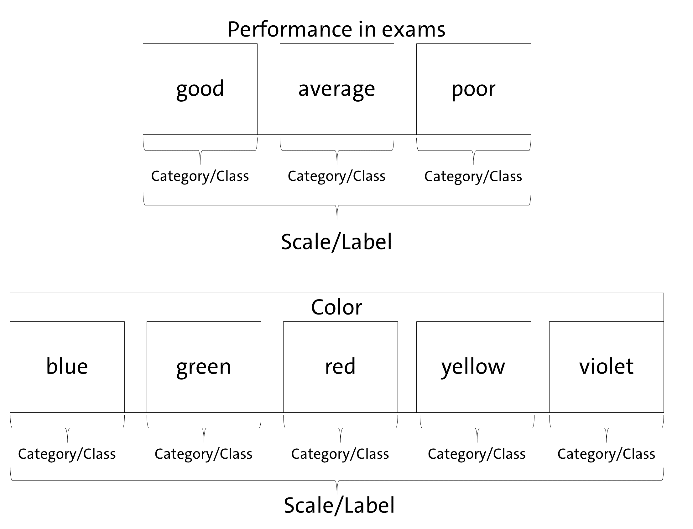
Since aifeducation looks at the application of AI for classification tasks from the perspective of the empirical method of content analysis, there is some overlap between the concepts of content analysis and machine learning. In content analysis, phenomena such as performance or colours can be described as a scale or dimension made up of several categories (e.g. Schreier 2012, pp. 59). In our example, an exam performance could be described as “good”, “average” or “poor”. In terms of colours, categories could be “blue”, “green”, etc. The machine learning literature uses different terminology to describe this type of data. In machine learning, ‘scale’ and ‘dimension’ correspond to the term ‘label’, while ‘categories’ correspond to the term ‘classes’ (Chollet, Kalinowski & Allaire 2022, p. 114).
With these clarifications, classification means assigning a text to the correct category on a scale, or labelling the text with the correct class. As illustrated in Figure 2, two types of data are required to train an AI to classify text in accordance with supervised machine learning principles.
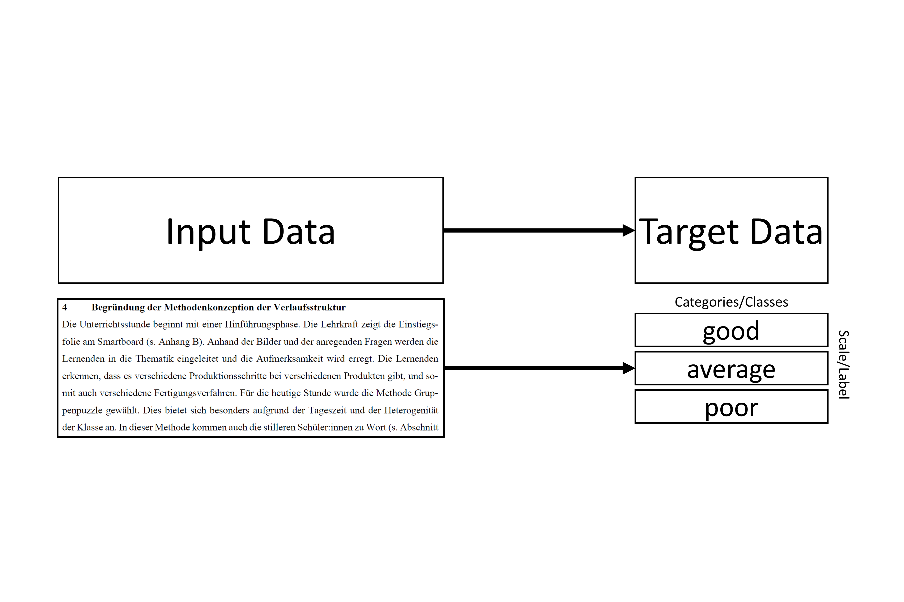
By providing AI with textual data as input and class-specific target data, it can learn to recognise texts that imply a specific class or category. In the above exam example, the AI can learn to recognise texts that imply a “good”, “average” or “poor” judgement. Once trained, the AI can be applied to new texts to predict their class. This classification can then be used for further statistical analysis or to derive recommendations about learning and teaching.
In use cases as described in this vignette, AI has to “understand” natural language: „Natural language processing is an area of research in computer science and artificial intelligence (AI) concerned with processing natural languages such as English and Mandarin. This processing generally involves translating natural language into data (numbers) that a computer can use to learn about the world. (…)” (Lane , Howard & Hapke 2019, p. 4)
Thus, the first step is to transform raw text into a form usable by a computer. This involves converting raw text into numbers. In modern approaches, this is typically achieved using word embeddings. Campesato (2021, p. 102) describes these as “the collective name for a set of language modeling and feature learning techniques (…) where words or phrases from the vocabulary are mapped to vectors of real numbers.” The definition of a word vector is similar: „Word vectors rePostsent the semantic meaning of words as vectors in the context of the training corpus.” (Lane, Howard & Hapke 2019, p. 191). In the next step, the words or text embeddings can be used as the input data and the labels as the target data when training an AI system to classify text.
In aifeducation, these steps are covered with three different types of models, as shown in Figure 3.
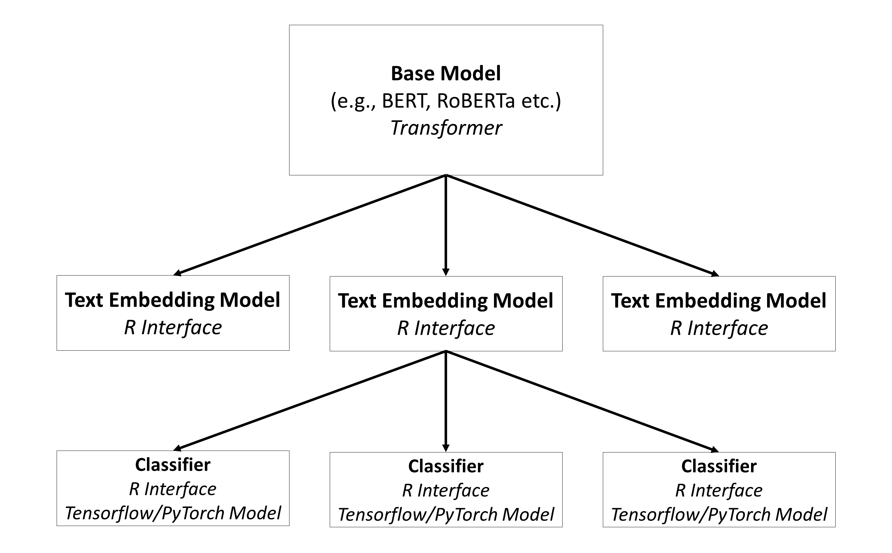
Base Models: The base models have the ability to understand natural language. These are generally transformers such as BERT and RoBERTa. A large number of pre-trained models can be found on Hugging Face.
Text Embedding Models: These models are built on top of base models and store instructions for using these base models to convert raw text into sequences of numbers. Please note that the same base model can be used to create different text embedding models.
Classifiers: Classifiers are used in conjunction with a text embedding model. They classify text into categories or classes based on the numeric representation provided by the corresponding text embedding model. Please note that a text embedding model can be used to create different classifiers (e.g. one for colours, one to estimate text quality, etc.).
2 Start Working
2.1 Starting a New Session
Before you can start working with aifeducation, you must set up a new R session. First, load aifeducation. Next, you need to set up Python via ‘reticulate’ and select the environment in which all the necessary Python libraries are available. If you installed Python as suggested in vignette 01 Get started, you can start a new session like this:
library(aifeducation)
prepare_session()
#> Python is already initalized with the virtual environment 'aifeducation'.
#> Try to use this environment.
#> Detected OS: windows
#> Checking python packages. This can take a moment.
#> All necessary python packages are available.
#> python : 3.12
#> torch : 2.11.0+cu130
#> pyarrow : 23.0.1
#> transformers : 5.8.0
#> tokenizers : 0.22.2
#> pandas : 3.0.2
#> datasets : 4.8.4
#> calflops : 0.3.2
#> codecarbon : 3.2.2
#> safetensors : 0.7.0
#> torcheval : 0.0.7
#> accelerate : 1.13.0
#> numpy : 2.4.4
#> GPU Acceleration : TRUE
#> sentencepiece available : TRUE
#> Version of python package 'transformers' is 5.0.0 or higher. Some older models from hugging face may not work.
#> Set logger level of python packages.
#> Location for Temporary Files:C:\Users\User\AppData\Local\Temp\RtmpeMfiJi/r_aifeducationPlease remember: Each time you start a new session in R, you must load the aifeducation library and configure Python. We recommend using the function ‘prepare_session’ because it performs all the necessary steps for correctly setting up Python.
Now you can start your work.
2.2 Data Management
2.2.1 Introduction
In the context of use cases for aifeducation, three different types of data are necessary: raw text, text embeddings and target data, which represent the categories/classes of a text.
To address the first two types and enable the use of large data sets that may exceed your machine’s memory capacity, the package ships with two specialised objects.
The first is LargeDataSetForText. Objects of this class
are used to read raw text from .txt, .pdf and .xlsx files and store it
for further computations. The second is the
LargeDataSetForTextEmbeddings class, which stores the text
embeddings of raw texts generated with TextEmbeddingModels.
We will describe the transformation of raw texts into text embeddings
later.
2.2.2 Raw Texts
You need to create a LargeDataSetForText if you want to
create or train a base model or generate text embeddings. If you are
creating such a dataset for the first time, you must first create an
empty dataset.
raw_texts <- LargeDataSetForText$new()Different methods are available to fill this object with raw texts, depending on the file type used for storing them.
.txt files
The first alternative is to store raw texts in .txt files. To use these you have to structure your data in a specific way:
- Create a main folder for storing your data.
- Store every raw text/document into a single .txt file into its own folder within the main folder. In every folder there should be only one file for a raw text/document.
- Add an additional .txt file to the folder named
bib_entry.txt. This file contains bibliographic information for the raw text. - Add an additional .txt file to the folder named
license.txtwhich contains a short statement for the license of the text such as “CC BY”. - Add an additional .txt file to the folder named
url_license.txtwhich contains the url/link to the license’s text such as “https://creativecommons.org/licenses/by/4.0/”. - Add an additional .txt file to the folder named
text_license.txtwhich contains the full license in raw texts. - Add an additional .txt file to the folder named
url_source.txtwhich contains the url/link to the text file in the internet.
Applying these rules may result in a data structure as follows:
- Folder “main folder”
- Folder Text A
- text_a.txt
- bib_entry.txt
- license.txt
- url_license.txt
- text_license.txt
- url_source.txt
- Folder Text B
- text_b.txt
- bib_entry.txt
- license.txt
- url_license.txt
- text_license.txt
- url_source.txt
- Folder Text C
- text_C.txt
- bib_entry.txt
- license.txt
- url_license.txt
- text_license.txt
- url_source.txt
- Folder Text A
Now you can call the method add_from_files_txt by
passing the path to the directory of the main folder to
dir_path.
raw_texts$add_from_files_txt(
dir_path = "main folder",
clean_text = TRUE
)The data set will now read all the raw texts in the main folder and assign each text the corresponding bibliographic entry, licence, etc. Please note that adding a bib_entry.txt, license.txt, url_license.txt, text_license.txt and url_source.txt to every folder is optional. If there is no such file in the corresponding folder, an empty entry will appear in the dataset. However, against the backdrop of the European AI Act, we recommend providing both the licence and bibliographic information to make documenting your models more straightforward. Furthermore, some licences, such as those provided by Creative Commons, require statements about the creators, a copyright note, a URL or link to the source material (if possible), the licence of the material, and a URL or link to the licence text online, or the licence text itself. Please check the licences of the material you are using to determine the specific requirements.
.pdf files
The second alternative is to use .pdf files as a source for raw texts. The necessary structure here is similar to that of .txt files:
- Create a main folder for storing your data.
- Store every raw text/document into a single .pdf file into its own folder within the main folder. In every folder there should be only one file for a raw text/document.
- Add an additional .txt file to the folder named
bib_entry.txt. This file contains bibliographic information for the raw text. - Add an additional .txt file to the folder named
license.txtwhich contains a short statement for the license of the text such as “CC BY”. - Add an additional .txt file to the folder named
url_license.txtwhich contains the URL/link to the license’s text such as “https://creativecommons.org/licenses/by/4.0/”. - Add an additional .txt file to the folder named
text_license.txtwhich contains the full license in raw texts. - Add an additional .txt file to the folder named
url_source.txtwhich contains the url/link to the text file in the internet.
Applying these rules may result in a data structure as follows:
- Folder “main folder”
- Folder Text A
- text_a.pdf
- bib_entry.txt
- license.txt
- url_license.txt
- text_license.txt
- url_source.txt
- Folder Text B
- text_b.pdf
- bib_entry.txt
- license.txt
- url_license.txt
- text_license.txt
- url_source.txt
- Folder Text C
- text_C.pdf
- bib_entry.txt
- license.txt
- url_license.txt
- text_license.txt
- url_source.txt
- Folder Text A
Please note that all files except the text file should have a .txt extension, not a .pdf extension.
Now you can call the method add_from_files_pdf by
passing the path to the directory of the main folder to
dir_path.
raw_texts$add_from_files_pdf(
dir_path = "main folder",
clean_text = TRUE
)As stated above, bib_entry.txt,
license.txt, url_license.txt,
text_license.txt and url_source.txt are
optional.
.xlsx files
The third option is to save the raw texts as .xlsx files. This alternative is useful if you have many small raw texts. For very large texts, such as books or papers, we recommend storing them as .txt or .pdf files.
In order to add raw text from .xlsx files, the files need a special structure:
- Create a main folder for storing all the .xlsx files that you want to read.
- All .xlsx files must contain the names of the columns in the first row, and these names must be identical for each column across all the files you wish to read.
- Each .xlsx file must contain a column for storing the text ID and a column for storing the raw text. Every text must have a unique ID across all .xlsx files.
- Each .xlsx file can contain an additional column for the bibliographic entry.
- Every .xlsx file can contain an additional column for the licence.
- Every .xlsx file can contain an additional column for the licence URL.
- Every .xslx file can contain an additional column for the licence text.
- Every .xlsx file can contain an additional column for the source’s URL.
Your .xlsx file might look something like this:
| id | text | bib | license | url_license | text_license | url_source |
|---|---|---|---|---|---|---|
| z3 | This is an example. | Author (2019) | CC BY | Example URL | Text | Example URL |
| a3 | This is a second example. | Author (2022) | CC BY | Example URL | Text | Example URL |
| … | … | … | … |
You can now call the method add_from_files_xlsx by
passing the path to the main folder directory to dir_path.
Remember to specify the column names for ID and text, as well as for the
other columns.
raw_texts$add_from_files_xlsx(
dir_path = "main folder",
id_column = "id",
text_column = "text",
bib_entry_column = "bib_entry",
license_column = "license",
url_license_column = "url_license",
text_license_column = "text_license",
url_source_column = "url_source"
)Clean text
For .txt and .pdf files, set the argument
clean_text=TRUE. This will prompt an algorithm to
post-process the raw text and apply the following modifications:
- Some special symbols are removed.
- All spaces at the beginning and end of a line are removed.
- Multiple spaces are reduced to a single space.
- All rows containing a number from 1 to 999 at the beginning or end (header and footer) are removed.
- The list of contents is removed.
- Hyphenation is undone.
- Line breaks within a paragraph are removed.
- Multiple line breaks are reduced to a single line break.
These changes aim to provide clean plain text to increase the performance and quality of all analyses.
IDs For .xlsx files, the text IDs are set to the IDs stored in the corresponding ID column. For .pdf and .txt files, the file names are used as the ID (without the file extension).
Please note that a consequence of this is that two files text_01.txt and text_01.pdf have the same ID, which is not allowed. Please ensure that you use unique IDs across file formats.
Saving and loading a data set
Once you have created a LargeDataSetForText, you can
save your data to disk by calling the save_to_disk
function. In our example, the code would be as follows:
save_to_disk(
object = raw_texts,
dir_path = "examples",
folder_name = "raw_texts"
)The argument object requires the object that you would
like to save. In our case, this is ‘raw_texts’. With
dir_path, you specify the location in which to save the
object, and with folder_name, you define the name of the
folder that will be created within that directory. The data set is saved
in this folder.
To load an existing data set, call the function
load_from_disk with the directory path where you stored the
data. In our case, this would be:
raw_text_dataset <- load_from_disk("examples/raw_texts")Now you can work with your data.
2.2.3 Text Embeddings
The numerical representations of raw text, known as text embeddings,
are stored with objects of the class
LargeDataSetForTextEmbeddings. These kinds of data sets are
generated by models such as TextEmbeddingModel. Therefore,
it is not necessary to create such a data set manually.
However, you will need this type of data set to train a classifier or
predict the categories/classes of raw texts. Therefore, it may be
advantageous to save transformed data. You can save and load an object
of this class using the functions save_to_disk and
load_from_disk.
Let us assume that we have a
LargeDataSetForTextEmbeddings called
text_embeddings. Saving this object might look like this:
save_to_disk(
object = text_embeddings,
dir_path = "examples",
folder_name = "text_embeddings"
)The dataset will be saved in the ‘examples/text_embeddings’ folder. Loading this data set may look like this:
new_text_embeddings <- load_from_disk("examples/text_embeddings")2.2.4 Target Data
The final data type required for working with aifeducation
is the categories/classes of the raw text provided. We currently do not
provide a special object for this kind of data. You just need a
named factor storing the classes/categories for a
dimension. It is also important that the names equal the ID of the
corresponding raw texts/text embeddings, as matching the
classes/categories to texts is done using these names.
Saving and loading can be done with R’s functions
save and load.
2.3 Example Data for this Vignette
To illustrate the steps in this vignette, we cannot use data from
educational settings, as such data are generally protected by privacy
policies. Therefore, we have used a subset of the Stanford Movie Review
Dataset, which was provided by Maas et al. (2011) and is included in the
package. You can access the dataset with
imdb_movie_reviews.
We now have a dataset with three columns. The first contains the raw text, the second the rating of the film (positive or negative) and the third the ID of the film review. Approximately 200 reviews imply a positive rating of a film, and around 100 imply a negative rating.
In this tutorial, we will modify the data set by setting
approximately 50 positive and 25 negative reviews to NA, to
indicate that these reviews are unlabelled.
example_data <- imdb_movie_reviews
example_data$label <- as.character(example_data$label)
example_data$label[c(76:100)] <- NA
example_data$label[c(201:250)] <- NA
table(example_data$label)
#>
#> neg pos
#> 75 150We will now create a LargeDataSetForText object from
this data.frame. Before we can do this, however, we must
ensure that the data set has all the necessary columns.
colnames(example_data)
#> [1] "text" "label" "id"Now, we need to add two columns. For this tutorial, we will not be adding any bibliographic or licence information, although this is recommended in practice.
example_data$bib_entry <- NA
example_data$license <- NA
colnames(example_data)
#> [1] "text" "label" "id" "bib_entry" "license"The data.frame is now ready as input for our data set.
The ‘label’ column will not be included.
data_set_reviews_text <- LargeDataSetForText$new()
data_set_reviews_text$add_from_data.frame(example_data)You can inspect the data set with print.
print(data_set_reviews_text)
#> Object : LargeDataSetForText
#> Columns: id, text, bib_entry, license, url_license, text_license, url_source
#> Rows : 300We save the categories/labels within a separate
factor.
We will now use this data to demonstrate how to use the various objects and functions in aifeducation.
3 Base Models
3.1 Overview
Base models form the foundation of all subsequent models in aifeducation. Currently, these are Transformer models such as ModernBERT (Warner et al. 2024), MPNet (Song et al. 2020), BERT (Devlin et al. 2019), RoBERTa (Liu et al. 2019) and Funnel-Transformer (Dai et al. 2020). In general, these models are first trained on a large corpus of general texts. Next, the models are fine-tuned to domain-specific texts and/or specific tasks. As creating base models requires a large amount of text, resulting in high computational time, it is recommended to use pre-trained models. These can be found on Hugging Face. However, sometimes it is more straightforward to create a new model to fit a specific purpose. Sometimes, however, it is more straightforward to create a new model to fit a specific purpose. aifeducation supports the option to create and train/fine-tune base models.
In this chapter, we focus on developing a new model. Chapter 4 describes the use of a pre-trained model from Hugging Face. Each transformer model comprises two parts:
- The tokenizer, which splits raw text into smaller pieces in order to model a large number of words using a limited number of tokens.
- The neural network, which is used to model the capability to understand natural language.
3.2 Creation of a Tokenizer
The first step is to set up a tokenizer. In aifeducation,
you can choose from a variety of models. In this example, we use a
WordPieceTokenizer. To create a new tokenizer, we first
call the new method.
tokenizer <- WordPieceTokenizer$new()We now have an empty tokenizer that can be configured by calling the
relevant method. The available parameters depend on the type of
tokenizer. In the case of a WordPieceTokenizer, we only
have two options. The first, vocab_size, determines how
many tokens the tokenizer should recognise. The second
(vocab_do_lower_case) determines whether all words should
be transformed to lowercase before tokenization. Since we are only using
a very small data set to illustrate the usage of the package, we set
vocab_size = 200. In real-world applications, this value
should be larger. You can find more information on this topic in the
vignette 04 Model configuration and
training.
tokenizer$configure(
vocab_size = 200,
vocab_do_lower_case = FALSE
)The next step is to train the model by calling the train
method. Here, we pass a text data set to the parameter
text_dataset. This raw text is then used to train the
model.
In addition, we can use the Python library codecarbon to
set up sustainability tracking of this process and estimate its
ecological impact. Therefore, the sustain_track parameter
is set to TRUE by default. If you use the sustainability
tracker, you must provide the three-letter code for the country in which
your computer is located (e.g. “CAN” for Canada, “DEU” for Germany). You
can find a list of these codes on Wikipedia.
This is because different countries use different sources and techniques
for generating energy, resulting in a specific impact on CO₂ emissions.
For the USA and Canada, you can also specify a region by setting
sustain_region. Please refer to the ‘codecarbon’ documentation for more
information.
tokenizer$train(
text_dataset = data_set_reviews_text,
statistics_max_tokens_length = 512,
sustain_track = TRUE,
sustain_iso_code = "DEU",
sustain_region = NULL,
sustain_interval = 15,
sustain_log_level = "error",
trace = TRUE
)
#> 2026-10-13 16:50:44 Start Sustainability Tracking
#> 2026-10-13 16:50:50 Stop Sustainability TrackingTraining a tokenizer is a very fast process. Therefore, even a large quantity of texts should only take a few minutes to process. The model is now ready to use. Initially, we can explore some tokeniser statistics.
# We use t() to improve the readability of the table
t(tokenizer$get_tokenizer_statistics())
#> [,1]
#> step "creation"
#> date "2026-10-13 16:50:50"
#> max_tokens_length "512"
#> n_sequences "653"
#> n_words "90195"
#> n_tokens "257269"
#> mu_t "393.9801"
#> mu_w "138.124"
#> mu_g "2.852364"This table provides an estimation of the number of words in the entire training dataset, the total number of tokens resulting from the raw texts, and the number of sequences if the length of a sequence is limited to the value shown in the ‘max_token_length’ column. Furthermore, the three statistics proposed by Kaya and Tantug (2024, p. 5) are shown.
- \mu_t refers to the average number of tokens per sequence,
- \mu_w refers to the average number of words per sequence, and
- \mu_g refers to the average number of tokens per word.
The tokenizer granularity rate, \mu_g, describes how many tokens are necessary to represent a single word. This value is important because a higher value means that the same text is split into a longer sequence of tokens than with a tokenizer with a lower value. Since large language models have a maximum limit on the length of a token sequence, this value impacts how many words of a text can be processed by a base model.
To see how the tokenizer works, call the encode
method.
tokenizer$encode(
raw_text = "This is a good movie.",
token_encodings_only = TRUE,
token_to_int = FALSE
)
#> [[1]]
#> [[1]][[1]]
#> [1] "[CLS]" "T" "##h" "##is" "is" "a" "g" "##o" "##o"
#> [10] "##d" "m" "##o" "##v" "##i" "##e" "." "[SEP]" "[PAD]"
#> [19] "[PAD]" "[PAD]" "[PAD]" "[PAD]" "[PAD]" "[PAD]" "[PAD]" "[PAD]" "[PAD]"
#> [28] "[PAD]" "[PAD]" "[PAD]" "[PAD]" "[PAD]" "[PAD]" "[PAD]" "[PAD]" "[PAD]"
#> [37] "[PAD]" "[PAD]" "[PAD]" "[PAD]" "[PAD]" "[PAD]" "[PAD]" "[PAD]" "[PAD]"
#> [46] "[PAD]" "[PAD]" "[PAD]" "[PAD]" "[PAD]" "[PAD]" "[PAD]" "[PAD]" "[PAD]"
#> [55] "[PAD]" "[PAD]" "[PAD]" "[PAD]" "[PAD]" "[PAD]" "[PAD]" "[PAD]" "[PAD]"
#> [64] "[PAD]" "[PAD]" "[PAD]" "[PAD]" "[PAD]" "[PAD]" "[PAD]" "[PAD]" "[PAD]"
#> [73] "[PAD]" "[PAD]" "[PAD]" "[PAD]" "[PAD]" "[PAD]" "[PAD]" "[PAD]" "[PAD]"
#> [82] "[PAD]" "[PAD]" "[PAD]" "[PAD]" "[PAD]" "[PAD]" "[PAD]" "[PAD]" "[PAD]"
#> [91] "[PAD]" "[PAD]" "[PAD]" "[PAD]" "[PAD]" "[PAD]" "[PAD]" "[PAD]" "[PAD]"
#> [100] "[PAD]" "[PAD]" "[PAD]" "[PAD]" "[PAD]" "[PAD]" "[PAD]" "[PAD]" "[PAD]"
#> [109] "[PAD]" "[PAD]" "[PAD]" "[PAD]" "[PAD]" "[PAD]" "[PAD]" "[PAD]" "[PAD]"
#> [118] "[PAD]" "[PAD]" "[PAD]" "[PAD]" "[PAD]" "[PAD]" "[PAD]" "[PAD]" "[PAD]"
#> [127] "[PAD]" "[PAD]" "[PAD]" "[PAD]" "[PAD]" "[PAD]" "[PAD]" "[PAD]" "[PAD]"
#> [136] "[PAD]" "[PAD]" "[PAD]" "[PAD]" "[PAD]" "[PAD]" "[PAD]" "[PAD]" "[PAD]"
#> [145] "[PAD]" "[PAD]" "[PAD]" "[PAD]" "[PAD]" "[PAD]" "[PAD]" "[PAD]" "[PAD]"
#> [154] "[PAD]" "[PAD]" "[PAD]" "[PAD]" "[PAD]" "[PAD]" "[PAD]" "[PAD]" "[PAD]"
#> [163] "[PAD]" "[PAD]" "[PAD]" "[PAD]" "[PAD]" "[PAD]" "[PAD]" "[PAD]" "[PAD]"
#> [172] "[PAD]" "[PAD]" "[PAD]" "[PAD]" "[PAD]" "[PAD]" "[PAD]" "[PAD]" "[PAD]"
#> [181] "[PAD]" "[PAD]" "[PAD]" "[PAD]" "[PAD]" "[PAD]" "[PAD]" "[PAD]" "[PAD]"
#> [190] "[PAD]" "[PAD]" "[PAD]" "[PAD]" "[PAD]" "[PAD]" "[PAD]" "[PAD]" "[PAD]"
#> [199] "[PAD]" "[PAD]" "[PAD]" "[PAD]" "[PAD]" "[PAD]" "[PAD]" "[PAD]" "[PAD]"
#> [208] "[PAD]" "[PAD]" "[PAD]" "[PAD]" "[PAD]" "[PAD]" "[PAD]" "[PAD]" "[PAD]"
#> [217] "[PAD]" "[PAD]" "[PAD]" "[PAD]" "[PAD]" "[PAD]" "[PAD]" "[PAD]" "[PAD]"
#> [226] "[PAD]" "[PAD]" "[PAD]" "[PAD]" "[PAD]" "[PAD]" "[PAD]" "[PAD]" "[PAD]"
#> [235] "[PAD]" "[PAD]" "[PAD]" "[PAD]" "[PAD]" "[PAD]" "[PAD]" "[PAD]" "[PAD]"
#> [244] "[PAD]" "[PAD]" "[PAD]" "[PAD]" "[PAD]" "[PAD]" "[PAD]" "[PAD]" "[PAD]"
#> [253] "[PAD]" "[PAD]" "[PAD]" "[PAD]" "[PAD]" "[PAD]" "[PAD]" "[PAD]" "[PAD]"
#> [262] "[PAD]" "[PAD]" "[PAD]" "[PAD]" "[PAD]" "[PAD]" "[PAD]" "[PAD]" "[PAD]"
#> [271] "[PAD]" "[PAD]" "[PAD]" "[PAD]" "[PAD]" "[PAD]" "[PAD]" "[PAD]" "[PAD]"
#> [280] "[PAD]" "[PAD]" "[PAD]" "[PAD]" "[PAD]" "[PAD]" "[PAD]" "[PAD]" "[PAD]"
#> [289] "[PAD]" "[PAD]" "[PAD]" "[PAD]" "[PAD]" "[PAD]" "[PAD]" "[PAD]" "[PAD]"
#> [298] "[PAD]" "[PAD]" "[PAD]" "[PAD]" "[PAD]" "[PAD]" "[PAD]" "[PAD]" "[PAD]"
#> [307] "[PAD]" "[PAD]" "[PAD]" "[PAD]" "[PAD]" "[PAD]" "[PAD]" "[PAD]" "[PAD]"
#> [316] "[PAD]" "[PAD]" "[PAD]" "[PAD]" "[PAD]" "[PAD]" "[PAD]" "[PAD]" "[PAD]"
#> [325] "[PAD]" "[PAD]" "[PAD]" "[PAD]" "[PAD]" "[PAD]" "[PAD]" "[PAD]" "[PAD]"
#> [334] "[PAD]" "[PAD]" "[PAD]" "[PAD]" "[PAD]" "[PAD]" "[PAD]" "[PAD]" "[PAD]"
#> [343] "[PAD]" "[PAD]" "[PAD]" "[PAD]" "[PAD]" "[PAD]" "[PAD]" "[PAD]" "[PAD]"
#> [352] "[PAD]" "[PAD]" "[PAD]" "[PAD]" "[PAD]" "[PAD]" "[PAD]" "[PAD]" "[PAD]"
#> [361] "[PAD]" "[PAD]" "[PAD]" "[PAD]" "[PAD]" "[PAD]" "[PAD]" "[PAD]" "[PAD]"
#> [370] "[PAD]" "[PAD]" "[PAD]" "[PAD]" "[PAD]" "[PAD]" "[PAD]" "[PAD]" "[PAD]"
#> [379] "[PAD]" "[PAD]" "[PAD]" "[PAD]" "[PAD]" "[PAD]" "[PAD]" "[PAD]" "[PAD]"
#> [388] "[PAD]" "[PAD]" "[PAD]" "[PAD]" "[PAD]" "[PAD]" "[PAD]" "[PAD]" "[PAD]"
#> [397] "[PAD]" "[PAD]" "[PAD]" "[PAD]" "[PAD]" "[PAD]" "[PAD]" "[PAD]" "[PAD]"
#> [406] "[PAD]" "[PAD]" "[PAD]" "[PAD]" "[PAD]" "[PAD]" "[PAD]" "[PAD]" "[PAD]"
#> [415] "[PAD]" "[PAD]" "[PAD]" "[PAD]" "[PAD]" "[PAD]" "[PAD]" "[PAD]" "[PAD]"
#> [424] "[PAD]" "[PAD]" "[PAD]" "[PAD]" "[PAD]" "[PAD]" "[PAD]" "[PAD]" "[PAD]"
#> [433] "[PAD]" "[PAD]" "[PAD]" "[PAD]" "[PAD]" "[PAD]" "[PAD]" "[PAD]" "[PAD]"
#> [442] "[PAD]" "[PAD]" "[PAD]" "[PAD]" "[PAD]" "[PAD]" "[PAD]" "[PAD]" "[PAD]"
#> [451] "[PAD]" "[PAD]" "[PAD]" "[PAD]" "[PAD]" "[PAD]" "[PAD]" "[PAD]" "[PAD]"
#> [460] "[PAD]" "[PAD]" "[PAD]" "[PAD]" "[PAD]" "[PAD]" "[PAD]" "[PAD]" "[PAD]"
#> [469] "[PAD]" "[PAD]" "[PAD]" "[PAD]" "[PAD]" "[PAD]" "[PAD]" "[PAD]" "[PAD]"
#> [478] "[PAD]" "[PAD]" "[PAD]" "[PAD]" "[PAD]" "[PAD]" "[PAD]" "[PAD]" "[PAD]"
#> [487] "[PAD]" "[PAD]" "[PAD]" "[PAD]" "[PAD]" "[PAD]" "[PAD]" "[PAD]" "[PAD]"
#> [496] "[PAD]" "[PAD]" "[PAD]" "[PAD]" "[PAD]" "[PAD]" "[PAD]" "[PAD]" "[PAD]"
#> [505] "[PAD]" "[PAD]" "[PAD]" "[PAD]" "[PAD]" "[PAD]" "[PAD]" "[PAD]"As you can see here, the tokenizer splits the words into several tokens and adds some special tokens.
tokenizer$encode(
raw_text = "This is a good movie.",
token_encodings_only = TRUE,
token_to_int = TRUE
)
#> [[1]]
#> [[1]][[1]]
#> [1] 0 53 110 174 188 61 67 96 96 108 73 96 112 97 101 17 1 3
#> [19] 3 3 3 3 3 3 3 3 3 3 3 3 3 3 3 3 3 3
#> [37] 3 3 3 3 3 3 3 3 3 3 3 3 3 3 3 3 3 3
#> [55] 3 3 3 3 3 3 3 3 3 3 3 3 3 3 3 3 3 3
#> [73] 3 3 3 3 3 3 3 3 3 3 3 3 3 3 3 3 3 3
#> [91] 3 3 3 3 3 3 3 3 3 3 3 3 3 3 3 3 3 3
#> [109] 3 3 3 3 3 3 3 3 3 3 3 3 3 3 3 3 3 3
#> [127] 3 3 3 3 3 3 3 3 3 3 3 3 3 3 3 3 3 3
#> [145] 3 3 3 3 3 3 3 3 3 3 3 3 3 3 3 3 3 3
#> [163] 3 3 3 3 3 3 3 3 3 3 3 3 3 3 3 3 3 3
#> [181] 3 3 3 3 3 3 3 3 3 3 3 3 3 3 3 3 3 3
#> [199] 3 3 3 3 3 3 3 3 3 3 3 3 3 3 3 3 3 3
#> [217] 3 3 3 3 3 3 3 3 3 3 3 3 3 3 3 3 3 3
#> [235] 3 3 3 3 3 3 3 3 3 3 3 3 3 3 3 3 3 3
#> [253] 3 3 3 3 3 3 3 3 3 3 3 3 3 3 3 3 3 3
#> [271] 3 3 3 3 3 3 3 3 3 3 3 3 3 3 3 3 3 3
#> [289] 3 3 3 3 3 3 3 3 3 3 3 3 3 3 3 3 3 3
#> [307] 3 3 3 3 3 3 3 3 3 3 3 3 3 3 3 3 3 3
#> [325] 3 3 3 3 3 3 3 3 3 3 3 3 3 3 3 3 3 3
#> [343] 3 3 3 3 3 3 3 3 3 3 3 3 3 3 3 3 3 3
#> [361] 3 3 3 3 3 3 3 3 3 3 3 3 3 3 3 3 3 3
#> [379] 3 3 3 3 3 3 3 3 3 3 3 3 3 3 3 3 3 3
#> [397] 3 3 3 3 3 3 3 3 3 3 3 3 3 3 3 3 3 3
#> [415] 3 3 3 3 3 3 3 3 3 3 3 3 3 3 3 3 3 3
#> [433] 3 3 3 3 3 3 3 3 3 3 3 3 3 3 3 3 3 3
#> [451] 3 3 3 3 3 3 3 3 3 3 3 3 3 3 3 3 3 3
#> [469] 3 3 3 3 3 3 3 3 3 3 3 3 3 3 3 3 3 3
#> [487] 3 3 3 3 3 3 3 3 3 3 3 3 3 3 3 3 3 3
#> [505] 3 3 3 3 3 3 3 3Changing the parameter to token_to_int = TRUE produces
the same result, but instead of the tokens, you get the index of the
token in the tokenizer’s vocabulary. For example, in this example, the
ID 0 refers to the token [CLS].
If you have a sequence of IDs and would like to know which tokens
correspond to these numbers, you can call the decode
method.
tokenizer$decode(
int_seqence = list(list(c(0, 53, 109, 174, 188, 61, 67, 97, 97, 112, 73, 97, 110, 99, 101, 17, 1))),
to_token = TRUE
)
#> [[1]]
#> [[1]][[1]]
#> [1] "[CLS] T ##g ##is is a g ##i ##i ##v m ##i ##h ##t ##e . [SEP]"If you would like to analyse the ecological impact of training the tokenizer, you can get an estimate of the energy consumption and CO₂ emissions involved.
# We use t() to improve the readability of the table
t(tokenizer$get_sustainability_data("training"))
#> [,1]
#> sustainability_tracked "TRUE"
#> date "2026-10-13 16:50:50"
#> task "Create tokenizer"
#> sustainability_data.duration_sec "4.577256"
#> sustainability_data.co2eq_kg "3.283888e-05"
#> sustainability_data.cpu_energy_kwh "5.402011e-05"
#> sustainability_data.gpu_energy_kwh "1.947252e-05"
#> sustainability_data.ram_energy_kwh "1.270998e-05"
#> sustainability_data.total_energy_kwh "8.620261e-05"
#> technical.tracker "codecarbon"
#> technical.py_package_version "3.2.2"
#> technical.cpu_count "12"
#> technical.cpu_model "12th Gen Intel(R) Core(TM) i5-12400F"
#> technical.gpu_count "1"
#> technical.gpu_model "1 x NVIDIA GeForce RTX 4070"
#> technical.ram_total_size "15.84258"
#> region.country_name "Germany"
#> region.country_iso_code "DEU"
#> region.region NASince tokenizers can be trained very efficiently, these values will usually be very low.
Finally, you can save and load your model. This is done for all
objects using the functions save_to_disk and
load_from_disk.
save_to_disk(
object = tokenizer,
dir_path = "examples",
folder_name = "example_tokenizer"
)
tokenizer <- load_from_disk("examples/example_tokenizer")To get a short summary of a tokenizer you can use
print.
print(tokenizer)
#> Object : WordPieceTokenizer
#> Configured : TRUE
#> Trained : TRUE
#> Vocab Size : 200
#> Tokens/Word: 2.85236432174733
#> Mask Token : [MASK]
#> Pad Token : [PAD]
#> Unk Token : [UNK]Now you are ready to create a base model.
3.3 Creating a BaseModel
At the outset, you can select from the various supported transformer architectures. Depending on the architecture chosen, different options are available for determining the shape of your neural network. For this vignette, we use a BERT model (Devlin et al. 2019).
base_model_bert <- BaseModelBert$new()
base_model_bert$configure(
tokenizer = tokenizer,
max_position_embeddings = 512,
hidden_size = 64,
num_hidden_layers = 4,
num_attention_heads = 4,
intermediate_size = 2 * 64,
hidden_act = "GELU",
hidden_dropout_prob = 0.1,
attention_probs_dropout_prob = 0.1
)First, we create an empty model with ‘new’. You can then configure your model in the next step. The available parameters depend on the model type. In this example, we create a model with four hidden layers, a hidden size of 64 and four attention heads. The maximum sequence length is 512 tokens. Since the tokenizer granularity rate is 2.8523643 this allows the model to process an average of 1460.4105327 words.
Please note that the value of the
max_position_embeddings parameter determines how many
tokens your transformer can process. If your text contains more tokens
than this number, the additional tokens are ignored. However, if you
would like to analyse long documents, please avoid increasing this
number too significantly because the computational time increases
quadratically rather than linearly (Beltagy, Peters & Cohan 2020).
For long documents, you can use another Transformer architecture
(e.g. Longformer, Beltagy, Peters & Cohan 2020), or split a long
document into several sequential chunks for classification
(e.g. Pappagari et al. 2019). Using chunks is supported by
aifedcuation for all models.
The parameter tokenizer requires a tokenizer object.
Here, we use the model created in Section 3.2.
The vignette 04 Model configuration and training provides details on how to configure a base model.
Your model is now ready. You can either save it using the
save_to_disk function or continue with training.
3.3 Train/Fine-Tune a Base Model
If you want to train a new base model for the first time (see section
3.2) or adapt a pre-trained model to a domain-specific language or task,
you can call the corresponding train method.
base_model_bert$train(
text_dataset = data_set_reviews_text,
p_mask = 0.30,
whole_word = TRUE,
val_size = 0.1,
n_epoch = 10,
batch_size = 12,
max_sequence_length = 250,
full_sequences_only = FALSE,
min_seq_len = 50,
learning_rate = 3e-3,
sustain_track = TRUE,
sustain_iso_code = "DEU",
sustain_region = NULL,
sustain_interval = 15,
sustain_log_level = "error",
trace = TRUE,
pytorch_trace = 0,
log_dir = NULL,
log_write_interval = 2
)
#> 2026-10-13 16:50:51 Start Sustainability Tracking
#> 2026-10-13 16:50:51 Prepare Data for Training
#> 2026-10-13 16:50:52 Calculate Flops Based on Architecture
#> 2026-10-13 16:50:52 Create Data Collator
#> 2026-10-13 16:50:52 Create Trainer
#> 2026-10-13 16:50:52 Using Whole Word Masking
#> 2026-10-13 16:50:52 Start Training
#> 2026-10-13 16:51:12 Stop Sustainability Tracking
#> 2026-10-13 16:51:12 FinishThe data for training must be passed to text_dataset.
This object should be of the LargeDataSetForText class, as
described in Section 2.2.2. In this example, we use text from movie
reviews. Please note that this data set is too small for training a new
Transformer. We are using it here only to provide a quick demonstration.
For real use cases, a larger data set is necessary.
For a Bert model, the learning objective is masked language
modelling. Other models may use different learning objectives. Please
refer to the documentation for more details on each model. You can set
how masking is done using the p_mask and
whole_word parameters. If whole_word is set to
FALSE, a number of tokens are masked. If
whole_word is set to TRUE, all tokens
belonging to a specific number of words are masked. The number of
words/tokens is chosen using p_mask.
You can set the length of token sequences using the
max_sequence_length parameter, which instructs the
tokenizer to split long texts into several sequences of the specified
size. Using the val_size parameter, you can specify how
many of the generated sequences should be used for the validation
sample.
Since creating a transformer model is energy-consuming,
aifeducation allows you to estimate its ecological impact with
the help of the Python library ‘codecarbon.’ Thus, the
sustain_track parameter is set to TRUE by
default. If you use the sustainability tracker, you must provide the
three-letter code for the country in which your computer is located
(e.g. “CAN” for Canada, “DEU” for Germany). You can find a list of these
codes on Wikipedia.
This is because different countries use different sources and techniques
for generating energy, resulting in a specific impact on CO₂ emissions.
For the USA and Canada, you can also specify a region by setting
sustain_region. Please refer to the ‘codecarbon’
documentation for more information.
If you are working on a machine with a small memory capacity, please
reduce the batch size significantly. Once the training is complete, you
can save the entire model using the save_to_disk
function.
save_to_disk(
object = base_model_bert,
dir_path = "examples",
folder_name = "example_base_model_bert"
)To use the model, load it with
base_model_bert <- load_from_disk("examples/example_base_model_bert")To use the model for the fill-mask task, call the
fill_mask method
base_model_bert$fill_mask(
masked_text = "This is a [MASK] movie.",
n_solutions = 5
)
#> [[1]]
#> score token token_str
#> 1 0.05876372 101 ##e
#> 2 0.03339637 110 ##h
#> 3 0.03263056 99 ##t
#> 4 0.03260763 102 ##s
#> 5 0.02799609 96 ##oHere, you can provide a text containing a masked token to indicate the gap that the model should fill. In return, you will receive the logits, the token ID and the specific token that the model suggests replacing the mask token with.
You get a short summary of an object of this class with
print.
print(base_model_bert)
#> Object : BaseModelBert
#> Configured : TRUE
#> Trained : TRUE
#> Parameter : 184200
#> Seq. Len. : 512
#> Features : 64
#> N Layer : 4
#> Vocab Size : 200
#> Tokens/Word: 2.85236432174733
#> Mask Token : [MASK]
#> Pad Token : [PAD]
#> Unk token : [UNK]3.4 Analyzing a BaseModel
If you would like to investigate a base model further, you can use specific methods for this purpose.
Training History
The training history from the last training session can be displayed as follows:
base_model_bert$plot_training_history(
ind_best_model = TRUE
)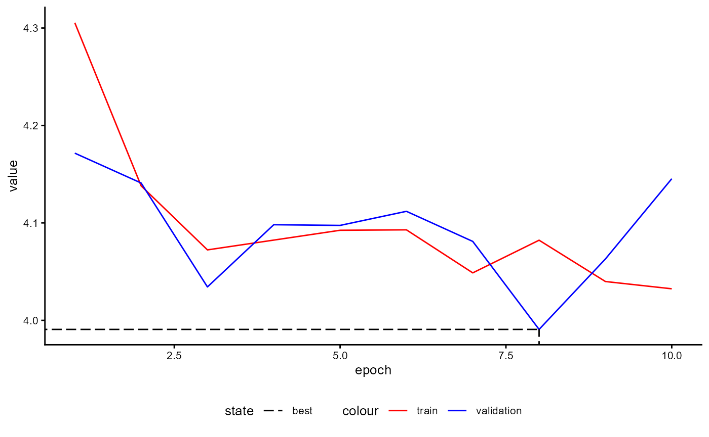
Figure 4: Example of a Training History for a BaseModel.
Sustainability of Training
To explore the ecological impact of training and fine-tuning a model,
call get_sustainability_data("training").
# We use t() to improve the readability of the table
t(base_model_bert$get_sustainability_data("training"))
#> [,1]
#> sustainability_tracked "TRUE"
#> date "2026-10-13 16:51:12"
#> task "training"
#> sustainability_data.duration_sec "20.62566"
#> sustainability_data.co2eq_kg "0.0001912744"
#> sustainability_data.cpu_energy_kwh "0.000243374"
#> sustainability_data.gpu_energy_kwh "0.0002014607"
#> sustainability_data.ram_energy_kwh "5.726375e-05"
#> sustainability_data.total_energy_kwh "0.0005020985"
#> technical.tracker "codecarbon"
#> technical.py_package_version "3.2.2"
#> technical.cpu_count "12"
#> technical.cpu_model "12th Gen Intel(R) Core(TM) i5-12400F"
#> technical.gpu_count "1"
#> technical.gpu_model "1 x NVIDIA GeForce RTX 4070"
#> technical.ram_total_size "15.84258"
#> region.country_name "Germany"
#> region.country_iso_code "DEU"
#> region.region NAThe resulting table provides detailed information on every training run, with active sustainability tracking.
Sustainability of Inference
The ecological impact of the training is important, as are the energy
consumption and CO2 emissions during inference. You can estimate the
ecological impact by calling the
estimate_sustainability_inference_fill_mask method.
base_model_bert$estimate_sustainability_inference_fill_mask(
text_dataset = data_set_reviews_text,
n = 30,
sustain_iso_code = "DEU",
sustain_region = NULL,
sustain_interval = 15,
sustain_log_level = "error",
trace = TRUE
)
#> 2026-10-13 16:51:13 Prepare Data
#> 2026-10-13 16:51:13 Add Masking Token
#> 2026-10-13 16:51:13 Start Sustainability Tracking
#> 2026-10-13 16:51:13 Stop Sustainability TrackingHere, you can provide a text dataset which forms the basis for
estimating energy consumption during a fill-mask task. You determine the
number of texts to be used with n. The results of each run
can be accessed using the command
get_sustainability_data("inference").
# We use t() to improve the readability of the table
t(base_model_bert$get_sustainability_data("inference"))
#> [,1]
#> sustainability_tracked "TRUE"
#> date "2026-10-13 16:51:13"
#> task "FillMask"
#> sustainability_data.duration_sec "0.4424901"
#> sustainability_data.co2eq_kg "3.540137e-06"
#> sustainability_data.cpu_energy_kwh "5.206782e-06"
#> sustainability_data.gpu_energy_kwh "2.861391e-06"
#> sustainability_data.ram_energy_kwh "1.224745e-06"
#> sustainability_data.total_energy_kwh "9.292918e-06"
#> technical.tracker "codecarbon"
#> technical.py_package_version "3.2.2"
#> technical.cpu_count "12"
#> technical.cpu_model "12th Gen Intel(R) Core(TM) i5-12400F"
#> technical.gpu_count "1"
#> technical.gpu_model "1 x NVIDIA GeForce RTX 4070"
#> technical.ram_total_size "15.84258"
#> region.country_name "Germany"
#> region.country_iso_code "DEU"
#> region.region NA
#> data "empirical data"
#> n "30"
#> batch "1"
#> min_seq_len NA
#> mean_seq_len NA
#> sd_seq_len NA
#> max_seq_len NAFLOPS Estimates
Another important value is the total number of FLOPS during training.
These are estimated during every training run. With
get_flops_estimates you receive a table.
# We use t() to improve the readability of the table
t(base_model_bert$get_flops_estimates())
#> [,1]
#> date "2026-10-13 16:50:52"
#> approach "architecture-based"
#> package "calflops"
#> version "0.3.2"
#> n_parameter "184200"
#> batch_size "12"
#> n_batches "85"
#> n_epochs "10"
#> flops_bp_1 "3.124416e+12"
#> flops_bp_2 "4.686624e+12"
#> flops_bp_3 "6.248831e+12"
#> flops_bp_4 "7.811039e+12"
#> flops_counted NACurrently, only an architecture-based approach is available. The number of FLOPS is not counted directly. Instead, it is estimated approximately. The ‘flops_bp_1’ column describes the number of FLOPS for all forward and backward passes.
Kaplan et al. (2020, p. 7) propose that, as a rule of thumb, the backward pass has FLOPS equal to those of the forward pass multiplied by 2. The resulting FLOPS for all forward and backward passes in a training run are shown in column ‘flops_bp_2’.
None of the columns include computations for a validation or test sample.
3.5 Creating a BaseModel from Hugging Face
If you would like to use a pre-trained model from Hugging Face, you can create a base model as follows:
- Choose a model on Hugging Face. Ensure that the model’s architecture is supported by aifeducation.
- Download the relevant files (model and tokeniser) into a folder on your machine.
- Create an empty base model for the corresponding architecture.
- Call the method
create_from_hfand provide the path to the folder where you stored the model and tokenizer.
base_model_bert_hf <- BaseModelBert$new()
base_model_bert_hf$create_from_hf(
model_dir = "examples/bert_uncased",
tokenizer_dir = "examples/bert_uncased"
)You can now use the model in the same way as all the other base
models in aifedcuation. For example, you can train the model as
described above, or use it as the basis for a
TextEmbeddingModel.
4 Text Embedding Models
4.1 Introduction
The text embedding model transforms raw text into numerical
representations. To create a new model, you need a base model with the
ability to understand natural language. A text embedding model is stored
as an object of the class TextEmbeddingModel.
In aifeducation, the process of converting raw text into numerical data is a separate step from downstream tasks such as classification. This reduces computational time on low-performance machines. By separating text embedding from other tasks, the embedding only needs to be calculated once and can be used for different tasks simultaneously. Another advantage is that training the downstream tasks involves only the tasks themselves and not the parameters of the embedding model, making training less time-consuming and decreasing computational intensity. Finally, this approach enables long documents to be analysed by applying the same algorithm to different parts of a text.
The text embedding model provides a unified interface. After creating the model using different methods, it is always handled in the same way.
4.2 Create a Text Embedding Model
First, you must choose the base model on which your new text
embedding model will be built. To illustrate its use, we apply a
pre-trained model from Hugging
Face called EuroBERT-210m.It
is based on the work by Boizard et al. (2025). Download all the files
into a new folder. We will store the model here:
"examples/EuroBERT-210m".
As described in Section 3, we first load the base model.
base_model_eurobert <- BaseModelEuroBert$new()
base_model_eurobert$create_from_hf(
model_dir = "examples/EuroBERT-210m",
tokenizer_dir = "examples/EuroBERT-210m"
)Now, we can create the TextEmbeddingModel. First, we
need to choose a value for both chunks and
overlap. Using a transformer model for text embedding is
not a problem, as long as your text does not contain more tokens than
the transformer can process. This maximum value is set in the
transformer’s configuration (see section 3.3). We can request the
maximum sequence length of a base model with:
total_max_seq_len <- base_model_eurobert$get_max_seq_len()
total_max_seq_len
#> [1] 8192If the text produces more tokens than can be accommodated, the last
ones are ignored. In some instances, you may wish to analyse long texts.
Reducing the text to the first tokens (e.g. the first 512 tokens) could
result in a problematic loss of information in these situations. To deal
with this, you can configure a text embedding model in
aifecuation to split long texts into several chunks, each of
which is processed by the base model. The maximum number of chunks is
set with the chunks parameter.
Since transformers can account for context, it may be useful to
interconnect every chunk in order to incorporate context into the
calculations. This can be achieved using the overlap
parameter, which determines how many tokens from the end of a prior
chunk should be added to the next.
To support you in this decision, the tokenizer of a base model can
calculate how many chunks are needed to cover a specific quantile of
texts in full. We will illustrate this with an example. Let’s assume
that we want an overlap of 128 tokens (token_overlap)
between each chunk. Our BaseModel can process a maximum of
8192 tokens. In this example, we use 512 tokens as the basis for each
text embedding. Passing these values to the calc_quantiles
method of the tokenizer reveals the following quantiles:
chunk_quantile <- base_model_eurobert$Tokenizer$calc_quantiles(
text_dataset = data_set_reviews_text,
batch_size = 32L,
seq_len_tokens = 512L,
token_overlap = 128L,
trace = FALSE
)
print(chunk_quantile)
#> 10% 20% 30% 40% 50% 60% 70% 75% 80% 85%
#> 1 1 1 1 1 1 1 1 1 1
#> 90% 95% 99% 99.9% 99.99% 99.999% 100%
#> 2 2 3 3 3 3 3
max_chunks <- chunk_quantile["99.9%"]To ensure that approximately 90% of texts are fully covered by our
text embedding model with the given configuration, we require 1, 1, 1,
1, 1, 1, 1, 1, 1, 1, 2, 2, 3, 3, 3, 3, 3["90%"] chunks. To
ensure that 99.9% of the text is fully represented, we need 2 chunks. We
have chosen the 99.9% quantile, which requires 3. In total, this model
can analyse a maximum of 1280 tokens of text.
Finally, you need to decide which hidden layer or layers the
embeddings should be drawn from. Using the parameters
emb_layer_min and emb_layer_max, you can
specify the layers from which the average value for each token should be
calculated. Please note that the calculation considers all layers
between emb_layer_min and emb_layer_max. You
can request the maximum number of available layers with:
num_layers <- base_model_eurobert$get_n_layers()
num_layers
#> [1] 12In their initial work, Devlin et al. (2019) used the hidden states of different layers for classification. A study by Liu et al. (2019, p. 1078) investigated the performance of models on 16 linguistic tasks and revealed that, for transformers, there is no single best layer; rather, the best layers are located in the middle and up to the two-thirds layer. Thus, we use the following layers:
eurobert_min_layer <- floor(0.5 * num_layers)
eurobert_min_layer
#> [1] 6
eurobert_max_layer <- ceiling(2 / 3 * num_layers)
eurobert_max_layer
#> [1] 8Using the emb_pool_type parameter, you can specify which
tokens are used for pooling within each layer. With the “CLS” option,
only the CLS token is used. With the “Average” option, all tokens within
a layer are averaged, except for padding tokens.
The emb_insert_mask_tokens parameter allows you to
specify the percentage of tokens to be replaced with the model’s masking
token. This can improve performance on subsequent tasks. This is because
the masked language modelling applied during training does not match the
conditions during application, since working with texts outside of
training does not require tokens to be masked (Meng et al. 2024,
p. 1).
The vignette 04 Model configuration and training provides details on how to configure a text embedding model.
Remember to pass the base model to the parameter called
base_model.
tem <- TextEmbeddingModel$new()
tem$configure(
model_label = "Text Embedding via EuroBert - 210m",
model_language = "english",
max_length = 512,
chunks = max_chunks,
overlap = 128,
emb_layer_min = eurobert_min_layer,
emb_layer_max = eurobert_max_layer,
emb_pool_type = "Average",
base_model = base_model_eurobert,
emb_insert_mask_tokens = 0.15
)Once you have decided on the configuration, you can start using your model. You can view the number of learnable parameters of the underlying base model.
tem$BaseModel$count_parameter()
#> [1] 310266624Another important value is the number of features that can be
requested using the method get_n_features.
tem$get_n_features()
#> [1] 768This number describes the number of dimensions used to characterise a text embedding. In other words, it is the number of dimensions used to characterise the content of every piece of text. This value is important because it determines the complexity that a classifier or feature extractor has to deal with. Some parameters of classifiers and feature extractors depend on this value. We will elaborate on this at the relevant point for the different models.
The print function provides a brief summary of an object
of this class.
print(tem)
#> Object : TextEmbeddingModel
#> Label : Text Embedding via EuroBert - 210m
#> Configured : TRUE
#> BaseModel Type : BaseModelEuroBert
#> BaseModel Parameter: 310266624
#> Seq. Len. : 8192
#> Features : 768
#> N Layer : 12
#> Vocab Size : 128000
#> Tokens/Word :
#> Mask Token : <|mask|>
#> Pad Token : <|pad|>
#> Unk token : NA
#> Chunks : 3
#> Min Layer : 6
#> Max Layer : 8
#> Pooling Type : Average4.3 Transforming Raw Texts into Embedded Texts
To transform raw text into a numeric representation, simply use the
embed_large method of your model. To do this, you must
provide a LargeDataSetForText to text_dataset.
Using the sample data from section 2.3, we can use the movie reviews as
the raw text.
review_embeddings <- tem$embed_large(
text_dataset = data_set_reviews_text,
trace = TRUE
)
#> Calculating Embeddings 10.00 % (1|10) done ETA: 0000::00::15Calculating Embeddings 20.00 % (2|10) done ETA: 0000::00::12Calculating Embeddings 30.00 % (3|10) done ETA: 0000::00::10Calculating Embeddings 40.00 % (4|10) done ETA: 0000::00::08Calculating Embeddings 50.00 % (5|10) done ETA: 0000::00::07Calculating Embeddings 60.00 % (6|10) done ETA: 0000::00::05Calculating Embeddings 70.00 % (7|10) done ETA: 0000::00::04Calculating Embeddings 80.00 % (8|10) done ETA: 0000::00::03Calculating Embeddings 90.00 % (9|10) done ETA: 0000::00::01Calculating Embeddings 100.00 % (10|10) done ETA: 0000::00::00The method embed_large creates an object of the class
LargeDataSetForTextEmbeddings. This is simply a data set
consisting of the embeddings of each text. The embeddings are an array,
where the first dimension refers to specific texts, the second to
chunks/sequences and the third to features.
You can inspect the data set with print.
print(review_embeddings)
#> Object : LargeDataSetForTextEmbeddings
#> Columns : id, input, length
#> Rows : 300
#> Times : 3
#> Features : 768
#> Pad Value: -100You now have the input to train a new classifier or apply a pre-trained one for predicting categories/classes with the embedded texts. The next chapter will show you how to use these classifiers. But before we begin, we will demonstrate how to save and load your model.
4.4 Saving and Loading Embedded Texts
Since the process of transforming raw text into text embeddings is time-consuming, we recommend saving them to disk in order to use the embeddings for further tasks and analysis. To do this, simply call the function save_to_disk, as shown below.
save_to_disk(
object = review_embeddings,
dir_path = "examples",
folder_name = "imdb_movie_reviews"
)To load the embeddings you can call the function
load_from_disk.
review_embeddings <- load_from_disk("examples/imdb_movie_reviews")4.5 Saving and Loading Text Embedding Models
In aifeducation, saving a created text embedding model is
very easy using the function save_to_disk. This function
provides a unique interface for all text embedding models. To save your
work, pass your model to the object parameter and the
directory in which to save the model to the dir_path
parameter. You can also specify the name of the folder that should be
created in that directory to store the model using the parameter
folder_name.
save_to_disk(
object = tem,
dir_path = "examples",
folder_name = "eurobert_te_model"
)In this example, the model is saved in the folder
"examples/eurobert_te_model". To load your model, call the
load_from_disk function.
tem <- load_from_disk("examples/eurobert_te_model")4.6 Sustainability
If the underlying model was trained with an active sustainability
tracker (see sections 3.2 and 3.3), you can retrieve a table showing the
energy consumption, CO₂ emissions and hardware used during training by
calling BaseModel$get_sustainability_data("training"). In
our example, this would be
tem$BaseModel$get_sustainability_data("training").
4.7 Training History
You can call a special method to view the training history of the underlying base model.
tem$BaseModel$plot_training_history(
ind_best_model = TRUE
)Please note that this plot is unavailable for this example, as the necessary data is not directly accessible for this model on Hugging Face. However, if you train a model with this package, the training history is always saved.
Creating a TextEmbeddingModel enables you to generate
the input required for classifiers. However, before you start training
your own classification models, an intermediate step can improve
performance and reduce training time. This intermediate step involves
training and applying a TEFeatureExtractor.
5 Feature Extractors
5.1 Introduction
Some empirical studies suggest that it is advisable to preprocess embeddings before using them in downstream tasks. This is because encoders tend to create anisotropic embeddings, which are characterised by: (1) mapping input data into a narrow region (i.e. they do not fully use the available space to represent the data); (2) high correlations between the feature dimension; and (3) distorted variance (Takeshita et al., 2025, p. 27707).
As Takeshita et al. (2025, p. 27708) demonstrate, a decrease in anisotropy improves performance in downstream tasks. Furthermore, Takeshita et al. (2025, p. 27710) demonstrate that approximately 50% of dimensions reduce performance. Therefore, dropping these dimensions improves performance. Consequently, randomly dropping 50% of the dimensions leads only to a minor decrease in the performance of classification tasks. However, the dimensions that reduce performance vary by dataset and task (Takeshita et al., 2025, p. 27711).
In their study Ganesan et al. (2021) investigate the relationship between the sample size, dimension, and a dimension reduction method. The text representations were built by calculating the mean over all tokens of the second to last layer (Ganesan et al. 2021, p. 4517). Their central findings are
- that fine-tuning a transformer with only a few training examples (10,000) results in a lower performance than using a not fine-tuned transformer (Ganesan et al. 2021, p. 4519).
- Principal component analysis performed best, but multiple-layer non-linear auto-encoders (NLAE) are also a good choice (Ganesan et al. 2021, p. 4520).
- that the number of dimensions depends on the specific task. However, a larger training sample allows for a higher number of dimension. In some cases, about 1/12 to 1/6 of the dimensions were sufficient (Ganesan et al. 2021, p. 4522).
Thus, the number of features should be reduced before passing the embedding as input to classifiers. This can increase performance and reduce training time.
In aifeducation, a feature extractor is a model that reduces the number of features of given text embeddings before feeding the embeddings as input to a classifier.
The feature extractors implemented in aifeducation are auto-encoders that support sequential data and sequences of different lengths. The basic architecture of all the extractors is shown in the following figure.
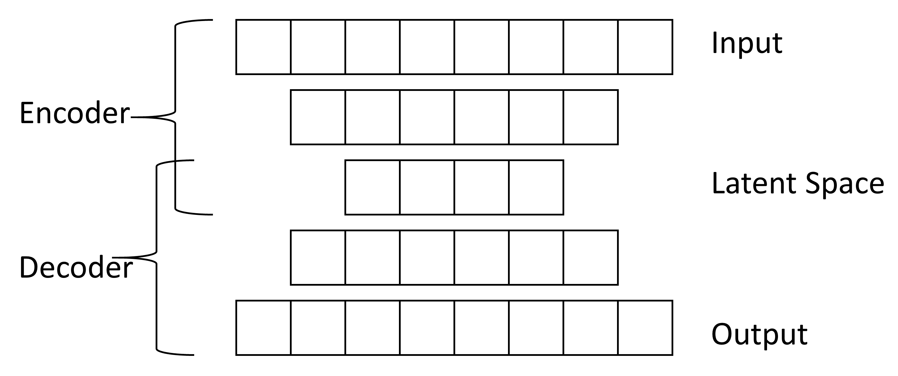
The learning objective of the feature extractors is to compress information by reducing the number of features to that of the latent space (Frochte 2019, p. 281). In the figure above, this would mean reducing the number of features from eight to four and storing as much information as possible from eight dimensions in four dimensions. Next, the extractor attempts to reconstruct the original information from the compressed latent space information (Frochte 2019, pp. 280–281). The information is then extended from four dimensions to eight. After training, the hidden representation of the latent space is used as a pre-processing of the original input.
In aifeducation, the learning objective is extended. That is, the encoder should not only find good compression, but also ensure that the feature dimensions do not correlate. The correlation between the feature dimensions is measured as the mean squared correlation between the features, while the reconstruction performance is mesured with a normalizes mean squared error.
5.2 Creation
In this example, we use the text embeddings from Section 4. You can create a feature extractor as follows:
feature_extractor <- TEFeatureExtractor$new()
feature_extractor$configure(
label = "Feature extractor for Text Embeddings",
text_embeddings = review_embeddings,
features = 128,
te_n_layers=3,
times=3,
method = "Conv",
fe_normalization="LayerNorm",
fe_act_fct="GELU",
encoder_dropout=0.20,
decoder_dropout=0.20,
orthogonal_method = "None",
noise_factor = 1e-2
)As with the other models, you can use the label for the
model’s label. The argument text_embeddings takes an object
of class EmbeddedText or
LargeDataSetForTextEmbeddings. This object connects your
feature extractor to a specific TextEmbeddingModel. In
other words, the feature extractor only works with embeddings from the
same TextEmbeddingModel.
The value of the features argument determines the number
of features for the compressed representation. The lower the number, the
higher the requested compression. This value corresponds to the features
of the latent space in the above figure. The te_n_layers
parameter allows you you to specify the number of layers in the encoder
and decoder parts of the model.
Use this value depending on the number of features of the underlying
text embedding model. You can request this value by calling the method
get_n_features as follows:
tem$get_n_features()
#> [1] 768The study by Takeshita et al. (2025) shows that randomly dropping 50% of the dimensions leads only to a minor decrease in the performance of classification tasks. Therefore, this value can be used as a rule of thumb when determining this parameter. We reduce the number further to 128 here.
Using the method “Dense”, we request a feature extractor that uses dense layers
Regardless of your choice, all models aim to generate a latent space in which the correlation of the features is zero. Thus, all features represent unique information. In addition, all methods use an orthogonal parameterisation to prevent overfitting and apply parameter sharing. The opposite layers use the same parameters. For more details, please refer to Ranjan (2019).
You can use the noise_factor to add noise during
training, causing the feature extractor to perform as a denoising
auto-encoder. This can provide more robust generalisations. Since we
work with high batch sizes, we set this value to 1e-4.
5.3 Training
Training the extractor is identical to that for the other models.
aifeducation. Please note that the text embeddings provided to
data_embeddings must be generated using the same
TextEmbeddingModel as the embeddings provided when
configuring your model.
feature_extractor$train(
data_embeddings = review_embeddings,
data_val_size = 0.25,
sustain_track = TRUE,
sustain_iso_code = "DEU",
sustain_region = NULL,
sustain_interval = 15,
sustain_log_level = "error",
epochs = 2000,
batch_size = 128,
lr_rate = 0.0,
lr_min = 0.0,
lr_epochs = 15,
lr_scheduler = "CosineAnnealing",
trace = TRUE,
ml_trace = 1,
optimizer = "AdamW",
amp = TRUE,
lr_warm_up_ratio = 0.10,
comp_use=TRUE,
comp_mode="reduce-overhead"
)
#> 2026-10-13 16:51:34 Start
#> Batch size is to big. Change batch size from 128 to 74.
#> 2026-10-13 16:51:34 Start Sustainability Tracking
#> 2026-10-13 16:51:34 Estimating Learning Rates
#> 2026-10-13 16:51:46 Set lr_rate to 5e-05 and lr_min to 5e-08.
#> 2026-10-13 16:55:00 Stop Sustainability Tracking
#> 2026-10-13 16:55:00 Training finishedIn this example, we use the same text embeddings that we use to train the classifier. It can be beneficial to use a larger sample of texts when training a
TEFeatureExtractorto improve performance and/or allow broader application of the feature extractor.
feature_extractor$plot_learning_rate()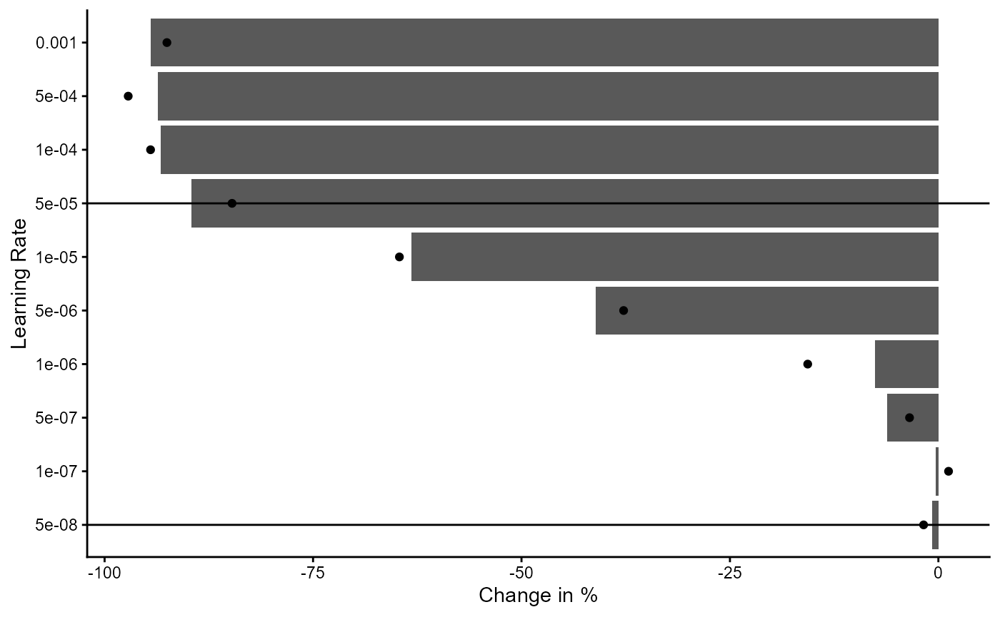
Figure 6: Analysis of Different Learning Rates
You can plot the model’s training history using:
feature_extractor$plot_training_history(
ind_best_model = TRUE
)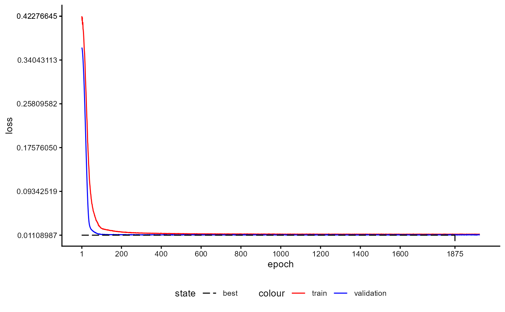
Figure 7: Training History of a Feature Extractor.
Calling print gives you a short summary of the
extractor.
print(feature_extractor)
#> Object : TEFeatureExtractor
#> ID : tefe_amcb41R0ZLBKZwh2
#> Label : Feature extractor for Text Embeddings
#> Configured : TRUE
#> Trained : TRUE
#> Times In : 3
#> Times Out : 3
#> Features In : 768
#> Features Out: 128
#> Parameter : 1948649Let us investigate how the feature extractor decreased the correlation between the features. First we calculate the correlations of the uncompressed embeddings.
embedding_statistics=feature_extractor$compare_embedding_statistics(
data_embeddings=review_embeddings,
batch_size=128,
trace=TRUE
)
#> Compress Embeddings 33.33 % (1|3) done ETA: 0000::00::00Compress Embeddings 66.67 % (2|3) done ETA: 0000::00::00Compress Embeddings 100.00 % (3|3) done ETA: 0000::00::00
embedding_statistics
#> min q1 median mean sd q3
#> before 5.621275e-06 0.31550224 0.5549342 0.5152205 0.2524989 0.7297046
#> compressed 8.688070e-05 0.08911323 0.1875945 0.2134029 0.1516615 0.3118187
#> max iso_score
#> before 0.9999651 0.000
#> compressed 0.7680026 0.073As you can see the correlation significantly decreased. That is, the feature dimension contain less overlapping information which may lead to a faster and/or better performance of a classifier. The degree of isotropy is measured using the IsoScore (Rudman et al., 2022). IsoScore ranges from 0 to 1 and describes the percentage of dimensions that are isotropically utilised (Rudman et al., 2022, p. 3330).
Once you have trained your feature extractor, you can use it with any
classifier. Simply pass the feature extractor to the
feature_extractor parameter during the classifier
configuration process.
5.4. Saving and Loading
If you would like to save and load a TEFeatureExtractor
independently of a classifier, you can use the save_to_disk
and load_from_disk functions, as with the other objects of
this package. This is useful if you want to use the
TEFeatureExtractor at a later point in time in combination
with other models.
save_to_disk(
object = feature_extractor,
dir_path = "examples",
folder_name = "feature_extractor"
)6 Overview Classifiers
Classifiers are built on top of a TextEmbeddingModel.
They use the embedded texts produced by these models and predict
classes/categories. You can build your own classifier with the help of
two components.
First, you choose a core model. It determines where different layers are located and how the outputs of the different layers are combined into the final output of the model.
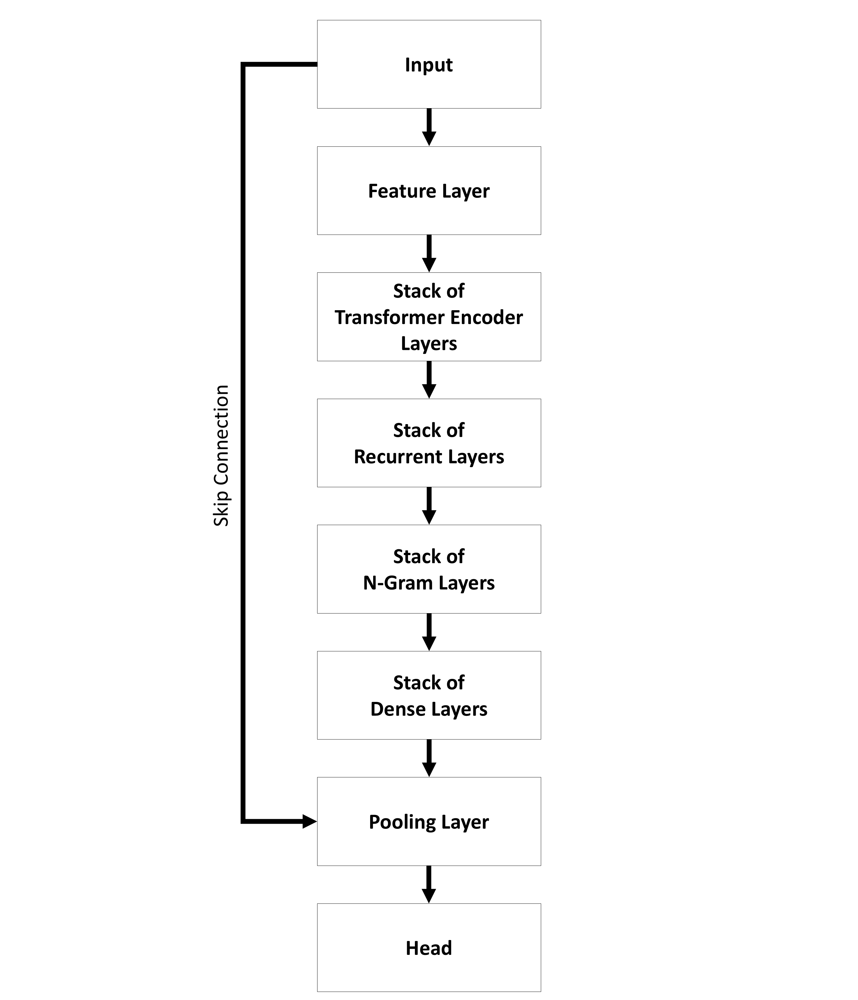
The sequential architecture (Figure 8) provides models where the input is passed to a specific number of layers step by step. All layers are grouped by their kind into stacks.
In contrast, the parallel architecture (Figure 9) offers a model where an input is passed to different types of layers separately. At the end the outputs are combined to create the final output of the whole model.
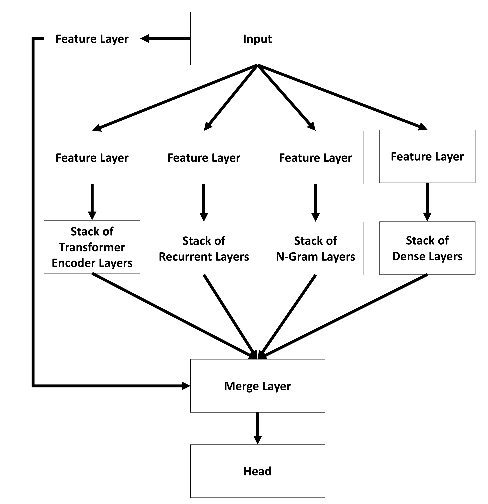
You can find the name of the used core model in the name of the
classifiers. For example TEClassifierSequential uses a
sequential core model while TEClassifierParallel
uses a parallel core model.
In general, all layers within a core model allow further customization allowing you to build a high number of different models.
A detailed description of all layers can be found in vignette A01 Layers and Stack of Layers:
Second, you can choose how the core model is used for classification. At the moment a probability and metric based classifier is possible.
- Probability Based Classifiers: Probability classifiers are used to predict a probability distribution for different classes/categories. This is the standard case most common in literature.
- Prototype Based Classifiers: Prototype based classifiers are a kind of metric based classifiers. Here the classifiers do not predict a probability distribution. Instead it calculates a prototype for every class/category and measures the distance between a case and all prototypes. The class/category of the prototype with the smallest distance to the case is assigned to that case. In contrast to the probability classifiers these models can handle classes/categories that were not part of the training. For more details please refer to section 7.
The training of a classifier consists of two stages. The first stage aims to estimate the performance of the model while the second stage trains the model for application.
For performance estimation, training splits the data into several
chunks based on cross-fold validation. The number of folds is set with
data_folds. In every case, one fold is not used for
training and serves as a test sample. The remaining data is
used to create a training and a validation sample. The
percentage of cases within each fold used as a validation sample is
determined with data_val_size. This sample is used to
determine the state of the model that generalizes best. All performance
values saved in the trained classifier refer to the test sample. This
data has never been used during training and provides a more realistic
estimation of a classifier’s performance.
Since aifedcuation tries to address the special needs in educational and social science, some special training steps are integrated for all models.
Synthetic Cases: In case of imbalanced data, it is recommended to augment your data. Before training, a number of new units is created via different techniques. Currently you can request the K-Nearest Neighbor OveRsampling Approach (KNNOR) developed by Islam et al. (2022). The aim is to create new cases that fill the gap to the majority class. Multi-class problems are reduced to a two class problem (class under investigation vs. all others) for generating these units. If the technique allows to set the number of neighbors during generation, you can configure the data generation with
sc_min_kandsc_max_k. The synthetic cases for every class are generated for all k betweensc_min_kandsc_max_k. Every k contributes proportionally to the synthetic cases.Pseudo-Labeling: This technique is relevant if you have labeled target data and a large number of unlabeled target data. The idea is to integrate the unlabeled into training to increase performance and to avoid high costs by labeling a high number of cases manually. With the different parameters starting with
pl_, you can configure the process of pseudo-labeling. Implementation of pseudo-labeling is based on Cascante-Bonilla et al. (2020). To apply pseudo-labeling, you have to setuse_pl=TRUE.pl_max=1.00,pl_anchor=1.00, andpl_min=0.00are used to describe the certainty of a prediction. 0 refers to random guessing while 1 refers to perfect certainty.pl_anchoris used as a reference value. The distance topl_anchoris calculated for every case. Then, they are sorted with an increasing distance frompl_anchor. The proportion of added pseudo-labeled data into training increases with every step. The maximum number of steps is determined withpl_max_steps. Cases close topl_anchorare included first.
Figure 10 illustrates the training loop for the cases that all
options are set to TRUE.
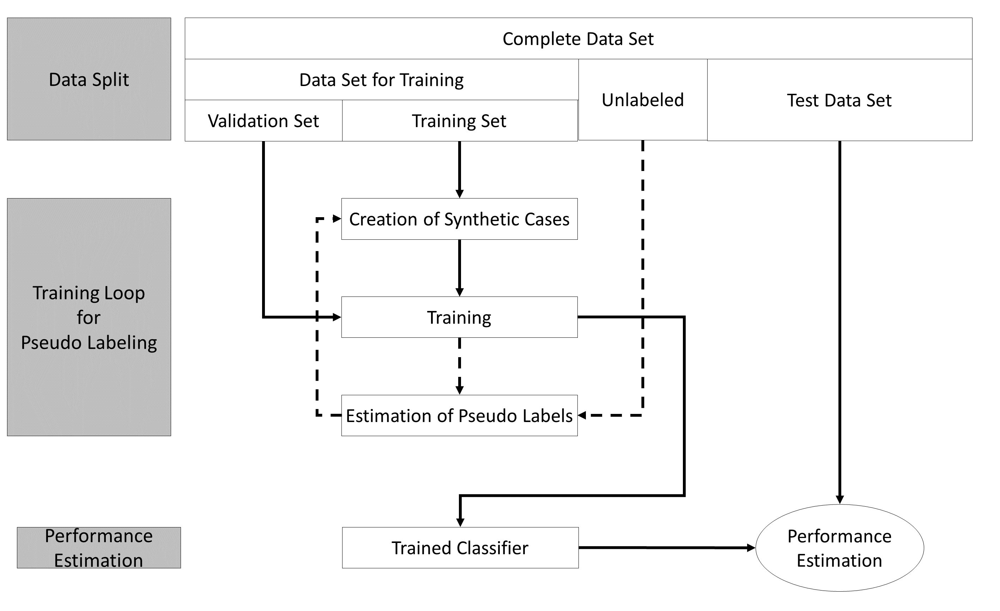
The example stated in the Figure applies the generation of synthetic
cases and the algorithm proposed by Cascante-Bonilla et al. (2020). For
every fold, the training starts with generating synthetic cases to fill
the gap between the classes and the majority class. After this, an
initial training of the classifiers starts. The trained classifier is
used to predict pseudo-labels for the unlabeled part of the data and
adds 20% of the cases with the highest certainty for their pseudo-labels
to the training data set. Now new synthetic cases are generated based on
both the labeled data and the newly added pseudo-labeled data. The
classifier is re-initialized and trained again. After training, the
classifier predicts the potential labels of all originally
unlabeled data and adds 40% of the pseudo-labeled data to the training
data with the highest certainty. Again, new synthetic cases are
generated on both the labeled and added pseudo-labeled data. The model
is again re-initialized and trained again until the maximum number of
steps for pseudo labeling (pl_max_steps) is reached. After
this, the logarithm is restated for the next fold until the number of
folds (data_folds) is reached. All of these steps are only
used to estimate the performance of the classifier to evaluate for
unknown data.
The last phase of the training begins after the last fold. In the final training, the data set is split only into a training and validation set without a test set to provide the maximum amount of data for the best performance in final training. All configurations of the performance estimation phase are used in the final training phase.
Please note that creating, training, and Predicting works for all types of classifiers as described in the chapters below.
7 Probability Based Classifiers
7.1 Creation
To demonstrate how to create a classifier, we will use the example of
a TEClassifierSequential classifier. Using the sample data
from Section 2.3, the TEFeatureExtractor from Section 5 and
the text embeddings from Section 4.3, the process of creating a new
classifier might look like this:
classifier <- TEClassifierSequential$new()
classifier$configure(
label = "Classifier for Estimating a Postive or Negative Rating of Movie Reviews",
text_embeddings = review_embeddings,
feature_extractor = feature_extractor,
target_levels = c("neg", "pos"),
skip_connection_type = "ResidualGate",
cls_pooling_features = 20,
cls_pooling_type = "WeightedAverageTimes",
cls_head_type = "Regular",
cls_input_normalize="None",
final_normalization_type="LayerNorm",
feat_act_fct = "None",
feat_size = 128,
feat_bias = TRUE,
feat_dropout = 0.00,
feat_parametrizations = "None",
feat_normalization_type = "None",
ng_conv_act_fct = "GELU",
ng_conv_n_layers = 2,
ng_conv_ks_min = 2,
ng_conv_ks_max = 3,
ng_conv_bias = TRUE,
ng_conv_dropout = 0.05,
ng_conv_parametrizations = "None",
ng_conv_normalization_type = "LayerNorm",
ng_conv_residual_type = "ResidualGate",
dense_act_fct = "GELU",
dense_n_layers = 2,
dense_dropout = 0.30,
dense_bias = TRUE,
dense_parametrizations = "None",
dense_normalization_type = "LayerNorm",
dense_residual_type = "ResidualGate",
rec_act_fct = "Tanh",
rec_n_layers = 0,
rec_type = "GRU",
rec_bidirectional = TRUE,
rec_dropout = 0.2,
rec_bias = FALSE,
rec_parametrizations = "None",
rec_normalization_type = "LayerNorm",
rec_residual_type = "ResidualGate",
tf_act_fct = "SwiGLU",
tf_dense_dim = ceiling(2.67 * 384),
tf_n_layers = 0,
tf_dropout_rate_1 = 0.1,
tf_dropout_rate_2 = 0.3,
tf_attention_type = "MultiHead",
tf_positional_type = "absolute",
tf_num_heads = 4,
tf_bias = TRUE,
tf_parametrizations = "None",
tf_normalization_type = "LayerNorm",
tf_normalization_position = "Post",
tf_residual_type = "ResidualGate"
)As with the text embedding model, you should provide a label
(label ) for your new classifier. For the text embeddings,
you must provide a LargeDataSetForTextEmbeddings. This data
set is created using a TextEmbeddingModel, as described in
section 4. Here, we continue our example by using the embeddings
produced by our BERT model.
The target_levels take the categories/classes that your
classifier should predict. These can be numbers or words.
If you would like to use ordinal data, it is very important that you provide the classes/categories in the correct order. In other words, categories/classes representing a ‘higher’ level must be stated after those representing a ‘lower’ level. If you provide the wrong order, the performance indices will be invalid. The order does not matter for nominal data.
We pass our trained feature extractor from section 5 to the
feature_extractor.
You can use the other parameters to define the complexity and capabilities of your model. Descriptions of the different models can be found in A01 Layers and Stack of Layers.
Please note that, if you do not use a feature
extractor, you must choose the parameter feat_size
depending on the number of features of the underlying text embedding
model. You can obtain this number by calling the
get_n_features method of the text embedding model used. In
our example, this would be:
tem$get_n_features()
#> [1] 768The value of feat_size should be equal to or less than
this value since this layer tries to compress the text embeddings into
fewer dimensions. While this reduces the number of parameters for all
subsequent layers and decreases training and usage time, it may result
in information loss. You can experiment with this value to strike a
balance between speed and performance.
In addition, the value of the parameter
cls_pooling_features should be equal to or less than the
value of feat_size. The value of cls_pooling_features
determines how many of the resulting features are used for
classification. Therefore, this value acts as a filter. This value is
only relevant if your pooling method does not include the word
‘Times’.
If you use a feature extractor, you need to set the values for
feat_size and cls_pooling_features depending
on the number of features of the feature extractor itself, rather than
the text embedding model, since the feature extractor’s aim is to reduce
this number. feat_size should be equal to or less than the
number of features of the feature extractor, and
cls_pooling_features should be equal to or less than
feat_size.
The vignette 04 Model configuration and training provides details on how to configure a classifier.
Since we have a small data set and a short sequence, we set all
layers to 0
(tf_n_layers,rec_n_layers,ng_conv_n_layers),
except the dense layers. Here, we use 3
(dense_n_layers = 3).
As pooling method we use weighted average over time
(cls_pooling_type="WeightedAverageTimes"). In other words,
the values of a specific feature dimension are averaged over all tokens
and chunks, and the weights are learnt during training.
In this example, we use a regular classification head
(cls_head_type = "Regular"), where all neurons in the
previous layer are connected to all classes. Li et al. (2020) proposed a
special classification head
(cls_head_type = "PairwiseOrthogonal"). This layer enables
each neuron to establish a connection with only one class. To improve
performance with high rates of dropout in the previous layers, you can
add a dense layer before the classification head
(cls_head_type = "PairwiseOrthogonalDense").
You receive a short summary of the classifier by calling
print.
print(classifier)
#> Object : TEClassifierSequential
#> ID : cls_N2AbNd0znGK3vmlA
#> Label : Classifier for Estimating a Postive or Negative Rating of Movie Reviews
#> Configured: TRUE
#> Trained : FALSE
#> Classes : neg, pos
#> Times : 3
#> Features : 128
#> Parameter : 116748
#> req. FE : TRUEOnce you have created a new classifier, you can start the training process. You can view the number of learnable parameters of your model using the following method:
classifier$count_parameter()
#> [1] 1167487.2 Training
To start training your classifier, call the train method
and provide the text embeddings to data_embeddings and the
categories/classes as target data to data_targets. Please
note that data_targets expects a named factor
where the names correspond to the IDs of the corresponding text
embeddings. Text embeddings and target data that cannot be matched are
omitted from training.
classifier$train(
data_embeddings = review_embeddings,
data_targets = review_labels,
data_folds = 10,
data_val_size = 0.10,
loss_balance_class_weights = TRUE,
loss_balance_sequence_length = TRUE,
loss_cls_fct_name = "FocalLoss",
use_sc = FALSE,
sc_method = "knnor",
sc_min_k = 1,
sc_max_k = 10,
use_pl = FALSE,
pl_max_steps = 3,
pl_max = 1.00,
pl_anchor = 1.00,
pl_min = 0.00,
sustain_track = TRUE,
sustain_iso_code = "DEU",
sustain_region = NULL,
sustain_interval = 15,
sustain_log_level = "error",
epochs = 2000,
batch_size = 128,
trace = TRUE,
ml_trace = 1,
log_dir = NULL,
log_write_interval = 10,
n_cores = auto_n_cores(),
lr_rate = 0.0,
lr_min = 0.0,
lr_scheduler = "CosineAnnealing",
lr_epochs = 30,
lr_warm_up_ratio = 0.10,
optimizer = "AdamW",
amp = TRUE,
comp_use=FALSE,
comp_mode="reduce-overhead"
)
#> Compress Embeddings 33.33 % (1|3) done ETA: 0000::00::00Compress Embeddings 66.67 % (2|3) done ETA: 0000::00::00Compress Embeddings 100.00 % (3|3) done ETA: 0000::00::00
#> 2026-10-13 16:55:05 Total Cases: 300 Labeled Cases: 225
#> Batch size is to big. Change batch size from 128 to 18.
#> 2026-10-13 16:55:07 Start
#> 2026-10-13 16:55:07 Start Sustainability Tracking
#> 2026-10-13 16:55:07 Estimating Learning Rates
#> 0.1000 % | ETA 0000::00::500.2000 % | ETA 0000::00::440.3000 % | ETA 0000::00::390.4000 % | ETA 0000::00::340.5000 % | ETA 0000::00::290.6000 % | ETA 0000::00::250.7000 % | ETA 0000::00::200.8000 % | ETA 0000::00::150.9000 % | ETA 0000::00::091.0000 % | ETA 0000::00::05
#> 2026-10-13 16:55:57 Set lr_rate to 1e-04 and lr_min to 5e-08.
#> 2026-10-13 16:55:58 | Iteration 1 from 10
#> 2026-10-13 16:55:58 | Iteration 1 from 10 | Training
#> 0.0005 % | Steps: 10 | Train Loss 0.259905 s_avg_iota 0.335 | Val Loss 0.191755 Best 0.191755 s_avg_iota 0.339 Best 0.339 | ELC: 1 | ETA 0000::05::140.0010 % | Steps: 10 | Train Loss 0.242845 s_avg_iota 0.344 | Val Loss 0.147459 Best 0.191755 s_avg_iota 0.328 Best 0.339 | ELC: 1 | ETA 0000::05::060.0015 % | Steps: 10 | Train Loss 0.295995 s_avg_iota 0.334 | Val Loss 0.224476 Best 0.191755 s_avg_iota 0.329 Best 0.339 | ELC: 1 | ETA 0000::04::540.0020 % | Steps: 10 | Train Loss 0.279538 s_avg_iota 0.332 | Val Loss 0.116631 Best 0.116631 s_avg_iota 0.340 Best 0.340 | ELC: 4 | ETA 0000::05::010.0025 % | Steps: 10 | Train Loss 0.239829 s_avg_iota 0.345 | Val Loss 0.440915 Best 0.116631 s_avg_iota 0.330 Best 0.340 | ELC: 4 | ETA 0000::05::030.0030 % | Steps: 10 | Train Loss 0.285538 s_avg_iota 0.328 | Val Loss 0.148875 Best 0.116631 s_avg_iota 0.339 Best 0.340 | ELC: 4 | ETA 0000::05::070.0035 % | Steps: 10 | Train Loss 0.231501 s_avg_iota 0.344 | Val Loss 0.323004 Best 0.116631 s_avg_iota 0.339 Best 0.340 | ELC: 4 | ETA 0000::05::080.0040 % | Steps: 10 | Train Loss 0.255660 s_avg_iota 0.333 | Val Loss 0.470955 Best 0.116631 s_avg_iota 0.339 Best 0.340 | ELC: 4 | ETA 0000::05::070.0045 % | Steps: 10 | Train Loss 0.250206 s_avg_iota 0.336 | Val Loss 0.127031 Best 0.116631 s_avg_iota 0.330 Best 0.340 | ELC: 4 | ETA 0000::05::140.0050 % | Steps: 10 | Train Loss 0.254224 s_avg_iota 0.330 | Val Loss 0.126174 Best 0.116631 s_avg_iota 0.329 Best 0.340 | ELC: 4 | ETA 0000::05::140.0055 % | Steps: 10 | Train Loss 0.235855 s_avg_iota 0.344 | Val Loss 0.156244 Best 0.156244 s_avg_iota 0.343 Best 0.343 | ELC: 11 | ETA 0000::05::130.0060 % | Steps: 10 | Train Loss 0.267662 s_avg_iota 0.325 | Val Loss 0.202222 Best 0.156244 s_avg_iota 0.331 Best 0.343 | ELC: 11 | ETA 0000::05::140.0065 % | Steps: 10 | Train Loss 0.235175 s_avg_iota 0.343 | Val Loss 0.155397 Best 0.156244 s_avg_iota 0.342 Best 0.343 | ELC: 11 | ETA 0000::05::150.0070 % | Steps: 10 | Train Loss 0.223594 s_avg_iota 0.336 | Val Loss 0.160880 Best 0.156244 s_avg_iota 0.333 Best 0.343 | ELC: 11 | ETA 0000::05::160.0075 % | Steps: 10 | Train Loss 0.247336 s_avg_iota 0.328 | Val Loss 0.110538 Best 0.110538 s_avg_iota 0.346 Best 0.346 | ELC: 15 | ETA 0000::05::180.0080 % | Steps: 10 | Train Loss 0.229919 s_avg_iota 0.360 | Val Loss 0.067046 Best 0.110538 s_avg_iota 0.342 Best 0.346 | ELC: 15 | ETA 0000::05::190.0085 % | Steps: 10 | Train Loss 0.197708 s_avg_iota 0.351 | Val Loss 0.274546 Best 0.110538 s_avg_iota 0.343 Best 0.346 | ELC: 15 | ETA 0000::05::180.0090 % | Steps: 10 | Train Loss 0.257321 s_avg_iota 0.323 | Val Loss 0.126428 Best 0.110538 s_avg_iota 0.344 Best 0.346 | ELC: 15 | ETA 0000::05::190.0095 % | Steps: 10 | Train Loss 0.216293 s_avg_iota 0.343 | Val Loss 0.175421 Best 0.175421 s_avg_iota 0.346 Best 0.346 | ELC: 19 | ETA 0000::05::190.0100 % | Steps: 10 | Train Loss 0.243978 s_avg_iota 0.339 | Val Loss 0.525545 Best 0.525545 s_avg_iota 0.348 Best 0.348 | ELC: 20 | ETA 0000::05::190.0105 % | Steps: 10 | Train Loss 0.256226 s_avg_iota 0.331 | Val Loss 0.232902 Best 0.232902 s_avg_iota 0.351 Best 0.351 | ELC: 21 | ETA 0000::05::190.0110 % | Steps: 10 | Train Loss 0.207467 s_avg_iota 0.350 | Val Loss 0.132359 Best 0.132359 s_avg_iota 0.357 Best 0.357 | ELC: 22 | ETA 0000::05::190.0115 % | Steps: 10 | Train Loss 0.209729 s_avg_iota 0.345 | Val Loss 0.063659 Best 0.132359 s_avg_iota 0.353 Best 0.357 | ELC: 22 | ETA 0000::05::180.0120 % | Steps: 10 | Train Loss 0.216199 s_avg_iota 0.350 | Val Loss 0.246474 Best 0.246474 s_avg_iota 0.362 Best 0.362 | ELC: 24 | ETA 0000::05::190.0125 % | Steps: 10 | Train Loss 0.186343 s_avg_iota 0.352 | Val Loss 0.068915 Best 0.068915 s_avg_iota 0.362 Best 0.362 | ELC: 25 | ETA 0000::05::200.0130 % | Steps: 10 | Train Loss 0.260502 s_avg_iota 0.330 | Val Loss 0.270636 Best 0.270636 s_avg_iota 0.367 Best 0.367 | ELC: 26 | ETA 0000::05::200.0135 % | Steps: 10 | Train Loss 0.219890 s_avg_iota 0.354 | Val Loss 0.203028 Best 0.270636 s_avg_iota 0.365 Best 0.367 | ELC: 26 | ETA 0000::05::190.0140 % | Steps: 10 | Train Loss 0.184748 s_avg_iota 0.366 | Val Loss 0.158441 Best 0.158441 s_avg_iota 0.370 Best 0.370 | ELC: 28 | ETA 0000::05::190.0145 % | Steps: 10 | Train Loss 0.201940 s_avg_iota 0.353 | Val Loss 0.152714 Best 0.152714 s_avg_iota 0.379 Best 0.379 | ELC: 29 | ETA 0000::05::190.0150 % | Steps: 10 | Train Loss 0.215330 s_avg_iota 0.355 | Val Loss 0.095036 Best 0.152714 s_avg_iota 0.378 Best 0.379 | ELC: 29 | ETA 0000::05::180.0155 % | Steps: 10 | Train Loss 0.202531 s_avg_iota 0.367 | Val Loss 0.154538 Best 0.154538 s_avg_iota 0.385 Best 0.385 | ELC: 31 | ETA 0000::05::180.0160 % | Steps: 10 | Train Loss 0.205574 s_avg_iota 0.361 | Val Loss 0.243181 Best 0.154538 s_avg_iota 0.381 Best 0.385 | ELC: 31 | ETA 0000::05::170.0165 % | Steps: 10 | Train Loss 0.192628 s_avg_iota 0.355 | Val Loss 0.096179 Best 0.154538 s_avg_iota 0.373 Best 0.385 | ELC: 31 | ETA 0000::05::160.0170 % | Steps: 10 | Train Loss 0.202184 s_avg_iota 0.351 | Val Loss 0.258277 Best 0.154538 s_avg_iota 0.382 Best 0.385 | ELC: 31 | ETA 0000::05::160.0175 % | Steps: 10 | Train Loss 0.187006 s_avg_iota 0.361 | Val Loss 0.150998 Best 0.154538 s_avg_iota 0.374 Best 0.385 | ELC: 31 | ETA 0000::05::150.0180 % | Steps: 10 | Train Loss 0.154763 s_avg_iota 0.381 | Val Loss 0.097327 Best 0.097327 s_avg_iota 0.385 Best 0.385 | ELC: 36 | ETA 0000::05::150.0185 % | Steps: 10 | Train Loss 0.165246 s_avg_iota 0.380 | Val Loss 0.096260 Best 0.096260 s_avg_iota 0.394 Best 0.394 | ELC: 37 | ETA 0000::05::150.0190 % | Steps: 10 | Train Loss 0.177258 s_avg_iota 0.370 | Val Loss 0.060444 Best 0.096260 s_avg_iota 0.386 Best 0.394 | ELC: 37 | ETA 0000::05::150.0195 % | Steps: 10 | Train Loss 0.187615 s_avg_iota 0.389 | Val Loss 0.230002 Best 0.230002 s_avg_iota 0.395 Best 0.395 | ELC: 39 | ETA 0000::05::150.0200 % | Steps: 10 | Train Loss 0.173013 s_avg_iota 0.379 | Val Loss 0.258452 Best 0.258452 s_avg_iota 0.401 Best 0.401 | ELC: 40 | ETA 0000::05::150.0205 % | Steps: 10 | Train Loss 0.156931 s_avg_iota 0.395 | Val Loss 0.094257 Best 0.094257 s_avg_iota 0.410 Best 0.410 | ELC: 41 | ETA 0000::05::150.0210 % | Steps: 10 | Train Loss 0.151669 s_avg_iota 0.389 | Val Loss 0.095642 Best 0.095642 s_avg_iota 0.416 Best 0.416 | ELC: 42 | ETA 0000::05::150.0215 % | Steps: 10 | Train Loss 0.181528 s_avg_iota 0.378 | Val Loss 0.095148 Best 0.095642 s_avg_iota 0.414 Best 0.416 | ELC: 42 | ETA 0000::05::160.0220 % | Steps: 10 | Train Loss 0.163425 s_avg_iota 0.385 | Val Loss 0.120551 Best 0.095642 s_avg_iota 0.399 Best 0.416 | ELC: 42 | ETA 0000::05::160.0225 % | Steps: 10 | Train Loss 0.157938 s_avg_iota 0.403 | Val Loss 0.055383 Best 0.055383 s_avg_iota 0.418 Best 0.418 | ELC: 45 | ETA 0000::05::160.0230 % | Steps: 10 | Train Loss 0.126545 s_avg_iota 0.408 | Val Loss 0.247063 Best 0.247063 s_avg_iota 0.434 Best 0.434 | ELC: 46 | ETA 0000::05::160.0235 % | Steps: 10 | Train Loss 0.186646 s_avg_iota 0.392 | Val Loss 0.203366 Best 0.247063 s_avg_iota 0.425 Best 0.434 | ELC: 46 | ETA 0000::05::150.0240 % | Steps: 10 | Train Loss 0.166637 s_avg_iota 0.396 | Val Loss 0.087682 Best 0.087682 s_avg_iota 0.440 Best 0.440 | ELC: 48 | ETA 0000::05::150.0245 % | Steps: 10 | Train Loss 0.132989 s_avg_iota 0.410 | Val Loss 0.055062 Best 0.087682 s_avg_iota 0.414 Best 0.440 | ELC: 48 | ETA 0000::05::140.0250 % | Steps: 10 | Train Loss 0.149206 s_avg_iota 0.401 | Val Loss 0.231738 Best 0.231738 s_avg_iota 0.444 Best 0.444 | ELC: 50 | ETA 0000::05::140.0255 % | Steps: 10 | Train Loss 0.149937 s_avg_iota 0.410 | Val Loss 0.369502 Best 0.231738 s_avg_iota 0.438 Best 0.444 | ELC: 50 | ETA 0000::05::140.0260 % | Steps: 10 | Train Loss 0.145007 s_avg_iota 0.408 | Val Loss 0.064930 Best 0.064930 s_avg_iota 0.444 Best 0.444 | ELC: 52 | ETA 0000::05::140.0265 % | Steps: 10 | Train Loss 0.130187 s_avg_iota 0.427 | Val Loss 0.091345 Best 0.091345 s_avg_iota 0.457 Best 0.457 | ELC: 53 | ETA 0000::05::150.0270 % | Steps: 10 | Train Loss 0.138322 s_avg_iota 0.421 | Val Loss 0.110354 Best 0.110354 s_avg_iota 0.464 Best 0.464 | ELC: 54 | ETA 0000::05::140.0275 % | Steps: 10 | Train Loss 0.127547 s_avg_iota 0.420 | Val Loss 0.144456 Best 0.110354 s_avg_iota 0.448 Best 0.464 | ELC: 54 | ETA 0000::05::150.0280 % | Steps: 10 | Train Loss 0.175819 s_avg_iota 0.418 | Val Loss 0.076113 Best 0.076113 s_avg_iota 0.468 Best 0.468 | ELC: 56 | ETA 0000::05::150.0285 % | Steps: 10 | Train Loss 0.126176 s_avg_iota 0.434 | Val Loss 0.209282 Best 0.076113 s_avg_iota 0.465 Best 0.468 | ELC: 56 | ETA 0000::05::140.0290 % | Steps: 10 | Train Loss 0.146447 s_avg_iota 0.428 | Val Loss 0.130586 Best 0.076113 s_avg_iota 0.463 Best 0.468 | ELC: 56 | ETA 0000::05::130.0295 % | Steps: 10 | Train Loss 0.115875 s_avg_iota 0.442 | Val Loss 0.092327 Best 0.076113 s_avg_iota 0.463 Best 0.468 | ELC: 56 | ETA 0000::05::130.0300 % | Steps: 10 | Train Loss 0.167790 s_avg_iota 0.419 | Val Loss 0.335035 Best 0.335035 s_avg_iota 0.470 Best 0.470 | ELC: 60 | ETA 0000::05::130.0305 % | Steps: 10 | Train Loss 0.115162 s_avg_iota 0.451 | Val Loss 0.202363 Best 0.202363 s_avg_iota 0.472 Best 0.472 | ELC: 61 | ETA 0000::05::130.0310 % | Steps: 10 | Train Loss 0.135250 s_avg_iota 0.450 | Val Loss 0.099256 Best 0.099256 s_avg_iota 0.490 Best 0.490 | ELC: 62 | ETA 0000::05::130.0315 % | Steps: 10 | Train Loss 0.139338 s_avg_iota 0.448 | Val Loss 0.147234 Best 0.099256 s_avg_iota 0.473 Best 0.490 | ELC: 62 | ETA 0000::05::130.0320 % | Steps: 10 | Train Loss 0.111259 s_avg_iota 0.452 | Val Loss 0.113469 Best 0.113469 s_avg_iota 0.497 Best 0.497 | ELC: 64 | ETA 0000::05::120.0325 % | Steps: 10 | Train Loss 0.139962 s_avg_iota 0.449 | Val Loss 0.297409 Best 0.113469 s_avg_iota 0.480 Best 0.497 | ELC: 64 | ETA 0000::05::120.0330 % | Steps: 10 | Train Loss 0.106227 s_avg_iota 0.470 | Val Loss 0.078200 Best 0.113469 s_avg_iota 0.492 Best 0.497 | ELC: 64 | ETA 0000::05::120.0335 % | Steps: 10 | Train Loss 0.106158 s_avg_iota 0.476 | Val Loss 0.098104 Best 0.113469 s_avg_iota 0.494 Best 0.497 | ELC: 64 | ETA 0000::05::120.0340 % | Steps: 10 | Train Loss 0.152139 s_avg_iota 0.444 | Val Loss 0.137413 Best 0.137413 s_avg_iota 0.516 Best 0.516 | ELC: 68 | ETA 0000::05::120.0345 % | Steps: 10 | Train Loss 0.098498 s_avg_iota 0.457 | Val Loss 0.078754 Best 0.137413 s_avg_iota 0.510 Best 0.516 | ELC: 68 | ETA 0000::05::110.0350 % | Steps: 10 | Train Loss 0.108662 s_avg_iota 0.465 | Val Loss 0.047430 Best 0.137413 s_avg_iota 0.502 Best 0.516 | ELC: 68 | ETA 0000::05::110.0355 % | Steps: 10 | Train Loss 0.103504 s_avg_iota 0.463 | Val Loss 0.235666 Best 0.137413 s_avg_iota 0.504 Best 0.516 | ELC: 68 | ETA 0000::05::110.0360 % | Steps: 10 | Train Loss 0.101020 s_avg_iota 0.483 | Val Loss 0.094106 Best 0.137413 s_avg_iota 0.497 Best 0.516 | ELC: 68 | ETA 0000::05::110.0365 % | Steps: 10 | Train Loss 0.106534 s_avg_iota 0.473 | Val Loss 0.148510 Best 0.137413 s_avg_iota 0.496 Best 0.516 | ELC: 68 | ETA 0000::05::100.0370 % | Steps: 10 | Train Loss 0.091934 s_avg_iota 0.488 | Val Loss 0.134052 Best 0.134052 s_avg_iota 0.522 Best 0.522 | ELC: 74 | ETA 0000::05::100.0375 % | Steps: 10 | Train Loss 0.091237 s_avg_iota 0.486 | Val Loss 0.053888 Best 0.134052 s_avg_iota 0.516 Best 0.522 | ELC: 74 | ETA 0000::05::100.0380 % | Steps: 10 | Train Loss 0.092794 s_avg_iota 0.487 | Val Loss 0.064189 Best 0.134052 s_avg_iota 0.515 Best 0.522 | ELC: 74 | ETA 0000::05::100.0385 % | Steps: 10 | Train Loss 0.084596 s_avg_iota 0.499 | Val Loss 0.244211 Best 0.134052 s_avg_iota 0.499 Best 0.522 | ELC: 74 | ETA 0000::05::100.0390 % | Steps: 10 | Train Loss 0.101986 s_avg_iota 0.488 | Val Loss 0.143407 Best 0.134052 s_avg_iota 0.491 Best 0.522 | ELC: 74 | ETA 0000::05::090.0395 % | Steps: 10 | Train Loss 0.099100 s_avg_iota 0.524 | Val Loss 0.210549 Best 0.134052 s_avg_iota 0.518 Best 0.522 | ELC: 74 | ETA 0000::05::080.0400 % | Steps: 10 | Train Loss 0.103722 s_avg_iota 0.494 | Val Loss 0.088985 Best 0.134052 s_avg_iota 0.494 Best 0.522 | ELC: 74 | ETA 0000::05::080.0405 % | Steps: 10 | Train Loss 0.084936 s_avg_iota 0.520 | Val Loss 0.090235 Best 0.134052 s_avg_iota 0.510 Best 0.522 | ELC: 74 | ETA 0000::05::080.0410 % | Steps: 10 | Train Loss 0.104240 s_avg_iota 0.517 | Val Loss 0.127703 Best 0.127703 s_avg_iota 0.539 Best 0.539 | ELC: 82 | ETA 0000::05::080.0415 % | Steps: 10 | Train Loss 0.075903 s_avg_iota 0.525 | Val Loss 0.188945 Best 0.127703 s_avg_iota 0.529 Best 0.539 | ELC: 82 | ETA 0000::05::070.0420 % | Steps: 10 | Train Loss 0.081116 s_avg_iota 0.522 | Val Loss 0.281954 Best 0.127703 s_avg_iota 0.520 Best 0.539 | ELC: 82 | ETA 0000::05::070.0425 % | Steps: 10 | Train Loss 0.089103 s_avg_iota 0.514 | Val Loss 0.152339 Best 0.127703 s_avg_iota 0.523 Best 0.539 | ELC: 82 | ETA 0000::05::070.0430 % | Steps: 10 | Train Loss 0.075200 s_avg_iota 0.535 | Val Loss 0.112119 Best 0.127703 s_avg_iota 0.527 Best 0.539 | ELC: 82 | ETA 0000::05::070.0435 % | Steps: 10 | Train Loss 0.076162 s_avg_iota 0.538 | Val Loss 0.293835 Best 0.127703 s_avg_iota 0.505 Best 0.539 | ELC: 82 | ETA 0000::05::070.0440 % | Steps: 10 | Train Loss 0.087645 s_avg_iota 0.545 | Val Loss 0.089263 Best 0.127703 s_avg_iota 0.519 Best 0.539 | ELC: 82 | ETA 0000::05::070.0445 % | Steps: 10 | Train Loss 0.068529 s_avg_iota 0.547 | Val Loss 0.116651 Best 0.127703 s_avg_iota 0.531 Best 0.539 | ELC: 82 | ETA 0000::05::070.0450 % | Steps: 10 | Train Loss 0.066401 s_avg_iota 0.562 | Val Loss 0.252752 Best 0.252752 s_avg_iota 0.559 Best 0.559 | ELC: 90 | ETA 0000::05::070.0455 % | Steps: 10 | Train Loss 0.057957 s_avg_iota 0.573 | Val Loss 0.091100 Best 0.252752 s_avg_iota 0.531 Best 0.559 | ELC: 90 | ETA 0000::05::060.0460 % | Steps: 10 | Train Loss 0.066145 s_avg_iota 0.568 | Val Loss 0.531021 Best 0.252752 s_avg_iota 0.532 Best 0.559 | ELC: 90 | ETA 0000::05::060.0465 % | Steps: 10 | Train Loss 0.087490 s_avg_iota 0.559 | Val Loss 0.193973 Best 0.252752 s_avg_iota 0.547 Best 0.559 | ELC: 90 | ETA 0000::05::060.0470 % | Steps: 10 | Train Loss 0.070634 s_avg_iota 0.571 | Val Loss 0.231543 Best 0.231543 s_avg_iota 0.572 Best 0.572 | ELC: 94 | ETA 0000::05::060.0475 % | Steps: 10 | Train Loss 0.094285 s_avg_iota 0.542 | Val Loss 0.713075 Best 0.231543 s_avg_iota 0.523 Best 0.572 | ELC: 94 | ETA 0000::05::050.0480 % | Steps: 10 | Train Loss 0.054095 s_avg_iota 0.578 | Val Loss 0.101028 Best 0.231543 s_avg_iota 0.554 Best 0.572 | ELC: 94 | ETA 0000::05::050.0485 % | Steps: 10 | Train Loss 0.064777 s_avg_iota 0.574 | Val Loss 0.184290 Best 0.231543 s_avg_iota 0.530 Best 0.572 | ELC: 94 | ETA 0000::05::040.0490 % | Steps: 10 | Train Loss 0.065391 s_avg_iota 0.597 | Val Loss 0.303363 Best 0.231543 s_avg_iota 0.552 Best 0.572 | ELC: 94 | ETA 0000::05::040.0495 % | Steps: 10 | Train Loss 0.048364 s_avg_iota 0.583 | Val Loss 0.123526 Best 0.231543 s_avg_iota 0.572 Best 0.572 | ELC: 94 | ETA 0000::05::040.0500 % | Steps: 10 | Train Loss 0.052842 s_avg_iota 0.597 | Val Loss 0.421564 Best 0.231543 s_avg_iota 0.521 Best 0.572 | ELC: 94 | ETA 0000::05::030.0505 % | Steps: 10 | Train Loss 0.074884 s_avg_iota 0.616 | Val Loss 0.314122 Best 0.231543 s_avg_iota 0.544 Best 0.572 | ELC: 94 | ETA 0000::05::030.0510 % | Steps: 10 | Train Loss 0.062143 s_avg_iota 0.587 | Val Loss 0.100131 Best 0.231543 s_avg_iota 0.550 Best 0.572 | ELC: 94 | ETA 0000::05::030.0515 % | Steps: 10 | Train Loss 0.048771 s_avg_iota 0.608 | Val Loss 0.326522 Best 0.231543 s_avg_iota 0.524 Best 0.572 | ELC: 94 | ETA 0000::05::030.0520 % | Steps: 10 | Train Loss 0.038222 s_avg_iota 0.612 | Val Loss 0.072249 Best 0.072249 s_avg_iota 0.595 Best 0.595 | ELC: 104 | ETA 0000::05::020.0525 % | Steps: 10 | Train Loss 0.043473 s_avg_iota 0.612 | Val Loss 0.202979 Best 0.072249 s_avg_iota 0.577 Best 0.595 | ELC: 104 | ETA 0000::05::030.0530 % | Steps: 10 | Train Loss 0.058880 s_avg_iota 0.597 | Val Loss 0.178405 Best 0.072249 s_avg_iota 0.577 Best 0.595 | ELC: 104 | ETA 0000::05::030.0535 % | Steps: 10 | Train Loss 0.072295 s_avg_iota 0.600 | Val Loss 0.265959 Best 0.072249 s_avg_iota 0.556 Best 0.595 | ELC: 104 | ETA 0000::05::030.0540 % | Steps: 10 | Train Loss 0.057192 s_avg_iota 0.600 | Val Loss 0.351926 Best 0.072249 s_avg_iota 0.552 Best 0.595 | ELC: 104 | ETA 0000::05::030.0545 % | Steps: 10 | Train Loss 0.049881 s_avg_iota 0.621 | Val Loss 0.155914 Best 0.072249 s_avg_iota 0.577 Best 0.595 | ELC: 104 | ETA 0000::05::030.0550 % | Steps: 10 | Train Loss 0.050001 s_avg_iota 0.613 | Val Loss 0.150923 Best 0.072249 s_avg_iota 0.558 Best 0.595 | ELC: 104 | ETA 0000::05::020.0555 % | Steps: 10 | Train Loss 0.035361 s_avg_iota 0.638 | Val Loss 0.101343 Best 0.101343 s_avg_iota 0.599 Best 0.599 | ELC: 111 | ETA 0000::05::020.0560 % | Steps: 10 | Train Loss 0.045512 s_avg_iota 0.642 | Val Loss 0.068333 Best 0.068333 s_avg_iota 0.644 Best 0.644 | ELC: 112 | ETA 0000::05::020.0565 % | Steps: 10 | Train Loss 0.075014 s_avg_iota 0.616 | Val Loss 0.131443 Best 0.068333 s_avg_iota 0.590 Best 0.644 | ELC: 112 | ETA 0000::05::020.0570 % | Steps: 10 | Train Loss 0.049562 s_avg_iota 0.649 | Val Loss 0.240810 Best 0.068333 s_avg_iota 0.582 Best 0.644 | ELC: 112 | ETA 0000::05::010.0575 % | Steps: 10 | Train Loss 0.051857 s_avg_iota 0.633 | Val Loss 0.228662 Best 0.068333 s_avg_iota 0.620 Best 0.644 | ELC: 112 | ETA 0000::05::010.0580 % | Steps: 10 | Train Loss 0.035229 s_avg_iota 0.661 | Val Loss 0.268666 Best 0.068333 s_avg_iota 0.607 Best 0.644 | ELC: 112 | ETA 0000::05::010.0585 % | Steps: 10 | Train Loss 0.030003 s_avg_iota 0.656 | Val Loss 0.244424 Best 0.068333 s_avg_iota 0.591 Best 0.644 | ELC: 112 | ETA 0000::05::010.0590 % | Steps: 10 | Train Loss 0.030445 s_avg_iota 0.680 | Val Loss 0.301666 Best 0.068333 s_avg_iota 0.609 Best 0.644 | ELC: 112 | ETA 0000::05::010.0595 % | Steps: 10 | Train Loss 0.050769 s_avg_iota 0.659 | Val Loss 0.119846 Best 0.068333 s_avg_iota 0.634 Best 0.644 | ELC: 112 | ETA 0000::05::010.0600 % | Steps: 10 | Train Loss 0.038994 s_avg_iota 0.661 | Val Loss 0.125139 Best 0.068333 s_avg_iota 0.605 Best 0.644 | ELC: 112 | ETA 0000::05::000.0605 % | Steps: 10 | Train Loss 0.035277 s_avg_iota 0.684 | Val Loss 0.269040 Best 0.068333 s_avg_iota 0.633 Best 0.644 | ELC: 112 | ETA 0000::05::000.0610 % | Steps: 10 | Train Loss 0.041166 s_avg_iota 0.677 | Val Loss 0.105979 Best 0.068333 s_avg_iota 0.598 Best 0.644 | ELC: 112 | ETA 0000::05::000.0615 % | Steps: 10 | Train Loss 0.030625 s_avg_iota 0.698 | Val Loss 0.118684 Best 0.068333 s_avg_iota 0.632 Best 0.644 | ELC: 112 | ETA 0000::05::000.0620 % | Steps: 10 | Train Loss 0.034680 s_avg_iota 0.683 | Val Loss 0.451418 Best 0.068333 s_avg_iota 0.635 Best 0.644 | ELC: 112 | ETA 0000::05::000.0625 % | Steps: 10 | Train Loss 0.048204 s_avg_iota 0.675 | Val Loss 0.196216 Best 0.068333 s_avg_iota 0.621 Best 0.644 | ELC: 112 | ETA 0000::04::590.0630 % | Steps: 10 | Train Loss 0.038676 s_avg_iota 0.683 | Val Loss 0.135503 Best 0.135503 s_avg_iota 0.653 Best 0.653 | ELC: 126 | ETA 0000::04::590.0635 % | Steps: 10 | Train Loss 0.039784 s_avg_iota 0.685 | Val Loss 0.197175 Best 0.135503 s_avg_iota 0.645 Best 0.653 | ELC: 126 | ETA 0000::04::590.0640 % | Steps: 10 | Train Loss 0.042023 s_avg_iota 0.672 | Val Loss 0.125871 Best 0.135503 s_avg_iota 0.630 Best 0.653 | ELC: 126 | ETA 0000::04::590.0645 % | Steps: 10 | Train Loss 0.032374 s_avg_iota 0.697 | Val Loss 0.290285 Best 0.290285 s_avg_iota 0.656 Best 0.656 | ELC: 129 | ETA 0000::04::590.0650 % | Steps: 10 | Train Loss 0.036942 s_avg_iota 0.701 | Val Loss 0.153042 Best 0.290285 s_avg_iota 0.625 Best 0.656 | ELC: 129 | ETA 0000::04::590.0655 % | Steps: 10 | Train Loss 0.045794 s_avg_iota 0.694 | Val Loss 0.254239 Best 0.290285 s_avg_iota 0.619 Best 0.656 | ELC: 129 | ETA 0000::04::580.0660 % | Steps: 10 | Train Loss 0.036926 s_avg_iota 0.697 | Val Loss 0.146004 Best 0.290285 s_avg_iota 0.620 Best 0.656 | ELC: 129 | ETA 0000::04::580.0665 % | Steps: 10 | Train Loss 0.033151 s_avg_iota 0.701 | Val Loss 0.486240 Best 0.290285 s_avg_iota 0.593 Best 0.656 | ELC: 129 | ETA 0000::04::580.0670 % | Steps: 10 | Train Loss 0.023373 s_avg_iota 0.733 | Val Loss 0.389932 Best 0.290285 s_avg_iota 0.608 Best 0.656 | ELC: 129 | ETA 0000::04::580.0675 % | Steps: 10 | Train Loss 0.025942 s_avg_iota 0.723 | Val Loss 0.118488 Best 0.290285 s_avg_iota 0.610 Best 0.656 | ELC: 129 | ETA 0000::04::570.0680 % | Steps: 10 | Train Loss 0.030781 s_avg_iota 0.731 | Val Loss 0.591242 Best 0.290285 s_avg_iota 0.605 Best 0.656 | ELC: 129 | ETA 0000::04::570.0685 % | Steps: 10 | Train Loss 0.025097 s_avg_iota 0.721 | Val Loss 0.471194 Best 0.290285 s_avg_iota 0.566 Best 0.656 | ELC: 129 | ETA 0000::04::570.0690 % | Steps: 10 | Train Loss 0.036825 s_avg_iota 0.723 | Val Loss 0.122462 Best 0.290285 s_avg_iota 0.629 Best 0.656 | ELC: 129 | ETA 0000::04::570.0695 % | Steps: 10 | Train Loss 0.014630 s_avg_iota 0.744 | Val Loss 0.773375 Best 0.290285 s_avg_iota 0.609 Best 0.656 | ELC: 129 | ETA 0000::04::570.0700 % | Steps: 10 | Train Loss 0.035705 s_avg_iota 0.754 | Val Loss 0.416806 Best 0.290285 s_avg_iota 0.553 Best 0.656 | ELC: 129 | ETA 0000::04::570.0705 % | Steps: 10 | Train Loss 0.025590 s_avg_iota 0.734 | Val Loss 0.064302 Best 0.064302 s_avg_iota 0.714 Best 0.714 | ELC: 141 | ETA 0000::04::570.0710 % | Steps: 10 | Train Loss 0.020923 s_avg_iota 0.740 | Val Loss 0.090319 Best 0.064302 s_avg_iota 0.646 Best 0.714 | ELC: 141 | ETA 0000::04::570.0715 % | Steps: 10 | Train Loss 0.018098 s_avg_iota 0.756 | Val Loss 0.171575 Best 0.064302 s_avg_iota 0.616 Best 0.714 | ELC: 141 | ETA 0000::04::560.0720 % | Steps: 10 | Train Loss 0.013177 s_avg_iota 0.758 | Val Loss 0.154981 Best 0.064302 s_avg_iota 0.633 Best 0.714 | ELC: 141 | ETA 0000::04::560.0725 % | Steps: 10 | Train Loss 0.020713 s_avg_iota 0.752 | Val Loss 0.192237 Best 0.064302 s_avg_iota 0.653 Best 0.714 | ELC: 141 | ETA 0000::04::560.0730 % | Steps: 10 | Train Loss 0.013366 s_avg_iota 0.773 | Val Loss 0.178961 Best 0.064302 s_avg_iota 0.641 Best 0.714 | ELC: 141 | ETA 0000::04::560.0735 % | Steps: 10 | Train Loss 0.018662 s_avg_iota 0.768 | Val Loss 0.585974 Best 0.064302 s_avg_iota 0.648 Best 0.714 | ELC: 141 | ETA 0000::04::550.0740 % | Steps: 10 | Train Loss 0.029246 s_avg_iota 0.749 | Val Loss 0.675504 Best 0.064302 s_avg_iota 0.642 Best 0.714 | ELC: 141 | ETA 0000::04::550.0745 % | Steps: 10 | Train Loss 0.019906 s_avg_iota 0.775 | Val Loss 0.789743 Best 0.064302 s_avg_iota 0.569 Best 0.714 | ELC: 141 | ETA 0000::04::550.0750 % | Steps: 10 | Train Loss 0.018917 s_avg_iota 0.771 | Val Loss 0.284873 Best 0.064302 s_avg_iota 0.609 Best 0.714 | ELC: 141 | ETA 0000::04::550.0755 % | Steps: 10 | Train Loss 0.014763 s_avg_iota 0.784 | Val Loss 0.087248 Best 0.064302 s_avg_iota 0.675 Best 0.714 | ELC: 141 | ETA 0000::04::550.0760 % | Steps: 10 | Train Loss 0.019387 s_avg_iota 0.758 | Val Loss 0.520956 Best 0.064302 s_avg_iota 0.638 Best 0.714 | ELC: 141 | ETA 0000::04::550.0765 % | Steps: 10 | Train Loss 0.027175 s_avg_iota 0.773 | Val Loss 0.213752 Best 0.064302 s_avg_iota 0.660 Best 0.714 | ELC: 141 | ETA 0000::04::540.0770 % | Steps: 10 | Train Loss 0.011990 s_avg_iota 0.774 | Val Loss 0.440694 Best 0.064302 s_avg_iota 0.640 Best 0.714 | ELC: 141 | ETA 0000::04::540.0775 % | Steps: 10 | Train Loss 0.011661 s_avg_iota 0.793 | Val Loss 0.277115 Best 0.064302 s_avg_iota 0.660 Best 0.714 | ELC: 141 | ETA 0000::04::540.0780 % | Steps: 10 | Train Loss 0.024394 s_avg_iota 0.770 | Val Loss 0.538072 Best 0.064302 s_avg_iota 0.635 Best 0.714 | ELC: 141 | ETA 0000::04::540.0785 % | Steps: 10 | Train Loss 0.012804 s_avg_iota 0.792 | Val Loss 0.620989 Best 0.064302 s_avg_iota 0.567 Best 0.714 | ELC: 141 | ETA 0000::04::540.0790 % | Steps: 10 | Train Loss 0.013373 s_avg_iota 0.788 | Val Loss 0.160071 Best 0.064302 s_avg_iota 0.644 Best 0.714 | ELC: 141 | ETA 0000::04::540.0795 % | Steps: 10 | Train Loss 0.024428 s_avg_iota 0.798 | Val Loss 0.579638 Best 0.064302 s_avg_iota 0.648 Best 0.714 | ELC: 141 | ETA 0000::04::530.0800 % | Steps: 10 | Train Loss 0.014348 s_avg_iota 0.797 | Val Loss 0.147444 Best 0.064302 s_avg_iota 0.685 Best 0.714 | ELC: 141 | ETA 0000::04::530.0805 % | Steps: 10 | Train Loss 0.014644 s_avg_iota 0.792 | Val Loss 0.302592 Best 0.064302 s_avg_iota 0.661 Best 0.714 | ELC: 141 | ETA 0000::04::530.0810 % | Steps: 10 | Train Loss 0.018206 s_avg_iota 0.805 | Val Loss 0.670301 Best 0.064302 s_avg_iota 0.589 Best 0.714 | ELC: 141 | ETA 0000::04::530.0815 % | Steps: 10 | Train Loss 0.009453 s_avg_iota 0.787 | Val Loss 0.177407 Best 0.177407 s_avg_iota 0.722 Best 0.722 | ELC: 163 | ETA 0000::04::530.0820 % | Steps: 10 | Train Loss 0.011665 s_avg_iota 0.813 | Val Loss 0.252562 Best 0.177407 s_avg_iota 0.661 Best 0.722 | ELC: 163 | ETA 0000::04::520.0825 % | Steps: 10 | Train Loss 0.012890 s_avg_iota 0.800 | Val Loss 0.097009 Best 0.097009 s_avg_iota 0.723 Best 0.723 | ELC: 165 | ETA 0000::04::520.0830 % | Steps: 10 | Train Loss 0.007038 s_avg_iota 0.817 | Val Loss 0.407251 Best 0.097009 s_avg_iota 0.671 Best 0.723 | ELC: 165 | ETA 0000::04::520.0835 % | Steps: 10 | Train Loss 0.008221 s_avg_iota 0.798 | Val Loss 0.263773 Best 0.097009 s_avg_iota 0.635 Best 0.723 | ELC: 165 | ETA 0000::04::520.0840 % | Steps: 10 | Train Loss 0.014725 s_avg_iota 0.817 | Val Loss 1.317845 Best 0.097009 s_avg_iota 0.557 Best 0.723 | ELC: 165 | ETA 0000::04::520.0845 % | Steps: 10 | Train Loss 0.011711 s_avg_iota 0.837 | Val Loss 0.306237 Best 0.097009 s_avg_iota 0.645 Best 0.723 | ELC: 165 | ETA 0000::04::510.0850 % | Steps: 10 | Train Loss 0.021955 s_avg_iota 0.813 | Val Loss 0.218001 Best 0.097009 s_avg_iota 0.634 Best 0.723 | ELC: 165 | ETA 0000::04::510.0855 % | Steps: 10 | Train Loss 0.007424 s_avg_iota 0.823 | Val Loss 0.336622 Best 0.097009 s_avg_iota 0.647 Best 0.723 | ELC: 165 | ETA 0000::04::510.0860 % | Steps: 10 | Train Loss 0.023654 s_avg_iota 0.842 | Val Loss 0.310086 Best 0.097009 s_avg_iota 0.563 Best 0.723 | ELC: 165 | ETA 0000::04::510.0865 % | Steps: 10 | Train Loss 0.008191 s_avg_iota 0.839 | Val Loss 0.627604 Best 0.097009 s_avg_iota 0.622 Best 0.723 | ELC: 165 | ETA 0000::04::510.0870 % | Steps: 10 | Train Loss 0.013238 s_avg_iota 0.829 | Val Loss 0.221258 Best 0.097009 s_avg_iota 0.579 Best 0.723 | ELC: 165 | ETA 0000::04::500.0875 % | Steps: 10 | Train Loss 0.006328 s_avg_iota 0.841 | Val Loss 0.341866 Best 0.097009 s_avg_iota 0.576 Best 0.723 | ELC: 165 | ETA 0000::04::500.0880 % | Steps: 10 | Train Loss 0.019807 s_avg_iota 0.840 | Val Loss 0.299132 Best 0.097009 s_avg_iota 0.618 Best 0.723 | ELC: 165 | ETA 0000::04::500.0885 % | Steps: 10 | Train Loss 0.004426 s_avg_iota 0.840 | Val Loss 0.637600 Best 0.097009 s_avg_iota 0.646 Best 0.723 | ELC: 165 | ETA 0000::04::500.0890 % | Steps: 10 | Train Loss 0.014703 s_avg_iota 0.845 | Val Loss 0.234554 Best 0.097009 s_avg_iota 0.714 Best 0.723 | ELC: 165 | ETA 0000::04::500.0895 % | Steps: 10 | Train Loss 0.008911 s_avg_iota 0.838 | Val Loss 0.187418 Best 0.187418 s_avg_iota 0.734 Best 0.734 | ELC: 179 | ETA 0000::04::500.0900 % | Steps: 10 | Train Loss 0.006415 s_avg_iota 0.850 | Val Loss 0.436073 Best 0.436073 s_avg_iota 0.755 Best 0.755 | ELC: 180 | ETA 0000::04::490.0905 % | Steps: 10 | Train Loss 0.008037 s_avg_iota 0.843 | Val Loss 0.427911 Best 0.436073 s_avg_iota 0.667 Best 0.755 | ELC: 180 | ETA 0000::04::490.0910 % | Steps: 10 | Train Loss 0.002429 s_avg_iota 0.863 | Val Loss 0.458956 Best 0.436073 s_avg_iota 0.660 Best 0.755 | ELC: 180 | ETA 0000::04::490.0915 % | Steps: 10 | Train Loss 0.002047 s_avg_iota 0.882 | Val Loss 0.506713 Best 0.436073 s_avg_iota 0.648 Best 0.755 | ELC: 180 | ETA 0000::04::490.0920 % | Steps: 10 | Train Loss 0.006303 s_avg_iota 0.847 | Val Loss 0.368180 Best 0.436073 s_avg_iota 0.667 Best 0.755 | ELC: 180 | ETA 0000::04::490.0925 % | Steps: 10 | Train Loss 0.002268 s_avg_iota 0.869 | Val Loss 0.153630 Best 0.436073 s_avg_iota 0.646 Best 0.755 | ELC: 180 | ETA 0000::04::480.0930 % | Steps: 10 | Train Loss 0.002317 s_avg_iota 0.877 | Val Loss 0.306713 Best 0.436073 s_avg_iota 0.678 Best 0.755 | ELC: 180 | ETA 0000::04::480.0935 % | Steps: 10 | Train Loss 0.006198 s_avg_iota 0.851 | Val Loss 0.138021 Best 0.138021 s_avg_iota 0.761 Best 0.761 | ELC: 187 | ETA 0000::04::480.0940 % | Steps: 10 | Train Loss 0.003695 s_avg_iota 0.874 | Val Loss 0.210478 Best 0.138021 s_avg_iota 0.685 Best 0.761 | ELC: 187 | ETA 0000::04::480.0945 % | Steps: 10 | Train Loss 0.002763 s_avg_iota 0.870 | Val Loss 0.197325 Best 0.138021 s_avg_iota 0.690 Best 0.761 | ELC: 187 | ETA 0000::04::480.0950 % | Steps: 10 | Train Loss 0.016185 s_avg_iota 0.858 | Val Loss 0.123343 Best 0.123343 s_avg_iota 0.765 Best 0.765 | ELC: 190 | ETA 0000::04::480.0955 % | Steps: 10 | Train Loss 0.006028 s_avg_iota 0.849 | Val Loss 1.509429 Best 0.123343 s_avg_iota 0.660 Best 0.765 | ELC: 190 | ETA 0000::04::480.0960 % | Steps: 10 | Train Loss 0.008278 s_avg_iota 0.868 | Val Loss 0.346790 Best 0.123343 s_avg_iota 0.651 Best 0.765 | ELC: 190 | ETA 0000::04::480.0965 % | Steps: 10 | Train Loss 0.002972 s_avg_iota 0.876 | Val Loss 0.748788 Best 0.123343 s_avg_iota 0.665 Best 0.765 | ELC: 190 | ETA 0000::04::470.0970 % | Steps: 10 | Train Loss 0.005810 s_avg_iota 0.863 | Val Loss 1.005247 Best 0.123343 s_avg_iota 0.604 Best 0.765 | ELC: 190 | ETA 0000::04::470.0975 % | Steps: 10 | Train Loss 0.002006 s_avg_iota 0.886 | Val Loss 1.179662 Best 0.123343 s_avg_iota 0.596 Best 0.765 | ELC: 190 | ETA 0000::04::470.0980 % | Steps: 10 | Train Loss 0.009276 s_avg_iota 0.858 | Val Loss 1.309866 Best 0.123343 s_avg_iota 0.587 Best 0.765 | ELC: 190 | ETA 0000::04::470.0985 % | Steps: 10 | Train Loss 0.002513 s_avg_iota 0.884 | Val Loss 0.415099 Best 0.123343 s_avg_iota 0.670 Best 0.765 | ELC: 190 | ETA 0000::04::470.0990 % | Steps: 10 | Train Loss 0.025963 s_avg_iota 0.874 | Val Loss 1.123229 Best 0.123343 s_avg_iota 0.643 Best 0.765 | ELC: 190 | ETA 0000::04::470.0995 % | Steps: 10 | Train Loss 0.000783 s_avg_iota 0.899 | Val Loss 0.363496 Best 0.123343 s_avg_iota 0.679 Best 0.765 | ELC: 190 | ETA 0000::04::470.1000 % | Steps: 10 | Train Loss 0.003295 s_avg_iota 0.873 | Val Loss 0.264138 Best 0.123343 s_avg_iota 0.681 Best 0.765 | ELC: 190 | ETA 0000::04::470.1005 % | Steps: 10 | Train Loss 0.033969 s_avg_iota 0.863 | Val Loss 1.118587 Best 0.123343 s_avg_iota 0.675 Best 0.765 | ELC: 190 | ETA 0000::04::460.1010 % | Steps: 10 | Train Loss 0.001889 s_avg_iota 0.896 | Val Loss 0.524030 Best 0.123343 s_avg_iota 0.669 Best 0.765 | ELC: 190 | ETA 0000::04::460.1015 % | Steps: 10 | Train Loss 0.010136 s_avg_iota 0.874 | Val Loss 0.696578 Best 0.123343 s_avg_iota 0.648 Best 0.765 | ELC: 190 | ETA 0000::04::460.1020 % | Steps: 10 | Train Loss 0.003549 s_avg_iota 0.878 | Val Loss 0.695913 Best 0.123343 s_avg_iota 0.683 Best 0.765 | ELC: 190 | ETA 0000::04::460.1025 % | Steps: 10 | Train Loss 0.000896 s_avg_iota 0.901 | Val Loss 0.358965 Best 0.123343 s_avg_iota 0.673 Best 0.765 | ELC: 190 | ETA 0000::04::460.1030 % | Steps: 10 | Train Loss 0.001039 s_avg_iota 0.904 | Val Loss 0.426918 Best 0.123343 s_avg_iota 0.654 Best 0.765 | ELC: 190 | ETA 0000::04::460.1035 % | Steps: 10 | Train Loss 0.003175 s_avg_iota 0.904 | Val Loss 1.335330 Best 0.123343 s_avg_iota 0.599 Best 0.765 | ELC: 190 | ETA 0000::04::460.1040 % | Steps: 10 | Train Loss 0.002615 s_avg_iota 0.900 | Val Loss 1.471547 Best 0.123343 s_avg_iota 0.645 Best 0.765 | ELC: 190 | ETA 0000::04::450.1045 % | Steps: 10 | Train Loss 0.003995 s_avg_iota 0.893 | Val Loss 0.397930 Best 0.123343 s_avg_iota 0.620 Best 0.765 | ELC: 190 | ETA 0000::04::450.1050 % | Steps: 10 | Train Loss 0.002516 s_avg_iota 0.878 | Val Loss 1.241494 Best 0.123343 s_avg_iota 0.600 Best 0.765 | ELC: 190 | ETA 0000::04::450.1055 % | Steps: 10 | Train Loss 0.003075 s_avg_iota 0.886 | Val Loss 0.531326 Best 0.123343 s_avg_iota 0.574 Best 0.765 | ELC: 190 | ETA 0000::04::450.1060 % | Steps: 10 | Train Loss 0.009651 s_avg_iota 0.874 | Val Loss 0.514563 Best 0.123343 s_avg_iota 0.642 Best 0.765 | ELC: 190 | ETA 0000::04::450.1065 % | Steps: 10 | Train Loss 0.002880 s_avg_iota 0.889 | Val Loss 0.647382 Best 0.123343 s_avg_iota 0.581 Best 0.765 | ELC: 190 | ETA 0000::04::450.1070 % | Steps: 10 | Train Loss 0.002133 s_avg_iota 0.899 | Val Loss 0.438280 Best 0.123343 s_avg_iota 0.647 Best 0.765 | ELC: 190 | ETA 0000::04::440.1075 % | Steps: 10 | Train Loss 0.001430 s_avg_iota 0.905 | Val Loss 0.381209 Best 0.123343 s_avg_iota 0.664 Best 0.765 | ELC: 190 | ETA 0000::04::440.1080 % | Steps: 10 | Train Loss 0.003290 s_avg_iota 0.910 | Val Loss 0.296180 Best 0.123343 s_avg_iota 0.573 Best 0.765 | ELC: 190 | ETA 0000::04::440.1085 % | Steps: 10 | Train Loss 0.003140 s_avg_iota 0.893 | Val Loss 0.419547 Best 0.123343 s_avg_iota 0.655 Best 0.765 | ELC: 190 | ETA 0000::04::440.1090 % | Steps: 10 | Train Loss 0.013949 s_avg_iota 0.884 | Val Loss 0.928861 Best 0.123343 s_avg_iota 0.602 Best 0.765 | ELC: 190 | ETA 0000::04::440.1095 % | Steps: 10 | Train Loss 0.002680 s_avg_iota 0.907 | Val Loss 0.570711 Best 0.123343 s_avg_iota 0.699 Best 0.765 | ELC: 190 | ETA 0000::04::440.1100 % | Steps: 10 | Train Loss 0.001635 s_avg_iota 0.912 | Val Loss 0.466403 Best 0.123343 s_avg_iota 0.695 Best 0.765 | ELC: 190 | ETA 0000::04::430.1105 % | Steps: 10 | Train Loss 0.008797 s_avg_iota 0.882 | Val Loss 1.057848 Best 0.123343 s_avg_iota 0.631 Best 0.765 | ELC: 190 | ETA 0000::04::430.1110 % | Steps: 10 | Train Loss 0.005834 s_avg_iota 0.899 | Val Loss 1.116325 Best 0.123343 s_avg_iota 0.654 Best 0.765 | ELC: 190 | ETA 0000::04::430.1115 % | Steps: 10 | Train Loss 0.000375 s_avg_iota 0.923 | Val Loss 0.564888 Best 0.123343 s_avg_iota 0.660 Best 0.765 | ELC: 190 | ETA 0000::04::430.1120 % | Steps: 10 | Train Loss 0.001055 s_avg_iota 0.908 | Val Loss 0.229507 Best 0.123343 s_avg_iota 0.740 Best 0.765 | ELC: 190 | ETA 0000::04::420.1125 % | Steps: 10 | Train Loss 0.000679 s_avg_iota 0.922 | Val Loss 0.612311 Best 0.123343 s_avg_iota 0.647 Best 0.765 | ELC: 190 | ETA 0000::04::420.1130 % | Steps: 10 | Train Loss 0.003989 s_avg_iota 0.904 | Val Loss 0.466459 Best 0.123343 s_avg_iota 0.670 Best 0.765 | ELC: 190 | ETA 0000::04::420.1135 % | Steps: 10 | Train Loss 0.001979 s_avg_iota 0.898 | Val Loss 0.808764 Best 0.123343 s_avg_iota 0.679 Best 0.765 | ELC: 190 | ETA 0000::04::420.1140 % | Steps: 10 | Train Loss 0.001614 s_avg_iota 0.916 | Val Loss 0.320788 Best 0.123343 s_avg_iota 0.649 Best 0.765 | ELC: 190 | ETA 0000::04::420.1145 % | Steps: 10 | Train Loss 0.001169 s_avg_iota 0.918 | Val Loss 1.000896 Best 0.123343 s_avg_iota 0.671 Best 0.765 | ELC: 190 | ETA 0000::04::420.1150 % | Steps: 10 | Train Loss 0.001380 s_avg_iota 0.906 | Val Loss 0.568656 Best 0.123343 s_avg_iota 0.668 Best 0.765 | ELC: 190 | ETA 0000::04::410.1155 % | Steps: 10 | Train Loss 0.003075 s_avg_iota 0.914 | Val Loss 1.989159 Best 0.123343 s_avg_iota 0.631 Best 0.765 | ELC: 190 | ETA 0000::04::410.1160 % | Steps: 10 | Train Loss 0.004706 s_avg_iota 0.910 | Val Loss 0.809081 Best 0.123343 s_avg_iota 0.658 Best 0.765 | ELC: 190 | ETA 0000::04::410.1165 % | Steps: 10 | Train Loss 0.001198 s_avg_iota 0.922 | Val Loss 1.203838 Best 0.123343 s_avg_iota 0.587 Best 0.765 | ELC: 190 | ETA 0000::04::410.1170 % | Steps: 10 | Train Loss 0.006295 s_avg_iota 0.910 | Val Loss 1.700516 Best 0.123343 s_avg_iota 0.514 Best 0.765 | ELC: 190 | ETA 0000::04::400.1175 % | Steps: 10 | Train Loss 0.015374 s_avg_iota 0.922 | Val Loss 1.142581 Best 0.123343 s_avg_iota 0.552 Best 0.765 | ELC: 190 | ETA 0000::04::400.1180 % | Steps: 10 | Train Loss 0.003478 s_avg_iota 0.913 | Val Loss 1.100250 Best 0.123343 s_avg_iota 0.632 Best 0.765 | ELC: 190 | ETA 0000::04::400.1185 % | Steps: 10 | Train Loss 0.010635 s_avg_iota 0.872 | Val Loss 0.918745 Best 0.123343 s_avg_iota 0.643 Best 0.765 | ELC: 190 | ETA 0000::04::400.1190 % | Steps: 10 | Train Loss 0.000261 s_avg_iota 0.930 | Val Loss 0.393956 Best 0.123343 s_avg_iota 0.585 Best 0.765 | ELC: 190 | ETA 0000::04::400.1195 % | Steps: 10 | Train Loss 0.001870 s_avg_iota 0.918 | Val Loss 1.522737 Best 0.123343 s_avg_iota 0.606 Best 0.765 | ELC: 190 | ETA 0000::04::400.1200 % | Steps: 10 | Train Loss 0.000919 s_avg_iota 0.919 | Val Loss 0.990711 Best 0.123343 s_avg_iota 0.684 Best 0.765 | ELC: 190 | ETA 0000::04::390.1205 % | Steps: 10 | Train Loss 0.001078 s_avg_iota 0.927 | Val Loss 0.414690 Best 0.123343 s_avg_iota 0.644 Best 0.765 | ELC: 190 | ETA 0000::04::390.1210 % | Steps: 10 | Train Loss 0.001102 s_avg_iota 0.910 | Val Loss 0.767263 Best 0.123343 s_avg_iota 0.656 Best 0.765 | ELC: 190 | ETA 0000::04::390.1215 % | Steps: 10 | Train Loss 0.000521 s_avg_iota 0.926 | Val Loss 0.442627 Best 0.123343 s_avg_iota 0.553 Best 0.765 | ELC: 190 | ETA 0000::04::390.1220 % | Steps: 10 | Train Loss 0.001248 s_avg_iota 0.919 | Val Loss 1.082526 Best 0.123343 s_avg_iota 0.528 Best 0.765 | ELC: 190 | ETA 0000::04::390.1225 % | Steps: 10 | Train Loss 0.002810 s_avg_iota 0.906 | Val Loss 0.866013 Best 0.123343 s_avg_iota 0.626 Best 0.765 | ELC: 190 | ETA 0000::04::390.1230 % | Steps: 10 | Train Loss 0.004176 s_avg_iota 0.907 | Val Loss 1.505215 Best 0.123343 s_avg_iota 0.566 Best 0.765 | ELC: 190 | ETA 0000::04::380.1235 % | Steps: 10 | Train Loss 0.001044 s_avg_iota 0.930 | Val Loss 0.608046 Best 0.123343 s_avg_iota 0.598 Best 0.765 | ELC: 190 | ETA 0000::04::380.1240 % | Steps: 10 | Train Loss 0.000458 s_avg_iota 0.930 | Val Loss 0.317020 Best 0.123343 s_avg_iota 0.644 Best 0.765 | ELC: 190 | ETA 0000::04::380.1245 % | Steps: 10 | Train Loss 0.000382 s_avg_iota 0.930 | Val Loss 0.341004 Best 0.123343 s_avg_iota 0.621 Best 0.765 | ELC: 190 | ETA 0000::04::380.1250 % | Steps: 10 | Train Loss 0.000773 s_avg_iota 0.930 | Val Loss 0.564149 Best 0.123343 s_avg_iota 0.694 Best 0.765 | ELC: 190 | ETA 0000::04::380.1255 % | Steps: 10 | Train Loss 0.001109 s_avg_iota 0.922 | Val Loss 1.579635 Best 0.123343 s_avg_iota 0.613 Best 0.765 | ELC: 190 | ETA 0000::04::380.1260 % | Steps: 10 | Train Loss 0.006732 s_avg_iota 0.924 | Val Loss 0.561831 Best 0.123343 s_avg_iota 0.609 Best 0.765 | ELC: 190 | ETA 0000::04::380.1265 % | Steps: 10 | Train Loss 0.001924 s_avg_iota 0.908 | Val Loss 1.323669 Best 0.123343 s_avg_iota 0.604 Best 0.765 | ELC: 190 | ETA 0000::04::370.1270 % | Steps: 10 | Train Loss 0.000660 s_avg_iota 0.931 | Val Loss 1.028051 Best 0.123343 s_avg_iota 0.559 Best 0.765 | ELC: 190 | ETA 0000::04::370.1275 % | Steps: 10 | Train Loss 0.000632 s_avg_iota 0.928 | Val Loss 0.470994 Best 0.123343 s_avg_iota 0.592 Best 0.765 | ELC: 190 | ETA 0000::04::370.1280 % | Steps: 10 | Train Loss 0.001515 s_avg_iota 0.933 | Val Loss 1.613714 Best 0.123343 s_avg_iota 0.572 Best 0.765 | ELC: 190 | ETA 0000::04::370.1285 % | Steps: 10 | Train Loss 0.000467 s_avg_iota 0.938 | Val Loss 1.730380 Best 0.123343 s_avg_iota 0.493 Best 0.765 | ELC: 190 | ETA 0000::04::370.1290 % | Steps: 10 | Train Loss 0.002177 s_avg_iota 0.932 | Val Loss 0.702601 Best 0.123343 s_avg_iota 0.553 Best 0.765 | ELC: 190 | ETA 0000::04::370.1295 % | Steps: 10 | Train Loss 0.004563 s_avg_iota 0.931 | Val Loss 0.264967 Best 0.123343 s_avg_iota 0.670 Best 0.765 | ELC: 190 | ETA 0000::04::360.1300 % | Steps: 10 | Train Loss 0.001008 s_avg_iota 0.929 | Val Loss 1.249630 Best 0.123343 s_avg_iota 0.625 Best 0.765 | ELC: 190 | ETA 0000::04::360.1305 % | Steps: 10 | Train Loss 0.000244 s_avg_iota 0.934 | Val Loss 0.497099 Best 0.123343 s_avg_iota 0.661 Best 0.765 | ELC: 190 | ETA 0000::04::360.1310 % | Steps: 10 | Train Loss 0.001969 s_avg_iota 0.934 | Val Loss 1.029908 Best 0.123343 s_avg_iota 0.653 Best 0.765 | ELC: 190 | ETA 0000::04::360.1315 % | Steps: 10 | Train Loss 0.000422 s_avg_iota 0.941 | Val Loss 0.902633 Best 0.123343 s_avg_iota 0.648 Best 0.765 | ELC: 190 | ETA 0000::04::360.1320 % | Steps: 10 | Train Loss 0.000382 s_avg_iota 0.946 | Val Loss 0.514709 Best 0.123343 s_avg_iota 0.648 Best 0.765 | ELC: 190 | ETA 0000::04::360.1325 % | Steps: 10 | Train Loss 0.000746 s_avg_iota 0.936 | Val Loss 1.051885 Best 0.123343 s_avg_iota 0.588 Best 0.765 | ELC: 190 | ETA 0000::04::360.1330 % | Steps: 10 | Train Loss 0.001383 s_avg_iota 0.928 | Val Loss 0.245571 Best 0.123343 s_avg_iota 0.642 Best 0.765 | ELC: 190 | ETA 0000::04::350.1335 % | Steps: 10 | Train Loss 0.000839 s_avg_iota 0.927 | Val Loss 0.686873 Best 0.123343 s_avg_iota 0.652 Best 0.765 | ELC: 190 | ETA 0000::04::350.1340 % | Steps: 10 | Train Loss 0.000124 s_avg_iota 0.949 | Val Loss 2.091677 Best 0.123343 s_avg_iota 0.596 Best 0.765 | ELC: 190 | ETA 0000::04::350.1345 % | Steps: 10 | Train Loss 0.000924 s_avg_iota 0.944 | Val Loss 0.526953 Best 0.123343 s_avg_iota 0.606 Best 0.765 | ELC: 190 | ETA 0000::04::350.1350 % | Steps: 10 | Train Loss 0.000290 s_avg_iota 0.938 | Val Loss 0.746561 Best 0.123343 s_avg_iota 0.595 Best 0.765 | ELC: 190 | ETA 0000::04::350.1355 % | Steps: 10 | Train Loss 0.002469 s_avg_iota 0.935 | Val Loss 0.776317 Best 0.123343 s_avg_iota 0.596 Best 0.765 | ELC: 190 | ETA 0000::04::350.1360 % | Steps: 10 | Train Loss 0.000694 s_avg_iota 0.932 | Val Loss 1.150985 Best 0.123343 s_avg_iota 0.648 Best 0.765 | ELC: 190 | ETA 0000::04::350.1365 % | Steps: 10 | Train Loss 0.001305 s_avg_iota 0.927 | Val Loss 0.606181 Best 0.123343 s_avg_iota 0.608 Best 0.765 | ELC: 190 | ETA 0000::04::340.1370 % | Steps: 10 | Train Loss 0.001011 s_avg_iota 0.936 | Val Loss 0.502636 Best 0.123343 s_avg_iota 0.631 Best 0.765 | ELC: 190 | ETA 0000::04::340.1375 % | Steps: 10 | Train Loss 0.007889 s_avg_iota 0.930 | Val Loss 0.930939 Best 0.123343 s_avg_iota 0.670 Best 0.765 | ELC: 190 | ETA 0000::04::340.1380 % | Steps: 10 | Train Loss 0.000876 s_avg_iota 0.934 | Val Loss 0.248641 Best 0.123343 s_avg_iota 0.688 Best 0.765 | ELC: 190 | ETA 0000::04::340.1385 % | Steps: 10 | Train Loss 0.001913 s_avg_iota 0.938 | Val Loss 1.393496 Best 0.123343 s_avg_iota 0.604 Best 0.765 | ELC: 190 | ETA 0000::04::340.1390 % | Steps: 10 | Train Loss 0.000155 s_avg_iota 0.950 | Val Loss 0.735383 Best 0.123343 s_avg_iota 0.686 Best 0.765 | ELC: 190 | ETA 0000::04::340.1395 % | Steps: 10 | Train Loss 0.003980 s_avg_iota 0.923 | Val Loss 0.276131 Best 0.123343 s_avg_iota 0.630 Best 0.765 | ELC: 190 | ETA 0000::04::340.1400 % | Steps: 10 | Train Loss 0.000984 s_avg_iota 0.933 | Val Loss 1.437211 Best 0.123343 s_avg_iota 0.585 Best 0.765 | ELC: 190 | ETA 0000::04::330.1405 % | Steps: 10 | Train Loss 0.000273 s_avg_iota 0.947 | Val Loss 2.198008 Best 0.123343 s_avg_iota 0.632 Best 0.765 | ELC: 190 | ETA 0000::04::330.1410 % | Steps: 10 | Train Loss 0.000392 s_avg_iota 0.943 | Val Loss 0.865605 Best 0.123343 s_avg_iota 0.622 Best 0.765 | ELC: 190 | ETA 0000::04::330.1415 % | Steps: 10 | Train Loss 0.000211 s_avg_iota 0.945 | Val Loss 0.433498 Best 0.123343 s_avg_iota 0.655 Best 0.765 | ELC: 190 | ETA 0000::04::330.1420 % | Steps: 10 | Train Loss 0.000252 s_avg_iota 0.941 | Val Loss 0.377003 Best 0.123343 s_avg_iota 0.719 Best 0.765 | ELC: 190 | ETA 0000::04::330.1425 % | Steps: 10 | Train Loss 0.000213 s_avg_iota 0.946 | Val Loss 0.309078 Best 0.123343 s_avg_iota 0.717 Best 0.765 | ELC: 190 | ETA 0000::04::320.1430 % | Steps: 10 | Train Loss 0.000141 s_avg_iota 0.946 | Val Loss 0.687921 Best 0.123343 s_avg_iota 0.725 Best 0.765 | ELC: 190 | ETA 0000::04::320.1435 % | Steps: 10 | Train Loss 0.000170 s_avg_iota 0.948 | Val Loss 1.653310 Best 0.123343 s_avg_iota 0.661 Best 0.765 | ELC: 190 | ETA 0000::04::320.1440 % | Steps: 10 | Train Loss 0.000081 s_avg_iota 0.953 | Val Loss 0.461675 Best 0.123343 s_avg_iota 0.646 Best 0.765 | ELC: 190 | ETA 0000::04::320.1445 % | Steps: 10 | Train Loss 0.001395 s_avg_iota 0.940 | Val Loss 0.628963 Best 0.123343 s_avg_iota 0.569 Best 0.765 | ELC: 190 | ETA 0000::04::320.1450 % | Steps: 10 | Train Loss 0.000435 s_avg_iota 0.943 | Val Loss 0.663608 Best 0.123343 s_avg_iota 0.560 Best 0.765 | ELC: 190 | ETA 0000::04::310.1455 % | Steps: 10 | Train Loss 0.000363 s_avg_iota 0.944 | Val Loss 0.389640 Best 0.123343 s_avg_iota 0.607 Best 0.765 | ELC: 190 | ETA 0000::04::310.1460 % | Steps: 10 | Train Loss 0.001518 s_avg_iota 0.932 | Val Loss 1.020295 Best 0.123343 s_avg_iota 0.706 Best 0.765 | ELC: 190 | ETA 0000::04::310.1465 % | Steps: 10 | Train Loss 0.000236 s_avg_iota 0.948 | Val Loss 0.374170 Best 0.123343 s_avg_iota 0.621 Best 0.765 | ELC: 190 | ETA 0000::04::310.1470 % | Steps: 10 | Train Loss 0.000105 s_avg_iota 0.952 | Val Loss 0.722411 Best 0.123343 s_avg_iota 0.632 Best 0.765 | ELC: 190 | ETA 0000::04::310.1475 % | Steps: 10 | Train Loss 0.001647 s_avg_iota 0.940 | Val Loss 0.316572 Best 0.123343 s_avg_iota 0.657 Best 0.765 | ELC: 190 | ETA 0000::04::310.1480 % | Steps: 10 | Train Loss 0.001083 s_avg_iota 0.937 | Val Loss 0.682203 Best 0.123343 s_avg_iota 0.665 Best 0.765 | ELC: 190 | ETA 0000::04::310.1485 % | Steps: 10 | Train Loss 0.000291 s_avg_iota 0.945 | Val Loss 0.412688 Best 0.123343 s_avg_iota 0.639 Best 0.765 | ELC: 190 | ETA 0000::04::300.1490 % | Steps: 10 | Train Loss 0.000231 s_avg_iota 0.950 | Val Loss 0.649048 Best 0.123343 s_avg_iota 0.530 Best 0.765 | ELC: 190 | ETA 0000::04::300.1495 % | Steps: 10 | Train Loss 0.000132 s_avg_iota 0.949 | Val Loss 0.810456 Best 0.123343 s_avg_iota 0.546 Best 0.765 | ELC: 190 | ETA 0000::04::300.1500 % | Steps: 10 | Train Loss 0.000553 s_avg_iota 0.949 | Val Loss 1.191060 Best 0.123343 s_avg_iota 0.652 Best 0.765 | ELC: 190 | ETA 0000::04::300.1505 % | Steps: 10 | Train Loss 0.001413 s_avg_iota 0.927 | Val Loss 0.967839 Best 0.123343 s_avg_iota 0.545 Best 0.765 | ELC: 190 | ETA 0000::04::300.1510 % | Steps: 10 | Train Loss 0.000218 s_avg_iota 0.947 | Val Loss 0.502676 Best 0.123343 s_avg_iota 0.613 Best 0.765 | ELC: 190 | ETA 0000::04::290.1515 % | Steps: 10 | Train Loss 0.000263 s_avg_iota 0.940 | Val Loss 1.009459 Best 0.123343 s_avg_iota 0.608 Best 0.765 | ELC: 190 | ETA 0000::04::290.1520 % | Steps: 10 | Train Loss 0.000125 s_avg_iota 0.949 | Val Loss 1.545188 Best 0.123343 s_avg_iota 0.611 Best 0.765 | ELC: 190 | ETA 0000::04::290.1525 % | Steps: 10 | Train Loss 0.000077 s_avg_iota 0.955 | Val Loss 0.915536 Best 0.123343 s_avg_iota 0.611 Best 0.765 | ELC: 190 | ETA 0000::04::290.1530 % | Steps: 10 | Train Loss 0.000217 s_avg_iota 0.941 | Val Loss 0.280124 Best 0.123343 s_avg_iota 0.687 Best 0.765 | ELC: 190 | ETA 0000::04::290.1535 % | Steps: 10 | Train Loss 0.000233 s_avg_iota 0.943 | Val Loss 0.374763 Best 0.123343 s_avg_iota 0.702 Best 0.765 | ELC: 190 | ETA 0000::04::290.1540 % | Steps: 10 | Train Loss 0.000071 s_avg_iota 0.953 | Val Loss 2.326878 Best 0.123343 s_avg_iota 0.628 Best 0.765 | ELC: 190 | ETA 0000::04::280.1545 % | Steps: 10 | Train Loss 0.007608 s_avg_iota 0.941 | Val Loss 1.969856 Best 0.123343 s_avg_iota 0.645 Best 0.765 | ELC: 190 | ETA 0000::04::280.1550 % | Steps: 10 | Train Loss 0.000528 s_avg_iota 0.942 | Val Loss 1.150002 Best 0.123343 s_avg_iota 0.642 Best 0.765 | ELC: 190 | ETA 0000::04::280.1555 % | Steps: 10 | Train Loss 0.000129 s_avg_iota 0.949 | Val Loss 0.266620 Best 0.123343 s_avg_iota 0.701 Best 0.765 | ELC: 190 | ETA 0000::04::280.1560 % | Steps: 10 | Train Loss 0.000164 s_avg_iota 0.952 | Val Loss 0.935896 Best 0.123343 s_avg_iota 0.610 Best 0.765 | ELC: 190 | ETA 0000::04::280.1565 % | Steps: 10 | Train Loss 0.000314 s_avg_iota 0.954 | Val Loss 0.309643 Best 0.123343 s_avg_iota 0.642 Best 0.765 | ELC: 190 | ETA 0000::04::280.1570 % | Steps: 10 | Train Loss 0.000426 s_avg_iota 0.943 | Val Loss 0.944370 Best 0.123343 s_avg_iota 0.650 Best 0.765 | ELC: 190 | ETA 0000::04::270.1575 % | Steps: 10 | Train Loss 0.003833 s_avg_iota 0.944 | Val Loss 0.331041 Best 0.123343 s_avg_iota 0.636 Best 0.765 | ELC: 190 | ETA 0000::04::270.1580 % | Steps: 10 | Train Loss 0.000164 s_avg_iota 0.952 | Val Loss 1.556938 Best 0.123343 s_avg_iota 0.639 Best 0.765 | ELC: 190 | ETA 0000::04::270.1585 % | Steps: 10 | Train Loss 0.000107 s_avg_iota 0.951 | Val Loss 0.451761 Best 0.123343 s_avg_iota 0.642 Best 0.765 | ELC: 190 | ETA 0000::04::270.1590 % | Steps: 10 | Train Loss 0.000649 s_avg_iota 0.939 | Val Loss 0.654302 Best 0.123343 s_avg_iota 0.639 Best 0.765 | ELC: 190 | ETA 0000::04::270.1595 % | Steps: 10 | Train Loss 0.000152 s_avg_iota 0.955 | Val Loss 1.492067 Best 0.123343 s_avg_iota 0.581 Best 0.765 | ELC: 190 | ETA 0000::04::270.1600 % | Steps: 10 | Train Loss 0.000658 s_avg_iota 0.947 | Val Loss 1.372725 Best 0.123343 s_avg_iota 0.599 Best 0.765 | ELC: 190 | ETA 0000::04::270.1605 % | Steps: 10 | Train Loss 0.000510 s_avg_iota 0.950 | Val Loss 0.783880 Best 0.123343 s_avg_iota 0.756 Best 0.765 | ELC: 190 | ETA 0000::04::260.1610 % | Steps: 10 | Train Loss 0.001562 s_avg_iota 0.945 | Val Loss 0.772674 Best 0.123343 s_avg_iota 0.663 Best 0.765 | ELC: 190 | ETA 0000::04::260.1615 % | Steps: 10 | Train Loss 0.001751 s_avg_iota 0.950 | Val Loss 0.401055 Best 0.123343 s_avg_iota 0.665 Best 0.765 | ELC: 190 | ETA 0000::04::260.1620 % | Steps: 10 | Train Loss 0.000235 s_avg_iota 0.951 | Val Loss 0.755047 Best 0.123343 s_avg_iota 0.594 Best 0.765 | ELC: 190 | ETA 0000::04::260.1625 % | Steps: 10 | Train Loss 0.000108 s_avg_iota 0.953 | Val Loss 0.414878 Best 0.123343 s_avg_iota 0.578 Best 0.765 | ELC: 190 | ETA 0000::04::260.1630 % | Steps: 10 | Train Loss 0.000379 s_avg_iota 0.949 | Val Loss 0.973781 Best 0.123343 s_avg_iota 0.583 Best 0.765 | ELC: 190 | ETA 0000::04::250.1635 % | Steps: 10 | Train Loss 0.000083 s_avg_iota 0.960 | Val Loss 0.510392 Best 0.123343 s_avg_iota 0.604 Best 0.765 | ELC: 190 | ETA 0000::04::250.1640 % | Steps: 10 | Train Loss 0.000216 s_avg_iota 0.953 | Val Loss 0.363889 Best 0.123343 s_avg_iota 0.619 Best 0.765 | ELC: 190 | ETA 0000::04::250.1645 % | Steps: 10 | Train Loss 0.000293 s_avg_iota 0.952 | Val Loss 1.383134 Best 0.123343 s_avg_iota 0.539 Best 0.765 | ELC: 190 | ETA 0000::04::250.1650 % | Steps: 10 | Train Loss 0.000139 s_avg_iota 0.956 | Val Loss 0.935797 Best 0.123343 s_avg_iota 0.587 Best 0.765 | ELC: 190 | ETA 0000::04::250.1655 % | Steps: 10 | Train Loss 0.000057 s_avg_iota 0.960 | Val Loss 0.347755 Best 0.123343 s_avg_iota 0.659 Best 0.765 | ELC: 190 | ETA 0000::04::250.1660 % | Steps: 10 | Train Loss 0.000174 s_avg_iota 0.958 | Val Loss 1.056704 Best 0.123343 s_avg_iota 0.553 Best 0.765 | ELC: 190 | ETA 0000::04::250.1665 % | Steps: 10 | Train Loss 0.000217 s_avg_iota 0.947 | Val Loss 1.195409 Best 0.123343 s_avg_iota 0.599 Best 0.765 | ELC: 190 | ETA 0000::04::240.1670 % | Steps: 10 | Train Loss 0.001516 s_avg_iota 0.955 | Val Loss 0.534025 Best 0.123343 s_avg_iota 0.612 Best 0.765 | ELC: 190 | ETA 0000::04::240.1675 % | Steps: 10 | Train Loss 0.000543 s_avg_iota 0.953 | Val Loss 1.640214 Best 0.123343 s_avg_iota 0.587 Best 0.765 | ELC: 190 | ETA 0000::04::240.1680 % | Steps: 10 | Train Loss 0.000047 s_avg_iota 0.958 | Val Loss 0.884106 Best 0.123343 s_avg_iota 0.563 Best 0.765 | ELC: 190 | ETA 0000::04::240.1685 % | Steps: 10 | Train Loss 0.000066 s_avg_iota 0.958 | Val Loss 1.152589 Best 0.123343 s_avg_iota 0.558 Best 0.765 | ELC: 190 | ETA 0000::04::240.1690 % | Steps: 10 | Train Loss 0.002137 s_avg_iota 0.948 | Val Loss 0.753686 Best 0.123343 s_avg_iota 0.592 Best 0.765 | ELC: 190 | ETA 0000::04::240.1695 % | Steps: 10 | Train Loss 0.000442 s_avg_iota 0.952 | Val Loss 2.111460 Best 0.123343 s_avg_iota 0.608 Best 0.765 | ELC: 190 | ETA 0000::04::240.1700 % | Steps: 10 | Train Loss 0.000069 s_avg_iota 0.956 | Val Loss 1.325885 Best 0.123343 s_avg_iota 0.702 Best 0.765 | ELC: 190 | ETA 0000::04::230.1705 % | Steps: 10 | Train Loss 0.000101 s_avg_iota 0.951 | Val Loss 0.501775 Best 0.123343 s_avg_iota 0.608 Best 0.765 | ELC: 190 | ETA 0000::04::230.1710 % | Steps: 10 | Train Loss 0.002421 s_avg_iota 0.949 | Val Loss 0.850698 Best 0.123343 s_avg_iota 0.567 Best 0.765 | ELC: 190 | ETA 0000::04::230.1715 % | Steps: 10 | Train Loss 0.000163 s_avg_iota 0.955 | Val Loss 1.792239 Best 0.123343 s_avg_iota 0.569 Best 0.765 | ELC: 190 | ETA 0000::04::230.1720 % | Steps: 10 | Train Loss 0.000295 s_avg_iota 0.955 | Val Loss 1.046983 Best 0.123343 s_avg_iota 0.570 Best 0.765 | ELC: 190 | ETA 0000::04::230.1725 % | Steps: 10 | Train Loss 0.002472 s_avg_iota 0.940 | Val Loss 0.250599 Best 0.123343 s_avg_iota 0.642 Best 0.765 | ELC: 190 | ETA 0000::04::230.1730 % | Steps: 10 | Train Loss 0.000664 s_avg_iota 0.954 | Val Loss 0.904732 Best 0.123343 s_avg_iota 0.711 Best 0.765 | ELC: 190 | ETA 0000::04::220.1735 % | Steps: 10 | Train Loss 0.000323 s_avg_iota 0.952 | Val Loss 0.619204 Best 0.123343 s_avg_iota 0.684 Best 0.765 | ELC: 190 | ETA 0000::04::220.1740 % | Steps: 10 | Train Loss 0.004822 s_avg_iota 0.958 | Val Loss 0.217311 Best 0.217311 s_avg_iota 0.771 Best 0.771 | ELC: 348 | ETA 0000::04::220.1745 % | Steps: 10 | Train Loss 0.000102 s_avg_iota 0.953 | Val Loss 0.605943 Best 0.217311 s_avg_iota 0.712 Best 0.771 | ELC: 348 | ETA 0000::04::220.1750 % | Steps: 10 | Train Loss 0.000268 s_avg_iota 0.954 | Val Loss 1.435571 Best 0.217311 s_avg_iota 0.670 Best 0.771 | ELC: 348 | ETA 0000::04::220.1755 % | Steps: 10 | Train Loss 0.000167 s_avg_iota 0.958 | Val Loss 0.824611 Best 0.217311 s_avg_iota 0.632 Best 0.771 | ELC: 348 | ETA 0000::04::220.1760 % | Steps: 10 | Train Loss 0.000131 s_avg_iota 0.955 | Val Loss 0.363001 Best 0.217311 s_avg_iota 0.662 Best 0.771 | ELC: 348 | ETA 0000::04::220.1765 % | Steps: 10 | Train Loss 0.000526 s_avg_iota 0.952 | Val Loss 2.207459 Best 0.217311 s_avg_iota 0.712 Best 0.771 | ELC: 348 | ETA 0000::04::210.1770 % | Steps: 10 | Train Loss 0.001357 s_avg_iota 0.945 | Val Loss 0.400178 Best 0.217311 s_avg_iota 0.588 Best 0.771 | ELC: 348 | ETA 0000::04::210.1775 % | Steps: 10 | Train Loss 0.000677 s_avg_iota 0.952 | Val Loss 1.397308 Best 0.217311 s_avg_iota 0.646 Best 0.771 | ELC: 348 | ETA 0000::04::210.1780 % | Steps: 10 | Train Loss 0.000060 s_avg_iota 0.959 | Val Loss 1.295023 Best 0.217311 s_avg_iota 0.659 Best 0.771 | ELC: 348 | ETA 0000::04::210.1785 % | Steps: 10 | Train Loss 0.002012 s_avg_iota 0.949 | Val Loss 0.886667 Best 0.217311 s_avg_iota 0.715 Best 0.771 | ELC: 348 | ETA 0000::04::210.1790 % | Steps: 10 | Train Loss 0.000902 s_avg_iota 0.945 | Val Loss 0.267274 Best 0.217311 s_avg_iota 0.688 Best 0.771 | ELC: 348 | ETA 0000::04::210.1795 % | Steps: 10 | Train Loss 0.001863 s_avg_iota 0.946 | Val Loss 0.849537 Best 0.217311 s_avg_iota 0.660 Best 0.771 | ELC: 348 | ETA 0000::04::200.1800 % | Steps: 10 | Train Loss 0.000165 s_avg_iota 0.956 | Val Loss 0.608715 Best 0.217311 s_avg_iota 0.614 Best 0.771 | ELC: 348 | ETA 0000::04::200.1805 % | Steps: 10 | Train Loss 0.000806 s_avg_iota 0.948 | Val Loss 0.674065 Best 0.217311 s_avg_iota 0.668 Best 0.771 | ELC: 348 | ETA 0000::04::200.1810 % | Steps: 10 | Train Loss 0.000415 s_avg_iota 0.945 | Val Loss 1.085365 Best 0.217311 s_avg_iota 0.699 Best 0.771 | ELC: 348 | ETA 0000::04::200.1815 % | Steps: 10 | Train Loss 0.000230 s_avg_iota 0.949 | Val Loss 0.526333 Best 0.217311 s_avg_iota 0.620 Best 0.771 | ELC: 348 | ETA 0000::04::200.1820 % | Steps: 10 | Train Loss 0.000181 s_avg_iota 0.958 | Val Loss 0.497538 Best 0.217311 s_avg_iota 0.699 Best 0.771 | ELC: 348 | ETA 0000::04::200.1825 % | Steps: 10 | Train Loss 0.000102 s_avg_iota 0.952 | Val Loss 0.434775 Best 0.217311 s_avg_iota 0.678 Best 0.771 | ELC: 348 | ETA 0000::04::190.1830 % | Steps: 10 | Train Loss 0.000173 s_avg_iota 0.950 | Val Loss 2.129482 Best 0.217311 s_avg_iota 0.640 Best 0.771 | ELC: 348 | ETA 0000::04::190.1835 % | Steps: 10 | Train Loss 0.000768 s_avg_iota 0.954 | Val Loss 1.102450 Best 0.217311 s_avg_iota 0.657 Best 0.771 | ELC: 348 | ETA 0000::04::190.1840 % | Steps: 10 | Train Loss 0.000159 s_avg_iota 0.951 | Val Loss 0.268825 Best 0.217311 s_avg_iota 0.665 Best 0.771 | ELC: 348 | ETA 0000::04::190.1845 % | Steps: 10 | Train Loss 0.000203 s_avg_iota 0.955 | Val Loss 0.589354 Best 0.217311 s_avg_iota 0.653 Best 0.771 | ELC: 348 | ETA 0000::04::190.1850 % | Steps: 10 | Train Loss 0.000357 s_avg_iota 0.951 | Val Loss 1.626328 Best 0.217311 s_avg_iota 0.627 Best 0.771 | ELC: 348 | ETA 0000::04::190.1855 % | Steps: 10 | Train Loss 0.000050 s_avg_iota 0.964 | Val Loss 1.217470 Best 0.217311 s_avg_iota 0.602 Best 0.771 | ELC: 348 | ETA 0000::04::180.1860 % | Steps: 10 | Train Loss 0.000058 s_avg_iota 0.956 | Val Loss 0.746918 Best 0.217311 s_avg_iota 0.599 Best 0.771 | ELC: 348 | ETA 0000::04::180.1865 % | Steps: 10 | Train Loss 0.000211 s_avg_iota 0.959 | Val Loss 1.623161 Best 0.217311 s_avg_iota 0.595 Best 0.771 | ELC: 348 | ETA 0000::04::180.1870 % | Steps: 10 | Train Loss 0.000054 s_avg_iota 0.963 | Val Loss 1.602604 Best 0.217311 s_avg_iota 0.599 Best 0.771 | ELC: 348 | ETA 0000::04::180.1875 % | Steps: 10 | Train Loss 0.005717 s_avg_iota 0.947 | Val Loss 0.490477 Best 0.217311 s_avg_iota 0.641 Best 0.771 | ELC: 348 | ETA 0000::04::180.1880 % | Steps: 10 | Train Loss 0.000055 s_avg_iota 0.962 | Val Loss 0.582133 Best 0.217311 s_avg_iota 0.622 Best 0.771 | ELC: 348 | ETA 0000::04::180.1885 % | Steps: 10 | Train Loss 0.000589 s_avg_iota 0.953 | Val Loss 1.165451 Best 0.217311 s_avg_iota 0.658 Best 0.771 | ELC: 348 | ETA 0000::04::170.1890 % | Steps: 10 | Train Loss 0.000163 s_avg_iota 0.957 | Val Loss 1.387118 Best 0.217311 s_avg_iota 0.636 Best 0.771 | ELC: 348 | ETA 0000::04::170.1895 % | Steps: 10 | Train Loss 0.001571 s_avg_iota 0.949 | Val Loss 0.819570 Best 0.217311 s_avg_iota 0.636 Best 0.771 | ELC: 348 | ETA 0000::04::170.1900 % | Steps: 10 | Train Loss 0.000068 s_avg_iota 0.960 | Val Loss 0.581081 Best 0.217311 s_avg_iota 0.676 Best 0.771 | ELC: 348 | ETA 0000::04::170.1905 % | Steps: 10 | Train Loss 0.000385 s_avg_iota 0.947 | Val Loss 0.489528 Best 0.217311 s_avg_iota 0.683 Best 0.771 | ELC: 348 | ETA 0000::04::170.1910 % | Steps: 10 | Train Loss 0.000141 s_avg_iota 0.956 | Val Loss 0.387175 Best 0.217311 s_avg_iota 0.616 Best 0.771 | ELC: 348 | ETA 0000::04::170.1915 % | Steps: 10 | Train Loss 0.008676 s_avg_iota 0.955 | Val Loss 0.633476 Best 0.217311 s_avg_iota 0.669 Best 0.771 | ELC: 348 | ETA 0000::04::160.1920 % | Steps: 10 | Train Loss 0.001590 s_avg_iota 0.951 | Val Loss 0.546944 Best 0.217311 s_avg_iota 0.578 Best 0.771 | ELC: 348 | ETA 0000::04::160.1925 % | Steps: 10 | Train Loss 0.000147 s_avg_iota 0.957 | Val Loss 0.211269 Best 0.217311 s_avg_iota 0.689 Best 0.771 | ELC: 348 | ETA 0000::04::160.1930 % | Steps: 10 | Train Loss 0.001066 s_avg_iota 0.954 | Val Loss 0.538747 Best 0.217311 s_avg_iota 0.630 Best 0.771 | ELC: 348 | ETA 0000::04::160.1935 % | Steps: 10 | Train Loss 0.000181 s_avg_iota 0.961 | Val Loss 0.828498 Best 0.217311 s_avg_iota 0.691 Best 0.771 | ELC: 348 | ETA 0000::04::160.1940 % | Steps: 10 | Train Loss 0.000139 s_avg_iota 0.959 | Val Loss 1.594640 Best 0.217311 s_avg_iota 0.610 Best 0.771 | ELC: 348 | ETA 0000::04::160.1945 % | Steps: 10 | Train Loss 0.000114 s_avg_iota 0.955 | Val Loss 0.547080 Best 0.217311 s_avg_iota 0.618 Best 0.771 | ELC: 348 | ETA 0000::04::150.1950 % | Steps: 10 | Train Loss 0.000449 s_avg_iota 0.956 | Val Loss 2.323756 Best 0.217311 s_avg_iota 0.571 Best 0.771 | ELC: 348 | ETA 0000::04::150.1955 % | Steps: 10 | Train Loss 0.000246 s_avg_iota 0.957 | Val Loss 2.621612 Best 0.217311 s_avg_iota 0.542 Best 0.771 | ELC: 348 | ETA 0000::04::150.1960 % | Steps: 10 | Train Loss 0.000137 s_avg_iota 0.957 | Val Loss 1.334750 Best 0.217311 s_avg_iota 0.624 Best 0.771 | ELC: 348 | ETA 0000::04::150.1965 % | Steps: 10 | Train Loss 0.000135 s_avg_iota 0.963 | Val Loss 1.312959 Best 0.217311 s_avg_iota 0.591 Best 0.771 | ELC: 348 | ETA 0000::04::150.1970 % | Steps: 10 | Train Loss 0.000542 s_avg_iota 0.956 | Val Loss 1.365381 Best 0.217311 s_avg_iota 0.616 Best 0.771 | ELC: 348 | ETA 0000::04::150.1975 % | Steps: 10 | Train Loss 0.000163 s_avg_iota 0.960 | Val Loss 1.084566 Best 0.217311 s_avg_iota 0.550 Best 0.771 | ELC: 348 | ETA 0000::04::150.1980 % | Steps: 10 | Train Loss 0.001241 s_avg_iota 0.955 | Val Loss 0.836411 Best 0.217311 s_avg_iota 0.548 Best 0.771 | ELC: 348 | ETA 0000::04::140.1985 % | Steps: 10 | Train Loss 0.002160 s_avg_iota 0.951 | Val Loss 0.965971 Best 0.217311 s_avg_iota 0.558 Best 0.771 | ELC: 348 | ETA 0000::04::140.1990 % | Steps: 10 | Train Loss 0.000041 s_avg_iota 0.967 | Val Loss 1.154258 Best 0.217311 s_avg_iota 0.627 Best 0.771 | ELC: 348 | ETA 0000::04::140.1995 % | Steps: 10 | Train Loss 0.000038 s_avg_iota 0.962 | Val Loss 1.372678 Best 0.217311 s_avg_iota 0.610 Best 0.771 | ELC: 348 | ETA 0000::04::140.2000 % | Steps: 10 | Train Loss 0.000122 s_avg_iota 0.960 | Val Loss 0.629755 Best 0.217311 s_avg_iota 0.689 Best 0.771 | ELC: 348 | ETA 0000::04::140.2005 % | Steps: 10 | Train Loss 0.000942 s_avg_iota 0.953 | Val Loss 0.406505 Best 0.217311 s_avg_iota 0.599 Best 0.771 | ELC: 348 | ETA 0000::04::130.2010 % | Steps: 10 | Train Loss 0.000183 s_avg_iota 0.962 | Val Loss 0.502567 Best 0.217311 s_avg_iota 0.558 Best 0.771 | ELC: 348 | ETA 0000::04::130.2015 % | Steps: 10 | Train Loss 0.000844 s_avg_iota 0.947 | Val Loss 0.326872 Best 0.217311 s_avg_iota 0.636 Best 0.771 | ELC: 348 | ETA 0000::04::130.2020 % | Steps: 10 | Train Loss 0.000163 s_avg_iota 0.955 | Val Loss 0.286970 Best 0.217311 s_avg_iota 0.717 Best 0.771 | ELC: 348 | ETA 0000::04::130.2025 % | Steps: 10 | Train Loss 0.000103 s_avg_iota 0.958 | Val Loss 0.978016 Best 0.217311 s_avg_iota 0.704 Best 0.771 | ELC: 348 | ETA 0000::04::130.2030 % | Steps: 10 | Train Loss 0.000033 s_avg_iota 0.963 | Val Loss 0.928136 Best 0.217311 s_avg_iota 0.659 Best 0.771 | ELC: 348 | ETA 0000::04::130.2035 % | Steps: 10 | Train Loss 0.000157 s_avg_iota 0.961 | Val Loss 0.813674 Best 0.217311 s_avg_iota 0.665 Best 0.771 | ELC: 348 | ETA 0000::04::130.2040 % | Steps: 10 | Train Loss 0.000019 s_avg_iota 0.966 | Val Loss 0.315469 Best 0.217311 s_avg_iota 0.676 Best 0.771 | ELC: 348 | ETA 0000::04::120.2045 % | Steps: 10 | Train Loss 0.000126 s_avg_iota 0.963 | Val Loss 0.262439 Best 0.217311 s_avg_iota 0.676 Best 0.771 | ELC: 348 | ETA 0000::04::120.2050 % | Steps: 10 | Train Loss 0.000016 s_avg_iota 0.968 | Val Loss 1.179761 Best 0.217311 s_avg_iota 0.623 Best 0.771 | ELC: 348 | ETA 0000::04::120.2055 % | Steps: 10 | Train Loss 0.000085 s_avg_iota 0.959 | Val Loss 0.325062 Best 0.217311 s_avg_iota 0.620 Best 0.771 | ELC: 348 | ETA 0000::04::120.2060 % | Steps: 10 | Train Loss 0.001416 s_avg_iota 0.961 | Val Loss 0.843658 Best 0.217311 s_avg_iota 0.614 Best 0.771 | ELC: 348 | ETA 0000::04::120.2065 % | Steps: 10 | Train Loss 0.000665 s_avg_iota 0.957 | Val Loss 1.180244 Best 0.217311 s_avg_iota 0.601 Best 0.771 | ELC: 348 | ETA 0000::04::120.2070 % | Steps: 10 | Train Loss 0.000134 s_avg_iota 0.961 | Val Loss 0.847201 Best 0.217311 s_avg_iota 0.570 Best 0.771 | ELC: 348 | ETA 0000::04::120.2075 % | Steps: 10 | Train Loss 0.000329 s_avg_iota 0.961 | Val Loss 1.460906 Best 0.217311 s_avg_iota 0.583 Best 0.771 | ELC: 348 | ETA 0000::04::110.2080 % | Steps: 10 | Train Loss 0.000133 s_avg_iota 0.960 | Val Loss 0.539097 Best 0.217311 s_avg_iota 0.598 Best 0.771 | ELC: 348 | ETA 0000::04::110.2085 % | Steps: 10 | Train Loss 0.000057 s_avg_iota 0.964 | Val Loss 2.442714 Best 0.217311 s_avg_iota 0.589 Best 0.771 | ELC: 348 | ETA 0000::04::110.2090 % | Steps: 10 | Train Loss 0.000199 s_avg_iota 0.964 | Val Loss 0.761259 Best 0.217311 s_avg_iota 0.588 Best 0.771 | ELC: 348 | ETA 0000::04::110.2095 % | Steps: 10 | Train Loss 0.000020 s_avg_iota 0.969 | Val Loss 0.579279 Best 0.217311 s_avg_iota 0.590 Best 0.771 | ELC: 348 | ETA 0000::04::110.2100 % | Steps: 10 | Train Loss 0.000246 s_avg_iota 0.958 | Val Loss 0.597541 Best 0.217311 s_avg_iota 0.582 Best 0.771 | ELC: 348 | ETA 0000::04::110.2105 % | Steps: 10 | Train Loss 0.000083 s_avg_iota 0.966 | Val Loss 0.966295 Best 0.217311 s_avg_iota 0.587 Best 0.771 | ELC: 348 | ETA 0000::04::100.2110 % | Steps: 10 | Train Loss 0.000019 s_avg_iota 0.966 | Val Loss 0.539257 Best 0.217311 s_avg_iota 0.629 Best 0.771 | ELC: 348 | ETA 0000::04::100.2115 % | Steps: 10 | Train Loss 0.000164 s_avg_iota 0.962 | Val Loss 0.411781 Best 0.217311 s_avg_iota 0.580 Best 0.771 | ELC: 348 | ETA 0000::04::100.2120 % | Steps: 10 | Train Loss 0.000059 s_avg_iota 0.963 | Val Loss 0.659512 Best 0.217311 s_avg_iota 0.567 Best 0.771 | ELC: 348 | ETA 0000::04::100.2125 % | Steps: 10 | Train Loss 0.000050 s_avg_iota 0.967 | Val Loss 0.442182 Best 0.217311 s_avg_iota 0.569 Best 0.771 | ELC: 348 | ETA 0000::04::100.2130 % | Steps: 10 | Train Loss 0.000017 s_avg_iota 0.970 | Val Loss 0.560833 Best 0.217311 s_avg_iota 0.626 Best 0.771 | ELC: 348 | ETA 0000::04::100.2135 % | Steps: 10 | Train Loss 0.000432 s_avg_iota 0.962 | Val Loss 0.680935 Best 0.217311 s_avg_iota 0.601 Best 0.771 | ELC: 348 | ETA 0000::04::090.2140 % | Steps: 10 | Train Loss 0.000372 s_avg_iota 0.959 | Val Loss 0.570108 Best 0.217311 s_avg_iota 0.632 Best 0.771 | ELC: 348 | ETA 0000::04::090.2145 % | Steps: 10 | Train Loss 0.008041 s_avg_iota 0.952 | Val Loss 0.709821 Best 0.217311 s_avg_iota 0.747 Best 0.771 | ELC: 348 | ETA 0000::04::090.2150 % | Steps: 10 | Train Loss 0.000042 s_avg_iota 0.965 | Val Loss 0.630273 Best 0.217311 s_avg_iota 0.613 Best 0.771 | ELC: 348 | ETA 0000::04::090.2155 % | Steps: 10 | Train Loss 0.000829 s_avg_iota 0.958 | Val Loss 1.656641 Best 0.217311 s_avg_iota 0.565 Best 0.771 | ELC: 348 | ETA 0000::04::090.2160 % | Steps: 10 | Train Loss 0.000028 s_avg_iota 0.968 | Val Loss 0.658774 Best 0.217311 s_avg_iota 0.610 Best 0.771 | ELC: 348 | ETA 0000::04::090.2165 % | Steps: 10 | Train Loss 0.000107 s_avg_iota 0.967 | Val Loss 2.280392 Best 0.217311 s_avg_iota 0.557 Best 0.771 | ELC: 348 | ETA 0000::04::080.2170 % | Steps: 10 | Train Loss 0.000147 s_avg_iota 0.967 | Val Loss 0.535201 Best 0.217311 s_avg_iota 0.597 Best 0.771 | ELC: 348 | ETA 0000::04::080.2175 % | Steps: 10 | Train Loss 0.000359 s_avg_iota 0.963 | Val Loss 1.070323 Best 0.217311 s_avg_iota 0.667 Best 0.771 | ELC: 348 | ETA 0000::04::080.2180 % | Steps: 10 | Train Loss 0.000087 s_avg_iota 0.957 | Val Loss 0.937627 Best 0.217311 s_avg_iota 0.660 Best 0.771 | ELC: 348 | ETA 0000::04::080.2185 % | Steps: 10 | Train Loss 0.000436 s_avg_iota 0.950 | Val Loss 0.666435 Best 0.217311 s_avg_iota 0.562 Best 0.771 | ELC: 348 | ETA 0000::04::080.2190 % | Steps: 10 | Train Loss 0.000589 s_avg_iota 0.956 | Val Loss 0.507755 Best 0.217311 s_avg_iota 0.552 Best 0.771 | ELC: 348 | ETA 0000::04::080.2195 % | Steps: 10 | Train Loss 0.000029 s_avg_iota 0.967 | Val Loss 1.142323 Best 0.217311 s_avg_iota 0.560 Best 0.771 | ELC: 348 | ETA 0000::04::070.2200 % | Steps: 10 | Train Loss 0.000051 s_avg_iota 0.969 | Val Loss 0.651862 Best 0.217311 s_avg_iota 0.570 Best 0.771 | ELC: 348 | ETA 0000::04::070.2205 % | Steps: 10 | Train Loss 0.000054 s_avg_iota 0.965 | Val Loss 1.536256 Best 0.217311 s_avg_iota 0.581 Best 0.771 | ELC: 348 | ETA 0000::04::070.2210 % | Steps: 10 | Train Loss 0.000032 s_avg_iota 0.965 | Val Loss 0.575994 Best 0.217311 s_avg_iota 0.595 Best 0.771 | ELC: 348 | ETA 0000::04::070.2215 % | Steps: 10 | Train Loss 0.000158 s_avg_iota 0.961 | Val Loss 1.402758 Best 0.217311 s_avg_iota 0.613 Best 0.771 | ELC: 348 | ETA 0000::04::070.2220 % | Steps: 10 | Train Loss 0.000200 s_avg_iota 0.966 | Val Loss 0.316356 Best 0.217311 s_avg_iota 0.700 Best 0.771 | ELC: 348 | ETA 0000::04::060.2225 % | Steps: 10 | Train Loss 0.000028 s_avg_iota 0.964 | Val Loss 1.113757 Best 0.217311 s_avg_iota 0.642 Best 0.771 | ELC: 348 | ETA 0000::04::060.2230 % | Steps: 10 | Train Loss 0.000484 s_avg_iota 0.953 | Val Loss 0.347961 Best 0.217311 s_avg_iota 0.616 Best 0.771 | ELC: 348 | ETA 0000::04::060.2235 % | Steps: 10 | Train Loss 0.000222 s_avg_iota 0.962 | Val Loss 0.376087 Best 0.217311 s_avg_iota 0.601 Best 0.771 | ELC: 348 | ETA 0000::04::060.2240 % | Steps: 10 | Train Loss 0.000028 s_avg_iota 0.969 | Val Loss 0.769206 Best 0.217311 s_avg_iota 0.595 Best 0.771 | ELC: 348 | ETA 0000::04::060.2245 % | Steps: 10 | Train Loss 0.000030 s_avg_iota 0.964 | Val Loss 0.399370 Best 0.217311 s_avg_iota 0.592 Best 0.771 | ELC: 348 | ETA 0000::04::060.2250 % | Steps: 10 | Train Loss 0.000018 s_avg_iota 0.969 | Val Loss 1.667897 Best 0.217311 s_avg_iota 0.541 Best 0.771 | ELC: 348 | ETA 0000::04::060.2255 % | Steps: 10 | Train Loss 0.000598 s_avg_iota 0.965 | Val Loss 1.684757 Best 0.217311 s_avg_iota 0.570 Best 0.771 | ELC: 348 | ETA 0000::04::050.2260 % | Steps: 10 | Train Loss 0.000060 s_avg_iota 0.966 | Val Loss 2.148296 Best 0.217311 s_avg_iota 0.566 Best 0.771 | ELC: 348 | ETA 0000::04::050.2265 % | Steps: 10 | Train Loss 0.000378 s_avg_iota 0.968 | Val Loss 1.273419 Best 0.217311 s_avg_iota 0.610 Best 0.771 | ELC: 348 | ETA 0000::04::050.2270 % | Steps: 10 | Train Loss 0.000131 s_avg_iota 0.961 | Val Loss 0.667619 Best 0.217311 s_avg_iota 0.626 Best 0.771 | ELC: 348 | ETA 0000::04::050.2275 % | Steps: 10 | Train Loss 0.000500 s_avg_iota 0.954 | Val Loss 1.402863 Best 0.217311 s_avg_iota 0.587 Best 0.771 | ELC: 348 | ETA 0000::04::050.2280 % | Steps: 10 | Train Loss 0.000172 s_avg_iota 0.961 | Val Loss 1.418157 Best 0.217311 s_avg_iota 0.588 Best 0.771 | ELC: 348 | ETA 0000::04::050.2285 % | Steps: 10 | Train Loss 0.000160 s_avg_iota 0.960 | Val Loss 0.977972 Best 0.217311 s_avg_iota 0.673 Best 0.771 | ELC: 348 | ETA 0000::04::050.2290 % | Steps: 10 | Train Loss 0.003833 s_avg_iota 0.954 | Val Loss 0.651697 Best 0.217311 s_avg_iota 0.640 Best 0.771 | ELC: 348 | ETA 0000::04::040.2295 % | Steps: 10 | Train Loss 0.000026 s_avg_iota 0.971 | Val Loss 1.220504 Best 0.217311 s_avg_iota 0.680 Best 0.771 | ELC: 348 | ETA 0000::04::040.2300 % | Steps: 10 | Train Loss 0.000204 s_avg_iota 0.961 | Val Loss 0.719331 Best 0.217311 s_avg_iota 0.671 Best 0.771 | ELC: 348 | ETA 0000::04::040.2305 % | Steps: 10 | Train Loss 0.000046 s_avg_iota 0.967 | Val Loss 1.307776 Best 0.217311 s_avg_iota 0.626 Best 0.771 | ELC: 348 | ETA 0000::04::040.2310 % | Steps: 10 | Train Loss 0.000144 s_avg_iota 0.962 | Val Loss 1.471008 Best 0.217311 s_avg_iota 0.594 Best 0.771 | ELC: 348 | ETA 0000::04::040.2315 % | Steps: 10 | Train Loss 0.004539 s_avg_iota 0.954 | Val Loss 0.772881 Best 0.217311 s_avg_iota 0.551 Best 0.771 | ELC: 348 | ETA 0000::04::040.2320 % | Steps: 10 | Train Loss 0.000177 s_avg_iota 0.969 | Val Loss 1.169871 Best 0.217311 s_avg_iota 0.672 Best 0.771 | ELC: 348 | ETA 0000::04::030.2325 % | Steps: 10 | Train Loss 0.000045 s_avg_iota 0.965 | Val Loss 0.691753 Best 0.217311 s_avg_iota 0.690 Best 0.771 | ELC: 348 | ETA 0000::04::030.2330 % | Steps: 10 | Train Loss 0.000161 s_avg_iota 0.961 | Val Loss 0.290848 Best 0.217311 s_avg_iota 0.689 Best 0.771 | ELC: 348 | ETA 0000::04::030.2335 % | Steps: 10 | Train Loss 0.000044 s_avg_iota 0.969 | Val Loss 1.329290 Best 0.217311 s_avg_iota 0.648 Best 0.771 | ELC: 348 | ETA 0000::04::030.2340 % | Steps: 10 | Train Loss 0.000048 s_avg_iota 0.967 | Val Loss 0.938614 Best 0.217311 s_avg_iota 0.626 Best 0.771 | ELC: 348 | ETA 0000::04::030.2345 % | Steps: 10 | Train Loss 0.000051 s_avg_iota 0.967 | Val Loss 0.304148 Best 0.217311 s_avg_iota 0.701 Best 0.771 | ELC: 348 | ETA 0000::04::030.2350 % | Steps: 10 | Train Loss 0.000020 s_avg_iota 0.969 | Val Loss 0.559802 Best 0.217311 s_avg_iota 0.633 Best 0.771 | ELC: 348 | ETA 0000::04::020.2355 % | Steps: 10 | Train Loss 0.000047 s_avg_iota 0.968 | Val Loss 2.641401 Best 0.217311 s_avg_iota 0.628 Best 0.771 | ELC: 348 | ETA 0000::04::020.2360 % | Steps: 10 | Train Loss 0.000545 s_avg_iota 0.961 | Val Loss 0.644428 Best 0.217311 s_avg_iota 0.598 Best 0.771 | ELC: 348 | ETA 0000::04::020.2365 % | Steps: 10 | Train Loss 0.000034 s_avg_iota 0.968 | Val Loss 0.822013 Best 0.217311 s_avg_iota 0.619 Best 0.771 | ELC: 348 | ETA 0000::04::020.2370 % | Steps: 10 | Train Loss 0.000029 s_avg_iota 0.967 | Val Loss 0.801006 Best 0.217311 s_avg_iota 0.635 Best 0.771 | ELC: 348 | ETA 0000::04::020.2375 % | Steps: 10 | Train Loss 0.000307 s_avg_iota 0.964 | Val Loss 1.581941 Best 0.217311 s_avg_iota 0.648 Best 0.771 | ELC: 348 | ETA 0000::04::020.2380 % | Steps: 10 | Train Loss 0.000038 s_avg_iota 0.965 | Val Loss 1.052997 Best 0.217311 s_avg_iota 0.686 Best 0.771 | ELC: 348 | ETA 0000::04::010.2385 % | Steps: 10 | Train Loss 0.000013 s_avg_iota 0.967 | Val Loss 0.313712 Best 0.217311 s_avg_iota 0.696 Best 0.771 | ELC: 348 | ETA 0000::04::010.2390 % | Steps: 10 | Train Loss 0.000037 s_avg_iota 0.964 | Val Loss 0.309887 Best 0.217311 s_avg_iota 0.699 Best 0.771 | ELC: 348 | ETA 0000::04::010.2395 % | Steps: 10 | Train Loss 0.000468 s_avg_iota 0.949 | Val Loss 0.355474 Best 0.217311 s_avg_iota 0.697 Best 0.771 | ELC: 348 | ETA 0000::04::010.2400 % | Steps: 10 | Train Loss 0.000071 s_avg_iota 0.966 | Val Loss 0.898961 Best 0.217311 s_avg_iota 0.723 Best 0.771 | ELC: 348 | ETA 0000::04::010.2405 % | Steps: 10 | Train Loss 0.000037 s_avg_iota 0.965 | Val Loss 0.965981 Best 0.217311 s_avg_iota 0.708 Best 0.771 | ELC: 348 | ETA 0000::04::000.2410 % | Steps: 10 | Train Loss 0.000075 s_avg_iota 0.966 | Val Loss 0.548980 Best 0.217311 s_avg_iota 0.703 Best 0.771 | ELC: 348 | ETA 0000::04::000.2415 % | Steps: 10 | Train Loss 0.000024 s_avg_iota 0.968 | Val Loss 1.873322 Best 0.217311 s_avg_iota 0.664 Best 0.771 | ELC: 348 | ETA 0000::04::000.2420 % | Steps: 10 | Train Loss 0.000101 s_avg_iota 0.964 | Val Loss 0.169522 Best 0.169522 s_avg_iota 0.791 Best 0.791 | ELC: 484 | ETA 0000::04::000.2425 % | Steps: 10 | Train Loss 0.000080 s_avg_iota 0.965 | Val Loss 0.447458 Best 0.169522 s_avg_iota 0.693 Best 0.791 | ELC: 484 | ETA 0000::04::000.2430 % | Steps: 10 | Train Loss 0.000025 s_avg_iota 0.966 | Val Loss 0.615445 Best 0.169522 s_avg_iota 0.658 Best 0.791 | ELC: 484 | ETA 0000::04::000.2435 % | Steps: 10 | Train Loss 0.000136 s_avg_iota 0.965 | Val Loss 0.957346 Best 0.169522 s_avg_iota 0.709 Best 0.791 | ELC: 484 | ETA 0000::03::590.2440 % | Steps: 10 | Train Loss 0.000037 s_avg_iota 0.970 | Val Loss 1.320420 Best 0.169522 s_avg_iota 0.662 Best 0.791 | ELC: 484 | ETA 0000::03::590.2445 % | Steps: 10 | Train Loss 0.000065 s_avg_iota 0.964 | Val Loss 0.741628 Best 0.169522 s_avg_iota 0.645 Best 0.791 | ELC: 484 | ETA 0000::03::590.2450 % | Steps: 10 | Train Loss 0.000158 s_avg_iota 0.961 | Val Loss 0.780223 Best 0.169522 s_avg_iota 0.627 Best 0.791 | ELC: 484 | ETA 0000::03::590.2455 % | Steps: 10 | Train Loss 0.000023 s_avg_iota 0.969 | Val Loss 0.792153 Best 0.169522 s_avg_iota 0.625 Best 0.791 | ELC: 484 | ETA 0000::03::590.2460 % | Steps: 10 | Train Loss 0.000319 s_avg_iota 0.967 | Val Loss 1.457247 Best 0.169522 s_avg_iota 0.635 Best 0.791 | ELC: 484 | ETA 0000::03::590.2465 % | Steps: 10 | Train Loss 0.000240 s_avg_iota 0.964 | Val Loss 1.088348 Best 0.169522 s_avg_iota 0.690 Best 0.791 | ELC: 484 | ETA 0000::03::580.2470 % | Steps: 10 | Train Loss 0.000138 s_avg_iota 0.960 | Val Loss 0.274470 Best 0.169522 s_avg_iota 0.770 Best 0.791 | ELC: 484 | ETA 0000::03::580.2475 % | Steps: 10 | Train Loss 0.000032 s_avg_iota 0.968 | Val Loss 0.674943 Best 0.169522 s_avg_iota 0.624 Best 0.791 | ELC: 484 | ETA 0000::03::580.2480 % | Steps: 10 | Train Loss 0.000021 s_avg_iota 0.973 | Val Loss 1.041000 Best 0.169522 s_avg_iota 0.653 Best 0.791 | ELC: 484 | ETA 0000::03::580.2485 % | Steps: 10 | Train Loss 0.000076 s_avg_iota 0.968 | Val Loss 0.685459 Best 0.169522 s_avg_iota 0.686 Best 0.791 | ELC: 484 | ETA 0000::03::580.2490 % | Steps: 10 | Train Loss 0.000033 s_avg_iota 0.970 | Val Loss 1.575184 Best 0.169522 s_avg_iota 0.632 Best 0.791 | ELC: 484 | ETA 0000::03::580.2495 % | Steps: 10 | Train Loss 0.000029 s_avg_iota 0.968 | Val Loss 1.775890 Best 0.169522 s_avg_iota 0.628 Best 0.791 | ELC: 484 | ETA 0000::03::570.2500 % | Steps: 10 | Train Loss 0.000088 s_avg_iota 0.973 | Val Loss 1.306025 Best 0.169522 s_avg_iota 0.681 Best 0.791 | ELC: 484 | ETA 0000::03::570.2505 % | Steps: 10 | Train Loss 0.000105 s_avg_iota 0.969 | Val Loss 0.716658 Best 0.169522 s_avg_iota 0.669 Best 0.791 | ELC: 484 | ETA 0000::03::570.2510 % | Steps: 10 | Train Loss 0.000051 s_avg_iota 0.970 | Val Loss 1.272531 Best 0.169522 s_avg_iota 0.625 Best 0.791 | ELC: 484 | ETA 0000::03::570.2515 % | Steps: 10 | Train Loss 0.000007 s_avg_iota 0.973 | Val Loss 0.389118 Best 0.169522 s_avg_iota 0.714 Best 0.791 | ELC: 484 | ETA 0000::03::570.2520 % | Steps: 10 | Train Loss 0.000013 s_avg_iota 0.970 | Val Loss 0.925194 Best 0.169522 s_avg_iota 0.638 Best 0.791 | ELC: 484 | ETA 0000::03::570.2525 % | Steps: 10 | Train Loss 0.000029 s_avg_iota 0.969 | Val Loss 0.684041 Best 0.169522 s_avg_iota 0.693 Best 0.791 | ELC: 484 | ETA 0000::03::570.2530 % | Steps: 10 | Train Loss 0.000070 s_avg_iota 0.968 | Val Loss 0.549183 Best 0.169522 s_avg_iota 0.643 Best 0.791 | ELC: 484 | ETA 0000::03::560.2535 % | Steps: 10 | Train Loss 0.000046 s_avg_iota 0.968 | Val Loss 0.608894 Best 0.169522 s_avg_iota 0.720 Best 0.791 | ELC: 484 | ETA 0000::03::560.2540 % | Steps: 10 | Train Loss 0.000029 s_avg_iota 0.971 | Val Loss 0.738583 Best 0.169522 s_avg_iota 0.593 Best 0.791 | ELC: 484 | ETA 0000::03::560.2545 % | Steps: 10 | Train Loss 0.000015 s_avg_iota 0.972 | Val Loss 1.113140 Best 0.169522 s_avg_iota 0.635 Best 0.791 | ELC: 484 | ETA 0000::03::560.2550 % | Steps: 10 | Train Loss 0.000064 s_avg_iota 0.967 | Val Loss 0.376184 Best 0.169522 s_avg_iota 0.644 Best 0.791 | ELC: 484 | ETA 0000::03::560.2555 % | Steps: 10 | Train Loss 0.002819 s_avg_iota 0.961 | Val Loss 0.851230 Best 0.169522 s_avg_iota 0.666 Best 0.791 | ELC: 484 | ETA 0000::03::560.2560 % | Steps: 10 | Train Loss 0.000076 s_avg_iota 0.964 | Val Loss 0.285571 Best 0.169522 s_avg_iota 0.758 Best 0.791 | ELC: 484 | ETA 0000::03::560.2565 % | Steps: 10 | Train Loss 0.000175 s_avg_iota 0.967 | Val Loss 0.992373 Best 0.169522 s_avg_iota 0.619 Best 0.791 | ELC: 484 | ETA 0000::03::550.2570 % | Steps: 10 | Train Loss 0.000218 s_avg_iota 0.965 | Val Loss 1.684619 Best 0.169522 s_avg_iota 0.626 Best 0.791 | ELC: 484 | ETA 0000::03::550.2575 % | Steps: 10 | Train Loss 0.000425 s_avg_iota 0.965 | Val Loss 1.367873 Best 0.169522 s_avg_iota 0.651 Best 0.791 | ELC: 484 | ETA 0000::03::550.2580 % | Steps: 10 | Train Loss 0.000267 s_avg_iota 0.963 | Val Loss 0.554414 Best 0.169522 s_avg_iota 0.648 Best 0.791 | ELC: 484 | ETA 0000::03::550.2585 % | Steps: 10 | Train Loss 0.000012 s_avg_iota 0.971 | Val Loss 0.576459 Best 0.169522 s_avg_iota 0.638 Best 0.791 | ELC: 484 | ETA 0000::03::550.2590 % | Steps: 10 | Train Loss 0.000019 s_avg_iota 0.971 | Val Loss 0.709187 Best 0.169522 s_avg_iota 0.684 Best 0.791 | ELC: 484 | ETA 0000::03::550.2595 % | Steps: 10 | Train Loss 0.000186 s_avg_iota 0.966 | Val Loss 0.528863 Best 0.169522 s_avg_iota 0.655 Best 0.791 | ELC: 484 | ETA 0000::03::540.2600 % | Steps: 10 | Train Loss 0.000027 s_avg_iota 0.969 | Val Loss 0.798538 Best 0.169522 s_avg_iota 0.701 Best 0.791 | ELC: 484 | ETA 0000::03::540.2605 % | Steps: 10 | Train Loss 0.000019 s_avg_iota 0.967 | Val Loss 0.641809 Best 0.169522 s_avg_iota 0.699 Best 0.791 | ELC: 484 | ETA 0000::03::540.2610 % | Steps: 10 | Train Loss 0.000015 s_avg_iota 0.971 | Val Loss 1.267623 Best 0.169522 s_avg_iota 0.657 Best 0.791 | ELC: 484 | ETA 0000::03::540.2615 % | Steps: 10 | Train Loss 0.000035 s_avg_iota 0.964 | Val Loss 0.324756 Best 0.169522 s_avg_iota 0.737 Best 0.791 | ELC: 484 | ETA 0000::03::540.2620 % | Steps: 10 | Train Loss 0.000028 s_avg_iota 0.971 | Val Loss 1.135168 Best 0.169522 s_avg_iota 0.648 Best 0.791 | ELC: 484 | ETA 0000::03::540.2625 % | Steps: 10 | Train Loss 0.000330 s_avg_iota 0.965 | Val Loss 1.342243 Best 0.169522 s_avg_iota 0.667 Best 0.791 | ELC: 484 | ETA 0000::03::530.2630 % | Steps: 10 | Train Loss 0.000194 s_avg_iota 0.967 | Val Loss 1.644679 Best 0.169522 s_avg_iota 0.591 Best 0.791 | ELC: 484 | ETA 0000::03::530.2635 % | Steps: 10 | Train Loss 0.000647 s_avg_iota 0.966 | Val Loss 0.630444 Best 0.169522 s_avg_iota 0.607 Best 0.791 | ELC: 484 | ETA 0000::03::530.2640 % | Steps: 10 | Train Loss 0.000019 s_avg_iota 0.969 | Val Loss 1.113760 Best 0.169522 s_avg_iota 0.645 Best 0.791 | ELC: 484 | ETA 0000::03::530.2645 % | Steps: 10 | Train Loss 0.000015 s_avg_iota 0.971 | Val Loss 0.715684 Best 0.169522 s_avg_iota 0.657 Best 0.791 | ELC: 484 | ETA 0000::03::530.2650 % | Steps: 10 | Train Loss 0.000156 s_avg_iota 0.965 | Val Loss 1.650901 Best 0.169522 s_avg_iota 0.665 Best 0.791 | ELC: 484 | ETA 0000::03::530.2655 % | Steps: 10 | Train Loss 0.000051 s_avg_iota 0.970 | Val Loss 1.253423 Best 0.169522 s_avg_iota 0.654 Best 0.791 | ELC: 484 | ETA 0000::03::520.2660 % | Steps: 10 | Train Loss 0.000141 s_avg_iota 0.963 | Val Loss 0.854945 Best 0.169522 s_avg_iota 0.698 Best 0.791 | ELC: 484 | ETA 0000::03::520.2665 % | Steps: 10 | Train Loss 0.000010 s_avg_iota 0.974 | Val Loss 0.784106 Best 0.169522 s_avg_iota 0.611 Best 0.791 | ELC: 484 | ETA 0000::03::520.2670 % | Steps: 10 | Train Loss 0.000024 s_avg_iota 0.972 | Val Loss 0.941432 Best 0.169522 s_avg_iota 0.682 Best 0.791 | ELC: 484 | ETA 0000::03::520.2675 % | Steps: 10 | Train Loss 0.000024 s_avg_iota 0.973 | Val Loss 0.780945 Best 0.169522 s_avg_iota 0.611 Best 0.791 | ELC: 484 | ETA 0000::03::520.2680 % | Steps: 10 | Train Loss 0.000008 s_avg_iota 0.972 | Val Loss 0.708522 Best 0.169522 s_avg_iota 0.687 Best 0.791 | ELC: 484 | ETA 0000::03::520.2685 % | Steps: 10 | Train Loss 0.000044 s_avg_iota 0.971 | Val Loss 0.767228 Best 0.169522 s_avg_iota 0.615 Best 0.791 | ELC: 484 | ETA 0000::03::510.2690 % | Steps: 10 | Train Loss 0.000303 s_avg_iota 0.965 | Val Loss 0.647170 Best 0.169522 s_avg_iota 0.680 Best 0.791 | ELC: 484 | ETA 0000::03::510.2695 % | Steps: 10 | Train Loss 0.000051 s_avg_iota 0.967 | Val Loss 1.130091 Best 0.169522 s_avg_iota 0.697 Best 0.791 | ELC: 484 | ETA 0000::03::510.2700 % | Steps: 10 | Train Loss 0.000075 s_avg_iota 0.961 | Val Loss 0.914210 Best 0.169522 s_avg_iota 0.689 Best 0.791 | ELC: 484 | ETA 0000::03::510.2705 % | Steps: 10 | Train Loss 0.000072 s_avg_iota 0.967 | Val Loss 1.251890 Best 0.169522 s_avg_iota 0.666 Best 0.791 | ELC: 484 | ETA 0000::03::510.2710 % | Steps: 10 | Train Loss 0.000022 s_avg_iota 0.971 | Val Loss 0.480986 Best 0.169522 s_avg_iota 0.729 Best 0.791 | ELC: 484 | ETA 0000::03::510.2715 % | Steps: 10 | Train Loss 0.000016 s_avg_iota 0.972 | Val Loss 1.866509 Best 0.169522 s_avg_iota 0.641 Best 0.791 | ELC: 484 | ETA 0000::03::500.2720 % | Steps: 10 | Train Loss 0.000032 s_avg_iota 0.968 | Val Loss 0.854187 Best 0.169522 s_avg_iota 0.675 Best 0.791 | ELC: 484 | ETA 0000::03::500.2725 % | Steps: 10 | Train Loss 0.000133 s_avg_iota 0.964 | Val Loss 1.155173 Best 0.169522 s_avg_iota 0.644 Best 0.791 | ELC: 484 | ETA 0000::03::500.2730 % | Steps: 10 | Train Loss 0.000032 s_avg_iota 0.974 | Val Loss 2.217912 Best 0.169522 s_avg_iota 0.653 Best 0.791 | ELC: 484 | ETA 0000::03::500.2735 % | Steps: 10 | Train Loss 0.000475 s_avg_iota 0.963 | Val Loss 0.473965 Best 0.169522 s_avg_iota 0.682 Best 0.791 | ELC: 484 | ETA 0000::03::500.2740 % | Steps: 10 | Train Loss 0.000040 s_avg_iota 0.964 | Val Loss 0.532382 Best 0.169522 s_avg_iota 0.680 Best 0.791 | ELC: 484 | ETA 0000::03::500.2745 % | Steps: 10 | Train Loss 0.000062 s_avg_iota 0.962 | Val Loss 0.769220 Best 0.169522 s_avg_iota 0.687 Best 0.791 | ELC: 484 | ETA 0000::03::490.2750 % | Steps: 10 | Train Loss 0.000035 s_avg_iota 0.961 | Val Loss 1.145555 Best 0.169522 s_avg_iota 0.720 Best 0.791 | ELC: 484 | ETA 0000::03::490.2755 % | Steps: 10 | Train Loss 0.000025 s_avg_iota 0.970 | Val Loss 0.931307 Best 0.169522 s_avg_iota 0.707 Best 0.791 | ELC: 484 | ETA 0000::03::490.2760 % | Steps: 10 | Train Loss 0.000060 s_avg_iota 0.966 | Val Loss 0.898551 Best 0.169522 s_avg_iota 0.698 Best 0.791 | ELC: 484 | ETA 0000::03::490.2765 % | Steps: 10 | Train Loss 0.004005 s_avg_iota 0.963 | Val Loss 1.203533 Best 0.169522 s_avg_iota 0.641 Best 0.791 | ELC: 484 | ETA 0000::03::490.2770 % | Steps: 10 | Train Loss 0.000025 s_avg_iota 0.969 | Val Loss 0.577770 Best 0.169522 s_avg_iota 0.613 Best 0.791 | ELC: 484 | ETA 0000::03::490.2775 % | Steps: 10 | Train Loss 0.000030 s_avg_iota 0.969 | Val Loss 0.234267 Best 0.169522 s_avg_iota 0.670 Best 0.791 | ELC: 484 | ETA 0000::03::480.2780 % | Steps: 10 | Train Loss 0.000018 s_avg_iota 0.974 | Val Loss 1.002331 Best 0.169522 s_avg_iota 0.598 Best 0.791 | ELC: 484 | ETA 0000::03::480.2785 % | Steps: 10 | Train Loss 0.000048 s_avg_iota 0.971 | Val Loss 0.415055 Best 0.169522 s_avg_iota 0.700 Best 0.791 | ELC: 484 | ETA 0000::03::480.2790 % | Steps: 10 | Train Loss 0.000044 s_avg_iota 0.973 | Val Loss 1.035197 Best 0.169522 s_avg_iota 0.659 Best 0.791 | ELC: 484 | ETA 0000::03::480.2795 % | Steps: 10 | Train Loss 0.000009 s_avg_iota 0.972 | Val Loss 0.789281 Best 0.169522 s_avg_iota 0.759 Best 0.791 | ELC: 484 | ETA 0000::03::480.2800 % | Steps: 10 | Train Loss 0.000039 s_avg_iota 0.973 | Val Loss 0.499045 Best 0.169522 s_avg_iota 0.695 Best 0.791 | ELC: 484 | ETA 0000::03::480.2805 % | Steps: 10 | Train Loss 0.000011 s_avg_iota 0.971 | Val Loss 0.828661 Best 0.169522 s_avg_iota 0.678 Best 0.791 | ELC: 484 | ETA 0000::03::480.2810 % | Steps: 10 | Train Loss 0.000016 s_avg_iota 0.972 | Val Loss 0.991622 Best 0.169522 s_avg_iota 0.676 Best 0.791 | ELC: 484 | ETA 0000::03::470.2815 % | Steps: 10 | Train Loss 0.000379 s_avg_iota 0.971 | Val Loss 0.747175 Best 0.169522 s_avg_iota 0.634 Best 0.791 | ELC: 484 | ETA 0000::03::470.2820 % | Steps: 10 | Train Loss 0.000013 s_avg_iota 0.973 | Val Loss 0.419891 Best 0.169522 s_avg_iota 0.696 Best 0.791 | ELC: 484 | ETA 0000::03::470.2825 % | Steps: 10 | Train Loss 0.000755 s_avg_iota 0.970 | Val Loss 0.974640 Best 0.169522 s_avg_iota 0.618 Best 0.791 | ELC: 484 | ETA 0000::03::470.2830 % | Steps: 10 | Train Loss 0.000090 s_avg_iota 0.969 | Val Loss 0.377909 Best 0.169522 s_avg_iota 0.604 Best 0.791 | ELC: 484 | ETA 0000::03::470.2835 % | Steps: 10 | Train Loss 0.000027 s_avg_iota 0.970 | Val Loss 0.885853 Best 0.169522 s_avg_iota 0.665 Best 0.791 | ELC: 484 | ETA 0000::03::470.2840 % | Steps: 10 | Train Loss 0.006868 s_avg_iota 0.953 | Val Loss 0.758967 Best 0.169522 s_avg_iota 0.697 Best 0.791 | ELC: 484 | ETA 0000::03::460.2845 % | Steps: 10 | Train Loss 0.000547 s_avg_iota 0.958 | Val Loss 0.164504 Best 0.169522 s_avg_iota 0.752 Best 0.791 | ELC: 484 | ETA 0000::03::460.2850 % | Steps: 10 | Train Loss 0.000027 s_avg_iota 0.970 | Val Loss 0.584485 Best 0.169522 s_avg_iota 0.608 Best 0.791 | ELC: 484 | ETA 0000::03::460.2855 % | Steps: 10 | Train Loss 0.000093 s_avg_iota 0.969 | Val Loss 1.235624 Best 0.169522 s_avg_iota 0.590 Best 0.791 | ELC: 484 | ETA 0000::03::460.2860 % | Steps: 10 | Train Loss 0.000044 s_avg_iota 0.968 | Val Loss 0.626602 Best 0.169522 s_avg_iota 0.590 Best 0.791 | ELC: 484 | ETA 0000::03::460.2865 % | Steps: 10 | Train Loss 0.000023 s_avg_iota 0.975 | Val Loss 1.693299 Best 0.169522 s_avg_iota 0.598 Best 0.791 | ELC: 484 | ETA 0000::03::460.2870 % | Steps: 10 | Train Loss 0.000016 s_avg_iota 0.972 | Val Loss 0.963957 Best 0.169522 s_avg_iota 0.605 Best 0.791 | ELC: 484 | ETA 0000::03::450.2875 % | Steps: 10 | Train Loss 0.000076 s_avg_iota 0.971 | Val Loss 1.072368 Best 0.169522 s_avg_iota 0.646 Best 0.791 | ELC: 484 | ETA 0000::03::450.2880 % | Steps: 10 | Train Loss 0.000366 s_avg_iota 0.967 | Val Loss 1.479302 Best 0.169522 s_avg_iota 0.683 Best 0.791 | ELC: 484 | ETA 0000::03::450.2885 % | Steps: 10 | Train Loss 0.000070 s_avg_iota 0.966 | Val Loss 0.265715 Best 0.169522 s_avg_iota 0.715 Best 0.791 | ELC: 484 | ETA 0000::03::450.2890 % | Steps: 10 | Train Loss 0.000051 s_avg_iota 0.967 | Val Loss 1.701417 Best 0.169522 s_avg_iota 0.716 Best 0.791 | ELC: 484 | ETA 0000::03::450.2895 % | Steps: 10 | Train Loss 0.000113 s_avg_iota 0.965 | Val Loss 1.173503 Best 0.169522 s_avg_iota 0.702 Best 0.791 | ELC: 484 | ETA 0000::03::450.2900 % | Steps: 10 | Train Loss 0.000554 s_avg_iota 0.967 | Val Loss 1.576835 Best 0.169522 s_avg_iota 0.636 Best 0.791 | ELC: 484 | ETA 0000::03::450.2905 % | Steps: 10 | Train Loss 0.000025 s_avg_iota 0.972 | Val Loss 1.463302 Best 0.169522 s_avg_iota 0.637 Best 0.791 | ELC: 484 | ETA 0000::03::440.2910 % | Steps: 10 | Train Loss 0.000038 s_avg_iota 0.973 | Val Loss 0.605119 Best 0.169522 s_avg_iota 0.629 Best 0.791 | ELC: 484 | ETA 0000::03::440.2915 % | Steps: 10 | Train Loss 0.000128 s_avg_iota 0.969 | Val Loss 1.136233 Best 0.169522 s_avg_iota 0.627 Best 0.791 | ELC: 484 | ETA 0000::03::440.2920 % | Steps: 10 | Train Loss 0.000008 s_avg_iota 0.975 | Val Loss 0.684075 Best 0.169522 s_avg_iota 0.743 Best 0.791 | ELC: 484 | ETA 0000::03::440.2925 % | Steps: 10 | Train Loss 0.000011 s_avg_iota 0.973 | Val Loss 0.687658 Best 0.169522 s_avg_iota 0.667 Best 0.791 | ELC: 484 | ETA 0000::03::440.2930 % | Steps: 10 | Train Loss 0.000036 s_avg_iota 0.971 | Val Loss 0.850603 Best 0.169522 s_avg_iota 0.669 Best 0.791 | ELC: 484 | ETA 0000::03::440.2935 % | Steps: 10 | Train Loss 0.000166 s_avg_iota 0.965 | Val Loss 0.760518 Best 0.169522 s_avg_iota 0.633 Best 0.791 | ELC: 484 | ETA 0000::03::430.2940 % | Steps: 10 | Train Loss 0.000414 s_avg_iota 0.966 | Val Loss 0.819775 Best 0.169522 s_avg_iota 0.598 Best 0.791 | ELC: 484 | ETA 0000::03::430.2945 % | Steps: 10 | Train Loss 0.000012 s_avg_iota 0.974 | Val Loss 0.426499 Best 0.169522 s_avg_iota 0.593 Best 0.791 | ELC: 484 | ETA 0000::03::430.2950 % | Steps: 10 | Train Loss 0.000123 s_avg_iota 0.968 | Val Loss 0.738463 Best 0.169522 s_avg_iota 0.624 Best 0.791 | ELC: 484 | ETA 0000::03::430.2955 % | Steps: 10 | Train Loss 0.000086 s_avg_iota 0.969 | Val Loss 1.600353 Best 0.169522 s_avg_iota 0.688 Best 0.791 | ELC: 484 | ETA 0000::03::430.2960 % | Steps: 10 | Train Loss 0.000021 s_avg_iota 0.970 | Val Loss 0.431737 Best 0.169522 s_avg_iota 0.693 Best 0.791 | ELC: 484 | ETA 0000::03::430.2965 % | Steps: 10 | Train Loss 0.000095 s_avg_iota 0.966 | Val Loss 0.789371 Best 0.169522 s_avg_iota 0.720 Best 0.791 | ELC: 484 | ETA 0000::03::430.2970 % | Steps: 10 | Train Loss 0.000024 s_avg_iota 0.970 | Val Loss 0.806304 Best 0.169522 s_avg_iota 0.718 Best 0.791 | ELC: 484 | ETA 0000::03::420.2975 % | Steps: 10 | Train Loss 0.000020 s_avg_iota 0.969 | Val Loss 1.254917 Best 0.169522 s_avg_iota 0.709 Best 0.791 | ELC: 484 | ETA 0000::03::420.2980 % | Steps: 10 | Train Loss 0.000035 s_avg_iota 0.970 | Val Loss 0.249549 Best 0.169522 s_avg_iota 0.700 Best 0.791 | ELC: 484 | ETA 0000::03::420.2985 % | Steps: 10 | Train Loss 0.000019 s_avg_iota 0.972 | Val Loss 0.357682 Best 0.169522 s_avg_iota 0.773 Best 0.791 | ELC: 484 | ETA 0000::03::420.2990 % | Steps: 10 | Train Loss 0.000109 s_avg_iota 0.969 | Val Loss 0.325547 Best 0.169522 s_avg_iota 0.723 Best 0.791 | ELC: 484 | ETA 0000::03::420.2995 % | Steps: 10 | Train Loss 0.000202 s_avg_iota 0.966 | Val Loss 0.481248 Best 0.169522 s_avg_iota 0.641 Best 0.791 | ELC: 484 | ETA 0000::03::420.3000 % | Steps: 10 | Train Loss 0.000020 s_avg_iota 0.971 | Val Loss 0.548657 Best 0.169522 s_avg_iota 0.605 Best 0.791 | ELC: 484 | ETA 0000::03::410.3005 % | Steps: 10 | Train Loss 0.000155 s_avg_iota 0.970 | Val Loss 0.756577 Best 0.169522 s_avg_iota 0.598 Best 0.791 | ELC: 484 | ETA 0000::03::410.3010 % | Steps: 10 | Train Loss 0.000015 s_avg_iota 0.973 | Val Loss 1.115241 Best 0.169522 s_avg_iota 0.602 Best 0.791 | ELC: 484 | ETA 0000::03::410.3015 % | Steps: 10 | Train Loss 0.000052 s_avg_iota 0.970 | Val Loss 0.738257 Best 0.169522 s_avg_iota 0.606 Best 0.791 | ELC: 484 | ETA 0000::03::410.3020 % | Steps: 10 | Train Loss 0.001015 s_avg_iota 0.964 | Val Loss 0.414670 Best 0.169522 s_avg_iota 0.696 Best 0.791 | ELC: 484 | ETA 0000::03::410.3025 % | Steps: 10 | Train Loss 0.000109 s_avg_iota 0.967 | Val Loss 1.529386 Best 0.169522 s_avg_iota 0.620 Best 0.791 | ELC: 484 | ETA 0000::03::410.3030 % | Steps: 10 | Train Loss 0.000015 s_avg_iota 0.972 | Val Loss 1.648055 Best 0.169522 s_avg_iota 0.653 Best 0.791 | ELC: 484 | ETA 0000::03::410.3035 % | Steps: 10 | Train Loss 0.000064 s_avg_iota 0.969 | Val Loss 0.363857 Best 0.169522 s_avg_iota 0.624 Best 0.791 | ELC: 484 | ETA 0000::03::400.3040 % | Steps: 10 | Train Loss 0.000074 s_avg_iota 0.968 | Val Loss 0.528040 Best 0.169522 s_avg_iota 0.630 Best 0.791 | ELC: 484 | ETA 0000::03::400.3045 % | Steps: 10 | Train Loss 0.000104 s_avg_iota 0.968 | Val Loss 0.345554 Best 0.169522 s_avg_iota 0.640 Best 0.791 | ELC: 484 | ETA 0000::03::400.3050 % | Steps: 10 | Train Loss 0.000014 s_avg_iota 0.971 | Val Loss 0.512024 Best 0.169522 s_avg_iota 0.640 Best 0.791 | ELC: 484 | ETA 0000::03::400.3055 % | Steps: 10 | Train Loss 0.000461 s_avg_iota 0.965 | Val Loss 0.609304 Best 0.169522 s_avg_iota 0.589 Best 0.791 | ELC: 484 | ETA 0000::03::400.3060 % | Steps: 10 | Train Loss 0.000072 s_avg_iota 0.972 | Val Loss 1.714793 Best 0.169522 s_avg_iota 0.554 Best 0.791 | ELC: 484 | ETA 0000::03::400.3065 % | Steps: 10 | Train Loss 0.000049 s_avg_iota 0.971 | Val Loss 1.292255 Best 0.169522 s_avg_iota 0.554 Best 0.791 | ELC: 484 | ETA 0000::03::390.3070 % | Steps: 10 | Train Loss 0.000014 s_avg_iota 0.973 | Val Loss 0.519160 Best 0.169522 s_avg_iota 0.555 Best 0.791 | ELC: 484 | ETA 0000::03::390.3075 % | Steps: 10 | Train Loss 0.000055 s_avg_iota 0.968 | Val Loss 1.574552 Best 0.169522 s_avg_iota 0.560 Best 0.791 | ELC: 484 | ETA 0000::03::390.3080 % | Steps: 10 | Train Loss 0.000019 s_avg_iota 0.974 | Val Loss 1.227409 Best 0.169522 s_avg_iota 0.633 Best 0.791 | ELC: 484 | ETA 0000::03::390.3085 % | Steps: 10 | Train Loss 0.000020 s_avg_iota 0.973 | Val Loss 0.676376 Best 0.169522 s_avg_iota 0.513 Best 0.791 | ELC: 484 | ETA 0000::03::390.3090 % | Steps: 10 | Train Loss 0.000024 s_avg_iota 0.974 | Val Loss 1.712901 Best 0.169522 s_avg_iota 0.567 Best 0.791 | ELC: 484 | ETA 0000::03::390.3095 % | Steps: 10 | Train Loss 0.000033 s_avg_iota 0.974 | Val Loss 0.962938 Best 0.169522 s_avg_iota 0.637 Best 0.791 | ELC: 484 | ETA 0000::03::390.3100 % | Steps: 10 | Train Loss 0.000008 s_avg_iota 0.978 | Val Loss 0.660961 Best 0.169522 s_avg_iota 0.518 Best 0.791 | ELC: 484 | ETA 0000::03::380.3105 % | Steps: 10 | Train Loss 0.000078 s_avg_iota 0.970 | Val Loss 0.897117 Best 0.169522 s_avg_iota 0.568 Best 0.791 | ELC: 484 | ETA 0000::03::380.3110 % | Steps: 10 | Train Loss 0.000024 s_avg_iota 0.972 | Val Loss 3.875407 Best 0.169522 s_avg_iota 0.563 Best 0.791 | ELC: 484 | ETA 0000::03::380.3115 % | Steps: 10 | Train Loss 0.000025 s_avg_iota 0.972 | Val Loss 0.571664 Best 0.169522 s_avg_iota 0.629 Best 0.791 | ELC: 484 | ETA 0000::03::380.3120 % | Steps: 10 | Train Loss 0.000018 s_avg_iota 0.974 | Val Loss 0.630386 Best 0.169522 s_avg_iota 0.616 Best 0.791 | ELC: 484 | ETA 0000::03::380.3125 % | Steps: 10 | Train Loss 0.000027 s_avg_iota 0.973 | Val Loss 1.063010 Best 0.169522 s_avg_iota 0.636 Best 0.791 | ELC: 484 | ETA 0000::03::380.3130 % | Steps: 10 | Train Loss 0.000010 s_avg_iota 0.975 | Val Loss 0.658819 Best 0.169522 s_avg_iota 0.575 Best 0.791 | ELC: 484 | ETA 0000::03::370.3135 % | Steps: 10 | Train Loss 0.000112 s_avg_iota 0.971 | Val Loss 1.612704 Best 0.169522 s_avg_iota 0.609 Best 0.791 | ELC: 484 | ETA 0000::03::370.3140 % | Steps: 10 | Train Loss 0.000018 s_avg_iota 0.970 | Val Loss 0.334765 Best 0.169522 s_avg_iota 0.645 Best 0.791 | ELC: 484 | ETA 0000::03::370.3145 % | Steps: 10 | Train Loss 0.000015 s_avg_iota 0.971 | Val Loss 0.578958 Best 0.169522 s_avg_iota 0.740 Best 0.791 | ELC: 484 | ETA 0000::03::370.3150 % | Steps: 10 | Train Loss 0.000058 s_avg_iota 0.970 | Val Loss 0.638831 Best 0.169522 s_avg_iota 0.651 Best 0.791 | ELC: 484 | ETA 0000::03::370.3155 % | Steps: 10 | Train Loss 0.000010 s_avg_iota 0.973 | Val Loss 0.649478 Best 0.169522 s_avg_iota 0.648 Best 0.791 | ELC: 484 | ETA 0000::03::370.3160 % | Steps: 10 | Train Loss 0.000027 s_avg_iota 0.969 | Val Loss 0.340361 Best 0.169522 s_avg_iota 0.644 Best 0.791 | ELC: 484 | ETA 0000::03::360.3165 % | Steps: 10 | Train Loss 0.000017 s_avg_iota 0.973 | Val Loss 0.302653 Best 0.169522 s_avg_iota 0.724 Best 0.791 | ELC: 484 | ETA 0000::03::360.3170 % | Steps: 10 | Train Loss 0.000111 s_avg_iota 0.965 | Val Loss 0.621665 Best 0.169522 s_avg_iota 0.640 Best 0.791 | ELC: 484 | ETA 0000::03::360.3175 % | Steps: 10 | Train Loss 0.000455 s_avg_iota 0.969 | Val Loss 1.449942 Best 0.169522 s_avg_iota 0.646 Best 0.791 | ELC: 484 | ETA 0000::03::360.3180 % | Steps: 10 | Train Loss 0.000041 s_avg_iota 0.969 | Val Loss 0.448024 Best 0.169522 s_avg_iota 0.700 Best 0.791 | ELC: 484 | ETA 0000::03::360.3185 % | Steps: 10 | Train Loss 0.000037 s_avg_iota 0.972 | Val Loss 0.592172 Best 0.169522 s_avg_iota 0.616 Best 0.791 | ELC: 484 | ETA 0000::03::360.3190 % | Steps: 10 | Train Loss 0.001729 s_avg_iota 0.963 | Val Loss 1.095779 Best 0.169522 s_avg_iota 0.587 Best 0.791 | ELC: 484 | ETA 0000::03::350.3195 % | Steps: 10 | Train Loss 0.000009 s_avg_iota 0.976 | Val Loss 0.953885 Best 0.169522 s_avg_iota 0.569 Best 0.791 | ELC: 484 | ETA 0000::03::350.3200 % | Steps: 10 | Train Loss 0.000399 s_avg_iota 0.971 | Val Loss 0.994869 Best 0.169522 s_avg_iota 0.607 Best 0.791 | ELC: 484 | ETA 0000::03::350.3205 % | Steps: 10 | Train Loss 0.000057 s_avg_iota 0.972 | Val Loss 0.963872 Best 0.169522 s_avg_iota 0.612 Best 0.791 | ELC: 484 | ETA 0000::03::350.3210 % | Steps: 10 | Train Loss 0.000070 s_avg_iota 0.968 | Val Loss 1.435262 Best 0.169522 s_avg_iota 0.674 Best 0.791 | ELC: 484 | ETA 0000::03::350.3215 % | Steps: 10 | Train Loss 0.001305 s_avg_iota 0.965 | Val Loss 1.019368 Best 0.169522 s_avg_iota 0.616 Best 0.791 | ELC: 484 | ETA 0000::03::350.3220 % | Steps: 10 | Train Loss 0.000053 s_avg_iota 0.971 | Val Loss 0.641137 Best 0.169522 s_avg_iota 0.546 Best 0.791 | ELC: 484 | ETA 0000::03::340.3225 % | Steps: 10 | Train Loss 0.000602 s_avg_iota 0.972 | Val Loss 0.695200 Best 0.169522 s_avg_iota 0.649 Best 0.791 | ELC: 484 | ETA 0000::03::340.3230 % | Steps: 10 | Train Loss 0.000009 s_avg_iota 0.974 | Val Loss 0.597618 Best 0.169522 s_avg_iota 0.635 Best 0.791 | ELC: 484 | ETA 0000::03::340.3235 % | Steps: 10 | Train Loss 0.000016 s_avg_iota 0.972 | Val Loss 1.483961 Best 0.169522 s_avg_iota 0.682 Best 0.791 | ELC: 484 | ETA 0000::03::340.3240 % | Steps: 10 | Train Loss 0.000363 s_avg_iota 0.967 | Val Loss 0.247471 Best 0.169522 s_avg_iota 0.704 Best 0.791 | ELC: 484 | ETA 0000::03::340.3245 % | Steps: 10 | Train Loss 0.000232 s_avg_iota 0.965 | Val Loss 0.273468 Best 0.169522 s_avg_iota 0.751 Best 0.791 | ELC: 484 | ETA 0000::03::340.3250 % | Steps: 10 | Train Loss 0.000083 s_avg_iota 0.966 | Val Loss 0.581379 Best 0.169522 s_avg_iota 0.726 Best 0.791 | ELC: 484 | ETA 0000::03::340.3255 % | Steps: 10 | Train Loss 0.000030 s_avg_iota 0.970 | Val Loss 0.546839 Best 0.169522 s_avg_iota 0.678 Best 0.791 | ELC: 484 | ETA 0000::03::330.3260 % | Steps: 10 | Train Loss 0.000008 s_avg_iota 0.976 | Val Loss 0.580684 Best 0.169522 s_avg_iota 0.704 Best 0.791 | ELC: 484 | ETA 0000::03::330.3265 % | Steps: 10 | Train Loss 0.000447 s_avg_iota 0.969 | Val Loss 1.276004 Best 0.169522 s_avg_iota 0.717 Best 0.791 | ELC: 484 | ETA 0000::03::330.3270 % | Steps: 10 | Train Loss 0.000081 s_avg_iota 0.968 | Val Loss 0.291396 Best 0.169522 s_avg_iota 0.748 Best 0.791 | ELC: 484 | ETA 0000::03::330.3275 % | Steps: 10 | Train Loss 0.000030 s_avg_iota 0.968 | Val Loss 0.043251 Best 0.043251 s_avg_iota 0.847 Best 0.847 | ELC: 655 | ETA 0000::03::330.3280 % | Steps: 10 | Train Loss 0.000058 s_avg_iota 0.970 | Val Loss 0.580121 Best 0.043251 s_avg_iota 0.713 Best 0.847 | ELC: 655 | ETA 0000::03::330.3285 % | Steps: 10 | Train Loss 0.000012 s_avg_iota 0.970 | Val Loss 0.224743 Best 0.043251 s_avg_iota 0.701 Best 0.847 | ELC: 655 | ETA 0000::03::320.3290 % | Steps: 10 | Train Loss 0.000066 s_avg_iota 0.970 | Val Loss 0.369661 Best 0.043251 s_avg_iota 0.722 Best 0.847 | ELC: 655 | ETA 0000::03::320.3295 % | Steps: 10 | Train Loss 0.000011 s_avg_iota 0.974 | Val Loss 0.431008 Best 0.043251 s_avg_iota 0.802 Best 0.847 | ELC: 655 | ETA 0000::03::320.3300 % | Steps: 10 | Train Loss 0.000030 s_avg_iota 0.970 | Val Loss 0.573056 Best 0.043251 s_avg_iota 0.674 Best 0.847 | ELC: 655 | ETA 0000::03::320.3305 % | Steps: 10 | Train Loss 0.000161 s_avg_iota 0.970 | Val Loss 0.403836 Best 0.043251 s_avg_iota 0.727 Best 0.847 | ELC: 655 | ETA 0000::03::320.3310 % | Steps: 10 | Train Loss 0.000527 s_avg_iota 0.971 | Val Loss 0.847794 Best 0.043251 s_avg_iota 0.653 Best 0.847 | ELC: 655 | ETA 0000::03::320.3315 % | Steps: 10 | Train Loss 0.000035 s_avg_iota 0.972 | Val Loss 0.572627 Best 0.043251 s_avg_iota 0.614 Best 0.847 | ELC: 655 | ETA 0000::03::320.3320 % | Steps: 10 | Train Loss 0.000340 s_avg_iota 0.969 | Val Loss 1.200638 Best 0.043251 s_avg_iota 0.660 Best 0.847 | ELC: 655 | ETA 0000::03::310.3325 % | Steps: 10 | Train Loss 0.000015 s_avg_iota 0.975 | Val Loss 1.509003 Best 0.043251 s_avg_iota 0.678 Best 0.847 | ELC: 655 | ETA 0000::03::310.3330 % | Steps: 10 | Train Loss 0.000009 s_avg_iota 0.973 | Val Loss 0.419340 Best 0.043251 s_avg_iota 0.682 Best 0.847 | ELC: 655 | ETA 0000::03::310.3335 % | Steps: 10 | Train Loss 0.000789 s_avg_iota 0.963 | Val Loss 0.493028 Best 0.043251 s_avg_iota 0.636 Best 0.847 | ELC: 655 | ETA 0000::03::310.3340 % | Steps: 10 | Train Loss 0.000015 s_avg_iota 0.974 | Val Loss 0.491022 Best 0.043251 s_avg_iota 0.654 Best 0.847 | ELC: 655 | ETA 0000::03::310.3345 % | Steps: 10 | Train Loss 0.000021 s_avg_iota 0.972 | Val Loss 1.377482 Best 0.043251 s_avg_iota 0.546 Best 0.847 | ELC: 655 | ETA 0000::03::310.3350 % | Steps: 10 | Train Loss 0.006501 s_avg_iota 0.947 | Val Loss 1.242399 Best 0.043251 s_avg_iota 0.668 Best 0.847 | ELC: 655 | ETA 0000::03::300.3355 % | Steps: 10 | Train Loss 0.000008 s_avg_iota 0.975 | Val Loss 0.162447 Best 0.043251 s_avg_iota 0.789 Best 0.847 | ELC: 655 | ETA 0000::03::300.3360 % | Steps: 10 | Train Loss 0.000072 s_avg_iota 0.965 | Val Loss 0.160153 Best 0.043251 s_avg_iota 0.809 Best 0.847 | ELC: 655 | ETA 0000::03::300.3365 % | Steps: 10 | Train Loss 0.000051 s_avg_iota 0.967 | Val Loss 0.334251 Best 0.043251 s_avg_iota 0.767 Best 0.847 | ELC: 655 | ETA 0000::03::300.3370 % | Steps: 10 | Train Loss 0.000069 s_avg_iota 0.966 | Val Loss 0.439158 Best 0.043251 s_avg_iota 0.697 Best 0.847 | ELC: 655 | ETA 0000::03::300.3375 % | Steps: 10 | Train Loss 0.000151 s_avg_iota 0.967 | Val Loss 0.659206 Best 0.043251 s_avg_iota 0.629 Best 0.847 | ELC: 655 | ETA 0000::03::300.3380 % | Steps: 10 | Train Loss 0.000115 s_avg_iota 0.970 | Val Loss 0.543812 Best 0.043251 s_avg_iota 0.639 Best 0.847 | ELC: 655 | ETA 0000::03::300.3385 % | Steps: 10 | Train Loss 0.000020 s_avg_iota 0.973 | Val Loss 1.384705 Best 0.043251 s_avg_iota 0.622 Best 0.847 | ELC: 655 | ETA 0000::03::290.3390 % | Steps: 10 | Train Loss 0.000381 s_avg_iota 0.968 | Val Loss 0.252258 Best 0.043251 s_avg_iota 0.695 Best 0.847 | ELC: 655 | ETA 0000::03::290.3395 % | Steps: 10 | Train Loss 0.000087 s_avg_iota 0.969 | Val Loss 0.337178 Best 0.043251 s_avg_iota 0.735 Best 0.847 | ELC: 655 | ETA 0000::03::290.3400 % | Steps: 10 | Train Loss 0.000049 s_avg_iota 0.966 | Val Loss 0.595448 Best 0.043251 s_avg_iota 0.666 Best 0.847 | ELC: 655 | ETA 0000::03::290.3405 % | Steps: 10 | Train Loss 0.000469 s_avg_iota 0.966 | Val Loss 0.607497 Best 0.043251 s_avg_iota 0.623 Best 0.847 | ELC: 655 | ETA 0000::03::290.3410 % | Steps: 10 | Train Loss 0.000015 s_avg_iota 0.973 | Val Loss 0.658386 Best 0.043251 s_avg_iota 0.645 Best 0.847 | ELC: 655 | ETA 0000::03::290.3415 % | Steps: 10 | Train Loss 0.000007 s_avg_iota 0.977 | Val Loss 0.786307 Best 0.043251 s_avg_iota 0.529 Best 0.847 | ELC: 655 | ETA 0000::03::280.3420 % | Steps: 10 | Train Loss 0.000325 s_avg_iota 0.971 | Val Loss 1.501528 Best 0.043251 s_avg_iota 0.579 Best 0.847 | ELC: 655 | ETA 0000::03::280.3425 % | Steps: 10 | Train Loss 0.000166 s_avg_iota 0.973 | Val Loss 0.734109 Best 0.043251 s_avg_iota 0.588 Best 0.847 | ELC: 655 | ETA 0000::03::280.3430 % | Steps: 10 | Train Loss 0.000411 s_avg_iota 0.968 | Val Loss 0.349898 Best 0.043251 s_avg_iota 0.626 Best 0.847 | ELC: 655 | ETA 0000::03::280.3435 % | Steps: 10 | Train Loss 0.000048 s_avg_iota 0.973 | Val Loss 0.680622 Best 0.043251 s_avg_iota 0.608 Best 0.847 | ELC: 655 | ETA 0000::03::280.3440 % | Steps: 10 | Train Loss 0.001728 s_avg_iota 0.967 | Val Loss 1.504060 Best 0.043251 s_avg_iota 0.602 Best 0.847 | ELC: 655 | ETA 0000::03::280.3445 % | Steps: 10 | Train Loss 0.000054 s_avg_iota 0.975 | Val Loss 0.605549 Best 0.043251 s_avg_iota 0.581 Best 0.847 | ELC: 655 | ETA 0000::03::270.3450 % | Steps: 10 | Train Loss 0.000014 s_avg_iota 0.975 | Val Loss 0.563400 Best 0.043251 s_avg_iota 0.622 Best 0.847 | ELC: 655 | ETA 0000::03::270.3455 % | Steps: 10 | Train Loss 0.000092 s_avg_iota 0.974 | Val Loss 0.605734 Best 0.043251 s_avg_iota 0.581 Best 0.847 | ELC: 655 | ETA 0000::03::270.3460 % | Steps: 10 | Train Loss 0.000067 s_avg_iota 0.971 | Val Loss 2.573782 Best 0.043251 s_avg_iota 0.582 Best 0.847 | ELC: 655 | ETA 0000::03::270.3465 % | Steps: 10 | Train Loss 0.000033 s_avg_iota 0.974 | Val Loss 0.579495 Best 0.043251 s_avg_iota 0.623 Best 0.847 | ELC: 655 | ETA 0000::03::270.3470 % | Steps: 10 | Train Loss 0.000012 s_avg_iota 0.975 | Val Loss 0.641755 Best 0.043251 s_avg_iota 0.574 Best 0.847 | ELC: 655 | ETA 0000::03::270.3475 % | Steps: 10 | Train Loss 0.000842 s_avg_iota 0.967 | Val Loss 0.452051 Best 0.043251 s_avg_iota 0.631 Best 0.847 | ELC: 655 | ETA 0000::03::260.3480 % | Steps: 10 | Train Loss 0.000040 s_avg_iota 0.971 | Val Loss 0.270633 Best 0.043251 s_avg_iota 0.655 Best 0.847 | ELC: 655 | ETA 0000::03::260.3485 % | Steps: 10 | Train Loss 0.000071 s_avg_iota 0.971 | Val Loss 0.281314 Best 0.043251 s_avg_iota 0.643 Best 0.847 | ELC: 655 | ETA 0000::03::260.3490 % | Steps: 10 | Train Loss 0.000111 s_avg_iota 0.969 | Val Loss 1.248431 Best 0.043251 s_avg_iota 0.647 Best 0.847 | ELC: 655 | ETA 0000::03::260.3495 % | Steps: 10 | Train Loss 0.000038 s_avg_iota 0.977 | Val Loss 0.567488 Best 0.043251 s_avg_iota 0.596 Best 0.847 | ELC: 655 | ETA 0000::03::260.3500 % | Steps: 10 | Train Loss 0.000348 s_avg_iota 0.970 | Val Loss 0.390595 Best 0.043251 s_avg_iota 0.731 Best 0.847 | ELC: 655 | ETA 0000::03::260.3505 % | Steps: 10 | Train Loss 0.000049 s_avg_iota 0.970 | Val Loss 0.895959 Best 0.043251 s_avg_iota 0.686 Best 0.847 | ELC: 655 | ETA 0000::03::260.3510 % | Steps: 10 | Train Loss 0.000120 s_avg_iota 0.967 | Val Loss 0.315604 Best 0.043251 s_avg_iota 0.637 Best 0.847 | ELC: 655 | ETA 0000::03::250.3515 % | Steps: 10 | Train Loss 0.000009 s_avg_iota 0.977 | Val Loss 1.331386 Best 0.043251 s_avg_iota 0.682 Best 0.847 | ELC: 655 | ETA 0000::03::250.3520 % | Steps: 10 | Train Loss 0.000073 s_avg_iota 0.972 | Val Loss 0.738504 Best 0.043251 s_avg_iota 0.599 Best 0.847 | ELC: 655 | ETA 0000::03::250.3525 % | Steps: 10 | Train Loss 0.000029 s_avg_iota 0.975 | Val Loss 0.536314 Best 0.043251 s_avg_iota 0.607 Best 0.847 | ELC: 655 | ETA 0000::03::250.3530 % | Steps: 10 | Train Loss 0.000006 s_avg_iota 0.976 | Val Loss 0.915601 Best 0.043251 s_avg_iota 0.689 Best 0.847 | ELC: 655 | ETA 0000::03::250.3535 % | Steps: 10 | Train Loss 0.000051 s_avg_iota 0.973 | Val Loss 1.944278 Best 0.043251 s_avg_iota 0.656 Best 0.847 | ELC: 655 | ETA 0000::03::250.3540 % | Steps: 10 | Train Loss 0.000012 s_avg_iota 0.976 | Val Loss 0.674755 Best 0.043251 s_avg_iota 0.624 Best 0.847 | ELC: 655 | ETA 0000::03::240.3545 % | Steps: 10 | Train Loss 0.000112 s_avg_iota 0.970 | Val Loss 1.256271 Best 0.043251 s_avg_iota 0.623 Best 0.847 | ELC: 655 | ETA 0000::03::240.3550 % | Steps: 10 | Train Loss 0.000008 s_avg_iota 0.975 | Val Loss 0.861559 Best 0.043251 s_avg_iota 0.609 Best 0.847 | ELC: 655 | ETA 0000::03::240.3555 % | Steps: 10 | Train Loss 0.000020 s_avg_iota 0.971 | Val Loss 1.506581 Best 0.043251 s_avg_iota 0.605 Best 0.847 | ELC: 655 | ETA 0000::03::240.3560 % | Steps: 10 | Train Loss 0.000017 s_avg_iota 0.973 | Val Loss 0.882875 Best 0.043251 s_avg_iota 0.605 Best 0.847 | ELC: 655 | ETA 0000::03::240.3565 % | Steps: 10 | Train Loss 0.000748 s_avg_iota 0.968 | Val Loss 0.378461 Best 0.043251 s_avg_iota 0.655 Best 0.847 | ELC: 655 | ETA 0000::03::240.3570 % | Steps: 10 | Train Loss 0.000007 s_avg_iota 0.977 | Val Loss 3.619049 Best 0.043251 s_avg_iota 0.510 Best 0.847 | ELC: 655 | ETA 0000::03::230.3575 % | Steps: 10 | Train Loss 0.000427 s_avg_iota 0.972 | Val Loss 0.582733 Best 0.043251 s_avg_iota 0.596 Best 0.847 | ELC: 655 | ETA 0000::03::230.3580 % | Steps: 10 | Train Loss 0.000018 s_avg_iota 0.974 | Val Loss 0.638028 Best 0.043251 s_avg_iota 0.648 Best 0.847 | ELC: 655 | ETA 0000::03::230.3585 % | Steps: 10 | Train Loss 0.000018 s_avg_iota 0.972 | Val Loss 0.450931 Best 0.043251 s_avg_iota 0.671 Best 0.847 | ELC: 655 | ETA 0000::03::230.3590 % | Steps: 10 | Train Loss 0.000060 s_avg_iota 0.974 | Val Loss 0.589545 Best 0.043251 s_avg_iota 0.674 Best 0.847 | ELC: 655 | ETA 0000::03::230.3595 % | Steps: 10 | Train Loss 0.000008 s_avg_iota 0.974 | Val Loss 0.441611 Best 0.043251 s_avg_iota 0.669 Best 0.847 | ELC: 655 | ETA 0000::03::230.3600 % | Steps: 10 | Train Loss 0.000103 s_avg_iota 0.972 | Val Loss 0.491586 Best 0.043251 s_avg_iota 0.657 Best 0.847 | ELC: 655 | ETA 0000::03::220.3605 % | Steps: 10 | Train Loss 0.000004 s_avg_iota 0.978 | Val Loss 0.381795 Best 0.043251 s_avg_iota 0.603 Best 0.847 | ELC: 655 | ETA 0000::03::220.3610 % | Steps: 10 | Train Loss 0.000006 s_avg_iota 0.975 | Val Loss 1.149670 Best 0.043251 s_avg_iota 0.598 Best 0.847 | ELC: 655 | ETA 0000::03::220.3615 % | Steps: 10 | Train Loss 0.000370 s_avg_iota 0.971 | Val Loss 0.831105 Best 0.043251 s_avg_iota 0.759 Best 0.847 | ELC: 655 | ETA 0000::03::220.3620 % | Steps: 10 | Train Loss 0.000008 s_avg_iota 0.976 | Val Loss 0.622043 Best 0.043251 s_avg_iota 0.702 Best 0.847 | ELC: 655 | ETA 0000::03::220.3625 % | Steps: 10 | Train Loss 0.000006 s_avg_iota 0.978 | Val Loss 0.758601 Best 0.043251 s_avg_iota 0.707 Best 0.847 | ELC: 655 | ETA 0000::03::220.3630 % | Steps: 10 | Train Loss 0.000464 s_avg_iota 0.968 | Val Loss 1.125449 Best 0.043251 s_avg_iota 0.724 Best 0.847 | ELC: 655 | ETA 0000::03::220.3635 % | Steps: 10 | Train Loss 0.000093 s_avg_iota 0.969 | Val Loss 0.378835 Best 0.043251 s_avg_iota 0.758 Best 0.847 | ELC: 655 | ETA 0000::03::210.3640 % | Steps: 10 | Train Loss 0.000055 s_avg_iota 0.970 | Val Loss 0.598898 Best 0.043251 s_avg_iota 0.764 Best 0.847 | ELC: 655 | ETA 0000::03::210.3645 % | Steps: 10 | Train Loss 0.001494 s_avg_iota 0.963 | Val Loss 0.277978 Best 0.043251 s_avg_iota 0.795 Best 0.847 | ELC: 655 | ETA 0000::03::210.3650 % | Steps: 10 | Train Loss 0.000004 s_avg_iota 0.976 | Val Loss 0.909709 Best 0.043251 s_avg_iota 0.771 Best 0.847 | ELC: 655 | ETA 0000::03::210.3655 % | Steps: 10 | Train Loss 0.000012 s_avg_iota 0.974 | Val Loss 0.928014 Best 0.043251 s_avg_iota 0.761 Best 0.847 | ELC: 655 | ETA 0000::03::210.3660 % | Steps: 10 | Train Loss 0.000008 s_avg_iota 0.976 | Val Loss 0.931695 Best 0.043251 s_avg_iota 0.758 Best 0.847 | ELC: 655 | ETA 0000::03::210.3665 % | Steps: 10 | Train Loss 0.000010 s_avg_iota 0.975 | Val Loss 0.675724 Best 0.043251 s_avg_iota 0.671 Best 0.847 | ELC: 655 | ETA 0000::03::200.3670 % | Steps: 10 | Train Loss 0.000007 s_avg_iota 0.975 | Val Loss 0.347922 Best 0.043251 s_avg_iota 0.671 Best 0.847 | ELC: 655 | ETA 0000::03::200.3675 % | Steps: 10 | Train Loss 0.000022 s_avg_iota 0.973 | Val Loss 1.283101 Best 0.043251 s_avg_iota 0.631 Best 0.847 | ELC: 655 | ETA 0000::03::200.3680 % | Steps: 10 | Train Loss 0.000026 s_avg_iota 0.974 | Val Loss 1.274321 Best 0.043251 s_avg_iota 0.673 Best 0.847 | ELC: 655 | ETA 0000::03::200.3685 % | Steps: 10 | Train Loss 0.000019 s_avg_iota 0.975 | Val Loss 1.615537 Best 0.043251 s_avg_iota 0.671 Best 0.847 | ELC: 655 | ETA 0000::03::200.3690 % | Steps: 10 | Train Loss 0.000011 s_avg_iota 0.977 | Val Loss 0.686009 Best 0.043251 s_avg_iota 0.669 Best 0.847 | ELC: 655 | ETA 0000::03::200.3695 % | Steps: 10 | Train Loss 0.000235 s_avg_iota 0.969 | Val Loss 0.301358 Best 0.043251 s_avg_iota 0.754 Best 0.847 | ELC: 655 | ETA 0000::03::190.3700 % | Steps: 10 | Train Loss 0.000225 s_avg_iota 0.970 | Val Loss 0.866917 Best 0.043251 s_avg_iota 0.669 Best 0.847 | ELC: 655 | ETA 0000::03::190.3705 % | Steps: 10 | Train Loss 0.000022 s_avg_iota 0.973 | Val Loss 1.511071 Best 0.043251 s_avg_iota 0.629 Best 0.847 | ELC: 655 | ETA 0000::03::190.3710 % | Steps: 10 | Train Loss 0.001354 s_avg_iota 0.966 | Val Loss 1.831964 Best 0.043251 s_avg_iota 0.670 Best 0.847 | ELC: 655 | ETA 0000::03::190.3715 % | Steps: 10 | Train Loss 0.000023 s_avg_iota 0.973 | Val Loss 1.325226 Best 0.043251 s_avg_iota 0.670 Best 0.847 | ELC: 655 | ETA 0000::03::190.3720 % | Steps: 10 | Train Loss 0.000017 s_avg_iota 0.974 | Val Loss 0.536166 Best 0.043251 s_avg_iota 0.666 Best 0.847 | ELC: 655 | ETA 0000::03::190.3725 % | Steps: 10 | Train Loss 0.000006 s_avg_iota 0.975 | Val Loss 1.865153 Best 0.043251 s_avg_iota 0.665 Best 0.847 | ELC: 655 | ETA 0000::03::180.3730 % | Steps: 10 | Train Loss 0.000005 s_avg_iota 0.977 | Val Loss 0.713935 Best 0.043251 s_avg_iota 0.623 Best 0.847 | ELC: 655 | ETA 0000::03::180.3735 % | Steps: 10 | Train Loss 0.001049 s_avg_iota 0.971 | Val Loss 2.017964 Best 0.043251 s_avg_iota 0.611 Best 0.847 | ELC: 655 | ETA 0000::03::180.3740 % | Steps: 10 | Train Loss 0.000101 s_avg_iota 0.976 | Val Loss 1.716578 Best 0.043251 s_avg_iota 0.635 Best 0.847 | ELC: 655 | ETA 0000::03::180.3745 % | Steps: 10 | Train Loss 0.000008 s_avg_iota 0.978 | Val Loss 0.379722 Best 0.043251 s_avg_iota 0.667 Best 0.847 | ELC: 655 | ETA 0000::03::180.3750 % | Steps: 10 | Train Loss 0.000030 s_avg_iota 0.972 | Val Loss 0.372107 Best 0.043251 s_avg_iota 0.633 Best 0.847 | ELC: 655 | ETA 0000::03::180.3755 % | Steps: 10 | Train Loss 0.000009 s_avg_iota 0.976 | Val Loss 2.353371 Best 0.043251 s_avg_iota 0.676 Best 0.847 | ELC: 655 | ETA 0000::03::180.3760 % | Steps: 10 | Train Loss 0.000013 s_avg_iota 0.978 | Val Loss 1.973927 Best 0.043251 s_avg_iota 0.677 Best 0.847 | ELC: 655 | ETA 0000::03::170.3765 % | Steps: 10 | Train Loss 0.000012 s_avg_iota 0.977 | Val Loss 1.166690 Best 0.043251 s_avg_iota 0.683 Best 0.847 | ELC: 655 | ETA 0000::03::170.3770 % | Steps: 10 | Train Loss 0.000013 s_avg_iota 0.973 | Val Loss 0.711583 Best 0.043251 s_avg_iota 0.679 Best 0.847 | ELC: 655 | ETA 0000::03::170.3775 % | Steps: 10 | Train Loss 0.000026 s_avg_iota 0.975 | Val Loss 0.366501 Best 0.043251 s_avg_iota 0.676 Best 0.847 | ELC: 655 | ETA 0000::03::170.3780 % | Steps: 10 | Train Loss 0.000003 s_avg_iota 0.979 | Val Loss 0.722508 Best 0.043251 s_avg_iota 0.674 Best 0.847 | ELC: 655 | ETA 0000::03::170.3785 % | Steps: 10 | Train Loss 0.000023 s_avg_iota 0.972 | Val Loss 0.548207 Best 0.043251 s_avg_iota 0.674 Best 0.847 | ELC: 655 | ETA 0000::03::170.3790 % | Steps: 10 | Train Loss 0.000150 s_avg_iota 0.974 | Val Loss 0.788221 Best 0.043251 s_avg_iota 0.649 Best 0.847 | ELC: 655 | ETA 0000::03::160.3795 % | Steps: 10 | Train Loss 0.000262 s_avg_iota 0.969 | Val Loss 0.814066 Best 0.043251 s_avg_iota 0.633 Best 0.847 | ELC: 655 | ETA 0000::03::160.3800 % | Steps: 10 | Train Loss 0.000006 s_avg_iota 0.979 | Val Loss 1.736706 Best 0.043251 s_avg_iota 0.636 Best 0.847 | ELC: 655 | ETA 0000::03::160.3805 % | Steps: 10 | Train Loss 0.000022 s_avg_iota 0.976 | Val Loss 0.815839 Best 0.043251 s_avg_iota 0.638 Best 0.847 | ELC: 655 | ETA 0000::03::160.3810 % | Steps: 10 | Train Loss 0.000005 s_avg_iota 0.977 | Val Loss 1.206380 Best 0.043251 s_avg_iota 0.641 Best 0.847 | ELC: 655 | ETA 0000::03::160.3815 % | Steps: 10 | Train Loss 0.000328 s_avg_iota 0.971 | Val Loss 1.364745 Best 0.043251 s_avg_iota 0.688 Best 0.847 | ELC: 655 | ETA 0000::03::160.3820 % | Steps: 10 | Train Loss 0.000005 s_avg_iota 0.977 | Val Loss 1.135688 Best 0.043251 s_avg_iota 0.701 Best 0.847 | ELC: 655 | ETA 0000::03::150.3825 % | Steps: 10 | Train Loss 0.000016 s_avg_iota 0.972 | Val Loss 0.585676 Best 0.043251 s_avg_iota 0.798 Best 0.847 | ELC: 655 | ETA 0000::03::150.3830 % | Steps: 10 | Train Loss 0.000006 s_avg_iota 0.978 | Val Loss 0.678148 Best 0.043251 s_avg_iota 0.676 Best 0.847 | ELC: 655 | ETA 0000::03::150.3835 % | Steps: 10 | Train Loss 0.000008 s_avg_iota 0.975 | Val Loss 0.511038 Best 0.043251 s_avg_iota 0.705 Best 0.847 | ELC: 655 | ETA 0000::03::150.3840 % | Steps: 10 | Train Loss 0.000034 s_avg_iota 0.973 | Val Loss 0.514448 Best 0.043251 s_avg_iota 0.722 Best 0.847 | ELC: 655 | ETA 0000::03::150.3845 % | Steps: 10 | Train Loss 0.000006 s_avg_iota 0.976 | Val Loss 1.482350 Best 0.043251 s_avg_iota 0.700 Best 0.847 | ELC: 655 | ETA 0000::03::150.3850 % | Steps: 10 | Train Loss 0.000007 s_avg_iota 0.976 | Val Loss 0.869106 Best 0.043251 s_avg_iota 0.699 Best 0.847 | ELC: 655 | ETA 0000::03::140.3855 % | Steps: 10 | Train Loss 0.000014 s_avg_iota 0.977 | Val Loss 1.043082 Best 0.043251 s_avg_iota 0.698 Best 0.847 | ELC: 655 | ETA 0000::03::140.3860 % | Steps: 10 | Train Loss 0.000058 s_avg_iota 0.975 | Val Loss 0.532803 Best 0.043251 s_avg_iota 0.698 Best 0.847 | ELC: 655 | ETA 0000::03::140.3865 % | Steps: 10 | Train Loss 0.000013 s_avg_iota 0.973 | Val Loss 0.705002 Best 0.043251 s_avg_iota 0.698 Best 0.847 | ELC: 655 | ETA 0000::03::140.3870 % | Steps: 10 | Train Loss 0.000004 s_avg_iota 0.978 | Val Loss 0.866334 Best 0.043251 s_avg_iota 0.721 Best 0.847 | ELC: 655 | ETA 0000::03::140.3875 % | Steps: 10 | Train Loss 0.000081 s_avg_iota 0.969 | Val Loss 2.337718 Best 0.043251 s_avg_iota 0.694 Best 0.847 | ELC: 655 | ETA 0000::03::140.3880 % | Steps: 10 | Train Loss 0.000019 s_avg_iota 0.972 | Val Loss 0.544132 Best 0.043251 s_avg_iota 0.693 Best 0.847 | ELC: 655 | ETA 0000::03::140.3885 % | Steps: 10 | Train Loss 0.000017 s_avg_iota 0.974 | Val Loss 2.488396 Best 0.043251 s_avg_iota 0.721 Best 0.847 | ELC: 655 | ETA 0000::03::130.3890 % | Steps: 10 | Train Loss 0.000046 s_avg_iota 0.972 | Val Loss 0.397285 Best 0.043251 s_avg_iota 0.769 Best 0.847 | ELC: 655 | ETA 0000::03::130.3895 % | Steps: 10 | Train Loss 0.000020 s_avg_iota 0.976 | Val Loss 0.755141 Best 0.043251 s_avg_iota 0.680 Best 0.847 | ELC: 655 | ETA 0000::03::130.3900 % | Steps: 10 | Train Loss 0.000322 s_avg_iota 0.967 | Val Loss 0.574416 Best 0.043251 s_avg_iota 0.669 Best 0.847 | ELC: 655 | ETA 0000::03::130.3905 % | Steps: 10 | Train Loss 0.000035 s_avg_iota 0.974 | Val Loss 1.280445 Best 0.043251 s_avg_iota 0.645 Best 0.847 | ELC: 655 | ETA 0000::03::130.3910 % | Steps: 10 | Train Loss 0.000201 s_avg_iota 0.973 | Val Loss 1.146897 Best 0.043251 s_avg_iota 0.649 Best 0.847 | ELC: 655 | ETA 0000::03::130.3915 % | Steps: 10 | Train Loss 0.000062 s_avg_iota 0.973 | Val Loss 0.717295 Best 0.043251 s_avg_iota 0.689 Best 0.847 | ELC: 655 | ETA 0000::03::120.3920 % | Steps: 10 | Train Loss 0.000373 s_avg_iota 0.971 | Val Loss 0.301929 Best 0.043251 s_avg_iota 0.717 Best 0.847 | ELC: 655 | ETA 0000::03::120.3925 % | Steps: 10 | Train Loss 0.000017 s_avg_iota 0.974 | Val Loss 0.631152 Best 0.043251 s_avg_iota 0.603 Best 0.847 | ELC: 655 | ETA 0000::03::120.3930 % | Steps: 10 | Train Loss 0.000071 s_avg_iota 0.973 | Val Loss 0.616443 Best 0.043251 s_avg_iota 0.609 Best 0.847 | ELC: 655 | ETA 0000::03::120.3935 % | Steps: 10 | Train Loss 0.000017 s_avg_iota 0.976 | Val Loss 1.336791 Best 0.043251 s_avg_iota 0.609 Best 0.847 | ELC: 655 | ETA 0000::03::120.3940 % | Steps: 10 | Train Loss 0.000012 s_avg_iota 0.975 | Val Loss 0.614900 Best 0.043251 s_avg_iota 0.562 Best 0.847 | ELC: 655 | ETA 0000::03::120.3945 % | Steps: 10 | Train Loss 0.000004 s_avg_iota 0.978 | Val Loss 2.646493 Best 0.043251 s_avg_iota 0.611 Best 0.847 | ELC: 655 | ETA 0000::03::110.3950 % | Steps: 10 | Train Loss 0.000609 s_avg_iota 0.968 | Val Loss 2.023903 Best 0.043251 s_avg_iota 0.624 Best 0.847 | ELC: 655 | ETA 0000::03::110.3955 % | Steps: 10 | Train Loss 0.000012 s_avg_iota 0.974 | Val Loss 0.718264 Best 0.043251 s_avg_iota 0.645 Best 0.847 | ELC: 655 | ETA 0000::03::110.3960 % | Steps: 10 | Train Loss 0.000018 s_avg_iota 0.972 | Val Loss 0.529657 Best 0.043251 s_avg_iota 0.652 Best 0.847 | ELC: 655 | ETA 0000::03::110.3965 % | Steps: 10 | Train Loss 0.000010 s_avg_iota 0.976 | Val Loss 0.867098 Best 0.043251 s_avg_iota 0.650 Best 0.847 | ELC: 655 | ETA 0000::03::110.3970 % | Steps: 10 | Train Loss 0.000009 s_avg_iota 0.976 | Val Loss 2.101358 Best 0.043251 s_avg_iota 0.608 Best 0.847 | ELC: 655 | ETA 0000::03::110.3975 % | Steps: 10 | Train Loss 0.000027 s_avg_iota 0.975 | Val Loss 0.521877 Best 0.043251 s_avg_iota 0.655 Best 0.847 | ELC: 655 | ETA 0000::03::100.3980 % | Steps: 10 | Train Loss 0.000019 s_avg_iota 0.975 | Val Loss 0.324155 Best 0.043251 s_avg_iota 0.738 Best 0.847 | ELC: 655 | ETA 0000::03::100.3985 % | Steps: 10 | Train Loss 0.000066 s_avg_iota 0.970 | Val Loss 0.694221 Best 0.043251 s_avg_iota 0.655 Best 0.847 | ELC: 655 | ETA 0000::03::100.3990 % | Steps: 10 | Train Loss 0.000008 s_avg_iota 0.977 | Val Loss 1.500751 Best 0.043251 s_avg_iota 0.606 Best 0.847 | ELC: 655 | ETA 0000::03::100.3995 % | Steps: 10 | Train Loss 0.000012 s_avg_iota 0.977 | Val Loss 0.710655 Best 0.043251 s_avg_iota 0.648 Best 0.847 | ELC: 655 | ETA 0000::03::100.4000 % | Steps: 10 | Train Loss 0.000056 s_avg_iota 0.970 | Val Loss 0.596624 Best 0.043251 s_avg_iota 0.737 Best 0.847 | ELC: 655 | ETA 0000::03::100.4005 % | Steps: 10 | Train Loss 0.000009 s_avg_iota 0.976 | Val Loss 2.436542 Best 0.043251 s_avg_iota 0.655 Best 0.847 | ELC: 655 | ETA 0000::03::090.4010 % | Steps: 10 | Train Loss 0.000347 s_avg_iota 0.972 | Val Loss 0.361093 Best 0.043251 s_avg_iota 0.681 Best 0.847 | ELC: 655 | ETA 0000::03::090.4015 % | Steps: 10 | Train Loss 0.000041 s_avg_iota 0.975 | Val Loss 0.652607 Best 0.043251 s_avg_iota 0.596 Best 0.847 | ELC: 655 | ETA 0000::03::090.4020 % | Steps: 10 | Train Loss 0.000031 s_avg_iota 0.974 | Val Loss 0.432554 Best 0.043251 s_avg_iota 0.618 Best 0.847 | ELC: 655 | ETA 0000::03::090.4025 % | Steps: 10 | Train Loss 0.000003 s_avg_iota 0.980 | Val Loss 0.645654 Best 0.043251 s_avg_iota 0.602 Best 0.847 | ELC: 655 | ETA 0000::03::090.4030 % | Steps: 10 | Train Loss 0.000006 s_avg_iota 0.977 | Val Loss 1.060580 Best 0.043251 s_avg_iota 0.602 Best 0.847 | ELC: 655 | ETA 0000::03::090.4035 % | Steps: 10 | Train Loss 0.000009 s_avg_iota 0.977 | Val Loss 0.854653 Best 0.043251 s_avg_iota 0.602 Best 0.847 | ELC: 655 | ETA 0000::03::090.4040 % | Steps: 10 | Train Loss 0.000010 s_avg_iota 0.976 | Val Loss 1.405566 Best 0.043251 s_avg_iota 0.602 Best 0.847 | ELC: 655 | ETA 0000::03::080.4045 % | Steps: 10 | Train Loss 0.000034 s_avg_iota 0.975 | Val Loss 1.601611 Best 0.043251 s_avg_iota 0.604 Best 0.847 | ELC: 655 | ETA 0000::03::080.4050 % | Steps: 10 | Train Loss 0.000345 s_avg_iota 0.969 | Val Loss 1.289394 Best 0.043251 s_avg_iota 0.652 Best 0.847 | ELC: 655 | ETA 0000::03::080.4055 % | Steps: 10 | Train Loss 0.000007 s_avg_iota 0.978 | Val Loss 0.768081 Best 0.043251 s_avg_iota 0.659 Best 0.847 | ELC: 655 | ETA 0000::03::080.4060 % | Steps: 10 | Train Loss 0.000034 s_avg_iota 0.972 | Val Loss 0.309631 Best 0.043251 s_avg_iota 0.700 Best 0.847 | ELC: 655 | ETA 0000::03::080.4065 % | Steps: 10 | Train Loss 0.000038 s_avg_iota 0.973 | Val Loss 1.171757 Best 0.043251 s_avg_iota 0.695 Best 0.847 | ELC: 655 | ETA 0000::03::080.4070 % | Steps: 10 | Train Loss 0.000032 s_avg_iota 0.972 | Val Loss 0.548207 Best 0.043251 s_avg_iota 0.771 Best 0.847 | ELC: 655 | ETA 0000::03::070.4075 % | Steps: 10 | Train Loss 0.000032 s_avg_iota 0.972 | Val Loss 0.519056 Best 0.043251 s_avg_iota 0.673 Best 0.847 | ELC: 655 | ETA 0000::03::070.4080 % | Steps: 10 | Train Loss 0.000099 s_avg_iota 0.974 | Val Loss 1.494430 Best 0.043251 s_avg_iota 0.668 Best 0.847 | ELC: 655 | ETA 0000::03::070.4085 % | Steps: 10 | Train Loss 0.000008 s_avg_iota 0.975 | Val Loss 1.074804 Best 0.043251 s_avg_iota 0.658 Best 0.847 | ELC: 655 | ETA 0000::03::070.4090 % | Steps: 10 | Train Loss 0.000594 s_avg_iota 0.973 | Val Loss 2.138774 Best 0.043251 s_avg_iota 0.649 Best 0.847 | ELC: 655 | ETA 0000::03::070.4095 % | Steps: 10 | Train Loss 0.000009 s_avg_iota 0.976 | Val Loss 0.646717 Best 0.043251 s_avg_iota 0.612 Best 0.847 | ELC: 655 | ETA 0000::03::070.4100 % | Steps: 10 | Train Loss 0.000018 s_avg_iota 0.974 | Val Loss 1.099627 Best 0.043251 s_avg_iota 0.604 Best 0.847 | ELC: 655 | ETA 0000::03::060.4105 % | Steps: 10 | Train Loss 0.000138 s_avg_iota 0.974 | Val Loss 1.409146 Best 0.043251 s_avg_iota 0.614 Best 0.847 | ELC: 655 | ETA 0000::03::060.4110 % | Steps: 10 | Train Loss 0.000020 s_avg_iota 0.976 | Val Loss 0.389554 Best 0.043251 s_avg_iota 0.649 Best 0.847 | ELC: 655 | ETA 0000::03::060.4115 % | Steps: 10 | Train Loss 0.000142 s_avg_iota 0.973 | Val Loss 1.615909 Best 0.043251 s_avg_iota 0.713 Best 0.847 | ELC: 655 | ETA 0000::03::060.4120 % | Steps: 10 | Train Loss 0.000017 s_avg_iota 0.976 | Val Loss 0.488159 Best 0.043251 s_avg_iota 0.682 Best 0.847 | ELC: 655 | ETA 0000::03::060.4125 % | Steps: 10 | Train Loss 0.000005 s_avg_iota 0.976 | Val Loss 0.621364 Best 0.043251 s_avg_iota 0.685 Best 0.847 | ELC: 655 | ETA 0000::03::060.4130 % | Steps: 10 | Train Loss 0.000052 s_avg_iota 0.969 | Val Loss 0.627957 Best 0.043251 s_avg_iota 0.684 Best 0.847 | ELC: 655 | ETA 0000::03::050.4135 % | Steps: 10 | Train Loss 0.000005 s_avg_iota 0.975 | Val Loss 0.807235 Best 0.043251 s_avg_iota 0.680 Best 0.847 | ELC: 655 | ETA 0000::03::050.4140 % | Steps: 10 | Train Loss 0.000007 s_avg_iota 0.978 | Val Loss 0.819587 Best 0.043251 s_avg_iota 0.683 Best 0.847 | ELC: 655 | ETA 0000::03::050.4145 % | Steps: 10 | Train Loss 0.000113 s_avg_iota 0.975 | Val Loss 0.822118 Best 0.043251 s_avg_iota 0.710 Best 0.847 | ELC: 655 | ETA 0000::03::050.4150 % | Steps: 10 | Train Loss 0.000044 s_avg_iota 0.974 | Val Loss 0.548561 Best 0.043251 s_avg_iota 0.645 Best 0.847 | ELC: 655 | ETA 0000::03::050.4155 % | Steps: 10 | Train Loss 0.000012 s_avg_iota 0.977 | Val Loss 0.750781 Best 0.043251 s_avg_iota 0.631 Best 0.847 | ELC: 655 | ETA 0000::03::050.4160 % | Steps: 10 | Train Loss 0.000011 s_avg_iota 0.977 | Val Loss 1.429011 Best 0.043251 s_avg_iota 0.624 Best 0.847 | ELC: 655 | ETA 0000::03::050.4165 % | Steps: 10 | Train Loss 0.000020 s_avg_iota 0.975 | Val Loss 0.633669 Best 0.043251 s_avg_iota 0.702 Best 0.847 | ELC: 655 | ETA 0000::03::040.4170 % | Steps: 10 | Train Loss 0.000005 s_avg_iota 0.979 | Val Loss 0.776337 Best 0.043251 s_avg_iota 0.617 Best 0.847 | ELC: 655 | ETA 0000::03::040.4175 % | Steps: 10 | Train Loss 0.000147 s_avg_iota 0.976 | Val Loss 1.493724 Best 0.043251 s_avg_iota 0.610 Best 0.847 | ELC: 655 | ETA 0000::03::040.4180 % | Steps: 10 | Train Loss 0.000046 s_avg_iota 0.976 | Val Loss 0.342044 Best 0.043251 s_avg_iota 0.691 Best 0.847 | ELC: 655 | ETA 0000::03::040.4185 % | Steps: 10 | Train Loss 0.000010 s_avg_iota 0.978 | Val Loss 1.114374 Best 0.043251 s_avg_iota 0.630 Best 0.847 | ELC: 655 | ETA 0000::03::040.4190 % | Steps: 10 | Train Loss 0.000056 s_avg_iota 0.972 | Val Loss 0.924674 Best 0.043251 s_avg_iota 0.631 Best 0.847 | ELC: 655 | ETA 0000::03::040.4195 % | Steps: 10 | Train Loss 0.000033 s_avg_iota 0.979 | Val Loss 0.918397 Best 0.043251 s_avg_iota 0.591 Best 0.847 | ELC: 655 | ETA 0000::03::030.4200 % | Steps: 10 | Train Loss 0.000092 s_avg_iota 0.973 | Val Loss 0.828112 Best 0.043251 s_avg_iota 0.698 Best 0.847 | ELC: 655 | ETA 0000::03::030.4205 % | Steps: 10 | Train Loss 0.000003 s_avg_iota 0.979 | Val Loss 0.303828 Best 0.043251 s_avg_iota 0.748 Best 0.847 | ELC: 655 | ETA 0000::03::030.4210 % | Steps: 10 | Train Loss 0.000008 s_avg_iota 0.975 | Val Loss 1.254354 Best 0.043251 s_avg_iota 0.626 Best 0.847 | ELC: 655 | ETA 0000::03::030.4215 % | Steps: 10 | Train Loss 0.000027 s_avg_iota 0.974 | Val Loss 0.666403 Best 0.043251 s_avg_iota 0.671 Best 0.847 | ELC: 655 | ETA 0000::03::030.4220 % | Steps: 10 | Train Loss 0.000040 s_avg_iota 0.976 | Val Loss 1.460712 Best 0.043251 s_avg_iota 0.659 Best 0.847 | ELC: 655 | ETA 0000::03::030.4225 % | Steps: 10 | Train Loss 0.000009 s_avg_iota 0.977 | Val Loss 0.356536 Best 0.043251 s_avg_iota 0.656 Best 0.847 | ELC: 655 | ETA 0000::03::020.4230 % | Steps: 10 | Train Loss 0.000016 s_avg_iota 0.976 | Val Loss 0.701106 Best 0.043251 s_avg_iota 0.655 Best 0.847 | ELC: 655 | ETA 0000::03::020.4235 % | Steps: 10 | Train Loss 0.000006 s_avg_iota 0.978 | Val Loss 0.530267 Best 0.043251 s_avg_iota 0.655 Best 0.847 | ELC: 655 | ETA 0000::03::020.4240 % | Steps: 10 | Train Loss 0.000051 s_avg_iota 0.973 | Val Loss 1.416511 Best 0.043251 s_avg_iota 0.636 Best 0.847 | ELC: 655 | ETA 0000::03::020.4245 % | Steps: 10 | Train Loss 0.000004 s_avg_iota 0.980 | Val Loss 1.146363 Best 0.043251 s_avg_iota 0.582 Best 0.847 | ELC: 655 | ETA 0000::03::02
#>
#> Data Set Type: Validation | ELC: 655 | Loss 0.0433 | ACC: 0.9444 | BACC: 0.9000 | Avg. Iota: 0.8643 | Smoothed Avg. Iota: 0.8470
#> 2026-10-13 16:58:15 | Iteration 2 from 10
#> 2026-10-13 16:58:15 | Iteration 2 from 10 | Training
#> 0.0005 % | Steps: 10 | Train Loss 0.258057 s_avg_iota 0.339 | Val Loss 0.151834 Best 0.151834 s_avg_iota 0.308 Best 0.308 | ELC: 1 | ETA 0000::05::410.0010 % | Steps: 10 | Train Loss 0.271568 s_avg_iota 0.331 | Val Loss 0.541666 Best 0.541666 s_avg_iota 0.310 Best 0.310 | ELC: 2 | ETA 0000::05::310.0015 % | Steps: 10 | Train Loss 0.269860 s_avg_iota 0.328 | Val Loss 0.416152 Best 0.541666 s_avg_iota 0.307 Best 0.310 | ELC: 2 | ETA 0000::05::210.0020 % | Steps: 10 | Train Loss 0.270668 s_avg_iota 0.346 | Val Loss 0.197902 Best 0.197902 s_avg_iota 0.323 Best 0.323 | ELC: 4 | ETA 0000::05::170.0025 % | Steps: 10 | Train Loss 0.250387 s_avg_iota 0.342 | Val Loss 0.140280 Best 0.197902 s_avg_iota 0.318 Best 0.323 | ELC: 4 | ETA 0000::05::090.0030 % | Steps: 10 | Train Loss 0.270150 s_avg_iota 0.347 | Val Loss 0.644944 Best 0.197902 s_avg_iota 0.312 Best 0.323 | ELC: 4 | ETA 0000::05::110.0035 % | Steps: 10 | Train Loss 0.219729 s_avg_iota 0.340 | Val Loss 0.231139 Best 0.197902 s_avg_iota 0.321 Best 0.323 | ELC: 4 | ETA 0000::05::170.0040 % | Steps: 10 | Train Loss 0.260022 s_avg_iota 0.330 | Val Loss 0.460883 Best 0.197902 s_avg_iota 0.318 Best 0.323 | ELC: 4 | ETA 0000::05::160.0045 % | Steps: 10 | Train Loss 0.252997 s_avg_iota 0.349 | Val Loss 0.534134 Best 0.534134 s_avg_iota 0.325 Best 0.325 | ELC: 9 | ETA 0000::05::150.0050 % | Steps: 10 | Train Loss 0.238391 s_avg_iota 0.345 | Val Loss 0.123960 Best 0.534134 s_avg_iota 0.321 Best 0.325 | ELC: 9 | ETA 0000::05::160.0055 % | Steps: 10 | Train Loss 0.231597 s_avg_iota 0.355 | Val Loss 0.164154 Best 0.534134 s_avg_iota 0.317 Best 0.325 | ELC: 9 | ETA 0000::05::140.0060 % | Steps: 10 | Train Loss 0.251095 s_avg_iota 0.340 | Val Loss 0.154543 Best 0.534134 s_avg_iota 0.324 Best 0.325 | ELC: 9 | ETA 0000::05::170.0065 % | Steps: 10 | Train Loss 0.230844 s_avg_iota 0.340 | Val Loss 0.108043 Best 0.108043 s_avg_iota 0.330 Best 0.330 | ELC: 13 | ETA 0000::05::180.0070 % | Steps: 10 | Train Loss 0.210626 s_avg_iota 0.352 | Val Loss 0.353407 Best 0.108043 s_avg_iota 0.326 Best 0.330 | ELC: 13 | ETA 0000::05::200.0075 % | Steps: 10 | Train Loss 0.245203 s_avg_iota 0.339 | Val Loss 0.497338 Best 0.497338 s_avg_iota 0.332 Best 0.332 | ELC: 15 | ETA 0000::05::180.0080 % | Steps: 10 | Train Loss 0.211231 s_avg_iota 0.352 | Val Loss 0.148717 Best 0.497338 s_avg_iota 0.326 Best 0.332 | ELC: 15 | ETA 0000::05::170.0085 % | Steps: 10 | Train Loss 0.182114 s_avg_iota 0.366 | Val Loss 0.279705 Best 0.279705 s_avg_iota 0.334 Best 0.334 | ELC: 17 | ETA 0000::05::180.0090 % | Steps: 10 | Train Loss 0.214754 s_avg_iota 0.354 | Val Loss 0.305234 Best 0.305234 s_avg_iota 0.338 Best 0.338 | ELC: 18 | ETA 0000::05::170.0095 % | Steps: 10 | Train Loss 0.239661 s_avg_iota 0.350 | Val Loss 0.534995 Best 0.534995 s_avg_iota 0.342 Best 0.342 | ELC: 19 | ETA 0000::05::160.0100 % | Steps: 10 | Train Loss 0.248256 s_avg_iota 0.351 | Val Loss 0.259665 Best 0.534995 s_avg_iota 0.336 Best 0.342 | ELC: 19 | ETA 0000::05::160.0105 % | Steps: 10 | Train Loss 0.212446 s_avg_iota 0.345 | Val Loss 0.430946 Best 0.534995 s_avg_iota 0.338 Best 0.342 | ELC: 19 | ETA 0000::05::150.0110 % | Steps: 10 | Train Loss 0.257661 s_avg_iota 0.336 | Val Loss 0.147414 Best 0.147414 s_avg_iota 0.345 Best 0.345 | ELC: 22 | ETA 0000::05::150.0115 % | Steps: 10 | Train Loss 0.229161 s_avg_iota 0.349 | Val Loss 0.105960 Best 0.105960 s_avg_iota 0.351 Best 0.351 | ELC: 23 | ETA 0000::05::140.0120 % | Steps: 10 | Train Loss 0.218136 s_avg_iota 0.353 | Val Loss 0.282849 Best 0.282849 s_avg_iota 0.353 Best 0.353 | ELC: 24 | ETA 0000::05::150.0125 % | Steps: 10 | Train Loss 0.213503 s_avg_iota 0.352 | Val Loss 0.188433 Best 0.188433 s_avg_iota 0.354 Best 0.354 | ELC: 25 | ETA 0000::05::160.0130 % | Steps: 10 | Train Loss 0.194036 s_avg_iota 0.356 | Val Loss 0.323417 Best 0.323417 s_avg_iota 0.358 Best 0.358 | ELC: 26 | ETA 0000::05::160.0135 % | Steps: 10 | Train Loss 0.194620 s_avg_iota 0.360 | Val Loss 0.113690 Best 0.113690 s_avg_iota 0.361 Best 0.361 | ELC: 27 | ETA 0000::05::170.0140 % | Steps: 10 | Train Loss 0.203542 s_avg_iota 0.359 | Val Loss 0.156138 Best 0.113690 s_avg_iota 0.354 Best 0.361 | ELC: 27 | ETA 0000::05::170.0145 % | Steps: 10 | Train Loss 0.217622 s_avg_iota 0.360 | Val Loss 0.092204 Best 0.092204 s_avg_iota 0.361 Best 0.361 | ELC: 29 | ETA 0000::05::170.0150 % | Steps: 10 | Train Loss 0.243263 s_avg_iota 0.352 | Val Loss 0.172217 Best 0.172217 s_avg_iota 0.370 Best 0.370 | ELC: 30 | ETA 0000::05::170.0155 % | Steps: 10 | Train Loss 0.202383 s_avg_iota 0.355 | Val Loss 0.095006 Best 0.095006 s_avg_iota 0.371 Best 0.371 | ELC: 31 | ETA 0000::05::160.0160 % | Steps: 10 | Train Loss 0.197264 s_avg_iota 0.371 | Val Loss 0.121502 Best 0.121502 s_avg_iota 0.377 Best 0.377 | ELC: 32 | ETA 0000::05::160.0165 % | Steps: 10 | Train Loss 0.215888 s_avg_iota 0.363 | Val Loss 0.137674 Best 0.121502 s_avg_iota 0.377 Best 0.377 | ELC: 32 | ETA 0000::05::160.0170 % | Steps: 10 | Train Loss 0.170333 s_avg_iota 0.376 | Val Loss 0.331927 Best 0.331927 s_avg_iota 0.384 Best 0.384 | ELC: 34 | ETA 0000::05::170.0175 % | Steps: 10 | Train Loss 0.155308 s_avg_iota 0.382 | Val Loss 0.109388 Best 0.331927 s_avg_iota 0.380 Best 0.384 | ELC: 34 | ETA 0000::05::160.0180 % | Steps: 10 | Train Loss 0.168723 s_avg_iota 0.381 | Val Loss 0.095595 Best 0.331927 s_avg_iota 0.373 Best 0.384 | ELC: 34 | ETA 0000::05::160.0185 % | Steps: 10 | Train Loss 0.154895 s_avg_iota 0.378 | Val Loss 0.092371 Best 0.331927 s_avg_iota 0.382 Best 0.384 | ELC: 34 | ETA 0000::05::150.0190 % | Steps: 10 | Train Loss 0.192870 s_avg_iota 0.367 | Val Loss 0.088078 Best 0.331927 s_avg_iota 0.379 Best 0.384 | ELC: 34 | ETA 0000::05::140.0195 % | Steps: 10 | Train Loss 0.158768 s_avg_iota 0.379 | Val Loss 0.103809 Best 0.103809 s_avg_iota 0.398 Best 0.398 | ELC: 39 | ETA 0000::05::140.0200 % | Steps: 10 | Train Loss 0.190439 s_avg_iota 0.381 | Val Loss 0.085600 Best 0.085600 s_avg_iota 0.400 Best 0.400 | ELC: 40 | ETA 0000::05::140.0205 % | Steps: 10 | Train Loss 0.182652 s_avg_iota 0.363 | Val Loss 0.098446 Best 0.098446 s_avg_iota 0.407 Best 0.407 | ELC: 41 | ETA 0000::05::140.0210 % | Steps: 10 | Train Loss 0.158602 s_avg_iota 0.376 | Val Loss 0.172138 Best 0.098446 s_avg_iota 0.405 Best 0.407 | ELC: 41 | ETA 0000::05::140.0215 % | Steps: 10 | Train Loss 0.170610 s_avg_iota 0.384 | Val Loss 0.061424 Best 0.098446 s_avg_iota 0.406 Best 0.407 | ELC: 41 | ETA 0000::05::130.0220 % | Steps: 10 | Train Loss 0.185089 s_avg_iota 0.395 | Val Loss 0.072589 Best 0.098446 s_avg_iota 0.407 Best 0.407 | ELC: 41 | ETA 0000::05::130.0225 % | Steps: 10 | Train Loss 0.171121 s_avg_iota 0.384 | Val Loss 0.077871 Best 0.098446 s_avg_iota 0.404 Best 0.407 | ELC: 41 | ETA 0000::05::130.0230 % | Steps: 10 | Train Loss 0.168999 s_avg_iota 0.376 | Val Loss 0.102277 Best 0.102277 s_avg_iota 0.421 Best 0.421 | ELC: 46 | ETA 0000::05::130.0235 % | Steps: 10 | Train Loss 0.194347 s_avg_iota 0.370 | Val Loss 0.076118 Best 0.102277 s_avg_iota 0.409 Best 0.421 | ELC: 46 | ETA 0000::05::130.0240 % | Steps: 10 | Train Loss 0.150161 s_avg_iota 0.383 | Val Loss 0.079157 Best 0.079157 s_avg_iota 0.428 Best 0.428 | ELC: 48 | ETA 0000::05::130.0245 % | Steps: 10 | Train Loss 0.160222 s_avg_iota 0.398 | Val Loss 0.185737 Best 0.079157 s_avg_iota 0.428 Best 0.428 | ELC: 48 | ETA 0000::05::120.0250 % | Steps: 10 | Train Loss 0.162810 s_avg_iota 0.399 | Val Loss 0.079581 Best 0.079581 s_avg_iota 0.442 Best 0.442 | ELC: 50 | ETA 0000::05::120.0255 % | Steps: 10 | Train Loss 0.176304 s_avg_iota 0.394 | Val Loss 0.089446 Best 0.079581 s_avg_iota 0.431 Best 0.442 | ELC: 50 | ETA 0000::05::120.0260 % | Steps: 10 | Train Loss 0.142225 s_avg_iota 0.400 | Val Loss 0.114285 Best 0.114285 s_avg_iota 0.442 Best 0.442 | ELC: 52 | ETA 0000::05::110.0265 % | Steps: 10 | Train Loss 0.162450 s_avg_iota 0.418 | Val Loss 0.069821 Best 0.069821 s_avg_iota 0.443 Best 0.443 | ELC: 53 | ETA 0000::05::110.0270 % | Steps: 10 | Train Loss 0.134497 s_avg_iota 0.403 | Val Loss 0.052845 Best 0.052845 s_avg_iota 0.462 Best 0.462 | ELC: 54 | ETA 0000::05::110.0275 % | Steps: 10 | Train Loss 0.134535 s_avg_iota 0.413 | Val Loss 0.085653 Best 0.052845 s_avg_iota 0.443 Best 0.462 | ELC: 54 | ETA 0000::05::120.0280 % | Steps: 10 | Train Loss 0.116715 s_avg_iota 0.434 | Val Loss 0.286721 Best 0.052845 s_avg_iota 0.458 Best 0.462 | ELC: 54 | ETA 0000::05::110.0285 % | Steps: 10 | Train Loss 0.127734 s_avg_iota 0.431 | Val Loss 0.101867 Best 0.101867 s_avg_iota 0.464 Best 0.464 | ELC: 57 | ETA 0000::05::110.0290 % | Steps: 10 | Train Loss 0.116992 s_avg_iota 0.442 | Val Loss 0.104533 Best 0.104533 s_avg_iota 0.481 Best 0.481 | ELC: 58 | ETA 0000::05::110.0295 % | Steps: 10 | Train Loss 0.129625 s_avg_iota 0.429 | Val Loss 0.160592 Best 0.160592 s_avg_iota 0.481 Best 0.481 | ELC: 59 | ETA 0000::05::100.0300 % | Steps: 10 | Train Loss 0.151881 s_avg_iota 0.422 | Val Loss 0.052406 Best 0.160592 s_avg_iota 0.476 Best 0.481 | ELC: 59 | ETA 0000::05::090.0305 % | Steps: 10 | Train Loss 0.123051 s_avg_iota 0.429 | Val Loss 0.132373 Best 0.132373 s_avg_iota 0.486 Best 0.486 | ELC: 61 | ETA 0000::05::090.0310 % | Steps: 10 | Train Loss 0.123072 s_avg_iota 0.434 | Val Loss 0.078667 Best 0.132373 s_avg_iota 0.471 Best 0.486 | ELC: 61 | ETA 0000::05::090.0315 % | Steps: 10 | Train Loss 0.120944 s_avg_iota 0.443 | Val Loss 0.037434 Best 0.132373 s_avg_iota 0.479 Best 0.486 | ELC: 61 | ETA 0000::05::080.0320 % | Steps: 10 | Train Loss 0.115280 s_avg_iota 0.442 | Val Loss 0.106843 Best 0.106843 s_avg_iota 0.507 Best 0.507 | ELC: 64 | ETA 0000::05::090.0325 % | Steps: 10 | Train Loss 0.121567 s_avg_iota 0.458 | Val Loss 0.042620 Best 0.106843 s_avg_iota 0.499 Best 0.507 | ELC: 64 | ETA 0000::05::080.0330 % | Steps: 10 | Train Loss 0.129251 s_avg_iota 0.447 | Val Loss 0.043109 Best 0.043109 s_avg_iota 0.511 Best 0.511 | ELC: 66 | ETA 0000::05::090.0335 % | Steps: 10 | Train Loss 0.120586 s_avg_iota 0.461 | Val Loss 0.066792 Best 0.043109 s_avg_iota 0.501 Best 0.511 | ELC: 66 | ETA 0000::05::090.0340 % | Steps: 10 | Train Loss 0.090020 s_avg_iota 0.458 | Val Loss 0.082145 Best 0.082145 s_avg_iota 0.513 Best 0.513 | ELC: 68 | ETA 0000::05::080.0345 % | Steps: 10 | Train Loss 0.127780 s_avg_iota 0.464 | Val Loss 0.025344 Best 0.025344 s_avg_iota 0.530 Best 0.530 | ELC: 69 | ETA 0000::05::080.0350 % | Steps: 10 | Train Loss 0.104863 s_avg_iota 0.448 | Val Loss 0.048524 Best 0.025344 s_avg_iota 0.521 Best 0.530 | ELC: 69 | ETA 0000::05::080.0355 % | Steps: 10 | Train Loss 0.104893 s_avg_iota 0.477 | Val Loss 0.058206 Best 0.058206 s_avg_iota 0.534 Best 0.534 | ELC: 71 | ETA 0000::05::080.0360 % | Steps: 10 | Train Loss 0.122059 s_avg_iota 0.463 | Val Loss 0.079169 Best 0.079169 s_avg_iota 0.545 Best 0.545 | ELC: 72 | ETA 0000::05::080.0365 % | Steps: 10 | Train Loss 0.094704 s_avg_iota 0.481 | Val Loss 0.034813 Best 0.034813 s_avg_iota 0.553 Best 0.553 | ELC: 73 | ETA 0000::05::080.0370 % | Steps: 10 | Train Loss 0.109280 s_avg_iota 0.465 | Val Loss 0.072318 Best 0.072318 s_avg_iota 0.565 Best 0.565 | ELC: 74 | ETA 0000::05::070.0375 % | Steps: 10 | Train Loss 0.101534 s_avg_iota 0.486 | Val Loss 0.029318 Best 0.072318 s_avg_iota 0.561 Best 0.565 | ELC: 74 | ETA 0000::05::070.0380 % | Steps: 10 | Train Loss 0.098614 s_avg_iota 0.478 | Val Loss 0.017179 Best 0.017179 s_avg_iota 0.584 Best 0.584 | ELC: 76 | ETA 0000::05::070.0385 % | Steps: 10 | Train Loss 0.124501 s_avg_iota 0.467 | Val Loss 0.034742 Best 0.017179 s_avg_iota 0.583 Best 0.584 | ELC: 76 | ETA 0000::05::070.0390 % | Steps: 10 | Train Loss 0.109732 s_avg_iota 0.484 | Val Loss 0.023269 Best 0.017179 s_avg_iota 0.580 Best 0.584 | ELC: 76 | ETA 0000::05::070.0395 % | Steps: 10 | Train Loss 0.094284 s_avg_iota 0.497 | Val Loss 0.049739 Best 0.017179 s_avg_iota 0.565 Best 0.584 | ELC: 76 | ETA 0000::05::060.0400 % | Steps: 10 | Train Loss 0.098336 s_avg_iota 0.506 | Val Loss 0.019885 Best 0.019885 s_avg_iota 0.588 Best 0.588 | ELC: 80 | ETA 0000::05::060.0405 % | Steps: 10 | Train Loss 0.101917 s_avg_iota 0.498 | Val Loss 0.048247 Best 0.048247 s_avg_iota 0.627 Best 0.627 | ELC: 81 | ETA 0000::05::060.0410 % | Steps: 10 | Train Loss 0.147560 s_avg_iota 0.475 | Val Loss 0.036914 Best 0.036914 s_avg_iota 0.643 Best 0.643 | ELC: 82 | ETA 0000::05::060.0415 % | Steps: 10 | Train Loss 0.120689 s_avg_iota 0.479 | Val Loss 0.013102 Best 0.036914 s_avg_iota 0.627 Best 0.643 | ELC: 82 | ETA 0000::05::060.0420 % | Steps: 10 | Train Loss 0.092201 s_avg_iota 0.507 | Val Loss 0.036541 Best 0.036914 s_avg_iota 0.619 Best 0.643 | ELC: 82 | ETA 0000::05::060.0425 % | Steps: 10 | Train Loss 0.075215 s_avg_iota 0.521 | Val Loss 0.027494 Best 0.036914 s_avg_iota 0.611 Best 0.643 | ELC: 82 | ETA 0000::05::060.0430 % | Steps: 10 | Train Loss 0.078639 s_avg_iota 0.513 | Val Loss 0.039981 Best 0.036914 s_avg_iota 0.598 Best 0.643 | ELC: 82 | ETA 0000::05::060.0435 % | Steps: 10 | Train Loss 0.074343 s_avg_iota 0.530 | Val Loss 0.012329 Best 0.036914 s_avg_iota 0.635 Best 0.643 | ELC: 82 | ETA 0000::05::050.0440 % | Steps: 10 | Train Loss 0.102316 s_avg_iota 0.507 | Val Loss 0.023768 Best 0.023768 s_avg_iota 0.651 Best 0.651 | ELC: 88 | ETA 0000::05::050.0445 % | Steps: 10 | Train Loss 0.085705 s_avg_iota 0.524 | Val Loss 0.013168 Best 0.013168 s_avg_iota 0.653 Best 0.653 | ELC: 89 | ETA 0000::05::050.0450 % | Steps: 10 | Train Loss 0.072722 s_avg_iota 0.535 | Val Loss 0.020822 Best 0.013168 s_avg_iota 0.635 Best 0.653 | ELC: 89 | ETA 0000::05::050.0455 % | Steps: 10 | Train Loss 0.088526 s_avg_iota 0.524 | Val Loss 0.012481 Best 0.013168 s_avg_iota 0.637 Best 0.653 | ELC: 89 | ETA 0000::05::050.0460 % | Steps: 10 | Train Loss 0.078301 s_avg_iota 0.529 | Val Loss 0.076174 Best 0.013168 s_avg_iota 0.620 Best 0.653 | ELC: 89 | ETA 0000::05::050.0465 % | Steps: 10 | Train Loss 0.079363 s_avg_iota 0.543 | Val Loss 0.038118 Best 0.013168 s_avg_iota 0.620 Best 0.653 | ELC: 89 | ETA 0000::05::040.0470 % | Steps: 10 | Train Loss 0.093670 s_avg_iota 0.541 | Val Loss 0.022095 Best 0.013168 s_avg_iota 0.650 Best 0.653 | ELC: 89 | ETA 0000::05::040.0475 % | Steps: 10 | Train Loss 0.062769 s_avg_iota 0.539 | Val Loss 0.037524 Best 0.037524 s_avg_iota 0.655 Best 0.655 | ELC: 95 | ETA 0000::05::040.0480 % | Steps: 10 | Train Loss 0.067774 s_avg_iota 0.567 | Val Loss 0.023437 Best 0.037524 s_avg_iota 0.648 Best 0.655 | ELC: 95 | ETA 0000::05::040.0485 % | Steps: 10 | Train Loss 0.069759 s_avg_iota 0.552 | Val Loss 0.039888 Best 0.039888 s_avg_iota 0.657 Best 0.657 | ELC: 97 | ETA 0000::05::040.0490 % | Steps: 10 | Train Loss 0.059664 s_avg_iota 0.549 | Val Loss 0.015943 Best 0.015943 s_avg_iota 0.683 Best 0.683 | ELC: 98 | ETA 0000::05::040.0495 % | Steps: 10 | Train Loss 0.071629 s_avg_iota 0.561 | Val Loss 0.017882 Best 0.015943 s_avg_iota 0.675 Best 0.683 | ELC: 98 | ETA 0000::05::030.0500 % | Steps: 10 | Train Loss 0.080358 s_avg_iota 0.572 | Val Loss 0.010888 Best 0.015943 s_avg_iota 0.680 Best 0.683 | ELC: 98 | ETA 0000::05::030.0505 % | Steps: 10 | Train Loss 0.064080 s_avg_iota 0.573 | Val Loss 0.029354 Best 0.029354 s_avg_iota 0.714 Best 0.714 | ELC: 101 | ETA 0000::05::030.0510 % | Steps: 10 | Train Loss 0.063869 s_avg_iota 0.562 | Val Loss 0.007623 Best 0.007623 s_avg_iota 0.715 Best 0.715 | ELC: 102 | ETA 0000::05::030.0515 % | Steps: 10 | Train Loss 0.050691 s_avg_iota 0.592 | Val Loss 0.020300 Best 0.020300 s_avg_iota 0.733 Best 0.733 | ELC: 103 | ETA 0000::05::030.0520 % | Steps: 10 | Train Loss 0.069475 s_avg_iota 0.592 | Val Loss 0.016808 Best 0.020300 s_avg_iota 0.705 Best 0.733 | ELC: 103 | ETA 0000::05::020.0525 % | Steps: 10 | Train Loss 0.061019 s_avg_iota 0.597 | Val Loss 0.013229 Best 0.013229 s_avg_iota 0.756 Best 0.756 | ELC: 105 | ETA 0000::05::020.0530 % | Steps: 10 | Train Loss 0.086010 s_avg_iota 0.575 | Val Loss 0.038881 Best 0.013229 s_avg_iota 0.691 Best 0.756 | ELC: 105 | ETA 0000::05::020.0535 % | Steps: 10 | Train Loss 0.078412 s_avg_iota 0.595 | Val Loss 0.007145 Best 0.007145 s_avg_iota 0.785 Best 0.785 | ELC: 107 | ETA 0000::05::020.0540 % | Steps: 10 | Train Loss 0.065295 s_avg_iota 0.574 | Val Loss 0.011826 Best 0.007145 s_avg_iota 0.747 Best 0.785 | ELC: 107 | ETA 0000::05::020.0545 % | Steps: 10 | Train Loss 0.090136 s_avg_iota 0.564 | Val Loss 0.057858 Best 0.007145 s_avg_iota 0.717 Best 0.785 | ELC: 107 | ETA 0000::05::010.0550 % | Steps: 10 | Train Loss 0.052534 s_avg_iota 0.627 | Val Loss 0.007728 Best 0.007145 s_avg_iota 0.736 Best 0.785 | ELC: 107 | ETA 0000::05::010.0555 % | Steps: 10 | Train Loss 0.063988 s_avg_iota 0.585 | Val Loss 0.008675 Best 0.007145 s_avg_iota 0.747 Best 0.785 | ELC: 107 | ETA 0000::05::010.0560 % | Steps: 10 | Train Loss 0.047685 s_avg_iota 0.610 | Val Loss 0.033438 Best 0.007145 s_avg_iota 0.737 Best 0.785 | ELC: 107 | ETA 0000::05::010.0565 % | Steps: 10 | Train Loss 0.055258 s_avg_iota 0.627 | Val Loss 0.020902 Best 0.007145 s_avg_iota 0.709 Best 0.785 | ELC: 107 | ETA 0000::05::010.0570 % | Steps: 10 | Train Loss 0.060921 s_avg_iota 0.622 | Val Loss 0.007891 Best 0.007145 s_avg_iota 0.762 Best 0.785 | ELC: 107 | ETA 0000::05::000.0575 % | Steps: 10 | Train Loss 0.090296 s_avg_iota 0.609 | Val Loss 0.025197 Best 0.007145 s_avg_iota 0.752 Best 0.785 | ELC: 107 | ETA 0000::05::000.0580 % | Steps: 10 | Train Loss 0.038403 s_avg_iota 0.641 | Val Loss 0.024397 Best 0.007145 s_avg_iota 0.725 Best 0.785 | ELC: 107 | ETA 0000::05::000.0585 % | Steps: 10 | Train Loss 0.044230 s_avg_iota 0.633 | Val Loss 0.009289 Best 0.007145 s_avg_iota 0.745 Best 0.785 | ELC: 107 | ETA 0000::05::000.0590 % | Steps: 10 | Train Loss 0.056657 s_avg_iota 0.624 | Val Loss 0.013618 Best 0.007145 s_avg_iota 0.753 Best 0.785 | ELC: 107 | ETA 0000::04::590.0595 % | Steps: 10 | Train Loss 0.048237 s_avg_iota 0.617 | Val Loss 0.015384 Best 0.015384 s_avg_iota 0.791 Best 0.791 | ELC: 119 | ETA 0000::04::590.0600 % | Steps: 10 | Train Loss 0.084642 s_avg_iota 0.640 | Val Loss 0.018857 Best 0.015384 s_avg_iota 0.779 Best 0.791 | ELC: 119 | ETA 0000::04::590.0605 % | Steps: 10 | Train Loss 0.060432 s_avg_iota 0.622 | Val Loss 0.017353 Best 0.017353 s_avg_iota 0.827 Best 0.827 | ELC: 121 | ETA 0000::04::590.0610 % | Steps: 10 | Train Loss 0.074268 s_avg_iota 0.612 | Val Loss 0.013527 Best 0.017353 s_avg_iota 0.803 Best 0.827 | ELC: 121 | ETA 0000::04::590.0615 % | Steps: 10 | Train Loss 0.047898 s_avg_iota 0.642 | Val Loss 0.012238 Best 0.017353 s_avg_iota 0.760 Best 0.827 | ELC: 121 | ETA 0000::04::580.0620 % | Steps: 10 | Train Loss 0.041286 s_avg_iota 0.638 | Val Loss 0.005118 Best 0.017353 s_avg_iota 0.785 Best 0.827 | ELC: 121 | ETA 0000::04::580.0625 % | Steps: 10 | Train Loss 0.036994 s_avg_iota 0.656 | Val Loss 0.029441 Best 0.017353 s_avg_iota 0.782 Best 0.827 | ELC: 121 | ETA 0000::04::580.0630 % | Steps: 10 | Train Loss 0.072968 s_avg_iota 0.624 | Val Loss 0.007055 Best 0.017353 s_avg_iota 0.768 Best 0.827 | ELC: 121 | ETA 0000::04::580.0635 % | Steps: 10 | Train Loss 0.061656 s_avg_iota 0.648 | Val Loss 0.008665 Best 0.017353 s_avg_iota 0.767 Best 0.827 | ELC: 121 | ETA 0000::04::580.0640 % | Steps: 10 | Train Loss 0.050580 s_avg_iota 0.656 | Val Loss 0.021621 Best 0.017353 s_avg_iota 0.766 Best 0.827 | ELC: 121 | ETA 0000::04::570.0645 % | Steps: 10 | Train Loss 0.033449 s_avg_iota 0.665 | Val Loss 0.005687 Best 0.017353 s_avg_iota 0.782 Best 0.827 | ELC: 121 | ETA 0000::04::570.0650 % | Steps: 10 | Train Loss 0.048396 s_avg_iota 0.654 | Val Loss 0.013985 Best 0.017353 s_avg_iota 0.765 Best 0.827 | ELC: 121 | ETA 0000::04::570.0655 % | Steps: 10 | Train Loss 0.041504 s_avg_iota 0.677 | Val Loss 0.007236 Best 0.017353 s_avg_iota 0.793 Best 0.827 | ELC: 121 | ETA 0000::04::570.0660 % | Steps: 10 | Train Loss 0.070270 s_avg_iota 0.679 | Val Loss 0.005455 Best 0.017353 s_avg_iota 0.793 Best 0.827 | ELC: 121 | ETA 0000::04::570.0665 % | Steps: 10 | Train Loss 0.027391 s_avg_iota 0.690 | Val Loss 0.004894 Best 0.017353 s_avg_iota 0.793 Best 0.827 | ELC: 121 | ETA 0000::04::570.0670 % | Steps: 10 | Train Loss 0.053161 s_avg_iota 0.667 | Val Loss 0.012672 Best 0.017353 s_avg_iota 0.785 Best 0.827 | ELC: 121 | ETA 0000::04::570.0675 % | Steps: 10 | Train Loss 0.042728 s_avg_iota 0.689 | Val Loss 0.014446 Best 0.017353 s_avg_iota 0.784 Best 0.827 | ELC: 121 | ETA 0000::04::570.0680 % | Steps: 10 | Train Loss 0.035915 s_avg_iota 0.695 | Val Loss 0.014900 Best 0.017353 s_avg_iota 0.769 Best 0.827 | ELC: 121 | ETA 0000::04::560.0685 % | Steps: 10 | Train Loss 0.036509 s_avg_iota 0.687 | Val Loss 0.012552 Best 0.017353 s_avg_iota 0.809 Best 0.827 | ELC: 121 | ETA 0000::04::560.0690 % | Steps: 10 | Train Loss 0.023082 s_avg_iota 0.713 | Val Loss 0.004484 Best 0.004484 s_avg_iota 0.854 Best 0.854 | ELC: 138 | ETA 0000::04::560.0695 % | Steps: 10 | Train Loss 0.035058 s_avg_iota 0.696 | Val Loss 0.009642 Best 0.004484 s_avg_iota 0.789 Best 0.854 | ELC: 138 | ETA 0000::04::560.0700 % | Steps: 10 | Train Loss 0.024579 s_avg_iota 0.727 | Val Loss 0.013987 Best 0.004484 s_avg_iota 0.823 Best 0.854 | ELC: 138 | ETA 0000::04::560.0705 % | Steps: 10 | Train Loss 0.022493 s_avg_iota 0.712 | Val Loss 0.019759 Best 0.004484 s_avg_iota 0.823 Best 0.854 | ELC: 138 | ETA 0000::04::560.0710 % | Steps: 10 | Train Loss 0.050371 s_avg_iota 0.708 | Val Loss 0.007245 Best 0.004484 s_avg_iota 0.806 Best 0.854 | ELC: 138 | ETA 0000::04::550.0715 % | Steps: 10 | Train Loss 0.023351 s_avg_iota 0.733 | Val Loss 0.051798 Best 0.004484 s_avg_iota 0.801 Best 0.854 | ELC: 138 | ETA 0000::04::550.0720 % | Steps: 10 | Train Loss 0.027388 s_avg_iota 0.717 | Val Loss 0.007781 Best 0.004484 s_avg_iota 0.823 Best 0.854 | ELC: 138 | ETA 0000::04::550.0725 % | Steps: 10 | Train Loss 0.035439 s_avg_iota 0.724 | Val Loss 0.013708 Best 0.004484 s_avg_iota 0.847 Best 0.854 | ELC: 138 | ETA 0000::04::550.0730 % | Steps: 10 | Train Loss 0.034349 s_avg_iota 0.725 | Val Loss 0.008776 Best 0.004484 s_avg_iota 0.847 Best 0.854 | ELC: 138 | ETA 0000::04::550.0735 % | Steps: 10 | Train Loss 0.026165 s_avg_iota 0.740 | Val Loss 0.008163 Best 0.004484 s_avg_iota 0.814 Best 0.854 | ELC: 138 | ETA 0000::04::540.0740 % | Steps: 10 | Train Loss 0.018391 s_avg_iota 0.759 | Val Loss 0.005327 Best 0.005327 s_avg_iota 0.866 Best 0.866 | ELC: 148 | ETA 0000::04::540.0745 % | Steps: 10 | Train Loss 0.013549 s_avg_iota 0.741 | Val Loss 0.039645 Best 0.005327 s_avg_iota 0.809 Best 0.866 | ELC: 148 | ETA 0000::04::540.0750 % | Steps: 10 | Train Loss 0.028399 s_avg_iota 0.744 | Val Loss 0.015388 Best 0.005327 s_avg_iota 0.824 Best 0.866 | ELC: 148 | ETA 0000::04::540.0755 % | Steps: 10 | Train Loss 0.023559 s_avg_iota 0.753 | Val Loss 0.007269 Best 0.005327 s_avg_iota 0.850 Best 0.866 | ELC: 148 | ETA 0000::04::540.0760 % | Steps: 10 | Train Loss 0.017996 s_avg_iota 0.755 | Val Loss 0.007702 Best 0.005327 s_avg_iota 0.817 Best 0.866 | ELC: 148 | ETA 0000::04::530.0765 % | Steps: 10 | Train Loss 0.016784 s_avg_iota 0.749 | Val Loss 0.008092 Best 0.005327 s_avg_iota 0.835 Best 0.866 | ELC: 148 | ETA 0000::04::530.0770 % | Steps: 10 | Train Loss 0.022304 s_avg_iota 0.756 | Val Loss 0.003073 Best 0.005327 s_avg_iota 0.859 Best 0.866 | ELC: 148 | ETA 0000::04::530.0775 % | Steps: 10 | Train Loss 0.024448 s_avg_iota 0.770 | Val Loss 0.005979 Best 0.005327 s_avg_iota 0.853 Best 0.866 | ELC: 148 | ETA 0000::04::530.0780 % | Steps: 10 | Train Loss 0.021366 s_avg_iota 0.771 | Val Loss 0.031708 Best 0.005327 s_avg_iota 0.843 Best 0.866 | ELC: 148 | ETA 0000::04::530.0785 % | Steps: 10 | Train Loss 0.033479 s_avg_iota 0.767 | Val Loss 0.002343 Best 0.002343 s_avg_iota 0.880 Best 0.880 | ELC: 157 | ETA 0000::04::530.0790 % | Steps: 10 | Train Loss 0.023250 s_avg_iota 0.782 | Val Loss 0.053808 Best 0.002343 s_avg_iota 0.782 Best 0.880 | ELC: 157 | ETA 0000::04::530.0795 % | Steps: 10 | Train Loss 0.033281 s_avg_iota 0.787 | Val Loss 0.021241 Best 0.002343 s_avg_iota 0.835 Best 0.880 | ELC: 157 | ETA 0000::04::520.0800 % | Steps: 10 | Train Loss 0.008850 s_avg_iota 0.797 | Val Loss 0.022661 Best 0.002343 s_avg_iota 0.858 Best 0.880 | ELC: 157 | ETA 0000::04::520.0805 % | Steps: 10 | Train Loss 0.025303 s_avg_iota 0.783 | Val Loss 0.006917 Best 0.002343 s_avg_iota 0.858 Best 0.880 | ELC: 157 | ETA 0000::04::520.0810 % | Steps: 10 | Train Loss 0.030673 s_avg_iota 0.778 | Val Loss 0.147801 Best 0.002343 s_avg_iota 0.793 Best 0.880 | ELC: 157 | ETA 0000::04::520.0815 % | Steps: 10 | Train Loss 0.016699 s_avg_iota 0.779 | Val Loss 0.005605 Best 0.002343 s_avg_iota 0.856 Best 0.880 | ELC: 157 | ETA 0000::04::520.0820 % | Steps: 10 | Train Loss 0.015018 s_avg_iota 0.792 | Val Loss 0.033170 Best 0.002343 s_avg_iota 0.775 Best 0.880 | ELC: 157 | ETA 0000::04::520.0825 % | Steps: 10 | Train Loss 0.024622 s_avg_iota 0.793 | Val Loss 0.008760 Best 0.002343 s_avg_iota 0.805 Best 0.880 | ELC: 157 | ETA 0000::04::520.0830 % | Steps: 10 | Train Loss 0.013998 s_avg_iota 0.798 | Val Loss 0.012462 Best 0.002343 s_avg_iota 0.825 Best 0.880 | ELC: 157 | ETA 0000::04::510.0835 % | Steps: 10 | Train Loss 0.016758 s_avg_iota 0.799 | Val Loss 0.305337 Best 0.002343 s_avg_iota 0.711 Best 0.880 | ELC: 157 | ETA 0000::04::510.0840 % | Steps: 10 | Train Loss 0.009661 s_avg_iota 0.800 | Val Loss 0.002659 Best 0.002343 s_avg_iota 0.871 Best 0.880 | ELC: 157 | ETA 0000::04::510.0845 % | Steps: 10 | Train Loss 0.016644 s_avg_iota 0.783 | Val Loss 0.015782 Best 0.002343 s_avg_iota 0.844 Best 0.880 | ELC: 157 | ETA 0000::04::510.0850 % | Steps: 10 | Train Loss 0.022909 s_avg_iota 0.804 | Val Loss 0.185129 Best 0.002343 s_avg_iota 0.735 Best 0.880 | ELC: 157 | ETA 0000::04::510.0855 % | Steps: 10 | Train Loss 0.017808 s_avg_iota 0.812 | Val Loss 0.004742 Best 0.002343 s_avg_iota 0.859 Best 0.880 | ELC: 157 | ETA 0000::04::500.0860 % | Steps: 10 | Train Loss 0.006575 s_avg_iota 0.821 | Val Loss 0.003646 Best 0.002343 s_avg_iota 0.848 Best 0.880 | ELC: 157 | ETA 0000::04::500.0865 % | Steps: 10 | Train Loss 0.011027 s_avg_iota 0.828 | Val Loss 0.004537 Best 0.002343 s_avg_iota 0.848 Best 0.880 | ELC: 157 | ETA 0000::04::500.0870 % | Steps: 10 | Train Loss 0.009968 s_avg_iota 0.817 | Val Loss 0.023774 Best 0.002343 s_avg_iota 0.813 Best 0.880 | ELC: 157 | ETA 0000::04::500.0875 % | Steps: 10 | Train Loss 0.012308 s_avg_iota 0.811 | Val Loss 0.018016 Best 0.002343 s_avg_iota 0.850 Best 0.880 | ELC: 157 | ETA 0000::04::500.0880 % | Steps: 10 | Train Loss 0.011495 s_avg_iota 0.839 | Val Loss 0.041395 Best 0.002343 s_avg_iota 0.823 Best 0.880 | ELC: 157 | ETA 0000::04::490.0885 % | Steps: 10 | Train Loss 0.009613 s_avg_iota 0.813 | Val Loss 0.001637 Best 0.002343 s_avg_iota 0.878 Best 0.880 | ELC: 157 | ETA 0000::04::500.0890 % | Steps: 10 | Train Loss 0.022256 s_avg_iota 0.800 | Val Loss 0.110843 Best 0.002343 s_avg_iota 0.815 Best 0.880 | ELC: 157 | ETA 0000::04::490.0895 % | Steps: 10 | Train Loss 0.014138 s_avg_iota 0.810 | Val Loss 0.009009 Best 0.002343 s_avg_iota 0.830 Best 0.880 | ELC: 157 | ETA 0000::04::490.0900 % | Steps: 10 | Train Loss 0.006644 s_avg_iota 0.841 | Val Loss 0.021789 Best 0.002343 s_avg_iota 0.841 Best 0.880 | ELC: 157 | ETA 0000::04::490.0905 % | Steps: 10 | Train Loss 0.006877 s_avg_iota 0.831 | Val Loss 0.003935 Best 0.002343 s_avg_iota 0.877 Best 0.880 | ELC: 157 | ETA 0000::04::490.0910 % | Steps: 10 | Train Loss 0.004893 s_avg_iota 0.839 | Val Loss 0.074824 Best 0.002343 s_avg_iota 0.828 Best 0.880 | ELC: 157 | ETA 0000::04::490.0915 % | Steps: 10 | Train Loss 0.020379 s_avg_iota 0.837 | Val Loss 0.073489 Best 0.002343 s_avg_iota 0.814 Best 0.880 | ELC: 157 | ETA 0000::04::490.0920 % | Steps: 10 | Train Loss 0.003133 s_avg_iota 0.867 | Val Loss 0.013009 Best 0.002343 s_avg_iota 0.869 Best 0.880 | ELC: 157 | ETA 0000::04::490.0925 % | Steps: 10 | Train Loss 0.004339 s_avg_iota 0.864 | Val Loss 0.009609 Best 0.002343 s_avg_iota 0.850 Best 0.880 | ELC: 157 | ETA 0000::04::490.0930 % | Steps: 10 | Train Loss 0.015589 s_avg_iota 0.838 | Val Loss 0.048916 Best 0.002343 s_avg_iota 0.818 Best 0.880 | ELC: 157 | ETA 0000::04::490.0935 % | Steps: 10 | Train Loss 0.007858 s_avg_iota 0.850 | Val Loss 0.001998 Best 0.002343 s_avg_iota 0.865 Best 0.880 | ELC: 157 | ETA 0000::04::480.0940 % | Steps: 10 | Train Loss 0.007746 s_avg_iota 0.844 | Val Loss 0.025050 Best 0.002343 s_avg_iota 0.832 Best 0.880 | ELC: 157 | ETA 0000::04::480.0945 % | Steps: 10 | Train Loss 0.004773 s_avg_iota 0.851 | Val Loss 0.017962 Best 0.002343 s_avg_iota 0.843 Best 0.880 | ELC: 157 | ETA 0000::04::480.0950 % | Steps: 10 | Train Loss 0.003971 s_avg_iota 0.857 | Val Loss 0.006822 Best 0.002343 s_avg_iota 0.836 Best 0.880 | ELC: 157 | ETA 0000::04::480.0955 % | Steps: 10 | Train Loss 0.009595 s_avg_iota 0.840 | Val Loss 0.005258 Best 0.002343 s_avg_iota 0.828 Best 0.880 | ELC: 157 | ETA 0000::04::480.0960 % | Steps: 10 | Train Loss 0.014160 s_avg_iota 0.845 | Val Loss 0.003587 Best 0.002343 s_avg_iota 0.862 Best 0.880 | ELC: 157 | ETA 0000::04::470.0965 % | Steps: 10 | Train Loss 0.002856 s_avg_iota 0.854 | Val Loss 0.008113 Best 0.002343 s_avg_iota 0.850 Best 0.880 | ELC: 157 | ETA 0000::04::470.0970 % | Steps: 10 | Train Loss 0.004486 s_avg_iota 0.857 | Val Loss 0.008041 Best 0.002343 s_avg_iota 0.867 Best 0.880 | ELC: 157 | ETA 0000::04::470.0975 % | Steps: 10 | Train Loss 0.004221 s_avg_iota 0.865 | Val Loss 0.001257 Best 0.001257 s_avg_iota 0.903 Best 0.903 | ELC: 195 | ETA 0000::04::470.0980 % | Steps: 10 | Train Loss 0.004438 s_avg_iota 0.857 | Val Loss 0.051733 Best 0.001257 s_avg_iota 0.793 Best 0.903 | ELC: 195 | ETA 0000::04::460.0985 % | Steps: 10 | Train Loss 0.004047 s_avg_iota 0.869 | Val Loss 0.003203 Best 0.001257 s_avg_iota 0.899 Best 0.903 | ELC: 195 | ETA 0000::04::460.0990 % | Steps: 10 | Train Loss 0.003736 s_avg_iota 0.880 | Val Loss 0.024427 Best 0.001257 s_avg_iota 0.865 Best 0.903 | ELC: 195 | ETA 0000::04::460.0995 % | Steps: 10 | Train Loss 0.005338 s_avg_iota 0.871 | Val Loss 0.016547 Best 0.001257 s_avg_iota 0.862 Best 0.903 | ELC: 195 | ETA 0000::04::460.1000 % | Steps: 10 | Train Loss 0.007763 s_avg_iota 0.864 | Val Loss 0.001848 Best 0.001848 s_avg_iota 0.924 Best 0.924 | ELC: 200 | ETA 0000::04::460.1005 % | Steps: 10 | Train Loss 0.003873 s_avg_iota 0.882 | Val Loss 0.067144 Best 0.001848 s_avg_iota 0.806 Best 0.924 | ELC: 200 | ETA 0000::04::460.1010 % | Steps: 10 | Train Loss 0.006460 s_avg_iota 0.864 | Val Loss 0.026960 Best 0.001848 s_avg_iota 0.855 Best 0.924 | ELC: 200 | ETA 0000::04::450.1015 % | Steps: 10 | Train Loss 0.004149 s_avg_iota 0.878 | Val Loss 0.015158 Best 0.001848 s_avg_iota 0.891 Best 0.924 | ELC: 200 | ETA 0000::04::450.1020 % | Steps: 10 | Train Loss 0.003213 s_avg_iota 0.876 | Val Loss 0.013562 Best 0.001848 s_avg_iota 0.884 Best 0.924 | ELC: 200 | ETA 0000::04::450.1025 % | Steps: 10 | Train Loss 0.011319 s_avg_iota 0.874 | Val Loss 0.012078 Best 0.001848 s_avg_iota 0.882 Best 0.924 | ELC: 200 | ETA 0000::04::450.1030 % | Steps: 10 | Train Loss 0.001889 s_avg_iota 0.888 | Val Loss 0.031471 Best 0.001848 s_avg_iota 0.826 Best 0.924 | ELC: 200 | ETA 0000::04::450.1035 % | Steps: 10 | Train Loss 0.016557 s_avg_iota 0.865 | Val Loss 0.000927 Best 0.001848 s_avg_iota 0.894 Best 0.924 | ELC: 200 | ETA 0000::04::450.1040 % | Steps: 10 | Train Loss 0.002439 s_avg_iota 0.885 | Val Loss 0.010792 Best 0.001848 s_avg_iota 0.878 Best 0.924 | ELC: 200 | ETA 0000::04::450.1045 % | Steps: 10 | Train Loss 0.005757 s_avg_iota 0.882 | Val Loss 0.001858 Best 0.001848 s_avg_iota 0.886 Best 0.924 | ELC: 200 | ETA 0000::04::440.1050 % | Steps: 10 | Train Loss 0.008498 s_avg_iota 0.876 | Val Loss 0.005184 Best 0.001848 s_avg_iota 0.869 Best 0.924 | ELC: 200 | ETA 0000::04::440.1055 % | Steps: 10 | Train Loss 0.011761 s_avg_iota 0.892 | Val Loss 0.433491 Best 0.001848 s_avg_iota 0.758 Best 0.924 | ELC: 200 | ETA 0000::04::440.1060 % | Steps: 10 | Train Loss 0.038685 s_avg_iota 0.876 | Val Loss 0.000155 Best 0.000155 s_avg_iota 0.938 Best 0.938 | ELC: 212 | ETA 0000::04::440.1065 % | Steps: 10 | Train Loss 0.004240 s_avg_iota 0.875 | Val Loss 0.000221 Best 0.000155 s_avg_iota 0.934 Best 0.938 | ELC: 212 | ETA 0000::04::440.1070 % | Steps: 10 | Train Loss 0.001946 s_avg_iota 0.893 | Val Loss 0.000475 Best 0.000155 s_avg_iota 0.919 Best 0.938 | ELC: 212 | ETA 0000::04::440.1075 % | Steps: 10 | Train Loss 0.004336 s_avg_iota 0.891 | Val Loss 0.003552 Best 0.000155 s_avg_iota 0.887 Best 0.938 | ELC: 212 | ETA 0000::04::440.1080 % | Steps: 10 | Train Loss 0.003004 s_avg_iota 0.881 | Val Loss 0.006098 Best 0.000155 s_avg_iota 0.879 Best 0.938 | ELC: 212 | ETA 0000::04::440.1085 % | Steps: 10 | Train Loss 0.003654 s_avg_iota 0.881 | Val Loss 0.001267 Best 0.000155 s_avg_iota 0.878 Best 0.938 | ELC: 212 | ETA 0000::04::430.1090 % | Steps: 10 | Train Loss 0.009246 s_avg_iota 0.884 | Val Loss 0.007361 Best 0.000155 s_avg_iota 0.876 Best 0.938 | ELC: 212 | ETA 0000::04::430.1095 % | Steps: 10 | Train Loss 0.005555 s_avg_iota 0.877 | Val Loss 0.131865 Best 0.000155 s_avg_iota 0.799 Best 0.938 | ELC: 212 | ETA 0000::04::430.1100 % | Steps: 10 | Train Loss 0.005042 s_avg_iota 0.899 | Val Loss 0.006371 Best 0.000155 s_avg_iota 0.869 Best 0.938 | ELC: 212 | ETA 0000::04::430.1105 % | Steps: 10 | Train Loss 0.005665 s_avg_iota 0.877 | Val Loss 0.028551 Best 0.000155 s_avg_iota 0.834 Best 0.938 | ELC: 212 | ETA 0000::04::430.1110 % | Steps: 10 | Train Loss 0.005725 s_avg_iota 0.876 | Val Loss 0.026662 Best 0.000155 s_avg_iota 0.876 Best 0.938 | ELC: 212 | ETA 0000::04::430.1115 % | Steps: 10 | Train Loss 0.001236 s_avg_iota 0.899 | Val Loss 0.004540 Best 0.000155 s_avg_iota 0.920 Best 0.938 | ELC: 212 | ETA 0000::04::420.1120 % | Steps: 10 | Train Loss 0.001016 s_avg_iota 0.909 | Val Loss 0.000076 Best 0.000076 s_avg_iota 0.952 Best 0.952 | ELC: 224 | ETA 0000::04::420.1125 % | Steps: 10 | Train Loss 0.001909 s_avg_iota 0.894 | Val Loss 0.011643 Best 0.000076 s_avg_iota 0.897 Best 0.952 | ELC: 224 | ETA 0000::04::420.1130 % | Steps: 10 | Train Loss 0.003310 s_avg_iota 0.900 | Val Loss 0.000531 Best 0.000076 s_avg_iota 0.921 Best 0.952 | ELC: 224 | ETA 0000::04::420.1135 % | Steps: 10 | Train Loss 0.002943 s_avg_iota 0.912 | Val Loss 0.005504 Best 0.000076 s_avg_iota 0.910 Best 0.952 | ELC: 224 | ETA 0000::04::420.1140 % | Steps: 10 | Train Loss 0.001544 s_avg_iota 0.896 | Val Loss 0.000411 Best 0.000076 s_avg_iota 0.920 Best 0.952 | ELC: 224 | ETA 0000::04::420.1145 % | Steps: 10 | Train Loss 0.000955 s_avg_iota 0.921 | Val Loss 0.246078 Best 0.000076 s_avg_iota 0.763 Best 0.952 | ELC: 224 | ETA 0000::04::420.1150 % | Steps: 10 | Train Loss 0.008506 s_avg_iota 0.888 | Val Loss 0.001676 Best 0.000076 s_avg_iota 0.912 Best 0.952 | ELC: 224 | ETA 0000::04::420.1155 % | Steps: 10 | Train Loss 0.003960 s_avg_iota 0.896 | Val Loss 0.099387 Best 0.000076 s_avg_iota 0.859 Best 0.952 | ELC: 224 | ETA 0000::04::410.1160 % | Steps: 10 | Train Loss 0.002858 s_avg_iota 0.906 | Val Loss 0.002576 Best 0.000076 s_avg_iota 0.894 Best 0.952 | ELC: 224 | ETA 0000::04::410.1165 % | Steps: 10 | Train Loss 0.004784 s_avg_iota 0.907 | Val Loss 0.069800 Best 0.000076 s_avg_iota 0.777 Best 0.952 | ELC: 224 | ETA 0000::04::410.1170 % | Steps: 10 | Train Loss 0.005609 s_avg_iota 0.915 | Val Loss 0.027429 Best 0.000076 s_avg_iota 0.880 Best 0.952 | ELC: 224 | ETA 0000::04::410.1175 % | Steps: 10 | Train Loss 0.002417 s_avg_iota 0.908 | Val Loss 0.001719 Best 0.000076 s_avg_iota 0.900 Best 0.952 | ELC: 224 | ETA 0000::04::410.1180 % | Steps: 10 | Train Loss 0.003423 s_avg_iota 0.903 | Val Loss 0.051166 Best 0.000076 s_avg_iota 0.793 Best 0.952 | ELC: 224 | ETA 0000::04::410.1185 % | Steps: 10 | Train Loss 0.001154 s_avg_iota 0.917 | Val Loss 0.000728 Best 0.000076 s_avg_iota 0.917 Best 0.952 | ELC: 224 | ETA 0000::04::400.1190 % | Steps: 10 | Train Loss 0.002404 s_avg_iota 0.910 | Val Loss 0.006700 Best 0.000076 s_avg_iota 0.879 Best 0.952 | ELC: 224 | ETA 0000::04::400.1195 % | Steps: 10 | Train Loss 0.015380 s_avg_iota 0.913 | Val Loss 0.037265 Best 0.000076 s_avg_iota 0.830 Best 0.952 | ELC: 224 | ETA 0000::04::400.1200 % | Steps: 10 | Train Loss 0.000712 s_avg_iota 0.921 | Val Loss 0.003942 Best 0.000076 s_avg_iota 0.910 Best 0.952 | ELC: 224 | ETA 0000::04::400.1205 % | Steps: 10 | Train Loss 0.000806 s_avg_iota 0.916 | Val Loss 0.000436 Best 0.000076 s_avg_iota 0.943 Best 0.952 | ELC: 224 | ETA 0000::04::400.1210 % | Steps: 10 | Train Loss 0.004697 s_avg_iota 0.918 | Val Loss 0.021867 Best 0.000076 s_avg_iota 0.842 Best 0.952 | ELC: 224 | ETA 0000::04::400.1215 % | Steps: 10 | Train Loss 0.002566 s_avg_iota 0.913 | Val Loss 0.002306 Best 0.000076 s_avg_iota 0.884 Best 0.952 | ELC: 224 | ETA 0000::04::400.1220 % | Steps: 10 | Train Loss 0.005844 s_avg_iota 0.913 | Val Loss 0.002308 Best 0.000076 s_avg_iota 0.886 Best 0.952 | ELC: 224 | ETA 0000::04::400.1225 % | Steps: 10 | Train Loss 0.000250 s_avg_iota 0.927 | Val Loss 0.006035 Best 0.000076 s_avg_iota 0.874 Best 0.952 | ELC: 224 | ETA 0000::04::400.1230 % | Steps: 10 | Train Loss 0.004468 s_avg_iota 0.911 | Val Loss 0.002305 Best 0.000076 s_avg_iota 0.897 Best 0.952 | ELC: 224 | ETA 0000::04::390.1235 % | Steps: 10 | Train Loss 0.000592 s_avg_iota 0.923 | Val Loss 0.003341 Best 0.000076 s_avg_iota 0.911 Best 0.952 | ELC: 224 | ETA 0000::04::390.1240 % | Steps: 10 | Train Loss 0.005241 s_avg_iota 0.897 | Val Loss 0.001793 Best 0.000076 s_avg_iota 0.902 Best 0.952 | ELC: 224 | ETA 0000::04::390.1245 % | Steps: 10 | Train Loss 0.001174 s_avg_iota 0.933 | Val Loss 0.001375 Best 0.000076 s_avg_iota 0.919 Best 0.952 | ELC: 224 | ETA 0000::04::390.1250 % | Steps: 10 | Train Loss 0.000521 s_avg_iota 0.918 | Val Loss 0.015508 Best 0.000076 s_avg_iota 0.897 Best 0.952 | ELC: 224 | ETA 0000::04::380.1255 % | Steps: 10 | Train Loss 0.005161 s_avg_iota 0.907 | Val Loss 0.002601 Best 0.000076 s_avg_iota 0.927 Best 0.952 | ELC: 224 | ETA 0000::04::380.1260 % | Steps: 10 | Train Loss 0.007717 s_avg_iota 0.912 | Val Loss 0.000942 Best 0.000076 s_avg_iota 0.919 Best 0.952 | ELC: 224 | ETA 0000::04::380.1265 % | Steps: 10 | Train Loss 0.002438 s_avg_iota 0.911 | Val Loss 0.022496 Best 0.000076 s_avg_iota 0.891 Best 0.952 | ELC: 224 | ETA 0000::04::380.1270 % | Steps: 10 | Train Loss 0.003516 s_avg_iota 0.909 | Val Loss 0.003935 Best 0.000076 s_avg_iota 0.905 Best 0.952 | ELC: 224 | ETA 0000::04::380.1275 % | Steps: 10 | Train Loss 0.001815 s_avg_iota 0.926 | Val Loss 0.003496 Best 0.000076 s_avg_iota 0.913 Best 0.952 | ELC: 224 | ETA 0000::04::380.1280 % | Steps: 10 | Train Loss 0.003183 s_avg_iota 0.923 | Val Loss 0.001627 Best 0.000076 s_avg_iota 0.922 Best 0.952 | ELC: 224 | ETA 0000::04::370.1285 % | Steps: 10 | Train Loss 0.003605 s_avg_iota 0.913 | Val Loss 0.000118 Best 0.000118 s_avg_iota 0.954 Best 0.954 | ELC: 257 | ETA 0000::04::370.1290 % | Steps: 10 | Train Loss 0.002527 s_avg_iota 0.913 | Val Loss 0.000286 Best 0.000118 s_avg_iota 0.944 Best 0.954 | ELC: 257 | ETA 0000::04::370.1295 % | Steps: 10 | Train Loss 0.002162 s_avg_iota 0.930 | Val Loss 0.038642 Best 0.000118 s_avg_iota 0.831 Best 0.954 | ELC: 257 | ETA 0000::04::370.1300 % | Steps: 10 | Train Loss 0.000839 s_avg_iota 0.927 | Val Loss 0.001257 Best 0.000118 s_avg_iota 0.902 Best 0.954 | ELC: 257 | ETA 0000::04::370.1305 % | Steps: 10 | Train Loss 0.000418 s_avg_iota 0.930 | Val Loss 0.001050 Best 0.000118 s_avg_iota 0.929 Best 0.954 | ELC: 257 | ETA 0000::04::370.1310 % | Steps: 10 | Train Loss 0.000877 s_avg_iota 0.929 | Val Loss 0.012350 Best 0.000118 s_avg_iota 0.886 Best 0.954 | ELC: 257 | ETA 0000::04::370.1315 % | Steps: 10 | Train Loss 0.000481 s_avg_iota 0.931 | Val Loss 0.098234 Best 0.000118 s_avg_iota 0.825 Best 0.954 | ELC: 257 | ETA 0000::04::360.1320 % | Steps: 10 | Train Loss 0.001055 s_avg_iota 0.922 | Val Loss 0.014914 Best 0.000118 s_avg_iota 0.865 Best 0.954 | ELC: 257 | ETA 0000::04::360.1325 % | Steps: 10 | Train Loss 0.001633 s_avg_iota 0.925 | Val Loss 0.001718 Best 0.000118 s_avg_iota 0.922 Best 0.954 | ELC: 257 | ETA 0000::04::360.1330 % | Steps: 10 | Train Loss 0.001052 s_avg_iota 0.918 | Val Loss 0.001259 Best 0.000118 s_avg_iota 0.943 Best 0.954 | ELC: 257 | ETA 0000::04::360.1335 % | Steps: 10 | Train Loss 0.001027 s_avg_iota 0.928 | Val Loss 0.214319 Best 0.000118 s_avg_iota 0.709 Best 0.954 | ELC: 257 | ETA 0000::04::360.1340 % | Steps: 10 | Train Loss 0.017873 s_avg_iota 0.921 | Val Loss 0.030053 Best 0.000118 s_avg_iota 0.840 Best 0.954 | ELC: 257 | ETA 0000::04::360.1345 % | Steps: 10 | Train Loss 0.005904 s_avg_iota 0.915 | Val Loss 0.004952 Best 0.000118 s_avg_iota 0.922 Best 0.954 | ELC: 257 | ETA 0000::04::360.1350 % | Steps: 10 | Train Loss 0.001163 s_avg_iota 0.916 | Val Loss 0.002288 Best 0.000118 s_avg_iota 0.897 Best 0.954 | ELC: 257 | ETA 0000::04::350.1355 % | Steps: 10 | Train Loss 0.000369 s_avg_iota 0.934 | Val Loss 0.057720 Best 0.000118 s_avg_iota 0.815 Best 0.954 | ELC: 257 | ETA 0000::04::350.1360 % | Steps: 10 | Train Loss 0.006513 s_avg_iota 0.926 | Val Loss 0.009351 Best 0.000118 s_avg_iota 0.885 Best 0.954 | ELC: 257 | ETA 0000::04::350.1365 % | Steps: 10 | Train Loss 0.006984 s_avg_iota 0.921 | Val Loss 0.001588 Best 0.000118 s_avg_iota 0.901 Best 0.954 | ELC: 257 | ETA 0000::04::350.1370 % | Steps: 10 | Train Loss 0.000520 s_avg_iota 0.935 | Val Loss 0.002187 Best 0.000118 s_avg_iota 0.918 Best 0.954 | ELC: 257 | ETA 0000::04::350.1375 % | Steps: 10 | Train Loss 0.000144 s_avg_iota 0.941 | Val Loss 0.013111 Best 0.000118 s_avg_iota 0.875 Best 0.954 | ELC: 257 | ETA 0000::04::340.1380 % | Steps: 10 | Train Loss 0.000875 s_avg_iota 0.934 | Val Loss 0.001320 Best 0.000118 s_avg_iota 0.911 Best 0.954 | ELC: 257 | ETA 0000::04::340.1385 % | Steps: 10 | Train Loss 0.000584 s_avg_iota 0.935 | Val Loss 0.020725 Best 0.000118 s_avg_iota 0.901 Best 0.954 | ELC: 257 | ETA 0000::04::340.1390 % | Steps: 10 | Train Loss 0.000173 s_avg_iota 0.937 | Val Loss 0.005629 Best 0.000118 s_avg_iota 0.901 Best 0.954 | ELC: 257 | ETA 0000::04::340.1395 % | Steps: 10 | Train Loss 0.005882 s_avg_iota 0.923 | Val Loss 0.001307 Best 0.000118 s_avg_iota 0.928 Best 0.954 | ELC: 257 | ETA 0000::04::340.1400 % | Steps: 10 | Train Loss 0.000701 s_avg_iota 0.932 | Val Loss 0.003184 Best 0.000118 s_avg_iota 0.905 Best 0.954 | ELC: 257 | ETA 0000::04::330.1405 % | Steps: 10 | Train Loss 0.000171 s_avg_iota 0.938 | Val Loss 0.000609 Best 0.000118 s_avg_iota 0.920 Best 0.954 | ELC: 257 | ETA 0000::04::330.1410 % | Steps: 10 | Train Loss 0.000206 s_avg_iota 0.939 | Val Loss 0.001502 Best 0.000118 s_avg_iota 0.916 Best 0.954 | ELC: 257 | ETA 0000::04::330.1415 % | Steps: 10 | Train Loss 0.000157 s_avg_iota 0.938 | Val Loss 0.001495 Best 0.000118 s_avg_iota 0.910 Best 0.954 | ELC: 257 | ETA 0000::04::330.1420 % | Steps: 10 | Train Loss 0.004053 s_avg_iota 0.933 | Val Loss 0.020225 Best 0.000118 s_avg_iota 0.828 Best 0.954 | ELC: 257 | ETA 0000::04::330.1425 % | Steps: 10 | Train Loss 0.000208 s_avg_iota 0.944 | Val Loss 0.074266 Best 0.000118 s_avg_iota 0.760 Best 0.954 | ELC: 257 | ETA 0000::04::330.1430 % | Steps: 10 | Train Loss 0.000829 s_avg_iota 0.939 | Val Loss 0.015231 Best 0.000118 s_avg_iota 0.807 Best 0.954 | ELC: 257 | ETA 0000::04::320.1435 % | Steps: 10 | Train Loss 0.001088 s_avg_iota 0.932 | Val Loss 0.028308 Best 0.000118 s_avg_iota 0.899 Best 0.954 | ELC: 257 | ETA 0000::04::320.1440 % | Steps: 10 | Train Loss 0.005826 s_avg_iota 0.926 | Val Loss 0.290801 Best 0.000118 s_avg_iota 0.714 Best 0.954 | ELC: 257 | ETA 0000::04::320.1445 % | Steps: 10 | Train Loss 0.000168 s_avg_iota 0.947 | Val Loss 0.095783 Best 0.000118 s_avg_iota 0.731 Best 0.954 | ELC: 257 | ETA 0000::04::320.1450 % | Steps: 10 | Train Loss 0.000562 s_avg_iota 0.938 | Val Loss 0.000673 Best 0.000118 s_avg_iota 0.902 Best 0.954 | ELC: 257 | ETA 0000::04::320.1455 % | Steps: 10 | Train Loss 0.001780 s_avg_iota 0.931 | Val Loss 0.000678 Best 0.000118 s_avg_iota 0.922 Best 0.954 | ELC: 257 | ETA 0000::04::310.1460 % | Steps: 10 | Train Loss 0.000201 s_avg_iota 0.948 | Val Loss 0.051528 Best 0.000118 s_avg_iota 0.806 Best 0.954 | ELC: 257 | ETA 0000::04::310.1465 % | Steps: 10 | Train Loss 0.000496 s_avg_iota 0.945 | Val Loss 0.075363 Best 0.000118 s_avg_iota 0.820 Best 0.954 | ELC: 257 | ETA 0000::04::310.1470 % | Steps: 10 | Train Loss 0.000949 s_avg_iota 0.947 | Val Loss 0.001269 Best 0.000118 s_avg_iota 0.925 Best 0.954 | ELC: 257 | ETA 0000::04::310.1475 % | Steps: 10 | Train Loss 0.002355 s_avg_iota 0.932 | Val Loss 0.000975 Best 0.000118 s_avg_iota 0.935 Best 0.954 | ELC: 257 | ETA 0000::04::310.1480 % | Steps: 10 | Train Loss 0.001128 s_avg_iota 0.932 | Val Loss 0.114837 Best 0.000118 s_avg_iota 0.709 Best 0.954 | ELC: 257 | ETA 0000::04::310.1485 % | Steps: 10 | Train Loss 0.001375 s_avg_iota 0.936 | Val Loss 0.001086 Best 0.000118 s_avg_iota 0.931 Best 0.954 | ELC: 257 | ETA 0000::04::300.1490 % | Steps: 10 | Train Loss 0.001795 s_avg_iota 0.924 | Val Loss 0.004901 Best 0.000118 s_avg_iota 0.891 Best 0.954 | ELC: 257 | ETA 0000::04::300.1495 % | Steps: 10 | Train Loss 0.002107 s_avg_iota 0.925 | Val Loss 0.002001 Best 0.000118 s_avg_iota 0.923 Best 0.954 | ELC: 257 | ETA 0000::04::300.1500 % | Steps: 10 | Train Loss 0.000691 s_avg_iota 0.940 | Val Loss 0.014455 Best 0.000118 s_avg_iota 0.866 Best 0.954 | ELC: 257 | ETA 0000::04::300.1505 % | Steps: 10 | Train Loss 0.002444 s_avg_iota 0.929 | Val Loss 0.007022 Best 0.000118 s_avg_iota 0.899 Best 0.954 | ELC: 257 | ETA 0000::04::300.1510 % | Steps: 10 | Train Loss 0.000808 s_avg_iota 0.946 | Val Loss 0.026589 Best 0.000118 s_avg_iota 0.849 Best 0.954 | ELC: 257 | ETA 0000::04::290.1515 % | Steps: 10 | Train Loss 0.005849 s_avg_iota 0.932 | Val Loss 0.005718 Best 0.000118 s_avg_iota 0.879 Best 0.954 | ELC: 257 | ETA 0000::04::290.1520 % | Steps: 10 | Train Loss 0.001466 s_avg_iota 0.935 | Val Loss 0.030200 Best 0.000118 s_avg_iota 0.843 Best 0.954 | ELC: 257 | ETA 0000::04::290.1525 % | Steps: 10 | Train Loss 0.000480 s_avg_iota 0.935 | Val Loss 0.004816 Best 0.000118 s_avg_iota 0.853 Best 0.954 | ELC: 257 | ETA 0000::04::290.1530 % | Steps: 10 | Train Loss 0.000552 s_avg_iota 0.937 | Val Loss 0.009125 Best 0.000118 s_avg_iota 0.870 Best 0.954 | ELC: 257 | ETA 0000::04::290.1535 % | Steps: 10 | Train Loss 0.000508 s_avg_iota 0.949 | Val Loss 0.013214 Best 0.000118 s_avg_iota 0.886 Best 0.954 | ELC: 257 | ETA 0000::04::280.1540 % | Steps: 10 | Train Loss 0.001169 s_avg_iota 0.933 | Val Loss 0.001149 Best 0.000118 s_avg_iota 0.910 Best 0.954 | ELC: 257 | ETA 0000::04::280.1545 % | Steps: 10 | Train Loss 0.001218 s_avg_iota 0.941 | Val Loss 0.002493 Best 0.000118 s_avg_iota 0.900 Best 0.954 | ELC: 257 | ETA 0000::04::280.1550 % | Steps: 10 | Train Loss 0.002367 s_avg_iota 0.947 | Val Loss 0.004647 Best 0.000118 s_avg_iota 0.890 Best 0.954 | ELC: 257 | ETA 0000::04::280.1555 % | Steps: 10 | Train Loss 0.000372 s_avg_iota 0.946 | Val Loss 0.010837 Best 0.000118 s_avg_iota 0.898 Best 0.954 | ELC: 257 | ETA 0000::04::280.1560 % | Steps: 10 | Train Loss 0.000615 s_avg_iota 0.941 | Val Loss 0.017341 Best 0.000118 s_avg_iota 0.876 Best 0.954 | ELC: 257 | ETA 0000::04::280.1565 % | Steps: 10 | Train Loss 0.000190 s_avg_iota 0.946 | Val Loss 0.002296 Best 0.000118 s_avg_iota 0.896 Best 0.954 | ELC: 257 | ETA 0000::04::280.1570 % | Steps: 10 | Train Loss 0.000147 s_avg_iota 0.945 | Val Loss 0.006936 Best 0.000118 s_avg_iota 0.878 Best 0.954 | ELC: 257 | ETA 0000::04::270.1575 % | Steps: 10 | Train Loss 0.000563 s_avg_iota 0.944 | Val Loss 0.004390 Best 0.000118 s_avg_iota 0.892 Best 0.954 | ELC: 257 | ETA 0000::04::270.1580 % | Steps: 10 | Train Loss 0.000353 s_avg_iota 0.944 | Val Loss 0.008316 Best 0.000118 s_avg_iota 0.903 Best 0.954 | ELC: 257 | ETA 0000::04::270.1585 % | Steps: 10 | Train Loss 0.000910 s_avg_iota 0.940 | Val Loss 0.038655 Best 0.000118 s_avg_iota 0.874 Best 0.954 | ELC: 257 | ETA 0000::04::270.1590 % | Steps: 10 | Train Loss 0.000705 s_avg_iota 0.941 | Val Loss 0.000902 Best 0.000118 s_avg_iota 0.923 Best 0.954 | ELC: 257 | ETA 0000::04::270.1595 % | Steps: 10 | Train Loss 0.000058 s_avg_iota 0.954 | Val Loss 0.035050 Best 0.000118 s_avg_iota 0.841 Best 0.954 | ELC: 257 | ETA 0000::04::260.1600 % | Steps: 10 | Train Loss 0.000883 s_avg_iota 0.941 | Val Loss 0.003550 Best 0.000118 s_avg_iota 0.917 Best 0.954 | ELC: 257 | ETA 0000::04::260.1605 % | Steps: 10 | Train Loss 0.000598 s_avg_iota 0.954 | Val Loss 0.297491 Best 0.000118 s_avg_iota 0.759 Best 0.954 | ELC: 257 | ETA 0000::04::260.1610 % | Steps: 10 | Train Loss 0.002431 s_avg_iota 0.942 | Val Loss 0.050730 Best 0.000118 s_avg_iota 0.833 Best 0.954 | ELC: 257 | ETA 0000::04::260.1615 % | Steps: 10 | Train Loss 0.007962 s_avg_iota 0.936 | Val Loss 0.001157 Best 0.000118 s_avg_iota 0.920 Best 0.954 | ELC: 257 | ETA 0000::04::260.1620 % | Steps: 10 | Train Loss 0.000260 s_avg_iota 0.942 | Val Loss 0.090415 Best 0.000118 s_avg_iota 0.820 Best 0.954 | ELC: 257 | ETA 0000::04::260.1625 % | Steps: 10 | Train Loss 0.002663 s_avg_iota 0.928 | Val Loss 0.017273 Best 0.000118 s_avg_iota 0.867 Best 0.954 | ELC: 257 | ETA 0000::04::260.1630 % | Steps: 10 | Train Loss 0.002741 s_avg_iota 0.935 | Val Loss 0.015755 Best 0.000118 s_avg_iota 0.833 Best 0.954 | ELC: 257 | ETA 0000::04::250.1635 % | Steps: 10 | Train Loss 0.000498 s_avg_iota 0.947 | Val Loss 0.041196 Best 0.000118 s_avg_iota 0.824 Best 0.954 | ELC: 257 | ETA 0000::04::250.1640 % | Steps: 10 | Train Loss 0.007549 s_avg_iota 0.940 | Val Loss 0.003445 Best 0.000118 s_avg_iota 0.879 Best 0.954 | ELC: 257 | ETA 0000::04::250.1645 % | Steps: 10 | Train Loss 0.000727 s_avg_iota 0.940 | Val Loss 0.071956 Best 0.000118 s_avg_iota 0.747 Best 0.954 | ELC: 257 | ETA 0000::04::250.1650 % | Steps: 10 | Train Loss 0.000101 s_avg_iota 0.951 | Val Loss 0.162844 Best 0.000118 s_avg_iota 0.722 Best 0.954 | ELC: 257 | ETA 0000::04::250.1655 % | Steps: 10 | Train Loss 0.000074 s_avg_iota 0.956 | Val Loss 0.349383 Best 0.000118 s_avg_iota 0.724 Best 0.954 | ELC: 257 | ETA 0000::04::250.1660 % | Steps: 10 | Train Loss 0.001106 s_avg_iota 0.940 | Val Loss 0.018418 Best 0.000118 s_avg_iota 0.817 Best 0.954 | ELC: 257 | ETA 0000::04::240.1665 % | Steps: 10 | Train Loss 0.000052 s_avg_iota 0.955 | Val Loss 0.214495 Best 0.000118 s_avg_iota 0.718 Best 0.954 | ELC: 257 | ETA 0000::04::240.1670 % | Steps: 10 | Train Loss 0.000343 s_avg_iota 0.947 | Val Loss 0.020537 Best 0.000118 s_avg_iota 0.800 Best 0.954 | ELC: 257 | ETA 0000::04::240.1675 % | Steps: 10 | Train Loss 0.000302 s_avg_iota 0.947 | Val Loss 0.012682 Best 0.000118 s_avg_iota 0.846 Best 0.954 | ELC: 257 | ETA 0000::04::240.1680 % | Steps: 10 | Train Loss 0.000104 s_avg_iota 0.954 | Val Loss 0.006959 Best 0.000118 s_avg_iota 0.866 Best 0.954 | ELC: 257 | ETA 0000::04::240.1685 % | Steps: 10 | Train Loss 0.000084 s_avg_iota 0.951 | Val Loss 0.013071 Best 0.000118 s_avg_iota 0.860 Best 0.954 | ELC: 257 | ETA 0000::04::240.1690 % | Steps: 10 | Train Loss 0.000076 s_avg_iota 0.953 | Val Loss 0.005698 Best 0.000118 s_avg_iota 0.868 Best 0.954 | ELC: 257 | ETA 0000::04::240.1695 % | Steps: 10 | Train Loss 0.000090 s_avg_iota 0.954 | Val Loss 0.007547 Best 0.000118 s_avg_iota 0.868 Best 0.954 | ELC: 257 | ETA 0000::04::230.1700 % | Steps: 10 | Train Loss 0.001645 s_avg_iota 0.942 | Val Loss 0.019492 Best 0.000118 s_avg_iota 0.884 Best 0.954 | ELC: 257 | ETA 0000::04::230.1705 % | Steps: 10 | Train Loss 0.001453 s_avg_iota 0.945 | Val Loss 0.893139 Best 0.000118 s_avg_iota 0.667 Best 0.954 | ELC: 257 | ETA 0000::04::230.1710 % | Steps: 10 | Train Loss 0.002403 s_avg_iota 0.939 | Val Loss 0.529333 Best 0.000118 s_avg_iota 0.720 Best 0.954 | ELC: 257 | ETA 0000::04::230.1715 % | Steps: 10 | Train Loss 0.000201 s_avg_iota 0.956 | Val Loss 0.135713 Best 0.000118 s_avg_iota 0.790 Best 0.954 | ELC: 257 | ETA 0000::04::230.1720 % | Steps: 10 | Train Loss 0.000101 s_avg_iota 0.954 | Val Loss 0.030824 Best 0.000118 s_avg_iota 0.817 Best 0.954 | ELC: 257 | ETA 0000::04::230.1725 % | Steps: 10 | Train Loss 0.000713 s_avg_iota 0.952 | Val Loss 0.009849 Best 0.000118 s_avg_iota 0.902 Best 0.954 | ELC: 257 | ETA 0000::04::230.1730 % | Steps: 10 | Train Loss 0.000326 s_avg_iota 0.943 | Val Loss 0.009808 Best 0.000118 s_avg_iota 0.900 Best 0.954 | ELC: 257 | ETA 0000::04::230.1735 % | Steps: 10 | Train Loss 0.007570 s_avg_iota 0.926 | Val Loss 0.190563 Best 0.000118 s_avg_iota 0.762 Best 0.954 | ELC: 257 | ETA 0000::04::220.1740 % | Steps: 10 | Train Loss 0.001184 s_avg_iota 0.953 | Val Loss 0.437195 Best 0.000118 s_avg_iota 0.693 Best 0.954 | ELC: 257 | ETA 0000::04::220.1745 % | Steps: 10 | Train Loss 0.000531 s_avg_iota 0.947 | Val Loss 0.071242 Best 0.000118 s_avg_iota 0.869 Best 0.954 | ELC: 257 | ETA 0000::04::220.1750 % | Steps: 10 | Train Loss 0.000037 s_avg_iota 0.955 | Val Loss 0.008408 Best 0.000118 s_avg_iota 0.906 Best 0.954 | ELC: 257 | ETA 0000::04::220.1755 % | Steps: 10 | Train Loss 0.000497 s_avg_iota 0.944 | Val Loss 0.043512 Best 0.000118 s_avg_iota 0.851 Best 0.954 | ELC: 257 | ETA 0000::04::220.1760 % | Steps: 10 | Train Loss 0.000335 s_avg_iota 0.943 | Val Loss 0.469831 Best 0.000118 s_avg_iota 0.752 Best 0.954 | ELC: 257 | ETA 0000::04::220.1765 % | Steps: 10 | Train Loss 0.015757 s_avg_iota 0.943 | Val Loss 0.109158 Best 0.000118 s_avg_iota 0.734 Best 0.954 | ELC: 257 | ETA 0000::04::210.1770 % | Steps: 10 | Train Loss 0.000669 s_avg_iota 0.946 | Val Loss 0.000578 Best 0.000118 s_avg_iota 0.925 Best 0.954 | ELC: 257 | ETA 0000::04::210.1775 % | Steps: 10 | Train Loss 0.010515 s_avg_iota 0.940 | Val Loss 0.006516 Best 0.000118 s_avg_iota 0.907 Best 0.954 | ELC: 257 | ETA 0000::04::210.1780 % | Steps: 10 | Train Loss 0.000232 s_avg_iota 0.951 | Val Loss 0.002922 Best 0.000118 s_avg_iota 0.932 Best 0.954 | ELC: 257 | ETA 0000::04::210.1785 % | Steps: 10 | Train Loss 0.000467 s_avg_iota 0.948 | Val Loss 0.106138 Best 0.000118 s_avg_iota 0.772 Best 0.954 | ELC: 257 | ETA 0000::04::210.1790 % | Steps: 10 | Train Loss 0.003265 s_avg_iota 0.946 | Val Loss 0.018947 Best 0.000118 s_avg_iota 0.854 Best 0.954 | ELC: 257 | ETA 0000::04::210.1795 % | Steps: 10 | Train Loss 0.000887 s_avg_iota 0.955 | Val Loss 0.012702 Best 0.000118 s_avg_iota 0.890 Best 0.954 | ELC: 257 | ETA 0000::04::210.1800 % | Steps: 10 | Train Loss 0.000117 s_avg_iota 0.955 | Val Loss 0.061027 Best 0.000118 s_avg_iota 0.881 Best 0.954 | ELC: 257 | ETA 0000::04::210.1805 % | Steps: 10 | Train Loss 0.001241 s_avg_iota 0.946 | Val Loss 0.030459 Best 0.000118 s_avg_iota 0.871 Best 0.954 | ELC: 257 | ETA 0000::04::200.1810 % | Steps: 10 | Train Loss 0.000062 s_avg_iota 0.957 | Val Loss 0.038140 Best 0.000118 s_avg_iota 0.879 Best 0.954 | ELC: 257 | ETA 0000::04::200.1815 % | Steps: 10 | Train Loss 0.000724 s_avg_iota 0.949 | Val Loss 0.079003 Best 0.000118 s_avg_iota 0.881 Best 0.954 | ELC: 257 | ETA 0000::04::200.1820 % | Steps: 10 | Train Loss 0.000065 s_avg_iota 0.956 | Val Loss 0.021468 Best 0.000118 s_avg_iota 0.862 Best 0.954 | ELC: 257 | ETA 0000::04::200.1825 % | Steps: 10 | Train Loss 0.000048 s_avg_iota 0.958 | Val Loss 0.025543 Best 0.000118 s_avg_iota 0.849 Best 0.954 | ELC: 257 | ETA 0000::04::200.1830 % | Steps: 10 | Train Loss 0.001329 s_avg_iota 0.947 | Val Loss 0.000043 Best 0.000043 s_avg_iota 0.970 Best 0.970 | ELC: 366 | ETA 0000::04::200.1835 % | Steps: 10 | Train Loss 0.000209 s_avg_iota 0.948 | Val Loss 0.034693 Best 0.000043 s_avg_iota 0.884 Best 0.970 | ELC: 366 | ETA 0000::04::190.1840 % | Steps: 10 | Train Loss 0.000076 s_avg_iota 0.955 | Val Loss 0.036503 Best 0.000043 s_avg_iota 0.872 Best 0.970 | ELC: 366 | ETA 0000::04::190.1845 % | Steps: 10 | Train Loss 0.000052 s_avg_iota 0.958 | Val Loss 0.033938 Best 0.000043 s_avg_iota 0.878 Best 0.970 | ELC: 366 | ETA 0000::04::190.1850 % | Steps: 10 | Train Loss 0.000116 s_avg_iota 0.960 | Val Loss 0.021261 Best 0.000043 s_avg_iota 0.878 Best 0.970 | ELC: 366 | ETA 0000::04::190.1855 % | Steps: 10 | Train Loss 0.000163 s_avg_iota 0.956 | Val Loss 0.009813 Best 0.000043 s_avg_iota 0.882 Best 0.970 | ELC: 366 | ETA 0000::04::190.1860 % | Steps: 10 | Train Loss 0.000102 s_avg_iota 0.957 | Val Loss 0.010468 Best 0.000043 s_avg_iota 0.886 Best 0.970 | ELC: 366 | ETA 0000::04::190.1865 % | Steps: 10 | Train Loss 0.000273 s_avg_iota 0.959 | Val Loss 0.016108 Best 0.000043 s_avg_iota 0.888 Best 0.970 | ELC: 366 | ETA 0000::04::180.1870 % | Steps: 10 | Train Loss 0.000075 s_avg_iota 0.956 | Val Loss 0.014807 Best 0.000043 s_avg_iota 0.879 Best 0.970 | ELC: 366 | ETA 0000::04::180.1875 % | Steps: 10 | Train Loss 0.000067 s_avg_iota 0.958 | Val Loss 0.005682 Best 0.000043 s_avg_iota 0.885 Best 0.970 | ELC: 366 | ETA 0000::04::180.1880 % | Steps: 10 | Train Loss 0.000222 s_avg_iota 0.957 | Val Loss 0.011826 Best 0.000043 s_avg_iota 0.893 Best 0.970 | ELC: 366 | ETA 0000::04::180.1885 % | Steps: 10 | Train Loss 0.000370 s_avg_iota 0.958 | Val Loss 0.016207 Best 0.000043 s_avg_iota 0.835 Best 0.970 | ELC: 366 | ETA 0000::04::180.1890 % | Steps: 10 | Train Loss 0.000235 s_avg_iota 0.957 | Val Loss 0.025376 Best 0.000043 s_avg_iota 0.881 Best 0.970 | ELC: 366 | ETA 0000::04::180.1895 % | Steps: 10 | Train Loss 0.001198 s_avg_iota 0.950 | Val Loss 0.012680 Best 0.000043 s_avg_iota 0.899 Best 0.970 | ELC: 366 | ETA 0000::04::180.1900 % | Steps: 10 | Train Loss 0.000042 s_avg_iota 0.961 | Val Loss 0.003918 Best 0.000043 s_avg_iota 0.906 Best 0.970 | ELC: 366 | ETA 0000::04::170.1905 % | Steps: 10 | Train Loss 0.000302 s_avg_iota 0.952 | Val Loss 0.006829 Best 0.000043 s_avg_iota 0.906 Best 0.970 | ELC: 366 | ETA 0000::04::170.1910 % | Steps: 10 | Train Loss 0.000152 s_avg_iota 0.958 | Val Loss 0.015171 Best 0.000043 s_avg_iota 0.895 Best 0.970 | ELC: 366 | ETA 0000::04::170.1915 % | Steps: 10 | Train Loss 0.000069 s_avg_iota 0.959 | Val Loss 0.001488 Best 0.000043 s_avg_iota 0.900 Best 0.970 | ELC: 366 | ETA 0000::04::170.1920 % | Steps: 10 | Train Loss 0.003957 s_avg_iota 0.950 | Val Loss 0.093589 Best 0.000043 s_avg_iota 0.751 Best 0.970 | ELC: 366 | ETA 0000::04::170.1925 % | Steps: 10 | Train Loss 0.001070 s_avg_iota 0.944 | Val Loss 0.117372 Best 0.000043 s_avg_iota 0.760 Best 0.970 | ELC: 366 | ETA 0000::04::170.1930 % | Steps: 10 | Train Loss 0.000239 s_avg_iota 0.955 | Val Loss 0.100699 Best 0.000043 s_avg_iota 0.847 Best 0.970 | ELC: 366 | ETA 0000::04::170.1935 % | Steps: 10 | Train Loss 0.000143 s_avg_iota 0.959 | Val Loss 0.017229 Best 0.000043 s_avg_iota 0.868 Best 0.970 | ELC: 366 | ETA 0000::04::160.1940 % | Steps: 10 | Train Loss 0.000029 s_avg_iota 0.963 | Val Loss 0.016310 Best 0.000043 s_avg_iota 0.863 Best 0.970 | ELC: 366 | ETA 0000::04::160.1945 % | Steps: 10 | Train Loss 0.000171 s_avg_iota 0.960 | Val Loss 0.003100 Best 0.000043 s_avg_iota 0.898 Best 0.970 | ELC: 366 | ETA 0000::04::160.1950 % | Steps: 10 | Train Loss 0.000097 s_avg_iota 0.953 | Val Loss 0.005258 Best 0.000043 s_avg_iota 0.894 Best 0.970 | ELC: 366 | ETA 0000::04::160.1955 % | Steps: 10 | Train Loss 0.000717 s_avg_iota 0.952 | Val Loss 0.050814 Best 0.000043 s_avg_iota 0.828 Best 0.970 | ELC: 366 | ETA 0000::04::160.1960 % | Steps: 10 | Train Loss 0.000178 s_avg_iota 0.956 | Val Loss 0.100393 Best 0.000043 s_avg_iota 0.721 Best 0.970 | ELC: 366 | ETA 0000::04::160.1965 % | Steps: 10 | Train Loss 0.000072 s_avg_iota 0.960 | Val Loss 0.063494 Best 0.000043 s_avg_iota 0.780 Best 0.970 | ELC: 366 | ETA 0000::04::150.1970 % | Steps: 10 | Train Loss 0.000728 s_avg_iota 0.957 | Val Loss 0.001887 Best 0.000043 s_avg_iota 0.908 Best 0.970 | ELC: 366 | ETA 0000::04::150.1975 % | Steps: 10 | Train Loss 0.000569 s_avg_iota 0.950 | Val Loss 0.020713 Best 0.000043 s_avg_iota 0.846 Best 0.970 | ELC: 366 | ETA 0000::04::150.1980 % | Steps: 10 | Train Loss 0.000070 s_avg_iota 0.962 | Val Loss 0.046945 Best 0.000043 s_avg_iota 0.778 Best 0.970 | ELC: 366 | ETA 0000::04::150.1985 % | Steps: 10 | Train Loss 0.000109 s_avg_iota 0.960 | Val Loss 0.081961 Best 0.000043 s_avg_iota 0.795 Best 0.970 | ELC: 366 | ETA 0000::04::150.1990 % | Steps: 10 | Train Loss 0.000232 s_avg_iota 0.961 | Val Loss 0.004736 Best 0.000043 s_avg_iota 0.878 Best 0.970 | ELC: 366 | ETA 0000::04::150.1995 % | Steps: 10 | Train Loss 0.000084 s_avg_iota 0.961 | Val Loss 0.025845 Best 0.000043 s_avg_iota 0.845 Best 0.970 | ELC: 366 | ETA 0000::04::140.2000 % | Steps: 10 | Train Loss 0.000044 s_avg_iota 0.963 | Val Loss 0.046380 Best 0.000043 s_avg_iota 0.837 Best 0.970 | ELC: 366 | ETA 0000::04::140.2005 % | Steps: 10 | Train Loss 0.000047 s_avg_iota 0.964 | Val Loss 0.027456 Best 0.000043 s_avg_iota 0.828 Best 0.970 | ELC: 366 | ETA 0000::04::140.2010 % | Steps: 10 | Train Loss 0.006375 s_avg_iota 0.951 | Val Loss 0.022543 Best 0.000043 s_avg_iota 0.827 Best 0.970 | ELC: 366 | ETA 0000::04::140.2015 % | Steps: 10 | Train Loss 0.000483 s_avg_iota 0.957 | Val Loss 0.091130 Best 0.000043 s_avg_iota 0.811 Best 0.970 | ELC: 366 | ETA 0000::04::140.2020 % | Steps: 10 | Train Loss 0.000101 s_avg_iota 0.964 | Val Loss 0.384214 Best 0.000043 s_avg_iota 0.682 Best 0.970 | ELC: 366 | ETA 0000::04::130.2025 % | Steps: 10 | Train Loss 0.003008 s_avg_iota 0.953 | Val Loss 0.006657 Best 0.000043 s_avg_iota 0.894 Best 0.970 | ELC: 366 | ETA 0000::04::130.2030 % | Steps: 10 | Train Loss 0.000172 s_avg_iota 0.958 | Val Loss 0.006193 Best 0.000043 s_avg_iota 0.916 Best 0.970 | ELC: 366 | ETA 0000::04::130.2035 % | Steps: 10 | Train Loss 0.000160 s_avg_iota 0.954 | Val Loss 0.004434 Best 0.000043 s_avg_iota 0.921 Best 0.970 | ELC: 366 | ETA 0000::04::130.2040 % | Steps: 10 | Train Loss 0.000837 s_avg_iota 0.951 | Val Loss 0.004458 Best 0.000043 s_avg_iota 0.865 Best 0.970 | ELC: 366 | ETA 0000::04::130.2045 % | Steps: 10 | Train Loss 0.000072 s_avg_iota 0.964 | Val Loss 0.001470 Best 0.000043 s_avg_iota 0.919 Best 0.970 | ELC: 366 | ETA 0000::04::130.2050 % | Steps: 10 | Train Loss 0.000352 s_avg_iota 0.959 | Val Loss 0.003528 Best 0.000043 s_avg_iota 0.906 Best 0.970 | ELC: 366 | ETA 0000::04::120.2055 % | Steps: 10 | Train Loss 0.000047 s_avg_iota 0.965 | Val Loss 0.011825 Best 0.000043 s_avg_iota 0.839 Best 0.970 | ELC: 366 | ETA 0000::04::120.2060 % | Steps: 10 | Train Loss 0.005686 s_avg_iota 0.950 | Val Loss 0.022338 Best 0.000043 s_avg_iota 0.873 Best 0.970 | ELC: 366 | ETA 0000::04::120.2065 % | Steps: 10 | Train Loss 0.000550 s_avg_iota 0.952 | Val Loss 0.003260 Best 0.000043 s_avg_iota 0.874 Best 0.970 | ELC: 366 | ETA 0000::04::120.2070 % | Steps: 10 | Train Loss 0.000390 s_avg_iota 0.954 | Val Loss 0.000126 Best 0.000043 s_avg_iota 0.963 Best 0.970 | ELC: 366 | ETA 0000::04::120.2075 % | Steps: 10 | Train Loss 0.000077 s_avg_iota 0.958 | Val Loss 0.010704 Best 0.000043 s_avg_iota 0.892 Best 0.970 | ELC: 366 | ETA 0000::04::110.2080 % | Steps: 10 | Train Loss 0.000119 s_avg_iota 0.958 | Val Loss 0.013525 Best 0.000043 s_avg_iota 0.893 Best 0.970 | ELC: 366 | ETA 0000::04::110.2085 % | Steps: 10 | Train Loss 0.000537 s_avg_iota 0.955 | Val Loss 0.002740 Best 0.000043 s_avg_iota 0.884 Best 0.970 | ELC: 366 | ETA 0000::04::110.2090 % | Steps: 10 | Train Loss 0.000057 s_avg_iota 0.962 | Val Loss 0.001554 Best 0.000043 s_avg_iota 0.899 Best 0.970 | ELC: 366 | ETA 0000::04::110.2095 % | Steps: 10 | Train Loss 0.000047 s_avg_iota 0.960 | Val Loss 0.003839 Best 0.000043 s_avg_iota 0.891 Best 0.970 | ELC: 366 | ETA 0000::04::110.2100 % | Steps: 10 | Train Loss 0.000074 s_avg_iota 0.960 | Val Loss 0.003935 Best 0.000043 s_avg_iota 0.904 Best 0.970 | ELC: 366 | ETA 0000::04::110.2105 % | Steps: 10 | Train Loss 0.000031 s_avg_iota 0.962 | Val Loss 0.002706 Best 0.000043 s_avg_iota 0.899 Best 0.970 | ELC: 366 | ETA 0000::04::110.2110 % | Steps: 10 | Train Loss 0.000153 s_avg_iota 0.959 | Val Loss 0.000838 Best 0.000043 s_avg_iota 0.902 Best 0.970 | ELC: 366 | ETA 0000::04::110.2115 % | Steps: 10 | Train Loss 0.000041 s_avg_iota 0.966 | Val Loss 0.001220 Best 0.000043 s_avg_iota 0.889 Best 0.970 | ELC: 366 | ETA 0000::04::100.2120 % | Steps: 10 | Train Loss 0.000083 s_avg_iota 0.960 | Val Loss 0.004871 Best 0.000043 s_avg_iota 0.880 Best 0.970 | ELC: 366 | ETA 0000::04::100.2125 % | Steps: 10 | Train Loss 0.000114 s_avg_iota 0.959 | Val Loss 0.016920 Best 0.000043 s_avg_iota 0.820 Best 0.970 | ELC: 366 | ETA 0000::04::100.2130 % | Steps: 10 | Train Loss 0.002568 s_avg_iota 0.961 | Val Loss 0.028096 Best 0.000043 s_avg_iota 0.826 Best 0.970 | ELC: 366 | ETA 0000::04::100.2135 % | Steps: 10 | Train Loss 0.000122 s_avg_iota 0.958 | Val Loss 0.001240 Best 0.000043 s_avg_iota 0.912 Best 0.970 | ELC: 366 | ETA 0000::04::100.2140 % | Steps: 10 | Train Loss 0.000078 s_avg_iota 0.957 | Val Loss 0.017607 Best 0.000043 s_avg_iota 0.909 Best 0.970 | ELC: 366 | ETA 0000::04::090.2145 % | Steps: 10 | Train Loss 0.000344 s_avg_iota 0.951 | Val Loss 0.006551 Best 0.000043 s_avg_iota 0.911 Best 0.970 | ELC: 366 | ETA 0000::04::090.2150 % | Steps: 10 | Train Loss 0.000058 s_avg_iota 0.958 | Val Loss 0.106006 Best 0.000043 s_avg_iota 0.793 Best 0.970 | ELC: 366 | ETA 0000::04::090.2155 % | Steps: 10 | Train Loss 0.000064 s_avg_iota 0.961 | Val Loss 0.182886 Best 0.000043 s_avg_iota 0.759 Best 0.970 | ELC: 366 | ETA 0000::04::090.2160 % | Steps: 10 | Train Loss 0.000441 s_avg_iota 0.953 | Val Loss 0.833977 Best 0.000043 s_avg_iota 0.742 Best 0.970 | ELC: 366 | ETA 0000::04::090.2165 % | Steps: 10 | Train Loss 0.000069 s_avg_iota 0.963 | Val Loss 0.296767 Best 0.000043 s_avg_iota 0.676 Best 0.970 | ELC: 366 | ETA 0000::04::090.2170 % | Steps: 10 | Train Loss 0.009591 s_avg_iota 0.949 | Val Loss 0.005440 Best 0.000043 s_avg_iota 0.874 Best 0.970 | ELC: 366 | ETA 0000::04::090.2175 % | Steps: 10 | Train Loss 0.000149 s_avg_iota 0.958 | Val Loss 0.023813 Best 0.000043 s_avg_iota 0.892 Best 0.970 | ELC: 366 | ETA 0000::04::080.2180 % | Steps: 10 | Train Loss 0.000093 s_avg_iota 0.958 | Val Loss 0.008482 Best 0.000043 s_avg_iota 0.880 Best 0.970 | ELC: 366 | ETA 0000::04::080.2185 % | Steps: 10 | Train Loss 0.000062 s_avg_iota 0.961 | Val Loss 0.005473 Best 0.000043 s_avg_iota 0.876 Best 0.970 | ELC: 366 | ETA 0000::04::080.2190 % | Steps: 10 | Train Loss 0.000080 s_avg_iota 0.959 | Val Loss 0.010878 Best 0.000043 s_avg_iota 0.853 Best 0.970 | ELC: 366 | ETA 0000::04::080.2195 % | Steps: 10 | Train Loss 0.000047 s_avg_iota 0.962 | Val Loss 0.056879 Best 0.000043 s_avg_iota 0.826 Best 0.970 | ELC: 366 | ETA 0000::04::080.2200 % | Steps: 10 | Train Loss 0.002638 s_avg_iota 0.955 | Val Loss 0.016263 Best 0.000043 s_avg_iota 0.814 Best 0.970 | ELC: 366 | ETA 0000::04::080.2205 % | Steps: 10 | Train Loss 0.000075 s_avg_iota 0.965 | Val Loss 0.007540 Best 0.000043 s_avg_iota 0.853 Best 0.970 | ELC: 366 | ETA 0000::04::080.2210 % | Steps: 10 | Train Loss 0.003361 s_avg_iota 0.954 | Val Loss 0.011879 Best 0.000043 s_avg_iota 0.894 Best 0.970 | ELC: 366 | ETA 0000::04::070.2215 % | Steps: 10 | Train Loss 0.006588 s_avg_iota 0.954 | Val Loss 0.026917 Best 0.000043 s_avg_iota 0.894 Best 0.970 | ELC: 366 | ETA 0000::04::070.2220 % | Steps: 10 | Train Loss 0.002074 s_avg_iota 0.950 | Val Loss 0.000090 Best 0.000090 s_avg_iota 0.972 Best 0.972 | ELC: 444 | ETA 0000::04::070.2225 % | Steps: 10 | Train Loss 0.000097 s_avg_iota 0.965 | Val Loss 0.002019 Best 0.000090 s_avg_iota 0.914 Best 0.972 | ELC: 444 | ETA 0000::04::070.2230 % | Steps: 10 | Train Loss 0.000070 s_avg_iota 0.963 | Val Loss 0.002267 Best 0.000090 s_avg_iota 0.891 Best 0.972 | ELC: 444 | ETA 0000::04::070.2235 % | Steps: 10 | Train Loss 0.000125 s_avg_iota 0.959 | Val Loss 0.003946 Best 0.000090 s_avg_iota 0.886 Best 0.972 | ELC: 444 | ETA 0000::04::060.2240 % | Steps: 10 | Train Loss 0.000042 s_avg_iota 0.964 | Val Loss 0.022503 Best 0.000090 s_avg_iota 0.892 Best 0.972 | ELC: 444 | ETA 0000::04::060.2245 % | Steps: 10 | Train Loss 0.001150 s_avg_iota 0.951 | Val Loss 0.023243 Best 0.000090 s_avg_iota 0.805 Best 0.972 | ELC: 444 | ETA 0000::04::060.2250 % | Steps: 10 | Train Loss 0.000112 s_avg_iota 0.962 | Val Loss 0.017745 Best 0.000090 s_avg_iota 0.864 Best 0.972 | ELC: 444 | ETA 0000::04::060.2255 % | Steps: 10 | Train Loss 0.000074 s_avg_iota 0.961 | Val Loss 0.035702 Best 0.000090 s_avg_iota 0.875 Best 0.972 | ELC: 444 | ETA 0000::04::060.2260 % | Steps: 10 | Train Loss 0.000471 s_avg_iota 0.951 | Val Loss 0.073902 Best 0.000090 s_avg_iota 0.882 Best 0.972 | ELC: 444 | ETA 0000::04::060.2265 % | Steps: 10 | Train Loss 0.000061 s_avg_iota 0.960 | Val Loss 0.024329 Best 0.000090 s_avg_iota 0.884 Best 0.972 | ELC: 444 | ETA 0000::04::050.2270 % | Steps: 10 | Train Loss 0.004093 s_avg_iota 0.956 | Val Loss 0.028227 Best 0.000090 s_avg_iota 0.844 Best 0.972 | ELC: 444 | ETA 0000::04::050.2275 % | Steps: 10 | Train Loss 0.000067 s_avg_iota 0.962 | Val Loss 0.033626 Best 0.000090 s_avg_iota 0.854 Best 0.972 | ELC: 444 | ETA 0000::04::050.2280 % | Steps: 10 | Train Loss 0.000319 s_avg_iota 0.958 | Val Loss 0.064336 Best 0.000090 s_avg_iota 0.872 Best 0.972 | ELC: 444 | ETA 0000::04::050.2285 % | Steps: 10 | Train Loss 0.000023 s_avg_iota 0.966 | Val Loss 0.045653 Best 0.000090 s_avg_iota 0.879 Best 0.972 | ELC: 444 | ETA 0000::04::050.2290 % | Steps: 10 | Train Loss 0.000086 s_avg_iota 0.956 | Val Loss 0.048747 Best 0.000090 s_avg_iota 0.882 Best 0.972 | ELC: 444 | ETA 0000::04::050.2295 % | Steps: 10 | Train Loss 0.000270 s_avg_iota 0.954 | Val Loss 0.018430 Best 0.000090 s_avg_iota 0.876 Best 0.972 | ELC: 444 | ETA 0000::04::050.2300 % | Steps: 10 | Train Loss 0.000158 s_avg_iota 0.964 | Val Loss 0.026308 Best 0.000090 s_avg_iota 0.846 Best 0.972 | ELC: 444 | ETA 0000::04::040.2305 % | Steps: 10 | Train Loss 0.000048 s_avg_iota 0.966 | Val Loss 0.014208 Best 0.000090 s_avg_iota 0.828 Best 0.972 | ELC: 444 | ETA 0000::04::040.2310 % | Steps: 10 | Train Loss 0.000183 s_avg_iota 0.958 | Val Loss 0.018843 Best 0.000090 s_avg_iota 0.837 Best 0.972 | ELC: 444 | ETA 0000::04::040.2315 % | Steps: 10 | Train Loss 0.000133 s_avg_iota 0.959 | Val Loss 0.017146 Best 0.000090 s_avg_iota 0.849 Best 0.972 | ELC: 444 | ETA 0000::04::040.2320 % | Steps: 10 | Train Loss 0.000065 s_avg_iota 0.958 | Val Loss 0.093542 Best 0.000090 s_avg_iota 0.836 Best 0.972 | ELC: 444 | ETA 0000::04::040.2325 % | Steps: 10 | Train Loss 0.004242 s_avg_iota 0.960 | Val Loss 0.042741 Best 0.000090 s_avg_iota 0.874 Best 0.972 | ELC: 444 | ETA 0000::04::040.2330 % | Steps: 10 | Train Loss 0.000303 s_avg_iota 0.959 | Val Loss 0.000269 Best 0.000269 s_avg_iota 0.974 Best 0.974 | ELC: 466 | ETA 0000::04::030.2335 % | Steps: 10 | Train Loss 0.000046 s_avg_iota 0.962 | Val Loss 0.006855 Best 0.000269 s_avg_iota 0.877 Best 0.974 | ELC: 466 | ETA 0000::04::030.2340 % | Steps: 10 | Train Loss 0.000325 s_avg_iota 0.960 | Val Loss 0.010331 Best 0.000269 s_avg_iota 0.901 Best 0.974 | ELC: 466 | ETA 0000::04::030.2345 % | Steps: 10 | Train Loss 0.000346 s_avg_iota 0.956 | Val Loss 0.029322 Best 0.000269 s_avg_iota 0.851 Best 0.974 | ELC: 466 | ETA 0000::04::030.2350 % | Steps: 10 | Train Loss 0.001435 s_avg_iota 0.956 | Val Loss 0.036924 Best 0.000269 s_avg_iota 0.836 Best 0.974 | ELC: 466 | ETA 0000::04::030.2355 % | Steps: 10 | Train Loss 0.000073 s_avg_iota 0.961 | Val Loss 0.200976 Best 0.000269 s_avg_iota 0.817 Best 0.974 | ELC: 466 | ETA 0000::04::030.2360 % | Steps: 10 | Train Loss 0.000297 s_avg_iota 0.962 | Val Loss 0.013491 Best 0.000269 s_avg_iota 0.865 Best 0.974 | ELC: 466 | ETA 0000::04::020.2365 % | Steps: 10 | Train Loss 0.000191 s_avg_iota 0.961 | Val Loss 0.009186 Best 0.000269 s_avg_iota 0.902 Best 0.974 | ELC: 466 | ETA 0000::04::020.2370 % | Steps: 10 | Train Loss 0.000028 s_avg_iota 0.965 | Val Loss 0.034157 Best 0.000269 s_avg_iota 0.842 Best 0.974 | ELC: 466 | ETA 0000::04::020.2375 % | Steps: 10 | Train Loss 0.000044 s_avg_iota 0.965 | Val Loss 0.040021 Best 0.000269 s_avg_iota 0.823 Best 0.974 | ELC: 466 | ETA 0000::04::020.2380 % | Steps: 10 | Train Loss 0.000150 s_avg_iota 0.966 | Val Loss 0.025034 Best 0.000269 s_avg_iota 0.783 Best 0.974 | ELC: 466 | ETA 0000::04::020.2385 % | Steps: 10 | Train Loss 0.000054 s_avg_iota 0.965 | Val Loss 0.023967 Best 0.000269 s_avg_iota 0.871 Best 0.974 | ELC: 466 | ETA 0000::04::020.2390 % | Steps: 10 | Train Loss 0.000065 s_avg_iota 0.963 | Val Loss 0.004380 Best 0.000269 s_avg_iota 0.871 Best 0.974 | ELC: 466 | ETA 0000::04::010.2395 % | Steps: 10 | Train Loss 0.002802 s_avg_iota 0.959 | Val Loss 0.001841 Best 0.000269 s_avg_iota 0.928 Best 0.974 | ELC: 466 | ETA 0000::04::010.2400 % | Steps: 10 | Train Loss 0.000117 s_avg_iota 0.966 | Val Loss 0.001529 Best 0.000269 s_avg_iota 0.924 Best 0.974 | ELC: 466 | ETA 0000::04::010.2405 % | Steps: 10 | Train Loss 0.001623 s_avg_iota 0.960 | Val Loss 0.036922 Best 0.000269 s_avg_iota 0.807 Best 0.974 | ELC: 466 | ETA 0000::04::010.2410 % | Steps: 10 | Train Loss 0.000544 s_avg_iota 0.964 | Val Loss 0.037578 Best 0.000269 s_avg_iota 0.830 Best 0.974 | ELC: 466 | ETA 0000::04::010.2415 % | Steps: 10 | Train Loss 0.000012 s_avg_iota 0.971 | Val Loss 0.003873 Best 0.000269 s_avg_iota 0.892 Best 0.974 | ELC: 466 | ETA 0000::04::010.2420 % | Steps: 10 | Train Loss 0.000079 s_avg_iota 0.964 | Val Loss 0.001076 Best 0.000269 s_avg_iota 0.917 Best 0.974 | ELC: 466 | ETA 0000::04::010.2425 % | Steps: 10 | Train Loss 0.000038 s_avg_iota 0.967 | Val Loss 0.003411 Best 0.000269 s_avg_iota 0.922 Best 0.974 | ELC: 466 | ETA 0000::04::000.2430 % | Steps: 10 | Train Loss 0.000393 s_avg_iota 0.958 | Val Loss 0.000502 Best 0.000269 s_avg_iota 0.946 Best 0.974 | ELC: 466 | ETA 0000::04::000.2435 % | Steps: 10 | Train Loss 0.000247 s_avg_iota 0.960 | Val Loss 0.013226 Best 0.000269 s_avg_iota 0.866 Best 0.974 | ELC: 466 | ETA 0000::04::000.2440 % | Steps: 10 | Train Loss 0.000104 s_avg_iota 0.960 | Val Loss 0.017170 Best 0.000269 s_avg_iota 0.881 Best 0.974 | ELC: 466 | ETA 0000::04::000.2445 % | Steps: 10 | Train Loss 0.000058 s_avg_iota 0.964 | Val Loss 0.011844 Best 0.000269 s_avg_iota 0.889 Best 0.974 | ELC: 466 | ETA 0000::04::000.2450 % | Steps: 10 | Train Loss 0.000145 s_avg_iota 0.963 | Val Loss 0.037492 Best 0.000269 s_avg_iota 0.858 Best 0.974 | ELC: 466 | ETA 0000::04::000.2455 % | Steps: 10 | Train Loss 0.000021 s_avg_iota 0.969 | Val Loss 0.051537 Best 0.000269 s_avg_iota 0.808 Best 0.974 | ELC: 466 | ETA 0000::03::590.2460 % | Steps: 10 | Train Loss 0.000680 s_avg_iota 0.957 | Val Loss 0.005146 Best 0.000269 s_avg_iota 0.920 Best 0.974 | ELC: 466 | ETA 0000::03::590.2465 % | Steps: 10 | Train Loss 0.000137 s_avg_iota 0.963 | Val Loss 0.008461 Best 0.000269 s_avg_iota 0.895 Best 0.974 | ELC: 466 | ETA 0000::03::590.2470 % | Steps: 10 | Train Loss 0.000020 s_avg_iota 0.968 | Val Loss 0.035693 Best 0.000269 s_avg_iota 0.880 Best 0.974 | ELC: 466 | ETA 0000::03::590.2475 % | Steps: 10 | Train Loss 0.001519 s_avg_iota 0.956 | Val Loss 0.013605 Best 0.000269 s_avg_iota 0.887 Best 0.974 | ELC: 466 | ETA 0000::03::590.2480 % | Steps: 10 | Train Loss 0.000108 s_avg_iota 0.965 | Val Loss 0.058434 Best 0.000269 s_avg_iota 0.886 Best 0.974 | ELC: 466 | ETA 0000::03::590.2485 % | Steps: 10 | Train Loss 0.000105 s_avg_iota 0.957 | Val Loss 0.100240 Best 0.000269 s_avg_iota 0.877 Best 0.974 | ELC: 466 | ETA 0000::03::580.2490 % | Steps: 10 | Train Loss 0.000035 s_avg_iota 0.963 | Val Loss 0.174323 Best 0.000269 s_avg_iota 0.887 Best 0.974 | ELC: 466 | ETA 0000::03::580.2495 % | Steps: 10 | Train Loss 0.000072 s_avg_iota 0.959 | Val Loss 0.081501 Best 0.000269 s_avg_iota 0.881 Best 0.974 | ELC: 466 | ETA 0000::03::580.2500 % | Steps: 10 | Train Loss 0.000096 s_avg_iota 0.963 | Val Loss 0.044550 Best 0.000269 s_avg_iota 0.887 Best 0.974 | ELC: 466 | ETA 0000::03::580.2505 % | Steps: 10 | Train Loss 0.000266 s_avg_iota 0.963 | Val Loss 0.014537 Best 0.000269 s_avg_iota 0.893 Best 0.974 | ELC: 466 | ETA 0000::03::580.2510 % | Steps: 10 | Train Loss 0.000023 s_avg_iota 0.968 | Val Loss 0.006916 Best 0.000269 s_avg_iota 0.904 Best 0.974 | ELC: 466 | ETA 0000::03::580.2515 % | Steps: 10 | Train Loss 0.000150 s_avg_iota 0.965 | Val Loss 0.025050 Best 0.000269 s_avg_iota 0.893 Best 0.974 | ELC: 466 | ETA 0000::03::570.2520 % | Steps: 10 | Train Loss 0.000049 s_avg_iota 0.966 | Val Loss 0.062509 Best 0.000269 s_avg_iota 0.881 Best 0.974 | ELC: 466 | ETA 0000::03::570.2525 % | Steps: 10 | Train Loss 0.000095 s_avg_iota 0.960 | Val Loss 0.020681 Best 0.000269 s_avg_iota 0.880 Best 0.974 | ELC: 466 | ETA 0000::03::570.2530 % | Steps: 10 | Train Loss 0.000150 s_avg_iota 0.960 | Val Loss 0.012541 Best 0.000269 s_avg_iota 0.872 Best 0.974 | ELC: 466 | ETA 0000::03::570.2535 % | Steps: 10 | Train Loss 0.000245 s_avg_iota 0.962 | Val Loss 0.055866 Best 0.000269 s_avg_iota 0.901 Best 0.974 | ELC: 466 | ETA 0000::03::570.2540 % | Steps: 10 | Train Loss 0.000043 s_avg_iota 0.968 | Val Loss 0.056263 Best 0.000269 s_avg_iota 0.891 Best 0.974 | ELC: 466 | ETA 0000::03::570.2545 % | Steps: 10 | Train Loss 0.000025 s_avg_iota 0.965 | Val Loss 0.029601 Best 0.000269 s_avg_iota 0.893 Best 0.974 | ELC: 466 | ETA 0000::03::560.2550 % | Steps: 10 | Train Loss 0.000113 s_avg_iota 0.965 | Val Loss 0.015599 Best 0.000269 s_avg_iota 0.906 Best 0.974 | ELC: 466 | ETA 0000::03::560.2555 % | Steps: 10 | Train Loss 0.000685 s_avg_iota 0.963 | Val Loss 0.004203 Best 0.000269 s_avg_iota 0.914 Best 0.974 | ELC: 466 | ETA 0000::03::560.2560 % | Steps: 10 | Train Loss 0.000029 s_avg_iota 0.973 | Val Loss 0.042712 Best 0.000269 s_avg_iota 0.836 Best 0.974 | ELC: 466 | ETA 0000::03::560.2565 % | Steps: 10 | Train Loss 0.000041 s_avg_iota 0.968 | Val Loss 0.070234 Best 0.000269 s_avg_iota 0.811 Best 0.974 | ELC: 466 | ETA 0000::03::560.2570 % | Steps: 10 | Train Loss 0.006826 s_avg_iota 0.951 | Val Loss 0.038359 Best 0.000269 s_avg_iota 0.902 Best 0.974 | ELC: 466 | ETA 0000::03::560.2575 % | Steps: 10 | Train Loss 0.000038 s_avg_iota 0.962 | Val Loss 0.154671 Best 0.000269 s_avg_iota 0.875 Best 0.974 | ELC: 466 | ETA 0000::03::560.2580 % | Steps: 10 | Train Loss 0.000188 s_avg_iota 0.954 | Val Loss 0.034541 Best 0.000269 s_avg_iota 0.893 Best 0.974 | ELC: 466 | ETA 0000::03::550.2585 % | Steps: 10 | Train Loss 0.000147 s_avg_iota 0.962 | Val Loss 0.017138 Best 0.000269 s_avg_iota 0.877 Best 0.974 | ELC: 466 | ETA 0000::03::550.2590 % | Steps: 10 | Train Loss 0.000033 s_avg_iota 0.966 | Val Loss 0.111615 Best 0.000269 s_avg_iota 0.826 Best 0.974 | ELC: 466 | ETA 0000::03::550.2595 % | Steps: 10 | Train Loss 0.000449 s_avg_iota 0.963 | Val Loss 0.475980 Best 0.000269 s_avg_iota 0.710 Best 0.974 | ELC: 466 | ETA 0000::03::550.2600 % | Steps: 10 | Train Loss 0.000334 s_avg_iota 0.963 | Val Loss 0.011415 Best 0.000269 s_avg_iota 0.905 Best 0.974 | ELC: 466 | ETA 0000::03::550.2605 % | Steps: 10 | Train Loss 0.000209 s_avg_iota 0.961 | Val Loss 0.013480 Best 0.000269 s_avg_iota 0.922 Best 0.974 | ELC: 466 | ETA 0000::03::550.2610 % | Steps: 10 | Train Loss 0.000063 s_avg_iota 0.962 | Val Loss 0.000343 Best 0.000269 s_avg_iota 0.946 Best 0.974 | ELC: 466 | ETA 0000::03::550.2615 % | Steps: 10 | Train Loss 0.000070 s_avg_iota 0.966 | Val Loss 0.000570 Best 0.000269 s_avg_iota 0.940 Best 0.974 | ELC: 466 | ETA 0000::03::540.2620 % | Steps: 10 | Train Loss 0.000021 s_avg_iota 0.971 | Val Loss 0.001429 Best 0.000269 s_avg_iota 0.929 Best 0.974 | ELC: 466 | ETA 0000::03::540.2625 % | Steps: 10 | Train Loss 0.000112 s_avg_iota 0.964 | Val Loss 0.009421 Best 0.000269 s_avg_iota 0.901 Best 0.974 | ELC: 466 | ETA 0000::03::540.2630 % | Steps: 10 | Train Loss 0.000032 s_avg_iota 0.971 | Val Loss 0.008461 Best 0.000269 s_avg_iota 0.892 Best 0.974 | ELC: 466 | ETA 0000::03::540.2635 % | Steps: 10 | Train Loss 0.000030 s_avg_iota 0.970 | Val Loss 0.002067 Best 0.000269 s_avg_iota 0.908 Best 0.974 | ELC: 466 | ETA 0000::03::540.2640 % | Steps: 10 | Train Loss 0.000017 s_avg_iota 0.971 | Val Loss 0.002051 Best 0.000269 s_avg_iota 0.902 Best 0.974 | ELC: 466 | ETA 0000::03::540.2645 % | Steps: 10 | Train Loss 0.000010 s_avg_iota 0.972 | Val Loss 0.003655 Best 0.000269 s_avg_iota 0.892 Best 0.974 | ELC: 466 | ETA 0000::03::530.2650 % | Steps: 10 | Train Loss 0.000114 s_avg_iota 0.966 | Val Loss 0.002086 Best 0.000269 s_avg_iota 0.920 Best 0.974 | ELC: 466 | ETA 0000::03::530.2655 % | Steps: 10 | Train Loss 0.000028 s_avg_iota 0.971 | Val Loss 0.000757 Best 0.000269 s_avg_iota 0.920 Best 0.974 | ELC: 466 | ETA 0000::03::530.2660 % | Steps: 10 | Train Loss 0.000111 s_avg_iota 0.968 | Val Loss 0.000447 Best 0.000269 s_avg_iota 0.934 Best 0.974 | ELC: 466 | ETA 0000::03::530.2665 % | Steps: 10 | Train Loss 0.000014 s_avg_iota 0.972 | Val Loss 0.001534 Best 0.000269 s_avg_iota 0.931 Best 0.974 | ELC: 466 | ETA 0000::03::530.2670 % | Steps: 10 | Train Loss 0.000062 s_avg_iota 0.970 | Val Loss 0.000056 Best 0.000056 s_avg_iota 0.977 Best 0.977 | ELC: 534 | ETA 0000::03::530.2675 % | Steps: 10 | Train Loss 0.000027 s_avg_iota 0.969 | Val Loss 0.006275 Best 0.000056 s_avg_iota 0.921 Best 0.977 | ELC: 534 | ETA 0000::03::520.2680 % | Steps: 10 | Train Loss 0.000031 s_avg_iota 0.970 | Val Loss 0.004589 Best 0.000056 s_avg_iota 0.920 Best 0.977 | ELC: 534 | ETA 0000::03::520.2685 % | Steps: 10 | Train Loss 0.000055 s_avg_iota 0.969 | Val Loss 0.001508 Best 0.000056 s_avg_iota 0.929 Best 0.977 | ELC: 534 | ETA 0000::03::520.2690 % | Steps: 10 | Train Loss 0.000016 s_avg_iota 0.972 | Val Loss 0.000932 Best 0.000056 s_avg_iota 0.929 Best 0.977 | ELC: 534 | ETA 0000::03::520.2695 % | Steps: 10 | Train Loss 0.000013 s_avg_iota 0.975 | Val Loss 0.001913 Best 0.000056 s_avg_iota 0.929 Best 0.977 | ELC: 534 | ETA 0000::03::520.2700 % | Steps: 10 | Train Loss 0.000078 s_avg_iota 0.966 | Val Loss 0.009598 Best 0.000056 s_avg_iota 0.876 Best 0.977 | ELC: 534 | ETA 0000::03::520.2705 % | Steps: 10 | Train Loss 0.000087 s_avg_iota 0.969 | Val Loss 0.009921 Best 0.000056 s_avg_iota 0.864 Best 0.977 | ELC: 534 | ETA 0000::03::510.2710 % | Steps: 10 | Train Loss 0.000051 s_avg_iota 0.967 | Val Loss 0.015383 Best 0.000056 s_avg_iota 0.839 Best 0.977 | ELC: 534 | ETA 0000::03::510.2715 % | Steps: 10 | Train Loss 0.000425 s_avg_iota 0.968 | Val Loss 0.000463 Best 0.000056 s_avg_iota 0.937 Best 0.977 | ELC: 534 | ETA 0000::03::510.2720 % | Steps: 10 | Train Loss 0.000049 s_avg_iota 0.966 | Val Loss 0.004963 Best 0.000056 s_avg_iota 0.939 Best 0.977 | ELC: 534 | ETA 0000::03::510.2725 % | Steps: 10 | Train Loss 0.000010 s_avg_iota 0.973 | Val Loss 0.002534 Best 0.000056 s_avg_iota 0.937 Best 0.977 | ELC: 534 | ETA 0000::03::510.2730 % | Steps: 10 | Train Loss 0.000017 s_avg_iota 0.968 | Val Loss 0.002219 Best 0.000056 s_avg_iota 0.938 Best 0.977 | ELC: 534 | ETA 0000::03::510.2735 % | Steps: 10 | Train Loss 0.000016 s_avg_iota 0.971 | Val Loss 0.002459 Best 0.000056 s_avg_iota 0.941 Best 0.977 | ELC: 534 | ETA 0000::03::500.2740 % | Steps: 10 | Train Loss 0.000009 s_avg_iota 0.971 | Val Loss 0.003923 Best 0.000056 s_avg_iota 0.942 Best 0.977 | ELC: 534 | ETA 0000::03::500.2745 % | Steps: 10 | Train Loss 0.000022 s_avg_iota 0.967 | Val Loss 0.001003 Best 0.000056 s_avg_iota 0.943 Best 0.977 | ELC: 534 | ETA 0000::03::500.2750 % | Steps: 10 | Train Loss 0.000129 s_avg_iota 0.967 | Val Loss 0.000843 Best 0.000056 s_avg_iota 0.927 Best 0.977 | ELC: 534 | ETA 0000::03::500.2755 % | Steps: 10 | Train Loss 0.000118 s_avg_iota 0.968 | Val Loss 0.882375 Best 0.000056 s_avg_iota 0.682 Best 0.977 | ELC: 534 | ETA 0000::03::500.2760 % | Steps: 10 | Train Loss 0.000113 s_avg_iota 0.966 | Val Loss 0.188044 Best 0.000056 s_avg_iota 0.716 Best 0.977 | ELC: 534 | ETA 0000::03::500.2765 % | Steps: 10 | Train Loss 0.000023 s_avg_iota 0.972 | Val Loss 0.105685 Best 0.000056 s_avg_iota 0.721 Best 0.977 | ELC: 534 | ETA 0000::03::500.2770 % | Steps: 10 | Train Loss 0.000047 s_avg_iota 0.968 | Val Loss 0.026747 Best 0.000056 s_avg_iota 0.828 Best 0.977 | ELC: 534 | ETA 0000::03::490.2775 % | Steps: 10 | Train Loss 0.000055 s_avg_iota 0.969 | Val Loss 0.008665 Best 0.000056 s_avg_iota 0.885 Best 0.977 | ELC: 534 | ETA 0000::03::490.2780 % | Steps: 10 | Train Loss 0.000259 s_avg_iota 0.968 | Val Loss 0.020183 Best 0.000056 s_avg_iota 0.906 Best 0.977 | ELC: 534 | ETA 0000::03::490.2785 % | Steps: 10 | Train Loss 0.000011 s_avg_iota 0.974 | Val Loss 0.027605 Best 0.000056 s_avg_iota 0.891 Best 0.977 | ELC: 534 | ETA 0000::03::490.2790 % | Steps: 10 | Train Loss 0.000161 s_avg_iota 0.959 | Val Loss 0.032172 Best 0.000056 s_avg_iota 0.900 Best 0.977 | ELC: 534 | ETA 0000::03::490.2795 % | Steps: 10 | Train Loss 0.000022 s_avg_iota 0.969 | Val Loss 0.014322 Best 0.000056 s_avg_iota 0.906 Best 0.977 | ELC: 534 | ETA 0000::03::490.2800 % | Steps: 10 | Train Loss 0.000007 s_avg_iota 0.974 | Val Loss 0.013770 Best 0.000056 s_avg_iota 0.915 Best 0.977 | ELC: 534 | ETA 0000::03::480.2805 % | Steps: 10 | Train Loss 0.000040 s_avg_iota 0.965 | Val Loss 0.005396 Best 0.000056 s_avg_iota 0.922 Best 0.977 | ELC: 534 | ETA 0000::03::480.2810 % | Steps: 10 | Train Loss 0.000104 s_avg_iota 0.967 | Val Loss 0.003332 Best 0.000056 s_avg_iota 0.928 Best 0.977 | ELC: 534 | ETA 0000::03::480.2815 % | Steps: 10 | Train Loss 0.000103 s_avg_iota 0.970 | Val Loss 0.020773 Best 0.000056 s_avg_iota 0.910 Best 0.977 | ELC: 534 | ETA 0000::03::480.2820 % | Steps: 10 | Train Loss 0.000618 s_avg_iota 0.963 | Val Loss 0.020329 Best 0.000056 s_avg_iota 0.888 Best 0.977 | ELC: 534 | ETA 0000::03::480.2825 % | Steps: 10 | Train Loss 0.000062 s_avg_iota 0.963 | Val Loss 0.030830 Best 0.000056 s_avg_iota 0.892 Best 0.977 | ELC: 534 | ETA 0000::03::480.2830 % | Steps: 10 | Train Loss 0.000478 s_avg_iota 0.956 | Val Loss 0.004891 Best 0.000056 s_avg_iota 0.922 Best 0.977 | ELC: 534 | ETA 0000::03::470.2835 % | Steps: 10 | Train Loss 0.000070 s_avg_iota 0.967 | Val Loss 0.010124 Best 0.000056 s_avg_iota 0.880 Best 0.977 | ELC: 534 | ETA 0000::03::470.2840 % | Steps: 10 | Train Loss 0.000021 s_avg_iota 0.973 | Val Loss 0.016356 Best 0.000056 s_avg_iota 0.839 Best 0.977 | ELC: 534 | ETA 0000::03::470.2845 % | Steps: 10 | Train Loss 0.000022 s_avg_iota 0.972 | Val Loss 0.027106 Best 0.000056 s_avg_iota 0.842 Best 0.977 | ELC: 534 | ETA 0000::03::470.2850 % | Steps: 10 | Train Loss 0.000014 s_avg_iota 0.971 | Val Loss 0.019722 Best 0.000056 s_avg_iota 0.832 Best 0.977 | ELC: 534 | ETA 0000::03::470.2855 % | Steps: 10 | Train Loss 0.000129 s_avg_iota 0.968 | Val Loss 0.002883 Best 0.000056 s_avg_iota 0.896 Best 0.977 | ELC: 534 | ETA 0000::03::470.2860 % | Steps: 10 | Train Loss 0.000043 s_avg_iota 0.972 | Val Loss 0.004981 Best 0.000056 s_avg_iota 0.916 Best 0.977 | ELC: 534 | ETA 0000::03::460.2865 % | Steps: 10 | Train Loss 0.000581 s_avg_iota 0.963 | Val Loss 0.005786 Best 0.000056 s_avg_iota 0.920 Best 0.977 | ELC: 534 | ETA 0000::03::460.2870 % | Steps: 10 | Train Loss 0.000340 s_avg_iota 0.956 | Val Loss 0.017335 Best 0.000056 s_avg_iota 0.916 Best 0.977 | ELC: 534 | ETA 0000::03::460.2875 % | Steps: 10 | Train Loss 0.000105 s_avg_iota 0.963 | Val Loss 0.002409 Best 0.000056 s_avg_iota 0.929 Best 0.977 | ELC: 534 | ETA 0000::03::460.2880 % | Steps: 10 | Train Loss 0.000074 s_avg_iota 0.966 | Val Loss 0.001173 Best 0.000056 s_avg_iota 0.928 Best 0.977 | ELC: 534 | ETA 0000::03::460.2885 % | Steps: 10 | Train Loss 0.000290 s_avg_iota 0.967 | Val Loss 0.050768 Best 0.000056 s_avg_iota 0.825 Best 0.977 | ELC: 534 | ETA 0000::03::460.2890 % | Steps: 10 | Train Loss 0.000037 s_avg_iota 0.969 | Val Loss 0.187299 Best 0.000056 s_avg_iota 0.732 Best 0.977 | ELC: 534 | ETA 0000::03::450.2895 % | Steps: 10 | Train Loss 0.000011 s_avg_iota 0.975 | Val Loss 0.358965 Best 0.000056 s_avg_iota 0.716 Best 0.977 | ELC: 534 | ETA 0000::03::450.2900 % | Steps: 10 | Train Loss 0.000009 s_avg_iota 0.973 | Val Loss 0.371560 Best 0.000056 s_avg_iota 0.714 Best 0.977 | ELC: 534 | ETA 0000::03::450.2905 % | Steps: 10 | Train Loss 0.000129 s_avg_iota 0.967 | Val Loss 0.020186 Best 0.000056 s_avg_iota 0.831 Best 0.977 | ELC: 534 | ETA 0000::03::450.2910 % | Steps: 10 | Train Loss 0.000021 s_avg_iota 0.971 | Val Loss 0.004824 Best 0.000056 s_avg_iota 0.889 Best 0.977 | ELC: 534 | ETA 0000::03::450.2915 % | Steps: 10 | Train Loss 0.000034 s_avg_iota 0.969 | Val Loss 0.005243 Best 0.000056 s_avg_iota 0.886 Best 0.977 | ELC: 534 | ETA 0000::03::450.2920 % | Steps: 10 | Train Loss 0.000244 s_avg_iota 0.969 | Val Loss 0.002723 Best 0.000056 s_avg_iota 0.933 Best 0.977 | ELC: 534 | ETA 0000::03::440.2925 % | Steps: 10 | Train Loss 0.001294 s_avg_iota 0.962 | Val Loss 0.004062 Best 0.000056 s_avg_iota 0.874 Best 0.977 | ELC: 534 | ETA 0000::03::440.2930 % | Steps: 10 | Train Loss 0.000028 s_avg_iota 0.970 | Val Loss 0.061886 Best 0.000056 s_avg_iota 0.814 Best 0.977 | ELC: 534 | ETA 0000::03::440.2935 % | Steps: 10 | Train Loss 0.013713 s_avg_iota 0.955 | Val Loss 0.010450 Best 0.000056 s_avg_iota 0.918 Best 0.977 | ELC: 534 | ETA 0000::03::440.2940 % | Steps: 10 | Train Loss 0.000033 s_avg_iota 0.966 | Val Loss 0.027314 Best 0.000056 s_avg_iota 0.891 Best 0.977 | ELC: 534 | ETA 0000::03::440.2945 % | Steps: 10 | Train Loss 0.000051 s_avg_iota 0.966 | Val Loss 0.057937 Best 0.000056 s_avg_iota 0.892 Best 0.977 | ELC: 534 | ETA 0000::03::440.2950 % | Steps: 10 | Train Loss 0.000357 s_avg_iota 0.960 | Val Loss 0.000002 Best 0.000002 s_avg_iota 0.989 Best 0.989 | ELC: 590 | ETA 0000::03::430.2955 % | Steps: 10 | Train Loss 0.000050 s_avg_iota 0.965 | Val Loss 0.000702 Best 0.000002 s_avg_iota 0.942 Best 0.989 | ELC: 590 | ETA 0000::03::430.2960 % | Steps: 10 | Train Loss 0.000066 s_avg_iota 0.969 | Val Loss 0.025847 Best 0.000002 s_avg_iota 0.866 Best 0.989 | ELC: 590 | ETA 0000::03::430.2965 % | Steps: 10 | Train Loss 0.000017 s_avg_iota 0.971 | Val Loss 0.115269 Best 0.000002 s_avg_iota 0.821 Best 0.989 | ELC: 590 | ETA 0000::03::430.2970 % | Steps: 10 | Train Loss 0.000016 s_avg_iota 0.972 | Val Loss 0.031919 Best 0.000002 s_avg_iota 0.817 Best 0.989 | ELC: 590 | ETA 0000::03::430.2975 % | Steps: 10 | Train Loss 0.000052 s_avg_iota 0.970 | Val Loss 0.035802 Best 0.000002 s_avg_iota 0.855 Best 0.989 | ELC: 590 | ETA 0000::03::430.2980 % | Steps: 10 | Train Loss 0.000021 s_avg_iota 0.973 | Val Loss 0.079494 Best 0.000002 s_avg_iota 0.831 Best 0.989 | ELC: 590 | ETA 0000::03::420.2985 % | Steps: 10 | Train Loss 0.000033 s_avg_iota 0.968 | Val Loss 0.047329 Best 0.000002 s_avg_iota 0.810 Best 0.989 | ELC: 590 | ETA 0000::03::420.2990 % | Steps: 10 | Train Loss 0.000055 s_avg_iota 0.970 | Val Loss 0.021887 Best 0.000002 s_avg_iota 0.843 Best 0.989 | ELC: 590 | ETA 0000::03::420.2995 % | Steps: 10 | Train Loss 0.000074 s_avg_iota 0.969 | Val Loss 0.017551 Best 0.000002 s_avg_iota 0.833 Best 0.989 | ELC: 590 | ETA 0000::03::420.3000 % | Steps: 10 | Train Loss 0.000060 s_avg_iota 0.970 | Val Loss 0.093102 Best 0.000002 s_avg_iota 0.803 Best 0.989 | ELC: 590 | ETA 0000::03::420.3005 % | Steps: 10 | Train Loss 0.000090 s_avg_iota 0.972 | Val Loss 0.019435 Best 0.000002 s_avg_iota 0.880 Best 0.989 | ELC: 590 | ETA 0000::03::420.3010 % | Steps: 10 | Train Loss 0.000009 s_avg_iota 0.974 | Val Loss 0.000149 Best 0.000002 s_avg_iota 0.940 Best 0.989 | ELC: 590 | ETA 0000::03::410.3015 % | Steps: 10 | Train Loss 0.000131 s_avg_iota 0.968 | Val Loss 0.001506 Best 0.000002 s_avg_iota 0.943 Best 0.989 | ELC: 590 | ETA 0000::03::410.3020 % | Steps: 10 | Train Loss 0.000050 s_avg_iota 0.966 | Val Loss 0.005153 Best 0.000002 s_avg_iota 0.941 Best 0.989 | ELC: 590 | ETA 0000::03::410.3025 % | Steps: 10 | Train Loss 0.000152 s_avg_iota 0.961 | Val Loss 0.000552 Best 0.000002 s_avg_iota 0.960 Best 0.989 | ELC: 590 | ETA 0000::03::410.3030 % | Steps: 10 | Train Loss 0.000012 s_avg_iota 0.972 | Val Loss 0.000226 Best 0.000002 s_avg_iota 0.959 Best 0.989 | ELC: 590 | ETA 0000::03::410.3035 % | Steps: 10 | Train Loss 0.000052 s_avg_iota 0.969 | Val Loss 0.001120 Best 0.000002 s_avg_iota 0.939 Best 0.989 | ELC: 590 | ETA 0000::03::410.3040 % | Steps: 10 | Train Loss 0.000010 s_avg_iota 0.973 | Val Loss 0.010274 Best 0.000002 s_avg_iota 0.902 Best 0.989 | ELC: 590 | ETA 0000::03::410.3045 % | Steps: 10 | Train Loss 0.000010 s_avg_iota 0.973 | Val Loss 0.021767 Best 0.000002 s_avg_iota 0.876 Best 0.989 | ELC: 590 | ETA 0000::03::400.3050 % | Steps: 10 | Train Loss 0.000016 s_avg_iota 0.972 | Val Loss 0.015548 Best 0.000002 s_avg_iota 0.900 Best 0.989 | ELC: 590 | ETA 0000::03::400.3055 % | Steps: 10 | Train Loss 0.000094 s_avg_iota 0.970 | Val Loss 0.002115 Best 0.000002 s_avg_iota 0.911 Best 0.989 | ELC: 590 | ETA 0000::03::400.3060 % | Steps: 10 | Train Loss 0.000056 s_avg_iota 0.970 | Val Loss 0.000610 Best 0.000002 s_avg_iota 0.941 Best 0.989 | ELC: 590 | ETA 0000::03::400.3065 % | Steps: 10 | Train Loss 0.000074 s_avg_iota 0.966 | Val Loss 0.000493 Best 0.000002 s_avg_iota 0.944 Best 0.989 | ELC: 590 | ETA 0000::03::400.3070 % | Steps: 10 | Train Loss 0.000006 s_avg_iota 0.976 | Val Loss 0.001068 Best 0.000002 s_avg_iota 0.944 Best 0.989 | ELC: 590 | ETA 0000::03::400.3075 % | Steps: 10 | Train Loss 0.000037 s_avg_iota 0.971 | Val Loss 0.002359 Best 0.000002 s_avg_iota 0.913 Best 0.989 | ELC: 590 | ETA 0000::03::390.3080 % | Steps: 10 | Train Loss 0.002492 s_avg_iota 0.968 | Val Loss 0.000179 Best 0.000002 s_avg_iota 0.961 Best 0.989 | ELC: 590 | ETA 0000::03::390.3085 % | Steps: 10 | Train Loss 0.000013 s_avg_iota 0.971 | Val Loss 0.005470 Best 0.000002 s_avg_iota 0.941 Best 0.989 | ELC: 590 | ETA 0000::03::390.3090 % | Steps: 10 | Train Loss 0.000022 s_avg_iota 0.968 | Val Loss 0.009217 Best 0.000002 s_avg_iota 0.921 Best 0.989 | ELC: 590 | ETA 0000::03::390.3095 % | Steps: 10 | Train Loss 0.004307 s_avg_iota 0.958 | Val Loss 0.000147 Best 0.000002 s_avg_iota 0.963 Best 0.989 | ELC: 590 | ETA 0000::03::390.3100 % | Steps: 10 | Train Loss 0.000005 s_avg_iota 0.974 | Val Loss 0.005220 Best 0.000002 s_avg_iota 0.882 Best 0.989 | ELC: 590 | ETA 0000::03::390.3105 % | Steps: 10 | Train Loss 0.000019 s_avg_iota 0.972 | Val Loss 0.042030 Best 0.000002 s_avg_iota 0.815 Best 0.989 | ELC: 590 | ETA 0000::03::380.3110 % | Steps: 10 | Train Loss 0.000589 s_avg_iota 0.965 | Val Loss 0.412486 Best 0.000002 s_avg_iota 0.675 Best 0.989 | ELC: 590 | ETA 0000::03::380.3115 % | Steps: 10 | Train Loss 0.000061 s_avg_iota 0.968 | Val Loss 0.244518 Best 0.000002 s_avg_iota 0.693 Best 0.989 | ELC: 590 | ETA 0000::03::380.3120 % | Steps: 10 | Train Loss 0.000055 s_avg_iota 0.972 | Val Loss 0.239353 Best 0.000002 s_avg_iota 0.731 Best 0.989 | ELC: 590 | ETA 0000::03::380.3125 % | Steps: 10 | Train Loss 0.000288 s_avg_iota 0.965 | Val Loss 0.101940 Best 0.000002 s_avg_iota 0.797 Best 0.989 | ELC: 590 | ETA 0000::03::380.3130 % | Steps: 10 | Train Loss 0.000192 s_avg_iota 0.966 | Val Loss 0.001994 Best 0.000002 s_avg_iota 0.936 Best 0.989 | ELC: 590 | ETA 0000::03::380.3135 % | Steps: 10 | Train Loss 0.000132 s_avg_iota 0.968 | Val Loss 0.038765 Best 0.000002 s_avg_iota 0.903 Best 0.989 | ELC: 590 | ETA 0000::03::370.3140 % | Steps: 10 | Train Loss 0.000553 s_avg_iota 0.959 | Val Loss 0.001001 Best 0.000002 s_avg_iota 0.945 Best 0.989 | ELC: 590 | ETA 0000::03::370.3145 % | Steps: 10 | Train Loss 0.000015 s_avg_iota 0.975 | Val Loss 0.001848 Best 0.000002 s_avg_iota 0.916 Best 0.989 | ELC: 590 | ETA 0000::03::370.3150 % | Steps: 10 | Train Loss 0.000081 s_avg_iota 0.972 | Val Loss 0.006222 Best 0.000002 s_avg_iota 0.908 Best 0.989 | ELC: 590 | ETA 0000::03::370.3155 % | Steps: 10 | Train Loss 0.000010 s_avg_iota 0.974 | Val Loss 0.001674 Best 0.000002 s_avg_iota 0.920 Best 0.989 | ELC: 590 | ETA 0000::03::370.3160 % | Steps: 10 | Train Loss 0.000027 s_avg_iota 0.975 | Val Loss 0.000756 Best 0.000002 s_avg_iota 0.938 Best 0.989 | ELC: 590 | ETA 0000::03::370.3165 % | Steps: 10 | Train Loss 0.000037 s_avg_iota 0.972 | Val Loss 0.001886 Best 0.000002 s_avg_iota 0.930 Best 0.989 | ELC: 590 | ETA 0000::03::360.3170 % | Steps: 10 | Train Loss 0.000069 s_avg_iota 0.972 | Val Loss 0.013029 Best 0.000002 s_avg_iota 0.884 Best 0.989 | ELC: 590 | ETA 0000::03::360.3175 % | Steps: 10 | Train Loss 0.000011 s_avg_iota 0.974 | Val Loss 0.015656 Best 0.000002 s_avg_iota 0.862 Best 0.989 | ELC: 590 | ETA 0000::03::360.3180 % | Steps: 10 | Train Loss 0.000025 s_avg_iota 0.975 | Val Loss 0.005943 Best 0.000002 s_avg_iota 0.884 Best 0.989 | ELC: 590 | ETA 0000::03::360.3185 % | Steps: 10 | Train Loss 0.000016 s_avg_iota 0.975 | Val Loss 0.003481 Best 0.000002 s_avg_iota 0.908 Best 0.989 | ELC: 590 | ETA 0000::03::360.3190 % | Steps: 10 | Train Loss 0.000006 s_avg_iota 0.977 | Val Loss 0.003352 Best 0.000002 s_avg_iota 0.905 Best 0.989 | ELC: 590 | ETA 0000::03::360.3195 % | Steps: 10 | Train Loss 0.000023 s_avg_iota 0.973 | Val Loss 0.002670 Best 0.000002 s_avg_iota 0.918 Best 0.989 | ELC: 590 | ETA 0000::03::360.3200 % | Steps: 10 | Train Loss 0.000012 s_avg_iota 0.974 | Val Loss 0.001434 Best 0.000002 s_avg_iota 0.934 Best 0.989 | ELC: 590 | ETA 0000::03::350.3205 % | Steps: 10 | Train Loss 0.000029 s_avg_iota 0.971 | Val Loss 0.000968 Best 0.000002 s_avg_iota 0.938 Best 0.989 | ELC: 590 | ETA 0000::03::350.3210 % | Steps: 10 | Train Loss 0.000005 s_avg_iota 0.977 | Val Loss 0.000358 Best 0.000002 s_avg_iota 0.939 Best 0.989 | ELC: 590 | ETA 0000::03::350.3215 % | Steps: 10 | Train Loss 0.000014 s_avg_iota 0.975 | Val Loss 0.000322 Best 0.000002 s_avg_iota 0.934 Best 0.989 | ELC: 590 | ETA 0000::03::350.3220 % | Steps: 10 | Train Loss 0.000876 s_avg_iota 0.967 | Val Loss 0.001226 Best 0.000002 s_avg_iota 0.943 Best 0.989 | ELC: 590 | ETA 0000::03::350.3225 % | Steps: 10 | Train Loss 0.000028 s_avg_iota 0.968 | Val Loss 0.003127 Best 0.000002 s_avg_iota 0.930 Best 0.989 | ELC: 590 | ETA 0000::03::350.3230 % | Steps: 10 | Train Loss 0.000037 s_avg_iota 0.970 | Val Loss 0.003995 Best 0.000002 s_avg_iota 0.933 Best 0.989 | ELC: 590 | ETA 0000::03::340.3235 % | Steps: 10 | Train Loss 0.000019 s_avg_iota 0.972 | Val Loss 0.000002 Best 0.000002 s_avg_iota 0.987 Best 0.989 | ELC: 590 | ETA 0000::03::340.3240 % | Steps: 10 | Train Loss 0.000026 s_avg_iota 0.971 | Val Loss 0.003539 Best 0.000002 s_avg_iota 0.930 Best 0.989 | ELC: 590 | ETA 0000::03::340.3245 % | Steps: 10 | Train Loss 0.005863 s_avg_iota 0.964 | Val Loss 0.000439 Best 0.000002 s_avg_iota 0.952 Best 0.989 | ELC: 590 | ETA 0000::03::340.3250 % | Steps: 10 | Train Loss 0.000014 s_avg_iota 0.973 | Val Loss 0.007838 Best 0.000002 s_avg_iota 0.903 Best 0.989 | ELC: 590 | ETA 0000::03::340.3255 % | Steps: 10 | Train Loss 0.000008 s_avg_iota 0.974 | Val Loss 0.006067 Best 0.000002 s_avg_iota 0.880 Best 0.989 | ELC: 590 | ETA 0000::03::340.3260 % | Steps: 10 | Train Loss 0.000029 s_avg_iota 0.973 | Val Loss 0.011833 Best 0.000002 s_avg_iota 0.845 Best 0.989 | ELC: 590 | ETA 0000::03::340.3265 % | Steps: 10 | Train Loss 0.000010 s_avg_iota 0.975 | Val Loss 0.028282 Best 0.000002 s_avg_iota 0.849 Best 0.989 | ELC: 590 | ETA 0000::03::330.3270 % | Steps: 10 | Train Loss 0.000135 s_avg_iota 0.969 | Val Loss 0.010975 Best 0.000002 s_avg_iota 0.879 Best 0.989 | ELC: 590 | ETA 0000::03::330.3275 % | Steps: 10 | Train Loss 0.003545 s_avg_iota 0.963 | Val Loss 0.000984 Best 0.000002 s_avg_iota 0.928 Best 0.989 | ELC: 590 | ETA 0000::03::330.3280 % | Steps: 10 | Train Loss 0.000032 s_avg_iota 0.968 | Val Loss 0.000385 Best 0.000002 s_avg_iota 0.945 Best 0.989 | ELC: 590 | ETA 0000::03::330.3285 % | Steps: 10 | Train Loss 0.000017 s_avg_iota 0.975 | Val Loss 0.000579 Best 0.000002 s_avg_iota 0.945 Best 0.989 | ELC: 590 | ETA 0000::03::330.3290 % | Steps: 10 | Train Loss 0.000134 s_avg_iota 0.970 | Val Loss 0.002108 Best 0.000002 s_avg_iota 0.930 Best 0.989 | ELC: 590 | ETA 0000::03::330.3295 % | Steps: 10 | Train Loss 0.000025 s_avg_iota 0.968 | Val Loss 0.012597 Best 0.000002 s_avg_iota 0.926 Best 0.989 | ELC: 590 | ETA 0000::03::320.3300 % | Steps: 10 | Train Loss 0.000115 s_avg_iota 0.967 | Val Loss 0.030881 Best 0.000002 s_avg_iota 0.908 Best 0.989 | ELC: 590 | ETA 0000::03::320.3305 % | Steps: 10 | Train Loss 0.000019 s_avg_iota 0.970 | Val Loss 0.039016 Best 0.000002 s_avg_iota 0.895 Best 0.989 | ELC: 590 | ETA 0000::03::320.3310 % | Steps: 10 | Train Loss 0.000048 s_avg_iota 0.963 | Val Loss 0.046022 Best 0.000002 s_avg_iota 0.899 Best 0.989 | ELC: 590 | ETA 0000::03::320.3315 % | Steps: 10 | Train Loss 0.000055 s_avg_iota 0.964 | Val Loss 0.012175 Best 0.000002 s_avg_iota 0.910 Best 0.989 | ELC: 590 | ETA 0000::03::320.3320 % | Steps: 10 | Train Loss 0.000021 s_avg_iota 0.973 | Val Loss 0.005646 Best 0.000002 s_avg_iota 0.928 Best 0.989 | ELC: 590 | ETA 0000::03::320.3325 % | Steps: 10 | Train Loss 0.000007 s_avg_iota 0.976 | Val Loss 0.004189 Best 0.000002 s_avg_iota 0.929 Best 0.989 | ELC: 590 | ETA 0000::03::310.3330 % | Steps: 10 | Train Loss 0.000055 s_avg_iota 0.971 | Val Loss 0.007442 Best 0.000002 s_avg_iota 0.914 Best 0.989 | ELC: 590 | ETA 0000::03::310.3335 % | Steps: 10 | Train Loss 0.000074 s_avg_iota 0.965 | Val Loss 0.006495 Best 0.000002 s_avg_iota 0.916 Best 0.989 | ELC: 590 | ETA 0000::03::310.3340 % | Steps: 10 | Train Loss 0.000017 s_avg_iota 0.971 | Val Loss 0.004826 Best 0.000002 s_avg_iota 0.927 Best 0.989 | ELC: 590 | ETA 0000::03::310.3345 % | Steps: 10 | Train Loss 0.000034 s_avg_iota 0.971 | Val Loss 0.000011 Best 0.000002 s_avg_iota 0.979 Best 0.989 | ELC: 590 | ETA 0000::03::310.3350 % | Steps: 10 | Train Loss 0.000921 s_avg_iota 0.958 | Val Loss 0.000599 Best 0.000002 s_avg_iota 0.944 Best 0.989 | ELC: 590 | ETA 0000::03::310.3355 % | Steps: 10 | Train Loss 0.000020 s_avg_iota 0.971 | Val Loss 0.000492 Best 0.000002 s_avg_iota 0.949 Best 0.989 | ELC: 590 | ETA 0000::03::300.3360 % | Steps: 10 | Train Loss 0.000122 s_avg_iota 0.969 | Val Loss 0.002216 Best 0.000002 s_avg_iota 0.945 Best 0.989 | ELC: 590 | ETA 0000::03::300.3365 % | Steps: 10 | Train Loss 0.000024 s_avg_iota 0.968 | Val Loss 0.001487 Best 0.000002 s_avg_iota 0.941 Best 0.989 | ELC: 590 | ETA 0000::03::300.3370 % | Steps: 10 | Train Loss 0.000016 s_avg_iota 0.970 | Val Loss 0.003867 Best 0.000002 s_avg_iota 0.942 Best 0.989 | ELC: 590 | ETA 0000::03::300.3375 % | Steps: 10 | Train Loss 0.000078 s_avg_iota 0.968 | Val Loss 0.004268 Best 0.000002 s_avg_iota 0.945 Best 0.989 | ELC: 590 | ETA 0000::03::300.3380 % | Steps: 10 | Train Loss 0.000015 s_avg_iota 0.974 | Val Loss 0.001228 Best 0.000002 s_avg_iota 0.949 Best 0.989 | ELC: 590 | ETA 0000::03::300.3385 % | Steps: 10 | Train Loss 0.000007 s_avg_iota 0.974 | Val Loss 0.000482 Best 0.000002 s_avg_iota 0.950 Best 0.989 | ELC: 590 | ETA 0000::03::300.3390 % | Steps: 10 | Train Loss 0.003156 s_avg_iota 0.963 | Val Loss 0.001304 Best 0.000002 s_avg_iota 0.931 Best 0.989 | ELC: 590 | ETA 0000::03::290.3395 % | Steps: 10 | Train Loss 0.000197 s_avg_iota 0.972 | Val Loss 0.013764 Best 0.000002 s_avg_iota 0.862 Best 0.989 | ELC: 590 | ETA 0000::03::290.3400 % | Steps: 10 | Train Loss 0.000579 s_avg_iota 0.967 | Val Loss 0.000141 Best 0.000002 s_avg_iota 0.957 Best 0.989 | ELC: 590 | ETA 0000::03::290.3405 % | Steps: 10 | Train Loss 0.000057 s_avg_iota 0.969 | Val Loss 0.000905 Best 0.000002 s_avg_iota 0.949 Best 0.989 | ELC: 590 | ETA 0000::03::290.3410 % | Steps: 10 | Train Loss 0.000030 s_avg_iota 0.967 | Val Loss 0.001434 Best 0.000002 s_avg_iota 0.949 Best 0.989 | ELC: 590 | ETA 0000::03::290.3415 % | Steps: 10 | Train Loss 0.000064 s_avg_iota 0.969 | Val Loss 0.000311 Best 0.000002 s_avg_iota 0.952 Best 0.989 | ELC: 590 | ETA 0000::03::290.3420 % | Steps: 10 | Train Loss 0.000034 s_avg_iota 0.971 | Val Loss 0.000427 Best 0.000002 s_avg_iota 0.952 Best 0.989 | ELC: 590 | ETA 0000::03::290.3425 % | Steps: 10 | Train Loss 0.000016 s_avg_iota 0.972 | Val Loss 0.000203 Best 0.000002 s_avg_iota 0.948 Best 0.989 | ELC: 590 | ETA 0000::03::280.3430 % | Steps: 10 | Train Loss 0.000017 s_avg_iota 0.972 | Val Loss 0.000399 Best 0.000002 s_avg_iota 0.946 Best 0.989 | ELC: 590 | ETA 0000::03::280.3435 % | Steps: 10 | Train Loss 0.000405 s_avg_iota 0.971 | Val Loss 0.000572 Best 0.000002 s_avg_iota 0.957 Best 0.989 | ELC: 590 | ETA 0000::03::280.3440 % | Steps: 10 | Train Loss 0.001065 s_avg_iota 0.968 | Val Loss 0.000412 Best 0.000002 s_avg_iota 0.937 Best 0.989 | ELC: 590 | ETA 0000::03::280.3445 % | Steps: 10 | Train Loss 0.000027 s_avg_iota 0.972 | Val Loss 0.000588 Best 0.000002 s_avg_iota 0.945 Best 0.989 | ELC: 590 | ETA 0000::03::280.3450 % | Steps: 10 | Train Loss 0.000097 s_avg_iota 0.968 | Val Loss 0.000947 Best 0.000002 s_avg_iota 0.934 Best 0.989 | ELC: 590 | ETA 0000::03::280.3455 % | Steps: 10 | Train Loss 0.000021 s_avg_iota 0.973 | Val Loss 0.008600 Best 0.000002 s_avg_iota 0.910 Best 0.989 | ELC: 590 | ETA 0000::03::270.3460 % | Steps: 10 | Train Loss 0.000099 s_avg_iota 0.974 | Val Loss 0.002908 Best 0.000002 s_avg_iota 0.902 Best 0.989 | ELC: 590 | ETA 0000::03::270.3465 % | Steps: 10 | Train Loss 0.000006 s_avg_iota 0.977 | Val Loss 0.000506 Best 0.000002 s_avg_iota 0.937 Best 0.989 | ELC: 590 | ETA 0000::03::270.3470 % | Steps: 10 | Train Loss 0.000009 s_avg_iota 0.974 | Val Loss 0.000388 Best 0.000002 s_avg_iota 0.941 Best 0.989 | ELC: 590 | ETA 0000::03::270.3475 % | Steps: 10 | Train Loss 0.000055 s_avg_iota 0.972 | Val Loss 0.000137 Best 0.000002 s_avg_iota 0.949 Best 0.989 | ELC: 590 | ETA 0000::03::270.3480 % | Steps: 10 | Train Loss 0.000113 s_avg_iota 0.972 | Val Loss 0.001010 Best 0.000002 s_avg_iota 0.935 Best 0.989 | ELC: 590 | ETA 0000::03::270.3485 % | Steps: 10 | Train Loss 0.000006 s_avg_iota 0.976 | Val Loss 0.001349 Best 0.000002 s_avg_iota 0.918 Best 0.989 | ELC: 590 | ETA 0000::03::260.3490 % | Steps: 10 | Train Loss 0.000018 s_avg_iota 0.974 | Val Loss 0.001289 Best 0.000002 s_avg_iota 0.907 Best 0.989 | ELC: 590 | ETA 0000::03::260.3495 % | Steps: 10 | Train Loss 0.000012 s_avg_iota 0.974 | Val Loss 0.004635 Best 0.000002 s_avg_iota 0.909 Best 0.989 | ELC: 590 | ETA 0000::03::260.3500 % | Steps: 10 | Train Loss 0.000786 s_avg_iota 0.966 | Val Loss 0.002407 Best 0.000002 s_avg_iota 0.923 Best 0.989 | ELC: 590 | ETA 0000::03::260.3505 % | Steps: 10 | Train Loss 0.000004 s_avg_iota 0.977 | Val Loss 0.000572 Best 0.000002 s_avg_iota 0.935 Best 0.989 | ELC: 590 | ETA 0000::03::260.3510 % | Steps: 10 | Train Loss 0.000076 s_avg_iota 0.971 | Val Loss 0.000628 Best 0.000002 s_avg_iota 0.946 Best 0.989 | ELC: 590 | ETA 0000::03::260.3515 % | Steps: 10 | Train Loss 0.000014 s_avg_iota 0.975 | Val Loss 0.000383 Best 0.000002 s_avg_iota 0.940 Best 0.989 | ELC: 590 | ETA 0000::03::250.3520 % | Steps: 10 | Train Loss 0.000034 s_avg_iota 0.973 | Val Loss 0.000346 Best 0.000002 s_avg_iota 0.943 Best 0.989 | ELC: 590 | ETA 0000::03::250.3525 % | Steps: 10 | Train Loss 0.004252 s_avg_iota 0.967 | Val Loss 0.000243 Best 0.000002 s_avg_iota 0.948 Best 0.989 | ELC: 590 | ETA 0000::03::250.3530 % | Steps: 10 | Train Loss 0.000024 s_avg_iota 0.972 | Val Loss 0.000366 Best 0.000002 s_avg_iota 0.949 Best 0.989 | ELC: 590 | ETA 0000::03::250.3535 % | Steps: 10 | Train Loss 0.000023 s_avg_iota 0.974 | Val Loss 0.000297 Best 0.000002 s_avg_iota 0.942 Best 0.989 | ELC: 590 | ETA 0000::03::250.3540 % | Steps: 10 | Train Loss 0.000035 s_avg_iota 0.969 | Val Loss 0.000223 Best 0.000002 s_avg_iota 0.940 Best 0.989 | ELC: 590 | ETA 0000::03::250.3545 % | Steps: 10 | Train Loss 0.000128 s_avg_iota 0.965 | Val Loss 0.000194 Best 0.000002 s_avg_iota 0.955 Best 0.989 | ELC: 590 | ETA 0000::03::250.3550 % | Steps: 10 | Train Loss 0.000039 s_avg_iota 0.971 | Val Loss 0.000488 Best 0.000002 s_avg_iota 0.939 Best 0.989 | ELC: 590 | ETA 0000::03::240.3555 % | Steps: 10 | Train Loss 0.000019 s_avg_iota 0.974 | Val Loss 0.001614 Best 0.000002 s_avg_iota 0.929 Best 0.989 | ELC: 590 | ETA 0000::03::240.3560 % | Steps: 10 | Train Loss 0.000062 s_avg_iota 0.970 | Val Loss 0.001428 Best 0.000002 s_avg_iota 0.918 Best 0.989 | ELC: 590 | ETA 0000::03::240.3565 % | Steps: 10 | Train Loss 0.000025 s_avg_iota 0.974 | Val Loss 0.001678 Best 0.000002 s_avg_iota 0.921 Best 0.989 | ELC: 590 | ETA 0000::03::240.3570 % | Steps: 10 | Train Loss 0.000025 s_avg_iota 0.971 | Val Loss 0.001747 Best 0.000002 s_avg_iota 0.915 Best 0.989 | ELC: 590 | ETA 0000::03::240.3575 % | Steps: 10 | Train Loss 0.000028 s_avg_iota 0.975 | Val Loss 0.001681 Best 0.000002 s_avg_iota 0.929 Best 0.989 | ELC: 590 | ETA 0000::03::240.3580 % | Steps: 10 | Train Loss 0.000043 s_avg_iota 0.972 | Val Loss 0.001391 Best 0.000002 s_avg_iota 0.939 Best 0.989 | ELC: 590 | ETA 0000::03::230.3585 % | Steps: 10 | Train Loss 0.000011 s_avg_iota 0.976 | Val Loss 0.006498 Best 0.000002 s_avg_iota 0.888 Best 0.989 | ELC: 590 | ETA 0000::03::230.3590 % | Steps: 10 | Train Loss 0.000028 s_avg_iota 0.970 | Val Loss 0.008938 Best 0.000002 s_avg_iota 0.883 Best 0.989 | ELC: 590 | ETA 0000::03::230.3595 % | Steps: 10 | Train Loss 0.000086 s_avg_iota 0.970 | Val Loss 0.004355 Best 0.000002 s_avg_iota 0.894 Best 0.989 | ELC: 590 | ETA 0000::03::230.3600 % | Steps: 10 | Train Loss 0.000004 s_avg_iota 0.979 | Val Loss 0.001505 Best 0.000002 s_avg_iota 0.926 Best 0.989 | ELC: 590 | ETA 0000::03::230.3605 % | Steps: 10 | Train Loss 0.000009 s_avg_iota 0.975 | Val Loss 0.000700 Best 0.000002 s_avg_iota 0.923 Best 0.989 | ELC: 590 | ETA 0000::03::230.3610 % | Steps: 10 | Train Loss 0.000112 s_avg_iota 0.967 | Val Loss 0.004621 Best 0.000002 s_avg_iota 0.917 Best 0.989 | ELC: 590 | ETA 0000::03::220.3615 % | Steps: 10 | Train Loss 0.000014 s_avg_iota 0.975 | Val Loss 0.002159 Best 0.000002 s_avg_iota 0.916 Best 0.989 | ELC: 590 | ETA 0000::03::220.3620 % | Steps: 10 | Train Loss 0.000022 s_avg_iota 0.977 | Val Loss 0.005299 Best 0.000002 s_avg_iota 0.916 Best 0.989 | ELC: 590 | ETA 0000::03::220.3625 % | Steps: 10 | Train Loss 0.000008 s_avg_iota 0.974 | Val Loss 0.001146 Best 0.000002 s_avg_iota 0.920 Best 0.989 | ELC: 590 | ETA 0000::03::220.3630 % | Steps: 10 | Train Loss 0.000009 s_avg_iota 0.974 | Val Loss 0.002659 Best 0.000002 s_avg_iota 0.921 Best 0.989 | ELC: 590 | ETA 0000::03::220.3635 % | Steps: 10 | Train Loss 0.000027 s_avg_iota 0.972 | Val Loss 0.003702 Best 0.000002 s_avg_iota 0.915 Best 0.989 | ELC: 590 | ETA 0000::03::220.3640 % | Steps: 10 | Train Loss 0.000010 s_avg_iota 0.975 | Val Loss 0.001876 Best 0.000002 s_avg_iota 0.914 Best 0.989 | ELC: 590 | ETA 0000::03::220.3645 % | Steps: 10 | Train Loss 0.000112 s_avg_iota 0.970 | Val Loss 0.001624 Best 0.000002 s_avg_iota 0.929 Best 0.989 | ELC: 590 | ETA 0000::03::210.3650 % | Steps: 10 | Train Loss 0.000008 s_avg_iota 0.974 | Val Loss 0.000265 Best 0.000002 s_avg_iota 0.950 Best 0.989 | ELC: 590 | ETA 0000::03::210.3655 % | Steps: 10 | Train Loss 0.000008 s_avg_iota 0.973 | Val Loss 0.001603 Best 0.000002 s_avg_iota 0.936 Best 0.989 | ELC: 590 | ETA 0000::03::210.3660 % | Steps: 10 | Train Loss 0.000114 s_avg_iota 0.971 | Val Loss 0.011831 Best 0.000002 s_avg_iota 0.926 Best 0.989 | ELC: 590 | ETA 0000::03::210.3665 % | Steps: 10 | Train Loss 0.000012 s_avg_iota 0.971 | Val Loss 0.006774 Best 0.000002 s_avg_iota 0.913 Best 0.989 | ELC: 590 | ETA 0000::03::210.3670 % | Steps: 10 | Train Loss 0.000029 s_avg_iota 0.972 | Val Loss 0.009660 Best 0.000002 s_avg_iota 0.919 Best 0.989 | ELC: 590 | ETA 0000::03::210.3675 % | Steps: 10 | Train Loss 0.000015 s_avg_iota 0.972 | Val Loss 0.003972 Best 0.000002 s_avg_iota 0.922 Best 0.989 | ELC: 590 | ETA 0000::03::200.3680 % | Steps: 10 | Train Loss 0.000519 s_avg_iota 0.969 | Val Loss 0.001994 Best 0.000002 s_avg_iota 0.903 Best 0.989 | ELC: 590 | ETA 0000::03::200.3685 % | Steps: 10 | Train Loss 0.000062 s_avg_iota 0.973 | Val Loss 0.057362 Best 0.000002 s_avg_iota 0.787 Best 0.989 | ELC: 590 | ETA 0000::03::200.3690 % | Steps: 10 | Train Loss 0.000033 s_avg_iota 0.976 | Val Loss 0.242210 Best 0.000002 s_avg_iota 0.741 Best 0.989 | ELC: 590 | ETA 0000::03::200.3695 % | Steps: 10 | Train Loss 0.000005 s_avg_iota 0.976 | Val Loss 0.116369 Best 0.000002 s_avg_iota 0.739 Best 0.989 | ELC: 590 | ETA 0000::03::200.3700 % | Steps: 10 | Train Loss 0.000046 s_avg_iota 0.973 | Val Loss 0.164776 Best 0.000002 s_avg_iota 0.740 Best 0.989 | ELC: 590 | ETA 0000::03::200.3705 % | Steps: 10 | Train Loss 0.000023 s_avg_iota 0.975 | Val Loss 0.144083 Best 0.000002 s_avg_iota 0.747 Best 0.989 | ELC: 590 | ETA 0000::03::190.3710 % | Steps: 10 | Train Loss 0.000017 s_avg_iota 0.976 | Val Loss 0.084402 Best 0.000002 s_avg_iota 0.759 Best 0.989 | ELC: 590 | ETA 0000::03::190.3715 % | Steps: 10 | Train Loss 0.000018 s_avg_iota 0.974 | Val Loss 0.059519 Best 0.000002 s_avg_iota 0.782 Best 0.989 | ELC: 590 | ETA 0000::03::190.3720 % | Steps: 10 | Train Loss 0.000116 s_avg_iota 0.974 | Val Loss 0.021143 Best 0.000002 s_avg_iota 0.873 Best 0.989 | ELC: 590 | ETA 0000::03::190.3725 % | Steps: 10 | Train Loss 0.000020 s_avg_iota 0.974 | Val Loss 0.000983 Best 0.000002 s_avg_iota 0.921 Best 0.989 | ELC: 590 | ETA 0000::03::190.3730 % | Steps: 10 | Train Loss 0.000016 s_avg_iota 0.975 | Val Loss 0.000715 Best 0.000002 s_avg_iota 0.932 Best 0.989 | ELC: 590 | ETA 0000::03::190.3735 % | Steps: 10 | Train Loss 0.000018 s_avg_iota 0.973 | Val Loss 0.000583 Best 0.000002 s_avg_iota 0.934 Best 0.989 | ELC: 590 | ETA 0000::03::190.3740 % | Steps: 10 | Train Loss 0.000009 s_avg_iota 0.975 | Val Loss 0.000674 Best 0.000002 s_avg_iota 0.933 Best 0.989 | ELC: 590 | ETA 0000::03::180.3745 % | Steps: 10 | Train Loss 0.000022 s_avg_iota 0.972 | Val Loss 0.000470 Best 0.000002 s_avg_iota 0.935 Best 0.989 | ELC: 590 | ETA 0000::03::180.3750 % | Steps: 10 | Train Loss 0.000011 s_avg_iota 0.974 | Val Loss 0.001274 Best 0.000002 s_avg_iota 0.933 Best 0.989 | ELC: 590 | ETA 0000::03::180.3755 % | Steps: 10 | Train Loss 0.000015 s_avg_iota 0.974 | Val Loss 0.000422 Best 0.000002 s_avg_iota 0.956 Best 0.989 | ELC: 590 | ETA 0000::03::180.3760 % | Steps: 10 | Train Loss 0.000005 s_avg_iota 0.978 | Val Loss 0.000490 Best 0.000002 s_avg_iota 0.925 Best 0.989 | ELC: 590 | ETA 0000::03::180.3765 % | Steps: 10 | Train Loss 0.000010 s_avg_iota 0.974 | Val Loss 0.001024 Best 0.000002 s_avg_iota 0.943 Best 0.989 | ELC: 590 | ETA 0000::03::180.3770 % | Steps: 10 | Train Loss 0.000019 s_avg_iota 0.976 | Val Loss 0.002134 Best 0.000002 s_avg_iota 0.933 Best 0.989 | ELC: 590 | ETA 0000::03::170.3775 % | Steps: 10 | Train Loss 0.000009 s_avg_iota 0.976 | Val Loss 0.000668 Best 0.000002 s_avg_iota 0.933 Best 0.989 | ELC: 590 | ETA 0000::03::170.3780 % | Steps: 10 | Train Loss 0.000005 s_avg_iota 0.976 | Val Loss 0.001563 Best 0.000002 s_avg_iota 0.933 Best 0.989 | ELC: 590 | ETA 0000::03::170.3785 % | Steps: 10 | Train Loss 0.000013 s_avg_iota 0.974 | Val Loss 0.002254 Best 0.000002 s_avg_iota 0.932 Best 0.989 | ELC: 590 | ETA 0000::03::170.3790 % | Steps: 10 | Train Loss 0.000034 s_avg_iota 0.970 | Val Loss 0.000504 Best 0.000002 s_avg_iota 0.933 Best 0.989 | ELC: 590 | ETA 0000::03::170.3795 % | Steps: 10 | Train Loss 0.000035 s_avg_iota 0.973 | Val Loss 0.001440 Best 0.000002 s_avg_iota 0.926 Best 0.989 | ELC: 590 | ETA 0000::03::170.3800 % | Steps: 10 | Train Loss 0.000011 s_avg_iota 0.976 | Val Loss 0.000724 Best 0.000002 s_avg_iota 0.928 Best 0.989 | ELC: 590 | ETA 0000::03::160.3805 % | Steps: 10 | Train Loss 0.000013 s_avg_iota 0.974 | Val Loss 0.001331 Best 0.000002 s_avg_iota 0.915 Best 0.989 | ELC: 590 | ETA 0000::03::160.3810 % | Steps: 10 | Train Loss 0.000009 s_avg_iota 0.975 | Val Loss 0.000863 Best 0.000002 s_avg_iota 0.921 Best 0.989 | ELC: 590 | ETA 0000::03::160.3815 % | Steps: 10 | Train Loss 0.000008 s_avg_iota 0.976 | Val Loss 0.001250 Best 0.000002 s_avg_iota 0.918 Best 0.989 | ELC: 590 | ETA 0000::03::160.3820 % | Steps: 10 | Train Loss 0.000074 s_avg_iota 0.975 | Val Loss 0.001318 Best 0.000002 s_avg_iota 0.936 Best 0.989 | ELC: 590 | ETA 0000::03::160.3825 % | Steps: 10 | Train Loss 0.000042 s_avg_iota 0.973 | Val Loss 0.000833 Best 0.000002 s_avg_iota 0.925 Best 0.989 | ELC: 590 | ETA 0000::03::160.3830 % | Steps: 10 | Train Loss 0.000039 s_avg_iota 0.975 | Val Loss 0.000652 Best 0.000002 s_avg_iota 0.912 Best 0.989 | ELC: 590 | ETA 0000::03::160.3835 % | Steps: 10 | Train Loss 0.000010 s_avg_iota 0.976 | Val Loss 0.001774 Best 0.000002 s_avg_iota 0.921 Best 0.989 | ELC: 590 | ETA 0000::03::150.3840 % | Steps: 10 | Train Loss 0.000006 s_avg_iota 0.976 | Val Loss 0.002872 Best 0.000002 s_avg_iota 0.919 Best 0.989 | ELC: 590 | ETA 0000::03::150.3845 % | Steps: 10 | Train Loss 0.000057 s_avg_iota 0.974 | Val Loss 0.000635 Best 0.000002 s_avg_iota 0.920 Best 0.989 | ELC: 590 | ETA 0000::03::150.3850 % | Steps: 10 | Train Loss 0.000007 s_avg_iota 0.978 | Val Loss 0.001293 Best 0.000002 s_avg_iota 0.921 Best 0.989 | ELC: 590 | ETA 0000::03::150.3855 % | Steps: 10 | Train Loss 0.000006 s_avg_iota 0.976 | Val Loss 0.000480 Best 0.000002 s_avg_iota 0.939 Best 0.989 | ELC: 590 | ETA 0000::03::150.3860 % | Steps: 10 | Train Loss 0.000024 s_avg_iota 0.972 | Val Loss 0.002302 Best 0.000002 s_avg_iota 0.914 Best 0.989 | ELC: 590 | ETA 0000::03::150.3865 % | Steps: 10 | Train Loss 0.000012 s_avg_iota 0.976 | Val Loss 0.001906 Best 0.000002 s_avg_iota 0.908 Best 0.989 | ELC: 590 | ETA 0000::03::140.3870 % | Steps: 10 | Train Loss 0.000227 s_avg_iota 0.970 | Val Loss 0.008858 Best 0.000002 s_avg_iota 0.867 Best 0.989 | ELC: 590 | ETA 0000::03::140.3875 % | Steps: 10 | Train Loss 0.000011 s_avg_iota 0.977 | Val Loss 0.152892 Best 0.000002 s_avg_iota 0.686 Best 0.989 | ELC: 590 | ETA 0000::03::140.3880 % | Steps: 10 | Train Loss 0.000028 s_avg_iota 0.975 | Val Loss 0.170490 Best 0.000002 s_avg_iota 0.678 Best 0.989 | ELC: 590 | ETA 0000::03::140.3885 % | Steps: 10 | Train Loss 0.000068 s_avg_iota 0.973 | Val Loss 0.210842 Best 0.000002 s_avg_iota 0.675 Best 0.989 | ELC: 590 | ETA 0000::03::140.3890 % | Steps: 10 | Train Loss 0.000044 s_avg_iota 0.975 | Val Loss 0.378105 Best 0.000002 s_avg_iota 0.693 Best 0.989 | ELC: 590 | ETA 0000::03::140.3895 % | Steps: 10 | Train Loss 0.000020 s_avg_iota 0.975 | Val Loss 0.100742 Best 0.000002 s_avg_iota 0.737 Best 0.989 | ELC: 590 | ETA 0000::03::130.3900 % | Steps: 10 | Train Loss 0.000019 s_avg_iota 0.972 | Val Loss 0.070356 Best 0.000002 s_avg_iota 0.816 Best 0.989 | ELC: 590 | ETA 0000::03::130.3905 % | Steps: 10 | Train Loss 0.000004 s_avg_iota 0.978 | Val Loss 0.049209 Best 0.000002 s_avg_iota 0.760 Best 0.989 | ELC: 590 | ETA 0000::03::130.3910 % | Steps: 10 | Train Loss 0.000134 s_avg_iota 0.971 | Val Loss 0.150447 Best 0.000002 s_avg_iota 0.775 Best 0.989 | ELC: 590 | ETA 0000::03::130.3915 % | Steps: 10 | Train Loss 0.000015 s_avg_iota 0.975 | Val Loss 0.020396 Best 0.000002 s_avg_iota 0.863 Best 0.989 | ELC: 590 | ETA 0000::03::130.3920 % | Steps: 10 | Train Loss 0.002134 s_avg_iota 0.968 | Val Loss 0.003962 Best 0.000002 s_avg_iota 0.889 Best 0.989 | ELC: 590 | ETA 0000::03::130.3925 % | Steps: 10 | Train Loss 0.000211 s_avg_iota 0.974 | Val Loss 0.236297 Best 0.000002 s_avg_iota 0.755 Best 0.989 | ELC: 590 | ETA 0000::03::120.3930 % | Steps: 10 | Train Loss 0.000446 s_avg_iota 0.968 | Val Loss 0.959368 Best 0.000002 s_avg_iota 0.680 Best 0.989 | ELC: 590 | ETA 0000::03::120.3935 % | Steps: 10 | Train Loss 0.000784 s_avg_iota 0.966 | Val Loss 0.622496 Best 0.000002 s_avg_iota 0.692 Best 0.989 | ELC: 590 | ETA 0000::03::120.3940 % | Steps: 10 | Train Loss 0.000430 s_avg_iota 0.967 | Val Loss 0.008827 Best 0.000002 s_avg_iota 0.878 Best 0.989 | ELC: 590 | ETA 0000::03::120.3945 % | Steps: 10 | Train Loss 0.000016 s_avg_iota 0.969 | Val Loss 0.042660 Best 0.000002 s_avg_iota 0.880 Best 0.989 | ELC: 590 | ETA 0000::03::120.3950 % | Steps: 10 | Train Loss 0.000037 s_avg_iota 0.969 | Val Loss 0.069022 Best 0.000002 s_avg_iota 0.881 Best 0.989 | ELC: 590 | ETA 0000::03::120.3955 % | Steps: 10 | Train Loss 0.000275 s_avg_iota 0.962 | Val Loss 0.041112 Best 0.000002 s_avg_iota 0.885 Best 0.989 | ELC: 590 | ETA 0000::03::110.3960 % | Steps: 10 | Train Loss 0.000061 s_avg_iota 0.972 | Val Loss 0.011474 Best 0.000002 s_avg_iota 0.927 Best 0.989 | ELC: 590 | ETA 0000::03::110.3965 % | Steps: 10 | Train Loss 0.000013 s_avg_iota 0.976 | Val Loss 0.068449 Best 0.000002 s_avg_iota 0.830 Best 0.989 | ELC: 590 | ETA 0000::03::110.3970 % | Steps: 10 | Train Loss 0.000312 s_avg_iota 0.966 | Val Loss 0.031859 Best 0.000002 s_avg_iota 0.807 Best 0.989 | ELC: 590 | ETA 0000::03::110.3975 % | Steps: 10 | Train Loss 0.000013 s_avg_iota 0.976 | Val Loss 0.113852 Best 0.000002 s_avg_iota 0.789 Best 0.989 | ELC: 590 | ETA 0000::03::110.3980 % | Steps: 10 | Train Loss 0.000072 s_avg_iota 0.973 | Val Loss 0.062348 Best 0.000002 s_avg_iota 0.786 Best 0.989 | ELC: 590 | ETA 0000::03::110.3985 % | Steps: 10 | Train Loss 0.000188 s_avg_iota 0.970 | Val Loss 0.005722 Best 0.000002 s_avg_iota 0.915 Best 0.989 | ELC: 590 | ETA 0000::03::110.3990 % | Steps: 10 | Train Loss 0.000011 s_avg_iota 0.973 | Val Loss 0.018106 Best 0.000002 s_avg_iota 0.883 Best 0.989 | ELC: 590 | ETA 0000::03::100.3995 % | Steps: 10 | Train Loss 0.000176 s_avg_iota 0.972 | Val Loss 0.008494 Best 0.000002 s_avg_iota 0.849 Best 0.989 | ELC: 590 | ETA 0000::03::100.4000 % | Steps: 10 | Train Loss 0.000025 s_avg_iota 0.974 | Val Loss 0.149830 Best 0.000002 s_avg_iota 0.784 Best 0.989 | ELC: 590 | ETA 0000::03::100.4005 % | Steps: 10 | Train Loss 0.001463 s_avg_iota 0.970 | Val Loss 0.074651 Best 0.000002 s_avg_iota 0.754 Best 0.989 | ELC: 590 | ETA 0000::03::100.4010 % | Steps: 10 | Train Loss 0.000072 s_avg_iota 0.973 | Val Loss 0.070861 Best 0.000002 s_avg_iota 0.785 Best 0.989 | ELC: 590 | ETA 0000::03::100.4015 % | Steps: 10 | Train Loss 0.000014 s_avg_iota 0.974 | Val Loss 0.024958 Best 0.000002 s_avg_iota 0.811 Best 0.989 | ELC: 590 | ETA 0000::03::100.4020 % | Steps: 10 | Train Loss 0.000025 s_avg_iota 0.974 | Val Loss 0.022773 Best 0.000002 s_avg_iota 0.841 Best 0.989 | ELC: 590 | ETA 0000::03::090.4025 % | Steps: 10 | Train Loss 0.000044 s_avg_iota 0.973 | Val Loss 0.009592 Best 0.000002 s_avg_iota 0.867 Best 0.989 | ELC: 590 | ETA 0000::03::090.4030 % | Steps: 10 | Train Loss 0.000013 s_avg_iota 0.973 | Val Loss 0.016976 Best 0.000002 s_avg_iota 0.854 Best 0.989 | ELC: 590 | ETA 0000::03::090.4035 % | Steps: 10 | Train Loss 0.000016 s_avg_iota 0.975 | Val Loss 0.007037 Best 0.000002 s_avg_iota 0.854 Best 0.989 | ELC: 590 | ETA 0000::03::090.4040 % | Steps: 10 | Train Loss 0.000011 s_avg_iota 0.973 | Val Loss 0.012045 Best 0.000002 s_avg_iota 0.854 Best 0.989 | ELC: 590 | ETA 0000::03::090.4045 % | Steps: 10 | Train Loss 0.000050 s_avg_iota 0.975 | Val Loss 0.049424 Best 0.000002 s_avg_iota 0.835 Best 0.989 | ELC: 590 | ETA 0000::03::090.4050 % | Steps: 10 | Train Loss 0.000035 s_avg_iota 0.972 | Val Loss 0.029132 Best 0.000002 s_avg_iota 0.852 Best 0.989 | ELC: 590 | ETA 0000::03::080.4055 % | Steps: 10 | Train Loss 0.000016 s_avg_iota 0.973 | Val Loss 0.010684 Best 0.000002 s_avg_iota 0.853 Best 0.989 | ELC: 590 | ETA 0000::03::080.4060 % | Steps: 10 | Train Loss 0.000026 s_avg_iota 0.974 | Val Loss 0.049841 Best 0.000002 s_avg_iota 0.829 Best 0.989 | ELC: 590 | ETA 0000::03::080.4065 % | Steps: 10 | Train Loss 0.000016 s_avg_iota 0.977 | Val Loss 0.070632 Best 0.000002 s_avg_iota 0.809 Best 0.989 | ELC: 590 | ETA 0000::03::080.4070 % | Steps: 10 | Train Loss 0.000017 s_avg_iota 0.974 | Val Loss 0.076826 Best 0.000002 s_avg_iota 0.791 Best 0.989 | ELC: 590 | ETA 0000::03::080.4075 % | Steps: 10 | Train Loss 0.000015 s_avg_iota 0.974 | Val Loss 0.069392 Best 0.000002 s_avg_iota 0.791 Best 0.989 | ELC: 590 | ETA 0000::03::080.4080 % | Steps: 10 | Train Loss 0.000045 s_avg_iota 0.974 | Val Loss 0.064820 Best 0.000002 s_avg_iota 0.828 Best 0.989 | ELC: 590 | ETA 0000::03::080.4085 % | Steps: 10 | Train Loss 0.000026 s_avg_iota 0.975 | Val Loss 0.028019 Best 0.000002 s_avg_iota 0.807 Best 0.989 | ELC: 590 | ETA 0000::03::070.4090 % | Steps: 10 | Train Loss 0.000033 s_avg_iota 0.972 | Val Loss 0.071635 Best 0.000002 s_avg_iota 0.813 Best 0.989 | ELC: 590 | ETA 0000::03::070.4095 % | Steps: 10 | Train Loss 0.000179 s_avg_iota 0.967 | Val Loss 0.009562 Best 0.000002 s_avg_iota 0.850 Best 0.989 | ELC: 590 | ETA 0000::03::070.4100 % | Steps: 10 | Train Loss 0.000017 s_avg_iota 0.975 | Val Loss 0.005448 Best 0.000002 s_avg_iota 0.888 Best 0.989 | ELC: 590 | ETA 0000::03::070.4105 % | Steps: 10 | Train Loss 0.000097 s_avg_iota 0.971 | Val Loss 0.033691 Best 0.000002 s_avg_iota 0.774 Best 0.989 | ELC: 590 | ETA 0000::03::070.4110 % | Steps: 10 | Train Loss 0.000045 s_avg_iota 0.976 | Val Loss 0.037703 Best 0.000002 s_avg_iota 0.791 Best 0.989 | ELC: 590 | ETA 0000::03::070.4115 % | Steps: 10 | Train Loss 0.000019 s_avg_iota 0.977 | Val Loss 0.044474 Best 0.000002 s_avg_iota 0.805 Best 0.989 | ELC: 590 | ETA 0000::03::060.4120 % | Steps: 10 | Train Loss 0.000007 s_avg_iota 0.977 | Val Loss 0.024928 Best 0.000002 s_avg_iota 0.790 Best 0.989 | ELC: 590 | ETA 0000::03::060.4125 % | Steps: 10 | Train Loss 0.000016 s_avg_iota 0.976 | Val Loss 0.038158 Best 0.000002 s_avg_iota 0.831 Best 0.989 | ELC: 590 | ETA 0000::03::060.4130 % | Steps: 10 | Train Loss 0.000007 s_avg_iota 0.978 | Val Loss 0.036778 Best 0.000002 s_avg_iota 0.804 Best 0.989 | ELC: 590 | ETA 0000::03::060.4135 % | Steps: 10 | Train Loss 0.000002 s_avg_iota 0.980 | Val Loss 0.028490 Best 0.000002 s_avg_iota 0.805 Best 0.989 | ELC: 590 | ETA 0000::03::06
#>
#> Data Set Type: Validation | ELC: 590 | Loss 0.0000 | ACC: 1.0000 | BACC: 1.0000 | Avg. Iota: 1.0000 | Smoothed Avg. Iota: 0.9885
#> 2026-10-13 17:00:29 | Iteration 3 from 10
#> 2026-10-13 17:00:29 | Iteration 3 from 10 | Training
#> 0.0005 % | Steps: 10 | Train Loss 0.310709 s_avg_iota 0.322 | Val Loss 0.225599 Best 0.225599 s_avg_iota 0.330 Best 0.330 | ELC: 1 | ETA 0000::05::280.0010 % | Steps: 10 | Train Loss 0.250226 s_avg_iota 0.346 | Val Loss 0.353124 Best 0.225599 s_avg_iota 0.315 Best 0.330 | ELC: 1 | ETA 0000::05::340.0015 % | Steps: 10 | Train Loss 0.261353 s_avg_iota 0.327 | Val Loss 0.155111 Best 0.155111 s_avg_iota 0.332 Best 0.332 | ELC: 3 | ETA 0000::05::270.0020 % | Steps: 10 | Train Loss 0.253297 s_avg_iota 0.340 | Val Loss 0.180873 Best 0.155111 s_avg_iota 0.324 Best 0.332 | ELC: 3 | ETA 0000::05::200.0025 % | Steps: 10 | Train Loss 0.263064 s_avg_iota 0.349 | Val Loss 0.134319 Best 0.155111 s_avg_iota 0.331 Best 0.332 | ELC: 3 | ETA 0000::05::200.0030 % | Steps: 10 | Train Loss 0.247834 s_avg_iota 0.344 | Val Loss 0.297342 Best 0.155111 s_avg_iota 0.324 Best 0.332 | ELC: 3 | ETA 0000::05::130.0035 % | Steps: 10 | Train Loss 0.262618 s_avg_iota 0.331 | Val Loss 0.092041 Best 0.155111 s_avg_iota 0.323 Best 0.332 | ELC: 3 | ETA 0000::05::120.0040 % | Steps: 10 | Train Loss 0.285849 s_avg_iota 0.338 | Val Loss 0.473117 Best 0.155111 s_avg_iota 0.324 Best 0.332 | ELC: 3 | ETA 0000::05::140.0045 % | Steps: 10 | Train Loss 0.268660 s_avg_iota 0.334 | Val Loss 0.266683 Best 0.266683 s_avg_iota 0.332 Best 0.332 | ELC: 9 | ETA 0000::05::160.0050 % | Steps: 10 | Train Loss 0.249597 s_avg_iota 0.344 | Val Loss 0.214193 Best 0.266683 s_avg_iota 0.321 Best 0.332 | ELC: 9 | ETA 0000::05::150.0055 % | Steps: 10 | Train Loss 0.240091 s_avg_iota 0.337 | Val Loss 0.148567 Best 0.266683 s_avg_iota 0.329 Best 0.332 | ELC: 9 | ETA 0000::05::170.0060 % | Steps: 10 | Train Loss 0.249479 s_avg_iota 0.329 | Val Loss 0.149103 Best 0.266683 s_avg_iota 0.327 Best 0.332 | ELC: 9 | ETA 0000::05::170.0065 % | Steps: 10 | Train Loss 0.243119 s_avg_iota 0.339 | Val Loss 0.159251 Best 0.266683 s_avg_iota 0.329 Best 0.332 | ELC: 9 | ETA 0000::05::160.0070 % | Steps: 10 | Train Loss 0.242305 s_avg_iota 0.328 | Val Loss 0.116816 Best 0.116816 s_avg_iota 0.335 Best 0.335 | ELC: 14 | ETA 0000::05::170.0075 % | Steps: 10 | Train Loss 0.275597 s_avg_iota 0.328 | Val Loss 0.231437 Best 0.231437 s_avg_iota 0.337 Best 0.337 | ELC: 15 | ETA 0000::05::170.0080 % | Steps: 10 | Train Loss 0.264721 s_avg_iota 0.332 | Val Loss 0.300695 Best 0.300695 s_avg_iota 0.339 Best 0.339 | ELC: 16 | ETA 0000::05::180.0085 % | Steps: 10 | Train Loss 0.241214 s_avg_iota 0.329 | Val Loss 0.191732 Best 0.191732 s_avg_iota 0.341 Best 0.341 | ELC: 17 | ETA 0000::05::190.0090 % | Steps: 10 | Train Loss 0.219784 s_avg_iota 0.343 | Val Loss 0.224195 Best 0.224195 s_avg_iota 0.345 Best 0.345 | ELC: 18 | ETA 0000::05::190.0095 % | Steps: 10 | Train Loss 0.243493 s_avg_iota 0.334 | Val Loss 0.069286 Best 0.069286 s_avg_iota 0.347 Best 0.347 | ELC: 19 | ETA 0000::05::200.0100 % | Steps: 10 | Train Loss 0.233343 s_avg_iota 0.341 | Val Loss 0.123553 Best 0.123553 s_avg_iota 0.355 Best 0.355 | ELC: 20 | ETA 0000::05::210.0105 % | Steps: 10 | Train Loss 0.216182 s_avg_iota 0.361 | Val Loss 0.064956 Best 0.123553 s_avg_iota 0.344 Best 0.355 | ELC: 20 | ETA 0000::05::200.0110 % | Steps: 10 | Train Loss 0.212228 s_avg_iota 0.356 | Val Loss 0.181443 Best 0.123553 s_avg_iota 0.348 Best 0.355 | ELC: 20 | ETA 0000::05::190.0115 % | Steps: 10 | Train Loss 0.285503 s_avg_iota 0.341 | Val Loss 0.188741 Best 0.188741 s_avg_iota 0.362 Best 0.362 | ELC: 23 | ETA 0000::05::180.0120 % | Steps: 10 | Train Loss 0.201363 s_avg_iota 0.356 | Val Loss 0.204759 Best 0.204759 s_avg_iota 0.363 Best 0.363 | ELC: 24 | ETA 0000::05::190.0125 % | Steps: 10 | Train Loss 0.189498 s_avg_iota 0.358 | Val Loss 0.111123 Best 0.204759 s_avg_iota 0.362 Best 0.363 | ELC: 24 | ETA 0000::05::190.0130 % | Steps: 10 | Train Loss 0.182726 s_avg_iota 0.362 | Val Loss 0.132996 Best 0.204759 s_avg_iota 0.362 Best 0.363 | ELC: 24 | ETA 0000::05::190.0135 % | Steps: 10 | Train Loss 0.206772 s_avg_iota 0.351 | Val Loss 0.209300 Best 0.204759 s_avg_iota 0.353 Best 0.363 | ELC: 24 | ETA 0000::05::170.0140 % | Steps: 10 | Train Loss 0.221572 s_avg_iota 0.349 | Val Loss 0.202536 Best 0.202536 s_avg_iota 0.373 Best 0.373 | ELC: 28 | ETA 0000::05::170.0145 % | Steps: 10 | Train Loss 0.198608 s_avg_iota 0.372 | Val Loss 0.100832 Best 0.100832 s_avg_iota 0.374 Best 0.374 | ELC: 29 | ETA 0000::05::170.0150 % | Steps: 10 | Train Loss 0.201439 s_avg_iota 0.358 | Val Loss 0.121256 Best 0.100832 s_avg_iota 0.374 Best 0.374 | ELC: 29 | ETA 0000::05::160.0155 % | Steps: 10 | Train Loss 0.193433 s_avg_iota 0.365 | Val Loss 0.252023 Best 0.252023 s_avg_iota 0.379 Best 0.379 | ELC: 31 | ETA 0000::05::160.0160 % | Steps: 10 | Train Loss 0.191210 s_avg_iota 0.359 | Val Loss 0.210432 Best 0.210432 s_avg_iota 0.382 Best 0.382 | ELC: 32 | ETA 0000::05::160.0165 % | Steps: 10 | Train Loss 0.201330 s_avg_iota 0.369 | Val Loss 0.074747 Best 0.074747 s_avg_iota 0.387 Best 0.387 | ELC: 33 | ETA 0000::05::160.0170 % | Steps: 10 | Train Loss 0.193232 s_avg_iota 0.359 | Val Loss 0.110582 Best 0.110582 s_avg_iota 0.391 Best 0.391 | ELC: 34 | ETA 0000::05::160.0175 % | Steps: 10 | Train Loss 0.163789 s_avg_iota 0.379 | Val Loss 0.094658 Best 0.094658 s_avg_iota 0.395 Best 0.395 | ELC: 35 | ETA 0000::05::160.0180 % | Steps: 10 | Train Loss 0.201657 s_avg_iota 0.366 | Val Loss 0.068618 Best 0.068618 s_avg_iota 0.395 Best 0.395 | ELC: 36 | ETA 0000::05::150.0185 % | Steps: 10 | Train Loss 0.207550 s_avg_iota 0.360 | Val Loss 0.105112 Best 0.068618 s_avg_iota 0.391 Best 0.395 | ELC: 36 | ETA 0000::05::150.0190 % | Steps: 10 | Train Loss 0.177325 s_avg_iota 0.370 | Val Loss 0.141274 Best 0.068618 s_avg_iota 0.393 Best 0.395 | ELC: 36 | ETA 0000::05::140.0195 % | Steps: 10 | Train Loss 0.193658 s_avg_iota 0.366 | Val Loss 0.149174 Best 0.068618 s_avg_iota 0.391 Best 0.395 | ELC: 36 | ETA 0000::05::140.0200 % | Steps: 10 | Train Loss 0.148551 s_avg_iota 0.398 | Val Loss 0.138065 Best 0.138065 s_avg_iota 0.406 Best 0.406 | ELC: 40 | ETA 0000::05::150.0205 % | Steps: 10 | Train Loss 0.209832 s_avg_iota 0.366 | Val Loss 0.134668 Best 0.134668 s_avg_iota 0.416 Best 0.416 | ELC: 41 | ETA 0000::05::150.0210 % | Steps: 10 | Train Loss 0.162512 s_avg_iota 0.391 | Val Loss 0.083292 Best 0.134668 s_avg_iota 0.413 Best 0.416 | ELC: 41 | ETA 0000::05::160.0215 % | Steps: 10 | Train Loss 0.162473 s_avg_iota 0.381 | Val Loss 0.160038 Best 0.134668 s_avg_iota 0.412 Best 0.416 | ELC: 41 | ETA 0000::05::150.0220 % | Steps: 10 | Train Loss 0.162132 s_avg_iota 0.385 | Val Loss 0.128270 Best 0.134668 s_avg_iota 0.414 Best 0.416 | ELC: 41 | ETA 0000::05::150.0225 % | Steps: 10 | Train Loss 0.151389 s_avg_iota 0.407 | Val Loss 0.230411 Best 0.230411 s_avg_iota 0.418 Best 0.418 | ELC: 45 | ETA 0000::05::150.0230 % | Steps: 10 | Train Loss 0.154704 s_avg_iota 0.404 | Val Loss 0.059444 Best 0.230411 s_avg_iota 0.414 Best 0.418 | ELC: 45 | ETA 0000::05::150.0235 % | Steps: 10 | Train Loss 0.149834 s_avg_iota 0.409 | Val Loss 0.040069 Best 0.040069 s_avg_iota 0.420 Best 0.420 | ELC: 47 | ETA 0000::05::150.0240 % | Steps: 10 | Train Loss 0.174252 s_avg_iota 0.375 | Val Loss 0.142995 Best 0.040069 s_avg_iota 0.419 Best 0.420 | ELC: 47 | ETA 0000::05::150.0245 % | Steps: 10 | Train Loss 0.164342 s_avg_iota 0.400 | Val Loss 0.098720 Best 0.040069 s_avg_iota 0.418 Best 0.420 | ELC: 47 | ETA 0000::05::150.0250 % | Steps: 10 | Train Loss 0.153612 s_avg_iota 0.402 | Val Loss 0.050036 Best 0.050036 s_avg_iota 0.424 Best 0.424 | ELC: 50 | ETA 0000::05::150.0255 % | Steps: 10 | Train Loss 0.132459 s_avg_iota 0.404 | Val Loss 0.064236 Best 0.064236 s_avg_iota 0.439 Best 0.439 | ELC: 51 | ETA 0000::05::150.0260 % | Steps: 10 | Train Loss 0.148427 s_avg_iota 0.412 | Val Loss 0.035497 Best 0.064236 s_avg_iota 0.436 Best 0.439 | ELC: 51 | ETA 0000::05::140.0265 % | Steps: 10 | Train Loss 0.132683 s_avg_iota 0.428 | Val Loss 0.143432 Best 0.143432 s_avg_iota 0.454 Best 0.454 | ELC: 53 | ETA 0000::05::140.0270 % | Steps: 10 | Train Loss 0.163695 s_avg_iota 0.407 | Val Loss 0.036773 Best 0.143432 s_avg_iota 0.450 Best 0.454 | ELC: 53 | ETA 0000::05::140.0275 % | Steps: 10 | Train Loss 0.157765 s_avg_iota 0.419 | Val Loss 0.048575 Best 0.048575 s_avg_iota 0.463 Best 0.463 | ELC: 55 | ETA 0000::05::140.0280 % | Steps: 10 | Train Loss 0.150558 s_avg_iota 0.416 | Val Loss 0.161555 Best 0.048575 s_avg_iota 0.452 Best 0.463 | ELC: 55 | ETA 0000::05::130.0285 % | Steps: 10 | Train Loss 0.127744 s_avg_iota 0.413 | Val Loss 0.068341 Best 0.068341 s_avg_iota 0.468 Best 0.468 | ELC: 57 | ETA 0000::05::130.0290 % | Steps: 10 | Train Loss 0.124098 s_avg_iota 0.434 | Val Loss 0.046408 Best 0.068341 s_avg_iota 0.449 Best 0.468 | ELC: 57 | ETA 0000::05::130.0295 % | Steps: 10 | Train Loss 0.147647 s_avg_iota 0.425 | Val Loss 0.063537 Best 0.063537 s_avg_iota 0.473 Best 0.473 | ELC: 59 | ETA 0000::05::130.0300 % | Steps: 10 | Train Loss 0.131166 s_avg_iota 0.429 | Val Loss 0.058385 Best 0.063537 s_avg_iota 0.463 Best 0.473 | ELC: 59 | ETA 0000::05::130.0305 % | Steps: 10 | Train Loss 0.149313 s_avg_iota 0.417 | Val Loss 0.065511 Best 0.065511 s_avg_iota 0.477 Best 0.477 | ELC: 61 | ETA 0000::05::130.0310 % | Steps: 10 | Train Loss 0.131832 s_avg_iota 0.435 | Val Loss 0.048200 Best 0.065511 s_avg_iota 0.451 Best 0.477 | ELC: 61 | ETA 0000::05::130.0315 % | Steps: 10 | Train Loss 0.139089 s_avg_iota 0.423 | Val Loss 0.106303 Best 0.065511 s_avg_iota 0.476 Best 0.477 | ELC: 61 | ETA 0000::05::130.0320 % | Steps: 10 | Train Loss 0.114586 s_avg_iota 0.437 | Val Loss 0.045312 Best 0.045312 s_avg_iota 0.485 Best 0.485 | ELC: 64 | ETA 0000::05::130.0325 % | Steps: 10 | Train Loss 0.129370 s_avg_iota 0.431 | Val Loss 0.075518 Best 0.045312 s_avg_iota 0.480 Best 0.485 | ELC: 64 | ETA 0000::05::120.0330 % | Steps: 10 | Train Loss 0.124541 s_avg_iota 0.448 | Val Loss 0.073688 Best 0.045312 s_avg_iota 0.477 Best 0.485 | ELC: 64 | ETA 0000::05::120.0335 % | Steps: 10 | Train Loss 0.114207 s_avg_iota 0.453 | Val Loss 0.068791 Best 0.068791 s_avg_iota 0.497 Best 0.497 | ELC: 67 | ETA 0000::05::130.0340 % | Steps: 10 | Train Loss 0.120116 s_avg_iota 0.448 | Val Loss 0.070137 Best 0.068791 s_avg_iota 0.479 Best 0.497 | ELC: 67 | ETA 0000::05::130.0345 % | Steps: 10 | Train Loss 0.079956 s_avg_iota 0.471 | Val Loss 0.051768 Best 0.051768 s_avg_iota 0.513 Best 0.513 | ELC: 69 | ETA 0000::05::120.0350 % | Steps: 10 | Train Loss 0.117293 s_avg_iota 0.466 | Val Loss 0.057374 Best 0.051768 s_avg_iota 0.497 Best 0.513 | ELC: 69 | ETA 0000::05::120.0355 % | Steps: 10 | Train Loss 0.116009 s_avg_iota 0.467 | Val Loss 0.134730 Best 0.051768 s_avg_iota 0.501 Best 0.513 | ELC: 69 | ETA 0000::05::120.0360 % | Steps: 10 | Train Loss 0.124727 s_avg_iota 0.457 | Val Loss 0.121869 Best 0.051768 s_avg_iota 0.494 Best 0.513 | ELC: 69 | ETA 0000::05::120.0365 % | Steps: 10 | Train Loss 0.115381 s_avg_iota 0.472 | Val Loss 0.069943 Best 0.051768 s_avg_iota 0.509 Best 0.513 | ELC: 69 | ETA 0000::05::120.0370 % | Steps: 10 | Train Loss 0.082734 s_avg_iota 0.487 | Val Loss 0.226411 Best 0.051768 s_avg_iota 0.491 Best 0.513 | ELC: 69 | ETA 0000::05::110.0375 % | Steps: 10 | Train Loss 0.117914 s_avg_iota 0.480 | Val Loss 0.068818 Best 0.068818 s_avg_iota 0.537 Best 0.537 | ELC: 75 | ETA 0000::05::110.0380 % | Steps: 10 | Train Loss 0.105372 s_avg_iota 0.488 | Val Loss 0.079555 Best 0.068818 s_avg_iota 0.524 Best 0.537 | ELC: 75 | ETA 0000::05::110.0385 % | Steps: 10 | Train Loss 0.135449 s_avg_iota 0.470 | Val Loss 0.076898 Best 0.076898 s_avg_iota 0.572 Best 0.572 | ELC: 77 | ETA 0000::05::110.0390 % | Steps: 10 | Train Loss 0.096996 s_avg_iota 0.505 | Val Loss 0.140498 Best 0.076898 s_avg_iota 0.517 Best 0.572 | ELC: 77 | ETA 0000::05::110.0395 % | Steps: 10 | Train Loss 0.093987 s_avg_iota 0.498 | Val Loss 0.172729 Best 0.076898 s_avg_iota 0.530 Best 0.572 | ELC: 77 | ETA 0000::05::100.0400 % | Steps: 10 | Train Loss 0.105328 s_avg_iota 0.490 | Val Loss 0.036259 Best 0.076898 s_avg_iota 0.557 Best 0.572 | ELC: 77 | ETA 0000::05::100.0405 % | Steps: 10 | Train Loss 0.113048 s_avg_iota 0.476 | Val Loss 0.049076 Best 0.076898 s_avg_iota 0.551 Best 0.572 | ELC: 77 | ETA 0000::05::100.0410 % | Steps: 10 | Train Loss 0.097198 s_avg_iota 0.501 | Val Loss 0.046265 Best 0.076898 s_avg_iota 0.566 Best 0.572 | ELC: 77 | ETA 0000::05::100.0415 % | Steps: 10 | Train Loss 0.090963 s_avg_iota 0.516 | Val Loss 0.088885 Best 0.088885 s_avg_iota 0.607 Best 0.607 | ELC: 83 | ETA 0000::05::090.0420 % | Steps: 10 | Train Loss 0.088012 s_avg_iota 0.500 | Val Loss 0.048731 Best 0.088885 s_avg_iota 0.559 Best 0.607 | ELC: 83 | ETA 0000::05::090.0425 % | Steps: 10 | Train Loss 0.076598 s_avg_iota 0.519 | Val Loss 0.126863 Best 0.088885 s_avg_iota 0.554 Best 0.607 | ELC: 83 | ETA 0000::05::090.0430 % | Steps: 10 | Train Loss 0.101924 s_avg_iota 0.506 | Val Loss 0.057446 Best 0.088885 s_avg_iota 0.572 Best 0.607 | ELC: 83 | ETA 0000::05::090.0435 % | Steps: 10 | Train Loss 0.081378 s_avg_iota 0.520 | Val Loss 0.059317 Best 0.088885 s_avg_iota 0.574 Best 0.607 | ELC: 83 | ETA 0000::05::080.0440 % | Steps: 10 | Train Loss 0.091545 s_avg_iota 0.516 | Val Loss 0.105517 Best 0.105517 s_avg_iota 0.621 Best 0.621 | ELC: 88 | ETA 0000::05::080.0445 % | Steps: 10 | Train Loss 0.079716 s_avg_iota 0.553 | Val Loss 0.129040 Best 0.105517 s_avg_iota 0.603 Best 0.621 | ELC: 88 | ETA 0000::05::070.0450 % | Steps: 10 | Train Loss 0.130597 s_avg_iota 0.516 | Val Loss 0.105245 Best 0.105517 s_avg_iota 0.610 Best 0.621 | ELC: 88 | ETA 0000::05::070.0455 % | Steps: 10 | Train Loss 0.104966 s_avg_iota 0.514 | Val Loss 0.098811 Best 0.105517 s_avg_iota 0.590 Best 0.621 | ELC: 88 | ETA 0000::05::060.0460 % | Steps: 10 | Train Loss 0.071590 s_avg_iota 0.534 | Val Loss 0.070669 Best 0.105517 s_avg_iota 0.580 Best 0.621 | ELC: 88 | ETA 0000::05::060.0465 % | Steps: 10 | Train Loss 0.092426 s_avg_iota 0.545 | Val Loss 0.057692 Best 0.057692 s_avg_iota 0.625 Best 0.625 | ELC: 93 | ETA 0000::05::060.0470 % | Steps: 10 | Train Loss 0.083558 s_avg_iota 0.520 | Val Loss 0.124189 Best 0.057692 s_avg_iota 0.563 Best 0.625 | ELC: 93 | ETA 0000::05::060.0475 % | Steps: 10 | Train Loss 0.072184 s_avg_iota 0.549 | Val Loss 0.053270 Best 0.057692 s_avg_iota 0.590 Best 0.625 | ELC: 93 | ETA 0000::05::060.0480 % | Steps: 10 | Train Loss 0.077791 s_avg_iota 0.541 | Val Loss 0.042808 Best 0.057692 s_avg_iota 0.591 Best 0.625 | ELC: 93 | ETA 0000::05::060.0485 % | Steps: 10 | Train Loss 0.089540 s_avg_iota 0.561 | Val Loss 0.089885 Best 0.057692 s_avg_iota 0.585 Best 0.625 | ELC: 93 | ETA 0000::05::060.0490 % | Steps: 10 | Train Loss 0.072131 s_avg_iota 0.559 | Val Loss 0.067037 Best 0.057692 s_avg_iota 0.573 Best 0.625 | ELC: 93 | ETA 0000::05::050.0495 % | Steps: 10 | Train Loss 0.083440 s_avg_iota 0.563 | Val Loss 0.065248 Best 0.057692 s_avg_iota 0.592 Best 0.625 | ELC: 93 | ETA 0000::05::050.0500 % | Steps: 10 | Train Loss 0.076816 s_avg_iota 0.561 | Val Loss 0.066649 Best 0.057692 s_avg_iota 0.618 Best 0.625 | ELC: 93 | ETA 0000::05::050.0505 % | Steps: 10 | Train Loss 0.071903 s_avg_iota 0.560 | Val Loss 0.133078 Best 0.057692 s_avg_iota 0.608 Best 0.625 | ELC: 93 | ETA 0000::05::050.0510 % | Steps: 10 | Train Loss 0.085446 s_avg_iota 0.580 | Val Loss 0.161270 Best 0.057692 s_avg_iota 0.593 Best 0.625 | ELC: 93 | ETA 0000::05::040.0515 % | Steps: 10 | Train Loss 0.073731 s_avg_iota 0.556 | Val Loss 0.057300 Best 0.057692 s_avg_iota 0.614 Best 0.625 | ELC: 93 | ETA 0000::05::040.0520 % | Steps: 10 | Train Loss 0.080217 s_avg_iota 0.577 | Val Loss 0.121887 Best 0.057692 s_avg_iota 0.591 Best 0.625 | ELC: 93 | ETA 0000::05::040.0525 % | Steps: 10 | Train Loss 0.048192 s_avg_iota 0.586 | Val Loss 0.079007 Best 0.057692 s_avg_iota 0.583 Best 0.625 | ELC: 93 | ETA 0000::05::040.0530 % | Steps: 10 | Train Loss 0.053823 s_avg_iota 0.597 | Val Loss 0.130806 Best 0.057692 s_avg_iota 0.585 Best 0.625 | ELC: 93 | ETA 0000::05::030.0535 % | Steps: 10 | Train Loss 0.063308 s_avg_iota 0.584 | Val Loss 0.179101 Best 0.057692 s_avg_iota 0.605 Best 0.625 | ELC: 93 | ETA 0000::05::030.0540 % | Steps: 10 | Train Loss 0.050215 s_avg_iota 0.611 | Val Loss 0.168950 Best 0.057692 s_avg_iota 0.600 Best 0.625 | ELC: 93 | ETA 0000::05::030.0545 % | Steps: 10 | Train Loss 0.041343 s_avg_iota 0.610 | Val Loss 0.084079 Best 0.057692 s_avg_iota 0.594 Best 0.625 | ELC: 93 | ETA 0000::05::030.0550 % | Steps: 10 | Train Loss 0.097384 s_avg_iota 0.609 | Val Loss 0.316910 Best 0.057692 s_avg_iota 0.568 Best 0.625 | ELC: 93 | ETA 0000::05::020.0555 % | Steps: 10 | Train Loss 0.088144 s_avg_iota 0.585 | Val Loss 0.185804 Best 0.057692 s_avg_iota 0.609 Best 0.625 | ELC: 93 | ETA 0000::05::020.0560 % | Steps: 10 | Train Loss 0.061984 s_avg_iota 0.606 | Val Loss 0.089635 Best 0.057692 s_avg_iota 0.597 Best 0.625 | ELC: 93 | ETA 0000::05::020.0565 % | Steps: 10 | Train Loss 0.039223 s_avg_iota 0.637 | Val Loss 0.086924 Best 0.057692 s_avg_iota 0.588 Best 0.625 | ELC: 93 | ETA 0000::05::020.0570 % | Steps: 10 | Train Loss 0.051957 s_avg_iota 0.633 | Val Loss 0.071700 Best 0.057692 s_avg_iota 0.617 Best 0.625 | ELC: 93 | ETA 0000::05::010.0575 % | Steps: 10 | Train Loss 0.045667 s_avg_iota 0.608 | Val Loss 0.229666 Best 0.057692 s_avg_iota 0.624 Best 0.625 | ELC: 93 | ETA 0000::05::010.0580 % | Steps: 10 | Train Loss 0.075897 s_avg_iota 0.608 | Val Loss 0.292427 Best 0.292427 s_avg_iota 0.626 Best 0.626 | ELC: 116 | ETA 0000::05::010.0585 % | Steps: 10 | Train Loss 0.033155 s_avg_iota 0.643 | Val Loss 0.079170 Best 0.292427 s_avg_iota 0.602 Best 0.626 | ELC: 116 | ETA 0000::05::010.0590 % | Steps: 10 | Train Loss 0.056183 s_avg_iota 0.630 | Val Loss 0.174932 Best 0.292427 s_avg_iota 0.622 Best 0.626 | ELC: 116 | ETA 0000::05::010.0595 % | Steps: 10 | Train Loss 0.089761 s_avg_iota 0.618 | Val Loss 0.159950 Best 0.292427 s_avg_iota 0.614 Best 0.626 | ELC: 116 | ETA 0000::05::000.0600 % | Steps: 10 | Train Loss 0.050921 s_avg_iota 0.630 | Val Loss 0.158481 Best 0.158481 s_avg_iota 0.639 Best 0.639 | ELC: 120 | ETA 0000::05::000.0605 % | Steps: 10 | Train Loss 0.049986 s_avg_iota 0.633 | Val Loss 0.040208 Best 0.040208 s_avg_iota 0.688 Best 0.688 | ELC: 121 | ETA 0000::05::000.0610 % | Steps: 10 | Train Loss 0.034551 s_avg_iota 0.652 | Val Loss 0.052722 Best 0.040208 s_avg_iota 0.636 Best 0.688 | ELC: 121 | ETA 0000::05::000.0615 % | Steps: 10 | Train Loss 0.036882 s_avg_iota 0.680 | Val Loss 0.229771 Best 0.040208 s_avg_iota 0.649 Best 0.688 | ELC: 121 | ETA 0000::05::000.0620 % | Steps: 10 | Train Loss 0.051149 s_avg_iota 0.639 | Val Loss 0.050017 Best 0.040208 s_avg_iota 0.645 Best 0.688 | ELC: 121 | ETA 0000::05::000.0625 % | Steps: 10 | Train Loss 0.033129 s_avg_iota 0.668 | Val Loss 0.220294 Best 0.040208 s_avg_iota 0.618 Best 0.688 | ELC: 121 | ETA 0000::04::590.0630 % | Steps: 10 | Train Loss 0.033744 s_avg_iota 0.689 | Val Loss 0.102982 Best 0.040208 s_avg_iota 0.626 Best 0.688 | ELC: 121 | ETA 0000::04::590.0635 % | Steps: 10 | Train Loss 0.046529 s_avg_iota 0.664 | Val Loss 0.227187 Best 0.040208 s_avg_iota 0.641 Best 0.688 | ELC: 121 | ETA 0000::04::590.0640 % | Steps: 10 | Train Loss 0.051907 s_avg_iota 0.688 | Val Loss 0.145828 Best 0.040208 s_avg_iota 0.646 Best 0.688 | ELC: 121 | ETA 0000::04::590.0645 % | Steps: 10 | Train Loss 0.052006 s_avg_iota 0.673 | Val Loss 0.127354 Best 0.040208 s_avg_iota 0.655 Best 0.688 | ELC: 121 | ETA 0000::04::580.0650 % | Steps: 10 | Train Loss 0.048650 s_avg_iota 0.672 | Val Loss 0.051083 Best 0.051083 s_avg_iota 0.716 Best 0.716 | ELC: 130 | ETA 0000::04::580.0655 % | Steps: 10 | Train Loss 0.047845 s_avg_iota 0.693 | Val Loss 0.168218 Best 0.051083 s_avg_iota 0.659 Best 0.716 | ELC: 130 | ETA 0000::04::580.0660 % | Steps: 10 | Train Loss 0.034780 s_avg_iota 0.686 | Val Loss 0.049682 Best 0.049682 s_avg_iota 0.740 Best 0.740 | ELC: 132 | ETA 0000::04::580.0665 % | Steps: 10 | Train Loss 0.055226 s_avg_iota 0.673 | Val Loss 0.203264 Best 0.049682 s_avg_iota 0.672 Best 0.740 | ELC: 132 | ETA 0000::04::580.0670 % | Steps: 10 | Train Loss 0.034956 s_avg_iota 0.711 | Val Loss 0.081745 Best 0.049682 s_avg_iota 0.673 Best 0.740 | ELC: 132 | ETA 0000::04::580.0675 % | Steps: 10 | Train Loss 0.026647 s_avg_iota 0.708 | Val Loss 0.053802 Best 0.049682 s_avg_iota 0.657 Best 0.740 | ELC: 132 | ETA 0000::04::580.0680 % | Steps: 10 | Train Loss 0.061793 s_avg_iota 0.693 | Val Loss 0.144809 Best 0.049682 s_avg_iota 0.674 Best 0.740 | ELC: 132 | ETA 0000::04::580.0685 % | Steps: 10 | Train Loss 0.036650 s_avg_iota 0.667 | Val Loss 0.066798 Best 0.049682 s_avg_iota 0.634 Best 0.740 | ELC: 132 | ETA 0000::04::570.0690 % | Steps: 10 | Train Loss 0.017270 s_avg_iota 0.726 | Val Loss 0.247901 Best 0.049682 s_avg_iota 0.635 Best 0.740 | ELC: 132 | ETA 0000::04::570.0695 % | Steps: 10 | Train Loss 0.024404 s_avg_iota 0.707 | Val Loss 0.295928 Best 0.049682 s_avg_iota 0.640 Best 0.740 | ELC: 132 | ETA 0000::04::570.0700 % | Steps: 10 | Train Loss 0.038056 s_avg_iota 0.728 | Val Loss 0.102486 Best 0.049682 s_avg_iota 0.695 Best 0.740 | ELC: 132 | ETA 0000::04::570.0705 % | Steps: 10 | Train Loss 0.036045 s_avg_iota 0.715 | Val Loss 0.173766 Best 0.049682 s_avg_iota 0.634 Best 0.740 | ELC: 132 | ETA 0000::04::560.0710 % | Steps: 10 | Train Loss 0.035524 s_avg_iota 0.693 | Val Loss 0.110528 Best 0.049682 s_avg_iota 0.637 Best 0.740 | ELC: 132 | ETA 0000::04::560.0715 % | Steps: 10 | Train Loss 0.033052 s_avg_iota 0.730 | Val Loss 0.077095 Best 0.049682 s_avg_iota 0.644 Best 0.740 | ELC: 132 | ETA 0000::04::560.0720 % | Steps: 10 | Train Loss 0.018380 s_avg_iota 0.729 | Val Loss 0.100796 Best 0.049682 s_avg_iota 0.633 Best 0.740 | ELC: 132 | ETA 0000::04::560.0725 % | Steps: 10 | Train Loss 0.018960 s_avg_iota 0.733 | Val Loss 0.249502 Best 0.049682 s_avg_iota 0.641 Best 0.740 | ELC: 132 | ETA 0000::04::560.0730 % | Steps: 10 | Train Loss 0.024473 s_avg_iota 0.719 | Val Loss 0.135541 Best 0.049682 s_avg_iota 0.635 Best 0.740 | ELC: 132 | ETA 0000::04::560.0735 % | Steps: 10 | Train Loss 0.018005 s_avg_iota 0.770 | Val Loss 0.262239 Best 0.049682 s_avg_iota 0.672 Best 0.740 | ELC: 132 | ETA 0000::04::560.0740 % | Steps: 10 | Train Loss 0.024314 s_avg_iota 0.756 | Val Loss 0.059825 Best 0.049682 s_avg_iota 0.642 Best 0.740 | ELC: 132 | ETA 0000::04::550.0745 % | Steps: 10 | Train Loss 0.038914 s_avg_iota 0.742 | Val Loss 0.248174 Best 0.049682 s_avg_iota 0.657 Best 0.740 | ELC: 132 | ETA 0000::04::550.0750 % | Steps: 10 | Train Loss 0.049621 s_avg_iota 0.745 | Val Loss 0.084973 Best 0.049682 s_avg_iota 0.664 Best 0.740 | ELC: 132 | ETA 0000::04::550.0755 % | Steps: 10 | Train Loss 0.011751 s_avg_iota 0.766 | Val Loss 0.146641 Best 0.049682 s_avg_iota 0.637 Best 0.740 | ELC: 132 | ETA 0000::04::550.0760 % | Steps: 10 | Train Loss 0.020030 s_avg_iota 0.757 | Val Loss 0.288515 Best 0.049682 s_avg_iota 0.573 Best 0.740 | ELC: 132 | ETA 0000::04::550.0765 % | Steps: 10 | Train Loss 0.025633 s_avg_iota 0.787 | Val Loss 0.096319 Best 0.049682 s_avg_iota 0.574 Best 0.740 | ELC: 132 | ETA 0000::04::540.0770 % | Steps: 10 | Train Loss 0.037232 s_avg_iota 0.755 | Val Loss 0.530126 Best 0.049682 s_avg_iota 0.584 Best 0.740 | ELC: 132 | ETA 0000::04::540.0775 % | Steps: 10 | Train Loss 0.020061 s_avg_iota 0.758 | Val Loss 0.499287 Best 0.049682 s_avg_iota 0.583 Best 0.740 | ELC: 132 | ETA 0000::04::540.0780 % | Steps: 10 | Train Loss 0.028301 s_avg_iota 0.757 | Val Loss 0.188185 Best 0.049682 s_avg_iota 0.635 Best 0.740 | ELC: 132 | ETA 0000::04::540.0785 % | Steps: 10 | Train Loss 0.043071 s_avg_iota 0.727 | Val Loss 0.212419 Best 0.049682 s_avg_iota 0.648 Best 0.740 | ELC: 132 | ETA 0000::04::540.0790 % | Steps: 10 | Train Loss 0.016893 s_avg_iota 0.774 | Val Loss 0.237108 Best 0.049682 s_avg_iota 0.589 Best 0.740 | ELC: 132 | ETA 0000::04::540.0795 % | Steps: 10 | Train Loss 0.023602 s_avg_iota 0.786 | Val Loss 0.304459 Best 0.049682 s_avg_iota 0.607 Best 0.740 | ELC: 132 | ETA 0000::04::540.0800 % | Steps: 10 | Train Loss 0.021476 s_avg_iota 0.768 | Val Loss 0.244552 Best 0.049682 s_avg_iota 0.570 Best 0.740 | ELC: 132 | ETA 0000::04::530.0805 % | Steps: 10 | Train Loss 0.021821 s_avg_iota 0.781 | Val Loss 0.331954 Best 0.049682 s_avg_iota 0.642 Best 0.740 | ELC: 132 | ETA 0000::04::530.0810 % | Steps: 10 | Train Loss 0.027638 s_avg_iota 0.751 | Val Loss 0.134944 Best 0.049682 s_avg_iota 0.658 Best 0.740 | ELC: 132 | ETA 0000::04::530.0815 % | Steps: 10 | Train Loss 0.028446 s_avg_iota 0.781 | Val Loss 0.487394 Best 0.049682 s_avg_iota 0.563 Best 0.740 | ELC: 132 | ETA 0000::04::530.0820 % | Steps: 10 | Train Loss 0.032259 s_avg_iota 0.771 | Val Loss 0.501343 Best 0.049682 s_avg_iota 0.626 Best 0.740 | ELC: 132 | ETA 0000::04::530.0825 % | Steps: 10 | Train Loss 0.011837 s_avg_iota 0.779 | Val Loss 0.387533 Best 0.049682 s_avg_iota 0.630 Best 0.740 | ELC: 132 | ETA 0000::04::530.0830 % | Steps: 10 | Train Loss 0.014581 s_avg_iota 0.778 | Val Loss 0.169167 Best 0.049682 s_avg_iota 0.596 Best 0.740 | ELC: 132 | ETA 0000::04::530.0835 % | Steps: 10 | Train Loss 0.030888 s_avg_iota 0.772 | Val Loss 0.126018 Best 0.049682 s_avg_iota 0.644 Best 0.740 | ELC: 132 | ETA 0000::04::530.0840 % | Steps: 10 | Train Loss 0.015066 s_avg_iota 0.791 | Val Loss 0.116154 Best 0.049682 s_avg_iota 0.645 Best 0.740 | ELC: 132 | ETA 0000::04::530.0845 % | Steps: 10 | Train Loss 0.008852 s_avg_iota 0.808 | Val Loss 0.166159 Best 0.049682 s_avg_iota 0.601 Best 0.740 | ELC: 132 | ETA 0000::04::520.0850 % | Steps: 10 | Train Loss 0.022050 s_avg_iota 0.808 | Val Loss 0.134220 Best 0.049682 s_avg_iota 0.668 Best 0.740 | ELC: 132 | ETA 0000::04::520.0855 % | Steps: 10 | Train Loss 0.010986 s_avg_iota 0.814 | Val Loss 0.214904 Best 0.049682 s_avg_iota 0.669 Best 0.740 | ELC: 132 | ETA 0000::04::520.0860 % | Steps: 10 | Train Loss 0.012463 s_avg_iota 0.804 | Val Loss 0.185198 Best 0.049682 s_avg_iota 0.676 Best 0.740 | ELC: 132 | ETA 0000::04::520.0865 % | Steps: 10 | Train Loss 0.020390 s_avg_iota 0.805 | Val Loss 0.104800 Best 0.049682 s_avg_iota 0.669 Best 0.740 | ELC: 132 | ETA 0000::04::520.0870 % | Steps: 10 | Train Loss 0.019273 s_avg_iota 0.789 | Val Loss 0.172657 Best 0.049682 s_avg_iota 0.643 Best 0.740 | ELC: 132 | ETA 0000::04::520.0875 % | Steps: 10 | Train Loss 0.018047 s_avg_iota 0.810 | Val Loss 0.455413 Best 0.049682 s_avg_iota 0.567 Best 0.740 | ELC: 132 | ETA 0000::04::510.0880 % | Steps: 10 | Train Loss 0.008107 s_avg_iota 0.831 | Val Loss 0.161779 Best 0.049682 s_avg_iota 0.635 Best 0.740 | ELC: 132 | ETA 0000::04::510.0885 % | Steps: 10 | Train Loss 0.016591 s_avg_iota 0.785 | Val Loss 0.535417 Best 0.049682 s_avg_iota 0.658 Best 0.740 | ELC: 132 | ETA 0000::04::510.0890 % | Steps: 10 | Train Loss 0.004186 s_avg_iota 0.843 | Val Loss 0.083620 Best 0.049682 s_avg_iota 0.585 Best 0.740 | ELC: 132 | ETA 0000::04::500.0895 % | Steps: 10 | Train Loss 0.015785 s_avg_iota 0.827 | Val Loss 0.270833 Best 0.049682 s_avg_iota 0.651 Best 0.740 | ELC: 132 | ETA 0000::04::500.0900 % | Steps: 10 | Train Loss 0.008061 s_avg_iota 0.831 | Val Loss 0.036604 Best 0.049682 s_avg_iota 0.710 Best 0.740 | ELC: 132 | ETA 0000::04::500.0905 % | Steps: 10 | Train Loss 0.008867 s_avg_iota 0.844 | Val Loss 0.213438 Best 0.049682 s_avg_iota 0.676 Best 0.740 | ELC: 132 | ETA 0000::04::500.0910 % | Steps: 10 | Train Loss 0.003790 s_avg_iota 0.845 | Val Loss 0.314740 Best 0.049682 s_avg_iota 0.675 Best 0.740 | ELC: 132 | ETA 0000::04::500.0915 % | Steps: 10 | Train Loss 0.011543 s_avg_iota 0.832 | Val Loss 0.213018 Best 0.049682 s_avg_iota 0.679 Best 0.740 | ELC: 132 | ETA 0000::04::500.0920 % | Steps: 10 | Train Loss 0.007705 s_avg_iota 0.841 | Val Loss 0.091329 Best 0.049682 s_avg_iota 0.645 Best 0.740 | ELC: 132 | ETA 0000::04::490.0925 % | Steps: 10 | Train Loss 0.007499 s_avg_iota 0.859 | Val Loss 0.329064 Best 0.049682 s_avg_iota 0.635 Best 0.740 | ELC: 132 | ETA 0000::04::490.0930 % | Steps: 10 | Train Loss 0.006629 s_avg_iota 0.830 | Val Loss 0.111106 Best 0.049682 s_avg_iota 0.604 Best 0.740 | ELC: 132 | ETA 0000::04::490.0935 % | Steps: 10 | Train Loss 0.009870 s_avg_iota 0.851 | Val Loss 0.299243 Best 0.049682 s_avg_iota 0.654 Best 0.740 | ELC: 132 | ETA 0000::04::490.0940 % | Steps: 10 | Train Loss 0.010417 s_avg_iota 0.840 | Val Loss 0.079699 Best 0.049682 s_avg_iota 0.645 Best 0.740 | ELC: 132 | ETA 0000::04::490.0945 % | Steps: 10 | Train Loss 0.010275 s_avg_iota 0.844 | Val Loss 0.236635 Best 0.049682 s_avg_iota 0.658 Best 0.740 | ELC: 132 | ETA 0000::04::490.0950 % | Steps: 10 | Train Loss 0.003483 s_avg_iota 0.845 | Val Loss 0.105229 Best 0.049682 s_avg_iota 0.663 Best 0.740 | ELC: 132 | ETA 0000::04::490.0955 % | Steps: 10 | Train Loss 0.016798 s_avg_iota 0.843 | Val Loss 0.166514 Best 0.049682 s_avg_iota 0.677 Best 0.740 | ELC: 132 | ETA 0000::04::490.0960 % | Steps: 10 | Train Loss 0.007913 s_avg_iota 0.870 | Val Loss 0.092290 Best 0.049682 s_avg_iota 0.667 Best 0.740 | ELC: 132 | ETA 0000::04::490.0965 % | Steps: 10 | Train Loss 0.002707 s_avg_iota 0.860 | Val Loss 0.330731 Best 0.049682 s_avg_iota 0.666 Best 0.740 | ELC: 132 | ETA 0000::04::480.0970 % | Steps: 10 | Train Loss 0.010096 s_avg_iota 0.852 | Val Loss 0.137917 Best 0.049682 s_avg_iota 0.654 Best 0.740 | ELC: 132 | ETA 0000::04::480.0975 % | Steps: 10 | Train Loss 0.004159 s_avg_iota 0.872 | Val Loss 0.218099 Best 0.049682 s_avg_iota 0.670 Best 0.740 | ELC: 132 | ETA 0000::04::480.0980 % | Steps: 10 | Train Loss 0.012186 s_avg_iota 0.844 | Val Loss 0.217390 Best 0.049682 s_avg_iota 0.740 Best 0.740 | ELC: 132 | ETA 0000::04::480.0985 % | Steps: 10 | Train Loss 0.001749 s_avg_iota 0.887 | Val Loss 0.067130 Best 0.049682 s_avg_iota 0.630 Best 0.740 | ELC: 132 | ETA 0000::04::480.0990 % | Steps: 10 | Train Loss 0.005383 s_avg_iota 0.865 | Val Loss 0.088054 Best 0.049682 s_avg_iota 0.710 Best 0.740 | ELC: 132 | ETA 0000::04::470.0995 % | Steps: 10 | Train Loss 0.024111 s_avg_iota 0.869 | Val Loss 0.105735 Best 0.049682 s_avg_iota 0.693 Best 0.740 | ELC: 132 | ETA 0000::04::470.1000 % | Steps: 10 | Train Loss 0.010888 s_avg_iota 0.857 | Val Loss 0.188748 Best 0.049682 s_avg_iota 0.716 Best 0.740 | ELC: 132 | ETA 0000::04::470.1005 % | Steps: 10 | Train Loss 0.006727 s_avg_iota 0.869 | Val Loss 0.377999 Best 0.049682 s_avg_iota 0.709 Best 0.740 | ELC: 132 | ETA 0000::04::470.1010 % | Steps: 10 | Train Loss 0.011226 s_avg_iota 0.837 | Val Loss 0.229420 Best 0.049682 s_avg_iota 0.695 Best 0.740 | ELC: 132 | ETA 0000::04::470.1015 % | Steps: 10 | Train Loss 0.019131 s_avg_iota 0.884 | Val Loss 0.267893 Best 0.049682 s_avg_iota 0.636 Best 0.740 | ELC: 132 | ETA 0000::04::460.1020 % | Steps: 10 | Train Loss 0.009787 s_avg_iota 0.857 | Val Loss 0.405785 Best 0.405785 s_avg_iota 0.746 Best 0.746 | ELC: 204 | ETA 0000::04::460.1025 % | Steps: 10 | Train Loss 0.005619 s_avg_iota 0.842 | Val Loss 0.535765 Best 0.405785 s_avg_iota 0.679 Best 0.746 | ELC: 204 | ETA 0000::04::460.1030 % | Steps: 10 | Train Loss 0.016772 s_avg_iota 0.856 | Val Loss 0.314129 Best 0.405785 s_avg_iota 0.595 Best 0.746 | ELC: 204 | ETA 0000::04::460.1035 % | Steps: 10 | Train Loss 0.004629 s_avg_iota 0.877 | Val Loss 0.254852 Best 0.405785 s_avg_iota 0.691 Best 0.746 | ELC: 204 | ETA 0000::04::460.1040 % | Steps: 10 | Train Loss 0.011437 s_avg_iota 0.859 | Val Loss 0.569372 Best 0.405785 s_avg_iota 0.686 Best 0.746 | ELC: 204 | ETA 0000::04::460.1045 % | Steps: 10 | Train Loss 0.013558 s_avg_iota 0.872 | Val Loss 0.094493 Best 0.094493 s_avg_iota 0.773 Best 0.773 | ELC: 209 | ETA 0000::04::460.1050 % | Steps: 10 | Train Loss 0.006070 s_avg_iota 0.858 | Val Loss 0.254183 Best 0.094493 s_avg_iota 0.707 Best 0.773 | ELC: 209 | ETA 0000::04::460.1055 % | Steps: 10 | Train Loss 0.003044 s_avg_iota 0.885 | Val Loss 0.136019 Best 0.094493 s_avg_iota 0.697 Best 0.773 | ELC: 209 | ETA 0000::04::450.1060 % | Steps: 10 | Train Loss 0.015216 s_avg_iota 0.862 | Val Loss 0.424309 Best 0.094493 s_avg_iota 0.681 Best 0.773 | ELC: 209 | ETA 0000::04::450.1065 % | Steps: 10 | Train Loss 0.005917 s_avg_iota 0.884 | Val Loss 0.225867 Best 0.094493 s_avg_iota 0.642 Best 0.773 | ELC: 209 | ETA 0000::04::450.1070 % | Steps: 10 | Train Loss 0.001578 s_avg_iota 0.900 | Val Loss 0.158091 Best 0.094493 s_avg_iota 0.664 Best 0.773 | ELC: 209 | ETA 0000::04::450.1075 % | Steps: 10 | Train Loss 0.003745 s_avg_iota 0.875 | Val Loss 0.198641 Best 0.094493 s_avg_iota 0.664 Best 0.773 | ELC: 209 | ETA 0000::04::450.1080 % | Steps: 10 | Train Loss 0.003171 s_avg_iota 0.887 | Val Loss 0.173696 Best 0.094493 s_avg_iota 0.686 Best 0.773 | ELC: 209 | ETA 0000::04::440.1085 % | Steps: 10 | Train Loss 0.002625 s_avg_iota 0.900 | Val Loss 0.124426 Best 0.094493 s_avg_iota 0.677 Best 0.773 | ELC: 209 | ETA 0000::04::440.1090 % | Steps: 10 | Train Loss 0.003637 s_avg_iota 0.895 | Val Loss 0.138209 Best 0.094493 s_avg_iota 0.698 Best 0.773 | ELC: 209 | ETA 0000::04::440.1095 % | Steps: 10 | Train Loss 0.004904 s_avg_iota 0.881 | Val Loss 0.287995 Best 0.094493 s_avg_iota 0.687 Best 0.773 | ELC: 209 | ETA 0000::04::440.1100 % | Steps: 10 | Train Loss 0.010575 s_avg_iota 0.897 | Val Loss 0.145047 Best 0.094493 s_avg_iota 0.663 Best 0.773 | ELC: 209 | ETA 0000::04::440.1105 % | Steps: 10 | Train Loss 0.009520 s_avg_iota 0.893 | Val Loss 0.299842 Best 0.094493 s_avg_iota 0.666 Best 0.773 | ELC: 209 | ETA 0000::04::440.1110 % | Steps: 10 | Train Loss 0.002931 s_avg_iota 0.887 | Val Loss 0.150461 Best 0.094493 s_avg_iota 0.719 Best 0.773 | ELC: 209 | ETA 0000::04::440.1115 % | Steps: 10 | Train Loss 0.002857 s_avg_iota 0.890 | Val Loss 0.177394 Best 0.094493 s_avg_iota 0.608 Best 0.773 | ELC: 209 | ETA 0000::04::430.1120 % | Steps: 10 | Train Loss 0.004982 s_avg_iota 0.891 | Val Loss 0.182442 Best 0.094493 s_avg_iota 0.652 Best 0.773 | ELC: 209 | ETA 0000::04::430.1125 % | Steps: 10 | Train Loss 0.006117 s_avg_iota 0.865 | Val Loss 0.530777 Best 0.094493 s_avg_iota 0.634 Best 0.773 | ELC: 209 | ETA 0000::04::430.1130 % | Steps: 10 | Train Loss 0.007867 s_avg_iota 0.886 | Val Loss 0.402709 Best 0.094493 s_avg_iota 0.568 Best 0.773 | ELC: 209 | ETA 0000::04::430.1135 % | Steps: 10 | Train Loss 0.007027 s_avg_iota 0.892 | Val Loss 0.244623 Best 0.094493 s_avg_iota 0.632 Best 0.773 | ELC: 209 | ETA 0000::04::430.1140 % | Steps: 10 | Train Loss 0.001681 s_avg_iota 0.888 | Val Loss 0.277843 Best 0.094493 s_avg_iota 0.631 Best 0.773 | ELC: 209 | ETA 0000::04::430.1145 % | Steps: 10 | Train Loss 0.001344 s_avg_iota 0.905 | Val Loss 0.119669 Best 0.094493 s_avg_iota 0.625 Best 0.773 | ELC: 209 | ETA 0000::04::420.1150 % | Steps: 10 | Train Loss 0.004173 s_avg_iota 0.898 | Val Loss 0.043836 Best 0.094493 s_avg_iota 0.724 Best 0.773 | ELC: 209 | ETA 0000::04::420.1155 % | Steps: 10 | Train Loss 0.000404 s_avg_iota 0.919 | Val Loss 0.589894 Best 0.094493 s_avg_iota 0.627 Best 0.773 | ELC: 209 | ETA 0000::04::420.1160 % | Steps: 10 | Train Loss 0.000476 s_avg_iota 0.924 | Val Loss 0.449175 Best 0.094493 s_avg_iota 0.662 Best 0.773 | ELC: 209 | ETA 0000::04::420.1165 % | Steps: 10 | Train Loss 0.000861 s_avg_iota 0.908 | Val Loss 0.368379 Best 0.094493 s_avg_iota 0.691 Best 0.773 | ELC: 209 | ETA 0000::04::420.1170 % | Steps: 10 | Train Loss 0.003309 s_avg_iota 0.904 | Val Loss 0.385269 Best 0.094493 s_avg_iota 0.662 Best 0.773 | ELC: 209 | ETA 0000::04::420.1175 % | Steps: 10 | Train Loss 0.002298 s_avg_iota 0.915 | Val Loss 0.450483 Best 0.094493 s_avg_iota 0.651 Best 0.773 | ELC: 209 | ETA 0000::04::410.1180 % | Steps: 10 | Train Loss 0.000913 s_avg_iota 0.914 | Val Loss 0.112015 Best 0.094493 s_avg_iota 0.680 Best 0.773 | ELC: 209 | ETA 0000::04::410.1185 % | Steps: 10 | Train Loss 0.002817 s_avg_iota 0.910 | Val Loss 0.260630 Best 0.094493 s_avg_iota 0.657 Best 0.773 | ELC: 209 | ETA 0000::04::410.1190 % | Steps: 10 | Train Loss 0.000873 s_avg_iota 0.918 | Val Loss 0.099803 Best 0.094493 s_avg_iota 0.672 Best 0.773 | ELC: 209 | ETA 0000::04::410.1195 % | Steps: 10 | Train Loss 0.001395 s_avg_iota 0.921 | Val Loss 0.154993 Best 0.094493 s_avg_iota 0.600 Best 0.773 | ELC: 209 | ETA 0000::04::410.1200 % | Steps: 10 | Train Loss 0.001332 s_avg_iota 0.923 | Val Loss 0.099326 Best 0.094493 s_avg_iota 0.724 Best 0.773 | ELC: 209 | ETA 0000::04::410.1205 % | Steps: 10 | Train Loss 0.002128 s_avg_iota 0.912 | Val Loss 0.273633 Best 0.094493 s_avg_iota 0.680 Best 0.773 | ELC: 209 | ETA 0000::04::410.1210 % | Steps: 10 | Train Loss 0.001596 s_avg_iota 0.917 | Val Loss 0.284458 Best 0.094493 s_avg_iota 0.725 Best 0.773 | ELC: 209 | ETA 0000::04::400.1215 % | Steps: 10 | Train Loss 0.000483 s_avg_iota 0.920 | Val Loss 0.080604 Best 0.094493 s_avg_iota 0.651 Best 0.773 | ELC: 209 | ETA 0000::04::400.1220 % | Steps: 10 | Train Loss 0.004516 s_avg_iota 0.905 | Val Loss 0.403099 Best 0.094493 s_avg_iota 0.647 Best 0.773 | ELC: 209 | ETA 0000::04::400.1225 % | Steps: 10 | Train Loss 0.002166 s_avg_iota 0.900 | Val Loss 0.190197 Best 0.094493 s_avg_iota 0.730 Best 0.773 | ELC: 209 | ETA 0000::04::400.1230 % | Steps: 10 | Train Loss 0.000216 s_avg_iota 0.928 | Val Loss 0.144401 Best 0.094493 s_avg_iota 0.660 Best 0.773 | ELC: 209 | ETA 0000::04::400.1235 % | Steps: 10 | Train Loss 0.002339 s_avg_iota 0.922 | Val Loss 0.167930 Best 0.094493 s_avg_iota 0.613 Best 0.773 | ELC: 209 | ETA 0000::04::400.1240 % | Steps: 10 | Train Loss 0.000735 s_avg_iota 0.921 | Val Loss 0.334837 Best 0.094493 s_avg_iota 0.596 Best 0.773 | ELC: 209 | ETA 0000::04::390.1245 % | Steps: 10 | Train Loss 0.005370 s_avg_iota 0.907 | Val Loss 0.991403 Best 0.094493 s_avg_iota 0.636 Best 0.773 | ELC: 209 | ETA 0000::04::390.1250 % | Steps: 10 | Train Loss 0.001686 s_avg_iota 0.909 | Val Loss 0.345458 Best 0.094493 s_avg_iota 0.652 Best 0.773 | ELC: 209 | ETA 0000::04::390.1255 % | Steps: 10 | Train Loss 0.000463 s_avg_iota 0.921 | Val Loss 0.328894 Best 0.094493 s_avg_iota 0.675 Best 0.773 | ELC: 209 | ETA 0000::04::390.1260 % | Steps: 10 | Train Loss 0.001285 s_avg_iota 0.930 | Val Loss 0.258298 Best 0.094493 s_avg_iota 0.640 Best 0.773 | ELC: 209 | ETA 0000::04::390.1265 % | Steps: 10 | Train Loss 0.000747 s_avg_iota 0.924 | Val Loss 0.184428 Best 0.094493 s_avg_iota 0.713 Best 0.773 | ELC: 209 | ETA 0000::04::390.1270 % | Steps: 10 | Train Loss 0.001004 s_avg_iota 0.918 | Val Loss 0.275522 Best 0.094493 s_avg_iota 0.642 Best 0.773 | ELC: 209 | ETA 0000::04::390.1275 % | Steps: 10 | Train Loss 0.001550 s_avg_iota 0.911 | Val Loss 0.370324 Best 0.094493 s_avg_iota 0.654 Best 0.773 | ELC: 209 | ETA 0000::04::380.1280 % | Steps: 10 | Train Loss 0.002270 s_avg_iota 0.925 | Val Loss 0.365103 Best 0.094493 s_avg_iota 0.662 Best 0.773 | ELC: 209 | ETA 0000::04::380.1285 % | Steps: 10 | Train Loss 0.002001 s_avg_iota 0.924 | Val Loss 0.235527 Best 0.094493 s_avg_iota 0.607 Best 0.773 | ELC: 209 | ETA 0000::04::380.1290 % | Steps: 10 | Train Loss 0.000339 s_avg_iota 0.935 | Val Loss 0.277818 Best 0.094493 s_avg_iota 0.576 Best 0.773 | ELC: 209 | ETA 0000::04::380.1295 % | Steps: 10 | Train Loss 0.006765 s_avg_iota 0.910 | Val Loss 0.781685 Best 0.094493 s_avg_iota 0.621 Best 0.773 | ELC: 209 | ETA 0000::04::380.1300 % | Steps: 10 | Train Loss 0.011565 s_avg_iota 0.931 | Val Loss 0.488241 Best 0.094493 s_avg_iota 0.615 Best 0.773 | ELC: 209 | ETA 0000::04::370.1305 % | Steps: 10 | Train Loss 0.007048 s_avg_iota 0.915 | Val Loss 0.390600 Best 0.094493 s_avg_iota 0.652 Best 0.773 | ELC: 209 | ETA 0000::04::370.1310 % | Steps: 10 | Train Loss 0.001392 s_avg_iota 0.912 | Val Loss 0.159729 Best 0.094493 s_avg_iota 0.632 Best 0.773 | ELC: 209 | ETA 0000::04::370.1315 % | Steps: 10 | Train Loss 0.000505 s_avg_iota 0.929 | Val Loss 0.330721 Best 0.094493 s_avg_iota 0.656 Best 0.773 | ELC: 209 | ETA 0000::04::370.1320 % | Steps: 10 | Train Loss 0.000713 s_avg_iota 0.928 | Val Loss 0.362432 Best 0.094493 s_avg_iota 0.675 Best 0.773 | ELC: 209 | ETA 0000::04::370.1325 % | Steps: 10 | Train Loss 0.002218 s_avg_iota 0.914 | Val Loss 0.275374 Best 0.094493 s_avg_iota 0.608 Best 0.773 | ELC: 209 | ETA 0000::04::370.1330 % | Steps: 10 | Train Loss 0.000570 s_avg_iota 0.923 | Val Loss 0.368394 Best 0.094493 s_avg_iota 0.579 Best 0.773 | ELC: 209 | ETA 0000::04::370.1335 % | Steps: 10 | Train Loss 0.000659 s_avg_iota 0.929 | Val Loss 0.294657 Best 0.094493 s_avg_iota 0.630 Best 0.773 | ELC: 209 | ETA 0000::04::360.1340 % | Steps: 10 | Train Loss 0.000269 s_avg_iota 0.926 | Val Loss 0.245498 Best 0.094493 s_avg_iota 0.673 Best 0.773 | ELC: 209 | ETA 0000::04::360.1345 % | Steps: 10 | Train Loss 0.001064 s_avg_iota 0.917 | Val Loss 0.273125 Best 0.094493 s_avg_iota 0.675 Best 0.773 | ELC: 209 | ETA 0000::04::360.1350 % | Steps: 10 | Train Loss 0.001165 s_avg_iota 0.922 | Val Loss 0.609723 Best 0.094493 s_avg_iota 0.684 Best 0.773 | ELC: 209 | ETA 0000::04::360.1355 % | Steps: 10 | Train Loss 0.003191 s_avg_iota 0.932 | Val Loss 0.056553 Best 0.094493 s_avg_iota 0.635 Best 0.773 | ELC: 209 | ETA 0000::04::360.1360 % | Steps: 10 | Train Loss 0.005347 s_avg_iota 0.918 | Val Loss 0.508142 Best 0.094493 s_avg_iota 0.661 Best 0.773 | ELC: 209 | ETA 0000::04::360.1365 % | Steps: 10 | Train Loss 0.000664 s_avg_iota 0.918 | Val Loss 0.305989 Best 0.094493 s_avg_iota 0.747 Best 0.773 | ELC: 209 | ETA 0000::04::360.1370 % | Steps: 10 | Train Loss 0.002143 s_avg_iota 0.926 | Val Loss 0.235670 Best 0.094493 s_avg_iota 0.620 Best 0.773 | ELC: 209 | ETA 0000::04::360.1375 % | Steps: 10 | Train Loss 0.005724 s_avg_iota 0.924 | Val Loss 0.118117 Best 0.094493 s_avg_iota 0.678 Best 0.773 | ELC: 209 | ETA 0000::04::350.1380 % | Steps: 10 | Train Loss 0.000433 s_avg_iota 0.933 | Val Loss 0.127442 Best 0.094493 s_avg_iota 0.685 Best 0.773 | ELC: 209 | ETA 0000::04::350.1385 % | Steps: 10 | Train Loss 0.000308 s_avg_iota 0.936 | Val Loss 0.490433 Best 0.094493 s_avg_iota 0.676 Best 0.773 | ELC: 209 | ETA 0000::04::350.1390 % | Steps: 10 | Train Loss 0.000943 s_avg_iota 0.935 | Val Loss 0.151469 Best 0.094493 s_avg_iota 0.698 Best 0.773 | ELC: 209 | ETA 0000::04::350.1395 % | Steps: 10 | Train Loss 0.000568 s_avg_iota 0.939 | Val Loss 0.288778 Best 0.094493 s_avg_iota 0.701 Best 0.773 | ELC: 209 | ETA 0000::04::350.1400 % | Steps: 10 | Train Loss 0.000383 s_avg_iota 0.936 | Val Loss 0.346727 Best 0.094493 s_avg_iota 0.716 Best 0.773 | ELC: 209 | ETA 0000::04::340.1405 % | Steps: 10 | Train Loss 0.000494 s_avg_iota 0.940 | Val Loss 0.261829 Best 0.094493 s_avg_iota 0.746 Best 0.773 | ELC: 209 | ETA 0000::04::340.1410 % | Steps: 10 | Train Loss 0.000599 s_avg_iota 0.937 | Val Loss 0.337480 Best 0.094493 s_avg_iota 0.718 Best 0.773 | ELC: 209 | ETA 0000::04::340.1415 % | Steps: 10 | Train Loss 0.014997 s_avg_iota 0.930 | Val Loss 0.166716 Best 0.094493 s_avg_iota 0.719 Best 0.773 | ELC: 209 | ETA 0000::04::340.1420 % | Steps: 10 | Train Loss 0.004512 s_avg_iota 0.930 | Val Loss 0.238570 Best 0.094493 s_avg_iota 0.712 Best 0.773 | ELC: 209 | ETA 0000::04::340.1425 % | Steps: 10 | Train Loss 0.000345 s_avg_iota 0.931 | Val Loss 0.187415 Best 0.094493 s_avg_iota 0.703 Best 0.773 | ELC: 209 | ETA 0000::04::330.1430 % | Steps: 10 | Train Loss 0.000480 s_avg_iota 0.934 | Val Loss 0.235915 Best 0.094493 s_avg_iota 0.754 Best 0.773 | ELC: 209 | ETA 0000::04::330.1435 % | Steps: 10 | Train Loss 0.002265 s_avg_iota 0.937 | Val Loss 0.105451 Best 0.094493 s_avg_iota 0.661 Best 0.773 | ELC: 209 | ETA 0000::04::330.1440 % | Steps: 10 | Train Loss 0.000294 s_avg_iota 0.938 | Val Loss 0.179517 Best 0.094493 s_avg_iota 0.702 Best 0.773 | ELC: 209 | ETA 0000::04::470.1445 % | Steps: 10 | Train Loss 0.000269 s_avg_iota 0.940 | Val Loss 0.360932 Best 0.094493 s_avg_iota 0.666 Best 0.773 | ELC: 209 | ETA 0000::04::470.1450 % | Steps: 10 | Train Loss 0.000252 s_avg_iota 0.942 | Val Loss 0.334139 Best 0.094493 s_avg_iota 0.664 Best 0.773 | ELC: 209 | ETA 0000::04::470.1455 % | Steps: 10 | Train Loss 0.001448 s_avg_iota 0.935 | Val Loss 0.128153 Best 0.094493 s_avg_iota 0.761 Best 0.773 | ELC: 209 | ETA 0000::04::470.1460 % | Steps: 10 | Train Loss 0.000150 s_avg_iota 0.948 | Val Loss 0.261352 Best 0.094493 s_avg_iota 0.690 Best 0.773 | ELC: 209 | ETA 0000::04::460.1465 % | Steps: 10 | Train Loss 0.000221 s_avg_iota 0.941 | Val Loss 0.149640 Best 0.094493 s_avg_iota 0.708 Best 0.773 | ELC: 209 | ETA 0000::04::460.1470 % | Steps: 10 | Train Loss 0.001045 s_avg_iota 0.938 | Val Loss 0.385583 Best 0.094493 s_avg_iota 0.682 Best 0.773 | ELC: 209 | ETA 0000::04::460.1475 % | Steps: 10 | Train Loss 0.000331 s_avg_iota 0.939 | Val Loss 0.333715 Best 0.094493 s_avg_iota 0.687 Best 0.773 | ELC: 209 | ETA 0000::04::460.1480 % | Steps: 10 | Train Loss 0.000157 s_avg_iota 0.939 | Val Loss 0.279566 Best 0.094493 s_avg_iota 0.676 Best 0.773 | ELC: 209 | ETA 0000::04::460.1485 % | Steps: 10 | Train Loss 0.000155 s_avg_iota 0.943 | Val Loss 0.278551 Best 0.094493 s_avg_iota 0.660 Best 0.773 | ELC: 209 | ETA 0000::04::450.1490 % | Steps: 10 | Train Loss 0.000955 s_avg_iota 0.940 | Val Loss 0.486463 Best 0.094493 s_avg_iota 0.631 Best 0.773 | ELC: 209 | ETA 0000::04::450.1495 % | Steps: 10 | Train Loss 0.000369 s_avg_iota 0.937 | Val Loss 0.342858 Best 0.094493 s_avg_iota 0.662 Best 0.773 | ELC: 209 | ETA 0000::04::450.1500 % | Steps: 10 | Train Loss 0.000164 s_avg_iota 0.947 | Val Loss 0.112759 Best 0.094493 s_avg_iota 0.618 Best 0.773 | ELC: 209 | ETA 0000::04::450.1505 % | Steps: 10 | Train Loss 0.000190 s_avg_iota 0.947 | Val Loss 0.513267 Best 0.094493 s_avg_iota 0.629 Best 0.773 | ELC: 209 | ETA 0000::04::440.1510 % | Steps: 10 | Train Loss 0.000168 s_avg_iota 0.946 | Val Loss 0.207728 Best 0.094493 s_avg_iota 0.639 Best 0.773 | ELC: 209 | ETA 0000::04::440.1515 % | Steps: 10 | Train Loss 0.000173 s_avg_iota 0.946 | Val Loss 0.464043 Best 0.094493 s_avg_iota 0.641 Best 0.773 | ELC: 209 | ETA 0000::04::440.1520 % | Steps: 10 | Train Loss 0.000054 s_avg_iota 0.955 | Val Loss 0.077609 Best 0.094493 s_avg_iota 0.727 Best 0.773 | ELC: 209 | ETA 0000::04::440.1525 % | Steps: 10 | Train Loss 0.000183 s_avg_iota 0.944 | Val Loss 0.193521 Best 0.094493 s_avg_iota 0.748 Best 0.773 | ELC: 209 | ETA 0000::04::440.1530 % | Steps: 10 | Train Loss 0.000535 s_avg_iota 0.940 | Val Loss 0.357100 Best 0.094493 s_avg_iota 0.646 Best 0.773 | ELC: 209 | ETA 0000::04::430.1535 % | Steps: 10 | Train Loss 0.000329 s_avg_iota 0.947 | Val Loss 0.157969 Best 0.094493 s_avg_iota 0.648 Best 0.773 | ELC: 209 | ETA 0000::04::430.1540 % | Steps: 10 | Train Loss 0.000716 s_avg_iota 0.939 | Val Loss 0.276768 Best 0.094493 s_avg_iota 0.688 Best 0.773 | ELC: 209 | ETA 0000::04::430.1545 % | Steps: 10 | Train Loss 0.001240 s_avg_iota 0.938 | Val Loss 0.116006 Best 0.094493 s_avg_iota 0.678 Best 0.773 | ELC: 209 | ETA 0000::04::430.1550 % | Steps: 10 | Train Loss 0.000251 s_avg_iota 0.941 | Val Loss 0.136505 Best 0.094493 s_avg_iota 0.627 Best 0.773 | ELC: 209 | ETA 0000::04::430.1555 % | Steps: 10 | Train Loss 0.000225 s_avg_iota 0.941 | Val Loss 0.240699 Best 0.094493 s_avg_iota 0.662 Best 0.773 | ELC: 209 | ETA 0000::04::420.1560 % | Steps: 10 | Train Loss 0.004217 s_avg_iota 0.940 | Val Loss 0.336207 Best 0.094493 s_avg_iota 0.599 Best 0.773 | ELC: 209 | ETA 0000::04::420.1565 % | Steps: 10 | Train Loss 0.001744 s_avg_iota 0.939 | Val Loss 0.236494 Best 0.094493 s_avg_iota 0.694 Best 0.773 | ELC: 209 | ETA 0000::04::420.1570 % | Steps: 10 | Train Loss 0.000126 s_avg_iota 0.942 | Val Loss 0.349472 Best 0.094493 s_avg_iota 0.695 Best 0.773 | ELC: 209 | ETA 0000::04::420.1575 % | Steps: 10 | Train Loss 0.000182 s_avg_iota 0.946 | Val Loss 0.509687 Best 0.094493 s_avg_iota 0.672 Best 0.773 | ELC: 209 | ETA 0000::04::420.1580 % | Steps: 10 | Train Loss 0.000526 s_avg_iota 0.941 | Val Loss 0.445747 Best 0.094493 s_avg_iota 0.686 Best 0.773 | ELC: 209 | ETA 0000::04::410.1585 % | Steps: 10 | Train Loss 0.000229 s_avg_iota 0.951 | Val Loss 0.182736 Best 0.094493 s_avg_iota 0.702 Best 0.773 | ELC: 209 | ETA 0000::04::410.1590 % | Steps: 10 | Train Loss 0.000068 s_avg_iota 0.953 | Val Loss 0.523695 Best 0.094493 s_avg_iota 0.703 Best 0.773 | ELC: 209 | ETA 0000::04::410.1595 % | Steps: 10 | Train Loss 0.000217 s_avg_iota 0.951 | Val Loss 0.495751 Best 0.094493 s_avg_iota 0.724 Best 0.773 | ELC: 209 | ETA 0000::04::410.1600 % | Steps: 10 | Train Loss 0.001284 s_avg_iota 0.941 | Val Loss 0.628560 Best 0.094493 s_avg_iota 0.705 Best 0.773 | ELC: 209 | ETA 0000::04::400.1605 % | Steps: 10 | Train Loss 0.000355 s_avg_iota 0.942 | Val Loss 0.358629 Best 0.094493 s_avg_iota 0.716 Best 0.773 | ELC: 209 | ETA 0000::04::400.1610 % | Steps: 10 | Train Loss 0.000098 s_avg_iota 0.948 | Val Loss 0.243872 Best 0.094493 s_avg_iota 0.713 Best 0.773 | ELC: 209 | ETA 0000::04::400.1615 % | Steps: 10 | Train Loss 0.000616 s_avg_iota 0.941 | Val Loss 0.668974 Best 0.094493 s_avg_iota 0.694 Best 0.773 | ELC: 209 | ETA 0000::04::400.1620 % | Steps: 10 | Train Loss 0.000205 s_avg_iota 0.944 | Val Loss 0.544178 Best 0.094493 s_avg_iota 0.694 Best 0.773 | ELC: 209 | ETA 0000::04::400.1625 % | Steps: 10 | Train Loss 0.003299 s_avg_iota 0.947 | Val Loss 0.350560 Best 0.094493 s_avg_iota 0.707 Best 0.773 | ELC: 209 | ETA 0000::04::390.1630 % | Steps: 10 | Train Loss 0.000687 s_avg_iota 0.933 | Val Loss 0.478666 Best 0.094493 s_avg_iota 0.717 Best 0.773 | ELC: 209 | ETA 0000::04::390.1635 % | Steps: 10 | Train Loss 0.000295 s_avg_iota 0.953 | Val Loss 0.405103 Best 0.094493 s_avg_iota 0.694 Best 0.773 | ELC: 209 | ETA 0000::04::390.1640 % | Steps: 10 | Train Loss 0.001370 s_avg_iota 0.941 | Val Loss 0.189449 Best 0.094493 s_avg_iota 0.652 Best 0.773 | ELC: 209 | ETA 0000::04::390.1645 % | Steps: 10 | Train Loss 0.000290 s_avg_iota 0.952 | Val Loss 0.492467 Best 0.094493 s_avg_iota 0.679 Best 0.773 | ELC: 209 | ETA 0000::04::380.1650 % | Steps: 10 | Train Loss 0.000715 s_avg_iota 0.945 | Val Loss 0.403013 Best 0.094493 s_avg_iota 0.658 Best 0.773 | ELC: 209 | ETA 0000::04::380.1655 % | Steps: 10 | Train Loss 0.000218 s_avg_iota 0.947 | Val Loss 0.358811 Best 0.094493 s_avg_iota 0.641 Best 0.773 | ELC: 209 | ETA 0000::04::380.1660 % | Steps: 10 | Train Loss 0.000713 s_avg_iota 0.948 | Val Loss 0.307465 Best 0.094493 s_avg_iota 0.653 Best 0.773 | ELC: 209 | ETA 0000::04::380.1665 % | Steps: 10 | Train Loss 0.000421 s_avg_iota 0.944 | Val Loss 0.336859 Best 0.094493 s_avg_iota 0.689 Best 0.773 | ELC: 209 | ETA 0000::04::380.1670 % | Steps: 10 | Train Loss 0.000053 s_avg_iota 0.954 | Val Loss 0.497354 Best 0.094493 s_avg_iota 0.680 Best 0.773 | ELC: 209 | ETA 0000::04::370.1675 % | Steps: 10 | Train Loss 0.005871 s_avg_iota 0.938 | Val Loss 0.264518 Best 0.094493 s_avg_iota 0.670 Best 0.773 | ELC: 209 | ETA 0000::04::370.1680 % | Steps: 10 | Train Loss 0.000335 s_avg_iota 0.940 | Val Loss 0.557239 Best 0.094493 s_avg_iota 0.687 Best 0.773 | ELC: 209 | ETA 0000::04::370.1685 % | Steps: 10 | Train Loss 0.001682 s_avg_iota 0.941 | Val Loss 0.451963 Best 0.094493 s_avg_iota 0.679 Best 0.773 | ELC: 209 | ETA 0000::04::370.1690 % | Steps: 10 | Train Loss 0.000589 s_avg_iota 0.948 | Val Loss 0.482090 Best 0.094493 s_avg_iota 0.693 Best 0.773 | ELC: 209 | ETA 0000::04::370.1695 % | Steps: 10 | Train Loss 0.000162 s_avg_iota 0.941 | Val Loss 0.258488 Best 0.094493 s_avg_iota 0.687 Best 0.773 | ELC: 209 | ETA 0000::04::360.1700 % | Steps: 10 | Train Loss 0.000061 s_avg_iota 0.955 | Val Loss 0.162690 Best 0.094493 s_avg_iota 0.755 Best 0.773 | ELC: 209 | ETA 0000::04::360.1705 % | Steps: 10 | Train Loss 0.000275 s_avg_iota 0.946 | Val Loss 0.518297 Best 0.094493 s_avg_iota 0.677 Best 0.773 | ELC: 209 | ETA 0000::04::360.1710 % | Steps: 10 | Train Loss 0.000345 s_avg_iota 0.951 | Val Loss 0.169051 Best 0.094493 s_avg_iota 0.692 Best 0.773 | ELC: 209 | ETA 0000::04::360.1715 % | Steps: 10 | Train Loss 0.000899 s_avg_iota 0.945 | Val Loss 0.265792 Best 0.094493 s_avg_iota 0.676 Best 0.773 | ELC: 209 | ETA 0000::04::360.1720 % | Steps: 10 | Train Loss 0.000864 s_avg_iota 0.944 | Val Loss 0.229947 Best 0.094493 s_avg_iota 0.672 Best 0.773 | ELC: 209 | ETA 0000::04::350.1725 % | Steps: 10 | Train Loss 0.000058 s_avg_iota 0.953 | Val Loss 0.334712 Best 0.094493 s_avg_iota 0.659 Best 0.773 | ELC: 209 | ETA 0000::04::350.1730 % | Steps: 10 | Train Loss 0.000307 s_avg_iota 0.951 | Val Loss 0.316521 Best 0.094493 s_avg_iota 0.633 Best 0.773 | ELC: 209 | ETA 0000::04::350.1735 % | Steps: 10 | Train Loss 0.000831 s_avg_iota 0.953 | Val Loss 0.193428 Best 0.094493 s_avg_iota 0.667 Best 0.773 | ELC: 209 | ETA 0000::04::350.1740 % | Steps: 10 | Train Loss 0.000694 s_avg_iota 0.939 | Val Loss 0.303083 Best 0.094493 s_avg_iota 0.661 Best 0.773 | ELC: 209 | ETA 0000::04::350.1745 % | Steps: 10 | Train Loss 0.000633 s_avg_iota 0.943 | Val Loss 0.571906 Best 0.094493 s_avg_iota 0.673 Best 0.773 | ELC: 209 | ETA 0000::04::340.1750 % | Steps: 10 | Train Loss 0.000124 s_avg_iota 0.950 | Val Loss 0.626341 Best 0.094493 s_avg_iota 0.673 Best 0.773 | ELC: 209 | ETA 0000::04::340.1755 % | Steps: 10 | Train Loss 0.001956 s_avg_iota 0.938 | Val Loss 0.947010 Best 0.094493 s_avg_iota 0.630 Best 0.773 | ELC: 209 | ETA 0000::04::340.1760 % | Steps: 10 | Train Loss 0.000233 s_avg_iota 0.946 | Val Loss 0.122232 Best 0.094493 s_avg_iota 0.691 Best 0.773 | ELC: 209 | ETA 0000::04::340.1765 % | Steps: 10 | Train Loss 0.000121 s_avg_iota 0.958 | Val Loss 0.461870 Best 0.094493 s_avg_iota 0.607 Best 0.773 | ELC: 209 | ETA 0000::04::330.1770 % | Steps: 10 | Train Loss 0.000043 s_avg_iota 0.961 | Val Loss 0.840682 Best 0.094493 s_avg_iota 0.637 Best 0.773 | ELC: 209 | ETA 0000::04::330.1775 % | Steps: 10 | Train Loss 0.000057 s_avg_iota 0.959 | Val Loss 0.741900 Best 0.094493 s_avg_iota 0.609 Best 0.773 | ELC: 209 | ETA 0000::04::330.1780 % | Steps: 10 | Train Loss 0.000080 s_avg_iota 0.959 | Val Loss 0.418420 Best 0.094493 s_avg_iota 0.645 Best 0.773 | ELC: 209 | ETA 0000::04::330.1785 % | Steps: 10 | Train Loss 0.000124 s_avg_iota 0.954 | Val Loss 0.233264 Best 0.094493 s_avg_iota 0.615 Best 0.773 | ELC: 209 | ETA 0000::04::330.1790 % | Steps: 10 | Train Loss 0.000088 s_avg_iota 0.957 | Val Loss 0.323955 Best 0.094493 s_avg_iota 0.628 Best 0.773 | ELC: 209 | ETA 0000::04::320.1795 % | Steps: 10 | Train Loss 0.000121 s_avg_iota 0.955 | Val Loss 0.437056 Best 0.094493 s_avg_iota 0.650 Best 0.773 | ELC: 209 | ETA 0000::04::320.1800 % | Steps: 10 | Train Loss 0.001565 s_avg_iota 0.947 | Val Loss 0.677630 Best 0.094493 s_avg_iota 0.619 Best 0.773 | ELC: 209 | ETA 0000::04::320.1805 % | Steps: 10 | Train Loss 0.000092 s_avg_iota 0.957 | Val Loss 0.369724 Best 0.094493 s_avg_iota 0.639 Best 0.773 | ELC: 209 | ETA 0000::04::320.1810 % | Steps: 10 | Train Loss 0.000539 s_avg_iota 0.952 | Val Loss 0.565394 Best 0.094493 s_avg_iota 0.675 Best 0.773 | ELC: 209 | ETA 0000::04::320.1815 % | Steps: 10 | Train Loss 0.000096 s_avg_iota 0.954 | Val Loss 0.165826 Best 0.094493 s_avg_iota 0.745 Best 0.773 | ELC: 209 | ETA 0000::04::310.1820 % | Steps: 10 | Train Loss 0.000215 s_avg_iota 0.945 | Val Loss 0.930694 Best 0.094493 s_avg_iota 0.666 Best 0.773 | ELC: 209 | ETA 0000::04::310.1825 % | Steps: 10 | Train Loss 0.000342 s_avg_iota 0.953 | Val Loss 0.589080 Best 0.094493 s_avg_iota 0.639 Best 0.773 | ELC: 209 | ETA 0000::04::310.1830 % | Steps: 10 | Train Loss 0.000133 s_avg_iota 0.957 | Val Loss 0.431705 Best 0.094493 s_avg_iota 0.588 Best 0.773 | ELC: 209 | ETA 0000::04::310.1835 % | Steps: 10 | Train Loss 0.005241 s_avg_iota 0.940 | Val Loss 0.338934 Best 0.094493 s_avg_iota 0.674 Best 0.773 | ELC: 209 | ETA 0000::04::310.1840 % | Steps: 10 | Train Loss 0.000317 s_avg_iota 0.951 | Val Loss 0.587934 Best 0.094493 s_avg_iota 0.675 Best 0.773 | ELC: 209 | ETA 0000::04::310.1845 % | Steps: 10 | Train Loss 0.000707 s_avg_iota 0.950 | Val Loss 0.252393 Best 0.094493 s_avg_iota 0.662 Best 0.773 | ELC: 209 | ETA 0000::04::300.1850 % | Steps: 10 | Train Loss 0.000094 s_avg_iota 0.962 | Val Loss 0.195928 Best 0.094493 s_avg_iota 0.634 Best 0.773 | ELC: 209 | ETA 0000::04::300.1855 % | Steps: 10 | Train Loss 0.000403 s_avg_iota 0.944 | Val Loss 0.361946 Best 0.094493 s_avg_iota 0.656 Best 0.773 | ELC: 209 | ETA 0000::04::300.1860 % | Steps: 10 | Train Loss 0.015693 s_avg_iota 0.934 | Val Loss 0.503851 Best 0.094493 s_avg_iota 0.695 Best 0.773 | ELC: 209 | ETA 0000::04::300.1865 % | Steps: 10 | Train Loss 0.000160 s_avg_iota 0.956 | Val Loss 0.707918 Best 0.094493 s_avg_iota 0.702 Best 0.773 | ELC: 209 | ETA 0000::04::300.1870 % | Steps: 10 | Train Loss 0.000736 s_avg_iota 0.949 | Val Loss 0.138226 Best 0.094493 s_avg_iota 0.699 Best 0.773 | ELC: 209 | ETA 0000::04::290.1875 % | Steps: 10 | Train Loss 0.004241 s_avg_iota 0.948 | Val Loss 0.232553 Best 0.094493 s_avg_iota 0.702 Best 0.773 | ELC: 209 | ETA 0000::04::290.1880 % | Steps: 10 | Train Loss 0.005090 s_avg_iota 0.949 | Val Loss 0.830919 Best 0.094493 s_avg_iota 0.683 Best 0.773 | ELC: 209 | ETA 0000::04::290.1885 % | Steps: 10 | Train Loss 0.000963 s_avg_iota 0.934 | Val Loss 0.169603 Best 0.169603 s_avg_iota 0.776 Best 0.776 | ELC: 377 | ETA 0000::04::290.1890 % | Steps: 10 | Train Loss 0.000059 s_avg_iota 0.957 | Val Loss 0.460307 Best 0.169603 s_avg_iota 0.688 Best 0.776 | ELC: 377 | ETA 0000::04::290.1895 % | Steps: 10 | Train Loss 0.000561 s_avg_iota 0.953 | Val Loss 0.441337 Best 0.169603 s_avg_iota 0.661 Best 0.776 | ELC: 377 | ETA 0000::04::280.1900 % | Steps: 10 | Train Loss 0.000087 s_avg_iota 0.959 | Val Loss 0.268066 Best 0.169603 s_avg_iota 0.691 Best 0.776 | ELC: 377 | ETA 0000::04::280.1905 % | Steps: 10 | Train Loss 0.000258 s_avg_iota 0.950 | Val Loss 0.334056 Best 0.169603 s_avg_iota 0.687 Best 0.776 | ELC: 377 | ETA 0000::04::280.1910 % | Steps: 10 | Train Loss 0.000147 s_avg_iota 0.953 | Val Loss 0.798091 Best 0.169603 s_avg_iota 0.690 Best 0.776 | ELC: 377 | ETA 0000::04::280.1915 % | Steps: 10 | Train Loss 0.000252 s_avg_iota 0.949 | Val Loss 0.318449 Best 0.169603 s_avg_iota 0.776 Best 0.776 | ELC: 377 | ETA 0000::04::280.1920 % | Steps: 10 | Train Loss 0.000079 s_avg_iota 0.959 | Val Loss 0.410831 Best 0.169603 s_avg_iota 0.698 Best 0.776 | ELC: 377 | ETA 0000::04::270.1925 % | Steps: 10 | Train Loss 0.000110 s_avg_iota 0.954 | Val Loss 0.274547 Best 0.169603 s_avg_iota 0.686 Best 0.776 | ELC: 377 | ETA 0000::04::270.1930 % | Steps: 10 | Train Loss 0.000122 s_avg_iota 0.957 | Val Loss 0.463622 Best 0.169603 s_avg_iota 0.690 Best 0.776 | ELC: 377 | ETA 0000::04::270.1935 % | Steps: 10 | Train Loss 0.001244 s_avg_iota 0.951 | Val Loss 0.845693 Best 0.169603 s_avg_iota 0.684 Best 0.776 | ELC: 377 | ETA 0000::04::270.1940 % | Steps: 10 | Train Loss 0.000355 s_avg_iota 0.953 | Val Loss 0.272319 Best 0.169603 s_avg_iota 0.654 Best 0.776 | ELC: 377 | ETA 0000::04::270.1945 % | Steps: 10 | Train Loss 0.000091 s_avg_iota 0.957 | Val Loss 0.257266 Best 0.169603 s_avg_iota 0.640 Best 0.776 | ELC: 377 | ETA 0000::04::260.1950 % | Steps: 10 | Train Loss 0.000284 s_avg_iota 0.956 | Val Loss 0.314825 Best 0.169603 s_avg_iota 0.657 Best 0.776 | ELC: 377 | ETA 0000::04::260.1955 % | Steps: 10 | Train Loss 0.000056 s_avg_iota 0.958 | Val Loss 0.495869 Best 0.169603 s_avg_iota 0.664 Best 0.776 | ELC: 377 | ETA 0000::04::260.1960 % | Steps: 10 | Train Loss 0.000211 s_avg_iota 0.949 | Val Loss 0.423917 Best 0.169603 s_avg_iota 0.660 Best 0.776 | ELC: 377 | ETA 0000::04::260.1965 % | Steps: 10 | Train Loss 0.000695 s_avg_iota 0.942 | Val Loss 0.214837 Best 0.169603 s_avg_iota 0.760 Best 0.776 | ELC: 377 | ETA 0000::04::260.1970 % | Steps: 10 | Train Loss 0.000153 s_avg_iota 0.946 | Val Loss 0.450420 Best 0.169603 s_avg_iota 0.674 Best 0.776 | ELC: 377 | ETA 0000::04::260.1975 % | Steps: 10 | Train Loss 0.000461 s_avg_iota 0.949 | Val Loss 1.163898 Best 0.169603 s_avg_iota 0.632 Best 0.776 | ELC: 377 | ETA 0000::04::250.1980 % | Steps: 10 | Train Loss 0.000244 s_avg_iota 0.951 | Val Loss 1.441604 Best 0.169603 s_avg_iota 0.609 Best 0.776 | ELC: 377 | ETA 0000::04::250.1985 % | Steps: 10 | Train Loss 0.002141 s_avg_iota 0.953 | Val Loss 0.230760 Best 0.169603 s_avg_iota 0.727 Best 0.776 | ELC: 377 | ETA 0000::04::250.1990 % | Steps: 10 | Train Loss 0.000192 s_avg_iota 0.949 | Val Loss 0.532198 Best 0.169603 s_avg_iota 0.671 Best 0.776 | ELC: 377 | ETA 0000::04::250.1995 % | Steps: 10 | Train Loss 0.000057 s_avg_iota 0.960 | Val Loss 0.343453 Best 0.169603 s_avg_iota 0.670 Best 0.776 | ELC: 377 | ETA 0000::04::250.2000 % | Steps: 10 | Train Loss 0.000387 s_avg_iota 0.954 | Val Loss 0.466650 Best 0.169603 s_avg_iota 0.657 Best 0.776 | ELC: 377 | ETA 0000::04::240.2005 % | Steps: 10 | Train Loss 0.000053 s_avg_iota 0.958 | Val Loss 0.216988 Best 0.169603 s_avg_iota 0.647 Best 0.776 | ELC: 377 | ETA 0000::04::240.2010 % | Steps: 10 | Train Loss 0.000109 s_avg_iota 0.961 | Val Loss 0.274895 Best 0.169603 s_avg_iota 0.653 Best 0.776 | ELC: 377 | ETA 0000::04::240.2015 % | Steps: 10 | Train Loss 0.000083 s_avg_iota 0.966 | Val Loss 0.472873 Best 0.169603 s_avg_iota 0.658 Best 0.776 | ELC: 377 | ETA 0000::04::240.2020 % | Steps: 10 | Train Loss 0.000882 s_avg_iota 0.954 | Val Loss 0.643460 Best 0.169603 s_avg_iota 0.690 Best 0.776 | ELC: 377 | ETA 0000::04::240.2025 % | Steps: 10 | Train Loss 0.000072 s_avg_iota 0.953 | Val Loss 0.280658 Best 0.169603 s_avg_iota 0.684 Best 0.776 | ELC: 377 | ETA 0000::04::240.2030 % | Steps: 10 | Train Loss 0.003984 s_avg_iota 0.948 | Val Loss 0.198007 Best 0.169603 s_avg_iota 0.706 Best 0.776 | ELC: 377 | ETA 0000::04::230.2035 % | Steps: 10 | Train Loss 0.000826 s_avg_iota 0.955 | Val Loss 0.221147 Best 0.169603 s_avg_iota 0.711 Best 0.776 | ELC: 377 | ETA 0000::04::230.2040 % | Steps: 10 | Train Loss 0.001791 s_avg_iota 0.945 | Val Loss 0.184401 Best 0.169603 s_avg_iota 0.711 Best 0.776 | ELC: 377 | ETA 0000::04::230.2045 % | Steps: 10 | Train Loss 0.000037 s_avg_iota 0.961 | Val Loss 0.239277 Best 0.169603 s_avg_iota 0.700 Best 0.776 | ELC: 377 | ETA 0000::04::230.2050 % | Steps: 10 | Train Loss 0.000067 s_avg_iota 0.961 | Val Loss 0.657128 Best 0.169603 s_avg_iota 0.691 Best 0.776 | ELC: 377 | ETA 0000::04::230.2055 % | Steps: 10 | Train Loss 0.000682 s_avg_iota 0.956 | Val Loss 0.213039 Best 0.169603 s_avg_iota 0.688 Best 0.776 | ELC: 377 | ETA 0000::04::220.2060 % | Steps: 10 | Train Loss 0.000082 s_avg_iota 0.957 | Val Loss 0.353049 Best 0.169603 s_avg_iota 0.677 Best 0.776 | ELC: 377 | ETA 0000::04::220.2065 % | Steps: 10 | Train Loss 0.000582 s_avg_iota 0.950 | Val Loss 0.142592 Best 0.169603 s_avg_iota 0.758 Best 0.776 | ELC: 377 | ETA 0000::04::220.2070 % | Steps: 10 | Train Loss 0.000059 s_avg_iota 0.961 | Val Loss 0.327705 Best 0.169603 s_avg_iota 0.686 Best 0.776 | ELC: 377 | ETA 0000::04::220.2075 % | Steps: 10 | Train Loss 0.000044 s_avg_iota 0.963 | Val Loss 0.293415 Best 0.169603 s_avg_iota 0.677 Best 0.776 | ELC: 377 | ETA 0000::04::220.2080 % | Steps: 10 | Train Loss 0.000115 s_avg_iota 0.961 | Val Loss 0.344032 Best 0.169603 s_avg_iota 0.687 Best 0.776 | ELC: 377 | ETA 0000::04::210.2085 % | Steps: 10 | Train Loss 0.000086 s_avg_iota 0.961 | Val Loss 0.311567 Best 0.169603 s_avg_iota 0.695 Best 0.776 | ELC: 377 | ETA 0000::04::210.2090 % | Steps: 10 | Train Loss 0.000028 s_avg_iota 0.962 | Val Loss 0.334054 Best 0.169603 s_avg_iota 0.763 Best 0.776 | ELC: 377 | ETA 0000::04::210.2095 % | Steps: 10 | Train Loss 0.000350 s_avg_iota 0.958 | Val Loss 0.461616 Best 0.169603 s_avg_iota 0.673 Best 0.776 | ELC: 377 | ETA 0000::04::210.2100 % | Steps: 10 | Train Loss 0.000284 s_avg_iota 0.955 | Val Loss 0.345065 Best 0.169603 s_avg_iota 0.683 Best 0.776 | ELC: 377 | ETA 0000::04::210.2105 % | Steps: 10 | Train Loss 0.000073 s_avg_iota 0.955 | Val Loss 0.823557 Best 0.169603 s_avg_iota 0.683 Best 0.776 | ELC: 377 | ETA 0000::04::210.2110 % | Steps: 10 | Train Loss 0.000685 s_avg_iota 0.954 | Val Loss 0.297033 Best 0.169603 s_avg_iota 0.675 Best 0.776 | ELC: 377 | ETA 0000::04::200.2115 % | Steps: 10 | Train Loss 0.000339 s_avg_iota 0.951 | Val Loss 0.185585 Best 0.169603 s_avg_iota 0.684 Best 0.776 | ELC: 377 | ETA 0000::04::200.2120 % | Steps: 10 | Train Loss 0.000114 s_avg_iota 0.963 | Val Loss 0.394656 Best 0.169603 s_avg_iota 0.631 Best 0.776 | ELC: 377 | ETA 0000::04::200.2125 % | Steps: 10 | Train Loss 0.000299 s_avg_iota 0.956 | Val Loss 0.747731 Best 0.169603 s_avg_iota 0.581 Best 0.776 | ELC: 377 | ETA 0000::04::200.2130 % | Steps: 10 | Train Loss 0.000271 s_avg_iota 0.956 | Val Loss 0.436729 Best 0.169603 s_avg_iota 0.680 Best 0.776 | ELC: 377 | ETA 0000::04::200.2135 % | Steps: 10 | Train Loss 0.001150 s_avg_iota 0.953 | Val Loss 0.339938 Best 0.169603 s_avg_iota 0.680 Best 0.776 | ELC: 377 | ETA 0000::04::190.2140 % | Steps: 10 | Train Loss 0.000030 s_avg_iota 0.967 | Val Loss 0.477313 Best 0.169603 s_avg_iota 0.678 Best 0.776 | ELC: 377 | ETA 0000::04::190.2145 % | Steps: 10 | Train Loss 0.000125 s_avg_iota 0.961 | Val Loss 0.411702 Best 0.169603 s_avg_iota 0.746 Best 0.776 | ELC: 377 | ETA 0000::04::190.2150 % | Steps: 10 | Train Loss 0.000017 s_avg_iota 0.968 | Val Loss 0.607442 Best 0.169603 s_avg_iota 0.732 Best 0.776 | ELC: 377 | ETA 0000::04::190.2155 % | Steps: 10 | Train Loss 0.000072 s_avg_iota 0.962 | Val Loss 0.359102 Best 0.169603 s_avg_iota 0.656 Best 0.776 | ELC: 377 | ETA 0000::04::190.2160 % | Steps: 10 | Train Loss 0.000789 s_avg_iota 0.959 | Val Loss 0.864448 Best 0.169603 s_avg_iota 0.669 Best 0.776 | ELC: 377 | ETA 0000::04::180.2165 % | Steps: 10 | Train Loss 0.000023 s_avg_iota 0.966 | Val Loss 0.305966 Best 0.169603 s_avg_iota 0.669 Best 0.776 | ELC: 377 | ETA 0000::04::180.2170 % | Steps: 10 | Train Loss 0.002193 s_avg_iota 0.946 | Val Loss 0.357347 Best 0.169603 s_avg_iota 0.656 Best 0.776 | ELC: 377 | ETA 0000::04::180.2175 % | Steps: 10 | Train Loss 0.000269 s_avg_iota 0.955 | Val Loss 0.161556 Best 0.169603 s_avg_iota 0.673 Best 0.776 | ELC: 377 | ETA 0000::04::180.2180 % | Steps: 10 | Train Loss 0.000199 s_avg_iota 0.960 | Val Loss 0.396726 Best 0.169603 s_avg_iota 0.648 Best 0.776 | ELC: 377 | ETA 0000::04::180.2185 % | Steps: 10 | Train Loss 0.000437 s_avg_iota 0.961 | Val Loss 0.620667 Best 0.169603 s_avg_iota 0.673 Best 0.776 | ELC: 377 | ETA 0000::04::180.2190 % | Steps: 10 | Train Loss 0.000159 s_avg_iota 0.962 | Val Loss 0.173443 Best 0.169603 s_avg_iota 0.703 Best 0.776 | ELC: 377 | ETA 0000::04::170.2195 % | Steps: 10 | Train Loss 0.000054 s_avg_iota 0.964 | Val Loss 0.433180 Best 0.169603 s_avg_iota 0.683 Best 0.776 | ELC: 377 | ETA 0000::04::170.2200 % | Steps: 10 | Train Loss 0.000061 s_avg_iota 0.964 | Val Loss 0.200655 Best 0.169603 s_avg_iota 0.677 Best 0.776 | ELC: 377 | ETA 0000::04::170.2205 % | Steps: 10 | Train Loss 0.000047 s_avg_iota 0.961 | Val Loss 0.192032 Best 0.169603 s_avg_iota 0.679 Best 0.776 | ELC: 377 | ETA 0000::04::170.2210 % | Steps: 10 | Train Loss 0.000085 s_avg_iota 0.959 | Val Loss 0.186792 Best 0.169603 s_avg_iota 0.683 Best 0.776 | ELC: 377 | ETA 0000::04::170.2215 % | Steps: 10 | Train Loss 0.000077 s_avg_iota 0.960 | Val Loss 0.449043 Best 0.169603 s_avg_iota 0.695 Best 0.776 | ELC: 377 | ETA 0000::04::160.2220 % | Steps: 10 | Train Loss 0.000040 s_avg_iota 0.963 | Val Loss 0.267373 Best 0.169603 s_avg_iota 0.699 Best 0.776 | ELC: 377 | ETA 0000::04::160.2225 % | Steps: 10 | Train Loss 0.000043 s_avg_iota 0.966 | Val Loss 0.305043 Best 0.169603 s_avg_iota 0.700 Best 0.776 | ELC: 377 | ETA 0000::04::160.2230 % | Steps: 10 | Train Loss 0.000062 s_avg_iota 0.962 | Val Loss 0.377587 Best 0.169603 s_avg_iota 0.738 Best 0.776 | ELC: 377 | ETA 0000::04::160.2235 % | Steps: 10 | Train Loss 0.000070 s_avg_iota 0.960 | Val Loss 0.516235 Best 0.169603 s_avg_iota 0.731 Best 0.776 | ELC: 377 | ETA 0000::04::160.2240 % | Steps: 10 | Train Loss 0.000045 s_avg_iota 0.963 | Val Loss 0.194887 Best 0.169603 s_avg_iota 0.701 Best 0.776 | ELC: 377 | ETA 0000::04::150.2245 % | Steps: 10 | Train Loss 0.000618 s_avg_iota 0.962 | Val Loss 0.242965 Best 0.242965 s_avg_iota 0.782 Best 0.782 | ELC: 449 | ETA 0000::04::150.2250 % | Steps: 10 | Train Loss 0.000131 s_avg_iota 0.960 | Val Loss 0.564627 Best 0.242965 s_avg_iota 0.705 Best 0.782 | ELC: 449 | ETA 0000::04::150.2255 % | Steps: 10 | Train Loss 0.011727 s_avg_iota 0.949 | Val Loss 0.173292 Best 0.242965 s_avg_iota 0.691 Best 0.782 | ELC: 449 | ETA 0000::04::150.2260 % | Steps: 10 | Train Loss 0.000084 s_avg_iota 0.959 | Val Loss 0.119246 Best 0.242965 s_avg_iota 0.654 Best 0.782 | ELC: 449 | ETA 0000::04::150.2265 % | Steps: 10 | Train Loss 0.012543 s_avg_iota 0.951 | Val Loss 0.285669 Best 0.242965 s_avg_iota 0.656 Best 0.782 | ELC: 449 | ETA 0000::04::150.2270 % | Steps: 10 | Train Loss 0.000015 s_avg_iota 0.968 | Val Loss 0.319023 Best 0.242965 s_avg_iota 0.669 Best 0.782 | ELC: 449 | ETA 0000::04::140.2275 % | Steps: 10 | Train Loss 0.000064 s_avg_iota 0.963 | Val Loss 0.216156 Best 0.242965 s_avg_iota 0.685 Best 0.782 | ELC: 449 | ETA 0000::04::140.2280 % | Steps: 10 | Train Loss 0.000061 s_avg_iota 0.962 | Val Loss 0.596667 Best 0.242965 s_avg_iota 0.688 Best 0.782 | ELC: 449 | ETA 0000::04::140.2285 % | Steps: 10 | Train Loss 0.000095 s_avg_iota 0.960 | Val Loss 0.284889 Best 0.242965 s_avg_iota 0.769 Best 0.782 | ELC: 449 | ETA 0000::04::140.2290 % | Steps: 10 | Train Loss 0.000157 s_avg_iota 0.962 | Val Loss 0.526566 Best 0.242965 s_avg_iota 0.690 Best 0.782 | ELC: 449 | ETA 0000::04::140.2295 % | Steps: 10 | Train Loss 0.000123 s_avg_iota 0.962 | Val Loss 0.309679 Best 0.242965 s_avg_iota 0.757 Best 0.782 | ELC: 449 | ETA 0000::04::130.2300 % | Steps: 10 | Train Loss 0.000048 s_avg_iota 0.964 | Val Loss 0.392785 Best 0.242965 s_avg_iota 0.767 Best 0.782 | ELC: 449 | ETA 0000::04::130.2305 % | Steps: 10 | Train Loss 0.000139 s_avg_iota 0.960 | Val Loss 0.566788 Best 0.242965 s_avg_iota 0.690 Best 0.782 | ELC: 449 | ETA 0000::04::130.2310 % | Steps: 10 | Train Loss 0.000998 s_avg_iota 0.956 | Val Loss 0.325267 Best 0.242965 s_avg_iota 0.650 Best 0.782 | ELC: 449 | ETA 0000::04::130.2315 % | Steps: 10 | Train Loss 0.000072 s_avg_iota 0.964 | Val Loss 0.375189 Best 0.242965 s_avg_iota 0.612 Best 0.782 | ELC: 449 | ETA 0000::04::120.2320 % | Steps: 10 | Train Loss 0.000060 s_avg_iota 0.967 | Val Loss 0.088844 Best 0.242965 s_avg_iota 0.710 Best 0.782 | ELC: 449 | ETA 0000::04::120.2325 % | Steps: 10 | Train Loss 0.000151 s_avg_iota 0.962 | Val Loss 0.622009 Best 0.242965 s_avg_iota 0.673 Best 0.782 | ELC: 449 | ETA 0000::04::120.2330 % | Steps: 10 | Train Loss 0.000020 s_avg_iota 0.967 | Val Loss 0.213763 Best 0.242965 s_avg_iota 0.656 Best 0.782 | ELC: 449 | ETA 0000::04::120.2335 % | Steps: 10 | Train Loss 0.000246 s_avg_iota 0.961 | Val Loss 0.225423 Best 0.242965 s_avg_iota 0.682 Best 0.782 | ELC: 449 | ETA 0000::04::120.2340 % | Steps: 10 | Train Loss 0.000077 s_avg_iota 0.962 | Val Loss 1.099804 Best 0.242965 s_avg_iota 0.677 Best 0.782 | ELC: 449 | ETA 0000::04::120.2345 % | Steps: 10 | Train Loss 0.000067 s_avg_iota 0.960 | Val Loss 0.783656 Best 0.242965 s_avg_iota 0.685 Best 0.782 | ELC: 449 | ETA 0000::04::110.2350 % | Steps: 10 | Train Loss 0.000194 s_avg_iota 0.961 | Val Loss 0.049739 Best 0.242965 s_avg_iota 0.775 Best 0.782 | ELC: 449 | ETA 0000::04::110.2355 % | Steps: 10 | Train Loss 0.000014 s_avg_iota 0.969 | Val Loss 0.152024 Best 0.242965 s_avg_iota 0.685 Best 0.782 | ELC: 449 | ETA 0000::04::110.2360 % | Steps: 10 | Train Loss 0.000192 s_avg_iota 0.962 | Val Loss 0.115678 Best 0.242965 s_avg_iota 0.762 Best 0.782 | ELC: 449 | ETA 0000::04::110.2365 % | Steps: 10 | Train Loss 0.000053 s_avg_iota 0.966 | Val Loss 0.253366 Best 0.242965 s_avg_iota 0.701 Best 0.782 | ELC: 449 | ETA 0000::04::110.2370 % | Steps: 10 | Train Loss 0.000087 s_avg_iota 0.968 | Val Loss 0.135951 Best 0.242965 s_avg_iota 0.725 Best 0.782 | ELC: 449 | ETA 0000::04::110.2375 % | Steps: 10 | Train Loss 0.000027 s_avg_iota 0.966 | Val Loss 0.181449 Best 0.242965 s_avg_iota 0.711 Best 0.782 | ELC: 449 | ETA 0000::04::100.2380 % | Steps: 10 | Train Loss 0.000047 s_avg_iota 0.964 | Val Loss 0.368836 Best 0.242965 s_avg_iota 0.653 Best 0.782 | ELC: 449 | ETA 0000::04::100.2385 % | Steps: 10 | Train Loss 0.000090 s_avg_iota 0.960 | Val Loss 0.216941 Best 0.242965 s_avg_iota 0.657 Best 0.782 | ELC: 449 | ETA 0000::04::100.2390 % | Steps: 10 | Train Loss 0.000051 s_avg_iota 0.969 | Val Loss 0.330494 Best 0.242965 s_avg_iota 0.661 Best 0.782 | ELC: 449 | ETA 0000::04::100.2395 % | Steps: 10 | Train Loss 0.000227 s_avg_iota 0.958 | Val Loss 0.203699 Best 0.242965 s_avg_iota 0.674 Best 0.782 | ELC: 449 | ETA 0000::04::100.2400 % | Steps: 10 | Train Loss 0.000016 s_avg_iota 0.968 | Val Loss 0.212986 Best 0.242965 s_avg_iota 0.678 Best 0.782 | ELC: 449 | ETA 0000::04::090.2405 % | Steps: 10 | Train Loss 0.000551 s_avg_iota 0.955 | Val Loss 0.429073 Best 0.242965 s_avg_iota 0.687 Best 0.782 | ELC: 449 | ETA 0000::04::090.2410 % | Steps: 10 | Train Loss 0.001093 s_avg_iota 0.957 | Val Loss 0.465071 Best 0.242965 s_avg_iota 0.692 Best 0.782 | ELC: 449 | ETA 0000::04::090.2415 % | Steps: 10 | Train Loss 0.000158 s_avg_iota 0.958 | Val Loss 0.310358 Best 0.242965 s_avg_iota 0.722 Best 0.782 | ELC: 449 | ETA 0000::04::090.2420 % | Steps: 10 | Train Loss 0.000153 s_avg_iota 0.965 | Val Loss 0.394740 Best 0.242965 s_avg_iota 0.685 Best 0.782 | ELC: 449 | ETA 0000::04::090.2425 % | Steps: 10 | Train Loss 0.000044 s_avg_iota 0.967 | Val Loss 0.143697 Best 0.242965 s_avg_iota 0.724 Best 0.782 | ELC: 449 | ETA 0000::04::090.2430 % | Steps: 10 | Train Loss 0.000098 s_avg_iota 0.961 | Val Loss 0.335978 Best 0.242965 s_avg_iota 0.704 Best 0.782 | ELC: 449 | ETA 0000::04::090.2435 % | Steps: 10 | Train Loss 0.000227 s_avg_iota 0.963 | Val Loss 0.352988 Best 0.242965 s_avg_iota 0.721 Best 0.782 | ELC: 449 | ETA 0000::04::080.2440 % | Steps: 10 | Train Loss 0.000040 s_avg_iota 0.967 | Val Loss 0.186654 Best 0.242965 s_avg_iota 0.695 Best 0.782 | ELC: 449 | ETA 0000::04::080.2445 % | Steps: 10 | Train Loss 0.009233 s_avg_iota 0.955 | Val Loss 0.416159 Best 0.242965 s_avg_iota 0.726 Best 0.782 | ELC: 449 | ETA 0000::04::080.2450 % | Steps: 10 | Train Loss 0.000066 s_avg_iota 0.964 | Val Loss 0.210141 Best 0.242965 s_avg_iota 0.645 Best 0.782 | ELC: 449 | ETA 0000::04::080.2455 % | Steps: 10 | Train Loss 0.000051 s_avg_iota 0.964 | Val Loss 0.335685 Best 0.242965 s_avg_iota 0.623 Best 0.782 | ELC: 449 | ETA 0000::04::080.2460 % | Steps: 10 | Train Loss 0.000068 s_avg_iota 0.961 | Val Loss 0.435533 Best 0.242965 s_avg_iota 0.618 Best 0.782 | ELC: 449 | ETA 0000::04::070.2465 % | Steps: 10 | Train Loss 0.000023 s_avg_iota 0.969 | Val Loss 0.604470 Best 0.242965 s_avg_iota 0.646 Best 0.782 | ELC: 449 | ETA 0000::04::070.2470 % | Steps: 10 | Train Loss 0.000069 s_avg_iota 0.966 | Val Loss 0.254102 Best 0.242965 s_avg_iota 0.650 Best 0.782 | ELC: 449 | ETA 0000::04::070.2475 % | Steps: 10 | Train Loss 0.000663 s_avg_iota 0.959 | Val Loss 0.154317 Best 0.242965 s_avg_iota 0.617 Best 0.782 | ELC: 449 | ETA 0000::04::070.2480 % | Steps: 10 | Train Loss 0.000538 s_avg_iota 0.962 | Val Loss 0.291934 Best 0.242965 s_avg_iota 0.620 Best 0.782 | ELC: 449 | ETA 0000::04::070.2485 % | Steps: 10 | Train Loss 0.000050 s_avg_iota 0.966 | Val Loss 0.239918 Best 0.242965 s_avg_iota 0.682 Best 0.782 | ELC: 449 | ETA 0000::04::070.2490 % | Steps: 10 | Train Loss 0.000612 s_avg_iota 0.961 | Val Loss 0.373225 Best 0.242965 s_avg_iota 0.675 Best 0.782 | ELC: 449 | ETA 0000::04::060.2495 % | Steps: 10 | Train Loss 0.000070 s_avg_iota 0.960 | Val Loss 0.181368 Best 0.242965 s_avg_iota 0.670 Best 0.782 | ELC: 449 | ETA 0000::04::060.2500 % | Steps: 10 | Train Loss 0.000186 s_avg_iota 0.961 | Val Loss 0.582181 Best 0.242965 s_avg_iota 0.665 Best 0.782 | ELC: 449 | ETA 0000::04::060.2505 % | Steps: 10 | Train Loss 0.000023 s_avg_iota 0.967 | Val Loss 0.229155 Best 0.242965 s_avg_iota 0.663 Best 0.782 | ELC: 449 | ETA 0000::04::060.2510 % | Steps: 10 | Train Loss 0.000033 s_avg_iota 0.968 | Val Loss 0.786533 Best 0.242965 s_avg_iota 0.662 Best 0.782 | ELC: 449 | ETA 0000::04::060.2515 % | Steps: 10 | Train Loss 0.000035 s_avg_iota 0.967 | Val Loss 0.293655 Best 0.242965 s_avg_iota 0.658 Best 0.782 | ELC: 449 | ETA 0000::04::050.2520 % | Steps: 10 | Train Loss 0.000093 s_avg_iota 0.961 | Val Loss 0.286444 Best 0.242965 s_avg_iota 0.662 Best 0.782 | ELC: 449 | ETA 0000::04::050.2525 % | Steps: 10 | Train Loss 0.000096 s_avg_iota 0.964 | Val Loss 0.277233 Best 0.242965 s_avg_iota 0.658 Best 0.782 | ELC: 449 | ETA 0000::04::050.2530 % | Steps: 10 | Train Loss 0.000023 s_avg_iota 0.969 | Val Loss 0.147731 Best 0.242965 s_avg_iota 0.667 Best 0.782 | ELC: 449 | ETA 0000::04::050.2535 % | Steps: 10 | Train Loss 0.000133 s_avg_iota 0.962 | Val Loss 0.405979 Best 0.242965 s_avg_iota 0.647 Best 0.782 | ELC: 449 | ETA 0000::04::050.2540 % | Steps: 10 | Train Loss 0.000077 s_avg_iota 0.966 | Val Loss 0.294659 Best 0.242965 s_avg_iota 0.639 Best 0.782 | ELC: 449 | ETA 0000::04::050.2545 % | Steps: 10 | Train Loss 0.002570 s_avg_iota 0.956 | Val Loss 0.817084 Best 0.242965 s_avg_iota 0.728 Best 0.782 | ELC: 449 | ETA 0000::04::040.2550 % | Steps: 10 | Train Loss 0.000059 s_avg_iota 0.965 | Val Loss 0.237417 Best 0.242965 s_avg_iota 0.685 Best 0.782 | ELC: 449 | ETA 0000::04::040.2555 % | Steps: 10 | Train Loss 0.000996 s_avg_iota 0.958 | Val Loss 0.259537 Best 0.242965 s_avg_iota 0.713 Best 0.782 | ELC: 449 | ETA 0000::04::040.2560 % | Steps: 10 | Train Loss 0.000093 s_avg_iota 0.966 | Val Loss 0.187571 Best 0.242965 s_avg_iota 0.738 Best 0.782 | ELC: 449 | ETA 0000::04::040.2565 % | Steps: 10 | Train Loss 0.000068 s_avg_iota 0.967 | Val Loss 0.292562 Best 0.242965 s_avg_iota 0.692 Best 0.782 | ELC: 449 | ETA 0000::04::040.2570 % | Steps: 10 | Train Loss 0.000118 s_avg_iota 0.968 | Val Loss 0.183453 Best 0.242965 s_avg_iota 0.651 Best 0.782 | ELC: 449 | ETA 0000::04::040.2575 % | Steps: 10 | Train Loss 0.000013 s_avg_iota 0.972 | Val Loss 0.506029 Best 0.242965 s_avg_iota 0.631 Best 0.782 | ELC: 449 | ETA 0000::04::030.2580 % | Steps: 10 | Train Loss 0.000110 s_avg_iota 0.970 | Val Loss 0.255424 Best 0.242965 s_avg_iota 0.702 Best 0.782 | ELC: 449 | ETA 0000::04::030.2585 % | Steps: 10 | Train Loss 0.001473 s_avg_iota 0.961 | Val Loss 0.520379 Best 0.242965 s_avg_iota 0.705 Best 0.782 | ELC: 449 | ETA 0000::04::030.2590 % | Steps: 10 | Train Loss 0.000188 s_avg_iota 0.963 | Val Loss 0.693737 Best 0.242965 s_avg_iota 0.685 Best 0.782 | ELC: 449 | ETA 0000::04::030.2595 % | Steps: 10 | Train Loss 0.000294 s_avg_iota 0.950 | Val Loss 0.400774 Best 0.242965 s_avg_iota 0.692 Best 0.782 | ELC: 449 | ETA 0000::04::030.2600 % | Steps: 10 | Train Loss 0.000091 s_avg_iota 0.961 | Val Loss 0.513129 Best 0.242965 s_avg_iota 0.691 Best 0.782 | ELC: 449 | ETA 0000::04::020.2605 % | Steps: 10 | Train Loss 0.000128 s_avg_iota 0.962 | Val Loss 0.445842 Best 0.242965 s_avg_iota 0.742 Best 0.782 | ELC: 449 | ETA 0000::04::020.2610 % | Steps: 10 | Train Loss 0.000027 s_avg_iota 0.967 | Val Loss 0.860825 Best 0.242965 s_avg_iota 0.652 Best 0.782 | ELC: 449 | ETA 0000::04::020.2615 % | Steps: 10 | Train Loss 0.000084 s_avg_iota 0.966 | Val Loss 0.518671 Best 0.242965 s_avg_iota 0.636 Best 0.782 | ELC: 449 | ETA 0000::04::020.2620 % | Steps: 10 | Train Loss 0.000027 s_avg_iota 0.967 | Val Loss 0.318807 Best 0.242965 s_avg_iota 0.635 Best 0.782 | ELC: 449 | ETA 0000::04::020.2625 % | Steps: 10 | Train Loss 0.000067 s_avg_iota 0.962 | Val Loss 0.252318 Best 0.242965 s_avg_iota 0.647 Best 0.782 | ELC: 449 | ETA 0000::04::020.2630 % | Steps: 10 | Train Loss 0.000199 s_avg_iota 0.965 | Val Loss 0.479825 Best 0.242965 s_avg_iota 0.753 Best 0.782 | ELC: 449 | ETA 0000::04::010.2635 % | Steps: 10 | Train Loss 0.000041 s_avg_iota 0.965 | Val Loss 0.396963 Best 0.242965 s_avg_iota 0.777 Best 0.782 | ELC: 449 | ETA 0000::04::010.2640 % | Steps: 10 | Train Loss 0.000019 s_avg_iota 0.968 | Val Loss 0.283095 Best 0.242965 s_avg_iota 0.779 Best 0.782 | ELC: 449 | ETA 0000::04::010.2645 % | Steps: 10 | Train Loss 0.000048 s_avg_iota 0.963 | Val Loss 0.253187 Best 0.242965 s_avg_iota 0.684 Best 0.782 | ELC: 449 | ETA 0000::04::010.2650 % | Steps: 10 | Train Loss 0.000268 s_avg_iota 0.963 | Val Loss 0.790417 Best 0.242965 s_avg_iota 0.690 Best 0.782 | ELC: 449 | ETA 0000::04::010.2655 % | Steps: 10 | Train Loss 0.000028 s_avg_iota 0.970 | Val Loss 0.725514 Best 0.242965 s_avg_iota 0.692 Best 0.782 | ELC: 449 | ETA 0000::04::010.2660 % | Steps: 10 | Train Loss 0.001446 s_avg_iota 0.961 | Val Loss 0.404848 Best 0.242965 s_avg_iota 0.714 Best 0.782 | ELC: 449 | ETA 0000::04::000.2665 % | Steps: 10 | Train Loss 0.000040 s_avg_iota 0.969 | Val Loss 0.229919 Best 0.242965 s_avg_iota 0.690 Best 0.782 | ELC: 449 | ETA 0000::04::000.2670 % | Steps: 10 | Train Loss 0.000265 s_avg_iota 0.963 | Val Loss 0.243157 Best 0.242965 s_avg_iota 0.766 Best 0.782 | ELC: 449 | ETA 0000::04::000.2675 % | Steps: 10 | Train Loss 0.000084 s_avg_iota 0.965 | Val Loss 0.313161 Best 0.242965 s_avg_iota 0.680 Best 0.782 | ELC: 449 | ETA 0000::04::000.2680 % | Steps: 10 | Train Loss 0.000019 s_avg_iota 0.969 | Val Loss 0.191446 Best 0.242965 s_avg_iota 0.663 Best 0.782 | ELC: 449 | ETA 0000::04::000.2685 % | Steps: 10 | Train Loss 0.000019 s_avg_iota 0.969 | Val Loss 0.708694 Best 0.242965 s_avg_iota 0.681 Best 0.782 | ELC: 449 | ETA 0000::03::590.2690 % | Steps: 10 | Train Loss 0.000016 s_avg_iota 0.970 | Val Loss 0.478661 Best 0.242965 s_avg_iota 0.675 Best 0.782 | ELC: 449 | ETA 0000::03::590.2695 % | Steps: 10 | Train Loss 0.000034 s_avg_iota 0.967 | Val Loss 0.189822 Best 0.242965 s_avg_iota 0.656 Best 0.782 | ELC: 449 | ETA 0000::03::590.2700 % | Steps: 10 | Train Loss 0.000190 s_avg_iota 0.969 | Val Loss 0.199885 Best 0.242965 s_avg_iota 0.689 Best 0.782 | ELC: 449 | ETA 0000::03::590.2705 % | Steps: 10 | Train Loss 0.000028 s_avg_iota 0.969 | Val Loss 0.549032 Best 0.242965 s_avg_iota 0.706 Best 0.782 | ELC: 449 | ETA 0000::03::590.2710 % | Steps: 10 | Train Loss 0.000128 s_avg_iota 0.962 | Val Loss 0.073278 Best 0.242965 s_avg_iota 0.778 Best 0.782 | ELC: 449 | ETA 0000::03::590.2715 % | Steps: 10 | Train Loss 0.000034 s_avg_iota 0.970 | Val Loss 0.284345 Best 0.242965 s_avg_iota 0.686 Best 0.782 | ELC: 449 | ETA 0000::03::580.2720 % | Steps: 10 | Train Loss 0.000037 s_avg_iota 0.967 | Val Loss 0.518558 Best 0.242965 s_avg_iota 0.700 Best 0.782 | ELC: 449 | ETA 0000::03::580.2725 % | Steps: 10 | Train Loss 0.000049 s_avg_iota 0.966 | Val Loss 0.215357 Best 0.242965 s_avg_iota 0.780 Best 0.782 | ELC: 449 | ETA 0000::03::580.2730 % | Steps: 10 | Train Loss 0.000126 s_avg_iota 0.971 | Val Loss 0.622358 Best 0.242965 s_avg_iota 0.685 Best 0.782 | ELC: 449 | ETA 0000::03::580.2735 % | Steps: 10 | Train Loss 0.000024 s_avg_iota 0.967 | Val Loss 0.241199 Best 0.242965 s_avg_iota 0.694 Best 0.782 | ELC: 449 | ETA 0000::03::580.2740 % | Steps: 10 | Train Loss 0.000145 s_avg_iota 0.965 | Val Loss 0.635356 Best 0.242965 s_avg_iota 0.689 Best 0.782 | ELC: 449 | ETA 0000::03::570.2745 % | Steps: 10 | Train Loss 0.000036 s_avg_iota 0.967 | Val Loss 0.521590 Best 0.242965 s_avg_iota 0.693 Best 0.782 | ELC: 449 | ETA 0000::03::570.2750 % | Steps: 10 | Train Loss 0.001199 s_avg_iota 0.958 | Val Loss 0.264065 Best 0.242965 s_avg_iota 0.695 Best 0.782 | ELC: 449 | ETA 0000::03::570.2755 % | Steps: 10 | Train Loss 0.000053 s_avg_iota 0.968 | Val Loss 0.231892 Best 0.242965 s_avg_iota 0.684 Best 0.782 | ELC: 449 | ETA 0000::03::570.2760 % | Steps: 10 | Train Loss 0.000048 s_avg_iota 0.970 | Val Loss 0.095016 Best 0.242965 s_avg_iota 0.717 Best 0.782 | ELC: 449 | ETA 0000::03::570.2765 % | Steps: 10 | Train Loss 0.000036 s_avg_iota 0.970 | Val Loss 0.225226 Best 0.242965 s_avg_iota 0.694 Best 0.782 | ELC: 449 | ETA 0000::03::570.2770 % | Steps: 10 | Train Loss 0.000041 s_avg_iota 0.969 | Val Loss 0.189568 Best 0.242965 s_avg_iota 0.695 Best 0.782 | ELC: 449 | ETA 0000::03::560.2775 % | Steps: 10 | Train Loss 0.000024 s_avg_iota 0.970 | Val Loss 0.318126 Best 0.242965 s_avg_iota 0.695 Best 0.782 | ELC: 449 | ETA 0000::03::560.2780 % | Steps: 10 | Train Loss 0.000079 s_avg_iota 0.965 | Val Loss 0.369991 Best 0.242965 s_avg_iota 0.670 Best 0.782 | ELC: 449 | ETA 0000::03::560.2785 % | Steps: 10 | Train Loss 0.000154 s_avg_iota 0.964 | Val Loss 0.158803 Best 0.242965 s_avg_iota 0.727 Best 0.782 | ELC: 449 | ETA 0000::03::560.2790 % | Steps: 10 | Train Loss 0.000039 s_avg_iota 0.970 | Val Loss 0.174965 Best 0.242965 s_avg_iota 0.712 Best 0.782 | ELC: 449 | ETA 0000::03::560.2795 % | Steps: 10 | Train Loss 0.000093 s_avg_iota 0.965 | Val Loss 0.458269 Best 0.242965 s_avg_iota 0.697 Best 0.782 | ELC: 449 | ETA 0000::03::560.2800 % | Steps: 10 | Train Loss 0.000014 s_avg_iota 0.970 | Val Loss 0.233189 Best 0.242965 s_avg_iota 0.711 Best 0.782 | ELC: 449 | ETA 0000::03::550.2805 % | Steps: 10 | Train Loss 0.000034 s_avg_iota 0.970 | Val Loss 0.624566 Best 0.242965 s_avg_iota 0.692 Best 0.782 | ELC: 449 | ETA 0000::03::550.2810 % | Steps: 10 | Train Loss 0.001391 s_avg_iota 0.964 | Val Loss 0.179475 Best 0.242965 s_avg_iota 0.686 Best 0.782 | ELC: 449 | ETA 0000::03::550.2815 % | Steps: 10 | Train Loss 0.000011 s_avg_iota 0.973 | Val Loss 0.592730 Best 0.242965 s_avg_iota 0.705 Best 0.782 | ELC: 449 | ETA 0000::03::550.2820 % | Steps: 10 | Train Loss 0.000019 s_avg_iota 0.973 | Val Loss 0.333110 Best 0.242965 s_avg_iota 0.708 Best 0.782 | ELC: 449 | ETA 0000::03::550.2825 % | Steps: 10 | Train Loss 0.000018 s_avg_iota 0.970 | Val Loss 0.191929 Best 0.242965 s_avg_iota 0.709 Best 0.782 | ELC: 449 | ETA 0000::03::540.2830 % | Steps: 10 | Train Loss 0.000050 s_avg_iota 0.969 | Val Loss 0.402383 Best 0.242965 s_avg_iota 0.690 Best 0.782 | ELC: 449 | ETA 0000::03::540.2835 % | Steps: 10 | Train Loss 0.000028 s_avg_iota 0.972 | Val Loss 0.362610 Best 0.242965 s_avg_iota 0.703 Best 0.782 | ELC: 449 | ETA 0000::03::540.2840 % | Steps: 10 | Train Loss 0.000376 s_avg_iota 0.962 | Val Loss 0.398257 Best 0.242965 s_avg_iota 0.683 Best 0.782 | ELC: 449 | ETA 0000::03::540.2845 % | Steps: 10 | Train Loss 0.043559 s_avg_iota 0.954 | Val Loss 0.393472 Best 0.242965 s_avg_iota 0.691 Best 0.782 | ELC: 449 | ETA 0000::03::540.2850 % | Steps: 10 | Train Loss 0.005166 s_avg_iota 0.960 | Val Loss 0.306149 Best 0.242965 s_avg_iota 0.698 Best 0.782 | ELC: 449 | ETA 0000::03::540.2855 % | Steps: 10 | Train Loss 0.000744 s_avg_iota 0.962 | Val Loss 0.218007 Best 0.242965 s_avg_iota 0.712 Best 0.782 | ELC: 449 | ETA 0000::03::530.2860 % | Steps: 10 | Train Loss 0.000112 s_avg_iota 0.968 | Val Loss 0.630842 Best 0.242965 s_avg_iota 0.631 Best 0.782 | ELC: 449 | ETA 0000::03::530.2865 % | Steps: 10 | Train Loss 0.000621 s_avg_iota 0.964 | Val Loss 0.608655 Best 0.242965 s_avg_iota 0.662 Best 0.782 | ELC: 449 | ETA 0000::03::530.2870 % | Steps: 10 | Train Loss 0.000022 s_avg_iota 0.969 | Val Loss 1.162341 Best 0.242965 s_avg_iota 0.665 Best 0.782 | ELC: 449 | ETA 0000::03::530.2875 % | Steps: 10 | Train Loss 0.000029 s_avg_iota 0.968 | Val Loss 0.137583 Best 0.242965 s_avg_iota 0.743 Best 0.782 | ELC: 449 | ETA 0000::03::530.2880 % | Steps: 10 | Train Loss 0.001178 s_avg_iota 0.962 | Val Loss 0.510887 Best 0.242965 s_avg_iota 0.646 Best 0.782 | ELC: 449 | ETA 0000::03::520.2885 % | Steps: 10 | Train Loss 0.000025 s_avg_iota 0.969 | Val Loss 0.267000 Best 0.242965 s_avg_iota 0.625 Best 0.782 | ELC: 449 | ETA 0000::03::520.2890 % | Steps: 10 | Train Loss 0.000102 s_avg_iota 0.969 | Val Loss 0.603264 Best 0.242965 s_avg_iota 0.637 Best 0.782 | ELC: 449 | ETA 0000::03::520.2895 % | Steps: 10 | Train Loss 0.000008 s_avg_iota 0.975 | Val Loss 0.623004 Best 0.242965 s_avg_iota 0.620 Best 0.782 | ELC: 449 | ETA 0000::03::520.2900 % | Steps: 10 | Train Loss 0.000011 s_avg_iota 0.971 | Val Loss 0.826220 Best 0.242965 s_avg_iota 0.622 Best 0.782 | ELC: 449 | ETA 0000::03::520.2905 % | Steps: 10 | Train Loss 0.000054 s_avg_iota 0.970 | Val Loss 0.412121 Best 0.242965 s_avg_iota 0.624 Best 0.782 | ELC: 449 | ETA 0000::03::520.2910 % | Steps: 10 | Train Loss 0.000956 s_avg_iota 0.961 | Val Loss 0.391065 Best 0.242965 s_avg_iota 0.687 Best 0.782 | ELC: 449 | ETA 0000::03::510.2915 % | Steps: 10 | Train Loss 0.000785 s_avg_iota 0.963 | Val Loss 0.338791 Best 0.242965 s_avg_iota 0.583 Best 0.782 | ELC: 449 | ETA 0000::03::510.2920 % | Steps: 10 | Train Loss 0.000804 s_avg_iota 0.964 | Val Loss 0.276670 Best 0.242965 s_avg_iota 0.653 Best 0.782 | ELC: 449 | ETA 0000::03::510.2925 % | Steps: 10 | Train Loss 0.000238 s_avg_iota 0.965 | Val Loss 0.242926 Best 0.242965 s_avg_iota 0.757 Best 0.782 | ELC: 449 | ETA 0000::03::510.2930 % | Steps: 10 | Train Loss 0.000360 s_avg_iota 0.954 | Val Loss 0.369571 Best 0.242965 s_avg_iota 0.674 Best 0.782 | ELC: 449 | ETA 0000::03::510.2935 % | Steps: 10 | Train Loss 0.000053 s_avg_iota 0.963 | Val Loss 0.599657 Best 0.242965 s_avg_iota 0.668 Best 0.782 | ELC: 449 | ETA 0000::03::500.2940 % | Steps: 10 | Train Loss 0.000046 s_avg_iota 0.965 | Val Loss 0.152601 Best 0.242965 s_avg_iota 0.661 Best 0.782 | ELC: 449 | ETA 0000::03::500.2945 % | Steps: 10 | Train Loss 0.000040 s_avg_iota 0.970 | Val Loss 0.146637 Best 0.242965 s_avg_iota 0.658 Best 0.782 | ELC: 449 | ETA 0000::03::500.2950 % | Steps: 10 | Train Loss 0.000365 s_avg_iota 0.967 | Val Loss 0.255929 Best 0.242965 s_avg_iota 0.666 Best 0.782 | ELC: 449 | ETA 0000::03::500.2955 % | Steps: 10 | Train Loss 0.000018 s_avg_iota 0.970 | Val Loss 0.292871 Best 0.242965 s_avg_iota 0.669 Best 0.782 | ELC: 449 | ETA 0000::03::500.2960 % | Steps: 10 | Train Loss 0.000039 s_avg_iota 0.963 | Val Loss 0.385130 Best 0.242965 s_avg_iota 0.671 Best 0.782 | ELC: 449 | ETA 0000::03::500.2965 % | Steps: 10 | Train Loss 0.000023 s_avg_iota 0.968 | Val Loss 0.413919 Best 0.242965 s_avg_iota 0.753 Best 0.782 | ELC: 449 | ETA 0000::03::490.2970 % | Steps: 10 | Train Loss 0.002314 s_avg_iota 0.963 | Val Loss 0.639602 Best 0.242965 s_avg_iota 0.677 Best 0.782 | ELC: 449 | ETA 0000::03::490.2975 % | Steps: 10 | Train Loss 0.000069 s_avg_iota 0.964 | Val Loss 0.652285 Best 0.242965 s_avg_iota 0.673 Best 0.782 | ELC: 449 | ETA 0000::03::490.2980 % | Steps: 10 | Train Loss 0.000094 s_avg_iota 0.962 | Val Loss 0.202647 Best 0.242965 s_avg_iota 0.677 Best 0.782 | ELC: 449 | ETA 0000::03::490.2985 % | Steps: 10 | Train Loss 0.015226 s_avg_iota 0.953 | Val Loss 0.315650 Best 0.242965 s_avg_iota 0.657 Best 0.782 | ELC: 449 | ETA 0000::03::490.2990 % | Steps: 10 | Train Loss 0.000505 s_avg_iota 0.960 | Val Loss 0.253849 Best 0.242965 s_avg_iota 0.669 Best 0.782 | ELC: 449 | ETA 0000::03::480.2995 % | Steps: 10 | Train Loss 0.000021 s_avg_iota 0.970 | Val Loss 0.316117 Best 0.242965 s_avg_iota 0.639 Best 0.782 | ELC: 449 | ETA 0000::03::480.3000 % | Steps: 10 | Train Loss 0.000076 s_avg_iota 0.969 | Val Loss 0.617885 Best 0.242965 s_avg_iota 0.668 Best 0.782 | ELC: 449 | ETA 0000::03::480.3005 % | Steps: 10 | Train Loss 0.000020 s_avg_iota 0.972 | Val Loss 0.258757 Best 0.242965 s_avg_iota 0.641 Best 0.782 | ELC: 449 | ETA 0000::03::480.3010 % | Steps: 10 | Train Loss 0.000023 s_avg_iota 0.974 | Val Loss 0.332327 Best 0.242965 s_avg_iota 0.640 Best 0.782 | ELC: 449 | ETA 0000::03::480.3015 % | Steps: 10 | Train Loss 0.000026 s_avg_iota 0.969 | Val Loss 0.399029 Best 0.242965 s_avg_iota 0.664 Best 0.782 | ELC: 449 | ETA 0000::03::470.3020 % | Steps: 10 | Train Loss 0.000285 s_avg_iota 0.965 | Val Loss 0.778651 Best 0.242965 s_avg_iota 0.654 Best 0.782 | ELC: 449 | ETA 0000::03::470.3025 % | Steps: 10 | Train Loss 0.000126 s_avg_iota 0.966 | Val Loss 0.247295 Best 0.242965 s_avg_iota 0.671 Best 0.782 | ELC: 449 | ETA 0000::03::470.3030 % | Steps: 10 | Train Loss 0.000020 s_avg_iota 0.969 | Val Loss 0.430856 Best 0.242965 s_avg_iota 0.662 Best 0.782 | ELC: 449 | ETA 0000::03::470.3035 % | Steps: 10 | Train Loss 0.000662 s_avg_iota 0.955 | Val Loss 0.257125 Best 0.242965 s_avg_iota 0.656 Best 0.782 | ELC: 449 | ETA 0000::03::470.3040 % | Steps: 10 | Train Loss 0.000040 s_avg_iota 0.966 | Val Loss 0.698732 Best 0.242965 s_avg_iota 0.701 Best 0.782 | ELC: 449 | ETA 0000::03::470.3045 % | Steps: 10 | Train Loss 0.000036 s_avg_iota 0.963 | Val Loss 0.708222 Best 0.242965 s_avg_iota 0.638 Best 0.782 | ELC: 449 | ETA 0000::03::460.3050 % | Steps: 10 | Train Loss 0.000027 s_avg_iota 0.970 | Val Loss 0.240961 Best 0.242965 s_avg_iota 0.656 Best 0.782 | ELC: 449 | ETA 0000::03::460.3055 % | Steps: 10 | Train Loss 0.000013 s_avg_iota 0.970 | Val Loss 0.373012 Best 0.242965 s_avg_iota 0.654 Best 0.782 | ELC: 449 | ETA 0000::03::460.3060 % | Steps: 10 | Train Loss 0.001105 s_avg_iota 0.965 | Val Loss 0.211412 Best 0.242965 s_avg_iota 0.659 Best 0.782 | ELC: 449 | ETA 0000::03::460.3065 % | Steps: 10 | Train Loss 0.000012 s_avg_iota 0.970 | Val Loss 0.545453 Best 0.242965 s_avg_iota 0.631 Best 0.782 | ELC: 449 | ETA 0000::03::460.3070 % | Steps: 10 | Train Loss 0.000107 s_avg_iota 0.969 | Val Loss 0.357558 Best 0.242965 s_avg_iota 0.620 Best 0.782 | ELC: 449 | ETA 0000::03::450.3075 % | Steps: 10 | Train Loss 0.000037 s_avg_iota 0.974 | Val Loss 0.623160 Best 0.242965 s_avg_iota 0.624 Best 0.782 | ELC: 449 | ETA 0000::03::450.3080 % | Steps: 10 | Train Loss 0.000045 s_avg_iota 0.969 | Val Loss 1.016490 Best 0.242965 s_avg_iota 0.638 Best 0.782 | ELC: 449 | ETA 0000::03::450.3085 % | Steps: 10 | Train Loss 0.000032 s_avg_iota 0.971 | Val Loss 0.174696 Best 0.242965 s_avg_iota 0.627 Best 0.782 | ELC: 449 | ETA 0000::03::450.3090 % | Steps: 10 | Train Loss 0.000207 s_avg_iota 0.963 | Val Loss 0.448177 Best 0.242965 s_avg_iota 0.630 Best 0.782 | ELC: 449 | ETA 0000::03::450.3095 % | Steps: 10 | Train Loss 0.000047 s_avg_iota 0.969 | Val Loss 0.417818 Best 0.242965 s_avg_iota 0.640 Best 0.782 | ELC: 449 | ETA 0000::03::450.3100 % | Steps: 10 | Train Loss 0.000079 s_avg_iota 0.968 | Val Loss 0.479316 Best 0.242965 s_avg_iota 0.684 Best 0.782 | ELC: 449 | ETA 0000::03::440.3105 % | Steps: 10 | Train Loss 0.000028 s_avg_iota 0.967 | Val Loss 0.659868 Best 0.242965 s_avg_iota 0.624 Best 0.782 | ELC: 449 | ETA 0000::03::440.3110 % | Steps: 10 | Train Loss 0.000018 s_avg_iota 0.969 | Val Loss 1.303389 Best 0.242965 s_avg_iota 0.641 Best 0.782 | ELC: 449 | ETA 0000::03::440.3115 % | Steps: 10 | Train Loss 0.000017 s_avg_iota 0.971 | Val Loss 0.905913 Best 0.242965 s_avg_iota 0.641 Best 0.782 | ELC: 449 | ETA 0000::03::440.3120 % | Steps: 10 | Train Loss 0.000041 s_avg_iota 0.970 | Val Loss 0.413862 Best 0.242965 s_avg_iota 0.640 Best 0.782 | ELC: 449 | ETA 0000::03::440.3125 % | Steps: 10 | Train Loss 0.000992 s_avg_iota 0.966 | Val Loss 0.424228 Best 0.242965 s_avg_iota 0.644 Best 0.782 | ELC: 449 | ETA 0000::03::440.3130 % | Steps: 10 | Train Loss 0.000010 s_avg_iota 0.972 | Val Loss 0.707579 Best 0.242965 s_avg_iota 0.653 Best 0.782 | ELC: 449 | ETA 0000::03::430.3135 % | Steps: 10 | Train Loss 0.000042 s_avg_iota 0.971 | Val Loss 0.407968 Best 0.242965 s_avg_iota 0.733 Best 0.782 | ELC: 449 | ETA 0000::03::430.3140 % | Steps: 10 | Train Loss 0.000061 s_avg_iota 0.966 | Val Loss 0.904762 Best 0.242965 s_avg_iota 0.654 Best 0.782 | ELC: 449 | ETA 0000::03::430.3145 % | Steps: 10 | Train Loss 0.000010 s_avg_iota 0.974 | Val Loss 0.209020 Best 0.242965 s_avg_iota 0.656 Best 0.782 | ELC: 449 | ETA 0000::03::430.3150 % | Steps: 10 | Train Loss 0.000259 s_avg_iota 0.961 | Val Loss 0.501485 Best 0.242965 s_avg_iota 0.639 Best 0.782 | ELC: 449 | ETA 0000::03::430.3155 % | Steps: 10 | Train Loss 0.000032 s_avg_iota 0.970 | Val Loss 0.254926 Best 0.242965 s_avg_iota 0.619 Best 0.782 | ELC: 449 | ETA 0000::03::430.3160 % | Steps: 10 | Train Loss 0.000071 s_avg_iota 0.970 | Val Loss 0.322695 Best 0.242965 s_avg_iota 0.615 Best 0.782 | ELC: 449 | ETA 0000::03::420.3165 % | Steps: 10 | Train Loss 0.000052 s_avg_iota 0.974 | Val Loss 0.244746 Best 0.242965 s_avg_iota 0.607 Best 0.782 | ELC: 449 | ETA 0000::03::420.3170 % | Steps: 10 | Train Loss 0.000157 s_avg_iota 0.966 | Val Loss 0.405272 Best 0.242965 s_avg_iota 0.609 Best 0.782 | ELC: 449 | ETA 0000::03::420.3175 % | Steps: 10 | Train Loss 0.000022 s_avg_iota 0.970 | Val Loss 0.572195 Best 0.242965 s_avg_iota 0.584 Best 0.782 | ELC: 449 | ETA 0000::03::420.3180 % | Steps: 10 | Train Loss 0.000046 s_avg_iota 0.968 | Val Loss 0.572495 Best 0.242965 s_avg_iota 0.605 Best 0.782 | ELC: 449 | ETA 0000::03::420.3185 % | Steps: 10 | Train Loss 0.000124 s_avg_iota 0.967 | Val Loss 0.470602 Best 0.242965 s_avg_iota 0.596 Best 0.782 | ELC: 449 | ETA 0000::03::420.3190 % | Steps: 10 | Train Loss 0.000016 s_avg_iota 0.973 | Val Loss 0.321355 Best 0.242965 s_avg_iota 0.617 Best 0.782 | ELC: 449 | ETA 0000::03::410.3195 % | Steps: 10 | Train Loss 0.000018 s_avg_iota 0.972 | Val Loss 0.175402 Best 0.242965 s_avg_iota 0.602 Best 0.782 | ELC: 449 | ETA 0000::03::410.3200 % | Steps: 10 | Train Loss 0.000020 s_avg_iota 0.971 | Val Loss 0.247743 Best 0.242965 s_avg_iota 0.603 Best 0.782 | ELC: 449 | ETA 0000::03::410.3205 % | Steps: 10 | Train Loss 0.000024 s_avg_iota 0.973 | Val Loss 0.318959 Best 0.242965 s_avg_iota 0.621 Best 0.782 | ELC: 449 | ETA 0000::03::410.3210 % | Steps: 10 | Train Loss 0.000350 s_avg_iota 0.969 | Val Loss 1.032641 Best 0.242965 s_avg_iota 0.648 Best 0.782 | ELC: 449 | ETA 0000::03::410.3215 % | Steps: 10 | Train Loss 0.000034 s_avg_iota 0.967 | Val Loss 0.488842 Best 0.242965 s_avg_iota 0.645 Best 0.782 | ELC: 449 | ETA 0000::03::410.3220 % | Steps: 10 | Train Loss 0.000014 s_avg_iota 0.970 | Val Loss 0.411263 Best 0.242965 s_avg_iota 0.643 Best 0.782 | ELC: 449 | ETA 0000::03::400.3225 % | Steps: 10 | Train Loss 0.000010 s_avg_iota 0.972 | Val Loss 0.602566 Best 0.242965 s_avg_iota 0.629 Best 0.782 | ELC: 449 | ETA 0000::03::400.3230 % | Steps: 10 | Train Loss 0.000048 s_avg_iota 0.968 | Val Loss 0.597194 Best 0.242965 s_avg_iota 0.641 Best 0.782 | ELC: 449 | ETA 0000::03::400.3235 % | Steps: 10 | Train Loss 0.000039 s_avg_iota 0.968 | Val Loss 0.381703 Best 0.242965 s_avg_iota 0.637 Best 0.782 | ELC: 449 | ETA 0000::03::400.3240 % | Steps: 10 | Train Loss 0.000099 s_avg_iota 0.966 | Val Loss 0.136943 Best 0.242965 s_avg_iota 0.700 Best 0.782 | ELC: 449 | ETA 0000::03::400.3245 % | Steps: 10 | Train Loss 0.000024 s_avg_iota 0.969 | Val Loss 0.263715 Best 0.242965 s_avg_iota 0.621 Best 0.782 | ELC: 449 | ETA 0000::03::390.3250 % | Steps: 10 | Train Loss 0.000018 s_avg_iota 0.972 | Val Loss 0.239477 Best 0.242965 s_avg_iota 0.690 Best 0.782 | ELC: 449 | ETA 0000::03::390.3255 % | Steps: 10 | Train Loss 0.000012 s_avg_iota 0.972 | Val Loss 0.334739 Best 0.242965 s_avg_iota 0.619 Best 0.782 | ELC: 449 | ETA 0000::03::390.3260 % | Steps: 10 | Train Loss 0.000160 s_avg_iota 0.963 | Val Loss 1.117447 Best 0.242965 s_avg_iota 0.617 Best 0.782 | ELC: 449 | ETA 0000::03::390.3265 % | Steps: 10 | Train Loss 0.000022 s_avg_iota 0.972 | Val Loss 0.577083 Best 0.242965 s_avg_iota 0.628 Best 0.782 | ELC: 449 | ETA 0000::03::390.3270 % | Steps: 10 | Train Loss 0.000252 s_avg_iota 0.970 | Val Loss 0.531014 Best 0.242965 s_avg_iota 0.615 Best 0.782 | ELC: 449 | ETA 0000::03::390.3275 % | Steps: 10 | Train Loss 0.000067 s_avg_iota 0.970 | Val Loss 0.804800 Best 0.242965 s_avg_iota 0.582 Best 0.782 | ELC: 449 | ETA 0000::03::380.3280 % | Steps: 10 | Train Loss 0.000054 s_avg_iota 0.972 | Val Loss 0.816424 Best 0.242965 s_avg_iota 0.593 Best 0.782 | ELC: 449 | ETA 0000::03::380.3285 % | Steps: 10 | Train Loss 0.000033 s_avg_iota 0.970 | Val Loss 0.325065 Best 0.242965 s_avg_iota 0.580 Best 0.782 | ELC: 449 | ETA 0000::03::380.3290 % | Steps: 10 | Train Loss 0.000320 s_avg_iota 0.966 | Val Loss 0.696515 Best 0.242965 s_avg_iota 0.671 Best 0.782 | ELC: 449 | ETA 0000::03::380.3295 % | Steps: 10 | Train Loss 0.000009 s_avg_iota 0.975 | Val Loss 0.392410 Best 0.242965 s_avg_iota 0.590 Best 0.782 | ELC: 449 | ETA 0000::03::380.3300 % | Steps: 10 | Train Loss 0.000073 s_avg_iota 0.972 | Val Loss 0.377490 Best 0.242965 s_avg_iota 0.666 Best 0.782 | ELC: 449 | ETA 0000::03::380.3305 % | Steps: 10 | Train Loss 0.000040 s_avg_iota 0.973 | Val Loss 0.675864 Best 0.242965 s_avg_iota 0.618 Best 0.782 | ELC: 449 | ETA 0000::03::370.3310 % | Steps: 10 | Train Loss 0.000024 s_avg_iota 0.973 | Val Loss 0.483825 Best 0.242965 s_avg_iota 0.620 Best 0.782 | ELC: 449 | ETA 0000::03::370.3315 % | Steps: 10 | Train Loss 0.000035 s_avg_iota 0.969 | Val Loss 0.411646 Best 0.242965 s_avg_iota 0.688 Best 0.782 | ELC: 449 | ETA 0000::03::370.3320 % | Steps: 10 | Train Loss 0.000023 s_avg_iota 0.971 | Val Loss 0.490022 Best 0.242965 s_avg_iota 0.627 Best 0.782 | ELC: 449 | ETA 0000::03::370.3325 % | Steps: 10 | Train Loss 0.000037 s_avg_iota 0.971 | Val Loss 0.498272 Best 0.242965 s_avg_iota 0.693 Best 0.782 | ELC: 449 | ETA 0000::03::370.3330 % | Steps: 10 | Train Loss 0.000018 s_avg_iota 0.973 | Val Loss 0.589451 Best 0.242965 s_avg_iota 0.635 Best 0.782 | ELC: 449 | ETA 0000::03::360.3335 % | Steps: 10 | Train Loss 0.000088 s_avg_iota 0.969 | Val Loss 0.606603 Best 0.242965 s_avg_iota 0.626 Best 0.782 | ELC: 449 | ETA 0000::03::360.3340 % | Steps: 10 | Train Loss 0.000036 s_avg_iota 0.970 | Val Loss 0.486067 Best 0.242965 s_avg_iota 0.639 Best 0.782 | ELC: 449 | ETA 0000::03::360.3345 % | Steps: 10 | Train Loss 0.000049 s_avg_iota 0.970 | Val Loss 0.206613 Best 0.242965 s_avg_iota 0.707 Best 0.782 | ELC: 449 | ETA 0000::03::360.3350 % | Steps: 10 | Train Loss 0.000033 s_avg_iota 0.974 | Val Loss 0.290441 Best 0.242965 s_avg_iota 0.632 Best 0.782 | ELC: 449 | ETA 0000::03::360.3355 % | Steps: 10 | Train Loss 0.000125 s_avg_iota 0.972 | Val Loss 0.288071 Best 0.242965 s_avg_iota 0.619 Best 0.782 | ELC: 449 | ETA 0000::03::360.3360 % | Steps: 10 | Train Loss 0.000443 s_avg_iota 0.967 | Val Loss 0.396921 Best 0.242965 s_avg_iota 0.616 Best 0.782 | ELC: 449 | ETA 0000::03::350.3365 % | Steps: 10 | Train Loss 0.000045 s_avg_iota 0.971 | Val Loss 0.409282 Best 0.242965 s_avg_iota 0.601 Best 0.782 | ELC: 449 | ETA 0000::03::350.3370 % | Steps: 10 | Train Loss 0.000043 s_avg_iota 0.972 | Val Loss 1.279704 Best 0.242965 s_avg_iota 0.610 Best 0.782 | ELC: 449 | ETA 0000::03::350.3375 % | Steps: 10 | Train Loss 0.000005 s_avg_iota 0.975 | Val Loss 0.501889 Best 0.242965 s_avg_iota 0.628 Best 0.782 | ELC: 449 | ETA 0000::03::350.3380 % | Steps: 10 | Train Loss 0.000007 s_avg_iota 0.975 | Val Loss 0.234517 Best 0.242965 s_avg_iota 0.680 Best 0.782 | ELC: 449 | ETA 0000::03::350.3385 % | Steps: 10 | Train Loss 0.000027 s_avg_iota 0.969 | Val Loss 0.275162 Best 0.242965 s_avg_iota 0.671 Best 0.782 | ELC: 449 | ETA 0000::03::350.3390 % | Steps: 10 | Train Loss 0.000067 s_avg_iota 0.971 | Val Loss 0.410856 Best 0.242965 s_avg_iota 0.611 Best 0.782 | ELC: 449 | ETA 0000::03::340.3395 % | Steps: 10 | Train Loss 0.000006 s_avg_iota 0.976 | Val Loss 0.716298 Best 0.242965 s_avg_iota 0.601 Best 0.782 | ELC: 449 | ETA 0000::03::340.3400 % | Steps: 10 | Train Loss 0.000007 s_avg_iota 0.975 | Val Loss 0.364809 Best 0.242965 s_avg_iota 0.671 Best 0.782 | ELC: 449 | ETA 0000::03::340.3405 % | Steps: 10 | Train Loss 0.000085 s_avg_iota 0.970 | Val Loss 0.699619 Best 0.242965 s_avg_iota 0.601 Best 0.782 | ELC: 449 | ETA 0000::03::340.3410 % | Steps: 10 | Train Loss 0.000009 s_avg_iota 0.975 | Val Loss 0.418209 Best 0.242965 s_avg_iota 0.598 Best 0.782 | ELC: 449 | ETA 0000::03::340.3415 % | Steps: 10 | Train Loss 0.000014 s_avg_iota 0.974 | Val Loss 0.419650 Best 0.242965 s_avg_iota 0.598 Best 0.782 | ELC: 449 | ETA 0000::03::340.3420 % | Steps: 10 | Train Loss 0.000024 s_avg_iota 0.971 | Val Loss 0.419407 Best 0.242965 s_avg_iota 0.578 Best 0.782 | ELC: 449 | ETA 0000::03::330.3425 % | Steps: 10 | Train Loss 0.000046 s_avg_iota 0.974 | Val Loss 0.602844 Best 0.242965 s_avg_iota 0.603 Best 0.782 | ELC: 449 | ETA 0000::03::330.3430 % | Steps: 10 | Train Loss 0.000020 s_avg_iota 0.972 | Val Loss 0.412985 Best 0.242965 s_avg_iota 0.586 Best 0.782 | ELC: 449 | ETA 0000::03::330.3435 % | Steps: 10 | Train Loss 0.000024 s_avg_iota 0.974 | Val Loss 0.885923 Best 0.242965 s_avg_iota 0.593 Best 0.782 | ELC: 449 | ETA 0000::03::330.3440 % | Steps: 10 | Train Loss 0.000021 s_avg_iota 0.972 | Val Loss 0.406567 Best 0.242965 s_avg_iota 0.610 Best 0.782 | ELC: 449 | ETA 0000::03::330.3445 % | Steps: 10 | Train Loss 0.000062 s_avg_iota 0.970 | Val Loss 0.404629 Best 0.242965 s_avg_iota 0.609 Best 0.782 | ELC: 449 | ETA 0000::03::330.3450 % | Steps: 10 | Train Loss 0.000011 s_avg_iota 0.974 | Val Loss 0.292695 Best 0.242965 s_avg_iota 0.659 Best 0.782 | ELC: 449 | ETA 0000::03::320.3455 % | Steps: 10 | Train Loss 0.000010 s_avg_iota 0.974 | Val Loss 0.500484 Best 0.242965 s_avg_iota 0.603 Best 0.782 | ELC: 449 | ETA 0000::03::320.3460 % | Steps: 10 | Train Loss 0.000010 s_avg_iota 0.973 | Val Loss 0.796741 Best 0.242965 s_avg_iota 0.603 Best 0.782 | ELC: 449 | ETA 0000::03::320.3465 % | Steps: 10 | Train Loss 0.000011 s_avg_iota 0.973 | Val Loss 0.892771 Best 0.242965 s_avg_iota 0.585 Best 0.782 | ELC: 449 | ETA 0000::03::320.3470 % | Steps: 10 | Train Loss 0.000093 s_avg_iota 0.972 | Val Loss 0.782799 Best 0.242965 s_avg_iota 0.609 Best 0.782 | ELC: 449 | ETA 0000::03::320.3475 % | Steps: 10 | Train Loss 0.000064 s_avg_iota 0.969 | Val Loss 0.849020 Best 0.242965 s_avg_iota 0.618 Best 0.782 | ELC: 449 | ETA 0000::03::320.3480 % | Steps: 10 | Train Loss 0.000012 s_avg_iota 0.972 | Val Loss 0.389328 Best 0.242965 s_avg_iota 0.624 Best 0.782 | ELC: 449 | ETA 0000::03::310.3485 % | Steps: 10 | Train Loss 0.000069 s_avg_iota 0.970 | Val Loss 0.696635 Best 0.242965 s_avg_iota 0.671 Best 0.782 | ELC: 449 | ETA 0000::03::310.3490 % | Steps: 10 | Train Loss 0.000010 s_avg_iota 0.975 | Val Loss 0.283896 Best 0.242965 s_avg_iota 0.632 Best 0.782 | ELC: 449 | ETA 0000::03::310.3495 % | Steps: 10 | Train Loss 0.000031 s_avg_iota 0.972 | Val Loss 0.525261 Best 0.242965 s_avg_iota 0.621 Best 0.782 | ELC: 449 | ETA 0000::03::310.3500 % | Steps: 10 | Train Loss 0.000008 s_avg_iota 0.973 | Val Loss 0.197143 Best 0.242965 s_avg_iota 0.619 Best 0.782 | ELC: 449 | ETA 0000::03::310.3505 % | Steps: 10 | Train Loss 0.000011 s_avg_iota 0.974 | Val Loss 0.690940 Best 0.242965 s_avg_iota 0.647 Best 0.782 | ELC: 449 | ETA 0000::03::300.3510 % | Steps: 10 | Train Loss 0.000012 s_avg_iota 0.974 | Val Loss 0.275713 Best 0.242965 s_avg_iota 0.620 Best 0.782 | ELC: 449 | ETA 0000::03::300.3515 % | Steps: 10 | Train Loss 0.000017 s_avg_iota 0.973 | Val Loss 0.872207 Best 0.242965 s_avg_iota 0.620 Best 0.782 | ELC: 449 | ETA 0000::03::300.3520 % | Steps: 10 | Train Loss 0.000009 s_avg_iota 0.976 | Val Loss 0.276767 Best 0.242965 s_avg_iota 0.622 Best 0.782 | ELC: 449 | ETA 0000::03::300.3525 % | Steps: 10 | Train Loss 0.000008 s_avg_iota 0.977 | Val Loss 0.571742 Best 0.242965 s_avg_iota 0.685 Best 0.782 | ELC: 449 | ETA 0000::03::300.3530 % | Steps: 10 | Train Loss 0.000086 s_avg_iota 0.967 | Val Loss 0.271055 Best 0.242965 s_avg_iota 0.629 Best 0.782 | ELC: 449 | ETA 0000::03::300.3535 % | Steps: 10 | Train Loss 0.000010 s_avg_iota 0.975 | Val Loss 0.666278 Best 0.242965 s_avg_iota 0.634 Best 0.782 | ELC: 449 | ETA 0000::03::300.3540 % | Steps: 10 | Train Loss 0.000318 s_avg_iota 0.966 | Val Loss 0.745438 Best 0.242965 s_avg_iota 0.639 Best 0.782 | ELC: 449 | ETA 0000::03::290.3545 % | Steps: 10 | Train Loss 0.000032 s_avg_iota 0.971 | Val Loss 0.596460 Best 0.242965 s_avg_iota 0.639 Best 0.782 | ELC: 449 | ETA 0000::03::290.3550 % | Steps: 10 | Train Loss 0.000059 s_avg_iota 0.971 | Val Loss 0.402252 Best 0.242965 s_avg_iota 0.636 Best 0.782 | ELC: 449 | ETA 0000::03::290.3555 % | Steps: 10 | Train Loss 0.000012 s_avg_iota 0.974 | Val Loss 0.498614 Best 0.242965 s_avg_iota 0.625 Best 0.782 | ELC: 449 | ETA 0000::03::290.3560 % | Steps: 10 | Train Loss 0.000011 s_avg_iota 0.973 | Val Loss 0.409125 Best 0.242965 s_avg_iota 0.638 Best 0.782 | ELC: 449 | ETA 0000::03::290.3565 % | Steps: 10 | Train Loss 0.000300 s_avg_iota 0.964 | Val Loss 0.319527 Best 0.242965 s_avg_iota 0.637 Best 0.782 | ELC: 449 | ETA 0000::03::280.3570 % | Steps: 10 | Train Loss 0.000008 s_avg_iota 0.976 | Val Loss 0.220529 Best 0.242965 s_avg_iota 0.645 Best 0.782 | ELC: 449 | ETA 0000::03::280.3575 % | Steps: 10 | Train Loss 0.000081 s_avg_iota 0.970 | Val Loss 1.464222 Best 0.242965 s_avg_iota 0.567 Best 0.782 | ELC: 449 | ETA 0000::03::280.3580 % | Steps: 10 | Train Loss 0.000596 s_avg_iota 0.969 | Val Loss 0.701650 Best 0.242965 s_avg_iota 0.615 Best 0.782 | ELC: 449 | ETA 0000::03::280.3585 % | Steps: 10 | Train Loss 0.000140 s_avg_iota 0.974 | Val Loss 0.761248 Best 0.242965 s_avg_iota 0.668 Best 0.782 | ELC: 449 | ETA 0000::03::280.3590 % | Steps: 10 | Train Loss 0.008754 s_avg_iota 0.965 | Val Loss 0.227041 Best 0.242965 s_avg_iota 0.679 Best 0.782 | ELC: 449 | ETA 0000::03::280.3595 % | Steps: 10 | Train Loss 0.000080 s_avg_iota 0.967 | Val Loss 0.224249 Best 0.242965 s_avg_iota 0.678 Best 0.782 | ELC: 449 | ETA 0000::03::270.3600 % | Steps: 10 | Train Loss 0.000031 s_avg_iota 0.971 | Val Loss 0.167348 Best 0.242965 s_avg_iota 0.679 Best 0.782 | ELC: 449 | ETA 0000::03::270.3605 % | Steps: 10 | Train Loss 0.000026 s_avg_iota 0.973 | Val Loss 0.241357 Best 0.242965 s_avg_iota 0.686 Best 0.782 | ELC: 449 | ETA 0000::03::270.3610 % | Steps: 10 | Train Loss 0.000225 s_avg_iota 0.970 | Val Loss 0.470307 Best 0.242965 s_avg_iota 0.663 Best 0.782 | ELC: 449 | ETA 0000::03::270.3615 % | Steps: 10 | Train Loss 0.000030 s_avg_iota 0.971 | Val Loss 0.169311 Best 0.242965 s_avg_iota 0.749 Best 0.782 | ELC: 449 | ETA 0000::03::270.3620 % | Steps: 10 | Train Loss 0.000024 s_avg_iota 0.968 | Val Loss 0.268518 Best 0.242965 s_avg_iota 0.671 Best 0.782 | ELC: 449 | ETA 0000::03::270.3625 % | Steps: 10 | Train Loss 0.000104 s_avg_iota 0.965 | Val Loss 1.102118 Best 0.242965 s_avg_iota 0.654 Best 0.782 | ELC: 449 | ETA 0000::03::260.3630 % | Steps: 10 | Train Loss 0.000059 s_avg_iota 0.967 | Val Loss 0.694832 Best 0.242965 s_avg_iota 0.661 Best 0.782 | ELC: 449 | ETA 0000::03::260.3635 % | Steps: 10 | Train Loss 0.000100 s_avg_iota 0.963 | Val Loss 0.143093 Best 0.242965 s_avg_iota 0.742 Best 0.782 | ELC: 449 | ETA 0000::03::260.3640 % | Steps: 10 | Train Loss 0.000021 s_avg_iota 0.971 | Val Loss 0.442977 Best 0.242965 s_avg_iota 0.672 Best 0.782 | ELC: 449 | ETA 0000::03::260.3645 % | Steps: 10 | Train Loss 0.000023 s_avg_iota 0.972 | Val Loss 0.170544 Best 0.242965 s_avg_iota 0.748 Best 0.782 | ELC: 449 | ETA 0000::03::260.3650 % | Steps: 10 | Train Loss 0.000047 s_avg_iota 0.970 | Val Loss 0.506695 Best 0.242965 s_avg_iota 0.689 Best 0.782 | ELC: 449 | ETA 0000::03::260.3655 % | Steps: 10 | Train Loss 0.000024 s_avg_iota 0.976 | Val Loss 0.741022 Best 0.242965 s_avg_iota 0.660 Best 0.782 | ELC: 449 | ETA 0000::03::250.3660 % | Steps: 10 | Train Loss 0.000015 s_avg_iota 0.973 | Val Loss 0.824527 Best 0.242965 s_avg_iota 0.666 Best 0.782 | ELC: 449 | ETA 0000::03::250.3665 % | Steps: 10 | Train Loss 0.000013 s_avg_iota 0.977 | Val Loss 0.593563 Best 0.242965 s_avg_iota 0.674 Best 0.782 | ELC: 449 | ETA 0000::03::250.3670 % | Steps: 10 | Train Loss 0.000006 s_avg_iota 0.975 | Val Loss 0.190555 Best 0.242965 s_avg_iota 0.673 Best 0.782 | ELC: 449 | ETA 0000::03::250.3675 % | Steps: 10 | Train Loss 0.000016 s_avg_iota 0.973 | Val Loss 0.754245 Best 0.242965 s_avg_iota 0.657 Best 0.782 | ELC: 449 | ETA 0000::03::250.3680 % | Steps: 10 | Train Loss 0.000014 s_avg_iota 0.974 | Val Loss 0.520242 Best 0.242965 s_avg_iota 0.666 Best 0.782 | ELC: 449 | ETA 0000::03::250.3685 % | Steps: 10 | Train Loss 0.000049 s_avg_iota 0.972 | Val Loss 0.426793 Best 0.242965 s_avg_iota 0.653 Best 0.782 | ELC: 449 | ETA 0000::03::240.3690 % | Steps: 10 | Train Loss 0.000010 s_avg_iota 0.977 | Val Loss 0.345752 Best 0.242965 s_avg_iota 0.643 Best 0.782 | ELC: 449 | ETA 0000::03::240.3695 % | Steps: 10 | Train Loss 0.000020 s_avg_iota 0.972 | Val Loss 0.670475 Best 0.242965 s_avg_iota 0.649 Best 0.782 | ELC: 449 | ETA 0000::03::240.3700 % | Steps: 10 | Train Loss 0.000010 s_avg_iota 0.976 | Val Loss 0.593762 Best 0.242965 s_avg_iota 0.656 Best 0.782 | ELC: 449 | ETA 0000::03::240.3705 % | Steps: 10 | Train Loss 0.000095 s_avg_iota 0.972 | Val Loss 0.261629 Best 0.242965 s_avg_iota 0.651 Best 0.782 | ELC: 449 | ETA 0000::03::240.3710 % | Steps: 10 | Train Loss 0.000071 s_avg_iota 0.974 | Val Loss 0.288920 Best 0.242965 s_avg_iota 0.694 Best 0.782 | ELC: 449 | ETA 0000::03::240.3715 % | Steps: 10 | Train Loss 0.000006 s_avg_iota 0.977 | Val Loss 0.635946 Best 0.242965 s_avg_iota 0.628 Best 0.782 | ELC: 449 | ETA 0000::03::230.3720 % | Steps: 10 | Train Loss 0.000022 s_avg_iota 0.976 | Val Loss 0.287019 Best 0.242965 s_avg_iota 0.657 Best 0.782 | ELC: 449 | ETA 0000::03::230.3725 % | Steps: 10 | Train Loss 0.000022 s_avg_iota 0.975 | Val Loss 0.462847 Best 0.242965 s_avg_iota 0.622 Best 0.782 | ELC: 449 | ETA 0000::03::230.3730 % | Steps: 10 | Train Loss 0.000006 s_avg_iota 0.977 | Val Loss 0.734995 Best 0.242965 s_avg_iota 0.622 Best 0.782 | ELC: 449 | ETA 0000::03::230.3735 % | Steps: 10 | Train Loss 0.000007 s_avg_iota 0.977 | Val Loss 0.458228 Best 0.242965 s_avg_iota 0.654 Best 0.782 | ELC: 449 | ETA 0000::03::230.3740 % | Steps: 10 | Train Loss 0.000033 s_avg_iota 0.975 | Val Loss 0.290341 Best 0.242965 s_avg_iota 0.627 Best 0.782 | ELC: 449 | ETA 0000::03::230.3745 % | Steps: 10 | Train Loss 0.000010 s_avg_iota 0.977 | Val Loss 0.448792 Best 0.242965 s_avg_iota 0.633 Best 0.782 | ELC: 449 | ETA 0000::03::220.3750 % | Steps: 10 | Train Loss 0.000025 s_avg_iota 0.977 | Val Loss 0.361627 Best 0.242965 s_avg_iota 0.635 Best 0.782 | ELC: 449 | ETA 0000::03::220.3755 % | Steps: 10 | Train Loss 0.000037 s_avg_iota 0.977 | Val Loss 0.873166 Best 0.242965 s_avg_iota 0.634 Best 0.782 | ELC: 449 | ETA 0000::03::220.3760 % | Steps: 10 | Train Loss 0.000088 s_avg_iota 0.971 | Val Loss 0.629487 Best 0.242965 s_avg_iota 0.635 Best 0.782 | ELC: 449 | ETA 0000::03::220.3765 % | Steps: 10 | Train Loss 0.000020 s_avg_iota 0.976 | Val Loss 0.287886 Best 0.242965 s_avg_iota 0.639 Best 0.782 | ELC: 449 | ETA 0000::03::220.3770 % | Steps: 10 | Train Loss 0.000009 s_avg_iota 0.975 | Val Loss 0.206223 Best 0.242965 s_avg_iota 0.640 Best 0.782 | ELC: 449 | ETA 0000::03::220.3775 % | Steps: 10 | Train Loss 0.000006 s_avg_iota 0.976 | Val Loss 0.900515 Best 0.242965 s_avg_iota 0.690 Best 0.782 | ELC: 449 | ETA 0000::03::210.3780 % | Steps: 10 | Train Loss 0.000011 s_avg_iota 0.975 | Val Loss 0.207186 Best 0.242965 s_avg_iota 0.640 Best 0.782 | ELC: 449 | ETA 0000::03::210.3785 % | Steps: 10 | Train Loss 0.000013 s_avg_iota 0.975 | Val Loss 0.820191 Best 0.242965 s_avg_iota 0.640 Best 0.782 | ELC: 449 | ETA 0000::03::210.3790 % | Steps: 10 | Train Loss 0.000010 s_avg_iota 0.978 | Val Loss 0.261453 Best 0.242965 s_avg_iota 0.690 Best 0.782 | ELC: 449 | ETA 0000::03::210.3795 % | Steps: 10 | Train Loss 0.000053 s_avg_iota 0.972 | Val Loss 0.289880 Best 0.242965 s_avg_iota 0.640 Best 0.782 | ELC: 449 | ETA 0000::03::210.3800 % | Steps: 10 | Train Loss 0.000011 s_avg_iota 0.975 | Val Loss 0.646609 Best 0.242965 s_avg_iota 0.627 Best 0.782 | ELC: 449 | ETA 0000::03::210.3805 % | Steps: 10 | Train Loss 0.000047 s_avg_iota 0.973 | Val Loss 0.153644 Best 0.242965 s_avg_iota 0.716 Best 0.782 | ELC: 449 | ETA 0000::03::200.3810 % | Steps: 10 | Train Loss 0.000012 s_avg_iota 0.975 | Val Loss 0.557213 Best 0.242965 s_avg_iota 0.627 Best 0.782 | ELC: 449 | ETA 0000::03::200.3815 % | Steps: 10 | Train Loss 0.000065 s_avg_iota 0.971 | Val Loss 0.340114 Best 0.242965 s_avg_iota 0.700 Best 0.782 | ELC: 449 | ETA 0000::03::200.3820 % | Steps: 10 | Train Loss 0.000017 s_avg_iota 0.975 | Val Loss 0.637814 Best 0.242965 s_avg_iota 0.640 Best 0.782 | ELC: 449 | ETA 0000::03::200.3825 % | Steps: 10 | Train Loss 0.000008 s_avg_iota 0.975 | Val Loss 0.289565 Best 0.242965 s_avg_iota 0.639 Best 0.782 | ELC: 449 | ETA 0000::03::200.3830 % | Steps: 10 | Train Loss 0.000007 s_avg_iota 0.974 | Val Loss 0.722331 Best 0.242965 s_avg_iota 0.623 Best 0.782 | ELC: 449 | ETA 0000::03::200.3835 % | Steps: 10 | Train Loss 0.000052 s_avg_iota 0.976 | Val Loss 0.543155 Best 0.242965 s_avg_iota 0.641 Best 0.782 | ELC: 449 | ETA 0000::03::190.3840 % | Steps: 10 | Train Loss 0.000232 s_avg_iota 0.971 | Val Loss 0.900753 Best 0.242965 s_avg_iota 0.635 Best 0.782 | ELC: 449 | ETA 0000::03::190.3845 % | Steps: 10 | Train Loss 0.000010 s_avg_iota 0.976 | Val Loss 0.647867 Best 0.242965 s_avg_iota 0.620 Best 0.782 | ELC: 449 | ETA 0000::03::190.3850 % | Steps: 10 | Train Loss 0.000472 s_avg_iota 0.972 | Val Loss 0.189965 Best 0.242965 s_avg_iota 0.657 Best 0.782 | ELC: 449 | ETA 0000::03::190.3855 % | Steps: 10 | Train Loss 0.000009 s_avg_iota 0.975 | Val Loss 0.136191 Best 0.242965 s_avg_iota 0.749 Best 0.782 | ELC: 449 | ETA 0000::03::190.3860 % | Steps: 10 | Train Loss 0.000012 s_avg_iota 0.975 | Val Loss 0.275458 Best 0.242965 s_avg_iota 0.672 Best 0.782 | ELC: 449 | ETA 0000::03::190.3865 % | Steps: 10 | Train Loss 0.000012 s_avg_iota 0.972 | Val Loss 0.219077 Best 0.242965 s_avg_iota 0.752 Best 0.782 | ELC: 449 | ETA 0000::03::180.3870 % | Steps: 10 | Train Loss 0.000030 s_avg_iota 0.973 | Val Loss 0.514953 Best 0.242965 s_avg_iota 0.680 Best 0.782 | ELC: 449 | ETA 0000::03::180.3875 % | Steps: 10 | Train Loss 0.000012 s_avg_iota 0.973 | Val Loss 0.584822 Best 0.242965 s_avg_iota 0.669 Best 0.782 | ELC: 449 | ETA 0000::03::180.3880 % | Steps: 10 | Train Loss 0.000011 s_avg_iota 0.973 | Val Loss 0.597652 Best 0.242965 s_avg_iota 0.668 Best 0.782 | ELC: 449 | ETA 0000::03::180.3885 % | Steps: 10 | Train Loss 0.000017 s_avg_iota 0.976 | Val Loss 0.270172 Best 0.242965 s_avg_iota 0.653 Best 0.782 | ELC: 449 | ETA 0000::03::180.3890 % | Steps: 10 | Train Loss 0.000121 s_avg_iota 0.972 | Val Loss 1.083938 Best 0.242965 s_avg_iota 0.675 Best 0.782 | ELC: 449 | ETA 0000::03::180.3895 % | Steps: 10 | Train Loss 0.000021 s_avg_iota 0.972 | Val Loss 0.317529 Best 0.242965 s_avg_iota 0.681 Best 0.782 | ELC: 449 | ETA 0000::03::170.3900 % | Steps: 10 | Train Loss 0.000036 s_avg_iota 0.971 | Val Loss 0.889660 Best 0.242965 s_avg_iota 0.679 Best 0.782 | ELC: 449 | ETA 0000::03::170.3905 % | Steps: 10 | Train Loss 0.000175 s_avg_iota 0.972 | Val Loss 0.386802 Best 0.242965 s_avg_iota 0.670 Best 0.782 | ELC: 449 | ETA 0000::03::170.3910 % | Steps: 10 | Train Loss 0.000015 s_avg_iota 0.975 | Val Loss 0.362177 Best 0.242965 s_avg_iota 0.648 Best 0.782 | ELC: 449 | ETA 0000::03::170.3915 % | Steps: 10 | Train Loss 0.000014 s_avg_iota 0.974 | Val Loss 0.779051 Best 0.242965 s_avg_iota 0.651 Best 0.782 | ELC: 449 | ETA 0000::03::170.3920 % | Steps: 10 | Train Loss 0.000035 s_avg_iota 0.975 | Val Loss 0.606160 Best 0.242965 s_avg_iota 0.628 Best 0.782 | ELC: 449 | ETA 0000::03::170.3925 % | Steps: 10 | Train Loss 0.000016 s_avg_iota 0.977 | Val Loss 0.626329 Best 0.242965 s_avg_iota 0.702 Best 0.782 | ELC: 449 | ETA 0000::03::160.3930 % | Steps: 10 | Train Loss 0.000006 s_avg_iota 0.976 | Val Loss 0.389261 Best 0.242965 s_avg_iota 0.716 Best 0.782 | ELC: 449 | ETA 0000::03::160.3935 % | Steps: 10 | Train Loss 0.000007 s_avg_iota 0.977 | Val Loss 0.683132 Best 0.242965 s_avg_iota 0.642 Best 0.782 | ELC: 449 | ETA 0000::03::160.3940 % | Steps: 10 | Train Loss 0.000009 s_avg_iota 0.973 | Val Loss 0.457791 Best 0.242965 s_avg_iota 0.691 Best 0.782 | ELC: 449 | ETA 0000::03::160.3945 % | Steps: 10 | Train Loss 0.000005 s_avg_iota 0.977 | Val Loss 0.271734 Best 0.242965 s_avg_iota 0.642 Best 0.782 | ELC: 449 | ETA 0000::03::160.3950 % | Steps: 10 | Train Loss 0.000046 s_avg_iota 0.976 | Val Loss 0.586928 Best 0.242965 s_avg_iota 0.623 Best 0.782 | ELC: 449 | ETA 0000::03::160.3955 % | Steps: 10 | Train Loss 0.000010 s_avg_iota 0.977 | Val Loss 0.348057 Best 0.242965 s_avg_iota 0.627 Best 0.782 | ELC: 449 | ETA 0000::03::150.3960 % | Steps: 10 | Train Loss 0.000039 s_avg_iota 0.971 | Val Loss 0.669855 Best 0.242965 s_avg_iota 0.638 Best 0.782 | ELC: 449 | ETA 0000::03::150.3965 % | Steps: 10 | Train Loss 0.000010 s_avg_iota 0.976 | Val Loss 0.748063 Best 0.242965 s_avg_iota 0.624 Best 0.782 | ELC: 449 | ETA 0000::03::150.3970 % | Steps: 10 | Train Loss 0.000011 s_avg_iota 0.976 | Val Loss 0.343999 Best 0.242965 s_avg_iota 0.644 Best 0.782 | ELC: 449 | ETA 0000::03::150.3975 % | Steps: 10 | Train Loss 0.000014 s_avg_iota 0.976 | Val Loss 0.998242 Best 0.242965 s_avg_iota 0.641 Best 0.782 | ELC: 449 | ETA 0000::03::150.3980 % | Steps: 10 | Train Loss 0.000057 s_avg_iota 0.973 | Val Loss 0.346843 Best 0.242965 s_avg_iota 0.645 Best 0.782 | ELC: 449 | ETA 0000::03::150.3985 % | Steps: 10 | Train Loss 0.000007 s_avg_iota 0.977 | Val Loss 0.272653 Best 0.242965 s_avg_iota 0.651 Best 0.782 | ELC: 449 | ETA 0000::03::140.3990 % | Steps: 10 | Train Loss 0.000014 s_avg_iota 0.975 | Val Loss 0.355827 Best 0.242965 s_avg_iota 0.654 Best 0.782 | ELC: 449 | ETA 0000::03::140.3995 % | Steps: 10 | Train Loss 0.000010 s_avg_iota 0.976 | Val Loss 0.277815 Best 0.242965 s_avg_iota 0.641 Best 0.782 | ELC: 449 | ETA 0000::03::140.4000 % | Steps: 10 | Train Loss 0.000074 s_avg_iota 0.973 | Val Loss 0.290338 Best 0.242965 s_avg_iota 0.669 Best 0.782 | ELC: 449 | ETA 0000::03::140.4005 % | Steps: 10 | Train Loss 0.000024 s_avg_iota 0.974 | Val Loss 0.296019 Best 0.242965 s_avg_iota 0.659 Best 0.782 | ELC: 449 | ETA 0000::03::140.4010 % | Steps: 10 | Train Loss 0.000025 s_avg_iota 0.972 | Val Loss 0.753711 Best 0.242965 s_avg_iota 0.676 Best 0.782 | ELC: 449 | ETA 0000::03::140.4015 % | Steps: 10 | Train Loss 0.000045 s_avg_iota 0.969 | Val Loss 0.737224 Best 0.242965 s_avg_iota 0.663 Best 0.782 | ELC: 449 | ETA 0000::03::130.4020 % | Steps: 10 | Train Loss 0.000011 s_avg_iota 0.975 | Val Loss 0.640393 Best 0.242965 s_avg_iota 0.671 Best 0.782 | ELC: 449 | ETA 0000::03::130.4025 % | Steps: 10 | Train Loss 0.000005 s_avg_iota 0.976 | Val Loss 0.717683 Best 0.242965 s_avg_iota 0.671 Best 0.782 | ELC: 449 | ETA 0000::03::130.4030 % | Steps: 10 | Train Loss 0.000009 s_avg_iota 0.975 | Val Loss 0.285105 Best 0.242965 s_avg_iota 0.657 Best 0.782 | ELC: 449 | ETA 0000::03::130.4035 % | Steps: 10 | Train Loss 0.000040 s_avg_iota 0.970 | Val Loss 0.720372 Best 0.242965 s_avg_iota 0.661 Best 0.782 | ELC: 449 | ETA 0000::03::130.4040 % | Steps: 10 | Train Loss 0.000027 s_avg_iota 0.971 | Val Loss 0.626823 Best 0.242965 s_avg_iota 0.689 Best 0.782 | ELC: 449 | ETA 0000::03::130.4045 % | Steps: 10 | Train Loss 0.000012 s_avg_iota 0.975 | Val Loss 0.144726 Best 0.242965 s_avg_iota 0.748 Best 0.782 | ELC: 449 | ETA 0000::03::120.4050 % | Steps: 10 | Train Loss 0.000430 s_avg_iota 0.971 | Val Loss 0.267247 Best 0.242965 s_avg_iota 0.635 Best 0.782 | ELC: 449 | ETA 0000::03::120.4055 % | Steps: 10 | Train Loss 0.000161 s_avg_iota 0.972 | Val Loss 0.296263 Best 0.242965 s_avg_iota 0.616 Best 0.782 | ELC: 449 | ETA 0000::03::120.4060 % | Steps: 10 | Train Loss 0.000012 s_avg_iota 0.974 | Val Loss 0.391440 Best 0.242965 s_avg_iota 0.620 Best 0.782 | ELC: 449 | ETA 0000::03::120.4065 % | Steps: 10 | Train Loss 0.000017 s_avg_iota 0.975 | Val Loss 0.573105 Best 0.242965 s_avg_iota 0.620 Best 0.782 | ELC: 449 | ETA 0000::03::120.4070 % | Steps: 10 | Train Loss 0.000016 s_avg_iota 0.977 | Val Loss 1.145294 Best 0.242965 s_avg_iota 0.624 Best 0.782 | ELC: 449 | ETA 0000::03::120.4075 % | Steps: 10 | Train Loss 0.000031 s_avg_iota 0.975 | Val Loss 0.483083 Best 0.242965 s_avg_iota 0.690 Best 0.782 | ELC: 449 | ETA 0000::03::110.4080 % | Steps: 10 | Train Loss 0.000015 s_avg_iota 0.975 | Val Loss 0.302287 Best 0.242965 s_avg_iota 0.629 Best 0.782 | ELC: 449 | ETA 0000::03::110.4085 % | Steps: 10 | Train Loss 0.000005 s_avg_iota 0.978 | Val Loss 0.752295 Best 0.242965 s_avg_iota 0.629 Best 0.782 | ELC: 449 | ETA 0000::03::110.4090 % | Steps: 10 | Train Loss 0.000029 s_avg_iota 0.978 | Val Loss 0.334355 Best 0.242965 s_avg_iota 0.703 Best 0.782 | ELC: 449 | ETA 0000::03::110.4095 % | Steps: 10 | Train Loss 0.000008 s_avg_iota 0.976 | Val Loss 0.637171 Best 0.242965 s_avg_iota 0.671 Best 0.782 | ELC: 449 | ETA 0000::03::110.4100 % | Steps: 10 | Train Loss 0.000016 s_avg_iota 0.975 | Val Loss 0.741970 Best 0.242965 s_avg_iota 0.636 Best 0.782 | ELC: 449 | ETA 0000::03::110.4105 % | Steps: 10 | Train Loss 0.000021 s_avg_iota 0.976 | Val Loss 0.455006 Best 0.242965 s_avg_iota 0.638 Best 0.782 | ELC: 449 | ETA 0000::03::100.4110 % | Steps: 10 | Train Loss 0.000009 s_avg_iota 0.977 | Val Loss 0.630953 Best 0.242965 s_avg_iota 0.640 Best 0.782 | ELC: 449 | ETA 0000::03::100.4115 % | Steps: 10 | Train Loss 0.000009 s_avg_iota 0.974 | Val Loss 0.365227 Best 0.242965 s_avg_iota 0.640 Best 0.782 | ELC: 449 | ETA 0000::03::100.4120 % | Steps: 10 | Train Loss 0.000011 s_avg_iota 0.977 | Val Loss 0.622953 Best 0.242965 s_avg_iota 0.642 Best 0.782 | ELC: 449 | ETA 0000::03::100.4125 % | Steps: 10 | Train Loss 0.000013 s_avg_iota 0.977 | Val Loss 0.198542 Best 0.242965 s_avg_iota 0.644 Best 0.782 | ELC: 449 | ETA 0000::03::100.4130 % | Steps: 10 | Train Loss 0.000021 s_avg_iota 0.977 | Val Loss 0.356398 Best 0.242965 s_avg_iota 0.648 Best 0.782 | ELC: 449 | ETA 0000::03::100.4135 % | Steps: 10 | Train Loss 0.000003 s_avg_iota 0.978 | Val Loss 1.265561 Best 0.242965 s_avg_iota 0.648 Best 0.782 | ELC: 449 | ETA 0000::03::090.4140 % | Steps: 10 | Train Loss 0.000036 s_avg_iota 0.972 | Val Loss 0.355173 Best 0.242965 s_avg_iota 0.648 Best 0.782 | ELC: 449 | ETA 0000::03::090.4145 % | Steps: 10 | Train Loss 0.000005 s_avg_iota 0.978 | Val Loss 1.285043 Best 0.242965 s_avg_iota 0.648 Best 0.782 | ELC: 449 | ETA 0000::03::090.4150 % | Steps: 10 | Train Loss 0.000023 s_avg_iota 0.975 | Val Loss 0.355888 Best 0.242965 s_avg_iota 0.637 Best 0.782 | ELC: 449 | ETA 0000::03::090.4155 % | Steps: 10 | Train Loss 0.000015 s_avg_iota 0.975 | Val Loss 0.432458 Best 0.242965 s_avg_iota 0.639 Best 0.782 | ELC: 449 | ETA 0000::03::090.4160 % | Steps: 10 | Train Loss 0.000008 s_avg_iota 0.977 | Val Loss 0.528690 Best 0.242965 s_avg_iota 0.652 Best 0.782 | ELC: 449 | ETA 0000::03::090.4165 % | Steps: 10 | Train Loss 0.000251 s_avg_iota 0.967 | Val Loss 0.769664 Best 0.242965 s_avg_iota 0.693 Best 0.782 | ELC: 449 | ETA 0000::03::080.4170 % | Steps: 10 | Train Loss 0.000042 s_avg_iota 0.969 | Val Loss 0.808625 Best 0.242965 s_avg_iota 0.687 Best 0.782 | ELC: 449 | ETA 0000::03::080.4175 % | Steps: 10 | Train Loss 0.000141 s_avg_iota 0.968 | Val Loss 1.106765 Best 0.242965 s_avg_iota 0.663 Best 0.782 | ELC: 449 | ETA 0000::03::080.4180 % | Steps: 10 | Train Loss 0.000011 s_avg_iota 0.974 | Val Loss 0.645786 Best 0.242965 s_avg_iota 0.649 Best 0.782 | ELC: 449 | ETA 0000::03::080.4185 % | Steps: 10 | Train Loss 0.000017 s_avg_iota 0.975 | Val Loss 0.818527 Best 0.242965 s_avg_iota 0.692 Best 0.782 | ELC: 449 | ETA 0000::03::080.4190 % | Steps: 10 | Train Loss 0.000035 s_avg_iota 0.973 | Val Loss 0.642006 Best 0.242965 s_avg_iota 0.642 Best 0.782 | ELC: 449 | ETA 0000::03::080.4195 % | Steps: 10 | Train Loss 0.000015 s_avg_iota 0.975 | Val Loss 0.595208 Best 0.242965 s_avg_iota 0.719 Best 0.782 | ELC: 449 | ETA 0000::03::080.4200 % | Steps: 10 | Train Loss 0.000010 s_avg_iota 0.975 | Val Loss 0.725344 Best 0.242965 s_avg_iota 0.644 Best 0.782 | ELC: 449 | ETA 0000::03::070.4205 % | Steps: 10 | Train Loss 0.000075 s_avg_iota 0.974 | Val Loss 0.289483 Best 0.242965 s_avg_iota 0.643 Best 0.782 | ELC: 449 | ETA 0000::03::070.4210 % | Steps: 10 | Train Loss 0.000023 s_avg_iota 0.976 | Val Loss 0.641444 Best 0.242965 s_avg_iota 0.638 Best 0.782 | ELC: 449 | ETA 0000::03::070.4215 % | Steps: 10 | Train Loss 0.000012 s_avg_iota 0.976 | Val Loss 0.999930 Best 0.242965 s_avg_iota 0.693 Best 0.782 | ELC: 449 | ETA 0000::03::070.4220 % | Steps: 10 | Train Loss 0.000007 s_avg_iota 0.976 | Val Loss 0.459598 Best 0.242965 s_avg_iota 0.634 Best 0.782 | ELC: 449 | ETA 0000::03::070.4225 % | Steps: 10 | Train Loss 0.000006 s_avg_iota 0.978 | Val Loss 0.458622 Best 0.242965 s_avg_iota 0.617 Best 0.782 | ELC: 449 | ETA 0000::03::070.4230 % | Steps: 10 | Train Loss 0.000084 s_avg_iota 0.971 | Val Loss 0.497543 Best 0.242965 s_avg_iota 0.698 Best 0.782 | ELC: 449 | ETA 0000::03::060.4235 % | Steps: 10 | Train Loss 0.000030 s_avg_iota 0.973 | Val Loss 0.633618 Best 0.242965 s_avg_iota 0.648 Best 0.782 | ELC: 449 | ETA 0000::03::060.4240 % | Steps: 10 | Train Loss 0.000080 s_avg_iota 0.970 | Val Loss 0.398197 Best 0.242965 s_avg_iota 0.715 Best 0.782 | ELC: 449 | ETA 0000::03::060.4245 % | Steps: 10 | Train Loss 0.000022 s_avg_iota 0.973 | Val Loss 0.517860 Best 0.242965 s_avg_iota 0.643 Best 0.782 | ELC: 449 | ETA 0000::03::060.4250 % | Steps: 10 | Train Loss 0.000093 s_avg_iota 0.972 | Val Loss 0.444045 Best 0.242965 s_avg_iota 0.667 Best 0.782 | ELC: 449 | ETA 0000::03::060.4255 % | Steps: 10 | Train Loss 0.000005 s_avg_iota 0.977 | Val Loss 0.289881 Best 0.242965 s_avg_iota 0.673 Best 0.782 | ELC: 449 | ETA 0000::03::060.4260 % | Steps: 10 | Train Loss 0.000013 s_avg_iota 0.977 | Val Loss 0.559195 Best 0.242965 s_avg_iota 0.663 Best 0.782 | ELC: 449 | ETA 0000::03::050.4265 % | Steps: 10 | Train Loss 0.000019 s_avg_iota 0.976 | Val Loss 0.557729 Best 0.242965 s_avg_iota 0.747 Best 0.782 | ELC: 449 | ETA 0000::03::050.4270 % | Steps: 10 | Train Loss 0.000118 s_avg_iota 0.972 | Val Loss 0.292721 Best 0.242965 s_avg_iota 0.675 Best 0.782 | ELC: 449 | ETA 0000::03::050.4275 % | Steps: 10 | Train Loss 0.000044 s_avg_iota 0.970 | Val Loss 0.782647 Best 0.242965 s_avg_iota 0.695 Best 0.782 | ELC: 449 | ETA 0000::03::050.4280 % | Steps: 10 | Train Loss 0.000004 s_avg_iota 0.979 | Val Loss 0.265232 Best 0.242965 s_avg_iota 0.647 Best 0.782 | ELC: 449 | ETA 0000::03::050.4285 % | Steps: 10 | Train Loss 0.000013 s_avg_iota 0.976 | Val Loss 0.909566 Best 0.242965 s_avg_iota 0.646 Best 0.782 | ELC: 449 | ETA 0000::03::050.4290 % | Steps: 10 | Train Loss 0.000076 s_avg_iota 0.973 | Val Loss 0.592778 Best 0.242965 s_avg_iota 0.647 Best 0.782 | ELC: 449 | ETA 0000::03::040.4295 % | Steps: 10 | Train Loss 0.000012 s_avg_iota 0.975 | Val Loss 0.624384 Best 0.242965 s_avg_iota 0.714 Best 0.782 | ELC: 449 | ETA 0000::03::040.4300 % | Steps: 10 | Train Loss 0.000006 s_avg_iota 0.978 | Val Loss 0.517492 Best 0.242965 s_avg_iota 0.641 Best 0.782 | ELC: 449 | ETA 0000::03::040.4305 % | Steps: 10 | Train Loss 0.000030 s_avg_iota 0.975 | Val Loss 0.279853 Best 0.242965 s_avg_iota 0.658 Best 0.782 | ELC: 449 | ETA 0000::03::040.4310 % | Steps: 10 | Train Loss 0.000005 s_avg_iota 0.978 | Val Loss 0.281581 Best 0.242965 s_avg_iota 0.662 Best 0.782 | ELC: 449 | ETA 0000::03::040.4315 % | Steps: 10 | Train Loss 0.000006 s_avg_iota 0.977 | Val Loss 0.249787 Best 0.242965 s_avg_iota 0.727 Best 0.782 | ELC: 449 | ETA 0000::03::040.4320 % | Steps: 10 | Train Loss 0.000028 s_avg_iota 0.973 | Val Loss 0.445957 Best 0.242965 s_avg_iota 0.652 Best 0.782 | ELC: 449 | ETA 0000::03::030.4325 % | Steps: 10 | Train Loss 0.000008 s_avg_iota 0.975 | Val Loss 0.281025 Best 0.242965 s_avg_iota 0.659 Best 0.782 | ELC: 449 | ETA 0000::03::030.4330 % | Steps: 10 | Train Loss 0.000032 s_avg_iota 0.971 | Val Loss 0.232483 Best 0.242965 s_avg_iota 0.733 Best 0.782 | ELC: 449 | ETA 0000::03::030.4335 % | Steps: 10 | Train Loss 0.000018 s_avg_iota 0.974 | Val Loss 0.772293 Best 0.242965 s_avg_iota 0.656 Best 0.782 | ELC: 449 | ETA 0000::03::030.4340 % | Steps: 10 | Train Loss 0.000023 s_avg_iota 0.976 | Val Loss 0.562707 Best 0.242965 s_avg_iota 0.729 Best 0.782 | ELC: 449 | ETA 0000::03::030.4345 % | Steps: 10 | Train Loss 0.000003 s_avg_iota 0.978 | Val Loss 0.277385 Best 0.242965 s_avg_iota 0.638 Best 0.782 | ELC: 449 | ETA 0000::03::030.4350 % | Steps: 10 | Train Loss 0.000014 s_avg_iota 0.975 | Val Loss 0.933759 Best 0.242965 s_avg_iota 0.654 Best 0.782 | ELC: 449 | ETA 0000::03::020.4355 % | Steps: 10 | Train Loss 0.000275 s_avg_iota 0.970 | Val Loss 0.275466 Best 0.242965 s_avg_iota 0.645 Best 0.782 | ELC: 449 | ETA 0000::03::020.4360 % | Steps: 10 | Train Loss 0.000009 s_avg_iota 0.977 | Val Loss 0.213669 Best 0.242965 s_avg_iota 0.695 Best 0.782 | ELC: 449 | ETA 0000::03::020.4365 % | Steps: 10 | Train Loss 0.000013 s_avg_iota 0.975 | Val Loss 0.475708 Best 0.242965 s_avg_iota 0.619 Best 0.782 | ELC: 449 | ETA 0000::03::020.4370 % | Steps: 10 | Train Loss 0.000012 s_avg_iota 0.977 | Val Loss 0.567119 Best 0.242965 s_avg_iota 0.598 Best 0.782 | ELC: 449 | ETA 0000::03::020.4375 % | Steps: 10 | Train Loss 0.000149 s_avg_iota 0.975 | Val Loss 0.366893 Best 0.242965 s_avg_iota 0.633 Best 0.782 | ELC: 449 | ETA 0000::03::020.4380 % | Steps: 10 | Train Loss 0.000008 s_avg_iota 0.977 | Val Loss 0.286313 Best 0.242965 s_avg_iota 0.649 Best 0.782 | ELC: 449 | ETA 0000::03::010.4385 % | Steps: 10 | Train Loss 0.000007 s_avg_iota 0.977 | Val Loss 0.291810 Best 0.242965 s_avg_iota 0.649 Best 0.782 | ELC: 449 | ETA 0000::03::010.4390 % | Steps: 10 | Train Loss 0.000020 s_avg_iota 0.976 | Val Loss 0.464693 Best 0.242965 s_avg_iota 0.655 Best 0.782 | ELC: 449 | ETA 0000::03::010.4395 % | Steps: 10 | Train Loss 0.000013 s_avg_iota 0.975 | Val Loss 1.010555 Best 0.242965 s_avg_iota 0.656 Best 0.782 | ELC: 449 | ETA 0000::03::010.4400 % | Steps: 10 | Train Loss 0.000008 s_avg_iota 0.976 | Val Loss 0.786287 Best 0.242965 s_avg_iota 0.696 Best 0.782 | ELC: 449 | ETA 0000::03::010.4405 % | Steps: 10 | Train Loss 0.000005 s_avg_iota 0.977 | Val Loss 0.192577 Best 0.242965 s_avg_iota 0.717 Best 0.782 | ELC: 449 | ETA 0000::03::010.4410 % | Steps: 10 | Train Loss 0.000006 s_avg_iota 0.976 | Val Loss 0.294857 Best 0.242965 s_avg_iota 0.641 Best 0.782 | ELC: 449 | ETA 0000::03::000.4415 % | Steps: 10 | Train Loss 0.000004 s_avg_iota 0.979 | Val Loss 0.466781 Best 0.242965 s_avg_iota 0.655 Best 0.782 | ELC: 449 | ETA 0000::03::000.4420 % | Steps: 10 | Train Loss 0.000009 s_avg_iota 0.976 | Val Loss 0.653739 Best 0.242965 s_avg_iota 0.655 Best 0.782 | ELC: 449 | ETA 0000::03::000.4425 % | Steps: 10 | Train Loss 0.000003 s_avg_iota 0.979 | Val Loss 0.381526 Best 0.242965 s_avg_iota 0.650 Best 0.782 | ELC: 449 | ETA 0000::03::000.4430 % | Steps: 10 | Train Loss 0.000005 s_avg_iota 0.978 | Val Loss 0.467034 Best 0.242965 s_avg_iota 0.651 Best 0.782 | ELC: 449 | ETA 0000::03::000.4435 % | Steps: 10 | Train Loss 0.000007 s_avg_iota 0.976 | Val Loss 0.295501 Best 0.242965 s_avg_iota 0.643 Best 0.782 | ELC: 449 | ETA 0000::03::000.4440 % | Steps: 10 | Train Loss 0.000017 s_avg_iota 0.976 | Val Loss 0.443820 Best 0.242965 s_avg_iota 0.696 Best 0.782 | ELC: 449 | ETA 0000::02::590.4445 % | Steps: 10 | Train Loss 0.000082 s_avg_iota 0.973 | Val Loss 0.148363 Best 0.242965 s_avg_iota 0.723 Best 0.782 | ELC: 449 | ETA 0000::02::590.4450 % | Steps: 10 | Train Loss 0.000023 s_avg_iota 0.973 | Val Loss 0.297331 Best 0.242965 s_avg_iota 0.628 Best 0.782 | ELC: 449 | ETA 0000::02::590.4455 % | Steps: 10 | Train Loss 0.000015 s_avg_iota 0.976 | Val Loss 0.488216 Best 0.242965 s_avg_iota 0.719 Best 0.782 | ELC: 449 | ETA 0000::02::590.4460 % | Steps: 10 | Train Loss 0.000018 s_avg_iota 0.975 | Val Loss 0.474381 Best 0.242965 s_avg_iota 0.644 Best 0.782 | ELC: 449 | ETA 0000::02::590.4465 % | Steps: 10 | Train Loss 0.000028 s_avg_iota 0.972 | Val Loss 0.645739 Best 0.242965 s_avg_iota 0.692 Best 0.782 | ELC: 449 | ETA 0000::02::590.4470 % | Steps: 10 | Train Loss 0.000117 s_avg_iota 0.972 | Val Loss 0.829857 Best 0.242965 s_avg_iota 0.623 Best 0.782 | ELC: 449 | ETA 0000::02::580.4475 % | Steps: 10 | Train Loss 0.000079 s_avg_iota 0.973 | Val Loss 0.237547 Best 0.242965 s_avg_iota 0.616 Best 0.782 | ELC: 449 | ETA 0000::02::580.4480 % | Steps: 10 | Train Loss 0.000016 s_avg_iota 0.976 | Val Loss 0.161743 Best 0.242965 s_avg_iota 0.684 Best 0.782 | ELC: 449 | ETA 0000::02::580.4485 % | Steps: 10 | Train Loss 0.000009 s_avg_iota 0.977 | Val Loss 0.515052 Best 0.242965 s_avg_iota 0.621 Best 0.782 | ELC: 449 | ETA 0000::02::580.4490 % | Steps: 10 | Train Loss 0.000023 s_avg_iota 0.974 | Val Loss 0.810737 Best 0.242965 s_avg_iota 0.623 Best 0.782 | ELC: 449 | ETA 0000::02::580.4495 % | Steps: 10 | Train Loss 0.000027 s_avg_iota 0.975 | Val Loss 0.708430 Best 0.242965 s_avg_iota 0.625 Best 0.782 | ELC: 449 | ETA 0000::02::580.4500 % | Steps: 10 | Train Loss 0.000112 s_avg_iota 0.976 | Val Loss 0.767420 Best 0.242965 s_avg_iota 0.635 Best 0.782 | ELC: 449 | ETA 0000::02::570.4505 % | Steps: 10 | Train Loss 0.000013 s_avg_iota 0.977 | Val Loss 0.519093 Best 0.242965 s_avg_iota 0.657 Best 0.782 | ELC: 449 | ETA 0000::02::570.4510 % | Steps: 10 | Train Loss 0.000003 s_avg_iota 0.979 | Val Loss 0.662854 Best 0.242965 s_avg_iota 0.712 Best 0.782 | ELC: 449 | ETA 0000::02::570.4515 % | Steps: 10 | Train Loss 0.000371 s_avg_iota 0.972 | Val Loss 0.127798 Best 0.242965 s_avg_iota 0.752 Best 0.782 | ELC: 449 | ETA 0000::02::570.4520 % | Steps: 10 | Train Loss 0.000020 s_avg_iota 0.975 | Val Loss 0.796157 Best 0.242965 s_avg_iota 0.665 Best 0.782 | ELC: 449 | ETA 0000::02::570.4525 % | Steps: 10 | Train Loss 0.000009 s_avg_iota 0.976 | Val Loss 0.909541 Best 0.242965 s_avg_iota 0.684 Best 0.782 | ELC: 449 | ETA 0000::02::570.4530 % | Steps: 10 | Train Loss 0.000017 s_avg_iota 0.974 | Val Loss 0.324646 Best 0.242965 s_avg_iota 0.676 Best 0.782 | ELC: 449 | ETA 0000::02::560.4535 % | Steps: 10 | Train Loss 0.000037 s_avg_iota 0.970 | Val Loss 0.414342 Best 0.242965 s_avg_iota 0.685 Best 0.782 | ELC: 449 | ETA 0000::02::560.4540 % | Steps: 10 | Train Loss 0.001801 s_avg_iota 0.968 | Val Loss 0.389503 Best 0.242965 s_avg_iota 0.651 Best 0.782 | ELC: 449 | ETA 0000::02::560.4545 % | Steps: 10 | Train Loss 0.000017 s_avg_iota 0.975 | Val Loss 0.306362 Best 0.242965 s_avg_iota 0.633 Best 0.782 | ELC: 449 | ETA 0000::02::560.4550 % | Steps: 10 | Train Loss 0.000006 s_avg_iota 0.978 | Val Loss 0.217617 Best 0.242965 s_avg_iota 0.608 Best 0.782 | ELC: 449 | ETA 0000::02::560.4555 % | Steps: 10 | Train Loss 0.000062 s_avg_iota 0.973 | Val Loss 0.407104 Best 0.242965 s_avg_iota 0.604 Best 0.782 | ELC: 449 | ETA 0000::02::560.4560 % | Steps: 10 | Train Loss 0.000009 s_avg_iota 0.975 | Val Loss 0.408999 Best 0.242965 s_avg_iota 0.624 Best 0.782 | ELC: 449 | ETA 0000::02::550.4565 % | Steps: 10 | Train Loss 0.000011 s_avg_iota 0.977 | Val Loss 0.499152 Best 0.242965 s_avg_iota 0.604 Best 0.782 | ELC: 449 | ETA 0000::02::550.4570 % | Steps: 10 | Train Loss 0.000007 s_avg_iota 0.979 | Val Loss 0.794403 Best 0.242965 s_avg_iota 0.620 Best 0.782 | ELC: 449 | ETA 0000::02::550.4575 % | Steps: 10 | Train Loss 0.000006 s_avg_iota 0.977 | Val Loss 0.315007 Best 0.242965 s_avg_iota 0.621 Best 0.782 | ELC: 449 | ETA 0000::02::550.4580 % | Steps: 10 | Train Loss 0.000005 s_avg_iota 0.978 | Val Loss 0.973325 Best 0.242965 s_avg_iota 0.621 Best 0.782 | ELC: 449 | ETA 0000::02::550.4585 % | Steps: 10 | Train Loss 0.000011 s_avg_iota 0.975 | Val Loss 0.680525 Best 0.242965 s_avg_iota 0.621 Best 0.782 | ELC: 449 | ETA 0000::02::550.4590 % | Steps: 10 | Train Loss 0.000008 s_avg_iota 0.979 | Val Loss 0.311650 Best 0.242965 s_avg_iota 0.623 Best 0.782 | ELC: 449 | ETA 0000::02::540.4595 % | Steps: 10 | Train Loss 0.000004 s_avg_iota 0.979 | Val Loss 0.493252 Best 0.242965 s_avg_iota 0.603 Best 0.782 | ELC: 449 | ETA 0000::02::540.4600 % | Steps: 10 | Train Loss 0.000182 s_avg_iota 0.972 | Val Loss 1.002894 Best 0.242965 s_avg_iota 0.600 Best 0.782 | ELC: 449 | ETA 0000::02::540.4605 % | Steps: 10 | Train Loss 0.005463 s_avg_iota 0.967 | Val Loss 0.687974 Best 0.242965 s_avg_iota 0.609 Best 0.782 | ELC: 449 | ETA 0000::02::540.4610 % | Steps: 10 | Train Loss 0.000007 s_avg_iota 0.977 | Val Loss 0.604927 Best 0.242965 s_avg_iota 0.635 Best 0.782 | ELC: 449 | ETA 0000::02::540.4615 % | Steps: 10 | Train Loss 0.000009 s_avg_iota 0.976 | Val Loss 0.197814 Best 0.242965 s_avg_iota 0.640 Best 0.782 | ELC: 449 | ETA 0000::02::540.4620 % | Steps: 10 | Train Loss 0.000011 s_avg_iota 0.973 | Val Loss 0.198495 Best 0.242965 s_avg_iota 0.643 Best 0.782 | ELC: 449 | ETA 0000::02::530.4625 % | Steps: 10 | Train Loss 0.000036 s_avg_iota 0.973 | Val Loss 0.946899 Best 0.242965 s_avg_iota 0.640 Best 0.782 | ELC: 449 | ETA 0000::02::530.4630 % | Steps: 10 | Train Loss 0.000013 s_avg_iota 0.976 | Val Loss 0.278065 Best 0.242965 s_avg_iota 0.642 Best 0.782 | ELC: 449 | ETA 0000::02::530.4635 % | Steps: 10 | Train Loss 0.000010 s_avg_iota 0.976 | Val Loss 0.536923 Best 0.242965 s_avg_iota 0.640 Best 0.782 | ELC: 449 | ETA 0000::02::530.4640 % | Steps: 10 | Train Loss 0.000028 s_avg_iota 0.977 | Val Loss 0.360235 Best 0.242965 s_avg_iota 0.644 Best 0.782 | ELC: 449 | ETA 0000::02::530.4645 % | Steps: 10 | Train Loss 0.000024 s_avg_iota 0.975 | Val Loss 0.348032 Best 0.242965 s_avg_iota 0.714 Best 0.782 | ELC: 449 | ETA 0000::02::530.4650 % | Steps: 10 | Train Loss 0.000105 s_avg_iota 0.970 | Val Loss 0.609219 Best 0.242965 s_avg_iota 0.716 Best 0.782 | ELC: 449 | ETA 0000::02::530.4655 % | Steps: 10 | Train Loss 0.000016 s_avg_iota 0.976 | Val Loss 0.275065 Best 0.242965 s_avg_iota 0.644 Best 0.782 | ELC: 449 | ETA 0000::02::520.4660 % | Steps: 10 | Train Loss 0.000027 s_avg_iota 0.976 | Val Loss 0.194160 Best 0.242965 s_avg_iota 0.644 Best 0.782 | ELC: 449 | ETA 0000::02::520.4665 % | Steps: 10 | Train Loss 0.000008 s_avg_iota 0.978 | Val Loss 0.287294 Best 0.242965 s_avg_iota 0.719 Best 0.782 | ELC: 449 | ETA 0000::02::520.4670 % | Steps: 10 | Train Loss 0.000004 s_avg_iota 0.979 | Val Loss 0.352164 Best 0.242965 s_avg_iota 0.642 Best 0.782 | ELC: 449 | ETA 0000::02::520.4675 % | Steps: 10 | Train Loss 0.000049 s_avg_iota 0.974 | Val Loss 0.350903 Best 0.242965 s_avg_iota 0.641 Best 0.782 | ELC: 449 | ETA 0000::02::520.4680 % | Steps: 10 | Train Loss 0.005130 s_avg_iota 0.971 | Val Loss 0.280663 Best 0.242965 s_avg_iota 0.639 Best 0.782 | ELC: 449 | ETA 0000::02::520.4685 % | Steps: 10 | Train Loss 0.000021 s_avg_iota 0.974 | Val Loss 0.620529 Best 0.242965 s_avg_iota 0.619 Best 0.782 | ELC: 449 | ETA 0000::02::510.4690 % | Steps: 10 | Train Loss 0.000051 s_avg_iota 0.972 | Val Loss 0.212153 Best 0.242965 s_avg_iota 0.706 Best 0.782 | ELC: 449 | ETA 0000::02::510.4695 % | Steps: 10 | Train Loss 0.000026 s_avg_iota 0.974 | Val Loss 0.658551 Best 0.242965 s_avg_iota 0.633 Best 0.782 | ELC: 449 | ETA 0000::02::510.4700 % | Steps: 10 | Train Loss 0.000223 s_avg_iota 0.973 | Val Loss 0.838110 Best 0.242965 s_avg_iota 0.634 Best 0.782 | ELC: 449 | ETA 0000::02::510.4705 % | Steps: 10 | Train Loss 0.000004 s_avg_iota 0.980 | Val Loss 0.496532 Best 0.242965 s_avg_iota 0.626 Best 0.782 | ELC: 449 | ETA 0000::02::510.4710 % | Steps: 10 | Train Loss 0.000036 s_avg_iota 0.976 | Val Loss 0.503544 Best 0.242965 s_avg_iota 0.700 Best 0.782 | ELC: 449 | ETA 0000::02::510.4715 % | Steps: 10 | Train Loss 0.000012 s_avg_iota 0.976 | Val Loss 1.142032 Best 0.242965 s_avg_iota 0.627 Best 0.782 | ELC: 449 | ETA 0000::02::500.4720 % | Steps: 10 | Train Loss 0.000010 s_avg_iota 0.978 | Val Loss 0.761869 Best 0.242965 s_avg_iota 0.609 Best 0.782 | ELC: 449 | ETA 0000::02::500.4725 % | Steps: 10 | Train Loss 0.000025 s_avg_iota 0.976 | Val Loss 0.731308 Best 0.242965 s_avg_iota 0.629 Best 0.782 | ELC: 449 | ETA 0000::02::500.4730 % | Steps: 10 | Train Loss 0.000073 s_avg_iota 0.976 | Val Loss 0.647974 Best 0.242965 s_avg_iota 0.654 Best 0.782 | ELC: 449 | ETA 0000::02::500.4735 % | Steps: 10 | Train Loss 0.000220 s_avg_iota 0.974 | Val Loss 0.676458 Best 0.242965 s_avg_iota 0.637 Best 0.782 | ELC: 449 | ETA 0000::02::500.4740 % | Steps: 10 | Train Loss 0.000513 s_avg_iota 0.974 | Val Loss 0.562486 Best 0.242965 s_avg_iota 0.641 Best 0.782 | ELC: 449 | ETA 0000::02::500.4745 % | Steps: 10 | Train Loss 0.000015 s_avg_iota 0.976 | Val Loss 0.662905 Best 0.242965 s_avg_iota 0.639 Best 0.782 | ELC: 449 | ETA 0000::02::490.4750 % | Steps: 10 | Train Loss 0.000010 s_avg_iota 0.976 | Val Loss 0.694586 Best 0.242965 s_avg_iota 0.646 Best 0.782 | ELC: 449 | ETA 0000::02::490.4755 % | Steps: 10 | Train Loss 0.000021 s_avg_iota 0.978 | Val Loss 0.728082 Best 0.242965 s_avg_iota 0.646 Best 0.782 | ELC: 449 | ETA 0000::02::49
#>
#> Data Set Type: Validation | ELC: 449 | Loss 0.2430 | ACC: 0.9444 | BACC: 0.9583 | Avg. Iota: 0.8869 | Smoothed Avg. Iota: 0.7821
#> 2026-10-13 17:03:05 | Iteration 4 from 10
#> 2026-10-13 17:03:05 | Iteration 4 from 10 | Training
#> 0.0005 % | Steps: 10 | Train Loss 0.272260 s_avg_iota 0.335 | Val Loss 0.304669 Best 0.304669 s_avg_iota 0.333 Best 0.333 | ELC: 1 | ETA 0000::05::590.0010 % | Steps: 10 | Train Loss 0.291347 s_avg_iota 0.320 | Val Loss 0.520343 Best 0.520343 s_avg_iota 0.336 Best 0.336 | ELC: 2 | ETA 0000::05::420.0015 % | Steps: 10 | Train Loss 0.239096 s_avg_iota 0.338 | Val Loss 0.263822 Best 0.520343 s_avg_iota 0.327 Best 0.336 | ELC: 2 | ETA 0000::05::290.0020 % | Steps: 10 | Train Loss 0.309860 s_avg_iota 0.328 | Val Loss 0.389533 Best 0.520343 s_avg_iota 0.330 Best 0.336 | ELC: 2 | ETA 0000::05::250.0025 % | Steps: 10 | Train Loss 0.294035 s_avg_iota 0.332 | Val Loss 0.161785 Best 0.520343 s_avg_iota 0.333 Best 0.336 | ELC: 2 | ETA 0000::05::260.0030 % | Steps: 10 | Train Loss 0.268491 s_avg_iota 0.327 | Val Loss 0.284211 Best 0.520343 s_avg_iota 0.333 Best 0.336 | ELC: 2 | ETA 0000::05::270.0035 % | Steps: 10 | Train Loss 0.304919 s_avg_iota 0.319 | Val Loss 0.206902 Best 0.520343 s_avg_iota 0.334 Best 0.336 | ELC: 2 | ETA 0000::05::210.0040 % | Steps: 10 | Train Loss 0.284541 s_avg_iota 0.330 | Val Loss 0.213434 Best 0.213434 s_avg_iota 0.338 Best 0.338 | ELC: 8 | ETA 0000::05::250.0045 % | Steps: 10 | Train Loss 0.241514 s_avg_iota 0.334 | Val Loss 0.138845 Best 0.213434 s_avg_iota 0.329 Best 0.338 | ELC: 8 | ETA 0000::05::220.0050 % | Steps: 10 | Train Loss 0.253857 s_avg_iota 0.333 | Val Loss 0.365581 Best 0.213434 s_avg_iota 0.325 Best 0.338 | ELC: 8 | ETA 0000::05::250.0055 % | Steps: 10 | Train Loss 0.254461 s_avg_iota 0.328 | Val Loss 0.204323 Best 0.213434 s_avg_iota 0.335 Best 0.338 | ELC: 8 | ETA 0000::05::230.0060 % | Steps: 10 | Train Loss 0.272507 s_avg_iota 0.339 | Val Loss 0.107602 Best 0.213434 s_avg_iota 0.336 Best 0.338 | ELC: 8 | ETA 0000::05::220.0065 % | Steps: 10 | Train Loss 0.275484 s_avg_iota 0.324 | Val Loss 0.297818 Best 0.213434 s_avg_iota 0.330 Best 0.338 | ELC: 8 | ETA 0000::05::200.0070 % | Steps: 10 | Train Loss 0.238472 s_avg_iota 0.347 | Val Loss 0.217010 Best 0.213434 s_avg_iota 0.337 Best 0.338 | ELC: 8 | ETA 0000::05::170.0075 % | Steps: 10 | Train Loss 0.257828 s_avg_iota 0.332 | Val Loss 0.100611 Best 0.100611 s_avg_iota 0.344 Best 0.344 | ELC: 15 | ETA 0000::05::170.0080 % | Steps: 10 | Train Loss 0.235182 s_avg_iota 0.330 | Val Loss 0.210807 Best 0.100611 s_avg_iota 0.333 Best 0.344 | ELC: 15 | ETA 0000::05::160.0085 % | Steps: 10 | Train Loss 0.216542 s_avg_iota 0.354 | Val Loss 0.101175 Best 0.100611 s_avg_iota 0.341 Best 0.344 | ELC: 15 | ETA 0000::05::140.0090 % | Steps: 10 | Train Loss 0.245948 s_avg_iota 0.335 | Val Loss 0.225800 Best 0.100611 s_avg_iota 0.331 Best 0.344 | ELC: 15 | ETA 0000::05::140.0095 % | Steps: 10 | Train Loss 0.253637 s_avg_iota 0.335 | Val Loss 0.228806 Best 0.100611 s_avg_iota 0.326 Best 0.344 | ELC: 15 | ETA 0000::05::130.0100 % | Steps: 10 | Train Loss 0.224385 s_avg_iota 0.340 | Val Loss 0.092800 Best 0.100611 s_avg_iota 0.337 Best 0.344 | ELC: 15 | ETA 0000::05::130.0105 % | Steps: 10 | Train Loss 0.212590 s_avg_iota 0.345 | Val Loss 0.119480 Best 0.119480 s_avg_iota 0.351 Best 0.351 | ELC: 21 | ETA 0000::05::120.0110 % | Steps: 10 | Train Loss 0.222842 s_avg_iota 0.341 | Val Loss 0.243562 Best 0.119480 s_avg_iota 0.334 Best 0.351 | ELC: 21 | ETA 0000::05::130.0115 % | Steps: 10 | Train Loss 0.213135 s_avg_iota 0.357 | Val Loss 0.093183 Best 0.119480 s_avg_iota 0.340 Best 0.351 | ELC: 21 | ETA 0000::05::120.0120 % | Steps: 10 | Train Loss 0.224259 s_avg_iota 0.361 | Val Loss 0.092657 Best 0.092657 s_avg_iota 0.353 Best 0.353 | ELC: 24 | ETA 0000::05::110.0125 % | Steps: 10 | Train Loss 0.236895 s_avg_iota 0.332 | Val Loss 0.120509 Best 0.092657 s_avg_iota 0.352 Best 0.353 | ELC: 24 | ETA 0000::05::130.0130 % | Steps: 10 | Train Loss 0.222906 s_avg_iota 0.350 | Val Loss 0.168829 Best 0.092657 s_avg_iota 0.349 Best 0.353 | ELC: 24 | ETA 0000::05::130.0135 % | Steps: 10 | Train Loss 0.213413 s_avg_iota 0.345 | Val Loss 0.090515 Best 0.090515 s_avg_iota 0.358 Best 0.358 | ELC: 27 | ETA 0000::05::130.0140 % | Steps: 10 | Train Loss 0.217818 s_avg_iota 0.349 | Val Loss 0.230599 Best 0.090515 s_avg_iota 0.358 Best 0.358 | ELC: 27 | ETA 0000::05::140.0145 % | Steps: 10 | Train Loss 0.208740 s_avg_iota 0.354 | Val Loss 0.090561 Best 0.090515 s_avg_iota 0.354 Best 0.358 | ELC: 27 | ETA 0000::05::140.0150 % | Steps: 10 | Train Loss 0.230306 s_avg_iota 0.339 | Val Loss 0.087581 Best 0.087581 s_avg_iota 0.359 Best 0.359 | ELC: 30 | ETA 0000::05::150.0155 % | Steps: 10 | Train Loss 0.197288 s_avg_iota 0.368 | Val Loss 0.281144 Best 0.281144 s_avg_iota 0.364 Best 0.364 | ELC: 31 | ETA 0000::05::150.0160 % | Steps: 10 | Train Loss 0.199226 s_avg_iota 0.353 | Val Loss 0.088356 Best 0.281144 s_avg_iota 0.344 Best 0.364 | ELC: 31 | ETA 0000::05::140.0165 % | Steps: 10 | Train Loss 0.214603 s_avg_iota 0.371 | Val Loss 0.170207 Best 0.170207 s_avg_iota 0.369 Best 0.369 | ELC: 33 | ETA 0000::05::140.0170 % | Steps: 10 | Train Loss 0.174519 s_avg_iota 0.363 | Val Loss 0.125916 Best 0.125916 s_avg_iota 0.377 Best 0.377 | ELC: 34 | ETA 0000::05::150.0175 % | Steps: 10 | Train Loss 0.186418 s_avg_iota 0.376 | Val Loss 0.150688 Best 0.125916 s_avg_iota 0.371 Best 0.377 | ELC: 34 | ETA 0000::05::140.0180 % | Steps: 10 | Train Loss 0.193117 s_avg_iota 0.357 | Val Loss 0.080916 Best 0.125916 s_avg_iota 0.369 Best 0.377 | ELC: 34 | ETA 0000::05::130.0185 % | Steps: 10 | Train Loss 0.173143 s_avg_iota 0.381 | Val Loss 0.193901 Best 0.193901 s_avg_iota 0.378 Best 0.378 | ELC: 37 | ETA 0000::05::140.0190 % | Steps: 10 | Train Loss 0.211321 s_avg_iota 0.365 | Val Loss 0.220598 Best 0.193901 s_avg_iota 0.372 Best 0.378 | ELC: 37 | ETA 0000::05::150.0195 % | Steps: 10 | Train Loss 0.200113 s_avg_iota 0.364 | Val Loss 0.143678 Best 0.193901 s_avg_iota 0.374 Best 0.378 | ELC: 37 | ETA 0000::05::130.0200 % | Steps: 10 | Train Loss 0.182734 s_avg_iota 0.366 | Val Loss 0.136764 Best 0.136764 s_avg_iota 0.387 Best 0.387 | ELC: 40 | ETA 0000::05::130.0205 % | Steps: 10 | Train Loss 0.153530 s_avg_iota 0.384 | Val Loss 0.046891 Best 0.136764 s_avg_iota 0.378 Best 0.387 | ELC: 40 | ETA 0000::05::130.0210 % | Steps: 10 | Train Loss 0.173206 s_avg_iota 0.386 | Val Loss 0.163629 Best 0.163629 s_avg_iota 0.390 Best 0.390 | ELC: 42 | ETA 0000::05::130.0215 % | Steps: 10 | Train Loss 0.192265 s_avg_iota 0.374 | Val Loss 0.133836 Best 0.163629 s_avg_iota 0.384 Best 0.390 | ELC: 42 | ETA 0000::05::130.0220 % | Steps: 10 | Train Loss 0.169958 s_avg_iota 0.385 | Val Loss 0.089226 Best 0.089226 s_avg_iota 0.396 Best 0.396 | ELC: 44 | ETA 0000::05::140.0225 % | Steps: 10 | Train Loss 0.167767 s_avg_iota 0.381 | Val Loss 0.146754 Best 0.089226 s_avg_iota 0.387 Best 0.396 | ELC: 44 | ETA 0000::05::130.0230 % | Steps: 10 | Train Loss 0.156061 s_avg_iota 0.390 | Val Loss 0.222951 Best 0.089226 s_avg_iota 0.383 Best 0.396 | ELC: 44 | ETA 0000::05::130.0235 % | Steps: 10 | Train Loss 0.139606 s_avg_iota 0.405 | Val Loss 0.166923 Best 0.089226 s_avg_iota 0.390 Best 0.396 | ELC: 44 | ETA 0000::05::130.0240 % | Steps: 10 | Train Loss 0.134214 s_avg_iota 0.403 | Val Loss 0.145584 Best 0.089226 s_avg_iota 0.393 Best 0.396 | ELC: 44 | ETA 0000::05::120.0245 % | Steps: 10 | Train Loss 0.146959 s_avg_iota 0.409 | Val Loss 0.119627 Best 0.119627 s_avg_iota 0.409 Best 0.409 | ELC: 49 | ETA 0000::05::130.0250 % | Steps: 10 | Train Loss 0.143054 s_avg_iota 0.415 | Val Loss 0.112266 Best 0.119627 s_avg_iota 0.389 Best 0.409 | ELC: 49 | ETA 0000::05::130.0255 % | Steps: 10 | Train Loss 0.140254 s_avg_iota 0.406 | Val Loss 0.069131 Best 0.119627 s_avg_iota 0.397 Best 0.409 | ELC: 49 | ETA 0000::05::130.0260 % | Steps: 10 | Train Loss 0.141810 s_avg_iota 0.417 | Val Loss 0.337734 Best 0.337734 s_avg_iota 0.412 Best 0.412 | ELC: 52 | ETA 0000::05::120.0265 % | Steps: 10 | Train Loss 0.161818 s_avg_iota 0.397 | Val Loss 0.075935 Best 0.337734 s_avg_iota 0.408 Best 0.412 | ELC: 52 | ETA 0000::05::120.0270 % | Steps: 10 | Train Loss 0.127506 s_avg_iota 0.438 | Val Loss 0.256960 Best 0.337734 s_avg_iota 0.408 Best 0.412 | ELC: 52 | ETA 0000::05::110.0275 % | Steps: 10 | Train Loss 0.153793 s_avg_iota 0.423 | Val Loss 0.074065 Best 0.337734 s_avg_iota 0.409 Best 0.412 | ELC: 52 | ETA 0000::05::100.0280 % | Steps: 10 | Train Loss 0.137396 s_avg_iota 0.412 | Val Loss 0.152051 Best 0.337734 s_avg_iota 0.409 Best 0.412 | ELC: 52 | ETA 0000::05::100.0285 % | Steps: 10 | Train Loss 0.136037 s_avg_iota 0.410 | Val Loss 0.144778 Best 0.144778 s_avg_iota 0.423 Best 0.423 | ELC: 57 | ETA 0000::05::100.0290 % | Steps: 10 | Train Loss 0.134991 s_avg_iota 0.432 | Val Loss 0.132820 Best 0.132820 s_avg_iota 0.423 Best 0.423 | ELC: 58 | ETA 0000::05::100.0295 % | Steps: 10 | Train Loss 0.117381 s_avg_iota 0.432 | Val Loss 0.081445 Best 0.081445 s_avg_iota 0.424 Best 0.424 | ELC: 59 | ETA 0000::05::100.0300 % | Steps: 10 | Train Loss 0.112812 s_avg_iota 0.452 | Val Loss 0.133189 Best 0.081445 s_avg_iota 0.416 Best 0.424 | ELC: 59 | ETA 0000::05::100.0305 % | Steps: 10 | Train Loss 0.128569 s_avg_iota 0.444 | Val Loss 0.170953 Best 0.081445 s_avg_iota 0.417 Best 0.424 | ELC: 59 | ETA 0000::05::090.0310 % | Steps: 10 | Train Loss 0.110609 s_avg_iota 0.460 | Val Loss 0.176484 Best 0.081445 s_avg_iota 0.419 Best 0.424 | ELC: 59 | ETA 0000::05::100.0315 % | Steps: 10 | Train Loss 0.155523 s_avg_iota 0.436 | Val Loss 0.115848 Best 0.081445 s_avg_iota 0.406 Best 0.424 | ELC: 59 | ETA 0000::05::100.0320 % | Steps: 10 | Train Loss 0.109325 s_avg_iota 0.474 | Val Loss 0.163451 Best 0.081445 s_avg_iota 0.421 Best 0.424 | ELC: 59 | ETA 0000::05::100.0325 % | Steps: 10 | Train Loss 0.116472 s_avg_iota 0.453 | Val Loss 0.106225 Best 0.081445 s_avg_iota 0.424 Best 0.424 | ELC: 59 | ETA 0000::05::100.0330 % | Steps: 10 | Train Loss 0.128953 s_avg_iota 0.439 | Val Loss 0.083164 Best 0.083164 s_avg_iota 0.460 Best 0.460 | ELC: 66 | ETA 0000::05::090.0335 % | Steps: 10 | Train Loss 0.126867 s_avg_iota 0.456 | Val Loss 0.191840 Best 0.083164 s_avg_iota 0.407 Best 0.460 | ELC: 66 | ETA 0000::05::090.0340 % | Steps: 10 | Train Loss 0.105438 s_avg_iota 0.461 | Val Loss 0.057423 Best 0.083164 s_avg_iota 0.442 Best 0.460 | ELC: 66 | ETA 0000::05::090.0345 % | Steps: 10 | Train Loss 0.108929 s_avg_iota 0.482 | Val Loss 0.133687 Best 0.083164 s_avg_iota 0.439 Best 0.460 | ELC: 66 | ETA 0000::05::090.0350 % | Steps: 10 | Train Loss 0.116938 s_avg_iota 0.480 | Val Loss 0.226768 Best 0.083164 s_avg_iota 0.432 Best 0.460 | ELC: 66 | ETA 0000::05::080.0355 % | Steps: 10 | Train Loss 0.092755 s_avg_iota 0.482 | Val Loss 0.196493 Best 0.083164 s_avg_iota 0.437 Best 0.460 | ELC: 66 | ETA 0000::05::080.0360 % | Steps: 10 | Train Loss 0.105470 s_avg_iota 0.480 | Val Loss 0.192830 Best 0.083164 s_avg_iota 0.436 Best 0.460 | ELC: 66 | ETA 0000::05::080.0365 % | Steps: 10 | Train Loss 0.086840 s_avg_iota 0.497 | Val Loss 0.194262 Best 0.083164 s_avg_iota 0.440 Best 0.460 | ELC: 66 | ETA 0000::05::080.0370 % | Steps: 10 | Train Loss 0.100235 s_avg_iota 0.489 | Val Loss 0.184700 Best 0.083164 s_avg_iota 0.444 Best 0.460 | ELC: 66 | ETA 0000::05::070.0375 % | Steps: 10 | Train Loss 0.088021 s_avg_iota 0.492 | Val Loss 0.211694 Best 0.083164 s_avg_iota 0.443 Best 0.460 | ELC: 66 | ETA 0000::05::070.0380 % | Steps: 10 | Train Loss 0.096429 s_avg_iota 0.484 | Val Loss 0.190528 Best 0.083164 s_avg_iota 0.452 Best 0.460 | ELC: 66 | ETA 0000::05::070.0385 % | Steps: 10 | Train Loss 0.112003 s_avg_iota 0.506 | Val Loss 0.089033 Best 0.089033 s_avg_iota 0.467 Best 0.467 | ELC: 77 | ETA 0000::05::070.0390 % | Steps: 10 | Train Loss 0.109249 s_avg_iota 0.494 | Val Loss 0.105166 Best 0.105166 s_avg_iota 0.483 Best 0.483 | ELC: 78 | ETA 0000::05::070.0395 % | Steps: 10 | Train Loss 0.107919 s_avg_iota 0.488 | Val Loss 0.152026 Best 0.152026 s_avg_iota 0.486 Best 0.486 | ELC: 79 | ETA 0000::05::070.0400 % | Steps: 10 | Train Loss 0.082641 s_avg_iota 0.507 | Val Loss 0.168148 Best 0.152026 s_avg_iota 0.451 Best 0.486 | ELC: 79 | ETA 0000::05::070.0405 % | Steps: 10 | Train Loss 0.115491 s_avg_iota 0.495 | Val Loss 0.086530 Best 0.152026 s_avg_iota 0.452 Best 0.486 | ELC: 79 | ETA 0000::05::070.0410 % | Steps: 10 | Train Loss 0.107244 s_avg_iota 0.488 | Val Loss 0.083521 Best 0.152026 s_avg_iota 0.474 Best 0.486 | ELC: 79 | ETA 0000::05::070.0415 % | Steps: 10 | Train Loss 0.075599 s_avg_iota 0.518 | Val Loss 0.154333 Best 0.152026 s_avg_iota 0.452 Best 0.486 | ELC: 79 | ETA 0000::05::060.0420 % | Steps: 10 | Train Loss 0.094096 s_avg_iota 0.517 | Val Loss 0.146284 Best 0.152026 s_avg_iota 0.457 Best 0.486 | ELC: 79 | ETA 0000::05::060.0425 % | Steps: 10 | Train Loss 0.096413 s_avg_iota 0.524 | Val Loss 0.115786 Best 0.152026 s_avg_iota 0.466 Best 0.486 | ELC: 79 | ETA 0000::05::060.0430 % | Steps: 10 | Train Loss 0.090800 s_avg_iota 0.517 | Val Loss 0.329741 Best 0.152026 s_avg_iota 0.474 Best 0.486 | ELC: 79 | ETA 0000::05::060.0435 % | Steps: 10 | Train Loss 0.084177 s_avg_iota 0.523 | Val Loss 0.095175 Best 0.152026 s_avg_iota 0.486 Best 0.486 | ELC: 79 | ETA 0000::05::050.0440 % | Steps: 10 | Train Loss 0.078626 s_avg_iota 0.535 | Val Loss 0.136388 Best 0.152026 s_avg_iota 0.460 Best 0.486 | ELC: 79 | ETA 0000::05::050.0445 % | Steps: 10 | Train Loss 0.075477 s_avg_iota 0.545 | Val Loss 0.131374 Best 0.152026 s_avg_iota 0.460 Best 0.486 | ELC: 79 | ETA 0000::05::050.0450 % | Steps: 10 | Train Loss 0.082968 s_avg_iota 0.539 | Val Loss 0.116912 Best 0.152026 s_avg_iota 0.472 Best 0.486 | ELC: 79 | ETA 0000::05::050.0455 % | Steps: 10 | Train Loss 0.080307 s_avg_iota 0.548 | Val Loss 0.134883 Best 0.152026 s_avg_iota 0.469 Best 0.486 | ELC: 79 | ETA 0000::05::050.0460 % | Steps: 10 | Train Loss 0.085267 s_avg_iota 0.567 | Val Loss 0.124980 Best 0.152026 s_avg_iota 0.468 Best 0.486 | ELC: 79 | ETA 0000::05::050.0465 % | Steps: 10 | Train Loss 0.098890 s_avg_iota 0.527 | Val Loss 0.156053 Best 0.152026 s_avg_iota 0.468 Best 0.486 | ELC: 79 | ETA 0000::05::040.0470 % | Steps: 10 | Train Loss 0.076024 s_avg_iota 0.563 | Val Loss 0.198629 Best 0.152026 s_avg_iota 0.451 Best 0.486 | ELC: 79 | ETA 0000::05::040.0475 % | Steps: 10 | Train Loss 0.070504 s_avg_iota 0.578 | Val Loss 0.210368 Best 0.152026 s_avg_iota 0.463 Best 0.486 | ELC: 79 | ETA 0000::05::040.0480 % | Steps: 10 | Train Loss 0.068146 s_avg_iota 0.567 | Val Loss 0.143599 Best 0.152026 s_avg_iota 0.444 Best 0.486 | ELC: 79 | ETA 0000::05::040.0485 % | Steps: 10 | Train Loss 0.083761 s_avg_iota 0.562 | Val Loss 0.133488 Best 0.152026 s_avg_iota 0.471 Best 0.486 | ELC: 79 | ETA 0000::05::040.0490 % | Steps: 10 | Train Loss 0.071494 s_avg_iota 0.569 | Val Loss 0.352664 Best 0.152026 s_avg_iota 0.450 Best 0.486 | ELC: 79 | ETA 0000::05::040.0495 % | Steps: 10 | Train Loss 0.076402 s_avg_iota 0.571 | Val Loss 0.480993 Best 0.152026 s_avg_iota 0.452 Best 0.486 | ELC: 79 | ETA 0000::05::030.0500 % | Steps: 10 | Train Loss 0.054832 s_avg_iota 0.569 | Val Loss 0.250134 Best 0.152026 s_avg_iota 0.435 Best 0.486 | ELC: 79 | ETA 0000::05::030.0505 % | Steps: 10 | Train Loss 0.069774 s_avg_iota 0.569 | Val Loss 0.096645 Best 0.152026 s_avg_iota 0.464 Best 0.486 | ELC: 79 | ETA 0000::05::030.0510 % | Steps: 10 | Train Loss 0.076080 s_avg_iota 0.585 | Val Loss 0.127505 Best 0.127505 s_avg_iota 0.503 Best 0.503 | ELC: 102 | ETA 0000::05::030.0515 % | Steps: 10 | Train Loss 0.089101 s_avg_iota 0.564 | Val Loss 0.159549 Best 0.159549 s_avg_iota 0.513 Best 0.513 | ELC: 103 | ETA 0000::05::030.0520 % | Steps: 10 | Train Loss 0.066762 s_avg_iota 0.609 | Val Loss 0.279917 Best 0.159549 s_avg_iota 0.478 Best 0.513 | ELC: 103 | ETA 0000::05::030.0525 % | Steps: 10 | Train Loss 0.086356 s_avg_iota 0.585 | Val Loss 0.307953 Best 0.159549 s_avg_iota 0.466 Best 0.513 | ELC: 103 | ETA 0000::05::020.0530 % | Steps: 10 | Train Loss 0.057018 s_avg_iota 0.608 | Val Loss 0.139354 Best 0.159549 s_avg_iota 0.512 Best 0.513 | ELC: 103 | ETA 0000::05::020.0535 % | Steps: 10 | Train Loss 0.075203 s_avg_iota 0.589 | Val Loss 0.236815 Best 0.236815 s_avg_iota 0.516 Best 0.516 | ELC: 107 | ETA 0000::05::020.0540 % | Steps: 10 | Train Loss 0.087436 s_avg_iota 0.606 | Val Loss 0.216539 Best 0.236815 s_avg_iota 0.474 Best 0.516 | ELC: 107 | ETA 0000::05::020.0545 % | Steps: 10 | Train Loss 0.053708 s_avg_iota 0.612 | Val Loss 0.179822 Best 0.236815 s_avg_iota 0.469 Best 0.516 | ELC: 107 | ETA 0000::05::020.0550 % | Steps: 10 | Train Loss 0.068184 s_avg_iota 0.608 | Val Loss 0.067615 Best 0.067615 s_avg_iota 0.518 Best 0.518 | ELC: 110 | ETA 0000::05::010.0555 % | Steps: 10 | Train Loss 0.070221 s_avg_iota 0.604 | Val Loss 0.159794 Best 0.067615 s_avg_iota 0.468 Best 0.518 | ELC: 110 | ETA 0000::05::010.0560 % | Steps: 10 | Train Loss 0.040102 s_avg_iota 0.622 | Val Loss 0.494960 Best 0.067615 s_avg_iota 0.476 Best 0.518 | ELC: 110 | ETA 0000::05::010.0565 % | Steps: 10 | Train Loss 0.039588 s_avg_iota 0.639 | Val Loss 0.139706 Best 0.067615 s_avg_iota 0.462 Best 0.518 | ELC: 110 | ETA 0000::05::010.0570 % | Steps: 10 | Train Loss 0.057944 s_avg_iota 0.629 | Val Loss 0.182952 Best 0.067615 s_avg_iota 0.474 Best 0.518 | ELC: 110 | ETA 0000::05::000.0575 % | Steps: 10 | Train Loss 0.051797 s_avg_iota 0.637 | Val Loss 0.285693 Best 0.285693 s_avg_iota 0.518 Best 0.518 | ELC: 115 | ETA 0000::05::000.0580 % | Steps: 10 | Train Loss 0.050760 s_avg_iota 0.641 | Val Loss 0.387564 Best 0.285693 s_avg_iota 0.497 Best 0.518 | ELC: 115 | ETA 0000::05::000.0585 % | Steps: 10 | Train Loss 0.058907 s_avg_iota 0.676 | Val Loss 0.302754 Best 0.285693 s_avg_iota 0.494 Best 0.518 | ELC: 115 | ETA 0000::04::590.0590 % | Steps: 10 | Train Loss 0.045166 s_avg_iota 0.660 | Val Loss 0.205038 Best 0.285693 s_avg_iota 0.481 Best 0.518 | ELC: 115 | ETA 0000::04::590.0595 % | Steps: 10 | Train Loss 0.057982 s_avg_iota 0.644 | Val Loss 0.153323 Best 0.285693 s_avg_iota 0.468 Best 0.518 | ELC: 115 | ETA 0000::04::590.0600 % | Steps: 10 | Train Loss 0.042277 s_avg_iota 0.651 | Val Loss 0.387423 Best 0.285693 s_avg_iota 0.478 Best 0.518 | ELC: 115 | ETA 0000::04::590.0605 % | Steps: 10 | Train Loss 0.040206 s_avg_iota 0.642 | Val Loss 0.287835 Best 0.285693 s_avg_iota 0.455 Best 0.518 | ELC: 115 | ETA 0000::04::590.0610 % | Steps: 10 | Train Loss 0.041204 s_avg_iota 0.674 | Val Loss 0.173645 Best 0.285693 s_avg_iota 0.512 Best 0.518 | ELC: 115 | ETA 0000::04::590.0615 % | Steps: 10 | Train Loss 0.035514 s_avg_iota 0.697 | Val Loss 0.220800 Best 0.285693 s_avg_iota 0.473 Best 0.518 | ELC: 115 | ETA 0000::04::580.0620 % | Steps: 10 | Train Loss 0.037876 s_avg_iota 0.675 | Val Loss 0.426030 Best 0.285693 s_avg_iota 0.497 Best 0.518 | ELC: 115 | ETA 0000::04::580.0625 % | Steps: 10 | Train Loss 0.032961 s_avg_iota 0.688 | Val Loss 0.490157 Best 0.285693 s_avg_iota 0.469 Best 0.518 | ELC: 115 | ETA 0000::04::580.0630 % | Steps: 10 | Train Loss 0.032314 s_avg_iota 0.682 | Val Loss 0.163514 Best 0.285693 s_avg_iota 0.474 Best 0.518 | ELC: 115 | ETA 0000::04::580.0635 % | Steps: 10 | Train Loss 0.062741 s_avg_iota 0.674 | Val Loss 0.188709 Best 0.285693 s_avg_iota 0.492 Best 0.518 | ELC: 115 | ETA 0000::04::580.0640 % | Steps: 10 | Train Loss 0.029890 s_avg_iota 0.685 | Val Loss 0.201981 Best 0.285693 s_avg_iota 0.484 Best 0.518 | ELC: 115 | ETA 0000::04::570.0645 % | Steps: 10 | Train Loss 0.032859 s_avg_iota 0.700 | Val Loss 0.344588 Best 0.285693 s_avg_iota 0.452 Best 0.518 | ELC: 115 | ETA 0000::04::570.0650 % | Steps: 10 | Train Loss 0.046773 s_avg_iota 0.678 | Val Loss 0.191429 Best 0.285693 s_avg_iota 0.487 Best 0.518 | ELC: 115 | ETA 0000::04::570.0655 % | Steps: 10 | Train Loss 0.027102 s_avg_iota 0.708 | Val Loss 0.203194 Best 0.285693 s_avg_iota 0.486 Best 0.518 | ELC: 115 | ETA 0000::04::560.0660 % | Steps: 10 | Train Loss 0.038770 s_avg_iota 0.682 | Val Loss 0.193082 Best 0.285693 s_avg_iota 0.476 Best 0.518 | ELC: 115 | ETA 0000::04::560.0665 % | Steps: 10 | Train Loss 0.021738 s_avg_iota 0.717 | Val Loss 0.201352 Best 0.285693 s_avg_iota 0.456 Best 0.518 | ELC: 115 | ETA 0000::04::560.0670 % | Steps: 10 | Train Loss 0.026156 s_avg_iota 0.720 | Val Loss 0.577705 Best 0.285693 s_avg_iota 0.491 Best 0.518 | ELC: 115 | ETA 0000::04::560.0675 % | Steps: 10 | Train Loss 0.027747 s_avg_iota 0.713 | Val Loss 0.304075 Best 0.285693 s_avg_iota 0.476 Best 0.518 | ELC: 115 | ETA 0000::04::560.0680 % | Steps: 10 | Train Loss 0.034150 s_avg_iota 0.727 | Val Loss 0.300834 Best 0.285693 s_avg_iota 0.487 Best 0.518 | ELC: 115 | ETA 0000::04::560.0685 % | Steps: 10 | Train Loss 0.033849 s_avg_iota 0.724 | Val Loss 0.298051 Best 0.285693 s_avg_iota 0.493 Best 0.518 | ELC: 115 | ETA 0000::04::560.0690 % | Steps: 10 | Train Loss 0.033224 s_avg_iota 0.707 | Val Loss 0.478739 Best 0.285693 s_avg_iota 0.481 Best 0.518 | ELC: 115 | ETA 0000::04::550.0695 % | Steps: 10 | Train Loss 0.043703 s_avg_iota 0.720 | Val Loss 0.619545 Best 0.285693 s_avg_iota 0.488 Best 0.518 | ELC: 115 | ETA 0000::04::550.0700 % | Steps: 10 | Train Loss 0.031384 s_avg_iota 0.708 | Val Loss 0.352248 Best 0.352248 s_avg_iota 0.561 Best 0.561 | ELC: 140 | ETA 0000::04::550.0705 % | Steps: 10 | Train Loss 0.037059 s_avg_iota 0.731 | Val Loss 0.293450 Best 0.352248 s_avg_iota 0.541 Best 0.561 | ELC: 140 | ETA 0000::04::550.0710 % | Steps: 10 | Train Loss 0.023460 s_avg_iota 0.742 | Val Loss 0.445546 Best 0.352248 s_avg_iota 0.459 Best 0.561 | ELC: 140 | ETA 0000::04::550.0715 % | Steps: 10 | Train Loss 0.024799 s_avg_iota 0.736 | Val Loss 0.312271 Best 0.352248 s_avg_iota 0.498 Best 0.561 | ELC: 140 | ETA 0000::04::550.0720 % | Steps: 10 | Train Loss 0.016520 s_avg_iota 0.760 | Val Loss 0.492719 Best 0.352248 s_avg_iota 0.480 Best 0.561 | ELC: 140 | ETA 0000::04::550.0725 % | Steps: 10 | Train Loss 0.016486 s_avg_iota 0.757 | Val Loss 0.499260 Best 0.352248 s_avg_iota 0.461 Best 0.561 | ELC: 140 | ETA 0000::04::540.0730 % | Steps: 10 | Train Loss 0.032951 s_avg_iota 0.734 | Val Loss 0.362078 Best 0.352248 s_avg_iota 0.470 Best 0.561 | ELC: 140 | ETA 0000::04::540.0735 % | Steps: 10 | Train Loss 0.017686 s_avg_iota 0.761 | Val Loss 0.257972 Best 0.352248 s_avg_iota 0.428 Best 0.561 | ELC: 140 | ETA 0000::04::540.0740 % | Steps: 10 | Train Loss 0.027433 s_avg_iota 0.767 | Val Loss 0.394226 Best 0.352248 s_avg_iota 0.472 Best 0.561 | ELC: 140 | ETA 0000::04::540.0745 % | Steps: 10 | Train Loss 0.012079 s_avg_iota 0.781 | Val Loss 0.342199 Best 0.352248 s_avg_iota 0.465 Best 0.561 | ELC: 140 | ETA 0000::04::540.0750 % | Steps: 10 | Train Loss 0.009243 s_avg_iota 0.784 | Val Loss 0.571186 Best 0.352248 s_avg_iota 0.495 Best 0.561 | ELC: 140 | ETA 0000::04::540.0755 % | Steps: 10 | Train Loss 0.013504 s_avg_iota 0.780 | Val Loss 0.636109 Best 0.352248 s_avg_iota 0.477 Best 0.561 | ELC: 140 | ETA 0000::04::540.0760 % | Steps: 10 | Train Loss 0.020949 s_avg_iota 0.765 | Val Loss 0.316003 Best 0.352248 s_avg_iota 0.511 Best 0.561 | ELC: 140 | ETA 0000::04::530.0765 % | Steps: 10 | Train Loss 0.025894 s_avg_iota 0.766 | Val Loss 0.505633 Best 0.352248 s_avg_iota 0.476 Best 0.561 | ELC: 140 | ETA 0000::04::530.0770 % | Steps: 10 | Train Loss 0.026229 s_avg_iota 0.766 | Val Loss 0.496388 Best 0.352248 s_avg_iota 0.493 Best 0.561 | ELC: 140 | ETA 0000::04::530.0775 % | Steps: 10 | Train Loss 0.015108 s_avg_iota 0.778 | Val Loss 0.309606 Best 0.352248 s_avg_iota 0.452 Best 0.561 | ELC: 140 | ETA 0000::04::530.0780 % | Steps: 10 | Train Loss 0.016375 s_avg_iota 0.777 | Val Loss 0.247639 Best 0.352248 s_avg_iota 0.479 Best 0.561 | ELC: 140 | ETA 0000::04::530.0785 % | Steps: 10 | Train Loss 0.018868 s_avg_iota 0.779 | Val Loss 0.808340 Best 0.352248 s_avg_iota 0.463 Best 0.561 | ELC: 140 | ETA 0000::04::530.0790 % | Steps: 10 | Train Loss 0.021381 s_avg_iota 0.783 | Val Loss 0.847842 Best 0.352248 s_avg_iota 0.498 Best 0.561 | ELC: 140 | ETA 0000::04::520.0795 % | Steps: 10 | Train Loss 0.007936 s_avg_iota 0.779 | Val Loss 0.137963 Best 0.352248 s_avg_iota 0.551 Best 0.561 | ELC: 140 | ETA 0000::04::520.0800 % | Steps: 10 | Train Loss 0.015223 s_avg_iota 0.796 | Val Loss 1.005684 Best 0.352248 s_avg_iota 0.481 Best 0.561 | ELC: 140 | ETA 0000::04::520.0805 % | Steps: 10 | Train Loss 0.030758 s_avg_iota 0.764 | Val Loss 0.662455 Best 0.352248 s_avg_iota 0.499 Best 0.561 | ELC: 140 | ETA 0000::04::520.0810 % | Steps: 10 | Train Loss 0.010549 s_avg_iota 0.803 | Val Loss 0.220022 Best 0.352248 s_avg_iota 0.467 Best 0.561 | ELC: 140 | ETA 0000::04::520.0815 % | Steps: 10 | Train Loss 0.008846 s_avg_iota 0.845 | Val Loss 0.383654 Best 0.352248 s_avg_iota 0.441 Best 0.561 | ELC: 140 | ETA 0000::04::520.0820 % | Steps: 10 | Train Loss 0.026005 s_avg_iota 0.798 | Val Loss 0.499796 Best 0.352248 s_avg_iota 0.507 Best 0.561 | ELC: 140 | ETA 0000::04::520.0825 % | Steps: 10 | Train Loss 0.016282 s_avg_iota 0.813 | Val Loss 0.193433 Best 0.193433 s_avg_iota 0.562 Best 0.562 | ELC: 165 | ETA 0000::04::520.0830 % | Steps: 10 | Train Loss 0.013185 s_avg_iota 0.809 | Val Loss 0.610580 Best 0.193433 s_avg_iota 0.511 Best 0.562 | ELC: 165 | ETA 0000::04::520.0835 % | Steps: 10 | Train Loss 0.010991 s_avg_iota 0.814 | Val Loss 0.857034 Best 0.193433 s_avg_iota 0.543 Best 0.562 | ELC: 165 | ETA 0000::04::520.0840 % | Steps: 10 | Train Loss 0.009659 s_avg_iota 0.819 | Val Loss 0.584198 Best 0.193433 s_avg_iota 0.524 Best 0.562 | ELC: 165 | ETA 0000::04::510.0845 % | Steps: 10 | Train Loss 0.010495 s_avg_iota 0.826 | Val Loss 0.319037 Best 0.193433 s_avg_iota 0.469 Best 0.562 | ELC: 165 | ETA 0000::04::510.0850 % | Steps: 10 | Train Loss 0.003813 s_avg_iota 0.847 | Val Loss 1.055137 Best 0.193433 s_avg_iota 0.455 Best 0.562 | ELC: 165 | ETA 0000::04::510.0855 % | Steps: 10 | Train Loss 0.008152 s_avg_iota 0.831 | Val Loss 0.289646 Best 0.193433 s_avg_iota 0.540 Best 0.562 | ELC: 165 | ETA 0000::04::510.0860 % | Steps: 10 | Train Loss 0.005597 s_avg_iota 0.840 | Val Loss 0.679923 Best 0.193433 s_avg_iota 0.498 Best 0.562 | ELC: 165 | ETA 0000::04::510.0865 % | Steps: 10 | Train Loss 0.007917 s_avg_iota 0.837 | Val Loss 0.711575 Best 0.193433 s_avg_iota 0.488 Best 0.562 | ELC: 165 | ETA 0000::04::510.0870 % | Steps: 10 | Train Loss 0.013569 s_avg_iota 0.810 | Val Loss 0.473188 Best 0.193433 s_avg_iota 0.543 Best 0.562 | ELC: 165 | ETA 0000::04::500.0875 % | Steps: 10 | Train Loss 0.007040 s_avg_iota 0.841 | Val Loss 0.580649 Best 0.193433 s_avg_iota 0.513 Best 0.562 | ELC: 165 | ETA 0000::04::500.0880 % | Steps: 10 | Train Loss 0.005798 s_avg_iota 0.847 | Val Loss 0.299357 Best 0.193433 s_avg_iota 0.554 Best 0.562 | ELC: 165 | ETA 0000::04::500.0885 % | Steps: 10 | Train Loss 0.009059 s_avg_iota 0.841 | Val Loss 0.533033 Best 0.193433 s_avg_iota 0.466 Best 0.562 | ELC: 165 | ETA 0000::04::500.0890 % | Steps: 10 | Train Loss 0.006615 s_avg_iota 0.844 | Val Loss 0.590618 Best 0.193433 s_avg_iota 0.517 Best 0.562 | ELC: 165 | ETA 0000::04::500.0895 % | Steps: 10 | Train Loss 0.016237 s_avg_iota 0.851 | Val Loss 0.610693 Best 0.193433 s_avg_iota 0.511 Best 0.562 | ELC: 165 | ETA 0000::04::490.0900 % | Steps: 10 | Train Loss 0.003068 s_avg_iota 0.864 | Val Loss 0.531995 Best 0.193433 s_avg_iota 0.460 Best 0.562 | ELC: 165 | ETA 0000::04::490.0905 % | Steps: 10 | Train Loss 0.010909 s_avg_iota 0.857 | Val Loss 0.587246 Best 0.193433 s_avg_iota 0.473 Best 0.562 | ELC: 165 | ETA 0000::04::490.0910 % | Steps: 10 | Train Loss 0.015881 s_avg_iota 0.826 | Val Loss 0.723624 Best 0.193433 s_avg_iota 0.534 Best 0.562 | ELC: 165 | ETA 0000::04::490.0915 % | Steps: 10 | Train Loss 0.003392 s_avg_iota 0.845 | Val Loss 0.655285 Best 0.193433 s_avg_iota 0.488 Best 0.562 | ELC: 165 | ETA 0000::04::480.0920 % | Steps: 10 | Train Loss 0.011340 s_avg_iota 0.841 | Val Loss 0.655857 Best 0.193433 s_avg_iota 0.495 Best 0.562 | ELC: 165 | ETA 0000::04::480.0925 % | Steps: 10 | Train Loss 0.015191 s_avg_iota 0.820 | Val Loss 0.578373 Best 0.193433 s_avg_iota 0.523 Best 0.562 | ELC: 165 | ETA 0000::04::480.0930 % | Steps: 10 | Train Loss 0.008510 s_avg_iota 0.848 | Val Loss 0.392352 Best 0.193433 s_avg_iota 0.501 Best 0.562 | ELC: 165 | ETA 0000::04::480.0935 % | Steps: 10 | Train Loss 0.003370 s_avg_iota 0.866 | Val Loss 0.379308 Best 0.193433 s_avg_iota 0.503 Best 0.562 | ELC: 165 | ETA 0000::04::480.0940 % | Steps: 10 | Train Loss 0.017958 s_avg_iota 0.843 | Val Loss 0.871565 Best 0.193433 s_avg_iota 0.428 Best 0.562 | ELC: 165 | ETA 0000::04::480.0945 % | Steps: 10 | Train Loss 0.004322 s_avg_iota 0.864 | Val Loss 0.889648 Best 0.193433 s_avg_iota 0.487 Best 0.562 | ELC: 165 | ETA 0000::04::470.0950 % | Steps: 10 | Train Loss 0.002400 s_avg_iota 0.873 | Val Loss 0.725547 Best 0.193433 s_avg_iota 0.534 Best 0.562 | ELC: 165 | ETA 0000::04::470.0955 % | Steps: 10 | Train Loss 0.013378 s_avg_iota 0.859 | Val Loss 0.386468 Best 0.193433 s_avg_iota 0.482 Best 0.562 | ELC: 165 | ETA 0000::04::470.0960 % | Steps: 10 | Train Loss 0.006723 s_avg_iota 0.860 | Val Loss 0.508289 Best 0.193433 s_avg_iota 0.460 Best 0.562 | ELC: 165 | ETA 0000::04::470.0965 % | Steps: 10 | Train Loss 0.012534 s_avg_iota 0.859 | Val Loss 0.669394 Best 0.193433 s_avg_iota 0.539 Best 0.562 | ELC: 165 | ETA 0000::04::470.0970 % | Steps: 10 | Train Loss 0.013021 s_avg_iota 0.858 | Val Loss 0.590600 Best 0.193433 s_avg_iota 0.487 Best 0.562 | ELC: 165 | ETA 0000::04::460.0975 % | Steps: 10 | Train Loss 0.008782 s_avg_iota 0.872 | Val Loss 0.709225 Best 0.193433 s_avg_iota 0.456 Best 0.562 | ELC: 165 | ETA 0000::04::460.0980 % | Steps: 10 | Train Loss 0.001848 s_avg_iota 0.883 | Val Loss 0.736496 Best 0.193433 s_avg_iota 0.496 Best 0.562 | ELC: 165 | ETA 0000::04::460.0985 % | Steps: 10 | Train Loss 0.003980 s_avg_iota 0.875 | Val Loss 0.277355 Best 0.277355 s_avg_iota 0.599 Best 0.599 | ELC: 197 | ETA 0000::04::460.0990 % | Steps: 10 | Train Loss 0.011987 s_avg_iota 0.883 | Val Loss 0.981851 Best 0.277355 s_avg_iota 0.596 Best 0.599 | ELC: 197 | ETA 0000::04::460.0995 % | Steps: 10 | Train Loss 0.001920 s_avg_iota 0.880 | Val Loss 1.284642 Best 0.277355 s_avg_iota 0.518 Best 0.599 | ELC: 197 | ETA 0000::04::460.1000 % | Steps: 10 | Train Loss 0.004959 s_avg_iota 0.886 | Val Loss 0.595784 Best 0.277355 s_avg_iota 0.535 Best 0.599 | ELC: 197 | ETA 0000::04::460.1005 % | Steps: 10 | Train Loss 0.007250 s_avg_iota 0.872 | Val Loss 0.356550 Best 0.277355 s_avg_iota 0.529 Best 0.599 | ELC: 197 | ETA 0000::04::450.1010 % | Steps: 10 | Train Loss 0.004804 s_avg_iota 0.879 | Val Loss 0.403681 Best 0.277355 s_avg_iota 0.483 Best 0.599 | ELC: 197 | ETA 0000::04::450.1015 % | Steps: 10 | Train Loss 0.022072 s_avg_iota 0.883 | Val Loss 0.807556 Best 0.277355 s_avg_iota 0.530 Best 0.599 | ELC: 197 | ETA 0000::04::450.1020 % | Steps: 10 | Train Loss 0.003414 s_avg_iota 0.877 | Val Loss 0.645700 Best 0.277355 s_avg_iota 0.543 Best 0.599 | ELC: 197 | ETA 0000::04::450.1025 % | Steps: 10 | Train Loss 0.006623 s_avg_iota 0.883 | Val Loss 0.824977 Best 0.277355 s_avg_iota 0.455 Best 0.599 | ELC: 197 | ETA 0000::04::450.1030 % | Steps: 10 | Train Loss 0.026624 s_avg_iota 0.865 | Val Loss 0.955149 Best 0.277355 s_avg_iota 0.466 Best 0.599 | ELC: 197 | ETA 0000::04::450.1035 % | Steps: 10 | Train Loss 0.004565 s_avg_iota 0.879 | Val Loss 0.328718 Best 0.277355 s_avg_iota 0.464 Best 0.599 | ELC: 197 | ETA 0000::04::440.1040 % | Steps: 10 | Train Loss 0.005413 s_avg_iota 0.886 | Val Loss 0.599792 Best 0.277355 s_avg_iota 0.489 Best 0.599 | ELC: 197 | ETA 0000::04::440.1045 % | Steps: 10 | Train Loss 0.003973 s_avg_iota 0.870 | Val Loss 0.560243 Best 0.277355 s_avg_iota 0.432 Best 0.599 | ELC: 197 | ETA 0000::04::440.1050 % | Steps: 10 | Train Loss 0.006957 s_avg_iota 0.867 | Val Loss 0.718425 Best 0.277355 s_avg_iota 0.496 Best 0.599 | ELC: 197 | ETA 0000::04::440.1055 % | Steps: 10 | Train Loss 0.002120 s_avg_iota 0.890 | Val Loss 0.789966 Best 0.277355 s_avg_iota 0.486 Best 0.599 | ELC: 197 | ETA 0000::04::440.1060 % | Steps: 10 | Train Loss 0.004942 s_avg_iota 0.885 | Val Loss 0.934216 Best 0.277355 s_avg_iota 0.495 Best 0.599 | ELC: 197 | ETA 0000::04::430.1065 % | Steps: 10 | Train Loss 0.014172 s_avg_iota 0.885 | Val Loss 0.679891 Best 0.277355 s_avg_iota 0.477 Best 0.599 | ELC: 197 | ETA 0000::04::430.1070 % | Steps: 10 | Train Loss 0.008573 s_avg_iota 0.881 | Val Loss 0.622502 Best 0.277355 s_avg_iota 0.490 Best 0.599 | ELC: 197 | ETA 0000::04::430.1075 % | Steps: 10 | Train Loss 0.011037 s_avg_iota 0.900 | Val Loss 0.952100 Best 0.277355 s_avg_iota 0.481 Best 0.599 | ELC: 197 | ETA 0000::04::430.1080 % | Steps: 10 | Train Loss 0.004510 s_avg_iota 0.894 | Val Loss 0.581457 Best 0.277355 s_avg_iota 0.433 Best 0.599 | ELC: 197 | ETA 0000::04::430.1085 % | Steps: 10 | Train Loss 0.001112 s_avg_iota 0.909 | Val Loss 1.037531 Best 0.277355 s_avg_iota 0.446 Best 0.599 | ELC: 197 | ETA 0000::04::420.1090 % | Steps: 10 | Train Loss 0.010739 s_avg_iota 0.881 | Val Loss 0.741069 Best 0.277355 s_avg_iota 0.472 Best 0.599 | ELC: 197 | ETA 0000::04::420.1095 % | Steps: 10 | Train Loss 0.002912 s_avg_iota 0.899 | Val Loss 0.921822 Best 0.277355 s_avg_iota 0.451 Best 0.599 | ELC: 197 | ETA 0000::04::420.1100 % | Steps: 10 | Train Loss 0.001168 s_avg_iota 0.910 | Val Loss 0.822011 Best 0.277355 s_avg_iota 0.492 Best 0.599 | ELC: 197 | ETA 0000::04::420.1105 % | Steps: 10 | Train Loss 0.002228 s_avg_iota 0.905 | Val Loss 1.503485 Best 0.277355 s_avg_iota 0.459 Best 0.599 | ELC: 197 | ETA 0000::04::420.1110 % | Steps: 10 | Train Loss 0.002569 s_avg_iota 0.911 | Val Loss 0.715718 Best 0.277355 s_avg_iota 0.492 Best 0.599 | ELC: 197 | ETA 0000::04::420.1115 % | Steps: 10 | Train Loss 0.001723 s_avg_iota 0.907 | Val Loss 1.228629 Best 0.277355 s_avg_iota 0.514 Best 0.599 | ELC: 197 | ETA 0000::04::420.1120 % | Steps: 10 | Train Loss 0.006531 s_avg_iota 0.892 | Val Loss 0.606282 Best 0.277355 s_avg_iota 0.542 Best 0.599 | ELC: 197 | ETA 0000::04::410.1125 % | Steps: 10 | Train Loss 0.005982 s_avg_iota 0.900 | Val Loss 0.652392 Best 0.277355 s_avg_iota 0.522 Best 0.599 | ELC: 197 | ETA 0000::04::410.1130 % | Steps: 10 | Train Loss 0.002194 s_avg_iota 0.906 | Val Loss 1.075235 Best 0.277355 s_avg_iota 0.494 Best 0.599 | ELC: 197 | ETA 0000::04::410.1135 % | Steps: 10 | Train Loss 0.000967 s_avg_iota 0.907 | Val Loss 0.888363 Best 0.277355 s_avg_iota 0.571 Best 0.599 | ELC: 197 | ETA 0000::04::410.1140 % | Steps: 10 | Train Loss 0.000655 s_avg_iota 0.915 | Val Loss 0.519547 Best 0.277355 s_avg_iota 0.564 Best 0.599 | ELC: 197 | ETA 0000::04::410.1145 % | Steps: 10 | Train Loss 0.003314 s_avg_iota 0.909 | Val Loss 0.436910 Best 0.277355 s_avg_iota 0.519 Best 0.599 | ELC: 197 | ETA 0000::04::400.1150 % | Steps: 10 | Train Loss 0.003464 s_avg_iota 0.912 | Val Loss 0.946346 Best 0.277355 s_avg_iota 0.519 Best 0.599 | ELC: 197 | ETA 0000::04::400.1155 % | Steps: 10 | Train Loss 0.003404 s_avg_iota 0.895 | Val Loss 0.481990 Best 0.277355 s_avg_iota 0.528 Best 0.599 | ELC: 197 | ETA 0000::04::400.1160 % | Steps: 10 | Train Loss 0.005747 s_avg_iota 0.903 | Val Loss 0.504186 Best 0.277355 s_avg_iota 0.534 Best 0.599 | ELC: 197 | ETA 0000::04::400.1165 % | Steps: 10 | Train Loss 0.002656 s_avg_iota 0.919 | Val Loss 0.938053 Best 0.277355 s_avg_iota 0.526 Best 0.599 | ELC: 197 | ETA 0000::04::400.1170 % | Steps: 10 | Train Loss 0.001269 s_avg_iota 0.907 | Val Loss 0.478085 Best 0.277355 s_avg_iota 0.545 Best 0.599 | ELC: 197 | ETA 0000::04::390.1175 % | Steps: 10 | Train Loss 0.004021 s_avg_iota 0.910 | Val Loss 0.248423 Best 0.277355 s_avg_iota 0.596 Best 0.599 | ELC: 197 | ETA 0000::04::390.1180 % | Steps: 10 | Train Loss 0.005696 s_avg_iota 0.907 | Val Loss 0.417917 Best 0.277355 s_avg_iota 0.533 Best 0.599 | ELC: 197 | ETA 0000::04::390.1185 % | Steps: 10 | Train Loss 0.000885 s_avg_iota 0.919 | Val Loss 0.534017 Best 0.277355 s_avg_iota 0.587 Best 0.599 | ELC: 197 | ETA 0000::04::390.1190 % | Steps: 10 | Train Loss 0.000601 s_avg_iota 0.918 | Val Loss 0.282383 Best 0.277355 s_avg_iota 0.521 Best 0.599 | ELC: 197 | ETA 0000::04::390.1195 % | Steps: 10 | Train Loss 0.006504 s_avg_iota 0.912 | Val Loss 0.828367 Best 0.277355 s_avg_iota 0.529 Best 0.599 | ELC: 197 | ETA 0000::04::380.1200 % | Steps: 10 | Train Loss 0.000366 s_avg_iota 0.935 | Val Loss 0.956805 Best 0.277355 s_avg_iota 0.540 Best 0.599 | ELC: 197 | ETA 0000::04::380.1205 % | Steps: 10 | Train Loss 0.017801 s_avg_iota 0.900 | Val Loss 0.457823 Best 0.277355 s_avg_iota 0.561 Best 0.599 | ELC: 197 | ETA 0000::04::380.1210 % | Steps: 10 | Train Loss 0.002028 s_avg_iota 0.914 | Val Loss 0.765911 Best 0.277355 s_avg_iota 0.483 Best 0.599 | ELC: 197 | ETA 0000::04::380.1215 % | Steps: 10 | Train Loss 0.006194 s_avg_iota 0.902 | Val Loss 0.259450 Best 0.277355 s_avg_iota 0.559 Best 0.599 | ELC: 197 | ETA 0000::04::380.1220 % | Steps: 10 | Train Loss 0.007205 s_avg_iota 0.908 | Val Loss 0.516520 Best 0.277355 s_avg_iota 0.586 Best 0.599 | ELC: 197 | ETA 0000::04::380.1225 % | Steps: 10 | Train Loss 0.000854 s_avg_iota 0.932 | Val Loss 0.581656 Best 0.277355 s_avg_iota 0.550 Best 0.599 | ELC: 197 | ETA 0000::04::380.1230 % | Steps: 10 | Train Loss 0.001016 s_avg_iota 0.915 | Val Loss 0.746775 Best 0.277355 s_avg_iota 0.549 Best 0.599 | ELC: 197 | ETA 0000::04::370.1235 % | Steps: 10 | Train Loss 0.000657 s_avg_iota 0.926 | Val Loss 0.500047 Best 0.500047 s_avg_iota 0.602 Best 0.602 | ELC: 247 | ETA 0000::04::370.1240 % | Steps: 10 | Train Loss 0.000627 s_avg_iota 0.927 | Val Loss 0.583098 Best 0.500047 s_avg_iota 0.530 Best 0.602 | ELC: 247 | ETA 0000::04::370.1245 % | Steps: 10 | Train Loss 0.004695 s_avg_iota 0.912 | Val Loss 0.492687 Best 0.500047 s_avg_iota 0.503 Best 0.602 | ELC: 247 | ETA 0000::04::370.1250 % | Steps: 10 | Train Loss 0.001327 s_avg_iota 0.931 | Val Loss 0.940095 Best 0.500047 s_avg_iota 0.571 Best 0.602 | ELC: 247 | ETA 0000::04::370.1255 % | Steps: 10 | Train Loss 0.000397 s_avg_iota 0.930 | Val Loss 1.092988 Best 0.500047 s_avg_iota 0.511 Best 0.602 | ELC: 247 | ETA 0000::04::370.1260 % | Steps: 10 | Train Loss 0.004188 s_avg_iota 0.918 | Val Loss 0.358121 Best 0.500047 s_avg_iota 0.519 Best 0.602 | ELC: 247 | ETA 0000::04::370.1265 % | Steps: 10 | Train Loss 0.003380 s_avg_iota 0.925 | Val Loss 0.255619 Best 0.500047 s_avg_iota 0.543 Best 0.602 | ELC: 247 | ETA 0000::04::360.1270 % | Steps: 10 | Train Loss 0.000276 s_avg_iota 0.935 | Val Loss 0.787904 Best 0.787904 s_avg_iota 0.602 Best 0.602 | ELC: 254 | ETA 0000::04::360.1275 % | Steps: 10 | Train Loss 0.000325 s_avg_iota 0.931 | Val Loss 0.767671 Best 0.787904 s_avg_iota 0.594 Best 0.602 | ELC: 254 | ETA 0000::04::360.1280 % | Steps: 10 | Train Loss 0.001542 s_avg_iota 0.921 | Val Loss 0.362219 Best 0.787904 s_avg_iota 0.529 Best 0.602 | ELC: 254 | ETA 0000::04::360.1285 % | Steps: 10 | Train Loss 0.000677 s_avg_iota 0.925 | Val Loss 0.358962 Best 0.787904 s_avg_iota 0.542 Best 0.602 | ELC: 254 | ETA 0000::04::360.1290 % | Steps: 10 | Train Loss 0.001039 s_avg_iota 0.927 | Val Loss 0.708083 Best 0.787904 s_avg_iota 0.545 Best 0.602 | ELC: 254 | ETA 0000::04::360.1295 % | Steps: 10 | Train Loss 0.005185 s_avg_iota 0.921 | Val Loss 0.244166 Best 0.787904 s_avg_iota 0.557 Best 0.602 | ELC: 254 | ETA 0000::04::350.1300 % | Steps: 10 | Train Loss 0.000457 s_avg_iota 0.939 | Val Loss 0.520335 Best 0.787904 s_avg_iota 0.574 Best 0.602 | ELC: 254 | ETA 0000::04::350.1305 % | Steps: 10 | Train Loss 0.000217 s_avg_iota 0.943 | Val Loss 0.222993 Best 0.787904 s_avg_iota 0.601 Best 0.602 | ELC: 254 | ETA 0000::04::350.1310 % | Steps: 10 | Train Loss 0.000297 s_avg_iota 0.938 | Val Loss 0.353553 Best 0.787904 s_avg_iota 0.595 Best 0.602 | ELC: 254 | ETA 0000::04::350.1315 % | Steps: 10 | Train Loss 0.001048 s_avg_iota 0.931 | Val Loss 0.505617 Best 0.787904 s_avg_iota 0.505 Best 0.602 | ELC: 254 | ETA 0000::04::350.1320 % | Steps: 10 | Train Loss 0.000311 s_avg_iota 0.942 | Val Loss 0.388824 Best 0.787904 s_avg_iota 0.507 Best 0.602 | ELC: 254 | ETA 0000::04::350.1325 % | Steps: 10 | Train Loss 0.013206 s_avg_iota 0.918 | Val Loss 1.219184 Best 0.787904 s_avg_iota 0.525 Best 0.602 | ELC: 254 | ETA 0000::04::350.1330 % | Steps: 10 | Train Loss 0.000458 s_avg_iota 0.934 | Val Loss 0.964448 Best 0.964448 s_avg_iota 0.611 Best 0.611 | ELC: 266 | ETA 0000::04::350.1335 % | Steps: 10 | Train Loss 0.006010 s_avg_iota 0.923 | Val Loss 0.656030 Best 0.964448 s_avg_iota 0.534 Best 0.611 | ELC: 266 | ETA 0000::04::350.1340 % | Steps: 10 | Train Loss 0.010969 s_avg_iota 0.914 | Val Loss 0.455619 Best 0.964448 s_avg_iota 0.486 Best 0.611 | ELC: 266 | ETA 0000::04::340.1345 % | Steps: 10 | Train Loss 0.000310 s_avg_iota 0.927 | Val Loss 0.769458 Best 0.964448 s_avg_iota 0.572 Best 0.611 | ELC: 266 | ETA 0000::04::340.1350 % | Steps: 10 | Train Loss 0.000653 s_avg_iota 0.924 | Val Loss 2.056198 Best 0.964448 s_avg_iota 0.529 Best 0.611 | ELC: 266 | ETA 0000::04::340.1355 % | Steps: 10 | Train Loss 0.002531 s_avg_iota 0.933 | Val Loss 0.897733 Best 0.964448 s_avg_iota 0.467 Best 0.611 | ELC: 266 | ETA 0000::04::340.1360 % | Steps: 10 | Train Loss 0.001942 s_avg_iota 0.932 | Val Loss 0.621627 Best 0.964448 s_avg_iota 0.509 Best 0.611 | ELC: 266 | ETA 0000::04::340.1365 % | Steps: 10 | Train Loss 0.000604 s_avg_iota 0.942 | Val Loss 0.544977 Best 0.964448 s_avg_iota 0.564 Best 0.611 | ELC: 266 | ETA 0000::04::340.1370 % | Steps: 10 | Train Loss 0.000804 s_avg_iota 0.930 | Val Loss 0.816252 Best 0.964448 s_avg_iota 0.505 Best 0.611 | ELC: 266 | ETA 0000::04::330.1375 % | Steps: 10 | Train Loss 0.003952 s_avg_iota 0.912 | Val Loss 0.735048 Best 0.964448 s_avg_iota 0.512 Best 0.611 | ELC: 266 | ETA 0000::04::330.1380 % | Steps: 10 | Train Loss 0.000138 s_avg_iota 0.941 | Val Loss 0.621883 Best 0.964448 s_avg_iota 0.493 Best 0.611 | ELC: 266 | ETA 0000::04::330.1385 % | Steps: 10 | Train Loss 0.000730 s_avg_iota 0.929 | Val Loss 1.381495 Best 0.964448 s_avg_iota 0.555 Best 0.611 | ELC: 266 | ETA 0000::04::330.1390 % | Steps: 10 | Train Loss 0.004010 s_avg_iota 0.923 | Val Loss 0.869822 Best 0.964448 s_avg_iota 0.493 Best 0.611 | ELC: 266 | ETA 0000::04::330.1395 % | Steps: 10 | Train Loss 0.000207 s_avg_iota 0.945 | Val Loss 0.586190 Best 0.964448 s_avg_iota 0.550 Best 0.611 | ELC: 266 | ETA 0000::04::330.1400 % | Steps: 10 | Train Loss 0.004420 s_avg_iota 0.931 | Val Loss 0.787343 Best 0.964448 s_avg_iota 0.481 Best 0.611 | ELC: 266 | ETA 0000::04::330.1405 % | Steps: 10 | Train Loss 0.000610 s_avg_iota 0.932 | Val Loss 0.755871 Best 0.964448 s_avg_iota 0.527 Best 0.611 | ELC: 266 | ETA 0000::04::320.1410 % | Steps: 10 | Train Loss 0.001618 s_avg_iota 0.933 | Val Loss 0.686912 Best 0.964448 s_avg_iota 0.478 Best 0.611 | ELC: 266 | ETA 0000::04::320.1415 % | Steps: 10 | Train Loss 0.002187 s_avg_iota 0.928 | Val Loss 1.095734 Best 0.964448 s_avg_iota 0.526 Best 0.611 | ELC: 266 | ETA 0000::04::320.1420 % | Steps: 10 | Train Loss 0.000391 s_avg_iota 0.940 | Val Loss 0.668550 Best 0.964448 s_avg_iota 0.485 Best 0.611 | ELC: 266 | ETA 0000::04::320.1425 % | Steps: 10 | Train Loss 0.001357 s_avg_iota 0.931 | Val Loss 1.020238 Best 0.964448 s_avg_iota 0.500 Best 0.611 | ELC: 266 | ETA 0000::04::320.1430 % | Steps: 10 | Train Loss 0.000953 s_avg_iota 0.942 | Val Loss 1.249342 Best 0.964448 s_avg_iota 0.472 Best 0.611 | ELC: 266 | ETA 0000::04::320.1435 % | Steps: 10 | Train Loss 0.000120 s_avg_iota 0.949 | Val Loss 0.482258 Best 0.964448 s_avg_iota 0.496 Best 0.611 | ELC: 266 | ETA 0000::04::320.1440 % | Steps: 10 | Train Loss 0.007175 s_avg_iota 0.932 | Val Loss 1.329708 Best 0.964448 s_avg_iota 0.489 Best 0.611 | ELC: 266 | ETA 0000::04::310.1445 % | Steps: 10 | Train Loss 0.000599 s_avg_iota 0.932 | Val Loss 0.470395 Best 0.964448 s_avg_iota 0.485 Best 0.611 | ELC: 266 | ETA 0000::04::310.1450 % | Steps: 10 | Train Loss 0.000283 s_avg_iota 0.944 | Val Loss 0.323458 Best 0.964448 s_avg_iota 0.496 Best 0.611 | ELC: 266 | ETA 0000::04::310.1455 % | Steps: 10 | Train Loss 0.000442 s_avg_iota 0.940 | Val Loss 0.493605 Best 0.964448 s_avg_iota 0.559 Best 0.611 | ELC: 266 | ETA 0000::04::310.1460 % | Steps: 10 | Train Loss 0.000264 s_avg_iota 0.948 | Val Loss 1.601445 Best 0.964448 s_avg_iota 0.493 Best 0.611 | ELC: 266 | ETA 0000::04::310.1465 % | Steps: 10 | Train Loss 0.001009 s_avg_iota 0.941 | Val Loss 0.481559 Best 0.964448 s_avg_iota 0.579 Best 0.611 | ELC: 266 | ETA 0000::04::300.1470 % | Steps: 10 | Train Loss 0.003109 s_avg_iota 0.929 | Val Loss 0.895146 Best 0.964448 s_avg_iota 0.502 Best 0.611 | ELC: 266 | ETA 0000::04::300.1475 % | Steps: 10 | Train Loss 0.002039 s_avg_iota 0.926 | Val Loss 0.389342 Best 0.964448 s_avg_iota 0.507 Best 0.611 | ELC: 266 | ETA 0000::04::300.1480 % | Steps: 10 | Train Loss 0.000197 s_avg_iota 0.944 | Val Loss 2.107380 Best 0.964448 s_avg_iota 0.504 Best 0.611 | ELC: 266 | ETA 0000::04::300.1485 % | Steps: 10 | Train Loss 0.005130 s_avg_iota 0.942 | Val Loss 0.790633 Best 0.964448 s_avg_iota 0.520 Best 0.611 | ELC: 266 | ETA 0000::04::300.1490 % | Steps: 10 | Train Loss 0.009787 s_avg_iota 0.937 | Val Loss 0.965618 Best 0.964448 s_avg_iota 0.497 Best 0.611 | ELC: 266 | ETA 0000::04::300.1495 % | Steps: 10 | Train Loss 0.001208 s_avg_iota 0.927 | Val Loss 0.852876 Best 0.964448 s_avg_iota 0.505 Best 0.611 | ELC: 266 | ETA 0000::04::300.1500 % | Steps: 10 | Train Loss 0.000271 s_avg_iota 0.946 | Val Loss 0.576985 Best 0.964448 s_avg_iota 0.538 Best 0.611 | ELC: 266 | ETA 0000::04::300.1505 % | Steps: 10 | Train Loss 0.000092 s_avg_iota 0.950 | Val Loss 0.636208 Best 0.964448 s_avg_iota 0.505 Best 0.611 | ELC: 266 | ETA 0000::04::300.1510 % | Steps: 10 | Train Loss 0.000386 s_avg_iota 0.941 | Val Loss 0.549797 Best 0.964448 s_avg_iota 0.474 Best 0.611 | ELC: 266 | ETA 0000::04::300.1515 % | Steps: 10 | Train Loss 0.002702 s_avg_iota 0.931 | Val Loss 0.937607 Best 0.964448 s_avg_iota 0.505 Best 0.611 | ELC: 266 | ETA 0000::04::300.1520 % | Steps: 10 | Train Loss 0.000321 s_avg_iota 0.942 | Val Loss 0.320675 Best 0.964448 s_avg_iota 0.475 Best 0.611 | ELC: 266 | ETA 0000::04::300.1525 % | Steps: 10 | Train Loss 0.000112 s_avg_iota 0.950 | Val Loss 0.640341 Best 0.964448 s_avg_iota 0.544 Best 0.611 | ELC: 266 | ETA 0000::04::300.1530 % | Steps: 10 | Train Loss 0.000337 s_avg_iota 0.947 | Val Loss 0.540125 Best 0.964448 s_avg_iota 0.518 Best 0.611 | ELC: 266 | ETA 0000::04::290.1535 % | Steps: 10 | Train Loss 0.000114 s_avg_iota 0.950 | Val Loss 0.785211 Best 0.964448 s_avg_iota 0.489 Best 0.611 | ELC: 266 | ETA 0000::04::290.1540 % | Steps: 10 | Train Loss 0.000107 s_avg_iota 0.953 | Val Loss 2.224479 Best 0.964448 s_avg_iota 0.439 Best 0.611 | ELC: 266 | ETA 0000::04::290.1545 % | Steps: 10 | Train Loss 0.000968 s_avg_iota 0.946 | Val Loss 0.613409 Best 0.964448 s_avg_iota 0.511 Best 0.611 | ELC: 266 | ETA 0000::04::290.1550 % | Steps: 10 | Train Loss 0.000220 s_avg_iota 0.950 | Val Loss 1.011866 Best 0.964448 s_avg_iota 0.469 Best 0.611 | ELC: 266 | ETA 0000::04::290.1555 % | Steps: 10 | Train Loss 0.000114 s_avg_iota 0.958 | Val Loss 0.601940 Best 0.964448 s_avg_iota 0.587 Best 0.611 | ELC: 266 | ETA 0000::04::290.1560 % | Steps: 10 | Train Loss 0.001183 s_avg_iota 0.933 | Val Loss 1.315490 Best 0.964448 s_avg_iota 0.486 Best 0.611 | ELC: 266 | ETA 0000::04::280.1565 % | Steps: 10 | Train Loss 0.000385 s_avg_iota 0.949 | Val Loss 2.260502 Best 0.964448 s_avg_iota 0.479 Best 0.611 | ELC: 266 | ETA 0000::04::280.1570 % | Steps: 10 | Train Loss 0.005604 s_avg_iota 0.939 | Val Loss 0.877392 Best 0.964448 s_avg_iota 0.488 Best 0.611 | ELC: 266 | ETA 0000::04::280.1575 % | Steps: 10 | Train Loss 0.000197 s_avg_iota 0.946 | Val Loss 1.049955 Best 0.964448 s_avg_iota 0.499 Best 0.611 | ELC: 266 | ETA 0000::04::280.1580 % | Steps: 10 | Train Loss 0.000144 s_avg_iota 0.948 | Val Loss 1.478445 Best 0.964448 s_avg_iota 0.546 Best 0.611 | ELC: 266 | ETA 0000::04::280.1585 % | Steps: 10 | Train Loss 0.000309 s_avg_iota 0.941 | Val Loss 0.571448 Best 0.964448 s_avg_iota 0.458 Best 0.611 | ELC: 266 | ETA 0000::04::280.1590 % | Steps: 10 | Train Loss 0.000214 s_avg_iota 0.951 | Val Loss 1.058951 Best 0.964448 s_avg_iota 0.462 Best 0.611 | ELC: 266 | ETA 0000::04::270.1595 % | Steps: 10 | Train Loss 0.000095 s_avg_iota 0.955 | Val Loss 0.370458 Best 0.964448 s_avg_iota 0.514 Best 0.611 | ELC: 266 | ETA 0000::04::270.1600 % | Steps: 10 | Train Loss 0.000717 s_avg_iota 0.946 | Val Loss 0.986932 Best 0.964448 s_avg_iota 0.485 Best 0.611 | ELC: 266 | ETA 0000::04::270.1605 % | Steps: 10 | Train Loss 0.000051 s_avg_iota 0.958 | Val Loss 0.397372 Best 0.964448 s_avg_iota 0.568 Best 0.611 | ELC: 266 | ETA 0000::04::270.1610 % | Steps: 10 | Train Loss 0.000609 s_avg_iota 0.950 | Val Loss 0.548597 Best 0.964448 s_avg_iota 0.524 Best 0.611 | ELC: 266 | ETA 0000::04::270.1615 % | Steps: 10 | Train Loss 0.000146 s_avg_iota 0.951 | Val Loss 0.670260 Best 0.964448 s_avg_iota 0.591 Best 0.611 | ELC: 266 | ETA 0000::04::270.1620 % | Steps: 10 | Train Loss 0.002005 s_avg_iota 0.946 | Val Loss 0.569168 Best 0.964448 s_avg_iota 0.542 Best 0.611 | ELC: 266 | ETA 0000::04::260.1625 % | Steps: 10 | Train Loss 0.000081 s_avg_iota 0.958 | Val Loss 0.470859 Best 0.964448 s_avg_iota 0.547 Best 0.611 | ELC: 266 | ETA 0000::04::260.1630 % | Steps: 10 | Train Loss 0.000480 s_avg_iota 0.950 | Val Loss 0.340811 Best 0.964448 s_avg_iota 0.552 Best 0.611 | ELC: 266 | ETA 0000::04::260.1635 % | Steps: 10 | Train Loss 0.002052 s_avg_iota 0.941 | Val Loss 1.478809 Best 0.964448 s_avg_iota 0.563 Best 0.611 | ELC: 266 | ETA 0000::04::260.1640 % | Steps: 10 | Train Loss 0.000718 s_avg_iota 0.945 | Val Loss 1.207874 Best 0.964448 s_avg_iota 0.522 Best 0.611 | ELC: 266 | ETA 0000::04::260.1645 % | Steps: 10 | Train Loss 0.000180 s_avg_iota 0.960 | Val Loss 1.438340 Best 0.964448 s_avg_iota 0.571 Best 0.611 | ELC: 266 | ETA 0000::04::250.1650 % | Steps: 10 | Train Loss 0.001660 s_avg_iota 0.951 | Val Loss 1.067049 Best 0.964448 s_avg_iota 0.524 Best 0.611 | ELC: 266 | ETA 0000::04::250.1655 % | Steps: 10 | Train Loss 0.000205 s_avg_iota 0.945 | Val Loss 0.962809 Best 0.964448 s_avg_iota 0.541 Best 0.611 | ELC: 266 | ETA 0000::04::250.1660 % | Steps: 10 | Train Loss 0.000572 s_avg_iota 0.943 | Val Loss 0.514040 Best 0.964448 s_avg_iota 0.484 Best 0.611 | ELC: 266 | ETA 0000::04::250.1665 % | Steps: 10 | Train Loss 0.001323 s_avg_iota 0.942 | Val Loss 0.785433 Best 0.964448 s_avg_iota 0.508 Best 0.611 | ELC: 266 | ETA 0000::04::250.1670 % | Steps: 10 | Train Loss 0.000252 s_avg_iota 0.950 | Val Loss 0.332436 Best 0.964448 s_avg_iota 0.515 Best 0.611 | ELC: 266 | ETA 0000::04::250.1675 % | Steps: 10 | Train Loss 0.000156 s_avg_iota 0.951 | Val Loss 0.848973 Best 0.964448 s_avg_iota 0.566 Best 0.611 | ELC: 266 | ETA 0000::04::250.1680 % | Steps: 10 | Train Loss 0.005139 s_avg_iota 0.946 | Val Loss 0.820910 Best 0.964448 s_avg_iota 0.497 Best 0.611 | ELC: 266 | ETA 0000::04::240.1685 % | Steps: 10 | Train Loss 0.000489 s_avg_iota 0.951 | Val Loss 0.661554 Best 0.964448 s_avg_iota 0.488 Best 0.611 | ELC: 266 | ETA 0000::04::240.1690 % | Steps: 10 | Train Loss 0.000174 s_avg_iota 0.954 | Val Loss 0.486951 Best 0.964448 s_avg_iota 0.488 Best 0.611 | ELC: 266 | ETA 0000::04::240.1695 % | Steps: 10 | Train Loss 0.000643 s_avg_iota 0.946 | Val Loss 1.020910 Best 0.964448 s_avg_iota 0.510 Best 0.611 | ELC: 266 | ETA 0000::04::240.1700 % | Steps: 10 | Train Loss 0.001519 s_avg_iota 0.950 | Val Loss 0.606338 Best 0.964448 s_avg_iota 0.444 Best 0.611 | ELC: 266 | ETA 0000::04::240.1705 % | Steps: 10 | Train Loss 0.000506 s_avg_iota 0.945 | Val Loss 0.289845 Best 0.964448 s_avg_iota 0.526 Best 0.611 | ELC: 266 | ETA 0000::04::240.1710 % | Steps: 10 | Train Loss 0.000074 s_avg_iota 0.955 | Val Loss 0.896860 Best 0.964448 s_avg_iota 0.567 Best 0.611 | ELC: 266 | ETA 0000::04::230.1715 % | Steps: 10 | Train Loss 0.000141 s_avg_iota 0.961 | Val Loss 1.401719 Best 0.964448 s_avg_iota 0.513 Best 0.611 | ELC: 266 | ETA 0000::04::230.1720 % | Steps: 10 | Train Loss 0.000143 s_avg_iota 0.946 | Val Loss 1.122187 Best 0.964448 s_avg_iota 0.510 Best 0.611 | ELC: 266 | ETA 0000::04::230.1725 % | Steps: 10 | Train Loss 0.000211 s_avg_iota 0.955 | Val Loss 0.276871 Best 0.964448 s_avg_iota 0.574 Best 0.611 | ELC: 266 | ETA 0000::04::230.1730 % | Steps: 10 | Train Loss 0.000234 s_avg_iota 0.951 | Val Loss 0.436245 Best 0.964448 s_avg_iota 0.524 Best 0.611 | ELC: 266 | ETA 0000::04::230.1735 % | Steps: 10 | Train Loss 0.000407 s_avg_iota 0.946 | Val Loss 0.837446 Best 0.964448 s_avg_iota 0.588 Best 0.611 | ELC: 266 | ETA 0000::04::230.1740 % | Steps: 10 | Train Loss 0.003195 s_avg_iota 0.938 | Val Loss 0.605762 Best 0.964448 s_avg_iota 0.558 Best 0.611 | ELC: 266 | ETA 0000::04::230.1745 % | Steps: 10 | Train Loss 0.000929 s_avg_iota 0.952 | Val Loss 1.575285 Best 0.964448 s_avg_iota 0.546 Best 0.611 | ELC: 266 | ETA 0000::04::220.1750 % | Steps: 10 | Train Loss 0.000160 s_avg_iota 0.952 | Val Loss 0.593238 Best 0.964448 s_avg_iota 0.500 Best 0.611 | ELC: 266 | ETA 0000::04::220.1755 % | Steps: 10 | Train Loss 0.002356 s_avg_iota 0.947 | Val Loss 0.670373 Best 0.964448 s_avg_iota 0.571 Best 0.611 | ELC: 266 | ETA 0000::04::220.1760 % | Steps: 10 | Train Loss 0.000168 s_avg_iota 0.955 | Val Loss 1.111208 Best 0.964448 s_avg_iota 0.513 Best 0.611 | ELC: 266 | ETA 0000::04::220.1765 % | Steps: 10 | Train Loss 0.000270 s_avg_iota 0.944 | Val Loss 0.601008 Best 0.964448 s_avg_iota 0.554 Best 0.611 | ELC: 266 | ETA 0000::04::220.1770 % | Steps: 10 | Train Loss 0.000382 s_avg_iota 0.950 | Val Loss 1.130198 Best 0.964448 s_avg_iota 0.539 Best 0.611 | ELC: 266 | ETA 0000::04::220.1775 % | Steps: 10 | Train Loss 0.000076 s_avg_iota 0.955 | Val Loss 0.516021 Best 0.964448 s_avg_iota 0.489 Best 0.611 | ELC: 266 | ETA 0000::04::210.1780 % | Steps: 10 | Train Loss 0.001280 s_avg_iota 0.950 | Val Loss 1.817115 Best 0.964448 s_avg_iota 0.488 Best 0.611 | ELC: 266 | ETA 0000::04::210.1785 % | Steps: 10 | Train Loss 0.001777 s_avg_iota 0.941 | Val Loss 1.201247 Best 0.964448 s_avg_iota 0.488 Best 0.611 | ELC: 266 | ETA 0000::04::210.1790 % | Steps: 10 | Train Loss 0.000255 s_avg_iota 0.953 | Val Loss 0.952973 Best 0.964448 s_avg_iota 0.546 Best 0.611 | ELC: 266 | ETA 0000::04::210.1795 % | Steps: 10 | Train Loss 0.000111 s_avg_iota 0.955 | Val Loss 1.628847 Best 0.964448 s_avg_iota 0.533 Best 0.611 | ELC: 266 | ETA 0000::04::210.1800 % | Steps: 10 | Train Loss 0.000071 s_avg_iota 0.961 | Val Loss 1.703559 Best 0.964448 s_avg_iota 0.474 Best 0.611 | ELC: 266 | ETA 0000::04::200.1805 % | Steps: 10 | Train Loss 0.000083 s_avg_iota 0.956 | Val Loss 1.026126 Best 0.964448 s_avg_iota 0.492 Best 0.611 | ELC: 266 | ETA 0000::04::200.1810 % | Steps: 10 | Train Loss 0.000275 s_avg_iota 0.956 | Val Loss 0.871566 Best 0.964448 s_avg_iota 0.542 Best 0.611 | ELC: 266 | ETA 0000::04::200.1815 % | Steps: 10 | Train Loss 0.003272 s_avg_iota 0.952 | Val Loss 0.729900 Best 0.964448 s_avg_iota 0.467 Best 0.611 | ELC: 266 | ETA 0000::04::200.1820 % | Steps: 10 | Train Loss 0.000113 s_avg_iota 0.960 | Val Loss 0.844138 Best 0.964448 s_avg_iota 0.463 Best 0.611 | ELC: 266 | ETA 0000::04::200.1825 % | Steps: 10 | Train Loss 0.000247 s_avg_iota 0.953 | Val Loss 0.511949 Best 0.964448 s_avg_iota 0.476 Best 0.611 | ELC: 266 | ETA 0000::04::200.1830 % | Steps: 10 | Train Loss 0.000184 s_avg_iota 0.957 | Val Loss 0.556951 Best 0.964448 s_avg_iota 0.524 Best 0.611 | ELC: 266 | ETA 0000::04::190.1835 % | Steps: 10 | Train Loss 0.000126 s_avg_iota 0.958 | Val Loss 1.847676 Best 0.964448 s_avg_iota 0.490 Best 0.611 | ELC: 266 | ETA 0000::04::190.1840 % | Steps: 10 | Train Loss 0.000083 s_avg_iota 0.961 | Val Loss 1.222188 Best 0.964448 s_avg_iota 0.485 Best 0.611 | ELC: 266 | ETA 0000::04::190.1845 % | Steps: 10 | Train Loss 0.000085 s_avg_iota 0.963 | Val Loss 0.362634 Best 0.964448 s_avg_iota 0.481 Best 0.611 | ELC: 266 | ETA 0000::04::190.1850 % | Steps: 10 | Train Loss 0.000035 s_avg_iota 0.960 | Val Loss 0.501123 Best 0.964448 s_avg_iota 0.490 Best 0.611 | ELC: 266 | ETA 0000::04::190.1855 % | Steps: 10 | Train Loss 0.000162 s_avg_iota 0.953 | Val Loss 0.501159 Best 0.964448 s_avg_iota 0.490 Best 0.611 | ELC: 266 | ETA 0000::04::190.1860 % | Steps: 10 | Train Loss 0.000311 s_avg_iota 0.958 | Val Loss 1.396597 Best 0.964448 s_avg_iota 0.479 Best 0.611 | ELC: 266 | ETA 0000::04::180.1865 % | Steps: 10 | Train Loss 0.000457 s_avg_iota 0.944 | Val Loss 0.454252 Best 0.964448 s_avg_iota 0.546 Best 0.611 | ELC: 266 | ETA 0000::04::180.1870 % | Steps: 10 | Train Loss 0.000116 s_avg_iota 0.962 | Val Loss 0.504153 Best 0.964448 s_avg_iota 0.562 Best 0.611 | ELC: 266 | ETA 0000::04::180.1875 % | Steps: 10 | Train Loss 0.000378 s_avg_iota 0.949 | Val Loss 0.595604 Best 0.964448 s_avg_iota 0.550 Best 0.611 | ELC: 266 | ETA 0000::04::180.1880 % | Steps: 10 | Train Loss 0.000217 s_avg_iota 0.950 | Val Loss 0.776419 Best 0.964448 s_avg_iota 0.587 Best 0.611 | ELC: 266 | ETA 0000::04::180.1885 % | Steps: 10 | Train Loss 0.000096 s_avg_iota 0.952 | Val Loss 1.058837 Best 0.964448 s_avg_iota 0.530 Best 0.611 | ELC: 266 | ETA 0000::04::180.1890 % | Steps: 10 | Train Loss 0.000665 s_avg_iota 0.947 | Val Loss 0.689990 Best 0.964448 s_avg_iota 0.506 Best 0.611 | ELC: 266 | ETA 0000::04::170.1895 % | Steps: 10 | Train Loss 0.000230 s_avg_iota 0.957 | Val Loss 0.428293 Best 0.964448 s_avg_iota 0.509 Best 0.611 | ELC: 266 | ETA 0000::04::170.1900 % | Steps: 10 | Train Loss 0.000448 s_avg_iota 0.957 | Val Loss 0.426825 Best 0.964448 s_avg_iota 0.528 Best 0.611 | ELC: 266 | ETA 0000::04::170.1905 % | Steps: 10 | Train Loss 0.000174 s_avg_iota 0.954 | Val Loss 0.749714 Best 0.964448 s_avg_iota 0.532 Best 0.611 | ELC: 266 | ETA 0000::04::170.1910 % | Steps: 10 | Train Loss 0.000039 s_avg_iota 0.959 | Val Loss 0.612157 Best 0.964448 s_avg_iota 0.540 Best 0.611 | ELC: 266 | ETA 0000::04::170.1915 % | Steps: 10 | Train Loss 0.000652 s_avg_iota 0.944 | Val Loss 0.914742 Best 0.964448 s_avg_iota 0.508 Best 0.611 | ELC: 266 | ETA 0000::04::160.1920 % | Steps: 10 | Train Loss 0.000192 s_avg_iota 0.959 | Val Loss 0.924203 Best 0.964448 s_avg_iota 0.479 Best 0.611 | ELC: 266 | ETA 0000::04::160.1925 % | Steps: 10 | Train Loss 0.000055 s_avg_iota 0.965 | Val Loss 1.457598 Best 0.964448 s_avg_iota 0.489 Best 0.611 | ELC: 266 | ETA 0000::04::160.1930 % | Steps: 10 | Train Loss 0.000257 s_avg_iota 0.957 | Val Loss 0.720546 Best 0.964448 s_avg_iota 0.489 Best 0.611 | ELC: 266 | ETA 0000::04::160.1935 % | Steps: 10 | Train Loss 0.002859 s_avg_iota 0.951 | Val Loss 0.379299 Best 0.964448 s_avg_iota 0.485 Best 0.611 | ELC: 266 | ETA 0000::04::160.1940 % | Steps: 10 | Train Loss 0.000149 s_avg_iota 0.961 | Val Loss 0.724694 Best 0.964448 s_avg_iota 0.507 Best 0.611 | ELC: 266 | ETA 0000::04::160.1945 % | Steps: 10 | Train Loss 0.001609 s_avg_iota 0.957 | Val Loss 0.406355 Best 0.964448 s_avg_iota 0.525 Best 0.611 | ELC: 266 | ETA 0000::04::160.1950 % | Steps: 10 | Train Loss 0.000051 s_avg_iota 0.964 | Val Loss 0.969693 Best 0.964448 s_avg_iota 0.532 Best 0.611 | ELC: 266 | ETA 0000::04::150.1955 % | Steps: 10 | Train Loss 0.000424 s_avg_iota 0.955 | Val Loss 0.896043 Best 0.964448 s_avg_iota 0.525 Best 0.611 | ELC: 266 | ETA 0000::04::150.1960 % | Steps: 10 | Train Loss 0.000398 s_avg_iota 0.959 | Val Loss 0.404452 Best 0.964448 s_avg_iota 0.547 Best 0.611 | ELC: 266 | ETA 0000::04::150.1965 % | Steps: 10 | Train Loss 0.001286 s_avg_iota 0.953 | Val Loss 0.926382 Best 0.964448 s_avg_iota 0.528 Best 0.611 | ELC: 266 | ETA 0000::04::150.1970 % | Steps: 10 | Train Loss 0.000208 s_avg_iota 0.954 | Val Loss 0.753777 Best 0.964448 s_avg_iota 0.513 Best 0.611 | ELC: 266 | ETA 0000::04::150.1975 % | Steps: 10 | Train Loss 0.003322 s_avg_iota 0.943 | Val Loss 0.467510 Best 0.964448 s_avg_iota 0.556 Best 0.611 | ELC: 266 | ETA 0000::04::140.1980 % | Steps: 10 | Train Loss 0.000043 s_avg_iota 0.960 | Val Loss 0.301337 Best 0.964448 s_avg_iota 0.554 Best 0.611 | ELC: 266 | ETA 0000::04::140.1985 % | Steps: 10 | Train Loss 0.000084 s_avg_iota 0.961 | Val Loss 1.615486 Best 0.964448 s_avg_iota 0.552 Best 0.611 | ELC: 266 | ETA 0000::04::140.1990 % | Steps: 10 | Train Loss 0.000043 s_avg_iota 0.967 | Val Loss 1.293193 Best 0.964448 s_avg_iota 0.490 Best 0.611 | ELC: 266 | ETA 0000::04::140.1995 % | Steps: 10 | Train Loss 0.000161 s_avg_iota 0.959 | Val Loss 0.657031 Best 0.964448 s_avg_iota 0.506 Best 0.611 | ELC: 266 | ETA 0000::04::140.2000 % | Steps: 10 | Train Loss 0.000857 s_avg_iota 0.957 | Val Loss 0.812134 Best 0.964448 s_avg_iota 0.583 Best 0.611 | ELC: 266 | ETA 0000::04::140.2005 % | Steps: 10 | Train Loss 0.000228 s_avg_iota 0.958 | Val Loss 0.731966 Best 0.964448 s_avg_iota 0.539 Best 0.611 | ELC: 266 | ETA 0000::04::140.2010 % | Steps: 10 | Train Loss 0.000922 s_avg_iota 0.956 | Val Loss 0.507893 Best 0.964448 s_avg_iota 0.537 Best 0.611 | ELC: 266 | ETA 0000::04::130.2015 % | Steps: 10 | Train Loss 0.000412 s_avg_iota 0.960 | Val Loss 1.970810 Best 0.964448 s_avg_iota 0.520 Best 0.611 | ELC: 266 | ETA 0000::04::130.2020 % | Steps: 10 | Train Loss 0.001197 s_avg_iota 0.956 | Val Loss 0.575424 Best 0.964448 s_avg_iota 0.532 Best 0.611 | ELC: 266 | ETA 0000::04::130.2025 % | Steps: 10 | Train Loss 0.000082 s_avg_iota 0.962 | Val Loss 0.670820 Best 0.964448 s_avg_iota 0.540 Best 0.611 | ELC: 266 | ETA 0000::04::130.2030 % | Steps: 10 | Train Loss 0.001562 s_avg_iota 0.951 | Val Loss 0.537641 Best 0.964448 s_avg_iota 0.524 Best 0.611 | ELC: 266 | ETA 0000::04::130.2035 % | Steps: 10 | Train Loss 0.000070 s_avg_iota 0.963 | Val Loss 0.500329 Best 0.964448 s_avg_iota 0.520 Best 0.611 | ELC: 266 | ETA 0000::04::130.2040 % | Steps: 10 | Train Loss 0.000499 s_avg_iota 0.956 | Val Loss 0.917378 Best 0.964448 s_avg_iota 0.503 Best 0.611 | ELC: 266 | ETA 0000::04::120.2045 % | Steps: 10 | Train Loss 0.000084 s_avg_iota 0.961 | Val Loss 0.417828 Best 0.964448 s_avg_iota 0.523 Best 0.611 | ELC: 266 | ETA 0000::04::120.2050 % | Steps: 10 | Train Loss 0.000100 s_avg_iota 0.958 | Val Loss 0.570527 Best 0.964448 s_avg_iota 0.520 Best 0.611 | ELC: 266 | ETA 0000::04::120.2055 % | Steps: 10 | Train Loss 0.000068 s_avg_iota 0.959 | Val Loss 0.889121 Best 0.964448 s_avg_iota 0.511 Best 0.611 | ELC: 266 | ETA 0000::04::120.2060 % | Steps: 10 | Train Loss 0.000627 s_avg_iota 0.950 | Val Loss 1.603650 Best 0.964448 s_avg_iota 0.482 Best 0.611 | ELC: 266 | ETA 0000::04::120.2065 % | Steps: 10 | Train Loss 0.000096 s_avg_iota 0.962 | Val Loss 1.055979 Best 0.964448 s_avg_iota 0.529 Best 0.611 | ELC: 266 | ETA 0000::04::120.2070 % | Steps: 10 | Train Loss 0.000212 s_avg_iota 0.953 | Val Loss 1.534356 Best 0.964448 s_avg_iota 0.484 Best 0.611 | ELC: 266 | ETA 0000::04::110.2075 % | Steps: 10 | Train Loss 0.000082 s_avg_iota 0.956 | Val Loss 0.834329 Best 0.964448 s_avg_iota 0.476 Best 0.611 | ELC: 266 | ETA 0000::04::110.2080 % | Steps: 10 | Train Loss 0.000047 s_avg_iota 0.961 | Val Loss 0.901195 Best 0.964448 s_avg_iota 0.477 Best 0.611 | ELC: 266 | ETA 0000::04::110.2085 % | Steps: 10 | Train Loss 0.000113 s_avg_iota 0.964 | Val Loss 0.635630 Best 0.964448 s_avg_iota 0.475 Best 0.611 | ELC: 266 | ETA 0000::04::110.2090 % | Steps: 10 | Train Loss 0.000121 s_avg_iota 0.962 | Val Loss 0.853548 Best 0.964448 s_avg_iota 0.492 Best 0.611 | ELC: 266 | ETA 0000::04::110.2095 % | Steps: 10 | Train Loss 0.000094 s_avg_iota 0.962 | Val Loss 1.307101 Best 0.964448 s_avg_iota 0.470 Best 0.611 | ELC: 266 | ETA 0000::04::110.2100 % | Steps: 10 | Train Loss 0.000142 s_avg_iota 0.960 | Val Loss 0.501446 Best 0.964448 s_avg_iota 0.488 Best 0.611 | ELC: 266 | ETA 0000::04::100.2105 % | Steps: 10 | Train Loss 0.000187 s_avg_iota 0.956 | Val Loss 0.644308 Best 0.964448 s_avg_iota 0.495 Best 0.611 | ELC: 266 | ETA 0000::04::100.2110 % | Steps: 10 | Train Loss 0.000088 s_avg_iota 0.964 | Val Loss 0.499571 Best 0.964448 s_avg_iota 0.507 Best 0.611 | ELC: 266 | ETA 0000::04::100.2115 % | Steps: 10 | Train Loss 0.000164 s_avg_iota 0.960 | Val Loss 0.636666 Best 0.964448 s_avg_iota 0.498 Best 0.611 | ELC: 266 | ETA 0000::04::100.2120 % | Steps: 10 | Train Loss 0.000038 s_avg_iota 0.964 | Val Loss 0.689854 Best 0.964448 s_avg_iota 0.553 Best 0.611 | ELC: 266 | ETA 0000::04::100.2125 % | Steps: 10 | Train Loss 0.000038 s_avg_iota 0.964 | Val Loss 0.471562 Best 0.964448 s_avg_iota 0.473 Best 0.611 | ELC: 266 | ETA 0000::04::100.2130 % | Steps: 10 | Train Loss 0.000297 s_avg_iota 0.962 | Val Loss 1.344722 Best 0.964448 s_avg_iota 0.501 Best 0.611 | ELC: 266 | ETA 0000::04::090.2135 % | Steps: 10 | Train Loss 0.001313 s_avg_iota 0.952 | Val Loss 0.908592 Best 0.964448 s_avg_iota 0.534 Best 0.611 | ELC: 266 | ETA 0000::04::090.2140 % | Steps: 10 | Train Loss 0.001181 s_avg_iota 0.949 | Val Loss 0.672393 Best 0.964448 s_avg_iota 0.586 Best 0.611 | ELC: 266 | ETA 0000::04::090.2145 % | Steps: 10 | Train Loss 0.000101 s_avg_iota 0.961 | Val Loss 0.577472 Best 0.964448 s_avg_iota 0.524 Best 0.611 | ELC: 266 | ETA 0000::04::090.2150 % | Steps: 10 | Train Loss 0.000039 s_avg_iota 0.964 | Val Loss 0.883901 Best 0.964448 s_avg_iota 0.535 Best 0.611 | ELC: 266 | ETA 0000::04::090.2155 % | Steps: 10 | Train Loss 0.000281 s_avg_iota 0.959 | Val Loss 1.437864 Best 0.964448 s_avg_iota 0.521 Best 0.611 | ELC: 266 | ETA 0000::04::090.2160 % | Steps: 10 | Train Loss 0.000220 s_avg_iota 0.956 | Val Loss 0.325318 Best 0.964448 s_avg_iota 0.514 Best 0.611 | ELC: 266 | ETA 0000::04::090.2165 % | Steps: 10 | Train Loss 0.000062 s_avg_iota 0.958 | Val Loss 0.702049 Best 0.964448 s_avg_iota 0.525 Best 0.611 | ELC: 266 | ETA 0000::04::080.2170 % | Steps: 10 | Train Loss 0.000157 s_avg_iota 0.957 | Val Loss 0.538153 Best 0.964448 s_avg_iota 0.527 Best 0.611 | ELC: 266 | ETA 0000::04::080.2175 % | Steps: 10 | Train Loss 0.000044 s_avg_iota 0.965 | Val Loss 0.780246 Best 0.964448 s_avg_iota 0.515 Best 0.611 | ELC: 266 | ETA 0000::04::080.2180 % | Steps: 10 | Train Loss 0.000079 s_avg_iota 0.956 | Val Loss 1.262391 Best 0.964448 s_avg_iota 0.529 Best 0.611 | ELC: 266 | ETA 0000::04::080.2185 % | Steps: 10 | Train Loss 0.000655 s_avg_iota 0.956 | Val Loss 1.627831 Best 0.964448 s_avg_iota 0.521 Best 0.611 | ELC: 266 | ETA 0000::04::080.2190 % | Steps: 10 | Train Loss 0.000349 s_avg_iota 0.962 | Val Loss 1.081361 Best 0.964448 s_avg_iota 0.498 Best 0.611 | ELC: 266 | ETA 0000::04::080.2195 % | Steps: 10 | Train Loss 0.000239 s_avg_iota 0.953 | Val Loss 0.989225 Best 0.964448 s_avg_iota 0.505 Best 0.611 | ELC: 266 | ETA 0000::04::080.2200 % | Steps: 10 | Train Loss 0.000199 s_avg_iota 0.954 | Val Loss 0.752267 Best 0.964448 s_avg_iota 0.526 Best 0.611 | ELC: 266 | ETA 0000::04::070.2205 % | Steps: 10 | Train Loss 0.000211 s_avg_iota 0.949 | Val Loss 0.715867 Best 0.964448 s_avg_iota 0.517 Best 0.611 | ELC: 266 | ETA 0000::04::070.2210 % | Steps: 10 | Train Loss 0.000942 s_avg_iota 0.955 | Val Loss 1.177852 Best 0.964448 s_avg_iota 0.508 Best 0.611 | ELC: 266 | ETA 0000::04::070.2215 % | Steps: 10 | Train Loss 0.000022 s_avg_iota 0.968 | Val Loss 0.572985 Best 0.964448 s_avg_iota 0.508 Best 0.611 | ELC: 266 | ETA 0000::04::070.2220 % | Steps: 10 | Train Loss 0.001157 s_avg_iota 0.954 | Val Loss 0.634342 Best 0.964448 s_avg_iota 0.540 Best 0.611 | ELC: 266 | ETA 0000::04::070.2225 % | Steps: 10 | Train Loss 0.000046 s_avg_iota 0.961 | Val Loss 0.707918 Best 0.964448 s_avg_iota 0.457 Best 0.611 | ELC: 266 | ETA 0000::04::070.2230 % | Steps: 10 | Train Loss 0.000983 s_avg_iota 0.955 | Val Loss 0.988181 Best 0.964448 s_avg_iota 0.519 Best 0.611 | ELC: 266 | ETA 0000::04::060.2235 % | Steps: 10 | Train Loss 0.011882 s_avg_iota 0.955 | Val Loss 1.194317 Best 0.964448 s_avg_iota 0.503 Best 0.611 | ELC: 266 | ETA 0000::04::060.2240 % | Steps: 10 | Train Loss 0.000498 s_avg_iota 0.959 | Val Loss 0.784485 Best 0.964448 s_avg_iota 0.562 Best 0.611 | ELC: 266 | ETA 0000::04::060.2245 % | Steps: 10 | Train Loss 0.000085 s_avg_iota 0.964 | Val Loss 1.477160 Best 0.964448 s_avg_iota 0.478 Best 0.611 | ELC: 266 | ETA 0000::04::060.2250 % | Steps: 10 | Train Loss 0.000013 s_avg_iota 0.969 | Val Loss 0.282762 Best 0.964448 s_avg_iota 0.549 Best 0.611 | ELC: 266 | ETA 0000::04::060.2255 % | Steps: 10 | Train Loss 0.000095 s_avg_iota 0.962 | Val Loss 0.839379 Best 0.964448 s_avg_iota 0.484 Best 0.611 | ELC: 266 | ETA 0000::04::060.2260 % | Steps: 10 | Train Loss 0.000037 s_avg_iota 0.965 | Val Loss 0.837015 Best 0.964448 s_avg_iota 0.493 Best 0.611 | ELC: 266 | ETA 0000::04::060.2265 % | Steps: 10 | Train Loss 0.000224 s_avg_iota 0.963 | Val Loss 1.409751 Best 0.964448 s_avg_iota 0.489 Best 0.611 | ELC: 266 | ETA 0000::04::050.2270 % | Steps: 10 | Train Loss 0.000057 s_avg_iota 0.963 | Val Loss 0.386723 Best 0.964448 s_avg_iota 0.541 Best 0.611 | ELC: 266 | ETA 0000::04::050.2275 % | Steps: 10 | Train Loss 0.000082 s_avg_iota 0.961 | Val Loss 0.901231 Best 0.964448 s_avg_iota 0.481 Best 0.611 | ELC: 266 | ETA 0000::04::050.2280 % | Steps: 10 | Train Loss 0.000079 s_avg_iota 0.963 | Val Loss 0.987096 Best 0.964448 s_avg_iota 0.469 Best 0.611 | ELC: 266 | ETA 0000::04::050.2285 % | Steps: 10 | Train Loss 0.000071 s_avg_iota 0.961 | Val Loss 1.091645 Best 0.964448 s_avg_iota 0.532 Best 0.611 | ELC: 266 | ETA 0000::04::050.2290 % | Steps: 10 | Train Loss 0.000147 s_avg_iota 0.960 | Val Loss 0.498099 Best 0.964448 s_avg_iota 0.541 Best 0.611 | ELC: 266 | ETA 0000::04::050.2295 % | Steps: 10 | Train Loss 0.000512 s_avg_iota 0.952 | Val Loss 0.557724 Best 0.964448 s_avg_iota 0.506 Best 0.611 | ELC: 266 | ETA 0000::04::040.2300 % | Steps: 10 | Train Loss 0.000108 s_avg_iota 0.963 | Val Loss 0.726003 Best 0.964448 s_avg_iota 0.518 Best 0.611 | ELC: 266 | ETA 0000::04::040.2305 % | Steps: 10 | Train Loss 0.000028 s_avg_iota 0.968 | Val Loss 0.536866 Best 0.964448 s_avg_iota 0.563 Best 0.611 | ELC: 266 | ETA 0000::04::040.2310 % | Steps: 10 | Train Loss 0.000078 s_avg_iota 0.965 | Val Loss 1.456403 Best 0.964448 s_avg_iota 0.493 Best 0.611 | ELC: 266 | ETA 0000::04::040.2315 % | Steps: 10 | Train Loss 0.000140 s_avg_iota 0.964 | Val Loss 1.234451 Best 0.964448 s_avg_iota 0.502 Best 0.611 | ELC: 266 | ETA 0000::04::040.2320 % | Steps: 10 | Train Loss 0.000108 s_avg_iota 0.965 | Val Loss 0.998991 Best 0.964448 s_avg_iota 0.544 Best 0.611 | ELC: 266 | ETA 0000::04::040.2325 % | Steps: 10 | Train Loss 0.000489 s_avg_iota 0.968 | Val Loss 1.237971 Best 0.964448 s_avg_iota 0.490 Best 0.611 | ELC: 266 | ETA 0000::04::040.2330 % | Steps: 10 | Train Loss 0.000202 s_avg_iota 0.966 | Val Loss 1.394557 Best 0.964448 s_avg_iota 0.479 Best 0.611 | ELC: 266 | ETA 0000::04::030.2335 % | Steps: 10 | Train Loss 0.000069 s_avg_iota 0.966 | Val Loss 1.221848 Best 0.964448 s_avg_iota 0.458 Best 0.611 | ELC: 266 | ETA 0000::04::030.2340 % | Steps: 10 | Train Loss 0.000032 s_avg_iota 0.966 | Val Loss 0.877946 Best 0.964448 s_avg_iota 0.519 Best 0.611 | ELC: 266 | ETA 0000::04::030.2345 % | Steps: 10 | Train Loss 0.000172 s_avg_iota 0.960 | Val Loss 0.695318 Best 0.964448 s_avg_iota 0.523 Best 0.611 | ELC: 266 | ETA 0000::04::030.2350 % | Steps: 10 | Train Loss 0.000016 s_avg_iota 0.969 | Val Loss 0.571626 Best 0.964448 s_avg_iota 0.482 Best 0.611 | ELC: 266 | ETA 0000::04::030.2355 % | Steps: 10 | Train Loss 0.000586 s_avg_iota 0.958 | Val Loss 0.752337 Best 0.964448 s_avg_iota 0.494 Best 0.611 | ELC: 266 | ETA 0000::04::020.2360 % | Steps: 10 | Train Loss 0.002004 s_avg_iota 0.957 | Val Loss 1.220524 Best 0.964448 s_avg_iota 0.461 Best 0.611 | ELC: 266 | ETA 0000::04::020.2365 % | Steps: 10 | Train Loss 0.000042 s_avg_iota 0.962 | Val Loss 1.328666 Best 0.964448 s_avg_iota 0.465 Best 0.611 | ELC: 266 | ETA 0000::04::020.2370 % | Steps: 10 | Train Loss 0.000068 s_avg_iota 0.958 | Val Loss 1.912273 Best 0.964448 s_avg_iota 0.482 Best 0.611 | ELC: 266 | ETA 0000::04::020.2375 % | Steps: 10 | Train Loss 0.000082 s_avg_iota 0.958 | Val Loss 1.094956 Best 0.964448 s_avg_iota 0.456 Best 0.611 | ELC: 266 | ETA 0000::04::020.2380 % | Steps: 10 | Train Loss 0.000383 s_avg_iota 0.954 | Val Loss 0.459598 Best 0.964448 s_avg_iota 0.439 Best 0.611 | ELC: 266 | ETA 0000::04::020.2385 % | Steps: 10 | Train Loss 0.000126 s_avg_iota 0.970 | Val Loss 2.227895 Best 0.964448 s_avg_iota 0.446 Best 0.611 | ELC: 266 | ETA 0000::04::010.2390 % | Steps: 10 | Train Loss 0.000077 s_avg_iota 0.967 | Val Loss 0.667553 Best 0.964448 s_avg_iota 0.453 Best 0.611 | ELC: 266 | ETA 0000::04::010.2395 % | Steps: 10 | Train Loss 0.000748 s_avg_iota 0.958 | Val Loss 1.542209 Best 0.964448 s_avg_iota 0.534 Best 0.611 | ELC: 266 | ETA 0000::04::010.2400 % | Steps: 10 | Train Loss 0.000467 s_avg_iota 0.959 | Val Loss 0.500494 Best 0.964448 s_avg_iota 0.499 Best 0.611 | ELC: 266 | ETA 0000::04::010.2405 % | Steps: 10 | Train Loss 0.000212 s_avg_iota 0.957 | Val Loss 1.006473 Best 0.964448 s_avg_iota 0.546 Best 0.611 | ELC: 266 | ETA 0000::04::010.2410 % | Steps: 10 | Train Loss 0.000048 s_avg_iota 0.965 | Val Loss 1.180436 Best 0.964448 s_avg_iota 0.548 Best 0.611 | ELC: 266 | ETA 0000::04::010.2415 % | Steps: 10 | Train Loss 0.000119 s_avg_iota 0.963 | Val Loss 1.301733 Best 0.964448 s_avg_iota 0.541 Best 0.611 | ELC: 266 | ETA 0000::04::010.2420 % | Steps: 10 | Train Loss 0.000024 s_avg_iota 0.968 | Val Loss 0.742035 Best 0.964448 s_avg_iota 0.538 Best 0.611 | ELC: 266 | ETA 0000::04::000.2425 % | Steps: 10 | Train Loss 0.000034 s_avg_iota 0.968 | Val Loss 0.722293 Best 0.964448 s_avg_iota 0.547 Best 0.611 | ELC: 266 | ETA 0000::04::000.2430 % | Steps: 10 | Train Loss 0.000452 s_avg_iota 0.958 | Val Loss 0.975752 Best 0.964448 s_avg_iota 0.541 Best 0.611 | ELC: 266 | ETA 0000::04::000.2435 % | Steps: 10 | Train Loss 0.000045 s_avg_iota 0.965 | Val Loss 0.439932 Best 0.964448 s_avg_iota 0.555 Best 0.611 | ELC: 266 | ETA 0000::04::000.2440 % | Steps: 10 | Train Loss 0.000355 s_avg_iota 0.961 | Val Loss 0.808516 Best 0.964448 s_avg_iota 0.566 Best 0.611 | ELC: 266 | ETA 0000::04::000.2445 % | Steps: 10 | Train Loss 0.000192 s_avg_iota 0.953 | Val Loss 0.558130 Best 0.964448 s_avg_iota 0.562 Best 0.611 | ELC: 266 | ETA 0000::03::590.2450 % | Steps: 10 | Train Loss 0.000150 s_avg_iota 0.956 | Val Loss 0.672251 Best 0.964448 s_avg_iota 0.562 Best 0.611 | ELC: 266 | ETA 0000::03::590.2455 % | Steps: 10 | Train Loss 0.004302 s_avg_iota 0.954 | Val Loss 1.003226 Best 0.964448 s_avg_iota 0.548 Best 0.611 | ELC: 266 | ETA 0000::03::590.2460 % | Steps: 10 | Train Loss 0.000028 s_avg_iota 0.968 | Val Loss 0.638280 Best 0.964448 s_avg_iota 0.513 Best 0.611 | ELC: 266 | ETA 0000::03::590.2465 % | Steps: 10 | Train Loss 0.000050 s_avg_iota 0.971 | Val Loss 0.667310 Best 0.964448 s_avg_iota 0.501 Best 0.611 | ELC: 266 | ETA 0000::03::590.2470 % | Steps: 10 | Train Loss 0.000064 s_avg_iota 0.969 | Val Loss 0.834964 Best 0.964448 s_avg_iota 0.490 Best 0.611 | ELC: 266 | ETA 0000::03::590.2475 % | Steps: 10 | Train Loss 0.000235 s_avg_iota 0.966 | Val Loss 1.600882 Best 0.964448 s_avg_iota 0.512 Best 0.611 | ELC: 266 | ETA 0000::03::580.2480 % | Steps: 10 | Train Loss 0.000014 s_avg_iota 0.969 | Val Loss 0.747906 Best 0.964448 s_avg_iota 0.534 Best 0.611 | ELC: 266 | ETA 0000::03::580.2485 % | Steps: 10 | Train Loss 0.000185 s_avg_iota 0.964 | Val Loss 0.685030 Best 0.964448 s_avg_iota 0.516 Best 0.611 | ELC: 266 | ETA 0000::03::580.2490 % | Steps: 10 | Train Loss 0.000063 s_avg_iota 0.970 | Val Loss 0.776421 Best 0.964448 s_avg_iota 0.500 Best 0.611 | ELC: 266 | ETA 0000::03::580.2495 % | Steps: 10 | Train Loss 0.000084 s_avg_iota 0.964 | Val Loss 0.913415 Best 0.964448 s_avg_iota 0.481 Best 0.611 | ELC: 266 | ETA 0000::03::580.2500 % | Steps: 10 | Train Loss 0.000271 s_avg_iota 0.964 | Val Loss 1.808735 Best 0.964448 s_avg_iota 0.561 Best 0.611 | ELC: 266 | ETA 0000::03::580.2505 % | Steps: 10 | Train Loss 0.000129 s_avg_iota 0.965 | Val Loss 0.363737 Best 0.964448 s_avg_iota 0.572 Best 0.611 | ELC: 266 | ETA 0000::03::570.2510 % | Steps: 10 | Train Loss 0.000174 s_avg_iota 0.967 | Val Loss 1.111782 Best 0.964448 s_avg_iota 0.488 Best 0.611 | ELC: 266 | ETA 0000::03::570.2515 % | Steps: 10 | Train Loss 0.000590 s_avg_iota 0.962 | Val Loss 0.500731 Best 0.964448 s_avg_iota 0.444 Best 0.611 | ELC: 266 | ETA 0000::03::570.2520 % | Steps: 10 | Train Loss 0.000029 s_avg_iota 0.971 | Val Loss 0.517339 Best 0.964448 s_avg_iota 0.496 Best 0.611 | ELC: 266 | ETA 0000::03::570.2525 % | Steps: 10 | Train Loss 0.000040 s_avg_iota 0.967 | Val Loss 1.200884 Best 0.964448 s_avg_iota 0.462 Best 0.611 | ELC: 266 | ETA 0000::03::570.2530 % | Steps: 10 | Train Loss 0.000141 s_avg_iota 0.965 | Val Loss 0.747537 Best 0.964448 s_avg_iota 0.473 Best 0.611 | ELC: 266 | ETA 0000::03::570.2535 % | Steps: 10 | Train Loss 0.000109 s_avg_iota 0.965 | Val Loss 0.452525 Best 0.964448 s_avg_iota 0.462 Best 0.611 | ELC: 266 | ETA 0000::03::570.2540 % | Steps: 10 | Train Loss 0.000106 s_avg_iota 0.966 | Val Loss 1.069967 Best 0.964448 s_avg_iota 0.473 Best 0.611 | ELC: 266 | ETA 0000::03::560.2545 % | Steps: 10 | Train Loss 0.000043 s_avg_iota 0.969 | Val Loss 0.785226 Best 0.964448 s_avg_iota 0.527 Best 0.611 | ELC: 266 | ETA 0000::03::560.2550 % | Steps: 10 | Train Loss 0.000048 s_avg_iota 0.969 | Val Loss 0.919478 Best 0.964448 s_avg_iota 0.475 Best 0.611 | ELC: 266 | ETA 0000::03::560.2555 % | Steps: 10 | Train Loss 0.000017 s_avg_iota 0.969 | Val Loss 0.581395 Best 0.964448 s_avg_iota 0.481 Best 0.611 | ELC: 266 | ETA 0000::03::560.2560 % | Steps: 10 | Train Loss 0.000038 s_avg_iota 0.970 | Val Loss 0.662185 Best 0.964448 s_avg_iota 0.534 Best 0.611 | ELC: 266 | ETA 0000::03::560.2565 % | Steps: 10 | Train Loss 0.000022 s_avg_iota 0.970 | Val Loss 0.610105 Best 0.964448 s_avg_iota 0.454 Best 0.611 | ELC: 266 | ETA 0000::03::560.2570 % | Steps: 10 | Train Loss 0.000022 s_avg_iota 0.968 | Val Loss 0.531144 Best 0.964448 s_avg_iota 0.517 Best 0.611 | ELC: 266 | ETA 0000::03::550.2575 % | Steps: 10 | Train Loss 0.000028 s_avg_iota 0.970 | Val Loss 1.230532 Best 0.964448 s_avg_iota 0.473 Best 0.611 | ELC: 266 | ETA 0000::03::550.2580 % | Steps: 10 | Train Loss 0.000034 s_avg_iota 0.968 | Val Loss 0.469447 Best 0.964448 s_avg_iota 0.476 Best 0.611 | ELC: 266 | ETA 0000::03::550.2585 % | Steps: 10 | Train Loss 0.000011 s_avg_iota 0.973 | Val Loss 0.598866 Best 0.964448 s_avg_iota 0.479 Best 0.611 | ELC: 266 | ETA 0000::03::550.2590 % | Steps: 10 | Train Loss 0.001182 s_avg_iota 0.960 | Val Loss 1.593469 Best 0.964448 s_avg_iota 0.548 Best 0.611 | ELC: 266 | ETA 0000::03::550.2595 % | Steps: 10 | Train Loss 0.000823 s_avg_iota 0.958 | Val Loss 0.495693 Best 0.964448 s_avg_iota 0.515 Best 0.611 | ELC: 266 | ETA 0000::03::550.2600 % | Steps: 10 | Train Loss 0.000020 s_avg_iota 0.970 | Val Loss 0.613462 Best 0.964448 s_avg_iota 0.465 Best 0.611 | ELC: 266 | ETA 0000::03::540.2605 % | Steps: 10 | Train Loss 0.000121 s_avg_iota 0.969 | Val Loss 0.591885 Best 0.964448 s_avg_iota 0.476 Best 0.611 | ELC: 266 | ETA 0000::03::540.2610 % | Steps: 10 | Train Loss 0.000049 s_avg_iota 0.969 | Val Loss 0.434577 Best 0.964448 s_avg_iota 0.501 Best 0.611 | ELC: 266 | ETA 0000::03::540.2615 % | Steps: 10 | Train Loss 0.000053 s_avg_iota 0.970 | Val Loss 1.020297 Best 0.964448 s_avg_iota 0.519 Best 0.611 | ELC: 266 | ETA 0000::03::540.2620 % | Steps: 10 | Train Loss 0.000318 s_avg_iota 0.962 | Val Loss 0.389954 Best 0.964448 s_avg_iota 0.559 Best 0.611 | ELC: 266 | ETA 0000::03::540.2625 % | Steps: 10 | Train Loss 0.000094 s_avg_iota 0.968 | Val Loss 1.009393 Best 0.964448 s_avg_iota 0.501 Best 0.611 | ELC: 266 | ETA 0000::03::540.2630 % | Steps: 10 | Train Loss 0.000080 s_avg_iota 0.969 | Val Loss 0.798190 Best 0.964448 s_avg_iota 0.524 Best 0.611 | ELC: 266 | ETA 0000::03::540.2635 % | Steps: 10 | Train Loss 0.000121 s_avg_iota 0.966 | Val Loss 0.325012 Best 0.964448 s_avg_iota 0.540 Best 0.611 | ELC: 266 | ETA 0000::03::530.2640 % | Steps: 10 | Train Loss 0.000044 s_avg_iota 0.970 | Val Loss 0.803517 Best 0.964448 s_avg_iota 0.477 Best 0.611 | ELC: 266 | ETA 0000::03::530.2645 % | Steps: 10 | Train Loss 0.000024 s_avg_iota 0.970 | Val Loss 1.362723 Best 0.964448 s_avg_iota 0.455 Best 0.611 | ELC: 266 | ETA 0000::03::530.2650 % | Steps: 10 | Train Loss 0.000154 s_avg_iota 0.969 | Val Loss 0.332529 Best 0.964448 s_avg_iota 0.488 Best 0.611 | ELC: 266 | ETA 0000::03::530.2655 % | Steps: 10 | Train Loss 0.000381 s_avg_iota 0.970 | Val Loss 0.733907 Best 0.964448 s_avg_iota 0.429 Best 0.611 | ELC: 266 | ETA 0000::03::530.2660 % | Steps: 10 | Train Loss 0.000105 s_avg_iota 0.968 | Val Loss 0.821707 Best 0.964448 s_avg_iota 0.507 Best 0.611 | ELC: 266 | ETA 0000::03::530.2665 % | Steps: 10 | Train Loss 0.000106 s_avg_iota 0.969 | Val Loss 0.503701 Best 0.964448 s_avg_iota 0.540 Best 0.611 | ELC: 266 | ETA 0000::03::520.2670 % | Steps: 10 | Train Loss 0.000202 s_avg_iota 0.969 | Val Loss 1.101672 Best 0.964448 s_avg_iota 0.561 Best 0.611 | ELC: 266 | ETA 0000::03::520.2675 % | Steps: 10 | Train Loss 0.000442 s_avg_iota 0.967 | Val Loss 0.226762 Best 0.964448 s_avg_iota 0.601 Best 0.611 | ELC: 266 | ETA 0000::03::520.2680 % | Steps: 10 | Train Loss 0.000050 s_avg_iota 0.970 | Val Loss 0.515065 Best 0.964448 s_avg_iota 0.488 Best 0.611 | ELC: 266 | ETA 0000::03::520.2685 % | Steps: 10 | Train Loss 0.000032 s_avg_iota 0.968 | Val Loss 0.294414 Best 0.964448 s_avg_iota 0.491 Best 0.611 | ELC: 266 | ETA 0000::03::520.2690 % | Steps: 10 | Train Loss 0.000036 s_avg_iota 0.968 | Val Loss 0.472875 Best 0.964448 s_avg_iota 0.545 Best 0.611 | ELC: 266 | ETA 0000::03::520.2695 % | Steps: 10 | Train Loss 0.000115 s_avg_iota 0.969 | Val Loss 0.930118 Best 0.964448 s_avg_iota 0.579 Best 0.611 | ELC: 266 | ETA 0000::03::510.2700 % | Steps: 10 | Train Loss 0.000029 s_avg_iota 0.973 | Val Loss 0.638194 Best 0.964448 s_avg_iota 0.563 Best 0.611 | ELC: 266 | ETA 0000::03::510.2705 % | Steps: 10 | Train Loss 0.000018 s_avg_iota 0.970 | Val Loss 0.948148 Best 0.964448 s_avg_iota 0.555 Best 0.611 | ELC: 266 | ETA 0000::03::510.2710 % | Steps: 10 | Train Loss 0.000966 s_avg_iota 0.964 | Val Loss 0.499592 Best 0.964448 s_avg_iota 0.493 Best 0.611 | ELC: 266 | ETA 0000::03::510.2715 % | Steps: 10 | Train Loss 0.000222 s_avg_iota 0.960 | Val Loss 1.343293 Best 0.964448 s_avg_iota 0.531 Best 0.611 | ELC: 266 | ETA 0000::03::510.2720 % | Steps: 10 | Train Loss 0.003993 s_avg_iota 0.959 | Val Loss 1.569468 Best 0.964448 s_avg_iota 0.524 Best 0.611 | ELC: 266 | ETA 0000::03::510.2725 % | Steps: 10 | Train Loss 0.001379 s_avg_iota 0.964 | Val Loss 0.802634 Best 0.964448 s_avg_iota 0.567 Best 0.611 | ELC: 266 | ETA 0000::03::500.2730 % | Steps: 10 | Train Loss 0.000012 s_avg_iota 0.969 | Val Loss 0.920223 Best 0.964448 s_avg_iota 0.484 Best 0.611 | ELC: 266 | ETA 0000::03::500.2735 % | Steps: 10 | Train Loss 0.000030 s_avg_iota 0.970 | Val Loss 1.381766 Best 0.964448 s_avg_iota 0.479 Best 0.611 | ELC: 266 | ETA 0000::03::500.2740 % | Steps: 10 | Train Loss 0.000080 s_avg_iota 0.967 | Val Loss 0.599301 Best 0.964448 s_avg_iota 0.531 Best 0.611 | ELC: 266 | ETA 0000::03::500.2745 % | Steps: 10 | Train Loss 0.000019 s_avg_iota 0.969 | Val Loss 2.002867 Best 0.964448 s_avg_iota 0.471 Best 0.611 | ELC: 266 | ETA 0000::03::500.2750 % | Steps: 10 | Train Loss 0.000217 s_avg_iota 0.970 | Val Loss 1.213170 Best 0.964448 s_avg_iota 0.468 Best 0.611 | ELC: 266 | ETA 0000::03::500.2755 % | Steps: 10 | Train Loss 0.000168 s_avg_iota 0.964 | Val Loss 1.548513 Best 0.964448 s_avg_iota 0.485 Best 0.611 | ELC: 266 | ETA 0000::03::500.2760 % | Steps: 10 | Train Loss 0.000011 s_avg_iota 0.974 | Val Loss 0.774048 Best 0.964448 s_avg_iota 0.469 Best 0.611 | ELC: 266 | ETA 0000::03::490.2765 % | Steps: 10 | Train Loss 0.000016 s_avg_iota 0.971 | Val Loss 0.947500 Best 0.964448 s_avg_iota 0.477 Best 0.611 | ELC: 266 | ETA 0000::03::490.2770 % | Steps: 10 | Train Loss 0.002308 s_avg_iota 0.965 | Val Loss 1.186576 Best 0.964448 s_avg_iota 0.476 Best 0.611 | ELC: 266 | ETA 0000::03::490.2775 % | Steps: 10 | Train Loss 0.000022 s_avg_iota 0.970 | Val Loss 2.298522 Best 0.964448 s_avg_iota 0.512 Best 0.611 | ELC: 266 | ETA 0000::03::490.2780 % | Steps: 10 | Train Loss 0.000222 s_avg_iota 0.966 | Val Loss 0.745776 Best 0.964448 s_avg_iota 0.476 Best 0.611 | ELC: 266 | ETA 0000::03::490.2785 % | Steps: 10 | Train Loss 0.000077 s_avg_iota 0.965 | Val Loss 1.006841 Best 0.964448 s_avg_iota 0.464 Best 0.611 | ELC: 266 | ETA 0000::03::490.2790 % | Steps: 10 | Train Loss 0.000074 s_avg_iota 0.967 | Val Loss 0.608329 Best 0.964448 s_avg_iota 0.480 Best 0.611 | ELC: 266 | ETA 0000::03::480.2795 % | Steps: 10 | Train Loss 0.000034 s_avg_iota 0.972 | Val Loss 0.483582 Best 0.964448 s_avg_iota 0.536 Best 0.611 | ELC: 266 | ETA 0000::03::480.2800 % | Steps: 10 | Train Loss 0.000024 s_avg_iota 0.970 | Val Loss 2.201806 Best 0.964448 s_avg_iota 0.461 Best 0.611 | ELC: 266 | ETA 0000::03::480.2805 % | Steps: 10 | Train Loss 0.000189 s_avg_iota 0.963 | Val Loss 0.947820 Best 0.964448 s_avg_iota 0.504 Best 0.611 | ELC: 266 | ETA 0000::03::480.2810 % | Steps: 10 | Train Loss 0.000085 s_avg_iota 0.967 | Val Loss 2.018106 Best 0.964448 s_avg_iota 0.468 Best 0.611 | ELC: 266 | ETA 0000::03::480.2815 % | Steps: 10 | Train Loss 0.000109 s_avg_iota 0.966 | Val Loss 0.879658 Best 0.964448 s_avg_iota 0.515 Best 0.611 | ELC: 266 | ETA 0000::03::480.2820 % | Steps: 10 | Train Loss 0.000014 s_avg_iota 0.971 | Val Loss 1.628938 Best 0.964448 s_avg_iota 0.456 Best 0.611 | ELC: 266 | ETA 0000::03::470.2825 % | Steps: 10 | Train Loss 0.000027 s_avg_iota 0.970 | Val Loss 1.700438 Best 0.964448 s_avg_iota 0.456 Best 0.611 | ELC: 266 | ETA 0000::03::470.2830 % | Steps: 10 | Train Loss 0.000152 s_avg_iota 0.969 | Val Loss 1.027067 Best 0.964448 s_avg_iota 0.505 Best 0.611 | ELC: 266 | ETA 0000::03::470.2835 % | Steps: 10 | Train Loss 0.000031 s_avg_iota 0.970 | Val Loss 1.569413 Best 0.964448 s_avg_iota 0.532 Best 0.611 | ELC: 266 | ETA 0000::03::470.2840 % | Steps: 10 | Train Loss 0.000039 s_avg_iota 0.973 | Val Loss 1.633379 Best 0.964448 s_avg_iota 0.540 Best 0.611 | ELC: 266 | ETA 0000::03::470.2845 % | Steps: 10 | Train Loss 0.000152 s_avg_iota 0.969 | Val Loss 1.863751 Best 0.964448 s_avg_iota 0.516 Best 0.611 | ELC: 266 | ETA 0000::03::470.2850 % | Steps: 10 | Train Loss 0.000298 s_avg_iota 0.971 | Val Loss 1.232903 Best 0.964448 s_avg_iota 0.566 Best 0.611 | ELC: 266 | ETA 0000::03::470.2855 % | Steps: 10 | Train Loss 0.000023 s_avg_iota 0.971 | Val Loss 1.250898 Best 0.964448 s_avg_iota 0.531 Best 0.611 | ELC: 266 | ETA 0000::03::460.2860 % | Steps: 10 | Train Loss 0.000117 s_avg_iota 0.967 | Val Loss 0.549080 Best 0.964448 s_avg_iota 0.527 Best 0.611 | ELC: 266 | ETA 0000::03::460.2865 % | Steps: 10 | Train Loss 0.000022 s_avg_iota 0.971 | Val Loss 0.545135 Best 0.964448 s_avg_iota 0.584 Best 0.611 | ELC: 266 | ETA 0000::03::460.2870 % | Steps: 10 | Train Loss 0.000041 s_avg_iota 0.972 | Val Loss 0.735659 Best 0.964448 s_avg_iota 0.587 Best 0.611 | ELC: 266 | ETA 0000::03::460.2875 % | Steps: 10 | Train Loss 0.000012 s_avg_iota 0.974 | Val Loss 1.472295 Best 0.964448 s_avg_iota 0.524 Best 0.611 | ELC: 266 | ETA 0000::03::460.2880 % | Steps: 10 | Train Loss 0.002621 s_avg_iota 0.966 | Val Loss 1.329597 Best 0.964448 s_avg_iota 0.504 Best 0.611 | ELC: 266 | ETA 0000::03::460.2885 % | Steps: 10 | Train Loss 0.000172 s_avg_iota 0.967 | Val Loss 0.955497 Best 0.964448 s_avg_iota 0.477 Best 0.611 | ELC: 266 | ETA 0000::03::450.2890 % | Steps: 10 | Train Loss 0.000035 s_avg_iota 0.971 | Val Loss 0.476674 Best 0.964448 s_avg_iota 0.550 Best 0.611 | ELC: 266 | ETA 0000::03::450.2895 % | Steps: 10 | Train Loss 0.000022 s_avg_iota 0.972 | Val Loss 0.971862 Best 0.964448 s_avg_iota 0.490 Best 0.611 | ELC: 266 | ETA 0000::03::450.2900 % | Steps: 10 | Train Loss 0.000012 s_avg_iota 0.973 | Val Loss 1.748753 Best 0.964448 s_avg_iota 0.530 Best 0.611 | ELC: 266 | ETA 0000::03::450.2905 % | Steps: 10 | Train Loss 0.000023 s_avg_iota 0.972 | Val Loss 1.895435 Best 0.964448 s_avg_iota 0.548 Best 0.611 | ELC: 266 | ETA 0000::03::450.2910 % | Steps: 10 | Train Loss 0.000016 s_avg_iota 0.970 | Val Loss 1.419063 Best 0.964448 s_avg_iota 0.546 Best 0.611 | ELC: 266 | ETA 0000::03::450.2915 % | Steps: 10 | Train Loss 0.000533 s_avg_iota 0.964 | Val Loss 0.405126 Best 0.964448 s_avg_iota 0.494 Best 0.611 | ELC: 266 | ETA 0000::03::450.2920 % | Steps: 10 | Train Loss 0.000049 s_avg_iota 0.968 | Val Loss 1.772589 Best 0.964448 s_avg_iota 0.502 Best 0.611 | ELC: 266 | ETA 0000::03::440.2925 % | Steps: 10 | Train Loss 0.000016 s_avg_iota 0.971 | Val Loss 1.276348 Best 0.964448 s_avg_iota 0.512 Best 0.611 | ELC: 266 | ETA 0000::03::440.2930 % | Steps: 10 | Train Loss 0.000115 s_avg_iota 0.963 | Val Loss 0.293780 Best 0.964448 s_avg_iota 0.566 Best 0.611 | ELC: 266 | ETA 0000::03::440.2935 % | Steps: 10 | Train Loss 0.000033 s_avg_iota 0.969 | Val Loss 1.697577 Best 0.964448 s_avg_iota 0.494 Best 0.611 | ELC: 266 | ETA 0000::03::440.2940 % | Steps: 10 | Train Loss 0.000027 s_avg_iota 0.972 | Val Loss 1.803317 Best 0.964448 s_avg_iota 0.508 Best 0.611 | ELC: 266 | ETA 0000::03::440.2945 % | Steps: 10 | Train Loss 0.000057 s_avg_iota 0.972 | Val Loss 1.171228 Best 0.964448 s_avg_iota 0.499 Best 0.611 | ELC: 266 | ETA 0000::03::440.2950 % | Steps: 10 | Train Loss 0.000015 s_avg_iota 0.972 | Val Loss 0.936902 Best 0.964448 s_avg_iota 0.490 Best 0.611 | ELC: 266 | ETA 0000::03::430.2955 % | Steps: 10 | Train Loss 0.000043 s_avg_iota 0.973 | Val Loss 1.023320 Best 0.964448 s_avg_iota 0.491 Best 0.611 | ELC: 266 | ETA 0000::03::430.2960 % | Steps: 10 | Train Loss 0.000293 s_avg_iota 0.965 | Val Loss 1.015432 Best 0.964448 s_avg_iota 0.476 Best 0.611 | ELC: 266 | ETA 0000::03::430.2965 % | Steps: 10 | Train Loss 0.000016 s_avg_iota 0.975 | Val Loss 0.842522 Best 0.964448 s_avg_iota 0.453 Best 0.611 | ELC: 266 | ETA 0000::03::430.2970 % | Steps: 10 | Train Loss 0.000117 s_avg_iota 0.971 | Val Loss 1.489821 Best 0.964448 s_avg_iota 0.480 Best 0.611 | ELC: 266 | ETA 0000::03::430.2975 % | Steps: 10 | Train Loss 0.000043 s_avg_iota 0.969 | Val Loss 0.970836 Best 0.964448 s_avg_iota 0.542 Best 0.611 | ELC: 266 | ETA 0000::03::430.2980 % | Steps: 10 | Train Loss 0.000012 s_avg_iota 0.976 | Val Loss 0.732556 Best 0.964448 s_avg_iota 0.478 Best 0.611 | ELC: 266 | ETA 0000::03::420.2985 % | Steps: 10 | Train Loss 0.000128 s_avg_iota 0.972 | Val Loss 1.088796 Best 0.964448 s_avg_iota 0.485 Best 0.611 | ELC: 266 | ETA 0000::03::420.2990 % | Steps: 10 | Train Loss 0.000225 s_avg_iota 0.970 | Val Loss 0.973205 Best 0.964448 s_avg_iota 0.456 Best 0.611 | ELC: 266 | ETA 0000::03::420.2995 % | Steps: 10 | Train Loss 0.000032 s_avg_iota 0.974 | Val Loss 1.163769 Best 0.964448 s_avg_iota 0.503 Best 0.611 | ELC: 266 | ETA 0000::03::420.3000 % | Steps: 10 | Train Loss 0.000015 s_avg_iota 0.975 | Val Loss 1.993810 Best 0.964448 s_avg_iota 0.458 Best 0.611 | ELC: 266 | ETA 0000::03::420.3005 % | Steps: 10 | Train Loss 0.000064 s_avg_iota 0.971 | Val Loss 1.126332 Best 0.964448 s_avg_iota 0.473 Best 0.611 | ELC: 266 | ETA 0000::03::420.3010 % | Steps: 10 | Train Loss 0.000054 s_avg_iota 0.970 | Val Loss 0.984616 Best 0.964448 s_avg_iota 0.528 Best 0.611 | ELC: 266 | ETA 0000::03::410.3015 % | Steps: 10 | Train Loss 0.000835 s_avg_iota 0.958 | Val Loss 0.708636 Best 0.964448 s_avg_iota 0.536 Best 0.611 | ELC: 266 | ETA 0000::03::410.3020 % | Steps: 10 | Train Loss 0.000019 s_avg_iota 0.973 | Val Loss 0.398439 Best 0.964448 s_avg_iota 0.497 Best 0.611 | ELC: 266 | ETA 0000::03::410.3025 % | Steps: 10 | Train Loss 0.000015 s_avg_iota 0.972 | Val Loss 1.814041 Best 0.964448 s_avg_iota 0.505 Best 0.611 | ELC: 266 | ETA 0000::03::410.3030 % | Steps: 10 | Train Loss 0.000036 s_avg_iota 0.968 | Val Loss 1.256261 Best 0.964448 s_avg_iota 0.504 Best 0.611 | ELC: 266 | ETA 0000::03::410.3035 % | Steps: 10 | Train Loss 0.000020 s_avg_iota 0.971 | Val Loss 1.251276 Best 0.964448 s_avg_iota 0.487 Best 0.611 | ELC: 266 | ETA 0000::03::410.3040 % | Steps: 10 | Train Loss 0.000038 s_avg_iota 0.967 | Val Loss 0.504348 Best 0.964448 s_avg_iota 0.551 Best 0.611 | ELC: 266 | ETA 0000::03::410.3045 % | Steps: 10 | Train Loss 0.000143 s_avg_iota 0.970 | Val Loss 1.401751 Best 0.964448 s_avg_iota 0.483 Best 0.611 | ELC: 266 | ETA 0000::03::400.3050 % | Steps: 10 | Train Loss 0.000005 s_avg_iota 0.976 | Val Loss 0.898963 Best 0.964448 s_avg_iota 0.456 Best 0.611 | ELC: 266 | ETA 0000::03::400.3055 % | Steps: 10 | Train Loss 0.000019 s_avg_iota 0.974 | Val Loss 1.561144 Best 0.964448 s_avg_iota 0.448 Best 0.611 | ELC: 266 | ETA 0000::03::400.3060 % | Steps: 10 | Train Loss 0.000039 s_avg_iota 0.970 | Val Loss 1.393546 Best 0.964448 s_avg_iota 0.470 Best 0.611 | ELC: 266 | ETA 0000::03::400.3065 % | Steps: 10 | Train Loss 0.000490 s_avg_iota 0.967 | Val Loss 1.629970 Best 0.964448 s_avg_iota 0.490 Best 0.611 | ELC: 266 | ETA 0000::03::400.3070 % | Steps: 10 | Train Loss 0.000050 s_avg_iota 0.971 | Val Loss 0.690389 Best 0.964448 s_avg_iota 0.462 Best 0.611 | ELC: 266 | ETA 0000::03::400.3075 % | Steps: 10 | Train Loss 0.000572 s_avg_iota 0.971 | Val Loss 0.739773 Best 0.964448 s_avg_iota 0.439 Best 0.611 | ELC: 266 | ETA 0000::03::390.3080 % | Steps: 10 | Train Loss 0.000009 s_avg_iota 0.974 | Val Loss 0.952361 Best 0.964448 s_avg_iota 0.504 Best 0.611 | ELC: 266 | ETA 0000::03::390.3085 % | Steps: 10 | Train Loss 0.000045 s_avg_iota 0.975 | Val Loss 0.855114 Best 0.964448 s_avg_iota 0.506 Best 0.611 | ELC: 266 | ETA 0000::03::390.3090 % | Steps: 10 | Train Loss 0.000042 s_avg_iota 0.974 | Val Loss 1.806842 Best 0.964448 s_avg_iota 0.456 Best 0.611 | ELC: 266 | ETA 0000::03::390.3095 % | Steps: 10 | Train Loss 0.000141 s_avg_iota 0.967 | Val Loss 2.069995 Best 0.964448 s_avg_iota 0.457 Best 0.611 | ELC: 266 | ETA 0000::03::390.3100 % | Steps: 10 | Train Loss 0.000136 s_avg_iota 0.970 | Val Loss 0.675075 Best 0.964448 s_avg_iota 0.510 Best 0.611 | ELC: 266 | ETA 0000::03::390.3105 % | Steps: 10 | Train Loss 0.000036 s_avg_iota 0.969 | Val Loss 1.248624 Best 0.964448 s_avg_iota 0.516 Best 0.611 | ELC: 266 | ETA 0000::03::390.3110 % | Steps: 10 | Train Loss 0.000012 s_avg_iota 0.975 | Val Loss 1.649090 Best 0.964448 s_avg_iota 0.463 Best 0.611 | ELC: 266 | ETA 0000::03::380.3115 % | Steps: 10 | Train Loss 0.000020 s_avg_iota 0.972 | Val Loss 0.971726 Best 0.964448 s_avg_iota 0.520 Best 0.611 | ELC: 266 | ETA 0000::03::380.3120 % | Steps: 10 | Train Loss 0.000037 s_avg_iota 0.971 | Val Loss 0.335561 Best 0.964448 s_avg_iota 0.514 Best 0.611 | ELC: 266 | ETA 0000::03::380.3125 % | Steps: 10 | Train Loss 0.000192 s_avg_iota 0.969 | Val Loss 0.547463 Best 0.964448 s_avg_iota 0.498 Best 0.611 | ELC: 266 | ETA 0000::03::380.3130 % | Steps: 10 | Train Loss 0.000091 s_avg_iota 0.972 | Val Loss 1.452752 Best 0.964448 s_avg_iota 0.437 Best 0.611 | ELC: 266 | ETA 0000::03::380.3135 % | Steps: 10 | Train Loss 0.000018 s_avg_iota 0.971 | Val Loss 0.834307 Best 0.964448 s_avg_iota 0.434 Best 0.611 | ELC: 266 | ETA 0000::03::370.3140 % | Steps: 10 | Train Loss 0.000114 s_avg_iota 0.970 | Val Loss 0.775538 Best 0.964448 s_avg_iota 0.501 Best 0.611 | ELC: 266 | ETA 0000::03::370.3145 % | Steps: 10 | Train Loss 0.000036 s_avg_iota 0.972 | Val Loss 2.005224 Best 0.964448 s_avg_iota 0.450 Best 0.611 | ELC: 266 | ETA 0000::03::370.3150 % | Steps: 10 | Train Loss 0.002277 s_avg_iota 0.958 | Val Loss 0.546168 Best 0.964448 s_avg_iota 0.526 Best 0.611 | ELC: 266 | ETA 0000::03::370.3155 % | Steps: 10 | Train Loss 0.000042 s_avg_iota 0.969 | Val Loss 0.994361 Best 0.964448 s_avg_iota 0.475 Best 0.611 | ELC: 266 | ETA 0000::03::370.3160 % | Steps: 10 | Train Loss 0.000158 s_avg_iota 0.969 | Val Loss 0.673920 Best 0.964448 s_avg_iota 0.522 Best 0.611 | ELC: 266 | ETA 0000::03::370.3165 % | Steps: 10 | Train Loss 0.000038 s_avg_iota 0.971 | Val Loss 1.609044 Best 0.964448 s_avg_iota 0.513 Best 0.611 | ELC: 266 | ETA 0000::03::360.3170 % | Steps: 10 | Train Loss 0.000155 s_avg_iota 0.969 | Val Loss 1.232976 Best 0.964448 s_avg_iota 0.452 Best 0.611 | ELC: 266 | ETA 0000::03::360.3175 % | Steps: 10 | Train Loss 0.000015 s_avg_iota 0.975 | Val Loss 0.786503 Best 0.964448 s_avg_iota 0.431 Best 0.611 | ELC: 266 | ETA 0000::03::360.3180 % | Steps: 10 | Train Loss 0.000128 s_avg_iota 0.972 | Val Loss 1.111855 Best 0.964448 s_avg_iota 0.436 Best 0.611 | ELC: 266 | ETA 0000::03::360.3185 % | Steps: 10 | Train Loss 0.000959 s_avg_iota 0.969 | Val Loss 1.299439 Best 0.964448 s_avg_iota 0.483 Best 0.611 | ELC: 266 | ETA 0000::03::360.3190 % | Steps: 10 | Train Loss 0.000043 s_avg_iota 0.972 | Val Loss 1.641540 Best 0.964448 s_avg_iota 0.493 Best 0.611 | ELC: 266 | ETA 0000::03::360.3195 % | Steps: 10 | Train Loss 0.000020 s_avg_iota 0.971 | Val Loss 1.067519 Best 0.964448 s_avg_iota 0.481 Best 0.611 | ELC: 266 | ETA 0000::03::360.3200 % | Steps: 10 | Train Loss 0.000322 s_avg_iota 0.965 | Val Loss 0.571201 Best 0.964448 s_avg_iota 0.483 Best 0.611 | ELC: 266 | ETA 0000::03::350.3205 % | Steps: 10 | Train Loss 0.000021 s_avg_iota 0.974 | Val Loss 0.869114 Best 0.964448 s_avg_iota 0.528 Best 0.611 | ELC: 266 | ETA 0000::03::350.3210 % | Steps: 10 | Train Loss 0.000021 s_avg_iota 0.972 | Val Loss 0.989578 Best 0.964448 s_avg_iota 0.473 Best 0.611 | ELC: 266 | ETA 0000::03::350.3215 % | Steps: 10 | Train Loss 0.000045 s_avg_iota 0.973 | Val Loss 0.933998 Best 0.964448 s_avg_iota 0.526 Best 0.611 | ELC: 266 | ETA 0000::03::350.3220 % | Steps: 10 | Train Loss 0.000040 s_avg_iota 0.972 | Val Loss 0.815366 Best 0.964448 s_avg_iota 0.460 Best 0.611 | ELC: 266 | ETA 0000::03::350.3225 % | Steps: 10 | Train Loss 0.000062 s_avg_iota 0.971 | Val Loss 1.214109 Best 0.964448 s_avg_iota 0.477 Best 0.611 | ELC: 266 | ETA 0000::03::350.3230 % | Steps: 10 | Train Loss 0.000251 s_avg_iota 0.971 | Val Loss 0.402322 Best 0.964448 s_avg_iota 0.555 Best 0.611 | ELC: 266 | ETA 0000::03::350.3235 % | Steps: 10 | Train Loss 0.000007 s_avg_iota 0.973 | Val Loss 0.545540 Best 0.964448 s_avg_iota 0.509 Best 0.611 | ELC: 266 | ETA 0000::03::340.3240 % | Steps: 10 | Train Loss 0.000078 s_avg_iota 0.966 | Val Loss 0.681409 Best 0.964448 s_avg_iota 0.575 Best 0.611 | ELC: 266 | ETA 0000::03::340.3245 % | Steps: 10 | Train Loss 0.000032 s_avg_iota 0.971 | Val Loss 0.841618 Best 0.964448 s_avg_iota 0.518 Best 0.611 | ELC: 266 | ETA 0000::03::340.3250 % | Steps: 10 | Train Loss 0.000437 s_avg_iota 0.967 | Val Loss 0.841273 Best 0.964448 s_avg_iota 0.571 Best 0.611 | ELC: 266 | ETA 0000::03::340.3255 % | Steps: 10 | Train Loss 0.000053 s_avg_iota 0.962 | Val Loss 0.983666 Best 0.964448 s_avg_iota 0.572 Best 0.611 | ELC: 266 | ETA 0000::03::340.3260 % | Steps: 10 | Train Loss 0.000524 s_avg_iota 0.961 | Val Loss 1.040088 Best 0.964448 s_avg_iota 0.564 Best 0.611 | ELC: 266 | ETA 0000::03::340.3265 % | Steps: 10 | Train Loss 0.000508 s_avg_iota 0.963 | Val Loss 1.320935 Best 0.964448 s_avg_iota 0.487 Best 0.611 | ELC: 266 | ETA 0000::03::330.3270 % | Steps: 10 | Train Loss 0.000024 s_avg_iota 0.970 | Val Loss 2.059946 Best 0.964448 s_avg_iota 0.506 Best 0.611 | ELC: 266 | ETA 0000::03::330.3275 % | Steps: 10 | Train Loss 0.000046 s_avg_iota 0.972 | Val Loss 0.966005 Best 0.964448 s_avg_iota 0.516 Best 0.611 | ELC: 266 | ETA 0000::03::330.3280 % | Steps: 10 | Train Loss 0.000233 s_avg_iota 0.970 | Val Loss 0.848434 Best 0.964448 s_avg_iota 0.565 Best 0.611 | ELC: 266 | ETA 0000::03::330.3285 % | Steps: 10 | Train Loss 0.000203 s_avg_iota 0.970 | Val Loss 1.233575 Best 0.964448 s_avg_iota 0.570 Best 0.611 | ELC: 266 | ETA 0000::03::330.3290 % | Steps: 10 | Train Loss 0.000265 s_avg_iota 0.967 | Val Loss 1.015761 Best 0.964448 s_avg_iota 0.556 Best 0.611 | ELC: 266 | ETA 0000::03::330.3295 % | Steps: 10 | Train Loss 0.000013 s_avg_iota 0.975 | Val Loss 1.661470 Best 0.964448 s_avg_iota 0.505 Best 0.611 | ELC: 266 | ETA 0000::03::330.3300 % | Steps: 10 | Train Loss 0.000069 s_avg_iota 0.974 | Val Loss 0.854963 Best 0.964448 s_avg_iota 0.495 Best 0.611 | ELC: 266 | ETA 0000::03::320.3305 % | Steps: 10 | Train Loss 0.000088 s_avg_iota 0.974 | Val Loss 1.722588 Best 0.964448 s_avg_iota 0.501 Best 0.611 | ELC: 266 | ETA 0000::03::320.3310 % | Steps: 10 | Train Loss 0.000017 s_avg_iota 0.974 | Val Loss 0.472926 Best 0.964448 s_avg_iota 0.553 Best 0.611 | ELC: 266 | ETA 0000::03::320.3315 % | Steps: 10 | Train Loss 0.000009 s_avg_iota 0.977 | Val Loss 1.254265 Best 0.964448 s_avg_iota 0.477 Best 0.611 | ELC: 266 | ETA 0000::03::320.3320 % | Steps: 10 | Train Loss 0.000007 s_avg_iota 0.977 | Val Loss 0.545795 Best 0.964448 s_avg_iota 0.508 Best 0.611 | ELC: 266 | ETA 0000::03::320.3325 % | Steps: 10 | Train Loss 0.000006 s_avg_iota 0.975 | Val Loss 0.860803 Best 0.964448 s_avg_iota 0.493 Best 0.611 | ELC: 266 | ETA 0000::03::320.3330 % | Steps: 10 | Train Loss 0.000057 s_avg_iota 0.973 | Val Loss 0.396509 Best 0.964448 s_avg_iota 0.557 Best 0.611 | ELC: 266 | ETA 0000::03::310.3335 % | Steps: 10 | Train Loss 0.000035 s_avg_iota 0.975 | Val Loss 1.626262 Best 0.964448 s_avg_iota 0.483 Best 0.611 | ELC: 266 | ETA 0000::03::310.3340 % | Steps: 10 | Train Loss 0.000019 s_avg_iota 0.973 | Val Loss 0.697676 Best 0.964448 s_avg_iota 0.483 Best 0.611 | ELC: 266 | ETA 0000::03::310.3345 % | Steps: 10 | Train Loss 0.000019 s_avg_iota 0.974 | Val Loss 0.702549 Best 0.964448 s_avg_iota 0.497 Best 0.611 | ELC: 266 | ETA 0000::03::310.3350 % | Steps: 10 | Train Loss 0.000041 s_avg_iota 0.973 | Val Loss 1.419990 Best 0.964448 s_avg_iota 0.553 Best 0.611 | ELC: 266 | ETA 0000::03::310.3355 % | Steps: 10 | Train Loss 0.000027 s_avg_iota 0.974 | Val Loss 0.391528 Best 0.964448 s_avg_iota 0.496 Best 0.611 | ELC: 266 | ETA 0000::03::310.3360 % | Steps: 10 | Train Loss 0.000081 s_avg_iota 0.968 | Val Loss 1.235549 Best 0.964448 s_avg_iota 0.557 Best 0.611 | ELC: 266 | ETA 0000::03::300.3365 % | Steps: 10 | Train Loss 0.000004 s_avg_iota 0.977 | Val Loss 1.028846 Best 0.964448 s_avg_iota 0.556 Best 0.611 | ELC: 266 | ETA 0000::03::300.3370 % | Steps: 10 | Train Loss 0.000077 s_avg_iota 0.970 | Val Loss 1.125561 Best 0.964448 s_avg_iota 0.499 Best 0.611 | ELC: 266 | ETA 0000::03::300.3375 % | Steps: 10 | Train Loss 0.000010 s_avg_iota 0.972 | Val Loss 1.644623 Best 0.964448 s_avg_iota 0.559 Best 0.611 | ELC: 266 | ETA 0000::03::300.3380 % | Steps: 10 | Train Loss 0.000081 s_avg_iota 0.975 | Val Loss 0.607964 Best 0.964448 s_avg_iota 0.499 Best 0.611 | ELC: 266 | ETA 0000::03::300.3385 % | Steps: 10 | Train Loss 0.000097 s_avg_iota 0.971 | Val Loss 1.093310 Best 0.964448 s_avg_iota 0.555 Best 0.611 | ELC: 266 | ETA 0000::03::300.3390 % | Steps: 10 | Train Loss 0.000023 s_avg_iota 0.974 | Val Loss 1.409304 Best 0.964448 s_avg_iota 0.479 Best 0.611 | ELC: 266 | ETA 0000::03::290.3395 % | Steps: 10 | Train Loss 0.000048 s_avg_iota 0.971 | Val Loss 0.791772 Best 0.964448 s_avg_iota 0.472 Best 0.611 | ELC: 266 | ETA 0000::03::290.3400 % | Steps: 10 | Train Loss 0.000007 s_avg_iota 0.977 | Val Loss 1.233379 Best 0.964448 s_avg_iota 0.488 Best 0.611 | ELC: 266 | ETA 0000::03::290.3405 % | Steps: 10 | Train Loss 0.000005 s_avg_iota 0.978 | Val Loss 1.151000 Best 0.964448 s_avg_iota 0.472 Best 0.611 | ELC: 266 | ETA 0000::03::290.3410 % | Steps: 10 | Train Loss 0.001875 s_avg_iota 0.965 | Val Loss 1.580838 Best 0.964448 s_avg_iota 0.503 Best 0.611 | ELC: 266 | ETA 0000::03::290.3415 % | Steps: 10 | Train Loss 0.000023 s_avg_iota 0.975 | Val Loss 1.553895 Best 0.964448 s_avg_iota 0.517 Best 0.611 | ELC: 266 | ETA 0000::03::290.3420 % | Steps: 10 | Train Loss 0.000017 s_avg_iota 0.977 | Val Loss 0.771959 Best 0.964448 s_avg_iota 0.494 Best 0.611 | ELC: 266 | ETA 0000::03::290.3425 % | Steps: 10 | Train Loss 0.000008 s_avg_iota 0.976 | Val Loss 0.770345 Best 0.964448 s_avg_iota 0.516 Best 0.611 | ELC: 266 | ETA 0000::03::280.3430 % | Steps: 10 | Train Loss 0.000493 s_avg_iota 0.970 | Val Loss 0.953297 Best 0.964448 s_avg_iota 0.504 Best 0.611 | ELC: 266 | ETA 0000::03::280.3435 % | Steps: 10 | Train Loss 0.000019 s_avg_iota 0.977 | Val Loss 1.212422 Best 0.964448 s_avg_iota 0.490 Best 0.611 | ELC: 266 | ETA 0000::03::280.3440 % | Steps: 10 | Train Loss 0.000013 s_avg_iota 0.975 | Val Loss 1.406800 Best 0.964448 s_avg_iota 0.471 Best 0.611 | ELC: 266 | ETA 0000::03::280.3445 % | Steps: 10 | Train Loss 0.000011 s_avg_iota 0.975 | Val Loss 0.920523 Best 0.964448 s_avg_iota 0.542 Best 0.611 | ELC: 266 | ETA 0000::03::280.3450 % | Steps: 10 | Train Loss 0.000549 s_avg_iota 0.971 | Val Loss 0.946580 Best 0.964448 s_avg_iota 0.508 Best 0.611 | ELC: 266 | ETA 0000::03::280.3455 % | Steps: 10 | Train Loss 0.000008 s_avg_iota 0.977 | Val Loss 0.947447 Best 0.964448 s_avg_iota 0.516 Best 0.611 | ELC: 266 | ETA 0000::03::270.3460 % | Steps: 10 | Train Loss 0.000032 s_avg_iota 0.976 | Val Loss 0.482860 Best 0.964448 s_avg_iota 0.577 Best 0.611 | ELC: 266 | ETA 0000::03::270.3465 % | Steps: 10 | Train Loss 0.000018 s_avg_iota 0.975 | Val Loss 0.769825 Best 0.964448 s_avg_iota 0.517 Best 0.611 | ELC: 266 | ETA 0000::03::270.3470 % | Steps: 10 | Train Loss 0.000010 s_avg_iota 0.976 | Val Loss 0.766409 Best 0.964448 s_avg_iota 0.517 Best 0.611 | ELC: 266 | ETA 0000::03::270.3475 % | Steps: 10 | Train Loss 0.000039 s_avg_iota 0.975 | Val Loss 1.149333 Best 0.964448 s_avg_iota 0.551 Best 0.611 | ELC: 266 | ETA 0000::03::270.3480 % | Steps: 10 | Train Loss 0.000021 s_avg_iota 0.975 | Val Loss 0.320701 Best 0.964448 s_avg_iota 0.584 Best 0.611 | ELC: 266 | ETA 0000::03::270.3485 % | Steps: 10 | Train Loss 0.000023 s_avg_iota 0.974 | Val Loss 0.366798 Best 0.964448 s_avg_iota 0.583 Best 0.611 | ELC: 266 | ETA 0000::03::260.3490 % | Steps: 10 | Train Loss 0.000027 s_avg_iota 0.973 | Val Loss 0.926328 Best 0.964448 s_avg_iota 0.559 Best 0.611 | ELC: 266 | ETA 0000::03::260.3495 % | Steps: 10 | Train Loss 0.000076 s_avg_iota 0.972 | Val Loss 0.920066 Best 0.964448 s_avg_iota 0.586 Best 0.611 | ELC: 266 | ETA 0000::03::260.3500 % | Steps: 10 | Train Loss 0.000052 s_avg_iota 0.976 | Val Loss 0.772552 Best 0.964448 s_avg_iota 0.505 Best 0.611 | ELC: 266 | ETA 0000::03::260.3505 % | Steps: 10 | Train Loss 0.000012 s_avg_iota 0.976 | Val Loss 1.535046 Best 0.964448 s_avg_iota 0.554 Best 0.611 | ELC: 266 | ETA 0000::03::260.3510 % | Steps: 10 | Train Loss 0.000009 s_avg_iota 0.975 | Val Loss 1.287909 Best 0.964448 s_avg_iota 0.521 Best 0.611 | ELC: 266 | ETA 0000::03::260.3515 % | Steps: 10 | Train Loss 0.000025 s_avg_iota 0.976 | Val Loss 0.379242 Best 0.964448 s_avg_iota 0.582 Best 0.611 | ELC: 266 | ETA 0000::03::250.3520 % | Steps: 10 | Train Loss 0.000037 s_avg_iota 0.975 | Val Loss 0.982022 Best 0.964448 s_avg_iota 0.580 Best 0.611 | ELC: 266 | ETA 0000::03::250.3525 % | Steps: 10 | Train Loss 0.000248 s_avg_iota 0.973 | Val Loss 2.487514 Best 0.964448 s_avg_iota 0.502 Best 0.611 | ELC: 266 | ETA 0000::03::250.3530 % | Steps: 10 | Train Loss 0.000049 s_avg_iota 0.974 | Val Loss 1.570967 Best 0.964448 s_avg_iota 0.581 Best 0.611 | ELC: 266 | ETA 0000::03::250.3535 % | Steps: 10 | Train Loss 0.000008 s_avg_iota 0.975 | Val Loss 0.815473 Best 0.964448 s_avg_iota 0.586 Best 0.611 | ELC: 266 | ETA 0000::03::250.3540 % | Steps: 10 | Train Loss 0.002138 s_avg_iota 0.967 | Val Loss 1.392046 Best 0.964448 s_avg_iota 0.522 Best 0.611 | ELC: 266 | ETA 0000::03::250.3545 % | Steps: 10 | Train Loss 0.000026 s_avg_iota 0.973 | Val Loss 1.237567 Best 0.964448 s_avg_iota 0.520 Best 0.611 | ELC: 266 | ETA 0000::03::240.3550 % | Steps: 10 | Train Loss 0.000011 s_avg_iota 0.976 | Val Loss 1.610055 Best 0.964448 s_avg_iota 0.521 Best 0.611 | ELC: 266 | ETA 0000::03::240.3555 % | Steps: 10 | Train Loss 0.000008 s_avg_iota 0.977 | Val Loss 0.802141 Best 0.964448 s_avg_iota 0.521 Best 0.611 | ELC: 266 | ETA 0000::03::240.3560 % | Steps: 10 | Train Loss 0.000135 s_avg_iota 0.975 | Val Loss 2.021069 Best 0.964448 s_avg_iota 0.523 Best 0.611 | ELC: 266 | ETA 0000::03::240.3565 % | Steps: 10 | Train Loss 0.000011 s_avg_iota 0.976 | Val Loss 0.423265 Best 0.964448 s_avg_iota 0.527 Best 0.611 | ELC: 266 | ETA 0000::03::240.3570 % | Steps: 10 | Train Loss 0.000074 s_avg_iota 0.973 | Val Loss 1.682034 Best 0.964448 s_avg_iota 0.525 Best 0.611 | ELC: 266 | ETA 0000::03::240.3575 % | Steps: 10 | Train Loss 0.000005 s_avg_iota 0.976 | Val Loss 0.579798 Best 0.964448 s_avg_iota 0.525 Best 0.611 | ELC: 266 | ETA 0000::03::240.3580 % | Steps: 10 | Train Loss 0.000015 s_avg_iota 0.977 | Val Loss 0.913454 Best 0.964448 s_avg_iota 0.524 Best 0.611 | ELC: 266 | ETA 0000::03::230.3585 % | Steps: 10 | Train Loss 0.000023 s_avg_iota 0.974 | Val Loss 0.992686 Best 0.964448 s_avg_iota 0.585 Best 0.611 | ELC: 266 | ETA 0000::03::230.3590 % | Steps: 10 | Train Loss 0.000224 s_avg_iota 0.975 | Val Loss 0.547997 Best 0.964448 s_avg_iota 0.550 Best 0.611 | ELC: 266 | ETA 0000::03::230.3595 % | Steps: 10 | Train Loss 0.000018 s_avg_iota 0.975 | Val Loss 0.930341 Best 0.930341 s_avg_iota 0.625 Best 0.625 | ELC: 719 | ETA 0000::03::230.3600 % | Steps: 10 | Train Loss 0.000003 s_avg_iota 0.979 | Val Loss 0.707739 Best 0.930341 s_avg_iota 0.562 Best 0.625 | ELC: 719 | ETA 0000::03::230.3605 % | Steps: 10 | Train Loss 0.000010 s_avg_iota 0.978 | Val Loss 0.389930 Best 0.930341 s_avg_iota 0.552 Best 0.625 | ELC: 719 | ETA 0000::03::230.3610 % | Steps: 10 | Train Loss 0.000023 s_avg_iota 0.977 | Val Loss 1.092921 Best 0.930341 s_avg_iota 0.569 Best 0.625 | ELC: 719 | ETA 0000::03::220.3615 % | Steps: 10 | Train Loss 0.000010 s_avg_iota 0.977 | Val Loss 0.542820 Best 0.930341 s_avg_iota 0.563 Best 0.625 | ELC: 719 | ETA 0000::03::220.3620 % | Steps: 10 | Train Loss 0.001592 s_avg_iota 0.972 | Val Loss 1.136583 Best 0.930341 s_avg_iota 0.561 Best 0.625 | ELC: 719 | ETA 0000::03::220.3625 % | Steps: 10 | Train Loss 0.000061 s_avg_iota 0.970 | Val Loss 1.957924 Best 0.930341 s_avg_iota 0.552 Best 0.625 | ELC: 719 | ETA 0000::03::220.3630 % | Steps: 10 | Train Loss 0.000009 s_avg_iota 0.974 | Val Loss 0.346288 Best 0.930341 s_avg_iota 0.548 Best 0.625 | ELC: 719 | ETA 0000::03::220.3635 % | Steps: 10 | Train Loss 0.000052 s_avg_iota 0.972 | Val Loss 0.980674 Best 0.930341 s_avg_iota 0.533 Best 0.625 | ELC: 719 | ETA 0000::03::220.3640 % | Steps: 10 | Train Loss 0.000021 s_avg_iota 0.972 | Val Loss 1.251741 Best 0.930341 s_avg_iota 0.588 Best 0.625 | ELC: 719 | ETA 0000::03::210.3645 % | Steps: 10 | Train Loss 0.000010 s_avg_iota 0.976 | Val Loss 1.060850 Best 0.930341 s_avg_iota 0.613 Best 0.625 | ELC: 719 | ETA 0000::03::210.3650 % | Steps: 10 | Train Loss 0.000051 s_avg_iota 0.973 | Val Loss 1.451954 Best 0.930341 s_avg_iota 0.550 Best 0.625 | ELC: 719 | ETA 0000::03::210.3655 % | Steps: 10 | Train Loss 0.000043 s_avg_iota 0.971 | Val Loss 0.517901 Best 0.930341 s_avg_iota 0.557 Best 0.625 | ELC: 719 | ETA 0000::03::210.3660 % | Steps: 10 | Train Loss 0.000033 s_avg_iota 0.975 | Val Loss 0.673929 Best 0.930341 s_avg_iota 0.583 Best 0.625 | ELC: 719 | ETA 0000::03::210.3665 % | Steps: 10 | Train Loss 0.000057 s_avg_iota 0.975 | Val Loss 0.896123 Best 0.930341 s_avg_iota 0.565 Best 0.625 | ELC: 719 | ETA 0000::03::210.3670 % | Steps: 10 | Train Loss 0.000222 s_avg_iota 0.969 | Val Loss 1.709507 Best 0.930341 s_avg_iota 0.547 Best 0.625 | ELC: 719 | ETA 0000::03::200.3675 % | Steps: 10 | Train Loss 0.000550 s_avg_iota 0.972 | Val Loss 1.027758 Best 0.930341 s_avg_iota 0.537 Best 0.625 | ELC: 719 | ETA 0000::03::200.3680 % | Steps: 10 | Train Loss 0.000051 s_avg_iota 0.975 | Val Loss 0.373653 Best 0.930341 s_avg_iota 0.596 Best 0.625 | ELC: 719 | ETA 0000::03::200.3685 % | Steps: 10 | Train Loss 0.000081 s_avg_iota 0.970 | Val Loss 0.680808 Best 0.930341 s_avg_iota 0.539 Best 0.625 | ELC: 719 | ETA 0000::03::200.3690 % | Steps: 10 | Train Loss 0.000490 s_avg_iota 0.973 | Val Loss 0.389071 Best 0.930341 s_avg_iota 0.521 Best 0.625 | ELC: 719 | ETA 0000::03::200.3695 % | Steps: 10 | Train Loss 0.000010 s_avg_iota 0.978 | Val Loss 0.581546 Best 0.930341 s_avg_iota 0.519 Best 0.625 | ELC: 719 | ETA 0000::03::200.3700 % | Steps: 10 | Train Loss 0.000015 s_avg_iota 0.976 | Val Loss 1.371831 Best 0.930341 s_avg_iota 0.513 Best 0.625 | ELC: 719 | ETA 0000::03::200.3705 % | Steps: 10 | Train Loss 0.000026 s_avg_iota 0.974 | Val Loss 0.458443 Best 0.930341 s_avg_iota 0.571 Best 0.625 | ELC: 719 | ETA 0000::03::190.3710 % | Steps: 10 | Train Loss 0.000007 s_avg_iota 0.977 | Val Loss 1.371958 Best 0.930341 s_avg_iota 0.509 Best 0.625 | ELC: 719 | ETA 0000::03::190.3715 % | Steps: 10 | Train Loss 0.000034 s_avg_iota 0.975 | Val Loss 0.762892 Best 0.930341 s_avg_iota 0.510 Best 0.625 | ELC: 719 | ETA 0000::03::190.3720 % | Steps: 10 | Train Loss 0.000024 s_avg_iota 0.975 | Val Loss 2.447229 Best 0.930341 s_avg_iota 0.504 Best 0.625 | ELC: 719 | ETA 0000::03::190.3725 % | Steps: 10 | Train Loss 0.000088 s_avg_iota 0.973 | Val Loss 0.590612 Best 0.930341 s_avg_iota 0.517 Best 0.625 | ELC: 719 | ETA 0000::03::190.3730 % | Steps: 10 | Train Loss 0.000012 s_avg_iota 0.977 | Val Loss 1.064166 Best 0.930341 s_avg_iota 0.563 Best 0.625 | ELC: 719 | ETA 0000::03::190.3735 % | Steps: 10 | Train Loss 0.000129 s_avg_iota 0.974 | Val Loss 0.452611 Best 0.930341 s_avg_iota 0.566 Best 0.625 | ELC: 719 | ETA 0000::03::180.3740 % | Steps: 10 | Train Loss 0.000019 s_avg_iota 0.974 | Val Loss 1.510787 Best 0.930341 s_avg_iota 0.493 Best 0.625 | ELC: 719 | ETA 0000::03::180.3745 % | Steps: 10 | Train Loss 0.000031 s_avg_iota 0.976 | Val Loss 1.160069 Best 0.930341 s_avg_iota 0.521 Best 0.625 | ELC: 719 | ETA 0000::03::180.3750 % | Steps: 10 | Train Loss 0.000013 s_avg_iota 0.974 | Val Loss 1.246452 Best 0.930341 s_avg_iota 0.510 Best 0.625 | ELC: 719 | ETA 0000::03::180.3755 % | Steps: 10 | Train Loss 0.000055 s_avg_iota 0.971 | Val Loss 1.168531 Best 0.930341 s_avg_iota 0.511 Best 0.625 | ELC: 719 | ETA 0000::03::180.3760 % | Steps: 10 | Train Loss 0.000010 s_avg_iota 0.973 | Val Loss 0.582650 Best 0.930341 s_avg_iota 0.512 Best 0.625 | ELC: 719 | ETA 0000::03::180.3765 % | Steps: 10 | Train Loss 0.000009 s_avg_iota 0.976 | Val Loss 1.340954 Best 0.930341 s_avg_iota 0.498 Best 0.625 | ELC: 719 | ETA 0000::03::170.3770 % | Steps: 10 | Train Loss 0.000090 s_avg_iota 0.973 | Val Loss 0.979828 Best 0.930341 s_avg_iota 0.497 Best 0.625 | ELC: 719 | ETA 0000::03::170.3775 % | Steps: 10 | Train Loss 0.000023 s_avg_iota 0.972 | Val Loss 1.448170 Best 0.930341 s_avg_iota 0.509 Best 0.625 | ELC: 719 | ETA 0000::03::170.3780 % | Steps: 10 | Train Loss 0.000053 s_avg_iota 0.973 | Val Loss 0.556932 Best 0.930341 s_avg_iota 0.539 Best 0.625 | ELC: 719 | ETA 0000::03::170.3785 % | Steps: 10 | Train Loss 0.000012 s_avg_iota 0.973 | Val Loss 0.345485 Best 0.930341 s_avg_iota 0.567 Best 0.625 | ELC: 719 | ETA 0000::03::170.3790 % | Steps: 10 | Train Loss 0.000598 s_avg_iota 0.973 | Val Loss 0.520846 Best 0.930341 s_avg_iota 0.567 Best 0.625 | ELC: 719 | ETA 0000::03::170.3795 % | Steps: 10 | Train Loss 0.000045 s_avg_iota 0.975 | Val Loss 1.845193 Best 0.930341 s_avg_iota 0.515 Best 0.625 | ELC: 719 | ETA 0000::03::160.3800 % | Steps: 10 | Train Loss 0.000064 s_avg_iota 0.972 | Val Loss 2.003262 Best 0.930341 s_avg_iota 0.507 Best 0.625 | ELC: 719 | ETA 0000::03::160.3805 % | Steps: 10 | Train Loss 0.000007 s_avg_iota 0.978 | Val Loss 1.107169 Best 0.930341 s_avg_iota 0.511 Best 0.625 | ELC: 719 | ETA 0000::03::160.3810 % | Steps: 10 | Train Loss 0.000006 s_avg_iota 0.979 | Val Loss 1.986822 Best 0.930341 s_avg_iota 0.512 Best 0.625 | ELC: 719 | ETA 0000::03::160.3815 % | Steps: 10 | Train Loss 0.000004 s_avg_iota 0.978 | Val Loss 0.713066 Best 0.930341 s_avg_iota 0.513 Best 0.625 | ELC: 719 | ETA 0000::03::160.3820 % | Steps: 10 | Train Loss 0.000007 s_avg_iota 0.977 | Val Loss 0.609381 Best 0.930341 s_avg_iota 0.572 Best 0.625 | ELC: 719 | ETA 0000::03::160.3825 % | Steps: 10 | Train Loss 0.000022 s_avg_iota 0.974 | Val Loss 1.777410 Best 0.930341 s_avg_iota 0.541 Best 0.625 | ELC: 719 | ETA 0000::03::160.3830 % | Steps: 10 | Train Loss 0.000036 s_avg_iota 0.977 | Val Loss 0.706448 Best 0.930341 s_avg_iota 0.574 Best 0.625 | ELC: 719 | ETA 0000::03::150.3835 % | Steps: 10 | Train Loss 0.000010 s_avg_iota 0.977 | Val Loss 0.667137 Best 0.930341 s_avg_iota 0.573 Best 0.625 | ELC: 719 | ETA 0000::03::150.3840 % | Steps: 10 | Train Loss 0.000009 s_avg_iota 0.978 | Val Loss 1.032054 Best 0.930341 s_avg_iota 0.500 Best 0.625 | ELC: 719 | ETA 0000::03::150.3845 % | Steps: 10 | Train Loss 0.000008 s_avg_iota 0.975 | Val Loss 1.107079 Best 0.930341 s_avg_iota 0.513 Best 0.625 | ELC: 719 | ETA 0000::03::150.3850 % | Steps: 10 | Train Loss 0.000085 s_avg_iota 0.975 | Val Loss 0.577543 Best 0.930341 s_avg_iota 0.571 Best 0.625 | ELC: 719 | ETA 0000::03::150.3855 % | Steps: 10 | Train Loss 0.000714 s_avg_iota 0.966 | Val Loss 1.333692 Best 0.930341 s_avg_iota 0.498 Best 0.625 | ELC: 719 | ETA 0000::03::150.3860 % | Steps: 10 | Train Loss 0.000049 s_avg_iota 0.973 | Val Loss 1.230007 Best 0.930341 s_avg_iota 0.486 Best 0.625 | ELC: 719 | ETA 0000::03::140.3865 % | Steps: 10 | Train Loss 0.000034 s_avg_iota 0.973 | Val Loss 0.586898 Best 0.930341 s_avg_iota 0.542 Best 0.625 | ELC: 719 | ETA 0000::03::140.3870 % | Steps: 10 | Train Loss 0.000030 s_avg_iota 0.977 | Val Loss 1.524959 Best 0.930341 s_avg_iota 0.487 Best 0.625 | ELC: 719 | ETA 0000::03::140.3875 % | Steps: 10 | Train Loss 0.000020 s_avg_iota 0.976 | Val Loss 0.843111 Best 0.930341 s_avg_iota 0.524 Best 0.625 | ELC: 719 | ETA 0000::03::140.3880 % | Steps: 10 | Train Loss 0.000056 s_avg_iota 0.974 | Val Loss 1.721475 Best 0.930341 s_avg_iota 0.489 Best 0.625 | ELC: 719 | ETA 0000::03::140.3885 % | Steps: 10 | Train Loss 0.001246 s_avg_iota 0.975 | Val Loss 0.654347 Best 0.930341 s_avg_iota 0.477 Best 0.625 | ELC: 719 | ETA 0000::03::140.3890 % | Steps: 10 | Train Loss 0.000006 s_avg_iota 0.977 | Val Loss 0.969102 Best 0.930341 s_avg_iota 0.561 Best 0.625 | ELC: 719 | ETA 0000::03::130.3895 % | Steps: 10 | Train Loss 0.000013 s_avg_iota 0.976 | Val Loss 0.597378 Best 0.930341 s_avg_iota 0.485 Best 0.625 | ELC: 719 | ETA 0000::03::130.3900 % | Steps: 10 | Train Loss 0.000011 s_avg_iota 0.975 | Val Loss 1.916906 Best 0.930341 s_avg_iota 0.562 Best 0.625 | ELC: 719 | ETA 0000::03::130.3905 % | Steps: 10 | Train Loss 0.001121 s_avg_iota 0.970 | Val Loss 1.040486 Best 0.930341 s_avg_iota 0.498 Best 0.625 | ELC: 719 | ETA 0000::03::130.3910 % | Steps: 10 | Train Loss 0.000045 s_avg_iota 0.973 | Val Loss 0.887655 Best 0.930341 s_avg_iota 0.552 Best 0.625 | ELC: 719 | ETA 0000::03::130.3915 % | Steps: 10 | Train Loss 0.000021 s_avg_iota 0.972 | Val Loss 0.502070 Best 0.930341 s_avg_iota 0.553 Best 0.625 | ELC: 719 | ETA 0000::03::130.3920 % | Steps: 10 | Train Loss 0.000009 s_avg_iota 0.975 | Val Loss 1.415934 Best 0.930341 s_avg_iota 0.552 Best 0.625 | ELC: 719 | ETA 0000::03::120.3925 % | Steps: 10 | Train Loss 0.000077 s_avg_iota 0.969 | Val Loss 1.126548 Best 0.930341 s_avg_iota 0.550 Best 0.625 | ELC: 719 | ETA 0000::03::120.3930 % | Steps: 10 | Train Loss 0.000021 s_avg_iota 0.975 | Val Loss 1.877847 Best 0.930341 s_avg_iota 0.492 Best 0.625 | ELC: 719 | ETA 0000::03::120.3935 % | Steps: 10 | Train Loss 0.000023 s_avg_iota 0.974 | Val Loss 1.971903 Best 0.930341 s_avg_iota 0.475 Best 0.625 | ELC: 719 | ETA 0000::03::120.3940 % | Steps: 10 | Train Loss 0.000014 s_avg_iota 0.976 | Val Loss 0.919489 Best 0.930341 s_avg_iota 0.549 Best 0.625 | ELC: 719 | ETA 0000::03::120.3945 % | Steps: 10 | Train Loss 0.000036 s_avg_iota 0.974 | Val Loss 0.413828 Best 0.930341 s_avg_iota 0.551 Best 0.625 | ELC: 719 | ETA 0000::03::120.3950 % | Steps: 10 | Train Loss 0.000028 s_avg_iota 0.974 | Val Loss 1.294712 Best 0.930341 s_avg_iota 0.502 Best 0.625 | ELC: 719 | ETA 0000::03::110.3955 % | Steps: 10 | Train Loss 0.000005 s_avg_iota 0.979 | Val Loss 1.077704 Best 0.930341 s_avg_iota 0.554 Best 0.625 | ELC: 719 | ETA 0000::03::110.3960 % | Steps: 10 | Train Loss 0.000038 s_avg_iota 0.973 | Val Loss 0.461244 Best 0.930341 s_avg_iota 0.497 Best 0.625 | ELC: 719 | ETA 0000::03::110.3965 % | Steps: 10 | Train Loss 0.000028 s_avg_iota 0.975 | Val Loss 1.229503 Best 0.930341 s_avg_iota 0.497 Best 0.625 | ELC: 719 | ETA 0000::03::110.3970 % | Steps: 10 | Train Loss 0.000033 s_avg_iota 0.973 | Val Loss 0.656395 Best 0.930341 s_avg_iota 0.496 Best 0.625 | ELC: 719 | ETA 0000::03::110.3975 % | Steps: 10 | Train Loss 0.000038 s_avg_iota 0.976 | Val Loss 1.818515 Best 0.930341 s_avg_iota 0.556 Best 0.625 | ELC: 719 | ETA 0000::03::110.3980 % | Steps: 10 | Train Loss 0.000085 s_avg_iota 0.975 | Val Loss 0.470764 Best 0.930341 s_avg_iota 0.552 Best 0.625 | ELC: 719 | ETA 0000::03::110.3985 % | Steps: 10 | Train Loss 0.000010 s_avg_iota 0.978 | Val Loss 0.847323 Best 0.930341 s_avg_iota 0.474 Best 0.625 | ELC: 719 | ETA 0000::03::100.3990 % | Steps: 10 | Train Loss 0.000465 s_avg_iota 0.972 | Val Loss 1.471197 Best 0.930341 s_avg_iota 0.485 Best 0.625 | ELC: 719 | ETA 0000::03::100.3995 % | Steps: 10 | Train Loss 0.000069 s_avg_iota 0.974 | Val Loss 1.238348 Best 0.930341 s_avg_iota 0.511 Best 0.625 | ELC: 719 | ETA 0000::03::100.4000 % | Steps: 10 | Train Loss 0.000259 s_avg_iota 0.974 | Val Loss 0.810677 Best 0.930341 s_avg_iota 0.499 Best 0.625 | ELC: 719 | ETA 0000::03::100.4005 % | Steps: 10 | Train Loss 0.000028 s_avg_iota 0.975 | Val Loss 1.125431 Best 0.930341 s_avg_iota 0.564 Best 0.625 | ELC: 719 | ETA 0000::03::100.4010 % | Steps: 10 | Train Loss 0.000006 s_avg_iota 0.979 | Val Loss 0.988648 Best 0.930341 s_avg_iota 0.508 Best 0.625 | ELC: 719 | ETA 0000::03::100.4015 % | Steps: 10 | Train Loss 0.000008 s_avg_iota 0.975 | Val Loss 1.072933 Best 0.930341 s_avg_iota 0.507 Best 0.625 | ELC: 719 | ETA 0000::03::100.4020 % | Steps: 10 | Train Loss 0.000003 s_avg_iota 0.981 | Val Loss 1.619521 Best 0.930341 s_avg_iota 0.507 Best 0.625 | ELC: 719 | ETA 0000::03::09
#>
#> Data Set Type: Validation | ELC: 719 | Loss 0.9303 | ACC: 0.8333 | BACC: 0.8333 | Avg. Iota: 0.6971 | Smoothed Avg. Iota: 0.6254
#> 2026-10-13 17:05:15 | Iteration 5 from 10
#> 2026-10-13 17:05:15 | Iteration 5 from 10 | Training
#> 0.0005 % | Steps: 10 | Train Loss 0.284486 s_avg_iota 0.331 | Val Loss 0.310977 Best 0.310977 s_avg_iota 0.342 Best 0.342 | ELC: 1 | ETA 0000::05::400.0010 % | Steps: 10 | Train Loss 0.234009 s_avg_iota 0.352 | Val Loss 0.430541 Best 0.430541 s_avg_iota 0.346 Best 0.346 | ELC: 2 | ETA 0000::05::280.0015 % | Steps: 10 | Train Loss 0.246776 s_avg_iota 0.340 | Val Loss 0.125800 Best 0.430541 s_avg_iota 0.340 Best 0.346 | ELC: 2 | ETA 0000::05::140.0020 % | Steps: 10 | Train Loss 0.253024 s_avg_iota 0.347 | Val Loss 0.242285 Best 0.430541 s_avg_iota 0.341 Best 0.346 | ELC: 2 | ETA 0000::05::210.0025 % | Steps: 10 | Train Loss 0.256674 s_avg_iota 0.355 | Val Loss 0.199982 Best 0.199982 s_avg_iota 0.347 Best 0.347 | ELC: 5 | ETA 0000::05::190.0030 % | Steps: 10 | Train Loss 0.232552 s_avg_iota 0.352 | Val Loss 0.123967 Best 0.199982 s_avg_iota 0.331 Best 0.347 | ELC: 5 | ETA 0000::05::120.0035 % | Steps: 10 | Train Loss 0.299931 s_avg_iota 0.333 | Val Loss 0.160349 Best 0.199982 s_avg_iota 0.342 Best 0.347 | ELC: 5 | ETA 0000::05::120.0040 % | Steps: 10 | Train Loss 0.285072 s_avg_iota 0.340 | Val Loss 0.161659 Best 0.199982 s_avg_iota 0.339 Best 0.347 | ELC: 5 | ETA 0000::05::120.0045 % | Steps: 10 | Train Loss 0.302953 s_avg_iota 0.322 | Val Loss 0.076767 Best 0.199982 s_avg_iota 0.331 Best 0.347 | ELC: 5 | ETA 0000::05::120.0050 % | Steps: 10 | Train Loss 0.254350 s_avg_iota 0.332 | Val Loss 0.204621 Best 0.199982 s_avg_iota 0.318 Best 0.347 | ELC: 5 | ETA 0000::05::120.0055 % | Steps: 10 | Train Loss 0.262286 s_avg_iota 0.338 | Val Loss 0.293573 Best 0.199982 s_avg_iota 0.336 Best 0.347 | ELC: 5 | ETA 0000::05::130.0060 % | Steps: 10 | Train Loss 0.264014 s_avg_iota 0.341 | Val Loss 0.075239 Best 0.199982 s_avg_iota 0.342 Best 0.347 | ELC: 5 | ETA 0000::05::110.0065 % | Steps: 10 | Train Loss 0.257141 s_avg_iota 0.327 | Val Loss 0.113969 Best 0.199982 s_avg_iota 0.341 Best 0.347 | ELC: 5 | ETA 0000::05::120.0070 % | Steps: 10 | Train Loss 0.286323 s_avg_iota 0.322 | Val Loss 0.119583 Best 0.199982 s_avg_iota 0.346 Best 0.347 | ELC: 5 | ETA 0000::05::130.0075 % | Steps: 10 | Train Loss 0.233613 s_avg_iota 0.344 | Val Loss 0.154413 Best 0.199982 s_avg_iota 0.324 Best 0.347 | ELC: 5 | ETA 0000::05::150.0080 % | Steps: 10 | Train Loss 0.264304 s_avg_iota 0.337 | Val Loss 0.057146 Best 0.057146 s_avg_iota 0.351 Best 0.351 | ELC: 16 | ETA 0000::05::140.0085 % | Steps: 10 | Train Loss 0.220419 s_avg_iota 0.351 | Val Loss 0.261986 Best 0.057146 s_avg_iota 0.341 Best 0.351 | ELC: 16 | ETA 0000::05::130.0090 % | Steps: 10 | Train Loss 0.242283 s_avg_iota 0.342 | Val Loss 0.111384 Best 0.057146 s_avg_iota 0.330 Best 0.351 | ELC: 16 | ETA 0000::05::130.0095 % | Steps: 10 | Train Loss 0.209338 s_avg_iota 0.360 | Val Loss 0.105408 Best 0.057146 s_avg_iota 0.341 Best 0.351 | ELC: 16 | ETA 0000::05::120.0100 % | Steps: 10 | Train Loss 0.204011 s_avg_iota 0.359 | Val Loss 0.106919 Best 0.057146 s_avg_iota 0.350 Best 0.351 | ELC: 16 | ETA 0000::05::100.0105 % | Steps: 10 | Train Loss 0.223562 s_avg_iota 0.348 | Val Loss 0.103643 Best 0.057146 s_avg_iota 0.343 Best 0.351 | ELC: 16 | ETA 0000::05::110.0110 % | Steps: 10 | Train Loss 0.244325 s_avg_iota 0.357 | Val Loss 0.104157 Best 0.057146 s_avg_iota 0.341 Best 0.351 | ELC: 16 | ETA 0000::05::100.0115 % | Steps: 10 | Train Loss 0.214140 s_avg_iota 0.355 | Val Loss 0.103433 Best 0.103433 s_avg_iota 0.356 Best 0.356 | ELC: 23 | ETA 0000::05::100.0120 % | Steps: 10 | Train Loss 0.237872 s_avg_iota 0.350 | Val Loss 0.102668 Best 0.102668 s_avg_iota 0.359 Best 0.359 | ELC: 24 | ETA 0000::05::110.0125 % | Steps: 10 | Train Loss 0.221818 s_avg_iota 0.347 | Val Loss 0.063449 Best 0.102668 s_avg_iota 0.356 Best 0.359 | ELC: 24 | ETA 0000::05::110.0130 % | Steps: 10 | Train Loss 0.210663 s_avg_iota 0.363 | Val Loss 0.065219 Best 0.065219 s_avg_iota 0.367 Best 0.367 | ELC: 26 | ETA 0000::05::120.0135 % | Steps: 10 | Train Loss 0.187199 s_avg_iota 0.363 | Val Loss 0.103424 Best 0.065219 s_avg_iota 0.342 Best 0.367 | ELC: 26 | ETA 0000::05::110.0140 % | Steps: 10 | Train Loss 0.231640 s_avg_iota 0.353 | Val Loss 0.097601 Best 0.097601 s_avg_iota 0.372 Best 0.372 | ELC: 28 | ETA 0000::05::110.0145 % | Steps: 10 | Train Loss 0.198308 s_avg_iota 0.360 | Val Loss 0.188519 Best 0.097601 s_avg_iota 0.370 Best 0.372 | ELC: 28 | ETA 0000::05::110.0150 % | Steps: 10 | Train Loss 0.185773 s_avg_iota 0.364 | Val Loss 0.103772 Best 0.097601 s_avg_iota 0.357 Best 0.372 | ELC: 28 | ETA 0000::05::110.0155 % | Steps: 10 | Train Loss 0.196955 s_avg_iota 0.371 | Val Loss 0.063739 Best 0.063739 s_avg_iota 0.374 Best 0.374 | ELC: 31 | ETA 0000::05::120.0160 % | Steps: 10 | Train Loss 0.209480 s_avg_iota 0.367 | Val Loss 0.098212 Best 0.098212 s_avg_iota 0.375 Best 0.375 | ELC: 32 | ETA 0000::05::120.0165 % | Steps: 10 | Train Loss 0.215335 s_avg_iota 0.360 | Val Loss 0.353018 Best 0.098212 s_avg_iota 0.372 Best 0.375 | ELC: 32 | ETA 0000::05::120.0170 % | Steps: 10 | Train Loss 0.182399 s_avg_iota 0.357 | Val Loss 0.245749 Best 0.245749 s_avg_iota 0.376 Best 0.376 | ELC: 34 | ETA 0000::05::120.0175 % | Steps: 10 | Train Loss 0.185821 s_avg_iota 0.378 | Val Loss 0.246514 Best 0.245749 s_avg_iota 0.372 Best 0.376 | ELC: 34 | ETA 0000::05::100.0180 % | Steps: 10 | Train Loss 0.191317 s_avg_iota 0.362 | Val Loss 0.379220 Best 0.379220 s_avg_iota 0.381 Best 0.381 | ELC: 36 | ETA 0000::05::110.0185 % | Steps: 10 | Train Loss 0.150163 s_avg_iota 0.386 | Val Loss 0.130885 Best 0.379220 s_avg_iota 0.374 Best 0.381 | ELC: 36 | ETA 0000::05::110.0190 % | Steps: 10 | Train Loss 0.153961 s_avg_iota 0.386 | Val Loss 0.063303 Best 0.379220 s_avg_iota 0.373 Best 0.381 | ELC: 36 | ETA 0000::05::100.0195 % | Steps: 10 | Train Loss 0.177275 s_avg_iota 0.380 | Val Loss 0.128196 Best 0.128196 s_avg_iota 0.390 Best 0.390 | ELC: 39 | ETA 0000::05::100.0200 % | Steps: 10 | Train Loss 0.157942 s_avg_iota 0.391 | Val Loss 0.272116 Best 0.272116 s_avg_iota 0.399 Best 0.399 | ELC: 40 | ETA 0000::05::100.0205 % | Steps: 10 | Train Loss 0.184369 s_avg_iota 0.379 | Val Loss 0.248917 Best 0.248917 s_avg_iota 0.409 Best 0.409 | ELC: 41 | ETA 0000::05::100.0210 % | Steps: 10 | Train Loss 0.169501 s_avg_iota 0.384 | Val Loss 0.132834 Best 0.248917 s_avg_iota 0.385 Best 0.409 | ELC: 41 | ETA 0000::05::100.0215 % | Steps: 10 | Train Loss 0.156830 s_avg_iota 0.401 | Val Loss 0.170992 Best 0.248917 s_avg_iota 0.395 Best 0.409 | ELC: 41 | ETA 0000::05::100.0220 % | Steps: 10 | Train Loss 0.148893 s_avg_iota 0.412 | Val Loss 0.202296 Best 0.202296 s_avg_iota 0.417 Best 0.417 | ELC: 44 | ETA 0000::05::100.0225 % | Steps: 10 | Train Loss 0.146952 s_avg_iota 0.399 | Val Loss 0.136863 Best 0.202296 s_avg_iota 0.396 Best 0.417 | ELC: 44 | ETA 0000::05::100.0230 % | Steps: 10 | Train Loss 0.154033 s_avg_iota 0.395 | Val Loss 0.092628 Best 0.202296 s_avg_iota 0.403 Best 0.417 | ELC: 44 | ETA 0000::05::100.0235 % | Steps: 10 | Train Loss 0.190420 s_avg_iota 0.386 | Val Loss 0.101853 Best 0.202296 s_avg_iota 0.414 Best 0.417 | ELC: 44 | ETA 0000::05::100.0240 % | Steps: 10 | Train Loss 0.143957 s_avg_iota 0.406 | Val Loss 0.264265 Best 0.202296 s_avg_iota 0.415 Best 0.417 | ELC: 44 | ETA 0000::05::100.0245 % | Steps: 10 | Train Loss 0.127807 s_avg_iota 0.407 | Val Loss 0.112673 Best 0.202296 s_avg_iota 0.400 Best 0.417 | ELC: 44 | ETA 0000::05::090.0250 % | Steps: 10 | Train Loss 0.152730 s_avg_iota 0.387 | Val Loss 0.315084 Best 0.202296 s_avg_iota 0.409 Best 0.417 | ELC: 44 | ETA 0000::05::100.0255 % | Steps: 10 | Train Loss 0.166701 s_avg_iota 0.400 | Val Loss 0.153408 Best 0.153408 s_avg_iota 0.428 Best 0.428 | ELC: 51 | ETA 0000::05::100.0260 % | Steps: 10 | Train Loss 0.162547 s_avg_iota 0.408 | Val Loss 0.311783 Best 0.153408 s_avg_iota 0.419 Best 0.428 | ELC: 51 | ETA 0000::05::100.0265 % | Steps: 10 | Train Loss 0.118359 s_avg_iota 0.433 | Val Loss 0.160060 Best 0.160060 s_avg_iota 0.441 Best 0.441 | ELC: 53 | ETA 0000::05::100.0270 % | Steps: 10 | Train Loss 0.127057 s_avg_iota 0.422 | Val Loss 0.121364 Best 0.160060 s_avg_iota 0.433 Best 0.441 | ELC: 53 | ETA 0000::05::100.0275 % | Steps: 10 | Train Loss 0.109574 s_avg_iota 0.447 | Val Loss 0.351262 Best 0.160060 s_avg_iota 0.407 Best 0.441 | ELC: 53 | ETA 0000::05::100.0280 % | Steps: 10 | Train Loss 0.129980 s_avg_iota 0.440 | Val Loss 0.167557 Best 0.167557 s_avg_iota 0.444 Best 0.444 | ELC: 56 | ETA 0000::05::100.0285 % | Steps: 10 | Train Loss 0.137454 s_avg_iota 0.424 | Val Loss 0.215552 Best 0.215552 s_avg_iota 0.445 Best 0.445 | ELC: 57 | ETA 0000::05::110.0290 % | Steps: 10 | Train Loss 0.143942 s_avg_iota 0.412 | Val Loss 0.374700 Best 0.215552 s_avg_iota 0.424 Best 0.445 | ELC: 57 | ETA 0000::05::100.0295 % | Steps: 10 | Train Loss 0.132878 s_avg_iota 0.423 | Val Loss 0.184154 Best 0.215552 s_avg_iota 0.420 Best 0.445 | ELC: 57 | ETA 0000::05::100.0300 % | Steps: 10 | Train Loss 0.138515 s_avg_iota 0.434 | Val Loss 0.147480 Best 0.147480 s_avg_iota 0.455 Best 0.455 | ELC: 60 | ETA 0000::05::100.0305 % | Steps: 10 | Train Loss 0.116368 s_avg_iota 0.447 | Val Loss 0.217164 Best 0.147480 s_avg_iota 0.444 Best 0.455 | ELC: 60 | ETA 0000::05::100.0310 % | Steps: 10 | Train Loss 0.113104 s_avg_iota 0.463 | Val Loss 0.231914 Best 0.147480 s_avg_iota 0.422 Best 0.455 | ELC: 60 | ETA 0000::05::100.0315 % | Steps: 10 | Train Loss 0.100021 s_avg_iota 0.481 | Val Loss 0.235108 Best 0.235108 s_avg_iota 0.460 Best 0.460 | ELC: 63 | ETA 0000::05::090.0320 % | Steps: 10 | Train Loss 0.106232 s_avg_iota 0.458 | Val Loss 0.172148 Best 0.172148 s_avg_iota 0.460 Best 0.460 | ELC: 64 | ETA 0000::05::090.0325 % | Steps: 10 | Train Loss 0.082274 s_avg_iota 0.488 | Val Loss 0.234618 Best 0.172148 s_avg_iota 0.453 Best 0.460 | ELC: 64 | ETA 0000::05::090.0330 % | Steps: 10 | Train Loss 0.101928 s_avg_iota 0.467 | Val Loss 0.176187 Best 0.172148 s_avg_iota 0.447 Best 0.460 | ELC: 64 | ETA 0000::05::090.0335 % | Steps: 10 | Train Loss 0.107266 s_avg_iota 0.492 | Val Loss 0.391094 Best 0.391094 s_avg_iota 0.465 Best 0.465 | ELC: 67 | ETA 0000::05::090.0340 % | Steps: 10 | Train Loss 0.108516 s_avg_iota 0.489 | Val Loss 0.496950 Best 0.496950 s_avg_iota 0.507 Best 0.507 | ELC: 68 | ETA 0000::05::090.0345 % | Steps: 10 | Train Loss 0.122738 s_avg_iota 0.478 | Val Loss 0.298568 Best 0.496950 s_avg_iota 0.473 Best 0.507 | ELC: 68 | ETA 0000::05::090.0350 % | Steps: 10 | Train Loss 0.097646 s_avg_iota 0.498 | Val Loss 0.123434 Best 0.496950 s_avg_iota 0.495 Best 0.507 | ELC: 68 | ETA 0000::05::090.0355 % | Steps: 10 | Train Loss 0.073837 s_avg_iota 0.525 | Val Loss 0.250549 Best 0.496950 s_avg_iota 0.470 Best 0.507 | ELC: 68 | ETA 0000::05::090.0360 % | Steps: 10 | Train Loss 0.126499 s_avg_iota 0.481 | Val Loss 0.273837 Best 0.496950 s_avg_iota 0.448 Best 0.507 | ELC: 68 | ETA 0000::05::090.0365 % | Steps: 10 | Train Loss 0.095453 s_avg_iota 0.486 | Val Loss 0.837004 Best 0.496950 s_avg_iota 0.468 Best 0.507 | ELC: 68 | ETA 0000::05::090.0370 % | Steps: 10 | Train Loss 0.085352 s_avg_iota 0.522 | Val Loss 0.302132 Best 0.496950 s_avg_iota 0.486 Best 0.507 | ELC: 68 | ETA 0000::05::080.0375 % | Steps: 10 | Train Loss 0.076586 s_avg_iota 0.525 | Val Loss 0.389385 Best 0.496950 s_avg_iota 0.473 Best 0.507 | ELC: 68 | ETA 0000::05::080.0380 % | Steps: 10 | Train Loss 0.060518 s_avg_iota 0.534 | Val Loss 0.673909 Best 0.496950 s_avg_iota 0.465 Best 0.507 | ELC: 68 | ETA 0000::05::080.0385 % | Steps: 10 | Train Loss 0.091042 s_avg_iota 0.540 | Val Loss 0.428072 Best 0.496950 s_avg_iota 0.495 Best 0.507 | ELC: 68 | ETA 0000::05::070.0390 % | Steps: 10 | Train Loss 0.095069 s_avg_iota 0.523 | Val Loss 0.858904 Best 0.496950 s_avg_iota 0.453 Best 0.507 | ELC: 68 | ETA 0000::05::070.0395 % | Steps: 10 | Train Loss 0.092099 s_avg_iota 0.531 | Val Loss 0.262307 Best 0.496950 s_avg_iota 0.497 Best 0.507 | ELC: 68 | ETA 0000::05::080.0400 % | Steps: 10 | Train Loss 0.085956 s_avg_iota 0.530 | Val Loss 0.464749 Best 0.464749 s_avg_iota 0.509 Best 0.509 | ELC: 80 | ETA 0000::05::080.0405 % | Steps: 10 | Train Loss 0.072459 s_avg_iota 0.545 | Val Loss 0.471241 Best 0.464749 s_avg_iota 0.484 Best 0.509 | ELC: 80 | ETA 0000::05::080.0410 % | Steps: 10 | Train Loss 0.072775 s_avg_iota 0.547 | Val Loss 0.994633 Best 0.464749 s_avg_iota 0.483 Best 0.509 | ELC: 80 | ETA 0000::05::070.0415 % | Steps: 10 | Train Loss 0.060206 s_avg_iota 0.559 | Val Loss 0.272980 Best 0.464749 s_avg_iota 0.481 Best 0.509 | ELC: 80 | ETA 0000::05::070.0420 % | Steps: 10 | Train Loss 0.096498 s_avg_iota 0.550 | Val Loss 0.705027 Best 0.464749 s_avg_iota 0.455 Best 0.509 | ELC: 80 | ETA 0000::05::060.0425 % | Steps: 10 | Train Loss 0.071707 s_avg_iota 0.548 | Val Loss 0.272291 Best 0.272291 s_avg_iota 0.527 Best 0.527 | ELC: 85 | ETA 0000::05::060.0430 % | Steps: 10 | Train Loss 0.045868 s_avg_iota 0.587 | Val Loss 0.286614 Best 0.286614 s_avg_iota 0.530 Best 0.530 | ELC: 86 | ETA 0000::05::060.0435 % | Steps: 10 | Train Loss 0.081259 s_avg_iota 0.562 | Val Loss 0.152189 Best 0.152189 s_avg_iota 0.547 Best 0.547 | ELC: 87 | ETA 0000::05::060.0440 % | Steps: 10 | Train Loss 0.109908 s_avg_iota 0.557 | Val Loss 0.198227 Best 0.152189 s_avg_iota 0.460 Best 0.547 | ELC: 87 | ETA 0000::05::050.0445 % | Steps: 10 | Train Loss 0.067934 s_avg_iota 0.573 | Val Loss 0.203813 Best 0.152189 s_avg_iota 0.485 Best 0.547 | ELC: 87 | ETA 0000::05::050.0450 % | Steps: 10 | Train Loss 0.063734 s_avg_iota 0.586 | Val Loss 0.419377 Best 0.152189 s_avg_iota 0.502 Best 0.547 | ELC: 87 | ETA 0000::05::050.0455 % | Steps: 10 | Train Loss 0.078462 s_avg_iota 0.562 | Val Loss 0.434323 Best 0.152189 s_avg_iota 0.521 Best 0.547 | ELC: 87 | ETA 0000::05::050.0460 % | Steps: 10 | Train Loss 0.054294 s_avg_iota 0.591 | Val Loss 0.356241 Best 0.152189 s_avg_iota 0.539 Best 0.547 | ELC: 87 | ETA 0000::05::050.0465 % | Steps: 10 | Train Loss 0.078295 s_avg_iota 0.606 | Val Loss 0.529208 Best 0.152189 s_avg_iota 0.481 Best 0.547 | ELC: 87 | ETA 0000::05::040.0470 % | Steps: 10 | Train Loss 0.062663 s_avg_iota 0.589 | Val Loss 0.216472 Best 0.152189 s_avg_iota 0.484 Best 0.547 | ELC: 87 | ETA 0000::05::040.0475 % | Steps: 10 | Train Loss 0.032962 s_avg_iota 0.628 | Val Loss 0.442085 Best 0.152189 s_avg_iota 0.502 Best 0.547 | ELC: 87 | ETA 0000::05::040.0480 % | Steps: 10 | Train Loss 0.044483 s_avg_iota 0.626 | Val Loss 0.562186 Best 0.152189 s_avg_iota 0.508 Best 0.547 | ELC: 87 | ETA 0000::05::040.0485 % | Steps: 10 | Train Loss 0.061993 s_avg_iota 0.618 | Val Loss 0.628495 Best 0.152189 s_avg_iota 0.526 Best 0.547 | ELC: 87 | ETA 0000::05::040.0490 % | Steps: 10 | Train Loss 0.040931 s_avg_iota 0.629 | Val Loss 0.334510 Best 0.152189 s_avg_iota 0.506 Best 0.547 | ELC: 87 | ETA 0000::05::040.0495 % | Steps: 10 | Train Loss 0.043448 s_avg_iota 0.636 | Val Loss 0.450478 Best 0.152189 s_avg_iota 0.504 Best 0.547 | ELC: 87 | ETA 0000::05::030.0500 % | Steps: 10 | Train Loss 0.054148 s_avg_iota 0.598 | Val Loss 1.507051 Best 0.152189 s_avg_iota 0.482 Best 0.547 | ELC: 87 | ETA 0000::05::030.0505 % | Steps: 10 | Train Loss 0.044028 s_avg_iota 0.624 | Val Loss 0.343386 Best 0.152189 s_avg_iota 0.514 Best 0.547 | ELC: 87 | ETA 0000::05::030.0510 % | Steps: 10 | Train Loss 0.073839 s_avg_iota 0.627 | Val Loss 0.700714 Best 0.152189 s_avg_iota 0.467 Best 0.547 | ELC: 87 | ETA 0000::05::030.0515 % | Steps: 10 | Train Loss 0.061719 s_avg_iota 0.615 | Val Loss 0.230613 Best 0.152189 s_avg_iota 0.488 Best 0.547 | ELC: 87 | ETA 0000::05::030.0520 % | Steps: 10 | Train Loss 0.054801 s_avg_iota 0.630 | Val Loss 0.371205 Best 0.152189 s_avg_iota 0.525 Best 0.547 | ELC: 87 | ETA 0000::05::020.0525 % | Steps: 10 | Train Loss 0.028278 s_avg_iota 0.666 | Val Loss 0.853596 Best 0.152189 s_avg_iota 0.535 Best 0.547 | ELC: 87 | ETA 0000::05::020.0530 % | Steps: 10 | Train Loss 0.044557 s_avg_iota 0.651 | Val Loss 1.176489 Best 0.152189 s_avg_iota 0.474 Best 0.547 | ELC: 87 | ETA 0000::05::020.0535 % | Steps: 10 | Train Loss 0.058889 s_avg_iota 0.633 | Val Loss 0.752376 Best 0.752376 s_avg_iota 0.550 Best 0.550 | ELC: 107 | ETA 0000::05::010.0540 % | Steps: 10 | Train Loss 0.053168 s_avg_iota 0.648 | Val Loss 0.810352 Best 0.752376 s_avg_iota 0.508 Best 0.550 | ELC: 107 | ETA 0000::05::010.0545 % | Steps: 10 | Train Loss 0.031761 s_avg_iota 0.653 | Val Loss 0.515927 Best 0.752376 s_avg_iota 0.488 Best 0.550 | ELC: 107 | ETA 0000::05::010.0550 % | Steps: 10 | Train Loss 0.042121 s_avg_iota 0.647 | Val Loss 1.262398 Best 1.262398 s_avg_iota 0.557 Best 0.557 | ELC: 110 | ETA 0000::05::010.0555 % | Steps: 10 | Train Loss 0.061848 s_avg_iota 0.643 | Val Loss 1.281914 Best 1.262398 s_avg_iota 0.504 Best 0.557 | ELC: 110 | ETA 0000::05::010.0560 % | Steps: 10 | Train Loss 0.076905 s_avg_iota 0.634 | Val Loss 0.979709 Best 1.262398 s_avg_iota 0.459 Best 0.557 | ELC: 110 | ETA 0000::05::010.0565 % | Steps: 10 | Train Loss 0.034916 s_avg_iota 0.678 | Val Loss 0.421574 Best 1.262398 s_avg_iota 0.528 Best 0.557 | ELC: 110 | ETA 0000::05::010.0570 % | Steps: 10 | Train Loss 0.029493 s_avg_iota 0.683 | Val Loss 1.477374 Best 1.262398 s_avg_iota 0.547 Best 0.557 | ELC: 110 | ETA 0000::05::000.0575 % | Steps: 10 | Train Loss 0.039217 s_avg_iota 0.672 | Val Loss 1.169762 Best 1.262398 s_avg_iota 0.511 Best 0.557 | ELC: 110 | ETA 0000::05::000.0580 % | Steps: 10 | Train Loss 0.052351 s_avg_iota 0.668 | Val Loss 0.435058 Best 1.262398 s_avg_iota 0.511 Best 0.557 | ELC: 110 | ETA 0000::05::000.0585 % | Steps: 10 | Train Loss 0.067360 s_avg_iota 0.684 | Val Loss 0.612198 Best 1.262398 s_avg_iota 0.555 Best 0.557 | ELC: 110 | ETA 0000::05::000.0590 % | Steps: 10 | Train Loss 0.032534 s_avg_iota 0.698 | Val Loss 0.437571 Best 1.262398 s_avg_iota 0.441 Best 0.557 | ELC: 110 | ETA 0000::04::590.0595 % | Steps: 10 | Train Loss 0.037484 s_avg_iota 0.672 | Val Loss 0.449488 Best 1.262398 s_avg_iota 0.523 Best 0.557 | ELC: 110 | ETA 0000::04::590.0600 % | Steps: 10 | Train Loss 0.029461 s_avg_iota 0.713 | Val Loss 0.472547 Best 1.262398 s_avg_iota 0.547 Best 0.557 | ELC: 110 | ETA 0000::04::590.0605 % | Steps: 10 | Train Loss 0.083633 s_avg_iota 0.670 | Val Loss 0.443401 Best 1.262398 s_avg_iota 0.477 Best 0.557 | ELC: 110 | ETA 0000::04::590.0610 % | Steps: 10 | Train Loss 0.037878 s_avg_iota 0.687 | Val Loss 1.220411 Best 1.262398 s_avg_iota 0.524 Best 0.557 | ELC: 110 | ETA 0000::04::580.0615 % | Steps: 10 | Train Loss 0.052006 s_avg_iota 0.686 | Val Loss 0.583034 Best 1.262398 s_avg_iota 0.517 Best 0.557 | ELC: 110 | ETA 0000::04::580.0620 % | Steps: 10 | Train Loss 0.044105 s_avg_iota 0.696 | Val Loss 0.972244 Best 1.262398 s_avg_iota 0.548 Best 0.557 | ELC: 110 | ETA 0000::04::580.0625 % | Steps: 10 | Train Loss 0.024492 s_avg_iota 0.718 | Val Loss 0.333922 Best 1.262398 s_avg_iota 0.543 Best 0.557 | ELC: 110 | ETA 0000::04::580.0630 % | Steps: 10 | Train Loss 0.033373 s_avg_iota 0.712 | Val Loss 0.645308 Best 1.262398 s_avg_iota 0.539 Best 0.557 | ELC: 110 | ETA 0000::04::580.0635 % | Steps: 10 | Train Loss 0.018230 s_avg_iota 0.720 | Val Loss 0.322365 Best 1.262398 s_avg_iota 0.492 Best 0.557 | ELC: 110 | ETA 0000::04::570.0640 % | Steps: 10 | Train Loss 0.036160 s_avg_iota 0.731 | Val Loss 0.340720 Best 1.262398 s_avg_iota 0.550 Best 0.557 | ELC: 110 | ETA 0000::04::570.0645 % | Steps: 10 | Train Loss 0.045012 s_avg_iota 0.726 | Val Loss 0.480690 Best 0.480690 s_avg_iota 0.575 Best 0.575 | ELC: 129 | ETA 0000::04::570.0650 % | Steps: 10 | Train Loss 0.026236 s_avg_iota 0.733 | Val Loss 0.855272 Best 0.480690 s_avg_iota 0.511 Best 0.575 | ELC: 129 | ETA 0000::04::570.0655 % | Steps: 10 | Train Loss 0.015900 s_avg_iota 0.735 | Val Loss 0.514405 Best 0.480690 s_avg_iota 0.526 Best 0.575 | ELC: 129 | ETA 0000::04::560.0660 % | Steps: 10 | Train Loss 0.027410 s_avg_iota 0.734 | Val Loss 0.926915 Best 0.926915 s_avg_iota 0.579 Best 0.579 | ELC: 132 | ETA 0000::04::560.0665 % | Steps: 10 | Train Loss 0.020942 s_avg_iota 0.744 | Val Loss 0.526205 Best 0.926915 s_avg_iota 0.491 Best 0.579 | ELC: 132 | ETA 0000::04::560.0670 % | Steps: 10 | Train Loss 0.026575 s_avg_iota 0.750 | Val Loss 0.320533 Best 0.320533 s_avg_iota 0.579 Best 0.579 | ELC: 134 | ETA 0000::04::560.0675 % | Steps: 10 | Train Loss 0.029038 s_avg_iota 0.745 | Val Loss 0.357920 Best 0.320533 s_avg_iota 0.540 Best 0.579 | ELC: 134 | ETA 0000::04::560.0680 % | Steps: 10 | Train Loss 0.021303 s_avg_iota 0.749 | Val Loss 1.117222 Best 0.320533 s_avg_iota 0.505 Best 0.579 | ELC: 134 | ETA 0000::04::560.0685 % | Steps: 10 | Train Loss 0.020409 s_avg_iota 0.753 | Val Loss 0.909331 Best 0.320533 s_avg_iota 0.550 Best 0.579 | ELC: 134 | ETA 0000::04::550.0690 % | Steps: 10 | Train Loss 0.011669 s_avg_iota 0.763 | Val Loss 0.712876 Best 0.320533 s_avg_iota 0.509 Best 0.579 | ELC: 134 | ETA 0000::04::550.0695 % | Steps: 10 | Train Loss 0.017816 s_avg_iota 0.755 | Val Loss 1.328951 Best 0.320533 s_avg_iota 0.524 Best 0.579 | ELC: 134 | ETA 0000::04::550.0700 % | Steps: 10 | Train Loss 0.017283 s_avg_iota 0.769 | Val Loss 1.299699 Best 0.320533 s_avg_iota 0.504 Best 0.579 | ELC: 134 | ETA 0000::04::550.0705 % | Steps: 10 | Train Loss 0.008926 s_avg_iota 0.779 | Val Loss 0.354999 Best 0.320533 s_avg_iota 0.520 Best 0.579 | ELC: 134 | ETA 0000::04::550.0710 % | Steps: 10 | Train Loss 0.010810 s_avg_iota 0.798 | Val Loss 0.743445 Best 0.320533 s_avg_iota 0.562 Best 0.579 | ELC: 134 | ETA 0000::04::540.0715 % | Steps: 10 | Train Loss 0.020873 s_avg_iota 0.763 | Val Loss 0.937677 Best 0.320533 s_avg_iota 0.479 Best 0.579 | ELC: 134 | ETA 0000::04::540.0720 % | Steps: 10 | Train Loss 0.011361 s_avg_iota 0.776 | Val Loss 0.565216 Best 0.320533 s_avg_iota 0.522 Best 0.579 | ELC: 134 | ETA 0000::04::540.0725 % | Steps: 10 | Train Loss 0.031596 s_avg_iota 0.784 | Val Loss 0.382739 Best 0.320533 s_avg_iota 0.548 Best 0.579 | ELC: 134 | ETA 0000::04::540.0730 % | Steps: 10 | Train Loss 0.013543 s_avg_iota 0.794 | Val Loss 0.381072 Best 0.320533 s_avg_iota 0.538 Best 0.579 | ELC: 134 | ETA 0000::04::540.0735 % | Steps: 10 | Train Loss 0.019640 s_avg_iota 0.791 | Val Loss 0.579428 Best 0.320533 s_avg_iota 0.539 Best 0.579 | ELC: 134 | ETA 0000::04::530.0740 % | Steps: 10 | Train Loss 0.013735 s_avg_iota 0.799 | Val Loss 1.450957 Best 0.320533 s_avg_iota 0.551 Best 0.579 | ELC: 134 | ETA 0000::04::530.0745 % | Steps: 10 | Train Loss 0.014539 s_avg_iota 0.791 | Val Loss 0.595378 Best 0.320533 s_avg_iota 0.501 Best 0.579 | ELC: 134 | ETA 0000::04::530.0750 % | Steps: 10 | Train Loss 0.004923 s_avg_iota 0.818 | Val Loss 0.585166 Best 0.320533 s_avg_iota 0.519 Best 0.579 | ELC: 134 | ETA 0000::04::530.0755 % | Steps: 10 | Train Loss 0.020207 s_avg_iota 0.815 | Val Loss 0.578720 Best 0.320533 s_avg_iota 0.552 Best 0.579 | ELC: 134 | ETA 0000::04::530.0760 % | Steps: 10 | Train Loss 0.020925 s_avg_iota 0.820 | Val Loss 2.080566 Best 0.320533 s_avg_iota 0.575 Best 0.579 | ELC: 134 | ETA 0000::04::530.0765 % | Steps: 10 | Train Loss 0.009777 s_avg_iota 0.814 | Val Loss 0.777628 Best 0.320533 s_avg_iota 0.539 Best 0.579 | ELC: 134 | ETA 0000::04::520.0770 % | Steps: 10 | Train Loss 0.020752 s_avg_iota 0.788 | Val Loss 2.144328 Best 0.320533 s_avg_iota 0.543 Best 0.579 | ELC: 134 | ETA 0000::04::520.0775 % | Steps: 10 | Train Loss 0.005817 s_avg_iota 0.823 | Val Loss 0.818576 Best 0.320533 s_avg_iota 0.556 Best 0.579 | ELC: 134 | ETA 0000::04::520.0780 % | Steps: 10 | Train Loss 0.016988 s_avg_iota 0.812 | Val Loss 0.807880 Best 0.320533 s_avg_iota 0.505 Best 0.579 | ELC: 134 | ETA 0000::04::520.0785 % | Steps: 10 | Train Loss 0.021453 s_avg_iota 0.794 | Val Loss 1.525296 Best 0.320533 s_avg_iota 0.479 Best 0.579 | ELC: 134 | ETA 0000::04::520.0790 % | Steps: 10 | Train Loss 0.013996 s_avg_iota 0.831 | Val Loss 1.756055 Best 0.320533 s_avg_iota 0.519 Best 0.579 | ELC: 134 | ETA 0000::04::510.0795 % | Steps: 10 | Train Loss 0.016581 s_avg_iota 0.808 | Val Loss 1.041755 Best 0.320533 s_avg_iota 0.495 Best 0.579 | ELC: 134 | ETA 0000::04::510.0800 % | Steps: 10 | Train Loss 0.008189 s_avg_iota 0.816 | Val Loss 0.815273 Best 0.320533 s_avg_iota 0.471 Best 0.579 | ELC: 134 | ETA 0000::04::510.0805 % | Steps: 10 | Train Loss 0.007765 s_avg_iota 0.823 | Val Loss 0.811977 Best 0.320533 s_avg_iota 0.477 Best 0.579 | ELC: 134 | ETA 0000::04::510.0810 % | Steps: 10 | Train Loss 0.012585 s_avg_iota 0.830 | Val Loss 0.400271 Best 0.320533 s_avg_iota 0.503 Best 0.579 | ELC: 134 | ETA 0000::04::510.0815 % | Steps: 10 | Train Loss 0.022151 s_avg_iota 0.806 | Val Loss 1.488501 Best 0.320533 s_avg_iota 0.449 Best 0.579 | ELC: 134 | ETA 0000::04::510.0820 % | Steps: 10 | Train Loss 0.005685 s_avg_iota 0.838 | Val Loss 0.603747 Best 0.320533 s_avg_iota 0.450 Best 0.579 | ELC: 134 | ETA 0000::04::510.0825 % | Steps: 10 | Train Loss 0.002430 s_avg_iota 0.848 | Val Loss 0.822561 Best 0.320533 s_avg_iota 0.497 Best 0.579 | ELC: 134 | ETA 0000::04::510.0830 % | Steps: 10 | Train Loss 0.006774 s_avg_iota 0.844 | Val Loss 0.527625 Best 0.320533 s_avg_iota 0.575 Best 0.579 | ELC: 134 | ETA 0000::04::510.0835 % | Steps: 10 | Train Loss 0.004643 s_avg_iota 0.840 | Val Loss 0.648601 Best 0.320533 s_avg_iota 0.508 Best 0.579 | ELC: 134 | ETA 0000::04::500.0840 % | Steps: 10 | Train Loss 0.005180 s_avg_iota 0.836 | Val Loss 1.352198 Best 0.320533 s_avg_iota 0.561 Best 0.579 | ELC: 134 | ETA 0000::04::500.0845 % | Steps: 10 | Train Loss 0.003363 s_avg_iota 0.867 | Val Loss 0.668069 Best 0.320533 s_avg_iota 0.552 Best 0.579 | ELC: 134 | ETA 0000::04::500.0850 % | Steps: 10 | Train Loss 0.004693 s_avg_iota 0.863 | Val Loss 1.838696 Best 0.320533 s_avg_iota 0.539 Best 0.579 | ELC: 134 | ETA 0000::04::500.0855 % | Steps: 10 | Train Loss 0.004064 s_avg_iota 0.862 | Val Loss 2.053720 Best 0.320533 s_avg_iota 0.515 Best 0.579 | ELC: 134 | ETA 0000::04::500.0860 % | Steps: 10 | Train Loss 0.007194 s_avg_iota 0.855 | Val Loss 1.826352 Best 0.320533 s_avg_iota 0.495 Best 0.579 | ELC: 134 | ETA 0000::04::500.0865 % | Steps: 10 | Train Loss 0.002688 s_avg_iota 0.873 | Val Loss 0.424696 Best 0.320533 s_avg_iota 0.506 Best 0.579 | ELC: 134 | ETA 0000::04::490.0870 % | Steps: 10 | Train Loss 0.003838 s_avg_iota 0.860 | Val Loss 0.639388 Best 0.320533 s_avg_iota 0.499 Best 0.579 | ELC: 134 | ETA 0000::04::490.0875 % | Steps: 10 | Train Loss 0.005279 s_avg_iota 0.855 | Val Loss 0.446798 Best 0.320533 s_avg_iota 0.555 Best 0.579 | ELC: 134 | ETA 0000::04::490.0880 % | Steps: 10 | Train Loss 0.003157 s_avg_iota 0.881 | Val Loss 0.449614 Best 0.320533 s_avg_iota 0.529 Best 0.579 | ELC: 134 | ETA 0000::04::490.0885 % | Steps: 10 | Train Loss 0.013842 s_avg_iota 0.846 | Val Loss 0.461538 Best 0.320533 s_avg_iota 0.511 Best 0.579 | ELC: 134 | ETA 0000::04::490.0890 % | Steps: 10 | Train Loss 0.002308 s_avg_iota 0.884 | Val Loss 0.932798 Best 0.320533 s_avg_iota 0.563 Best 0.579 | ELC: 134 | ETA 0000::04::480.0895 % | Steps: 10 | Train Loss 0.002145 s_avg_iota 0.879 | Val Loss 2.219287 Best 0.320533 s_avg_iota 0.512 Best 0.579 | ELC: 134 | ETA 0000::04::480.0900 % | Steps: 10 | Train Loss 0.010132 s_avg_iota 0.860 | Val Loss 1.727169 Best 1.727169 s_avg_iota 0.594 Best 0.594 | ELC: 180 | ETA 0000::04::480.0905 % | Steps: 10 | Train Loss 0.011682 s_avg_iota 0.864 | Val Loss 0.323196 Best 1.727169 s_avg_iota 0.574 Best 0.594 | ELC: 180 | ETA 0000::04::480.0910 % | Steps: 10 | Train Loss 0.003963 s_avg_iota 0.869 | Val Loss 0.938303 Best 1.727169 s_avg_iota 0.484 Best 0.594 | ELC: 180 | ETA 0000::04::480.0915 % | Steps: 10 | Train Loss 0.001456 s_avg_iota 0.874 | Val Loss 0.701943 Best 1.727169 s_avg_iota 0.520 Best 0.594 | ELC: 180 | ETA 0000::04::470.0920 % | Steps: 10 | Train Loss 0.003111 s_avg_iota 0.883 | Val Loss 0.708843 Best 1.727169 s_avg_iota 0.496 Best 0.594 | ELC: 180 | ETA 0000::04::470.0925 % | Steps: 10 | Train Loss 0.016485 s_avg_iota 0.873 | Val Loss 1.770303 Best 1.727169 s_avg_iota 0.494 Best 0.594 | ELC: 180 | ETA 0000::04::470.0930 % | Steps: 10 | Train Loss 0.002600 s_avg_iota 0.877 | Val Loss 1.183181 Best 1.727169 s_avg_iota 0.571 Best 0.594 | ELC: 180 | ETA 0000::04::470.0935 % | Steps: 10 | Train Loss 0.012120 s_avg_iota 0.877 | Val Loss 0.941387 Best 1.727169 s_avg_iota 0.572 Best 0.594 | ELC: 180 | ETA 0000::04::470.0940 % | Steps: 10 | Train Loss 0.002076 s_avg_iota 0.882 | Val Loss 0.943365 Best 1.727169 s_avg_iota 0.558 Best 0.594 | ELC: 180 | ETA 0000::04::470.0945 % | Steps: 10 | Train Loss 0.004222 s_avg_iota 0.883 | Val Loss 1.769088 Best 1.727169 s_avg_iota 0.552 Best 0.594 | ELC: 180 | ETA 0000::04::470.0950 % | Steps: 10 | Train Loss 0.006871 s_avg_iota 0.885 | Val Loss 1.450213 Best 1.727169 s_avg_iota 0.547 Best 0.594 | ELC: 180 | ETA 0000::04::460.0955 % | Steps: 10 | Train Loss 0.001365 s_avg_iota 0.901 | Val Loss 0.731510 Best 1.727169 s_avg_iota 0.516 Best 0.594 | ELC: 180 | ETA 0000::04::460.0960 % | Steps: 10 | Train Loss 0.002919 s_avg_iota 0.897 | Val Loss 2.002246 Best 1.727169 s_avg_iota 0.573 Best 0.594 | ELC: 180 | ETA 0000::04::460.0965 % | Steps: 10 | Train Loss 0.000933 s_avg_iota 0.911 | Val Loss 1.240533 Best 1.727169 s_avg_iota 0.531 Best 0.594 | ELC: 180 | ETA 0000::04::460.0970 % | Steps: 10 | Train Loss 0.004798 s_avg_iota 0.889 | Val Loss 1.259983 Best 1.727169 s_avg_iota 0.458 Best 0.594 | ELC: 180 | ETA 0000::04::460.0975 % | Steps: 10 | Train Loss 0.003599 s_avg_iota 0.892 | Val Loss 0.488903 Best 1.727169 s_avg_iota 0.490 Best 0.594 | ELC: 180 | ETA 0000::04::460.0980 % | Steps: 10 | Train Loss 0.003635 s_avg_iota 0.894 | Val Loss 1.369309 Best 1.727169 s_avg_iota 0.495 Best 0.594 | ELC: 180 | ETA 0000::04::460.0985 % | Steps: 10 | Train Loss 0.001562 s_avg_iota 0.908 | Val Loss 1.148273 Best 1.727169 s_avg_iota 0.549 Best 0.594 | ELC: 180 | ETA 0000::04::450.0990 % | Steps: 10 | Train Loss 0.001004 s_avg_iota 0.904 | Val Loss 0.825230 Best 1.727169 s_avg_iota 0.590 Best 0.594 | ELC: 180 | ETA 0000::04::450.0995 % | Steps: 10 | Train Loss 0.009868 s_avg_iota 0.895 | Val Loss 2.653601 Best 1.727169 s_avg_iota 0.480 Best 0.594 | ELC: 180 | ETA 0000::04::450.1000 % | Steps: 10 | Train Loss 0.001948 s_avg_iota 0.903 | Val Loss 0.731752 Best 1.727169 s_avg_iota 0.520 Best 0.594 | ELC: 180 | ETA 0000::04::450.1005 % | Steps: 10 | Train Loss 0.009809 s_avg_iota 0.900 | Val Loss 2.036310 Best 1.727169 s_avg_iota 0.498 Best 0.594 | ELC: 180 | ETA 0000::04::450.1010 % | Steps: 10 | Train Loss 0.003896 s_avg_iota 0.884 | Val Loss 1.277547 Best 1.727169 s_avg_iota 0.490 Best 0.594 | ELC: 180 | ETA 0000::04::450.1015 % | Steps: 10 | Train Loss 0.005480 s_avg_iota 0.898 | Val Loss 1.232077 Best 1.727169 s_avg_iota 0.539 Best 0.594 | ELC: 180 | ETA 0000::04::450.1020 % | Steps: 10 | Train Loss 0.000892 s_avg_iota 0.906 | Val Loss 1.848006 Best 1.727169 s_avg_iota 0.505 Best 0.594 | ELC: 180 | ETA 0000::04::440.1025 % | Steps: 10 | Train Loss 0.001139 s_avg_iota 0.909 | Val Loss 0.747823 Best 1.727169 s_avg_iota 0.489 Best 0.594 | ELC: 180 | ETA 0000::04::440.1030 % | Steps: 10 | Train Loss 0.001218 s_avg_iota 0.916 | Val Loss 0.745058 Best 1.727169 s_avg_iota 0.451 Best 0.594 | ELC: 180 | ETA 0000::04::440.1035 % | Steps: 10 | Train Loss 0.002819 s_avg_iota 0.908 | Val Loss 1.545639 Best 1.727169 s_avg_iota 0.530 Best 0.594 | ELC: 180 | ETA 0000::04::440.1040 % | Steps: 10 | Train Loss 0.004690 s_avg_iota 0.898 | Val Loss 2.160091 Best 1.727169 s_avg_iota 0.472 Best 0.594 | ELC: 180 | ETA 0000::04::440.1045 % | Steps: 10 | Train Loss 0.003463 s_avg_iota 0.905 | Val Loss 0.505237 Best 1.727169 s_avg_iota 0.466 Best 0.594 | ELC: 180 | ETA 0000::04::440.1050 % | Steps: 10 | Train Loss 0.006765 s_avg_iota 0.898 | Val Loss 1.030093 Best 1.727169 s_avg_iota 0.493 Best 0.594 | ELC: 180 | ETA 0000::04::430.1055 % | Steps: 10 | Train Loss 0.001047 s_avg_iota 0.906 | Val Loss 1.820875 Best 1.727169 s_avg_iota 0.527 Best 0.594 | ELC: 180 | ETA 0000::04::430.1060 % | Steps: 10 | Train Loss 0.000670 s_avg_iota 0.916 | Val Loss 1.815791 Best 1.727169 s_avg_iota 0.547 Best 0.594 | ELC: 180 | ETA 0000::04::430.1065 % | Steps: 10 | Train Loss 0.002878 s_avg_iota 0.914 | Val Loss 1.686142 Best 1.727169 s_avg_iota 0.447 Best 0.594 | ELC: 180 | ETA 0000::04::430.1070 % | Steps: 10 | Train Loss 0.001149 s_avg_iota 0.906 | Val Loss 2.134021 Best 1.727169 s_avg_iota 0.494 Best 0.594 | ELC: 180 | ETA 0000::04::430.1075 % | Steps: 10 | Train Loss 0.002387 s_avg_iota 0.914 | Val Loss 1.071397 Best 1.727169 s_avg_iota 0.501 Best 0.594 | ELC: 180 | ETA 0000::04::430.1080 % | Steps: 10 | Train Loss 0.003939 s_avg_iota 0.910 | Val Loss 0.783165 Best 1.727169 s_avg_iota 0.508 Best 0.594 | ELC: 180 | ETA 0000::04::420.1085 % | Steps: 10 | Train Loss 0.002355 s_avg_iota 0.912 | Val Loss 0.768935 Best 1.727169 s_avg_iota 0.532 Best 0.594 | ELC: 180 | ETA 0000::04::420.1090 % | Steps: 10 | Train Loss 0.001068 s_avg_iota 0.917 | Val Loss 0.780058 Best 1.727169 s_avg_iota 0.501 Best 0.594 | ELC: 180 | ETA 0000::04::420.1095 % | Steps: 10 | Train Loss 0.002752 s_avg_iota 0.921 | Val Loss 0.767390 Best 1.727169 s_avg_iota 0.509 Best 0.594 | ELC: 180 | ETA 0000::04::420.1100 % | Steps: 10 | Train Loss 0.000730 s_avg_iota 0.925 | Val Loss 1.752277 Best 1.727169 s_avg_iota 0.577 Best 0.594 | ELC: 180 | ETA 0000::04::420.1105 % | Steps: 10 | Train Loss 0.000433 s_avg_iota 0.923 | Val Loss 1.272651 Best 1.727169 s_avg_iota 0.540 Best 0.594 | ELC: 180 | ETA 0000::04::420.1110 % | Steps: 10 | Train Loss 0.002326 s_avg_iota 0.916 | Val Loss 1.312927 Best 1.312927 s_avg_iota 0.624 Best 0.624 | ELC: 222 | ETA 0000::04::420.1115 % | Steps: 10 | Train Loss 0.004829 s_avg_iota 0.909 | Val Loss 2.961407 Best 1.312927 s_avg_iota 0.559 Best 0.624 | ELC: 222 | ETA 0000::04::420.1120 % | Steps: 10 | Train Loss 0.005362 s_avg_iota 0.913 | Val Loss 2.046523 Best 1.312927 s_avg_iota 0.422 Best 0.624 | ELC: 222 | ETA 0000::04::420.1125 % | Steps: 10 | Train Loss 0.003049 s_avg_iota 0.910 | Val Loss 1.873352 Best 1.312927 s_avg_iota 0.476 Best 0.624 | ELC: 222 | ETA 0000::04::410.1130 % | Steps: 10 | Train Loss 0.005215 s_avg_iota 0.919 | Val Loss 1.880157 Best 1.312927 s_avg_iota 0.519 Best 0.624 | ELC: 222 | ETA 0000::04::410.1135 % | Steps: 10 | Train Loss 0.002648 s_avg_iota 0.917 | Val Loss 0.785584 Best 1.312927 s_avg_iota 0.493 Best 0.624 | ELC: 222 | ETA 0000::04::410.1140 % | Steps: 10 | Train Loss 0.002211 s_avg_iota 0.914 | Val Loss 1.123753 Best 1.312927 s_avg_iota 0.424 Best 0.624 | ELC: 222 | ETA 0000::04::410.1145 % | Steps: 10 | Train Loss 0.008480 s_avg_iota 0.893 | Val Loss 2.604872 Best 1.312927 s_avg_iota 0.464 Best 0.624 | ELC: 222 | ETA 0000::04::410.1150 % | Steps: 10 | Train Loss 0.000316 s_avg_iota 0.921 | Val Loss 3.205045 Best 1.312927 s_avg_iota 0.524 Best 0.624 | ELC: 222 | ETA 0000::04::410.1155 % | Steps: 10 | Train Loss 0.000743 s_avg_iota 0.918 | Val Loss 1.892545 Best 1.312927 s_avg_iota 0.528 Best 0.624 | ELC: 222 | ETA 0000::04::400.1160 % | Steps: 10 | Train Loss 0.000327 s_avg_iota 0.935 | Val Loss 1.067654 Best 1.312927 s_avg_iota 0.507 Best 0.624 | ELC: 222 | ETA 0000::04::400.1165 % | Steps: 10 | Train Loss 0.000615 s_avg_iota 0.921 | Val Loss 1.068888 Best 1.312927 s_avg_iota 0.512 Best 0.624 | ELC: 222 | ETA 0000::04::400.1170 % | Steps: 10 | Train Loss 0.000616 s_avg_iota 0.931 | Val Loss 0.716940 Best 1.312927 s_avg_iota 0.588 Best 0.624 | ELC: 222 | ETA 0000::04::400.1175 % | Steps: 10 | Train Loss 0.001428 s_avg_iota 0.927 | Val Loss 1.278513 Best 1.312927 s_avg_iota 0.558 Best 0.624 | ELC: 222 | ETA 0000::04::400.1180 % | Steps: 10 | Train Loss 0.000326 s_avg_iota 0.935 | Val Loss 1.896642 Best 1.312927 s_avg_iota 0.506 Best 0.624 | ELC: 222 | ETA 0000::04::390.1185 % | Steps: 10 | Train Loss 0.000228 s_avg_iota 0.934 | Val Loss 0.767823 Best 1.312927 s_avg_iota 0.503 Best 0.624 | ELC: 222 | ETA 0000::04::390.1190 % | Steps: 10 | Train Loss 0.000332 s_avg_iota 0.933 | Val Loss 0.511266 Best 1.312927 s_avg_iota 0.525 Best 0.624 | ELC: 222 | ETA 0000::04::390.1195 % | Steps: 10 | Train Loss 0.000430 s_avg_iota 0.937 | Val Loss 1.224999 Best 1.312927 s_avg_iota 0.593 Best 0.624 | ELC: 222 | ETA 0000::04::390.1200 % | Steps: 10 | Train Loss 0.003745 s_avg_iota 0.921 | Val Loss 0.817434 Best 1.312927 s_avg_iota 0.465 Best 0.624 | ELC: 222 | ETA 0000::04::390.1205 % | Steps: 10 | Train Loss 0.001741 s_avg_iota 0.913 | Val Loss 2.178176 Best 1.312927 s_avg_iota 0.536 Best 0.624 | ELC: 222 | ETA 0000::04::390.1210 % | Steps: 10 | Train Loss 0.000380 s_avg_iota 0.929 | Val Loss 0.774553 Best 1.312927 s_avg_iota 0.553 Best 0.624 | ELC: 222 | ETA 0000::04::390.1215 % | Steps: 10 | Train Loss 0.002076 s_avg_iota 0.934 | Val Loss 0.575909 Best 1.312927 s_avg_iota 0.559 Best 0.624 | ELC: 222 | ETA 0000::04::390.1220 % | Steps: 10 | Train Loss 0.001498 s_avg_iota 0.933 | Val Loss 0.836598 Best 1.312927 s_avg_iota 0.471 Best 0.624 | ELC: 222 | ETA 0000::04::380.1225 % | Steps: 10 | Train Loss 0.000856 s_avg_iota 0.930 | Val Loss 1.897376 Best 1.312927 s_avg_iota 0.575 Best 0.624 | ELC: 222 | ETA 0000::04::380.1230 % | Steps: 10 | Train Loss 0.000369 s_avg_iota 0.936 | Val Loss 3.028424 Best 1.312927 s_avg_iota 0.559 Best 0.624 | ELC: 222 | ETA 0000::04::380.1235 % | Steps: 10 | Train Loss 0.001849 s_avg_iota 0.931 | Val Loss 1.057858 Best 1.312927 s_avg_iota 0.520 Best 0.624 | ELC: 222 | ETA 0000::04::380.1240 % | Steps: 10 | Train Loss 0.000310 s_avg_iota 0.935 | Val Loss 0.518360 Best 1.312927 s_avg_iota 0.579 Best 0.624 | ELC: 222 | ETA 0000::04::380.1245 % | Steps: 10 | Train Loss 0.000403 s_avg_iota 0.941 | Val Loss 1.286160 Best 1.312927 s_avg_iota 0.548 Best 0.624 | ELC: 222 | ETA 0000::04::380.1250 % | Steps: 10 | Train Loss 0.000437 s_avg_iota 0.938 | Val Loss 1.882273 Best 1.312927 s_avg_iota 0.501 Best 0.624 | ELC: 222 | ETA 0000::04::370.1255 % | Steps: 10 | Train Loss 0.001019 s_avg_iota 0.932 | Val Loss 1.873196 Best 1.312927 s_avg_iota 0.546 Best 0.624 | ELC: 222 | ETA 0000::04::370.1260 % | Steps: 10 | Train Loss 0.000434 s_avg_iota 0.943 | Val Loss 0.506838 Best 1.312927 s_avg_iota 0.583 Best 0.624 | ELC: 222 | ETA 0000::04::370.1265 % | Steps: 10 | Train Loss 0.000171 s_avg_iota 0.939 | Val Loss 1.704989 Best 1.312927 s_avg_iota 0.516 Best 0.624 | ELC: 222 | ETA 0000::04::370.1270 % | Steps: 10 | Train Loss 0.001729 s_avg_iota 0.932 | Val Loss 0.822331 Best 1.312927 s_avg_iota 0.473 Best 0.624 | ELC: 222 | ETA 0000::04::370.1275 % | Steps: 10 | Train Loss 0.002774 s_avg_iota 0.924 | Val Loss 1.347661 Best 1.312927 s_avg_iota 0.477 Best 0.624 | ELC: 222 | ETA 0000::04::370.1280 % | Steps: 10 | Train Loss 0.000138 s_avg_iota 0.945 | Val Loss 0.705995 Best 1.312927 s_avg_iota 0.604 Best 0.624 | ELC: 222 | ETA 0000::04::360.1285 % | Steps: 10 | Train Loss 0.001187 s_avg_iota 0.938 | Val Loss 0.776818 Best 1.312927 s_avg_iota 0.522 Best 0.624 | ELC: 222 | ETA 0000::04::360.1290 % | Steps: 10 | Train Loss 0.000147 s_avg_iota 0.945 | Val Loss 1.652897 Best 1.312927 s_avg_iota 0.525 Best 0.624 | ELC: 222 | ETA 0000::04::360.1295 % | Steps: 10 | Train Loss 0.000957 s_avg_iota 0.928 | Val Loss 0.766875 Best 1.312927 s_avg_iota 0.563 Best 0.624 | ELC: 222 | ETA 0000::04::360.1300 % | Steps: 10 | Train Loss 0.001724 s_avg_iota 0.939 | Val Loss 1.586280 Best 1.312927 s_avg_iota 0.525 Best 0.624 | ELC: 222 | ETA 0000::04::360.1305 % | Steps: 10 | Train Loss 0.000719 s_avg_iota 0.935 | Val Loss 0.520768 Best 1.312927 s_avg_iota 0.495 Best 0.624 | ELC: 222 | ETA 0000::04::360.1310 % | Steps: 10 | Train Loss 0.002711 s_avg_iota 0.933 | Val Loss 2.473643 Best 1.312927 s_avg_iota 0.497 Best 0.624 | ELC: 222 | ETA 0000::04::350.1315 % | Steps: 10 | Train Loss 0.002774 s_avg_iota 0.943 | Val Loss 0.524567 Best 1.312927 s_avg_iota 0.556 Best 0.624 | ELC: 222 | ETA 0000::04::350.1320 % | Steps: 10 | Train Loss 0.000233 s_avg_iota 0.942 | Val Loss 0.806338 Best 1.312927 s_avg_iota 0.478 Best 0.624 | ELC: 222 | ETA 0000::04::350.1325 % | Steps: 10 | Train Loss 0.000330 s_avg_iota 0.938 | Val Loss 1.555059 Best 1.312927 s_avg_iota 0.526 Best 0.624 | ELC: 222 | ETA 0000::04::350.1330 % | Steps: 10 | Train Loss 0.000226 s_avg_iota 0.944 | Val Loss 1.024542 Best 1.312927 s_avg_iota 0.567 Best 0.624 | ELC: 222 | ETA 0000::04::350.1335 % | Steps: 10 | Train Loss 0.000768 s_avg_iota 0.929 | Val Loss 0.361502 Best 1.312927 s_avg_iota 0.541 Best 0.624 | ELC: 222 | ETA 0000::04::350.1340 % | Steps: 10 | Train Loss 0.000178 s_avg_iota 0.944 | Val Loss 1.328312 Best 1.312927 s_avg_iota 0.508 Best 0.624 | ELC: 222 | ETA 0000::04::350.1345 % | Steps: 10 | Train Loss 0.000172 s_avg_iota 0.946 | Val Loss 0.779016 Best 1.312927 s_avg_iota 0.551 Best 0.624 | ELC: 222 | ETA 0000::04::340.1350 % | Steps: 10 | Train Loss 0.000200 s_avg_iota 0.952 | Val Loss 0.814532 Best 1.312927 s_avg_iota 0.486 Best 0.624 | ELC: 222 | ETA 0000::04::340.1355 % | Steps: 10 | Train Loss 0.000208 s_avg_iota 0.945 | Val Loss 0.803609 Best 1.312927 s_avg_iota 0.499 Best 0.624 | ELC: 222 | ETA 0000::04::340.1360 % | Steps: 10 | Train Loss 0.000861 s_avg_iota 0.939 | Val Loss 1.045038 Best 1.312927 s_avg_iota 0.563 Best 0.624 | ELC: 222 | ETA 0000::04::340.1365 % | Steps: 10 | Train Loss 0.000923 s_avg_iota 0.942 | Val Loss 0.785849 Best 1.312927 s_avg_iota 0.504 Best 0.624 | ELC: 222 | ETA 0000::04::340.1370 % | Steps: 10 | Train Loss 0.000083 s_avg_iota 0.955 | Val Loss 0.793775 Best 1.312927 s_avg_iota 0.542 Best 0.624 | ELC: 222 | ETA 0000::04::340.1375 % | Steps: 10 | Train Loss 0.000259 s_avg_iota 0.948 | Val Loss 1.395993 Best 1.312927 s_avg_iota 0.515 Best 0.624 | ELC: 222 | ETA 0000::04::340.1380 % | Steps: 10 | Train Loss 0.003198 s_avg_iota 0.932 | Val Loss 1.164155 Best 1.312927 s_avg_iota 0.465 Best 0.624 | ELC: 222 | ETA 0000::04::330.1385 % | Steps: 10 | Train Loss 0.000394 s_avg_iota 0.943 | Val Loss 0.819149 Best 1.312927 s_avg_iota 0.523 Best 0.624 | ELC: 222 | ETA 0000::04::330.1390 % | Steps: 10 | Train Loss 0.000951 s_avg_iota 0.945 | Val Loss 0.384769 Best 1.312927 s_avg_iota 0.584 Best 0.624 | ELC: 222 | ETA 0000::04::330.1395 % | Steps: 10 | Train Loss 0.001205 s_avg_iota 0.937 | Val Loss 0.568400 Best 1.312927 s_avg_iota 0.449 Best 0.624 | ELC: 222 | ETA 0000::04::330.1400 % | Steps: 10 | Train Loss 0.000273 s_avg_iota 0.944 | Val Loss 2.025262 Best 1.312927 s_avg_iota 0.502 Best 0.624 | ELC: 222 | ETA 0000::04::330.1405 % | Steps: 10 | Train Loss 0.001759 s_avg_iota 0.932 | Val Loss 1.941839 Best 1.312927 s_avg_iota 0.559 Best 0.624 | ELC: 222 | ETA 0000::04::330.1410 % | Steps: 10 | Train Loss 0.000430 s_avg_iota 0.942 | Val Loss 1.676362 Best 1.312927 s_avg_iota 0.606 Best 0.624 | ELC: 222 | ETA 0000::04::330.1415 % | Steps: 10 | Train Loss 0.000875 s_avg_iota 0.949 | Val Loss 1.070727 Best 1.312927 s_avg_iota 0.526 Best 0.624 | ELC: 222 | ETA 0000::04::320.1420 % | Steps: 10 | Train Loss 0.000062 s_avg_iota 0.953 | Val Loss 1.133693 Best 1.312927 s_avg_iota 0.458 Best 0.624 | ELC: 222 | ETA 0000::04::320.1425 % | Steps: 10 | Train Loss 0.000595 s_avg_iota 0.942 | Val Loss 0.886197 Best 1.312927 s_avg_iota 0.463 Best 0.624 | ELC: 222 | ETA 0000::04::320.1430 % | Steps: 10 | Train Loss 0.012272 s_avg_iota 0.928 | Val Loss 0.796749 Best 1.312927 s_avg_iota 0.545 Best 0.624 | ELC: 222 | ETA 0000::04::320.1435 % | Steps: 10 | Train Loss 0.003225 s_avg_iota 0.942 | Val Loss 1.309377 Best 1.309377 s_avg_iota 0.657 Best 0.657 | ELC: 287 | ETA 0000::04::320.1440 % | Steps: 10 | Train Loss 0.002038 s_avg_iota 0.940 | Val Loss 0.982891 Best 1.309377 s_avg_iota 0.526 Best 0.657 | ELC: 287 | ETA 0000::04::310.1445 % | Steps: 10 | Train Loss 0.000251 s_avg_iota 0.945 | Val Loss 1.458630 Best 1.309377 s_avg_iota 0.523 Best 0.657 | ELC: 287 | ETA 0000::04::310.1450 % | Steps: 10 | Train Loss 0.000276 s_avg_iota 0.947 | Val Loss 1.090391 Best 1.309377 s_avg_iota 0.539 Best 0.657 | ELC: 287 | ETA 0000::04::310.1455 % | Steps: 10 | Train Loss 0.000435 s_avg_iota 0.948 | Val Loss 1.752802 Best 1.309377 s_avg_iota 0.522 Best 0.657 | ELC: 287 | ETA 0000::04::310.1460 % | Steps: 10 | Train Loss 0.000330 s_avg_iota 0.948 | Val Loss 1.143377 Best 1.309377 s_avg_iota 0.487 Best 0.657 | ELC: 287 | ETA 0000::04::310.1465 % | Steps: 10 | Train Loss 0.000424 s_avg_iota 0.944 | Val Loss 1.088572 Best 1.309377 s_avg_iota 0.538 Best 0.657 | ELC: 287 | ETA 0000::04::310.1470 % | Steps: 10 | Train Loss 0.000318 s_avg_iota 0.950 | Val Loss 0.806801 Best 1.309377 s_avg_iota 0.557 Best 0.657 | ELC: 287 | ETA 0000::04::310.1475 % | Steps: 10 | Train Loss 0.000318 s_avg_iota 0.952 | Val Loss 0.807790 Best 1.309377 s_avg_iota 0.517 Best 0.657 | ELC: 287 | ETA 0000::04::310.1480 % | Steps: 10 | Train Loss 0.000113 s_avg_iota 0.952 | Val Loss 1.984623 Best 1.309377 s_avg_iota 0.515 Best 0.657 | ELC: 287 | ETA 0000::04::300.1485 % | Steps: 10 | Train Loss 0.000088 s_avg_iota 0.952 | Val Loss 0.536819 Best 1.309377 s_avg_iota 0.499 Best 0.657 | ELC: 287 | ETA 0000::04::300.1490 % | Steps: 10 | Train Loss 0.000137 s_avg_iota 0.950 | Val Loss 1.984407 Best 1.309377 s_avg_iota 0.534 Best 0.657 | ELC: 287 | ETA 0000::04::300.1495 % | Steps: 10 | Train Loss 0.000140 s_avg_iota 0.949 | Val Loss 1.985408 Best 1.309377 s_avg_iota 0.511 Best 0.657 | ELC: 287 | ETA 0000::04::300.1500 % | Steps: 10 | Train Loss 0.000112 s_avg_iota 0.953 | Val Loss 1.949659 Best 1.309377 s_avg_iota 0.534 Best 0.657 | ELC: 287 | ETA 0000::04::300.1505 % | Steps: 10 | Train Loss 0.000064 s_avg_iota 0.955 | Val Loss 1.057223 Best 1.309377 s_avg_iota 0.508 Best 0.657 | ELC: 287 | ETA 0000::04::300.1510 % | Steps: 10 | Train Loss 0.000039 s_avg_iota 0.958 | Val Loss 1.326900 Best 1.309377 s_avg_iota 0.545 Best 0.657 | ELC: 287 | ETA 0000::04::300.1515 % | Steps: 10 | Train Loss 0.000080 s_avg_iota 0.955 | Val Loss 1.060705 Best 1.309377 s_avg_iota 0.545 Best 0.657 | ELC: 287 | ETA 0000::04::290.1520 % | Steps: 10 | Train Loss 0.000102 s_avg_iota 0.952 | Val Loss 2.246861 Best 1.309377 s_avg_iota 0.520 Best 0.657 | ELC: 287 | ETA 0000::04::290.1525 % | Steps: 10 | Train Loss 0.001153 s_avg_iota 0.949 | Val Loss 1.098428 Best 1.309377 s_avg_iota 0.492 Best 0.657 | ELC: 287 | ETA 0000::04::290.1530 % | Steps: 10 | Train Loss 0.000083 s_avg_iota 0.955 | Val Loss 0.808048 Best 1.309377 s_avg_iota 0.554 Best 0.657 | ELC: 287 | ETA 0000::04::290.1535 % | Steps: 10 | Train Loss 0.000789 s_avg_iota 0.953 | Val Loss 1.399863 Best 1.309377 s_avg_iota 0.496 Best 0.657 | ELC: 287 | ETA 0000::04::290.1540 % | Steps: 10 | Train Loss 0.000157 s_avg_iota 0.954 | Val Loss 1.500857 Best 1.309377 s_avg_iota 0.429 Best 0.657 | ELC: 287 | ETA 0000::04::280.1545 % | Steps: 10 | Train Loss 0.000290 s_avg_iota 0.947 | Val Loss 2.327515 Best 1.309377 s_avg_iota 0.517 Best 0.657 | ELC: 287 | ETA 0000::04::280.1550 % | Steps: 10 | Train Loss 0.000191 s_avg_iota 0.956 | Val Loss 0.818588 Best 1.309377 s_avg_iota 0.567 Best 0.657 | ELC: 287 | ETA 0000::04::280.1555 % | Steps: 10 | Train Loss 0.000176 s_avg_iota 0.953 | Val Loss 1.372062 Best 1.309377 s_avg_iota 0.581 Best 0.657 | ELC: 287 | ETA 0000::04::280.1560 % | Steps: 10 | Train Loss 0.000653 s_avg_iota 0.954 | Val Loss 1.743389 Best 1.309377 s_avg_iota 0.566 Best 0.657 | ELC: 287 | ETA 0000::04::280.1565 % | Steps: 10 | Train Loss 0.005198 s_avg_iota 0.951 | Val Loss 1.640912 Best 1.309377 s_avg_iota 0.545 Best 0.657 | ELC: 287 | ETA 0000::04::280.1570 % | Steps: 10 | Train Loss 0.000310 s_avg_iota 0.957 | Val Loss 1.996700 Best 1.309377 s_avg_iota 0.493 Best 0.657 | ELC: 287 | ETA 0000::04::280.1575 % | Steps: 10 | Train Loss 0.000062 s_avg_iota 0.960 | Val Loss 1.989367 Best 1.309377 s_avg_iota 0.510 Best 0.657 | ELC: 287 | ETA 0000::04::280.1580 % | Steps: 10 | Train Loss 0.000066 s_avg_iota 0.959 | Val Loss 1.355209 Best 1.309377 s_avg_iota 0.560 Best 0.657 | ELC: 287 | ETA 0000::04::270.1585 % | Steps: 10 | Train Loss 0.000216 s_avg_iota 0.951 | Val Loss 3.179850 Best 1.309377 s_avg_iota 0.585 Best 0.657 | ELC: 287 | ETA 0000::04::270.1590 % | Steps: 10 | Train Loss 0.000109 s_avg_iota 0.956 | Val Loss 2.925245 Best 1.309377 s_avg_iota 0.590 Best 0.657 | ELC: 287 | ETA 0000::04::270.1595 % | Steps: 10 | Train Loss 0.000105 s_avg_iota 0.956 | Val Loss 0.812778 Best 1.309377 s_avg_iota 0.584 Best 0.657 | ELC: 287 | ETA 0000::04::270.1600 % | Steps: 10 | Train Loss 0.000114 s_avg_iota 0.954 | Val Loss 2.004490 Best 1.309377 s_avg_iota 0.589 Best 0.657 | ELC: 287 | ETA 0000::04::270.1605 % | Steps: 10 | Train Loss 0.000122 s_avg_iota 0.954 | Val Loss 2.570945 Best 1.309377 s_avg_iota 0.572 Best 0.657 | ELC: 287 | ETA 0000::04::270.1610 % | Steps: 10 | Train Loss 0.000044 s_avg_iota 0.961 | Val Loss 1.372979 Best 1.309377 s_avg_iota 0.578 Best 0.657 | ELC: 287 | ETA 0000::04::260.1615 % | Steps: 10 | Train Loss 0.000034 s_avg_iota 0.960 | Val Loss 1.095206 Best 1.309377 s_avg_iota 0.542 Best 0.657 | ELC: 287 | ETA 0000::04::260.1620 % | Steps: 10 | Train Loss 0.000124 s_avg_iota 0.956 | Val Loss 0.571718 Best 1.309377 s_avg_iota 0.626 Best 0.657 | ELC: 287 | ETA 0000::04::260.1625 % | Steps: 10 | Train Loss 0.000052 s_avg_iota 0.960 | Val Loss 1.102423 Best 1.309377 s_avg_iota 0.551 Best 0.657 | ELC: 287 | ETA 0000::04::260.1630 % | Steps: 10 | Train Loss 0.001101 s_avg_iota 0.952 | Val Loss 1.376071 Best 1.309377 s_avg_iota 0.535 Best 0.657 | ELC: 287 | ETA 0000::04::260.1635 % | Steps: 10 | Train Loss 0.000035 s_avg_iota 0.965 | Val Loss 0.818959 Best 1.309377 s_avg_iota 0.594 Best 0.657 | ELC: 287 | ETA 0000::04::260.1640 % | Steps: 10 | Train Loss 0.000111 s_avg_iota 0.958 | Val Loss 2.030045 Best 1.309377 s_avg_iota 0.565 Best 0.657 | ELC: 287 | ETA 0000::04::260.1645 % | Steps: 10 | Train Loss 0.000112 s_avg_iota 0.959 | Val Loss 1.117730 Best 1.309377 s_avg_iota 0.521 Best 0.657 | ELC: 287 | ETA 0000::04::250.1650 % | Steps: 10 | Train Loss 0.000244 s_avg_iota 0.955 | Val Loss 0.839578 Best 1.309377 s_avg_iota 0.515 Best 0.657 | ELC: 287 | ETA 0000::04::250.1655 % | Steps: 10 | Train Loss 0.000082 s_avg_iota 0.955 | Val Loss 1.161655 Best 1.309377 s_avg_iota 0.486 Best 0.657 | ELC: 287 | ETA 0000::04::250.1660 % | Steps: 10 | Train Loss 0.003032 s_avg_iota 0.939 | Val Loss 1.114944 Best 1.309377 s_avg_iota 0.546 Best 0.657 | ELC: 287 | ETA 0000::04::250.1665 % | Steps: 10 | Train Loss 0.000441 s_avg_iota 0.956 | Val Loss 1.113212 Best 1.309377 s_avg_iota 0.559 Best 0.657 | ELC: 287 | ETA 0000::04::250.1670 % | Steps: 10 | Train Loss 0.000065 s_avg_iota 0.956 | Val Loss 0.832059 Best 1.309377 s_avg_iota 0.551 Best 0.657 | ELC: 287 | ETA 0000::04::250.1675 % | Steps: 10 | Train Loss 0.000131 s_avg_iota 0.957 | Val Loss 0.833783 Best 1.309377 s_avg_iota 0.544 Best 0.657 | ELC: 287 | ETA 0000::04::250.1680 % | Steps: 10 | Train Loss 0.000179 s_avg_iota 0.960 | Val Loss 1.680901 Best 1.309377 s_avg_iota 0.520 Best 0.657 | ELC: 287 | ETA 0000::04::240.1685 % | Steps: 10 | Train Loss 0.000158 s_avg_iota 0.956 | Val Loss 0.545453 Best 1.309377 s_avg_iota 0.614 Best 0.657 | ELC: 287 | ETA 0000::04::240.1690 % | Steps: 10 | Train Loss 0.000044 s_avg_iota 0.961 | Val Loss 0.546431 Best 1.309377 s_avg_iota 0.614 Best 0.657 | ELC: 287 | ETA 0000::04::240.1695 % | Steps: 10 | Train Loss 0.000049 s_avg_iota 0.958 | Val Loss 0.551564 Best 1.309377 s_avg_iota 0.574 Best 0.657 | ELC: 287 | ETA 0000::04::240.1700 % | Steps: 10 | Train Loss 0.000150 s_avg_iota 0.961 | Val Loss 1.118490 Best 1.309377 s_avg_iota 0.592 Best 0.657 | ELC: 287 | ETA 0000::04::240.1705 % | Steps: 10 | Train Loss 0.000047 s_avg_iota 0.961 | Val Loss 2.062199 Best 1.309377 s_avg_iota 0.587 Best 0.657 | ELC: 287 | ETA 0000::04::230.1710 % | Steps: 10 | Train Loss 0.000071 s_avg_iota 0.959 | Val Loss 0.831545 Best 1.309377 s_avg_iota 0.620 Best 0.657 | ELC: 287 | ETA 0000::04::230.1715 % | Steps: 10 | Train Loss 0.000515 s_avg_iota 0.954 | Val Loss 1.120652 Best 1.309377 s_avg_iota 0.563 Best 0.657 | ELC: 287 | ETA 0000::04::230.1720 % | Steps: 10 | Train Loss 0.000054 s_avg_iota 0.960 | Val Loss 1.390513 Best 1.309377 s_avg_iota 0.636 Best 0.657 | ELC: 287 | ETA 0000::04::230.1725 % | Steps: 10 | Train Loss 0.000257 s_avg_iota 0.957 | Val Loss 0.846089 Best 1.309377 s_avg_iota 0.507 Best 0.657 | ELC: 287 | ETA 0000::04::230.1730 % | Steps: 10 | Train Loss 0.000295 s_avg_iota 0.957 | Val Loss 0.844104 Best 1.309377 s_avg_iota 0.563 Best 0.657 | ELC: 287 | ETA 0000::04::230.1735 % | Steps: 10 | Train Loss 0.000273 s_avg_iota 0.954 | Val Loss 1.158546 Best 1.309377 s_avg_iota 0.536 Best 0.657 | ELC: 287 | ETA 0000::04::230.1740 % | Steps: 10 | Train Loss 0.000143 s_avg_iota 0.956 | Val Loss 1.220728 Best 1.309377 s_avg_iota 0.474 Best 0.657 | ELC: 287 | ETA 0000::04::220.1745 % | Steps: 10 | Train Loss 0.000034 s_avg_iota 0.962 | Val Loss 1.212381 Best 1.309377 s_avg_iota 0.513 Best 0.657 | ELC: 287 | ETA 0000::04::220.1750 % | Steps: 10 | Train Loss 0.000341 s_avg_iota 0.959 | Val Loss 1.147719 Best 1.309377 s_avg_iota 0.559 Best 0.657 | ELC: 287 | ETA 0000::04::220.1755 % | Steps: 10 | Train Loss 0.000048 s_avg_iota 0.963 | Val Loss 0.563627 Best 1.309377 s_avg_iota 0.538 Best 0.657 | ELC: 287 | ETA 0000::04::220.1760 % | Steps: 10 | Train Loss 0.001497 s_avg_iota 0.959 | Val Loss 1.447106 Best 1.309377 s_avg_iota 0.546 Best 0.657 | ELC: 287 | ETA 0000::04::220.1765 % | Steps: 10 | Train Loss 0.000080 s_avg_iota 0.959 | Val Loss 1.469544 Best 1.309377 s_avg_iota 0.525 Best 0.657 | ELC: 287 | ETA 0000::04::220.1770 % | Steps: 10 | Train Loss 0.000152 s_avg_iota 0.958 | Val Loss 0.395940 Best 1.309377 s_avg_iota 0.604 Best 0.657 | ELC: 287 | ETA 0000::04::210.1775 % | Steps: 10 | Train Loss 0.000103 s_avg_iota 0.963 | Val Loss 1.828605 Best 1.309377 s_avg_iota 0.597 Best 0.657 | ELC: 287 | ETA 0000::04::210.1780 % | Steps: 10 | Train Loss 0.000047 s_avg_iota 0.961 | Val Loss 1.198591 Best 1.309377 s_avg_iota 0.487 Best 0.657 | ELC: 287 | ETA 0000::04::210.1785 % | Steps: 10 | Train Loss 0.000068 s_avg_iota 0.962 | Val Loss 0.911311 Best 1.309377 s_avg_iota 0.510 Best 0.657 | ELC: 287 | ETA 0000::04::210.1790 % | Steps: 10 | Train Loss 0.000056 s_avg_iota 0.961 | Val Loss 2.609164 Best 1.309377 s_avg_iota 0.500 Best 0.657 | ELC: 287 | ETA 0000::04::210.1795 % | Steps: 10 | Train Loss 0.000869 s_avg_iota 0.950 | Val Loss 0.775509 Best 1.309377 s_avg_iota 0.615 Best 0.657 | ELC: 287 | ETA 0000::04::200.1800 % | Steps: 10 | Train Loss 0.000071 s_avg_iota 0.962 | Val Loss 0.761838 Best 1.309377 s_avg_iota 0.641 Best 0.657 | ELC: 287 | ETA 0000::04::200.1805 % | Steps: 10 | Train Loss 0.000164 s_avg_iota 0.956 | Val Loss 2.430987 Best 1.309377 s_avg_iota 0.568 Best 0.657 | ELC: 287 | ETA 0000::04::200.1810 % | Steps: 10 | Train Loss 0.000341 s_avg_iota 0.959 | Val Loss 0.900553 Best 1.309377 s_avg_iota 0.486 Best 0.657 | ELC: 287 | ETA 0000::04::200.1815 % | Steps: 10 | Train Loss 0.000063 s_avg_iota 0.957 | Val Loss 1.869744 Best 1.309377 s_avg_iota 0.540 Best 0.657 | ELC: 287 | ETA 0000::04::200.1820 % | Steps: 10 | Train Loss 0.001129 s_avg_iota 0.943 | Val Loss 2.187522 Best 1.309377 s_avg_iota 0.525 Best 0.657 | ELC: 287 | ETA 0000::04::200.1825 % | Steps: 10 | Train Loss 0.000786 s_avg_iota 0.962 | Val Loss 1.183219 Best 1.309377 s_avg_iota 0.627 Best 0.657 | ELC: 287 | ETA 0000::04::200.1830 % | Steps: 10 | Train Loss 0.000113 s_avg_iota 0.959 | Val Loss 1.414283 Best 1.309377 s_avg_iota 0.546 Best 0.657 | ELC: 287 | ETA 0000::04::190.1835 % | Steps: 10 | Train Loss 0.001810 s_avg_iota 0.940 | Val Loss 1.432384 Best 1.309377 s_avg_iota 0.552 Best 0.657 | ELC: 287 | ETA 0000::04::190.1840 % | Steps: 10 | Train Loss 0.001155 s_avg_iota 0.956 | Val Loss 2.269284 Best 1.309377 s_avg_iota 0.530 Best 0.657 | ELC: 287 | ETA 0000::04::190.1845 % | Steps: 10 | Train Loss 0.000582 s_avg_iota 0.951 | Val Loss 2.055602 Best 1.309377 s_avg_iota 0.586 Best 0.657 | ELC: 287 | ETA 0000::04::190.1850 % | Steps: 10 | Train Loss 0.001042 s_avg_iota 0.950 | Val Loss 2.613872 Best 1.309377 s_avg_iota 0.548 Best 0.657 | ELC: 287 | ETA 0000::04::190.1855 % | Steps: 10 | Train Loss 0.000392 s_avg_iota 0.960 | Val Loss 0.850820 Best 1.309377 s_avg_iota 0.499 Best 0.657 | ELC: 287 | ETA 0000::04::190.1860 % | Steps: 10 | Train Loss 0.002053 s_avg_iota 0.952 | Val Loss 1.139930 Best 1.309377 s_avg_iota 0.497 Best 0.657 | ELC: 287 | ETA 0000::04::190.1865 % | Steps: 10 | Train Loss 0.000253 s_avg_iota 0.952 | Val Loss 1.118235 Best 1.309377 s_avg_iota 0.540 Best 0.657 | ELC: 287 | ETA 0000::04::180.1870 % | Steps: 10 | Train Loss 0.000133 s_avg_iota 0.956 | Val Loss 0.831878 Best 1.309377 s_avg_iota 0.496 Best 0.657 | ELC: 287 | ETA 0000::04::180.1875 % | Steps: 10 | Train Loss 0.000116 s_avg_iota 0.959 | Val Loss 0.578240 Best 1.309377 s_avg_iota 0.602 Best 0.657 | ELC: 287 | ETA 0000::04::180.1880 % | Steps: 10 | Train Loss 0.000885 s_avg_iota 0.955 | Val Loss 1.661213 Best 1.309377 s_avg_iota 0.599 Best 0.657 | ELC: 287 | ETA 0000::04::180.1885 % | Steps: 10 | Train Loss 0.000107 s_avg_iota 0.962 | Val Loss 2.328394 Best 1.309377 s_avg_iota 0.590 Best 0.657 | ELC: 287 | ETA 0000::04::180.1890 % | Steps: 10 | Train Loss 0.001218 s_avg_iota 0.956 | Val Loss 2.059673 Best 1.309377 s_avg_iota 0.544 Best 0.657 | ELC: 287 | ETA 0000::04::180.1895 % | Steps: 10 | Train Loss 0.000553 s_avg_iota 0.952 | Val Loss 0.548715 Best 1.309377 s_avg_iota 0.607 Best 0.657 | ELC: 287 | ETA 0000::04::170.1900 % | Steps: 10 | Train Loss 0.000269 s_avg_iota 0.958 | Val Loss 2.453959 Best 1.309377 s_avg_iota 0.505 Best 0.657 | ELC: 287 | ETA 0000::04::170.1905 % | Steps: 10 | Train Loss 0.000260 s_avg_iota 0.955 | Val Loss 2.347681 Best 1.309377 s_avg_iota 0.614 Best 0.657 | ELC: 287 | ETA 0000::04::170.1910 % | Steps: 10 | Train Loss 0.000032 s_avg_iota 0.963 | Val Loss 1.424892 Best 1.309377 s_avg_iota 0.580 Best 0.657 | ELC: 287 | ETA 0000::04::170.1915 % | Steps: 10 | Train Loss 0.000133 s_avg_iota 0.958 | Val Loss 3.318933 Best 1.309377 s_avg_iota 0.567 Best 0.657 | ELC: 287 | ETA 0000::04::170.1920 % | Steps: 10 | Train Loss 0.000047 s_avg_iota 0.962 | Val Loss 0.585144 Best 1.309377 s_avg_iota 0.622 Best 0.657 | ELC: 287 | ETA 0000::04::160.1925 % | Steps: 10 | Train Loss 0.000029 s_avg_iota 0.964 | Val Loss 1.799453 Best 1.309377 s_avg_iota 0.554 Best 0.657 | ELC: 287 | ETA 0000::04::160.1930 % | Steps: 10 | Train Loss 0.000025 s_avg_iota 0.964 | Val Loss 2.665760 Best 1.309377 s_avg_iota 0.552 Best 0.657 | ELC: 287 | ETA 0000::04::160.1935 % | Steps: 10 | Train Loss 0.000048 s_avg_iota 0.964 | Val Loss 1.715119 Best 1.309377 s_avg_iota 0.508 Best 0.657 | ELC: 287 | ETA 0000::04::160.1940 % | Steps: 10 | Train Loss 0.000037 s_avg_iota 0.963 | Val Loss 0.559870 Best 1.309377 s_avg_iota 0.565 Best 0.657 | ELC: 287 | ETA 0000::04::160.1945 % | Steps: 10 | Train Loss 0.000037 s_avg_iota 0.961 | Val Loss 0.560794 Best 1.309377 s_avg_iota 0.549 Best 0.657 | ELC: 287 | ETA 0000::04::160.1950 % | Steps: 10 | Train Loss 0.000031 s_avg_iota 0.965 | Val Loss 1.658998 Best 1.309377 s_avg_iota 0.614 Best 0.657 | ELC: 287 | ETA 0000::04::160.1955 % | Steps: 10 | Train Loss 0.000057 s_avg_iota 0.964 | Val Loss 0.848246 Best 1.309377 s_avg_iota 0.555 Best 0.657 | ELC: 287 | ETA 0000::04::150.1960 % | Steps: 10 | Train Loss 0.000256 s_avg_iota 0.962 | Val Loss 0.566724 Best 1.309377 s_avg_iota 0.540 Best 0.657 | ELC: 287 | ETA 0000::04::150.1965 % | Steps: 10 | Train Loss 0.000214 s_avg_iota 0.960 | Val Loss 0.856187 Best 1.309377 s_avg_iota 0.528 Best 0.657 | ELC: 287 | ETA 0000::04::150.1970 % | Steps: 10 | Train Loss 0.000051 s_avg_iota 0.962 | Val Loss 2.696084 Best 1.309377 s_avg_iota 0.569 Best 0.657 | ELC: 287 | ETA 0000::04::150.1975 % | Steps: 10 | Train Loss 0.000426 s_avg_iota 0.954 | Val Loss 2.721455 Best 1.309377 s_avg_iota 0.556 Best 0.657 | ELC: 287 | ETA 0000::04::150.1980 % | Steps: 10 | Train Loss 0.000381 s_avg_iota 0.961 | Val Loss 1.864401 Best 1.309377 s_avg_iota 0.559 Best 0.657 | ELC: 287 | ETA 0000::04::150.1985 % | Steps: 10 | Train Loss 0.000054 s_avg_iota 0.961 | Val Loss 0.893347 Best 1.309377 s_avg_iota 0.491 Best 0.657 | ELC: 287 | ETA 0000::04::140.1990 % | Steps: 10 | Train Loss 0.005253 s_avg_iota 0.946 | Val Loss 2.177242 Best 1.309377 s_avg_iota 0.565 Best 0.657 | ELC: 287 | ETA 0000::04::140.1995 % | Steps: 10 | Train Loss 0.000029 s_avg_iota 0.965 | Val Loss 0.875335 Best 1.309377 s_avg_iota 0.570 Best 0.657 | ELC: 287 | ETA 0000::04::140.2000 % | Steps: 10 | Train Loss 0.000425 s_avg_iota 0.959 | Val Loss 1.458201 Best 1.309377 s_avg_iota 0.582 Best 0.657 | ELC: 287 | ETA 0000::04::140.2005 % | Steps: 10 | Train Loss 0.000322 s_avg_iota 0.958 | Val Loss 0.610848 Best 1.309377 s_avg_iota 0.632 Best 0.657 | ELC: 287 | ETA 0000::04::140.2010 % | Steps: 10 | Train Loss 0.000365 s_avg_iota 0.957 | Val Loss 0.573067 Best 1.309377 s_avg_iota 0.542 Best 0.657 | ELC: 287 | ETA 0000::04::130.2015 % | Steps: 10 | Train Loss 0.000057 s_avg_iota 0.961 | Val Loss 0.563972 Best 1.309377 s_avg_iota 0.558 Best 0.657 | ELC: 287 | ETA 0000::04::130.2020 % | Steps: 10 | Train Loss 0.000065 s_avg_iota 0.959 | Val Loss 0.560275 Best 1.309377 s_avg_iota 0.566 Best 0.657 | ELC: 287 | ETA 0000::04::130.2025 % | Steps: 10 | Train Loss 0.000042 s_avg_iota 0.965 | Val Loss 0.561834 Best 1.309377 s_avg_iota 0.527 Best 0.657 | ELC: 287 | ETA 0000::04::130.2030 % | Steps: 10 | Train Loss 0.000023 s_avg_iota 0.965 | Val Loss 2.385618 Best 1.309377 s_avg_iota 0.568 Best 0.657 | ELC: 287 | ETA 0000::04::130.2035 % | Steps: 10 | Train Loss 0.000093 s_avg_iota 0.962 | Val Loss 0.852441 Best 1.309377 s_avg_iota 0.572 Best 0.657 | ELC: 287 | ETA 0000::04::120.2040 % | Steps: 10 | Train Loss 0.000163 s_avg_iota 0.962 | Val Loss 0.872577 Best 1.309377 s_avg_iota 0.538 Best 0.657 | ELC: 287 | ETA 0000::04::120.2045 % | Steps: 10 | Train Loss 0.000295 s_avg_iota 0.954 | Val Loss 0.872944 Best 1.309377 s_avg_iota 0.546 Best 0.657 | ELC: 287 | ETA 0000::04::120.2050 % | Steps: 10 | Train Loss 0.000045 s_avg_iota 0.959 | Val Loss 0.385006 Best 1.309377 s_avg_iota 0.574 Best 0.657 | ELC: 287 | ETA 0000::04::120.2055 % | Steps: 10 | Train Loss 0.000073 s_avg_iota 0.960 | Val Loss 1.466156 Best 1.309377 s_avg_iota 0.536 Best 0.657 | ELC: 287 | ETA 0000::04::120.2060 % | Steps: 10 | Train Loss 0.000013 s_avg_iota 0.968 | Val Loss 0.606537 Best 1.309377 s_avg_iota 0.607 Best 0.657 | ELC: 287 | ETA 0000::04::120.2065 % | Steps: 10 | Train Loss 0.000072 s_avg_iota 0.965 | Val Loss 0.572565 Best 1.309377 s_avg_iota 0.567 Best 0.657 | ELC: 287 | ETA 0000::04::110.2070 % | Steps: 10 | Train Loss 0.000480 s_avg_iota 0.963 | Val Loss 1.450251 Best 1.309377 s_avg_iota 0.537 Best 0.657 | ELC: 287 | ETA 0000::04::110.2075 % | Steps: 10 | Train Loss 0.000126 s_avg_iota 0.968 | Val Loss 2.126828 Best 1.309377 s_avg_iota 0.543 Best 0.657 | ELC: 287 | ETA 0000::04::110.2080 % | Steps: 10 | Train Loss 0.000047 s_avg_iota 0.964 | Val Loss 0.863599 Best 1.309377 s_avg_iota 0.535 Best 0.657 | ELC: 287 | ETA 0000::04::110.2085 % | Steps: 10 | Train Loss 0.000071 s_avg_iota 0.966 | Val Loss 0.965346 Best 1.309377 s_avg_iota 0.613 Best 0.657 | ELC: 287 | ETA 0000::04::110.2090 % | Steps: 10 | Train Loss 0.000050 s_avg_iota 0.965 | Val Loss 2.462883 Best 1.309377 s_avg_iota 0.503 Best 0.657 | ELC: 287 | ETA 0000::04::110.2095 % | Steps: 10 | Train Loss 0.000219 s_avg_iota 0.963 | Val Loss 0.864444 Best 1.309377 s_avg_iota 0.571 Best 0.657 | ELC: 287 | ETA 0000::04::110.2100 % | Steps: 10 | Train Loss 0.000044 s_avg_iota 0.967 | Val Loss 1.155604 Best 1.309377 s_avg_iota 0.579 Best 0.657 | ELC: 287 | ETA 0000::04::100.2105 % | Steps: 10 | Train Loss 0.000971 s_avg_iota 0.958 | Val Loss 1.809967 Best 1.309377 s_avg_iota 0.518 Best 0.657 | ELC: 287 | ETA 0000::04::100.2110 % | Steps: 10 | Train Loss 0.000103 s_avg_iota 0.958 | Val Loss 0.698750 Best 1.309377 s_avg_iota 0.471 Best 0.657 | ELC: 287 | ETA 0000::04::100.2115 % | Steps: 10 | Train Loss 0.000638 s_avg_iota 0.956 | Val Loss 0.769385 Best 1.309377 s_avg_iota 0.593 Best 0.657 | ELC: 287 | ETA 0000::04::100.2120 % | Steps: 10 | Train Loss 0.000074 s_avg_iota 0.964 | Val Loss 2.415304 Best 1.309377 s_avg_iota 0.577 Best 0.657 | ELC: 287 | ETA 0000::04::100.2125 % | Steps: 10 | Train Loss 0.000161 s_avg_iota 0.963 | Val Loss 2.409336 Best 1.309377 s_avg_iota 0.583 Best 0.657 | ELC: 287 | ETA 0000::04::100.2130 % | Steps: 10 | Train Loss 0.000047 s_avg_iota 0.966 | Val Loss 0.866956 Best 1.309377 s_avg_iota 0.521 Best 0.657 | ELC: 287 | ETA 0000::04::090.2135 % | Steps: 10 | Train Loss 0.000306 s_avg_iota 0.954 | Val Loss 2.240295 Best 1.309377 s_avg_iota 0.489 Best 0.657 | ELC: 287 | ETA 0000::04::090.2140 % | Steps: 10 | Train Loss 0.000058 s_avg_iota 0.959 | Val Loss 1.440710 Best 1.309377 s_avg_iota 0.531 Best 0.657 | ELC: 287 | ETA 0000::04::090.2145 % | Steps: 10 | Train Loss 0.001431 s_avg_iota 0.947 | Val Loss 1.011204 Best 1.309377 s_avg_iota 0.612 Best 0.657 | ELC: 287 | ETA 0000::04::090.2150 % | Steps: 10 | Train Loss 0.000062 s_avg_iota 0.967 | Val Loss 1.804659 Best 1.309377 s_avg_iota 0.629 Best 0.657 | ELC: 287 | ETA 0000::04::090.2155 % | Steps: 10 | Train Loss 0.000027 s_avg_iota 0.967 | Val Loss 1.167262 Best 1.309377 s_avg_iota 0.536 Best 0.657 | ELC: 287 | ETA 0000::04::090.2160 % | Steps: 10 | Train Loss 0.000096 s_avg_iota 0.963 | Val Loss 0.378660 Best 1.309377 s_avg_iota 0.642 Best 0.657 | ELC: 287 | ETA 0000::04::090.2165 % | Steps: 10 | Train Loss 0.000040 s_avg_iota 0.967 | Val Loss 2.158075 Best 1.309377 s_avg_iota 0.573 Best 0.657 | ELC: 287 | ETA 0000::04::080.2170 % | Steps: 10 | Train Loss 0.000010 s_avg_iota 0.970 | Val Loss 0.578268 Best 1.309377 s_avg_iota 0.564 Best 0.657 | ELC: 287 | ETA 0000::04::080.2175 % | Steps: 10 | Train Loss 0.000011 s_avg_iota 0.970 | Val Loss 2.460440 Best 1.309377 s_avg_iota 0.565 Best 0.657 | ELC: 287 | ETA 0000::04::080.2180 % | Steps: 10 | Train Loss 0.002159 s_avg_iota 0.957 | Val Loss 1.870132 Best 1.309377 s_avg_iota 0.543 Best 0.657 | ELC: 287 | ETA 0000::04::080.2185 % | Steps: 10 | Train Loss 0.000048 s_avg_iota 0.963 | Val Loss 2.778077 Best 1.309377 s_avg_iota 0.522 Best 0.657 | ELC: 287 | ETA 0000::04::080.2190 % | Steps: 10 | Train Loss 0.000531 s_avg_iota 0.961 | Val Loss 1.155804 Best 1.309377 s_avg_iota 0.570 Best 0.657 | ELC: 287 | ETA 0000::04::080.2195 % | Steps: 10 | Train Loss 0.000158 s_avg_iota 0.962 | Val Loss 1.738912 Best 1.309377 s_avg_iota 0.572 Best 0.657 | ELC: 287 | ETA 0000::04::070.2200 % | Steps: 10 | Train Loss 0.000779 s_avg_iota 0.955 | Val Loss 1.794970 Best 1.309377 s_avg_iota 0.625 Best 0.657 | ELC: 287 | ETA 0000::04::070.2205 % | Steps: 10 | Train Loss 0.000059 s_avg_iota 0.968 | Val Loss 1.839184 Best 1.309377 s_avg_iota 0.579 Best 0.657 | ELC: 287 | ETA 0000::04::070.2210 % | Steps: 10 | Train Loss 0.000013 s_avg_iota 0.970 | Val Loss 1.451830 Best 1.309377 s_avg_iota 0.537 Best 0.657 | ELC: 287 | ETA 0000::04::070.2215 % | Steps: 10 | Train Loss 0.000026 s_avg_iota 0.967 | Val Loss 1.143855 Best 1.309377 s_avg_iota 0.621 Best 0.657 | ELC: 287 | ETA 0000::04::070.2220 % | Steps: 10 | Train Loss 0.000124 s_avg_iota 0.963 | Val Loss 0.569871 Best 1.309377 s_avg_iota 0.547 Best 0.657 | ELC: 287 | ETA 0000::04::070.2225 % | Steps: 10 | Train Loss 0.000302 s_avg_iota 0.962 | Val Loss 0.863386 Best 1.309377 s_avg_iota 0.591 Best 0.657 | ELC: 287 | ETA 0000::04::060.2230 % | Steps: 10 | Train Loss 0.000054 s_avg_iota 0.968 | Val Loss 2.725837 Best 1.309377 s_avg_iota 0.549 Best 0.657 | ELC: 287 | ETA 0000::04::060.2235 % | Steps: 10 | Train Loss 0.000028 s_avg_iota 0.966 | Val Loss 1.760982 Best 1.309377 s_avg_iota 0.496 Best 0.657 | ELC: 287 | ETA 0000::04::060.2240 % | Steps: 10 | Train Loss 0.000254 s_avg_iota 0.958 | Val Loss 2.729201 Best 1.309377 s_avg_iota 0.552 Best 0.657 | ELC: 287 | ETA 0000::04::060.2245 % | Steps: 10 | Train Loss 0.000063 s_avg_iota 0.967 | Val Loss 3.696521 Best 1.309377 s_avg_iota 0.587 Best 0.657 | ELC: 287 | ETA 0000::04::060.2250 % | Steps: 10 | Train Loss 0.000108 s_avg_iota 0.961 | Val Loss 0.875112 Best 1.309377 s_avg_iota 0.548 Best 0.657 | ELC: 287 | ETA 0000::04::060.2255 % | Steps: 10 | Train Loss 0.000051 s_avg_iota 0.968 | Val Loss 0.883784 Best 1.309377 s_avg_iota 0.546 Best 0.657 | ELC: 287 | ETA 0000::04::050.2260 % | Steps: 10 | Train Loss 0.001477 s_avg_iota 0.953 | Val Loss 2.448126 Best 1.309377 s_avg_iota 0.574 Best 0.657 | ELC: 287 | ETA 0000::04::050.2265 % | Steps: 10 | Train Loss 0.000089 s_avg_iota 0.967 | Val Loss 3.422282 Best 1.309377 s_avg_iota 0.594 Best 0.657 | ELC: 287 | ETA 0000::04::050.2270 % | Steps: 10 | Train Loss 0.000038 s_avg_iota 0.967 | Val Loss 1.165142 Best 1.309377 s_avg_iota 0.547 Best 0.657 | ELC: 287 | ETA 0000::04::050.2275 % | Steps: 10 | Train Loss 0.000132 s_avg_iota 0.965 | Val Loss 1.179884 Best 1.309377 s_avg_iota 0.576 Best 0.657 | ELC: 287 | ETA 0000::04::050.2280 % | Steps: 10 | Train Loss 0.000026 s_avg_iota 0.969 | Val Loss 0.884820 Best 1.309377 s_avg_iota 0.520 Best 0.657 | ELC: 287 | ETA 0000::04::050.2285 % | Steps: 10 | Train Loss 0.000033 s_avg_iota 0.966 | Val Loss 0.887585 Best 1.309377 s_avg_iota 0.519 Best 0.657 | ELC: 287 | ETA 0000::04::040.2290 % | Steps: 10 | Train Loss 0.000068 s_avg_iota 0.965 | Val Loss 1.897030 Best 1.309377 s_avg_iota 0.542 Best 0.657 | ELC: 287 | ETA 0000::04::040.2295 % | Steps: 10 | Train Loss 0.000157 s_avg_iota 0.960 | Val Loss 0.588954 Best 1.309377 s_avg_iota 0.514 Best 0.657 | ELC: 287 | ETA 0000::04::040.2300 % | Steps: 10 | Train Loss 0.000606 s_avg_iota 0.962 | Val Loss 0.621069 Best 1.309377 s_avg_iota 0.597 Best 0.657 | ELC: 287 | ETA 0000::04::040.2305 % | Steps: 10 | Train Loss 0.000148 s_avg_iota 0.964 | Val Loss 3.104273 Best 1.309377 s_avg_iota 0.539 Best 0.657 | ELC: 287 | ETA 0000::04::040.2310 % | Steps: 10 | Train Loss 0.000017 s_avg_iota 0.967 | Val Loss 0.994093 Best 1.309377 s_avg_iota 0.600 Best 0.657 | ELC: 287 | ETA 0000::04::030.2315 % | Steps: 10 | Train Loss 0.000105 s_avg_iota 0.963 | Val Loss 0.582086 Best 1.309377 s_avg_iota 0.633 Best 0.657 | ELC: 287 | ETA 0000::04::030.2320 % | Steps: 10 | Train Loss 0.000016 s_avg_iota 0.969 | Val Loss 3.766927 Best 1.309377 s_avg_iota 0.573 Best 0.657 | ELC: 287 | ETA 0000::04::030.2325 % | Steps: 10 | Train Loss 0.000061 s_avg_iota 0.966 | Val Loss 0.582999 Best 1.309377 s_avg_iota 0.531 Best 0.657 | ELC: 287 | ETA 0000::04::030.2330 % | Steps: 10 | Train Loss 0.000022 s_avg_iota 0.967 | Val Loss 0.882778 Best 1.309377 s_avg_iota 0.577 Best 0.657 | ELC: 287 | ETA 0000::04::030.2335 % | Steps: 10 | Train Loss 0.000018 s_avg_iota 0.971 | Val Loss 1.882273 Best 1.309377 s_avg_iota 0.561 Best 0.657 | ELC: 287 | ETA 0000::04::030.2340 % | Steps: 10 | Train Loss 0.000433 s_avg_iota 0.963 | Val Loss 1.540986 Best 1.309377 s_avg_iota 0.489 Best 0.657 | ELC: 287 | ETA 0000::04::020.2345 % | Steps: 10 | Train Loss 0.000045 s_avg_iota 0.964 | Val Loss 2.312495 Best 1.309377 s_avg_iota 0.475 Best 0.657 | ELC: 287 | ETA 0000::04::020.2350 % | Steps: 10 | Train Loss 0.000057 s_avg_iota 0.964 | Val Loss 1.558889 Best 1.309377 s_avg_iota 0.447 Best 0.657 | ELC: 287 | ETA 0000::04::020.2355 % | Steps: 10 | Train Loss 0.000109 s_avg_iota 0.960 | Val Loss 0.606439 Best 1.309377 s_avg_iota 0.582 Best 0.657 | ELC: 287 | ETA 0000::04::020.2360 % | Steps: 10 | Train Loss 0.000024 s_avg_iota 0.967 | Val Loss 1.475044 Best 1.309377 s_avg_iota 0.542 Best 0.657 | ELC: 287 | ETA 0000::04::020.2365 % | Steps: 10 | Train Loss 0.000046 s_avg_iota 0.964 | Val Loss 1.170503 Best 1.309377 s_avg_iota 0.511 Best 0.657 | ELC: 287 | ETA 0000::04::020.2370 % | Steps: 10 | Train Loss 0.000013 s_avg_iota 0.969 | Val Loss 1.810107 Best 1.309377 s_avg_iota 0.602 Best 0.657 | ELC: 287 | ETA 0000::04::010.2375 % | Steps: 10 | Train Loss 0.000070 s_avg_iota 0.965 | Val Loss 1.632154 Best 1.309377 s_avg_iota 0.608 Best 0.657 | ELC: 287 | ETA 0000::04::010.2380 % | Steps: 10 | Train Loss 0.000007 s_avg_iota 0.973 | Val Loss 0.581334 Best 1.309377 s_avg_iota 0.542 Best 0.657 | ELC: 287 | ETA 0000::04::010.2385 % | Steps: 10 | Train Loss 0.000234 s_avg_iota 0.963 | Val Loss 0.879160 Best 1.309377 s_avg_iota 0.553 Best 0.657 | ELC: 287 | ETA 0000::04::010.2390 % | Steps: 10 | Train Loss 0.000018 s_avg_iota 0.970 | Val Loss 2.169386 Best 1.309377 s_avg_iota 0.549 Best 0.657 | ELC: 287 | ETA 0000::04::010.2395 % | Steps: 10 | Train Loss 0.000020 s_avg_iota 0.967 | Val Loss 1.176397 Best 1.309377 s_avg_iota 0.515 Best 0.657 | ELC: 287 | ETA 0000::04::010.2400 % | Steps: 10 | Train Loss 0.000894 s_avg_iota 0.963 | Val Loss 3.444530 Best 1.309377 s_avg_iota 0.565 Best 0.657 | ELC: 287 | ETA 0000::04::010.2405 % | Steps: 10 | Train Loss 0.000104 s_avg_iota 0.963 | Val Loss 0.580147 Best 1.309377 s_avg_iota 0.581 Best 0.657 | ELC: 287 | ETA 0000::04::000.2410 % | Steps: 10 | Train Loss 0.004886 s_avg_iota 0.955 | Val Loss 2.453324 Best 1.309377 s_avg_iota 0.598 Best 0.657 | ELC: 287 | ETA 0000::04::000.2415 % | Steps: 10 | Train Loss 0.001549 s_avg_iota 0.952 | Val Loss 2.374909 Best 1.309377 s_avg_iota 0.444 Best 0.657 | ELC: 287 | ETA 0000::04::000.2420 % | Steps: 10 | Train Loss 0.000845 s_avg_iota 0.950 | Val Loss 3.964956 Best 1.309377 s_avg_iota 0.421 Best 0.657 | ELC: 287 | ETA 0000::04::000.2425 % | Steps: 10 | Train Loss 0.000980 s_avg_iota 0.956 | Val Loss 1.797643 Best 1.309377 s_avg_iota 0.542 Best 0.657 | ELC: 287 | ETA 0000::04::000.2430 % | Steps: 10 | Train Loss 0.000033 s_avg_iota 0.966 | Val Loss 0.875127 Best 1.309377 s_avg_iota 0.571 Best 0.657 | ELC: 287 | ETA 0000::04::000.2435 % | Steps: 10 | Train Loss 0.000011 s_avg_iota 0.970 | Val Loss 2.155106 Best 1.309377 s_avg_iota 0.576 Best 0.657 | ELC: 287 | ETA 0000::03::590.2440 % | Steps: 10 | Train Loss 0.000234 s_avg_iota 0.963 | Val Loss 1.192900 Best 1.309377 s_avg_iota 0.530 Best 0.657 | ELC: 287 | ETA 0000::03::590.2445 % | Steps: 10 | Train Loss 0.000099 s_avg_iota 0.965 | Val Loss 2.488427 Best 1.309377 s_avg_iota 0.542 Best 0.657 | ELC: 287 | ETA 0000::03::590.2450 % | Steps: 10 | Train Loss 0.000126 s_avg_iota 0.968 | Val Loss 1.188334 Best 1.309377 s_avg_iota 0.535 Best 0.657 | ELC: 287 | ETA 0000::03::590.2455 % | Steps: 10 | Train Loss 0.000016 s_avg_iota 0.969 | Val Loss 0.890126 Best 1.309377 s_avg_iota 0.528 Best 0.657 | ELC: 287 | ETA 0000::03::590.2460 % | Steps: 10 | Train Loss 0.000019 s_avg_iota 0.969 | Val Loss 1.191592 Best 1.309377 s_avg_iota 0.534 Best 0.657 | ELC: 287 | ETA 0000::03::590.2465 % | Steps: 10 | Train Loss 0.000010 s_avg_iota 0.969 | Val Loss 0.889810 Best 1.309377 s_avg_iota 0.528 Best 0.657 | ELC: 287 | ETA 0000::03::590.2470 % | Steps: 10 | Train Loss 0.000010 s_avg_iota 0.969 | Val Loss 0.887618 Best 1.309377 s_avg_iota 0.529 Best 0.657 | ELC: 287 | ETA 0000::03::580.2475 % | Steps: 10 | Train Loss 0.000055 s_avg_iota 0.964 | Val Loss 1.491473 Best 1.309377 s_avg_iota 0.531 Best 0.657 | ELC: 287 | ETA 0000::03::580.2480 % | Steps: 10 | Train Loss 0.000044 s_avg_iota 0.965 | Val Loss 1.179979 Best 1.309377 s_avg_iota 0.568 Best 0.657 | ELC: 287 | ETA 0000::03::580.2485 % | Steps: 10 | Train Loss 0.000010 s_avg_iota 0.971 | Val Loss 0.885258 Best 1.309377 s_avg_iota 0.541 Best 0.657 | ELC: 287 | ETA 0000::03::580.2490 % | Steps: 10 | Train Loss 0.000014 s_avg_iota 0.971 | Val Loss 0.615480 Best 1.309377 s_avg_iota 0.605 Best 0.657 | ELC: 287 | ETA 0000::03::580.2495 % | Steps: 10 | Train Loss 0.000017 s_avg_iota 0.970 | Val Loss 2.178686 Best 1.309377 s_avg_iota 0.544 Best 0.657 | ELC: 287 | ETA 0000::03::580.2500 % | Steps: 10 | Train Loss 0.000032 s_avg_iota 0.969 | Val Loss 1.485769 Best 1.309377 s_avg_iota 0.505 Best 0.657 | ELC: 287 | ETA 0000::03::570.2505 % | Steps: 10 | Train Loss 0.000029 s_avg_iota 0.968 | Val Loss 1.494826 Best 1.309377 s_avg_iota 0.534 Best 0.657 | ELC: 287 | ETA 0000::03::570.2510 % | Steps: 10 | Train Loss 0.000027 s_avg_iota 0.971 | Val Loss 0.588197 Best 1.309377 s_avg_iota 0.535 Best 0.657 | ELC: 287 | ETA 0000::03::570.2515 % | Steps: 10 | Train Loss 0.000045 s_avg_iota 0.966 | Val Loss 1.701675 Best 1.309377 s_avg_iota 0.600 Best 0.657 | ELC: 287 | ETA 0000::03::570.2520 % | Steps: 10 | Train Loss 0.000029 s_avg_iota 0.966 | Val Loss 1.484603 Best 1.309377 s_avg_iota 0.545 Best 0.657 | ELC: 287 | ETA 0000::03::570.2525 % | Steps: 10 | Train Loss 0.000020 s_avg_iota 0.969 | Val Loss 0.581452 Best 1.309377 s_avg_iota 0.553 Best 0.657 | ELC: 287 | ETA 0000::03::570.2530 % | Steps: 10 | Train Loss 0.000127 s_avg_iota 0.968 | Val Loss 1.179817 Best 1.309377 s_avg_iota 0.556 Best 0.657 | ELC: 287 | ETA 0000::03::570.2535 % | Steps: 10 | Train Loss 0.000010 s_avg_iota 0.971 | Val Loss 0.578139 Best 1.309377 s_avg_iota 0.575 Best 0.657 | ELC: 287 | ETA 0000::03::560.2540 % | Steps: 10 | Train Loss 0.000017 s_avg_iota 0.971 | Val Loss 1.171100 Best 1.309377 s_avg_iota 0.592 Best 0.657 | ELC: 287 | ETA 0000::03::560.2545 % | Steps: 10 | Train Loss 0.000019 s_avg_iota 0.970 | Val Loss 1.469447 Best 1.309377 s_avg_iota 0.576 Best 0.657 | ELC: 287 | ETA 0000::03::560.2550 % | Steps: 10 | Train Loss 0.000034 s_avg_iota 0.969 | Val Loss 0.577460 Best 1.309377 s_avg_iota 0.579 Best 0.657 | ELC: 287 | ETA 0000::03::560.2555 % | Steps: 10 | Train Loss 0.000040 s_avg_iota 0.967 | Val Loss 0.874264 Best 1.309377 s_avg_iota 0.537 Best 0.657 | ELC: 287 | ETA 0000::03::560.2560 % | Steps: 10 | Train Loss 0.000429 s_avg_iota 0.960 | Val Loss 2.172297 Best 1.309377 s_avg_iota 0.553 Best 0.657 | ELC: 287 | ETA 0000::03::560.2565 % | Steps: 10 | Train Loss 0.000071 s_avg_iota 0.969 | Val Loss 2.249090 Best 1.309377 s_avg_iota 0.500 Best 0.657 | ELC: 287 | ETA 0000::03::550.2570 % | Steps: 10 | Train Loss 0.000300 s_avg_iota 0.956 | Val Loss 1.831595 Best 1.309377 s_avg_iota 0.504 Best 0.657 | ELC: 287 | ETA 0000::03::550.2575 % | Steps: 10 | Train Loss 0.000033 s_avg_iota 0.967 | Val Loss 0.828978 Best 1.309377 s_avg_iota 0.595 Best 0.657 | ELC: 287 | ETA 0000::03::550.2580 % | Steps: 10 | Train Loss 0.000008 s_avg_iota 0.975 | Val Loss 0.890216 Best 1.309377 s_avg_iota 0.544 Best 0.657 | ELC: 287 | ETA 0000::03::550.2585 % | Steps: 10 | Train Loss 0.000138 s_avg_iota 0.968 | Val Loss 2.830997 Best 1.309377 s_avg_iota 0.535 Best 0.657 | ELC: 287 | ETA 0000::03::550.2590 % | Steps: 10 | Train Loss 0.000027 s_avg_iota 0.965 | Val Loss 0.911443 Best 1.309377 s_avg_iota 0.491 Best 0.657 | ELC: 287 | ETA 0000::03::550.2595 % | Steps: 10 | Train Loss 0.000044 s_avg_iota 0.970 | Val Loss 0.913180 Best 1.309377 s_avg_iota 0.522 Best 0.657 | ELC: 287 | ETA 0000::03::540.2600 % | Steps: 10 | Train Loss 0.000065 s_avg_iota 0.963 | Val Loss 0.927007 Best 1.309377 s_avg_iota 0.514 Best 0.657 | ELC: 287 | ETA 0000::03::540.2605 % | Steps: 10 | Train Loss 0.000036 s_avg_iota 0.969 | Val Loss 3.663323 Best 1.309377 s_avg_iota 0.514 Best 0.657 | ELC: 287 | ETA 0000::03::540.2610 % | Steps: 10 | Train Loss 0.000009 s_avg_iota 0.971 | Val Loss 0.612299 Best 1.309377 s_avg_iota 0.519 Best 0.657 | ELC: 287 | ETA 0000::03::540.2615 % | Steps: 10 | Train Loss 0.000105 s_avg_iota 0.967 | Val Loss 3.607653 Best 1.309377 s_avg_iota 0.531 Best 0.657 | ELC: 287 | ETA 0000::03::540.2620 % | Steps: 10 | Train Loss 0.000031 s_avg_iota 0.971 | Val Loss 0.900386 Best 1.309377 s_avg_iota 0.569 Best 0.657 | ELC: 287 | ETA 0000::03::540.2625 % | Steps: 10 | Train Loss 0.000012 s_avg_iota 0.970 | Val Loss 1.199201 Best 1.309377 s_avg_iota 0.537 Best 0.657 | ELC: 287 | ETA 0000::03::530.2630 % | Steps: 10 | Train Loss 0.000006 s_avg_iota 0.974 | Val Loss 2.809282 Best 1.309377 s_avg_iota 0.577 Best 0.657 | ELC: 287 | ETA 0000::03::530.2635 % | Steps: 10 | Train Loss 0.000040 s_avg_iota 0.968 | Val Loss 1.198355 Best 1.309377 s_avg_iota 0.579 Best 0.657 | ELC: 287 | ETA 0000::03::530.2640 % | Steps: 10 | Train Loss 0.000007 s_avg_iota 0.974 | Val Loss 2.110026 Best 1.309377 s_avg_iota 0.573 Best 0.657 | ELC: 287 | ETA 0000::03::530.2645 % | Steps: 10 | Train Loss 0.000060 s_avg_iota 0.968 | Val Loss 0.593250 Best 1.309377 s_avg_iota 0.644 Best 0.657 | ELC: 287 | ETA 0000::03::530.2650 % | Steps: 10 | Train Loss 0.000031 s_avg_iota 0.974 | Val Loss 1.202445 Best 1.309377 s_avg_iota 0.573 Best 0.657 | ELC: 287 | ETA 0000::03::530.2655 % | Steps: 10 | Train Loss 0.000005 s_avg_iota 0.976 | Val Loss 1.204825 Best 1.309377 s_avg_iota 0.572 Best 0.657 | ELC: 287 | ETA 0000::03::520.2660 % | Steps: 10 | Train Loss 0.000026 s_avg_iota 0.972 | Val Loss 1.536504 Best 1.309377 s_avg_iota 0.638 Best 0.657 | ELC: 287 | ETA 0000::03::520.2665 % | Steps: 10 | Train Loss 0.000022 s_avg_iota 0.969 | Val Loss 0.899322 Best 1.309377 s_avg_iota 0.575 Best 0.657 | ELC: 287 | ETA 0000::03::520.2670 % | Steps: 10 | Train Loss 0.000010 s_avg_iota 0.973 | Val Loss 2.523453 Best 1.309377 s_avg_iota 0.572 Best 0.657 | ELC: 287 | ETA 0000::03::520.2675 % | Steps: 10 | Train Loss 0.000008 s_avg_iota 0.972 | Val Loss 0.401954 Best 1.309377 s_avg_iota 0.638 Best 0.657 | ELC: 287 | ETA 0000::03::520.2680 % | Steps: 10 | Train Loss 0.000086 s_avg_iota 0.969 | Val Loss 0.896771 Best 1.309377 s_avg_iota 0.575 Best 0.657 | ELC: 287 | ETA 0000::03::520.2685 % | Steps: 10 | Train Loss 0.000103 s_avg_iota 0.968 | Val Loss 2.826098 Best 1.309377 s_avg_iota 0.538 Best 0.657 | ELC: 287 | ETA 0000::03::510.2690 % | Steps: 10 | Train Loss 0.000012 s_avg_iota 0.974 | Val Loss 1.206007 Best 1.309377 s_avg_iota 0.533 Best 0.657 | ELC: 287 | ETA 0000::03::510.2695 % | Steps: 10 | Train Loss 0.000015 s_avg_iota 0.971 | Val Loss 2.227723 Best 1.309377 s_avg_iota 0.570 Best 0.657 | ELC: 287 | ETA 0000::03::510.2700 % | Steps: 10 | Train Loss 0.000012 s_avg_iota 0.972 | Val Loss 1.209469 Best 1.309377 s_avg_iota 0.568 Best 0.657 | ELC: 287 | ETA 0000::03::510.2705 % | Steps: 10 | Train Loss 0.000011 s_avg_iota 0.973 | Val Loss 0.597177 Best 1.309377 s_avg_iota 0.529 Best 0.657 | ELC: 287 | ETA 0000::03::510.2710 % | Steps: 10 | Train Loss 0.000010 s_avg_iota 0.974 | Val Loss 0.627860 Best 1.309377 s_avg_iota 0.632 Best 0.657 | ELC: 287 | ETA 0000::03::510.2715 % | Steps: 10 | Train Loss 0.000006 s_avg_iota 0.974 | Val Loss 0.597989 Best 1.309377 s_avg_iota 0.566 Best 0.657 | ELC: 287 | ETA 0000::03::500.2720 % | Steps: 10 | Train Loss 0.000022 s_avg_iota 0.971 | Val Loss 0.575855 Best 1.309377 s_avg_iota 0.623 Best 0.657 | ELC: 287 | ETA 0000::03::500.2725 % | Steps: 10 | Train Loss 0.000014 s_avg_iota 0.971 | Val Loss 1.517329 Best 1.309377 s_avg_iota 0.528 Best 0.657 | ELC: 287 | ETA 0000::03::500.2730 % | Steps: 10 | Train Loss 0.000053 s_avg_iota 0.972 | Val Loss 1.213497 Best 1.309377 s_avg_iota 0.559 Best 0.657 | ELC: 287 | ETA 0000::03::500.2735 % | Steps: 10 | Train Loss 0.000008 s_avg_iota 0.974 | Val Loss 2.244716 Best 1.309377 s_avg_iota 0.548 Best 0.657 | ELC: 287 | ETA 0000::03::500.2740 % | Steps: 10 | Train Loss 0.000009 s_avg_iota 0.974 | Val Loss 0.912023 Best 1.309377 s_avg_iota 0.545 Best 0.657 | ELC: 287 | ETA 0000::03::500.2745 % | Steps: 10 | Train Loss 0.000103 s_avg_iota 0.963 | Val Loss 1.729264 Best 1.309377 s_avg_iota 0.602 Best 0.657 | ELC: 287 | ETA 0000::03::490.2750 % | Steps: 10 | Train Loss 0.000015 s_avg_iota 0.970 | Val Loss 0.602311 Best 1.309377 s_avg_iota 0.551 Best 0.657 | ELC: 287 | ETA 0000::03::490.2755 % | Steps: 10 | Train Loss 0.000019 s_avg_iota 0.972 | Val Loss 1.837934 Best 1.309377 s_avg_iota 0.566 Best 0.657 | ELC: 287 | ETA 0000::03::490.2760 % | Steps: 10 | Train Loss 0.000010 s_avg_iota 0.973 | Val Loss 1.937385 Best 1.309377 s_avg_iota 0.558 Best 0.657 | ELC: 287 | ETA 0000::03::490.2765 % | Steps: 10 | Train Loss 0.000022 s_avg_iota 0.970 | Val Loss 0.408679 Best 1.309377 s_avg_iota 0.624 Best 0.657 | ELC: 287 | ETA 0000::03::490.2770 % | Steps: 10 | Train Loss 0.000051 s_avg_iota 0.969 | Val Loss 1.938354 Best 1.309377 s_avg_iota 0.563 Best 0.657 | ELC: 287 | ETA 0000::03::490.2775 % | Steps: 10 | Train Loss 0.000028 s_avg_iota 0.969 | Val Loss 2.862533 Best 1.309377 s_avg_iota 0.561 Best 0.657 | ELC: 287 | ETA 0000::03::490.2780 % | Steps: 10 | Train Loss 0.000111 s_avg_iota 0.965 | Val Loss 3.884402 Best 1.309377 s_avg_iota 0.529 Best 0.657 | ELC: 287 | ETA 0000::03::480.2785 % | Steps: 10 | Train Loss 0.000008 s_avg_iota 0.974 | Val Loss 0.413583 Best 1.309377 s_avg_iota 0.642 Best 0.657 | ELC: 287 | ETA 0000::03::480.2790 % | Steps: 10 | Train Loss 0.000022 s_avg_iota 0.973 | Val Loss 0.902747 Best 1.309377 s_avg_iota 0.578 Best 0.657 | ELC: 287 | ETA 0000::03::480.2795 % | Steps: 10 | Train Loss 0.000016 s_avg_iota 0.974 | Val Loss 2.455467 Best 1.309377 s_avg_iota 0.631 Best 0.657 | ELC: 287 | ETA 0000::03::480.2800 % | Steps: 10 | Train Loss 0.000071 s_avg_iota 0.972 | Val Loss 0.842014 Best 1.309377 s_avg_iota 0.636 Best 0.657 | ELC: 287 | ETA 0000::03::480.2805 % | Steps: 10 | Train Loss 0.000023 s_avg_iota 0.973 | Val Loss 0.914570 Best 1.309377 s_avg_iota 0.560 Best 0.657 | ELC: 287 | ETA 0000::03::480.2810 % | Steps: 10 | Train Loss 0.000025 s_avg_iota 0.972 | Val Loss 1.851575 Best 1.309377 s_avg_iota 0.559 Best 0.657 | ELC: 287 | ETA 0000::03::470.2815 % | Steps: 10 | Train Loss 0.000069 s_avg_iota 0.972 | Val Loss 2.567234 Best 1.309377 s_avg_iota 0.522 Best 0.657 | ELC: 287 | ETA 0000::03::470.2820 % | Steps: 10 | Train Loss 0.000021 s_avg_iota 0.974 | Val Loss 1.226852 Best 1.309377 s_avg_iota 0.555 Best 0.657 | ELC: 287 | ETA 0000::03::470.2825 % | Steps: 10 | Train Loss 0.000007 s_avg_iota 0.974 | Val Loss 1.789934 Best 1.309377 s_avg_iota 0.616 Best 0.657 | ELC: 287 | ETA 0000::03::470.2830 % | Steps: 10 | Train Loss 0.000012 s_avg_iota 0.976 | Val Loss 2.569034 Best 1.309377 s_avg_iota 0.563 Best 0.657 | ELC: 287 | ETA 0000::03::470.2835 % | Steps: 10 | Train Loss 0.000028 s_avg_iota 0.970 | Val Loss 0.915559 Best 1.309377 s_avg_iota 0.562 Best 0.657 | ELC: 287 | ETA 0000::03::470.2840 % | Steps: 10 | Train Loss 0.000032 s_avg_iota 0.974 | Val Loss 1.223244 Best 1.309377 s_avg_iota 0.555 Best 0.657 | ELC: 287 | ETA 0000::03::470.2845 % | Steps: 10 | Train Loss 0.000018 s_avg_iota 0.970 | Val Loss 0.601985 Best 1.309377 s_avg_iota 0.559 Best 0.657 | ELC: 287 | ETA 0000::03::460.2850 % | Steps: 10 | Train Loss 0.000012 s_avg_iota 0.974 | Val Loss 1.221098 Best 1.309377 s_avg_iota 0.567 Best 0.657 | ELC: 287 | ETA 0000::03::460.2855 % | Steps: 10 | Train Loss 0.000051 s_avg_iota 0.970 | Val Loss 3.574307 Best 1.309377 s_avg_iota 0.564 Best 0.657 | ELC: 287 | ETA 0000::03::460.2860 % | Steps: 10 | Train Loss 0.000031 s_avg_iota 0.973 | Val Loss 1.519257 Best 1.309377 s_avg_iota 0.535 Best 0.657 | ELC: 287 | ETA 0000::03::460.2865 % | Steps: 10 | Train Loss 0.000011 s_avg_iota 0.972 | Val Loss 0.837577 Best 1.309377 s_avg_iota 0.642 Best 0.657 | ELC: 287 | ETA 0000::03::460.2870 % | Steps: 10 | Train Loss 0.000015 s_avg_iota 0.973 | Val Loss 1.822241 Best 1.309377 s_avg_iota 0.576 Best 0.657 | ELC: 287 | ETA 0000::03::460.2875 % | Steps: 10 | Train Loss 0.000022 s_avg_iota 0.974 | Val Loss 0.596672 Best 1.309377 s_avg_iota 0.574 Best 0.657 | ELC: 287 | ETA 0000::03::450.2880 % | Steps: 10 | Train Loss 0.006978 s_avg_iota 0.967 | Val Loss 0.913738 Best 1.309377 s_avg_iota 0.505 Best 0.657 | ELC: 287 | ETA 0000::03::450.2885 % | Steps: 10 | Train Loss 0.000012 s_avg_iota 0.972 | Val Loss 0.623107 Best 1.309377 s_avg_iota 0.585 Best 0.657 | ELC: 287 | ETA 0000::03::450.2890 % | Steps: 10 | Train Loss 0.000163 s_avg_iota 0.970 | Val Loss 2.246014 Best 1.309377 s_avg_iota 0.548 Best 0.657 | ELC: 287 | ETA 0000::03::450.2895 % | Steps: 10 | Train Loss 0.000024 s_avg_iota 0.970 | Val Loss 1.212433 Best 1.309377 s_avg_iota 0.557 Best 0.657 | ELC: 287 | ETA 0000::03::450.2900 % | Steps: 10 | Train Loss 0.000011 s_avg_iota 0.974 | Val Loss 1.031611 Best 1.309377 s_avg_iota 0.626 Best 0.657 | ELC: 287 | ETA 0000::03::450.2905 % | Steps: 10 | Train Loss 0.000484 s_avg_iota 0.967 | Val Loss 0.870397 Best 1.309377 s_avg_iota 0.608 Best 0.657 | ELC: 287 | ETA 0000::03::440.2910 % | Steps: 10 | Train Loss 0.000015 s_avg_iota 0.969 | Val Loss 1.542079 Best 1.309377 s_avg_iota 0.541 Best 0.657 | ELC: 287 | ETA 0000::03::440.2915 % | Steps: 10 | Train Loss 0.000184 s_avg_iota 0.966 | Val Loss 0.918372 Best 1.309377 s_avg_iota 0.542 Best 0.657 | ELC: 287 | ETA 0000::03::440.2920 % | Steps: 10 | Train Loss 0.000029 s_avg_iota 0.971 | Val Loss 0.903154 Best 1.309377 s_avg_iota 0.563 Best 0.657 | ELC: 287 | ETA 0000::03::440.2925 % | Steps: 10 | Train Loss 0.000015 s_avg_iota 0.972 | Val Loss 1.206529 Best 1.309377 s_avg_iota 0.532 Best 0.657 | ELC: 287 | ETA 0000::03::440.2930 % | Steps: 10 | Train Loss 0.000041 s_avg_iota 0.972 | Val Loss 2.732159 Best 1.309377 s_avg_iota 0.571 Best 0.657 | ELC: 287 | ETA 0000::03::440.2935 % | Steps: 10 | Train Loss 0.000165 s_avg_iota 0.966 | Val Loss 2.978808 Best 1.309377 s_avg_iota 0.484 Best 0.657 | ELC: 287 | ETA 0000::03::430.2940 % | Steps: 10 | Train Loss 0.000047 s_avg_iota 0.967 | Val Loss 1.309690 Best 1.309377 s_avg_iota 0.465 Best 0.657 | ELC: 287 | ETA 0000::03::430.2945 % | Steps: 10 | Train Loss 0.004348 s_avg_iota 0.959 | Val Loss 1.241708 Best 1.309377 s_avg_iota 0.534 Best 0.657 | ELC: 287 | ETA 0000::03::430.2950 % | Steps: 10 | Train Loss 0.000137 s_avg_iota 0.967 | Val Loss 0.849605 Best 1.309377 s_avg_iota 0.623 Best 0.657 | ELC: 287 | ETA 0000::03::430.2955 % | Steps: 10 | Train Loss 0.008339 s_avg_iota 0.956 | Val Loss 1.215702 Best 1.309377 s_avg_iota 0.529 Best 0.657 | ELC: 287 | ETA 0000::03::430.2960 % | Steps: 10 | Train Loss 0.000008 s_avg_iota 0.974 | Val Loss 0.904011 Best 1.309377 s_avg_iota 0.575 Best 0.657 | ELC: 287 | ETA 0000::03::430.2965 % | Steps: 10 | Train Loss 0.000086 s_avg_iota 0.971 | Val Loss 0.631660 Best 1.309377 s_avg_iota 0.632 Best 0.657 | ELC: 287 | ETA 0000::03::430.2970 % | Steps: 10 | Train Loss 0.000100 s_avg_iota 0.969 | Val Loss 1.227592 Best 1.309377 s_avg_iota 0.541 Best 0.657 | ELC: 287 | ETA 0000::03::420.2975 % | Steps: 10 | Train Loss 0.000012 s_avg_iota 0.975 | Val Loss 0.609059 Best 1.309377 s_avg_iota 0.520 Best 0.657 | ELC: 287 | ETA 0000::03::420.2980 % | Steps: 10 | Train Loss 0.007098 s_avg_iota 0.960 | Val Loss 0.857790 Best 1.309377 s_avg_iota 0.600 Best 0.657 | ELC: 287 | ETA 0000::03::420.2985 % | Steps: 10 | Train Loss 0.000357 s_avg_iota 0.968 | Val Loss 1.202465 Best 1.309377 s_avg_iota 0.540 Best 0.657 | ELC: 287 | ETA 0000::03::420.2990 % | Steps: 10 | Train Loss 0.000018 s_avg_iota 0.971 | Val Loss 1.798175 Best 1.309377 s_avg_iota 0.589 Best 0.657 | ELC: 287 | ETA 0000::03::420.2995 % | Steps: 10 | Train Loss 0.000045 s_avg_iota 0.969 | Val Loss 0.890995 Best 1.309377 s_avg_iota 0.548 Best 0.657 | ELC: 287 | ETA 0000::03::420.3000 % | Steps: 10 | Train Loss 0.000132 s_avg_iota 0.967 | Val Loss 2.523018 Best 1.309377 s_avg_iota 0.575 Best 0.657 | ELC: 287 | ETA 0000::03::410.3005 % | Steps: 10 | Train Loss 0.000030 s_avg_iota 0.972 | Val Loss 4.175397 Best 1.309377 s_avg_iota 0.565 Best 0.657 | ELC: 287 | ETA 0000::03::410.3010 % | Steps: 10 | Train Loss 0.000140 s_avg_iota 0.970 | Val Loss 1.248260 Best 1.309377 s_avg_iota 0.527 Best 0.657 | ELC: 287 | ETA 0000::03::410.3015 % | Steps: 10 | Train Loss 0.000012 s_avg_iota 0.971 | Val Loss 1.396505 Best 1.309377 s_avg_iota 0.576 Best 0.657 | ELC: 287 | ETA 0000::03::410.3020 % | Steps: 10 | Train Loss 0.000038 s_avg_iota 0.968 | Val Loss 2.986608 Best 1.309377 s_avg_iota 0.518 Best 0.657 | ELC: 287 | ETA 0000::03::410.3025 % | Steps: 10 | Train Loss 0.000139 s_avg_iota 0.968 | Val Loss 1.272616 Best 1.309377 s_avg_iota 0.517 Best 0.657 | ELC: 287 | ETA 0000::03::410.3030 % | Steps: 10 | Train Loss 0.000041 s_avg_iota 0.968 | Val Loss 1.434594 Best 1.309377 s_avg_iota 0.567 Best 0.657 | ELC: 287 | ETA 0000::03::410.3035 % | Steps: 10 | Train Loss 0.000190 s_avg_iota 0.964 | Val Loss 0.947652 Best 1.309377 s_avg_iota 0.520 Best 0.657 | ELC: 287 | ETA 0000::03::400.3040 % | Steps: 10 | Train Loss 0.000215 s_avg_iota 0.965 | Val Loss 0.918136 Best 1.309377 s_avg_iota 0.548 Best 0.657 | ELC: 287 | ETA 0000::03::400.3045 % | Steps: 10 | Train Loss 0.000022 s_avg_iota 0.972 | Val Loss 0.899322 Best 1.309377 s_avg_iota 0.583 Best 0.657 | ELC: 287 | ETA 0000::03::400.3050 % | Steps: 10 | Train Loss 0.000036 s_avg_iota 0.970 | Val Loss 0.409430 Best 1.309377 s_avg_iota 0.657 Best 0.657 | ELC: 287 | ETA 0000::03::400.3055 % | Steps: 10 | Train Loss 0.000238 s_avg_iota 0.969 | Val Loss 2.147525 Best 1.309377 s_avg_iota 0.633 Best 0.657 | ELC: 287 | ETA 0000::03::400.3060 % | Steps: 10 | Train Loss 0.000007 s_avg_iota 0.976 | Val Loss 2.144098 Best 1.309377 s_avg_iota 0.624 Best 0.657 | ELC: 287 | ETA 0000::03::400.3065 % | Steps: 10 | Train Loss 0.000238 s_avg_iota 0.971 | Val Loss 0.912956 Best 1.309377 s_avg_iota 0.549 Best 0.657 | ELC: 287 | ETA 0000::03::390.3070 % | Steps: 10 | Train Loss 0.000035 s_avg_iota 0.969 | Val Loss 2.262825 Best 1.309377 s_avg_iota 0.535 Best 0.657 | ELC: 287 | ETA 0000::03::390.3075 % | Steps: 10 | Train Loss 0.000019 s_avg_iota 0.969 | Val Loss 1.869872 Best 1.309377 s_avg_iota 0.497 Best 0.657 | ELC: 287 | ETA 0000::03::390.3080 % | Steps: 10 | Train Loss 0.000110 s_avg_iota 0.969 | Val Loss 0.604531 Best 1.309377 s_avg_iota 0.554 Best 0.657 | ELC: 287 | ETA 0000::03::390.3085 % | Steps: 10 | Train Loss 0.000036 s_avg_iota 0.972 | Val Loss 1.224236 Best 1.309377 s_avg_iota 0.553 Best 0.657 | ELC: 287 | ETA 0000::03::390.3090 % | Steps: 10 | Train Loss 0.000106 s_avg_iota 0.970 | Val Loss 2.877267 Best 1.309377 s_avg_iota 0.560 Best 0.657 | ELC: 287 | ETA 0000::03::390.3095 % | Steps: 10 | Train Loss 0.000025 s_avg_iota 0.974 | Val Loss 1.230800 Best 1.309377 s_avg_iota 0.570 Best 0.657 | ELC: 287 | ETA 0000::03::380.3100 % | Steps: 10 | Train Loss 0.000031 s_avg_iota 0.971 | Val Loss 1.965703 Best 1.309377 s_avg_iota 0.548 Best 0.657 | ELC: 287 | ETA 0000::03::380.3105 % | Steps: 10 | Train Loss 0.000005 s_avg_iota 0.975 | Val Loss 0.623223 Best 1.309377 s_avg_iota 0.608 Best 0.657 | ELC: 287 | ETA 0000::03::380.3110 % | Steps: 10 | Train Loss 0.000018 s_avg_iota 0.976 | Val Loss 1.047806 Best 1.309377 s_avg_iota 0.607 Best 0.657 | ELC: 287 | ETA 0000::03::380.3115 % | Steps: 10 | Train Loss 0.000017 s_avg_iota 0.971 | Val Loss 0.926537 Best 1.309377 s_avg_iota 0.546 Best 0.657 | ELC: 287 | ETA 0000::03::380.3120 % | Steps: 10 | Train Loss 0.000008 s_avg_iota 0.973 | Val Loss 1.240973 Best 1.309377 s_avg_iota 0.511 Best 0.657 | ELC: 287 | ETA 0000::03::380.3125 % | Steps: 10 | Train Loss 0.000020 s_avg_iota 0.971 | Val Loss 3.960843 Best 1.309377 s_avg_iota 0.547 Best 0.657 | ELC: 287 | ETA 0000::03::380.3130 % | Steps: 10 | Train Loss 0.000317 s_avg_iota 0.969 | Val Loss 1.559379 Best 1.309377 s_avg_iota 0.542 Best 0.657 | ELC: 287 | ETA 0000::03::370.3135 % | Steps: 10 | Train Loss 0.000011 s_avg_iota 0.974 | Val Loss 2.710198 Best 1.309377 s_avg_iota 0.484 Best 0.657 | ELC: 287 | ETA 0000::03::370.3140 % | Steps: 10 | Train Loss 0.002139 s_avg_iota 0.962 | Val Loss 2.633334 Best 1.309377 s_avg_iota 0.487 Best 0.657 | ELC: 287 | ETA 0000::03::370.3145 % | Steps: 10 | Train Loss 0.000009 s_avg_iota 0.974 | Val Loss 1.528090 Best 1.309377 s_avg_iota 0.575 Best 0.657 | ELC: 287 | ETA 0000::03::370.3150 % | Steps: 10 | Train Loss 0.000020 s_avg_iota 0.973 | Val Loss 0.902588 Best 1.309377 s_avg_iota 0.543 Best 0.657 | ELC: 287 | ETA 0000::03::370.3155 % | Steps: 10 | Train Loss 0.000022 s_avg_iota 0.971 | Val Loss 2.531128 Best 1.309377 s_avg_iota 0.587 Best 0.657 | ELC: 287 | ETA 0000::03::370.3160 % | Steps: 10 | Train Loss 0.000195 s_avg_iota 0.964 | Val Loss 1.223342 Best 1.309377 s_avg_iota 0.569 Best 0.657 | ELC: 287 | ETA 0000::03::360.3165 % | Steps: 10 | Train Loss 0.000010 s_avg_iota 0.974 | Val Loss 0.926593 Best 1.309377 s_avg_iota 0.545 Best 0.657 | ELC: 287 | ETA 0000::03::360.3170 % | Steps: 10 | Train Loss 0.000009 s_avg_iota 0.973 | Val Loss 2.295594 Best 1.309377 s_avg_iota 0.496 Best 0.657 | ELC: 287 | ETA 0000::03::360.3175 % | Steps: 10 | Train Loss 0.000008 s_avg_iota 0.972 | Val Loss 1.566856 Best 1.309377 s_avg_iota 0.491 Best 0.657 | ELC: 287 | ETA 0000::03::360.3180 % | Steps: 10 | Train Loss 0.000028 s_avg_iota 0.970 | Val Loss 1.243751 Best 1.309377 s_avg_iota 0.552 Best 0.657 | ELC: 287 | ETA 0000::03::360.3185 % | Steps: 10 | Train Loss 0.000013 s_avg_iota 0.972 | Val Loss 1.246437 Best 1.309377 s_avg_iota 0.495 Best 0.657 | ELC: 287 | ETA 0000::03::360.3190 % | Steps: 10 | Train Loss 0.000087 s_avg_iota 0.971 | Val Loss 0.923947 Best 1.309377 s_avg_iota 0.517 Best 0.657 | ELC: 287 | ETA 0000::03::350.3195 % | Steps: 10 | Train Loss 0.000054 s_avg_iota 0.973 | Val Loss 2.485056 Best 1.309377 s_avg_iota 0.624 Best 0.657 | ELC: 287 | ETA 0000::03::350.3200 % | Steps: 10 | Train Loss 0.000016 s_avg_iota 0.972 | Val Loss 2.596382 Best 1.309377 s_avg_iota 0.568 Best 0.657 | ELC: 287 | ETA 0000::03::350.3205 % | Steps: 10 | Train Loss 0.000007 s_avg_iota 0.974 | Val Loss 1.236400 Best 1.309377 s_avg_iota 0.529 Best 0.657 | ELC: 287 | ETA 0000::03::350.3210 % | Steps: 10 | Train Loss 0.000037 s_avg_iota 0.971 | Val Loss 3.954664 Best 1.309377 s_avg_iota 0.569 Best 0.657 | ELC: 287 | ETA 0000::03::350.3215 % | Steps: 10 | Train Loss 0.000018 s_avg_iota 0.974 | Val Loss 0.616515 Best 1.309377 s_avg_iota 0.639 Best 0.657 | ELC: 287 | ETA 0000::03::350.3220 % | Steps: 10 | Train Loss 0.000013 s_avg_iota 0.976 | Val Loss 1.959177 Best 1.309377 s_avg_iota 0.579 Best 0.657 | ELC: 287 | ETA 0000::03::340.3225 % | Steps: 10 | Train Loss 0.001073 s_avg_iota 0.967 | Val Loss 1.517738 Best 1.309377 s_avg_iota 0.588 Best 0.657 | ELC: 287 | ETA 0000::03::340.3230 % | Steps: 10 | Train Loss 0.000013 s_avg_iota 0.973 | Val Loss 2.219140 Best 1.309377 s_avg_iota 0.596 Best 0.657 | ELC: 287 | ETA 0000::03::340.3235 % | Steps: 10 | Train Loss 0.000073 s_avg_iota 0.968 | Val Loss 2.216776 Best 1.309377 s_avg_iota 0.598 Best 0.657 | ELC: 287 | ETA 0000::03::340.3240 % | Steps: 10 | Train Loss 0.000020 s_avg_iota 0.973 | Val Loss 0.902039 Best 1.309377 s_avg_iota 0.592 Best 0.657 | ELC: 287 | ETA 0000::03::340.3245 % | Steps: 10 | Train Loss 0.000017 s_avg_iota 0.976 | Val Loss 2.837051 Best 1.309377 s_avg_iota 0.590 Best 0.657 | ELC: 287 | ETA 0000::03::340.3250 % | Steps: 10 | Train Loss 0.000077 s_avg_iota 0.974 | Val Loss 1.511289 Best 1.309377 s_avg_iota 0.547 Best 0.657 | ELC: 287 | ETA 0000::03::340.3255 % | Steps: 10 | Train Loss 0.000013 s_avg_iota 0.975 | Val Loss 0.833687 Best 1.309377 s_avg_iota 0.651 Best 0.657 | ELC: 287 | ETA 0000::03::330.3260 % | Steps: 10 | Train Loss 0.000050 s_avg_iota 0.972 | Val Loss 0.903994 Best 1.309377 s_avg_iota 0.580 Best 0.657 | ELC: 287 | ETA 0000::03::330.3265 % | Steps: 10 | Train Loss 0.000014 s_avg_iota 0.975 | Val Loss 2.235703 Best 1.309377 s_avg_iota 0.540 Best 0.657 | ELC: 287 | ETA 0000::03::330.3270 % | Steps: 10 | Train Loss 0.000041 s_avg_iota 0.972 | Val Loss 1.929691 Best 1.309377 s_avg_iota 0.535 Best 0.657 | ELC: 287 | ETA 0000::03::330.3275 % | Steps: 10 | Train Loss 0.000275 s_avg_iota 0.968 | Val Loss 2.551045 Best 1.309377 s_avg_iota 0.568 Best 0.657 | ELC: 287 | ETA 0000::03::330.3280 % | Steps: 10 | Train Loss 0.000016 s_avg_iota 0.973 | Val Loss 1.212924 Best 1.309377 s_avg_iota 0.572 Best 0.657 | ELC: 287 | ETA 0000::03::330.3285 % | Steps: 10 | Train Loss 0.000331 s_avg_iota 0.971 | Val Loss 0.601040 Best 1.309377 s_avg_iota 0.565 Best 0.657 | ELC: 287 | ETA 0000::03::320.3290 % | Steps: 10 | Train Loss 0.000009 s_avg_iota 0.975 | Val Loss 1.246050 Best 1.309377 s_avg_iota 0.547 Best 0.657 | ELC: 287 | ETA 0000::03::320.3295 % | Steps: 10 | Train Loss 0.000089 s_avg_iota 0.971 | Val Loss 0.611236 Best 1.309377 s_avg_iota 0.555 Best 0.657 | ELC: 287 | ETA 0000::03::320.3300 % | Steps: 10 | Train Loss 0.000019 s_avg_iota 0.975 | Val Loss 2.176102 Best 1.309377 s_avg_iota 0.560 Best 0.657 | ELC: 287 | ETA 0000::03::320.3305 % | Steps: 10 | Train Loss 0.000048 s_avg_iota 0.975 | Val Loss 2.605952 Best 1.309377 s_avg_iota 0.547 Best 0.657 | ELC: 287 | ETA 0000::03::320.3310 % | Steps: 10 | Train Loss 0.000080 s_avg_iota 0.971 | Val Loss 1.250127 Best 1.309377 s_avg_iota 0.540 Best 0.657 | ELC: 287 | ETA 0000::03::320.3315 % | Steps: 10 | Train Loss 0.000017 s_avg_iota 0.970 | Val Loss 1.885923 Best 1.309377 s_avg_iota 0.545 Best 0.657 | ELC: 287 | ETA 0000::03::320.3320 % | Steps: 10 | Train Loss 0.000016 s_avg_iota 0.971 | Val Loss 2.303188 Best 1.309377 s_avg_iota 0.538 Best 0.657 | ELC: 287 | ETA 0000::03::310.3325 % | Steps: 10 | Train Loss 0.000022 s_avg_iota 0.972 | Val Loss 0.615409 Best 1.309377 s_avg_iota 0.549 Best 0.657 | ELC: 287 | ETA 0000::03::310.3330 % | Steps: 10 | Train Loss 0.000052 s_avg_iota 0.973 | Val Loss 4.609350 Best 1.309377 s_avg_iota 0.551 Best 0.657 | ELC: 287 | ETA 0000::03::310.3335 % | Steps: 10 | Train Loss 0.000018 s_avg_iota 0.971 | Val Loss 2.275476 Best 1.309377 s_avg_iota 0.517 Best 0.657 | ELC: 287 | ETA 0000::03::310.3340 % | Steps: 10 | Train Loss 0.000439 s_avg_iota 0.971 | Val Loss 1.242025 Best 1.309377 s_avg_iota 0.534 Best 0.657 | ELC: 287 | ETA 0000::03::310.3345 % | Steps: 10 | Train Loss 0.001860 s_avg_iota 0.966 | Val Loss 1.250735 Best 1.309377 s_avg_iota 0.517 Best 0.657 | ELC: 287 | ETA 0000::03::310.3350 % | Steps: 10 | Train Loss 0.000008 s_avg_iota 0.975 | Val Loss 2.639209 Best 1.309377 s_avg_iota 0.464 Best 0.657 | ELC: 287 | ETA 0000::03::310.3355 % | Steps: 10 | Train Loss 0.000014 s_avg_iota 0.972 | Val Loss 0.623432 Best 1.309377 s_avg_iota 0.460 Best 0.657 | ELC: 287 | ETA 0000::03::300.3360 % | Steps: 10 | Train Loss 0.000029 s_avg_iota 0.972 | Val Loss 2.652981 Best 1.309377 s_avg_iota 0.461 Best 0.657 | ELC: 287 | ETA 0000::03::300.3365 % | Steps: 10 | Train Loss 0.000085 s_avg_iota 0.971 | Val Loss 1.326745 Best 1.309377 s_avg_iota 0.575 Best 0.657 | ELC: 287 | ETA 0000::03::300.3370 % | Steps: 10 | Train Loss 0.000008 s_avg_iota 0.973 | Val Loss 1.955125 Best 1.309377 s_avg_iota 0.534 Best 0.657 | ELC: 287 | ETA 0000::03::300.3375 % | Steps: 10 | Train Loss 0.000013 s_avg_iota 0.974 | Val Loss 2.885329 Best 1.309377 s_avg_iota 0.560 Best 0.657 | ELC: 287 | ETA 0000::03::300.3380 % | Steps: 10 | Train Loss 0.000028 s_avg_iota 0.971 | Val Loss 1.537023 Best 1.309377 s_avg_iota 0.547 Best 0.657 | ELC: 287 | ETA 0000::03::300.3385 % | Steps: 10 | Train Loss 0.000088 s_avg_iota 0.971 | Val Loss 0.910058 Best 1.309377 s_avg_iota 0.566 Best 0.657 | ELC: 287 | ETA 0000::03::290.3390 % | Steps: 10 | Train Loss 0.000026 s_avg_iota 0.973 | Val Loss 0.903417 Best 1.309377 s_avg_iota 0.579 Best 0.657 | ELC: 287 | ETA 0000::03::290.3395 % | Steps: 10 | Train Loss 0.000009 s_avg_iota 0.975 | Val Loss 2.225144 Best 1.309377 s_avg_iota 0.579 Best 0.657 | ELC: 287 | ETA 0000::03::290.3400 % | Steps: 10 | Train Loss 0.000039 s_avg_iota 0.972 | Val Loss 0.903143 Best 1.309377 s_avg_iota 0.579 Best 0.657 | ELC: 287 | ETA 0000::03::290.3405 % | Steps: 10 | Train Loss 0.000013 s_avg_iota 0.975 | Val Loss 3.054358 Best 1.309377 s_avg_iota 0.634 Best 0.657 | ELC: 287 | ETA 0000::03::290.3410 % | Steps: 10 | Train Loss 0.000059 s_avg_iota 0.974 | Val Loss 0.909421 Best 1.309377 s_avg_iota 0.577 Best 0.657 | ELC: 287 | ETA 0000::03::290.3415 % | Steps: 10 | Train Loss 0.000222 s_avg_iota 0.970 | Val Loss 0.611230 Best 1.309377 s_avg_iota 0.529 Best 0.657 | ELC: 287 | ETA 0000::03::280.3420 % | Steps: 10 | Train Loss 0.000926 s_avg_iota 0.966 | Val Loss 0.610459 Best 1.309377 s_avg_iota 0.562 Best 0.657 | ELC: 287 | ETA 0000::03::280.3425 % | Steps: 10 | Train Loss 0.000004 s_avg_iota 0.976 | Val Loss 1.886162 Best 1.309377 s_avg_iota 0.493 Best 0.657 | ELC: 287 | ETA 0000::03::280.3430 % | Steps: 10 | Train Loss 0.000090 s_avg_iota 0.971 | Val Loss 0.923058 Best 1.309377 s_avg_iota 0.570 Best 0.657 | ELC: 287 | ETA 0000::03::280.3435 % | Steps: 10 | Train Loss 0.000021 s_avg_iota 0.973 | Val Loss 3.618416 Best 1.309377 s_avg_iota 0.576 Best 0.657 | ELC: 287 | ETA 0000::03::280.3440 % | Steps: 10 | Train Loss 0.000005 s_avg_iota 0.979 | Val Loss 2.263311 Best 1.309377 s_avg_iota 0.564 Best 0.657 | ELC: 287 | ETA 0000::03::280.3445 % | Steps: 10 | Train Loss 0.000011 s_avg_iota 0.973 | Val Loss 2.259839 Best 1.309377 s_avg_iota 0.566 Best 0.657 | ELC: 287 | ETA 0000::03::270.3450 % | Steps: 10 | Train Loss 0.000065 s_avg_iota 0.969 | Val Loss 3.624846 Best 1.309377 s_avg_iota 0.551 Best 0.657 | ELC: 287 | ETA 0000::03::270.3455 % | Steps: 10 | Train Loss 0.000022 s_avg_iota 0.974 | Val Loss 1.532562 Best 1.309377 s_avg_iota 0.601 Best 0.657 | ELC: 287 | ETA 0000::03::270.3460 % | Steps: 10 | Train Loss 0.000020 s_avg_iota 0.973 | Val Loss 1.239933 Best 1.309377 s_avg_iota 0.535 Best 0.657 | ELC: 287 | ETA 0000::03::270.3465 % | Steps: 10 | Train Loss 0.000022 s_avg_iota 0.971 | Val Loss 1.828252 Best 1.309377 s_avg_iota 0.599 Best 0.657 | ELC: 287 | ETA 0000::03::270.3470 % | Steps: 10 | Train Loss 0.000006 s_avg_iota 0.975 | Val Loss 1.236870 Best 1.309377 s_avg_iota 0.502 Best 0.657 | ELC: 287 | ETA 0000::03::270.3475 % | Steps: 10 | Train Loss 0.000144 s_avg_iota 0.970 | Val Loss 0.929440 Best 1.309377 s_avg_iota 0.525 Best 0.657 | ELC: 287 | ETA 0000::03::270.3480 % | Steps: 10 | Train Loss 0.000004 s_avg_iota 0.976 | Val Loss 0.647856 Best 1.309377 s_avg_iota 0.568 Best 0.657 | ELC: 287 | ETA 0000::03::260.3485 % | Steps: 10 | Train Loss 0.000017 s_avg_iota 0.971 | Val Loss 0.420393 Best 1.309377 s_avg_iota 0.565 Best 0.657 | ELC: 287 | ETA 0000::03::260.3490 % | Steps: 10 | Train Loss 0.000013 s_avg_iota 0.973 | Val Loss 0.851109 Best 1.309377 s_avg_iota 0.566 Best 0.657 | ELC: 287 | ETA 0000::03::260.3495 % | Steps: 10 | Train Loss 0.000029 s_avg_iota 0.971 | Val Loss 1.569569 Best 1.309377 s_avg_iota 0.478 Best 0.657 | ELC: 287 | ETA 0000::03::260.3500 % | Steps: 10 | Train Loss 0.000018 s_avg_iota 0.972 | Val Loss 2.595298 Best 1.309377 s_avg_iota 0.552 Best 0.657 | ELC: 287 | ETA 0000::03::260.3505 % | Steps: 10 | Train Loss 0.000004 s_avg_iota 0.977 | Val Loss 2.297561 Best 1.309377 s_avg_iota 0.521 Best 0.657 | ELC: 287 | ETA 0000::03::260.3510 % | Steps: 10 | Train Loss 0.000160 s_avg_iota 0.971 | Val Loss 1.231273 Best 1.309377 s_avg_iota 0.542 Best 0.657 | ELC: 287 | ETA 0000::03::250.3515 % | Steps: 10 | Train Loss 0.000009 s_avg_iota 0.974 | Val Loss 2.260651 Best 1.309377 s_avg_iota 0.566 Best 0.657 | ELC: 287 | ETA 0000::03::250.3520 % | Steps: 10 | Train Loss 0.000122 s_avg_iota 0.971 | Val Loss 0.921568 Best 1.309377 s_avg_iota 0.509 Best 0.657 | ELC: 287 | ETA 0000::03::250.3525 % | Steps: 10 | Train Loss 0.000015 s_avg_iota 0.974 | Val Loss 3.334879 Best 1.309377 s_avg_iota 0.532 Best 0.657 | ELC: 287 | ETA 0000::03::250.3530 % | Steps: 10 | Train Loss 0.000150 s_avg_iota 0.973 | Val Loss 1.242258 Best 1.309377 s_avg_iota 0.564 Best 0.657 | ELC: 287 | ETA 0000::03::250.3535 % | Steps: 10 | Train Loss 0.000052 s_avg_iota 0.974 | Val Loss 1.241618 Best 1.309377 s_avg_iota 0.574 Best 0.657 | ELC: 287 | ETA 0000::03::250.3540 % | Steps: 10 | Train Loss 0.000009 s_avg_iota 0.974 | Val Loss 2.278662 Best 1.309377 s_avg_iota 0.540 Best 0.657 | ELC: 287 | ETA 0000::03::250.3545 % | Steps: 10 | Train Loss 0.000108 s_avg_iota 0.973 | Val Loss 1.869392 Best 1.309377 s_avg_iota 0.580 Best 0.657 | ELC: 287 | ETA 0000::03::240.3550 % | Steps: 10 | Train Loss 0.000013 s_avg_iota 0.975 | Val Loss 0.415073 Best 1.309377 s_avg_iota 0.621 Best 0.657 | ELC: 287 | ETA 0000::03::240.3555 % | Steps: 10 | Train Loss 0.000008 s_avg_iota 0.977 | Val Loss 0.938729 Best 1.309377 s_avg_iota 0.543 Best 0.657 | ELC: 287 | ETA 0000::03::240.3560 % | Steps: 10 | Train Loss 0.000018 s_avg_iota 0.976 | Val Loss 0.939682 Best 1.309377 s_avg_iota 0.536 Best 0.657 | ELC: 287 | ETA 0000::03::240.3565 % | Steps: 10 | Train Loss 0.000068 s_avg_iota 0.973 | Val Loss 0.628373 Best 1.309377 s_avg_iota 0.623 Best 0.657 | ELC: 287 | ETA 0000::03::240.3570 % | Steps: 10 | Train Loss 0.000229 s_avg_iota 0.977 | Val Loss 0.612238 Best 1.309377 s_avg_iota 0.573 Best 0.657 | ELC: 287 | ETA 0000::03::240.3575 % | Steps: 10 | Train Loss 0.000005 s_avg_iota 0.976 | Val Loss 1.839152 Best 1.309377 s_avg_iota 0.588 Best 0.657 | ELC: 287 | ETA 0000::03::230.3580 % | Steps: 10 | Train Loss 0.000402 s_avg_iota 0.971 | Val Loss 1.507125 Best 1.309377 s_avg_iota 0.647 Best 0.657 | ELC: 287 | ETA 0000::03::230.3585 % | Steps: 10 | Train Loss 0.000018 s_avg_iota 0.975 | Val Loss 0.925141 Best 1.309377 s_avg_iota 0.572 Best 0.657 | ELC: 287 | ETA 0000::03::230.3590 % | Steps: 10 | Train Loss 0.000008 s_avg_iota 0.975 | Val Loss 0.830399 Best 1.309377 s_avg_iota 0.634 Best 0.657 | ELC: 287 | ETA 0000::03::230.3595 % | Steps: 10 | Train Loss 0.000003 s_avg_iota 0.979 | Val Loss 2.291636 Best 1.309377 s_avg_iota 0.565 Best 0.657 | ELC: 287 | ETA 0000::03::230.3600 % | Steps: 10 | Train Loss 0.000026 s_avg_iota 0.974 | Val Loss 2.922930 Best 1.309377 s_avg_iota 0.567 Best 0.657 | ELC: 287 | ETA 0000::03::230.3605 % | Steps: 10 | Train Loss 0.000006 s_avg_iota 0.977 | Val Loss 1.872767 Best 1.309377 s_avg_iota 0.568 Best 0.657 | ELC: 287 | ETA 0000::03::220.3610 % | Steps: 10 | Train Loss 0.000028 s_avg_iota 0.975 | Val Loss 1.245295 Best 1.309377 s_avg_iota 0.573 Best 0.657 | ELC: 287 | ETA 0000::03::220.3615 % | Steps: 10 | Train Loss 0.000008 s_avg_iota 0.976 | Val Loss 2.927198 Best 1.309377 s_avg_iota 0.567 Best 0.657 | ELC: 287 | ETA 0000::03::220.3620 % | Steps: 10 | Train Loss 0.000006 s_avg_iota 0.978 | Val Loss 0.929677 Best 1.309377 s_avg_iota 0.574 Best 0.657 | ELC: 287 | ETA 0000::03::220.3625 % | Steps: 10 | Train Loss 0.000006 s_avg_iota 0.977 | Val Loss 1.245368 Best 1.309377 s_avg_iota 0.568 Best 0.657 | ELC: 287 | ETA 0000::03::220.3630 % | Steps: 10 | Train Loss 0.000014 s_avg_iota 0.976 | Val Loss 1.244178 Best 1.309377 s_avg_iota 0.569 Best 0.657 | ELC: 287 | ETA 0000::03::220.3635 % | Steps: 10 | Train Loss 0.000005 s_avg_iota 0.977 | Val Loss 0.427561 Best 1.309377 s_avg_iota 0.634 Best 0.657 | ELC: 287 | ETA 0000::03::220.3640 % | Steps: 10 | Train Loss 0.000006 s_avg_iota 0.977 | Val Loss 1.559603 Best 1.309377 s_avg_iota 0.570 Best 0.657 | ELC: 287 | ETA 0000::03::210.3645 % | Steps: 10 | Train Loss 0.000004 s_avg_iota 0.978 | Val Loss 1.246102 Best 1.309377 s_avg_iota 0.570 Best 0.657 | ELC: 287 | ETA 0000::03::210.3650 % | Steps: 10 | Train Loss 0.000007 s_avg_iota 0.977 | Val Loss 0.613508 Best 1.309377 s_avg_iota 0.530 Best 0.657 | ELC: 287 | ETA 0000::03::210.3655 % | Steps: 10 | Train Loss 0.000011 s_avg_iota 0.975 | Val Loss 0.613605 Best 1.309377 s_avg_iota 0.568 Best 0.657 | ELC: 287 | ETA 0000::03::210.3660 % | Steps: 10 | Train Loss 0.000012 s_avg_iota 0.974 | Val Loss 1.244103 Best 1.309377 s_avg_iota 0.576 Best 0.657 | ELC: 287 | ETA 0000::03::210.3665 % | Steps: 10 | Train Loss 0.000014 s_avg_iota 0.973 | Val Loss 2.925660 Best 1.309377 s_avg_iota 0.530 Best 0.657 | ELC: 287 | ETA 0000::03::210.3670 % | Steps: 10 | Train Loss 0.000006 s_avg_iota 0.975 | Val Loss 1.244706 Best 1.309377 s_avg_iota 0.574 Best 0.657 | ELC: 287 | ETA 0000::03::200.3675 % | Steps: 10 | Train Loss 0.000015 s_avg_iota 0.975 | Val Loss 0.621380 Best 1.309377 s_avg_iota 0.633 Best 0.657 | ELC: 287 | ETA 0000::03::200.3680 % | Steps: 10 | Train Loss 0.000004 s_avg_iota 0.978 | Val Loss 1.246119 Best 1.309377 s_avg_iota 0.567 Best 0.657 | ELC: 287 | ETA 0000::03::200.3685 % | Steps: 10 | Train Loss 0.000015 s_avg_iota 0.974 | Val Loss 2.610412 Best 1.309377 s_avg_iota 0.573 Best 0.657 | ELC: 287 | ETA 0000::03::200.3690 % | Steps: 10 | Train Loss 0.000873 s_avg_iota 0.968 | Val Loss 4.328072 Best 1.309377 s_avg_iota 0.541 Best 0.657 | ELC: 287 | ETA 0000::03::200.3695 % | Steps: 10 | Train Loss 0.000016 s_avg_iota 0.971 | Val Loss 2.637015 Best 1.309377 s_avg_iota 0.544 Best 0.657 | ELC: 287 | ETA 0000::03::200.3700 % | Steps: 10 | Train Loss 0.000007 s_avg_iota 0.976 | Val Loss 0.944337 Best 1.309377 s_avg_iota 0.513 Best 0.657 | ELC: 287 | ETA 0000::03::200.3705 % | Steps: 10 | Train Loss 0.001137 s_avg_iota 0.970 | Val Loss 0.931928 Best 1.309377 s_avg_iota 0.553 Best 0.657 | ELC: 287 | ETA 0000::03::190.3710 % | Steps: 10 | Train Loss 0.000012 s_avg_iota 0.974 | Val Loss 0.916056 Best 1.309377 s_avg_iota 0.530 Best 0.657 | ELC: 287 | ETA 0000::03::190.3715 % | Steps: 10 | Train Loss 0.000069 s_avg_iota 0.970 | Val Loss 1.939519 Best 1.309377 s_avg_iota 0.537 Best 0.657 | ELC: 287 | ETA 0000::03::190.3720 % | Steps: 10 | Train Loss 0.000020 s_avg_iota 0.974 | Val Loss 1.932810 Best 1.309377 s_avg_iota 0.583 Best 0.657 | ELC: 287 | ETA 0000::03::190.3725 % | Steps: 10 | Train Loss 0.000024 s_avg_iota 0.974 | Val Loss 0.597913 Best 1.309377 s_avg_iota 0.546 Best 0.657 | ELC: 287 | ETA 0000::03::190.3730 % | Steps: 10 | Train Loss 0.000065 s_avg_iota 0.971 | Val Loss 0.598212 Best 1.309377 s_avg_iota 0.581 Best 0.657 | ELC: 287 | ETA 0000::03::190.3735 % | Steps: 10 | Train Loss 0.000006 s_avg_iota 0.977 | Val Loss 1.216407 Best 1.309377 s_avg_iota 0.574 Best 0.657 | ELC: 287 | ETA 0000::03::180.3740 % | Steps: 10 | Train Loss 0.000049 s_avg_iota 0.974 | Val Loss 0.912181 Best 1.309377 s_avg_iota 0.565 Best 0.657 | ELC: 287 | ETA 0000::03::180.3745 % | Steps: 10 | Train Loss 0.000020 s_avg_iota 0.976 | Val Loss 3.291790 Best 1.309377 s_avg_iota 0.557 Best 0.657 | ELC: 287 | ETA 0000::03::180.3750 % | Steps: 10 | Train Loss 0.000011 s_avg_iota 0.974 | Val Loss 0.605589 Best 1.309377 s_avg_iota 0.563 Best 0.657 | ELC: 287 | ETA 0000::03::180.3755 % | Steps: 10 | Train Loss 0.000006 s_avg_iota 0.977 | Val Loss 0.606291 Best 1.309377 s_avg_iota 0.551 Best 0.657 | ELC: 287 | ETA 0000::03::180.3760 % | Steps: 10 | Train Loss 0.000009 s_avg_iota 0.975 | Val Loss 2.577210 Best 1.309377 s_avg_iota 0.551 Best 0.657 | ELC: 287 | ETA 0000::03::180.3765 % | Steps: 10 | Train Loss 0.000073 s_avg_iota 0.974 | Val Loss 0.603593 Best 1.309377 s_avg_iota 0.562 Best 0.657 | ELC: 287 | ETA 0000::03::170.3770 % | Steps: 10 | Train Loss 0.000104 s_avg_iota 0.974 | Val Loss 1.830748 Best 1.309377 s_avg_iota 0.583 Best 0.657 | ELC: 287 | ETA 0000::03::170.3775 % | Steps: 10 | Train Loss 0.000007 s_avg_iota 0.977 | Val Loss 0.597036 Best 1.309377 s_avg_iota 0.588 Best 0.657 | ELC: 287 | ETA 0000::03::170.3780 % | Steps: 10 | Train Loss 0.000029 s_avg_iota 0.974 | Val Loss 0.597192 Best 1.309377 s_avg_iota 0.587 Best 0.657 | ELC: 287 | ETA 0000::03::170.3785 % | Steps: 10 | Train Loss 0.000047 s_avg_iota 0.976 | Val Loss 0.627089 Best 1.309377 s_avg_iota 0.652 Best 0.657 | ELC: 287 | ETA 0000::03::170.3790 % | Steps: 10 | Train Loss 0.000004 s_avg_iota 0.978 | Val Loss 2.560155 Best 1.309377 s_avg_iota 0.575 Best 0.657 | ELC: 287 | ETA 0000::03::170.3795 % | Steps: 10 | Train Loss 0.000009 s_avg_iota 0.975 | Val Loss 1.534939 Best 1.309377 s_avg_iota 0.569 Best 0.657 | ELC: 287 | ETA 0000::03::170.3800 % | Steps: 10 | Train Loss 0.000006 s_avg_iota 0.977 | Val Loss 1.226457 Best 1.309377 s_avg_iota 0.569 Best 0.657 | ELC: 287 | ETA 0000::03::160.3805 % | Steps: 10 | Train Loss 0.000006 s_avg_iota 0.978 | Val Loss 1.227447 Best 1.309377 s_avg_iota 0.566 Best 0.657 | ELC: 287 | ETA 0000::03::160.3810 % | Steps: 10 | Train Loss 0.000004 s_avg_iota 0.977 | Val Loss 2.882993 Best 1.309377 s_avg_iota 0.528 Best 0.657 | ELC: 287 | ETA 0000::03::160.3815 % | Steps: 10 | Train Loss 0.000013 s_avg_iota 0.977 | Val Loss 0.606282 Best 1.309377 s_avg_iota 0.528 Best 0.657 | ELC: 287 | ETA 0000::03::160.3820 % | Steps: 10 | Train Loss 0.000004 s_avg_iota 0.979 | Val Loss 0.816328 Best 1.309377 s_avg_iota 0.634 Best 0.657 | ELC: 287 | ETA 0000::03::160.3825 % | Steps: 10 | Train Loss 0.000138 s_avg_iota 0.974 | Val Loss 1.235962 Best 1.309377 s_avg_iota 0.558 Best 0.657 | ELC: 287 | ETA 0000::03::160.3830 % | Steps: 10 | Train Loss 0.000025 s_avg_iota 0.973 | Val Loss 2.288469 Best 1.309377 s_avg_iota 0.501 Best 0.657 | ELC: 287 | ETA 0000::03::150.3835 % | Steps: 10 | Train Loss 0.000018 s_avg_iota 0.975 | Val Loss 0.869359 Best 1.309377 s_avg_iota 0.597 Best 0.657 | ELC: 287 | ETA 0000::03::150.3840 % | Steps: 10 | Train Loss 0.000044 s_avg_iota 0.974 | Val Loss 2.599753 Best 1.309377 s_avg_iota 0.507 Best 0.657 | ELC: 287 | ETA 0000::03::150.3845 % | Steps: 10 | Train Loss 0.000005 s_avg_iota 0.979 | Val Loss 1.234764 Best 1.309377 s_avg_iota 0.553 Best 0.657 | ELC: 287 | ETA 0000::03::150.3850 % | Steps: 10 | Train Loss 0.000009 s_avg_iota 0.976 | Val Loss 0.922087 Best 1.309377 s_avg_iota 0.551 Best 0.657 | ELC: 287 | ETA 0000::03::150.3855 % | Steps: 10 | Train Loss 0.000008 s_avg_iota 0.977 | Val Loss 0.921047 Best 1.309377 s_avg_iota 0.553 Best 0.657 | ELC: 287 | ETA 0000::03::150.3860 % | Steps: 10 | Train Loss 0.000043 s_avg_iota 0.971 | Val Loss 1.719024 Best 1.309377 s_avg_iota 0.625 Best 0.657 | ELC: 287 | ETA 0000::03::150.3865 % | Steps: 10 | Train Loss 0.000018 s_avg_iota 0.974 | Val Loss 0.619229 Best 1.309377 s_avg_iota 0.630 Best 0.657 | ELC: 287 | ETA 0000::03::140.3870 % | Steps: 10 | Train Loss 0.000009 s_avg_iota 0.976 | Val Loss 2.261300 Best 1.309377 s_avg_iota 0.569 Best 0.657 | ELC: 287 | ETA 0000::03::140.3875 % | Steps: 10 | Train Loss 0.000007 s_avg_iota 0.978 | Val Loss 1.225860 Best 1.309377 s_avg_iota 0.529 Best 0.657 | ELC: 287 | ETA 0000::03::140.3880 % | Steps: 10 | Train Loss 0.000011 s_avg_iota 0.979 | Val Loss 1.227485 Best 1.309377 s_avg_iota 0.568 Best 0.657 | ELC: 287 | ETA 0000::03::140.3885 % | Steps: 10 | Train Loss 0.000007 s_avg_iota 0.977 | Val Loss 3.608460 Best 1.309377 s_avg_iota 0.568 Best 0.657 | ELC: 287 | ETA 0000::03::140.3890 % | Steps: 10 | Train Loss 0.000021 s_avg_iota 0.977 | Val Loss 2.265511 Best 1.309377 s_avg_iota 0.566 Best 0.657 | ELC: 287 | ETA 0000::03::140.3895 % | Steps: 10 | Train Loss 0.000010 s_avg_iota 0.976 | Val Loss 1.228373 Best 1.309377 s_avg_iota 0.580 Best 0.657 | ELC: 287 | ETA 0000::03::130.3900 % | Steps: 10 | Train Loss 0.000012 s_avg_iota 0.977 | Val Loss 0.917131 Best 1.309377 s_avg_iota 0.567 Best 0.657 | ELC: 287 | ETA 0000::03::130.3905 % | Steps: 10 | Train Loss 0.000022 s_avg_iota 0.976 | Val Loss 2.264540 Best 1.309377 s_avg_iota 0.531 Best 0.657 | ELC: 287 | ETA 0000::03::130.3910 % | Steps: 10 | Train Loss 0.000073 s_avg_iota 0.972 | Val Loss 2.571749 Best 1.309377 s_avg_iota 0.582 Best 0.657 | ELC: 287 | ETA 0000::03::130.3915 % | Steps: 10 | Train Loss 0.000013 s_avg_iota 0.976 | Val Loss 0.603870 Best 1.309377 s_avg_iota 0.586 Best 0.657 | ELC: 287 | ETA 0000::03::130.3920 % | Steps: 10 | Train Loss 0.001160 s_avg_iota 0.970 | Val Loss 2.258932 Best 1.309377 s_avg_iota 0.571 Best 0.657 | ELC: 287 | ETA 0000::03::130.3925 % | Steps: 10 | Train Loss 0.000023 s_avg_iota 0.973 | Val Loss 0.917119 Best 1.309377 s_avg_iota 0.519 Best 0.657 | ELC: 287 | ETA 0000::03::120.3930 % | Steps: 10 | Train Loss 0.000042 s_avg_iota 0.974 | Val Loss 0.603652 Best 1.309377 s_avg_iota 0.563 Best 0.657 | ELC: 287 | ETA 0000::03::120.3935 % | Steps: 10 | Train Loss 0.000009 s_avg_iota 0.979 | Val Loss 2.873099 Best 1.309377 s_avg_iota 0.570 Best 0.657 | ELC: 287 | ETA 0000::03::120.3940 % | Steps: 10 | Train Loss 0.000019 s_avg_iota 0.976 | Val Loss 0.601627 Best 1.309377 s_avg_iota 0.581 Best 0.657 | ELC: 287 | ETA 0000::03::120.3945 % | Steps: 10 | Train Loss 0.000018 s_avg_iota 0.976 | Val Loss 0.909825 Best 1.309377 s_avg_iota 0.577 Best 0.657 | ELC: 287 | ETA 0000::03::12
#>
#> Data Set Type: Validation | ELC: 287 | Loss 1.3094 | ACC: 0.8889 | BACC: 0.8000 | Avg. Iota: 0.7333 | Smoothed Avg. Iota: 0.6574
#> 2026-10-13 17:07:23 | Iteration 6 from 10
#> 2026-10-13 17:07:23 | Iteration 6 from 10 | Training
#> 0.0005 % | Steps: 10 | Train Loss 0.300746 s_avg_iota 0.331 | Val Loss 0.191192 Best 0.191192 s_avg_iota 0.336 Best 0.336 | ELC: 1 | ETA 0000::05::370.0010 % | Steps: 10 | Train Loss 0.272529 s_avg_iota 0.345 | Val Loss 0.422189 Best 0.422189 s_avg_iota 0.342 Best 0.342 | ELC: 2 | ETA 0000::05::280.0015 % | Steps: 10 | Train Loss 0.233136 s_avg_iota 0.330 | Val Loss 0.147585 Best 0.147585 s_avg_iota 0.343 Best 0.343 | ELC: 3 | ETA 0000::05::300.0020 % | Steps: 10 | Train Loss 0.240016 s_avg_iota 0.348 | Val Loss 0.366406 Best 0.366406 s_avg_iota 0.349 Best 0.349 | ELC: 4 | ETA 0000::05::340.0025 % | Steps: 10 | Train Loss 0.278300 s_avg_iota 0.338 | Val Loss 0.269806 Best 0.269806 s_avg_iota 0.353 Best 0.353 | ELC: 5 | ETA 0000::05::320.0030 % | Steps: 10 | Train Loss 0.247581 s_avg_iota 0.342 | Val Loss 0.495612 Best 0.269806 s_avg_iota 0.344 Best 0.353 | ELC: 5 | ETA 0000::05::350.0035 % | Steps: 10 | Train Loss 0.246068 s_avg_iota 0.348 | Val Loss 0.245936 Best 0.269806 s_avg_iota 0.337 Best 0.353 | ELC: 5 | ETA 0000::05::330.0040 % | Steps: 10 | Train Loss 0.243856 s_avg_iota 0.360 | Val Loss 0.529790 Best 0.269806 s_avg_iota 0.340 Best 0.353 | ELC: 5 | ETA 0000::05::300.0045 % | Steps: 10 | Train Loss 0.312278 s_avg_iota 0.314 | Val Loss 0.401185 Best 0.269806 s_avg_iota 0.333 Best 0.353 | ELC: 5 | ETA 0000::05::270.0050 % | Steps: 10 | Train Loss 0.219659 s_avg_iota 0.343 | Val Loss 0.209104 Best 0.269806 s_avg_iota 0.333 Best 0.353 | ELC: 5 | ETA 0000::05::240.0055 % | Steps: 10 | Train Loss 0.226771 s_avg_iota 0.345 | Val Loss 0.186216 Best 0.269806 s_avg_iota 0.336 Best 0.353 | ELC: 5 | ETA 0000::05::200.0060 % | Steps: 10 | Train Loss 0.225125 s_avg_iota 0.351 | Val Loss 0.208720 Best 0.269806 s_avg_iota 0.340 Best 0.353 | ELC: 5 | ETA 0000::05::210.0065 % | Steps: 10 | Train Loss 0.257848 s_avg_iota 0.338 | Val Loss 0.120253 Best 0.269806 s_avg_iota 0.332 Best 0.353 | ELC: 5 | ETA 0000::05::180.0070 % | Steps: 10 | Train Loss 0.252214 s_avg_iota 0.339 | Val Loss 0.306066 Best 0.269806 s_avg_iota 0.332 Best 0.353 | ELC: 5 | ETA 0000::05::150.0075 % | Steps: 10 | Train Loss 0.275820 s_avg_iota 0.325 | Val Loss 0.297112 Best 0.269806 s_avg_iota 0.334 Best 0.353 | ELC: 5 | ETA 0000::05::130.0080 % | Steps: 10 | Train Loss 0.191103 s_avg_iota 0.361 | Val Loss 0.520277 Best 0.269806 s_avg_iota 0.342 Best 0.353 | ELC: 5 | ETA 0000::05::130.0085 % | Steps: 10 | Train Loss 0.234651 s_avg_iota 0.331 | Val Loss 0.232991 Best 0.269806 s_avg_iota 0.337 Best 0.353 | ELC: 5 | ETA 0000::05::150.0090 % | Steps: 10 | Train Loss 0.225092 s_avg_iota 0.344 | Val Loss 0.124652 Best 0.269806 s_avg_iota 0.338 Best 0.353 | ELC: 5 | ETA 0000::05::160.0095 % | Steps: 10 | Train Loss 0.249918 s_avg_iota 0.346 | Val Loss 0.162417 Best 0.269806 s_avg_iota 0.341 Best 0.353 | ELC: 5 | ETA 0000::05::150.0100 % | Steps: 10 | Train Loss 0.219546 s_avg_iota 0.348 | Val Loss 0.361687 Best 0.269806 s_avg_iota 0.336 Best 0.353 | ELC: 5 | ETA 0000::05::130.0105 % | Steps: 10 | Train Loss 0.261848 s_avg_iota 0.340 | Val Loss 0.105712 Best 0.269806 s_avg_iota 0.342 Best 0.353 | ELC: 5 | ETA 0000::05::120.0110 % | Steps: 10 | Train Loss 0.231532 s_avg_iota 0.342 | Val Loss 0.131925 Best 0.269806 s_avg_iota 0.348 Best 0.353 | ELC: 5 | ETA 0000::05::130.0115 % | Steps: 10 | Train Loss 0.219498 s_avg_iota 0.349 | Val Loss 0.260604 Best 0.260604 s_avg_iota 0.353 Best 0.353 | ELC: 23 | ETA 0000::05::130.0120 % | Steps: 10 | Train Loss 0.215991 s_avg_iota 0.351 | Val Loss 0.099809 Best 0.099809 s_avg_iota 0.353 Best 0.353 | ELC: 24 | ETA 0000::05::130.0125 % | Steps: 10 | Train Loss 0.218018 s_avg_iota 0.355 | Val Loss 0.309231 Best 0.309231 s_avg_iota 0.356 Best 0.356 | ELC: 25 | ETA 0000::05::120.0130 % | Steps: 10 | Train Loss 0.231798 s_avg_iota 0.346 | Val Loss 0.116204 Best 0.309231 s_avg_iota 0.347 Best 0.356 | ELC: 25 | ETA 0000::05::100.0135 % | Steps: 10 | Train Loss 0.187614 s_avg_iota 0.369 | Val Loss 0.099749 Best 0.309231 s_avg_iota 0.347 Best 0.356 | ELC: 25 | ETA 0000::05::110.0140 % | Steps: 10 | Train Loss 0.177045 s_avg_iota 0.366 | Val Loss 0.153569 Best 0.309231 s_avg_iota 0.352 Best 0.356 | ELC: 25 | ETA 0000::05::100.0145 % | Steps: 10 | Train Loss 0.220105 s_avg_iota 0.352 | Val Loss 0.140220 Best 0.309231 s_avg_iota 0.352 Best 0.356 | ELC: 25 | ETA 0000::05::110.0150 % | Steps: 10 | Train Loss 0.179146 s_avg_iota 0.373 | Val Loss 0.209566 Best 0.209566 s_avg_iota 0.359 Best 0.359 | ELC: 30 | ETA 0000::05::110.0155 % | Steps: 10 | Train Loss 0.215693 s_avg_iota 0.335 | Val Loss 0.115019 Best 0.209566 s_avg_iota 0.353 Best 0.359 | ELC: 30 | ETA 0000::05::120.0160 % | Steps: 10 | Train Loss 0.172819 s_avg_iota 0.374 | Val Loss 0.091677 Best 0.091677 s_avg_iota 0.363 Best 0.363 | ELC: 32 | ETA 0000::05::100.0165 % | Steps: 10 | Train Loss 0.174630 s_avg_iota 0.378 | Val Loss 0.216557 Best 0.091677 s_avg_iota 0.362 Best 0.363 | ELC: 32 | ETA 0000::05::120.0170 % | Steps: 10 | Train Loss 0.174995 s_avg_iota 0.371 | Val Loss 0.406647 Best 0.091677 s_avg_iota 0.359 Best 0.363 | ELC: 32 | ETA 0000::05::120.0175 % | Steps: 10 | Train Loss 0.189713 s_avg_iota 0.368 | Val Loss 0.124743 Best 0.124743 s_avg_iota 0.368 Best 0.368 | ELC: 35 | ETA 0000::05::120.0180 % | Steps: 10 | Train Loss 0.163131 s_avg_iota 0.367 | Val Loss 0.571872 Best 0.571872 s_avg_iota 0.371 Best 0.371 | ELC: 36 | ETA 0000::05::110.0185 % | Steps: 10 | Train Loss 0.202886 s_avg_iota 0.369 | Val Loss 0.114362 Best 0.571872 s_avg_iota 0.371 Best 0.371 | ELC: 36 | ETA 0000::05::110.0190 % | Steps: 10 | Train Loss 0.163042 s_avg_iota 0.388 | Val Loss 0.365484 Best 0.571872 s_avg_iota 0.370 Best 0.371 | ELC: 36 | ETA 0000::05::100.0195 % | Steps: 10 | Train Loss 0.209903 s_avg_iota 0.368 | Val Loss 0.267336 Best 0.267336 s_avg_iota 0.380 Best 0.380 | ELC: 39 | ETA 0000::05::110.0200 % | Steps: 10 | Train Loss 0.194586 s_avg_iota 0.371 | Val Loss 0.092857 Best 0.092857 s_avg_iota 0.387 Best 0.387 | ELC: 40 | ETA 0000::05::110.0205 % | Steps: 10 | Train Loss 0.161543 s_avg_iota 0.391 | Val Loss 0.141294 Best 0.092857 s_avg_iota 0.374 Best 0.387 | ELC: 40 | ETA 0000::05::120.0210 % | Steps: 10 | Train Loss 0.169887 s_avg_iota 0.371 | Val Loss 0.055709 Best 0.092857 s_avg_iota 0.378 Best 0.387 | ELC: 40 | ETA 0000::05::110.0215 % | Steps: 10 | Train Loss 0.157346 s_avg_iota 0.392 | Val Loss 0.136941 Best 0.136941 s_avg_iota 0.391 Best 0.391 | ELC: 43 | ETA 0000::05::110.0220 % | Steps: 10 | Train Loss 0.162268 s_avg_iota 0.393 | Val Loss 0.326323 Best 0.326323 s_avg_iota 0.393 Best 0.393 | ELC: 44 | ETA 0000::05::110.0225 % | Steps: 10 | Train Loss 0.154226 s_avg_iota 0.401 | Val Loss 0.098152 Best 0.098152 s_avg_iota 0.394 Best 0.394 | ELC: 45 | ETA 0000::05::110.0230 % | Steps: 10 | Train Loss 0.131577 s_avg_iota 0.417 | Val Loss 0.187214 Best 0.187214 s_avg_iota 0.403 Best 0.403 | ELC: 46 | ETA 0000::05::100.0235 % | Steps: 10 | Train Loss 0.156925 s_avg_iota 0.388 | Val Loss 0.095359 Best 0.187214 s_avg_iota 0.400 Best 0.403 | ELC: 46 | ETA 0000::05::100.0240 % | Steps: 10 | Train Loss 0.145053 s_avg_iota 0.398 | Val Loss 0.072394 Best 0.187214 s_avg_iota 0.396 Best 0.403 | ELC: 46 | ETA 0000::05::100.0245 % | Steps: 10 | Train Loss 0.154906 s_avg_iota 0.411 | Val Loss 0.247697 Best 0.187214 s_avg_iota 0.400 Best 0.403 | ELC: 46 | ETA 0000::05::090.0250 % | Steps: 10 | Train Loss 0.148215 s_avg_iota 0.415 | Val Loss 0.050196 Best 0.050196 s_avg_iota 0.419 Best 0.419 | ELC: 50 | ETA 0000::05::090.0255 % | Steps: 10 | Train Loss 0.141445 s_avg_iota 0.420 | Val Loss 0.070135 Best 0.050196 s_avg_iota 0.417 Best 0.419 | ELC: 50 | ETA 0000::05::080.0260 % | Steps: 10 | Train Loss 0.138357 s_avg_iota 0.407 | Val Loss 0.119089 Best 0.119089 s_avg_iota 0.421 Best 0.421 | ELC: 52 | ETA 0000::05::070.0265 % | Steps: 10 | Train Loss 0.147879 s_avg_iota 0.420 | Val Loss 0.206778 Best 0.119089 s_avg_iota 0.415 Best 0.421 | ELC: 52 | ETA 0000::05::080.0270 % | Steps: 10 | Train Loss 0.147162 s_avg_iota 0.419 | Val Loss 0.116391 Best 0.119089 s_avg_iota 0.419 Best 0.421 | ELC: 52 | ETA 0000::05::080.0275 % | Steps: 10 | Train Loss 0.143323 s_avg_iota 0.422 | Val Loss 0.137965 Best 0.119089 s_avg_iota 0.419 Best 0.421 | ELC: 52 | ETA 0000::05::080.0280 % | Steps: 10 | Train Loss 0.131897 s_avg_iota 0.426 | Val Loss 0.098942 Best 0.119089 s_avg_iota 0.420 Best 0.421 | ELC: 52 | ETA 0000::05::070.0285 % | Steps: 10 | Train Loss 0.140199 s_avg_iota 0.417 | Val Loss 0.134618 Best 0.119089 s_avg_iota 0.420 Best 0.421 | ELC: 52 | ETA 0000::05::080.0290 % | Steps: 10 | Train Loss 0.116780 s_avg_iota 0.452 | Val Loss 0.194185 Best 0.194185 s_avg_iota 0.429 Best 0.429 | ELC: 58 | ETA 0000::05::070.0295 % | Steps: 10 | Train Loss 0.132789 s_avg_iota 0.438 | Val Loss 0.210491 Best 0.210491 s_avg_iota 0.430 Best 0.430 | ELC: 59 | ETA 0000::05::070.0300 % | Steps: 10 | Train Loss 0.188736 s_avg_iota 0.400 | Val Loss 0.079872 Best 0.079872 s_avg_iota 0.443 Best 0.443 | ELC: 60 | ETA 0000::05::070.0305 % | Steps: 10 | Train Loss 0.122688 s_avg_iota 0.442 | Val Loss 0.070022 Best 0.070022 s_avg_iota 0.451 Best 0.451 | ELC: 61 | ETA 0000::05::070.0310 % | Steps: 10 | Train Loss 0.122961 s_avg_iota 0.438 | Val Loss 0.092739 Best 0.070022 s_avg_iota 0.446 Best 0.451 | ELC: 61 | ETA 0000::05::070.0315 % | Steps: 10 | Train Loss 0.140053 s_avg_iota 0.433 | Val Loss 0.100143 Best 0.070022 s_avg_iota 0.449 Best 0.451 | ELC: 61 | ETA 0000::05::070.0320 % | Steps: 10 | Train Loss 0.104463 s_avg_iota 0.452 | Val Loss 0.094982 Best 0.094982 s_avg_iota 0.458 Best 0.458 | ELC: 64 | ETA 0000::05::070.0325 % | Steps: 10 | Train Loss 0.135796 s_avg_iota 0.436 | Val Loss 0.088810 Best 0.094982 s_avg_iota 0.451 Best 0.458 | ELC: 64 | ETA 0000::05::070.0330 % | Steps: 10 | Train Loss 0.129722 s_avg_iota 0.447 | Val Loss 0.086669 Best 0.094982 s_avg_iota 0.448 Best 0.458 | ELC: 64 | ETA 0000::05::070.0335 % | Steps: 10 | Train Loss 0.099515 s_avg_iota 0.467 | Val Loss 0.229006 Best 0.094982 s_avg_iota 0.452 Best 0.458 | ELC: 64 | ETA 0000::05::070.0340 % | Steps: 10 | Train Loss 0.102999 s_avg_iota 0.464 | Val Loss 0.329088 Best 0.094982 s_avg_iota 0.456 Best 0.458 | ELC: 64 | ETA 0000::05::060.0345 % | Steps: 10 | Train Loss 0.116366 s_avg_iota 0.473 | Val Loss 0.119942 Best 0.119942 s_avg_iota 0.458 Best 0.458 | ELC: 69 | ETA 0000::05::060.0350 % | Steps: 10 | Train Loss 0.103429 s_avg_iota 0.473 | Val Loss 0.082230 Best 0.082230 s_avg_iota 0.463 Best 0.463 | ELC: 70 | ETA 0000::05::060.0355 % | Steps: 10 | Train Loss 0.069740 s_avg_iota 0.510 | Val Loss 0.228169 Best 0.082230 s_avg_iota 0.463 Best 0.463 | ELC: 70 | ETA 0000::05::060.0360 % | Steps: 10 | Train Loss 0.115491 s_avg_iota 0.474 | Val Loss 0.170082 Best 0.082230 s_avg_iota 0.461 Best 0.463 | ELC: 70 | ETA 0000::05::060.0365 % | Steps: 10 | Train Loss 0.112461 s_avg_iota 0.479 | Val Loss 0.203882 Best 0.203882 s_avg_iota 0.472 Best 0.472 | ELC: 73 | ETA 0000::05::050.0370 % | Steps: 10 | Train Loss 0.099022 s_avg_iota 0.490 | Val Loss 0.157077 Best 0.203882 s_avg_iota 0.458 Best 0.472 | ELC: 73 | ETA 0000::05::050.0375 % | Steps: 10 | Train Loss 0.107896 s_avg_iota 0.504 | Val Loss 0.291601 Best 0.203882 s_avg_iota 0.460 Best 0.472 | ELC: 73 | ETA 0000::05::050.0380 % | Steps: 10 | Train Loss 0.087869 s_avg_iota 0.502 | Val Loss 0.237578 Best 0.237578 s_avg_iota 0.479 Best 0.479 | ELC: 76 | ETA 0000::05::050.0385 % | Steps: 10 | Train Loss 0.118223 s_avg_iota 0.492 | Val Loss 0.080704 Best 0.237578 s_avg_iota 0.477 Best 0.479 | ELC: 76 | ETA 0000::05::060.0390 % | Steps: 10 | Train Loss 0.099806 s_avg_iota 0.503 | Val Loss 0.103976 Best 0.103976 s_avg_iota 0.496 Best 0.496 | ELC: 78 | ETA 0000::05::060.0395 % | Steps: 10 | Train Loss 0.093284 s_avg_iota 0.497 | Val Loss 0.254034 Best 0.103976 s_avg_iota 0.484 Best 0.496 | ELC: 78 | ETA 0000::05::060.0400 % | Steps: 10 | Train Loss 0.086714 s_avg_iota 0.516 | Val Loss 0.114545 Best 0.103976 s_avg_iota 0.492 Best 0.496 | ELC: 78 | ETA 0000::05::050.0405 % | Steps: 10 | Train Loss 0.080536 s_avg_iota 0.522 | Val Loss 0.153706 Best 0.153706 s_avg_iota 0.505 Best 0.505 | ELC: 81 | ETA 0000::05::050.0410 % | Steps: 10 | Train Loss 0.078039 s_avg_iota 0.532 | Val Loss 0.289330 Best 0.153706 s_avg_iota 0.489 Best 0.505 | ELC: 81 | ETA 0000::05::050.0415 % | Steps: 10 | Train Loss 0.105569 s_avg_iota 0.522 | Val Loss 0.210947 Best 0.153706 s_avg_iota 0.484 Best 0.505 | ELC: 81 | ETA 0000::05::050.0420 % | Steps: 10 | Train Loss 0.090301 s_avg_iota 0.530 | Val Loss 0.142693 Best 0.153706 s_avg_iota 0.499 Best 0.505 | ELC: 81 | ETA 0000::05::050.0425 % | Steps: 10 | Train Loss 0.075089 s_avg_iota 0.559 | Val Loss 0.143505 Best 0.153706 s_avg_iota 0.492 Best 0.505 | ELC: 81 | ETA 0000::05::050.0430 % | Steps: 10 | Train Loss 0.116324 s_avg_iota 0.524 | Val Loss 0.306316 Best 0.153706 s_avg_iota 0.502 Best 0.505 | ELC: 81 | ETA 0000::05::050.0435 % | Steps: 10 | Train Loss 0.076215 s_avg_iota 0.549 | Val Loss 0.436843 Best 0.153706 s_avg_iota 0.494 Best 0.505 | ELC: 81 | ETA 0000::05::040.0440 % | Steps: 10 | Train Loss 0.087687 s_avg_iota 0.550 | Val Loss 0.455806 Best 0.153706 s_avg_iota 0.478 Best 0.505 | ELC: 81 | ETA 0000::05::040.0445 % | Steps: 10 | Train Loss 0.056499 s_avg_iota 0.561 | Val Loss 0.491902 Best 0.153706 s_avg_iota 0.498 Best 0.505 | ELC: 81 | ETA 0000::05::040.0450 % | Steps: 10 | Train Loss 0.064253 s_avg_iota 0.565 | Val Loss 0.382751 Best 0.382751 s_avg_iota 0.512 Best 0.512 | ELC: 90 | ETA 0000::05::040.0455 % | Steps: 10 | Train Loss 0.081651 s_avg_iota 0.562 | Val Loss 0.283608 Best 0.283608 s_avg_iota 0.521 Best 0.521 | ELC: 91 | ETA 0000::05::040.0460 % | Steps: 10 | Train Loss 0.074566 s_avg_iota 0.580 | Val Loss 0.274731 Best 0.283608 s_avg_iota 0.489 Best 0.521 | ELC: 91 | ETA 0000::05::040.0465 % | Steps: 10 | Train Loss 0.069805 s_avg_iota 0.550 | Val Loss 0.399960 Best 0.283608 s_avg_iota 0.510 Best 0.521 | ELC: 91 | ETA 0000::05::030.0470 % | Steps: 10 | Train Loss 0.068863 s_avg_iota 0.577 | Val Loss 0.407502 Best 0.283608 s_avg_iota 0.492 Best 0.521 | ELC: 91 | ETA 0000::05::030.0475 % | Steps: 10 | Train Loss 0.062137 s_avg_iota 0.576 | Val Loss 0.258797 Best 0.283608 s_avg_iota 0.502 Best 0.521 | ELC: 91 | ETA 0000::05::030.0480 % | Steps: 10 | Train Loss 0.062490 s_avg_iota 0.576 | Val Loss 0.253766 Best 0.283608 s_avg_iota 0.509 Best 0.521 | ELC: 91 | ETA 0000::05::030.0485 % | Steps: 10 | Train Loss 0.066213 s_avg_iota 0.582 | Val Loss 0.486149 Best 0.283608 s_avg_iota 0.501 Best 0.521 | ELC: 91 | ETA 0000::05::020.0490 % | Steps: 10 | Train Loss 0.046219 s_avg_iota 0.586 | Val Loss 0.170700 Best 0.283608 s_avg_iota 0.491 Best 0.521 | ELC: 91 | ETA 0000::05::020.0495 % | Steps: 10 | Train Loss 0.059560 s_avg_iota 0.589 | Val Loss 0.151572 Best 0.283608 s_avg_iota 0.519 Best 0.521 | ELC: 91 | ETA 0000::05::020.0500 % | Steps: 10 | Train Loss 0.066944 s_avg_iota 0.594 | Val Loss 0.182149 Best 0.283608 s_avg_iota 0.516 Best 0.521 | ELC: 91 | ETA 0000::05::020.0505 % | Steps: 10 | Train Loss 0.081052 s_avg_iota 0.586 | Val Loss 0.629180 Best 0.283608 s_avg_iota 0.498 Best 0.521 | ELC: 91 | ETA 0000::05::020.0510 % | Steps: 10 | Train Loss 0.046083 s_avg_iota 0.612 | Val Loss 0.550757 Best 0.550757 s_avg_iota 0.531 Best 0.531 | ELC: 102 | ETA 0000::05::020.0515 % | Steps: 10 | Train Loss 0.055610 s_avg_iota 0.610 | Val Loss 0.336375 Best 0.550757 s_avg_iota 0.511 Best 0.531 | ELC: 102 | ETA 0000::05::010.0520 % | Steps: 10 | Train Loss 0.052313 s_avg_iota 0.597 | Val Loss 0.127941 Best 0.127941 s_avg_iota 0.559 Best 0.559 | ELC: 104 | ETA 0000::05::010.0525 % | Steps: 10 | Train Loss 0.069713 s_avg_iota 0.613 | Val Loss 0.426217 Best 0.127941 s_avg_iota 0.492 Best 0.559 | ELC: 104 | ETA 0000::05::010.0530 % | Steps: 10 | Train Loss 0.062190 s_avg_iota 0.608 | Val Loss 0.252039 Best 0.127941 s_avg_iota 0.521 Best 0.559 | ELC: 104 | ETA 0000::05::010.0535 % | Steps: 10 | Train Loss 0.053880 s_avg_iota 0.620 | Val Loss 0.239826 Best 0.127941 s_avg_iota 0.506 Best 0.559 | ELC: 104 | ETA 0000::05::000.0540 % | Steps: 10 | Train Loss 0.038049 s_avg_iota 0.627 | Val Loss 0.173230 Best 0.127941 s_avg_iota 0.536 Best 0.559 | ELC: 104 | ETA 0000::05::000.0545 % | Steps: 10 | Train Loss 0.067126 s_avg_iota 0.619 | Val Loss 0.512281 Best 0.127941 s_avg_iota 0.519 Best 0.559 | ELC: 104 | ETA 0000::05::000.0550 % | Steps: 10 | Train Loss 0.047284 s_avg_iota 0.648 | Val Loss 0.216569 Best 0.216569 s_avg_iota 0.562 Best 0.562 | ELC: 110 | ETA 0000::05::000.0555 % | Steps: 10 | Train Loss 0.056317 s_avg_iota 0.626 | Val Loss 0.290613 Best 0.216569 s_avg_iota 0.545 Best 0.562 | ELC: 110 | ETA 0000::05::000.0560 % | Steps: 10 | Train Loss 0.067928 s_avg_iota 0.619 | Val Loss 0.207033 Best 0.207033 s_avg_iota 0.572 Best 0.572 | ELC: 112 | ETA 0000::05::000.0565 % | Steps: 10 | Train Loss 0.038514 s_avg_iota 0.647 | Val Loss 0.666215 Best 0.207033 s_avg_iota 0.521 Best 0.572 | ELC: 112 | ETA 0000::04::590.0570 % | Steps: 10 | Train Loss 0.047250 s_avg_iota 0.650 | Val Loss 0.286704 Best 0.207033 s_avg_iota 0.525 Best 0.572 | ELC: 112 | ETA 0000::04::590.0575 % | Steps: 10 | Train Loss 0.031210 s_avg_iota 0.685 | Val Loss 0.163050 Best 0.207033 s_avg_iota 0.501 Best 0.572 | ELC: 112 | ETA 0000::04::590.0580 % | Steps: 10 | Train Loss 0.040127 s_avg_iota 0.656 | Val Loss 0.372335 Best 0.207033 s_avg_iota 0.524 Best 0.572 | ELC: 112 | ETA 0000::04::590.0585 % | Steps: 10 | Train Loss 0.045693 s_avg_iota 0.672 | Val Loss 0.306251 Best 0.207033 s_avg_iota 0.559 Best 0.572 | ELC: 112 | ETA 0000::04::580.0590 % | Steps: 10 | Train Loss 0.058035 s_avg_iota 0.645 | Val Loss 0.441590 Best 0.207033 s_avg_iota 0.497 Best 0.572 | ELC: 112 | ETA 0000::04::580.0595 % | Steps: 10 | Train Loss 0.031908 s_avg_iota 0.672 | Val Loss 0.262869 Best 0.207033 s_avg_iota 0.508 Best 0.572 | ELC: 112 | ETA 0000::04::580.0600 % | Steps: 10 | Train Loss 0.045159 s_avg_iota 0.675 | Val Loss 0.503604 Best 0.503604 s_avg_iota 0.573 Best 0.573 | ELC: 120 | ETA 0000::04::580.0605 % | Steps: 10 | Train Loss 0.026489 s_avg_iota 0.682 | Val Loss 0.262959 Best 0.503604 s_avg_iota 0.532 Best 0.573 | ELC: 120 | ETA 0000::04::580.0610 % | Steps: 10 | Train Loss 0.051562 s_avg_iota 0.668 | Val Loss 0.149552 Best 0.503604 s_avg_iota 0.526 Best 0.573 | ELC: 120 | ETA 0000::04::580.0615 % | Steps: 10 | Train Loss 0.053943 s_avg_iota 0.678 | Val Loss 0.155918 Best 0.155918 s_avg_iota 0.573 Best 0.573 | ELC: 123 | ETA 0000::04::580.0620 % | Steps: 10 | Train Loss 0.032457 s_avg_iota 0.707 | Val Loss 0.706179 Best 0.155918 s_avg_iota 0.550 Best 0.573 | ELC: 123 | ETA 0000::04::570.0625 % | Steps: 10 | Train Loss 0.025320 s_avg_iota 0.710 | Val Loss 0.655964 Best 0.655964 s_avg_iota 0.578 Best 0.578 | ELC: 125 | ETA 0000::04::570.0630 % | Steps: 10 | Train Loss 0.058824 s_avg_iota 0.698 | Val Loss 0.295117 Best 0.295117 s_avg_iota 0.595 Best 0.595 | ELC: 126 | ETA 0000::04::570.0635 % | Steps: 10 | Train Loss 0.041058 s_avg_iota 0.703 | Val Loss 0.132413 Best 0.295117 s_avg_iota 0.581 Best 0.595 | ELC: 126 | ETA 0000::04::570.0640 % | Steps: 10 | Train Loss 0.025749 s_avg_iota 0.701 | Val Loss 0.416461 Best 0.295117 s_avg_iota 0.559 Best 0.595 | ELC: 126 | ETA 0000::04::570.0645 % | Steps: 10 | Train Loss 0.045670 s_avg_iota 0.710 | Val Loss 0.347146 Best 0.295117 s_avg_iota 0.531 Best 0.595 | ELC: 126 | ETA 0000::04::560.0650 % | Steps: 10 | Train Loss 0.025408 s_avg_iota 0.717 | Val Loss 0.722428 Best 0.295117 s_avg_iota 0.547 Best 0.595 | ELC: 126 | ETA 0000::04::560.0655 % | Steps: 10 | Train Loss 0.030879 s_avg_iota 0.723 | Val Loss 0.210658 Best 0.210658 s_avg_iota 0.615 Best 0.615 | ELC: 131 | ETA 0000::04::560.0660 % | Steps: 10 | Train Loss 0.029260 s_avg_iota 0.719 | Val Loss 0.686727 Best 0.210658 s_avg_iota 0.563 Best 0.615 | ELC: 131 | ETA 0000::04::560.0665 % | Steps: 10 | Train Loss 0.029280 s_avg_iota 0.707 | Val Loss 0.466053 Best 0.210658 s_avg_iota 0.590 Best 0.615 | ELC: 131 | ETA 0000::04::550.0670 % | Steps: 10 | Train Loss 0.037884 s_avg_iota 0.723 | Val Loss 0.387620 Best 0.210658 s_avg_iota 0.509 Best 0.615 | ELC: 131 | ETA 0000::04::550.0675 % | Steps: 10 | Train Loss 0.031308 s_avg_iota 0.722 | Val Loss 0.473841 Best 0.210658 s_avg_iota 0.519 Best 0.615 | ELC: 131 | ETA 0000::04::550.0680 % | Steps: 10 | Train Loss 0.022150 s_avg_iota 0.740 | Val Loss 0.926078 Best 0.210658 s_avg_iota 0.515 Best 0.615 | ELC: 131 | ETA 0000::04::550.0685 % | Steps: 10 | Train Loss 0.036727 s_avg_iota 0.745 | Val Loss 0.477035 Best 0.210658 s_avg_iota 0.512 Best 0.615 | ELC: 131 | ETA 0000::04::550.0690 % | Steps: 10 | Train Loss 0.038816 s_avg_iota 0.713 | Val Loss 0.362138 Best 0.210658 s_avg_iota 0.538 Best 0.615 | ELC: 131 | ETA 0000::04::550.0695 % | Steps: 10 | Train Loss 0.035669 s_avg_iota 0.760 | Val Loss 0.382097 Best 0.210658 s_avg_iota 0.521 Best 0.615 | ELC: 131 | ETA 0000::04::550.0700 % | Steps: 10 | Train Loss 0.026422 s_avg_iota 0.759 | Val Loss 0.136290 Best 0.210658 s_avg_iota 0.580 Best 0.615 | ELC: 131 | ETA 0000::04::550.0705 % | Steps: 10 | Train Loss 0.028697 s_avg_iota 0.751 | Val Loss 0.386935 Best 0.210658 s_avg_iota 0.516 Best 0.615 | ELC: 131 | ETA 0000::04::550.0710 % | Steps: 10 | Train Loss 0.022992 s_avg_iota 0.729 | Val Loss 0.517742 Best 0.210658 s_avg_iota 0.545 Best 0.615 | ELC: 131 | ETA 0000::04::540.0715 % | Steps: 10 | Train Loss 0.041890 s_avg_iota 0.736 | Val Loss 0.196141 Best 0.210658 s_avg_iota 0.536 Best 0.615 | ELC: 131 | ETA 0000::04::540.0720 % | Steps: 10 | Train Loss 0.020053 s_avg_iota 0.739 | Val Loss 0.271799 Best 0.210658 s_avg_iota 0.560 Best 0.615 | ELC: 131 | ETA 0000::04::540.0725 % | Steps: 10 | Train Loss 0.030604 s_avg_iota 0.724 | Val Loss 0.908388 Best 0.210658 s_avg_iota 0.535 Best 0.615 | ELC: 131 | ETA 0000::04::540.0730 % | Steps: 10 | Train Loss 0.012732 s_avg_iota 0.756 | Val Loss 0.779847 Best 0.210658 s_avg_iota 0.514 Best 0.615 | ELC: 131 | ETA 0000::04::540.0735 % | Steps: 10 | Train Loss 0.024625 s_avg_iota 0.768 | Val Loss 1.037624 Best 0.210658 s_avg_iota 0.551 Best 0.615 | ELC: 131 | ETA 0000::04::540.0740 % | Steps: 10 | Train Loss 0.036733 s_avg_iota 0.752 | Val Loss 0.717419 Best 0.210658 s_avg_iota 0.554 Best 0.615 | ELC: 131 | ETA 0000::04::530.0745 % | Steps: 10 | Train Loss 0.016398 s_avg_iota 0.768 | Val Loss 0.296084 Best 0.210658 s_avg_iota 0.567 Best 0.615 | ELC: 131 | ETA 0000::04::530.0750 % | Steps: 10 | Train Loss 0.011460 s_avg_iota 0.787 | Val Loss 0.424549 Best 0.210658 s_avg_iota 0.558 Best 0.615 | ELC: 131 | ETA 0000::04::530.0755 % | Steps: 10 | Train Loss 0.013837 s_avg_iota 0.793 | Val Loss 1.723417 Best 0.210658 s_avg_iota 0.547 Best 0.615 | ELC: 131 | ETA 0000::04::530.0760 % | Steps: 10 | Train Loss 0.037179 s_avg_iota 0.778 | Val Loss 0.404318 Best 0.210658 s_avg_iota 0.542 Best 0.615 | ELC: 131 | ETA 0000::04::520.0765 % | Steps: 10 | Train Loss 0.022733 s_avg_iota 0.780 | Val Loss 0.421083 Best 0.210658 s_avg_iota 0.545 Best 0.615 | ELC: 131 | ETA 0000::04::520.0770 % | Steps: 10 | Train Loss 0.019910 s_avg_iota 0.794 | Val Loss 0.644184 Best 0.210658 s_avg_iota 0.551 Best 0.615 | ELC: 131 | ETA 0000::04::520.0775 % | Steps: 10 | Train Loss 0.018704 s_avg_iota 0.780 | Val Loss 0.506459 Best 0.210658 s_avg_iota 0.565 Best 0.615 | ELC: 131 | ETA 0000::04::520.0780 % | Steps: 10 | Train Loss 0.016951 s_avg_iota 0.801 | Val Loss 1.039155 Best 0.210658 s_avg_iota 0.563 Best 0.615 | ELC: 131 | ETA 0000::04::520.0785 % | Steps: 10 | Train Loss 0.009814 s_avg_iota 0.792 | Val Loss 0.711727 Best 0.210658 s_avg_iota 0.564 Best 0.615 | ELC: 131 | ETA 0000::04::520.0790 % | Steps: 10 | Train Loss 0.005935 s_avg_iota 0.808 | Val Loss 0.497283 Best 0.210658 s_avg_iota 0.541 Best 0.615 | ELC: 131 | ETA 0000::04::520.0795 % | Steps: 10 | Train Loss 0.015927 s_avg_iota 0.815 | Val Loss 0.935995 Best 0.210658 s_avg_iota 0.580 Best 0.615 | ELC: 131 | ETA 0000::04::520.0800 % | Steps: 10 | Train Loss 0.028585 s_avg_iota 0.792 | Val Loss 0.378169 Best 0.210658 s_avg_iota 0.554 Best 0.615 | ELC: 131 | ETA 0000::04::510.0805 % | Steps: 10 | Train Loss 0.016818 s_avg_iota 0.797 | Val Loss 1.001662 Best 0.210658 s_avg_iota 0.570 Best 0.615 | ELC: 131 | ETA 0000::04::510.0810 % | Steps: 10 | Train Loss 0.012422 s_avg_iota 0.812 | Val Loss 0.337014 Best 0.337014 s_avg_iota 0.626 Best 0.626 | ELC: 162 | ETA 0000::04::510.0815 % | Steps: 10 | Train Loss 0.011994 s_avg_iota 0.813 | Val Loss 0.250228 Best 0.337014 s_avg_iota 0.565 Best 0.626 | ELC: 162 | ETA 0000::04::510.0820 % | Steps: 10 | Train Loss 0.016922 s_avg_iota 0.803 | Val Loss 0.298687 Best 0.298687 s_avg_iota 0.629 Best 0.629 | ELC: 164 | ETA 0000::04::510.0825 % | Steps: 10 | Train Loss 0.010161 s_avg_iota 0.804 | Val Loss 0.720121 Best 0.298687 s_avg_iota 0.558 Best 0.629 | ELC: 164 | ETA 0000::04::500.0830 % | Steps: 10 | Train Loss 0.006962 s_avg_iota 0.842 | Val Loss 0.536691 Best 0.298687 s_avg_iota 0.557 Best 0.629 | ELC: 164 | ETA 0000::04::500.0835 % | Steps: 10 | Train Loss 0.020807 s_avg_iota 0.797 | Val Loss 0.374585 Best 0.298687 s_avg_iota 0.610 Best 0.629 | ELC: 164 | ETA 0000::04::500.0840 % | Steps: 10 | Train Loss 0.014789 s_avg_iota 0.824 | Val Loss 0.457635 Best 0.298687 s_avg_iota 0.576 Best 0.629 | ELC: 164 | ETA 0000::04::500.0845 % | Steps: 10 | Train Loss 0.008462 s_avg_iota 0.828 | Val Loss 0.905907 Best 0.298687 s_avg_iota 0.573 Best 0.629 | ELC: 164 | ETA 0000::04::500.0850 % | Steps: 10 | Train Loss 0.019614 s_avg_iota 0.824 | Val Loss 0.319316 Best 0.319316 s_avg_iota 0.648 Best 0.648 | ELC: 170 | ETA 0000::04::500.0855 % | Steps: 10 | Train Loss 0.003352 s_avg_iota 0.854 | Val Loss 0.935563 Best 0.319316 s_avg_iota 0.581 Best 0.648 | ELC: 170 | ETA 0000::04::500.0860 % | Steps: 10 | Train Loss 0.012909 s_avg_iota 0.838 | Val Loss 0.248582 Best 0.319316 s_avg_iota 0.598 Best 0.648 | ELC: 170 | ETA 0000::04::500.0865 % | Steps: 10 | Train Loss 0.005118 s_avg_iota 0.845 | Val Loss 0.369743 Best 0.319316 s_avg_iota 0.610 Best 0.648 | ELC: 170 | ETA 0000::04::500.0870 % | Steps: 10 | Train Loss 0.016453 s_avg_iota 0.832 | Val Loss 1.067003 Best 0.319316 s_avg_iota 0.580 Best 0.648 | ELC: 170 | ETA 0000::04::500.0875 % | Steps: 10 | Train Loss 0.008180 s_avg_iota 0.814 | Val Loss 0.589308 Best 0.319316 s_avg_iota 0.590 Best 0.648 | ELC: 170 | ETA 0000::04::500.0880 % | Steps: 10 | Train Loss 0.005447 s_avg_iota 0.865 | Val Loss 1.318737 Best 0.319316 s_avg_iota 0.622 Best 0.648 | ELC: 170 | ETA 0000::04::500.0885 % | Steps: 10 | Train Loss 0.027277 s_avg_iota 0.826 | Val Loss 0.443305 Best 0.319316 s_avg_iota 0.615 Best 0.648 | ELC: 170 | ETA 0000::04::490.0890 % | Steps: 10 | Train Loss 0.008350 s_avg_iota 0.852 | Val Loss 0.301456 Best 0.301456 s_avg_iota 0.670 Best 0.670 | ELC: 178 | ETA 0000::04::490.0895 % | Steps: 10 | Train Loss 0.003989 s_avg_iota 0.847 | Val Loss 0.836367 Best 0.301456 s_avg_iota 0.649 Best 0.670 | ELC: 178 | ETA 0000::04::490.0900 % | Steps: 10 | Train Loss 0.002964 s_avg_iota 0.864 | Val Loss 0.463356 Best 0.301456 s_avg_iota 0.599 Best 0.670 | ELC: 178 | ETA 0000::04::490.0905 % | Steps: 10 | Train Loss 0.012870 s_avg_iota 0.854 | Val Loss 0.419872 Best 0.301456 s_avg_iota 0.599 Best 0.670 | ELC: 178 | ETA 0000::04::490.0910 % | Steps: 10 | Train Loss 0.004204 s_avg_iota 0.865 | Val Loss 0.295081 Best 0.301456 s_avg_iota 0.607 Best 0.670 | ELC: 178 | ETA 0000::04::490.0915 % | Steps: 10 | Train Loss 0.011877 s_avg_iota 0.866 | Val Loss 1.196672 Best 0.301456 s_avg_iota 0.591 Best 0.670 | ELC: 178 | ETA 0000::04::480.0920 % | Steps: 10 | Train Loss 0.003009 s_avg_iota 0.859 | Val Loss 0.355612 Best 0.301456 s_avg_iota 0.604 Best 0.670 | ELC: 178 | ETA 0000::04::480.0925 % | Steps: 10 | Train Loss 0.008693 s_avg_iota 0.860 | Val Loss 0.384374 Best 0.301456 s_avg_iota 0.604 Best 0.670 | ELC: 178 | ETA 0000::04::480.0930 % | Steps: 10 | Train Loss 0.004186 s_avg_iota 0.864 | Val Loss 0.723329 Best 0.301456 s_avg_iota 0.567 Best 0.670 | ELC: 178 | ETA 0000::04::480.0935 % | Steps: 10 | Train Loss 0.004141 s_avg_iota 0.874 | Val Loss 0.524318 Best 0.301456 s_avg_iota 0.631 Best 0.670 | ELC: 178 | ETA 0000::04::480.0940 % | Steps: 10 | Train Loss 0.005485 s_avg_iota 0.865 | Val Loss 0.528217 Best 0.301456 s_avg_iota 0.581 Best 0.670 | ELC: 178 | ETA 0000::04::480.0945 % | Steps: 10 | Train Loss 0.006347 s_avg_iota 0.866 | Val Loss 0.706364 Best 0.301456 s_avg_iota 0.631 Best 0.670 | ELC: 178 | ETA 0000::04::480.0950 % | Steps: 10 | Train Loss 0.009249 s_avg_iota 0.866 | Val Loss 0.612663 Best 0.301456 s_avg_iota 0.612 Best 0.670 | ELC: 178 | ETA 0000::04::480.0955 % | Steps: 10 | Train Loss 0.007225 s_avg_iota 0.875 | Val Loss 0.590871 Best 0.301456 s_avg_iota 0.636 Best 0.670 | ELC: 178 | ETA 0000::04::480.0960 % | Steps: 10 | Train Loss 0.002265 s_avg_iota 0.891 | Val Loss 1.298554 Best 0.301456 s_avg_iota 0.634 Best 0.670 | ELC: 178 | ETA 0000::04::480.0965 % | Steps: 10 | Train Loss 0.004760 s_avg_iota 0.873 | Val Loss 0.517080 Best 0.301456 s_avg_iota 0.610 Best 0.670 | ELC: 178 | ETA 0000::04::480.0970 % | Steps: 10 | Train Loss 0.003635 s_avg_iota 0.871 | Val Loss 1.195281 Best 0.301456 s_avg_iota 0.563 Best 0.670 | ELC: 178 | ETA 0000::04::470.0975 % | Steps: 10 | Train Loss 0.002590 s_avg_iota 0.877 | Val Loss 1.285141 Best 0.301456 s_avg_iota 0.589 Best 0.670 | ELC: 178 | ETA 0000::04::470.0980 % | Steps: 10 | Train Loss 0.005438 s_avg_iota 0.870 | Val Loss 1.242512 Best 0.301456 s_avg_iota 0.554 Best 0.670 | ELC: 178 | ETA 0000::04::470.0985 % | Steps: 10 | Train Loss 0.008587 s_avg_iota 0.870 | Val Loss 1.229523 Best 0.301456 s_avg_iota 0.583 Best 0.670 | ELC: 178 | ETA 0000::04::470.0990 % | Steps: 10 | Train Loss 0.001401 s_avg_iota 0.885 | Val Loss 1.165933 Best 0.301456 s_avg_iota 0.601 Best 0.670 | ELC: 178 | ETA 0000::04::470.0995 % | Steps: 10 | Train Loss 0.000890 s_avg_iota 0.899 | Val Loss 0.563768 Best 0.301456 s_avg_iota 0.597 Best 0.670 | ELC: 178 | ETA 0000::04::460.1000 % | Steps: 10 | Train Loss 0.001307 s_avg_iota 0.891 | Val Loss 0.456004 Best 0.301456 s_avg_iota 0.608 Best 0.670 | ELC: 178 | ETA 0000::04::460.1005 % | Steps: 10 | Train Loss 0.000785 s_avg_iota 0.904 | Val Loss 0.463750 Best 0.301456 s_avg_iota 0.632 Best 0.670 | ELC: 178 | ETA 0000::04::460.1010 % | Steps: 10 | Train Loss 0.002668 s_avg_iota 0.884 | Val Loss 0.686527 Best 0.301456 s_avg_iota 0.619 Best 0.670 | ELC: 178 | ETA 0000::04::460.1015 % | Steps: 10 | Train Loss 0.001204 s_avg_iota 0.905 | Val Loss 0.800725 Best 0.301456 s_avg_iota 0.655 Best 0.670 | ELC: 178 | ETA 0000::04::460.1020 % | Steps: 10 | Train Loss 0.005597 s_avg_iota 0.886 | Val Loss 1.133153 Best 0.301456 s_avg_iota 0.621 Best 0.670 | ELC: 178 | ETA 0000::04::460.1025 % | Steps: 10 | Train Loss 0.003918 s_avg_iota 0.867 | Val Loss 0.833355 Best 0.301456 s_avg_iota 0.627 Best 0.670 | ELC: 178 | ETA 0000::04::460.1030 % | Steps: 10 | Train Loss 0.001368 s_avg_iota 0.898 | Val Loss 0.605520 Best 0.301456 s_avg_iota 0.642 Best 0.670 | ELC: 178 | ETA 0000::04::460.1035 % | Steps: 10 | Train Loss 0.008307 s_avg_iota 0.866 | Val Loss 0.378311 Best 0.301456 s_avg_iota 0.613 Best 0.670 | ELC: 178 | ETA 0000::04::450.1040 % | Steps: 10 | Train Loss 0.004497 s_avg_iota 0.901 | Val Loss 0.395734 Best 0.301456 s_avg_iota 0.611 Best 0.670 | ELC: 178 | ETA 0000::04::450.1045 % | Steps: 10 | Train Loss 0.007068 s_avg_iota 0.894 | Val Loss 0.649395 Best 0.301456 s_avg_iota 0.609 Best 0.670 | ELC: 178 | ETA 0000::04::450.1050 % | Steps: 10 | Train Loss 0.000991 s_avg_iota 0.903 | Val Loss 0.491349 Best 0.301456 s_avg_iota 0.591 Best 0.670 | ELC: 178 | ETA 0000::04::450.1055 % | Steps: 10 | Train Loss 0.006747 s_avg_iota 0.898 | Val Loss 1.834453 Best 0.301456 s_avg_iota 0.612 Best 0.670 | ELC: 178 | ETA 0000::04::450.1060 % | Steps: 10 | Train Loss 0.007496 s_avg_iota 0.903 | Val Loss 0.375685 Best 0.301456 s_avg_iota 0.574 Best 0.670 | ELC: 178 | ETA 0000::04::450.1065 % | Steps: 10 | Train Loss 0.002307 s_avg_iota 0.894 | Val Loss 0.570299 Best 0.570299 s_avg_iota 0.685 Best 0.685 | ELC: 213 | ETA 0000::04::450.1070 % | Steps: 10 | Train Loss 0.003391 s_avg_iota 0.896 | Val Loss 0.642760 Best 0.570299 s_avg_iota 0.623 Best 0.685 | ELC: 213 | ETA 0000::04::440.1075 % | Steps: 10 | Train Loss 0.008359 s_avg_iota 0.908 | Val Loss 0.640990 Best 0.570299 s_avg_iota 0.613 Best 0.685 | ELC: 213 | ETA 0000::04::440.1080 % | Steps: 10 | Train Loss 0.003357 s_avg_iota 0.900 | Val Loss 2.119316 Best 0.570299 s_avg_iota 0.573 Best 0.685 | ELC: 213 | ETA 0000::04::440.1085 % | Steps: 10 | Train Loss 0.001429 s_avg_iota 0.905 | Val Loss 0.766612 Best 0.570299 s_avg_iota 0.584 Best 0.685 | ELC: 213 | ETA 0000::04::440.1090 % | Steps: 10 | Train Loss 0.003522 s_avg_iota 0.901 | Val Loss 1.322273 Best 0.570299 s_avg_iota 0.628 Best 0.685 | ELC: 213 | ETA 0000::04::430.1095 % | Steps: 10 | Train Loss 0.002001 s_avg_iota 0.915 | Val Loss 0.697329 Best 0.570299 s_avg_iota 0.619 Best 0.685 | ELC: 213 | ETA 0000::04::430.1100 % | Steps: 10 | Train Loss 0.003093 s_avg_iota 0.912 | Val Loss 0.561022 Best 0.570299 s_avg_iota 0.644 Best 0.685 | ELC: 213 | ETA 0000::04::430.1105 % | Steps: 10 | Train Loss 0.005753 s_avg_iota 0.914 | Val Loss 0.917192 Best 0.570299 s_avg_iota 0.637 Best 0.685 | ELC: 213 | ETA 0000::04::430.1110 % | Steps: 10 | Train Loss 0.004431 s_avg_iota 0.903 | Val Loss 2.559351 Best 0.570299 s_avg_iota 0.653 Best 0.685 | ELC: 213 | ETA 0000::04::430.1115 % | Steps: 10 | Train Loss 0.004222 s_avg_iota 0.897 | Val Loss 0.456433 Best 0.570299 s_avg_iota 0.573 Best 0.685 | ELC: 213 | ETA 0000::04::420.1120 % | Steps: 10 | Train Loss 0.002735 s_avg_iota 0.905 | Val Loss 0.343314 Best 0.570299 s_avg_iota 0.602 Best 0.685 | ELC: 213 | ETA 0000::04::420.1125 % | Steps: 10 | Train Loss 0.008119 s_avg_iota 0.905 | Val Loss 0.594305 Best 0.570299 s_avg_iota 0.613 Best 0.685 | ELC: 213 | ETA 0000::04::420.1130 % | Steps: 10 | Train Loss 0.000855 s_avg_iota 0.920 | Val Loss 0.770142 Best 0.570299 s_avg_iota 0.599 Best 0.685 | ELC: 213 | ETA 0000::04::420.1135 % | Steps: 10 | Train Loss 0.003750 s_avg_iota 0.897 | Val Loss 1.534769 Best 0.570299 s_avg_iota 0.643 Best 0.685 | ELC: 213 | ETA 0000::04::420.1140 % | Steps: 10 | Train Loss 0.001749 s_avg_iota 0.923 | Val Loss 0.500423 Best 0.570299 s_avg_iota 0.599 Best 0.685 | ELC: 213 | ETA 0000::04::410.1145 % | Steps: 10 | Train Loss 0.006378 s_avg_iota 0.898 | Val Loss 0.907417 Best 0.570299 s_avg_iota 0.654 Best 0.685 | ELC: 213 | ETA 0000::04::410.1150 % | Steps: 10 | Train Loss 0.008371 s_avg_iota 0.885 | Val Loss 1.432662 Best 0.570299 s_avg_iota 0.582 Best 0.685 | ELC: 213 | ETA 0000::04::410.1155 % | Steps: 10 | Train Loss 0.002428 s_avg_iota 0.911 | Val Loss 1.076087 Best 0.570299 s_avg_iota 0.601 Best 0.685 | ELC: 213 | ETA 0000::04::410.1160 % | Steps: 10 | Train Loss 0.001918 s_avg_iota 0.912 | Val Loss 0.536126 Best 0.570299 s_avg_iota 0.650 Best 0.685 | ELC: 213 | ETA 0000::04::410.1165 % | Steps: 10 | Train Loss 0.001070 s_avg_iota 0.912 | Val Loss 0.432658 Best 0.570299 s_avg_iota 0.666 Best 0.685 | ELC: 213 | ETA 0000::04::410.1170 % | Steps: 10 | Train Loss 0.003920 s_avg_iota 0.909 | Val Loss 0.582109 Best 0.570299 s_avg_iota 0.591 Best 0.685 | ELC: 213 | ETA 0000::04::400.1175 % | Steps: 10 | Train Loss 0.001206 s_avg_iota 0.920 | Val Loss 0.253071 Best 0.570299 s_avg_iota 0.653 Best 0.685 | ELC: 213 | ETA 0000::04::400.1180 % | Steps: 10 | Train Loss 0.003436 s_avg_iota 0.910 | Val Loss 1.322304 Best 0.570299 s_avg_iota 0.587 Best 0.685 | ELC: 213 | ETA 0000::04::400.1185 % | Steps: 10 | Train Loss 0.014359 s_avg_iota 0.906 | Val Loss 0.612132 Best 0.570299 s_avg_iota 0.587 Best 0.685 | ELC: 213 | ETA 0000::04::400.1190 % | Steps: 10 | Train Loss 0.000772 s_avg_iota 0.918 | Val Loss 0.810876 Best 0.570299 s_avg_iota 0.593 Best 0.685 | ELC: 213 | ETA 0000::04::400.1195 % | Steps: 10 | Train Loss 0.002859 s_avg_iota 0.923 | Val Loss 0.387170 Best 0.387170 s_avg_iota 0.711 Best 0.711 | ELC: 239 | ETA 0000::04::400.1200 % | Steps: 10 | Train Loss 0.000610 s_avg_iota 0.929 | Val Loss 0.364800 Best 0.387170 s_avg_iota 0.620 Best 0.711 | ELC: 239 | ETA 0000::04::400.1205 % | Steps: 10 | Train Loss 0.001346 s_avg_iota 0.916 | Val Loss 1.550277 Best 0.387170 s_avg_iota 0.603 Best 0.711 | ELC: 239 | ETA 0000::04::400.1210 % | Steps: 10 | Train Loss 0.002935 s_avg_iota 0.928 | Val Loss 1.367450 Best 0.387170 s_avg_iota 0.651 Best 0.711 | ELC: 239 | ETA 0000::04::390.1215 % | Steps: 10 | Train Loss 0.001641 s_avg_iota 0.928 | Val Loss 0.470910 Best 0.387170 s_avg_iota 0.663 Best 0.711 | ELC: 239 | ETA 0000::04::390.1220 % | Steps: 10 | Train Loss 0.000179 s_avg_iota 0.943 | Val Loss 0.292831 Best 0.292831 s_avg_iota 0.734 Best 0.734 | ELC: 244 | ETA 0000::04::390.1225 % | Steps: 10 | Train Loss 0.001293 s_avg_iota 0.926 | Val Loss 0.497294 Best 0.292831 s_avg_iota 0.656 Best 0.734 | ELC: 244 | ETA 0000::04::390.1230 % | Steps: 10 | Train Loss 0.001025 s_avg_iota 0.926 | Val Loss 1.366445 Best 0.292831 s_avg_iota 0.536 Best 0.734 | ELC: 244 | ETA 0000::04::390.1235 % | Steps: 10 | Train Loss 0.003795 s_avg_iota 0.911 | Val Loss 0.683020 Best 0.292831 s_avg_iota 0.622 Best 0.734 | ELC: 244 | ETA 0000::04::380.1240 % | Steps: 10 | Train Loss 0.003265 s_avg_iota 0.929 | Val Loss 1.530795 Best 0.292831 s_avg_iota 0.645 Best 0.734 | ELC: 244 | ETA 0000::04::380.1245 % | Steps: 10 | Train Loss 0.005891 s_avg_iota 0.924 | Val Loss 0.360677 Best 0.292831 s_avg_iota 0.623 Best 0.734 | ELC: 244 | ETA 0000::04::380.1250 % | Steps: 10 | Train Loss 0.000902 s_avg_iota 0.925 | Val Loss 1.574229 Best 0.292831 s_avg_iota 0.649 Best 0.734 | ELC: 244 | ETA 0000::04::380.1255 % | Steps: 10 | Train Loss 0.001182 s_avg_iota 0.926 | Val Loss 1.026966 Best 0.292831 s_avg_iota 0.625 Best 0.734 | ELC: 244 | ETA 0000::04::380.1260 % | Steps: 10 | Train Loss 0.000778 s_avg_iota 0.923 | Val Loss 0.567627 Best 0.292831 s_avg_iota 0.596 Best 0.734 | ELC: 244 | ETA 0000::04::380.1265 % | Steps: 10 | Train Loss 0.000567 s_avg_iota 0.930 | Val Loss 1.078999 Best 0.292831 s_avg_iota 0.601 Best 0.734 | ELC: 244 | ETA 0000::04::380.1270 % | Steps: 10 | Train Loss 0.000447 s_avg_iota 0.937 | Val Loss 1.281158 Best 0.292831 s_avg_iota 0.690 Best 0.734 | ELC: 244 | ETA 0000::04::370.1275 % | Steps: 10 | Train Loss 0.000885 s_avg_iota 0.935 | Val Loss 1.401294 Best 0.292831 s_avg_iota 0.678 Best 0.734 | ELC: 244 | ETA 0000::04::370.1280 % | Steps: 10 | Train Loss 0.001279 s_avg_iota 0.929 | Val Loss 1.153580 Best 0.292831 s_avg_iota 0.603 Best 0.734 | ELC: 244 | ETA 0000::04::370.1285 % | Steps: 10 | Train Loss 0.000193 s_avg_iota 0.941 | Val Loss 0.653016 Best 0.292831 s_avg_iota 0.709 Best 0.734 | ELC: 244 | ETA 0000::04::370.1290 % | Steps: 10 | Train Loss 0.005279 s_avg_iota 0.921 | Val Loss 1.173134 Best 0.292831 s_avg_iota 0.658 Best 0.734 | ELC: 244 | ETA 0000::04::370.1295 % | Steps: 10 | Train Loss 0.022117 s_avg_iota 0.925 | Val Loss 1.004959 Best 0.292831 s_avg_iota 0.633 Best 0.734 | ELC: 244 | ETA 0000::04::370.1300 % | Steps: 10 | Train Loss 0.003495 s_avg_iota 0.917 | Val Loss 0.472084 Best 0.292831 s_avg_iota 0.584 Best 0.734 | ELC: 244 | ETA 0000::04::370.1305 % | Steps: 10 | Train Loss 0.006743 s_avg_iota 0.903 | Val Loss 0.568285 Best 0.292831 s_avg_iota 0.594 Best 0.734 | ELC: 244 | ETA 0000::04::360.1310 % | Steps: 10 | Train Loss 0.001397 s_avg_iota 0.923 | Val Loss 0.916441 Best 0.292831 s_avg_iota 0.638 Best 0.734 | ELC: 244 | ETA 0000::04::360.1315 % | Steps: 10 | Train Loss 0.002273 s_avg_iota 0.930 | Val Loss 0.377396 Best 0.292831 s_avg_iota 0.724 Best 0.734 | ELC: 244 | ETA 0000::04::360.1320 % | Steps: 10 | Train Loss 0.004426 s_avg_iota 0.924 | Val Loss 1.337194 Best 0.292831 s_avg_iota 0.679 Best 0.734 | ELC: 244 | ETA 0000::04::360.1325 % | Steps: 10 | Train Loss 0.000708 s_avg_iota 0.930 | Val Loss 0.652439 Best 0.292831 s_avg_iota 0.666 Best 0.734 | ELC: 244 | ETA 0000::04::360.1330 % | Steps: 10 | Train Loss 0.000228 s_avg_iota 0.943 | Val Loss 1.810032 Best 0.292831 s_avg_iota 0.665 Best 0.734 | ELC: 244 | ETA 0000::04::360.1335 % | Steps: 10 | Train Loss 0.000281 s_avg_iota 0.940 | Val Loss 0.487302 Best 0.292831 s_avg_iota 0.724 Best 0.734 | ELC: 244 | ETA 0000::04::350.1340 % | Steps: 10 | Train Loss 0.000881 s_avg_iota 0.927 | Val Loss 1.548290 Best 0.292831 s_avg_iota 0.620 Best 0.734 | ELC: 244 | ETA 0000::04::350.1345 % | Steps: 10 | Train Loss 0.006612 s_avg_iota 0.924 | Val Loss 0.716512 Best 0.292831 s_avg_iota 0.612 Best 0.734 | ELC: 244 | ETA 0000::04::350.1350 % | Steps: 10 | Train Loss 0.003018 s_avg_iota 0.917 | Val Loss 1.818934 Best 0.292831 s_avg_iota 0.597 Best 0.734 | ELC: 244 | ETA 0000::04::350.1355 % | Steps: 10 | Train Loss 0.000140 s_avg_iota 0.945 | Val Loss 0.522482 Best 0.292831 s_avg_iota 0.678 Best 0.734 | ELC: 244 | ETA 0000::04::350.1360 % | Steps: 10 | Train Loss 0.000664 s_avg_iota 0.942 | Val Loss 1.529122 Best 0.292831 s_avg_iota 0.694 Best 0.734 | ELC: 244 | ETA 0000::04::350.1365 % | Steps: 10 | Train Loss 0.000270 s_avg_iota 0.945 | Val Loss 0.484634 Best 0.292831 s_avg_iota 0.666 Best 0.734 | ELC: 244 | ETA 0000::04::340.1370 % | Steps: 10 | Train Loss 0.000388 s_avg_iota 0.944 | Val Loss 0.377850 Best 0.292831 s_avg_iota 0.666 Best 0.734 | ELC: 244 | ETA 0000::04::340.1375 % | Steps: 10 | Train Loss 0.004086 s_avg_iota 0.929 | Val Loss 1.553278 Best 0.292831 s_avg_iota 0.621 Best 0.734 | ELC: 244 | ETA 0000::04::340.1380 % | Steps: 10 | Train Loss 0.002478 s_avg_iota 0.928 | Val Loss 1.492383 Best 0.292831 s_avg_iota 0.596 Best 0.734 | ELC: 244 | ETA 0000::04::340.1385 % | Steps: 10 | Train Loss 0.000057 s_avg_iota 0.953 | Val Loss 0.374171 Best 0.292831 s_avg_iota 0.674 Best 0.734 | ELC: 244 | ETA 0000::04::340.1390 % | Steps: 10 | Train Loss 0.000618 s_avg_iota 0.948 | Val Loss 1.495300 Best 0.292831 s_avg_iota 0.626 Best 0.734 | ELC: 244 | ETA 0000::04::340.1395 % | Steps: 10 | Train Loss 0.000430 s_avg_iota 0.938 | Val Loss 0.477813 Best 0.292831 s_avg_iota 0.693 Best 0.734 | ELC: 244 | ETA 0000::04::340.1400 % | Steps: 10 | Train Loss 0.000414 s_avg_iota 0.941 | Val Loss 1.287220 Best 0.292831 s_avg_iota 0.639 Best 0.734 | ELC: 244 | ETA 0000::04::340.1405 % | Steps: 10 | Train Loss 0.000642 s_avg_iota 0.943 | Val Loss 0.764665 Best 0.292831 s_avg_iota 0.674 Best 0.734 | ELC: 244 | ETA 0000::04::330.1410 % | Steps: 10 | Train Loss 0.003013 s_avg_iota 0.943 | Val Loss 0.742746 Best 0.292831 s_avg_iota 0.671 Best 0.734 | ELC: 244 | ETA 0000::04::330.1415 % | Steps: 10 | Train Loss 0.000284 s_avg_iota 0.948 | Val Loss 0.472461 Best 0.292831 s_avg_iota 0.676 Best 0.734 | ELC: 244 | ETA 0000::04::330.1420 % | Steps: 10 | Train Loss 0.000991 s_avg_iota 0.937 | Val Loss 0.892492 Best 0.292831 s_avg_iota 0.665 Best 0.734 | ELC: 244 | ETA 0000::04::330.1425 % | Steps: 10 | Train Loss 0.001446 s_avg_iota 0.942 | Val Loss 1.466960 Best 0.292831 s_avg_iota 0.642 Best 0.734 | ELC: 244 | ETA 0000::04::330.1430 % | Steps: 10 | Train Loss 0.000535 s_avg_iota 0.941 | Val Loss 0.815573 Best 0.292831 s_avg_iota 0.705 Best 0.734 | ELC: 244 | ETA 0000::04::320.1435 % | Steps: 10 | Train Loss 0.000132 s_avg_iota 0.944 | Val Loss 1.743071 Best 0.292831 s_avg_iota 0.626 Best 0.734 | ELC: 244 | ETA 0000::04::320.1440 % | Steps: 10 | Train Loss 0.000442 s_avg_iota 0.937 | Val Loss 0.570731 Best 0.292831 s_avg_iota 0.730 Best 0.734 | ELC: 244 | ETA 0000::04::320.1445 % | Steps: 10 | Train Loss 0.000441 s_avg_iota 0.950 | Val Loss 0.691187 Best 0.292831 s_avg_iota 0.640 Best 0.734 | ELC: 244 | ETA 0000::04::320.1450 % | Steps: 10 | Train Loss 0.000434 s_avg_iota 0.944 | Val Loss 0.937700 Best 0.292831 s_avg_iota 0.684 Best 0.734 | ELC: 244 | ETA 0000::04::320.1455 % | Steps: 10 | Train Loss 0.000110 s_avg_iota 0.954 | Val Loss 0.646410 Best 0.292831 s_avg_iota 0.685 Best 0.734 | ELC: 244 | ETA 0000::04::320.1460 % | Steps: 10 | Train Loss 0.000598 s_avg_iota 0.941 | Val Loss 0.275042 Best 0.275042 s_avg_iota 0.739 Best 0.739 | ELC: 292 | ETA 0000::04::320.1465 % | Steps: 10 | Train Loss 0.000688 s_avg_iota 0.937 | Val Loss 0.897824 Best 0.275042 s_avg_iota 0.579 Best 0.739 | ELC: 292 | ETA 0000::04::320.1470 % | Steps: 10 | Train Loss 0.000273 s_avg_iota 0.939 | Val Loss 0.478963 Best 0.275042 s_avg_iota 0.626 Best 0.739 | ELC: 292 | ETA 0000::04::320.1475 % | Steps: 10 | Train Loss 0.000819 s_avg_iota 0.933 | Val Loss 0.482445 Best 0.275042 s_avg_iota 0.662 Best 0.739 | ELC: 292 | ETA 0000::04::320.1480 % | Steps: 10 | Train Loss 0.001016 s_avg_iota 0.944 | Val Loss 1.074549 Best 0.275042 s_avg_iota 0.641 Best 0.739 | ELC: 292 | ETA 0000::04::320.1485 % | Steps: 10 | Train Loss 0.002726 s_avg_iota 0.936 | Val Loss 0.736755 Best 0.275042 s_avg_iota 0.604 Best 0.739 | ELC: 292 | ETA 0000::04::320.1490 % | Steps: 10 | Train Loss 0.001079 s_avg_iota 0.936 | Val Loss 1.278723 Best 0.275042 s_avg_iota 0.617 Best 0.739 | ELC: 292 | ETA 0000::04::320.1495 % | Steps: 10 | Train Loss 0.000923 s_avg_iota 0.943 | Val Loss 0.657775 Best 0.275042 s_avg_iota 0.647 Best 0.739 | ELC: 292 | ETA 0000::04::320.1500 % | Steps: 10 | Train Loss 0.000576 s_avg_iota 0.941 | Val Loss 0.725373 Best 0.275042 s_avg_iota 0.660 Best 0.739 | ELC: 292 | ETA 0000::04::320.1505 % | Steps: 10 | Train Loss 0.001073 s_avg_iota 0.946 | Val Loss 0.519576 Best 0.275042 s_avg_iota 0.636 Best 0.739 | ELC: 292 | ETA 0000::04::310.1510 % | Steps: 10 | Train Loss 0.000169 s_avg_iota 0.950 | Val Loss 0.653168 Best 0.275042 s_avg_iota 0.637 Best 0.739 | ELC: 292 | ETA 0000::04::310.1515 % | Steps: 10 | Train Loss 0.000533 s_avg_iota 0.944 | Val Loss 0.666524 Best 0.275042 s_avg_iota 0.677 Best 0.739 | ELC: 292 | ETA 0000::04::310.1520 % | Steps: 10 | Train Loss 0.000406 s_avg_iota 0.952 | Val Loss 1.360878 Best 0.275042 s_avg_iota 0.692 Best 0.739 | ELC: 292 | ETA 0000::04::310.1525 % | Steps: 10 | Train Loss 0.000369 s_avg_iota 0.947 | Val Loss 0.830302 Best 0.275042 s_avg_iota 0.695 Best 0.739 | ELC: 292 | ETA 0000::04::310.1530 % | Steps: 10 | Train Loss 0.002246 s_avg_iota 0.947 | Val Loss 0.181492 Best 0.275042 s_avg_iota 0.733 Best 0.739 | ELC: 292 | ETA 0000::04::310.1535 % | Steps: 10 | Train Loss 0.000707 s_avg_iota 0.949 | Val Loss 0.703664 Best 0.275042 s_avg_iota 0.600 Best 0.739 | ELC: 292 | ETA 0000::04::310.1540 % | Steps: 10 | Train Loss 0.000551 s_avg_iota 0.945 | Val Loss 0.975231 Best 0.275042 s_avg_iota 0.608 Best 0.739 | ELC: 292 | ETA 0000::04::310.1545 % | Steps: 10 | Train Loss 0.000255 s_avg_iota 0.948 | Val Loss 1.698131 Best 0.275042 s_avg_iota 0.704 Best 0.739 | ELC: 292 | ETA 0000::04::310.1550 % | Steps: 10 | Train Loss 0.000068 s_avg_iota 0.954 | Val Loss 0.700027 Best 0.275042 s_avg_iota 0.710 Best 0.739 | ELC: 292 | ETA 0000::04::310.1555 % | Steps: 10 | Train Loss 0.000440 s_avg_iota 0.950 | Val Loss 0.545938 Best 0.275042 s_avg_iota 0.708 Best 0.739 | ELC: 292 | ETA 0000::04::310.1560 % | Steps: 10 | Train Loss 0.000108 s_avg_iota 0.953 | Val Loss 0.685092 Best 0.275042 s_avg_iota 0.701 Best 0.739 | ELC: 292 | ETA 0000::04::300.1565 % | Steps: 10 | Train Loss 0.000139 s_avg_iota 0.948 | Val Loss 1.817653 Best 0.275042 s_avg_iota 0.640 Best 0.739 | ELC: 292 | ETA 0000::04::300.1570 % | Steps: 10 | Train Loss 0.001698 s_avg_iota 0.947 | Val Loss 1.684841 Best 0.275042 s_avg_iota 0.721 Best 0.739 | ELC: 292 | ETA 0000::04::300.1575 % | Steps: 10 | Train Loss 0.001563 s_avg_iota 0.950 | Val Loss 0.404982 Best 0.275042 s_avg_iota 0.701 Best 0.739 | ELC: 292 | ETA 0000::04::300.1580 % | Steps: 10 | Train Loss 0.000336 s_avg_iota 0.948 | Val Loss 0.536568 Best 0.275042 s_avg_iota 0.623 Best 0.739 | ELC: 292 | ETA 0000::04::300.1585 % | Steps: 10 | Train Loss 0.000106 s_avg_iota 0.956 | Val Loss 0.956817 Best 0.275042 s_avg_iota 0.651 Best 0.739 | ELC: 292 | ETA 0000::04::300.1590 % | Steps: 10 | Train Loss 0.000113 s_avg_iota 0.954 | Val Loss 1.795582 Best 0.275042 s_avg_iota 0.656 Best 0.739 | ELC: 292 | ETA 0000::04::300.1595 % | Steps: 10 | Train Loss 0.000214 s_avg_iota 0.954 | Val Loss 0.817110 Best 0.275042 s_avg_iota 0.665 Best 0.739 | ELC: 292 | ETA 0000::04::300.1600 % | Steps: 10 | Train Loss 0.001351 s_avg_iota 0.951 | Val Loss 0.551913 Best 0.275042 s_avg_iota 0.693 Best 0.739 | ELC: 292 | ETA 0000::04::300.1605 % | Steps: 10 | Train Loss 0.002618 s_avg_iota 0.943 | Val Loss 1.837456 Best 0.275042 s_avg_iota 0.686 Best 0.739 | ELC: 292 | ETA 0000::04::300.1610 % | Steps: 10 | Train Loss 0.000135 s_avg_iota 0.954 | Val Loss 0.396114 Best 0.275042 s_avg_iota 0.667 Best 0.739 | ELC: 292 | ETA 0000::04::300.1615 % | Steps: 10 | Train Loss 0.000271 s_avg_iota 0.944 | Val Loss 1.561743 Best 0.275042 s_avg_iota 0.626 Best 0.739 | ELC: 292 | ETA 0000::04::300.1620 % | Steps: 10 | Train Loss 0.000445 s_avg_iota 0.941 | Val Loss 0.706290 Best 0.275042 s_avg_iota 0.595 Best 0.739 | ELC: 292 | ETA 0000::04::290.1625 % | Steps: 10 | Train Loss 0.000077 s_avg_iota 0.950 | Val Loss 0.403042 Best 0.275042 s_avg_iota 0.627 Best 0.739 | ELC: 292 | ETA 0000::04::290.1630 % | Steps: 10 | Train Loss 0.000169 s_avg_iota 0.951 | Val Loss 1.259698 Best 0.275042 s_avg_iota 0.640 Best 0.739 | ELC: 292 | ETA 0000::04::290.1635 % | Steps: 10 | Train Loss 0.001043 s_avg_iota 0.944 | Val Loss 0.833417 Best 0.275042 s_avg_iota 0.655 Best 0.739 | ELC: 292 | ETA 0000::04::290.1640 % | Steps: 10 | Train Loss 0.000079 s_avg_iota 0.956 | Val Loss 0.826077 Best 0.275042 s_avg_iota 0.680 Best 0.739 | ELC: 292 | ETA 0000::04::290.1645 % | Steps: 10 | Train Loss 0.000376 s_avg_iota 0.951 | Val Loss 0.675366 Best 0.275042 s_avg_iota 0.675 Best 0.739 | ELC: 292 | ETA 0000::04::290.1650 % | Steps: 10 | Train Loss 0.000928 s_avg_iota 0.947 | Val Loss 0.682004 Best 0.275042 s_avg_iota 0.672 Best 0.739 | ELC: 292 | ETA 0000::04::290.1655 % | Steps: 10 | Train Loss 0.000326 s_avg_iota 0.948 | Val Loss 1.121131 Best 0.275042 s_avg_iota 0.703 Best 0.739 | ELC: 292 | ETA 0000::04::290.1660 % | Steps: 10 | Train Loss 0.000214 s_avg_iota 0.953 | Val Loss 0.536665 Best 0.275042 s_avg_iota 0.695 Best 0.739 | ELC: 292 | ETA 0000::04::290.1665 % | Steps: 10 | Train Loss 0.000736 s_avg_iota 0.949 | Val Loss 0.688959 Best 0.275042 s_avg_iota 0.695 Best 0.739 | ELC: 292 | ETA 0000::04::290.1670 % | Steps: 10 | Train Loss 0.000149 s_avg_iota 0.959 | Val Loss 0.825993 Best 0.275042 s_avg_iota 0.689 Best 0.739 | ELC: 292 | ETA 0000::04::290.1675 % | Steps: 10 | Train Loss 0.002482 s_avg_iota 0.950 | Val Loss 0.316302 Best 0.316302 s_avg_iota 0.771 Best 0.771 | ELC: 335 | ETA 0000::04::280.1680 % | Steps: 10 | Train Loss 0.001860 s_avg_iota 0.953 | Val Loss 0.859334 Best 0.316302 s_avg_iota 0.733 Best 0.771 | ELC: 335 | ETA 0000::04::280.1685 % | Steps: 10 | Train Loss 0.000258 s_avg_iota 0.959 | Val Loss 0.703929 Best 0.316302 s_avg_iota 0.701 Best 0.771 | ELC: 335 | ETA 0000::04::280.1690 % | Steps: 10 | Train Loss 0.000087 s_avg_iota 0.959 | Val Loss 1.546562 Best 0.316302 s_avg_iota 0.689 Best 0.771 | ELC: 335 | ETA 0000::04::280.1695 % | Steps: 10 | Train Loss 0.000084 s_avg_iota 0.961 | Val Loss 0.467060 Best 0.467060 s_avg_iota 0.772 Best 0.772 | ELC: 339 | ETA 0000::04::280.1700 % | Steps: 10 | Train Loss 0.001690 s_avg_iota 0.951 | Val Loss 0.857095 Best 0.467060 s_avg_iota 0.602 Best 0.772 | ELC: 339 | ETA 0000::04::280.1705 % | Steps: 10 | Train Loss 0.000153 s_avg_iota 0.954 | Val Loss 0.548646 Best 0.467060 s_avg_iota 0.650 Best 0.772 | ELC: 339 | ETA 0000::04::280.1710 % | Steps: 10 | Train Loss 0.000247 s_avg_iota 0.958 | Val Loss 0.749133 Best 0.467060 s_avg_iota 0.575 Best 0.772 | ELC: 339 | ETA 0000::04::270.1715 % | Steps: 10 | Train Loss 0.000158 s_avg_iota 0.953 | Val Loss 0.410968 Best 0.467060 s_avg_iota 0.624 Best 0.772 | ELC: 339 | ETA 0000::04::270.1720 % | Steps: 10 | Train Loss 0.001007 s_avg_iota 0.946 | Val Loss 1.276504 Best 0.467060 s_avg_iota 0.619 Best 0.772 | ELC: 339 | ETA 0000::04::270.1725 % | Steps: 10 | Train Loss 0.001906 s_avg_iota 0.943 | Val Loss 0.818944 Best 0.467060 s_avg_iota 0.613 Best 0.772 | ELC: 339 | ETA 0000::04::270.1730 % | Steps: 10 | Train Loss 0.012492 s_avg_iota 0.950 | Val Loss 0.851529 Best 0.467060 s_avg_iota 0.719 Best 0.772 | ELC: 339 | ETA 0000::04::270.1735 % | Steps: 10 | Train Loss 0.000439 s_avg_iota 0.954 | Val Loss 0.696003 Best 0.467060 s_avg_iota 0.696 Best 0.772 | ELC: 339 | ETA 0000::04::270.1740 % | Steps: 10 | Train Loss 0.000816 s_avg_iota 0.956 | Val Loss 0.498720 Best 0.467060 s_avg_iota 0.650 Best 0.772 | ELC: 339 | ETA 0000::04::260.1745 % | Steps: 10 | Train Loss 0.000432 s_avg_iota 0.950 | Val Loss 0.638747 Best 0.467060 s_avg_iota 0.614 Best 0.772 | ELC: 339 | ETA 0000::04::260.1750 % | Steps: 10 | Train Loss 0.000305 s_avg_iota 0.953 | Val Loss 1.415345 Best 0.467060 s_avg_iota 0.642 Best 0.772 | ELC: 339 | ETA 0000::04::260.1755 % | Steps: 10 | Train Loss 0.000128 s_avg_iota 0.959 | Val Loss 0.637674 Best 0.467060 s_avg_iota 0.696 Best 0.772 | ELC: 339 | ETA 0000::04::260.1760 % | Steps: 10 | Train Loss 0.001472 s_avg_iota 0.949 | Val Loss 1.311339 Best 0.467060 s_avg_iota 0.642 Best 0.772 | ELC: 339 | ETA 0000::04::260.1765 % | Steps: 10 | Train Loss 0.000455 s_avg_iota 0.953 | Val Loss 0.686596 Best 0.467060 s_avg_iota 0.701 Best 0.772 | ELC: 339 | ETA 0000::04::260.1770 % | Steps: 10 | Train Loss 0.000031 s_avg_iota 0.964 | Val Loss 0.848408 Best 0.467060 s_avg_iota 0.694 Best 0.772 | ELC: 339 | ETA 0000::04::250.1775 % | Steps: 10 | Train Loss 0.000408 s_avg_iota 0.957 | Val Loss 0.988741 Best 0.467060 s_avg_iota 0.611 Best 0.772 | ELC: 339 | ETA 0000::04::250.1780 % | Steps: 10 | Train Loss 0.007354 s_avg_iota 0.931 | Val Loss 2.069921 Best 0.467060 s_avg_iota 0.530 Best 0.772 | ELC: 339 | ETA 0000::04::250.1785 % | Steps: 10 | Train Loss 0.000426 s_avg_iota 0.950 | Val Loss 0.847027 Best 0.467060 s_avg_iota 0.673 Best 0.772 | ELC: 339 | ETA 0000::04::250.1790 % | Steps: 10 | Train Loss 0.002284 s_avg_iota 0.954 | Val Loss 0.558656 Best 0.467060 s_avg_iota 0.671 Best 0.772 | ELC: 339 | ETA 0000::04::250.1795 % | Steps: 10 | Train Loss 0.000022 s_avg_iota 0.967 | Val Loss 1.735466 Best 0.467060 s_avg_iota 0.681 Best 0.772 | ELC: 339 | ETA 0000::04::240.1800 % | Steps: 10 | Train Loss 0.000214 s_avg_iota 0.956 | Val Loss 0.829431 Best 0.467060 s_avg_iota 0.737 Best 0.772 | ELC: 339 | ETA 0000::04::240.1805 % | Steps: 10 | Train Loss 0.000290 s_avg_iota 0.954 | Val Loss 0.441053 Best 0.467060 s_avg_iota 0.615 Best 0.772 | ELC: 339 | ETA 0000::04::240.1810 % | Steps: 10 | Train Loss 0.000075 s_avg_iota 0.956 | Val Loss 0.609940 Best 0.467060 s_avg_iota 0.595 Best 0.772 | ELC: 339 | ETA 0000::04::240.1815 % | Steps: 10 | Train Loss 0.000588 s_avg_iota 0.948 | Val Loss 0.597739 Best 0.467060 s_avg_iota 0.595 Best 0.772 | ELC: 339 | ETA 0000::04::240.1820 % | Steps: 10 | Train Loss 0.000306 s_avg_iota 0.949 | Val Loss 0.697869 Best 0.467060 s_avg_iota 0.637 Best 0.772 | ELC: 339 | ETA 0000::04::240.1825 % | Steps: 10 | Train Loss 0.000050 s_avg_iota 0.962 | Val Loss 1.867869 Best 0.467060 s_avg_iota 0.686 Best 0.772 | ELC: 339 | ETA 0000::04::230.1830 % | Steps: 10 | Train Loss 0.000065 s_avg_iota 0.961 | Val Loss 1.585495 Best 0.467060 s_avg_iota 0.683 Best 0.772 | ELC: 339 | ETA 0000::04::230.1835 % | Steps: 10 | Train Loss 0.000325 s_avg_iota 0.956 | Val Loss 0.809975 Best 0.467060 s_avg_iota 0.657 Best 0.772 | ELC: 339 | ETA 0000::04::230.1840 % | Steps: 10 | Train Loss 0.000323 s_avg_iota 0.951 | Val Loss 0.669904 Best 0.467060 s_avg_iota 0.660 Best 0.772 | ELC: 339 | ETA 0000::04::230.1845 % | Steps: 10 | Train Loss 0.000044 s_avg_iota 0.959 | Val Loss 1.669077 Best 0.467060 s_avg_iota 0.668 Best 0.772 | ELC: 339 | ETA 0000::04::230.1850 % | Steps: 10 | Train Loss 0.000069 s_avg_iota 0.961 | Val Loss 1.383501 Best 0.467060 s_avg_iota 0.663 Best 0.772 | ELC: 339 | ETA 0000::04::220.1855 % | Steps: 10 | Train Loss 0.001393 s_avg_iota 0.956 | Val Loss 2.256225 Best 0.467060 s_avg_iota 0.688 Best 0.772 | ELC: 339 | ETA 0000::04::220.1860 % | Steps: 10 | Train Loss 0.000094 s_avg_iota 0.959 | Val Loss 0.253999 Best 0.253999 s_avg_iota 0.777 Best 0.777 | ELC: 372 | ETA 0000::04::220.1865 % | Steps: 10 | Train Loss 0.002068 s_avg_iota 0.956 | Val Loss 1.416075 Best 0.253999 s_avg_iota 0.651 Best 0.777 | ELC: 372 | ETA 0000::04::220.1870 % | Steps: 10 | Train Loss 0.000072 s_avg_iota 0.959 | Val Loss 0.853139 Best 0.253999 s_avg_iota 0.600 Best 0.777 | ELC: 372 | ETA 0000::04::220.1875 % | Steps: 10 | Train Loss 0.000327 s_avg_iota 0.950 | Val Loss 0.555484 Best 0.253999 s_avg_iota 0.612 Best 0.777 | ELC: 372 | ETA 0000::04::220.1880 % | Steps: 10 | Train Loss 0.000109 s_avg_iota 0.961 | Val Loss 1.681621 Best 0.253999 s_avg_iota 0.605 Best 0.777 | ELC: 372 | ETA 0000::04::210.1885 % | Steps: 10 | Train Loss 0.000156 s_avg_iota 0.958 | Val Loss 0.537064 Best 0.253999 s_avg_iota 0.677 Best 0.777 | ELC: 372 | ETA 0000::04::210.1890 % | Steps: 10 | Train Loss 0.000040 s_avg_iota 0.963 | Val Loss 1.391253 Best 0.253999 s_avg_iota 0.688 Best 0.777 | ELC: 372 | ETA 0000::04::210.1895 % | Steps: 10 | Train Loss 0.000552 s_avg_iota 0.965 | Val Loss 0.827180 Best 0.253999 s_avg_iota 0.663 Best 0.777 | ELC: 372 | ETA 0000::04::210.1900 % | Steps: 10 | Train Loss 0.003380 s_avg_iota 0.955 | Val Loss 3.391671 Best 0.253999 s_avg_iota 0.652 Best 0.777 | ELC: 372 | ETA 0000::04::210.1905 % | Steps: 10 | Train Loss 0.000048 s_avg_iota 0.968 | Val Loss 0.985771 Best 0.253999 s_avg_iota 0.645 Best 0.777 | ELC: 372 | ETA 0000::04::200.1910 % | Steps: 10 | Train Loss 0.000258 s_avg_iota 0.960 | Val Loss 2.622590 Best 0.253999 s_avg_iota 0.652 Best 0.777 | ELC: 372 | ETA 0000::04::200.1915 % | Steps: 10 | Train Loss 0.000115 s_avg_iota 0.960 | Val Loss 0.796419 Best 0.253999 s_avg_iota 0.610 Best 0.777 | ELC: 372 | ETA 0000::04::200.1920 % | Steps: 10 | Train Loss 0.000247 s_avg_iota 0.960 | Val Loss 0.914368 Best 0.253999 s_avg_iota 0.661 Best 0.777 | ELC: 372 | ETA 0000::04::200.1925 % | Steps: 10 | Train Loss 0.000096 s_avg_iota 0.961 | Val Loss 0.856119 Best 0.253999 s_avg_iota 0.666 Best 0.777 | ELC: 372 | ETA 0000::04::200.1930 % | Steps: 10 | Train Loss 0.000039 s_avg_iota 0.963 | Val Loss 0.184849 Best 0.253999 s_avg_iota 0.741 Best 0.777 | ELC: 372 | ETA 0000::04::190.1935 % | Steps: 10 | Train Loss 0.000047 s_avg_iota 0.968 | Val Loss 1.565911 Best 0.253999 s_avg_iota 0.653 Best 0.777 | ELC: 372 | ETA 0000::04::190.1940 % | Steps: 10 | Train Loss 0.000033 s_avg_iota 0.964 | Val Loss 0.994134 Best 0.253999 s_avg_iota 0.616 Best 0.777 | ELC: 372 | ETA 0000::04::190.1945 % | Steps: 10 | Train Loss 0.002002 s_avg_iota 0.956 | Val Loss 0.653480 Best 0.253999 s_avg_iota 0.654 Best 0.777 | ELC: 372 | ETA 0000::04::190.1950 % | Steps: 10 | Train Loss 0.000245 s_avg_iota 0.957 | Val Loss 1.254389 Best 0.253999 s_avg_iota 0.644 Best 0.777 | ELC: 372 | ETA 0000::04::190.1955 % | Steps: 10 | Train Loss 0.000210 s_avg_iota 0.959 | Val Loss 0.557111 Best 0.253999 s_avg_iota 0.698 Best 0.777 | ELC: 372 | ETA 0000::04::190.1960 % | Steps: 10 | Train Loss 0.000607 s_avg_iota 0.954 | Val Loss 1.671334 Best 0.253999 s_avg_iota 0.655 Best 0.777 | ELC: 372 | ETA 0000::04::180.1965 % | Steps: 10 | Train Loss 0.000037 s_avg_iota 0.963 | Val Loss 1.511347 Best 0.253999 s_avg_iota 0.632 Best 0.777 | ELC: 372 | ETA 0000::04::180.1970 % | Steps: 10 | Train Loss 0.000304 s_avg_iota 0.954 | Val Loss 0.386928 Best 0.253999 s_avg_iota 0.711 Best 0.777 | ELC: 372 | ETA 0000::04::180.1975 % | Steps: 10 | Train Loss 0.000061 s_avg_iota 0.958 | Val Loss 0.543909 Best 0.253999 s_avg_iota 0.642 Best 0.777 | ELC: 372 | ETA 0000::04::180.1980 % | Steps: 10 | Train Loss 0.000060 s_avg_iota 0.961 | Val Loss 0.692848 Best 0.253999 s_avg_iota 0.647 Best 0.777 | ELC: 372 | ETA 0000::04::180.1985 % | Steps: 10 | Train Loss 0.000869 s_avg_iota 0.954 | Val Loss 0.844956 Best 0.253999 s_avg_iota 0.687 Best 0.777 | ELC: 372 | ETA 0000::04::170.1990 % | Steps: 10 | Train Loss 0.000444 s_avg_iota 0.957 | Val Loss 1.464078 Best 0.253999 s_avg_iota 0.696 Best 0.777 | ELC: 372 | ETA 0000::04::170.1995 % | Steps: 10 | Train Loss 0.001071 s_avg_iota 0.955 | Val Loss 1.065403 Best 0.253999 s_avg_iota 0.670 Best 0.777 | ELC: 372 | ETA 0000::04::170.2000 % | Steps: 10 | Train Loss 0.000135 s_avg_iota 0.959 | Val Loss 0.697950 Best 0.253999 s_avg_iota 0.748 Best 0.777 | ELC: 372 | ETA 0000::04::170.2005 % | Steps: 10 | Train Loss 0.000440 s_avg_iota 0.960 | Val Loss 0.559782 Best 0.253999 s_avg_iota 0.650 Best 0.777 | ELC: 372 | ETA 0000::04::170.2010 % | Steps: 10 | Train Loss 0.000063 s_avg_iota 0.966 | Val Loss 0.559968 Best 0.253999 s_avg_iota 0.665 Best 0.777 | ELC: 372 | ETA 0000::04::160.2015 % | Steps: 10 | Train Loss 0.001334 s_avg_iota 0.956 | Val Loss 0.857500 Best 0.253999 s_avg_iota 0.616 Best 0.777 | ELC: 372 | ETA 0000::04::160.2020 % | Steps: 10 | Train Loss 0.000270 s_avg_iota 0.952 | Val Loss 0.557042 Best 0.253999 s_avg_iota 0.630 Best 0.777 | ELC: 372 | ETA 0000::04::160.2025 % | Steps: 10 | Train Loss 0.000443 s_avg_iota 0.959 | Val Loss 1.157050 Best 0.253999 s_avg_iota 0.582 Best 0.777 | ELC: 372 | ETA 0000::04::160.2030 % | Steps: 10 | Train Loss 0.000077 s_avg_iota 0.962 | Val Loss 1.008973 Best 0.253999 s_avg_iota 0.582 Best 0.777 | ELC: 372 | ETA 0000::04::160.2035 % | Steps: 10 | Train Loss 0.000272 s_avg_iota 0.955 | Val Loss 0.537536 Best 0.253999 s_avg_iota 0.651 Best 0.777 | ELC: 372 | ETA 0000::04::160.2040 % | Steps: 10 | Train Loss 0.000155 s_avg_iota 0.961 | Val Loss 0.532976 Best 0.253999 s_avg_iota 0.659 Best 0.777 | ELC: 372 | ETA 0000::04::150.2045 % | Steps: 10 | Train Loss 0.000228 s_avg_iota 0.963 | Val Loss 0.534799 Best 0.253999 s_avg_iota 0.655 Best 0.777 | ELC: 372 | ETA 0000::04::150.2050 % | Steps: 10 | Train Loss 0.000274 s_avg_iota 0.959 | Val Loss 0.825931 Best 0.253999 s_avg_iota 0.690 Best 0.777 | ELC: 372 | ETA 0000::04::150.2055 % | Steps: 10 | Train Loss 0.000080 s_avg_iota 0.962 | Val Loss 2.011704 Best 0.253999 s_avg_iota 0.662 Best 0.777 | ELC: 372 | ETA 0000::04::150.2060 % | Steps: 10 | Train Loss 0.000157 s_avg_iota 0.966 | Val Loss 1.027125 Best 0.253999 s_avg_iota 0.599 Best 0.777 | ELC: 372 | ETA 0000::04::150.2065 % | Steps: 10 | Train Loss 0.001375 s_avg_iota 0.952 | Val Loss 0.571054 Best 0.253999 s_avg_iota 0.661 Best 0.777 | ELC: 372 | ETA 0000::04::150.2070 % | Steps: 10 | Train Loss 0.000118 s_avg_iota 0.964 | Val Loss 1.637454 Best 0.253999 s_avg_iota 0.662 Best 0.777 | ELC: 372 | ETA 0000::04::140.2075 % | Steps: 10 | Train Loss 0.000043 s_avg_iota 0.965 | Val Loss 1.793260 Best 0.253999 s_avg_iota 0.662 Best 0.777 | ELC: 372 | ETA 0000::04::140.2080 % | Steps: 10 | Train Loss 0.011284 s_avg_iota 0.950 | Val Loss 0.430416 Best 0.253999 s_avg_iota 0.581 Best 0.777 | ELC: 372 | ETA 0000::04::140.2085 % | Steps: 10 | Train Loss 0.000336 s_avg_iota 0.964 | Val Loss 0.244257 Best 0.253999 s_avg_iota 0.641 Best 0.777 | ELC: 372 | ETA 0000::04::140.2090 % | Steps: 10 | Train Loss 0.000253 s_avg_iota 0.957 | Val Loss 0.722036 Best 0.253999 s_avg_iota 0.617 Best 0.777 | ELC: 372 | ETA 0000::04::140.2095 % | Steps: 10 | Train Loss 0.000058 s_avg_iota 0.966 | Val Loss 1.026692 Best 0.253999 s_avg_iota 0.723 Best 0.777 | ELC: 372 | ETA 0000::04::140.2100 % | Steps: 10 | Train Loss 0.000031 s_avg_iota 0.965 | Val Loss 1.768074 Best 0.253999 s_avg_iota 0.655 Best 0.777 | ELC: 372 | ETA 0000::04::130.2105 % | Steps: 10 | Train Loss 0.000062 s_avg_iota 0.966 | Val Loss 1.462912 Best 0.253999 s_avg_iota 0.675 Best 0.777 | ELC: 372 | ETA 0000::04::130.2110 % | Steps: 10 | Train Loss 0.000033 s_avg_iota 0.967 | Val Loss 0.870592 Best 0.253999 s_avg_iota 0.654 Best 0.777 | ELC: 372 | ETA 0000::04::130.2115 % | Steps: 10 | Train Loss 0.000939 s_avg_iota 0.953 | Val Loss 0.779724 Best 0.253999 s_avg_iota 0.580 Best 0.777 | ELC: 372 | ETA 0000::04::130.2120 % | Steps: 10 | Train Loss 0.000019 s_avg_iota 0.968 | Val Loss 0.796487 Best 0.253999 s_avg_iota 0.569 Best 0.777 | ELC: 372 | ETA 0000::04::130.2125 % | Steps: 10 | Train Loss 0.000091 s_avg_iota 0.960 | Val Loss 1.122120 Best 0.253999 s_avg_iota 0.587 Best 0.777 | ELC: 372 | ETA 0000::04::130.2130 % | Steps: 10 | Train Loss 0.000031 s_avg_iota 0.967 | Val Loss 1.577278 Best 0.253999 s_avg_iota 0.636 Best 0.777 | ELC: 372 | ETA 0000::04::120.2135 % | Steps: 10 | Train Loss 0.000115 s_avg_iota 0.962 | Val Loss 2.065424 Best 0.253999 s_avg_iota 0.628 Best 0.777 | ELC: 372 | ETA 0000::04::120.2140 % | Steps: 10 | Train Loss 0.000045 s_avg_iota 0.965 | Val Loss 0.941424 Best 0.253999 s_avg_iota 0.600 Best 0.777 | ELC: 372 | ETA 0000::04::120.2145 % | Steps: 10 | Train Loss 0.000058 s_avg_iota 0.966 | Val Loss 0.616122 Best 0.253999 s_avg_iota 0.638 Best 0.777 | ELC: 372 | ETA 0000::04::120.2150 % | Steps: 10 | Train Loss 0.000066 s_avg_iota 0.965 | Val Loss 1.569893 Best 0.253999 s_avg_iota 0.616 Best 0.777 | ELC: 372 | ETA 0000::04::120.2155 % | Steps: 10 | Train Loss 0.006731 s_avg_iota 0.952 | Val Loss 1.207015 Best 0.253999 s_avg_iota 0.523 Best 0.777 | ELC: 372 | ETA 0000::04::120.2160 % | Steps: 10 | Train Loss 0.001760 s_avg_iota 0.946 | Val Loss 1.953276 Best 0.253999 s_avg_iota 0.598 Best 0.777 | ELC: 372 | ETA 0000::04::110.2165 % | Steps: 10 | Train Loss 0.000037 s_avg_iota 0.964 | Val Loss 1.611970 Best 0.253999 s_avg_iota 0.570 Best 0.777 | ELC: 372 | ETA 0000::04::110.2170 % | Steps: 10 | Train Loss 0.000056 s_avg_iota 0.963 | Val Loss 0.853146 Best 0.253999 s_avg_iota 0.619 Best 0.777 | ELC: 372 | ETA 0000::04::110.2175 % | Steps: 10 | Train Loss 0.000113 s_avg_iota 0.965 | Val Loss 2.169477 Best 0.253999 s_avg_iota 0.617 Best 0.777 | ELC: 372 | ETA 0000::04::110.2180 % | Steps: 10 | Train Loss 0.000418 s_avg_iota 0.953 | Val Loss 0.780023 Best 0.253999 s_avg_iota 0.537 Best 0.777 | ELC: 372 | ETA 0000::04::110.2185 % | Steps: 10 | Train Loss 0.000023 s_avg_iota 0.966 | Val Loss 0.486519 Best 0.253999 s_avg_iota 0.513 Best 0.777 | ELC: 372 | ETA 0000::04::100.2190 % | Steps: 10 | Train Loss 0.001609 s_avg_iota 0.955 | Val Loss 0.990845 Best 0.253999 s_avg_iota 0.622 Best 0.777 | ELC: 372 | ETA 0000::04::100.2195 % | Steps: 10 | Train Loss 0.000044 s_avg_iota 0.965 | Val Loss 0.875494 Best 0.253999 s_avg_iota 0.635 Best 0.777 | ELC: 372 | ETA 0000::04::100.2200 % | Steps: 10 | Train Loss 0.000118 s_avg_iota 0.961 | Val Loss 0.722353 Best 0.253999 s_avg_iota 0.684 Best 0.777 | ELC: 372 | ETA 0000::04::100.2205 % | Steps: 10 | Train Loss 0.000047 s_avg_iota 0.969 | Val Loss 1.010618 Best 0.253999 s_avg_iota 0.682 Best 0.777 | ELC: 372 | ETA 0000::04::100.2210 % | Steps: 10 | Train Loss 0.000018 s_avg_iota 0.968 | Val Loss 2.630227 Best 0.253999 s_avg_iota 0.650 Best 0.777 | ELC: 372 | ETA 0000::04::100.2215 % | Steps: 10 | Train Loss 0.000030 s_avg_iota 0.966 | Val Loss 0.712685 Best 0.253999 s_avg_iota 0.683 Best 0.777 | ELC: 372 | ETA 0000::04::090.2220 % | Steps: 10 | Train Loss 0.000017 s_avg_iota 0.969 | Val Loss 0.862198 Best 0.253999 s_avg_iota 0.651 Best 0.777 | ELC: 372 | ETA 0000::04::090.2225 % | Steps: 10 | Train Loss 0.000173 s_avg_iota 0.967 | Val Loss 0.856218 Best 0.253999 s_avg_iota 0.679 Best 0.777 | ELC: 372 | ETA 0000::04::090.2230 % | Steps: 10 | Train Loss 0.001940 s_avg_iota 0.960 | Val Loss 1.149976 Best 0.253999 s_avg_iota 0.663 Best 0.777 | ELC: 372 | ETA 0000::04::090.2235 % | Steps: 10 | Train Loss 0.000129 s_avg_iota 0.964 | Val Loss 0.713779 Best 0.253999 s_avg_iota 0.700 Best 0.777 | ELC: 372 | ETA 0000::04::090.2240 % | Steps: 10 | Train Loss 0.003369 s_avg_iota 0.962 | Val Loss 0.301080 Best 0.253999 s_avg_iota 0.761 Best 0.777 | ELC: 372 | ETA 0000::04::090.2245 % | Steps: 10 | Train Loss 0.000137 s_avg_iota 0.961 | Val Loss 0.987825 Best 0.253999 s_avg_iota 0.623 Best 0.777 | ELC: 372 | ETA 0000::04::080.2250 % | Steps: 10 | Train Loss 0.000018 s_avg_iota 0.970 | Val Loss 0.692905 Best 0.253999 s_avg_iota 0.645 Best 0.777 | ELC: 372 | ETA 0000::04::080.2255 % | Steps: 10 | Train Loss 0.000036 s_avg_iota 0.965 | Val Loss 2.062817 Best 0.253999 s_avg_iota 0.662 Best 0.777 | ELC: 372 | ETA 0000::04::080.2260 % | Steps: 10 | Train Loss 0.000026 s_avg_iota 0.966 | Val Loss 1.797505 Best 0.253999 s_avg_iota 0.663 Best 0.777 | ELC: 372 | ETA 0000::04::080.2265 % | Steps: 10 | Train Loss 0.000032 s_avg_iota 0.964 | Val Loss 0.981207 Best 0.253999 s_avg_iota 0.600 Best 0.777 | ELC: 372 | ETA 0000::04::080.2270 % | Steps: 10 | Train Loss 0.000068 s_avg_iota 0.963 | Val Loss 0.542981 Best 0.253999 s_avg_iota 0.616 Best 0.777 | ELC: 372 | ETA 0000::04::070.2275 % | Steps: 10 | Train Loss 0.000394 s_avg_iota 0.959 | Val Loss 0.730461 Best 0.253999 s_avg_iota 0.682 Best 0.777 | ELC: 372 | ETA 0000::04::070.2280 % | Steps: 10 | Train Loss 0.000094 s_avg_iota 0.967 | Val Loss 0.902277 Best 0.253999 s_avg_iota 0.647 Best 0.777 | ELC: 372 | ETA 0000::04::070.2285 % | Steps: 10 | Train Loss 0.001944 s_avg_iota 0.962 | Val Loss 1.953482 Best 0.253999 s_avg_iota 0.649 Best 0.777 | ELC: 372 | ETA 0000::04::070.2290 % | Steps: 10 | Train Loss 0.001923 s_avg_iota 0.962 | Val Loss 0.863507 Best 0.253999 s_avg_iota 0.673 Best 0.777 | ELC: 372 | ETA 0000::04::070.2295 % | Steps: 10 | Train Loss 0.001542 s_avg_iota 0.958 | Val Loss 1.597861 Best 0.253999 s_avg_iota 0.677 Best 0.777 | ELC: 372 | ETA 0000::04::070.2300 % | Steps: 10 | Train Loss 0.001760 s_avg_iota 0.963 | Val Loss 0.404014 Best 0.253999 s_avg_iota 0.691 Best 0.777 | ELC: 372 | ETA 0000::04::060.2305 % | Steps: 10 | Train Loss 0.000018 s_avg_iota 0.966 | Val Loss 0.537045 Best 0.253999 s_avg_iota 0.628 Best 0.777 | ELC: 372 | ETA 0000::04::060.2310 % | Steps: 10 | Train Loss 0.000133 s_avg_iota 0.958 | Val Loss 0.824082 Best 0.253999 s_avg_iota 0.604 Best 0.777 | ELC: 372 | ETA 0000::04::060.2315 % | Steps: 10 | Train Loss 0.000052 s_avg_iota 0.965 | Val Loss 0.791195 Best 0.253999 s_avg_iota 0.734 Best 0.777 | ELC: 372 | ETA 0000::04::060.2320 % | Steps: 10 | Train Loss 0.000358 s_avg_iota 0.959 | Val Loss 0.819949 Best 0.253999 s_avg_iota 0.683 Best 0.777 | ELC: 372 | ETA 0000::04::060.2325 % | Steps: 10 | Train Loss 0.000091 s_avg_iota 0.964 | Val Loss 0.537330 Best 0.253999 s_avg_iota 0.623 Best 0.777 | ELC: 372 | ETA 0000::04::060.2330 % | Steps: 10 | Train Loss 0.000117 s_avg_iota 0.964 | Val Loss 0.546182 Best 0.253999 s_avg_iota 0.699 Best 0.777 | ELC: 372 | ETA 0000::04::050.2335 % | Steps: 10 | Train Loss 0.000058 s_avg_iota 0.967 | Val Loss 0.465564 Best 0.253999 s_avg_iota 0.760 Best 0.777 | ELC: 372 | ETA 0000::04::050.2340 % | Steps: 10 | Train Loss 0.000015 s_avg_iota 0.969 | Val Loss 1.554324 Best 0.253999 s_avg_iota 0.677 Best 0.777 | ELC: 372 | ETA 0000::04::050.2345 % | Steps: 10 | Train Loss 0.000292 s_avg_iota 0.964 | Val Loss 0.680534 Best 0.253999 s_avg_iota 0.607 Best 0.777 | ELC: 372 | ETA 0000::04::050.2350 % | Steps: 10 | Train Loss 0.000021 s_avg_iota 0.967 | Val Loss 0.826739 Best 0.253999 s_avg_iota 0.606 Best 0.777 | ELC: 372 | ETA 0000::04::050.2355 % | Steps: 10 | Train Loss 0.000012 s_avg_iota 0.969 | Val Loss 1.682644 Best 0.253999 s_avg_iota 0.574 Best 0.777 | ELC: 372 | ETA 0000::04::050.2360 % | Steps: 10 | Train Loss 0.000168 s_avg_iota 0.962 | Val Loss 1.236827 Best 0.253999 s_avg_iota 0.628 Best 0.777 | ELC: 372 | ETA 0000::04::050.2365 % | Steps: 10 | Train Loss 0.000091 s_avg_iota 0.967 | Val Loss 0.965096 Best 0.253999 s_avg_iota 0.652 Best 0.777 | ELC: 372 | ETA 0000::04::040.2370 % | Steps: 10 | Train Loss 0.000008 s_avg_iota 0.971 | Val Loss 0.681612 Best 0.253999 s_avg_iota 0.686 Best 0.777 | ELC: 372 | ETA 0000::04::040.2375 % | Steps: 10 | Train Loss 0.002478 s_avg_iota 0.964 | Val Loss 0.555108 Best 0.253999 s_avg_iota 0.639 Best 0.777 | ELC: 372 | ETA 0000::04::040.2380 % | Steps: 10 | Train Loss 0.000505 s_avg_iota 0.968 | Val Loss 0.555132 Best 0.253999 s_avg_iota 0.669 Best 0.777 | ELC: 372 | ETA 0000::04::040.2385 % | Steps: 10 | Train Loss 0.000018 s_avg_iota 0.969 | Val Loss 0.538066 Best 0.253999 s_avg_iota 0.629 Best 0.777 | ELC: 372 | ETA 0000::04::040.2390 % | Steps: 10 | Train Loss 0.002221 s_avg_iota 0.957 | Val Loss 0.827633 Best 0.253999 s_avg_iota 0.649 Best 0.777 | ELC: 372 | ETA 0000::04::030.2395 % | Steps: 10 | Train Loss 0.000021 s_avg_iota 0.967 | Val Loss 0.396584 Best 0.253999 s_avg_iota 0.676 Best 0.777 | ELC: 372 | ETA 0000::04::030.2400 % | Steps: 10 | Train Loss 0.000232 s_avg_iota 0.968 | Val Loss 0.554600 Best 0.253999 s_avg_iota 0.703 Best 0.777 | ELC: 372 | ETA 0000::04::030.2405 % | Steps: 10 | Train Loss 0.000091 s_avg_iota 0.968 | Val Loss 0.407571 Best 0.407571 s_avg_iota 0.782 Best 0.782 | ELC: 481 | ETA 0000::04::030.2410 % | Steps: 10 | Train Loss 0.000259 s_avg_iota 0.966 | Val Loss 0.450423 Best 0.407571 s_avg_iota 0.657 Best 0.782 | ELC: 481 | ETA 0000::04::030.2415 % | Steps: 10 | Train Loss 0.000084 s_avg_iota 0.966 | Val Loss 0.967841 Best 0.407571 s_avg_iota 0.649 Best 0.782 | ELC: 481 | ETA 0000::04::030.2420 % | Steps: 10 | Train Loss 0.000966 s_avg_iota 0.965 | Val Loss 0.340813 Best 0.407571 s_avg_iota 0.778 Best 0.782 | ELC: 481 | ETA 0000::04::020.2425 % | Steps: 10 | Train Loss 0.000589 s_avg_iota 0.964 | Val Loss 1.584286 Best 0.407571 s_avg_iota 0.713 Best 0.782 | ELC: 481 | ETA 0000::04::020.2430 % | Steps: 10 | Train Loss 0.000186 s_avg_iota 0.963 | Val Loss 0.840237 Best 0.407571 s_avg_iota 0.617 Best 0.782 | ELC: 481 | ETA 0000::04::020.2435 % | Steps: 10 | Train Loss 0.000071 s_avg_iota 0.958 | Val Loss 0.555669 Best 0.407571 s_avg_iota 0.594 Best 0.782 | ELC: 481 | ETA 0000::04::020.2440 % | Steps: 10 | Train Loss 0.000269 s_avg_iota 0.952 | Val Loss 0.828682 Best 0.407571 s_avg_iota 0.684 Best 0.782 | ELC: 481 | ETA 0000::04::020.2445 % | Steps: 10 | Train Loss 0.000090 s_avg_iota 0.965 | Val Loss 0.997316 Best 0.407571 s_avg_iota 0.705 Best 0.782 | ELC: 481 | ETA 0000::04::020.2450 % | Steps: 10 | Train Loss 0.000017 s_avg_iota 0.969 | Val Loss 0.556058 Best 0.407571 s_avg_iota 0.680 Best 0.782 | ELC: 481 | ETA 0000::04::010.2455 % | Steps: 10 | Train Loss 0.000112 s_avg_iota 0.970 | Val Loss 1.569903 Best 0.407571 s_avg_iota 0.680 Best 0.782 | ELC: 481 | ETA 0000::04::010.2460 % | Steps: 10 | Train Loss 0.000031 s_avg_iota 0.967 | Val Loss 0.835075 Best 0.407571 s_avg_iota 0.678 Best 0.782 | ELC: 481 | ETA 0000::04::010.2465 % | Steps: 10 | Train Loss 0.000098 s_avg_iota 0.964 | Val Loss 0.687762 Best 0.407571 s_avg_iota 0.653 Best 0.782 | ELC: 481 | ETA 0000::04::010.2470 % | Steps: 10 | Train Loss 0.000013 s_avg_iota 0.970 | Val Loss 1.132006 Best 0.407571 s_avg_iota 0.656 Best 0.782 | ELC: 481 | ETA 0000::04::010.2475 % | Steps: 10 | Train Loss 0.000103 s_avg_iota 0.965 | Val Loss 0.819630 Best 0.407571 s_avg_iota 0.706 Best 0.782 | ELC: 481 | ETA 0000::04::010.2480 % | Steps: 10 | Train Loss 0.000020 s_avg_iota 0.969 | Val Loss 0.847080 Best 0.407571 s_avg_iota 0.662 Best 0.782 | ELC: 481 | ETA 0000::04::000.2485 % | Steps: 10 | Train Loss 0.000543 s_avg_iota 0.961 | Val Loss 0.413707 Best 0.407571 s_avg_iota 0.639 Best 0.782 | ELC: 481 | ETA 0000::04::000.2490 % | Steps: 10 | Train Loss 0.000041 s_avg_iota 0.967 | Val Loss 0.352764 Best 0.407571 s_avg_iota 0.690 Best 0.782 | ELC: 481 | ETA 0000::04::000.2495 % | Steps: 10 | Train Loss 0.000107 s_avg_iota 0.963 | Val Loss 0.728684 Best 0.407571 s_avg_iota 0.694 Best 0.782 | ELC: 481 | ETA 0000::04::000.2500 % | Steps: 10 | Train Loss 0.000300 s_avg_iota 0.964 | Val Loss 0.732215 Best 0.407571 s_avg_iota 0.593 Best 0.782 | ELC: 481 | ETA 0000::04::000.2505 % | Steps: 10 | Train Loss 0.000038 s_avg_iota 0.968 | Val Loss 0.988568 Best 0.407571 s_avg_iota 0.626 Best 0.782 | ELC: 481 | ETA 0000::04::000.2510 % | Steps: 10 | Train Loss 0.000073 s_avg_iota 0.961 | Val Loss 0.725056 Best 0.407571 s_avg_iota 0.583 Best 0.782 | ELC: 481 | ETA 0000::03::590.2515 % | Steps: 10 | Train Loss 0.000055 s_avg_iota 0.965 | Val Loss 1.590399 Best 0.407571 s_avg_iota 0.611 Best 0.782 | ELC: 481 | ETA 0000::03::590.2520 % | Steps: 10 | Train Loss 0.000714 s_avg_iota 0.965 | Val Loss 0.890347 Best 0.407571 s_avg_iota 0.691 Best 0.782 | ELC: 481 | ETA 0000::03::590.2525 % | Steps: 10 | Train Loss 0.000013 s_avg_iota 0.973 | Val Loss 0.433212 Best 0.407571 s_avg_iota 0.713 Best 0.782 | ELC: 481 | ETA 0000::03::590.2530 % | Steps: 10 | Train Loss 0.000037 s_avg_iota 0.970 | Val Loss 1.923823 Best 0.407571 s_avg_iota 0.665 Best 0.782 | ELC: 481 | ETA 0000::03::590.2535 % | Steps: 10 | Train Loss 0.000094 s_avg_iota 0.968 | Val Loss 0.746555 Best 0.407571 s_avg_iota 0.683 Best 0.782 | ELC: 481 | ETA 0000::03::590.2540 % | Steps: 10 | Train Loss 0.000398 s_avg_iota 0.967 | Val Loss 1.513571 Best 0.407571 s_avg_iota 0.644 Best 0.782 | ELC: 481 | ETA 0000::03::590.2545 % | Steps: 10 | Train Loss 0.000032 s_avg_iota 0.974 | Val Loss 1.050985 Best 0.407571 s_avg_iota 0.676 Best 0.782 | ELC: 481 | ETA 0000::03::580.2550 % | Steps: 10 | Train Loss 0.000039 s_avg_iota 0.971 | Val Loss 0.738431 Best 0.407571 s_avg_iota 0.673 Best 0.782 | ELC: 481 | ETA 0000::03::580.2555 % | Steps: 10 | Train Loss 0.000099 s_avg_iota 0.969 | Val Loss 0.902145 Best 0.407571 s_avg_iota 0.673 Best 0.782 | ELC: 481 | ETA 0000::03::580.2560 % | Steps: 10 | Train Loss 0.000015 s_avg_iota 0.974 | Val Loss 0.412704 Best 0.407571 s_avg_iota 0.758 Best 0.782 | ELC: 481 | ETA 0000::03::580.2565 % | Steps: 10 | Train Loss 0.000163 s_avg_iota 0.969 | Val Loss 1.355580 Best 0.407571 s_avg_iota 0.677 Best 0.782 | ELC: 481 | ETA 0000::03::580.2570 % | Steps: 10 | Train Loss 0.000428 s_avg_iota 0.966 | Val Loss 0.887211 Best 0.407571 s_avg_iota 0.680 Best 0.782 | ELC: 481 | ETA 0000::03::580.2575 % | Steps: 10 | Train Loss 0.000014 s_avg_iota 0.972 | Val Loss 1.035889 Best 0.407571 s_avg_iota 0.671 Best 0.782 | ELC: 481 | ETA 0000::03::570.2580 % | Steps: 10 | Train Loss 0.000021 s_avg_iota 0.970 | Val Loss 2.539108 Best 0.407571 s_avg_iota 0.672 Best 0.782 | ELC: 481 | ETA 0000::03::570.2585 % | Steps: 10 | Train Loss 0.000374 s_avg_iota 0.965 | Val Loss 1.339606 Best 0.407571 s_avg_iota 0.659 Best 0.782 | ELC: 481 | ETA 0000::03::570.2590 % | Steps: 10 | Train Loss 0.000054 s_avg_iota 0.968 | Val Loss 0.588478 Best 0.407571 s_avg_iota 0.688 Best 0.782 | ELC: 481 | ETA 0000::03::570.2595 % | Steps: 10 | Train Loss 0.000080 s_avg_iota 0.970 | Val Loss 0.431477 Best 0.407571 s_avg_iota 0.653 Best 0.782 | ELC: 481 | ETA 0000::03::570.2600 % | Steps: 10 | Train Loss 0.000409 s_avg_iota 0.969 | Val Loss 1.010653 Best 0.407571 s_avg_iota 0.706 Best 0.782 | ELC: 481 | ETA 0000::03::570.2605 % | Steps: 10 | Train Loss 0.000023 s_avg_iota 0.970 | Val Loss 1.369344 Best 0.407571 s_avg_iota 0.643 Best 0.782 | ELC: 481 | ETA 0000::03::560.2610 % | Steps: 10 | Train Loss 0.000049 s_avg_iota 0.968 | Val Loss 1.063980 Best 0.407571 s_avg_iota 0.663 Best 0.782 | ELC: 481 | ETA 0000::03::560.2615 % | Steps: 10 | Train Loss 0.000056 s_avg_iota 0.971 | Val Loss 0.758138 Best 0.407571 s_avg_iota 0.611 Best 0.782 | ELC: 481 | ETA 0000::03::560.2620 % | Steps: 10 | Train Loss 0.000137 s_avg_iota 0.967 | Val Loss 1.481604 Best 0.407571 s_avg_iota 0.665 Best 0.782 | ELC: 481 | ETA 0000::03::560.2625 % | Steps: 10 | Train Loss 0.000038 s_avg_iota 0.971 | Val Loss 1.418593 Best 0.407571 s_avg_iota 0.590 Best 0.782 | ELC: 481 | ETA 0000::03::560.2630 % | Steps: 10 | Train Loss 0.000016 s_avg_iota 0.970 | Val Loss 0.779958 Best 0.407571 s_avg_iota 0.563 Best 0.782 | ELC: 481 | ETA 0000::03::560.2635 % | Steps: 10 | Train Loss 0.000408 s_avg_iota 0.962 | Val Loss 3.043173 Best 0.407571 s_avg_iota 0.581 Best 0.782 | ELC: 481 | ETA 0000::03::550.2640 % | Steps: 10 | Train Loss 0.000046 s_avg_iota 0.968 | Val Loss 0.967855 Best 0.407571 s_avg_iota 0.594 Best 0.782 | ELC: 481 | ETA 0000::03::550.2645 % | Steps: 10 | Train Loss 0.000528 s_avg_iota 0.961 | Val Loss 0.658789 Best 0.407571 s_avg_iota 0.685 Best 0.782 | ELC: 481 | ETA 0000::03::550.2650 % | Steps: 10 | Train Loss 0.000132 s_avg_iota 0.969 | Val Loss 0.594725 Best 0.407571 s_avg_iota 0.694 Best 0.782 | ELC: 481 | ETA 0000::03::550.2655 % | Steps: 10 | Train Loss 0.000017 s_avg_iota 0.974 | Val Loss 0.438323 Best 0.407571 s_avg_iota 0.714 Best 0.782 | ELC: 481 | ETA 0000::03::550.2660 % | Steps: 10 | Train Loss 0.000060 s_avg_iota 0.968 | Val Loss 0.298661 Best 0.407571 s_avg_iota 0.756 Best 0.782 | ELC: 481 | ETA 0000::03::550.2665 % | Steps: 10 | Train Loss 0.000288 s_avg_iota 0.961 | Val Loss 1.665508 Best 0.407571 s_avg_iota 0.663 Best 0.782 | ELC: 481 | ETA 0000::03::540.2670 % | Steps: 10 | Train Loss 0.000020 s_avg_iota 0.972 | Val Loss 0.579790 Best 0.407571 s_avg_iota 0.641 Best 0.782 | ELC: 481 | ETA 0000::03::540.2675 % | Steps: 10 | Train Loss 0.000019 s_avg_iota 0.973 | Val Loss 0.904151 Best 0.407571 s_avg_iota 0.610 Best 0.782 | ELC: 481 | ETA 0000::03::540.2680 % | Steps: 10 | Train Loss 0.000188 s_avg_iota 0.964 | Val Loss 1.026594 Best 0.407571 s_avg_iota 0.659 Best 0.782 | ELC: 481 | ETA 0000::03::540.2685 % | Steps: 10 | Train Loss 0.000077 s_avg_iota 0.965 | Val Loss 1.612230 Best 0.407571 s_avg_iota 0.629 Best 0.782 | ELC: 481 | ETA 0000::03::540.2690 % | Steps: 10 | Train Loss 0.000017 s_avg_iota 0.970 | Val Loss 0.468331 Best 0.407571 s_avg_iota 0.766 Best 0.782 | ELC: 481 | ETA 0000::03::540.2695 % | Steps: 10 | Train Loss 0.000082 s_avg_iota 0.972 | Val Loss 1.320953 Best 0.407571 s_avg_iota 0.661 Best 0.782 | ELC: 481 | ETA 0000::03::540.2700 % | Steps: 10 | Train Loss 0.000007 s_avg_iota 0.975 | Val Loss 1.320714 Best 0.407571 s_avg_iota 0.663 Best 0.782 | ELC: 481 | ETA 0000::03::530.2705 % | Steps: 10 | Train Loss 0.000044 s_avg_iota 0.973 | Val Loss 1.625928 Best 0.407571 s_avg_iota 0.694 Best 0.782 | ELC: 481 | ETA 0000::03::530.2710 % | Steps: 10 | Train Loss 0.000038 s_avg_iota 0.970 | Val Loss 0.573288 Best 0.407571 s_avg_iota 0.663 Best 0.782 | ELC: 481 | ETA 0000::03::530.2715 % | Steps: 10 | Train Loss 0.000551 s_avg_iota 0.970 | Val Loss 0.727862 Best 0.407571 s_avg_iota 0.657 Best 0.782 | ELC: 481 | ETA 0000::03::530.2720 % | Steps: 10 | Train Loss 0.000019 s_avg_iota 0.969 | Val Loss 0.736899 Best 0.407571 s_avg_iota 0.637 Best 0.782 | ELC: 481 | ETA 0000::03::530.2725 % | Steps: 10 | Train Loss 0.000258 s_avg_iota 0.964 | Val Loss 0.918382 Best 0.407571 s_avg_iota 0.643 Best 0.782 | ELC: 481 | ETA 0000::03::530.2730 % | Steps: 10 | Train Loss 0.000113 s_avg_iota 0.966 | Val Loss 0.585165 Best 0.407571 s_avg_iota 0.714 Best 0.782 | ELC: 481 | ETA 0000::03::520.2735 % | Steps: 10 | Train Loss 0.000019 s_avg_iota 0.972 | Val Loss 0.750986 Best 0.407571 s_avg_iota 0.678 Best 0.782 | ELC: 481 | ETA 0000::03::520.2740 % | Steps: 10 | Train Loss 0.000011 s_avg_iota 0.977 | Val Loss 0.749059 Best 0.407571 s_avg_iota 0.655 Best 0.782 | ELC: 481 | ETA 0000::03::520.2745 % | Steps: 10 | Train Loss 0.001778 s_avg_iota 0.964 | Val Loss 1.670806 Best 0.407571 s_avg_iota 0.679 Best 0.782 | ELC: 481 | ETA 0000::03::520.2750 % | Steps: 10 | Train Loss 0.000052 s_avg_iota 0.970 | Val Loss 1.672821 Best 0.407571 s_avg_iota 0.691 Best 0.782 | ELC: 481 | ETA 0000::03::520.2755 % | Steps: 10 | Train Loss 0.000176 s_avg_iota 0.971 | Val Loss 0.756704 Best 0.407571 s_avg_iota 0.659 Best 0.782 | ELC: 481 | ETA 0000::03::510.2760 % | Steps: 10 | Train Loss 0.000055 s_avg_iota 0.972 | Val Loss 0.441818 Best 0.407571 s_avg_iota 0.689 Best 0.782 | ELC: 481 | ETA 0000::03::510.2765 % | Steps: 10 | Train Loss 0.000058 s_avg_iota 0.971 | Val Loss 0.711938 Best 0.711938 s_avg_iota 0.788 Best 0.788 | ELC: 553 | ETA 0000::03::510.2770 % | Steps: 10 | Train Loss 0.000020 s_avg_iota 0.973 | Val Loss 0.751659 Best 0.711938 s_avg_iota 0.709 Best 0.788 | ELC: 553 | ETA 0000::03::510.2775 % | Steps: 10 | Train Loss 0.000017 s_avg_iota 0.973 | Val Loss 0.233419 Best 0.711938 s_avg_iota 0.788 Best 0.788 | ELC: 553 | ETA 0000::03::510.2780 % | Steps: 10 | Train Loss 0.000008 s_avg_iota 0.976 | Val Loss 1.526020 Best 0.711938 s_avg_iota 0.667 Best 0.788 | ELC: 553 | ETA 0000::03::510.2785 % | Steps: 10 | Train Loss 0.000387 s_avg_iota 0.969 | Val Loss 1.539334 Best 0.711938 s_avg_iota 0.671 Best 0.788 | ELC: 553 | ETA 0000::03::510.2790 % | Steps: 10 | Train Loss 0.000012 s_avg_iota 0.974 | Val Loss 0.452453 Best 0.711938 s_avg_iota 0.666 Best 0.788 | ELC: 553 | ETA 0000::03::500.2795 % | Steps: 10 | Train Loss 0.000006 s_avg_iota 0.976 | Val Loss 2.741784 Best 0.711938 s_avg_iota 0.663 Best 0.788 | ELC: 553 | ETA 0000::03::500.2800 % | Steps: 10 | Train Loss 0.000050 s_avg_iota 0.973 | Val Loss 0.630590 Best 0.711938 s_avg_iota 0.660 Best 0.788 | ELC: 553 | ETA 0000::03::500.2805 % | Steps: 10 | Train Loss 0.000034 s_avg_iota 0.972 | Val Loss 1.136285 Best 0.711938 s_avg_iota 0.630 Best 0.788 | ELC: 553 | ETA 0000::03::500.2810 % | Steps: 10 | Train Loss 0.000008 s_avg_iota 0.975 | Val Loss 0.801925 Best 0.711938 s_avg_iota 0.656 Best 0.788 | ELC: 553 | ETA 0000::03::500.2815 % | Steps: 10 | Train Loss 0.000030 s_avg_iota 0.972 | Val Loss 0.550082 Best 0.711938 s_avg_iota 0.735 Best 0.788 | ELC: 553 | ETA 0000::03::500.2820 % | Steps: 10 | Train Loss 0.000017 s_avg_iota 0.972 | Val Loss 0.803553 Best 0.711938 s_avg_iota 0.655 Best 0.788 | ELC: 553 | ETA 0000::03::490.2825 % | Steps: 10 | Train Loss 0.000025 s_avg_iota 0.973 | Val Loss 0.802408 Best 0.711938 s_avg_iota 0.657 Best 0.788 | ELC: 553 | ETA 0000::03::490.2830 % | Steps: 10 | Train Loss 0.000029 s_avg_iota 0.974 | Val Loss 0.545614 Best 0.711938 s_avg_iota 0.740 Best 0.788 | ELC: 553 | ETA 0000::03::490.2835 % | Steps: 10 | Train Loss 0.000008 s_avg_iota 0.975 | Val Loss 0.630032 Best 0.711938 s_avg_iota 0.659 Best 0.788 | ELC: 553 | ETA 0000::03::490.2840 % | Steps: 10 | Train Loss 0.000159 s_avg_iota 0.973 | Val Loss 2.441596 Best 0.711938 s_avg_iota 0.659 Best 0.788 | ELC: 553 | ETA 0000::03::490.2845 % | Steps: 10 | Train Loss 0.000049 s_avg_iota 0.972 | Val Loss 0.464280 Best 0.711938 s_avg_iota 0.626 Best 0.788 | ELC: 553 | ETA 0000::03::490.2850 % | Steps: 10 | Train Loss 0.000004 s_avg_iota 0.977 | Val Loss 0.633014 Best 0.711938 s_avg_iota 0.653 Best 0.788 | ELC: 553 | ETA 0000::03::490.2855 % | Steps: 10 | Train Loss 0.000045 s_avg_iota 0.969 | Val Loss 0.796504 Best 0.711938 s_avg_iota 0.658 Best 0.788 | ELC: 553 | ETA 0000::03::480.2860 % | Steps: 10 | Train Loss 0.000209 s_avg_iota 0.971 | Val Loss 0.557466 Best 0.711938 s_avg_iota 0.718 Best 0.788 | ELC: 553 | ETA 0000::03::480.2865 % | Steps: 10 | Train Loss 0.000014 s_avg_iota 0.974 | Val Loss 0.335373 Best 0.711938 s_avg_iota 0.655 Best 0.788 | ELC: 553 | ETA 0000::03::480.2870 % | Steps: 10 | Train Loss 0.000234 s_avg_iota 0.972 | Val Loss 0.493428 Best 0.711938 s_avg_iota 0.723 Best 0.788 | ELC: 553 | ETA 0000::03::480.2875 % | Steps: 10 | Train Loss 0.000145 s_avg_iota 0.969 | Val Loss 2.134698 Best 0.711938 s_avg_iota 0.675 Best 0.788 | ELC: 553 | ETA 0000::03::480.2880 % | Steps: 10 | Train Loss 0.000031 s_avg_iota 0.974 | Val Loss 0.586183 Best 0.711938 s_avg_iota 0.683 Best 0.788 | ELC: 553 | ETA 0000::03::480.2885 % | Steps: 10 | Train Loss 0.000138 s_avg_iota 0.968 | Val Loss 0.743309 Best 0.711938 s_avg_iota 0.678 Best 0.788 | ELC: 553 | ETA 0000::03::470.2890 % | Steps: 10 | Train Loss 0.000043 s_avg_iota 0.974 | Val Loss 1.051272 Best 0.711938 s_avg_iota 0.709 Best 0.788 | ELC: 553 | ETA 0000::03::470.2895 % | Steps: 10 | Train Loss 0.000054 s_avg_iota 0.970 | Val Loss 0.752588 Best 0.711938 s_avg_iota 0.649 Best 0.788 | ELC: 553 | ETA 0000::03::470.2900 % | Steps: 10 | Train Loss 0.000036 s_avg_iota 0.972 | Val Loss 0.909945 Best 0.711938 s_avg_iota 0.653 Best 0.788 | ELC: 553 | ETA 0000::03::470.2905 % | Steps: 10 | Train Loss 0.000310 s_avg_iota 0.971 | Val Loss 0.757685 Best 0.711938 s_avg_iota 0.602 Best 0.788 | ELC: 553 | ETA 0000::03::470.2910 % | Steps: 10 | Train Loss 0.000046 s_avg_iota 0.970 | Val Loss 0.787897 Best 0.711938 s_avg_iota 0.586 Best 0.788 | ELC: 553 | ETA 0000::03::470.2915 % | Steps: 10 | Train Loss 0.000169 s_avg_iota 0.969 | Val Loss 0.761820 Best 0.711938 s_avg_iota 0.610 Best 0.788 | ELC: 553 | ETA 0000::03::460.2920 % | Steps: 10 | Train Loss 0.000030 s_avg_iota 0.968 | Val Loss 0.482280 Best 0.711938 s_avg_iota 0.722 Best 0.788 | ELC: 553 | ETA 0000::03::460.2925 % | Steps: 10 | Train Loss 0.000025 s_avg_iota 0.972 | Val Loss 1.485029 Best 0.711938 s_avg_iota 0.660 Best 0.788 | ELC: 553 | ETA 0000::03::460.2930 % | Steps: 10 | Train Loss 0.000071 s_avg_iota 0.971 | Val Loss 1.488700 Best 0.711938 s_avg_iota 0.655 Best 0.788 | ELC: 553 | ETA 0000::03::460.2935 % | Steps: 10 | Train Loss 0.000029 s_avg_iota 0.974 | Val Loss 0.726140 Best 0.711938 s_avg_iota 0.689 Best 0.788 | ELC: 553 | ETA 0000::03::460.2940 % | Steps: 10 | Train Loss 0.001690 s_avg_iota 0.964 | Val Loss 0.731695 Best 0.711938 s_avg_iota 0.649 Best 0.788 | ELC: 553 | ETA 0000::03::460.2945 % | Steps: 10 | Train Loss 0.000047 s_avg_iota 0.974 | Val Loss 1.367336 Best 0.711938 s_avg_iota 0.605 Best 0.788 | ELC: 553 | ETA 0000::03::450.2950 % | Steps: 10 | Train Loss 0.000087 s_avg_iota 0.970 | Val Loss 0.371411 Best 0.711938 s_avg_iota 0.689 Best 0.788 | ELC: 553 | ETA 0000::03::450.2955 % | Steps: 10 | Train Loss 0.000027 s_avg_iota 0.971 | Val Loss 0.746185 Best 0.711938 s_avg_iota 0.625 Best 0.788 | ELC: 553 | ETA 0000::03::450.2960 % | Steps: 10 | Train Loss 0.000085 s_avg_iota 0.967 | Val Loss 1.652022 Best 0.711938 s_avg_iota 0.645 Best 0.788 | ELC: 553 | ETA 0000::03::450.2965 % | Steps: 10 | Train Loss 0.000861 s_avg_iota 0.966 | Val Loss 0.733252 Best 0.711938 s_avg_iota 0.691 Best 0.788 | ELC: 553 | ETA 0000::03::450.2970 % | Steps: 10 | Train Loss 0.000013 s_avg_iota 0.974 | Val Loss 0.740811 Best 0.711938 s_avg_iota 0.681 Best 0.788 | ELC: 553 | ETA 0000::03::450.2975 % | Steps: 10 | Train Loss 0.000006 s_avg_iota 0.978 | Val Loss 1.059041 Best 0.711938 s_avg_iota 0.706 Best 0.788 | ELC: 553 | ETA 0000::03::440.2980 % | Steps: 10 | Train Loss 0.000044 s_avg_iota 0.976 | Val Loss 1.508845 Best 0.711938 s_avg_iota 0.676 Best 0.788 | ELC: 553 | ETA 0000::03::440.2985 % | Steps: 10 | Train Loss 0.000028 s_avg_iota 0.973 | Val Loss 0.428435 Best 0.711938 s_avg_iota 0.713 Best 0.788 | ELC: 553 | ETA 0000::03::440.2990 % | Steps: 10 | Train Loss 0.000027 s_avg_iota 0.973 | Val Loss 1.805692 Best 0.711938 s_avg_iota 0.726 Best 0.788 | ELC: 553 | ETA 0000::03::440.2995 % | Steps: 10 | Train Loss 0.000118 s_avg_iota 0.972 | Val Loss 1.643356 Best 0.711938 s_avg_iota 0.711 Best 0.788 | ELC: 553 | ETA 0000::03::440.3000 % | Steps: 10 | Train Loss 0.000074 s_avg_iota 0.971 | Val Loss 0.421569 Best 0.711938 s_avg_iota 0.702 Best 0.788 | ELC: 553 | ETA 0000::03::430.3005 % | Steps: 10 | Train Loss 0.001460 s_avg_iota 0.965 | Val Loss 1.784374 Best 0.711938 s_avg_iota 0.677 Best 0.788 | ELC: 553 | ETA 0000::03::430.3010 % | Steps: 10 | Train Loss 0.000012 s_avg_iota 0.974 | Val Loss 1.534498 Best 0.711938 s_avg_iota 0.596 Best 0.788 | ELC: 553 | ETA 0000::03::430.3015 % | Steps: 10 | Train Loss 0.000027 s_avg_iota 0.968 | Val Loss 0.448186 Best 0.711938 s_avg_iota 0.577 Best 0.788 | ELC: 553 | ETA 0000::03::430.3020 % | Steps: 10 | Train Loss 0.001207 s_avg_iota 0.966 | Val Loss 1.942155 Best 0.711938 s_avg_iota 0.684 Best 0.788 | ELC: 553 | ETA 0000::03::430.3025 % | Steps: 10 | Train Loss 0.000075 s_avg_iota 0.968 | Val Loss 0.582323 Best 0.711938 s_avg_iota 0.693 Best 0.788 | ELC: 553 | ETA 0000::03::430.3030 % | Steps: 10 | Train Loss 0.001402 s_avg_iota 0.961 | Val Loss 1.025520 Best 0.711938 s_avg_iota 0.675 Best 0.788 | ELC: 553 | ETA 0000::03::420.3035 % | Steps: 10 | Train Loss 0.000221 s_avg_iota 0.966 | Val Loss 1.772070 Best 0.711938 s_avg_iota 0.632 Best 0.788 | ELC: 553 | ETA 0000::03::420.3040 % | Steps: 10 | Train Loss 0.000019 s_avg_iota 0.972 | Val Loss 0.725032 Best 0.711938 s_avg_iota 0.618 Best 0.788 | ELC: 553 | ETA 0000::03::420.3045 % | Steps: 10 | Train Loss 0.000059 s_avg_iota 0.973 | Val Loss 1.622238 Best 0.711938 s_avg_iota 0.678 Best 0.788 | ELC: 553 | ETA 0000::03::420.3050 % | Steps: 10 | Train Loss 0.000076 s_avg_iota 0.975 | Val Loss 0.224522 Best 0.711938 s_avg_iota 0.743 Best 0.788 | ELC: 553 | ETA 0000::03::420.3055 % | Steps: 10 | Train Loss 0.000042 s_avg_iota 0.970 | Val Loss 0.572470 Best 0.711938 s_avg_iota 0.659 Best 0.788 | ELC: 553 | ETA 0000::03::420.3060 % | Steps: 10 | Train Loss 0.000100 s_avg_iota 0.969 | Val Loss 0.881389 Best 0.711938 s_avg_iota 0.670 Best 0.788 | ELC: 553 | ETA 0000::03::410.3065 % | Steps: 10 | Train Loss 0.000018 s_avg_iota 0.977 | Val Loss 1.940068 Best 0.711938 s_avg_iota 0.684 Best 0.788 | ELC: 553 | ETA 0000::03::410.3070 % | Steps: 10 | Train Loss 0.000033 s_avg_iota 0.973 | Val Loss 1.639041 Best 0.711938 s_avg_iota 0.665 Best 0.788 | ELC: 553 | ETA 0000::03::410.3075 % | Steps: 10 | Train Loss 0.000014 s_avg_iota 0.978 | Val Loss 0.884955 Best 0.711938 s_avg_iota 0.708 Best 0.788 | ELC: 553 | ETA 0000::03::410.3080 % | Steps: 10 | Train Loss 0.000021 s_avg_iota 0.974 | Val Loss 0.226928 Best 0.711938 s_avg_iota 0.778 Best 0.788 | ELC: 553 | ETA 0000::03::410.3085 % | Steps: 10 | Train Loss 0.000019 s_avg_iota 0.976 | Val Loss 1.632653 Best 0.711938 s_avg_iota 0.685 Best 0.788 | ELC: 553 | ETA 0000::03::410.3090 % | Steps: 10 | Train Loss 0.000015 s_avg_iota 0.976 | Val Loss 1.787957 Best 0.711938 s_avg_iota 0.651 Best 0.788 | ELC: 553 | ETA 0000::03::400.3095 % | Steps: 10 | Train Loss 0.000008 s_avg_iota 0.977 | Val Loss 0.414348 Best 0.711938 s_avg_iota 0.758 Best 0.788 | ELC: 553 | ETA 0000::03::400.3100 % | Steps: 10 | Train Loss 0.000043 s_avg_iota 0.971 | Val Loss 0.883828 Best 0.711938 s_avg_iota 0.675 Best 0.788 | ELC: 553 | ETA 0000::03::400.3105 % | Steps: 10 | Train Loss 0.000088 s_avg_iota 0.968 | Val Loss 0.882628 Best 0.711938 s_avg_iota 0.682 Best 0.788 | ELC: 553 | ETA 0000::03::400.3110 % | Steps: 10 | Train Loss 0.000004 s_avg_iota 0.979 | Val Loss 1.488674 Best 0.711938 s_avg_iota 0.665 Best 0.788 | ELC: 553 | ETA 0000::03::400.3115 % | Steps: 10 | Train Loss 0.000042 s_avg_iota 0.976 | Val Loss 0.581269 Best 0.711938 s_avg_iota 0.680 Best 0.788 | ELC: 553 | ETA 0000::03::400.3120 % | Steps: 10 | Train Loss 0.000008 s_avg_iota 0.978 | Val Loss 0.737288 Best 0.711938 s_avg_iota 0.714 Best 0.788 | ELC: 553 | ETA 0000::03::390.3125 % | Steps: 10 | Train Loss 0.000064 s_avg_iota 0.972 | Val Loss 0.580629 Best 0.711938 s_avg_iota 0.734 Best 0.788 | ELC: 553 | ETA 0000::03::390.3130 % | Steps: 10 | Train Loss 0.000047 s_avg_iota 0.971 | Val Loss 0.580397 Best 0.711938 s_avg_iota 0.703 Best 0.788 | ELC: 553 | ETA 0000::03::390.3135 % | Steps: 10 | Train Loss 0.000012 s_avg_iota 0.975 | Val Loss 0.580581 Best 0.711938 s_avg_iota 0.670 Best 0.788 | ELC: 553 | ETA 0000::03::390.3140 % | Steps: 10 | Train Loss 0.000030 s_avg_iota 0.977 | Val Loss 0.734204 Best 0.711938 s_avg_iota 0.664 Best 0.788 | ELC: 553 | ETA 0000::03::390.3145 % | Steps: 10 | Train Loss 0.000012 s_avg_iota 0.975 | Val Loss 1.642829 Best 0.711938 s_avg_iota 0.657 Best 0.788 | ELC: 553 | ETA 0000::03::390.3150 % | Steps: 10 | Train Loss 0.000014 s_avg_iota 0.975 | Val Loss 0.888016 Best 0.711938 s_avg_iota 0.682 Best 0.788 | ELC: 553 | ETA 0000::03::380.3155 % | Steps: 10 | Train Loss 0.000032 s_avg_iota 0.977 | Val Loss 0.733086 Best 0.711938 s_avg_iota 0.658 Best 0.788 | ELC: 553 | ETA 0000::03::380.3160 % | Steps: 10 | Train Loss 0.000008 s_avg_iota 0.976 | Val Loss 1.489985 Best 0.711938 s_avg_iota 0.691 Best 0.788 | ELC: 553 | ETA 0000::03::380.3165 % | Steps: 10 | Train Loss 0.000030 s_avg_iota 0.976 | Val Loss 0.393500 Best 0.711938 s_avg_iota 0.763 Best 0.788 | ELC: 553 | ETA 0000::03::380.3170 % | Steps: 10 | Train Loss 0.000033 s_avg_iota 0.974 | Val Loss 0.882700 Best 0.711938 s_avg_iota 0.709 Best 0.788 | ELC: 553 | ETA 0000::03::380.3175 % | Steps: 10 | Train Loss 0.000007 s_avg_iota 0.977 | Val Loss 1.641016 Best 0.711938 s_avg_iota 0.675 Best 0.788 | ELC: 553 | ETA 0000::03::380.3180 % | Steps: 10 | Train Loss 0.000013 s_avg_iota 0.973 | Val Loss 1.485404 Best 0.711938 s_avg_iota 0.697 Best 0.788 | ELC: 553 | ETA 0000::03::370.3185 % | Steps: 10 | Train Loss 0.000016 s_avg_iota 0.973 | Val Loss 0.732588 Best 0.711938 s_avg_iota 0.674 Best 0.788 | ELC: 553 | ETA 0000::03::370.3190 % | Steps: 10 | Train Loss 0.000029 s_avg_iota 0.971 | Val Loss 1.643540 Best 0.711938 s_avg_iota 0.677 Best 0.788 | ELC: 553 | ETA 0000::03::370.3195 % | Steps: 10 | Train Loss 0.000021 s_avg_iota 0.973 | Val Loss 1.043569 Best 0.711938 s_avg_iota 0.682 Best 0.788 | ELC: 553 | ETA 0000::03::370.3200 % | Steps: 10 | Train Loss 0.000037 s_avg_iota 0.974 | Val Loss 2.555369 Best 0.711938 s_avg_iota 0.685 Best 0.788 | ELC: 553 | ETA 0000::03::370.3205 % | Steps: 10 | Train Loss 0.000006 s_avg_iota 0.977 | Val Loss 0.737012 Best 0.711938 s_avg_iota 0.666 Best 0.788 | ELC: 553 | ETA 0000::03::370.3210 % | Steps: 10 | Train Loss 0.000007 s_avg_iota 0.977 | Val Loss 0.893600 Best 0.711938 s_avg_iota 0.696 Best 0.788 | ELC: 553 | ETA 0000::03::360.3215 % | Steps: 10 | Train Loss 0.000221 s_avg_iota 0.970 | Val Loss 0.898508 Best 0.711938 s_avg_iota 0.717 Best 0.788 | ELC: 553 | ETA 0000::03::360.3220 % | Steps: 10 | Train Loss 0.000012 s_avg_iota 0.977 | Val Loss 1.992961 Best 0.711938 s_avg_iota 0.727 Best 0.788 | ELC: 553 | ETA 0000::03::360.3225 % | Steps: 10 | Train Loss 0.000037 s_avg_iota 0.975 | Val Loss 1.678139 Best 0.711938 s_avg_iota 0.726 Best 0.788 | ELC: 553 | ETA 0000::03::360.3230 % | Steps: 10 | Train Loss 0.000031 s_avg_iota 0.975 | Val Loss 0.744163 Best 0.711938 s_avg_iota 0.720 Best 0.788 | ELC: 553 | ETA 0000::03::360.3235 % | Steps: 10 | Train Loss 0.000006 s_avg_iota 0.979 | Val Loss 1.507495 Best 0.711938 s_avg_iota 0.715 Best 0.788 | ELC: 553 | ETA 0000::03::360.3240 % | Steps: 10 | Train Loss 0.001499 s_avg_iota 0.968 | Val Loss 0.891803 Best 0.711938 s_avg_iota 0.665 Best 0.788 | ELC: 553 | ETA 0000::03::350.3245 % | Steps: 10 | Train Loss 0.000050 s_avg_iota 0.975 | Val Loss 0.914668 Best 0.711938 s_avg_iota 0.703 Best 0.788 | ELC: 553 | ETA 0000::03::350.3250 % | Steps: 10 | Train Loss 0.000046 s_avg_iota 0.972 | Val Loss 1.040881 Best 0.711938 s_avg_iota 0.668 Best 0.788 | ELC: 553 | ETA 0000::03::350.3255 % | Steps: 10 | Train Loss 0.000011 s_avg_iota 0.974 | Val Loss 1.067654 Best 0.711938 s_avg_iota 0.590 Best 0.788 | ELC: 553 | ETA 0000::03::350.3260 % | Steps: 10 | Train Loss 0.000012 s_avg_iota 0.976 | Val Loss 1.384725 Best 0.711938 s_avg_iota 0.618 Best 0.788 | ELC: 553 | ETA 0000::03::350.3265 % | Steps: 10 | Train Loss 0.000014 s_avg_iota 0.974 | Val Loss 1.831379 Best 0.711938 s_avg_iota 0.625 Best 0.788 | ELC: 553 | ETA 0000::03::350.3270 % | Steps: 10 | Train Loss 0.000019 s_avg_iota 0.975 | Val Loss 1.350617 Best 0.711938 s_avg_iota 0.661 Best 0.788 | ELC: 553 | ETA 0000::03::340.3275 % | Steps: 10 | Train Loss 0.000009 s_avg_iota 0.977 | Val Loss 0.891767 Best 0.711938 s_avg_iota 0.668 Best 0.788 | ELC: 553 | ETA 0000::03::340.3280 % | Steps: 10 | Train Loss 0.000010 s_avg_iota 0.974 | Val Loss 0.592470 Best 0.711938 s_avg_iota 0.620 Best 0.788 | ELC: 553 | ETA 0000::03::340.3285 % | Steps: 10 | Train Loss 0.000143 s_avg_iota 0.975 | Val Loss 1.055722 Best 0.711938 s_avg_iota 0.671 Best 0.788 | ELC: 553 | ETA 0000::03::340.3290 % | Steps: 10 | Train Loss 0.000027 s_avg_iota 0.977 | Val Loss 0.594704 Best 0.711938 s_avg_iota 0.685 Best 0.788 | ELC: 553 | ETA 0000::03::340.3295 % | Steps: 10 | Train Loss 0.000010 s_avg_iota 0.976 | Val Loss 1.232613 Best 0.711938 s_avg_iota 0.737 Best 0.788 | ELC: 553 | ETA 0000::03::340.3300 % | Steps: 10 | Train Loss 0.000039 s_avg_iota 0.973 | Val Loss 0.599925 Best 0.711938 s_avg_iota 0.739 Best 0.788 | ELC: 553 | ETA 0000::03::340.3305 % | Steps: 10 | Train Loss 0.000195 s_avg_iota 0.971 | Val Loss 0.441438 Best 0.711938 s_avg_iota 0.726 Best 0.788 | ELC: 553 | ETA 0000::03::330.3310 % | Steps: 10 | Train Loss 0.000396 s_avg_iota 0.971 | Val Loss 0.599955 Best 0.711938 s_avg_iota 0.631 Best 0.788 | ELC: 553 | ETA 0000::03::330.3315 % | Steps: 10 | Train Loss 0.000044 s_avg_iota 0.970 | Val Loss 1.763451 Best 0.711938 s_avg_iota 0.562 Best 0.788 | ELC: 553 | ETA 0000::03::330.3320 % | Steps: 10 | Train Loss 0.000051 s_avg_iota 0.968 | Val Loss 1.844553 Best 0.711938 s_avg_iota 0.513 Best 0.788 | ELC: 553 | ETA 0000::03::330.3325 % | Steps: 10 | Train Loss 0.000027 s_avg_iota 0.969 | Val Loss 1.969246 Best 0.711938 s_avg_iota 0.522 Best 0.788 | ELC: 553 | ETA 0000::03::330.3330 % | Steps: 10 | Train Loss 0.000061 s_avg_iota 0.970 | Val Loss 0.848608 Best 0.711938 s_avg_iota 0.517 Best 0.788 | ELC: 553 | ETA 0000::03::330.3335 % | Steps: 10 | Train Loss 0.000137 s_avg_iota 0.970 | Val Loss 0.851014 Best 0.711938 s_avg_iota 0.537 Best 0.788 | ELC: 553 | ETA 0000::03::320.3340 % | Steps: 10 | Train Loss 0.000038 s_avg_iota 0.966 | Val Loss 0.516027 Best 0.711938 s_avg_iota 0.578 Best 0.788 | ELC: 553 | ETA 0000::03::320.3345 % | Steps: 10 | Train Loss 0.000026 s_avg_iota 0.967 | Val Loss 0.887893 Best 0.711938 s_avg_iota 0.521 Best 0.788 | ELC: 553 | ETA 0000::03::320.3350 % | Steps: 10 | Train Loss 0.001597 s_avg_iota 0.959 | Val Loss 0.615303 Best 0.711938 s_avg_iota 0.593 Best 0.788 | ELC: 553 | ETA 0000::03::320.3355 % | Steps: 10 | Train Loss 0.000023 s_avg_iota 0.975 | Val Loss 1.072121 Best 0.711938 s_avg_iota 0.710 Best 0.788 | ELC: 553 | ETA 0000::03::320.3360 % | Steps: 10 | Train Loss 0.000096 s_avg_iota 0.975 | Val Loss 1.077027 Best 0.711938 s_avg_iota 0.713 Best 0.788 | ELC: 553 | ETA 0000::03::320.3365 % | Steps: 10 | Train Loss 0.000063 s_avg_iota 0.974 | Val Loss 0.438217 Best 0.711938 s_avg_iota 0.699 Best 0.788 | ELC: 553 | ETA 0000::03::310.3370 % | Steps: 10 | Train Loss 0.000024 s_avg_iota 0.973 | Val Loss 0.744889 Best 0.711938 s_avg_iota 0.764 Best 0.788 | ELC: 553 | ETA 0000::03::310.3375 % | Steps: 10 | Train Loss 0.000034 s_avg_iota 0.971 | Val Loss 0.751186 Best 0.711938 s_avg_iota 0.673 Best 0.788 | ELC: 553 | ETA 0000::03::310.3380 % | Steps: 10 | Train Loss 0.000010 s_avg_iota 0.976 | Val Loss 0.435800 Best 0.711938 s_avg_iota 0.670 Best 0.788 | ELC: 553 | ETA 0000::03::310.3385 % | Steps: 10 | Train Loss 0.000008 s_avg_iota 0.977 | Val Loss 1.831807 Best 0.711938 s_avg_iota 0.708 Best 0.788 | ELC: 553 | ETA 0000::03::310.3390 % | Steps: 10 | Train Loss 0.000017 s_avg_iota 0.975 | Val Loss 0.745854 Best 0.711938 s_avg_iota 0.708 Best 0.788 | ELC: 553 | ETA 0000::03::310.3395 % | Steps: 10 | Train Loss 0.000019 s_avg_iota 0.976 | Val Loss 1.687235 Best 0.711938 s_avg_iota 0.672 Best 0.788 | ELC: 553 | ETA 0000::03::300.3400 % | Steps: 10 | Train Loss 0.000791 s_avg_iota 0.973 | Val Loss 0.325011 Best 0.711938 s_avg_iota 0.741 Best 0.788 | ELC: 553 | ETA 0000::03::300.3405 % | Steps: 10 | Train Loss 0.000005 s_avg_iota 0.976 | Val Loss 0.460264 Best 0.711938 s_avg_iota 0.593 Best 0.788 | ELC: 553 | ETA 0000::03::300.3410 % | Steps: 10 | Train Loss 0.000660 s_avg_iota 0.964 | Val Loss 0.922664 Best 0.711938 s_avg_iota 0.647 Best 0.788 | ELC: 553 | ETA 0000::03::300.3415 % | Steps: 10 | Train Loss 0.000146 s_avg_iota 0.970 | Val Loss 1.057506 Best 0.711938 s_avg_iota 0.710 Best 0.788 | ELC: 553 | ETA 0000::03::300.3420 % | Steps: 10 | Train Loss 0.000071 s_avg_iota 0.973 | Val Loss 0.898652 Best 0.711938 s_avg_iota 0.689 Best 0.788 | ELC: 553 | ETA 0000::03::300.3425 % | Steps: 10 | Train Loss 0.000313 s_avg_iota 0.973 | Val Loss 0.590385 Best 0.711938 s_avg_iota 0.727 Best 0.788 | ELC: 553 | ETA 0000::03::290.3430 % | Steps: 10 | Train Loss 0.000019 s_avg_iota 0.975 | Val Loss 1.524266 Best 0.711938 s_avg_iota 0.699 Best 0.788 | ELC: 553 | ETA 0000::03::290.3435 % | Steps: 10 | Train Loss 0.000102 s_avg_iota 0.973 | Val Loss 0.743710 Best 0.711938 s_avg_iota 0.744 Best 0.788 | ELC: 553 | ETA 0000::03::290.3440 % | Steps: 10 | Train Loss 0.000029 s_avg_iota 0.977 | Val Loss 0.740958 Best 0.711938 s_avg_iota 0.720 Best 0.788 | ELC: 553 | ETA 0000::03::290.3445 % | Steps: 10 | Train Loss 0.000004 s_avg_iota 0.980 | Val Loss 0.585238 Best 0.711938 s_avg_iota 0.691 Best 0.788 | ELC: 553 | ETA 0000::03::290.3450 % | Steps: 10 | Train Loss 0.000017 s_avg_iota 0.978 | Val Loss 0.896893 Best 0.711938 s_avg_iota 0.716 Best 0.788 | ELC: 553 | ETA 0000::03::290.3455 % | Steps: 10 | Train Loss 0.000044 s_avg_iota 0.974 | Val Loss 0.738115 Best 0.711938 s_avg_iota 0.712 Best 0.788 | ELC: 553 | ETA 0000::03::280.3460 % | Steps: 10 | Train Loss 0.000018 s_avg_iota 0.974 | Val Loss 0.736057 Best 0.711938 s_avg_iota 0.711 Best 0.788 | ELC: 553 | ETA 0000::03::280.3465 % | Steps: 10 | Train Loss 0.000005 s_avg_iota 0.979 | Val Loss 1.642821 Best 0.711938 s_avg_iota 0.668 Best 0.788 | ELC: 553 | ETA 0000::03::280.3470 % | Steps: 10 | Train Loss 0.000019 s_avg_iota 0.975 | Val Loss 1.489864 Best 0.711938 s_avg_iota 0.694 Best 0.788 | ELC: 553 | ETA 0000::03::280.3475 % | Steps: 10 | Train Loss 0.000004 s_avg_iota 0.978 | Val Loss 1.783810 Best 0.711938 s_avg_iota 0.732 Best 0.788 | ELC: 553 | ETA 0000::03::280.3480 % | Steps: 10 | Train Loss 0.000004 s_avg_iota 0.979 | Val Loss 1.043066 Best 0.711938 s_avg_iota 0.702 Best 0.788 | ELC: 553 | ETA 0000::03::280.3485 % | Steps: 10 | Train Loss 0.000013 s_avg_iota 0.978 | Val Loss 0.734355 Best 0.711938 s_avg_iota 0.703 Best 0.788 | ELC: 553 | ETA 0000::03::270.3490 % | Steps: 10 | Train Loss 0.000021 s_avg_iota 0.977 | Val Loss 2.242579 Best 0.711938 s_avg_iota 0.690 Best 0.788 | ELC: 553 | ETA 0000::03::270.3495 % | Steps: 10 | Train Loss 0.000524 s_avg_iota 0.974 | Val Loss 1.193708 Best 0.711938 s_avg_iota 0.678 Best 0.788 | ELC: 553 | ETA 0000::03::270.3500 % | Steps: 10 | Train Loss 0.000004 s_avg_iota 0.981 | Val Loss 1.545462 Best 0.711938 s_avg_iota 0.606 Best 0.788 | ELC: 553 | ETA 0000::03::27
#>
#> Data Set Type: Validation | ELC: 553 | Loss 0.7119 | ACC: 0.9444 | BACC: 0.9000 | Avg. Iota: 0.8643 | Smoothed Avg. Iota: 0.7880
#> 2026-10-13 17:09:17 | Iteration 7 from 10
#> 2026-10-13 17:09:17 | Iteration 7 from 10 | Training
#> 0.0005 % | Steps: 10 | Train Loss 0.265681 s_avg_iota 0.347 | Val Loss 0.398986 Best 0.398986 s_avg_iota 0.331 Best 0.331 | ELC: 1 | ETA 0000::05::460.0010 % | Steps: 10 | Train Loss 0.303662 s_avg_iota 0.327 | Val Loss 0.106758 Best 0.106758 s_avg_iota 0.339 Best 0.339 | ELC: 2 | ETA 0000::05::460.0015 % | Steps: 10 | Train Loss 0.240878 s_avg_iota 0.342 | Val Loss 0.173416 Best 0.106758 s_avg_iota 0.335 Best 0.339 | ELC: 2 | ETA 0000::05::250.0020 % | Steps: 10 | Train Loss 0.315902 s_avg_iota 0.330 | Val Loss 0.155242 Best 0.106758 s_avg_iota 0.332 Best 0.339 | ELC: 2 | ETA 0000::05::220.0025 % | Steps: 10 | Train Loss 0.252784 s_avg_iota 0.340 | Val Loss 0.434988 Best 0.106758 s_avg_iota 0.325 Best 0.339 | ELC: 2 | ETA 0000::05::220.0030 % | Steps: 10 | Train Loss 0.279168 s_avg_iota 0.340 | Val Loss 0.196368 Best 0.106758 s_avg_iota 0.325 Best 0.339 | ELC: 2 | ETA 0000::05::170.0035 % | Steps: 10 | Train Loss 0.295108 s_avg_iota 0.323 | Val Loss 0.321328 Best 0.106758 s_avg_iota 0.334 Best 0.339 | ELC: 2 | ETA 0000::05::150.0040 % | Steps: 10 | Train Loss 0.202898 s_avg_iota 0.360 | Val Loss 0.212454 Best 0.106758 s_avg_iota 0.329 Best 0.339 | ELC: 2 | ETA 0000::05::180.0045 % | Steps: 10 | Train Loss 0.262015 s_avg_iota 0.330 | Val Loss 0.332803 Best 0.106758 s_avg_iota 0.329 Best 0.339 | ELC: 2 | ETA 0000::05::170.0050 % | Steps: 10 | Train Loss 0.261272 s_avg_iota 0.347 | Val Loss 0.193554 Best 0.106758 s_avg_iota 0.339 Best 0.339 | ELC: 2 | ETA 0000::05::160.0055 % | Steps: 10 | Train Loss 0.242029 s_avg_iota 0.347 | Val Loss 0.162994 Best 0.106758 s_avg_iota 0.337 Best 0.339 | ELC: 2 | ETA 0000::05::180.0060 % | Steps: 10 | Train Loss 0.245285 s_avg_iota 0.347 | Val Loss 0.301670 Best 0.106758 s_avg_iota 0.330 Best 0.339 | ELC: 2 | ETA 0000::05::160.0065 % | Steps: 10 | Train Loss 0.250299 s_avg_iota 0.339 | Val Loss 0.256357 Best 0.256357 s_avg_iota 0.345 Best 0.345 | ELC: 13 | ETA 0000::05::170.0070 % | Steps: 10 | Train Loss 0.221774 s_avg_iota 0.357 | Val Loss 0.112458 Best 0.112458 s_avg_iota 0.353 Best 0.353 | ELC: 14 | ETA 0000::05::200.0075 % | Steps: 10 | Train Loss 0.258460 s_avg_iota 0.317 | Val Loss 0.142549 Best 0.112458 s_avg_iota 0.347 Best 0.353 | ELC: 14 | ETA 0000::05::190.0080 % | Steps: 10 | Train Loss 0.249039 s_avg_iota 0.334 | Val Loss 0.160573 Best 0.112458 s_avg_iota 0.349 Best 0.353 | ELC: 14 | ETA 0000::05::170.0085 % | Steps: 10 | Train Loss 0.245831 s_avg_iota 0.334 | Val Loss 0.214045 Best 0.214045 s_avg_iota 0.361 Best 0.361 | ELC: 17 | ETA 0000::05::180.0090 % | Steps: 10 | Train Loss 0.215475 s_avg_iota 0.360 | Val Loss 0.110673 Best 0.214045 s_avg_iota 0.348 Best 0.361 | ELC: 17 | ETA 0000::05::160.0095 % | Steps: 10 | Train Loss 0.213506 s_avg_iota 0.350 | Val Loss 0.191570 Best 0.191570 s_avg_iota 0.362 Best 0.362 | ELC: 19 | ETA 0000::05::170.0100 % | Steps: 10 | Train Loss 0.267156 s_avg_iota 0.338 | Val Loss 0.110683 Best 0.110683 s_avg_iota 0.369 Best 0.369 | ELC: 20 | ETA 0000::05::170.0105 % | Steps: 10 | Train Loss 0.226569 s_avg_iota 0.353 | Val Loss 0.131942 Best 0.110683 s_avg_iota 0.356 Best 0.369 | ELC: 20 | ETA 0000::05::170.0110 % | Steps: 10 | Train Loss 0.215838 s_avg_iota 0.341 | Val Loss 0.107140 Best 0.110683 s_avg_iota 0.358 Best 0.369 | ELC: 20 | ETA 0000::05::160.0115 % | Steps: 10 | Train Loss 0.231870 s_avg_iota 0.344 | Val Loss 0.354262 Best 0.110683 s_avg_iota 0.360 Best 0.369 | ELC: 20 | ETA 0000::05::140.0120 % | Steps: 10 | Train Loss 0.224697 s_avg_iota 0.340 | Val Loss 0.094365 Best 0.094365 s_avg_iota 0.376 Best 0.376 | ELC: 24 | ETA 0000::05::130.0125 % | Steps: 10 | Train Loss 0.223360 s_avg_iota 0.347 | Val Loss 0.118055 Best 0.118055 s_avg_iota 0.383 Best 0.383 | ELC: 25 | ETA 0000::05::140.0130 % | Steps: 10 | Train Loss 0.198758 s_avg_iota 0.356 | Val Loss 0.119930 Best 0.119930 s_avg_iota 0.383 Best 0.383 | ELC: 26 | ETA 0000::05::130.0135 % | Steps: 10 | Train Loss 0.238540 s_avg_iota 0.330 | Val Loss 0.084400 Best 0.119930 s_avg_iota 0.377 Best 0.383 | ELC: 26 | ETA 0000::05::140.0140 % | Steps: 10 | Train Loss 0.191768 s_avg_iota 0.358 | Val Loss 0.185003 Best 0.119930 s_avg_iota 0.380 Best 0.383 | ELC: 26 | ETA 0000::05::130.0145 % | Steps: 10 | Train Loss 0.191720 s_avg_iota 0.358 | Val Loss 0.129701 Best 0.129701 s_avg_iota 0.396 Best 0.396 | ELC: 29 | ETA 0000::05::140.0150 % | Steps: 10 | Train Loss 0.227999 s_avg_iota 0.344 | Val Loss 0.149648 Best 0.149648 s_avg_iota 0.399 Best 0.399 | ELC: 30 | ETA 0000::05::130.0155 % | Steps: 10 | Train Loss 0.201661 s_avg_iota 0.360 | Val Loss 0.131263 Best 0.149648 s_avg_iota 0.397 Best 0.399 | ELC: 30 | ETA 0000::05::130.0160 % | Steps: 10 | Train Loss 0.199655 s_avg_iota 0.354 | Val Loss 0.204819 Best 0.149648 s_avg_iota 0.389 Best 0.399 | ELC: 30 | ETA 0000::05::120.0165 % | Steps: 10 | Train Loss 0.198728 s_avg_iota 0.360 | Val Loss 0.083762 Best 0.083762 s_avg_iota 0.406 Best 0.406 | ELC: 33 | ETA 0000::05::120.0170 % | Steps: 10 | Train Loss 0.208121 s_avg_iota 0.358 | Val Loss 0.211193 Best 0.211193 s_avg_iota 0.415 Best 0.415 | ELC: 34 | ETA 0000::05::120.0175 % | Steps: 10 | Train Loss 0.177810 s_avg_iota 0.368 | Val Loss 0.054250 Best 0.054250 s_avg_iota 0.438 Best 0.438 | ELC: 35 | ETA 0000::05::120.0180 % | Steps: 10 | Train Loss 0.170128 s_avg_iota 0.386 | Val Loss 0.079077 Best 0.054250 s_avg_iota 0.435 Best 0.438 | ELC: 35 | ETA 0000::05::110.0185 % | Steps: 10 | Train Loss 0.183493 s_avg_iota 0.374 | Val Loss 0.073820 Best 0.054250 s_avg_iota 0.427 Best 0.438 | ELC: 35 | ETA 0000::05::100.0190 % | Steps: 10 | Train Loss 0.183219 s_avg_iota 0.363 | Val Loss 0.061846 Best 0.061846 s_avg_iota 0.449 Best 0.449 | ELC: 38 | ETA 0000::05::100.0195 % | Steps: 10 | Train Loss 0.180190 s_avg_iota 0.365 | Val Loss 0.147003 Best 0.147003 s_avg_iota 0.457 Best 0.457 | ELC: 39 | ETA 0000::05::100.0200 % | Steps: 10 | Train Loss 0.173329 s_avg_iota 0.380 | Val Loss 0.063382 Best 0.147003 s_avg_iota 0.446 Best 0.457 | ELC: 39 | ETA 0000::05::100.0205 % | Steps: 10 | Train Loss 0.156470 s_avg_iota 0.393 | Val Loss 0.170184 Best 0.170184 s_avg_iota 0.470 Best 0.470 | ELC: 41 | ETA 0000::05::100.0210 % | Steps: 10 | Train Loss 0.185518 s_avg_iota 0.381 | Val Loss 0.063067 Best 0.170184 s_avg_iota 0.462 Best 0.470 | ELC: 41 | ETA 0000::05::100.0215 % | Steps: 10 | Train Loss 0.184161 s_avg_iota 0.389 | Val Loss 0.097559 Best 0.097559 s_avg_iota 0.485 Best 0.485 | ELC: 43 | ETA 0000::05::100.0220 % | Steps: 10 | Train Loss 0.164935 s_avg_iota 0.376 | Val Loss 0.122182 Best 0.122182 s_avg_iota 0.492 Best 0.492 | ELC: 44 | ETA 0000::05::090.0225 % | Steps: 10 | Train Loss 0.159134 s_avg_iota 0.393 | Val Loss 0.083960 Best 0.122182 s_avg_iota 0.487 Best 0.492 | ELC: 44 | ETA 0000::05::080.0230 % | Steps: 10 | Train Loss 0.187404 s_avg_iota 0.388 | Val Loss 0.057168 Best 0.122182 s_avg_iota 0.479 Best 0.492 | ELC: 44 | ETA 0000::05::090.0235 % | Steps: 10 | Train Loss 0.169055 s_avg_iota 0.383 | Val Loss 0.053649 Best 0.122182 s_avg_iota 0.485 Best 0.492 | ELC: 44 | ETA 0000::05::080.0240 % | Steps: 10 | Train Loss 0.138094 s_avg_iota 0.411 | Val Loss 0.127245 Best 0.122182 s_avg_iota 0.471 Best 0.492 | ELC: 44 | ETA 0000::05::080.0245 % | Steps: 10 | Train Loss 0.126945 s_avg_iota 0.413 | Val Loss 0.035268 Best 0.035268 s_avg_iota 0.492 Best 0.492 | ELC: 49 | ETA 0000::05::070.0250 % | Steps: 10 | Train Loss 0.147882 s_avg_iota 0.417 | Val Loss 0.059827 Best 0.059827 s_avg_iota 0.497 Best 0.497 | ELC: 50 | ETA 0000::05::070.0255 % | Steps: 10 | Train Loss 0.128793 s_avg_iota 0.428 | Val Loss 0.108772 Best 0.108772 s_avg_iota 0.523 Best 0.523 | ELC: 51 | ETA 0000::05::080.0260 % | Steps: 10 | Train Loss 0.149035 s_avg_iota 0.401 | Val Loss 0.088342 Best 0.088342 s_avg_iota 0.527 Best 0.527 | ELC: 52 | ETA 0000::05::070.0265 % | Steps: 10 | Train Loss 0.110334 s_avg_iota 0.427 | Val Loss 0.029558 Best 0.029558 s_avg_iota 0.545 Best 0.545 | ELC: 53 | ETA 0000::05::070.0270 % | Steps: 10 | Train Loss 0.140317 s_avg_iota 0.420 | Val Loss 0.053535 Best 0.029558 s_avg_iota 0.541 Best 0.545 | ELC: 53 | ETA 0000::05::070.0275 % | Steps: 10 | Train Loss 0.142151 s_avg_iota 0.419 | Val Loss 0.144363 Best 0.144363 s_avg_iota 0.551 Best 0.551 | ELC: 55 | ETA 0000::05::070.0280 % | Steps: 10 | Train Loss 0.131338 s_avg_iota 0.421 | Val Loss 0.070206 Best 0.144363 s_avg_iota 0.548 Best 0.551 | ELC: 55 | ETA 0000::05::070.0285 % | Steps: 10 | Train Loss 0.107445 s_avg_iota 0.432 | Val Loss 0.054694 Best 0.144363 s_avg_iota 0.551 Best 0.551 | ELC: 55 | ETA 0000::05::070.0290 % | Steps: 10 | Train Loss 0.126887 s_avg_iota 0.437 | Val Loss 0.030880 Best 0.030880 s_avg_iota 0.597 Best 0.597 | ELC: 58 | ETA 0000::05::060.0295 % | Steps: 10 | Train Loss 0.125637 s_avg_iota 0.437 | Val Loss 0.053130 Best 0.030880 s_avg_iota 0.586 Best 0.597 | ELC: 58 | ETA 0000::05::060.0300 % | Steps: 10 | Train Loss 0.121032 s_avg_iota 0.443 | Val Loss 0.041459 Best 0.030880 s_avg_iota 0.565 Best 0.597 | ELC: 58 | ETA 0000::05::060.0305 % | Steps: 10 | Train Loss 0.132035 s_avg_iota 0.436 | Val Loss 0.065250 Best 0.030880 s_avg_iota 0.567 Best 0.597 | ELC: 58 | ETA 0000::05::060.0310 % | Steps: 10 | Train Loss 0.119480 s_avg_iota 0.464 | Val Loss 0.047381 Best 0.030880 s_avg_iota 0.566 Best 0.597 | ELC: 58 | ETA 0000::05::060.0315 % | Steps: 10 | Train Loss 0.127475 s_avg_iota 0.442 | Val Loss 0.062919 Best 0.062919 s_avg_iota 0.598 Best 0.598 | ELC: 63 | ETA 0000::05::060.0320 % | Steps: 10 | Train Loss 0.107759 s_avg_iota 0.460 | Val Loss 0.075735 Best 0.062919 s_avg_iota 0.574 Best 0.598 | ELC: 63 | ETA 0000::05::060.0325 % | Steps: 10 | Train Loss 0.140949 s_avg_iota 0.446 | Val Loss 0.019131 Best 0.019131 s_avg_iota 0.637 Best 0.637 | ELC: 65 | ETA 0000::05::050.0330 % | Steps: 10 | Train Loss 0.154350 s_avg_iota 0.430 | Val Loss 0.078766 Best 0.019131 s_avg_iota 0.595 Best 0.637 | ELC: 65 | ETA 0000::05::050.0335 % | Steps: 10 | Train Loss 0.124600 s_avg_iota 0.461 | Val Loss 0.072260 Best 0.019131 s_avg_iota 0.579 Best 0.637 | ELC: 65 | ETA 0000::05::050.0340 % | Steps: 10 | Train Loss 0.088611 s_avg_iota 0.489 | Val Loss 0.069764 Best 0.019131 s_avg_iota 0.610 Best 0.637 | ELC: 65 | ETA 0000::05::050.0345 % | Steps: 10 | Train Loss 0.101043 s_avg_iota 0.471 | Val Loss 0.126719 Best 0.019131 s_avg_iota 0.609 Best 0.637 | ELC: 65 | ETA 0000::05::050.0350 % | Steps: 10 | Train Loss 0.112765 s_avg_iota 0.470 | Val Loss 0.085172 Best 0.019131 s_avg_iota 0.591 Best 0.637 | ELC: 65 | ETA 0000::05::050.0355 % | Steps: 10 | Train Loss 0.097412 s_avg_iota 0.493 | Val Loss 0.055920 Best 0.019131 s_avg_iota 0.617 Best 0.637 | ELC: 65 | ETA 0000::05::040.0360 % | Steps: 10 | Train Loss 0.085030 s_avg_iota 0.489 | Val Loss 0.181557 Best 0.019131 s_avg_iota 0.632 Best 0.637 | ELC: 65 | ETA 0000::05::040.0365 % | Steps: 10 | Train Loss 0.089597 s_avg_iota 0.492 | Val Loss 0.066776 Best 0.019131 s_avg_iota 0.618 Best 0.637 | ELC: 65 | ETA 0000::05::040.0370 % | Steps: 10 | Train Loss 0.074884 s_avg_iota 0.516 | Val Loss 0.171170 Best 0.019131 s_avg_iota 0.623 Best 0.637 | ELC: 65 | ETA 0000::05::040.0375 % | Steps: 10 | Train Loss 0.096037 s_avg_iota 0.508 | Val Loss 0.075197 Best 0.019131 s_avg_iota 0.632 Best 0.637 | ELC: 65 | ETA 0000::05::040.0380 % | Steps: 10 | Train Loss 0.098800 s_avg_iota 0.500 | Val Loss 0.130374 Best 0.019131 s_avg_iota 0.624 Best 0.637 | ELC: 65 | ETA 0000::05::040.0385 % | Steps: 10 | Train Loss 0.080922 s_avg_iota 0.527 | Val Loss 0.094973 Best 0.019131 s_avg_iota 0.634 Best 0.637 | ELC: 65 | ETA 0000::05::040.0390 % | Steps: 10 | Train Loss 0.079619 s_avg_iota 0.524 | Val Loss 0.127813 Best 0.127813 s_avg_iota 0.638 Best 0.638 | ELC: 78 | ETA 0000::05::030.0395 % | Steps: 10 | Train Loss 0.083968 s_avg_iota 0.517 | Val Loss 0.085583 Best 0.085583 s_avg_iota 0.640 Best 0.640 | ELC: 79 | ETA 0000::05::030.0400 % | Steps: 10 | Train Loss 0.071238 s_avg_iota 0.534 | Val Loss 0.227858 Best 0.085583 s_avg_iota 0.627 Best 0.640 | ELC: 79 | ETA 0000::05::030.0405 % | Steps: 10 | Train Loss 0.091044 s_avg_iota 0.524 | Val Loss 0.046837 Best 0.085583 s_avg_iota 0.625 Best 0.640 | ELC: 79 | ETA 0000::05::030.0410 % | Steps: 10 | Train Loss 0.074274 s_avg_iota 0.535 | Val Loss 0.092007 Best 0.085583 s_avg_iota 0.639 Best 0.640 | ELC: 79 | ETA 0000::05::030.0415 % | Steps: 10 | Train Loss 0.069310 s_avg_iota 0.532 | Val Loss 0.100109 Best 0.100109 s_avg_iota 0.645 Best 0.645 | ELC: 83 | ETA 0000::05::030.0420 % | Steps: 10 | Train Loss 0.084829 s_avg_iota 0.561 | Val Loss 0.009921 Best 0.009921 s_avg_iota 0.705 Best 0.705 | ELC: 84 | ETA 0000::05::030.0425 % | Steps: 10 | Train Loss 0.078176 s_avg_iota 0.557 | Val Loss 0.034398 Best 0.009921 s_avg_iota 0.704 Best 0.705 | ELC: 84 | ETA 0000::05::020.0430 % | Steps: 10 | Train Loss 0.105437 s_avg_iota 0.540 | Val Loss 0.105734 Best 0.009921 s_avg_iota 0.646 Best 0.705 | ELC: 84 | ETA 0000::05::020.0435 % | Steps: 10 | Train Loss 0.079798 s_avg_iota 0.550 | Val Loss 0.184655 Best 0.009921 s_avg_iota 0.654 Best 0.705 | ELC: 84 | ETA 0000::05::020.0440 % | Steps: 10 | Train Loss 0.080656 s_avg_iota 0.546 | Val Loss 0.286585 Best 0.009921 s_avg_iota 0.666 Best 0.705 | ELC: 84 | ETA 0000::05::020.0445 % | Steps: 10 | Train Loss 0.078602 s_avg_iota 0.558 | Val Loss 0.183412 Best 0.009921 s_avg_iota 0.648 Best 0.705 | ELC: 84 | ETA 0000::05::020.0450 % | Steps: 10 | Train Loss 0.056354 s_avg_iota 0.568 | Val Loss 0.280799 Best 0.009921 s_avg_iota 0.622 Best 0.705 | ELC: 84 | ETA 0000::05::020.0455 % | Steps: 10 | Train Loss 0.052110 s_avg_iota 0.572 | Val Loss 0.387275 Best 0.009921 s_avg_iota 0.666 Best 0.705 | ELC: 84 | ETA 0000::05::020.0460 % | Steps: 10 | Train Loss 0.066890 s_avg_iota 0.589 | Val Loss 0.272488 Best 0.009921 s_avg_iota 0.660 Best 0.705 | ELC: 84 | ETA 0000::05::010.0465 % | Steps: 10 | Train Loss 0.053335 s_avg_iota 0.591 | Val Loss 0.250848 Best 0.009921 s_avg_iota 0.643 Best 0.705 | ELC: 84 | ETA 0000::05::010.0470 % | Steps: 10 | Train Loss 0.066345 s_avg_iota 0.585 | Val Loss 0.361158 Best 0.009921 s_avg_iota 0.672 Best 0.705 | ELC: 84 | ETA 0000::05::010.0475 % | Steps: 10 | Train Loss 0.063034 s_avg_iota 0.587 | Val Loss 0.395000 Best 0.009921 s_avg_iota 0.677 Best 0.705 | ELC: 84 | ETA 0000::05::010.0480 % | Steps: 10 | Train Loss 0.067811 s_avg_iota 0.579 | Val Loss 0.072282 Best 0.009921 s_avg_iota 0.677 Best 0.705 | ELC: 84 | ETA 0000::05::010.0485 % | Steps: 10 | Train Loss 0.061049 s_avg_iota 0.583 | Val Loss 0.132775 Best 0.009921 s_avg_iota 0.693 Best 0.705 | ELC: 84 | ETA 0000::05::010.0490 % | Steps: 10 | Train Loss 0.061586 s_avg_iota 0.586 | Val Loss 0.209919 Best 0.009921 s_avg_iota 0.693 Best 0.705 | ELC: 84 | ETA 0000::05::010.0495 % | Steps: 10 | Train Loss 0.060412 s_avg_iota 0.615 | Val Loss 0.121069 Best 0.009921 s_avg_iota 0.688 Best 0.705 | ELC: 84 | ETA 0000::05::010.0500 % | Steps: 10 | Train Loss 0.054964 s_avg_iota 0.607 | Val Loss 0.213414 Best 0.009921 s_avg_iota 0.653 Best 0.705 | ELC: 84 | ETA 0000::05::000.0505 % | Steps: 10 | Train Loss 0.064245 s_avg_iota 0.606 | Val Loss 0.389992 Best 0.009921 s_avg_iota 0.678 Best 0.705 | ELC: 84 | ETA 0000::05::010.0510 % | Steps: 10 | Train Loss 0.048170 s_avg_iota 0.619 | Val Loss 0.155887 Best 0.009921 s_avg_iota 0.685 Best 0.705 | ELC: 84 | ETA 0000::05::000.0515 % | Steps: 10 | Train Loss 0.048840 s_avg_iota 0.615 | Val Loss 0.107274 Best 0.009921 s_avg_iota 0.685 Best 0.705 | ELC: 84 | ETA 0000::05::000.0520 % | Steps: 10 | Train Loss 0.051526 s_avg_iota 0.604 | Val Loss 0.142509 Best 0.009921 s_avg_iota 0.660 Best 0.705 | ELC: 84 | ETA 0000::04::590.0525 % | Steps: 10 | Train Loss 0.050076 s_avg_iota 0.643 | Val Loss 0.158898 Best 0.009921 s_avg_iota 0.694 Best 0.705 | ELC: 84 | ETA 0000::04::590.0530 % | Steps: 10 | Train Loss 0.042119 s_avg_iota 0.637 | Val Loss 0.334084 Best 0.009921 s_avg_iota 0.669 Best 0.705 | ELC: 84 | ETA 0000::04::590.0535 % | Steps: 10 | Train Loss 0.050076 s_avg_iota 0.629 | Val Loss 0.011875 Best 0.011875 s_avg_iota 0.761 Best 0.761 | ELC: 107 | ETA 0000::04::590.0540 % | Steps: 10 | Train Loss 0.024932 s_avg_iota 0.674 | Val Loss 0.167737 Best 0.011875 s_avg_iota 0.661 Best 0.761 | ELC: 107 | ETA 0000::04::590.0545 % | Steps: 10 | Train Loss 0.041578 s_avg_iota 0.649 | Val Loss 0.373071 Best 0.011875 s_avg_iota 0.666 Best 0.761 | ELC: 107 | ETA 0000::04::580.0550 % | Steps: 10 | Train Loss 0.047523 s_avg_iota 0.652 | Val Loss 0.325822 Best 0.011875 s_avg_iota 0.714 Best 0.761 | ELC: 107 | ETA 0000::04::580.0555 % | Steps: 10 | Train Loss 0.062057 s_avg_iota 0.659 | Val Loss 0.448428 Best 0.011875 s_avg_iota 0.717 Best 0.761 | ELC: 107 | ETA 0000::04::580.0560 % | Steps: 10 | Train Loss 0.058464 s_avg_iota 0.663 | Val Loss 0.165948 Best 0.011875 s_avg_iota 0.709 Best 0.761 | ELC: 107 | ETA 0000::04::570.0565 % | Steps: 10 | Train Loss 0.054776 s_avg_iota 0.652 | Val Loss 0.333766 Best 0.011875 s_avg_iota 0.668 Best 0.761 | ELC: 107 | ETA 0000::04::570.0570 % | Steps: 10 | Train Loss 0.031517 s_avg_iota 0.675 | Val Loss 0.355337 Best 0.011875 s_avg_iota 0.693 Best 0.761 | ELC: 107 | ETA 0000::04::570.0575 % | Steps: 10 | Train Loss 0.047329 s_avg_iota 0.669 | Val Loss 0.348449 Best 0.011875 s_avg_iota 0.687 Best 0.761 | ELC: 107 | ETA 0000::04::570.0580 % | Steps: 10 | Train Loss 0.054673 s_avg_iota 0.656 | Val Loss 0.143368 Best 0.011875 s_avg_iota 0.708 Best 0.761 | ELC: 107 | ETA 0000::04::570.0585 % | Steps: 10 | Train Loss 0.029336 s_avg_iota 0.697 | Val Loss 0.362388 Best 0.011875 s_avg_iota 0.704 Best 0.761 | ELC: 107 | ETA 0000::04::570.0590 % | Steps: 10 | Train Loss 0.045884 s_avg_iota 0.674 | Val Loss 0.169727 Best 0.011875 s_avg_iota 0.689 Best 0.761 | ELC: 107 | ETA 0000::04::570.0595 % | Steps: 10 | Train Loss 0.029573 s_avg_iota 0.673 | Val Loss 0.245658 Best 0.011875 s_avg_iota 0.706 Best 0.761 | ELC: 107 | ETA 0000::04::570.0600 % | Steps: 10 | Train Loss 0.035891 s_avg_iota 0.675 | Val Loss 0.353129 Best 0.011875 s_avg_iota 0.682 Best 0.761 | ELC: 107 | ETA 0000::04::570.0605 % | Steps: 10 | Train Loss 0.019384 s_avg_iota 0.697 | Val Loss 0.363986 Best 0.011875 s_avg_iota 0.717 Best 0.761 | ELC: 107 | ETA 0000::04::560.0610 % | Steps: 10 | Train Loss 0.026234 s_avg_iota 0.703 | Val Loss 0.590481 Best 0.011875 s_avg_iota 0.712 Best 0.761 | ELC: 107 | ETA 0000::04::560.0615 % | Steps: 10 | Train Loss 0.034627 s_avg_iota 0.698 | Val Loss 0.452271 Best 0.011875 s_avg_iota 0.696 Best 0.761 | ELC: 107 | ETA 0000::04::560.0620 % | Steps: 10 | Train Loss 0.033306 s_avg_iota 0.707 | Val Loss 0.514617 Best 0.011875 s_avg_iota 0.701 Best 0.761 | ELC: 107 | ETA 0000::04::560.0625 % | Steps: 10 | Train Loss 0.060326 s_avg_iota 0.724 | Val Loss 0.573876 Best 0.011875 s_avg_iota 0.718 Best 0.761 | ELC: 107 | ETA 0000::04::560.0630 % | Steps: 10 | Train Loss 0.050535 s_avg_iota 0.693 | Val Loss 0.004759 Best 0.004759 s_avg_iota 0.801 Best 0.801 | ELC: 126 | ETA 0000::04::560.0635 % | Steps: 10 | Train Loss 0.025780 s_avg_iota 0.723 | Val Loss 0.235148 Best 0.004759 s_avg_iota 0.727 Best 0.801 | ELC: 126 | ETA 0000::04::560.0640 % | Steps: 10 | Train Loss 0.033482 s_avg_iota 0.723 | Val Loss 0.452443 Best 0.004759 s_avg_iota 0.709 Best 0.801 | ELC: 126 | ETA 0000::04::560.0645 % | Steps: 10 | Train Loss 0.049902 s_avg_iota 0.735 | Val Loss 0.430648 Best 0.004759 s_avg_iota 0.714 Best 0.801 | ELC: 126 | ETA 0000::04::550.0650 % | Steps: 10 | Train Loss 0.019378 s_avg_iota 0.735 | Val Loss 0.366505 Best 0.004759 s_avg_iota 0.696 Best 0.801 | ELC: 126 | ETA 0000::04::550.0655 % | Steps: 10 | Train Loss 0.015592 s_avg_iota 0.745 | Val Loss 0.614400 Best 0.004759 s_avg_iota 0.690 Best 0.801 | ELC: 126 | ETA 0000::04::550.0660 % | Steps: 10 | Train Loss 0.026504 s_avg_iota 0.715 | Val Loss 0.503557 Best 0.004759 s_avg_iota 0.692 Best 0.801 | ELC: 126 | ETA 0000::04::550.0665 % | Steps: 10 | Train Loss 0.022415 s_avg_iota 0.743 | Val Loss 0.230724 Best 0.004759 s_avg_iota 0.670 Best 0.801 | ELC: 126 | ETA 0000::04::550.0670 % | Steps: 10 | Train Loss 0.025325 s_avg_iota 0.751 | Val Loss 0.277677 Best 0.004759 s_avg_iota 0.679 Best 0.801 | ELC: 126 | ETA 0000::04::550.0675 % | Steps: 10 | Train Loss 0.032989 s_avg_iota 0.754 | Val Loss 0.441880 Best 0.004759 s_avg_iota 0.700 Best 0.801 | ELC: 126 | ETA 0000::04::540.0680 % | Steps: 10 | Train Loss 0.025338 s_avg_iota 0.746 | Val Loss 0.304191 Best 0.004759 s_avg_iota 0.693 Best 0.801 | ELC: 126 | ETA 0000::04::540.0685 % | Steps: 10 | Train Loss 0.010217 s_avg_iota 0.778 | Val Loss 0.244783 Best 0.004759 s_avg_iota 0.701 Best 0.801 | ELC: 126 | ETA 0000::04::540.0690 % | Steps: 10 | Train Loss 0.014332 s_avg_iota 0.768 | Val Loss 0.322336 Best 0.004759 s_avg_iota 0.739 Best 0.801 | ELC: 126 | ETA 0000::04::540.0695 % | Steps: 10 | Train Loss 0.020389 s_avg_iota 0.775 | Val Loss 0.014164 Best 0.014164 s_avg_iota 0.833 Best 0.833 | ELC: 139 | ETA 0000::04::540.0700 % | Steps: 10 | Train Loss 0.022689 s_avg_iota 0.767 | Val Loss 0.360964 Best 0.014164 s_avg_iota 0.763 Best 0.833 | ELC: 139 | ETA 0000::04::530.0705 % | Steps: 10 | Train Loss 0.022404 s_avg_iota 0.755 | Val Loss 0.141928 Best 0.014164 s_avg_iota 0.732 Best 0.833 | ELC: 139 | ETA 0000::04::530.0710 % | Steps: 10 | Train Loss 0.011698 s_avg_iota 0.772 | Val Loss 0.233413 Best 0.014164 s_avg_iota 0.739 Best 0.833 | ELC: 139 | ETA 0000::04::530.0715 % | Steps: 10 | Train Loss 0.022272 s_avg_iota 0.778 | Val Loss 0.431023 Best 0.014164 s_avg_iota 0.727 Best 0.833 | ELC: 139 | ETA 0000::04::530.0720 % | Steps: 10 | Train Loss 0.020277 s_avg_iota 0.774 | Val Loss 0.608806 Best 0.014164 s_avg_iota 0.734 Best 0.833 | ELC: 139 | ETA 0000::04::530.0725 % | Steps: 10 | Train Loss 0.011782 s_avg_iota 0.798 | Val Loss 0.015690 Best 0.014164 s_avg_iota 0.822 Best 0.833 | ELC: 139 | ETA 0000::04::520.0730 % | Steps: 10 | Train Loss 0.017186 s_avg_iota 0.777 | Val Loss 0.159998 Best 0.014164 s_avg_iota 0.733 Best 0.833 | ELC: 139 | ETA 0000::04::520.0735 % | Steps: 10 | Train Loss 0.013216 s_avg_iota 0.789 | Val Loss 0.188074 Best 0.014164 s_avg_iota 0.727 Best 0.833 | ELC: 139 | ETA 0000::04::520.0740 % | Steps: 10 | Train Loss 0.018718 s_avg_iota 0.783 | Val Loss 0.579667 Best 0.014164 s_avg_iota 0.717 Best 0.833 | ELC: 139 | ETA 0000::04::520.0745 % | Steps: 10 | Train Loss 0.011638 s_avg_iota 0.795 | Val Loss 0.230635 Best 0.014164 s_avg_iota 0.719 Best 0.833 | ELC: 139 | ETA 0000::04::520.0750 % | Steps: 10 | Train Loss 0.026113 s_avg_iota 0.789 | Val Loss 0.577535 Best 0.014164 s_avg_iota 0.717 Best 0.833 | ELC: 139 | ETA 0000::04::520.0755 % | Steps: 10 | Train Loss 0.009621 s_avg_iota 0.806 | Val Loss 0.380574 Best 0.014164 s_avg_iota 0.739 Best 0.833 | ELC: 139 | ETA 0000::04::520.0760 % | Steps: 10 | Train Loss 0.023781 s_avg_iota 0.805 | Val Loss 0.301511 Best 0.014164 s_avg_iota 0.703 Best 0.833 | ELC: 139 | ETA 0000::04::510.0765 % | Steps: 10 | Train Loss 0.020247 s_avg_iota 0.791 | Val Loss 0.139909 Best 0.014164 s_avg_iota 0.758 Best 0.833 | ELC: 139 | ETA 0000::04::510.0770 % | Steps: 10 | Train Loss 0.017087 s_avg_iota 0.793 | Val Loss 0.247512 Best 0.014164 s_avg_iota 0.690 Best 0.833 | ELC: 139 | ETA 0000::04::510.0775 % | Steps: 10 | Train Loss 0.018374 s_avg_iota 0.800 | Val Loss 0.007847 Best 0.014164 s_avg_iota 0.832 Best 0.833 | ELC: 139 | ETA 0000::04::510.0780 % | Steps: 10 | Train Loss 0.023419 s_avg_iota 0.794 | Val Loss 0.566625 Best 0.014164 s_avg_iota 0.751 Best 0.833 | ELC: 139 | ETA 0000::04::510.0785 % | Steps: 10 | Train Loss 0.030177 s_avg_iota 0.811 | Val Loss 0.761943 Best 0.014164 s_avg_iota 0.701 Best 0.833 | ELC: 139 | ETA 0000::04::500.0790 % | Steps: 10 | Train Loss 0.027044 s_avg_iota 0.798 | Val Loss 0.244161 Best 0.014164 s_avg_iota 0.776 Best 0.833 | ELC: 139 | ETA 0000::04::500.0795 % | Steps: 10 | Train Loss 0.008452 s_avg_iota 0.820 | Val Loss 0.148168 Best 0.014164 s_avg_iota 0.775 Best 0.833 | ELC: 139 | ETA 0000::04::500.0800 % | Steps: 10 | Train Loss 0.020802 s_avg_iota 0.829 | Val Loss 0.198430 Best 0.014164 s_avg_iota 0.759 Best 0.833 | ELC: 139 | ETA 0000::04::500.0805 % | Steps: 10 | Train Loss 0.017772 s_avg_iota 0.811 | Val Loss 0.432672 Best 0.014164 s_avg_iota 0.735 Best 0.833 | ELC: 139 | ETA 0000::04::500.0810 % | Steps: 10 | Train Loss 0.012008 s_avg_iota 0.829 | Val Loss 0.900779 Best 0.014164 s_avg_iota 0.695 Best 0.833 | ELC: 139 | ETA 0000::04::500.0815 % | Steps: 10 | Train Loss 0.010099 s_avg_iota 0.810 | Val Loss 0.214134 Best 0.014164 s_avg_iota 0.752 Best 0.833 | ELC: 139 | ETA 0000::04::490.0820 % | Steps: 10 | Train Loss 0.007330 s_avg_iota 0.819 | Val Loss 0.141155 Best 0.014164 s_avg_iota 0.754 Best 0.833 | ELC: 139 | ETA 0000::04::490.0825 % | Steps: 10 | Train Loss 0.008323 s_avg_iota 0.827 | Val Loss 0.434570 Best 0.014164 s_avg_iota 0.785 Best 0.833 | ELC: 139 | ETA 0000::04::490.0830 % | Steps: 10 | Train Loss 0.008789 s_avg_iota 0.825 | Val Loss 0.275182 Best 0.014164 s_avg_iota 0.780 Best 0.833 | ELC: 139 | ETA 0000::04::490.0835 % | Steps: 10 | Train Loss 0.020766 s_avg_iota 0.824 | Val Loss 0.225613 Best 0.014164 s_avg_iota 0.778 Best 0.833 | ELC: 139 | ETA 0000::04::490.0840 % | Steps: 10 | Train Loss 0.011831 s_avg_iota 0.822 | Val Loss 0.639447 Best 0.014164 s_avg_iota 0.756 Best 0.833 | ELC: 139 | ETA 0000::04::490.0845 % | Steps: 10 | Train Loss 0.012729 s_avg_iota 0.813 | Val Loss 0.343897 Best 0.014164 s_avg_iota 0.760 Best 0.833 | ELC: 139 | ETA 0000::04::490.0850 % | Steps: 10 | Train Loss 0.015879 s_avg_iota 0.842 | Val Loss 0.458541 Best 0.014164 s_avg_iota 0.769 Best 0.833 | ELC: 139 | ETA 0000::04::490.0855 % | Steps: 10 | Train Loss 0.008387 s_avg_iota 0.825 | Val Loss 0.277808 Best 0.014164 s_avg_iota 0.765 Best 0.833 | ELC: 139 | ETA 0000::04::490.0860 % | Steps: 10 | Train Loss 0.010312 s_avg_iota 0.844 | Val Loss 0.039379 Best 0.039379 s_avg_iota 0.857 Best 0.857 | ELC: 172 | ETA 0000::04::490.0865 % | Steps: 10 | Train Loss 0.008843 s_avg_iota 0.829 | Val Loss 0.513627 Best 0.039379 s_avg_iota 0.786 Best 0.857 | ELC: 172 | ETA 0000::04::480.0870 % | Steps: 10 | Train Loss 0.008556 s_avg_iota 0.849 | Val Loss 0.153209 Best 0.039379 s_avg_iota 0.774 Best 0.857 | ELC: 172 | ETA 0000::04::480.0875 % | Steps: 10 | Train Loss 0.014012 s_avg_iota 0.852 | Val Loss 0.467466 Best 0.039379 s_avg_iota 0.750 Best 0.857 | ELC: 172 | ETA 0000::04::480.0880 % | Steps: 10 | Train Loss 0.003369 s_avg_iota 0.874 | Val Loss 0.516564 Best 0.039379 s_avg_iota 0.773 Best 0.857 | ELC: 172 | ETA 0000::04::480.0885 % | Steps: 10 | Train Loss 0.003429 s_avg_iota 0.868 | Val Loss 0.206074 Best 0.039379 s_avg_iota 0.765 Best 0.857 | ELC: 172 | ETA 0000::04::480.0890 % | Steps: 10 | Train Loss 0.010730 s_avg_iota 0.877 | Val Loss 0.208041 Best 0.039379 s_avg_iota 0.750 Best 0.857 | ELC: 172 | ETA 0000::04::470.0895 % | Steps: 10 | Train Loss 0.007551 s_avg_iota 0.861 | Val Loss 0.304959 Best 0.039379 s_avg_iota 0.755 Best 0.857 | ELC: 172 | ETA 0000::04::470.0900 % | Steps: 10 | Train Loss 0.014398 s_avg_iota 0.851 | Val Loss 0.420923 Best 0.039379 s_avg_iota 0.767 Best 0.857 | ELC: 172 | ETA 0000::04::470.0905 % | Steps: 10 | Train Loss 0.005293 s_avg_iota 0.851 | Val Loss 0.476846 Best 0.039379 s_avg_iota 0.723 Best 0.857 | ELC: 172 | ETA 0000::04::470.0910 % | Steps: 10 | Train Loss 0.002203 s_avg_iota 0.885 | Val Loss 0.286787 Best 0.039379 s_avg_iota 0.770 Best 0.857 | ELC: 172 | ETA 0000::04::470.0915 % | Steps: 10 | Train Loss 0.006799 s_avg_iota 0.849 | Val Loss 0.556161 Best 0.039379 s_avg_iota 0.797 Best 0.857 | ELC: 172 | ETA 0000::04::470.0920 % | Steps: 10 | Train Loss 0.008510 s_avg_iota 0.879 | Val Loss 0.318207 Best 0.039379 s_avg_iota 0.708 Best 0.857 | ELC: 172 | ETA 0000::04::470.0925 % | Steps: 10 | Train Loss 0.007194 s_avg_iota 0.860 | Val Loss 0.979752 Best 0.039379 s_avg_iota 0.710 Best 0.857 | ELC: 172 | ETA 0000::04::470.0930 % | Steps: 10 | Train Loss 0.002573 s_avg_iota 0.871 | Val Loss 1.026266 Best 0.039379 s_avg_iota 0.696 Best 0.857 | ELC: 172 | ETA 0000::04::470.0935 % | Steps: 10 | Train Loss 0.004947 s_avg_iota 0.877 | Val Loss 0.524860 Best 0.039379 s_avg_iota 0.724 Best 0.857 | ELC: 172 | ETA 0000::04::460.0940 % | Steps: 10 | Train Loss 0.008859 s_avg_iota 0.866 | Val Loss 0.242208 Best 0.039379 s_avg_iota 0.729 Best 0.857 | ELC: 172 | ETA 0000::04::460.0945 % | Steps: 10 | Train Loss 0.005020 s_avg_iota 0.870 | Val Loss 0.501884 Best 0.039379 s_avg_iota 0.743 Best 0.857 | ELC: 172 | ETA 0000::04::460.0950 % | Steps: 10 | Train Loss 0.003808 s_avg_iota 0.865 | Val Loss 0.224038 Best 0.039379 s_avg_iota 0.729 Best 0.857 | ELC: 172 | ETA 0000::04::460.0955 % | Steps: 10 | Train Loss 0.003248 s_avg_iota 0.881 | Val Loss 0.247226 Best 0.039379 s_avg_iota 0.792 Best 0.857 | ELC: 172 | ETA 0000::04::460.0960 % | Steps: 10 | Train Loss 0.015124 s_avg_iota 0.853 | Val Loss 0.262898 Best 0.039379 s_avg_iota 0.757 Best 0.857 | ELC: 172 | ETA 0000::04::460.0965 % | Steps: 10 | Train Loss 0.002907 s_avg_iota 0.877 | Val Loss 0.348907 Best 0.039379 s_avg_iota 0.735 Best 0.857 | ELC: 172 | ETA 0000::04::450.0970 % | Steps: 10 | Train Loss 0.004971 s_avg_iota 0.887 | Val Loss 0.526640 Best 0.039379 s_avg_iota 0.735 Best 0.857 | ELC: 172 | ETA 0000::04::450.0975 % | Steps: 10 | Train Loss 0.006211 s_avg_iota 0.886 | Val Loss 0.096023 Best 0.039379 s_avg_iota 0.812 Best 0.857 | ELC: 172 | ETA 0000::04::450.0980 % | Steps: 10 | Train Loss 0.008158 s_avg_iota 0.869 | Val Loss 0.639611 Best 0.039379 s_avg_iota 0.777 Best 0.857 | ELC: 172 | ETA 0000::04::450.0985 % | Steps: 10 | Train Loss 0.004176 s_avg_iota 0.890 | Val Loss 0.339874 Best 0.039379 s_avg_iota 0.760 Best 0.857 | ELC: 172 | ETA 0000::04::450.0990 % | Steps: 10 | Train Loss 0.004168 s_avg_iota 0.876 | Val Loss 0.198163 Best 0.039379 s_avg_iota 0.766 Best 0.857 | ELC: 172 | ETA 0000::04::450.0995 % | Steps: 10 | Train Loss 0.001488 s_avg_iota 0.887 | Val Loss 0.551253 Best 0.039379 s_avg_iota 0.735 Best 0.857 | ELC: 172 | ETA 0000::04::450.1000 % | Steps: 10 | Train Loss 0.009471 s_avg_iota 0.885 | Val Loss 0.812560 Best 0.039379 s_avg_iota 0.722 Best 0.857 | ELC: 172 | ETA 0000::04::440.1005 % | Steps: 10 | Train Loss 0.002822 s_avg_iota 0.901 | Val Loss 0.178831 Best 0.039379 s_avg_iota 0.781 Best 0.857 | ELC: 172 | ETA 0000::04::440.1010 % | Steps: 10 | Train Loss 0.002933 s_avg_iota 0.896 | Val Loss 0.690231 Best 0.039379 s_avg_iota 0.757 Best 0.857 | ELC: 172 | ETA 0000::04::440.1015 % | Steps: 10 | Train Loss 0.007926 s_avg_iota 0.879 | Val Loss 0.330885 Best 0.039379 s_avg_iota 0.779 Best 0.857 | ELC: 172 | ETA 0000::04::440.1020 % | Steps: 10 | Train Loss 0.001894 s_avg_iota 0.892 | Val Loss 0.207963 Best 0.039379 s_avg_iota 0.714 Best 0.857 | ELC: 172 | ETA 0000::04::440.1025 % | Steps: 10 | Train Loss 0.002268 s_avg_iota 0.904 | Val Loss 0.693588 Best 0.039379 s_avg_iota 0.758 Best 0.857 | ELC: 172 | ETA 0000::04::440.1030 % | Steps: 10 | Train Loss 0.008463 s_avg_iota 0.873 | Val Loss 0.451234 Best 0.039379 s_avg_iota 0.811 Best 0.857 | ELC: 172 | ETA 0000::04::440.1035 % | Steps: 10 | Train Loss 0.001937 s_avg_iota 0.900 | Val Loss 0.329128 Best 0.039379 s_avg_iota 0.761 Best 0.857 | ELC: 172 | ETA 0000::04::430.1040 % | Steps: 10 | Train Loss 0.003139 s_avg_iota 0.905 | Val Loss 0.675724 Best 0.039379 s_avg_iota 0.775 Best 0.857 | ELC: 172 | ETA 0000::04::430.1045 % | Steps: 10 | Train Loss 0.003262 s_avg_iota 0.897 | Val Loss 0.228092 Best 0.039379 s_avg_iota 0.754 Best 0.857 | ELC: 172 | ETA 0000::04::430.1050 % | Steps: 10 | Train Loss 0.002787 s_avg_iota 0.898 | Val Loss 0.910599 Best 0.039379 s_avg_iota 0.736 Best 0.857 | ELC: 172 | ETA 0000::04::430.1055 % | Steps: 10 | Train Loss 0.003871 s_avg_iota 0.891 | Val Loss 0.405148 Best 0.039379 s_avg_iota 0.754 Best 0.857 | ELC: 172 | ETA 0000::04::430.1060 % | Steps: 10 | Train Loss 0.002262 s_avg_iota 0.900 | Val Loss 0.244926 Best 0.039379 s_avg_iota 0.748 Best 0.857 | ELC: 172 | ETA 0000::04::430.1065 % | Steps: 10 | Train Loss 0.001687 s_avg_iota 0.909 | Val Loss 0.754347 Best 0.039379 s_avg_iota 0.782 Best 0.857 | ELC: 172 | ETA 0000::04::420.1070 % | Steps: 10 | Train Loss 0.001312 s_avg_iota 0.904 | Val Loss 0.340957 Best 0.039379 s_avg_iota 0.779 Best 0.857 | ELC: 172 | ETA 0000::04::420.1075 % | Steps: 10 | Train Loss 0.001971 s_avg_iota 0.910 | Val Loss 0.532139 Best 0.039379 s_avg_iota 0.810 Best 0.857 | ELC: 172 | ETA 0000::04::420.1080 % | Steps: 10 | Train Loss 0.000920 s_avg_iota 0.914 | Val Loss 0.391009 Best 0.039379 s_avg_iota 0.820 Best 0.857 | ELC: 172 | ETA 0000::04::420.1085 % | Steps: 10 | Train Loss 0.001956 s_avg_iota 0.905 | Val Loss 0.386354 Best 0.039379 s_avg_iota 0.792 Best 0.857 | ELC: 172 | ETA 0000::04::420.1090 % | Steps: 10 | Train Loss 0.004395 s_avg_iota 0.909 | Val Loss 0.459589 Best 0.039379 s_avg_iota 0.765 Best 0.857 | ELC: 172 | ETA 0000::04::420.1095 % | Steps: 10 | Train Loss 0.003288 s_avg_iota 0.910 | Val Loss 0.574559 Best 0.039379 s_avg_iota 0.769 Best 0.857 | ELC: 172 | ETA 0000::04::420.1100 % | Steps: 10 | Train Loss 0.003795 s_avg_iota 0.909 | Val Loss 0.374182 Best 0.039379 s_avg_iota 0.809 Best 0.857 | ELC: 172 | ETA 0000::04::410.1105 % | Steps: 10 | Train Loss 0.004346 s_avg_iota 0.906 | Val Loss 1.031758 Best 0.039379 s_avg_iota 0.748 Best 0.857 | ELC: 172 | ETA 0000::04::410.1110 % | Steps: 10 | Train Loss 0.005481 s_avg_iota 0.902 | Val Loss 0.290470 Best 0.039379 s_avg_iota 0.791 Best 0.857 | ELC: 172 | ETA 0000::04::410.1115 % | Steps: 10 | Train Loss 0.008593 s_avg_iota 0.893 | Val Loss 0.749496 Best 0.039379 s_avg_iota 0.783 Best 0.857 | ELC: 172 | ETA 0000::04::410.1120 % | Steps: 10 | Train Loss 0.003394 s_avg_iota 0.912 | Val Loss 0.690539 Best 0.039379 s_avg_iota 0.776 Best 0.857 | ELC: 172 | ETA 0000::04::410.1125 % | Steps: 10 | Train Loss 0.000181 s_avg_iota 0.934 | Val Loss 0.358363 Best 0.039379 s_avg_iota 0.746 Best 0.857 | ELC: 172 | ETA 0000::04::410.1130 % | Steps: 10 | Train Loss 0.003338 s_avg_iota 0.911 | Val Loss 0.184136 Best 0.039379 s_avg_iota 0.755 Best 0.857 | ELC: 172 | ETA 0000::04::410.1135 % | Steps: 10 | Train Loss 0.001978 s_avg_iota 0.909 | Val Loss 0.290105 Best 0.039379 s_avg_iota 0.764 Best 0.857 | ELC: 172 | ETA 0000::04::400.1140 % | Steps: 10 | Train Loss 0.003421 s_avg_iota 0.900 | Val Loss 0.239877 Best 0.039379 s_avg_iota 0.759 Best 0.857 | ELC: 172 | ETA 0000::04::400.1145 % | Steps: 10 | Train Loss 0.002663 s_avg_iota 0.924 | Val Loss 0.463955 Best 0.039379 s_avg_iota 0.761 Best 0.857 | ELC: 172 | ETA 0000::04::400.1150 % | Steps: 10 | Train Loss 0.003589 s_avg_iota 0.904 | Val Loss 0.287949 Best 0.039379 s_avg_iota 0.775 Best 0.857 | ELC: 172 | ETA 0000::04::400.1155 % | Steps: 10 | Train Loss 0.000601 s_avg_iota 0.920 | Val Loss 0.303279 Best 0.039379 s_avg_iota 0.789 Best 0.857 | ELC: 172 | ETA 0000::04::400.1160 % | Steps: 10 | Train Loss 0.000417 s_avg_iota 0.924 | Val Loss 0.602497 Best 0.039379 s_avg_iota 0.801 Best 0.857 | ELC: 172 | ETA 0000::04::400.1165 % | Steps: 10 | Train Loss 0.002064 s_avg_iota 0.912 | Val Loss 0.831809 Best 0.039379 s_avg_iota 0.816 Best 0.857 | ELC: 172 | ETA 0000::04::400.1170 % | Steps: 10 | Train Loss 0.001181 s_avg_iota 0.918 | Val Loss 0.079531 Best 0.039379 s_avg_iota 0.793 Best 0.857 | ELC: 172 | ETA 0000::04::390.1175 % | Steps: 10 | Train Loss 0.011319 s_avg_iota 0.907 | Val Loss 0.331639 Best 0.039379 s_avg_iota 0.724 Best 0.857 | ELC: 172 | ETA 0000::04::390.1180 % | Steps: 10 | Train Loss 0.000523 s_avg_iota 0.928 | Val Loss 0.308273 Best 0.039379 s_avg_iota 0.758 Best 0.857 | ELC: 172 | ETA 0000::04::390.1185 % | Steps: 10 | Train Loss 0.004324 s_avg_iota 0.927 | Val Loss 0.368167 Best 0.039379 s_avg_iota 0.766 Best 0.857 | ELC: 172 | ETA 0000::04::390.1190 % | Steps: 10 | Train Loss 0.001987 s_avg_iota 0.923 | Val Loss 0.351848 Best 0.039379 s_avg_iota 0.790 Best 0.857 | ELC: 172 | ETA 0000::04::390.1195 % | Steps: 10 | Train Loss 0.006245 s_avg_iota 0.905 | Val Loss 0.676069 Best 0.039379 s_avg_iota 0.741 Best 0.857 | ELC: 172 | ETA 0000::04::390.1200 % | Steps: 10 | Train Loss 0.001626 s_avg_iota 0.920 | Val Loss 0.368415 Best 0.039379 s_avg_iota 0.745 Best 0.857 | ELC: 172 | ETA 0000::04::380.1205 % | Steps: 10 | Train Loss 0.003777 s_avg_iota 0.934 | Val Loss 1.254554 Best 0.039379 s_avg_iota 0.760 Best 0.857 | ELC: 172 | ETA 0000::04::380.1210 % | Steps: 10 | Train Loss 0.000513 s_avg_iota 0.925 | Val Loss 0.358173 Best 0.039379 s_avg_iota 0.816 Best 0.857 | ELC: 172 | ETA 0000::04::380.1215 % | Steps: 10 | Train Loss 0.001222 s_avg_iota 0.921 | Val Loss 0.802687 Best 0.039379 s_avg_iota 0.781 Best 0.857 | ELC: 172 | ETA 0000::04::380.1220 % | Steps: 10 | Train Loss 0.000356 s_avg_iota 0.934 | Val Loss 0.096082 Best 0.039379 s_avg_iota 0.854 Best 0.857 | ELC: 172 | ETA 0000::04::380.1225 % | Steps: 10 | Train Loss 0.000414 s_avg_iota 0.930 | Val Loss 0.409011 Best 0.039379 s_avg_iota 0.745 Best 0.857 | ELC: 172 | ETA 0000::04::380.1230 % | Steps: 10 | Train Loss 0.000626 s_avg_iota 0.928 | Val Loss 1.275742 Best 0.039379 s_avg_iota 0.725 Best 0.857 | ELC: 172 | ETA 0000::04::370.1235 % | Steps: 10 | Train Loss 0.000289 s_avg_iota 0.939 | Val Loss 1.264010 Best 0.039379 s_avg_iota 0.692 Best 0.857 | ELC: 172 | ETA 0000::04::370.1240 % | Steps: 10 | Train Loss 0.000195 s_avg_iota 0.934 | Val Loss 0.346074 Best 0.039379 s_avg_iota 0.733 Best 0.857 | ELC: 172 | ETA 0000::04::370.1245 % | Steps: 10 | Train Loss 0.000364 s_avg_iota 0.933 | Val Loss 0.218456 Best 0.039379 s_avg_iota 0.704 Best 0.857 | ELC: 172 | ETA 0000::04::370.1250 % | Steps: 10 | Train Loss 0.010546 s_avg_iota 0.926 | Val Loss 0.328945 Best 0.039379 s_avg_iota 0.745 Best 0.857 | ELC: 172 | ETA 0000::04::370.1255 % | Steps: 10 | Train Loss 0.000302 s_avg_iota 0.933 | Val Loss 0.559329 Best 0.039379 s_avg_iota 0.752 Best 0.857 | ELC: 172 | ETA 0000::04::370.1260 % | Steps: 10 | Train Loss 0.006736 s_avg_iota 0.906 | Val Loss 0.002362 Best 0.002362 s_avg_iota 0.903 Best 0.903 | ELC: 252 | ETA 0000::04::370.1265 % | Steps: 10 | Train Loss 0.003292 s_avg_iota 0.919 | Val Loss 0.323037 Best 0.002362 s_avg_iota 0.784 Best 0.903 | ELC: 252 | ETA 0000::04::370.1270 % | Steps: 10 | Train Loss 0.000338 s_avg_iota 0.940 | Val Loss 0.377050 Best 0.002362 s_avg_iota 0.763 Best 0.903 | ELC: 252 | ETA 0000::04::360.1275 % | Steps: 10 | Train Loss 0.000536 s_avg_iota 0.921 | Val Loss 0.321991 Best 0.002362 s_avg_iota 0.786 Best 0.903 | ELC: 252 | ETA 0000::04::360.1280 % | Steps: 10 | Train Loss 0.002434 s_avg_iota 0.934 | Val Loss 0.253587 Best 0.002362 s_avg_iota 0.773 Best 0.903 | ELC: 252 | ETA 0000::04::360.1285 % | Steps: 10 | Train Loss 0.001439 s_avg_iota 0.926 | Val Loss 0.603895 Best 0.002362 s_avg_iota 0.790 Best 0.903 | ELC: 252 | ETA 0000::04::360.1290 % | Steps: 10 | Train Loss 0.000677 s_avg_iota 0.923 | Val Loss 0.972786 Best 0.002362 s_avg_iota 0.768 Best 0.903 | ELC: 252 | ETA 0000::04::360.1295 % | Steps: 10 | Train Loss 0.000594 s_avg_iota 0.929 | Val Loss 0.408458 Best 0.002362 s_avg_iota 0.724 Best 0.903 | ELC: 252 | ETA 0000::04::360.1300 % | Steps: 10 | Train Loss 0.002465 s_avg_iota 0.927 | Val Loss 0.302923 Best 0.002362 s_avg_iota 0.768 Best 0.903 | ELC: 252 | ETA 0000::04::360.1305 % | Steps: 10 | Train Loss 0.010511 s_avg_iota 0.897 | Val Loss 0.662831 Best 0.002362 s_avg_iota 0.752 Best 0.903 | ELC: 252 | ETA 0000::04::360.1310 % | Steps: 10 | Train Loss 0.002683 s_avg_iota 0.913 | Val Loss 0.451266 Best 0.002362 s_avg_iota 0.770 Best 0.903 | ELC: 252 | ETA 0000::04::360.1315 % | Steps: 10 | Train Loss 0.001588 s_avg_iota 0.932 | Val Loss 0.426286 Best 0.002362 s_avg_iota 0.814 Best 0.903 | ELC: 252 | ETA 0000::04::360.1320 % | Steps: 10 | Train Loss 0.001288 s_avg_iota 0.930 | Val Loss 0.183384 Best 0.002362 s_avg_iota 0.840 Best 0.903 | ELC: 252 | ETA 0000::04::350.1325 % | Steps: 10 | Train Loss 0.000271 s_avg_iota 0.935 | Val Loss 0.355786 Best 0.002362 s_avg_iota 0.831 Best 0.903 | ELC: 252 | ETA 0000::04::350.1330 % | Steps: 10 | Train Loss 0.000184 s_avg_iota 0.944 | Val Loss 0.303117 Best 0.002362 s_avg_iota 0.812 Best 0.903 | ELC: 252 | ETA 0000::04::350.1335 % | Steps: 10 | Train Loss 0.000493 s_avg_iota 0.935 | Val Loss 0.662935 Best 0.002362 s_avg_iota 0.818 Best 0.903 | ELC: 252 | ETA 0000::04::350.1340 % | Steps: 10 | Train Loss 0.000445 s_avg_iota 0.939 | Val Loss 0.595407 Best 0.002362 s_avg_iota 0.822 Best 0.903 | ELC: 252 | ETA 0000::04::350.1345 % | Steps: 10 | Train Loss 0.002045 s_avg_iota 0.925 | Val Loss 0.323431 Best 0.002362 s_avg_iota 0.725 Best 0.903 | ELC: 252 | ETA 0000::04::350.1350 % | Steps: 10 | Train Loss 0.002006 s_avg_iota 0.930 | Val Loss 0.297857 Best 0.002362 s_avg_iota 0.768 Best 0.903 | ELC: 252 | ETA 0000::04::340.1355 % | Steps: 10 | Train Loss 0.000616 s_avg_iota 0.930 | Val Loss 0.653367 Best 0.002362 s_avg_iota 0.796 Best 0.903 | ELC: 252 | ETA 0000::04::340.1360 % | Steps: 10 | Train Loss 0.000464 s_avg_iota 0.933 | Val Loss 0.408892 Best 0.002362 s_avg_iota 0.798 Best 0.903 | ELC: 252 | ETA 0000::04::340.1365 % | Steps: 10 | Train Loss 0.000224 s_avg_iota 0.940 | Val Loss 0.350889 Best 0.002362 s_avg_iota 0.800 Best 0.903 | ELC: 252 | ETA 0000::04::340.1370 % | Steps: 10 | Train Loss 0.001149 s_avg_iota 0.940 | Val Loss 0.661853 Best 0.002362 s_avg_iota 0.813 Best 0.903 | ELC: 252 | ETA 0000::04::340.1375 % | Steps: 10 | Train Loss 0.000171 s_avg_iota 0.945 | Val Loss 0.258542 Best 0.002362 s_avg_iota 0.801 Best 0.903 | ELC: 252 | ETA 0000::04::330.1380 % | Steps: 10 | Train Loss 0.003398 s_avg_iota 0.938 | Val Loss 0.890564 Best 0.002362 s_avg_iota 0.805 Best 0.903 | ELC: 252 | ETA 0000::04::330.1385 % | Steps: 10 | Train Loss 0.000141 s_avg_iota 0.946 | Val Loss 0.300449 Best 0.002362 s_avg_iota 0.816 Best 0.903 | ELC: 252 | ETA 0000::04::330.1390 % | Steps: 10 | Train Loss 0.000212 s_avg_iota 0.947 | Val Loss 0.493249 Best 0.002362 s_avg_iota 0.741 Best 0.903 | ELC: 252 | ETA 0000::04::330.1395 % | Steps: 10 | Train Loss 0.000550 s_avg_iota 0.939 | Val Loss 0.498336 Best 0.002362 s_avg_iota 0.773 Best 0.903 | ELC: 252 | ETA 0000::04::330.1400 % | Steps: 10 | Train Loss 0.000692 s_avg_iota 0.928 | Val Loss 0.738879 Best 0.002362 s_avg_iota 0.772 Best 0.903 | ELC: 252 | ETA 0000::04::330.1405 % | Steps: 10 | Train Loss 0.000841 s_avg_iota 0.931 | Val Loss 0.424321 Best 0.002362 s_avg_iota 0.782 Best 0.903 | ELC: 252 | ETA 0000::04::330.1410 % | Steps: 10 | Train Loss 0.001308 s_avg_iota 0.936 | Val Loss 0.310603 Best 0.002362 s_avg_iota 0.852 Best 0.903 | ELC: 252 | ETA 0000::04::320.1415 % | Steps: 10 | Train Loss 0.001424 s_avg_iota 0.934 | Val Loss 0.679060 Best 0.002362 s_avg_iota 0.841 Best 0.903 | ELC: 252 | ETA 0000::04::320.1420 % | Steps: 10 | Train Loss 0.000965 s_avg_iota 0.936 | Val Loss 0.021275 Best 0.002362 s_avg_iota 0.897 Best 0.903 | ELC: 252 | ETA 0000::04::320.1425 % | Steps: 10 | Train Loss 0.001296 s_avg_iota 0.945 | Val Loss 0.342261 Best 0.002362 s_avg_iota 0.754 Best 0.903 | ELC: 252 | ETA 0000::04::320.1430 % | Steps: 10 | Train Loss 0.000697 s_avg_iota 0.933 | Val Loss 0.378749 Best 0.002362 s_avg_iota 0.814 Best 0.903 | ELC: 252 | ETA 0000::04::320.1435 % | Steps: 10 | Train Loss 0.001150 s_avg_iota 0.937 | Val Loss 0.357109 Best 0.002362 s_avg_iota 0.838 Best 0.903 | ELC: 252 | ETA 0000::04::320.1440 % | Steps: 10 | Train Loss 0.000784 s_avg_iota 0.932 | Val Loss 0.571964 Best 0.002362 s_avg_iota 0.789 Best 0.903 | ELC: 252 | ETA 0000::04::320.1445 % | Steps: 10 | Train Loss 0.002194 s_avg_iota 0.936 | Val Loss 1.089078 Best 0.002362 s_avg_iota 0.763 Best 0.903 | ELC: 252 | ETA 0000::04::310.1450 % | Steps: 10 | Train Loss 0.000688 s_avg_iota 0.941 | Val Loss 0.754272 Best 0.002362 s_avg_iota 0.782 Best 0.903 | ELC: 252 | ETA 0000::04::310.1455 % | Steps: 10 | Train Loss 0.002374 s_avg_iota 0.939 | Val Loss 0.312859 Best 0.002362 s_avg_iota 0.827 Best 0.903 | ELC: 252 | ETA 0000::04::310.1460 % | Steps: 10 | Train Loss 0.002264 s_avg_iota 0.941 | Val Loss 0.999122 Best 0.002362 s_avg_iota 0.772 Best 0.903 | ELC: 252 | ETA 0000::04::310.1465 % | Steps: 10 | Train Loss 0.000655 s_avg_iota 0.947 | Val Loss 0.677119 Best 0.002362 s_avg_iota 0.806 Best 0.903 | ELC: 252 | ETA 0000::04::310.1470 % | Steps: 10 | Train Loss 0.000855 s_avg_iota 0.931 | Val Loss 0.614758 Best 0.002362 s_avg_iota 0.812 Best 0.903 | ELC: 252 | ETA 0000::04::300.1475 % | Steps: 10 | Train Loss 0.000900 s_avg_iota 0.940 | Val Loss 0.365429 Best 0.002362 s_avg_iota 0.849 Best 0.903 | ELC: 252 | ETA 0000::04::300.1480 % | Steps: 10 | Train Loss 0.000294 s_avg_iota 0.947 | Val Loss 0.438060 Best 0.002362 s_avg_iota 0.790 Best 0.903 | ELC: 252 | ETA 0000::04::300.1485 % | Steps: 10 | Train Loss 0.001551 s_avg_iota 0.950 | Val Loss 0.812642 Best 0.002362 s_avg_iota 0.820 Best 0.903 | ELC: 252 | ETA 0000::04::300.1490 % | Steps: 10 | Train Loss 0.000450 s_avg_iota 0.946 | Val Loss 0.308921 Best 0.002362 s_avg_iota 0.855 Best 0.903 | ELC: 252 | ETA 0000::04::300.1495 % | Steps: 10 | Train Loss 0.000907 s_avg_iota 0.939 | Val Loss 0.367478 Best 0.002362 s_avg_iota 0.835 Best 0.903 | ELC: 252 | ETA 0000::04::300.1500 % | Steps: 10 | Train Loss 0.000497 s_avg_iota 0.948 | Val Loss 0.609798 Best 0.002362 s_avg_iota 0.757 Best 0.903 | ELC: 252 | ETA 0000::04::300.1505 % | Steps: 10 | Train Loss 0.000274 s_avg_iota 0.952 | Val Loss 1.268844 Best 0.002362 s_avg_iota 0.767 Best 0.903 | ELC: 252 | ETA 0000::04::290.1510 % | Steps: 10 | Train Loss 0.000548 s_avg_iota 0.944 | Val Loss 0.317366 Best 0.002362 s_avg_iota 0.779 Best 0.903 | ELC: 252 | ETA 0000::04::290.1515 % | Steps: 10 | Train Loss 0.003101 s_avg_iota 0.941 | Val Loss 0.388485 Best 0.002362 s_avg_iota 0.768 Best 0.903 | ELC: 252 | ETA 0000::04::290.1520 % | Steps: 10 | Train Loss 0.000178 s_avg_iota 0.953 | Val Loss 0.861048 Best 0.002362 s_avg_iota 0.735 Best 0.903 | ELC: 252 | ETA 0000::04::290.1525 % | Steps: 10 | Train Loss 0.000230 s_avg_iota 0.948 | Val Loss 0.075897 Best 0.002362 s_avg_iota 0.850 Best 0.903 | ELC: 252 | ETA 0000::04::290.1530 % | Steps: 10 | Train Loss 0.000117 s_avg_iota 0.955 | Val Loss 0.624013 Best 0.002362 s_avg_iota 0.757 Best 0.903 | ELC: 252 | ETA 0000::04::280.1535 % | Steps: 10 | Train Loss 0.000677 s_avg_iota 0.952 | Val Loss 0.283768 Best 0.002362 s_avg_iota 0.766 Best 0.903 | ELC: 252 | ETA 0000::04::280.1540 % | Steps: 10 | Train Loss 0.000468 s_avg_iota 0.946 | Val Loss 0.425496 Best 0.002362 s_avg_iota 0.803 Best 0.903 | ELC: 252 | ETA 0000::04::280.1545 % | Steps: 10 | Train Loss 0.000463 s_avg_iota 0.944 | Val Loss 0.369595 Best 0.002362 s_avg_iota 0.780 Best 0.903 | ELC: 252 | ETA 0000::04::280.1550 % | Steps: 10 | Train Loss 0.000252 s_avg_iota 0.952 | Val Loss 0.733136 Best 0.002362 s_avg_iota 0.734 Best 0.903 | ELC: 252 | ETA 0000::04::280.1555 % | Steps: 10 | Train Loss 0.001361 s_avg_iota 0.938 | Val Loss 0.391721 Best 0.002362 s_avg_iota 0.750 Best 0.903 | ELC: 252 | ETA 0000::04::280.1560 % | Steps: 10 | Train Loss 0.000835 s_avg_iota 0.945 | Val Loss 0.377152 Best 0.002362 s_avg_iota 0.768 Best 0.903 | ELC: 252 | ETA 0000::04::270.1565 % | Steps: 10 | Train Loss 0.000246 s_avg_iota 0.948 | Val Loss 0.021712 Best 0.002362 s_avg_iota 0.888 Best 0.903 | ELC: 252 | ETA 0000::04::270.1570 % | Steps: 10 | Train Loss 0.000294 s_avg_iota 0.945 | Val Loss 0.476966 Best 0.002362 s_avg_iota 0.806 Best 0.903 | ELC: 252 | ETA 0000::04::270.1575 % | Steps: 10 | Train Loss 0.003189 s_avg_iota 0.935 | Val Loss 0.688634 Best 0.002362 s_avg_iota 0.776 Best 0.903 | ELC: 252 | ETA 0000::04::270.1580 % | Steps: 10 | Train Loss 0.002684 s_avg_iota 0.944 | Val Loss 0.612426 Best 0.002362 s_avg_iota 0.824 Best 0.903 | ELC: 252 | ETA 0000::04::270.1585 % | Steps: 10 | Train Loss 0.002248 s_avg_iota 0.942 | Val Loss 0.635278 Best 0.002362 s_avg_iota 0.784 Best 0.903 | ELC: 252 | ETA 0000::04::270.1590 % | Steps: 10 | Train Loss 0.000104 s_avg_iota 0.953 | Val Loss 0.708639 Best 0.002362 s_avg_iota 0.796 Best 0.903 | ELC: 252 | ETA 0000::04::270.1595 % | Steps: 10 | Train Loss 0.000156 s_avg_iota 0.953 | Val Loss 0.398452 Best 0.002362 s_avg_iota 0.782 Best 0.903 | ELC: 252 | ETA 0000::04::260.1600 % | Steps: 10 | Train Loss 0.000162 s_avg_iota 0.954 | Val Loss 0.270225 Best 0.002362 s_avg_iota 0.781 Best 0.903 | ELC: 252 | ETA 0000::04::260.1605 % | Steps: 10 | Train Loss 0.005007 s_avg_iota 0.942 | Val Loss 0.312526 Best 0.002362 s_avg_iota 0.776 Best 0.903 | ELC: 252 | ETA 0000::04::260.1610 % | Steps: 10 | Train Loss 0.000110 s_avg_iota 0.953 | Val Loss 0.641059 Best 0.002362 s_avg_iota 0.789 Best 0.903 | ELC: 252 | ETA 0000::04::260.1615 % | Steps: 10 | Train Loss 0.000965 s_avg_iota 0.944 | Val Loss 0.721663 Best 0.002362 s_avg_iota 0.805 Best 0.903 | ELC: 252 | ETA 0000::04::260.1620 % | Steps: 10 | Train Loss 0.000350 s_avg_iota 0.950 | Val Loss 1.034938 Best 0.002362 s_avg_iota 0.785 Best 0.903 | ELC: 252 | ETA 0000::04::260.1625 % | Steps: 10 | Train Loss 0.000365 s_avg_iota 0.952 | Val Loss 0.700460 Best 0.002362 s_avg_iota 0.837 Best 0.903 | ELC: 252 | ETA 0000::04::250.1630 % | Steps: 10 | Train Loss 0.000147 s_avg_iota 0.953 | Val Loss 0.643142 Best 0.002362 s_avg_iota 0.844 Best 0.903 | ELC: 252 | ETA 0000::04::250.1635 % | Steps: 10 | Train Loss 0.003126 s_avg_iota 0.941 | Val Loss 0.256487 Best 0.002362 s_avg_iota 0.840 Best 0.903 | ELC: 252 | ETA 0000::04::250.1640 % | Steps: 10 | Train Loss 0.000047 s_avg_iota 0.960 | Val Loss 0.661147 Best 0.002362 s_avg_iota 0.780 Best 0.903 | ELC: 252 | ETA 0000::04::250.1645 % | Steps: 10 | Train Loss 0.000042 s_avg_iota 0.958 | Val Loss 0.266108 Best 0.002362 s_avg_iota 0.771 Best 0.903 | ELC: 252 | ETA 0000::04::250.1650 % | Steps: 10 | Train Loss 0.000441 s_avg_iota 0.943 | Val Loss 0.351818 Best 0.002362 s_avg_iota 0.759 Best 0.903 | ELC: 252 | ETA 0000::04::250.1655 % | Steps: 10 | Train Loss 0.000161 s_avg_iota 0.956 | Val Loss 0.268384 Best 0.002362 s_avg_iota 0.764 Best 0.903 | ELC: 252 | ETA 0000::04::240.1660 % | Steps: 10 | Train Loss 0.000497 s_avg_iota 0.946 | Val Loss 0.747620 Best 0.002362 s_avg_iota 0.782 Best 0.903 | ELC: 252 | ETA 0000::04::240.1665 % | Steps: 10 | Train Loss 0.000082 s_avg_iota 0.957 | Val Loss 0.264722 Best 0.002362 s_avg_iota 0.803 Best 0.903 | ELC: 252 | ETA 0000::04::240.1670 % | Steps: 10 | Train Loss 0.000315 s_avg_iota 0.953 | Val Loss 0.667618 Best 0.002362 s_avg_iota 0.782 Best 0.903 | ELC: 252 | ETA 0000::04::240.1675 % | Steps: 10 | Train Loss 0.000147 s_avg_iota 0.959 | Val Loss 0.206397 Best 0.002362 s_avg_iota 0.805 Best 0.903 | ELC: 252 | ETA 0000::04::240.1680 % | Steps: 10 | Train Loss 0.000417 s_avg_iota 0.954 | Val Loss 0.449880 Best 0.002362 s_avg_iota 0.820 Best 0.903 | ELC: 252 | ETA 0000::04::240.1685 % | Steps: 10 | Train Loss 0.000110 s_avg_iota 0.959 | Val Loss 0.506383 Best 0.002362 s_avg_iota 0.832 Best 0.903 | ELC: 252 | ETA 0000::04::240.1690 % | Steps: 10 | Train Loss 0.000288 s_avg_iota 0.953 | Val Loss 0.259334 Best 0.002362 s_avg_iota 0.826 Best 0.903 | ELC: 252 | ETA 0000::04::230.1695 % | Steps: 10 | Train Loss 0.000360 s_avg_iota 0.950 | Val Loss 0.311744 Best 0.002362 s_avg_iota 0.824 Best 0.903 | ELC: 252 | ETA 0000::04::230.1700 % | Steps: 10 | Train Loss 0.002262 s_avg_iota 0.940 | Val Loss 0.599860 Best 0.002362 s_avg_iota 0.784 Best 0.903 | ELC: 252 | ETA 0000::04::230.1705 % | Steps: 10 | Train Loss 0.000648 s_avg_iota 0.957 | Val Loss 0.758310 Best 0.002362 s_avg_iota 0.752 Best 0.903 | ELC: 252 | ETA 0000::04::230.1710 % | Steps: 10 | Train Loss 0.000859 s_avg_iota 0.954 | Val Loss 0.703184 Best 0.002362 s_avg_iota 0.844 Best 0.903 | ELC: 252 | ETA 0000::04::230.1715 % | Steps: 10 | Train Loss 0.000173 s_avg_iota 0.952 | Val Loss 0.004243 Best 0.004243 s_avg_iota 0.920 Best 0.920 | ELC: 343 | ETA 0000::04::230.1720 % | Steps: 10 | Train Loss 0.000124 s_avg_iota 0.954 | Val Loss 0.256279 Best 0.004243 s_avg_iota 0.824 Best 0.920 | ELC: 343 | ETA 0000::04::220.1725 % | Steps: 10 | Train Loss 0.000475 s_avg_iota 0.948 | Val Loss 0.261129 Best 0.004243 s_avg_iota 0.808 Best 0.920 | ELC: 343 | ETA 0000::04::220.1730 % | Steps: 10 | Train Loss 0.001019 s_avg_iota 0.955 | Val Loss 0.724023 Best 0.004243 s_avg_iota 0.784 Best 0.920 | ELC: 343 | ETA 0000::04::220.1735 % | Steps: 10 | Train Loss 0.000039 s_avg_iota 0.956 | Val Loss 0.926923 Best 0.004243 s_avg_iota 0.782 Best 0.920 | ELC: 343 | ETA 0000::04::220.1740 % | Steps: 10 | Train Loss 0.000133 s_avg_iota 0.955 | Val Loss 0.017710 Best 0.004243 s_avg_iota 0.875 Best 0.920 | ELC: 343 | ETA 0000::04::220.1745 % | Steps: 10 | Train Loss 0.000140 s_avg_iota 0.952 | Val Loss 0.260238 Best 0.004243 s_avg_iota 0.759 Best 0.920 | ELC: 343 | ETA 0000::04::220.1750 % | Steps: 10 | Train Loss 0.000242 s_avg_iota 0.948 | Val Loss 0.582073 Best 0.004243 s_avg_iota 0.810 Best 0.920 | ELC: 343 | ETA 0000::04::210.1755 % | Steps: 10 | Train Loss 0.000568 s_avg_iota 0.948 | Val Loss 0.628411 Best 0.004243 s_avg_iota 0.745 Best 0.920 | ELC: 343 | ETA 0000::04::210.1760 % | Steps: 10 | Train Loss 0.005021 s_avg_iota 0.943 | Val Loss 0.317684 Best 0.004243 s_avg_iota 0.833 Best 0.920 | ELC: 343 | ETA 0000::04::210.1765 % | Steps: 10 | Train Loss 0.004272 s_avg_iota 0.947 | Val Loss 0.314108 Best 0.004243 s_avg_iota 0.854 Best 0.920 | ELC: 343 | ETA 0000::04::210.1770 % | Steps: 10 | Train Loss 0.000141 s_avg_iota 0.955 | Val Loss 0.664667 Best 0.004243 s_avg_iota 0.816 Best 0.920 | ELC: 343 | ETA 0000::04::210.1775 % | Steps: 10 | Train Loss 0.000073 s_avg_iota 0.961 | Val Loss 0.747432 Best 0.004243 s_avg_iota 0.804 Best 0.920 | ELC: 343 | ETA 0000::04::210.1780 % | Steps: 10 | Train Loss 0.005812 s_avg_iota 0.956 | Val Loss 0.808954 Best 0.004243 s_avg_iota 0.779 Best 0.920 | ELC: 343 | ETA 0000::04::200.1785 % | Steps: 10 | Train Loss 0.000102 s_avg_iota 0.957 | Val Loss 0.445437 Best 0.004243 s_avg_iota 0.802 Best 0.920 | ELC: 343 | ETA 0000::04::200.1790 % | Steps: 10 | Train Loss 0.000036 s_avg_iota 0.958 | Val Loss 0.640955 Best 0.004243 s_avg_iota 0.805 Best 0.920 | ELC: 343 | ETA 0000::04::200.1795 % | Steps: 10 | Train Loss 0.003053 s_avg_iota 0.932 | Val Loss 0.417280 Best 0.004243 s_avg_iota 0.820 Best 0.920 | ELC: 343 | ETA 0000::04::200.1800 % | Steps: 10 | Train Loss 0.000591 s_avg_iota 0.949 | Val Loss 0.537311 Best 0.004243 s_avg_iota 0.756 Best 0.920 | ELC: 343 | ETA 0000::04::200.1805 % | Steps: 10 | Train Loss 0.000091 s_avg_iota 0.954 | Val Loss 0.717940 Best 0.004243 s_avg_iota 0.751 Best 0.920 | ELC: 343 | ETA 0000::04::200.1810 % | Steps: 10 | Train Loss 0.002933 s_avg_iota 0.947 | Val Loss 0.367198 Best 0.004243 s_avg_iota 0.748 Best 0.920 | ELC: 343 | ETA 0000::04::190.1815 % | Steps: 10 | Train Loss 0.000032 s_avg_iota 0.961 | Val Loss 0.362646 Best 0.004243 s_avg_iota 0.809 Best 0.920 | ELC: 343 | ETA 0000::04::190.1820 % | Steps: 10 | Train Loss 0.000249 s_avg_iota 0.957 | Val Loss 0.754336 Best 0.004243 s_avg_iota 0.814 Best 0.920 | ELC: 343 | ETA 0000::04::190.1825 % | Steps: 10 | Train Loss 0.000229 s_avg_iota 0.954 | Val Loss 0.626283 Best 0.004243 s_avg_iota 0.825 Best 0.920 | ELC: 343 | ETA 0000::04::190.1830 % | Steps: 10 | Train Loss 0.000590 s_avg_iota 0.952 | Val Loss 0.671317 Best 0.004243 s_avg_iota 0.851 Best 0.920 | ELC: 343 | ETA 0000::04::190.1835 % | Steps: 10 | Train Loss 0.000096 s_avg_iota 0.955 | Val Loss 0.300426 Best 0.004243 s_avg_iota 0.856 Best 0.920 | ELC: 343 | ETA 0000::04::190.1840 % | Steps: 10 | Train Loss 0.000842 s_avg_iota 0.946 | Val Loss 0.567142 Best 0.004243 s_avg_iota 0.852 Best 0.920 | ELC: 343 | ETA 0000::04::180.1845 % | Steps: 10 | Train Loss 0.000087 s_avg_iota 0.962 | Val Loss 1.128945 Best 0.004243 s_avg_iota 0.805 Best 0.920 | ELC: 343 | ETA 0000::04::180.1850 % | Steps: 10 | Train Loss 0.001125 s_avg_iota 0.953 | Val Loss 0.564368 Best 0.004243 s_avg_iota 0.790 Best 0.920 | ELC: 343 | ETA 0000::04::180.1855 % | Steps: 10 | Train Loss 0.000122 s_avg_iota 0.958 | Val Loss 0.311660 Best 0.004243 s_avg_iota 0.837 Best 0.920 | ELC: 343 | ETA 0000::04::180.1860 % | Steps: 10 | Train Loss 0.000535 s_avg_iota 0.953 | Val Loss 0.425126 Best 0.004243 s_avg_iota 0.853 Best 0.920 | ELC: 343 | ETA 0000::04::180.1865 % | Steps: 10 | Train Loss 0.004535 s_avg_iota 0.954 | Val Loss 0.701682 Best 0.004243 s_avg_iota 0.834 Best 0.920 | ELC: 343 | ETA 0000::04::180.1870 % | Steps: 10 | Train Loss 0.000220 s_avg_iota 0.954 | Val Loss 0.499537 Best 0.004243 s_avg_iota 0.848 Best 0.920 | ELC: 343 | ETA 0000::04::180.1875 % | Steps: 10 | Train Loss 0.000338 s_avg_iota 0.958 | Val Loss 0.633607 Best 0.004243 s_avg_iota 0.801 Best 0.920 | ELC: 343 | ETA 0000::04::170.1880 % | Steps: 10 | Train Loss 0.000721 s_avg_iota 0.951 | Val Loss 0.466990 Best 0.004243 s_avg_iota 0.803 Best 0.920 | ELC: 343 | ETA 0000::04::170.1885 % | Steps: 10 | Train Loss 0.000091 s_avg_iota 0.960 | Val Loss 0.375096 Best 0.004243 s_avg_iota 0.857 Best 0.920 | ELC: 343 | ETA 0000::04::170.1890 % | Steps: 10 | Train Loss 0.004631 s_avg_iota 0.951 | Val Loss 0.645952 Best 0.004243 s_avg_iota 0.832 Best 0.920 | ELC: 343 | ETA 0000::04::170.1895 % | Steps: 10 | Train Loss 0.003094 s_avg_iota 0.954 | Val Loss 0.445479 Best 0.004243 s_avg_iota 0.826 Best 0.920 | ELC: 343 | ETA 0000::04::170.1900 % | Steps: 10 | Train Loss 0.000171 s_avg_iota 0.961 | Val Loss 0.786645 Best 0.004243 s_avg_iota 0.807 Best 0.920 | ELC: 343 | ETA 0000::04::170.1905 % | Steps: 10 | Train Loss 0.003706 s_avg_iota 0.958 | Val Loss 0.373539 Best 0.004243 s_avg_iota 0.817 Best 0.920 | ELC: 343 | ETA 0000::04::160.1910 % | Steps: 10 | Train Loss 0.000109 s_avg_iota 0.956 | Val Loss 0.741347 Best 0.004243 s_avg_iota 0.838 Best 0.920 | ELC: 343 | ETA 0000::04::160.1915 % | Steps: 10 | Train Loss 0.002505 s_avg_iota 0.944 | Val Loss 0.570178 Best 0.004243 s_avg_iota 0.861 Best 0.920 | ELC: 343 | ETA 0000::04::160.1920 % | Steps: 10 | Train Loss 0.000156 s_avg_iota 0.957 | Val Loss 0.577372 Best 0.004243 s_avg_iota 0.833 Best 0.920 | ELC: 343 | ETA 0000::04::160.1925 % | Steps: 10 | Train Loss 0.000180 s_avg_iota 0.956 | Val Loss 0.635688 Best 0.004243 s_avg_iota 0.839 Best 0.920 | ELC: 343 | ETA 0000::04::160.1930 % | Steps: 10 | Train Loss 0.000034 s_avg_iota 0.960 | Val Loss 0.639049 Best 0.004243 s_avg_iota 0.823 Best 0.920 | ELC: 343 | ETA 0000::04::160.1935 % | Steps: 10 | Train Loss 0.000146 s_avg_iota 0.960 | Val Loss 0.434446 Best 0.004243 s_avg_iota 0.846 Best 0.920 | ELC: 343 | ETA 0000::04::160.1940 % | Steps: 10 | Train Loss 0.000065 s_avg_iota 0.962 | Val Loss 0.642203 Best 0.004243 s_avg_iota 0.849 Best 0.920 | ELC: 343 | ETA 0000::04::150.1945 % | Steps: 10 | Train Loss 0.000051 s_avg_iota 0.965 | Val Loss 0.764971 Best 0.004243 s_avg_iota 0.848 Best 0.920 | ELC: 343 | ETA 0000::04::150.1950 % | Steps: 10 | Train Loss 0.000714 s_avg_iota 0.957 | Val Loss 0.315755 Best 0.004243 s_avg_iota 0.836 Best 0.920 | ELC: 343 | ETA 0000::04::150.1955 % | Steps: 10 | Train Loss 0.000250 s_avg_iota 0.949 | Val Loss 0.978819 Best 0.004243 s_avg_iota 0.860 Best 0.920 | ELC: 343 | ETA 0000::04::150.1960 % | Steps: 10 | Train Loss 0.000093 s_avg_iota 0.961 | Val Loss 0.263647 Best 0.004243 s_avg_iota 0.843 Best 0.920 | ELC: 343 | ETA 0000::04::150.1965 % | Steps: 10 | Train Loss 0.002071 s_avg_iota 0.953 | Val Loss 0.260546 Best 0.004243 s_avg_iota 0.855 Best 0.920 | ELC: 343 | ETA 0000::04::150.1970 % | Steps: 10 | Train Loss 0.000664 s_avg_iota 0.946 | Val Loss 0.708869 Best 0.004243 s_avg_iota 0.841 Best 0.920 | ELC: 343 | ETA 0000::04::140.1975 % | Steps: 10 | Train Loss 0.000956 s_avg_iota 0.954 | Val Loss 0.009002 Best 0.009002 s_avg_iota 0.931 Best 0.931 | ELC: 395 | ETA 0000::04::140.1980 % | Steps: 10 | Train Loss 0.002516 s_avg_iota 0.959 | Val Loss 0.271895 Best 0.009002 s_avg_iota 0.813 Best 0.931 | ELC: 395 | ETA 0000::04::140.1985 % | Steps: 10 | Train Loss 0.000191 s_avg_iota 0.966 | Val Loss 0.496422 Best 0.009002 s_avg_iota 0.854 Best 0.931 | ELC: 395 | ETA 0000::04::140.1990 % | Steps: 10 | Train Loss 0.000140 s_avg_iota 0.960 | Val Loss 0.756545 Best 0.009002 s_avg_iota 0.840 Best 0.931 | ELC: 395 | ETA 0000::04::140.1995 % | Steps: 10 | Train Loss 0.000141 s_avg_iota 0.955 | Val Loss 0.641978 Best 0.009002 s_avg_iota 0.856 Best 0.931 | ELC: 395 | ETA 0000::04::140.2000 % | Steps: 10 | Train Loss 0.000026 s_avg_iota 0.966 | Val Loss 0.199279 Best 0.009002 s_avg_iota 0.852 Best 0.931 | ELC: 395 | ETA 0000::04::140.2005 % | Steps: 10 | Train Loss 0.000111 s_avg_iota 0.961 | Val Loss 0.532258 Best 0.009002 s_avg_iota 0.849 Best 0.931 | ELC: 395 | ETA 0000::04::130.2010 % | Steps: 10 | Train Loss 0.000815 s_avg_iota 0.959 | Val Loss 0.259850 Best 0.009002 s_avg_iota 0.838 Best 0.931 | ELC: 395 | ETA 0000::04::130.2015 % | Steps: 10 | Train Loss 0.000023 s_avg_iota 0.967 | Val Loss 0.649898 Best 0.009002 s_avg_iota 0.811 Best 0.931 | ELC: 395 | ETA 0000::04::130.2020 % | Steps: 10 | Train Loss 0.000486 s_avg_iota 0.956 | Val Loss 0.904414 Best 0.009002 s_avg_iota 0.811 Best 0.931 | ELC: 395 | ETA 0000::04::130.2025 % | Steps: 10 | Train Loss 0.000671 s_avg_iota 0.957 | Val Loss 0.001921 Best 0.009002 s_avg_iota 0.928 Best 0.931 | ELC: 395 | ETA 0000::04::130.2030 % | Steps: 10 | Train Loss 0.000507 s_avg_iota 0.947 | Val Loss 0.878463 Best 0.009002 s_avg_iota 0.829 Best 0.931 | ELC: 395 | ETA 0000::04::130.2035 % | Steps: 10 | Train Loss 0.000115 s_avg_iota 0.961 | Val Loss 0.767104 Best 0.009002 s_avg_iota 0.830 Best 0.931 | ELC: 395 | ETA 0000::04::120.2040 % | Steps: 10 | Train Loss 0.000123 s_avg_iota 0.959 | Val Loss 0.260651 Best 0.009002 s_avg_iota 0.828 Best 0.931 | ELC: 395 | ETA 0000::04::120.2045 % | Steps: 10 | Train Loss 0.000957 s_avg_iota 0.960 | Val Loss 0.325951 Best 0.009002 s_avg_iota 0.830 Best 0.931 | ELC: 395 | ETA 0000::04::120.2050 % | Steps: 10 | Train Loss 0.000058 s_avg_iota 0.966 | Val Loss 0.812557 Best 0.009002 s_avg_iota 0.788 Best 0.931 | ELC: 395 | ETA 0000::04::120.2055 % | Steps: 10 | Train Loss 0.000598 s_avg_iota 0.958 | Val Loss 0.264510 Best 0.009002 s_avg_iota 0.834 Best 0.931 | ELC: 395 | ETA 0000::04::120.2060 % | Steps: 10 | Train Loss 0.000066 s_avg_iota 0.961 | Val Loss 0.868094 Best 0.009002 s_avg_iota 0.851 Best 0.931 | ELC: 395 | ETA 0000::04::120.2065 % | Steps: 10 | Train Loss 0.001240 s_avg_iota 0.946 | Val Loss 0.324138 Best 0.009002 s_avg_iota 0.853 Best 0.931 | ELC: 395 | ETA 0000::04::120.2070 % | Steps: 10 | Train Loss 0.001036 s_avg_iota 0.963 | Val Loss 1.108792 Best 0.009002 s_avg_iota 0.787 Best 0.931 | ELC: 395 | ETA 0000::04::110.2075 % | Steps: 10 | Train Loss 0.000189 s_avg_iota 0.960 | Val Loss 0.210129 Best 0.009002 s_avg_iota 0.809 Best 0.931 | ELC: 395 | ETA 0000::04::110.2080 % | Steps: 10 | Train Loss 0.000598 s_avg_iota 0.954 | Val Loss 0.764867 Best 0.009002 s_avg_iota 0.800 Best 0.931 | ELC: 395 | ETA 0000::04::110.2085 % | Steps: 10 | Train Loss 0.000082 s_avg_iota 0.962 | Val Loss 0.668012 Best 0.009002 s_avg_iota 0.783 Best 0.931 | ELC: 395 | ETA 0000::04::110.2090 % | Steps: 10 | Train Loss 0.000087 s_avg_iota 0.964 | Val Loss 0.575347 Best 0.009002 s_avg_iota 0.790 Best 0.931 | ELC: 395 | ETA 0000::04::110.2095 % | Steps: 10 | Train Loss 0.000064 s_avg_iota 0.966 | Val Loss 0.475149 Best 0.009002 s_avg_iota 0.791 Best 0.931 | ELC: 395 | ETA 0000::04::110.2100 % | Steps: 10 | Train Loss 0.000034 s_avg_iota 0.967 | Val Loss 0.344510 Best 0.009002 s_avg_iota 0.769 Best 0.931 | ELC: 395 | ETA 0000::04::100.2105 % | Steps: 10 | Train Loss 0.000054 s_avg_iota 0.964 | Val Loss 0.533320 Best 0.009002 s_avg_iota 0.773 Best 0.931 | ELC: 395 | ETA 0000::04::100.2110 % | Steps: 10 | Train Loss 0.000246 s_avg_iota 0.966 | Val Loss 0.325541 Best 0.009002 s_avg_iota 0.798 Best 0.931 | ELC: 395 | ETA 0000::04::100.2115 % | Steps: 10 | Train Loss 0.000488 s_avg_iota 0.957 | Val Loss 0.657292 Best 0.009002 s_avg_iota 0.822 Best 0.931 | ELC: 395 | ETA 0000::04::100.2120 % | Steps: 10 | Train Loss 0.000019 s_avg_iota 0.968 | Val Loss 0.470718 Best 0.009002 s_avg_iota 0.770 Best 0.931 | ELC: 395 | ETA 0000::04::100.2125 % | Steps: 10 | Train Loss 0.000044 s_avg_iota 0.969 | Val Loss 0.022766 Best 0.009002 s_avg_iota 0.890 Best 0.931 | ELC: 395 | ETA 0000::04::100.2130 % | Steps: 10 | Train Loss 0.000046 s_avg_iota 0.965 | Val Loss 0.418294 Best 0.009002 s_avg_iota 0.786 Best 0.931 | ELC: 395 | ETA 0000::04::090.2135 % | Steps: 10 | Train Loss 0.000275 s_avg_iota 0.969 | Val Loss 0.434521 Best 0.009002 s_avg_iota 0.784 Best 0.931 | ELC: 395 | ETA 0000::04::090.2140 % | Steps: 10 | Train Loss 0.000052 s_avg_iota 0.969 | Val Loss 0.302900 Best 0.009002 s_avg_iota 0.782 Best 0.931 | ELC: 395 | ETA 0000::04::090.2145 % | Steps: 10 | Train Loss 0.000059 s_avg_iota 0.967 | Val Loss 0.293623 Best 0.009002 s_avg_iota 0.789 Best 0.931 | ELC: 395 | ETA 0000::04::090.2150 % | Steps: 10 | Train Loss 0.000228 s_avg_iota 0.964 | Val Loss 0.330061 Best 0.009002 s_avg_iota 0.825 Best 0.931 | ELC: 395 | ETA 0000::04::090.2155 % | Steps: 10 | Train Loss 0.000046 s_avg_iota 0.963 | Val Loss 0.324529 Best 0.009002 s_avg_iota 0.848 Best 0.931 | ELC: 395 | ETA 0000::04::090.2160 % | Steps: 10 | Train Loss 0.000170 s_avg_iota 0.964 | Val Loss 0.664489 Best 0.009002 s_avg_iota 0.825 Best 0.931 | ELC: 395 | ETA 0000::04::080.2165 % | Steps: 10 | Train Loss 0.000062 s_avg_iota 0.968 | Val Loss 0.604437 Best 0.009002 s_avg_iota 0.857 Best 0.931 | ELC: 395 | ETA 0000::04::080.2170 % | Steps: 10 | Train Loss 0.000839 s_avg_iota 0.960 | Val Loss 0.663068 Best 0.009002 s_avg_iota 0.852 Best 0.931 | ELC: 395 | ETA 0000::04::080.2175 % | Steps: 10 | Train Loss 0.000020 s_avg_iota 0.966 | Val Loss 0.445990 Best 0.009002 s_avg_iota 0.857 Best 0.931 | ELC: 395 | ETA 0000::04::080.2180 % | Steps: 10 | Train Loss 0.000082 s_avg_iota 0.958 | Val Loss 0.263311 Best 0.009002 s_avg_iota 0.841 Best 0.931 | ELC: 395 | ETA 0000::04::080.2185 % | Steps: 10 | Train Loss 0.000655 s_avg_iota 0.961 | Val Loss 0.389998 Best 0.009002 s_avg_iota 0.843 Best 0.931 | ELC: 395 | ETA 0000::04::080.2190 % | Steps: 10 | Train Loss 0.000023 s_avg_iota 0.967 | Val Loss 0.018275 Best 0.009002 s_avg_iota 0.925 Best 0.931 | ELC: 395 | ETA 0000::04::070.2195 % | Steps: 10 | Train Loss 0.000029 s_avg_iota 0.972 | Val Loss 0.018951 Best 0.009002 s_avg_iota 0.914 Best 0.931 | ELC: 395 | ETA 0000::04::070.2200 % | Steps: 10 | Train Loss 0.001104 s_avg_iota 0.959 | Val Loss 0.516484 Best 0.009002 s_avg_iota 0.833 Best 0.931 | ELC: 395 | ETA 0000::04::070.2205 % | Steps: 10 | Train Loss 0.000046 s_avg_iota 0.965 | Val Loss 0.383306 Best 0.009002 s_avg_iota 0.850 Best 0.931 | ELC: 395 | ETA 0000::04::070.2210 % | Steps: 10 | Train Loss 0.000172 s_avg_iota 0.959 | Val Loss 0.000436 Best 0.000436 s_avg_iota 0.963 Best 0.963 | ELC: 442 | ETA 0000::04::070.2215 % | Steps: 10 | Train Loss 0.000025 s_avg_iota 0.964 | Val Loss 0.723786 Best 0.000436 s_avg_iota 0.855 Best 0.963 | ELC: 442 | ETA 0000::04::070.2220 % | Steps: 10 | Train Loss 0.000062 s_avg_iota 0.964 | Val Loss 0.729904 Best 0.000436 s_avg_iota 0.840 Best 0.963 | ELC: 442 | ETA 0000::04::060.2225 % | Steps: 10 | Train Loss 0.000040 s_avg_iota 0.965 | Val Loss 0.005044 Best 0.000436 s_avg_iota 0.942 Best 0.963 | ELC: 442 | ETA 0000::04::060.2230 % | Steps: 10 | Train Loss 0.000719 s_avg_iota 0.963 | Val Loss 0.454980 Best 0.000436 s_avg_iota 0.755 Best 0.963 | ELC: 442 | ETA 0000::04::060.2235 % | Steps: 10 | Train Loss 0.000110 s_avg_iota 0.966 | Val Loss 0.340982 Best 0.000436 s_avg_iota 0.711 Best 0.963 | ELC: 442 | ETA 0000::04::060.2240 % | Steps: 10 | Train Loss 0.000403 s_avg_iota 0.959 | Val Loss 0.881219 Best 0.000436 s_avg_iota 0.715 Best 0.963 | ELC: 442 | ETA 0000::04::060.2245 % | Steps: 10 | Train Loss 0.000204 s_avg_iota 0.962 | Val Loss 0.337648 Best 0.000436 s_avg_iota 0.689 Best 0.963 | ELC: 442 | ETA 0000::04::060.2250 % | Steps: 10 | Train Loss 0.000246 s_avg_iota 0.963 | Val Loss 0.152809 Best 0.000436 s_avg_iota 0.832 Best 0.963 | ELC: 442 | ETA 0000::04::060.2255 % | Steps: 10 | Train Loss 0.000008 s_avg_iota 0.972 | Val Loss 1.406529 Best 0.000436 s_avg_iota 0.817 Best 0.963 | ELC: 442 | ETA 0000::04::050.2260 % | Steps: 10 | Train Loss 0.000021 s_avg_iota 0.969 | Val Loss 0.375572 Best 0.000436 s_avg_iota 0.749 Best 0.963 | ELC: 442 | ETA 0000::04::050.2265 % | Steps: 10 | Train Loss 0.000664 s_avg_iota 0.956 | Val Loss 1.457685 Best 0.000436 s_avg_iota 0.736 Best 0.963 | ELC: 442 | ETA 0000::04::050.2270 % | Steps: 10 | Train Loss 0.000019 s_avg_iota 0.969 | Val Loss 0.548115 Best 0.000436 s_avg_iota 0.751 Best 0.963 | ELC: 442 | ETA 0000::04::050.2275 % | Steps: 10 | Train Loss 0.000279 s_avg_iota 0.966 | Val Loss 0.621119 Best 0.000436 s_avg_iota 0.767 Best 0.963 | ELC: 442 | ETA 0000::04::050.2280 % | Steps: 10 | Train Loss 0.000210 s_avg_iota 0.961 | Val Loss 0.250709 Best 0.000436 s_avg_iota 0.722 Best 0.963 | ELC: 442 | ETA 0000::04::050.2285 % | Steps: 10 | Train Loss 0.000125 s_avg_iota 0.965 | Val Loss 0.278851 Best 0.000436 s_avg_iota 0.752 Best 0.963 | ELC: 442 | ETA 0000::04::050.2290 % | Steps: 10 | Train Loss 0.000052 s_avg_iota 0.965 | Val Loss 0.464606 Best 0.000436 s_avg_iota 0.797 Best 0.963 | ELC: 442 | ETA 0000::04::040.2295 % | Steps: 10 | Train Loss 0.000008 s_avg_iota 0.971 | Val Loss 0.209011 Best 0.000436 s_avg_iota 0.782 Best 0.963 | ELC: 442 | ETA 0000::04::040.2300 % | Steps: 10 | Train Loss 0.000232 s_avg_iota 0.962 | Val Loss 0.684759 Best 0.000436 s_avg_iota 0.787 Best 0.963 | ELC: 442 | ETA 0000::04::040.2305 % | Steps: 10 | Train Loss 0.000213 s_avg_iota 0.962 | Val Loss 0.351769 Best 0.000436 s_avg_iota 0.763 Best 0.963 | ELC: 442 | ETA 0000::04::040.2310 % | Steps: 10 | Train Loss 0.000121 s_avg_iota 0.963 | Val Loss 0.715542 Best 0.000436 s_avg_iota 0.756 Best 0.963 | ELC: 442 | ETA 0000::04::040.2315 % | Steps: 10 | Train Loss 0.000103 s_avg_iota 0.965 | Val Loss 0.367752 Best 0.000436 s_avg_iota 0.747 Best 0.963 | ELC: 442 | ETA 0000::04::040.2320 % | Steps: 10 | Train Loss 0.000043 s_avg_iota 0.966 | Val Loss 0.463154 Best 0.000436 s_avg_iota 0.738 Best 0.963 | ELC: 442 | ETA 0000::04::030.2325 % | Steps: 10 | Train Loss 0.000147 s_avg_iota 0.962 | Val Loss 0.667037 Best 0.000436 s_avg_iota 0.752 Best 0.963 | ELC: 442 | ETA 0000::04::030.2330 % | Steps: 10 | Train Loss 0.000040 s_avg_iota 0.966 | Val Loss 0.286198 Best 0.000436 s_avg_iota 0.759 Best 0.963 | ELC: 442 | ETA 0000::04::030.2335 % | Steps: 10 | Train Loss 0.000055 s_avg_iota 0.964 | Val Loss 0.411104 Best 0.000436 s_avg_iota 0.770 Best 0.963 | ELC: 442 | ETA 0000::04::030.2340 % | Steps: 10 | Train Loss 0.000017 s_avg_iota 0.968 | Val Loss 0.632291 Best 0.000436 s_avg_iota 0.807 Best 0.963 | ELC: 442 | ETA 0000::04::030.2345 % | Steps: 10 | Train Loss 0.000008 s_avg_iota 0.973 | Val Loss 0.278903 Best 0.000436 s_avg_iota 0.753 Best 0.963 | ELC: 442 | ETA 0000::04::030.2350 % | Steps: 10 | Train Loss 0.000020 s_avg_iota 0.972 | Val Loss 0.343311 Best 0.000436 s_avg_iota 0.780 Best 0.963 | ELC: 442 | ETA 0000::04::020.2355 % | Steps: 10 | Train Loss 0.000020 s_avg_iota 0.969 | Val Loss 0.453773 Best 0.000436 s_avg_iota 0.830 Best 0.963 | ELC: 442 | ETA 0000::04::020.2360 % | Steps: 10 | Train Loss 0.000072 s_avg_iota 0.967 | Val Loss 0.721236 Best 0.000436 s_avg_iota 0.772 Best 0.963 | ELC: 442 | ETA 0000::04::020.2365 % | Steps: 10 | Train Loss 0.000046 s_avg_iota 0.968 | Val Loss 0.803250 Best 0.000436 s_avg_iota 0.767 Best 0.963 | ELC: 442 | ETA 0000::04::020.2370 % | Steps: 10 | Train Loss 0.000518 s_avg_iota 0.965 | Val Loss 1.207709 Best 0.000436 s_avg_iota 0.750 Best 0.963 | ELC: 442 | ETA 0000::04::020.2375 % | Steps: 10 | Train Loss 0.000456 s_avg_iota 0.958 | Val Loss 0.325104 Best 0.000436 s_avg_iota 0.829 Best 0.963 | ELC: 442 | ETA 0000::04::020.2380 % | Steps: 10 | Train Loss 0.000178 s_avg_iota 0.952 | Val Loss 0.261219 Best 0.000436 s_avg_iota 0.828 Best 0.963 | ELC: 442 | ETA 0000::04::010.2385 % | Steps: 10 | Train Loss 0.000120 s_avg_iota 0.960 | Val Loss 0.602310 Best 0.000436 s_avg_iota 0.834 Best 0.963 | ELC: 442 | ETA 0000::04::010.2390 % | Steps: 10 | Train Loss 0.001339 s_avg_iota 0.955 | Val Loss 0.957566 Best 0.000436 s_avg_iota 0.848 Best 0.963 | ELC: 442 | ETA 0000::04::010.2395 % | Steps: 10 | Train Loss 0.002074 s_avg_iota 0.964 | Val Loss 0.379052 Best 0.000436 s_avg_iota 0.775 Best 0.963 | ELC: 442 | ETA 0000::04::010.2400 % | Steps: 10 | Train Loss 0.000017 s_avg_iota 0.970 | Val Loss 0.362118 Best 0.000436 s_avg_iota 0.785 Best 0.963 | ELC: 442 | ETA 0000::04::010.2405 % | Steps: 10 | Train Loss 0.000052 s_avg_iota 0.965 | Val Loss 0.782694 Best 0.000436 s_avg_iota 0.792 Best 0.963 | ELC: 442 | ETA 0000::04::010.2410 % | Steps: 10 | Train Loss 0.000190 s_avg_iota 0.961 | Val Loss 0.338787 Best 0.000436 s_avg_iota 0.809 Best 0.963 | ELC: 442 | ETA 0000::04::010.2415 % | Steps: 10 | Train Loss 0.000074 s_avg_iota 0.965 | Val Loss 0.451326 Best 0.000436 s_avg_iota 0.838 Best 0.963 | ELC: 442 | ETA 0000::04::000.2420 % | Steps: 10 | Train Loss 0.000044 s_avg_iota 0.962 | Val Loss 0.728309 Best 0.000436 s_avg_iota 0.852 Best 0.963 | ELC: 442 | ETA 0000::04::000.2425 % | Steps: 10 | Train Loss 0.000210 s_avg_iota 0.962 | Val Loss 0.333599 Best 0.000436 s_avg_iota 0.803 Best 0.963 | ELC: 442 | ETA 0000::04::000.2430 % | Steps: 10 | Train Loss 0.000294 s_avg_iota 0.967 | Val Loss 1.242798 Best 0.000436 s_avg_iota 0.806 Best 0.963 | ELC: 442 | ETA 0000::04::000.2435 % | Steps: 10 | Train Loss 0.000167 s_avg_iota 0.967 | Val Loss 0.503298 Best 0.000436 s_avg_iota 0.734 Best 0.963 | ELC: 442 | ETA 0000::04::000.2440 % | Steps: 10 | Train Loss 0.000186 s_avg_iota 0.962 | Val Loss 0.580408 Best 0.000436 s_avg_iota 0.773 Best 0.963 | ELC: 442 | ETA 0000::04::000.2445 % | Steps: 10 | Train Loss 0.005256 s_avg_iota 0.959 | Val Loss 0.337103 Best 0.000436 s_avg_iota 0.816 Best 0.963 | ELC: 442 | ETA 0000::03::590.2450 % | Steps: 10 | Train Loss 0.000029 s_avg_iota 0.966 | Val Loss 0.666190 Best 0.000436 s_avg_iota 0.852 Best 0.963 | ELC: 442 | ETA 0000::03::590.2455 % | Steps: 10 | Train Loss 0.000445 s_avg_iota 0.961 | Val Loss 0.456512 Best 0.000436 s_avg_iota 0.836 Best 0.963 | ELC: 442 | ETA 0000::03::590.2460 % | Steps: 10 | Train Loss 0.000037 s_avg_iota 0.968 | Val Loss 0.625681 Best 0.000436 s_avg_iota 0.826 Best 0.963 | ELC: 442 | ETA 0000::03::590.2465 % | Steps: 10 | Train Loss 0.000068 s_avg_iota 0.967 | Val Loss 0.716148 Best 0.000436 s_avg_iota 0.800 Best 0.963 | ELC: 442 | ETA 0000::03::590.2470 % | Steps: 10 | Train Loss 0.000008 s_avg_iota 0.972 | Val Loss 0.364294 Best 0.000436 s_avg_iota 0.766 Best 0.963 | ELC: 442 | ETA 0000::03::590.2475 % | Steps: 10 | Train Loss 0.000027 s_avg_iota 0.971 | Val Loss 0.827325 Best 0.000436 s_avg_iota 0.786 Best 0.963 | ELC: 442 | ETA 0000::03::580.2480 % | Steps: 10 | Train Loss 0.000691 s_avg_iota 0.968 | Val Loss 0.335773 Best 0.000436 s_avg_iota 0.821 Best 0.963 | ELC: 442 | ETA 0000::03::580.2485 % | Steps: 10 | Train Loss 0.000033 s_avg_iota 0.969 | Val Loss 1.066655 Best 0.000436 s_avg_iota 0.740 Best 0.963 | ELC: 442 | ETA 0000::03::580.2490 % | Steps: 10 | Train Loss 0.001252 s_avg_iota 0.965 | Val Loss 0.226145 Best 0.000436 s_avg_iota 0.777 Best 0.963 | ELC: 442 | ETA 0000::03::580.2495 % | Steps: 10 | Train Loss 0.000403 s_avg_iota 0.965 | Val Loss 0.472225 Best 0.000436 s_avg_iota 0.750 Best 0.963 | ELC: 442 | ETA 0000::03::580.2500 % | Steps: 10 | Train Loss 0.000095 s_avg_iota 0.968 | Val Loss 0.358011 Best 0.000436 s_avg_iota 0.768 Best 0.963 | ELC: 442 | ETA 0000::03::580.2505 % | Steps: 10 | Train Loss 0.000072 s_avg_iota 0.967 | Val Loss 0.793879 Best 0.000436 s_avg_iota 0.769 Best 0.963 | ELC: 442 | ETA 0000::03::570.2510 % | Steps: 10 | Train Loss 0.000033 s_avg_iota 0.967 | Val Loss 0.484328 Best 0.000436 s_avg_iota 0.774 Best 0.963 | ELC: 442 | ETA 0000::03::570.2515 % | Steps: 10 | Train Loss 0.000051 s_avg_iota 0.971 | Val Loss 0.405263 Best 0.000436 s_avg_iota 0.749 Best 0.963 | ELC: 442 | ETA 0000::03::570.2520 % | Steps: 10 | Train Loss 0.000015 s_avg_iota 0.973 | Val Loss 0.825322 Best 0.000436 s_avg_iota 0.775 Best 0.963 | ELC: 442 | ETA 0000::03::570.2525 % | Steps: 10 | Train Loss 0.000014 s_avg_iota 0.974 | Val Loss 0.328339 Best 0.000436 s_avg_iota 0.775 Best 0.963 | ELC: 442 | ETA 0000::03::570.2530 % | Steps: 10 | Train Loss 0.000010 s_avg_iota 0.973 | Val Loss 1.311259 Best 0.000436 s_avg_iota 0.776 Best 0.963 | ELC: 442 | ETA 0000::03::570.2535 % | Steps: 10 | Train Loss 0.000028 s_avg_iota 0.971 | Val Loss 0.886161 Best 0.000436 s_avg_iota 0.776 Best 0.963 | ELC: 442 | ETA 0000::03::570.2540 % | Steps: 10 | Train Loss 0.000289 s_avg_iota 0.962 | Val Loss 0.980958 Best 0.000436 s_avg_iota 0.766 Best 0.963 | ELC: 442 | ETA 0000::03::560.2545 % | Steps: 10 | Train Loss 0.000016 s_avg_iota 0.969 | Val Loss 0.684137 Best 0.000436 s_avg_iota 0.817 Best 0.963 | ELC: 442 | ETA 0000::03::560.2550 % | Steps: 10 | Train Loss 0.000113 s_avg_iota 0.963 | Val Loss 0.403875 Best 0.000436 s_avg_iota 0.813 Best 0.963 | ELC: 442 | ETA 0000::03::560.2555 % | Steps: 10 | Train Loss 0.000016 s_avg_iota 0.972 | Val Loss 0.713178 Best 0.000436 s_avg_iota 0.802 Best 0.963 | ELC: 442 | ETA 0000::03::560.2560 % | Steps: 10 | Train Loss 0.000506 s_avg_iota 0.967 | Val Loss 0.395020 Best 0.000436 s_avg_iota 0.857 Best 0.963 | ELC: 442 | ETA 0000::03::560.2565 % | Steps: 10 | Train Loss 0.000034 s_avg_iota 0.967 | Val Loss 0.519126 Best 0.000436 s_avg_iota 0.832 Best 0.963 | ELC: 442 | ETA 0000::03::560.2570 % | Steps: 10 | Train Loss 0.000017 s_avg_iota 0.968 | Val Loss 0.268996 Best 0.000436 s_avg_iota 0.833 Best 0.963 | ELC: 442 | ETA 0000::03::560.2575 % | Steps: 10 | Train Loss 0.000062 s_avg_iota 0.962 | Val Loss 0.331752 Best 0.000436 s_avg_iota 0.831 Best 0.963 | ELC: 442 | ETA 0000::03::550.2580 % | Steps: 10 | Train Loss 0.000673 s_avg_iota 0.960 | Val Loss 0.636707 Best 0.000436 s_avg_iota 0.809 Best 0.963 | ELC: 442 | ETA 0000::03::550.2585 % | Steps: 10 | Train Loss 0.000043 s_avg_iota 0.968 | Val Loss 0.831611 Best 0.000436 s_avg_iota 0.787 Best 0.963 | ELC: 442 | ETA 0000::03::550.2590 % | Steps: 10 | Train Loss 0.000083 s_avg_iota 0.969 | Val Loss 0.457844 Best 0.000436 s_avg_iota 0.781 Best 0.963 | ELC: 442 | ETA 0000::03::550.2595 % | Steps: 10 | Train Loss 0.000119 s_avg_iota 0.969 | Val Loss 0.759719 Best 0.000436 s_avg_iota 0.758 Best 0.963 | ELC: 442 | ETA 0000::03::550.2600 % | Steps: 10 | Train Loss 0.000034 s_avg_iota 0.971 | Val Loss 0.424681 Best 0.000436 s_avg_iota 0.796 Best 0.963 | ELC: 442 | ETA 0000::03::550.2605 % | Steps: 10 | Train Loss 0.000047 s_avg_iota 0.971 | Val Loss 0.357127 Best 0.000436 s_avg_iota 0.789 Best 0.963 | ELC: 442 | ETA 0000::03::550.2610 % | Steps: 10 | Train Loss 0.000052 s_avg_iota 0.966 | Val Loss 0.442179 Best 0.000436 s_avg_iota 0.758 Best 0.963 | ELC: 442 | ETA 0000::03::540.2615 % | Steps: 10 | Train Loss 0.000016 s_avg_iota 0.972 | Val Loss 1.231936 Best 0.000436 s_avg_iota 0.755 Best 0.963 | ELC: 442 | ETA 0000::03::540.2620 % | Steps: 10 | Train Loss 0.000016 s_avg_iota 0.970 | Val Loss 0.706793 Best 0.000436 s_avg_iota 0.779 Best 0.963 | ELC: 442 | ETA 0000::03::540.2625 % | Steps: 10 | Train Loss 0.000572 s_avg_iota 0.962 | Val Loss 0.544284 Best 0.000436 s_avg_iota 0.790 Best 0.963 | ELC: 442 | ETA 0000::03::540.2630 % | Steps: 10 | Train Loss 0.000026 s_avg_iota 0.968 | Val Loss 0.338724 Best 0.000436 s_avg_iota 0.770 Best 0.963 | ELC: 442 | ETA 0000::03::540.2635 % | Steps: 10 | Train Loss 0.000399 s_avg_iota 0.960 | Val Loss 0.344102 Best 0.000436 s_avg_iota 0.761 Best 0.963 | ELC: 442 | ETA 0000::03::530.2640 % | Steps: 10 | Train Loss 0.000031 s_avg_iota 0.970 | Val Loss 0.649580 Best 0.000436 s_avg_iota 0.755 Best 0.963 | ELC: 442 | ETA 0000::03::530.2645 % | Steps: 10 | Train Loss 0.000149 s_avg_iota 0.965 | Val Loss 0.281960 Best 0.000436 s_avg_iota 0.759 Best 0.963 | ELC: 442 | ETA 0000::03::530.2650 % | Steps: 10 | Train Loss 0.000147 s_avg_iota 0.969 | Val Loss 0.342154 Best 0.000436 s_avg_iota 0.809 Best 0.963 | ELC: 442 | ETA 0000::03::530.2655 % | Steps: 10 | Train Loss 0.000195 s_avg_iota 0.967 | Val Loss 0.738922 Best 0.000436 s_avg_iota 0.817 Best 0.963 | ELC: 442 | ETA 0000::03::530.2660 % | Steps: 10 | Train Loss 0.000025 s_avg_iota 0.971 | Val Loss 0.277686 Best 0.000436 s_avg_iota 0.802 Best 0.963 | ELC: 442 | ETA 0000::03::530.2665 % | Steps: 10 | Train Loss 0.000015 s_avg_iota 0.969 | Val Loss 0.480984 Best 0.000436 s_avg_iota 0.795 Best 0.963 | ELC: 442 | ETA 0000::03::520.2670 % | Steps: 10 | Train Loss 0.000015 s_avg_iota 0.971 | Val Loss 0.738746 Best 0.000436 s_avg_iota 0.851 Best 0.963 | ELC: 442 | ETA 0000::03::520.2675 % | Steps: 10 | Train Loss 0.000462 s_avg_iota 0.971 | Val Loss 0.563539 Best 0.000436 s_avg_iota 0.769 Best 0.963 | ELC: 442 | ETA 0000::03::520.2680 % | Steps: 10 | Train Loss 0.000367 s_avg_iota 0.969 | Val Loss 0.301348 Best 0.000436 s_avg_iota 0.783 Best 0.963 | ELC: 442 | ETA 0000::03::520.2685 % | Steps: 10 | Train Loss 0.000073 s_avg_iota 0.968 | Val Loss 0.771263 Best 0.000436 s_avg_iota 0.773 Best 0.963 | ELC: 442 | ETA 0000::03::520.2690 % | Steps: 10 | Train Loss 0.000023 s_avg_iota 0.971 | Val Loss 0.213828 Best 0.000436 s_avg_iota 0.775 Best 0.963 | ELC: 442 | ETA 0000::03::520.2695 % | Steps: 10 | Train Loss 0.000039 s_avg_iota 0.965 | Val Loss 0.010607 Best 0.000436 s_avg_iota 0.908 Best 0.963 | ELC: 442 | ETA 0000::03::520.2700 % | Steps: 10 | Train Loss 0.000141 s_avg_iota 0.966 | Val Loss 0.531191 Best 0.000436 s_avg_iota 0.807 Best 0.963 | ELC: 442 | ETA 0000::03::510.2705 % | Steps: 10 | Train Loss 0.000072 s_avg_iota 0.967 | Val Loss 0.275947 Best 0.000436 s_avg_iota 0.814 Best 0.963 | ELC: 442 | ETA 0000::03::510.2710 % | Steps: 10 | Train Loss 0.000017 s_avg_iota 0.971 | Val Loss 0.465764 Best 0.000436 s_avg_iota 0.817 Best 0.963 | ELC: 442 | ETA 0000::03::510.2715 % | Steps: 10 | Train Loss 0.000012 s_avg_iota 0.972 | Val Loss 0.750653 Best 0.000436 s_avg_iota 0.818 Best 0.963 | ELC: 442 | ETA 0000::03::510.2720 % | Steps: 10 | Train Loss 0.000367 s_avg_iota 0.968 | Val Loss 0.641263 Best 0.000436 s_avg_iota 0.820 Best 0.963 | ELC: 442 | ETA 0000::03::510.2725 % | Steps: 10 | Train Loss 0.000012 s_avg_iota 0.969 | Val Loss 0.266383 Best 0.000436 s_avg_iota 0.831 Best 0.963 | ELC: 442 | ETA 0000::03::510.2730 % | Steps: 10 | Train Loss 0.000013 s_avg_iota 0.970 | Val Loss 1.005535 Best 0.000436 s_avg_iota 0.851 Best 0.963 | ELC: 442 | ETA 0000::03::510.2735 % | Steps: 10 | Train Loss 0.000030 s_avg_iota 0.971 | Val Loss 0.329531 Best 0.000436 s_avg_iota 0.850 Best 0.963 | ELC: 442 | ETA 0000::03::500.2740 % | Steps: 10 | Train Loss 0.000039 s_avg_iota 0.968 | Val Loss 0.000436 Best 0.000436 s_avg_iota 0.963 Best 0.963 | ELC: 548 | ETA 0000::03::500.2745 % | Steps: 10 | Train Loss 0.000033 s_avg_iota 0.970 | Val Loss 0.609140 Best 0.000436 s_avg_iota 0.846 Best 0.963 | ELC: 548 | ETA 0000::03::500.2750 % | Steps: 10 | Train Loss 0.000059 s_avg_iota 0.970 | Val Loss 0.737476 Best 0.000436 s_avg_iota 0.823 Best 0.963 | ELC: 548 | ETA 0000::03::500.2755 % | Steps: 10 | Train Loss 0.000028 s_avg_iota 0.968 | Val Loss 0.396638 Best 0.000436 s_avg_iota 0.839 Best 0.963 | ELC: 548 | ETA 0000::03::500.2760 % | Steps: 10 | Train Loss 0.000609 s_avg_iota 0.966 | Val Loss 0.394878 Best 0.000436 s_avg_iota 0.838 Best 0.963 | ELC: 548 | ETA 0000::03::500.2765 % | Steps: 10 | Train Loss 0.000052 s_avg_iota 0.970 | Val Loss 0.267695 Best 0.000436 s_avg_iota 0.849 Best 0.963 | ELC: 548 | ETA 0000::03::490.2770 % | Steps: 10 | Train Loss 0.000132 s_avg_iota 0.965 | Val Loss 0.389889 Best 0.000436 s_avg_iota 0.845 Best 0.963 | ELC: 548 | ETA 0000::03::490.2775 % | Steps: 10 | Train Loss 0.000030 s_avg_iota 0.969 | Val Loss 0.551937 Best 0.000436 s_avg_iota 0.816 Best 0.963 | ELC: 548 | ETA 0000::03::490.2780 % | Steps: 10 | Train Loss 0.000011 s_avg_iota 0.971 | Val Loss 0.553774 Best 0.000436 s_avg_iota 0.830 Best 0.963 | ELC: 548 | ETA 0000::03::490.2785 % | Steps: 10 | Train Loss 0.000013 s_avg_iota 0.971 | Val Loss 0.617548 Best 0.000436 s_avg_iota 0.829 Best 0.963 | ELC: 548 | ETA 0000::03::490.2790 % | Steps: 10 | Train Loss 0.000009 s_avg_iota 0.974 | Val Loss 0.334968 Best 0.000436 s_avg_iota 0.827 Best 0.963 | ELC: 548 | ETA 0000::03::480.2795 % | Steps: 10 | Train Loss 0.000036 s_avg_iota 0.969 | Val Loss 0.745861 Best 0.000436 s_avg_iota 0.804 Best 0.963 | ELC: 548 | ETA 0000::03::480.2800 % | Steps: 10 | Train Loss 0.000472 s_avg_iota 0.966 | Val Loss 0.334516 Best 0.000436 s_avg_iota 0.801 Best 0.963 | ELC: 548 | ETA 0000::03::480.2805 % | Steps: 10 | Train Loss 0.000040 s_avg_iota 0.966 | Val Loss 0.615649 Best 0.000436 s_avg_iota 0.806 Best 0.963 | ELC: 548 | ETA 0000::03::480.2810 % | Steps: 10 | Train Loss 0.000210 s_avg_iota 0.964 | Val Loss 0.409565 Best 0.000436 s_avg_iota 0.791 Best 0.963 | ELC: 548 | ETA 0000::03::480.2815 % | Steps: 10 | Train Loss 0.000051 s_avg_iota 0.968 | Val Loss 0.749049 Best 0.000436 s_avg_iota 0.783 Best 0.963 | ELC: 548 | ETA 0000::03::480.2820 % | Steps: 10 | Train Loss 0.000018 s_avg_iota 0.971 | Val Loss 0.774238 Best 0.000436 s_avg_iota 0.779 Best 0.963 | ELC: 548 | ETA 0000::03::480.2825 % | Steps: 10 | Train Loss 0.000843 s_avg_iota 0.964 | Val Loss 0.583470 Best 0.000436 s_avg_iota 0.768 Best 0.963 | ELC: 548 | ETA 0000::03::470.2830 % | Steps: 10 | Train Loss 0.000297 s_avg_iota 0.969 | Val Loss 0.403049 Best 0.000436 s_avg_iota 0.853 Best 0.963 | ELC: 548 | ETA 0000::03::470.2835 % | Steps: 10 | Train Loss 0.000044 s_avg_iota 0.969 | Val Loss 0.843485 Best 0.000436 s_avg_iota 0.741 Best 0.963 | ELC: 548 | ETA 0000::03::470.2840 % | Steps: 10 | Train Loss 0.000039 s_avg_iota 0.972 | Val Loss 0.513709 Best 0.000436 s_avg_iota 0.734 Best 0.963 | ELC: 548 | ETA 0000::03::470.2845 % | Steps: 10 | Train Loss 0.000415 s_avg_iota 0.968 | Val Loss 0.698446 Best 0.000436 s_avg_iota 0.810 Best 0.963 | ELC: 548 | ETA 0000::03::470.2850 % | Steps: 10 | Train Loss 0.000093 s_avg_iota 0.969 | Val Loss 0.556881 Best 0.000436 s_avg_iota 0.857 Best 0.963 | ELC: 548 | ETA 0000::03::470.2855 % | Steps: 10 | Train Loss 0.000012 s_avg_iota 0.975 | Val Loss 0.783058 Best 0.000436 s_avg_iota 0.783 Best 0.963 | ELC: 548 | ETA 0000::03::460.2860 % | Steps: 10 | Train Loss 0.000700 s_avg_iota 0.969 | Val Loss 0.216328 Best 0.000436 s_avg_iota 0.786 Best 0.963 | ELC: 548 | ETA 0000::03::460.2865 % | Steps: 10 | Train Loss 0.000680 s_avg_iota 0.964 | Val Loss 0.618791 Best 0.000436 s_avg_iota 0.802 Best 0.963 | ELC: 548 | ETA 0000::03::460.2870 % | Steps: 10 | Train Loss 0.000428 s_avg_iota 0.960 | Val Loss 0.204319 Best 0.000436 s_avg_iota 0.831 Best 0.963 | ELC: 548 | ETA 0000::03::460.2875 % | Steps: 10 | Train Loss 0.000048 s_avg_iota 0.964 | Val Loss 0.267434 Best 0.000436 s_avg_iota 0.849 Best 0.963 | ELC: 548 | ETA 0000::03::460.2880 % | Steps: 10 | Train Loss 0.000018 s_avg_iota 0.968 | Val Loss 0.548678 Best 0.000436 s_avg_iota 0.850 Best 0.963 | ELC: 548 | ETA 0000::03::460.2885 % | Steps: 10 | Train Loss 0.000031 s_avg_iota 0.971 | Val Loss 0.206671 Best 0.000436 s_avg_iota 0.848 Best 0.963 | ELC: 548 | ETA 0000::03::460.2890 % | Steps: 10 | Train Loss 0.000015 s_avg_iota 0.971 | Val Loss 0.926834 Best 0.000436 s_avg_iota 0.847 Best 0.963 | ELC: 548 | ETA 0000::03::450.2895 % | Steps: 10 | Train Loss 0.000026 s_avg_iota 0.972 | Val Loss 0.676857 Best 0.000436 s_avg_iota 0.845 Best 0.963 | ELC: 548 | ETA 0000::03::450.2900 % | Steps: 10 | Train Loss 0.000026 s_avg_iota 0.969 | Val Loss 0.395512 Best 0.000436 s_avg_iota 0.826 Best 0.963 | ELC: 548 | ETA 0000::03::450.2905 % | Steps: 10 | Train Loss 0.000015 s_avg_iota 0.974 | Val Loss 0.458183 Best 0.000436 s_avg_iota 0.843 Best 0.963 | ELC: 548 | ETA 0000::03::450.2910 % | Steps: 10 | Train Loss 0.000018 s_avg_iota 0.974 | Val Loss 1.021479 Best 0.000436 s_avg_iota 0.842 Best 0.963 | ELC: 548 | ETA 0000::03::450.2915 % | Steps: 10 | Train Loss 0.000058 s_avg_iota 0.968 | Val Loss 0.555739 Best 0.000436 s_avg_iota 0.837 Best 0.963 | ELC: 548 | ETA 0000::03::450.2920 % | Steps: 10 | Train Loss 0.000023 s_avg_iota 0.971 | Val Loss 0.745757 Best 0.000436 s_avg_iota 0.814 Best 0.963 | ELC: 548 | ETA 0000::03::440.2925 % | Steps: 10 | Train Loss 0.000017 s_avg_iota 0.972 | Val Loss 0.336560 Best 0.000436 s_avg_iota 0.827 Best 0.963 | ELC: 548 | ETA 0000::03::440.2930 % | Steps: 10 | Train Loss 0.000011 s_avg_iota 0.973 | Val Loss 0.463473 Best 0.000436 s_avg_iota 0.806 Best 0.963 | ELC: 548 | ETA 0000::03::440.2935 % | Steps: 10 | Train Loss 0.000009 s_avg_iota 0.976 | Val Loss 0.463549 Best 0.000436 s_avg_iota 0.805 Best 0.963 | ELC: 548 | ETA 0000::03::440.2940 % | Steps: 10 | Train Loss 0.000021 s_avg_iota 0.970 | Val Loss 0.008890 Best 0.000436 s_avg_iota 0.936 Best 0.963 | ELC: 548 | ETA 0000::03::440.2945 % | Steps: 10 | Train Loss 0.000090 s_avg_iota 0.970 | Val Loss 0.211670 Best 0.000436 s_avg_iota 0.818 Best 0.963 | ELC: 548 | ETA 0000::03::440.2950 % | Steps: 10 | Train Loss 0.000008 s_avg_iota 0.976 | Val Loss 0.415024 Best 0.000436 s_avg_iota 0.801 Best 0.963 | ELC: 548 | ETA 0000::03::430.2955 % | Steps: 10 | Train Loss 0.000009 s_avg_iota 0.974 | Val Loss 0.553366 Best 0.000436 s_avg_iota 0.795 Best 0.963 | ELC: 548 | ETA 0000::03::430.2960 % | Steps: 10 | Train Loss 0.000084 s_avg_iota 0.971 | Val Loss 0.276080 Best 0.000436 s_avg_iota 0.812 Best 0.963 | ELC: 548 | ETA 0000::03::430.2965 % | Steps: 10 | Train Loss 0.000016 s_avg_iota 0.972 | Val Loss 0.272957 Best 0.000436 s_avg_iota 0.830 Best 0.963 | ELC: 548 | ETA 0000::03::430.2970 % | Steps: 10 | Train Loss 0.000020 s_avg_iota 0.972 | Val Loss 0.208296 Best 0.000436 s_avg_iota 0.825 Best 0.963 | ELC: 548 | ETA 0000::03::430.2975 % | Steps: 10 | Train Loss 0.000008 s_avg_iota 0.974 | Val Loss 0.740317 Best 0.000436 s_avg_iota 0.807 Best 0.963 | ELC: 548 | ETA 0000::03::430.2980 % | Steps: 10 | Train Loss 0.000024 s_avg_iota 0.971 | Val Loss 0.677114 Best 0.000436 s_avg_iota 0.829 Best 0.963 | ELC: 548 | ETA 0000::03::420.2985 % | Steps: 10 | Train Loss 0.000027 s_avg_iota 0.973 | Val Loss 0.333227 Best 0.000436 s_avg_iota 0.808 Best 0.963 | ELC: 548 | ETA 0000::03::420.2990 % | Steps: 10 | Train Loss 0.000054 s_avg_iota 0.971 | Val Loss 0.330895 Best 0.000436 s_avg_iota 0.851 Best 0.963 | ELC: 548 | ETA 0000::03::420.2995 % | Steps: 10 | Train Loss 0.000196 s_avg_iota 0.967 | Val Loss 0.266098 Best 0.000436 s_avg_iota 0.834 Best 0.963 | ELC: 548 | ETA 0000::03::420.3000 % | Steps: 10 | Train Loss 0.000036 s_avg_iota 0.969 | Val Loss 0.000038 Best 0.000038 s_avg_iota 0.972 Best 0.972 | ELC: 600 | ETA 0000::03::420.3005 % | Steps: 10 | Train Loss 0.000053 s_avg_iota 0.963 | Val Loss 0.785036 Best 0.000038 s_avg_iota 0.856 Best 0.972 | ELC: 600 | ETA 0000::03::420.3010 % | Steps: 10 | Train Loss 0.000020 s_avg_iota 0.969 | Val Loss 0.662672 Best 0.000038 s_avg_iota 0.855 Best 0.972 | ELC: 600 | ETA 0000::03::410.3015 % | Steps: 10 | Train Loss 0.000038 s_avg_iota 0.967 | Val Loss 0.327553 Best 0.000038 s_avg_iota 0.855 Best 0.972 | ELC: 600 | ETA 0000::03::410.3020 % | Steps: 10 | Train Loss 0.000035 s_avg_iota 0.970 | Val Loss 0.450701 Best 0.000038 s_avg_iota 0.853 Best 0.972 | ELC: 600 | ETA 0000::03::410.3025 % | Steps: 10 | Train Loss 0.000050 s_avg_iota 0.969 | Val Loss 0.391198 Best 0.000038 s_avg_iota 0.852 Best 0.972 | ELC: 600 | ETA 0000::03::410.3030 % | Steps: 10 | Train Loss 0.000014 s_avg_iota 0.972 | Val Loss 0.669777 Best 0.000038 s_avg_iota 0.851 Best 0.972 | ELC: 600 | ETA 0000::03::410.3035 % | Steps: 10 | Train Loss 0.000025 s_avg_iota 0.972 | Val Loss 0.546107 Best 0.000038 s_avg_iota 0.850 Best 0.972 | ELC: 600 | ETA 0000::03::410.3040 % | Steps: 10 | Train Loss 0.000013 s_avg_iota 0.975 | Val Loss 1.015542 Best 0.000038 s_avg_iota 0.833 Best 0.972 | ELC: 600 | ETA 0000::03::400.3045 % | Steps: 10 | Train Loss 0.000020 s_avg_iota 0.970 | Val Loss 0.331127 Best 0.000038 s_avg_iota 0.850 Best 0.972 | ELC: 600 | ETA 0000::03::400.3050 % | Steps: 10 | Train Loss 0.001655 s_avg_iota 0.959 | Val Loss 0.398762 Best 0.000038 s_avg_iota 0.819 Best 0.972 | ELC: 600 | ETA 0000::03::400.3055 % | Steps: 10 | Train Loss 0.000022 s_avg_iota 0.974 | Val Loss 0.771566 Best 0.000038 s_avg_iota 0.801 Best 0.972 | ELC: 600 | ETA 0000::03::400.3060 % | Steps: 10 | Train Loss 0.000043 s_avg_iota 0.973 | Val Loss 0.649396 Best 0.000038 s_avg_iota 0.815 Best 0.972 | ELC: 600 | ETA 0000::03::400.3065 % | Steps: 10 | Train Loss 0.001476 s_avg_iota 0.963 | Val Loss 1.115680 Best 0.000038 s_avg_iota 0.830 Best 0.972 | ELC: 600 | ETA 0000::03::400.3070 % | Steps: 10 | Train Loss 0.000005 s_avg_iota 0.974 | Val Loss 0.685587 Best 0.000038 s_avg_iota 0.841 Best 0.972 | ELC: 600 | ETA 0000::03::400.3075 % | Steps: 10 | Train Loss 0.000200 s_avg_iota 0.973 | Val Loss 0.400758 Best 0.000038 s_avg_iota 0.840 Best 0.972 | ELC: 600 | ETA 0000::03::390.3080 % | Steps: 10 | Train Loss 0.000050 s_avg_iota 0.972 | Val Loss 0.211205 Best 0.000038 s_avg_iota 0.835 Best 0.972 | ELC: 600 | ETA 0000::03::390.3085 % | Steps: 10 | Train Loss 0.000008 s_avg_iota 0.975 | Val Loss 1.172970 Best 0.000038 s_avg_iota 0.831 Best 0.972 | ELC: 600 | ETA 0000::03::390.3090 % | Steps: 10 | Train Loss 0.000944 s_avg_iota 0.967 | Val Loss 0.273484 Best 0.000038 s_avg_iota 0.828 Best 0.972 | ELC: 600 | ETA 0000::03::390.3095 % | Steps: 10 | Train Loss 0.000034 s_avg_iota 0.972 | Val Loss 0.334277 Best 0.000038 s_avg_iota 0.864 Best 0.972 | ELC: 600 | ETA 0000::03::390.3100 % | Steps: 10 | Train Loss 0.000069 s_avg_iota 0.969 | Val Loss 0.335948 Best 0.000038 s_avg_iota 0.862 Best 0.972 | ELC: 600 | ETA 0000::03::390.3105 % | Steps: 10 | Train Loss 0.000008 s_avg_iota 0.977 | Val Loss 1.035769 Best 0.000038 s_avg_iota 0.859 Best 0.972 | ELC: 600 | ETA 0000::03::380.3110 % | Steps: 10 | Train Loss 0.000008 s_avg_iota 0.975 | Val Loss 0.623430 Best 0.000038 s_avg_iota 0.840 Best 0.972 | ELC: 600 | ETA 0000::03::380.3115 % | Steps: 10 | Train Loss 0.000058 s_avg_iota 0.972 | Val Loss 0.464440 Best 0.000038 s_avg_iota 0.858 Best 0.972 | ELC: 600 | ETA 0000::03::380.3120 % | Steps: 10 | Train Loss 0.000036 s_avg_iota 0.968 | Val Loss 0.337741 Best 0.000038 s_avg_iota 0.857 Best 0.972 | ELC: 600 | ETA 0000::03::380.3125 % | Steps: 10 | Train Loss 0.000026 s_avg_iota 0.971 | Val Loss 0.623341 Best 0.000038 s_avg_iota 0.842 Best 0.972 | ELC: 600 | ETA 0000::03::380.3130 % | Steps: 10 | Train Loss 0.000007 s_avg_iota 0.976 | Val Loss 0.528081 Best 0.000038 s_avg_iota 0.842 Best 0.972 | ELC: 600 | ETA 0000::03::380.3135 % | Steps: 10 | Train Loss 0.000050 s_avg_iota 0.973 | Val Loss 0.336030 Best 0.000038 s_avg_iota 0.843 Best 0.972 | ELC: 600 | ETA 0000::03::370.3140 % | Steps: 10 | Train Loss 0.000027 s_avg_iota 0.972 | Val Loss 0.683322 Best 0.000038 s_avg_iota 0.841 Best 0.972 | ELC: 600 | ETA 0000::03::370.3145 % | Steps: 10 | Train Loss 0.000012 s_avg_iota 0.974 | Val Loss 0.967619 Best 0.000038 s_avg_iota 0.840 Best 0.972 | ELC: 600 | ETA 0000::03::370.3150 % | Steps: 10 | Train Loss 0.000022 s_avg_iota 0.971 | Val Loss 0.336105 Best 0.000038 s_avg_iota 0.856 Best 0.972 | ELC: 600 | ETA 0000::03::370.3155 % | Steps: 10 | Train Loss 0.000046 s_avg_iota 0.971 | Val Loss 0.000728 Best 0.000038 s_avg_iota 0.967 Best 0.972 | ELC: 600 | ETA 0000::03::370.3160 % | Steps: 10 | Train Loss 0.000092 s_avg_iota 0.972 | Val Loss 0.625390 Best 0.000038 s_avg_iota 0.841 Best 0.972 | ELC: 600 | ETA 0000::03::370.3165 % | Steps: 10 | Train Loss 0.000202 s_avg_iota 0.970 | Val Loss 0.412859 Best 0.000038 s_avg_iota 0.820 Best 0.972 | ELC: 600 | ETA 0000::03::360.3170 % | Steps: 10 | Train Loss 0.000031 s_avg_iota 0.974 | Val Loss 0.215999 Best 0.000038 s_avg_iota 0.859 Best 0.972 | ELC: 600 | ETA 0000::03::360.3175 % | Steps: 10 | Train Loss 0.000012 s_avg_iota 0.976 | Val Loss 0.216009 Best 0.000038 s_avg_iota 0.858 Best 0.972 | ELC: 600 | ETA 0000::03::360.3180 % | Steps: 10 | Train Loss 0.005245 s_avg_iota 0.960 | Val Loss 0.481330 Best 0.000038 s_avg_iota 0.812 Best 0.972 | ELC: 600 | ETA 0000::03::360.3185 % | Steps: 10 | Train Loss 0.000007 s_avg_iota 0.976 | Val Loss 0.754551 Best 0.000038 s_avg_iota 0.816 Best 0.972 | ELC: 600 | ETA 0000::03::360.3190 % | Steps: 10 | Train Loss 0.000160 s_avg_iota 0.971 | Val Loss 0.543029 Best 0.000038 s_avg_iota 0.783 Best 0.972 | ELC: 600 | ETA 0000::03::360.3195 % | Steps: 10 | Train Loss 0.000039 s_avg_iota 0.971 | Val Loss 0.308757 Best 0.000038 s_avg_iota 0.750 Best 0.972 | ELC: 600 | ETA 0000::03::360.3200 % | Steps: 10 | Train Loss 0.000016 s_avg_iota 0.974 | Val Loss 0.315890 Best 0.000038 s_avg_iota 0.746 Best 0.972 | ELC: 600 | ETA 0000::03::350.3205 % | Steps: 10 | Train Loss 0.000023 s_avg_iota 0.974 | Val Loss 1.192250 Best 0.000038 s_avg_iota 0.745 Best 0.972 | ELC: 600 | ETA 0000::03::350.3210 % | Steps: 10 | Train Loss 0.000024 s_avg_iota 0.972 | Val Loss 0.310223 Best 0.000038 s_avg_iota 0.723 Best 0.972 | ELC: 600 | ETA 0000::03::350.3215 % | Steps: 10 | Train Loss 0.000283 s_avg_iota 0.970 | Val Loss 0.415611 Best 0.000038 s_avg_iota 0.773 Best 0.972 | ELC: 600 | ETA 0000::03::350.3220 % | Steps: 10 | Train Loss 0.000087 s_avg_iota 0.970 | Val Loss 1.044884 Best 0.000038 s_avg_iota 0.800 Best 0.972 | ELC: 600 | ETA 0000::03::350.3225 % | Steps: 10 | Train Loss 0.000020 s_avg_iota 0.970 | Val Loss 0.559841 Best 0.000038 s_avg_iota 0.806 Best 0.972 | ELC: 600 | ETA 0000::03::350.3230 % | Steps: 10 | Train Loss 0.000041 s_avg_iota 0.966 | Val Loss 0.273781 Best 0.000038 s_avg_iota 0.788 Best 0.972 | ELC: 600 | ETA 0000::03::340.3235 % | Steps: 10 | Train Loss 0.000448 s_avg_iota 0.962 | Val Loss 0.406363 Best 0.000038 s_avg_iota 0.789 Best 0.972 | ELC: 600 | ETA 0000::03::340.3240 % | Steps: 10 | Train Loss 0.000007 s_avg_iota 0.976 | Val Loss 0.285383 Best 0.000038 s_avg_iota 0.775 Best 0.972 | ELC: 600 | ETA 0000::03::340.3245 % | Steps: 10 | Train Loss 0.000006 s_avg_iota 0.977 | Val Loss 0.753738 Best 0.000038 s_avg_iota 0.747 Best 0.972 | ELC: 600 | ETA 0000::03::340.3250 % | Steps: 10 | Train Loss 0.000006 s_avg_iota 0.976 | Val Loss 0.722725 Best 0.000038 s_avg_iota 0.770 Best 0.972 | ELC: 600 | ETA 0000::03::340.3255 % | Steps: 10 | Train Loss 0.000017 s_avg_iota 0.975 | Val Loss 0.355695 Best 0.000038 s_avg_iota 0.769 Best 0.972 | ELC: 600 | ETA 0000::03::340.3260 % | Steps: 10 | Train Loss 0.000472 s_avg_iota 0.968 | Val Loss 1.034395 Best 0.000038 s_avg_iota 0.795 Best 0.972 | ELC: 600 | ETA 0000::03::330.3265 % | Steps: 10 | Train Loss 0.002980 s_avg_iota 0.958 | Val Loss 0.272069 Best 0.000038 s_avg_iota 0.803 Best 0.972 | ELC: 600 | ETA 0000::03::330.3270 % | Steps: 10 | Train Loss 0.000008 s_avg_iota 0.975 | Val Loss 0.465706 Best 0.000038 s_avg_iota 0.819 Best 0.972 | ELC: 600 | ETA 0000::03::330.3275 % | Steps: 10 | Train Loss 0.000016 s_avg_iota 0.972 | Val Loss 0.687498 Best 0.000038 s_avg_iota 0.819 Best 0.972 | ELC: 600 | ETA 0000::03::330.3280 % | Steps: 10 | Train Loss 0.000137 s_avg_iota 0.967 | Val Loss 0.002712 Best 0.000038 s_avg_iota 0.925 Best 0.972 | ELC: 600 | ETA 0000::03::330.3285 % | Steps: 10 | Train Loss 0.000040 s_avg_iota 0.971 | Val Loss 0.407851 Best 0.000038 s_avg_iota 0.815 Best 0.972 | ELC: 600 | ETA 0000::03::330.3290 % | Steps: 10 | Train Loss 0.000017 s_avg_iota 0.976 | Val Loss 1.053403 Best 0.000038 s_avg_iota 0.813 Best 0.972 | ELC: 600 | ETA 0000::03::320.3295 % | Steps: 10 | Train Loss 0.000038 s_avg_iota 0.973 | Val Loss 0.956540 Best 0.000038 s_avg_iota 0.793 Best 0.972 | ELC: 600 | ETA 0000::03::320.3300 % | Steps: 10 | Train Loss 0.000083 s_avg_iota 0.970 | Val Loss 1.472017 Best 0.000038 s_avg_iota 0.814 Best 0.972 | ELC: 600 | ETA 0000::03::320.3305 % | Steps: 10 | Train Loss 0.000014 s_avg_iota 0.975 | Val Loss 0.633537 Best 0.000038 s_avg_iota 0.815 Best 0.972 | ELC: 600 | ETA 0000::03::320.3310 % | Steps: 10 | Train Loss 0.001398 s_avg_iota 0.968 | Val Loss 0.420059 Best 0.000038 s_avg_iota 0.782 Best 0.972 | ELC: 600 | ETA 0000::03::320.3315 % | Steps: 10 | Train Loss 0.000016 s_avg_iota 0.975 | Val Loss 0.374561 Best 0.000038 s_avg_iota 0.757 Best 0.972 | ELC: 600 | ETA 0000::03::320.3320 % | Steps: 10 | Train Loss 0.000032 s_avg_iota 0.975 | Val Loss 0.702870 Best 0.000038 s_avg_iota 0.731 Best 0.972 | ELC: 600 | ETA 0000::03::310.3325 % | Steps: 10 | Train Loss 0.000661 s_avg_iota 0.970 | Val Loss 0.789773 Best 0.000038 s_avg_iota 0.782 Best 0.972 | ELC: 600 | ETA 0000::03::310.3330 % | Steps: 10 | Train Loss 0.000016 s_avg_iota 0.975 | Val Loss 0.279201 Best 0.000038 s_avg_iota 0.808 Best 0.972 | ELC: 600 | ETA 0000::03::310.3335 % | Steps: 10 | Train Loss 0.000017 s_avg_iota 0.973 | Val Loss 0.407201 Best 0.000038 s_avg_iota 0.815 Best 0.972 | ELC: 600 | ETA 0000::03::310.3340 % | Steps: 10 | Train Loss 0.000048 s_avg_iota 0.969 | Val Loss 0.761251 Best 0.000038 s_avg_iota 0.817 Best 0.972 | ELC: 600 | ETA 0000::03::310.3345 % | Steps: 10 | Train Loss 0.000029 s_avg_iota 0.971 | Val Loss 0.002877 Best 0.000038 s_avg_iota 0.927 Best 0.972 | ELC: 600 | ETA 0000::03::310.3350 % | Steps: 10 | Train Loss 0.000080 s_avg_iota 0.970 | Val Loss 0.769157 Best 0.000038 s_avg_iota 0.810 Best 0.972 | ELC: 600 | ETA 0000::03::310.3355 % | Steps: 10 | Train Loss 0.000031 s_avg_iota 0.971 | Val Loss 0.294189 Best 0.000038 s_avg_iota 0.787 Best 0.972 | ELC: 600 | ETA 0000::03::300.3360 % | Steps: 10 | Train Loss 0.000006 s_avg_iota 0.977 | Val Loss 0.588219 Best 0.000038 s_avg_iota 0.750 Best 0.972 | ELC: 600 | ETA 0000::03::300.3365 % | Steps: 10 | Train Loss 0.002099 s_avg_iota 0.971 | Val Loss 0.282807 Best 0.000038 s_avg_iota 0.787 Best 0.972 | ELC: 600 | ETA 0000::03::300.3370 % | Steps: 10 | Train Loss 0.000011 s_avg_iota 0.974 | Val Loss 0.601531 Best 0.000038 s_avg_iota 0.800 Best 0.972 | ELC: 600 | ETA 0000::03::300.3375 % | Steps: 10 | Train Loss 0.000163 s_avg_iota 0.971 | Val Loss 0.702206 Best 0.000038 s_avg_iota 0.819 Best 0.972 | ELC: 600 | ETA 0000::03::300.3380 % | Steps: 10 | Train Loss 0.000015 s_avg_iota 0.973 | Val Loss 0.286128 Best 0.000038 s_avg_iota 0.805 Best 0.972 | ELC: 600 | ETA 0000::03::300.3385 % | Steps: 10 | Train Loss 0.000178 s_avg_iota 0.970 | Val Loss 0.415194 Best 0.000038 s_avg_iota 0.831 Best 0.972 | ELC: 600 | ETA 0000::03::290.3390 % | Steps: 10 | Train Loss 0.000014 s_avg_iota 0.976 | Val Loss 0.772743 Best 0.000038 s_avg_iota 0.839 Best 0.972 | ELC: 600 | ETA 0000::03::290.3395 % | Steps: 10 | Train Loss 0.000007 s_avg_iota 0.976 | Val Loss 0.706627 Best 0.000038 s_avg_iota 0.837 Best 0.972 | ELC: 600 | ETA 0000::03::290.3400 % | Steps: 10 | Train Loss 0.000023 s_avg_iota 0.974 | Val Loss 0.772077 Best 0.000038 s_avg_iota 0.818 Best 0.972 | ELC: 600 | ETA 0000::03::290.3405 % | Steps: 10 | Train Loss 0.000017 s_avg_iota 0.974 | Val Loss 0.576633 Best 0.000038 s_avg_iota 0.835 Best 0.972 | ELC: 600 | ETA 0000::03::290.3410 % | Steps: 10 | Train Loss 0.000474 s_avg_iota 0.969 | Val Loss 0.577289 Best 0.000038 s_avg_iota 0.774 Best 0.972 | ELC: 600 | ETA 0000::03::290.3415 % | Steps: 10 | Train Loss 0.000014 s_avg_iota 0.975 | Val Loss 0.391812 Best 0.000038 s_avg_iota 0.784 Best 0.972 | ELC: 600 | ETA 0000::03::290.3420 % | Steps: 10 | Train Loss 0.000013 s_avg_iota 0.974 | Val Loss 0.883523 Best 0.000038 s_avg_iota 0.781 Best 0.972 | ELC: 600 | ETA 0000::03::280.3425 % | Steps: 10 | Train Loss 0.000041 s_avg_iota 0.975 | Val Loss 0.467039 Best 0.000038 s_avg_iota 0.782 Best 0.972 | ELC: 600 | ETA 0000::03::280.3430 % | Steps: 10 | Train Loss 0.000014 s_avg_iota 0.976 | Val Loss 0.318838 Best 0.000038 s_avg_iota 0.758 Best 0.972 | ELC: 600 | ETA 0000::03::280.3435 % | Steps: 10 | Train Loss 0.000017 s_avg_iota 0.974 | Val Loss 0.949243 Best 0.000038 s_avg_iota 0.757 Best 0.972 | ELC: 600 | ETA 0000::03::280.3440 % | Steps: 10 | Train Loss 0.000030 s_avg_iota 0.971 | Val Loss 1.042491 Best 0.000038 s_avg_iota 0.785 Best 0.972 | ELC: 600 | ETA 0000::03::280.3445 % | Steps: 10 | Train Loss 0.000063 s_avg_iota 0.971 | Val Loss 1.210133 Best 0.000038 s_avg_iota 0.795 Best 0.972 | ELC: 600 | ETA 0000::03::270.3450 % | Steps: 10 | Train Loss 0.000005 s_avg_iota 0.979 | Val Loss 0.434220 Best 0.000038 s_avg_iota 0.777 Best 0.972 | ELC: 600 | ETA 0000::03::270.3455 % | Steps: 10 | Train Loss 0.000144 s_avg_iota 0.973 | Val Loss 0.358148 Best 0.000038 s_avg_iota 0.807 Best 0.972 | ELC: 600 | ETA 0000::03::270.3460 % | Steps: 10 | Train Loss 0.000069 s_avg_iota 0.972 | Val Loss 0.832683 Best 0.000038 s_avg_iota 0.836 Best 0.972 | ELC: 600 | ETA 0000::03::270.3465 % | Steps: 10 | Train Loss 0.000021 s_avg_iota 0.971 | Val Loss 0.536585 Best 0.000038 s_avg_iota 0.827 Best 0.972 | ELC: 600 | ETA 0000::03::270.3470 % | Steps: 10 | Train Loss 0.000023 s_avg_iota 0.972 | Val Loss 0.762102 Best 0.000038 s_avg_iota 0.846 Best 0.972 | ELC: 600 | ETA 0000::03::270.3475 % | Steps: 10 | Train Loss 0.000010 s_avg_iota 0.974 | Val Loss 0.891079 Best 0.000038 s_avg_iota 0.846 Best 0.972 | ELC: 600 | ETA 0000::03::270.3480 % | Steps: 10 | Train Loss 0.000045 s_avg_iota 0.972 | Val Loss 0.993141 Best 0.000038 s_avg_iota 0.843 Best 0.972 | ELC: 600 | ETA 0000::03::260.3485 % | Steps: 10 | Train Loss 0.000007 s_avg_iota 0.975 | Val Loss 0.831676 Best 0.000038 s_avg_iota 0.841 Best 0.972 | ELC: 600 | ETA 0000::03::260.3490 % | Steps: 10 | Train Loss 0.000094 s_avg_iota 0.971 | Val Loss 0.280902 Best 0.000038 s_avg_iota 0.835 Best 0.972 | ELC: 600 | ETA 0000::03::260.3495 % | Steps: 10 | Train Loss 0.000022 s_avg_iota 0.972 | Val Loss 0.003188 Best 0.000038 s_avg_iota 0.943 Best 0.972 | ELC: 600 | ETA 0000::03::260.3500 % | Steps: 10 | Train Loss 0.000003 s_avg_iota 0.978 | Val Loss 0.412629 Best 0.000038 s_avg_iota 0.808 Best 0.972 | ELC: 600 | ETA 0000::03::260.3505 % | Steps: 10 | Train Loss 0.000079 s_avg_iota 0.972 | Val Loss 1.141011 Best 0.000038 s_avg_iota 0.822 Best 0.972 | ELC: 600 | ETA 0000::03::260.3510 % | Steps: 10 | Train Loss 0.000011 s_avg_iota 0.976 | Val Loss 0.573633 Best 0.000038 s_avg_iota 0.854 Best 0.972 | ELC: 600 | ETA 0000::03::250.3515 % | Steps: 10 | Train Loss 0.000008 s_avg_iota 0.976 | Val Loss 0.716037 Best 0.000038 s_avg_iota 0.818 Best 0.972 | ELC: 600 | ETA 0000::03::250.3520 % | Steps: 10 | Train Loss 0.000038 s_avg_iota 0.972 | Val Loss 0.417680 Best 0.000038 s_avg_iota 0.819 Best 0.972 | ELC: 600 | ETA 0000::03::250.3525 % | Steps: 10 | Train Loss 0.000042 s_avg_iota 0.974 | Val Loss 0.347569 Best 0.000038 s_avg_iota 0.825 Best 0.972 | ELC: 600 | ETA 0000::03::250.3530 % | Steps: 10 | Train Loss 0.000005 s_avg_iota 0.978 | Val Loss 0.003643 Best 0.000038 s_avg_iota 0.941 Best 0.972 | ELC: 600 | ETA 0000::03::250.3535 % | Steps: 10 | Train Loss 0.000042 s_avg_iota 0.972 | Val Loss 0.998772 Best 0.000038 s_avg_iota 0.830 Best 0.972 | ELC: 600 | ETA 0000::03::250.3540 % | Steps: 10 | Train Loss 0.000008 s_avg_iota 0.976 | Val Loss 0.344341 Best 0.000038 s_avg_iota 0.854 Best 0.972 | ELC: 600 | ETA 0000::03::240.3545 % | Steps: 10 | Train Loss 0.000011 s_avg_iota 0.976 | Val Loss 0.473717 Best 0.000038 s_avg_iota 0.854 Best 0.972 | ELC: 600 | ETA 0000::03::240.3550 % | Steps: 10 | Train Loss 0.000030 s_avg_iota 0.976 | Val Loss 0.476791 Best 0.000038 s_avg_iota 0.812 Best 0.972 | ELC: 600 | ETA 0000::03::240.3555 % | Steps: 10 | Train Loss 0.000012 s_avg_iota 0.975 | Val Loss 0.668778 Best 0.000038 s_avg_iota 0.832 Best 0.972 | ELC: 600 | ETA 0000::03::240.3560 % | Steps: 10 | Train Loss 0.000007 s_avg_iota 0.978 | Val Loss 0.002664 Best 0.000038 s_avg_iota 0.944 Best 0.972 | ELC: 600 | ETA 0000::03::240.3565 % | Steps: 10 | Train Loss 0.000003 s_avg_iota 0.979 | Val Loss 0.005541 Best 0.000038 s_avg_iota 0.943 Best 0.972 | ELC: 600 | ETA 0000::03::240.3570 % | Steps: 10 | Train Loss 0.000093 s_avg_iota 0.973 | Val Loss 0.476753 Best 0.000038 s_avg_iota 0.833 Best 0.972 | ELC: 600 | ETA 0000::03::240.3575 % | Steps: 10 | Train Loss 0.000045 s_avg_iota 0.973 | Val Loss 0.703035 Best 0.000038 s_avg_iota 0.839 Best 0.972 | ELC: 600 | ETA 0000::03::230.3580 % | Steps: 10 | Train Loss 0.000038 s_avg_iota 0.972 | Val Loss 0.410791 Best 0.000038 s_avg_iota 0.839 Best 0.972 | ELC: 600 | ETA 0000::03::230.3585 % | Steps: 10 | Train Loss 0.000032 s_avg_iota 0.977 | Val Loss 0.410911 Best 0.000038 s_avg_iota 0.820 Best 0.972 | ELC: 600 | ETA 0000::03::230.3590 % | Steps: 10 | Train Loss 0.000040 s_avg_iota 0.974 | Val Loss 0.411267 Best 0.000038 s_avg_iota 0.836 Best 0.972 | ELC: 600 | ETA 0000::03::230.3595 % | Steps: 10 | Train Loss 0.000007 s_avg_iota 0.975 | Val Loss 0.281012 Best 0.000038 s_avg_iota 0.837 Best 0.972 | ELC: 600 | ETA 0000::03::230.3600 % | Steps: 10 | Train Loss 0.000153 s_avg_iota 0.969 | Val Loss 0.214042 Best 0.000038 s_avg_iota 0.836 Best 0.972 | ELC: 600 | ETA 0000::03::230.3605 % | Steps: 10 | Train Loss 0.000009 s_avg_iota 0.975 | Val Loss 0.471583 Best 0.000038 s_avg_iota 0.855 Best 0.972 | ELC: 600 | ETA 0000::03::220.3610 % | Steps: 10 | Train Loss 0.000022 s_avg_iota 0.973 | Val Loss 0.757774 Best 0.000038 s_avg_iota 0.856 Best 0.972 | ELC: 600 | ETA 0000::03::220.3615 % | Steps: 10 | Train Loss 0.000023 s_avg_iota 0.975 | Val Loss 0.342846 Best 0.000038 s_avg_iota 0.853 Best 0.972 | ELC: 600 | ETA 0000::03::220.3620 % | Steps: 10 | Train Loss 0.000014 s_avg_iota 0.975 | Val Loss 0.407350 Best 0.000038 s_avg_iota 0.852 Best 0.972 | ELC: 600 | ETA 0000::03::220.3625 % | Steps: 10 | Train Loss 0.000064 s_avg_iota 0.971 | Val Loss 0.701313 Best 0.000038 s_avg_iota 0.846 Best 0.972 | ELC: 600 | ETA 0000::03::220.3630 % | Steps: 10 | Train Loss 0.000034 s_avg_iota 0.974 | Val Loss 0.637049 Best 0.000038 s_avg_iota 0.843 Best 0.972 | ELC: 600 | ETA 0000::03::220.3635 % | Steps: 10 | Train Loss 0.000017 s_avg_iota 0.973 | Val Loss 0.345417 Best 0.000038 s_avg_iota 0.841 Best 0.972 | ELC: 600 | ETA 0000::03::220.3640 % | Steps: 10 | Train Loss 0.000015 s_avg_iota 0.972 | Val Loss 0.280834 Best 0.000038 s_avg_iota 0.838 Best 0.972 | ELC: 600 | ETA 0000::03::210.3645 % | Steps: 10 | Train Loss 0.000069 s_avg_iota 0.973 | Val Loss 0.706202 Best 0.000038 s_avg_iota 0.810 Best 0.972 | ELC: 600 | ETA 0000::03::210.3650 % | Steps: 10 | Train Loss 0.000057 s_avg_iota 0.973 | Val Loss 0.685114 Best 0.000038 s_avg_iota 0.817 Best 0.972 | ELC: 600 | ETA 0000::03::210.3655 % | Steps: 10 | Train Loss 0.000193 s_avg_iota 0.974 | Val Loss 0.788266 Best 0.000038 s_avg_iota 0.799 Best 0.972 | ELC: 600 | ETA 0000::03::210.3660 % | Steps: 10 | Train Loss 0.000006 s_avg_iota 0.978 | Val Loss 0.016050 Best 0.000038 s_avg_iota 0.889 Best 0.972 | ELC: 600 | ETA 0000::03::210.3665 % | Steps: 10 | Train Loss 0.000022 s_avg_iota 0.977 | Val Loss 0.290665 Best 0.000038 s_avg_iota 0.755 Best 0.972 | ELC: 600 | ETA 0000::03::210.3670 % | Steps: 10 | Train Loss 0.000007 s_avg_iota 0.978 | Val Loss 0.358420 Best 0.000038 s_avg_iota 0.776 Best 0.972 | ELC: 600 | ETA 0000::03::200.3675 % | Steps: 10 | Train Loss 0.000193 s_avg_iota 0.972 | Val Loss 0.286378 Best 0.000038 s_avg_iota 0.786 Best 0.972 | ELC: 600 | ETA 0000::03::200.3680 % | Steps: 10 | Train Loss 0.000024 s_avg_iota 0.974 | Val Loss 0.574969 Best 0.000038 s_avg_iota 0.780 Best 0.972 | ELC: 600 | ETA 0000::03::200.3685 % | Steps: 10 | Train Loss 0.000005 s_avg_iota 0.979 | Val Loss 0.541013 Best 0.000038 s_avg_iota 0.786 Best 0.972 | ELC: 600 | ETA 0000::03::200.3690 % | Steps: 10 | Train Loss 0.000017 s_avg_iota 0.973 | Val Loss 0.004287 Best 0.000038 s_avg_iota 0.918 Best 0.972 | ELC: 600 | ETA 0000::03::200.3695 % | Steps: 10 | Train Loss 0.000028 s_avg_iota 0.972 | Val Loss 0.473792 Best 0.000038 s_avg_iota 0.794 Best 0.972 | ELC: 600 | ETA 0000::03::200.3700 % | Steps: 10 | Train Loss 0.000007 s_avg_iota 0.977 | Val Loss 0.698473 Best 0.000038 s_avg_iota 0.799 Best 0.972 | ELC: 600 | ETA 0000::03::190.3705 % | Steps: 10 | Train Loss 0.000009 s_avg_iota 0.976 | Val Loss 0.762324 Best 0.000038 s_avg_iota 0.821 Best 0.972 | ELC: 600 | ETA 0000::03::190.3710 % | Steps: 10 | Train Loss 0.000165 s_avg_iota 0.973 | Val Loss 0.503429 Best 0.000038 s_avg_iota 0.785 Best 0.972 | ELC: 600 | ETA 0000::03::190.3715 % | Steps: 10 | Train Loss 0.000348 s_avg_iota 0.967 | Val Loss 0.281631 Best 0.000038 s_avg_iota 0.818 Best 0.972 | ELC: 600 | ETA 0000::03::190.3720 % | Steps: 10 | Train Loss 0.000043 s_avg_iota 0.977 | Val Loss 0.759396 Best 0.000038 s_avg_iota 0.818 Best 0.972 | ELC: 600 | ETA 0000::03::190.3725 % | Steps: 10 | Train Loss 0.000008 s_avg_iota 0.975 | Val Loss 0.340175 Best 0.000038 s_avg_iota 0.838 Best 0.972 | ELC: 600 | ETA 0000::03::190.3730 % | Steps: 10 | Train Loss 0.000014 s_avg_iota 0.976 | Val Loss 0.468073 Best 0.000038 s_avg_iota 0.838 Best 0.972 | ELC: 600 | ETA 0000::03::180.3735 % | Steps: 10 | Train Loss 0.000006 s_avg_iota 0.974 | Val Loss 0.534872 Best 0.000038 s_avg_iota 0.818 Best 0.972 | ELC: 600 | ETA 0000::03::180.3740 % | Steps: 10 | Train Loss 0.000113 s_avg_iota 0.970 | Val Loss 0.006920 Best 0.000038 s_avg_iota 0.940 Best 0.972 | ELC: 600 | ETA 0000::03::180.3745 % | Steps: 10 | Train Loss 0.000019 s_avg_iota 0.975 | Val Loss 0.480188 Best 0.000038 s_avg_iota 0.823 Best 0.972 | ELC: 600 | ETA 0000::03::180.3750 % | Steps: 10 | Train Loss 0.000004 s_avg_iota 0.978 | Val Loss 0.285701 Best 0.000038 s_avg_iota 0.799 Best 0.972 | ELC: 600 | ETA 0000::03::180.3755 % | Steps: 10 | Train Loss 0.000026 s_avg_iota 0.976 | Val Loss 0.218598 Best 0.000038 s_avg_iota 0.805 Best 0.972 | ELC: 600 | ETA 0000::03::180.3760 % | Steps: 10 | Train Loss 0.000012 s_avg_iota 0.976 | Val Loss 0.415664 Best 0.000038 s_avg_iota 0.806 Best 0.972 | ELC: 600 | ETA 0000::03::170.3765 % | Steps: 10 | Train Loss 0.000126 s_avg_iota 0.974 | Val Loss 0.281686 Best 0.000038 s_avg_iota 0.830 Best 0.972 | ELC: 600 | ETA 0000::03::170.3770 % | Steps: 10 | Train Loss 0.000010 s_avg_iota 0.975 | Val Loss 1.049903 Best 0.000038 s_avg_iota 0.837 Best 0.972 | ELC: 600 | ETA 0000::03::170.3775 % | Steps: 10 | Train Loss 0.000017 s_avg_iota 0.975 | Val Loss 0.342050 Best 0.000038 s_avg_iota 0.838 Best 0.972 | ELC: 600 | ETA 0000::03::170.3780 % | Steps: 10 | Train Loss 0.000066 s_avg_iota 0.971 | Val Loss 0.343114 Best 0.000038 s_avg_iota 0.833 Best 0.972 | ELC: 600 | ETA 0000::03::170.3785 % | Steps: 10 | Train Loss 0.000005 s_avg_iota 0.976 | Val Loss 0.280545 Best 0.000038 s_avg_iota 0.830 Best 0.972 | ELC: 600 | ETA 0000::03::170.3790 % | Steps: 10 | Train Loss 0.000010 s_avg_iota 0.976 | Val Loss 0.342642 Best 0.000038 s_avg_iota 0.856 Best 0.972 | ELC: 600 | ETA 0000::03::160.3795 % | Steps: 10 | Train Loss 0.000013 s_avg_iota 0.976 | Val Loss 0.696771 Best 0.000038 s_avg_iota 0.856 Best 0.972 | ELC: 600 | ETA 0000::03::160.3800 % | Steps: 10 | Train Loss 0.000039 s_avg_iota 0.977 | Val Loss 0.280505 Best 0.000038 s_avg_iota 0.813 Best 0.972 | ELC: 600 | ETA 0000::03::160.3805 % | Steps: 10 | Train Loss 0.000011 s_avg_iota 0.976 | Val Loss 0.345264 Best 0.000038 s_avg_iota 0.833 Best 0.972 | ELC: 600 | ETA 0000::03::160.3810 % | Steps: 10 | Train Loss 0.000009 s_avg_iota 0.977 | Val Loss 0.280280 Best 0.000038 s_avg_iota 0.833 Best 0.972 | ELC: 600 | ETA 0000::03::160.3815 % | Steps: 10 | Train Loss 0.000079 s_avg_iota 0.976 | Val Loss 0.002448 Best 0.000038 s_avg_iota 0.945 Best 0.972 | ELC: 600 | ETA 0000::03::160.3820 % | Steps: 10 | Train Loss 0.000021 s_avg_iota 0.977 | Val Loss 0.216005 Best 0.000038 s_avg_iota 0.828 Best 0.972 | ELC: 600 | ETA 0000::03::160.3825 % | Steps: 10 | Train Loss 0.000035 s_avg_iota 0.974 | Val Loss 0.412068 Best 0.000038 s_avg_iota 0.824 Best 0.972 | ELC: 600 | ETA 0000::03::150.3830 % | Steps: 10 | Train Loss 0.000013 s_avg_iota 0.978 | Val Loss 0.545334 Best 0.000038 s_avg_iota 0.799 Best 0.972 | ELC: 600 | ETA 0000::03::150.3835 % | Steps: 10 | Train Loss 0.001256 s_avg_iota 0.968 | Val Loss 0.783301 Best 0.000038 s_avg_iota 0.821 Best 0.972 | ELC: 600 | ETA 0000::03::150.3840 % | Steps: 10 | Train Loss 0.000032 s_avg_iota 0.971 | Val Loss 0.426533 Best 0.000038 s_avg_iota 0.816 Best 0.972 | ELC: 600 | ETA 0000::03::150.3845 % | Steps: 10 | Train Loss 0.000011 s_avg_iota 0.977 | Val Loss 0.359568 Best 0.000038 s_avg_iota 0.814 Best 0.972 | ELC: 600 | ETA 0000::03::150.3850 % | Steps: 10 | Train Loss 0.000012 s_avg_iota 0.976 | Val Loss 0.596150 Best 0.000038 s_avg_iota 0.814 Best 0.972 | ELC: 600 | ETA 0000::03::150.3855 % | Steps: 10 | Train Loss 0.000152 s_avg_iota 0.974 | Val Loss 0.722819 Best 0.000038 s_avg_iota 0.823 Best 0.972 | ELC: 600 | ETA 0000::03::150.3860 % | Steps: 10 | Train Loss 0.000008 s_avg_iota 0.978 | Val Loss 1.001701 Best 0.000038 s_avg_iota 0.841 Best 0.972 | ELC: 600 | ETA 0000::03::140.3865 % | Steps: 10 | Train Loss 0.002011 s_avg_iota 0.963 | Val Loss 0.407018 Best 0.000038 s_avg_iota 0.868 Best 0.972 | ELC: 600 | ETA 0000::03::140.3870 % | Steps: 10 | Train Loss 0.000021 s_avg_iota 0.970 | Val Loss 0.275559 Best 0.000038 s_avg_iota 0.867 Best 0.972 | ELC: 600 | ETA 0000::03::140.3875 % | Steps: 10 | Train Loss 0.000068 s_avg_iota 0.973 | Val Loss 0.753684 Best 0.000038 s_avg_iota 0.865 Best 0.972 | ELC: 600 | ETA 0000::03::140.3880 % | Steps: 10 | Train Loss 0.000171 s_avg_iota 0.967 | Val Loss 0.342669 Best 0.000038 s_avg_iota 0.863 Best 0.972 | ELC: 600 | ETA 0000::03::140.3885 % | Steps: 10 | Train Loss 0.000010 s_avg_iota 0.976 | Val Loss 0.000099 Best 0.000099 s_avg_iota 0.978 Best 0.978 | ELC: 777 | ETA 0000::03::140.3890 % | Steps: 10 | Train Loss 0.000043 s_avg_iota 0.976 | Val Loss 0.764903 Best 0.000099 s_avg_iota 0.859 Best 0.978 | ELC: 777 | ETA 0000::03::130.3895 % | Steps: 10 | Train Loss 0.000010 s_avg_iota 0.976 | Val Loss 1.062075 Best 0.000099 s_avg_iota 0.854 Best 0.978 | ELC: 777 | ETA 0000::03::130.3900 % | Steps: 10 | Train Loss 0.000007 s_avg_iota 0.975 | Val Loss 0.346393 Best 0.000099 s_avg_iota 0.852 Best 0.978 | ELC: 777 | ETA 0000::03::130.3905 % | Steps: 10 | Train Loss 0.000007 s_avg_iota 0.978 | Val Loss 0.476636 Best 0.000099 s_avg_iota 0.834 Best 0.978 | ELC: 777 | ETA 0000::03::130.3910 % | Steps: 10 | Train Loss 0.000015 s_avg_iota 0.975 | Val Loss 0.899898 Best 0.000099 s_avg_iota 0.850 Best 0.978 | ELC: 777 | ETA 0000::03::130.3915 % | Steps: 10 | Train Loss 0.000003 s_avg_iota 0.979 | Val Loss 0.281011 Best 0.000099 s_avg_iota 0.859 Best 0.978 | ELC: 777 | ETA 0000::03::130.3920 % | Steps: 10 | Train Loss 0.000014 s_avg_iota 0.975 | Val Loss 0.476713 Best 0.000099 s_avg_iota 0.850 Best 0.978 | ELC: 777 | ETA 0000::03::120.3925 % | Steps: 10 | Train Loss 0.000004 s_avg_iota 0.976 | Val Loss 0.704727 Best 0.000099 s_avg_iota 0.833 Best 0.978 | ELC: 777 | ETA 0000::03::120.3930 % | Steps: 10 | Train Loss 0.000019 s_avg_iota 0.977 | Val Loss 0.834888 Best 0.000099 s_avg_iota 0.849 Best 0.978 | ELC: 777 | ETA 0000::03::120.3935 % | Steps: 10 | Train Loss 0.000008 s_avg_iota 0.976 | Val Loss 0.411588 Best 0.000099 s_avg_iota 0.833 Best 0.978 | ELC: 777 | ETA 0000::03::120.3940 % | Steps: 10 | Train Loss 0.000030 s_avg_iota 0.974 | Val Loss 0.411569 Best 0.000099 s_avg_iota 0.833 Best 0.978 | ELC: 777 | ETA 0000::03::120.3945 % | Steps: 10 | Train Loss 0.000025 s_avg_iota 0.975 | Val Loss 0.346490 Best 0.000099 s_avg_iota 0.833 Best 0.978 | ELC: 777 | ETA 0000::03::120.3950 % | Steps: 10 | Train Loss 0.000068 s_avg_iota 0.971 | Val Loss 0.574378 Best 0.000099 s_avg_iota 0.833 Best 0.978 | ELC: 777 | ETA 0000::03::110.3955 % | Steps: 10 | Train Loss 0.000008 s_avg_iota 0.975 | Val Loss 0.705282 Best 0.000099 s_avg_iota 0.828 Best 0.978 | ELC: 777 | ETA 0000::03::110.3960 % | Steps: 10 | Train Loss 0.000066 s_avg_iota 0.975 | Val Loss 0.579761 Best 0.000099 s_avg_iota 0.829 Best 0.978 | ELC: 777 | ETA 0000::03::110.3965 % | Steps: 10 | Train Loss 0.000005 s_avg_iota 0.975 | Val Loss 0.006705 Best 0.000099 s_avg_iota 0.932 Best 0.978 | ELC: 777 | ETA 0000::03::110.3970 % | Steps: 10 | Train Loss 0.000014 s_avg_iota 0.974 | Val Loss 0.856979 Best 0.000099 s_avg_iota 0.797 Best 0.978 | ELC: 777 | ETA 0000::03::110.3975 % | Steps: 10 | Train Loss 0.000004 s_avg_iota 0.979 | Val Loss 0.722654 Best 0.000099 s_avg_iota 0.798 Best 0.978 | ELC: 777 | ETA 0000::03::110.3980 % | Steps: 10 | Train Loss 0.000007 s_avg_iota 0.977 | Val Loss 1.914947 Best 0.000099 s_avg_iota 0.819 Best 0.978 | ELC: 777 | ETA 0000::03::100.3985 % | Steps: 10 | Train Loss 0.000005 s_avg_iota 0.978 | Val Loss 0.287145 Best 0.000099 s_avg_iota 0.798 Best 0.978 | ELC: 777 | ETA 0000::03::100.3990 % | Steps: 10 | Train Loss 0.000022 s_avg_iota 0.974 | Val Loss 0.287362 Best 0.000099 s_avg_iota 0.818 Best 0.978 | ELC: 777 | ETA 0000::03::100.3995 % | Steps: 10 | Train Loss 0.000008 s_avg_iota 0.977 | Val Loss 0.786787 Best 0.000099 s_avg_iota 0.817 Best 0.978 | ELC: 777 | ETA 0000::03::100.4000 % | Steps: 10 | Train Loss 0.000009 s_avg_iota 0.977 | Val Loss 0.355973 Best 0.000099 s_avg_iota 0.817 Best 0.978 | ELC: 777 | ETA 0000::03::100.4005 % | Steps: 10 | Train Loss 0.000789 s_avg_iota 0.975 | Val Loss 0.281442 Best 0.000099 s_avg_iota 0.849 Best 0.978 | ELC: 777 | ETA 0000::03::100.4010 % | Steps: 10 | Train Loss 0.000009 s_avg_iota 0.977 | Val Loss 0.538697 Best 0.000099 s_avg_iota 0.857 Best 0.978 | ELC: 777 | ETA 0000::03::100.4015 % | Steps: 10 | Train Loss 0.000897 s_avg_iota 0.969 | Val Loss 0.413795 Best 0.000099 s_avg_iota 0.847 Best 0.978 | ELC: 777 | ETA 0000::03::090.4020 % | Steps: 10 | Train Loss 0.000008 s_avg_iota 0.976 | Val Loss 0.001346 Best 0.000099 s_avg_iota 0.958 Best 0.978 | ELC: 777 | ETA 0000::03::090.4025 % | Steps: 10 | Train Loss 0.000032 s_avg_iota 0.973 | Val Loss 0.283190 Best 0.000099 s_avg_iota 0.843 Best 0.978 | ELC: 777 | ETA 0000::03::090.4030 % | Steps: 10 | Train Loss 0.000008 s_avg_iota 0.977 | Val Loss 0.414100 Best 0.000099 s_avg_iota 0.844 Best 0.978 | ELC: 777 | ETA 0000::03::090.4035 % | Steps: 10 | Train Loss 0.000003 s_avg_iota 0.980 | Val Loss 0.348573 Best 0.000099 s_avg_iota 0.845 Best 0.978 | ELC: 777 | ETA 0000::03::090.4040 % | Steps: 10 | Train Loss 0.000020 s_avg_iota 0.975 | Val Loss 0.479313 Best 0.000099 s_avg_iota 0.847 Best 0.978 | ELC: 777 | ETA 0000::03::090.4045 % | Steps: 10 | Train Loss 0.000006 s_avg_iota 0.978 | Val Loss 0.001867 Best 0.000099 s_avg_iota 0.963 Best 0.978 | ELC: 777 | ETA 0000::03::080.4050 % | Steps: 10 | Train Loss 0.000007 s_avg_iota 0.977 | Val Loss 0.642922 Best 0.000099 s_avg_iota 0.848 Best 0.978 | ELC: 777 | ETA 0000::03::080.4055 % | Steps: 10 | Train Loss 0.000014 s_avg_iota 0.976 | Val Loss 0.413736 Best 0.000099 s_avg_iota 0.847 Best 0.978 | ELC: 777 | ETA 0000::03::080.4060 % | Steps: 10 | Train Loss 0.000018 s_avg_iota 0.974 | Val Loss 0.000742 Best 0.000099 s_avg_iota 0.964 Best 0.978 | ELC: 777 | ETA 0000::03::080.4065 % | Steps: 10 | Train Loss 0.000096 s_avg_iota 0.973 | Val Loss 0.281077 Best 0.000099 s_avg_iota 0.843 Best 0.978 | ELC: 777 | ETA 0000::03::080.4070 % | Steps: 10 | Train Loss 0.000016 s_avg_iota 0.973 | Val Loss 1.120845 Best 0.000099 s_avg_iota 0.862 Best 0.978 | ELC: 777 | ETA 0000::03::080.4075 % | Steps: 10 | Train Loss 0.000013 s_avg_iota 0.977 | Val Loss 0.407060 Best 0.000099 s_avg_iota 0.864 Best 0.978 | ELC: 777 | ETA 0000::03::070.4080 % | Steps: 10 | Train Loss 0.000013 s_avg_iota 0.975 | Val Loss 0.213930 Best 0.000099 s_avg_iota 0.864 Best 0.978 | ELC: 777 | ETA 0000::03::070.4085 % | Steps: 10 | Train Loss 0.000009 s_avg_iota 0.974 | Val Loss 0.889916 Best 0.000099 s_avg_iota 0.858 Best 0.978 | ELC: 777 | ETA 0000::03::070.4090 % | Steps: 10 | Train Loss 0.000255 s_avg_iota 0.973 | Val Loss 0.000348 Best 0.000099 s_avg_iota 0.967 Best 0.978 | ELC: 777 | ETA 0000::03::070.4095 % | Steps: 10 | Train Loss 0.000015 s_avg_iota 0.977 | Val Loss 0.478328 Best 0.000099 s_avg_iota 0.859 Best 0.978 | ELC: 777 | ETA 0000::03::070.4100 % | Steps: 10 | Train Loss 0.000012 s_avg_iota 0.980 | Val Loss 0.284468 Best 0.000099 s_avg_iota 0.833 Best 0.978 | ELC: 777 | ETA 0000::03::07
#>
#> Data Set Type: Validation | ELC: 777 | Loss 0.0001 | ACC: 1.0000 | BACC: 1.0000 | Avg. Iota: 1.0000 | Smoothed Avg. Iota: 0.9778
#> 2026-10-13 17:11:30 | Iteration 8 from 10
#> 2026-10-13 17:11:30 | Iteration 8 from 10 | Training
#> 0.0005 % | Steps: 10 | Train Loss 0.251705 s_avg_iota 0.348 | Val Loss 0.280920 Best 0.280920 s_avg_iota 0.370 Best 0.370 | ELC: 1 | ETA 0000::06::010.0010 % | Steps: 10 | Train Loss 0.322134 s_avg_iota 0.338 | Val Loss 0.267109 Best 0.267109 s_avg_iota 0.375 Best 0.375 | ELC: 2 | ETA 0000::05::400.0015 % | Steps: 10 | Train Loss 0.289777 s_avg_iota 0.344 | Val Loss 0.117679 Best 0.117679 s_avg_iota 0.378 Best 0.378 | ELC: 3 | ETA 0000::05::340.0020 % | Steps: 10 | Train Loss 0.249903 s_avg_iota 0.340 | Val Loss 0.217784 Best 0.217784 s_avg_iota 0.382 Best 0.382 | ELC: 4 | ETA 0000::05::230.0025 % | Steps: 10 | Train Loss 0.293605 s_avg_iota 0.330 | Val Loss 0.264726 Best 0.264726 s_avg_iota 0.383 Best 0.383 | ELC: 5 | ETA 0000::05::230.0030 % | Steps: 10 | Train Loss 0.284770 s_avg_iota 0.342 | Val Loss 0.178957 Best 0.264726 s_avg_iota 0.382 Best 0.383 | ELC: 5 | ETA 0000::05::210.0035 % | Steps: 10 | Train Loss 0.264665 s_avg_iota 0.336 | Val Loss 0.196425 Best 0.264726 s_avg_iota 0.364 Best 0.383 | ELC: 5 | ETA 0000::05::200.0040 % | Steps: 10 | Train Loss 0.255279 s_avg_iota 0.335 | Val Loss 0.080349 Best 0.264726 s_avg_iota 0.373 Best 0.383 | ELC: 5 | ETA 0000::05::200.0045 % | Steps: 10 | Train Loss 0.252611 s_avg_iota 0.339 | Val Loss 0.170826 Best 0.264726 s_avg_iota 0.382 Best 0.383 | ELC: 5 | ETA 0000::05::180.0050 % | Steps: 10 | Train Loss 0.229046 s_avg_iota 0.339 | Val Loss 0.084352 Best 0.264726 s_avg_iota 0.375 Best 0.383 | ELC: 5 | ETA 0000::05::180.0055 % | Steps: 10 | Train Loss 0.252309 s_avg_iota 0.335 | Val Loss 0.182502 Best 0.264726 s_avg_iota 0.379 Best 0.383 | ELC: 5 | ETA 0000::05::150.0060 % | Steps: 10 | Train Loss 0.280853 s_avg_iota 0.334 | Val Loss 0.058081 Best 0.264726 s_avg_iota 0.362 Best 0.383 | ELC: 5 | ETA 0000::05::160.0065 % | Steps: 10 | Train Loss 0.219069 s_avg_iota 0.349 | Val Loss 0.296899 Best 0.264726 s_avg_iota 0.375 Best 0.383 | ELC: 5 | ETA 0000::05::180.0070 % | Steps: 10 | Train Loss 0.236532 s_avg_iota 0.341 | Val Loss 0.190675 Best 0.190675 s_avg_iota 0.384 Best 0.384 | ELC: 14 | ETA 0000::05::170.0075 % | Steps: 10 | Train Loss 0.242090 s_avg_iota 0.344 | Val Loss 0.100927 Best 0.190675 s_avg_iota 0.365 Best 0.384 | ELC: 14 | ETA 0000::05::170.0080 % | Steps: 10 | Train Loss 0.243215 s_avg_iota 0.345 | Val Loss 0.146200 Best 0.190675 s_avg_iota 0.384 Best 0.384 | ELC: 14 | ETA 0000::05::170.0085 % | Steps: 10 | Train Loss 0.240987 s_avg_iota 0.336 | Val Loss 0.253740 Best 0.253740 s_avg_iota 0.386 Best 0.386 | ELC: 17 | ETA 0000::05::160.0090 % | Steps: 10 | Train Loss 0.218722 s_avg_iota 0.342 | Val Loss 0.135619 Best 0.135619 s_avg_iota 0.387 Best 0.387 | ELC: 18 | ETA 0000::05::180.0095 % | Steps: 10 | Train Loss 0.235288 s_avg_iota 0.341 | Val Loss 0.053793 Best 0.135619 s_avg_iota 0.363 Best 0.387 | ELC: 18 | ETA 0000::05::180.0100 % | Steps: 10 | Train Loss 0.245315 s_avg_iota 0.347 | Val Loss 0.246328 Best 0.135619 s_avg_iota 0.376 Best 0.387 | ELC: 18 | ETA 0000::05::180.0105 % | Steps: 10 | Train Loss 0.219142 s_avg_iota 0.340 | Val Loss 0.114061 Best 0.135619 s_avg_iota 0.373 Best 0.387 | ELC: 18 | ETA 0000::05::170.0110 % | Steps: 10 | Train Loss 0.231546 s_avg_iota 0.346 | Val Loss 0.182807 Best 0.135619 s_avg_iota 0.380 Best 0.387 | ELC: 18 | ETA 0000::05::180.0115 % | Steps: 10 | Train Loss 0.190194 s_avg_iota 0.364 | Val Loss 0.140516 Best 0.135619 s_avg_iota 0.383 Best 0.387 | ELC: 18 | ETA 0000::05::170.0120 % | Steps: 10 | Train Loss 0.242643 s_avg_iota 0.347 | Val Loss 0.166185 Best 0.135619 s_avg_iota 0.381 Best 0.387 | ELC: 18 | ETA 0000::05::170.0125 % | Steps: 10 | Train Loss 0.229736 s_avg_iota 0.353 | Val Loss 0.205601 Best 0.135619 s_avg_iota 0.382 Best 0.387 | ELC: 18 | ETA 0000::05::160.0130 % | Steps: 10 | Train Loss 0.194549 s_avg_iota 0.357 | Val Loss 0.184145 Best 0.184145 s_avg_iota 0.389 Best 0.389 | ELC: 26 | ETA 0000::05::160.0135 % | Steps: 10 | Train Loss 0.184979 s_avg_iota 0.365 | Val Loss 0.100268 Best 0.100268 s_avg_iota 0.390 Best 0.390 | ELC: 27 | ETA 0000::05::160.0140 % | Steps: 10 | Train Loss 0.229485 s_avg_iota 0.356 | Val Loss 0.101939 Best 0.100268 s_avg_iota 0.390 Best 0.390 | ELC: 27 | ETA 0000::05::160.0145 % | Steps: 10 | Train Loss 0.199331 s_avg_iota 0.366 | Val Loss 0.223830 Best 0.100268 s_avg_iota 0.390 Best 0.390 | ELC: 27 | ETA 0000::05::160.0150 % | Steps: 10 | Train Loss 0.206652 s_avg_iota 0.365 | Val Loss 0.049767 Best 0.100268 s_avg_iota 0.389 Best 0.390 | ELC: 27 | ETA 0000::05::150.0155 % | Steps: 10 | Train Loss 0.193312 s_avg_iota 0.364 | Val Loss 0.116982 Best 0.100268 s_avg_iota 0.389 Best 0.390 | ELC: 27 | ETA 0000::05::140.0160 % | Steps: 10 | Train Loss 0.224317 s_avg_iota 0.357 | Val Loss 0.093224 Best 0.100268 s_avg_iota 0.377 Best 0.390 | ELC: 27 | ETA 0000::05::130.0165 % | Steps: 10 | Train Loss 0.198335 s_avg_iota 0.358 | Val Loss 0.146830 Best 0.146830 s_avg_iota 0.399 Best 0.399 | ELC: 33 | ETA 0000::05::130.0170 % | Steps: 10 | Train Loss 0.184653 s_avg_iota 0.372 | Val Loss 0.081093 Best 0.146830 s_avg_iota 0.397 Best 0.399 | ELC: 33 | ETA 0000::05::130.0175 % | Steps: 10 | Train Loss 0.195127 s_avg_iota 0.371 | Val Loss 0.230900 Best 0.146830 s_avg_iota 0.396 Best 0.399 | ELC: 33 | ETA 0000::05::130.0180 % | Steps: 10 | Train Loss 0.166129 s_avg_iota 0.378 | Val Loss 0.348115 Best 0.348115 s_avg_iota 0.401 Best 0.401 | ELC: 36 | ETA 0000::05::130.0185 % | Steps: 10 | Train Loss 0.174699 s_avg_iota 0.380 | Val Loss 0.213230 Best 0.348115 s_avg_iota 0.401 Best 0.401 | ELC: 36 | ETA 0000::05::140.0190 % | Steps: 10 | Train Loss 0.173757 s_avg_iota 0.390 | Val Loss 0.081459 Best 0.081459 s_avg_iota 0.403 Best 0.403 | ELC: 38 | ETA 0000::05::130.0195 % | Steps: 10 | Train Loss 0.197414 s_avg_iota 0.371 | Val Loss 0.125266 Best 0.125266 s_avg_iota 0.416 Best 0.416 | ELC: 39 | ETA 0000::05::140.0200 % | Steps: 10 | Train Loss 0.167767 s_avg_iota 0.375 | Val Loss 0.220191 Best 0.125266 s_avg_iota 0.406 Best 0.416 | ELC: 39 | ETA 0000::05::130.0205 % | Steps: 10 | Train Loss 0.167689 s_avg_iota 0.379 | Val Loss 0.127156 Best 0.125266 s_avg_iota 0.409 Best 0.416 | ELC: 39 | ETA 0000::05::130.0210 % | Steps: 10 | Train Loss 0.147630 s_avg_iota 0.401 | Val Loss 0.106756 Best 0.125266 s_avg_iota 0.414 Best 0.416 | ELC: 39 | ETA 0000::05::130.0215 % | Steps: 10 | Train Loss 0.172477 s_avg_iota 0.376 | Val Loss 0.230858 Best 0.230858 s_avg_iota 0.419 Best 0.419 | ELC: 43 | ETA 0000::05::140.0220 % | Steps: 10 | Train Loss 0.147710 s_avg_iota 0.395 | Val Loss 0.231656 Best 0.230858 s_avg_iota 0.413 Best 0.419 | ELC: 43 | ETA 0000::05::130.0225 % | Steps: 10 | Train Loss 0.145312 s_avg_iota 0.404 | Val Loss 0.062983 Best 0.230858 s_avg_iota 0.418 Best 0.419 | ELC: 43 | ETA 0000::05::130.0230 % | Steps: 10 | Train Loss 0.173493 s_avg_iota 0.395 | Val Loss 0.186303 Best 0.186303 s_avg_iota 0.430 Best 0.430 | ELC: 46 | ETA 0000::05::130.0235 % | Steps: 10 | Train Loss 0.151668 s_avg_iota 0.398 | Val Loss 0.065952 Best 0.186303 s_avg_iota 0.408 Best 0.430 | ELC: 46 | ETA 0000::05::120.0240 % | Steps: 10 | Train Loss 0.169258 s_avg_iota 0.389 | Val Loss 0.411843 Best 0.186303 s_avg_iota 0.422 Best 0.430 | ELC: 46 | ETA 0000::05::120.0245 % | Steps: 10 | Train Loss 0.144139 s_avg_iota 0.412 | Val Loss 0.249408 Best 0.186303 s_avg_iota 0.414 Best 0.430 | ELC: 46 | ETA 0000::05::120.0250 % | Steps: 10 | Train Loss 0.147051 s_avg_iota 0.404 | Val Loss 0.100568 Best 0.186303 s_avg_iota 0.420 Best 0.430 | ELC: 46 | ETA 0000::05::110.0255 % | Steps: 10 | Train Loss 0.132679 s_avg_iota 0.417 | Val Loss 0.124605 Best 0.186303 s_avg_iota 0.426 Best 0.430 | ELC: 46 | ETA 0000::05::110.0260 % | Steps: 10 | Train Loss 0.162305 s_avg_iota 0.409 | Val Loss 0.324999 Best 0.186303 s_avg_iota 0.426 Best 0.430 | ELC: 46 | ETA 0000::05::110.0265 % | Steps: 10 | Train Loss 0.157961 s_avg_iota 0.402 | Val Loss 0.079662 Best 0.079662 s_avg_iota 0.450 Best 0.450 | ELC: 53 | ETA 0000::05::110.0270 % | Steps: 10 | Train Loss 0.135310 s_avg_iota 0.418 | Val Loss 0.197494 Best 0.079662 s_avg_iota 0.428 Best 0.450 | ELC: 53 | ETA 0000::05::100.0275 % | Steps: 10 | Train Loss 0.133334 s_avg_iota 0.425 | Val Loss 0.122115 Best 0.079662 s_avg_iota 0.425 Best 0.450 | ELC: 53 | ETA 0000::05::100.0280 % | Steps: 10 | Train Loss 0.123119 s_avg_iota 0.438 | Val Loss 0.148448 Best 0.079662 s_avg_iota 0.432 Best 0.450 | ELC: 53 | ETA 0000::05::100.0285 % | Steps: 10 | Train Loss 0.141349 s_avg_iota 0.410 | Val Loss 0.130550 Best 0.079662 s_avg_iota 0.447 Best 0.450 | ELC: 53 | ETA 0000::05::100.0290 % | Steps: 10 | Train Loss 0.140573 s_avg_iota 0.424 | Val Loss 0.162121 Best 0.079662 s_avg_iota 0.424 Best 0.450 | ELC: 53 | ETA 0000::05::100.0295 % | Steps: 10 | Train Loss 0.121863 s_avg_iota 0.444 | Val Loss 0.080674 Best 0.080674 s_avg_iota 0.453 Best 0.453 | ELC: 59 | ETA 0000::05::100.0300 % | Steps: 10 | Train Loss 0.144292 s_avg_iota 0.430 | Val Loss 0.245608 Best 0.080674 s_avg_iota 0.442 Best 0.453 | ELC: 59 | ETA 0000::05::100.0305 % | Steps: 10 | Train Loss 0.154494 s_avg_iota 0.422 | Val Loss 0.221601 Best 0.080674 s_avg_iota 0.441 Best 0.453 | ELC: 59 | ETA 0000::05::100.0310 % | Steps: 10 | Train Loss 0.122913 s_avg_iota 0.442 | Val Loss 0.286832 Best 0.080674 s_avg_iota 0.442 Best 0.453 | ELC: 59 | ETA 0000::05::100.0315 % | Steps: 10 | Train Loss 0.109864 s_avg_iota 0.447 | Val Loss 0.084098 Best 0.084098 s_avg_iota 0.462 Best 0.462 | ELC: 63 | ETA 0000::05::100.0320 % | Steps: 10 | Train Loss 0.106974 s_avg_iota 0.465 | Val Loss 0.211682 Best 0.084098 s_avg_iota 0.448 Best 0.462 | ELC: 63 | ETA 0000::05::100.0325 % | Steps: 10 | Train Loss 0.099692 s_avg_iota 0.458 | Val Loss 0.307258 Best 0.084098 s_avg_iota 0.454 Best 0.462 | ELC: 63 | ETA 0000::05::090.0330 % | Steps: 10 | Train Loss 0.149018 s_avg_iota 0.430 | Val Loss 0.285231 Best 0.084098 s_avg_iota 0.449 Best 0.462 | ELC: 63 | ETA 0000::05::090.0335 % | Steps: 10 | Train Loss 0.103210 s_avg_iota 0.454 | Val Loss 0.282264 Best 0.084098 s_avg_iota 0.453 Best 0.462 | ELC: 63 | ETA 0000::05::080.0340 % | Steps: 10 | Train Loss 0.104217 s_avg_iota 0.471 | Val Loss 0.255077 Best 0.084098 s_avg_iota 0.450 Best 0.462 | ELC: 63 | ETA 0000::05::070.0345 % | Steps: 10 | Train Loss 0.107165 s_avg_iota 0.472 | Val Loss 0.181545 Best 0.181545 s_avg_iota 0.464 Best 0.464 | ELC: 69 | ETA 0000::05::080.0350 % | Steps: 10 | Train Loss 0.122555 s_avg_iota 0.458 | Val Loss 0.100955 Best 0.181545 s_avg_iota 0.443 Best 0.464 | ELC: 69 | ETA 0000::05::070.0355 % | Steps: 10 | Train Loss 0.100457 s_avg_iota 0.476 | Val Loss 0.203774 Best 0.181545 s_avg_iota 0.460 Best 0.464 | ELC: 69 | ETA 0000::05::070.0360 % | Steps: 10 | Train Loss 0.131139 s_avg_iota 0.462 | Val Loss 0.637242 Best 0.637242 s_avg_iota 0.467 Best 0.467 | ELC: 72 | ETA 0000::05::070.0365 % | Steps: 10 | Train Loss 0.092103 s_avg_iota 0.488 | Val Loss 0.229181 Best 0.637242 s_avg_iota 0.466 Best 0.467 | ELC: 72 | ETA 0000::05::070.0370 % | Steps: 10 | Train Loss 0.107329 s_avg_iota 0.485 | Val Loss 0.201978 Best 0.201978 s_avg_iota 0.468 Best 0.468 | ELC: 74 | ETA 0000::05::070.0375 % | Steps: 10 | Train Loss 0.092403 s_avg_iota 0.489 | Val Loss 0.163038 Best 0.163038 s_avg_iota 0.482 Best 0.482 | ELC: 75 | ETA 0000::05::070.0380 % | Steps: 10 | Train Loss 0.091800 s_avg_iota 0.511 | Val Loss 0.140624 Best 0.163038 s_avg_iota 0.472 Best 0.482 | ELC: 75 | ETA 0000::05::060.0385 % | Steps: 10 | Train Loss 0.118909 s_avg_iota 0.467 | Val Loss 0.167265 Best 0.163038 s_avg_iota 0.474 Best 0.482 | ELC: 75 | ETA 0000::05::060.0390 % | Steps: 10 | Train Loss 0.083319 s_avg_iota 0.512 | Val Loss 0.143917 Best 0.163038 s_avg_iota 0.459 Best 0.482 | ELC: 75 | ETA 0000::05::060.0395 % | Steps: 10 | Train Loss 0.099847 s_avg_iota 0.518 | Val Loss 0.357328 Best 0.163038 s_avg_iota 0.478 Best 0.482 | ELC: 75 | ETA 0000::05::060.0400 % | Steps: 10 | Train Loss 0.106618 s_avg_iota 0.499 | Val Loss 0.186044 Best 0.186044 s_avg_iota 0.496 Best 0.496 | ELC: 80 | ETA 0000::05::060.0405 % | Steps: 10 | Train Loss 0.090867 s_avg_iota 0.504 | Val Loss 0.429081 Best 0.186044 s_avg_iota 0.483 Best 0.496 | ELC: 80 | ETA 0000::05::050.0410 % | Steps: 10 | Train Loss 0.099406 s_avg_iota 0.492 | Val Loss 0.209617 Best 0.186044 s_avg_iota 0.496 Best 0.496 | ELC: 80 | ETA 0000::05::050.0415 % | Steps: 10 | Train Loss 0.076146 s_avg_iota 0.530 | Val Loss 0.128778 Best 0.186044 s_avg_iota 0.489 Best 0.496 | ELC: 80 | ETA 0000::05::050.0420 % | Steps: 10 | Train Loss 0.094812 s_avg_iota 0.534 | Val Loss 0.919576 Best 0.919576 s_avg_iota 0.508 Best 0.508 | ELC: 84 | ETA 0000::05::050.0425 % | Steps: 10 | Train Loss 0.091816 s_avg_iota 0.527 | Val Loss 0.230918 Best 0.919576 s_avg_iota 0.492 Best 0.508 | ELC: 84 | ETA 0000::05::050.0430 % | Steps: 10 | Train Loss 0.065173 s_avg_iota 0.531 | Val Loss 0.837421 Best 0.837421 s_avg_iota 0.524 Best 0.524 | ELC: 86 | ETA 0000::05::050.0435 % | Steps: 10 | Train Loss 0.090409 s_avg_iota 0.532 | Val Loss 0.240266 Best 0.837421 s_avg_iota 0.516 Best 0.524 | ELC: 86 | ETA 0000::05::050.0440 % | Steps: 10 | Train Loss 0.083961 s_avg_iota 0.552 | Val Loss 0.234883 Best 0.837421 s_avg_iota 0.483 Best 0.524 | ELC: 86 | ETA 0000::05::050.0445 % | Steps: 10 | Train Loss 0.071214 s_avg_iota 0.551 | Val Loss 0.610844 Best 0.837421 s_avg_iota 0.510 Best 0.524 | ELC: 86 | ETA 0000::05::050.0450 % | Steps: 10 | Train Loss 0.069255 s_avg_iota 0.555 | Val Loss 0.728625 Best 0.728625 s_avg_iota 0.537 Best 0.537 | ELC: 90 | ETA 0000::05::050.0455 % | Steps: 10 | Train Loss 0.072086 s_avg_iota 0.553 | Val Loss 0.281755 Best 0.728625 s_avg_iota 0.517 Best 0.537 | ELC: 90 | ETA 0000::05::040.0460 % | Steps: 10 | Train Loss 0.075043 s_avg_iota 0.537 | Val Loss 0.189909 Best 0.728625 s_avg_iota 0.514 Best 0.537 | ELC: 90 | ETA 0000::05::040.0465 % | Steps: 10 | Train Loss 0.076029 s_avg_iota 0.553 | Val Loss 0.361811 Best 0.728625 s_avg_iota 0.517 Best 0.537 | ELC: 90 | ETA 0000::05::040.0470 % | Steps: 10 | Train Loss 0.066771 s_avg_iota 0.569 | Val Loss 0.649191 Best 0.728625 s_avg_iota 0.510 Best 0.537 | ELC: 90 | ETA 0000::05::040.0475 % | Steps: 10 | Train Loss 0.058211 s_avg_iota 0.568 | Val Loss 0.161958 Best 0.161958 s_avg_iota 0.541 Best 0.541 | ELC: 95 | ETA 0000::05::040.0480 % | Steps: 10 | Train Loss 0.058824 s_avg_iota 0.580 | Val Loss 0.453188 Best 0.161958 s_avg_iota 0.527 Best 0.541 | ELC: 95 | ETA 0000::05::040.0485 % | Steps: 10 | Train Loss 0.070880 s_avg_iota 0.577 | Val Loss 0.419213 Best 0.161958 s_avg_iota 0.527 Best 0.541 | ELC: 95 | ETA 0000::05::030.0490 % | Steps: 10 | Train Loss 0.066878 s_avg_iota 0.574 | Val Loss 0.377870 Best 0.161958 s_avg_iota 0.523 Best 0.541 | ELC: 95 | ETA 0000::05::030.0495 % | Steps: 10 | Train Loss 0.061988 s_avg_iota 0.602 | Val Loss 0.299896 Best 0.161958 s_avg_iota 0.526 Best 0.541 | ELC: 95 | ETA 0000::05::030.0500 % | Steps: 10 | Train Loss 0.055793 s_avg_iota 0.590 | Val Loss 0.891872 Best 0.161958 s_avg_iota 0.524 Best 0.541 | ELC: 95 | ETA 0000::05::030.0505 % | Steps: 10 | Train Loss 0.069131 s_avg_iota 0.588 | Val Loss 0.548754 Best 0.161958 s_avg_iota 0.529 Best 0.541 | ELC: 95 | ETA 0000::05::030.0510 % | Steps: 10 | Train Loss 0.067806 s_avg_iota 0.586 | Val Loss 0.498998 Best 0.161958 s_avg_iota 0.534 Best 0.541 | ELC: 95 | ETA 0000::05::030.0515 % | Steps: 10 | Train Loss 0.056461 s_avg_iota 0.616 | Val Loss 0.401306 Best 0.161958 s_avg_iota 0.503 Best 0.541 | ELC: 95 | ETA 0000::05::030.0520 % | Steps: 10 | Train Loss 0.058735 s_avg_iota 0.597 | Val Loss 0.478165 Best 0.161958 s_avg_iota 0.519 Best 0.541 | ELC: 95 | ETA 0000::05::030.0525 % | Steps: 10 | Train Loss 0.063358 s_avg_iota 0.602 | Val Loss 0.383776 Best 0.161958 s_avg_iota 0.525 Best 0.541 | ELC: 95 | ETA 0000::05::030.0530 % | Steps: 10 | Train Loss 0.061434 s_avg_iota 0.618 | Val Loss 0.383134 Best 0.161958 s_avg_iota 0.531 Best 0.541 | ELC: 95 | ETA 0000::05::030.0535 % | Steps: 10 | Train Loss 0.084100 s_avg_iota 0.574 | Val Loss 0.608290 Best 0.161958 s_avg_iota 0.537 Best 0.541 | ELC: 95 | ETA 0000::05::030.0540 % | Steps: 10 | Train Loss 0.043928 s_avg_iota 0.621 | Val Loss 0.124128 Best 0.124128 s_avg_iota 0.576 Best 0.576 | ELC: 108 | ETA 0000::05::030.0545 % | Steps: 10 | Train Loss 0.059842 s_avg_iota 0.606 | Val Loss 0.307884 Best 0.124128 s_avg_iota 0.541 Best 0.576 | ELC: 108 | ETA 0000::05::020.0550 % | Steps: 10 | Train Loss 0.060128 s_avg_iota 0.589 | Val Loss 0.285172 Best 0.124128 s_avg_iota 0.525 Best 0.576 | ELC: 108 | ETA 0000::05::020.0555 % | Steps: 10 | Train Loss 0.044578 s_avg_iota 0.630 | Val Loss 0.460584 Best 0.124128 s_avg_iota 0.525 Best 0.576 | ELC: 108 | ETA 0000::05::020.0560 % | Steps: 10 | Train Loss 0.057715 s_avg_iota 0.608 | Val Loss 0.427167 Best 0.124128 s_avg_iota 0.537 Best 0.576 | ELC: 108 | ETA 0000::05::010.0565 % | Steps: 10 | Train Loss 0.058857 s_avg_iota 0.618 | Val Loss 0.358479 Best 0.124128 s_avg_iota 0.504 Best 0.576 | ELC: 108 | ETA 0000::05::010.0570 % | Steps: 10 | Train Loss 0.051592 s_avg_iota 0.643 | Val Loss 0.475782 Best 0.124128 s_avg_iota 0.528 Best 0.576 | ELC: 108 | ETA 0000::05::010.0575 % | Steps: 10 | Train Loss 0.049250 s_avg_iota 0.653 | Val Loss 0.346488 Best 0.124128 s_avg_iota 0.542 Best 0.576 | ELC: 108 | ETA 0000::05::010.0580 % | Steps: 10 | Train Loss 0.053267 s_avg_iota 0.659 | Val Loss 0.591033 Best 0.124128 s_avg_iota 0.549 Best 0.576 | ELC: 108 | ETA 0000::05::010.0585 % | Steps: 10 | Train Loss 0.049242 s_avg_iota 0.643 | Val Loss 0.530439 Best 0.530439 s_avg_iota 0.601 Best 0.601 | ELC: 117 | ETA 0000::05::010.0590 % | Steps: 10 | Train Loss 0.049352 s_avg_iota 0.661 | Val Loss 0.642172 Best 0.530439 s_avg_iota 0.538 Best 0.601 | ELC: 117 | ETA 0000::05::010.0595 % | Steps: 10 | Train Loss 0.044317 s_avg_iota 0.674 | Val Loss 0.704811 Best 0.530439 s_avg_iota 0.545 Best 0.601 | ELC: 117 | ETA 0000::05::010.0600 % | Steps: 10 | Train Loss 0.057157 s_avg_iota 0.634 | Val Loss 0.369066 Best 0.530439 s_avg_iota 0.529 Best 0.601 | ELC: 117 | ETA 0000::05::010.0605 % | Steps: 10 | Train Loss 0.048071 s_avg_iota 0.635 | Val Loss 0.875781 Best 0.530439 s_avg_iota 0.551 Best 0.601 | ELC: 117 | ETA 0000::05::000.0610 % | Steps: 10 | Train Loss 0.045755 s_avg_iota 0.669 | Val Loss 0.189242 Best 0.530439 s_avg_iota 0.548 Best 0.601 | ELC: 117 | ETA 0000::05::000.0615 % | Steps: 10 | Train Loss 0.042495 s_avg_iota 0.675 | Val Loss 0.488540 Best 0.530439 s_avg_iota 0.540 Best 0.601 | ELC: 117 | ETA 0000::05::000.0620 % | Steps: 10 | Train Loss 0.037934 s_avg_iota 0.649 | Val Loss 0.731140 Best 0.530439 s_avg_iota 0.538 Best 0.601 | ELC: 117 | ETA 0000::05::000.0625 % | Steps: 10 | Train Loss 0.035691 s_avg_iota 0.684 | Val Loss 0.567177 Best 0.530439 s_avg_iota 0.566 Best 0.601 | ELC: 117 | ETA 0000::05::000.0630 % | Steps: 10 | Train Loss 0.029308 s_avg_iota 0.684 | Val Loss 0.829451 Best 0.530439 s_avg_iota 0.586 Best 0.601 | ELC: 117 | ETA 0000::04::590.0635 % | Steps: 10 | Train Loss 0.042473 s_avg_iota 0.682 | Val Loss 0.388826 Best 0.530439 s_avg_iota 0.599 Best 0.601 | ELC: 117 | ETA 0000::04::590.0640 % | Steps: 10 | Train Loss 0.034199 s_avg_iota 0.671 | Val Loss 0.196138 Best 0.530439 s_avg_iota 0.560 Best 0.601 | ELC: 117 | ETA 0000::04::590.0645 % | Steps: 10 | Train Loss 0.030445 s_avg_iota 0.698 | Val Loss 0.474092 Best 0.530439 s_avg_iota 0.563 Best 0.601 | ELC: 117 | ETA 0000::04::590.0650 % | Steps: 10 | Train Loss 0.028199 s_avg_iota 0.715 | Val Loss 0.719655 Best 0.530439 s_avg_iota 0.517 Best 0.601 | ELC: 117 | ETA 0000::04::590.0655 % | Steps: 10 | Train Loss 0.031170 s_avg_iota 0.724 | Val Loss 0.485879 Best 0.530439 s_avg_iota 0.502 Best 0.601 | ELC: 117 | ETA 0000::04::590.0660 % | Steps: 10 | Train Loss 0.024095 s_avg_iota 0.711 | Val Loss 0.429778 Best 0.530439 s_avg_iota 0.540 Best 0.601 | ELC: 117 | ETA 0000::04::590.0665 % | Steps: 10 | Train Loss 0.038842 s_avg_iota 0.698 | Val Loss 0.899305 Best 0.530439 s_avg_iota 0.515 Best 0.601 | ELC: 117 | ETA 0000::04::580.0670 % | Steps: 10 | Train Loss 0.043393 s_avg_iota 0.719 | Val Loss 1.211968 Best 1.211968 s_avg_iota 0.617 Best 0.617 | ELC: 134 | ETA 0000::04::580.0675 % | Steps: 10 | Train Loss 0.032928 s_avg_iota 0.697 | Val Loss 0.664138 Best 1.211968 s_avg_iota 0.591 Best 0.617 | ELC: 134 | ETA 0000::04::580.0680 % | Steps: 10 | Train Loss 0.021642 s_avg_iota 0.718 | Val Loss 0.380646 Best 1.211968 s_avg_iota 0.532 Best 0.617 | ELC: 134 | ETA 0000::04::580.0685 % | Steps: 10 | Train Loss 0.021715 s_avg_iota 0.741 | Val Loss 0.869577 Best 1.211968 s_avg_iota 0.589 Best 0.617 | ELC: 134 | ETA 0000::04::570.0690 % | Steps: 10 | Train Loss 0.023693 s_avg_iota 0.721 | Val Loss 0.343818 Best 1.211968 s_avg_iota 0.572 Best 0.617 | ELC: 134 | ETA 0000::04::570.0695 % | Steps: 10 | Train Loss 0.019987 s_avg_iota 0.751 | Val Loss 0.261995 Best 1.211968 s_avg_iota 0.528 Best 0.617 | ELC: 134 | ETA 0000::04::580.0700 % | Steps: 10 | Train Loss 0.020790 s_avg_iota 0.741 | Val Loss 0.482238 Best 1.211968 s_avg_iota 0.531 Best 0.617 | ELC: 134 | ETA 0000::04::570.0705 % | Steps: 10 | Train Loss 0.023415 s_avg_iota 0.747 | Val Loss 0.237396 Best 1.211968 s_avg_iota 0.550 Best 0.617 | ELC: 134 | ETA 0000::04::570.0710 % | Steps: 10 | Train Loss 0.029950 s_avg_iota 0.744 | Val Loss 0.239456 Best 1.211968 s_avg_iota 0.605 Best 0.617 | ELC: 134 | ETA 0000::04::570.0715 % | Steps: 10 | Train Loss 0.022092 s_avg_iota 0.758 | Val Loss 0.882351 Best 1.211968 s_avg_iota 0.581 Best 0.617 | ELC: 134 | ETA 0000::04::560.0720 % | Steps: 10 | Train Loss 0.017860 s_avg_iota 0.752 | Val Loss 1.314166 Best 1.211968 s_avg_iota 0.574 Best 0.617 | ELC: 134 | ETA 0000::04::560.0725 % | Steps: 10 | Train Loss 0.031058 s_avg_iota 0.741 | Val Loss 0.556481 Best 1.211968 s_avg_iota 0.593 Best 0.617 | ELC: 134 | ETA 0000::04::560.0730 % | Steps: 10 | Train Loss 0.056409 s_avg_iota 0.731 | Val Loss 0.293114 Best 1.211968 s_avg_iota 0.567 Best 0.617 | ELC: 134 | ETA 0000::04::560.0735 % | Steps: 10 | Train Loss 0.011211 s_avg_iota 0.776 | Val Loss 1.023989 Best 1.211968 s_avg_iota 0.573 Best 0.617 | ELC: 134 | ETA 0000::04::560.0740 % | Steps: 10 | Train Loss 0.012079 s_avg_iota 0.754 | Val Loss 0.475155 Best 1.211968 s_avg_iota 0.565 Best 0.617 | ELC: 134 | ETA 0000::04::560.0745 % | Steps: 10 | Train Loss 0.030207 s_avg_iota 0.763 | Val Loss 0.958413 Best 1.211968 s_avg_iota 0.540 Best 0.617 | ELC: 134 | ETA 0000::04::550.0750 % | Steps: 10 | Train Loss 0.011069 s_avg_iota 0.788 | Val Loss 0.694494 Best 1.211968 s_avg_iota 0.535 Best 0.617 | ELC: 134 | ETA 0000::04::550.0755 % | Steps: 10 | Train Loss 0.016424 s_avg_iota 0.786 | Val Loss 1.287578 Best 1.211968 s_avg_iota 0.562 Best 0.617 | ELC: 134 | ETA 0000::04::550.0760 % | Steps: 10 | Train Loss 0.014567 s_avg_iota 0.760 | Val Loss 1.624855 Best 1.211968 s_avg_iota 0.541 Best 0.617 | ELC: 134 | ETA 0000::04::550.0765 % | Steps: 10 | Train Loss 0.020351 s_avg_iota 0.801 | Val Loss 1.428428 Best 1.211968 s_avg_iota 0.530 Best 0.617 | ELC: 134 | ETA 0000::04::550.0770 % | Steps: 10 | Train Loss 0.013156 s_avg_iota 0.780 | Val Loss 0.473607 Best 1.211968 s_avg_iota 0.608 Best 0.617 | ELC: 134 | ETA 0000::04::540.0775 % | Steps: 10 | Train Loss 0.031877 s_avg_iota 0.763 | Val Loss 1.177311 Best 1.211968 s_avg_iota 0.554 Best 0.617 | ELC: 134 | ETA 0000::04::540.0780 % | Steps: 10 | Train Loss 0.014834 s_avg_iota 0.787 | Val Loss 0.728097 Best 1.211968 s_avg_iota 0.558 Best 0.617 | ELC: 134 | ETA 0000::04::540.0785 % | Steps: 10 | Train Loss 0.023155 s_avg_iota 0.779 | Val Loss 0.646910 Best 1.211968 s_avg_iota 0.562 Best 0.617 | ELC: 134 | ETA 0000::04::540.0790 % | Steps: 10 | Train Loss 0.012485 s_avg_iota 0.785 | Val Loss 1.310144 Best 1.211968 s_avg_iota 0.553 Best 0.617 | ELC: 134 | ETA 0000::04::540.0795 % | Steps: 10 | Train Loss 0.012118 s_avg_iota 0.784 | Val Loss 0.082550 Best 0.082550 s_avg_iota 0.632 Best 0.632 | ELC: 159 | ETA 0000::04::540.0800 % | Steps: 10 | Train Loss 0.018538 s_avg_iota 0.805 | Val Loss 1.174499 Best 0.082550 s_avg_iota 0.518 Best 0.632 | ELC: 159 | ETA 0000::04::530.0805 % | Steps: 10 | Train Loss 0.015454 s_avg_iota 0.803 | Val Loss 0.643799 Best 0.082550 s_avg_iota 0.513 Best 0.632 | ELC: 159 | ETA 0000::04::530.0810 % | Steps: 10 | Train Loss 0.004965 s_avg_iota 0.825 | Val Loss 1.056750 Best 0.082550 s_avg_iota 0.519 Best 0.632 | ELC: 159 | ETA 0000::04::530.0815 % | Steps: 10 | Train Loss 0.030240 s_avg_iota 0.802 | Val Loss 0.504419 Best 0.082550 s_avg_iota 0.595 Best 0.632 | ELC: 159 | ETA 0000::04::530.0820 % | Steps: 10 | Train Loss 0.011782 s_avg_iota 0.798 | Val Loss 1.153895 Best 0.082550 s_avg_iota 0.555 Best 0.632 | ELC: 159 | ETA 0000::04::530.0825 % | Steps: 10 | Train Loss 0.006559 s_avg_iota 0.839 | Val Loss 0.681192 Best 0.082550 s_avg_iota 0.490 Best 0.632 | ELC: 159 | ETA 0000::04::520.0830 % | Steps: 10 | Train Loss 0.016150 s_avg_iota 0.815 | Val Loss 1.352555 Best 0.082550 s_avg_iota 0.561 Best 0.632 | ELC: 159 | ETA 0000::04::520.0835 % | Steps: 10 | Train Loss 0.008603 s_avg_iota 0.822 | Val Loss 0.597547 Best 0.082550 s_avg_iota 0.559 Best 0.632 | ELC: 159 | ETA 0000::04::520.0840 % | Steps: 10 | Train Loss 0.004311 s_avg_iota 0.829 | Val Loss 0.564187 Best 0.082550 s_avg_iota 0.512 Best 0.632 | ELC: 159 | ETA 0000::04::520.0845 % | Steps: 10 | Train Loss 0.008096 s_avg_iota 0.830 | Val Loss 1.276227 Best 0.082550 s_avg_iota 0.525 Best 0.632 | ELC: 159 | ETA 0000::04::520.0850 % | Steps: 10 | Train Loss 0.012609 s_avg_iota 0.830 | Val Loss 0.332217 Best 0.082550 s_avg_iota 0.581 Best 0.632 | ELC: 159 | ETA 0000::04::510.0855 % | Steps: 10 | Train Loss 0.006027 s_avg_iota 0.830 | Val Loss 0.646544 Best 0.082550 s_avg_iota 0.560 Best 0.632 | ELC: 159 | ETA 0000::04::510.0860 % | Steps: 10 | Train Loss 0.029714 s_avg_iota 0.825 | Val Loss 1.758250 Best 0.082550 s_avg_iota 0.566 Best 0.632 | ELC: 159 | ETA 0000::04::510.0865 % | Steps: 10 | Train Loss 0.005030 s_avg_iota 0.855 | Val Loss 0.611462 Best 0.082550 s_avg_iota 0.516 Best 0.632 | ELC: 159 | ETA 0000::04::510.0870 % | Steps: 10 | Train Loss 0.007565 s_avg_iota 0.842 | Val Loss 1.267275 Best 0.082550 s_avg_iota 0.572 Best 0.632 | ELC: 159 | ETA 0000::04::500.0875 % | Steps: 10 | Train Loss 0.010252 s_avg_iota 0.832 | Val Loss 0.517796 Best 0.517796 s_avg_iota 0.634 Best 0.634 | ELC: 175 | ETA 0000::04::500.0880 % | Steps: 10 | Train Loss 0.010625 s_avg_iota 0.826 | Val Loss 0.572088 Best 0.517796 s_avg_iota 0.598 Best 0.634 | ELC: 175 | ETA 0000::04::500.0885 % | Steps: 10 | Train Loss 0.005713 s_avg_iota 0.857 | Val Loss 0.961765 Best 0.517796 s_avg_iota 0.518 Best 0.634 | ELC: 175 | ETA 0000::04::500.0890 % | Steps: 10 | Train Loss 0.014089 s_avg_iota 0.824 | Val Loss 0.518321 Best 0.517796 s_avg_iota 0.537 Best 0.634 | ELC: 175 | ETA 0000::04::500.0895 % | Steps: 10 | Train Loss 0.010293 s_avg_iota 0.844 | Val Loss 1.203953 Best 0.517796 s_avg_iota 0.513 Best 0.634 | ELC: 175 | ETA 0000::04::500.0900 % | Steps: 10 | Train Loss 0.021385 s_avg_iota 0.867 | Val Loss 2.654208 Best 0.517796 s_avg_iota 0.550 Best 0.634 | ELC: 175 | ETA 0000::04::500.0905 % | Steps: 10 | Train Loss 0.012498 s_avg_iota 0.849 | Val Loss 0.661714 Best 0.517796 s_avg_iota 0.546 Best 0.634 | ELC: 175 | ETA 0000::04::500.0910 % | Steps: 10 | Train Loss 0.003473 s_avg_iota 0.851 | Val Loss 0.788363 Best 0.517796 s_avg_iota 0.606 Best 0.634 | ELC: 175 | ETA 0000::04::490.0915 % | Steps: 10 | Train Loss 0.007176 s_avg_iota 0.842 | Val Loss 0.865982 Best 0.517796 s_avg_iota 0.603 Best 0.634 | ELC: 175 | ETA 0000::04::490.0920 % | Steps: 10 | Train Loss 0.001036 s_avg_iota 0.887 | Val Loss 0.792305 Best 0.517796 s_avg_iota 0.555 Best 0.634 | ELC: 175 | ETA 0000::04::490.0925 % | Steps: 10 | Train Loss 0.010707 s_avg_iota 0.870 | Val Loss 0.892061 Best 0.517796 s_avg_iota 0.550 Best 0.634 | ELC: 175 | ETA 0000::04::490.0930 % | Steps: 10 | Train Loss 0.006766 s_avg_iota 0.866 | Val Loss 0.663679 Best 0.517796 s_avg_iota 0.544 Best 0.634 | ELC: 175 | ETA 0000::04::490.0935 % | Steps: 10 | Train Loss 0.004836 s_avg_iota 0.870 | Val Loss 0.703405 Best 0.517796 s_avg_iota 0.526 Best 0.634 | ELC: 175 | ETA 0000::04::490.0940 % | Steps: 10 | Train Loss 0.009227 s_avg_iota 0.861 | Val Loss 0.472396 Best 0.517796 s_avg_iota 0.601 Best 0.634 | ELC: 175 | ETA 0000::04::490.0945 % | Steps: 10 | Train Loss 0.003986 s_avg_iota 0.860 | Val Loss 0.497224 Best 0.517796 s_avg_iota 0.567 Best 0.634 | ELC: 175 | ETA 0000::04::490.0950 % | Steps: 10 | Train Loss 0.008085 s_avg_iota 0.869 | Val Loss 1.377524 Best 0.517796 s_avg_iota 0.543 Best 0.634 | ELC: 175 | ETA 0000::04::480.0955 % | Steps: 10 | Train Loss 0.003282 s_avg_iota 0.871 | Val Loss 1.488597 Best 0.517796 s_avg_iota 0.548 Best 0.634 | ELC: 175 | ETA 0000::04::480.0960 % | Steps: 10 | Train Loss 0.005531 s_avg_iota 0.870 | Val Loss 0.628075 Best 0.517796 s_avg_iota 0.537 Best 0.634 | ELC: 175 | ETA 0000::04::480.0965 % | Steps: 10 | Train Loss 0.018626 s_avg_iota 0.861 | Val Loss 0.563097 Best 0.517796 s_avg_iota 0.535 Best 0.634 | ELC: 175 | ETA 0000::04::480.0970 % | Steps: 10 | Train Loss 0.009878 s_avg_iota 0.874 | Val Loss 1.453227 Best 0.517796 s_avg_iota 0.504 Best 0.634 | ELC: 175 | ETA 0000::04::480.0975 % | Steps: 10 | Train Loss 0.002532 s_avg_iota 0.884 | Val Loss 0.331267 Best 0.517796 s_avg_iota 0.578 Best 0.634 | ELC: 175 | ETA 0000::04::480.0980 % | Steps: 10 | Train Loss 0.001605 s_avg_iota 0.884 | Val Loss 1.094065 Best 0.517796 s_avg_iota 0.527 Best 0.634 | ELC: 175 | ETA 0000::04::470.0985 % | Steps: 10 | Train Loss 0.004508 s_avg_iota 0.866 | Val Loss 1.899159 Best 0.517796 s_avg_iota 0.536 Best 0.634 | ELC: 175 | ETA 0000::04::470.0990 % | Steps: 10 | Train Loss 0.005884 s_avg_iota 0.876 | Val Loss 1.281226 Best 0.517796 s_avg_iota 0.530 Best 0.634 | ELC: 175 | ETA 0000::04::470.0995 % | Steps: 10 | Train Loss 0.001543 s_avg_iota 0.896 | Val Loss 2.371499 Best 0.517796 s_avg_iota 0.514 Best 0.634 | ELC: 175 | ETA 0000::04::470.1000 % | Steps: 10 | Train Loss 0.011349 s_avg_iota 0.894 | Val Loss 0.922344 Best 0.517796 s_avg_iota 0.503 Best 0.634 | ELC: 175 | ETA 0000::04::470.1005 % | Steps: 10 | Train Loss 0.003908 s_avg_iota 0.879 | Val Loss 0.800007 Best 0.517796 s_avg_iota 0.509 Best 0.634 | ELC: 175 | ETA 0000::04::460.1010 % | Steps: 10 | Train Loss 0.002537 s_avg_iota 0.899 | Val Loss 1.393069 Best 0.517796 s_avg_iota 0.509 Best 0.634 | ELC: 175 | ETA 0000::04::460.1015 % | Steps: 10 | Train Loss 0.002486 s_avg_iota 0.907 | Val Loss 1.411751 Best 0.517796 s_avg_iota 0.526 Best 0.634 | ELC: 175 | ETA 0000::04::460.1020 % | Steps: 10 | Train Loss 0.007928 s_avg_iota 0.891 | Val Loss 0.906228 Best 0.517796 s_avg_iota 0.506 Best 0.634 | ELC: 175 | ETA 0000::04::460.1025 % | Steps: 10 | Train Loss 0.005331 s_avg_iota 0.892 | Val Loss 2.177966 Best 0.517796 s_avg_iota 0.528 Best 0.634 | ELC: 175 | ETA 0000::04::460.1030 % | Steps: 10 | Train Loss 0.003797 s_avg_iota 0.881 | Val Loss 2.419935 Best 0.517796 s_avg_iota 0.507 Best 0.634 | ELC: 175 | ETA 0000::04::460.1035 % | Steps: 10 | Train Loss 0.009933 s_avg_iota 0.883 | Val Loss 0.431759 Best 0.517796 s_avg_iota 0.534 Best 0.634 | ELC: 175 | ETA 0000::04::460.1040 % | Steps: 10 | Train Loss 0.001800 s_avg_iota 0.885 | Val Loss 1.017468 Best 0.517796 s_avg_iota 0.554 Best 0.634 | ELC: 175 | ETA 0000::04::460.1045 % | Steps: 10 | Train Loss 0.001448 s_avg_iota 0.901 | Val Loss 1.880532 Best 0.517796 s_avg_iota 0.586 Best 0.634 | ELC: 175 | ETA 0000::04::450.1050 % | Steps: 10 | Train Loss 0.005669 s_avg_iota 0.895 | Val Loss 1.488978 Best 0.517796 s_avg_iota 0.495 Best 0.634 | ELC: 175 | ETA 0000::04::450.1055 % | Steps: 10 | Train Loss 0.001764 s_avg_iota 0.913 | Val Loss 0.883424 Best 0.517796 s_avg_iota 0.512 Best 0.634 | ELC: 175 | ETA 0000::04::450.1060 % | Steps: 10 | Train Loss 0.004629 s_avg_iota 0.896 | Val Loss 1.335454 Best 0.517796 s_avg_iota 0.596 Best 0.634 | ELC: 175 | ETA 0000::04::450.1065 % | Steps: 10 | Train Loss 0.019081 s_avg_iota 0.885 | Val Loss 1.664178 Best 0.517796 s_avg_iota 0.507 Best 0.634 | ELC: 175 | ETA 0000::04::450.1070 % | Steps: 10 | Train Loss 0.000806 s_avg_iota 0.913 | Val Loss 0.662260 Best 0.517796 s_avg_iota 0.499 Best 0.634 | ELC: 175 | ETA 0000::04::450.1075 % | Steps: 10 | Train Loss 0.004305 s_avg_iota 0.902 | Val Loss 0.865779 Best 0.517796 s_avg_iota 0.483 Best 0.634 | ELC: 175 | ETA 0000::04::440.1080 % | Steps: 10 | Train Loss 0.005957 s_avg_iota 0.894 | Val Loss 0.707518 Best 0.517796 s_avg_iota 0.502 Best 0.634 | ELC: 175 | ETA 0000::04::440.1085 % | Steps: 10 | Train Loss 0.001593 s_avg_iota 0.900 | Val Loss 2.104441 Best 0.517796 s_avg_iota 0.492 Best 0.634 | ELC: 175 | ETA 0000::04::440.1090 % | Steps: 10 | Train Loss 0.003962 s_avg_iota 0.897 | Val Loss 0.774457 Best 0.517796 s_avg_iota 0.490 Best 0.634 | ELC: 175 | ETA 0000::04::440.1095 % | Steps: 10 | Train Loss 0.001342 s_avg_iota 0.904 | Val Loss 1.733526 Best 0.517796 s_avg_iota 0.463 Best 0.634 | ELC: 175 | ETA 0000::04::440.1100 % | Steps: 10 | Train Loss 0.001909 s_avg_iota 0.904 | Val Loss 1.204029 Best 0.517796 s_avg_iota 0.491 Best 0.634 | ELC: 175 | ETA 0000::04::430.1105 % | Steps: 10 | Train Loss 0.011087 s_avg_iota 0.882 | Val Loss 1.707333 Best 0.517796 s_avg_iota 0.493 Best 0.634 | ELC: 175 | ETA 0000::04::430.1110 % | Steps: 10 | Train Loss 0.000966 s_avg_iota 0.911 | Val Loss 0.613403 Best 0.517796 s_avg_iota 0.523 Best 0.634 | ELC: 175 | ETA 0000::04::430.1115 % | Steps: 10 | Train Loss 0.002321 s_avg_iota 0.905 | Val Loss 0.944333 Best 0.517796 s_avg_iota 0.494 Best 0.634 | ELC: 175 | ETA 0000::04::430.1120 % | Steps: 10 | Train Loss 0.001547 s_avg_iota 0.915 | Val Loss 1.607205 Best 0.517796 s_avg_iota 0.485 Best 0.634 | ELC: 175 | ETA 0000::04::430.1125 % | Steps: 10 | Train Loss 0.009470 s_avg_iota 0.910 | Val Loss 0.756328 Best 0.517796 s_avg_iota 0.515 Best 0.634 | ELC: 175 | ETA 0000::04::430.1130 % | Steps: 10 | Train Loss 0.003334 s_avg_iota 0.897 | Val Loss 0.751344 Best 0.517796 s_avg_iota 0.474 Best 0.634 | ELC: 175 | ETA 0000::04::420.1135 % | Steps: 10 | Train Loss 0.002282 s_avg_iota 0.904 | Val Loss 1.670567 Best 0.517796 s_avg_iota 0.498 Best 0.634 | ELC: 175 | ETA 0000::04::420.1140 % | Steps: 10 | Train Loss 0.001604 s_avg_iota 0.916 | Val Loss 0.474981 Best 0.517796 s_avg_iota 0.526 Best 0.634 | ELC: 175 | ETA 0000::04::420.1145 % | Steps: 10 | Train Loss 0.002154 s_avg_iota 0.903 | Val Loss 0.479638 Best 0.517796 s_avg_iota 0.540 Best 0.634 | ELC: 175 | ETA 0000::04::420.1150 % | Steps: 10 | Train Loss 0.006704 s_avg_iota 0.913 | Val Loss 0.793379 Best 0.517796 s_avg_iota 0.507 Best 0.634 | ELC: 175 | ETA 0000::04::420.1155 % | Steps: 10 | Train Loss 0.007860 s_avg_iota 0.915 | Val Loss 1.886809 Best 0.517796 s_avg_iota 0.508 Best 0.634 | ELC: 175 | ETA 0000::04::420.1160 % | Steps: 10 | Train Loss 0.002447 s_avg_iota 0.912 | Val Loss 1.995265 Best 0.517796 s_avg_iota 0.519 Best 0.634 | ELC: 175 | ETA 0000::04::410.1165 % | Steps: 10 | Train Loss 0.005016 s_avg_iota 0.904 | Val Loss 1.287998 Best 0.517796 s_avg_iota 0.498 Best 0.634 | ELC: 175 | ETA 0000::04::410.1170 % | Steps: 10 | Train Loss 0.002040 s_avg_iota 0.910 | Val Loss 0.969232 Best 0.517796 s_avg_iota 0.499 Best 0.634 | ELC: 175 | ETA 0000::04::410.1175 % | Steps: 10 | Train Loss 0.001336 s_avg_iota 0.916 | Val Loss 2.723626 Best 0.517796 s_avg_iota 0.520 Best 0.634 | ELC: 175 | ETA 0000::04::410.1180 % | Steps: 10 | Train Loss 0.004975 s_avg_iota 0.894 | Val Loss 0.612054 Best 0.517796 s_avg_iota 0.531 Best 0.634 | ELC: 175 | ETA 0000::04::410.1185 % | Steps: 10 | Train Loss 0.000908 s_avg_iota 0.908 | Val Loss 1.684084 Best 0.517796 s_avg_iota 0.512 Best 0.634 | ELC: 175 | ETA 0000::04::410.1190 % | Steps: 10 | Train Loss 0.008442 s_avg_iota 0.911 | Val Loss 1.913725 Best 0.517796 s_avg_iota 0.497 Best 0.634 | ELC: 175 | ETA 0000::04::400.1195 % | Steps: 10 | Train Loss 0.000656 s_avg_iota 0.923 | Val Loss 1.049454 Best 0.517796 s_avg_iota 0.446 Best 0.634 | ELC: 175 | ETA 0000::04::400.1200 % | Steps: 10 | Train Loss 0.001455 s_avg_iota 0.904 | Val Loss 0.464454 Best 0.517796 s_avg_iota 0.589 Best 0.634 | ELC: 175 | ETA 0000::04::400.1205 % | Steps: 10 | Train Loss 0.001671 s_avg_iota 0.923 | Val Loss 1.079218 Best 0.517796 s_avg_iota 0.547 Best 0.634 | ELC: 175 | ETA 0000::04::400.1210 % | Steps: 10 | Train Loss 0.000491 s_avg_iota 0.937 | Val Loss 1.748788 Best 0.517796 s_avg_iota 0.500 Best 0.634 | ELC: 175 | ETA 0000::04::400.1215 % | Steps: 10 | Train Loss 0.000738 s_avg_iota 0.929 | Val Loss 2.170636 Best 0.517796 s_avg_iota 0.509 Best 0.634 | ELC: 175 | ETA 0000::04::390.1220 % | Steps: 10 | Train Loss 0.000406 s_avg_iota 0.927 | Val Loss 0.943043 Best 0.517796 s_avg_iota 0.502 Best 0.634 | ELC: 175 | ETA 0000::04::390.1225 % | Steps: 10 | Train Loss 0.000622 s_avg_iota 0.923 | Val Loss 0.855850 Best 0.517796 s_avg_iota 0.555 Best 0.634 | ELC: 175 | ETA 0000::04::390.1230 % | Steps: 10 | Train Loss 0.002935 s_avg_iota 0.911 | Val Loss 2.034772 Best 0.517796 s_avg_iota 0.544 Best 0.634 | ELC: 175 | ETA 0000::04::390.1235 % | Steps: 10 | Train Loss 0.006973 s_avg_iota 0.917 | Val Loss 1.260436 Best 0.517796 s_avg_iota 0.493 Best 0.634 | ELC: 175 | ETA 0000::04::380.1240 % | Steps: 10 | Train Loss 0.002673 s_avg_iota 0.925 | Val Loss 1.812924 Best 0.517796 s_avg_iota 0.500 Best 0.634 | ELC: 175 | ETA 0000::04::380.1245 % | Steps: 10 | Train Loss 0.001805 s_avg_iota 0.917 | Val Loss 0.890702 Best 0.517796 s_avg_iota 0.502 Best 0.634 | ELC: 175 | ETA 0000::04::380.1250 % | Steps: 10 | Train Loss 0.001086 s_avg_iota 0.914 | Val Loss 2.160604 Best 0.517796 s_avg_iota 0.503 Best 0.634 | ELC: 175 | ETA 0000::04::380.1255 % | Steps: 10 | Train Loss 0.001142 s_avg_iota 0.921 | Val Loss 1.403889 Best 0.517796 s_avg_iota 0.488 Best 0.634 | ELC: 175 | ETA 0000::04::380.1260 % | Steps: 10 | Train Loss 0.000239 s_avg_iota 0.934 | Val Loss 0.459988 Best 0.517796 s_avg_iota 0.562 Best 0.634 | ELC: 175 | ETA 0000::04::380.1265 % | Steps: 10 | Train Loss 0.002047 s_avg_iota 0.931 | Val Loss 1.922499 Best 0.517796 s_avg_iota 0.505 Best 0.634 | ELC: 175 | ETA 0000::04::370.1270 % | Steps: 10 | Train Loss 0.014821 s_avg_iota 0.930 | Val Loss 0.734855 Best 0.517796 s_avg_iota 0.545 Best 0.634 | ELC: 175 | ETA 0000::04::370.1275 % | Steps: 10 | Train Loss 0.001714 s_avg_iota 0.935 | Val Loss 0.557290 Best 0.517796 s_avg_iota 0.492 Best 0.634 | ELC: 175 | ETA 0000::04::370.1280 % | Steps: 10 | Train Loss 0.001125 s_avg_iota 0.917 | Val Loss 2.512843 Best 0.517796 s_avg_iota 0.510 Best 0.634 | ELC: 175 | ETA 0000::04::370.1285 % | Steps: 10 | Train Loss 0.001937 s_avg_iota 0.935 | Val Loss 1.825955 Best 0.517796 s_avg_iota 0.493 Best 0.634 | ELC: 175 | ETA 0000::04::370.1290 % | Steps: 10 | Train Loss 0.000675 s_avg_iota 0.938 | Val Loss 1.130613 Best 0.517796 s_avg_iota 0.541 Best 0.634 | ELC: 175 | ETA 0000::04::360.1295 % | Steps: 10 | Train Loss 0.000601 s_avg_iota 0.936 | Val Loss 0.535872 Best 0.517796 s_avg_iota 0.504 Best 0.634 | ELC: 175 | ETA 0000::04::360.1300 % | Steps: 10 | Train Loss 0.000814 s_avg_iota 0.935 | Val Loss 0.748533 Best 0.517796 s_avg_iota 0.504 Best 0.634 | ELC: 175 | ETA 0000::04::360.1305 % | Steps: 10 | Train Loss 0.002194 s_avg_iota 0.929 | Val Loss 1.581485 Best 0.517796 s_avg_iota 0.560 Best 0.634 | ELC: 175 | ETA 0000::04::360.1310 % | Steps: 10 | Train Loss 0.000719 s_avg_iota 0.928 | Val Loss 2.508485 Best 0.517796 s_avg_iota 0.492 Best 0.634 | ELC: 175 | ETA 0000::04::360.1315 % | Steps: 10 | Train Loss 0.002733 s_avg_iota 0.925 | Val Loss 1.278962 Best 0.517796 s_avg_iota 0.485 Best 0.634 | ELC: 175 | ETA 0000::04::350.1320 % | Steps: 10 | Train Loss 0.001478 s_avg_iota 0.932 | Val Loss 1.644400 Best 0.517796 s_avg_iota 0.515 Best 0.634 | ELC: 175 | ETA 0000::04::350.1325 % | Steps: 10 | Train Loss 0.000382 s_avg_iota 0.940 | Val Loss 2.713414 Best 0.517796 s_avg_iota 0.515 Best 0.634 | ELC: 175 | ETA 0000::04::350.1330 % | Steps: 10 | Train Loss 0.000323 s_avg_iota 0.943 | Val Loss 2.381095 Best 0.517796 s_avg_iota 0.444 Best 0.634 | ELC: 175 | ETA 0000::04::350.1335 % | Steps: 10 | Train Loss 0.002052 s_avg_iota 0.939 | Val Loss 2.405207 Best 0.517796 s_avg_iota 0.492 Best 0.634 | ELC: 175 | ETA 0000::04::350.1340 % | Steps: 10 | Train Loss 0.000316 s_avg_iota 0.943 | Val Loss 0.735747 Best 0.517796 s_avg_iota 0.510 Best 0.634 | ELC: 175 | ETA 0000::04::340.1345 % | Steps: 10 | Train Loss 0.002192 s_avg_iota 0.933 | Val Loss 2.009355 Best 0.517796 s_avg_iota 0.491 Best 0.634 | ELC: 175 | ETA 0000::04::340.1350 % | Steps: 10 | Train Loss 0.000748 s_avg_iota 0.946 | Val Loss 1.325475 Best 0.517796 s_avg_iota 0.496 Best 0.634 | ELC: 175 | ETA 0000::04::340.1355 % | Steps: 10 | Train Loss 0.001108 s_avg_iota 0.940 | Val Loss 0.581857 Best 0.517796 s_avg_iota 0.498 Best 0.634 | ELC: 175 | ETA 0000::04::340.1360 % | Steps: 10 | Train Loss 0.000735 s_avg_iota 0.933 | Val Loss 1.141358 Best 0.517796 s_avg_iota 0.510 Best 0.634 | ELC: 175 | ETA 0000::04::340.1365 % | Steps: 10 | Train Loss 0.000151 s_avg_iota 0.944 | Val Loss 1.849404 Best 0.517796 s_avg_iota 0.507 Best 0.634 | ELC: 175 | ETA 0000::04::340.1370 % | Steps: 10 | Train Loss 0.000226 s_avg_iota 0.943 | Val Loss 1.384908 Best 0.517796 s_avg_iota 0.510 Best 0.634 | ELC: 175 | ETA 0000::04::340.1375 % | Steps: 10 | Train Loss 0.000295 s_avg_iota 0.938 | Val Loss 0.792593 Best 0.517796 s_avg_iota 0.502 Best 0.634 | ELC: 175 | ETA 0000::04::330.1380 % | Steps: 10 | Train Loss 0.000410 s_avg_iota 0.945 | Val Loss 1.501617 Best 0.517796 s_avg_iota 0.498 Best 0.634 | ELC: 175 | ETA 0000::04::330.1385 % | Steps: 10 | Train Loss 0.000439 s_avg_iota 0.941 | Val Loss 0.858829 Best 0.517796 s_avg_iota 0.548 Best 0.634 | ELC: 175 | ETA 0000::04::330.1390 % | Steps: 10 | Train Loss 0.000701 s_avg_iota 0.948 | Val Loss 1.166079 Best 0.517796 s_avg_iota 0.489 Best 0.634 | ELC: 175 | ETA 0000::04::330.1395 % | Steps: 10 | Train Loss 0.000201 s_avg_iota 0.943 | Val Loss 2.567589 Best 0.517796 s_avg_iota 0.506 Best 0.634 | ELC: 175 | ETA 0000::04::330.1400 % | Steps: 10 | Train Loss 0.000282 s_avg_iota 0.949 | Val Loss 0.646517 Best 0.517796 s_avg_iota 0.545 Best 0.634 | ELC: 175 | ETA 0000::04::320.1405 % | Steps: 10 | Train Loss 0.001140 s_avg_iota 0.945 | Val Loss 1.246839 Best 0.517796 s_avg_iota 0.494 Best 0.634 | ELC: 175 | ETA 0000::04::320.1410 % | Steps: 10 | Train Loss 0.002067 s_avg_iota 0.930 | Val Loss 1.597221 Best 0.517796 s_avg_iota 0.495 Best 0.634 | ELC: 175 | ETA 0000::04::320.1415 % | Steps: 10 | Train Loss 0.000221 s_avg_iota 0.947 | Val Loss 2.521682 Best 0.517796 s_avg_iota 0.490 Best 0.634 | ELC: 175 | ETA 0000::04::320.1420 % | Steps: 10 | Train Loss 0.001740 s_avg_iota 0.941 | Val Loss 2.665679 Best 0.517796 s_avg_iota 0.515 Best 0.634 | ELC: 175 | ETA 0000::04::320.1425 % | Steps: 10 | Train Loss 0.000524 s_avg_iota 0.941 | Val Loss 1.752822 Best 0.517796 s_avg_iota 0.517 Best 0.634 | ELC: 175 | ETA 0000::04::320.1430 % | Steps: 10 | Train Loss 0.000144 s_avg_iota 0.949 | Val Loss 0.660341 Best 0.517796 s_avg_iota 0.494 Best 0.634 | ELC: 175 | ETA 0000::04::320.1435 % | Steps: 10 | Train Loss 0.000280 s_avg_iota 0.953 | Val Loss 1.798869 Best 0.517796 s_avg_iota 0.491 Best 0.634 | ELC: 175 | ETA 0000::04::310.1440 % | Steps: 10 | Train Loss 0.000454 s_avg_iota 0.946 | Val Loss 0.925526 Best 0.517796 s_avg_iota 0.502 Best 0.634 | ELC: 175 | ETA 0000::04::310.1445 % | Steps: 10 | Train Loss 0.000341 s_avg_iota 0.949 | Val Loss 1.103954 Best 0.517796 s_avg_iota 0.516 Best 0.634 | ELC: 175 | ETA 0000::04::310.1450 % | Steps: 10 | Train Loss 0.000062 s_avg_iota 0.953 | Val Loss 0.391619 Best 0.517796 s_avg_iota 0.577 Best 0.634 | ELC: 175 | ETA 0000::04::310.1455 % | Steps: 10 | Train Loss 0.005936 s_avg_iota 0.943 | Val Loss 1.266911 Best 0.517796 s_avg_iota 0.558 Best 0.634 | ELC: 175 | ETA 0000::04::310.1460 % | Steps: 10 | Train Loss 0.000104 s_avg_iota 0.950 | Val Loss 0.521147 Best 0.517796 s_avg_iota 0.565 Best 0.634 | ELC: 175 | ETA 0000::04::310.1465 % | Steps: 10 | Train Loss 0.000203 s_avg_iota 0.949 | Val Loss 1.301493 Best 0.517796 s_avg_iota 0.560 Best 0.634 | ELC: 175 | ETA 0000::04::300.1470 % | Steps: 10 | Train Loss 0.000249 s_avg_iota 0.943 | Val Loss 1.072206 Best 0.517796 s_avg_iota 0.500 Best 0.634 | ELC: 175 | ETA 0000::04::300.1475 % | Steps: 10 | Train Loss 0.000501 s_avg_iota 0.942 | Val Loss 1.137447 Best 0.517796 s_avg_iota 0.510 Best 0.634 | ELC: 175 | ETA 0000::04::300.1480 % | Steps: 10 | Train Loss 0.000124 s_avg_iota 0.952 | Val Loss 0.697835 Best 0.517796 s_avg_iota 0.518 Best 0.634 | ELC: 175 | ETA 0000::04::300.1485 % | Steps: 10 | Train Loss 0.002340 s_avg_iota 0.942 | Val Loss 2.146701 Best 0.517796 s_avg_iota 0.516 Best 0.634 | ELC: 175 | ETA 0000::04::300.1490 % | Steps: 10 | Train Loss 0.000156 s_avg_iota 0.954 | Val Loss 0.498134 Best 0.517796 s_avg_iota 0.574 Best 0.634 | ELC: 175 | ETA 0000::04::300.1495 % | Steps: 10 | Train Loss 0.000234 s_avg_iota 0.948 | Val Loss 1.590720 Best 0.517796 s_avg_iota 0.577 Best 0.634 | ELC: 175 | ETA 0000::04::300.1500 % | Steps: 10 | Train Loss 0.001301 s_avg_iota 0.933 | Val Loss 1.030577 Best 0.517796 s_avg_iota 0.500 Best 0.634 | ELC: 175 | ETA 0000::04::290.1505 % | Steps: 10 | Train Loss 0.000305 s_avg_iota 0.948 | Val Loss 0.581666 Best 0.517796 s_avg_iota 0.500 Best 0.634 | ELC: 175 | ETA 0000::04::290.1510 % | Steps: 10 | Train Loss 0.000286 s_avg_iota 0.950 | Val Loss 0.898837 Best 0.517796 s_avg_iota 0.523 Best 0.634 | ELC: 175 | ETA 0000::04::290.1515 % | Steps: 10 | Train Loss 0.000382 s_avg_iota 0.943 | Val Loss 1.376109 Best 0.517796 s_avg_iota 0.506 Best 0.634 | ELC: 175 | ETA 0000::04::290.1520 % | Steps: 10 | Train Loss 0.000454 s_avg_iota 0.944 | Val Loss 2.118156 Best 0.517796 s_avg_iota 0.499 Best 0.634 | ELC: 175 | ETA 0000::04::290.1525 % | Steps: 10 | Train Loss 0.001026 s_avg_iota 0.946 | Val Loss 1.973454 Best 0.517796 s_avg_iota 0.551 Best 0.634 | ELC: 175 | ETA 0000::04::290.1530 % | Steps: 10 | Train Loss 0.000771 s_avg_iota 0.941 | Val Loss 2.079558 Best 0.517796 s_avg_iota 0.518 Best 0.634 | ELC: 175 | ETA 0000::04::280.1535 % | Steps: 10 | Train Loss 0.000192 s_avg_iota 0.956 | Val Loss 0.931516 Best 0.517796 s_avg_iota 0.489 Best 0.634 | ELC: 175 | ETA 0000::04::280.1540 % | Steps: 10 | Train Loss 0.000562 s_avg_iota 0.952 | Val Loss 1.388302 Best 0.517796 s_avg_iota 0.478 Best 0.634 | ELC: 175 | ETA 0000::04::280.1545 % | Steps: 10 | Train Loss 0.004066 s_avg_iota 0.938 | Val Loss 1.993339 Best 0.517796 s_avg_iota 0.529 Best 0.634 | ELC: 175 | ETA 0000::04::280.1550 % | Steps: 10 | Train Loss 0.000604 s_avg_iota 0.941 | Val Loss 2.001632 Best 0.517796 s_avg_iota 0.530 Best 0.634 | ELC: 175 | ETA 0000::04::280.1555 % | Steps: 10 | Train Loss 0.000530 s_avg_iota 0.948 | Val Loss 0.809208 Best 0.517796 s_avg_iota 0.508 Best 0.634 | ELC: 175 | ETA 0000::04::280.1560 % | Steps: 10 | Train Loss 0.001444 s_avg_iota 0.943 | Val Loss 0.747566 Best 0.517796 s_avg_iota 0.536 Best 0.634 | ELC: 175 | ETA 0000::04::270.1565 % | Steps: 10 | Train Loss 0.001199 s_avg_iota 0.939 | Val Loss 0.943677 Best 0.517796 s_avg_iota 0.541 Best 0.634 | ELC: 175 | ETA 0000::04::270.1570 % | Steps: 10 | Train Loss 0.000472 s_avg_iota 0.950 | Val Loss 2.498300 Best 0.517796 s_avg_iota 0.511 Best 0.634 | ELC: 175 | ETA 0000::04::270.1575 % | Steps: 10 | Train Loss 0.000181 s_avg_iota 0.953 | Val Loss 1.251909 Best 0.517796 s_avg_iota 0.580 Best 0.634 | ELC: 175 | ETA 0000::04::270.1580 % | Steps: 10 | Train Loss 0.000486 s_avg_iota 0.950 | Val Loss 2.017194 Best 0.517796 s_avg_iota 0.620 Best 0.634 | ELC: 175 | ETA 0000::04::270.1585 % | Steps: 10 | Train Loss 0.000381 s_avg_iota 0.949 | Val Loss 0.707695 Best 0.517796 s_avg_iota 0.549 Best 0.634 | ELC: 175 | ETA 0000::04::260.1590 % | Steps: 10 | Train Loss 0.000235 s_avg_iota 0.957 | Val Loss 1.576651 Best 0.517796 s_avg_iota 0.548 Best 0.634 | ELC: 175 | ETA 0000::04::260.1595 % | Steps: 10 | Train Loss 0.000908 s_avg_iota 0.952 | Val Loss 0.906872 Best 0.517796 s_avg_iota 0.551 Best 0.634 | ELC: 175 | ETA 0000::04::260.1600 % | Steps: 10 | Train Loss 0.000039 s_avg_iota 0.962 | Val Loss 0.708814 Best 0.517796 s_avg_iota 0.506 Best 0.634 | ELC: 175 | ETA 0000::04::260.1605 % | Steps: 10 | Train Loss 0.000070 s_avg_iota 0.958 | Val Loss 0.514083 Best 0.517796 s_avg_iota 0.544 Best 0.634 | ELC: 175 | ETA 0000::04::260.1610 % | Steps: 10 | Train Loss 0.000158 s_avg_iota 0.957 | Val Loss 0.949446 Best 0.517796 s_avg_iota 0.546 Best 0.634 | ELC: 175 | ETA 0000::04::260.1615 % | Steps: 10 | Train Loss 0.000084 s_avg_iota 0.959 | Val Loss 2.414949 Best 0.517796 s_avg_iota 0.528 Best 0.634 | ELC: 175 | ETA 0000::04::260.1620 % | Steps: 10 | Train Loss 0.000055 s_avg_iota 0.964 | Val Loss 0.807433 Best 0.517796 s_avg_iota 0.521 Best 0.634 | ELC: 175 | ETA 0000::04::250.1625 % | Steps: 10 | Train Loss 0.000094 s_avg_iota 0.956 | Val Loss 1.029970 Best 0.517796 s_avg_iota 0.525 Best 0.634 | ELC: 175 | ETA 0000::04::250.1630 % | Steps: 10 | Train Loss 0.000059 s_avg_iota 0.961 | Val Loss 0.441155 Best 0.517796 s_avg_iota 0.585 Best 0.634 | ELC: 175 | ETA 0000::04::250.1635 % | Steps: 10 | Train Loss 0.000384 s_avg_iota 0.949 | Val Loss 1.803094 Best 0.517796 s_avg_iota 0.519 Best 0.634 | ELC: 175 | ETA 0000::04::250.1640 % | Steps: 10 | Train Loss 0.001351 s_avg_iota 0.947 | Val Loss 2.467788 Best 0.517796 s_avg_iota 0.554 Best 0.634 | ELC: 175 | ETA 0000::04::250.1645 % | Steps: 10 | Train Loss 0.000107 s_avg_iota 0.955 | Val Loss 0.746568 Best 0.517796 s_avg_iota 0.595 Best 0.634 | ELC: 175 | ETA 0000::04::250.1650 % | Steps: 10 | Train Loss 0.000120 s_avg_iota 0.958 | Val Loss 2.129401 Best 0.517796 s_avg_iota 0.528 Best 0.634 | ELC: 175 | ETA 0000::04::240.1655 % | Steps: 10 | Train Loss 0.000081 s_avg_iota 0.955 | Val Loss 2.897520 Best 0.517796 s_avg_iota 0.477 Best 0.634 | ELC: 175 | ETA 0000::04::240.1660 % | Steps: 10 | Train Loss 0.001364 s_avg_iota 0.950 | Val Loss 0.896100 Best 0.517796 s_avg_iota 0.519 Best 0.634 | ELC: 175 | ETA 0000::04::240.1665 % | Steps: 10 | Train Loss 0.000050 s_avg_iota 0.958 | Val Loss 0.970150 Best 0.517796 s_avg_iota 0.585 Best 0.634 | ELC: 175 | ETA 0000::04::240.1670 % | Steps: 10 | Train Loss 0.000411 s_avg_iota 0.951 | Val Loss 0.887827 Best 0.517796 s_avg_iota 0.527 Best 0.634 | ELC: 175 | ETA 0000::04::240.1675 % | Steps: 10 | Train Loss 0.000163 s_avg_iota 0.951 | Val Loss 1.559520 Best 0.517796 s_avg_iota 0.523 Best 0.634 | ELC: 175 | ETA 0000::04::240.1680 % | Steps: 10 | Train Loss 0.001074 s_avg_iota 0.950 | Val Loss 2.589616 Best 0.517796 s_avg_iota 0.491 Best 0.634 | ELC: 175 | ETA 0000::04::240.1685 % | Steps: 10 | Train Loss 0.000086 s_avg_iota 0.955 | Val Loss 1.080115 Best 0.517796 s_avg_iota 0.524 Best 0.634 | ELC: 175 | ETA 0000::04::240.1690 % | Steps: 10 | Train Loss 0.000131 s_avg_iota 0.953 | Val Loss 0.916446 Best 0.517796 s_avg_iota 0.522 Best 0.634 | ELC: 175 | ETA 0000::04::230.1695 % | Steps: 10 | Train Loss 0.000097 s_avg_iota 0.958 | Val Loss 1.131010 Best 0.517796 s_avg_iota 0.518 Best 0.634 | ELC: 175 | ETA 0000::04::230.1700 % | Steps: 10 | Train Loss 0.000078 s_avg_iota 0.957 | Val Loss 0.953047 Best 0.517796 s_avg_iota 0.514 Best 0.634 | ELC: 175 | ETA 0000::04::230.1705 % | Steps: 10 | Train Loss 0.000405 s_avg_iota 0.953 | Val Loss 3.277768 Best 0.517796 s_avg_iota 0.503 Best 0.634 | ELC: 175 | ETA 0000::04::230.1710 % | Steps: 10 | Train Loss 0.000140 s_avg_iota 0.960 | Val Loss 0.581735 Best 0.517796 s_avg_iota 0.513 Best 0.634 | ELC: 175 | ETA 0000::04::230.1715 % | Steps: 10 | Train Loss 0.000213 s_avg_iota 0.952 | Val Loss 1.561189 Best 0.517796 s_avg_iota 0.577 Best 0.634 | ELC: 175 | ETA 0000::04::230.1720 % | Steps: 10 | Train Loss 0.001003 s_avg_iota 0.950 | Val Loss 1.001404 Best 0.517796 s_avg_iota 0.523 Best 0.634 | ELC: 175 | ETA 0000::04::220.1725 % | Steps: 10 | Train Loss 0.000188 s_avg_iota 0.961 | Val Loss 0.668728 Best 0.517796 s_avg_iota 0.491 Best 0.634 | ELC: 175 | ETA 0000::04::220.1730 % | Steps: 10 | Train Loss 0.015317 s_avg_iota 0.937 | Val Loss 1.765295 Best 0.517796 s_avg_iota 0.547 Best 0.634 | ELC: 175 | ETA 0000::04::220.1735 % | Steps: 10 | Train Loss 0.000090 s_avg_iota 0.954 | Val Loss 0.924105 Best 0.517796 s_avg_iota 0.569 Best 0.634 | ELC: 175 | ETA 0000::04::220.1740 % | Steps: 10 | Train Loss 0.000510 s_avg_iota 0.948 | Val Loss 2.445897 Best 0.517796 s_avg_iota 0.517 Best 0.634 | ELC: 175 | ETA 0000::04::220.1745 % | Steps: 10 | Train Loss 0.000216 s_avg_iota 0.960 | Val Loss 1.310740 Best 0.517796 s_avg_iota 0.515 Best 0.634 | ELC: 175 | ETA 0000::04::220.1750 % | Steps: 10 | Train Loss 0.000050 s_avg_iota 0.959 | Val Loss 2.306090 Best 0.517796 s_avg_iota 0.526 Best 0.634 | ELC: 175 | ETA 0000::04::210.1755 % | Steps: 10 | Train Loss 0.000063 s_avg_iota 0.958 | Val Loss 2.894039 Best 0.517796 s_avg_iota 0.474 Best 0.634 | ELC: 175 | ETA 0000::04::210.1760 % | Steps: 10 | Train Loss 0.000571 s_avg_iota 0.952 | Val Loss 1.433269 Best 0.517796 s_avg_iota 0.518 Best 0.634 | ELC: 175 | ETA 0000::04::210.1765 % | Steps: 10 | Train Loss 0.000230 s_avg_iota 0.957 | Val Loss 1.738008 Best 0.517796 s_avg_iota 0.586 Best 0.634 | ELC: 175 | ETA 0000::04::210.1770 % | Steps: 10 | Train Loss 0.000062 s_avg_iota 0.962 | Val Loss 2.159971 Best 0.517796 s_avg_iota 0.553 Best 0.634 | ELC: 175 | ETA 0000::04::210.1775 % | Steps: 10 | Train Loss 0.000289 s_avg_iota 0.959 | Val Loss 0.979802 Best 0.517796 s_avg_iota 0.516 Best 0.634 | ELC: 175 | ETA 0000::04::210.1780 % | Steps: 10 | Train Loss 0.000106 s_avg_iota 0.956 | Val Loss 1.681979 Best 0.517796 s_avg_iota 0.510 Best 0.634 | ELC: 175 | ETA 0000::04::200.1785 % | Steps: 10 | Train Loss 0.000088 s_avg_iota 0.955 | Val Loss 1.669526 Best 0.517796 s_avg_iota 0.551 Best 0.634 | ELC: 175 | ETA 0000::04::200.1790 % | Steps: 10 | Train Loss 0.000157 s_avg_iota 0.950 | Val Loss 0.902145 Best 0.517796 s_avg_iota 0.493 Best 0.634 | ELC: 175 | ETA 0000::04::200.1795 % | Steps: 10 | Train Loss 0.000164 s_avg_iota 0.956 | Val Loss 0.806720 Best 0.517796 s_avg_iota 0.456 Best 0.634 | ELC: 175 | ETA 0000::04::200.1800 % | Steps: 10 | Train Loss 0.000116 s_avg_iota 0.964 | Val Loss 0.601683 Best 0.517796 s_avg_iota 0.500 Best 0.634 | ELC: 175 | ETA 0000::04::200.1805 % | Steps: 10 | Train Loss 0.000023 s_avg_iota 0.968 | Val Loss 1.861401 Best 0.517796 s_avg_iota 0.499 Best 0.634 | ELC: 175 | ETA 0000::04::200.1810 % | Steps: 10 | Train Loss 0.000241 s_avg_iota 0.957 | Val Loss 1.736434 Best 0.517796 s_avg_iota 0.468 Best 0.634 | ELC: 175 | ETA 0000::04::190.1815 % | Steps: 10 | Train Loss 0.000936 s_avg_iota 0.951 | Val Loss 2.328510 Best 0.517796 s_avg_iota 0.527 Best 0.634 | ELC: 175 | ETA 0000::04::190.1820 % | Steps: 10 | Train Loss 0.000329 s_avg_iota 0.954 | Val Loss 1.111192 Best 0.517796 s_avg_iota 0.549 Best 0.634 | ELC: 175 | ETA 0000::04::190.1825 % | Steps: 10 | Train Loss 0.000177 s_avg_iota 0.958 | Val Loss 1.468118 Best 0.517796 s_avg_iota 0.492 Best 0.634 | ELC: 175 | ETA 0000::04::190.1830 % | Steps: 10 | Train Loss 0.000033 s_avg_iota 0.968 | Val Loss 1.766136 Best 0.517796 s_avg_iota 0.499 Best 0.634 | ELC: 175 | ETA 0000::04::190.1835 % | Steps: 10 | Train Loss 0.000990 s_avg_iota 0.960 | Val Loss 1.949378 Best 0.517796 s_avg_iota 0.528 Best 0.634 | ELC: 175 | ETA 0000::04::190.1840 % | Steps: 10 | Train Loss 0.000239 s_avg_iota 0.955 | Val Loss 1.762345 Best 0.517796 s_avg_iota 0.522 Best 0.634 | ELC: 175 | ETA 0000::04::190.1845 % | Steps: 10 | Train Loss 0.000214 s_avg_iota 0.957 | Val Loss 1.492683 Best 0.517796 s_avg_iota 0.513 Best 0.634 | ELC: 175 | ETA 0000::04::180.1850 % | Steps: 10 | Train Loss 0.000271 s_avg_iota 0.955 | Val Loss 1.093968 Best 0.517796 s_avg_iota 0.506 Best 0.634 | ELC: 175 | ETA 0000::04::180.1855 % | Steps: 10 | Train Loss 0.000049 s_avg_iota 0.963 | Val Loss 1.248102 Best 0.517796 s_avg_iota 0.518 Best 0.634 | ELC: 175 | ETA 0000::04::180.1860 % | Steps: 10 | Train Loss 0.000141 s_avg_iota 0.959 | Val Loss 2.015653 Best 0.517796 s_avg_iota 0.517 Best 0.634 | ELC: 175 | ETA 0000::04::180.1865 % | Steps: 10 | Train Loss 0.000116 s_avg_iota 0.958 | Val Loss 0.826551 Best 0.517796 s_avg_iota 0.518 Best 0.634 | ELC: 175 | ETA 0000::04::180.1870 % | Steps: 10 | Train Loss 0.000022 s_avg_iota 0.967 | Val Loss 2.155924 Best 0.517796 s_avg_iota 0.505 Best 0.634 | ELC: 175 | ETA 0000::04::180.1875 % | Steps: 10 | Train Loss 0.000037 s_avg_iota 0.965 | Val Loss 1.238731 Best 0.517796 s_avg_iota 0.557 Best 0.634 | ELC: 175 | ETA 0000::04::170.1880 % | Steps: 10 | Train Loss 0.000032 s_avg_iota 0.967 | Val Loss 0.879654 Best 0.517796 s_avg_iota 0.501 Best 0.634 | ELC: 175 | ETA 0000::04::170.1885 % | Steps: 10 | Train Loss 0.000029 s_avg_iota 0.969 | Val Loss 1.906954 Best 0.517796 s_avg_iota 0.557 Best 0.634 | ELC: 175 | ETA 0000::04::170.1890 % | Steps: 10 | Train Loss 0.000187 s_avg_iota 0.962 | Val Loss 1.897808 Best 0.517796 s_avg_iota 0.490 Best 0.634 | ELC: 175 | ETA 0000::04::170.1895 % | Steps: 10 | Train Loss 0.000301 s_avg_iota 0.956 | Val Loss 1.162240 Best 0.517796 s_avg_iota 0.496 Best 0.634 | ELC: 175 | ETA 0000::04::170.1900 % | Steps: 10 | Train Loss 0.000839 s_avg_iota 0.958 | Val Loss 0.638677 Best 0.517796 s_avg_iota 0.499 Best 0.634 | ELC: 175 | ETA 0000::04::170.1905 % | Steps: 10 | Train Loss 0.000352 s_avg_iota 0.957 | Val Loss 0.817606 Best 0.517796 s_avg_iota 0.512 Best 0.634 | ELC: 175 | ETA 0000::04::160.1910 % | Steps: 10 | Train Loss 0.000841 s_avg_iota 0.954 | Val Loss 2.175877 Best 0.517796 s_avg_iota 0.547 Best 0.634 | ELC: 175 | ETA 0000::04::160.1915 % | Steps: 10 | Train Loss 0.000652 s_avg_iota 0.958 | Val Loss 0.815580 Best 0.517796 s_avg_iota 0.580 Best 0.634 | ELC: 175 | ETA 0000::04::160.1920 % | Steps: 10 | Train Loss 0.000101 s_avg_iota 0.964 | Val Loss 1.861423 Best 0.517796 s_avg_iota 0.528 Best 0.634 | ELC: 175 | ETA 0000::04::160.1925 % | Steps: 10 | Train Loss 0.000025 s_avg_iota 0.963 | Val Loss 2.892021 Best 0.517796 s_avg_iota 0.525 Best 0.634 | ELC: 175 | ETA 0000::04::160.1930 % | Steps: 10 | Train Loss 0.000169 s_avg_iota 0.961 | Val Loss 0.698816 Best 0.517796 s_avg_iota 0.586 Best 0.634 | ELC: 175 | ETA 0000::04::160.1935 % | Steps: 10 | Train Loss 0.000175 s_avg_iota 0.961 | Val Loss 1.086664 Best 0.517796 s_avg_iota 0.508 Best 0.634 | ELC: 175 | ETA 0000::04::160.1940 % | Steps: 10 | Train Loss 0.000068 s_avg_iota 0.965 | Val Loss 3.182249 Best 0.517796 s_avg_iota 0.499 Best 0.634 | ELC: 175 | ETA 0000::04::150.1945 % | Steps: 10 | Train Loss 0.000185 s_avg_iota 0.955 | Val Loss 1.666639 Best 0.517796 s_avg_iota 0.499 Best 0.634 | ELC: 175 | ETA 0000::04::150.1950 % | Steps: 10 | Train Loss 0.000100 s_avg_iota 0.965 | Val Loss 1.095632 Best 0.517796 s_avg_iota 0.508 Best 0.634 | ELC: 175 | ETA 0000::04::150.1955 % | Steps: 10 | Train Loss 0.000031 s_avg_iota 0.965 | Val Loss 3.116102 Best 0.517796 s_avg_iota 0.513 Best 0.634 | ELC: 175 | ETA 0000::04::150.1960 % | Steps: 10 | Train Loss 0.000382 s_avg_iota 0.962 | Val Loss 1.636967 Best 0.517796 s_avg_iota 0.525 Best 0.634 | ELC: 175 | ETA 0000::04::150.1965 % | Steps: 10 | Train Loss 0.000607 s_avg_iota 0.956 | Val Loss 0.313090 Best 0.517796 s_avg_iota 0.584 Best 0.634 | ELC: 175 | ETA 0000::04::150.1970 % | Steps: 10 | Train Loss 0.000070 s_avg_iota 0.961 | Val Loss 2.334064 Best 0.517796 s_avg_iota 0.515 Best 0.634 | ELC: 175 | ETA 0000::04::150.1975 % | Steps: 10 | Train Loss 0.000364 s_avg_iota 0.959 | Val Loss 0.566304 Best 0.517796 s_avg_iota 0.583 Best 0.634 | ELC: 175 | ETA 0000::04::140.1980 % | Steps: 10 | Train Loss 0.000055 s_avg_iota 0.966 | Val Loss 0.907782 Best 0.517796 s_avg_iota 0.494 Best 0.634 | ELC: 175 | ETA 0000::04::140.1985 % | Steps: 10 | Train Loss 0.001931 s_avg_iota 0.956 | Val Loss 1.416259 Best 0.517796 s_avg_iota 0.526 Best 0.634 | ELC: 175 | ETA 0000::04::140.1990 % | Steps: 10 | Train Loss 0.000567 s_avg_iota 0.957 | Val Loss 2.169742 Best 0.517796 s_avg_iota 0.520 Best 0.634 | ELC: 175 | ETA 0000::04::140.1995 % | Steps: 10 | Train Loss 0.000038 s_avg_iota 0.962 | Val Loss 1.011526 Best 0.517796 s_avg_iota 0.517 Best 0.634 | ELC: 175 | ETA 0000::04::140.2000 % | Steps: 10 | Train Loss 0.000034 s_avg_iota 0.966 | Val Loss 0.573951 Best 0.517796 s_avg_iota 0.534 Best 0.634 | ELC: 175 | ETA 0000::04::140.2005 % | Steps: 10 | Train Loss 0.000723 s_avg_iota 0.960 | Val Loss 0.783496 Best 0.517796 s_avg_iota 0.512 Best 0.634 | ELC: 175 | ETA 0000::04::130.2010 % | Steps: 10 | Train Loss 0.000055 s_avg_iota 0.961 | Val Loss 1.000628 Best 0.517796 s_avg_iota 0.481 Best 0.634 | ELC: 175 | ETA 0000::04::130.2015 % | Steps: 10 | Train Loss 0.000460 s_avg_iota 0.951 | Val Loss 0.674285 Best 0.517796 s_avg_iota 0.492 Best 0.634 | ELC: 175 | ETA 0000::04::130.2020 % | Steps: 10 | Train Loss 0.000279 s_avg_iota 0.958 | Val Loss 2.222577 Best 0.517796 s_avg_iota 0.497 Best 0.634 | ELC: 175 | ETA 0000::04::130.2025 % | Steps: 10 | Train Loss 0.000619 s_avg_iota 0.959 | Val Loss 2.695513 Best 0.517796 s_avg_iota 0.500 Best 0.634 | ELC: 175 | ETA 0000::04::130.2030 % | Steps: 10 | Train Loss 0.000111 s_avg_iota 0.967 | Val Loss 1.342056 Best 0.517796 s_avg_iota 0.503 Best 0.634 | ELC: 175 | ETA 0000::04::130.2035 % | Steps: 10 | Train Loss 0.000079 s_avg_iota 0.960 | Val Loss 0.782755 Best 0.517796 s_avg_iota 0.572 Best 0.634 | ELC: 175 | ETA 0000::04::120.2040 % | Steps: 10 | Train Loss 0.000582 s_avg_iota 0.957 | Val Loss 1.048359 Best 0.517796 s_avg_iota 0.508 Best 0.634 | ELC: 175 | ETA 0000::04::120.2045 % | Steps: 10 | Train Loss 0.000041 s_avg_iota 0.967 | Val Loss 1.277661 Best 0.517796 s_avg_iota 0.528 Best 0.634 | ELC: 175 | ETA 0000::04::120.2050 % | Steps: 10 | Train Loss 0.000041 s_avg_iota 0.963 | Val Loss 2.826739 Best 0.517796 s_avg_iota 0.495 Best 0.634 | ELC: 175 | ETA 0000::04::120.2055 % | Steps: 10 | Train Loss 0.000047 s_avg_iota 0.961 | Val Loss 1.042543 Best 0.517796 s_avg_iota 0.535 Best 0.634 | ELC: 175 | ETA 0000::04::120.2060 % | Steps: 10 | Train Loss 0.000073 s_avg_iota 0.961 | Val Loss 1.498447 Best 0.517796 s_avg_iota 0.538 Best 0.634 | ELC: 175 | ETA 0000::04::120.2065 % | Steps: 10 | Train Loss 0.000022 s_avg_iota 0.966 | Val Loss 1.824760 Best 0.517796 s_avg_iota 0.498 Best 0.634 | ELC: 175 | ETA 0000::04::110.2070 % | Steps: 10 | Train Loss 0.000561 s_avg_iota 0.959 | Val Loss 1.679894 Best 0.517796 s_avg_iota 0.596 Best 0.634 | ELC: 175 | ETA 0000::04::110.2075 % | Steps: 10 | Train Loss 0.000222 s_avg_iota 0.960 | Val Loss 0.829613 Best 0.517796 s_avg_iota 0.547 Best 0.634 | ELC: 175 | ETA 0000::04::110.2080 % | Steps: 10 | Train Loss 0.000101 s_avg_iota 0.965 | Val Loss 1.321833 Best 0.517796 s_avg_iota 0.509 Best 0.634 | ELC: 175 | ETA 0000::04::110.2085 % | Steps: 10 | Train Loss 0.000973 s_avg_iota 0.955 | Val Loss 1.478237 Best 0.517796 s_avg_iota 0.519 Best 0.634 | ELC: 175 | ETA 0000::04::110.2090 % | Steps: 10 | Train Loss 0.000250 s_avg_iota 0.954 | Val Loss 1.019190 Best 0.517796 s_avg_iota 0.478 Best 0.634 | ELC: 175 | ETA 0000::04::110.2095 % | Steps: 10 | Train Loss 0.000478 s_avg_iota 0.951 | Val Loss 1.756016 Best 0.517796 s_avg_iota 0.518 Best 0.634 | ELC: 175 | ETA 0000::04::110.2100 % | Steps: 10 | Train Loss 0.000024 s_avg_iota 0.971 | Val Loss 2.185602 Best 0.517796 s_avg_iota 0.490 Best 0.634 | ELC: 175 | ETA 0000::04::100.2105 % | Steps: 10 | Train Loss 0.000578 s_avg_iota 0.960 | Val Loss 2.328485 Best 0.517796 s_avg_iota 0.443 Best 0.634 | ELC: 175 | ETA 0000::04::100.2110 % | Steps: 10 | Train Loss 0.000066 s_avg_iota 0.965 | Val Loss 1.942752 Best 0.517796 s_avg_iota 0.485 Best 0.634 | ELC: 175 | ETA 0000::04::100.2115 % | Steps: 10 | Train Loss 0.000047 s_avg_iota 0.964 | Val Loss 0.884370 Best 0.517796 s_avg_iota 0.555 Best 0.634 | ELC: 175 | ETA 0000::04::100.2120 % | Steps: 10 | Train Loss 0.001008 s_avg_iota 0.950 | Val Loss 1.726463 Best 0.517796 s_avg_iota 0.541 Best 0.634 | ELC: 175 | ETA 0000::04::100.2125 % | Steps: 10 | Train Loss 0.000064 s_avg_iota 0.970 | Val Loss 1.084331 Best 0.517796 s_avg_iota 0.506 Best 0.634 | ELC: 175 | ETA 0000::04::100.2130 % | Steps: 10 | Train Loss 0.002180 s_avg_iota 0.949 | Val Loss 0.742032 Best 0.517796 s_avg_iota 0.586 Best 0.634 | ELC: 175 | ETA 0000::04::090.2135 % | Steps: 10 | Train Loss 0.000087 s_avg_iota 0.971 | Val Loss 2.012254 Best 0.517796 s_avg_iota 0.531 Best 0.634 | ELC: 175 | ETA 0000::04::090.2140 % | Steps: 10 | Train Loss 0.000052 s_avg_iota 0.965 | Val Loss 0.832386 Best 0.517796 s_avg_iota 0.519 Best 0.634 | ELC: 175 | ETA 0000::04::090.2145 % | Steps: 10 | Train Loss 0.000030 s_avg_iota 0.966 | Val Loss 0.852449 Best 0.517796 s_avg_iota 0.511 Best 0.634 | ELC: 175 | ETA 0000::04::090.2150 % | Steps: 10 | Train Loss 0.000127 s_avg_iota 0.964 | Val Loss 2.647106 Best 0.517796 s_avg_iota 0.522 Best 0.634 | ELC: 175 | ETA 0000::04::090.2155 % | Steps: 10 | Train Loss 0.000022 s_avg_iota 0.967 | Val Loss 2.238675 Best 0.517796 s_avg_iota 0.515 Best 0.634 | ELC: 175 | ETA 0000::04::090.2160 % | Steps: 10 | Train Loss 0.000043 s_avg_iota 0.966 | Val Loss 1.572454 Best 0.517796 s_avg_iota 0.496 Best 0.634 | ELC: 175 | ETA 0000::04::080.2165 % | Steps: 10 | Train Loss 0.000032 s_avg_iota 0.965 | Val Loss 1.254669 Best 0.517796 s_avg_iota 0.533 Best 0.634 | ELC: 175 | ETA 0000::04::080.2170 % | Steps: 10 | Train Loss 0.000664 s_avg_iota 0.958 | Val Loss 1.053286 Best 0.517796 s_avg_iota 0.473 Best 0.634 | ELC: 175 | ETA 0000::04::080.2175 % | Steps: 10 | Train Loss 0.000094 s_avg_iota 0.961 | Val Loss 1.069278 Best 0.517796 s_avg_iota 0.503 Best 0.634 | ELC: 175 | ETA 0000::04::080.2180 % | Steps: 10 | Train Loss 0.000081 s_avg_iota 0.962 | Val Loss 3.152634 Best 0.517796 s_avg_iota 0.513 Best 0.634 | ELC: 175 | ETA 0000::04::080.2185 % | Steps: 10 | Train Loss 0.001217 s_avg_iota 0.957 | Val Loss 1.073205 Best 0.517796 s_avg_iota 0.546 Best 0.634 | ELC: 175 | ETA 0000::04::080.2190 % | Steps: 10 | Train Loss 0.000079 s_avg_iota 0.967 | Val Loss 1.248571 Best 0.517796 s_avg_iota 0.491 Best 0.634 | ELC: 175 | ETA 0000::04::080.2195 % | Steps: 10 | Train Loss 0.000039 s_avg_iota 0.967 | Val Loss 2.197157 Best 0.517796 s_avg_iota 0.442 Best 0.634 | ELC: 175 | ETA 0000::04::070.2200 % | Steps: 10 | Train Loss 0.000225 s_avg_iota 0.961 | Val Loss 2.554221 Best 0.517796 s_avg_iota 0.499 Best 0.634 | ELC: 175 | ETA 0000::04::070.2205 % | Steps: 10 | Train Loss 0.000034 s_avg_iota 0.967 | Val Loss 1.597672 Best 0.517796 s_avg_iota 0.513 Best 0.634 | ELC: 175 | ETA 0000::04::070.2210 % | Steps: 10 | Train Loss 0.001475 s_avg_iota 0.958 | Val Loss 2.299216 Best 0.517796 s_avg_iota 0.485 Best 0.634 | ELC: 175 | ETA 0000::04::070.2215 % | Steps: 10 | Train Loss 0.000040 s_avg_iota 0.963 | Val Loss 1.281193 Best 0.517796 s_avg_iota 0.514 Best 0.634 | ELC: 175 | ETA 0000::04::070.2220 % | Steps: 10 | Train Loss 0.000645 s_avg_iota 0.956 | Val Loss 1.297613 Best 0.517796 s_avg_iota 0.532 Best 0.634 | ELC: 175 | ETA 0000::04::070.2225 % | Steps: 10 | Train Loss 0.000034 s_avg_iota 0.968 | Val Loss 0.928144 Best 0.517796 s_avg_iota 0.498 Best 0.634 | ELC: 175 | ETA 0000::04::070.2230 % | Steps: 10 | Train Loss 0.000032 s_avg_iota 0.968 | Val Loss 2.277778 Best 0.517796 s_avg_iota 0.546 Best 0.634 | ELC: 175 | ETA 0000::04::060.2235 % | Steps: 10 | Train Loss 0.000310 s_avg_iota 0.967 | Val Loss 0.614712 Best 0.517796 s_avg_iota 0.540 Best 0.634 | ELC: 175 | ETA 0000::04::060.2240 % | Steps: 10 | Train Loss 0.000048 s_avg_iota 0.965 | Val Loss 1.306477 Best 0.517796 s_avg_iota 0.496 Best 0.634 | ELC: 175 | ETA 0000::04::060.2245 % | Steps: 10 | Train Loss 0.000182 s_avg_iota 0.964 | Val Loss 1.219836 Best 0.517796 s_avg_iota 0.596 Best 0.634 | ELC: 175 | ETA 0000::04::060.2250 % | Steps: 10 | Train Loss 0.000642 s_avg_iota 0.963 | Val Loss 2.212120 Best 0.517796 s_avg_iota 0.513 Best 0.634 | ELC: 175 | ETA 0000::04::060.2255 % | Steps: 10 | Train Loss 0.000065 s_avg_iota 0.970 | Val Loss 2.797700 Best 0.517796 s_avg_iota 0.509 Best 0.634 | ELC: 175 | ETA 0000::04::060.2260 % | Steps: 10 | Train Loss 0.000197 s_avg_iota 0.965 | Val Loss 2.792895 Best 0.517796 s_avg_iota 0.532 Best 0.634 | ELC: 175 | ETA 0000::04::060.2265 % | Steps: 10 | Train Loss 0.000266 s_avg_iota 0.964 | Val Loss 3.120258 Best 0.517796 s_avg_iota 0.495 Best 0.634 | ELC: 175 | ETA 0000::04::050.2270 % | Steps: 10 | Train Loss 0.000012 s_avg_iota 0.970 | Val Loss 1.026656 Best 0.517796 s_avg_iota 0.536 Best 0.634 | ELC: 175 | ETA 0000::04::050.2275 % | Steps: 10 | Train Loss 0.000108 s_avg_iota 0.963 | Val Loss 1.473830 Best 0.517796 s_avg_iota 0.532 Best 0.634 | ELC: 175 | ETA 0000::04::050.2280 % | Steps: 10 | Train Loss 0.000037 s_avg_iota 0.968 | Val Loss 1.251684 Best 0.517796 s_avg_iota 0.529 Best 0.634 | ELC: 175 | ETA 0000::04::050.2285 % | Steps: 10 | Train Loss 0.000046 s_avg_iota 0.964 | Val Loss 1.633718 Best 0.517796 s_avg_iota 0.590 Best 0.634 | ELC: 175 | ETA 0000::04::050.2290 % | Steps: 10 | Train Loss 0.000010 s_avg_iota 0.970 | Val Loss 1.025834 Best 0.517796 s_avg_iota 0.529 Best 0.634 | ELC: 175 | ETA 0000::04::050.2295 % | Steps: 10 | Train Loss 0.000013 s_avg_iota 0.968 | Val Loss 0.981209 Best 0.517796 s_avg_iota 0.590 Best 0.634 | ELC: 175 | ETA 0000::04::040.2300 % | Steps: 10 | Train Loss 0.000025 s_avg_iota 0.972 | Val Loss 0.806002 Best 0.517796 s_avg_iota 0.530 Best 0.634 | ELC: 175 | ETA 0000::04::040.2305 % | Steps: 10 | Train Loss 0.000036 s_avg_iota 0.969 | Val Loss 3.239236 Best 0.517796 s_avg_iota 0.530 Best 0.634 | ELC: 175 | ETA 0000::04::040.2310 % | Steps: 10 | Train Loss 0.000027 s_avg_iota 0.970 | Val Loss 2.021778 Best 0.517796 s_avg_iota 0.533 Best 0.634 | ELC: 175 | ETA 0000::04::040.2315 % | Steps: 10 | Train Loss 0.000027 s_avg_iota 0.970 | Val Loss 1.795886 Best 0.517796 s_avg_iota 0.526 Best 0.634 | ELC: 175 | ETA 0000::04::040.2320 % | Steps: 10 | Train Loss 0.000127 s_avg_iota 0.969 | Val Loss 1.702978 Best 0.517796 s_avg_iota 0.533 Best 0.634 | ELC: 175 | ETA 0000::04::040.2325 % | Steps: 10 | Train Loss 0.000220 s_avg_iota 0.964 | Val Loss 2.197290 Best 0.517796 s_avg_iota 0.458 Best 0.634 | ELC: 175 | ETA 0000::04::030.2330 % | Steps: 10 | Train Loss 0.000113 s_avg_iota 0.967 | Val Loss 2.699938 Best 0.517796 s_avg_iota 0.514 Best 0.634 | ELC: 175 | ETA 0000::04::030.2335 % | Steps: 10 | Train Loss 0.000045 s_avg_iota 0.970 | Val Loss 0.609503 Best 0.517796 s_avg_iota 0.519 Best 0.634 | ELC: 175 | ETA 0000::04::030.2340 % | Steps: 10 | Train Loss 0.000220 s_avg_iota 0.965 | Val Loss 2.062637 Best 0.517796 s_avg_iota 0.518 Best 0.634 | ELC: 175 | ETA 0000::04::030.2345 % | Steps: 10 | Train Loss 0.000010 s_avg_iota 0.972 | Val Loss 0.783876 Best 0.517796 s_avg_iota 0.566 Best 0.634 | ELC: 175 | ETA 0000::04::030.2350 % | Steps: 10 | Train Loss 0.002363 s_avg_iota 0.959 | Val Loss 1.833861 Best 0.517796 s_avg_iota 0.480 Best 0.634 | ELC: 175 | ETA 0000::04::030.2355 % | Steps: 10 | Train Loss 0.000046 s_avg_iota 0.968 | Val Loss 3.118268 Best 0.517796 s_avg_iota 0.522 Best 0.634 | ELC: 175 | ETA 0000::04::030.2360 % | Steps: 10 | Train Loss 0.000078 s_avg_iota 0.965 | Val Loss 0.896539 Best 0.517796 s_avg_iota 0.457 Best 0.634 | ELC: 175 | ETA 0000::04::020.2365 % | Steps: 10 | Train Loss 0.000055 s_avg_iota 0.972 | Val Loss 1.698753 Best 0.517796 s_avg_iota 0.566 Best 0.634 | ELC: 175 | ETA 0000::04::020.2370 % | Steps: 10 | Train Loss 0.000029 s_avg_iota 0.971 | Val Loss 2.385777 Best 0.517796 s_avg_iota 0.516 Best 0.634 | ELC: 175 | ETA 0000::04::020.2375 % | Steps: 10 | Train Loss 0.000006 s_avg_iota 0.974 | Val Loss 2.696208 Best 0.517796 s_avg_iota 0.520 Best 0.634 | ELC: 175 | ETA 0000::04::020.2380 % | Steps: 10 | Train Loss 0.000036 s_avg_iota 0.970 | Val Loss 0.852435 Best 0.517796 s_avg_iota 0.518 Best 0.634 | ELC: 175 | ETA 0000::04::020.2385 % | Steps: 10 | Train Loss 0.000027 s_avg_iota 0.968 | Val Loss 2.957832 Best 0.517796 s_avg_iota 0.470 Best 0.634 | ELC: 175 | ETA 0000::04::020.2390 % | Steps: 10 | Train Loss 0.000788 s_avg_iota 0.958 | Val Loss 2.631963 Best 0.517796 s_avg_iota 0.527 Best 0.634 | ELC: 175 | ETA 0000::04::010.2395 % | Steps: 10 | Train Loss 0.000140 s_avg_iota 0.964 | Val Loss 2.750445 Best 0.517796 s_avg_iota 0.566 Best 0.634 | ELC: 175 | ETA 0000::04::010.2400 % | Steps: 10 | Train Loss 0.000146 s_avg_iota 0.965 | Val Loss 2.587234 Best 0.517796 s_avg_iota 0.496 Best 0.634 | ELC: 175 | ETA 0000::04::010.2405 % | Steps: 10 | Train Loss 0.000089 s_avg_iota 0.965 | Val Loss 1.168979 Best 0.517796 s_avg_iota 0.499 Best 0.634 | ELC: 175 | ETA 0000::04::010.2410 % | Steps: 10 | Train Loss 0.000096 s_avg_iota 0.967 | Val Loss 2.216989 Best 0.517796 s_avg_iota 0.507 Best 0.634 | ELC: 175 | ETA 0000::04::010.2415 % | Steps: 10 | Train Loss 0.000041 s_avg_iota 0.965 | Val Loss 2.337196 Best 0.517796 s_avg_iota 0.539 Best 0.634 | ELC: 175 | ETA 0000::04::010.2420 % | Steps: 10 | Train Loss 0.000021 s_avg_iota 0.970 | Val Loss 1.965207 Best 0.517796 s_avg_iota 0.507 Best 0.634 | ELC: 175 | ETA 0000::04::010.2425 % | Steps: 10 | Train Loss 0.000074 s_avg_iota 0.966 | Val Loss 2.964699 Best 0.517796 s_avg_iota 0.558 Best 0.634 | ELC: 175 | ETA 0000::04::000.2430 % | Steps: 10 | Train Loss 0.000021 s_avg_iota 0.970 | Val Loss 1.314597 Best 0.517796 s_avg_iota 0.552 Best 0.634 | ELC: 175 | ETA 0000::04::000.2435 % | Steps: 10 | Train Loss 0.000031 s_avg_iota 0.971 | Val Loss 2.075399 Best 0.517796 s_avg_iota 0.495 Best 0.634 | ELC: 175 | ETA 0000::04::000.2440 % | Steps: 10 | Train Loss 0.000136 s_avg_iota 0.972 | Val Loss 1.318476 Best 0.517796 s_avg_iota 0.517 Best 0.634 | ELC: 175 | ETA 0000::04::000.2445 % | Steps: 10 | Train Loss 0.000080 s_avg_iota 0.967 | Val Loss 2.032203 Best 0.517796 s_avg_iota 0.527 Best 0.634 | ELC: 175 | ETA 0000::04::000.2450 % | Steps: 10 | Train Loss 0.000015 s_avg_iota 0.971 | Val Loss 1.812869 Best 0.517796 s_avg_iota 0.483 Best 0.634 | ELC: 175 | ETA 0000::04::000.2455 % | Steps: 10 | Train Loss 0.000034 s_avg_iota 0.969 | Val Loss 0.815266 Best 0.517796 s_avg_iota 0.492 Best 0.634 | ELC: 175 | ETA 0000::04::000.2460 % | Steps: 10 | Train Loss 0.000185 s_avg_iota 0.960 | Val Loss 1.035883 Best 0.517796 s_avg_iota 0.488 Best 0.634 | ELC: 175 | ETA 0000::03::590.2465 % | Steps: 10 | Train Loss 0.000030 s_avg_iota 0.968 | Val Loss 2.528322 Best 0.517796 s_avg_iota 0.540 Best 0.634 | ELC: 175 | ETA 0000::03::590.2470 % | Steps: 10 | Train Loss 0.000074 s_avg_iota 0.970 | Val Loss 1.230454 Best 0.517796 s_avg_iota 0.551 Best 0.634 | ELC: 175 | ETA 0000::03::590.2475 % | Steps: 10 | Train Loss 0.000093 s_avg_iota 0.971 | Val Loss 0.656655 Best 0.517796 s_avg_iota 0.554 Best 0.634 | ELC: 175 | ETA 0000::03::590.2480 % | Steps: 10 | Train Loss 0.000355 s_avg_iota 0.961 | Val Loss 0.803089 Best 0.517796 s_avg_iota 0.527 Best 0.634 | ELC: 175 | ETA 0000::03::590.2485 % | Steps: 10 | Train Loss 0.000019 s_avg_iota 0.972 | Val Loss 1.028796 Best 0.517796 s_avg_iota 0.505 Best 0.634 | ELC: 175 | ETA 0000::03::590.2490 % | Steps: 10 | Train Loss 0.000096 s_avg_iota 0.962 | Val Loss 1.588104 Best 0.517796 s_avg_iota 0.529 Best 0.634 | ELC: 175 | ETA 0000::03::580.2495 % | Steps: 10 | Train Loss 0.000021 s_avg_iota 0.971 | Val Loss 1.044049 Best 0.517796 s_avg_iota 0.534 Best 0.634 | ELC: 175 | ETA 0000::03::580.2500 % | Steps: 10 | Train Loss 0.000343 s_avg_iota 0.969 | Val Loss 0.901772 Best 0.517796 s_avg_iota 0.503 Best 0.634 | ELC: 175 | ETA 0000::03::580.2505 % | Steps: 10 | Train Loss 0.000023 s_avg_iota 0.970 | Val Loss 1.056862 Best 0.517796 s_avg_iota 0.555 Best 0.634 | ELC: 175 | ETA 0000::03::580.2510 % | Steps: 10 | Train Loss 0.000258 s_avg_iota 0.967 | Val Loss 0.777030 Best 0.517796 s_avg_iota 0.610 Best 0.634 | ELC: 175 | ETA 0000::03::580.2515 % | Steps: 10 | Train Loss 0.001299 s_avg_iota 0.960 | Val Loss 2.173700 Best 0.517796 s_avg_iota 0.570 Best 0.634 | ELC: 175 | ETA 0000::03::580.2520 % | Steps: 10 | Train Loss 0.000408 s_avg_iota 0.957 | Val Loss 2.074478 Best 0.517796 s_avg_iota 0.490 Best 0.634 | ELC: 175 | ETA 0000::03::580.2525 % | Steps: 10 | Train Loss 0.000095 s_avg_iota 0.963 | Val Loss 1.019663 Best 0.517796 s_avg_iota 0.470 Best 0.634 | ELC: 175 | ETA 0000::03::570.2530 % | Steps: 10 | Train Loss 0.004159 s_avg_iota 0.951 | Val Loss 1.938313 Best 0.517796 s_avg_iota 0.507 Best 0.634 | ELC: 175 | ETA 0000::03::570.2535 % | Steps: 10 | Train Loss 0.000041 s_avg_iota 0.972 | Val Loss 0.626218 Best 0.517796 s_avg_iota 0.549 Best 0.634 | ELC: 175 | ETA 0000::03::570.2540 % | Steps: 10 | Train Loss 0.000230 s_avg_iota 0.964 | Val Loss 0.945322 Best 0.517796 s_avg_iota 0.543 Best 0.634 | ELC: 175 | ETA 0000::03::570.2545 % | Steps: 10 | Train Loss 0.000096 s_avg_iota 0.963 | Val Loss 0.797409 Best 0.517796 s_avg_iota 0.486 Best 0.634 | ELC: 175 | ETA 0000::03::570.2550 % | Steps: 10 | Train Loss 0.000440 s_avg_iota 0.964 | Val Loss 2.062470 Best 0.517796 s_avg_iota 0.483 Best 0.634 | ELC: 175 | ETA 0000::03::560.2555 % | Steps: 10 | Train Loss 0.000614 s_avg_iota 0.963 | Val Loss 1.023883 Best 0.517796 s_avg_iota 0.569 Best 0.634 | ELC: 175 | ETA 0000::03::560.2560 % | Steps: 10 | Train Loss 0.000050 s_avg_iota 0.967 | Val Loss 2.559911 Best 0.517796 s_avg_iota 0.536 Best 0.634 | ELC: 175 | ETA 0000::03::560.2565 % | Steps: 10 | Train Loss 0.000026 s_avg_iota 0.970 | Val Loss 2.129957 Best 0.517796 s_avg_iota 0.532 Best 0.634 | ELC: 175 | ETA 0000::03::560.2570 % | Steps: 10 | Train Loss 0.000018 s_avg_iota 0.972 | Val Loss 1.085946 Best 0.517796 s_avg_iota 0.594 Best 0.634 | ELC: 175 | ETA 0000::03::560.2575 % | Steps: 10 | Train Loss 0.000104 s_avg_iota 0.967 | Val Loss 1.093600 Best 0.517796 s_avg_iota 0.527 Best 0.634 | ELC: 175 | ETA 0000::03::560.2580 % | Steps: 10 | Train Loss 0.000007 s_avg_iota 0.974 | Val Loss 0.968015 Best 0.517796 s_avg_iota 0.548 Best 0.634 | ELC: 175 | ETA 0000::03::550.2585 % | Steps: 10 | Train Loss 0.000043 s_avg_iota 0.970 | Val Loss 1.108087 Best 0.517796 s_avg_iota 0.543 Best 0.634 | ELC: 175 | ETA 0000::03::550.2590 % | Steps: 10 | Train Loss 0.000081 s_avg_iota 0.966 | Val Loss 1.255678 Best 0.517796 s_avg_iota 0.493 Best 0.634 | ELC: 175 | ETA 0000::03::550.2595 % | Steps: 10 | Train Loss 0.000019 s_avg_iota 0.973 | Val Loss 1.817096 Best 0.517796 s_avg_iota 0.497 Best 0.634 | ELC: 175 | ETA 0000::03::550.2600 % | Steps: 10 | Train Loss 0.000017 s_avg_iota 0.971 | Val Loss 1.159655 Best 0.517796 s_avg_iota 0.454 Best 0.634 | ELC: 175 | ETA 0000::03::550.2605 % | Steps: 10 | Train Loss 0.000041 s_avg_iota 0.970 | Val Loss 1.150093 Best 0.517796 s_avg_iota 0.504 Best 0.634 | ELC: 175 | ETA 0000::03::550.2610 % | Steps: 10 | Train Loss 0.000095 s_avg_iota 0.966 | Val Loss 1.579793 Best 0.517796 s_avg_iota 0.518 Best 0.634 | ELC: 175 | ETA 0000::03::550.2615 % | Steps: 10 | Train Loss 0.000059 s_avg_iota 0.970 | Val Loss 1.533758 Best 0.517796 s_avg_iota 0.585 Best 0.634 | ELC: 175 | ETA 0000::03::540.2620 % | Steps: 10 | Train Loss 0.000175 s_avg_iota 0.968 | Val Loss 1.654134 Best 0.517796 s_avg_iota 0.484 Best 0.634 | ELC: 175 | ETA 0000::03::540.2625 % | Steps: 10 | Train Loss 0.000361 s_avg_iota 0.966 | Val Loss 0.993451 Best 0.517796 s_avg_iota 0.588 Best 0.634 | ELC: 175 | ETA 0000::03::540.2630 % | Steps: 10 | Train Loss 0.000420 s_avg_iota 0.964 | Val Loss 1.329572 Best 0.517796 s_avg_iota 0.512 Best 0.634 | ELC: 175 | ETA 0000::03::540.2635 % | Steps: 10 | Train Loss 0.001392 s_avg_iota 0.952 | Val Loss 2.365841 Best 0.517796 s_avg_iota 0.522 Best 0.634 | ELC: 175 | ETA 0000::03::540.2640 % | Steps: 10 | Train Loss 0.001674 s_avg_iota 0.964 | Val Loss 1.568383 Best 0.517796 s_avg_iota 0.492 Best 0.634 | ELC: 175 | ETA 0000::03::540.2645 % | Steps: 10 | Train Loss 0.000072 s_avg_iota 0.969 | Val Loss 0.842515 Best 0.517796 s_avg_iota 0.549 Best 0.634 | ELC: 175 | ETA 0000::03::530.2650 % | Steps: 10 | Train Loss 0.000066 s_avg_iota 0.973 | Val Loss 1.644282 Best 0.517796 s_avg_iota 0.494 Best 0.634 | ELC: 175 | ETA 0000::03::530.2655 % | Steps: 10 | Train Loss 0.000040 s_avg_iota 0.972 | Val Loss 1.311291 Best 0.517796 s_avg_iota 0.495 Best 0.634 | ELC: 175 | ETA 0000::03::530.2660 % | Steps: 10 | Train Loss 0.000021 s_avg_iota 0.973 | Val Loss 2.514258 Best 0.517796 s_avg_iota 0.444 Best 0.634 | ELC: 175 | ETA 0000::03::530.2665 % | Steps: 10 | Train Loss 0.000030 s_avg_iota 0.972 | Val Loss 2.754896 Best 0.517796 s_avg_iota 0.495 Best 0.634 | ELC: 175 | ETA 0000::03::530.2670 % | Steps: 10 | Train Loss 0.000025 s_avg_iota 0.971 | Val Loss 2.070034 Best 0.517796 s_avg_iota 0.495 Best 0.634 | ELC: 175 | ETA 0000::03::530.2675 % | Steps: 10 | Train Loss 0.000024 s_avg_iota 0.971 | Val Loss 2.135468 Best 0.517796 s_avg_iota 0.496 Best 0.634 | ELC: 175 | ETA 0000::03::520.2680 % | Steps: 10 | Train Loss 0.000017 s_avg_iota 0.971 | Val Loss 1.201404 Best 0.517796 s_avg_iota 0.450 Best 0.634 | ELC: 175 | ETA 0000::03::520.2685 % | Steps: 10 | Train Loss 0.000052 s_avg_iota 0.967 | Val Loss 1.191867 Best 0.517796 s_avg_iota 0.500 Best 0.634 | ELC: 175 | ETA 0000::03::520.2690 % | Steps: 10 | Train Loss 0.000094 s_avg_iota 0.970 | Val Loss 1.164126 Best 0.517796 s_avg_iota 0.503 Best 0.634 | ELC: 175 | ETA 0000::03::520.2695 % | Steps: 10 | Train Loss 0.000952 s_avg_iota 0.967 | Val Loss 3.424116 Best 0.517796 s_avg_iota 0.491 Best 0.634 | ELC: 175 | ETA 0000::03::520.2700 % | Steps: 10 | Train Loss 0.002503 s_avg_iota 0.960 | Val Loss 2.621633 Best 0.517796 s_avg_iota 0.489 Best 0.634 | ELC: 175 | ETA 0000::03::520.2705 % | Steps: 10 | Train Loss 0.000015 s_avg_iota 0.973 | Val Loss 1.328684 Best 0.517796 s_avg_iota 0.488 Best 0.634 | ELC: 175 | ETA 0000::03::520.2710 % | Steps: 10 | Train Loss 0.000051 s_avg_iota 0.972 | Val Loss 0.970909 Best 0.517796 s_avg_iota 0.493 Best 0.634 | ELC: 175 | ETA 0000::03::510.2715 % | Steps: 10 | Train Loss 0.000048 s_avg_iota 0.971 | Val Loss 1.785829 Best 0.517796 s_avg_iota 0.562 Best 0.634 | ELC: 175 | ETA 0000::03::510.2720 % | Steps: 10 | Train Loss 0.000020 s_avg_iota 0.972 | Val Loss 0.858701 Best 0.517796 s_avg_iota 0.516 Best 0.634 | ELC: 175 | ETA 0000::03::510.2725 % | Steps: 10 | Train Loss 0.000043 s_avg_iota 0.970 | Val Loss 2.118173 Best 0.517796 s_avg_iota 0.530 Best 0.634 | ELC: 175 | ETA 0000::03::510.2730 % | Steps: 10 | Train Loss 0.000138 s_avg_iota 0.965 | Val Loss 0.829506 Best 0.517796 s_avg_iota 0.539 Best 0.634 | ELC: 175 | ETA 0000::03::510.2735 % | Steps: 10 | Train Loss 0.000186 s_avg_iota 0.967 | Val Loss 1.919762 Best 0.517796 s_avg_iota 0.596 Best 0.634 | ELC: 175 | ETA 0000::03::510.2740 % | Steps: 10 | Train Loss 0.000027 s_avg_iota 0.971 | Val Loss 1.346876 Best 0.517796 s_avg_iota 0.525 Best 0.634 | ELC: 175 | ETA 0000::03::500.2745 % | Steps: 10 | Train Loss 0.000033 s_avg_iota 0.968 | Val Loss 1.119421 Best 0.517796 s_avg_iota 0.521 Best 0.634 | ELC: 175 | ETA 0000::03::500.2750 % | Steps: 10 | Train Loss 0.000015 s_avg_iota 0.976 | Val Loss 3.336030 Best 0.517796 s_avg_iota 0.512 Best 0.634 | ELC: 175 | ETA 0000::03::500.2755 % | Steps: 10 | Train Loss 0.000022 s_avg_iota 0.970 | Val Loss 1.289070 Best 0.517796 s_avg_iota 0.562 Best 0.634 | ELC: 175 | ETA 0000::03::500.2760 % | Steps: 10 | Train Loss 0.000067 s_avg_iota 0.968 | Val Loss 1.792998 Best 0.517796 s_avg_iota 0.444 Best 0.634 | ELC: 175 | ETA 0000::03::500.2765 % | Steps: 10 | Train Loss 0.000037 s_avg_iota 0.971 | Val Loss 1.036323 Best 0.517796 s_avg_iota 0.440 Best 0.634 | ELC: 175 | ETA 0000::03::500.2770 % | Steps: 10 | Train Loss 0.000074 s_avg_iota 0.970 | Val Loss 1.246453 Best 0.517796 s_avg_iota 0.542 Best 0.634 | ELC: 175 | ETA 0000::03::490.2775 % | Steps: 10 | Train Loss 0.000134 s_avg_iota 0.971 | Val Loss 1.185219 Best 0.517796 s_avg_iota 0.502 Best 0.634 | ELC: 175 | ETA 0000::03::490.2780 % | Steps: 10 | Train Loss 0.000050 s_avg_iota 0.971 | Val Loss 1.914222 Best 0.517796 s_avg_iota 0.575 Best 0.634 | ELC: 175 | ETA 0000::03::490.2785 % | Steps: 10 | Train Loss 0.000052 s_avg_iota 0.972 | Val Loss 0.685916 Best 0.517796 s_avg_iota 0.498 Best 0.634 | ELC: 175 | ETA 0000::03::490.2790 % | Steps: 10 | Train Loss 0.000168 s_avg_iota 0.969 | Val Loss 1.397438 Best 0.517796 s_avg_iota 0.508 Best 0.634 | ELC: 175 | ETA 0000::03::490.2795 % | Steps: 10 | Train Loss 0.000012 s_avg_iota 0.972 | Val Loss 2.339821 Best 0.517796 s_avg_iota 0.489 Best 0.634 | ELC: 175 | ETA 0000::03::490.2800 % | Steps: 10 | Train Loss 0.000557 s_avg_iota 0.970 | Val Loss 3.119909 Best 0.517796 s_avg_iota 0.525 Best 0.634 | ELC: 175 | ETA 0000::03::490.2805 % | Steps: 10 | Train Loss 0.000064 s_avg_iota 0.970 | Val Loss 1.782285 Best 0.517796 s_avg_iota 0.442 Best 0.634 | ELC: 175 | ETA 0000::03::480.2810 % | Steps: 10 | Train Loss 0.000032 s_avg_iota 0.972 | Val Loss 1.611127 Best 0.517796 s_avg_iota 0.490 Best 0.634 | ELC: 175 | ETA 0000::03::480.2815 % | Steps: 10 | Train Loss 0.000088 s_avg_iota 0.970 | Val Loss 2.139967 Best 0.517796 s_avg_iota 0.490 Best 0.634 | ELC: 175 | ETA 0000::03::480.2820 % | Steps: 10 | Train Loss 0.000018 s_avg_iota 0.974 | Val Loss 1.263038 Best 0.517796 s_avg_iota 0.491 Best 0.634 | ELC: 175 | ETA 0000::03::480.2825 % | Steps: 10 | Train Loss 0.000009 s_avg_iota 0.974 | Val Loss 1.249028 Best 0.517796 s_avg_iota 0.442 Best 0.634 | ELC: 175 | ETA 0000::03::480.2830 % | Steps: 10 | Train Loss 0.000014 s_avg_iota 0.973 | Val Loss 2.261597 Best 0.517796 s_avg_iota 0.545 Best 0.634 | ELC: 175 | ETA 0000::03::480.2835 % | Steps: 10 | Train Loss 0.000090 s_avg_iota 0.971 | Val Loss 0.683435 Best 0.517796 s_avg_iota 0.494 Best 0.634 | ELC: 175 | ETA 0000::03::470.2840 % | Steps: 10 | Train Loss 0.000007 s_avg_iota 0.973 | Val Loss 0.616686 Best 0.517796 s_avg_iota 0.524 Best 0.634 | ELC: 175 | ETA 0000::03::470.2845 % | Steps: 10 | Train Loss 0.000024 s_avg_iota 0.972 | Val Loss 1.074825 Best 0.517796 s_avg_iota 0.474 Best 0.634 | ELC: 175 | ETA 0000::03::470.2850 % | Steps: 10 | Train Loss 0.000012 s_avg_iota 0.972 | Val Loss 1.064723 Best 0.517796 s_avg_iota 0.526 Best 0.634 | ELC: 175 | ETA 0000::03::470.2855 % | Steps: 10 | Train Loss 0.000011 s_avg_iota 0.974 | Val Loss 1.075951 Best 0.517796 s_avg_iota 0.475 Best 0.634 | ELC: 175 | ETA 0000::03::470.2860 % | Steps: 10 | Train Loss 0.000026 s_avg_iota 0.971 | Val Loss 3.148087 Best 0.517796 s_avg_iota 0.516 Best 0.634 | ELC: 175 | ETA 0000::03::470.2865 % | Steps: 10 | Train Loss 0.000077 s_avg_iota 0.970 | Val Loss 0.905197 Best 0.517796 s_avg_iota 0.501 Best 0.634 | ELC: 175 | ETA 0000::03::470.2870 % | Steps: 10 | Train Loss 0.000008 s_avg_iota 0.974 | Val Loss 1.213332 Best 0.517796 s_avg_iota 0.496 Best 0.634 | ELC: 175 | ETA 0000::03::460.2875 % | Steps: 10 | Train Loss 0.000254 s_avg_iota 0.971 | Val Loss 1.601427 Best 0.517796 s_avg_iota 0.512 Best 0.634 | ELC: 175 | ETA 0000::03::460.2880 % | Steps: 10 | Train Loss 0.000081 s_avg_iota 0.972 | Val Loss 1.510364 Best 0.517796 s_avg_iota 0.570 Best 0.634 | ELC: 175 | ETA 0000::03::460.2885 % | Steps: 10 | Train Loss 0.000009 s_avg_iota 0.974 | Val Loss 0.849638 Best 0.517796 s_avg_iota 0.520 Best 0.634 | ELC: 175 | ETA 0000::03::460.2890 % | Steps: 10 | Train Loss 0.000029 s_avg_iota 0.970 | Val Loss 0.850445 Best 0.517796 s_avg_iota 0.518 Best 0.634 | ELC: 175 | ETA 0000::03::460.2895 % | Steps: 10 | Train Loss 0.000097 s_avg_iota 0.966 | Val Loss 1.323615 Best 0.517796 s_avg_iota 0.514 Best 0.634 | ELC: 175 | ETA 0000::03::460.2900 % | Steps: 10 | Train Loss 0.000013 s_avg_iota 0.971 | Val Loss 1.302075 Best 0.517796 s_avg_iota 0.572 Best 0.634 | ELC: 175 | ETA 0000::03::450.2905 % | Steps: 10 | Train Loss 0.000043 s_avg_iota 0.971 | Val Loss 1.083774 Best 0.517796 s_avg_iota 0.520 Best 0.634 | ELC: 175 | ETA 0000::03::450.2910 % | Steps: 10 | Train Loss 0.000014 s_avg_iota 0.971 | Val Loss 1.775901 Best 0.517796 s_avg_iota 0.520 Best 0.634 | ELC: 175 | ETA 0000::03::450.2915 % | Steps: 10 | Train Loss 0.000045 s_avg_iota 0.971 | Val Loss 1.861769 Best 0.517796 s_avg_iota 0.580 Best 0.634 | ELC: 175 | ETA 0000::03::450.2920 % | Steps: 10 | Train Loss 0.000028 s_avg_iota 0.971 | Val Loss 0.836384 Best 0.517796 s_avg_iota 0.522 Best 0.634 | ELC: 175 | ETA 0000::03::450.2925 % | Steps: 10 | Train Loss 0.000064 s_avg_iota 0.965 | Val Loss 0.758609 Best 0.517796 s_avg_iota 0.587 Best 0.634 | ELC: 175 | ETA 0000::03::450.2930 % | Steps: 10 | Train Loss 0.000079 s_avg_iota 0.969 | Val Loss 1.302952 Best 0.517796 s_avg_iota 0.528 Best 0.634 | ELC: 175 | ETA 0000::03::440.2935 % | Steps: 10 | Train Loss 0.000011 s_avg_iota 0.974 | Val Loss 1.088629 Best 0.517796 s_avg_iota 0.518 Best 0.634 | ELC: 175 | ETA 0000::03::440.2940 % | Steps: 10 | Train Loss 0.000008 s_avg_iota 0.974 | Val Loss 1.642185 Best 0.517796 s_avg_iota 0.535 Best 0.634 | ELC: 175 | ETA 0000::03::440.2945 % | Steps: 10 | Train Loss 0.002133 s_avg_iota 0.967 | Val Loss 0.608670 Best 0.517796 s_avg_iota 0.492 Best 0.634 | ELC: 175 | ETA 0000::03::440.2950 % | Steps: 10 | Train Loss 0.000023 s_avg_iota 0.970 | Val Loss 1.328079 Best 0.517796 s_avg_iota 0.515 Best 0.634 | ELC: 175 | ETA 0000::03::440.2955 % | Steps: 10 | Train Loss 0.000075 s_avg_iota 0.963 | Val Loss 3.199727 Best 0.517796 s_avg_iota 0.515 Best 0.634 | ELC: 175 | ETA 0000::03::440.2960 % | Steps: 10 | Train Loss 0.000008 s_avg_iota 0.975 | Val Loss 3.035128 Best 0.517796 s_avg_iota 0.579 Best 0.634 | ELC: 175 | ETA 0000::03::440.2965 % | Steps: 10 | Train Loss 0.000087 s_avg_iota 0.968 | Val Loss 2.334649 Best 0.517796 s_avg_iota 0.522 Best 0.634 | ELC: 175 | ETA 0000::03::430.2970 % | Steps: 10 | Train Loss 0.000025 s_avg_iota 0.973 | Val Loss 1.870063 Best 0.517796 s_avg_iota 0.523 Best 0.634 | ELC: 175 | ETA 0000::03::430.2975 % | Steps: 10 | Train Loss 0.000485 s_avg_iota 0.965 | Val Loss 0.840383 Best 0.517796 s_avg_iota 0.522 Best 0.634 | ELC: 175 | ETA 0000::03::430.2980 % | Steps: 10 | Train Loss 0.000031 s_avg_iota 0.970 | Val Loss 0.811628 Best 0.517796 s_avg_iota 0.577 Best 0.634 | ELC: 175 | ETA 0000::03::430.2985 % | Steps: 10 | Train Loss 0.000037 s_avg_iota 0.968 | Val Loss 2.395009 Best 0.517796 s_avg_iota 0.517 Best 0.634 | ELC: 175 | ETA 0000::03::430.2990 % | Steps: 10 | Train Loss 0.000114 s_avg_iota 0.970 | Val Loss 0.431977 Best 0.517796 s_avg_iota 0.578 Best 0.634 | ELC: 175 | ETA 0000::03::430.2995 % | Steps: 10 | Train Loss 0.000017 s_avg_iota 0.972 | Val Loss 1.002543 Best 0.517796 s_avg_iota 0.576 Best 0.634 | ELC: 175 | ETA 0000::03::430.3000 % | Steps: 10 | Train Loss 0.000016 s_avg_iota 0.972 | Val Loss 2.096320 Best 0.517796 s_avg_iota 0.520 Best 0.634 | ELC: 175 | ETA 0000::03::420.3005 % | Steps: 10 | Train Loss 0.000004 s_avg_iota 0.976 | Val Loss 0.605838 Best 0.517796 s_avg_iota 0.537 Best 0.634 | ELC: 175 | ETA 0000::03::420.3010 % | Steps: 10 | Train Loss 0.000008 s_avg_iota 0.976 | Val Loss 0.840687 Best 0.517796 s_avg_iota 0.521 Best 0.634 | ELC: 175 | ETA 0000::03::420.3015 % | Steps: 10 | Train Loss 0.000008 s_avg_iota 0.973 | Val Loss 1.307335 Best 0.517796 s_avg_iota 0.476 Best 0.634 | ELC: 175 | ETA 0000::03::420.3020 % | Steps: 10 | Train Loss 0.000013 s_avg_iota 0.975 | Val Loss 1.257875 Best 0.517796 s_avg_iota 0.578 Best 0.634 | ELC: 175 | ETA 0000::03::420.3025 % | Steps: 10 | Train Loss 0.000110 s_avg_iota 0.968 | Val Loss 0.604807 Best 0.517796 s_avg_iota 0.517 Best 0.634 | ELC: 175 | ETA 0000::03::420.3030 % | Steps: 10 | Train Loss 0.000013 s_avg_iota 0.974 | Val Loss 1.308383 Best 0.517796 s_avg_iota 0.516 Best 0.634 | ELC: 175 | ETA 0000::03::410.3035 % | Steps: 10 | Train Loss 0.005000 s_avg_iota 0.960 | Val Loss 2.980545 Best 0.517796 s_avg_iota 0.515 Best 0.634 | ELC: 175 | ETA 0000::03::410.3040 % | Steps: 10 | Train Loss 0.000008 s_avg_iota 0.974 | Val Loss 0.870399 Best 0.517796 s_avg_iota 0.488 Best 0.634 | ELC: 175 | ETA 0000::03::410.3045 % | Steps: 10 | Train Loss 0.000486 s_avg_iota 0.971 | Val Loss 1.004211 Best 0.517796 s_avg_iota 0.560 Best 0.634 | ELC: 175 | ETA 0000::03::410.3050 % | Steps: 10 | Train Loss 0.000129 s_avg_iota 0.971 | Val Loss 1.780689 Best 0.517796 s_avg_iota 0.485 Best 0.634 | ELC: 175 | ETA 0000::03::410.3055 % | Steps: 10 | Train Loss 0.000099 s_avg_iota 0.971 | Val Loss 2.457962 Best 0.517796 s_avg_iota 0.485 Best 0.634 | ELC: 175 | ETA 0000::03::410.3060 % | Steps: 10 | Train Loss 0.000021 s_avg_iota 0.973 | Val Loss 0.963901 Best 0.517796 s_avg_iota 0.483 Best 0.634 | ELC: 175 | ETA 0000::03::400.3065 % | Steps: 10 | Train Loss 0.000021 s_avg_iota 0.974 | Val Loss 1.375441 Best 0.517796 s_avg_iota 0.537 Best 0.634 | ELC: 175 | ETA 0000::03::400.3070 % | Steps: 10 | Train Loss 0.000013 s_avg_iota 0.973 | Val Loss 1.828630 Best 0.517796 s_avg_iota 0.483 Best 0.634 | ELC: 175 | ETA 0000::03::400.3075 % | Steps: 10 | Train Loss 0.000010 s_avg_iota 0.976 | Val Loss 3.446433 Best 0.517796 s_avg_iota 0.483 Best 0.634 | ELC: 175 | ETA 0000::03::400.3080 % | Steps: 10 | Train Loss 0.000010 s_avg_iota 0.974 | Val Loss 2.547622 Best 0.517796 s_avg_iota 0.482 Best 0.634 | ELC: 175 | ETA 0000::03::400.3085 % | Steps: 10 | Train Loss 0.000009 s_avg_iota 0.976 | Val Loss 0.912973 Best 0.517796 s_avg_iota 0.482 Best 0.634 | ELC: 175 | ETA 0000::03::400.3090 % | Steps: 10 | Train Loss 0.000017 s_avg_iota 0.972 | Val Loss 1.663068 Best 0.517796 s_avg_iota 0.482 Best 0.634 | ELC: 175 | ETA 0000::03::390.3095 % | Steps: 10 | Train Loss 0.000024 s_avg_iota 0.971 | Val Loss 3.761764 Best 0.517796 s_avg_iota 0.517 Best 0.634 | ELC: 175 | ETA 0000::03::390.3100 % | Steps: 10 | Train Loss 0.000039 s_avg_iota 0.972 | Val Loss 0.882590 Best 0.517796 s_avg_iota 0.481 Best 0.634 | ELC: 175 | ETA 0000::03::390.3105 % | Steps: 10 | Train Loss 0.000016 s_avg_iota 0.972 | Val Loss 0.877496 Best 0.517796 s_avg_iota 0.483 Best 0.634 | ELC: 175 | ETA 0000::03::390.3110 % | Steps: 10 | Train Loss 0.000143 s_avg_iota 0.971 | Val Loss 0.961840 Best 0.517796 s_avg_iota 0.488 Best 0.634 | ELC: 175 | ETA 0000::03::390.3115 % | Steps: 10 | Train Loss 0.000035 s_avg_iota 0.969 | Val Loss 0.996851 Best 0.517796 s_avg_iota 0.488 Best 0.634 | ELC: 175 | ETA 0000::03::390.3120 % | Steps: 10 | Train Loss 0.000014 s_avg_iota 0.976 | Val Loss 3.449348 Best 0.517796 s_avg_iota 0.489 Best 0.634 | ELC: 175 | ETA 0000::03::380.3125 % | Steps: 10 | Train Loss 0.000042 s_avg_iota 0.972 | Val Loss 1.233915 Best 0.517796 s_avg_iota 0.497 Best 0.634 | ELC: 175 | ETA 0000::03::380.3130 % | Steps: 10 | Train Loss 0.000052 s_avg_iota 0.973 | Val Loss 1.354022 Best 0.517796 s_avg_iota 0.545 Best 0.634 | ELC: 175 | ETA 0000::03::380.3135 % | Steps: 10 | Train Loss 0.000013 s_avg_iota 0.976 | Val Loss 2.070915 Best 0.517796 s_avg_iota 0.490 Best 0.634 | ELC: 175 | ETA 0000::03::380.3140 % | Steps: 10 | Train Loss 0.000084 s_avg_iota 0.971 | Val Loss 1.864692 Best 0.517796 s_avg_iota 0.503 Best 0.634 | ELC: 175 | ETA 0000::03::380.3145 % | Steps: 10 | Train Loss 0.000012 s_avg_iota 0.975 | Val Loss 3.107910 Best 0.517796 s_avg_iota 0.514 Best 0.634 | ELC: 175 | ETA 0000::03::380.3150 % | Steps: 10 | Train Loss 0.000019 s_avg_iota 0.973 | Val Loss 1.396445 Best 0.517796 s_avg_iota 0.480 Best 0.634 | ELC: 175 | ETA 0000::03::370.3155 % | Steps: 10 | Train Loss 0.000028 s_avg_iota 0.970 | Val Loss 1.140310 Best 0.517796 s_avg_iota 0.514 Best 0.634 | ELC: 175 | ETA 0000::03::370.3160 % | Steps: 10 | Train Loss 0.000094 s_avg_iota 0.972 | Val Loss 0.882838 Best 0.517796 s_avg_iota 0.510 Best 0.634 | ELC: 175 | ETA 0000::03::370.3165 % | Steps: 10 | Train Loss 0.000011 s_avg_iota 0.974 | Val Loss 1.516733 Best 0.517796 s_avg_iota 0.559 Best 0.634 | ELC: 175 | ETA 0000::03::370.3170 % | Steps: 10 | Train Loss 0.000016 s_avg_iota 0.975 | Val Loss 1.119455 Best 0.517796 s_avg_iota 0.525 Best 0.634 | ELC: 175 | ETA 0000::03::370.3175 % | Steps: 10 | Train Loss 0.000011 s_avg_iota 0.976 | Val Loss 1.139531 Best 0.517796 s_avg_iota 0.506 Best 0.634 | ELC: 175 | ETA 0000::03::370.3180 % | Steps: 10 | Train Loss 0.000158 s_avg_iota 0.970 | Val Loss 3.068694 Best 0.517796 s_avg_iota 0.515 Best 0.634 | ELC: 175 | ETA 0000::03::360.3185 % | Steps: 10 | Train Loss 0.000068 s_avg_iota 0.971 | Val Loss 2.226220 Best 0.517796 s_avg_iota 0.518 Best 0.634 | ELC: 175 | ETA 0000::03::360.3190 % | Steps: 10 | Train Loss 0.000021 s_avg_iota 0.971 | Val Loss 1.258284 Best 0.517796 s_avg_iota 0.575 Best 0.634 | ELC: 175 | ETA 0000::03::360.3195 % | Steps: 10 | Train Loss 0.001404 s_avg_iota 0.965 | Val Loss 1.245670 Best 0.517796 s_avg_iota 0.553 Best 0.634 | ELC: 175 | ETA 0000::03::360.3200 % | Steps: 10 | Train Loss 0.000020 s_avg_iota 0.973 | Val Loss 3.532123 Best 0.517796 s_avg_iota 0.476 Best 0.634 | ELC: 175 | ETA 0000::03::360.3205 % | Steps: 10 | Train Loss 0.000153 s_avg_iota 0.971 | Val Loss 3.758335 Best 0.517796 s_avg_iota 0.489 Best 0.634 | ELC: 175 | ETA 0000::03::360.3210 % | Steps: 10 | Train Loss 0.000031 s_avg_iota 0.975 | Val Loss 1.087373 Best 0.517796 s_avg_iota 0.491 Best 0.634 | ELC: 175 | ETA 0000::03::350.3215 % | Steps: 10 | Train Loss 0.000014 s_avg_iota 0.976 | Val Loss 2.453201 Best 0.517796 s_avg_iota 0.492 Best 0.634 | ELC: 175 | ETA 0000::03::350.3220 % | Steps: 10 | Train Loss 0.000015 s_avg_iota 0.977 | Val Loss 1.065225 Best 0.517796 s_avg_iota 0.540 Best 0.634 | ELC: 175 | ETA 0000::03::350.3225 % | Steps: 10 | Train Loss 0.000019 s_avg_iota 0.974 | Val Loss 2.361172 Best 0.517796 s_avg_iota 0.540 Best 0.634 | ELC: 175 | ETA 0000::03::350.3230 % | Steps: 10 | Train Loss 0.000064 s_avg_iota 0.973 | Val Loss 0.517007 Best 0.517796 s_avg_iota 0.546 Best 0.634 | ELC: 175 | ETA 0000::03::350.3235 % | Steps: 10 | Train Loss 0.002182 s_avg_iota 0.968 | Val Loss 0.650770 Best 0.517796 s_avg_iota 0.481 Best 0.634 | ELC: 175 | ETA 0000::03::350.3240 % | Steps: 10 | Train Loss 0.000025 s_avg_iota 0.974 | Val Loss 0.859551 Best 0.517796 s_avg_iota 0.483 Best 0.634 | ELC: 175 | ETA 0000::03::350.3245 % | Steps: 10 | Train Loss 0.000016 s_avg_iota 0.975 | Val Loss 0.855638 Best 0.517796 s_avg_iota 0.486 Best 0.634 | ELC: 175 | ETA 0000::03::340.3250 % | Steps: 10 | Train Loss 0.000107 s_avg_iota 0.969 | Val Loss 2.327822 Best 0.517796 s_avg_iota 0.489 Best 0.634 | ELC: 175 | ETA 0000::03::340.3255 % | Steps: 10 | Train Loss 0.000093 s_avg_iota 0.971 | Val Loss 1.341007 Best 0.517796 s_avg_iota 0.544 Best 0.634 | ELC: 175 | ETA 0000::03::340.3260 % | Steps: 10 | Train Loss 0.000391 s_avg_iota 0.969 | Val Loss 2.652509 Best 0.517796 s_avg_iota 0.484 Best 0.634 | ELC: 175 | ETA 0000::03::340.3265 % | Steps: 10 | Train Loss 0.000015 s_avg_iota 0.973 | Val Loss 1.105050 Best 0.517796 s_avg_iota 0.504 Best 0.634 | ELC: 175 | ETA 0000::03::340.3270 % | Steps: 10 | Train Loss 0.000048 s_avg_iota 0.966 | Val Loss 2.635637 Best 0.517796 s_avg_iota 0.503 Best 0.634 | ELC: 175 | ETA 0000::03::340.3275 % | Steps: 10 | Train Loss 0.000032 s_avg_iota 0.970 | Val Loss 1.911994 Best 0.517796 s_avg_iota 0.497 Best 0.634 | ELC: 175 | ETA 0000::03::330.3280 % | Steps: 10 | Train Loss 0.000055 s_avg_iota 0.967 | Val Loss 1.323841 Best 0.517796 s_avg_iota 0.445 Best 0.634 | ELC: 175 | ETA 0000::03::330.3285 % | Steps: 10 | Train Loss 0.000011 s_avg_iota 0.974 | Val Loss 1.566745 Best 0.517796 s_avg_iota 0.479 Best 0.634 | ELC: 175 | ETA 0000::03::330.3290 % | Steps: 10 | Train Loss 0.000015 s_avg_iota 0.975 | Val Loss 0.861427 Best 0.517796 s_avg_iota 0.477 Best 0.634 | ELC: 175 | ETA 0000::03::330.3295 % | Steps: 10 | Train Loss 0.000011 s_avg_iota 0.973 | Val Loss 1.337761 Best 0.517796 s_avg_iota 0.478 Best 0.634 | ELC: 175 | ETA 0000::03::330.3300 % | Steps: 10 | Train Loss 0.000009 s_avg_iota 0.976 | Val Loss 2.409343 Best 0.517796 s_avg_iota 0.478 Best 0.634 | ELC: 175 | ETA 0000::03::330.3305 % | Steps: 10 | Train Loss 0.000030 s_avg_iota 0.973 | Val Loss 1.595371 Best 0.517796 s_avg_iota 0.479 Best 0.634 | ELC: 175 | ETA 0000::03::320.3310 % | Steps: 10 | Train Loss 0.000055 s_avg_iota 0.972 | Val Loss 2.280986 Best 0.517796 s_avg_iota 0.486 Best 0.634 | ELC: 175 | ETA 0000::03::320.3315 % | Steps: 10 | Train Loss 0.000039 s_avg_iota 0.974 | Val Loss 3.685162 Best 0.517796 s_avg_iota 0.487 Best 0.634 | ELC: 175 | ETA 0000::03::320.3320 % | Steps: 10 | Train Loss 0.000010 s_avg_iota 0.974 | Val Loss 4.014208 Best 0.517796 s_avg_iota 0.488 Best 0.634 | ELC: 175 | ETA 0000::03::320.3325 % | Steps: 10 | Train Loss 0.000093 s_avg_iota 0.972 | Val Loss 1.481819 Best 0.517796 s_avg_iota 0.541 Best 0.634 | ELC: 175 | ETA 0000::03::320.3330 % | Steps: 10 | Train Loss 0.000155 s_avg_iota 0.971 | Val Loss 1.037467 Best 0.517796 s_avg_iota 0.491 Best 0.634 | ELC: 175 | ETA 0000::03::320.3335 % | Steps: 10 | Train Loss 0.000009 s_avg_iota 0.977 | Val Loss 4.047858 Best 0.517796 s_avg_iota 0.491 Best 0.634 | ELC: 175 | ETA 0000::03::310.3340 % | Steps: 10 | Train Loss 0.000031 s_avg_iota 0.974 | Val Loss 0.868278 Best 0.517796 s_avg_iota 0.546 Best 0.634 | ELC: 175 | ETA 0000::03::310.3345 % | Steps: 10 | Train Loss 0.000094 s_avg_iota 0.973 | Val Loss 0.772600 Best 0.517796 s_avg_iota 0.490 Best 0.634 | ELC: 175 | ETA 0000::03::310.3350 % | Steps: 10 | Train Loss 0.000020 s_avg_iota 0.974 | Val Loss 3.656643 Best 0.517796 s_avg_iota 0.541 Best 0.634 | ELC: 175 | ETA 0000::03::310.3355 % | Steps: 10 | Train Loss 0.000015 s_avg_iota 0.976 | Val Loss 2.525428 Best 0.517796 s_avg_iota 0.491 Best 0.634 | ELC: 175 | ETA 0000::03::310.3360 % | Steps: 10 | Train Loss 0.000038 s_avg_iota 0.972 | Val Loss 0.832596 Best 0.517796 s_avg_iota 0.547 Best 0.634 | ELC: 175 | ETA 0000::03::310.3365 % | Steps: 10 | Train Loss 0.008797 s_avg_iota 0.968 | Val Loss 3.627532 Best 0.517796 s_avg_iota 0.491 Best 0.634 | ELC: 175 | ETA 0000::03::310.3370 % | Steps: 10 | Train Loss 0.000021 s_avg_iota 0.975 | Val Loss 0.608131 Best 0.517796 s_avg_iota 0.488 Best 0.634 | ELC: 175 | ETA 0000::03::300.3375 % | Steps: 10 | Train Loss 0.000073 s_avg_iota 0.975 | Val Loss 1.301385 Best 0.517796 s_avg_iota 0.488 Best 0.634 | ELC: 175 | ETA 0000::03::300.3380 % | Steps: 10 | Train Loss 0.000033 s_avg_iota 0.970 | Val Loss 2.904469 Best 0.517796 s_avg_iota 0.486 Best 0.634 | ELC: 175 | ETA 0000::03::300.3385 % | Steps: 10 | Train Loss 0.000139 s_avg_iota 0.969 | Val Loss 1.793248 Best 0.517796 s_avg_iota 0.552 Best 0.634 | ELC: 175 | ETA 0000::03::30
#>
#> Data Set Type: Validation | ELC: 175 | Loss 0.5178 | ACC: 0.8333 | BACC: 0.7615 | Avg. Iota: 0.6500 | Smoothed Avg. Iota: 0.6340
#> 2026-10-13 17:13:20 | Iteration 9 from 10
#> 2026-10-13 17:13:20 | Iteration 9 from 10 | Training
#> 0.0005 % | Steps: 10 | Train Loss 0.317814 s_avg_iota 0.327 | Val Loss 0.081888 Best 0.081888 s_avg_iota 0.356 Best 0.356 | ELC: 1 | ETA 0000::05::410.0010 % | Steps: 10 | Train Loss 0.239517 s_avg_iota 0.343 | Val Loss 0.190336 Best 0.190336 s_avg_iota 0.359 Best 0.359 | ELC: 2 | ETA 0000::05::400.0015 % | Steps: 10 | Train Loss 0.256472 s_avg_iota 0.342 | Val Loss 0.137261 Best 0.190336 s_avg_iota 0.355 Best 0.359 | ELC: 2 | ETA 0000::05::410.0020 % | Steps: 10 | Train Loss 0.276062 s_avg_iota 0.330 | Val Loss 0.429594 Best 0.190336 s_avg_iota 0.350 Best 0.359 | ELC: 2 | ETA 0000::05::390.0025 % | Steps: 10 | Train Loss 0.235027 s_avg_iota 0.344 | Val Loss 0.131548 Best 0.190336 s_avg_iota 0.354 Best 0.359 | ELC: 2 | ETA 0000::05::300.0030 % | Steps: 10 | Train Loss 0.297075 s_avg_iota 0.323 | Val Loss 0.260673 Best 0.190336 s_avg_iota 0.354 Best 0.359 | ELC: 2 | ETA 0000::05::280.0035 % | Steps: 10 | Train Loss 0.242074 s_avg_iota 0.336 | Val Loss 0.237341 Best 0.190336 s_avg_iota 0.335 Best 0.359 | ELC: 2 | ETA 0000::05::250.0040 % | Steps: 10 | Train Loss 0.259330 s_avg_iota 0.335 | Val Loss 0.313081 Best 0.190336 s_avg_iota 0.351 Best 0.359 | ELC: 2 | ETA 0000::05::250.0045 % | Steps: 10 | Train Loss 0.196488 s_avg_iota 0.354 | Val Loss 0.098612 Best 0.098612 s_avg_iota 0.364 Best 0.364 | ELC: 9 | ETA 0000::05::260.0050 % | Steps: 10 | Train Loss 0.308548 s_avg_iota 0.327 | Val Loss 0.088945 Best 0.098612 s_avg_iota 0.356 Best 0.364 | ELC: 9 | ETA 0000::05::230.0055 % | Steps: 10 | Train Loss 0.284230 s_avg_iota 0.332 | Val Loss 0.160357 Best 0.098612 s_avg_iota 0.349 Best 0.364 | ELC: 9 | ETA 0000::05::260.0060 % | Steps: 10 | Train Loss 0.257038 s_avg_iota 0.338 | Val Loss 0.103058 Best 0.098612 s_avg_iota 0.350 Best 0.364 | ELC: 9 | ETA 0000::05::270.0065 % | Steps: 10 | Train Loss 0.217493 s_avg_iota 0.349 | Val Loss 0.252582 Best 0.098612 s_avg_iota 0.354 Best 0.364 | ELC: 9 | ETA 0000::05::260.0070 % | Steps: 10 | Train Loss 0.270255 s_avg_iota 0.326 | Val Loss 0.250117 Best 0.098612 s_avg_iota 0.354 Best 0.364 | ELC: 9 | ETA 0000::05::220.0075 % | Steps: 10 | Train Loss 0.216147 s_avg_iota 0.345 | Val Loss 0.243250 Best 0.098612 s_avg_iota 0.357 Best 0.364 | ELC: 9 | ETA 0000::05::210.0080 % | Steps: 10 | Train Loss 0.233619 s_avg_iota 0.338 | Val Loss 0.248919 Best 0.098612 s_avg_iota 0.356 Best 0.364 | ELC: 9 | ETA 0000::05::200.0085 % | Steps: 10 | Train Loss 0.233019 s_avg_iota 0.341 | Val Loss 0.071442 Best 0.098612 s_avg_iota 0.358 Best 0.364 | ELC: 9 | ETA 0000::05::190.0090 % | Steps: 10 | Train Loss 0.232763 s_avg_iota 0.341 | Val Loss 0.226351 Best 0.098612 s_avg_iota 0.363 Best 0.364 | ELC: 9 | ETA 0000::05::180.0095 % | Steps: 10 | Train Loss 0.215340 s_avg_iota 0.351 | Val Loss 0.090183 Best 0.098612 s_avg_iota 0.360 Best 0.364 | ELC: 9 | ETA 0000::05::170.0100 % | Steps: 10 | Train Loss 0.237902 s_avg_iota 0.364 | Val Loss 0.210778 Best 0.098612 s_avg_iota 0.361 Best 0.364 | ELC: 9 | ETA 0000::05::170.0105 % | Steps: 10 | Train Loss 0.238578 s_avg_iota 0.337 | Val Loss 0.169003 Best 0.098612 s_avg_iota 0.358 Best 0.364 | ELC: 9 | ETA 0000::05::160.0110 % | Steps: 10 | Train Loss 0.239622 s_avg_iota 0.348 | Val Loss 0.114300 Best 0.098612 s_avg_iota 0.360 Best 0.364 | ELC: 9 | ETA 0000::05::140.0115 % | Steps: 10 | Train Loss 0.230940 s_avg_iota 0.343 | Val Loss 0.301918 Best 0.098612 s_avg_iota 0.353 Best 0.364 | ELC: 9 | ETA 0000::05::140.0120 % | Steps: 10 | Train Loss 0.193162 s_avg_iota 0.364 | Val Loss 0.079689 Best 0.098612 s_avg_iota 0.358 Best 0.364 | ELC: 9 | ETA 0000::05::130.0125 % | Steps: 10 | Train Loss 0.181362 s_avg_iota 0.363 | Val Loss 0.119808 Best 0.119808 s_avg_iota 0.372 Best 0.372 | ELC: 25 | ETA 0000::05::130.0130 % | Steps: 10 | Train Loss 0.218924 s_avg_iota 0.352 | Val Loss 0.059989 Best 0.119808 s_avg_iota 0.365 Best 0.372 | ELC: 25 | ETA 0000::05::140.0135 % | Steps: 10 | Train Loss 0.233390 s_avg_iota 0.350 | Val Loss 0.097464 Best 0.119808 s_avg_iota 0.364 Best 0.372 | ELC: 25 | ETA 0000::05::130.0140 % | Steps: 10 | Train Loss 0.195750 s_avg_iota 0.355 | Val Loss 0.139157 Best 0.119808 s_avg_iota 0.370 Best 0.372 | ELC: 25 | ETA 0000::05::130.0145 % | Steps: 10 | Train Loss 0.200036 s_avg_iota 0.356 | Val Loss 0.115095 Best 0.119808 s_avg_iota 0.371 Best 0.372 | ELC: 25 | ETA 0000::05::130.0150 % | Steps: 10 | Train Loss 0.195580 s_avg_iota 0.373 | Val Loss 0.214760 Best 0.214760 s_avg_iota 0.381 Best 0.381 | ELC: 30 | ETA 0000::05::140.0155 % | Steps: 10 | Train Loss 0.189045 s_avg_iota 0.364 | Val Loss 0.142780 Best 0.214760 s_avg_iota 0.379 Best 0.381 | ELC: 30 | ETA 0000::05::130.0160 % | Steps: 10 | Train Loss 0.201103 s_avg_iota 0.365 | Val Loss 0.163597 Best 0.163597 s_avg_iota 0.381 Best 0.381 | ELC: 32 | ETA 0000::05::130.0165 % | Steps: 10 | Train Loss 0.190373 s_avg_iota 0.359 | Val Loss 0.072597 Best 0.163597 s_avg_iota 0.378 Best 0.381 | ELC: 32 | ETA 0000::05::130.0170 % | Steps: 10 | Train Loss 0.168457 s_avg_iota 0.363 | Val Loss 0.101064 Best 0.101064 s_avg_iota 0.397 Best 0.397 | ELC: 34 | ETA 0000::05::130.0175 % | Steps: 10 | Train Loss 0.223448 s_avg_iota 0.362 | Val Loss 0.108099 Best 0.101064 s_avg_iota 0.373 Best 0.397 | ELC: 34 | ETA 0000::05::120.0180 % | Steps: 10 | Train Loss 0.166479 s_avg_iota 0.384 | Val Loss 0.069535 Best 0.101064 s_avg_iota 0.392 Best 0.397 | ELC: 34 | ETA 0000::05::120.0185 % | Steps: 10 | Train Loss 0.195103 s_avg_iota 0.370 | Val Loss 0.071350 Best 0.101064 s_avg_iota 0.393 Best 0.397 | ELC: 34 | ETA 0000::05::120.0190 % | Steps: 10 | Train Loss 0.173889 s_avg_iota 0.372 | Val Loss 0.187457 Best 0.101064 s_avg_iota 0.384 Best 0.397 | ELC: 34 | ETA 0000::05::110.0195 % | Steps: 10 | Train Loss 0.179449 s_avg_iota 0.372 | Val Loss 0.138508 Best 0.101064 s_avg_iota 0.395 Best 0.397 | ELC: 34 | ETA 0000::05::110.0200 % | Steps: 10 | Train Loss 0.149062 s_avg_iota 0.388 | Val Loss 0.147889 Best 0.147889 s_avg_iota 0.409 Best 0.409 | ELC: 40 | ETA 0000::05::100.0205 % | Steps: 10 | Train Loss 0.169351 s_avg_iota 0.386 | Val Loss 0.140800 Best 0.147889 s_avg_iota 0.397 Best 0.409 | ELC: 40 | ETA 0000::05::100.0210 % | Steps: 10 | Train Loss 0.150376 s_avg_iota 0.399 | Val Loss 0.109115 Best 0.147889 s_avg_iota 0.400 Best 0.409 | ELC: 40 | ETA 0000::05::100.0215 % | Steps: 10 | Train Loss 0.188997 s_avg_iota 0.376 | Val Loss 0.125588 Best 0.147889 s_avg_iota 0.403 Best 0.409 | ELC: 40 | ETA 0000::05::090.0220 % | Steps: 10 | Train Loss 0.133859 s_avg_iota 0.397 | Val Loss 0.107308 Best 0.147889 s_avg_iota 0.405 Best 0.409 | ELC: 40 | ETA 0000::05::090.0225 % | Steps: 10 | Train Loss 0.168858 s_avg_iota 0.386 | Val Loss 0.143956 Best 0.143956 s_avg_iota 0.409 Best 0.409 | ELC: 45 | ETA 0000::05::100.0230 % | Steps: 10 | Train Loss 0.146180 s_avg_iota 0.404 | Val Loss 0.066149 Best 0.066149 s_avg_iota 0.420 Best 0.420 | ELC: 46 | ETA 0000::05::090.0235 % | Steps: 10 | Train Loss 0.148435 s_avg_iota 0.403 | Val Loss 0.050393 Best 0.066149 s_avg_iota 0.417 Best 0.420 | ELC: 46 | ETA 0000::05::090.0240 % | Steps: 10 | Train Loss 0.139922 s_avg_iota 0.408 | Val Loss 0.091000 Best 0.066149 s_avg_iota 0.417 Best 0.420 | ELC: 46 | ETA 0000::05::090.0245 % | Steps: 10 | Train Loss 0.150655 s_avg_iota 0.398 | Val Loss 0.154649 Best 0.066149 s_avg_iota 0.411 Best 0.420 | ELC: 46 | ETA 0000::05::090.0250 % | Steps: 10 | Train Loss 0.177237 s_avg_iota 0.414 | Val Loss 0.052047 Best 0.066149 s_avg_iota 0.411 Best 0.420 | ELC: 46 | ETA 0000::05::090.0255 % | Steps: 10 | Train Loss 0.162876 s_avg_iota 0.411 | Val Loss 0.088455 Best 0.088455 s_avg_iota 0.429 Best 0.429 | ELC: 51 | ETA 0000::05::090.0260 % | Steps: 10 | Train Loss 0.142133 s_avg_iota 0.407 | Val Loss 0.259028 Best 0.088455 s_avg_iota 0.421 Best 0.429 | ELC: 51 | ETA 0000::05::090.0265 % | Steps: 10 | Train Loss 0.136725 s_avg_iota 0.433 | Val Loss 0.055853 Best 0.088455 s_avg_iota 0.417 Best 0.429 | ELC: 51 | ETA 0000::05::090.0270 % | Steps: 10 | Train Loss 0.164780 s_avg_iota 0.398 | Val Loss 0.089539 Best 0.089539 s_avg_iota 0.431 Best 0.431 | ELC: 54 | ETA 0000::05::090.0275 % | Steps: 10 | Train Loss 0.119025 s_avg_iota 0.424 | Val Loss 0.314198 Best 0.314198 s_avg_iota 0.434 Best 0.434 | ELC: 55 | ETA 0000::05::100.0280 % | Steps: 10 | Train Loss 0.118930 s_avg_iota 0.441 | Val Loss 0.115690 Best 0.115690 s_avg_iota 0.437 Best 0.437 | ELC: 56 | ETA 0000::05::090.0285 % | Steps: 10 | Train Loss 0.133556 s_avg_iota 0.424 | Val Loss 0.090292 Best 0.115690 s_avg_iota 0.429 Best 0.437 | ELC: 56 | ETA 0000::05::100.0290 % | Steps: 10 | Train Loss 0.137030 s_avg_iota 0.425 | Val Loss 0.177879 Best 0.115690 s_avg_iota 0.421 Best 0.437 | ELC: 56 | ETA 0000::05::090.0295 % | Steps: 10 | Train Loss 0.131551 s_avg_iota 0.430 | Val Loss 0.111819 Best 0.115690 s_avg_iota 0.436 Best 0.437 | ELC: 56 | ETA 0000::05::090.0300 % | Steps: 10 | Train Loss 0.131333 s_avg_iota 0.446 | Val Loss 0.188119 Best 0.115690 s_avg_iota 0.423 Best 0.437 | ELC: 56 | ETA 0000::05::090.0305 % | Steps: 10 | Train Loss 0.130520 s_avg_iota 0.432 | Val Loss 0.078255 Best 0.078255 s_avg_iota 0.442 Best 0.442 | ELC: 61 | ETA 0000::05::090.0310 % | Steps: 10 | Train Loss 0.114752 s_avg_iota 0.447 | Val Loss 0.281466 Best 0.078255 s_avg_iota 0.421 Best 0.442 | ELC: 61 | ETA 0000::05::080.0315 % | Steps: 10 | Train Loss 0.115640 s_avg_iota 0.442 | Val Loss 0.140737 Best 0.140737 s_avg_iota 0.443 Best 0.443 | ELC: 63 | ETA 0000::05::080.0320 % | Steps: 10 | Train Loss 0.140845 s_avg_iota 0.432 | Val Loss 0.121534 Best 0.121534 s_avg_iota 0.455 Best 0.455 | ELC: 64 | ETA 0000::05::080.0325 % | Steps: 10 | Train Loss 0.128421 s_avg_iota 0.441 | Val Loss 0.075271 Best 0.075271 s_avg_iota 0.473 Best 0.473 | ELC: 65 | ETA 0000::05::090.0330 % | Steps: 10 | Train Loss 0.131222 s_avg_iota 0.463 | Val Loss 0.097475 Best 0.075271 s_avg_iota 0.459 Best 0.473 | ELC: 65 | ETA 0000::05::080.0335 % | Steps: 10 | Train Loss 0.101210 s_avg_iota 0.463 | Val Loss 0.123398 Best 0.075271 s_avg_iota 0.456 Best 0.473 | ELC: 65 | ETA 0000::05::080.0340 % | Steps: 10 | Train Loss 0.111418 s_avg_iota 0.474 | Val Loss 0.232462 Best 0.075271 s_avg_iota 0.461 Best 0.473 | ELC: 65 | ETA 0000::05::080.0345 % | Steps: 10 | Train Loss 0.119050 s_avg_iota 0.472 | Val Loss 0.191528 Best 0.075271 s_avg_iota 0.457 Best 0.473 | ELC: 65 | ETA 0000::05::080.0350 % | Steps: 10 | Train Loss 0.129430 s_avg_iota 0.465 | Val Loss 0.282911 Best 0.282911 s_avg_iota 0.474 Best 0.474 | ELC: 70 | ETA 0000::05::080.0355 % | Steps: 10 | Train Loss 0.095806 s_avg_iota 0.475 | Val Loss 0.201973 Best 0.282911 s_avg_iota 0.464 Best 0.474 | ELC: 70 | ETA 0000::05::080.0360 % | Steps: 10 | Train Loss 0.142270 s_avg_iota 0.455 | Val Loss 0.237132 Best 0.282911 s_avg_iota 0.456 Best 0.474 | ELC: 70 | ETA 0000::05::080.0365 % | Steps: 10 | Train Loss 0.138907 s_avg_iota 0.468 | Val Loss 0.110636 Best 0.110636 s_avg_iota 0.476 Best 0.476 | ELC: 73 | ETA 0000::05::080.0370 % | Steps: 10 | Train Loss 0.098242 s_avg_iota 0.487 | Val Loss 0.181628 Best 0.110636 s_avg_iota 0.468 Best 0.476 | ELC: 73 | ETA 0000::05::080.0375 % | Steps: 10 | Train Loss 0.106671 s_avg_iota 0.476 | Val Loss 0.114256 Best 0.110636 s_avg_iota 0.447 Best 0.476 | ELC: 73 | ETA 0000::05::080.0380 % | Steps: 10 | Train Loss 0.121912 s_avg_iota 0.480 | Val Loss 0.082339 Best 0.082339 s_avg_iota 0.499 Best 0.499 | ELC: 76 | ETA 0000::05::080.0385 % | Steps: 10 | Train Loss 0.091314 s_avg_iota 0.479 | Val Loss 0.168853 Best 0.082339 s_avg_iota 0.486 Best 0.499 | ELC: 76 | ETA 0000::05::080.0390 % | Steps: 10 | Train Loss 0.155330 s_avg_iota 0.482 | Val Loss 0.322256 Best 0.082339 s_avg_iota 0.473 Best 0.499 | ELC: 76 | ETA 0000::05::070.0395 % | Steps: 10 | Train Loss 0.113491 s_avg_iota 0.512 | Val Loss 0.071311 Best 0.071311 s_avg_iota 0.511 Best 0.511 | ELC: 79 | ETA 0000::05::070.0400 % | Steps: 10 | Train Loss 0.075645 s_avg_iota 0.525 | Val Loss 0.102061 Best 0.071311 s_avg_iota 0.457 Best 0.511 | ELC: 79 | ETA 0000::05::070.0405 % | Steps: 10 | Train Loss 0.123487 s_avg_iota 0.491 | Val Loss 0.102345 Best 0.071311 s_avg_iota 0.471 Best 0.511 | ELC: 79 | ETA 0000::05::070.0410 % | Steps: 10 | Train Loss 0.108200 s_avg_iota 0.493 | Val Loss 0.188163 Best 0.071311 s_avg_iota 0.469 Best 0.511 | ELC: 79 | ETA 0000::05::070.0415 % | Steps: 10 | Train Loss 0.089567 s_avg_iota 0.507 | Val Loss 0.241212 Best 0.071311 s_avg_iota 0.459 Best 0.511 | ELC: 79 | ETA 0000::05::070.0420 % | Steps: 10 | Train Loss 0.084944 s_avg_iota 0.516 | Val Loss 0.279369 Best 0.071311 s_avg_iota 0.480 Best 0.511 | ELC: 79 | ETA 0000::05::070.0425 % | Steps: 10 | Train Loss 0.084033 s_avg_iota 0.524 | Val Loss 0.245823 Best 0.245823 s_avg_iota 0.516 Best 0.516 | ELC: 85 | ETA 0000::05::070.0430 % | Steps: 10 | Train Loss 0.085320 s_avg_iota 0.526 | Val Loss 0.088572 Best 0.245823 s_avg_iota 0.512 Best 0.516 | ELC: 85 | ETA 0000::05::060.0435 % | Steps: 10 | Train Loss 0.096940 s_avg_iota 0.511 | Val Loss 0.207150 Best 0.245823 s_avg_iota 0.499 Best 0.516 | ELC: 85 | ETA 0000::05::060.0440 % | Steps: 10 | Train Loss 0.102426 s_avg_iota 0.502 | Val Loss 0.138694 Best 0.245823 s_avg_iota 0.477 Best 0.516 | ELC: 85 | ETA 0000::05::060.0445 % | Steps: 10 | Train Loss 0.083357 s_avg_iota 0.528 | Val Loss 0.098758 Best 0.245823 s_avg_iota 0.508 Best 0.516 | ELC: 85 | ETA 0000::05::060.0450 % | Steps: 10 | Train Loss 0.089417 s_avg_iota 0.538 | Val Loss 0.168453 Best 0.245823 s_avg_iota 0.483 Best 0.516 | ELC: 85 | ETA 0000::05::050.0455 % | Steps: 10 | Train Loss 0.124980 s_avg_iota 0.547 | Val Loss 0.178110 Best 0.245823 s_avg_iota 0.477 Best 0.516 | ELC: 85 | ETA 0000::05::050.0460 % | Steps: 10 | Train Loss 0.069166 s_avg_iota 0.548 | Val Loss 0.139955 Best 0.245823 s_avg_iota 0.491 Best 0.516 | ELC: 85 | ETA 0000::05::050.0465 % | Steps: 10 | Train Loss 0.074381 s_avg_iota 0.550 | Val Loss 0.158432 Best 0.245823 s_avg_iota 0.471 Best 0.516 | ELC: 85 | ETA 0000::05::050.0470 % | Steps: 10 | Train Loss 0.100640 s_avg_iota 0.538 | Val Loss 0.241191 Best 0.245823 s_avg_iota 0.498 Best 0.516 | ELC: 85 | ETA 0000::05::050.0475 % | Steps: 10 | Train Loss 0.074574 s_avg_iota 0.540 | Val Loss 0.329838 Best 0.245823 s_avg_iota 0.488 Best 0.516 | ELC: 85 | ETA 0000::05::050.0480 % | Steps: 10 | Train Loss 0.068791 s_avg_iota 0.564 | Val Loss 0.115747 Best 0.245823 s_avg_iota 0.481 Best 0.516 | ELC: 85 | ETA 0000::05::050.0485 % | Steps: 10 | Train Loss 0.078274 s_avg_iota 0.543 | Val Loss 0.212861 Best 0.245823 s_avg_iota 0.504 Best 0.516 | ELC: 85 | ETA 0000::05::050.0490 % | Steps: 10 | Train Loss 0.057051 s_avg_iota 0.580 | Val Loss 0.267617 Best 0.245823 s_avg_iota 0.480 Best 0.516 | ELC: 85 | ETA 0000::05::040.0495 % | Steps: 10 | Train Loss 0.067981 s_avg_iota 0.565 | Val Loss 0.397044 Best 0.245823 s_avg_iota 0.496 Best 0.516 | ELC: 85 | ETA 0000::05::040.0500 % | Steps: 10 | Train Loss 0.075522 s_avg_iota 0.563 | Val Loss 0.296503 Best 0.245823 s_avg_iota 0.492 Best 0.516 | ELC: 85 | ETA 0000::05::040.0505 % | Steps: 10 | Train Loss 0.066852 s_avg_iota 0.551 | Val Loss 0.162573 Best 0.162573 s_avg_iota 0.541 Best 0.541 | ELC: 101 | ETA 0000::05::030.0510 % | Steps: 10 | Train Loss 0.073048 s_avg_iota 0.576 | Val Loss 0.332127 Best 0.162573 s_avg_iota 0.481 Best 0.541 | ELC: 101 | ETA 0000::05::030.0515 % | Steps: 10 | Train Loss 0.067097 s_avg_iota 0.581 | Val Loss 0.361048 Best 0.162573 s_avg_iota 0.469 Best 0.541 | ELC: 101 | ETA 0000::05::030.0520 % | Steps: 10 | Train Loss 0.065974 s_avg_iota 0.589 | Val Loss 0.274405 Best 0.162573 s_avg_iota 0.500 Best 0.541 | ELC: 101 | ETA 0000::05::030.0525 % | Steps: 10 | Train Loss 0.072279 s_avg_iota 0.583 | Val Loss 0.514371 Best 0.162573 s_avg_iota 0.482 Best 0.541 | ELC: 101 | ETA 0000::05::030.0530 % | Steps: 10 | Train Loss 0.069762 s_avg_iota 0.596 | Val Loss 0.198806 Best 0.162573 s_avg_iota 0.470 Best 0.541 | ELC: 101 | ETA 0000::05::020.0535 % | Steps: 10 | Train Loss 0.052417 s_avg_iota 0.606 | Val Loss 0.296335 Best 0.162573 s_avg_iota 0.489 Best 0.541 | ELC: 101 | ETA 0000::05::020.0540 % | Steps: 10 | Train Loss 0.074693 s_avg_iota 0.609 | Val Loss 0.134137 Best 0.162573 s_avg_iota 0.520 Best 0.541 | ELC: 101 | ETA 0000::05::020.0545 % | Steps: 10 | Train Loss 0.057951 s_avg_iota 0.617 | Val Loss 0.239708 Best 0.162573 s_avg_iota 0.491 Best 0.541 | ELC: 101 | ETA 0000::05::020.0550 % | Steps: 10 | Train Loss 0.054103 s_avg_iota 0.613 | Val Loss 0.156000 Best 0.156000 s_avg_iota 0.542 Best 0.542 | ELC: 110 | ETA 0000::05::010.0555 % | Steps: 10 | Train Loss 0.072647 s_avg_iota 0.607 | Val Loss 0.206832 Best 0.156000 s_avg_iota 0.504 Best 0.542 | ELC: 110 | ETA 0000::05::020.0560 % | Steps: 10 | Train Loss 0.057149 s_avg_iota 0.611 | Val Loss 0.246224 Best 0.156000 s_avg_iota 0.469 Best 0.542 | ELC: 110 | ETA 0000::05::020.0565 % | Steps: 10 | Train Loss 0.038076 s_avg_iota 0.622 | Val Loss 0.215697 Best 0.156000 s_avg_iota 0.470 Best 0.542 | ELC: 110 | ETA 0000::05::010.0570 % | Steps: 10 | Train Loss 0.047731 s_avg_iota 0.623 | Val Loss 0.170810 Best 0.156000 s_avg_iota 0.536 Best 0.542 | ELC: 110 | ETA 0000::05::010.0575 % | Steps: 10 | Train Loss 0.040738 s_avg_iota 0.611 | Val Loss 0.169595 Best 0.156000 s_avg_iota 0.511 Best 0.542 | ELC: 110 | ETA 0000::05::010.0580 % | Steps: 10 | Train Loss 0.038870 s_avg_iota 0.625 | Val Loss 0.225638 Best 0.156000 s_avg_iota 0.514 Best 0.542 | ELC: 110 | ETA 0000::05::010.0585 % | Steps: 10 | Train Loss 0.056162 s_avg_iota 0.624 | Val Loss 0.464485 Best 0.156000 s_avg_iota 0.510 Best 0.542 | ELC: 110 | ETA 0000::05::000.0590 % | Steps: 10 | Train Loss 0.047544 s_avg_iota 0.638 | Val Loss 0.311183 Best 0.156000 s_avg_iota 0.515 Best 0.542 | ELC: 110 | ETA 0000::05::000.0595 % | Steps: 10 | Train Loss 0.033803 s_avg_iota 0.662 | Val Loss 0.337042 Best 0.156000 s_avg_iota 0.507 Best 0.542 | ELC: 110 | ETA 0000::05::000.0600 % | Steps: 10 | Train Loss 0.064623 s_avg_iota 0.645 | Val Loss 0.355667 Best 0.156000 s_avg_iota 0.509 Best 0.542 | ELC: 110 | ETA 0000::05::000.0605 % | Steps: 10 | Train Loss 0.047815 s_avg_iota 0.660 | Val Loss 0.244080 Best 0.244080 s_avg_iota 0.566 Best 0.566 | ELC: 121 | ETA 0000::05::000.0610 % | Steps: 10 | Train Loss 0.038074 s_avg_iota 0.660 | Val Loss 0.443870 Best 0.244080 s_avg_iota 0.505 Best 0.566 | ELC: 121 | ETA 0000::05::000.0615 % | Steps: 10 | Train Loss 0.064490 s_avg_iota 0.672 | Val Loss 0.443788 Best 0.244080 s_avg_iota 0.531 Best 0.566 | ELC: 121 | ETA 0000::04::590.0620 % | Steps: 10 | Train Loss 0.034210 s_avg_iota 0.676 | Val Loss 0.336430 Best 0.244080 s_avg_iota 0.531 Best 0.566 | ELC: 121 | ETA 0000::05::000.0625 % | Steps: 10 | Train Loss 0.030866 s_avg_iota 0.665 | Val Loss 0.516089 Best 0.516089 s_avg_iota 0.582 Best 0.582 | ELC: 125 | ETA 0000::04::590.0630 % | Steps: 10 | Train Loss 0.048272 s_avg_iota 0.646 | Val Loss 0.294138 Best 0.516089 s_avg_iota 0.550 Best 0.582 | ELC: 125 | ETA 0000::04::590.0635 % | Steps: 10 | Train Loss 0.043393 s_avg_iota 0.680 | Val Loss 0.401957 Best 0.516089 s_avg_iota 0.527 Best 0.582 | ELC: 125 | ETA 0000::04::590.0640 % | Steps: 10 | Train Loss 0.026868 s_avg_iota 0.706 | Val Loss 0.265481 Best 0.516089 s_avg_iota 0.526 Best 0.582 | ELC: 125 | ETA 0000::04::590.0645 % | Steps: 10 | Train Loss 0.042643 s_avg_iota 0.697 | Val Loss 0.357034 Best 0.516089 s_avg_iota 0.496 Best 0.582 | ELC: 125 | ETA 0000::04::590.0650 % | Steps: 10 | Train Loss 0.032314 s_avg_iota 0.687 | Val Loss 0.542346 Best 0.516089 s_avg_iota 0.510 Best 0.582 | ELC: 125 | ETA 0000::04::590.0655 % | Steps: 10 | Train Loss 0.046082 s_avg_iota 0.696 | Val Loss 0.332155 Best 0.516089 s_avg_iota 0.513 Best 0.582 | ELC: 125 | ETA 0000::04::590.0660 % | Steps: 10 | Train Loss 0.069458 s_avg_iota 0.656 | Val Loss 0.657860 Best 0.516089 s_avg_iota 0.556 Best 0.582 | ELC: 125 | ETA 0000::04::590.0665 % | Steps: 10 | Train Loss 0.033219 s_avg_iota 0.708 | Val Loss 0.887341 Best 0.516089 s_avg_iota 0.516 Best 0.582 | ELC: 125 | ETA 0000::04::590.0670 % | Steps: 10 | Train Loss 0.024615 s_avg_iota 0.704 | Val Loss 0.613891 Best 0.516089 s_avg_iota 0.542 Best 0.582 | ELC: 125 | ETA 0000::04::580.0675 % | Steps: 10 | Train Loss 0.029913 s_avg_iota 0.681 | Val Loss 0.612253 Best 0.516089 s_avg_iota 0.554 Best 0.582 | ELC: 125 | ETA 0000::04::580.0680 % | Steps: 10 | Train Loss 0.029514 s_avg_iota 0.708 | Val Loss 0.407361 Best 0.516089 s_avg_iota 0.478 Best 0.582 | ELC: 125 | ETA 0000::04::580.0685 % | Steps: 10 | Train Loss 0.032418 s_avg_iota 0.721 | Val Loss 0.255542 Best 0.516089 s_avg_iota 0.549 Best 0.582 | ELC: 125 | ETA 0000::04::580.0690 % | Steps: 10 | Train Loss 0.039324 s_avg_iota 0.678 | Val Loss 0.779328 Best 0.516089 s_avg_iota 0.513 Best 0.582 | ELC: 125 | ETA 0000::04::580.0695 % | Steps: 10 | Train Loss 0.036958 s_avg_iota 0.698 | Val Loss 0.410132 Best 0.516089 s_avg_iota 0.498 Best 0.582 | ELC: 125 | ETA 0000::04::570.0700 % | Steps: 10 | Train Loss 0.044509 s_avg_iota 0.691 | Val Loss 0.405551 Best 0.516089 s_avg_iota 0.507 Best 0.582 | ELC: 125 | ETA 0000::04::570.0705 % | Steps: 10 | Train Loss 0.013214 s_avg_iota 0.728 | Val Loss 0.362470 Best 0.516089 s_avg_iota 0.522 Best 0.582 | ELC: 125 | ETA 0000::04::570.0710 % | Steps: 10 | Train Loss 0.026093 s_avg_iota 0.728 | Val Loss 0.752651 Best 0.516089 s_avg_iota 0.523 Best 0.582 | ELC: 125 | ETA 0000::04::570.0715 % | Steps: 10 | Train Loss 0.014259 s_avg_iota 0.744 | Val Loss 0.333686 Best 0.516089 s_avg_iota 0.488 Best 0.582 | ELC: 125 | ETA 0000::04::570.0720 % | Steps: 10 | Train Loss 0.023402 s_avg_iota 0.745 | Val Loss 0.396640 Best 0.516089 s_avg_iota 0.511 Best 0.582 | ELC: 125 | ETA 0000::04::560.0725 % | Steps: 10 | Train Loss 0.020654 s_avg_iota 0.732 | Val Loss 0.353303 Best 0.516089 s_avg_iota 0.518 Best 0.582 | ELC: 125 | ETA 0000::04::560.0730 % | Steps: 10 | Train Loss 0.021190 s_avg_iota 0.749 | Val Loss 0.502451 Best 0.516089 s_avg_iota 0.528 Best 0.582 | ELC: 125 | ETA 0000::04::560.0735 % | Steps: 10 | Train Loss 0.025280 s_avg_iota 0.748 | Val Loss 0.330612 Best 0.516089 s_avg_iota 0.503 Best 0.582 | ELC: 125 | ETA 0000::04::560.0740 % | Steps: 10 | Train Loss 0.015790 s_avg_iota 0.757 | Val Loss 0.750526 Best 0.516089 s_avg_iota 0.508 Best 0.582 | ELC: 125 | ETA 0000::04::560.0745 % | Steps: 10 | Train Loss 0.036537 s_avg_iota 0.735 | Val Loss 0.475119 Best 0.516089 s_avg_iota 0.576 Best 0.582 | ELC: 125 | ETA 0000::04::560.0750 % | Steps: 10 | Train Loss 0.034046 s_avg_iota 0.733 | Val Loss 0.594207 Best 0.516089 s_avg_iota 0.495 Best 0.582 | ELC: 125 | ETA 0000::04::560.0755 % | Steps: 10 | Train Loss 0.020922 s_avg_iota 0.735 | Val Loss 0.669677 Best 0.516089 s_avg_iota 0.526 Best 0.582 | ELC: 125 | ETA 0000::04::550.0760 % | Steps: 10 | Train Loss 0.024120 s_avg_iota 0.736 | Val Loss 0.678724 Best 0.516089 s_avg_iota 0.512 Best 0.582 | ELC: 125 | ETA 0000::04::550.0765 % | Steps: 10 | Train Loss 0.011715 s_avg_iota 0.774 | Val Loss 0.722719 Best 0.516089 s_avg_iota 0.558 Best 0.582 | ELC: 125 | ETA 0000::04::550.0770 % | Steps: 10 | Train Loss 0.022690 s_avg_iota 0.777 | Val Loss 0.370641 Best 0.516089 s_avg_iota 0.538 Best 0.582 | ELC: 125 | ETA 0000::04::550.0775 % | Steps: 10 | Train Loss 0.020252 s_avg_iota 0.748 | Val Loss 0.454712 Best 0.454712 s_avg_iota 0.586 Best 0.586 | ELC: 155 | ETA 0000::04::550.0780 % | Steps: 10 | Train Loss 0.017625 s_avg_iota 0.784 | Val Loss 0.432444 Best 0.454712 s_avg_iota 0.528 Best 0.586 | ELC: 155 | ETA 0000::04::540.0785 % | Steps: 10 | Train Loss 0.018652 s_avg_iota 0.775 | Val Loss 0.902962 Best 0.454712 s_avg_iota 0.517 Best 0.586 | ELC: 155 | ETA 0000::04::540.0790 % | Steps: 10 | Train Loss 0.010017 s_avg_iota 0.780 | Val Loss 0.734995 Best 0.454712 s_avg_iota 0.515 Best 0.586 | ELC: 155 | ETA 0000::04::540.0795 % | Steps: 10 | Train Loss 0.019896 s_avg_iota 0.777 | Val Loss 0.625590 Best 0.454712 s_avg_iota 0.504 Best 0.586 | ELC: 155 | ETA 0000::04::540.0800 % | Steps: 10 | Train Loss 0.008449 s_avg_iota 0.790 | Val Loss 0.369538 Best 0.454712 s_avg_iota 0.529 Best 0.586 | ELC: 155 | ETA 0000::04::530.0805 % | Steps: 10 | Train Loss 0.005733 s_avg_iota 0.809 | Val Loss 0.366573 Best 0.454712 s_avg_iota 0.504 Best 0.586 | ELC: 155 | ETA 0000::04::530.0810 % | Steps: 10 | Train Loss 0.019324 s_avg_iota 0.781 | Val Loss 1.559041 Best 0.454712 s_avg_iota 0.501 Best 0.586 | ELC: 155 | ETA 0000::04::530.0815 % | Steps: 10 | Train Loss 0.021294 s_avg_iota 0.778 | Val Loss 0.648677 Best 0.454712 s_avg_iota 0.524 Best 0.586 | ELC: 155 | ETA 0000::04::530.0820 % | Steps: 10 | Train Loss 0.021535 s_avg_iota 0.773 | Val Loss 0.408424 Best 0.454712 s_avg_iota 0.525 Best 0.586 | ELC: 155 | ETA 0000::04::530.0825 % | Steps: 10 | Train Loss 0.008032 s_avg_iota 0.798 | Val Loss 0.252514 Best 0.454712 s_avg_iota 0.519 Best 0.586 | ELC: 155 | ETA 0000::04::530.0830 % | Steps: 10 | Train Loss 0.009604 s_avg_iota 0.802 | Val Loss 0.533843 Best 0.454712 s_avg_iota 0.555 Best 0.586 | ELC: 155 | ETA 0000::04::530.0835 % | Steps: 10 | Train Loss 0.022310 s_avg_iota 0.807 | Val Loss 0.458361 Best 0.454712 s_avg_iota 0.499 Best 0.586 | ELC: 155 | ETA 0000::04::530.0840 % | Steps: 10 | Train Loss 0.012596 s_avg_iota 0.807 | Val Loss 1.107097 Best 0.454712 s_avg_iota 0.479 Best 0.586 | ELC: 155 | ETA 0000::04::530.0845 % | Steps: 10 | Train Loss 0.009864 s_avg_iota 0.815 | Val Loss 1.395863 Best 0.454712 s_avg_iota 0.500 Best 0.586 | ELC: 155 | ETA 0000::04::520.0850 % | Steps: 10 | Train Loss 0.014586 s_avg_iota 0.825 | Val Loss 0.301488 Best 0.454712 s_avg_iota 0.560 Best 0.586 | ELC: 155 | ETA 0000::04::520.0855 % | Steps: 10 | Train Loss 0.010487 s_avg_iota 0.800 | Val Loss 0.229805 Best 0.454712 s_avg_iota 0.574 Best 0.586 | ELC: 155 | ETA 0000::04::520.0860 % | Steps: 10 | Train Loss 0.012570 s_avg_iota 0.813 | Val Loss 0.953210 Best 0.454712 s_avg_iota 0.550 Best 0.586 | ELC: 155 | ETA 0000::04::520.0865 % | Steps: 10 | Train Loss 0.009710 s_avg_iota 0.833 | Val Loss 0.482738 Best 0.454712 s_avg_iota 0.468 Best 0.586 | ELC: 155 | ETA 0000::04::510.0870 % | Steps: 10 | Train Loss 0.013094 s_avg_iota 0.820 | Val Loss 0.717831 Best 0.454712 s_avg_iota 0.496 Best 0.586 | ELC: 155 | ETA 0000::04::510.0875 % | Steps: 10 | Train Loss 0.023951 s_avg_iota 0.818 | Val Loss 0.543239 Best 0.454712 s_avg_iota 0.570 Best 0.586 | ELC: 155 | ETA 0000::04::510.0880 % | Steps: 10 | Train Loss 0.009099 s_avg_iota 0.831 | Val Loss 0.645642 Best 0.454712 s_avg_iota 0.523 Best 0.586 | ELC: 155 | ETA 0000::04::510.0885 % | Steps: 10 | Train Loss 0.006813 s_avg_iota 0.829 | Val Loss 0.550595 Best 0.454712 s_avg_iota 0.529 Best 0.586 | ELC: 155 | ETA 0000::04::510.0890 % | Steps: 10 | Train Loss 0.019357 s_avg_iota 0.834 | Val Loss 0.499064 Best 0.454712 s_avg_iota 0.521 Best 0.586 | ELC: 155 | ETA 0000::04::510.0895 % | Steps: 10 | Train Loss 0.009084 s_avg_iota 0.832 | Val Loss 1.228746 Best 0.454712 s_avg_iota 0.531 Best 0.586 | ELC: 155 | ETA 0000::04::500.0900 % | Steps: 10 | Train Loss 0.006310 s_avg_iota 0.826 | Val Loss 1.691874 Best 0.454712 s_avg_iota 0.567 Best 0.586 | ELC: 155 | ETA 0000::04::500.0905 % | Steps: 10 | Train Loss 0.007268 s_avg_iota 0.832 | Val Loss 0.715662 Best 0.454712 s_avg_iota 0.564 Best 0.586 | ELC: 155 | ETA 0000::04::500.0910 % | Steps: 10 | Train Loss 0.008190 s_avg_iota 0.845 | Val Loss 0.761109 Best 0.454712 s_avg_iota 0.528 Best 0.586 | ELC: 155 | ETA 0000::04::500.0915 % | Steps: 10 | Train Loss 0.012332 s_avg_iota 0.843 | Val Loss 0.952425 Best 0.454712 s_avg_iota 0.487 Best 0.586 | ELC: 155 | ETA 0000::04::500.0920 % | Steps: 10 | Train Loss 0.004783 s_avg_iota 0.839 | Val Loss 0.653714 Best 0.454712 s_avg_iota 0.494 Best 0.586 | ELC: 155 | ETA 0000::04::490.0925 % | Steps: 10 | Train Loss 0.014026 s_avg_iota 0.840 | Val Loss 0.525071 Best 0.454712 s_avg_iota 0.490 Best 0.586 | ELC: 155 | ETA 0000::04::490.0930 % | Steps: 10 | Train Loss 0.013333 s_avg_iota 0.838 | Val Loss 0.381403 Best 0.454712 s_avg_iota 0.511 Best 0.586 | ELC: 155 | ETA 0000::04::490.0935 % | Steps: 10 | Train Loss 0.007459 s_avg_iota 0.853 | Val Loss 0.780528 Best 0.454712 s_avg_iota 0.518 Best 0.586 | ELC: 155 | ETA 0000::04::490.0940 % | Steps: 10 | Train Loss 0.008999 s_avg_iota 0.858 | Val Loss 0.510181 Best 0.454712 s_avg_iota 0.512 Best 0.586 | ELC: 155 | ETA 0000::04::490.0945 % | Steps: 10 | Train Loss 0.009323 s_avg_iota 0.847 | Val Loss 0.700744 Best 0.454712 s_avg_iota 0.561 Best 0.586 | ELC: 155 | ETA 0000::04::490.0950 % | Steps: 10 | Train Loss 0.010589 s_avg_iota 0.845 | Val Loss 1.551434 Best 0.454712 s_avg_iota 0.567 Best 0.586 | ELC: 155 | ETA 0000::04::480.0955 % | Steps: 10 | Train Loss 0.003961 s_avg_iota 0.853 | Val Loss 0.998083 Best 0.998083 s_avg_iota 0.587 Best 0.587 | ELC: 191 | ETA 0000::04::480.0960 % | Steps: 10 | Train Loss 0.010096 s_avg_iota 0.844 | Val Loss 0.427114 Best 0.998083 s_avg_iota 0.564 Best 0.587 | ELC: 191 | ETA 0000::04::480.0965 % | Steps: 10 | Train Loss 0.006576 s_avg_iota 0.848 | Val Loss 0.527456 Best 0.998083 s_avg_iota 0.517 Best 0.587 | ELC: 191 | ETA 0000::04::480.0970 % | Steps: 10 | Train Loss 0.014958 s_avg_iota 0.850 | Val Loss 1.663150 Best 0.998083 s_avg_iota 0.485 Best 0.587 | ELC: 191 | ETA 0000::04::480.0975 % | Steps: 10 | Train Loss 0.012208 s_avg_iota 0.831 | Val Loss 0.757870 Best 0.998083 s_avg_iota 0.544 Best 0.587 | ELC: 191 | ETA 0000::04::480.0980 % | Steps: 10 | Train Loss 0.005144 s_avg_iota 0.851 | Val Loss 0.675142 Best 0.998083 s_avg_iota 0.520 Best 0.587 | ELC: 191 | ETA 0000::04::470.0985 % | Steps: 10 | Train Loss 0.009619 s_avg_iota 0.842 | Val Loss 2.071738 Best 0.998083 s_avg_iota 0.508 Best 0.587 | ELC: 191 | ETA 0000::04::470.0990 % | Steps: 10 | Train Loss 0.015858 s_avg_iota 0.843 | Val Loss 0.568777 Best 0.998083 s_avg_iota 0.583 Best 0.587 | ELC: 191 | ETA 0000::04::470.0995 % | Steps: 10 | Train Loss 0.002939 s_avg_iota 0.866 | Val Loss 0.799739 Best 0.998083 s_avg_iota 0.567 Best 0.587 | ELC: 191 | ETA 0000::04::470.1000 % | Steps: 10 | Train Loss 0.004098 s_avg_iota 0.861 | Val Loss 0.666358 Best 0.998083 s_avg_iota 0.577 Best 0.587 | ELC: 191 | ETA 0000::04::470.1005 % | Steps: 10 | Train Loss 0.011261 s_avg_iota 0.870 | Val Loss 1.638447 Best 0.998083 s_avg_iota 0.562 Best 0.587 | ELC: 191 | ETA 0000::04::470.1010 % | Steps: 10 | Train Loss 0.010847 s_avg_iota 0.851 | Val Loss 1.872634 Best 0.998083 s_avg_iota 0.531 Best 0.587 | ELC: 191 | ETA 0000::04::470.1015 % | Steps: 10 | Train Loss 0.005217 s_avg_iota 0.878 | Val Loss 0.546197 Best 0.546197 s_avg_iota 0.612 Best 0.612 | ELC: 203 | ETA 0000::04::460.1020 % | Steps: 10 | Train Loss 0.004512 s_avg_iota 0.863 | Val Loss 0.446582 Best 0.546197 s_avg_iota 0.547 Best 0.612 | ELC: 203 | ETA 0000::04::460.1025 % | Steps: 10 | Train Loss 0.005078 s_avg_iota 0.862 | Val Loss 0.931289 Best 0.546197 s_avg_iota 0.535 Best 0.612 | ELC: 203 | ETA 0000::04::460.1030 % | Steps: 10 | Train Loss 0.010885 s_avg_iota 0.868 | Val Loss 0.381908 Best 0.546197 s_avg_iota 0.526 Best 0.612 | ELC: 203 | ETA 0000::04::460.1035 % | Steps: 10 | Train Loss 0.012702 s_avg_iota 0.860 | Val Loss 0.560052 Best 0.546197 s_avg_iota 0.580 Best 0.612 | ELC: 203 | ETA 0000::04::460.1040 % | Steps: 10 | Train Loss 0.002003 s_avg_iota 0.884 | Val Loss 0.930173 Best 0.546197 s_avg_iota 0.584 Best 0.612 | ELC: 203 | ETA 0000::04::450.1045 % | Steps: 10 | Train Loss 0.007890 s_avg_iota 0.879 | Val Loss 1.442058 Best 0.546197 s_avg_iota 0.522 Best 0.612 | ELC: 203 | ETA 0000::04::450.1050 % | Steps: 10 | Train Loss 0.002893 s_avg_iota 0.873 | Val Loss 0.488538 Best 0.546197 s_avg_iota 0.517 Best 0.612 | ELC: 203 | ETA 0000::04::450.1055 % | Steps: 10 | Train Loss 0.009533 s_avg_iota 0.885 | Val Loss 0.619014 Best 0.546197 s_avg_iota 0.522 Best 0.612 | ELC: 203 | ETA 0000::04::450.1060 % | Steps: 10 | Train Loss 0.006782 s_avg_iota 0.864 | Val Loss 0.598803 Best 0.546197 s_avg_iota 0.559 Best 0.612 | ELC: 203 | ETA 0000::04::450.1065 % | Steps: 10 | Train Loss 0.002842 s_avg_iota 0.893 | Val Loss 0.662972 Best 0.546197 s_avg_iota 0.514 Best 0.612 | ELC: 203 | ETA 0000::04::450.1070 % | Steps: 10 | Train Loss 0.002463 s_avg_iota 0.893 | Val Loss 1.212237 Best 0.546197 s_avg_iota 0.530 Best 0.612 | ELC: 203 | ETA 0000::04::450.1075 % | Steps: 10 | Train Loss 0.004273 s_avg_iota 0.872 | Val Loss 1.131989 Best 0.546197 s_avg_iota 0.595 Best 0.612 | ELC: 203 | ETA 0000::04::450.1080 % | Steps: 10 | Train Loss 0.004795 s_avg_iota 0.879 | Val Loss 1.270059 Best 0.546197 s_avg_iota 0.522 Best 0.612 | ELC: 203 | ETA 0000::04::450.1085 % | Steps: 10 | Train Loss 0.008121 s_avg_iota 0.887 | Val Loss 0.698741 Best 0.546197 s_avg_iota 0.526 Best 0.612 | ELC: 203 | ETA 0000::04::440.1090 % | Steps: 10 | Train Loss 0.005335 s_avg_iota 0.888 | Val Loss 0.632564 Best 0.546197 s_avg_iota 0.500 Best 0.612 | ELC: 203 | ETA 0000::04::440.1095 % | Steps: 10 | Train Loss 0.008083 s_avg_iota 0.888 | Val Loss 0.509178 Best 0.546197 s_avg_iota 0.519 Best 0.612 | ELC: 203 | ETA 0000::04::440.1100 % | Steps: 10 | Train Loss 0.002734 s_avg_iota 0.885 | Val Loss 0.376182 Best 0.546197 s_avg_iota 0.600 Best 0.612 | ELC: 203 | ETA 0000::04::440.1105 % | Steps: 10 | Train Loss 0.002468 s_avg_iota 0.885 | Val Loss 0.312031 Best 0.546197 s_avg_iota 0.598 Best 0.612 | ELC: 203 | ETA 0000::04::440.1110 % | Steps: 10 | Train Loss 0.001599 s_avg_iota 0.901 | Val Loss 1.231012 Best 0.546197 s_avg_iota 0.512 Best 0.612 | ELC: 203 | ETA 0000::04::440.1115 % | Steps: 10 | Train Loss 0.007061 s_avg_iota 0.889 | Val Loss 0.799627 Best 0.546197 s_avg_iota 0.544 Best 0.612 | ELC: 203 | ETA 0000::04::430.1120 % | Steps: 10 | Train Loss 0.002360 s_avg_iota 0.906 | Val Loss 1.425155 Best 0.546197 s_avg_iota 0.545 Best 0.612 | ELC: 203 | ETA 0000::04::430.1125 % | Steps: 10 | Train Loss 0.003117 s_avg_iota 0.905 | Val Loss 0.964502 Best 0.546197 s_avg_iota 0.534 Best 0.612 | ELC: 203 | ETA 0000::04::430.1130 % | Steps: 10 | Train Loss 0.001865 s_avg_iota 0.909 | Val Loss 0.962998 Best 0.546197 s_avg_iota 0.581 Best 0.612 | ELC: 203 | ETA 0000::04::430.1135 % | Steps: 10 | Train Loss 0.002453 s_avg_iota 0.902 | Val Loss 0.343362 Best 0.546197 s_avg_iota 0.586 Best 0.612 | ELC: 203 | ETA 0000::04::430.1140 % | Steps: 10 | Train Loss 0.001725 s_avg_iota 0.900 | Val Loss 0.828940 Best 0.546197 s_avg_iota 0.527 Best 0.612 | ELC: 203 | ETA 0000::04::430.1145 % | Steps: 10 | Train Loss 0.001540 s_avg_iota 0.911 | Val Loss 0.821992 Best 0.546197 s_avg_iota 0.603 Best 0.612 | ELC: 203 | ETA 0000::04::420.1150 % | Steps: 10 | Train Loss 0.002670 s_avg_iota 0.914 | Val Loss 0.563788 Best 0.546197 s_avg_iota 0.520 Best 0.612 | ELC: 203 | ETA 0000::04::420.1155 % | Steps: 10 | Train Loss 0.004673 s_avg_iota 0.907 | Val Loss 0.795003 Best 0.546197 s_avg_iota 0.546 Best 0.612 | ELC: 203 | ETA 0000::04::420.1160 % | Steps: 10 | Train Loss 0.001303 s_avg_iota 0.906 | Val Loss 0.375775 Best 0.546197 s_avg_iota 0.544 Best 0.612 | ELC: 203 | ETA 0000::04::420.1165 % | Steps: 10 | Train Loss 0.000802 s_avg_iota 0.916 | Val Loss 1.357700 Best 0.546197 s_avg_iota 0.519 Best 0.612 | ELC: 203 | ETA 0000::04::420.1170 % | Steps: 10 | Train Loss 0.008064 s_avg_iota 0.912 | Val Loss 0.374114 Best 0.546197 s_avg_iota 0.525 Best 0.612 | ELC: 203 | ETA 0000::04::410.1175 % | Steps: 10 | Train Loss 0.001551 s_avg_iota 0.906 | Val Loss 0.385879 Best 0.546197 s_avg_iota 0.539 Best 0.612 | ELC: 203 | ETA 0000::04::410.1180 % | Steps: 10 | Train Loss 0.000584 s_avg_iota 0.920 | Val Loss 1.056082 Best 0.546197 s_avg_iota 0.531 Best 0.612 | ELC: 203 | ETA 0000::04::410.1185 % | Steps: 10 | Train Loss 0.003255 s_avg_iota 0.910 | Val Loss 1.493242 Best 0.546197 s_avg_iota 0.535 Best 0.612 | ELC: 203 | ETA 0000::04::410.1190 % | Steps: 10 | Train Loss 0.004084 s_avg_iota 0.903 | Val Loss 1.035428 Best 0.546197 s_avg_iota 0.586 Best 0.612 | ELC: 203 | ETA 0000::04::410.1195 % | Steps: 10 | Train Loss 0.001992 s_avg_iota 0.912 | Val Loss 0.418276 Best 0.546197 s_avg_iota 0.518 Best 0.612 | ELC: 203 | ETA 0000::04::410.1200 % | Steps: 10 | Train Loss 0.004528 s_avg_iota 0.912 | Val Loss 0.444896 Best 0.546197 s_avg_iota 0.597 Best 0.612 | ELC: 203 | ETA 0000::04::410.1205 % | Steps: 10 | Train Loss 0.000962 s_avg_iota 0.921 | Val Loss 1.963164 Best 0.546197 s_avg_iota 0.519 Best 0.612 | ELC: 203 | ETA 0000::04::400.1210 % | Steps: 10 | Train Loss 0.000495 s_avg_iota 0.926 | Val Loss 0.427766 Best 0.546197 s_avg_iota 0.604 Best 0.612 | ELC: 203 | ETA 0000::04::400.1215 % | Steps: 10 | Train Loss 0.000975 s_avg_iota 0.920 | Val Loss 1.467743 Best 0.546197 s_avg_iota 0.595 Best 0.612 | ELC: 203 | ETA 0000::04::400.1220 % | Steps: 10 | Train Loss 0.000308 s_avg_iota 0.929 | Val Loss 1.054600 Best 0.546197 s_avg_iota 0.526 Best 0.612 | ELC: 203 | ETA 0000::04::400.1225 % | Steps: 10 | Train Loss 0.004639 s_avg_iota 0.898 | Val Loss 1.241709 Best 0.546197 s_avg_iota 0.511 Best 0.612 | ELC: 203 | ETA 0000::04::400.1230 % | Steps: 10 | Train Loss 0.002439 s_avg_iota 0.915 | Val Loss 0.449353 Best 0.546197 s_avg_iota 0.522 Best 0.612 | ELC: 203 | ETA 0000::04::400.1235 % | Steps: 10 | Train Loss 0.002091 s_avg_iota 0.932 | Val Loss 0.576675 Best 0.546197 s_avg_iota 0.585 Best 0.612 | ELC: 203 | ETA 0000::04::400.1240 % | Steps: 10 | Train Loss 0.001111 s_avg_iota 0.927 | Val Loss 1.610402 Best 0.546197 s_avg_iota 0.583 Best 0.612 | ELC: 203 | ETA 0000::04::390.1245 % | Steps: 10 | Train Loss 0.000486 s_avg_iota 0.923 | Val Loss 0.473699 Best 0.546197 s_avg_iota 0.520 Best 0.612 | ELC: 203 | ETA 0000::04::390.1250 % | Steps: 10 | Train Loss 0.000780 s_avg_iota 0.923 | Val Loss 1.584980 Best 0.546197 s_avg_iota 0.544 Best 0.612 | ELC: 203 | ETA 0000::04::390.1255 % | Steps: 10 | Train Loss 0.001361 s_avg_iota 0.922 | Val Loss 0.430121 Best 0.546197 s_avg_iota 0.583 Best 0.612 | ELC: 203 | ETA 0000::04::390.1260 % | Steps: 10 | Train Loss 0.000549 s_avg_iota 0.922 | Val Loss 1.271792 Best 0.546197 s_avg_iota 0.583 Best 0.612 | ELC: 203 | ETA 0000::04::390.1265 % | Steps: 10 | Train Loss 0.000425 s_avg_iota 0.931 | Val Loss 0.962880 Best 0.546197 s_avg_iota 0.521 Best 0.612 | ELC: 203 | ETA 0000::04::390.1270 % | Steps: 10 | Train Loss 0.002113 s_avg_iota 0.916 | Val Loss 1.797029 Best 0.546197 s_avg_iota 0.520 Best 0.612 | ELC: 203 | ETA 0000::04::390.1275 % | Steps: 10 | Train Loss 0.004459 s_avg_iota 0.916 | Val Loss 2.493163 Best 0.546197 s_avg_iota 0.519 Best 0.612 | ELC: 203 | ETA 0000::04::380.1280 % | Steps: 10 | Train Loss 0.000815 s_avg_iota 0.924 | Val Loss 1.021233 Best 0.546197 s_avg_iota 0.526 Best 0.612 | ELC: 203 | ETA 0000::04::380.1285 % | Steps: 10 | Train Loss 0.000338 s_avg_iota 0.933 | Val Loss 1.026814 Best 0.546197 s_avg_iota 0.540 Best 0.612 | ELC: 203 | ETA 0000::04::380.1290 % | Steps: 10 | Train Loss 0.000473 s_avg_iota 0.937 | Val Loss 0.480255 Best 0.546197 s_avg_iota 0.535 Best 0.612 | ELC: 203 | ETA 0000::04::380.1295 % | Steps: 10 | Train Loss 0.001103 s_avg_iota 0.927 | Val Loss 0.646505 Best 0.546197 s_avg_iota 0.543 Best 0.612 | ELC: 203 | ETA 0000::04::380.1300 % | Steps: 10 | Train Loss 0.002521 s_avg_iota 0.909 | Val Loss 0.656954 Best 0.546197 s_avg_iota 0.594 Best 0.612 | ELC: 203 | ETA 0000::04::380.1305 % | Steps: 10 | Train Loss 0.000406 s_avg_iota 0.934 | Val Loss 1.142522 Best 0.546197 s_avg_iota 0.587 Best 0.612 | ELC: 203 | ETA 0000::04::370.1310 % | Steps: 10 | Train Loss 0.002077 s_avg_iota 0.925 | Val Loss 1.137470 Best 0.546197 s_avg_iota 0.584 Best 0.612 | ELC: 203 | ETA 0000::04::370.1315 % | Steps: 10 | Train Loss 0.001287 s_avg_iota 0.915 | Val Loss 0.394880 Best 0.546197 s_avg_iota 0.577 Best 0.612 | ELC: 203 | ETA 0000::04::370.1320 % | Steps: 10 | Train Loss 0.000835 s_avg_iota 0.923 | Val Loss 0.978830 Best 0.546197 s_avg_iota 0.593 Best 0.612 | ELC: 203 | ETA 0000::04::370.1325 % | Steps: 10 | Train Loss 0.002082 s_avg_iota 0.917 | Val Loss 0.924727 Best 0.546197 s_avg_iota 0.523 Best 0.612 | ELC: 203 | ETA 0000::04::370.1330 % | Steps: 10 | Train Loss 0.000980 s_avg_iota 0.925 | Val Loss 0.937424 Best 0.546197 s_avg_iota 0.507 Best 0.612 | ELC: 203 | ETA 0000::04::360.1335 % | Steps: 10 | Train Loss 0.000384 s_avg_iota 0.936 | Val Loss 0.923971 Best 0.546197 s_avg_iota 0.528 Best 0.612 | ELC: 203 | ETA 0000::04::360.1340 % | Steps: 10 | Train Loss 0.000203 s_avg_iota 0.941 | Val Loss 0.592522 Best 0.546197 s_avg_iota 0.532 Best 0.612 | ELC: 203 | ETA 0000::04::360.1345 % | Steps: 10 | Train Loss 0.001571 s_avg_iota 0.922 | Val Loss 1.047354 Best 0.546197 s_avg_iota 0.528 Best 0.612 | ELC: 203 | ETA 0000::04::360.1350 % | Steps: 10 | Train Loss 0.000128 s_avg_iota 0.945 | Val Loss 0.516959 Best 0.546197 s_avg_iota 0.593 Best 0.612 | ELC: 203 | ETA 0000::04::360.1355 % | Steps: 10 | Train Loss 0.000066 s_avg_iota 0.948 | Val Loss 1.268497 Best 0.546197 s_avg_iota 0.540 Best 0.612 | ELC: 203 | ETA 0000::04::350.1360 % | Steps: 10 | Train Loss 0.003261 s_avg_iota 0.930 | Val Loss 0.451292 Best 0.546197 s_avg_iota 0.603 Best 0.612 | ELC: 203 | ETA 0000::04::350.1365 % | Steps: 10 | Train Loss 0.000558 s_avg_iota 0.936 | Val Loss 0.304702 Best 0.546197 s_avg_iota 0.599 Best 0.612 | ELC: 203 | ETA 0000::04::350.1370 % | Steps: 10 | Train Loss 0.006895 s_avg_iota 0.928 | Val Loss 0.573113 Best 0.546197 s_avg_iota 0.596 Best 0.612 | ELC: 203 | ETA 0000::04::350.1375 % | Steps: 10 | Train Loss 0.001381 s_avg_iota 0.920 | Val Loss 1.448214 Best 0.546197 s_avg_iota 0.529 Best 0.612 | ELC: 203 | ETA 0000::04::350.1380 % | Steps: 10 | Train Loss 0.000699 s_avg_iota 0.926 | Val Loss 0.611468 Best 0.546197 s_avg_iota 0.545 Best 0.612 | ELC: 203 | ETA 0000::04::340.1385 % | Steps: 10 | Train Loss 0.001957 s_avg_iota 0.936 | Val Loss 1.337032 Best 0.546197 s_avg_iota 0.543 Best 0.612 | ELC: 203 | ETA 0000::04::340.1390 % | Steps: 10 | Train Loss 0.000466 s_avg_iota 0.945 | Val Loss 1.224886 Best 0.546197 s_avg_iota 0.603 Best 0.612 | ELC: 203 | ETA 0000::04::340.1395 % | Steps: 10 | Train Loss 0.001518 s_avg_iota 0.926 | Val Loss 0.617761 Best 0.546197 s_avg_iota 0.549 Best 0.612 | ELC: 203 | ETA 0000::04::340.1400 % | Steps: 10 | Train Loss 0.000409 s_avg_iota 0.935 | Val Loss 0.585720 Best 0.546197 s_avg_iota 0.517 Best 0.612 | ELC: 203 | ETA 0000::04::340.1405 % | Steps: 10 | Train Loss 0.000435 s_avg_iota 0.940 | Val Loss 0.928894 Best 0.546197 s_avg_iota 0.539 Best 0.612 | ELC: 203 | ETA 0000::04::330.1410 % | Steps: 10 | Train Loss 0.003193 s_avg_iota 0.928 | Val Loss 0.780777 Best 0.546197 s_avg_iota 0.602 Best 0.612 | ELC: 203 | ETA 0000::04::330.1415 % | Steps: 10 | Train Loss 0.002494 s_avg_iota 0.921 | Val Loss 0.593601 Best 0.546197 s_avg_iota 0.601 Best 0.612 | ELC: 203 | ETA 0000::04::330.1420 % | Steps: 10 | Train Loss 0.000619 s_avg_iota 0.937 | Val Loss 1.681077 Best 0.546197 s_avg_iota 0.518 Best 0.612 | ELC: 203 | ETA 0000::04::330.1425 % | Steps: 10 | Train Loss 0.000267 s_avg_iota 0.946 | Val Loss 1.322984 Best 0.546197 s_avg_iota 0.606 Best 0.612 | ELC: 203 | ETA 0000::04::330.1430 % | Steps: 10 | Train Loss 0.000592 s_avg_iota 0.934 | Val Loss 1.297753 Best 0.546197 s_avg_iota 0.546 Best 0.612 | ELC: 203 | ETA 0000::04::330.1435 % | Steps: 10 | Train Loss 0.000356 s_avg_iota 0.945 | Val Loss 1.492798 Best 0.546197 s_avg_iota 0.606 Best 0.612 | ELC: 203 | ETA 0000::04::320.1440 % | Steps: 10 | Train Loss 0.000239 s_avg_iota 0.944 | Val Loss 0.954887 Best 0.546197 s_avg_iota 0.505 Best 0.612 | ELC: 203 | ETA 0000::04::320.1445 % | Steps: 10 | Train Loss 0.000230 s_avg_iota 0.939 | Val Loss 1.043352 Best 0.546197 s_avg_iota 0.586 Best 0.612 | ELC: 203 | ETA 0000::04::320.1450 % | Steps: 10 | Train Loss 0.000190 s_avg_iota 0.946 | Val Loss 0.649153 Best 0.546197 s_avg_iota 0.505 Best 0.612 | ELC: 203 | ETA 0000::04::320.1455 % | Steps: 10 | Train Loss 0.005413 s_avg_iota 0.927 | Val Loss 1.436250 Best 0.546197 s_avg_iota 0.561 Best 0.612 | ELC: 203 | ETA 0000::04::320.1460 % | Steps: 10 | Train Loss 0.000248 s_avg_iota 0.941 | Val Loss 0.598347 Best 0.546197 s_avg_iota 0.511 Best 0.612 | ELC: 203 | ETA 0000::04::320.1465 % | Steps: 10 | Train Loss 0.000171 s_avg_iota 0.949 | Val Loss 1.543788 Best 0.546197 s_avg_iota 0.540 Best 0.612 | ELC: 203 | ETA 0000::04::310.1470 % | Steps: 10 | Train Loss 0.000386 s_avg_iota 0.947 | Val Loss 1.217332 Best 0.546197 s_avg_iota 0.599 Best 0.612 | ELC: 203 | ETA 0000::04::310.1475 % | Steps: 10 | Train Loss 0.006985 s_avg_iota 0.933 | Val Loss 1.615243 Best 0.546197 s_avg_iota 0.534 Best 0.612 | ELC: 203 | ETA 0000::04::310.1480 % | Steps: 10 | Train Loss 0.000536 s_avg_iota 0.947 | Val Loss 1.227336 Best 0.546197 s_avg_iota 0.529 Best 0.612 | ELC: 203 | ETA 0000::04::310.1485 % | Steps: 10 | Train Loss 0.000274 s_avg_iota 0.949 | Val Loss 1.479582 Best 0.546197 s_avg_iota 0.516 Best 0.612 | ELC: 203 | ETA 0000::04::310.1490 % | Steps: 10 | Train Loss 0.001352 s_avg_iota 0.940 | Val Loss 1.486013 Best 0.546197 s_avg_iota 0.537 Best 0.612 | ELC: 203 | ETA 0000::04::310.1495 % | Steps: 10 | Train Loss 0.000431 s_avg_iota 0.937 | Val Loss 0.892271 Best 0.546197 s_avg_iota 0.563 Best 0.612 | ELC: 203 | ETA 0000::04::300.1500 % | Steps: 10 | Train Loss 0.000708 s_avg_iota 0.942 | Val Loss 1.297789 Best 0.546197 s_avg_iota 0.550 Best 0.612 | ELC: 203 | ETA 0000::04::300.1505 % | Steps: 10 | Train Loss 0.007831 s_avg_iota 0.943 | Val Loss 1.289457 Best 0.546197 s_avg_iota 0.554 Best 0.612 | ELC: 203 | ETA 0000::04::300.1510 % | Steps: 10 | Train Loss 0.000178 s_avg_iota 0.949 | Val Loss 0.669266 Best 0.546197 s_avg_iota 0.569 Best 0.612 | ELC: 203 | ETA 0000::04::300.1515 % | Steps: 10 | Train Loss 0.012175 s_avg_iota 0.923 | Val Loss 0.842047 Best 0.546197 s_avg_iota 0.570 Best 0.612 | ELC: 203 | ETA 0000::04::300.1520 % | Steps: 10 | Train Loss 0.000461 s_avg_iota 0.940 | Val Loss 0.570583 Best 0.546197 s_avg_iota 0.564 Best 0.612 | ELC: 203 | ETA 0000::04::300.1525 % | Steps: 10 | Train Loss 0.005620 s_avg_iota 0.931 | Val Loss 2.345019 Best 0.546197 s_avg_iota 0.576 Best 0.612 | ELC: 203 | ETA 0000::04::300.1530 % | Steps: 10 | Train Loss 0.000751 s_avg_iota 0.927 | Val Loss 0.455496 Best 0.546197 s_avg_iota 0.597 Best 0.612 | ELC: 203 | ETA 0000::04::290.1535 % | Steps: 10 | Train Loss 0.000576 s_avg_iota 0.946 | Val Loss 0.904928 Best 0.546197 s_avg_iota 0.531 Best 0.612 | ELC: 203 | ETA 0000::04::290.1540 % | Steps: 10 | Train Loss 0.000197 s_avg_iota 0.945 | Val Loss 1.952134 Best 0.546197 s_avg_iota 0.529 Best 0.612 | ELC: 203 | ETA 0000::04::290.1545 % | Steps: 10 | Train Loss 0.000188 s_avg_iota 0.945 | Val Loss 0.879121 Best 0.546197 s_avg_iota 0.535 Best 0.612 | ELC: 203 | ETA 0000::04::290.1550 % | Steps: 10 | Train Loss 0.003718 s_avg_iota 0.929 | Val Loss 0.869899 Best 0.546197 s_avg_iota 0.576 Best 0.612 | ELC: 203 | ETA 0000::04::290.1555 % | Steps: 10 | Train Loss 0.000455 s_avg_iota 0.935 | Val Loss 1.235082 Best 0.546197 s_avg_iota 0.591 Best 0.612 | ELC: 203 | ETA 0000::04::280.1560 % | Steps: 10 | Train Loss 0.000083 s_avg_iota 0.947 | Val Loss 1.868366 Best 0.546197 s_avg_iota 0.599 Best 0.612 | ELC: 203 | ETA 0000::04::280.1565 % | Steps: 10 | Train Loss 0.000110 s_avg_iota 0.947 | Val Loss 0.684284 Best 0.546197 s_avg_iota 0.538 Best 0.612 | ELC: 203 | ETA 0000::04::280.1570 % | Steps: 10 | Train Loss 0.000221 s_avg_iota 0.947 | Val Loss 1.492382 Best 0.546197 s_avg_iota 0.538 Best 0.612 | ELC: 203 | ETA 0000::04::280.1575 % | Steps: 10 | Train Loss 0.000240 s_avg_iota 0.950 | Val Loss 0.700030 Best 0.546197 s_avg_iota 0.603 Best 0.612 | ELC: 203 | ETA 0000::04::280.1580 % | Steps: 10 | Train Loss 0.000710 s_avg_iota 0.937 | Val Loss 0.611774 Best 0.546197 s_avg_iota 0.546 Best 0.612 | ELC: 203 | ETA 0000::04::280.1585 % | Steps: 10 | Train Loss 0.000220 s_avg_iota 0.948 | Val Loss 0.432156 Best 0.546197 s_avg_iota 0.532 Best 0.612 | ELC: 203 | ETA 0000::04::280.1590 % | Steps: 10 | Train Loss 0.000679 s_avg_iota 0.942 | Val Loss 1.045954 Best 0.546197 s_avg_iota 0.534 Best 0.612 | ELC: 203 | ETA 0000::04::270.1595 % | Steps: 10 | Train Loss 0.000303 s_avg_iota 0.937 | Val Loss 0.423471 Best 0.546197 s_avg_iota 0.558 Best 0.612 | ELC: 203 | ETA 0000::04::270.1600 % | Steps: 10 | Train Loss 0.000280 s_avg_iota 0.942 | Val Loss 0.578870 Best 0.546197 s_avg_iota 0.535 Best 0.612 | ELC: 203 | ETA 0000::04::270.1605 % | Steps: 10 | Train Loss 0.000074 s_avg_iota 0.954 | Val Loss 0.437994 Best 0.546197 s_avg_iota 0.551 Best 0.612 | ELC: 203 | ETA 0000::04::270.1610 % | Steps: 10 | Train Loss 0.000413 s_avg_iota 0.951 | Val Loss 0.604614 Best 0.546197 s_avg_iota 0.554 Best 0.612 | ELC: 203 | ETA 0000::04::270.1615 % | Steps: 10 | Train Loss 0.000639 s_avg_iota 0.943 | Val Loss 0.529887 Best 0.529887 s_avg_iota 0.615 Best 0.615 | ELC: 323 | ETA 0000::04::270.1620 % | Steps: 10 | Train Loss 0.000094 s_avg_iota 0.949 | Val Loss 0.791481 Best 0.529887 s_avg_iota 0.552 Best 0.615 | ELC: 323 | ETA 0000::04::260.1625 % | Steps: 10 | Train Loss 0.000172 s_avg_iota 0.949 | Val Loss 1.023513 Best 0.529887 s_avg_iota 0.523 Best 0.615 | ELC: 323 | ETA 0000::04::260.1630 % | Steps: 10 | Train Loss 0.000120 s_avg_iota 0.957 | Val Loss 1.222966 Best 0.529887 s_avg_iota 0.543 Best 0.615 | ELC: 323 | ETA 0000::04::260.1635 % | Steps: 10 | Train Loss 0.001010 s_avg_iota 0.944 | Val Loss 1.634795 Best 0.529887 s_avg_iota 0.521 Best 0.615 | ELC: 323 | ETA 0000::04::260.1640 % | Steps: 10 | Train Loss 0.000134 s_avg_iota 0.949 | Val Loss 0.758868 Best 0.529887 s_avg_iota 0.584 Best 0.615 | ELC: 323 | ETA 0000::04::260.1645 % | Steps: 10 | Train Loss 0.000827 s_avg_iota 0.943 | Val Loss 1.567296 Best 0.529887 s_avg_iota 0.536 Best 0.615 | ELC: 323 | ETA 0000::04::260.1650 % | Steps: 10 | Train Loss 0.000283 s_avg_iota 0.951 | Val Loss 0.729119 Best 0.529887 s_avg_iota 0.598 Best 0.615 | ELC: 323 | ETA 0000::04::250.1655 % | Steps: 10 | Train Loss 0.000064 s_avg_iota 0.953 | Val Loss 0.743155 Best 0.529887 s_avg_iota 0.538 Best 0.615 | ELC: 323 | ETA 0000::04::250.1660 % | Steps: 10 | Train Loss 0.000232 s_avg_iota 0.947 | Val Loss 0.545340 Best 0.529887 s_avg_iota 0.537 Best 0.615 | ELC: 323 | ETA 0000::04::250.1665 % | Steps: 10 | Train Loss 0.000277 s_avg_iota 0.950 | Val Loss 1.822231 Best 0.529887 s_avg_iota 0.514 Best 0.615 | ELC: 323 | ETA 0000::04::250.1670 % | Steps: 10 | Train Loss 0.000325 s_avg_iota 0.946 | Val Loss 0.847187 Best 0.529887 s_avg_iota 0.530 Best 0.615 | ELC: 323 | ETA 0000::04::250.1675 % | Steps: 10 | Train Loss 0.008169 s_avg_iota 0.942 | Val Loss 1.441554 Best 0.529887 s_avg_iota 0.551 Best 0.615 | ELC: 323 | ETA 0000::04::240.1680 % | Steps: 10 | Train Loss 0.000219 s_avg_iota 0.947 | Val Loss 1.161816 Best 0.529887 s_avg_iota 0.602 Best 0.615 | ELC: 323 | ETA 0000::04::240.1685 % | Steps: 10 | Train Loss 0.000099 s_avg_iota 0.954 | Val Loss 1.004333 Best 0.529887 s_avg_iota 0.543 Best 0.615 | ELC: 323 | ETA 0000::04::240.1690 % | Steps: 10 | Train Loss 0.000069 s_avg_iota 0.955 | Val Loss 1.488345 Best 0.529887 s_avg_iota 0.521 Best 0.615 | ELC: 323 | ETA 0000::04::240.1695 % | Steps: 10 | Train Loss 0.001513 s_avg_iota 0.943 | Val Loss 0.637395 Best 0.529887 s_avg_iota 0.547 Best 0.615 | ELC: 323 | ETA 0000::04::240.1700 % | Steps: 10 | Train Loss 0.000114 s_avg_iota 0.949 | Val Loss 1.472831 Best 0.529887 s_avg_iota 0.522 Best 0.615 | ELC: 323 | ETA 0000::04::240.1705 % | Steps: 10 | Train Loss 0.000075 s_avg_iota 0.952 | Val Loss 1.073291 Best 0.529887 s_avg_iota 0.607 Best 0.615 | ELC: 323 | ETA 0000::04::240.1710 % | Steps: 10 | Train Loss 0.001219 s_avg_iota 0.944 | Val Loss 0.711200 Best 0.711200 s_avg_iota 0.623 Best 0.623 | ELC: 342 | ETA 0000::04::240.1715 % | Steps: 10 | Train Loss 0.002188 s_avg_iota 0.939 | Val Loss 0.598587 Best 0.711200 s_avg_iota 0.553 Best 0.623 | ELC: 342 | ETA 0000::04::230.1720 % | Steps: 10 | Train Loss 0.000669 s_avg_iota 0.943 | Val Loss 2.893939 Best 0.711200 s_avg_iota 0.542 Best 0.623 | ELC: 342 | ETA 0000::04::230.1725 % | Steps: 10 | Train Loss 0.000303 s_avg_iota 0.948 | Val Loss 1.715117 Best 0.711200 s_avg_iota 0.544 Best 0.623 | ELC: 342 | ETA 0000::04::230.1730 % | Steps: 10 | Train Loss 0.000107 s_avg_iota 0.952 | Val Loss 1.406966 Best 0.711200 s_avg_iota 0.543 Best 0.623 | ELC: 342 | ETA 0000::04::230.1735 % | Steps: 10 | Train Loss 0.000130 s_avg_iota 0.952 | Val Loss 1.917313 Best 0.711200 s_avg_iota 0.520 Best 0.623 | ELC: 342 | ETA 0000::04::230.1740 % | Steps: 10 | Train Loss 0.000159 s_avg_iota 0.952 | Val Loss 1.044758 Best 0.711200 s_avg_iota 0.543 Best 0.623 | ELC: 342 | ETA 0000::04::230.1745 % | Steps: 10 | Train Loss 0.000119 s_avg_iota 0.949 | Val Loss 0.555107 Best 0.711200 s_avg_iota 0.606 Best 0.623 | ELC: 342 | ETA 0000::04::220.1750 % | Steps: 10 | Train Loss 0.000169 s_avg_iota 0.957 | Val Loss 0.838977 Best 0.711200 s_avg_iota 0.546 Best 0.623 | ELC: 342 | ETA 0000::04::220.1755 % | Steps: 10 | Train Loss 0.000118 s_avg_iota 0.953 | Val Loss 1.629761 Best 0.711200 s_avg_iota 0.547 Best 0.623 | ELC: 342 | ETA 0000::04::220.1760 % | Steps: 10 | Train Loss 0.000199 s_avg_iota 0.951 | Val Loss 0.632108 Best 0.711200 s_avg_iota 0.549 Best 0.623 | ELC: 342 | ETA 0000::04::220.1765 % | Steps: 10 | Train Loss 0.000078 s_avg_iota 0.954 | Val Loss 1.201482 Best 0.711200 s_avg_iota 0.556 Best 0.623 | ELC: 342 | ETA 0000::04::220.1770 % | Steps: 10 | Train Loss 0.000127 s_avg_iota 0.954 | Val Loss 0.932339 Best 0.711200 s_avg_iota 0.555 Best 0.623 | ELC: 342 | ETA 0000::04::220.1775 % | Steps: 10 | Train Loss 0.000061 s_avg_iota 0.955 | Val Loss 0.776707 Best 0.711200 s_avg_iota 0.533 Best 0.623 | ELC: 342 | ETA 0000::04::220.1780 % | Steps: 10 | Train Loss 0.001405 s_avg_iota 0.946 | Val Loss 1.300554 Best 0.711200 s_avg_iota 0.613 Best 0.623 | ELC: 342 | ETA 0000::04::210.1785 % | Steps: 10 | Train Loss 0.000505 s_avg_iota 0.948 | Val Loss 0.357347 Best 0.357347 s_avg_iota 0.623 Best 0.623 | ELC: 357 | ETA 0000::04::210.1790 % | Steps: 10 | Train Loss 0.000065 s_avg_iota 0.953 | Val Loss 2.018868 Best 0.357347 s_avg_iota 0.562 Best 0.623 | ELC: 357 | ETA 0000::04::210.1795 % | Steps: 10 | Train Loss 0.000118 s_avg_iota 0.954 | Val Loss 1.487105 Best 0.357347 s_avg_iota 0.538 Best 0.623 | ELC: 357 | ETA 0000::04::210.1800 % | Steps: 10 | Train Loss 0.000181 s_avg_iota 0.958 | Val Loss 1.900461 Best 0.357347 s_avg_iota 0.552 Best 0.623 | ELC: 357 | ETA 0000::04::210.1805 % | Steps: 10 | Train Loss 0.003160 s_avg_iota 0.955 | Val Loss 3.161222 Best 0.357347 s_avg_iota 0.551 Best 0.623 | ELC: 357 | ETA 0000::04::210.1810 % | Steps: 10 | Train Loss 0.001271 s_avg_iota 0.948 | Val Loss 0.581046 Best 0.357347 s_avg_iota 0.545 Best 0.623 | ELC: 357 | ETA 0000::04::200.1815 % | Steps: 10 | Train Loss 0.001450 s_avg_iota 0.953 | Val Loss 2.015589 Best 0.357347 s_avg_iota 0.570 Best 0.623 | ELC: 357 | ETA 0000::04::200.1820 % | Steps: 10 | Train Loss 0.000076 s_avg_iota 0.955 | Val Loss 0.581604 Best 0.357347 s_avg_iota 0.566 Best 0.623 | ELC: 357 | ETA 0000::04::200.1825 % | Steps: 10 | Train Loss 0.000341 s_avg_iota 0.946 | Val Loss 1.512783 Best 0.357347 s_avg_iota 0.576 Best 0.623 | ELC: 357 | ETA 0000::04::200.1830 % | Steps: 10 | Train Loss 0.000160 s_avg_iota 0.950 | Val Loss 0.626297 Best 0.357347 s_avg_iota 0.533 Best 0.623 | ELC: 357 | ETA 0000::04::200.1835 % | Steps: 10 | Train Loss 0.000050 s_avg_iota 0.957 | Val Loss 1.444906 Best 0.357347 s_avg_iota 0.550 Best 0.623 | ELC: 357 | ETA 0000::04::200.1840 % | Steps: 10 | Train Loss 0.000205 s_avg_iota 0.955 | Val Loss 1.397608 Best 0.357347 s_avg_iota 0.615 Best 0.623 | ELC: 357 | ETA 0000::04::200.1845 % | Steps: 10 | Train Loss 0.000138 s_avg_iota 0.957 | Val Loss 1.713458 Best 0.357347 s_avg_iota 0.531 Best 0.623 | ELC: 357 | ETA 0000::04::200.1850 % | Steps: 10 | Train Loss 0.000506 s_avg_iota 0.955 | Val Loss 0.775855 Best 0.357347 s_avg_iota 0.553 Best 0.623 | ELC: 357 | ETA 0000::04::190.1855 % | Steps: 10 | Train Loss 0.000071 s_avg_iota 0.958 | Val Loss 1.520808 Best 0.357347 s_avg_iota 0.536 Best 0.623 | ELC: 357 | ETA 0000::04::190.1860 % | Steps: 10 | Train Loss 0.000447 s_avg_iota 0.951 | Val Loss 1.496388 Best 0.357347 s_avg_iota 0.559 Best 0.623 | ELC: 357 | ETA 0000::04::190.1865 % | Steps: 10 | Train Loss 0.003534 s_avg_iota 0.934 | Val Loss 0.781397 Best 0.357347 s_avg_iota 0.557 Best 0.623 | ELC: 357 | ETA 0000::04::190.1870 % | Steps: 10 | Train Loss 0.000194 s_avg_iota 0.942 | Val Loss 2.169673 Best 0.357347 s_avg_iota 0.556 Best 0.623 | ELC: 357 | ETA 0000::04::190.1875 % | Steps: 10 | Train Loss 0.000213 s_avg_iota 0.950 | Val Loss 0.806316 Best 0.357347 s_avg_iota 0.559 Best 0.623 | ELC: 357 | ETA 0000::04::190.1880 % | Steps: 10 | Train Loss 0.000258 s_avg_iota 0.951 | Val Loss 1.934969 Best 0.357347 s_avg_iota 0.595 Best 0.623 | ELC: 357 | ETA 0000::04::180.1885 % | Steps: 10 | Train Loss 0.000379 s_avg_iota 0.950 | Val Loss 0.670296 Best 0.357347 s_avg_iota 0.542 Best 0.623 | ELC: 357 | ETA 0000::04::180.1890 % | Steps: 10 | Train Loss 0.000707 s_avg_iota 0.954 | Val Loss 1.712119 Best 0.357347 s_avg_iota 0.550 Best 0.623 | ELC: 357 | ETA 0000::04::180.1895 % | Steps: 10 | Train Loss 0.000080 s_avg_iota 0.953 | Val Loss 0.926971 Best 0.357347 s_avg_iota 0.552 Best 0.623 | ELC: 357 | ETA 0000::04::180.1900 % | Steps: 10 | Train Loss 0.000113 s_avg_iota 0.958 | Val Loss 1.216261 Best 0.357347 s_avg_iota 0.526 Best 0.623 | ELC: 357 | ETA 0000::04::180.1905 % | Steps: 10 | Train Loss 0.000309 s_avg_iota 0.957 | Val Loss 0.367149 Best 0.357347 s_avg_iota 0.619 Best 0.623 | ELC: 357 | ETA 0000::04::180.1910 % | Steps: 10 | Train Loss 0.000111 s_avg_iota 0.956 | Val Loss 1.653071 Best 0.357347 s_avg_iota 0.562 Best 0.623 | ELC: 357 | ETA 0000::04::170.1915 % | Steps: 10 | Train Loss 0.005930 s_avg_iota 0.945 | Val Loss 1.610163 Best 0.357347 s_avg_iota 0.526 Best 0.623 | ELC: 357 | ETA 0000::04::170.1920 % | Steps: 10 | Train Loss 0.000208 s_avg_iota 0.956 | Val Loss 1.276169 Best 0.357347 s_avg_iota 0.544 Best 0.623 | ELC: 357 | ETA 0000::04::170.1925 % | Steps: 10 | Train Loss 0.000098 s_avg_iota 0.957 | Val Loss 1.145281 Best 0.357347 s_avg_iota 0.546 Best 0.623 | ELC: 357 | ETA 0000::04::170.1930 % | Steps: 10 | Train Loss 0.000299 s_avg_iota 0.951 | Val Loss 2.865162 Best 0.357347 s_avg_iota 0.561 Best 0.623 | ELC: 357 | ETA 0000::04::170.1935 % | Steps: 10 | Train Loss 0.003387 s_avg_iota 0.948 | Val Loss 0.747750 Best 0.357347 s_avg_iota 0.586 Best 0.623 | ELC: 357 | ETA 0000::04::170.1940 % | Steps: 10 | Train Loss 0.000185 s_avg_iota 0.955 | Val Loss 1.488283 Best 0.357347 s_avg_iota 0.569 Best 0.623 | ELC: 357 | ETA 0000::04::170.1945 % | Steps: 10 | Train Loss 0.003794 s_avg_iota 0.947 | Val Loss 1.095453 Best 0.357347 s_avg_iota 0.562 Best 0.623 | ELC: 357 | ETA 0000::04::160.1950 % | Steps: 10 | Train Loss 0.000063 s_avg_iota 0.955 | Val Loss 0.603966 Best 0.357347 s_avg_iota 0.573 Best 0.623 | ELC: 357 | ETA 0000::04::160.1955 % | Steps: 10 | Train Loss 0.000307 s_avg_iota 0.953 | Val Loss 1.413180 Best 0.357347 s_avg_iota 0.534 Best 0.623 | ELC: 357 | ETA 0000::04::160.1960 % | Steps: 10 | Train Loss 0.000051 s_avg_iota 0.960 | Val Loss 1.503441 Best 0.357347 s_avg_iota 0.547 Best 0.623 | ELC: 357 | ETA 0000::04::160.1965 % | Steps: 10 | Train Loss 0.000196 s_avg_iota 0.960 | Val Loss 0.451305 Best 0.357347 s_avg_iota 0.540 Best 0.623 | ELC: 357 | ETA 0000::04::160.1970 % | Steps: 10 | Train Loss 0.000157 s_avg_iota 0.955 | Val Loss 1.527305 Best 0.357347 s_avg_iota 0.577 Best 0.623 | ELC: 357 | ETA 0000::04::150.1975 % | Steps: 10 | Train Loss 0.000489 s_avg_iota 0.950 | Val Loss 0.474809 Best 0.474809 s_avg_iota 0.647 Best 0.647 | ELC: 395 | ETA 0000::04::150.1980 % | Steps: 10 | Train Loss 0.000324 s_avg_iota 0.954 | Val Loss 0.291301 Best 0.474809 s_avg_iota 0.634 Best 0.647 | ELC: 395 | ETA 0000::04::150.1985 % | Steps: 10 | Train Loss 0.000427 s_avg_iota 0.956 | Val Loss 0.648433 Best 0.474809 s_avg_iota 0.556 Best 0.647 | ELC: 395 | ETA 0000::04::150.1990 % | Steps: 10 | Train Loss 0.000202 s_avg_iota 0.958 | Val Loss 1.454842 Best 0.474809 s_avg_iota 0.552 Best 0.647 | ELC: 395 | ETA 0000::04::150.1995 % | Steps: 10 | Train Loss 0.000017 s_avg_iota 0.967 | Val Loss 1.223203 Best 0.474809 s_avg_iota 0.614 Best 0.647 | ELC: 395 | ETA 0000::04::150.2000 % | Steps: 10 | Train Loss 0.000203 s_avg_iota 0.963 | Val Loss 2.162986 Best 0.474809 s_avg_iota 0.561 Best 0.647 | ELC: 395 | ETA 0000::04::140.2005 % | Steps: 10 | Train Loss 0.000775 s_avg_iota 0.953 | Val Loss 1.566849 Best 0.474809 s_avg_iota 0.558 Best 0.647 | ELC: 395 | ETA 0000::04::140.2010 % | Steps: 10 | Train Loss 0.000187 s_avg_iota 0.955 | Val Loss 0.783986 Best 0.474809 s_avg_iota 0.564 Best 0.647 | ELC: 395 | ETA 0000::04::140.2015 % | Steps: 10 | Train Loss 0.000329 s_avg_iota 0.951 | Val Loss 0.753901 Best 0.474809 s_avg_iota 0.626 Best 0.647 | ELC: 395 | ETA 0000::04::140.2020 % | Steps: 10 | Train Loss 0.000034 s_avg_iota 0.965 | Val Loss 1.514607 Best 0.474809 s_avg_iota 0.601 Best 0.647 | ELC: 395 | ETA 0000::04::140.2025 % | Steps: 10 | Train Loss 0.000060 s_avg_iota 0.965 | Val Loss 2.379535 Best 0.474809 s_avg_iota 0.547 Best 0.647 | ELC: 395 | ETA 0000::04::140.2030 % | Steps: 10 | Train Loss 0.000023 s_avg_iota 0.966 | Val Loss 0.972267 Best 0.474809 s_avg_iota 0.611 Best 0.647 | ELC: 395 | ETA 0000::04::140.2035 % | Steps: 10 | Train Loss 0.000738 s_avg_iota 0.958 | Val Loss 2.178408 Best 0.474809 s_avg_iota 0.549 Best 0.647 | ELC: 395 | ETA 0000::04::130.2040 % | Steps: 10 | Train Loss 0.001076 s_avg_iota 0.948 | Val Loss 1.898743 Best 0.474809 s_avg_iota 0.564 Best 0.647 | ELC: 395 | ETA 0000::04::130.2045 % | Steps: 10 | Train Loss 0.000368 s_avg_iota 0.961 | Val Loss 0.719990 Best 0.474809 s_avg_iota 0.542 Best 0.647 | ELC: 395 | ETA 0000::04::130.2050 % | Steps: 10 | Train Loss 0.000038 s_avg_iota 0.967 | Val Loss 0.922490 Best 0.474809 s_avg_iota 0.542 Best 0.647 | ELC: 395 | ETA 0000::04::130.2055 % | Steps: 10 | Train Loss 0.001780 s_avg_iota 0.951 | Val Loss 1.122566 Best 0.474809 s_avg_iota 0.542 Best 0.647 | ELC: 395 | ETA 0000::04::130.2060 % | Steps: 10 | Train Loss 0.000436 s_avg_iota 0.959 | Val Loss 1.054305 Best 0.474809 s_avg_iota 0.545 Best 0.647 | ELC: 395 | ETA 0000::04::130.2065 % | Steps: 10 | Train Loss 0.000134 s_avg_iota 0.955 | Val Loss 0.615180 Best 0.474809 s_avg_iota 0.546 Best 0.647 | ELC: 395 | ETA 0000::04::120.2070 % | Steps: 10 | Train Loss 0.002510 s_avg_iota 0.939 | Val Loss 1.638880 Best 0.474809 s_avg_iota 0.549 Best 0.647 | ELC: 395 | ETA 0000::04::120.2075 % | Steps: 10 | Train Loss 0.000030 s_avg_iota 0.961 | Val Loss 0.867122 Best 0.474809 s_avg_iota 0.545 Best 0.647 | ELC: 395 | ETA 0000::04::120.2080 % | Steps: 10 | Train Loss 0.000074 s_avg_iota 0.960 | Val Loss 0.877660 Best 0.474809 s_avg_iota 0.544 Best 0.647 | ELC: 395 | ETA 0000::04::120.2085 % | Steps: 10 | Train Loss 0.000073 s_avg_iota 0.959 | Val Loss 1.061585 Best 0.474809 s_avg_iota 0.545 Best 0.647 | ELC: 395 | ETA 0000::04::120.2090 % | Steps: 10 | Train Loss 0.000035 s_avg_iota 0.963 | Val Loss 1.370993 Best 0.474809 s_avg_iota 0.521 Best 0.647 | ELC: 395 | ETA 0000::04::120.2095 % | Steps: 10 | Train Loss 0.000155 s_avg_iota 0.961 | Val Loss 1.735553 Best 0.474809 s_avg_iota 0.522 Best 0.647 | ELC: 395 | ETA 0000::04::110.2100 % | Steps: 10 | Train Loss 0.000096 s_avg_iota 0.957 | Val Loss 1.760465 Best 0.474809 s_avg_iota 0.543 Best 0.647 | ELC: 395 | ETA 0000::04::110.2105 % | Steps: 10 | Train Loss 0.002244 s_avg_iota 0.952 | Val Loss 1.131362 Best 0.474809 s_avg_iota 0.559 Best 0.647 | ELC: 395 | ETA 0000::04::110.2110 % | Steps: 10 | Train Loss 0.000126 s_avg_iota 0.956 | Val Loss 1.735324 Best 0.474809 s_avg_iota 0.561 Best 0.647 | ELC: 395 | ETA 0000::04::110.2115 % | Steps: 10 | Train Loss 0.000077 s_avg_iota 0.961 | Val Loss 1.573563 Best 0.474809 s_avg_iota 0.569 Best 0.647 | ELC: 395 | ETA 0000::04::110.2120 % | Steps: 10 | Train Loss 0.000988 s_avg_iota 0.964 | Val Loss 0.973230 Best 0.474809 s_avg_iota 0.561 Best 0.647 | ELC: 395 | ETA 0000::04::110.2125 % | Steps: 10 | Train Loss 0.001193 s_avg_iota 0.954 | Val Loss 1.267761 Best 0.474809 s_avg_iota 0.543 Best 0.647 | ELC: 395 | ETA 0000::04::100.2130 % | Steps: 10 | Train Loss 0.000830 s_avg_iota 0.956 | Val Loss 1.196919 Best 0.474809 s_avg_iota 0.513 Best 0.647 | ELC: 395 | ETA 0000::04::100.2135 % | Steps: 10 | Train Loss 0.000072 s_avg_iota 0.960 | Val Loss 0.670053 Best 0.474809 s_avg_iota 0.598 Best 0.647 | ELC: 395 | ETA 0000::04::100.2140 % | Steps: 10 | Train Loss 0.000120 s_avg_iota 0.964 | Val Loss 2.404182 Best 0.474809 s_avg_iota 0.537 Best 0.647 | ELC: 395 | ETA 0000::04::100.2145 % | Steps: 10 | Train Loss 0.000033 s_avg_iota 0.963 | Val Loss 0.993783 Best 0.474809 s_avg_iota 0.538 Best 0.647 | ELC: 395 | ETA 0000::04::100.2150 % | Steps: 10 | Train Loss 0.000299 s_avg_iota 0.958 | Val Loss 0.921611 Best 0.474809 s_avg_iota 0.519 Best 0.647 | ELC: 395 | ETA 0000::04::100.2155 % | Steps: 10 | Train Loss 0.000045 s_avg_iota 0.961 | Val Loss 1.560230 Best 0.474809 s_avg_iota 0.607 Best 0.647 | ELC: 395 | ETA 0000::04::090.2160 % | Steps: 10 | Train Loss 0.000444 s_avg_iota 0.947 | Val Loss 1.560259 Best 0.474809 s_avg_iota 0.545 Best 0.647 | ELC: 395 | ETA 0000::04::090.2165 % | Steps: 10 | Train Loss 0.000412 s_avg_iota 0.959 | Val Loss 0.846177 Best 0.474809 s_avg_iota 0.548 Best 0.647 | ELC: 395 | ETA 0000::04::090.2170 % | Steps: 10 | Train Loss 0.000023 s_avg_iota 0.964 | Val Loss 0.761455 Best 0.474809 s_avg_iota 0.567 Best 0.647 | ELC: 395 | ETA 0000::04::090.2175 % | Steps: 10 | Train Loss 0.000975 s_avg_iota 0.957 | Val Loss 0.776842 Best 0.474809 s_avg_iota 0.570 Best 0.647 | ELC: 395 | ETA 0000::04::090.2180 % | Steps: 10 | Train Loss 0.000214 s_avg_iota 0.961 | Val Loss 0.913873 Best 0.474809 s_avg_iota 0.543 Best 0.647 | ELC: 395 | ETA 0000::04::090.2185 % | Steps: 10 | Train Loss 0.000501 s_avg_iota 0.958 | Val Loss 1.786387 Best 0.474809 s_avg_iota 0.545 Best 0.647 | ELC: 395 | ETA 0000::04::080.2190 % | Steps: 10 | Train Loss 0.000303 s_avg_iota 0.961 | Val Loss 1.581592 Best 0.474809 s_avg_iota 0.571 Best 0.647 | ELC: 395 | ETA 0000::04::080.2195 % | Steps: 10 | Train Loss 0.000793 s_avg_iota 0.954 | Val Loss 0.773978 Best 0.474809 s_avg_iota 0.580 Best 0.647 | ELC: 395 | ETA 0000::04::080.2200 % | Steps: 10 | Train Loss 0.000312 s_avg_iota 0.952 | Val Loss 2.703156 Best 0.474809 s_avg_iota 0.571 Best 0.647 | ELC: 395 | ETA 0000::04::080.2205 % | Steps: 10 | Train Loss 0.000062 s_avg_iota 0.966 | Val Loss 0.768929 Best 0.474809 s_avg_iota 0.556 Best 0.647 | ELC: 395 | ETA 0000::04::080.2210 % | Steps: 10 | Train Loss 0.000165 s_avg_iota 0.960 | Val Loss 1.104525 Best 0.474809 s_avg_iota 0.558 Best 0.647 | ELC: 395 | ETA 0000::04::080.2215 % | Steps: 10 | Train Loss 0.000052 s_avg_iota 0.964 | Val Loss 1.525895 Best 0.474809 s_avg_iota 0.605 Best 0.647 | ELC: 395 | ETA 0000::04::080.2220 % | Steps: 10 | Train Loss 0.000227 s_avg_iota 0.963 | Val Loss 1.000697 Best 0.474809 s_avg_iota 0.625 Best 0.647 | ELC: 395 | ETA 0000::04::070.2225 % | Steps: 10 | Train Loss 0.000151 s_avg_iota 0.966 | Val Loss 1.423014 Best 0.474809 s_avg_iota 0.551 Best 0.647 | ELC: 395 | ETA 0000::04::070.2230 % | Steps: 10 | Train Loss 0.000446 s_avg_iota 0.957 | Val Loss 0.856818 Best 0.474809 s_avg_iota 0.546 Best 0.647 | ELC: 395 | ETA 0000::04::070.2235 % | Steps: 10 | Train Loss 0.005092 s_avg_iota 0.950 | Val Loss 1.781522 Best 0.474809 s_avg_iota 0.544 Best 0.647 | ELC: 395 | ETA 0000::04::070.2240 % | Steps: 10 | Train Loss 0.000079 s_avg_iota 0.959 | Val Loss 1.199348 Best 0.474809 s_avg_iota 0.532 Best 0.647 | ELC: 395 | ETA 0000::04::070.2245 % | Steps: 10 | Train Loss 0.000066 s_avg_iota 0.959 | Val Loss 1.484000 Best 0.474809 s_avg_iota 0.557 Best 0.647 | ELC: 395 | ETA 0000::04::070.2250 % | Steps: 10 | Train Loss 0.000321 s_avg_iota 0.949 | Val Loss 0.417918 Best 0.474809 s_avg_iota 0.620 Best 0.647 | ELC: 395 | ETA 0000::04::060.2255 % | Steps: 10 | Train Loss 0.000260 s_avg_iota 0.955 | Val Loss 1.630610 Best 0.474809 s_avg_iota 0.521 Best 0.647 | ELC: 395 | ETA 0000::04::060.2260 % | Steps: 10 | Train Loss 0.000152 s_avg_iota 0.964 | Val Loss 0.629086 Best 0.474809 s_avg_iota 0.601 Best 0.647 | ELC: 395 | ETA 0000::04::060.2265 % | Steps: 10 | Train Loss 0.001644 s_avg_iota 0.955 | Val Loss 2.016330 Best 0.474809 s_avg_iota 0.540 Best 0.647 | ELC: 395 | ETA 0000::04::060.2270 % | Steps: 10 | Train Loss 0.000068 s_avg_iota 0.969 | Val Loss 2.995448 Best 0.474809 s_avg_iota 0.515 Best 0.647 | ELC: 395 | ETA 0000::04::060.2275 % | Steps: 10 | Train Loss 0.000028 s_avg_iota 0.967 | Val Loss 0.733756 Best 0.474809 s_avg_iota 0.541 Best 0.647 | ELC: 395 | ETA 0000::04::050.2280 % | Steps: 10 | Train Loss 0.000090 s_avg_iota 0.966 | Val Loss 1.804618 Best 0.474809 s_avg_iota 0.542 Best 0.647 | ELC: 395 | ETA 0000::04::050.2285 % | Steps: 10 | Train Loss 0.000367 s_avg_iota 0.954 | Val Loss 1.037445 Best 0.474809 s_avg_iota 0.553 Best 0.647 | ELC: 395 | ETA 0000::04::050.2290 % | Steps: 10 | Train Loss 0.000034 s_avg_iota 0.964 | Val Loss 0.474375 Best 0.474809 s_avg_iota 0.555 Best 0.647 | ELC: 395 | ETA 0000::04::050.2295 % | Steps: 10 | Train Loss 0.000035 s_avg_iota 0.964 | Val Loss 0.981140 Best 0.474809 s_avg_iota 0.554 Best 0.647 | ELC: 395 | ETA 0000::04::050.2300 % | Steps: 10 | Train Loss 0.000164 s_avg_iota 0.959 | Val Loss 1.174048 Best 0.474809 s_avg_iota 0.534 Best 0.647 | ELC: 395 | ETA 0000::04::050.2305 % | Steps: 10 | Train Loss 0.000022 s_avg_iota 0.966 | Val Loss 1.496638 Best 0.474809 s_avg_iota 0.549 Best 0.647 | ELC: 395 | ETA 0000::04::040.2310 % | Steps: 10 | Train Loss 0.000057 s_avg_iota 0.966 | Val Loss 0.542271 Best 0.474809 s_avg_iota 0.611 Best 0.647 | ELC: 395 | ETA 0000::04::040.2315 % | Steps: 10 | Train Loss 0.000068 s_avg_iota 0.964 | Val Loss 1.125721 Best 0.474809 s_avg_iota 0.608 Best 0.647 | ELC: 395 | ETA 0000::04::040.2320 % | Steps: 10 | Train Loss 0.000109 s_avg_iota 0.963 | Val Loss 1.776506 Best 0.474809 s_avg_iota 0.604 Best 0.647 | ELC: 395 | ETA 0000::04::040.2325 % | Steps: 10 | Train Loss 0.000068 s_avg_iota 0.960 | Val Loss 0.981864 Best 0.474809 s_avg_iota 0.604 Best 0.647 | ELC: 395 | ETA 0000::04::040.2330 % | Steps: 10 | Train Loss 0.000026 s_avg_iota 0.966 | Val Loss 1.111434 Best 0.474809 s_avg_iota 0.542 Best 0.647 | ELC: 395 | ETA 0000::04::040.2335 % | Steps: 10 | Train Loss 0.000018 s_avg_iota 0.968 | Val Loss 1.817731 Best 0.474809 s_avg_iota 0.545 Best 0.647 | ELC: 395 | ETA 0000::04::040.2340 % | Steps: 10 | Train Loss 0.000051 s_avg_iota 0.964 | Val Loss 0.904744 Best 0.474809 s_avg_iota 0.544 Best 0.647 | ELC: 395 | ETA 0000::04::030.2345 % | Steps: 10 | Train Loss 0.000316 s_avg_iota 0.958 | Val Loss 0.914062 Best 0.474809 s_avg_iota 0.606 Best 0.647 | ELC: 395 | ETA 0000::04::030.2350 % | Steps: 10 | Train Loss 0.000118 s_avg_iota 0.956 | Val Loss 0.709674 Best 0.474809 s_avg_iota 0.605 Best 0.647 | ELC: 395 | ETA 0000::04::030.2355 % | Steps: 10 | Train Loss 0.000073 s_avg_iota 0.966 | Val Loss 0.576151 Best 0.474809 s_avg_iota 0.604 Best 0.647 | ELC: 395 | ETA 0000::04::030.2360 % | Steps: 10 | Train Loss 0.000198 s_avg_iota 0.958 | Val Loss 0.912643 Best 0.474809 s_avg_iota 0.540 Best 0.647 | ELC: 395 | ETA 0000::04::030.2365 % | Steps: 10 | Train Loss 0.000065 s_avg_iota 0.964 | Val Loss 1.461540 Best 0.474809 s_avg_iota 0.519 Best 0.647 | ELC: 395 | ETA 0000::04::030.2370 % | Steps: 10 | Train Loss 0.000024 s_avg_iota 0.967 | Val Loss 0.928659 Best 0.474809 s_avg_iota 0.546 Best 0.647 | ELC: 395 | ETA 0000::04::020.2375 % | Steps: 10 | Train Loss 0.000025 s_avg_iota 0.971 | Val Loss 1.115820 Best 0.474809 s_avg_iota 0.542 Best 0.647 | ELC: 395 | ETA 0000::04::020.2380 % | Steps: 10 | Train Loss 0.000019 s_avg_iota 0.969 | Val Loss 1.299499 Best 0.474809 s_avg_iota 0.520 Best 0.647 | ELC: 395 | ETA 0000::04::020.2385 % | Steps: 10 | Train Loss 0.000113 s_avg_iota 0.965 | Val Loss 1.112073 Best 0.474809 s_avg_iota 0.541 Best 0.647 | ELC: 395 | ETA 0000::04::020.2390 % | Steps: 10 | Train Loss 0.000028 s_avg_iota 0.968 | Val Loss 3.528236 Best 0.474809 s_avg_iota 0.541 Best 0.647 | ELC: 395 | ETA 0000::04::020.2395 % | Steps: 10 | Train Loss 0.000051 s_avg_iota 0.965 | Val Loss 1.489153 Best 0.474809 s_avg_iota 0.545 Best 0.647 | ELC: 395 | ETA 0000::04::020.2400 % | Steps: 10 | Train Loss 0.000372 s_avg_iota 0.963 | Val Loss 1.737574 Best 0.474809 s_avg_iota 0.518 Best 0.647 | ELC: 395 | ETA 0000::04::010.2405 % | Steps: 10 | Train Loss 0.000063 s_avg_iota 0.966 | Val Loss 1.223929 Best 0.474809 s_avg_iota 0.540 Best 0.647 | ELC: 395 | ETA 0000::04::010.2410 % | Steps: 10 | Train Loss 0.001703 s_avg_iota 0.959 | Val Loss 0.394136 Best 0.474809 s_avg_iota 0.603 Best 0.647 | ELC: 395 | ETA 0000::04::010.2415 % | Steps: 10 | Train Loss 0.000062 s_avg_iota 0.960 | Val Loss 1.297260 Best 0.474809 s_avg_iota 0.518 Best 0.647 | ELC: 395 | ETA 0000::04::010.2420 % | Steps: 10 | Train Loss 0.003044 s_avg_iota 0.954 | Val Loss 2.305276 Best 0.474809 s_avg_iota 0.541 Best 0.647 | ELC: 395 | ETA 0000::04::010.2425 % | Steps: 10 | Train Loss 0.000017 s_avg_iota 0.969 | Val Loss 1.421921 Best 0.474809 s_avg_iota 0.542 Best 0.647 | ELC: 395 | ETA 0000::04::010.2430 % | Steps: 10 | Train Loss 0.000050 s_avg_iota 0.968 | Val Loss 1.743831 Best 0.474809 s_avg_iota 0.541 Best 0.647 | ELC: 395 | ETA 0000::04::010.2435 % | Steps: 10 | Train Loss 0.000136 s_avg_iota 0.967 | Val Loss 2.100091 Best 0.474809 s_avg_iota 0.543 Best 0.647 | ELC: 395 | ETA 0000::04::000.2440 % | Steps: 10 | Train Loss 0.000018 s_avg_iota 0.971 | Val Loss 1.830925 Best 0.474809 s_avg_iota 0.523 Best 0.647 | ELC: 395 | ETA 0000::04::000.2445 % | Steps: 10 | Train Loss 0.000046 s_avg_iota 0.969 | Val Loss 1.738268 Best 0.474809 s_avg_iota 0.609 Best 0.647 | ELC: 395 | ETA 0000::04::000.2450 % | Steps: 10 | Train Loss 0.000041 s_avg_iota 0.968 | Val Loss 0.513714 Best 0.474809 s_avg_iota 0.549 Best 0.647 | ELC: 395 | ETA 0000::04::000.2455 % | Steps: 10 | Train Loss 0.000046 s_avg_iota 0.968 | Val Loss 1.731916 Best 0.474809 s_avg_iota 0.548 Best 0.647 | ELC: 395 | ETA 0000::04::000.2460 % | Steps: 10 | Train Loss 0.000033 s_avg_iota 0.965 | Val Loss 0.446344 Best 0.474809 s_avg_iota 0.602 Best 0.647 | ELC: 395 | ETA 0000::04::000.2465 % | Steps: 10 | Train Loss 0.000187 s_avg_iota 0.964 | Val Loss 0.933815 Best 0.474809 s_avg_iota 0.615 Best 0.647 | ELC: 395 | ETA 0000::03::590.2470 % | Steps: 10 | Train Loss 0.000032 s_avg_iota 0.965 | Val Loss 1.582661 Best 0.474809 s_avg_iota 0.545 Best 0.647 | ELC: 395 | ETA 0000::03::590.2475 % | Steps: 10 | Train Loss 0.000533 s_avg_iota 0.961 | Val Loss 1.806320 Best 0.474809 s_avg_iota 0.535 Best 0.647 | ELC: 395 | ETA 0000::03::590.2480 % | Steps: 10 | Train Loss 0.000022 s_avg_iota 0.970 | Val Loss 2.087763 Best 0.474809 s_avg_iota 0.548 Best 0.647 | ELC: 395 | ETA 0000::03::590.2485 % | Steps: 10 | Train Loss 0.000055 s_avg_iota 0.967 | Val Loss 0.449704 Best 0.474809 s_avg_iota 0.609 Best 0.647 | ELC: 395 | ETA 0000::03::590.2490 % | Steps: 10 | Train Loss 0.000014 s_avg_iota 0.969 | Val Loss 1.779458 Best 0.474809 s_avg_iota 0.522 Best 0.647 | ELC: 395 | ETA 0000::03::590.2495 % | Steps: 10 | Train Loss 0.000082 s_avg_iota 0.968 | Val Loss 1.101276 Best 0.474809 s_avg_iota 0.545 Best 0.647 | ELC: 395 | ETA 0000::03::580.2500 % | Steps: 10 | Train Loss 0.000030 s_avg_iota 0.967 | Val Loss 0.604978 Best 0.474809 s_avg_iota 0.603 Best 0.647 | ELC: 395 | ETA 0000::03::580.2505 % | Steps: 10 | Train Loss 0.000071 s_avg_iota 0.970 | Val Loss 1.117376 Best 0.474809 s_avg_iota 0.523 Best 0.647 | ELC: 395 | ETA 0000::03::580.2510 % | Steps: 10 | Train Loss 0.000059 s_avg_iota 0.970 | Val Loss 0.917201 Best 0.474809 s_avg_iota 0.546 Best 0.647 | ELC: 395 | ETA 0000::03::580.2515 % | Steps: 10 | Train Loss 0.000343 s_avg_iota 0.965 | Val Loss 2.868863 Best 0.474809 s_avg_iota 0.529 Best 0.647 | ELC: 395 | ETA 0000::03::580.2520 % | Steps: 10 | Train Loss 0.000043 s_avg_iota 0.967 | Val Loss 1.611548 Best 0.474809 s_avg_iota 0.559 Best 0.647 | ELC: 395 | ETA 0000::03::570.2525 % | Steps: 10 | Train Loss 0.000532 s_avg_iota 0.960 | Val Loss 0.742358 Best 0.474809 s_avg_iota 0.546 Best 0.647 | ELC: 395 | ETA 0000::03::570.2530 % | Steps: 10 | Train Loss 0.000067 s_avg_iota 0.967 | Val Loss 1.186171 Best 0.474809 s_avg_iota 0.537 Best 0.647 | ELC: 395 | ETA 0000::03::570.2535 % | Steps: 10 | Train Loss 0.000022 s_avg_iota 0.968 | Val Loss 1.762139 Best 0.474809 s_avg_iota 0.536 Best 0.647 | ELC: 395 | ETA 0000::03::570.2540 % | Steps: 10 | Train Loss 0.000173 s_avg_iota 0.963 | Val Loss 3.147231 Best 0.474809 s_avg_iota 0.536 Best 0.647 | ELC: 395 | ETA 0000::03::570.2545 % | Steps: 10 | Train Loss 0.000012 s_avg_iota 0.971 | Val Loss 1.327525 Best 0.474809 s_avg_iota 0.595 Best 0.647 | ELC: 395 | ETA 0000::03::570.2550 % | Steps: 10 | Train Loss 0.000020 s_avg_iota 0.971 | Val Loss 1.196385 Best 0.474809 s_avg_iota 0.531 Best 0.647 | ELC: 395 | ETA 0000::03::560.2555 % | Steps: 10 | Train Loss 0.000020 s_avg_iota 0.970 | Val Loss 0.867761 Best 0.474809 s_avg_iota 0.593 Best 0.647 | ELC: 395 | ETA 0000::03::560.2560 % | Steps: 10 | Train Loss 0.000138 s_avg_iota 0.965 | Val Loss 1.106742 Best 0.474809 s_avg_iota 0.588 Best 0.647 | ELC: 395 | ETA 0000::03::560.2565 % | Steps: 10 | Train Loss 0.000099 s_avg_iota 0.964 | Val Loss 1.107881 Best 0.474809 s_avg_iota 0.527 Best 0.647 | ELC: 395 | ETA 0000::03::560.2570 % | Steps: 10 | Train Loss 0.000042 s_avg_iota 0.967 | Val Loss 2.051519 Best 0.474809 s_avg_iota 0.529 Best 0.647 | ELC: 395 | ETA 0000::03::560.2575 % | Steps: 10 | Train Loss 0.000092 s_avg_iota 0.966 | Val Loss 1.779323 Best 0.474809 s_avg_iota 0.538 Best 0.647 | ELC: 395 | ETA 0000::03::560.2580 % | Steps: 10 | Train Loss 0.000018 s_avg_iota 0.969 | Val Loss 1.234868 Best 0.474809 s_avg_iota 0.517 Best 0.647 | ELC: 395 | ETA 0000::03::550.2585 % | Steps: 10 | Train Loss 0.000029 s_avg_iota 0.972 | Val Loss 1.021711 Best 0.474809 s_avg_iota 0.540 Best 0.647 | ELC: 395 | ETA 0000::03::550.2590 % | Steps: 10 | Train Loss 0.000045 s_avg_iota 0.968 | Val Loss 0.806430 Best 0.474809 s_avg_iota 0.542 Best 0.647 | ELC: 395 | ETA 0000::03::550.2595 % | Steps: 10 | Train Loss 0.000047 s_avg_iota 0.967 | Val Loss 1.810367 Best 0.474809 s_avg_iota 0.517 Best 0.647 | ELC: 395 | ETA 0000::03::550.2600 % | Steps: 10 | Train Loss 0.000569 s_avg_iota 0.960 | Val Loss 0.724222 Best 0.474809 s_avg_iota 0.601 Best 0.647 | ELC: 395 | ETA 0000::03::550.2605 % | Steps: 10 | Train Loss 0.000048 s_avg_iota 0.972 | Val Loss 1.105199 Best 0.474809 s_avg_iota 0.600 Best 0.647 | ELC: 395 | ETA 0000::03::550.2610 % | Steps: 10 | Train Loss 0.000143 s_avg_iota 0.970 | Val Loss 0.976695 Best 0.474809 s_avg_iota 0.541 Best 0.647 | ELC: 395 | ETA 0000::03::550.2615 % | Steps: 10 | Train Loss 0.000177 s_avg_iota 0.972 | Val Loss 0.484607 Best 0.474809 s_avg_iota 0.602 Best 0.647 | ELC: 395 | ETA 0000::03::540.2620 % | Steps: 10 | Train Loss 0.000017 s_avg_iota 0.971 | Val Loss 1.889506 Best 0.474809 s_avg_iota 0.539 Best 0.647 | ELC: 395 | ETA 0000::03::540.2625 % | Steps: 10 | Train Loss 0.000034 s_avg_iota 0.970 | Val Loss 1.359199 Best 0.474809 s_avg_iota 0.518 Best 0.647 | ELC: 395 | ETA 0000::03::540.2630 % | Steps: 10 | Train Loss 0.000037 s_avg_iota 0.972 | Val Loss 0.751823 Best 0.474809 s_avg_iota 0.541 Best 0.647 | ELC: 395 | ETA 0000::03::540.2635 % | Steps: 10 | Train Loss 0.000167 s_avg_iota 0.969 | Val Loss 0.737230 Best 0.474809 s_avg_iota 0.540 Best 0.647 | ELC: 395 | ETA 0000::03::540.2640 % | Steps: 10 | Train Loss 0.000017 s_avg_iota 0.969 | Val Loss 2.596112 Best 0.474809 s_avg_iota 0.550 Best 0.647 | ELC: 395 | ETA 0000::03::530.2645 % | Steps: 10 | Train Loss 0.000024 s_avg_iota 0.968 | Val Loss 0.855834 Best 0.474809 s_avg_iota 0.544 Best 0.647 | ELC: 395 | ETA 0000::03::530.2650 % | Steps: 10 | Train Loss 0.000033 s_avg_iota 0.965 | Val Loss 1.711375 Best 0.474809 s_avg_iota 0.523 Best 0.647 | ELC: 395 | ETA 0000::03::530.2655 % | Steps: 10 | Train Loss 0.000067 s_avg_iota 0.967 | Val Loss 1.080245 Best 0.474809 s_avg_iota 0.543 Best 0.647 | ELC: 395 | ETA 0000::03::530.2660 % | Steps: 10 | Train Loss 0.000032 s_avg_iota 0.967 | Val Loss 1.800349 Best 0.474809 s_avg_iota 0.542 Best 0.647 | ELC: 395 | ETA 0000::03::530.2665 % | Steps: 10 | Train Loss 0.000072 s_avg_iota 0.964 | Val Loss 1.321937 Best 0.474809 s_avg_iota 0.541 Best 0.647 | ELC: 395 | ETA 0000::03::530.2670 % | Steps: 10 | Train Loss 0.000011 s_avg_iota 0.972 | Val Loss 0.743866 Best 0.474809 s_avg_iota 0.605 Best 0.647 | ELC: 395 | ETA 0000::03::520.2675 % | Steps: 10 | Train Loss 0.000049 s_avg_iota 0.965 | Val Loss 1.468943 Best 0.474809 s_avg_iota 0.542 Best 0.647 | ELC: 395 | ETA 0000::03::520.2680 % | Steps: 10 | Train Loss 0.000017 s_avg_iota 0.971 | Val Loss 1.479682 Best 0.474809 s_avg_iota 0.542 Best 0.647 | ELC: 395 | ETA 0000::03::520.2685 % | Steps: 10 | Train Loss 0.000061 s_avg_iota 0.969 | Val Loss 0.780605 Best 0.474809 s_avg_iota 0.601 Best 0.647 | ELC: 395 | ETA 0000::03::520.2690 % | Steps: 10 | Train Loss 0.000036 s_avg_iota 0.972 | Val Loss 0.947235 Best 0.474809 s_avg_iota 0.519 Best 0.647 | ELC: 395 | ETA 0000::03::520.2695 % | Steps: 10 | Train Loss 0.000577 s_avg_iota 0.967 | Val Loss 1.709965 Best 0.474809 s_avg_iota 0.605 Best 0.647 | ELC: 395 | ETA 0000::03::520.2700 % | Steps: 10 | Train Loss 0.000020 s_avg_iota 0.968 | Val Loss 0.967850 Best 0.474809 s_avg_iota 0.542 Best 0.647 | ELC: 395 | ETA 0000::03::510.2705 % | Steps: 10 | Train Loss 0.001875 s_avg_iota 0.956 | Val Loss 0.774128 Best 0.474809 s_avg_iota 0.542 Best 0.647 | ELC: 395 | ETA 0000::03::510.2710 % | Steps: 10 | Train Loss 0.000012 s_avg_iota 0.971 | Val Loss 1.941985 Best 0.474809 s_avg_iota 0.519 Best 0.647 | ELC: 395 | ETA 0000::03::510.2715 % | Steps: 10 | Train Loss 0.000052 s_avg_iota 0.968 | Val Loss 0.569289 Best 0.474809 s_avg_iota 0.541 Best 0.647 | ELC: 395 | ETA 0000::03::510.2720 % | Steps: 10 | Train Loss 0.000274 s_avg_iota 0.960 | Val Loss 0.990249 Best 0.474809 s_avg_iota 0.604 Best 0.647 | ELC: 395 | ETA 0000::03::510.2725 % | Steps: 10 | Train Loss 0.000039 s_avg_iota 0.966 | Val Loss 1.421400 Best 0.474809 s_avg_iota 0.604 Best 0.647 | ELC: 395 | ETA 0000::03::510.2730 % | Steps: 10 | Train Loss 0.002455 s_avg_iota 0.959 | Val Loss 0.678353 Best 0.474809 s_avg_iota 0.602 Best 0.647 | ELC: 395 | ETA 0000::03::510.2735 % | Steps: 10 | Train Loss 0.000012 s_avg_iota 0.973 | Val Loss 1.034720 Best 0.474809 s_avg_iota 0.540 Best 0.647 | ELC: 395 | ETA 0000::03::500.2740 % | Steps: 10 | Train Loss 0.001238 s_avg_iota 0.958 | Val Loss 0.791711 Best 0.474809 s_avg_iota 0.539 Best 0.647 | ELC: 395 | ETA 0000::03::500.2745 % | Steps: 10 | Train Loss 0.000072 s_avg_iota 0.968 | Val Loss 2.083473 Best 0.474809 s_avg_iota 0.539 Best 0.647 | ELC: 395 | ETA 0000::03::500.2750 % | Steps: 10 | Train Loss 0.000026 s_avg_iota 0.967 | Val Loss 0.604893 Best 0.474809 s_avg_iota 0.601 Best 0.647 | ELC: 395 | ETA 0000::03::500.2755 % | Steps: 10 | Train Loss 0.000083 s_avg_iota 0.966 | Val Loss 1.670703 Best 0.474809 s_avg_iota 0.540 Best 0.647 | ELC: 395 | ETA 0000::03::500.2760 % | Steps: 10 | Train Loss 0.000007 s_avg_iota 0.973 | Val Loss 1.561599 Best 0.474809 s_avg_iota 0.539 Best 0.647 | ELC: 395 | ETA 0000::03::500.2765 % | Steps: 10 | Train Loss 0.000040 s_avg_iota 0.966 | Val Loss 1.435381 Best 0.474809 s_avg_iota 0.597 Best 0.647 | ELC: 395 | ETA 0000::03::490.2770 % | Steps: 10 | Train Loss 0.000139 s_avg_iota 0.968 | Val Loss 2.886331 Best 0.474809 s_avg_iota 0.539 Best 0.647 | ELC: 395 | ETA 0000::03::490.2775 % | Steps: 10 | Train Loss 0.000039 s_avg_iota 0.968 | Val Loss 1.396805 Best 0.474809 s_avg_iota 0.542 Best 0.647 | ELC: 395 | ETA 0000::03::490.2780 % | Steps: 10 | Train Loss 0.000023 s_avg_iota 0.970 | Val Loss 1.051781 Best 0.474809 s_avg_iota 0.599 Best 0.647 | ELC: 395 | ETA 0000::03::490.2785 % | Steps: 10 | Train Loss 0.000166 s_avg_iota 0.969 | Val Loss 0.956106 Best 0.474809 s_avg_iota 0.541 Best 0.647 | ELC: 395 | ETA 0000::03::490.2790 % | Steps: 10 | Train Loss 0.000025 s_avg_iota 0.972 | Val Loss 0.623356 Best 0.474809 s_avg_iota 0.604 Best 0.647 | ELC: 395 | ETA 0000::03::490.2795 % | Steps: 10 | Train Loss 0.000077 s_avg_iota 0.965 | Val Loss 1.652509 Best 0.474809 s_avg_iota 0.542 Best 0.647 | ELC: 395 | ETA 0000::03::480.2800 % | Steps: 10 | Train Loss 0.000069 s_avg_iota 0.964 | Val Loss 0.919696 Best 0.474809 s_avg_iota 0.548 Best 0.647 | ELC: 395 | ETA 0000::03::480.2805 % | Steps: 10 | Train Loss 0.000017 s_avg_iota 0.970 | Val Loss 2.028213 Best 0.474809 s_avg_iota 0.548 Best 0.647 | ELC: 395 | ETA 0000::03::480.2810 % | Steps: 10 | Train Loss 0.000219 s_avg_iota 0.966 | Val Loss 1.180104 Best 0.474809 s_avg_iota 0.540 Best 0.647 | ELC: 395 | ETA 0000::03::480.2815 % | Steps: 10 | Train Loss 0.000092 s_avg_iota 0.966 | Val Loss 1.033819 Best 0.474809 s_avg_iota 0.601 Best 0.647 | ELC: 395 | ETA 0000::03::480.2820 % | Steps: 10 | Train Loss 0.000370 s_avg_iota 0.966 | Val Loss 2.905091 Best 0.474809 s_avg_iota 0.536 Best 0.647 | ELC: 395 | ETA 0000::03::480.2825 % | Steps: 10 | Train Loss 0.000024 s_avg_iota 0.969 | Val Loss 2.002241 Best 0.474809 s_avg_iota 0.533 Best 0.647 | ELC: 395 | ETA 0000::03::470.2830 % | Steps: 10 | Train Loss 0.000034 s_avg_iota 0.967 | Val Loss 2.846249 Best 0.474809 s_avg_iota 0.532 Best 0.647 | ELC: 395 | ETA 0000::03::470.2835 % | Steps: 10 | Train Loss 0.000084 s_avg_iota 0.963 | Val Loss 1.864432 Best 0.474809 s_avg_iota 0.532 Best 0.647 | ELC: 395 | ETA 0000::03::470.2840 % | Steps: 10 | Train Loss 0.000102 s_avg_iota 0.966 | Val Loss 1.178366 Best 0.474809 s_avg_iota 0.534 Best 0.647 | ELC: 395 | ETA 0000::03::470.2845 % | Steps: 10 | Train Loss 0.000046 s_avg_iota 0.968 | Val Loss 1.962020 Best 0.474809 s_avg_iota 0.535 Best 0.647 | ELC: 395 | ETA 0000::03::470.2850 % | Steps: 10 | Train Loss 0.000019 s_avg_iota 0.970 | Val Loss 1.634890 Best 0.474809 s_avg_iota 0.598 Best 0.647 | ELC: 395 | ETA 0000::03::470.2855 % | Steps: 10 | Train Loss 0.000772 s_avg_iota 0.965 | Val Loss 2.068871 Best 0.474809 s_avg_iota 0.594 Best 0.647 | ELC: 395 | ETA 0000::03::470.2860 % | Steps: 10 | Train Loss 0.000049 s_avg_iota 0.968 | Val Loss 0.744879 Best 0.474809 s_avg_iota 0.520 Best 0.647 | ELC: 395 | ETA 0000::03::460.2865 % | Steps: 10 | Train Loss 0.000072 s_avg_iota 0.962 | Val Loss 0.371879 Best 0.474809 s_avg_iota 0.579 Best 0.647 | ELC: 395 | ETA 0000::03::460.2870 % | Steps: 10 | Train Loss 0.000008 s_avg_iota 0.971 | Val Loss 0.967302 Best 0.474809 s_avg_iota 0.522 Best 0.647 | ELC: 395 | ETA 0000::03::460.2875 % | Steps: 10 | Train Loss 0.000012 s_avg_iota 0.971 | Val Loss 0.769296 Best 0.474809 s_avg_iota 0.501 Best 0.647 | ELC: 395 | ETA 0000::03::460.2880 % | Steps: 10 | Train Loss 0.000067 s_avg_iota 0.967 | Val Loss 1.594232 Best 0.474809 s_avg_iota 0.543 Best 0.647 | ELC: 395 | ETA 0000::03::460.2885 % | Steps: 10 | Train Loss 0.000141 s_avg_iota 0.960 | Val Loss 1.439657 Best 0.474809 s_avg_iota 0.534 Best 0.647 | ELC: 395 | ETA 0000::03::460.2890 % | Steps: 10 | Train Loss 0.000017 s_avg_iota 0.969 | Val Loss 1.840562 Best 0.474809 s_avg_iota 0.516 Best 0.647 | ELC: 395 | ETA 0000::03::450.2895 % | Steps: 10 | Train Loss 0.000039 s_avg_iota 0.970 | Val Loss 1.043234 Best 0.474809 s_avg_iota 0.601 Best 0.647 | ELC: 395 | ETA 0000::03::450.2900 % | Steps: 10 | Train Loss 0.000015 s_avg_iota 0.970 | Val Loss 1.033181 Best 0.474809 s_avg_iota 0.543 Best 0.647 | ELC: 395 | ETA 0000::03::450.2905 % | Steps: 10 | Train Loss 0.000012 s_avg_iota 0.972 | Val Loss 1.614084 Best 0.474809 s_avg_iota 0.516 Best 0.647 | ELC: 395 | ETA 0000::03::450.2910 % | Steps: 10 | Train Loss 0.000033 s_avg_iota 0.971 | Val Loss 1.243548 Best 0.474809 s_avg_iota 0.539 Best 0.647 | ELC: 395 | ETA 0000::03::450.2915 % | Steps: 10 | Train Loss 0.000019 s_avg_iota 0.972 | Val Loss 1.453181 Best 0.474809 s_avg_iota 0.543 Best 0.647 | ELC: 395 | ETA 0000::03::450.2920 % | Steps: 10 | Train Loss 0.000438 s_avg_iota 0.962 | Val Loss 1.659016 Best 0.474809 s_avg_iota 0.536 Best 0.647 | ELC: 395 | ETA 0000::03::440.2925 % | Steps: 10 | Train Loss 0.000048 s_avg_iota 0.967 | Val Loss 0.582608 Best 0.474809 s_avg_iota 0.530 Best 0.647 | ELC: 395 | ETA 0000::03::440.2930 % | Steps: 10 | Train Loss 0.000045 s_avg_iota 0.961 | Val Loss 2.780560 Best 0.474809 s_avg_iota 0.530 Best 0.647 | ELC: 395 | ETA 0000::03::440.2935 % | Steps: 10 | Train Loss 0.000032 s_avg_iota 0.965 | Val Loss 0.552721 Best 0.474809 s_avg_iota 0.593 Best 0.647 | ELC: 395 | ETA 0000::03::440.2940 % | Steps: 10 | Train Loss 0.000034 s_avg_iota 0.967 | Val Loss 3.105324 Best 0.474809 s_avg_iota 0.596 Best 0.647 | ELC: 395 | ETA 0000::03::440.2945 % | Steps: 10 | Train Loss 0.000048 s_avg_iota 0.968 | Val Loss 1.237131 Best 0.474809 s_avg_iota 0.512 Best 0.647 | ELC: 395 | ETA 0000::03::440.2950 % | Steps: 10 | Train Loss 0.000020 s_avg_iota 0.967 | Val Loss 0.693753 Best 0.474809 s_avg_iota 0.597 Best 0.647 | ELC: 395 | ETA 0000::03::440.2955 % | Steps: 10 | Train Loss 0.000026 s_avg_iota 0.971 | Val Loss 2.173522 Best 0.474809 s_avg_iota 0.597 Best 0.647 | ELC: 395 | ETA 0000::03::430.2960 % | Steps: 10 | Train Loss 0.000055 s_avg_iota 0.964 | Val Loss 1.592339 Best 0.474809 s_avg_iota 0.536 Best 0.647 | ELC: 395 | ETA 0000::03::430.2965 % | Steps: 10 | Train Loss 0.000064 s_avg_iota 0.966 | Val Loss 2.444504 Best 0.474809 s_avg_iota 0.537 Best 0.647 | ELC: 395 | ETA 0000::03::430.2970 % | Steps: 10 | Train Loss 0.000014 s_avg_iota 0.971 | Val Loss 2.218571 Best 0.474809 s_avg_iota 0.599 Best 0.647 | ELC: 395 | ETA 0000::03::430.2975 % | Steps: 10 | Train Loss 0.000069 s_avg_iota 0.967 | Val Loss 1.804875 Best 0.474809 s_avg_iota 0.514 Best 0.647 | ELC: 395 | ETA 0000::03::430.2980 % | Steps: 10 | Train Loss 0.000095 s_avg_iota 0.965 | Val Loss 1.419978 Best 0.474809 s_avg_iota 0.601 Best 0.647 | ELC: 395 | ETA 0000::03::430.2985 % | Steps: 10 | Train Loss 0.000021 s_avg_iota 0.971 | Val Loss 2.715593 Best 0.474809 s_avg_iota 0.539 Best 0.647 | ELC: 395 | ETA 0000::03::430.2990 % | Steps: 10 | Train Loss 0.000010 s_avg_iota 0.970 | Val Loss 1.524948 Best 0.474809 s_avg_iota 0.539 Best 0.647 | ELC: 395 | ETA 0000::03::420.2995 % | Steps: 10 | Train Loss 0.000028 s_avg_iota 0.971 | Val Loss 0.904400 Best 0.474809 s_avg_iota 0.602 Best 0.647 | ELC: 395 | ETA 0000::03::420.3000 % | Steps: 10 | Train Loss 0.000017 s_avg_iota 0.970 | Val Loss 1.299989 Best 0.474809 s_avg_iota 0.539 Best 0.647 | ELC: 395 | ETA 0000::03::420.3005 % | Steps: 10 | Train Loss 0.000019 s_avg_iota 0.969 | Val Loss 0.848627 Best 0.474809 s_avg_iota 0.517 Best 0.647 | ELC: 395 | ETA 0000::03::420.3010 % | Steps: 10 | Train Loss 0.001303 s_avg_iota 0.964 | Val Loss 1.281419 Best 0.474809 s_avg_iota 0.538 Best 0.647 | ELC: 395 | ETA 0000::03::420.3015 % | Steps: 10 | Train Loss 0.000161 s_avg_iota 0.967 | Val Loss 1.289516 Best 0.474809 s_avg_iota 0.598 Best 0.647 | ELC: 395 | ETA 0000::03::420.3020 % | Steps: 10 | Train Loss 0.000027 s_avg_iota 0.969 | Val Loss 0.866451 Best 0.474809 s_avg_iota 0.598 Best 0.647 | ELC: 395 | ETA 0000::03::410.3025 % | Steps: 10 | Train Loss 0.000025 s_avg_iota 0.970 | Val Loss 1.280239 Best 0.474809 s_avg_iota 0.515 Best 0.647 | ELC: 395 | ETA 0000::03::410.3030 % | Steps: 10 | Train Loss 0.000021 s_avg_iota 0.970 | Val Loss 1.506025 Best 0.474809 s_avg_iota 0.537 Best 0.647 | ELC: 395 | ETA 0000::03::410.3035 % | Steps: 10 | Train Loss 0.000164 s_avg_iota 0.965 | Val Loss 0.846832 Best 0.474809 s_avg_iota 0.539 Best 0.647 | ELC: 395 | ETA 0000::03::410.3040 % | Steps: 10 | Train Loss 0.000011 s_avg_iota 0.971 | Val Loss 2.976587 Best 0.474809 s_avg_iota 0.536 Best 0.647 | ELC: 395 | ETA 0000::03::410.3045 % | Steps: 10 | Train Loss 0.000036 s_avg_iota 0.972 | Val Loss 1.304043 Best 0.474809 s_avg_iota 0.514 Best 0.647 | ELC: 395 | ETA 0000::03::410.3050 % | Steps: 10 | Train Loss 0.000047 s_avg_iota 0.970 | Val Loss 0.853452 Best 0.474809 s_avg_iota 0.536 Best 0.647 | ELC: 395 | ETA 0000::03::400.3055 % | Steps: 10 | Train Loss 0.000139 s_avg_iota 0.969 | Val Loss 3.190862 Best 0.474809 s_avg_iota 0.513 Best 0.647 | ELC: 395 | ETA 0000::03::400.3060 % | Steps: 10 | Train Loss 0.000083 s_avg_iota 0.968 | Val Loss 3.651354 Best 0.474809 s_avg_iota 0.537 Best 0.647 | ELC: 395 | ETA 0000::03::400.3065 % | Steps: 10 | Train Loss 0.000010 s_avg_iota 0.974 | Val Loss 1.689458 Best 0.474809 s_avg_iota 0.515 Best 0.647 | ELC: 395 | ETA 0000::03::400.3070 % | Steps: 10 | Train Loss 0.000283 s_avg_iota 0.970 | Val Loss 1.760949 Best 0.474809 s_avg_iota 0.601 Best 0.647 | ELC: 395 | ETA 0000::03::400.3075 % | Steps: 10 | Train Loss 0.000018 s_avg_iota 0.970 | Val Loss 0.809580 Best 0.474809 s_avg_iota 0.539 Best 0.647 | ELC: 395 | ETA 0000::03::400.3080 % | Steps: 10 | Train Loss 0.000035 s_avg_iota 0.972 | Val Loss 1.208854 Best 0.474809 s_avg_iota 0.539 Best 0.647 | ELC: 395 | ETA 0000::03::390.3085 % | Steps: 10 | Train Loss 0.000016 s_avg_iota 0.972 | Val Loss 0.658245 Best 0.474809 s_avg_iota 0.595 Best 0.647 | ELC: 395 | ETA 0000::03::390.3090 % | Steps: 10 | Train Loss 0.000056 s_avg_iota 0.970 | Val Loss 0.568077 Best 0.474809 s_avg_iota 0.515 Best 0.647 | ELC: 395 | ETA 0000::03::390.3095 % | Steps: 10 | Train Loss 0.000011 s_avg_iota 0.971 | Val Loss 0.996635 Best 0.474809 s_avg_iota 0.542 Best 0.647 | ELC: 395 | ETA 0000::03::390.3100 % | Steps: 10 | Train Loss 0.000050 s_avg_iota 0.967 | Val Loss 2.419933 Best 0.474809 s_avg_iota 0.543 Best 0.647 | ELC: 395 | ETA 0000::03::390.3105 % | Steps: 10 | Train Loss 0.000009 s_avg_iota 0.972 | Val Loss 0.592690 Best 0.474809 s_avg_iota 0.542 Best 0.647 | ELC: 395 | ETA 0000::03::390.3110 % | Steps: 10 | Train Loss 0.000169 s_avg_iota 0.968 | Val Loss 0.849446 Best 0.474809 s_avg_iota 0.602 Best 0.647 | ELC: 395 | ETA 0000::03::390.3115 % | Steps: 10 | Train Loss 0.000100 s_avg_iota 0.970 | Val Loss 1.033471 Best 0.474809 s_avg_iota 0.603 Best 0.647 | ELC: 395 | ETA 0000::03::380.3120 % | Steps: 10 | Train Loss 0.000026 s_avg_iota 0.972 | Val Loss 2.092600 Best 0.474809 s_avg_iota 0.600 Best 0.647 | ELC: 395 | ETA 0000::03::380.3125 % | Steps: 10 | Train Loss 0.000183 s_avg_iota 0.969 | Val Loss 1.565670 Best 0.474809 s_avg_iota 0.518 Best 0.647 | ELC: 395 | ETA 0000::03::380.3130 % | Steps: 10 | Train Loss 0.000075 s_avg_iota 0.969 | Val Loss 1.120330 Best 0.474809 s_avg_iota 0.606 Best 0.647 | ELC: 395 | ETA 0000::03::380.3135 % | Steps: 10 | Train Loss 0.000009 s_avg_iota 0.972 | Val Loss 0.945115 Best 0.474809 s_avg_iota 0.543 Best 0.647 | ELC: 395 | ETA 0000::03::380.3140 % | Steps: 10 | Train Loss 0.000021 s_avg_iota 0.971 | Val Loss 0.981876 Best 0.474809 s_avg_iota 0.607 Best 0.647 | ELC: 395 | ETA 0000::03::380.3145 % | Steps: 10 | Train Loss 0.000053 s_avg_iota 0.968 | Val Loss 0.562428 Best 0.474809 s_avg_iota 0.543 Best 0.647 | ELC: 395 | ETA 0000::03::370.3150 % | Steps: 10 | Train Loss 0.000030 s_avg_iota 0.973 | Val Loss 0.984741 Best 0.474809 s_avg_iota 0.542 Best 0.647 | ELC: 395 | ETA 0000::03::370.3155 % | Steps: 10 | Train Loss 0.000021 s_avg_iota 0.971 | Val Loss 0.823575 Best 0.474809 s_avg_iota 0.603 Best 0.647 | ELC: 395 | ETA 0000::03::370.3160 % | Steps: 10 | Train Loss 0.000050 s_avg_iota 0.969 | Val Loss 2.740008 Best 0.474809 s_avg_iota 0.540 Best 0.647 | ELC: 395 | ETA 0000::03::370.3165 % | Steps: 10 | Train Loss 0.000012 s_avg_iota 0.973 | Val Loss 1.420512 Best 0.474809 s_avg_iota 0.540 Best 0.647 | ELC: 395 | ETA 0000::03::370.3170 % | Steps: 10 | Train Loss 0.000026 s_avg_iota 0.970 | Val Loss 0.650891 Best 0.474809 s_avg_iota 0.603 Best 0.647 | ELC: 395 | ETA 0000::03::370.3175 % | Steps: 10 | Train Loss 0.000028 s_avg_iota 0.971 | Val Loss 0.792618 Best 0.474809 s_avg_iota 0.517 Best 0.647 | ELC: 395 | ETA 0000::03::370.3180 % | Steps: 10 | Train Loss 0.000015 s_avg_iota 0.972 | Val Loss 1.210701 Best 0.474809 s_avg_iota 0.517 Best 0.647 | ELC: 395 | ETA 0000::03::360.3185 % | Steps: 10 | Train Loss 0.000024 s_avg_iota 0.970 | Val Loss 1.651213 Best 0.474809 s_avg_iota 0.603 Best 0.647 | ELC: 395 | ETA 0000::03::360.3190 % | Steps: 10 | Train Loss 0.000022 s_avg_iota 0.972 | Val Loss 2.384270 Best 0.474809 s_avg_iota 0.540 Best 0.647 | ELC: 395 | ETA 0000::03::360.3195 % | Steps: 10 | Train Loss 0.000032 s_avg_iota 0.969 | Val Loss 1.196100 Best 0.474809 s_avg_iota 0.541 Best 0.647 | ELC: 395 | ETA 0000::03::360.3200 % | Steps: 10 | Train Loss 0.000018 s_avg_iota 0.973 | Val Loss 1.532534 Best 0.474809 s_avg_iota 0.541 Best 0.647 | ELC: 395 | ETA 0000::03::360.3205 % | Steps: 10 | Train Loss 0.000136 s_avg_iota 0.971 | Val Loss 0.777390 Best 0.474809 s_avg_iota 0.607 Best 0.647 | ELC: 395 | ETA 0000::03::360.3210 % | Steps: 10 | Train Loss 0.000014 s_avg_iota 0.972 | Val Loss 1.158800 Best 0.474809 s_avg_iota 0.612 Best 0.647 | ELC: 395 | ETA 0000::03::350.3215 % | Steps: 10 | Train Loss 0.000017 s_avg_iota 0.971 | Val Loss 0.894667 Best 0.474809 s_avg_iota 0.528 Best 0.647 | ELC: 395 | ETA 0000::03::350.3220 % | Steps: 10 | Train Loss 0.000025 s_avg_iota 0.968 | Val Loss 0.891561 Best 0.474809 s_avg_iota 0.529 Best 0.647 | ELC: 395 | ETA 0000::03::350.3225 % | Steps: 10 | Train Loss 0.000018 s_avg_iota 0.971 | Val Loss 0.900778 Best 0.474809 s_avg_iota 0.549 Best 0.647 | ELC: 395 | ETA 0000::03::350.3230 % | Steps: 10 | Train Loss 0.000052 s_avg_iota 0.967 | Val Loss 1.088076 Best 0.474809 s_avg_iota 0.526 Best 0.647 | ELC: 395 | ETA 0000::03::350.3235 % | Steps: 10 | Train Loss 0.000013 s_avg_iota 0.972 | Val Loss 1.970101 Best 0.474809 s_avg_iota 0.526 Best 0.647 | ELC: 395 | ETA 0000::03::350.3240 % | Steps: 10 | Train Loss 0.000008 s_avg_iota 0.973 | Val Loss 2.159153 Best 0.474809 s_avg_iota 0.527 Best 0.647 | ELC: 395 | ETA 0000::03::350.3245 % | Steps: 10 | Train Loss 0.000012 s_avg_iota 0.972 | Val Loss 2.481465 Best 0.474809 s_avg_iota 0.547 Best 0.647 | ELC: 395 | ETA 0000::03::340.3250 % | Steps: 10 | Train Loss 0.000030 s_avg_iota 0.968 | Val Loss 0.525456 Best 0.474809 s_avg_iota 0.525 Best 0.647 | ELC: 395 | ETA 0000::03::340.3255 % | Steps: 10 | Train Loss 0.000026 s_avg_iota 0.970 | Val Loss 1.094277 Best 0.474809 s_avg_iota 0.547 Best 0.647 | ELC: 395 | ETA 0000::03::340.3260 % | Steps: 10 | Train Loss 0.001881 s_avg_iota 0.963 | Val Loss 2.726117 Best 0.474809 s_avg_iota 0.524 Best 0.647 | ELC: 395 | ETA 0000::03::340.3265 % | Steps: 10 | Train Loss 0.000025 s_avg_iota 0.972 | Val Loss 1.169788 Best 0.474809 s_avg_iota 0.519 Best 0.647 | ELC: 395 | ETA 0000::03::340.3270 % | Steps: 10 | Train Loss 0.000056 s_avg_iota 0.969 | Val Loss 1.187991 Best 0.474809 s_avg_iota 0.540 Best 0.647 | ELC: 395 | ETA 0000::03::340.3275 % | Steps: 10 | Train Loss 0.000578 s_avg_iota 0.968 | Val Loss 0.751757 Best 0.474809 s_avg_iota 0.544 Best 0.647 | ELC: 395 | ETA 0000::03::330.3280 % | Steps: 10 | Train Loss 0.000032 s_avg_iota 0.971 | Val Loss 2.000362 Best 0.474809 s_avg_iota 0.524 Best 0.647 | ELC: 395 | ETA 0000::03::330.3285 % | Steps: 10 | Train Loss 0.000853 s_avg_iota 0.963 | Val Loss 0.912092 Best 0.474809 s_avg_iota 0.612 Best 0.647 | ELC: 395 | ETA 0000::03::330.3290 % | Steps: 10 | Train Loss 0.000604 s_avg_iota 0.965 | Val Loss 1.122223 Best 0.474809 s_avg_iota 0.605 Best 0.647 | ELC: 395 | ETA 0000::03::330.3295 % | Steps: 10 | Train Loss 0.000577 s_avg_iota 0.967 | Val Loss 1.011920 Best 0.474809 s_avg_iota 0.540 Best 0.647 | ELC: 395 | ETA 0000::03::330.3300 % | Steps: 10 | Train Loss 0.000259 s_avg_iota 0.972 | Val Loss 3.450355 Best 0.474809 s_avg_iota 0.541 Best 0.647 | ELC: 395 | ETA 0000::03::330.3305 % | Steps: 10 | Train Loss 0.000046 s_avg_iota 0.967 | Val Loss 1.508880 Best 0.474809 s_avg_iota 0.555 Best 0.647 | ELC: 395 | ETA 0000::03::320.3310 % | Steps: 10 | Train Loss 0.000218 s_avg_iota 0.968 | Val Loss 0.880787 Best 0.474809 s_avg_iota 0.553 Best 0.647 | ELC: 395 | ETA 0000::03::320.3315 % | Steps: 10 | Train Loss 0.000387 s_avg_iota 0.965 | Val Loss 0.948201 Best 0.474809 s_avg_iota 0.545 Best 0.647 | ELC: 395 | ETA 0000::03::320.3320 % | Steps: 10 | Train Loss 0.000018 s_avg_iota 0.970 | Val Loss 1.169137 Best 0.474809 s_avg_iota 0.520 Best 0.647 | ELC: 395 | ETA 0000::03::320.3325 % | Steps: 10 | Train Loss 0.000015 s_avg_iota 0.975 | Val Loss 1.720062 Best 0.474809 s_avg_iota 0.543 Best 0.647 | ELC: 395 | ETA 0000::03::320.3330 % | Steps: 10 | Train Loss 0.000016 s_avg_iota 0.973 | Val Loss 0.765987 Best 0.474809 s_avg_iota 0.520 Best 0.647 | ELC: 395 | ETA 0000::03::320.3335 % | Steps: 10 | Train Loss 0.000017 s_avg_iota 0.975 | Val Loss 0.562475 Best 0.474809 s_avg_iota 0.520 Best 0.647 | ELC: 395 | ETA 0000::03::320.3340 % | Steps: 10 | Train Loss 0.000028 s_avg_iota 0.975 | Val Loss 3.791936 Best 0.474809 s_avg_iota 0.543 Best 0.647 | ELC: 395 | ETA 0000::03::310.3345 % | Steps: 10 | Train Loss 0.000318 s_avg_iota 0.973 | Val Loss 0.830692 Best 0.474809 s_avg_iota 0.607 Best 0.647 | ELC: 395 | ETA 0000::03::310.3350 % | Steps: 10 | Train Loss 0.000005 s_avg_iota 0.976 | Val Loss 0.521282 Best 0.474809 s_avg_iota 0.549 Best 0.647 | ELC: 395 | ETA 0000::03::310.3355 % | Steps: 10 | Train Loss 0.000188 s_avg_iota 0.970 | Val Loss 0.832921 Best 0.474809 s_avg_iota 0.551 Best 0.647 | ELC: 395 | ETA 0000::03::310.3360 % | Steps: 10 | Train Loss 0.000258 s_avg_iota 0.969 | Val Loss 0.491769 Best 0.474809 s_avg_iota 0.563 Best 0.647 | ELC: 395 | ETA 0000::03::310.3365 % | Steps: 10 | Train Loss 0.000039 s_avg_iota 0.966 | Val Loss 0.519712 Best 0.474809 s_avg_iota 0.551 Best 0.647 | ELC: 395 | ETA 0000::03::310.3370 % | Steps: 10 | Train Loss 0.000087 s_avg_iota 0.966 | Val Loss 0.548436 Best 0.474809 s_avg_iota 0.546 Best 0.647 | ELC: 395 | ETA 0000::03::300.3375 % | Steps: 10 | Train Loss 0.000093 s_avg_iota 0.967 | Val Loss 1.110156 Best 0.474809 s_avg_iota 0.607 Best 0.647 | ELC: 395 | ETA 0000::03::300.3380 % | Steps: 10 | Train Loss 0.000007 s_avg_iota 0.975 | Val Loss 1.155572 Best 0.474809 s_avg_iota 0.521 Best 0.647 | ELC: 395 | ETA 0000::03::300.3385 % | Steps: 10 | Train Loss 0.000063 s_avg_iota 0.970 | Val Loss 0.941332 Best 0.474809 s_avg_iota 0.522 Best 0.647 | ELC: 395 | ETA 0000::03::300.3390 % | Steps: 10 | Train Loss 0.000124 s_avg_iota 0.968 | Val Loss 1.336940 Best 0.474809 s_avg_iota 0.544 Best 0.647 | ELC: 395 | ETA 0000::03::300.3395 % | Steps: 10 | Train Loss 0.000187 s_avg_iota 0.971 | Val Loss 1.736724 Best 0.474809 s_avg_iota 0.604 Best 0.647 | ELC: 395 | ETA 0000::03::300.3400 % | Steps: 10 | Train Loss 0.000514 s_avg_iota 0.970 | Val Loss 1.810125 Best 0.474809 s_avg_iota 0.540 Best 0.647 | ELC: 395 | ETA 0000::03::290.3405 % | Steps: 10 | Train Loss 0.000010 s_avg_iota 0.974 | Val Loss 1.001877 Best 0.474809 s_avg_iota 0.542 Best 0.647 | ELC: 395 | ETA 0000::03::290.3410 % | Steps: 10 | Train Loss 0.000066 s_avg_iota 0.970 | Val Loss 1.936876 Best 0.474809 s_avg_iota 0.517 Best 0.647 | ELC: 395 | ETA 0000::03::290.3415 % | Steps: 10 | Train Loss 0.005185 s_avg_iota 0.959 | Val Loss 0.810621 Best 0.474809 s_avg_iota 0.537 Best 0.647 | ELC: 395 | ETA 0000::03::290.3420 % | Steps: 10 | Train Loss 0.000187 s_avg_iota 0.967 | Val Loss 1.809545 Best 0.474809 s_avg_iota 0.537 Best 0.647 | ELC: 395 | ETA 0000::03::290.3425 % | Steps: 10 | Train Loss 0.000014 s_avg_iota 0.972 | Val Loss 1.227912 Best 0.474809 s_avg_iota 0.536 Best 0.647 | ELC: 395 | ETA 0000::03::290.3430 % | Steps: 10 | Train Loss 0.000021 s_avg_iota 0.971 | Val Loss 0.801379 Best 0.474809 s_avg_iota 0.535 Best 0.647 | ELC: 395 | ETA 0000::03::290.3435 % | Steps: 10 | Train Loss 0.000024 s_avg_iota 0.972 | Val Loss 2.432623 Best 0.474809 s_avg_iota 0.512 Best 0.647 | ELC: 395 | ETA 0000::03::280.3440 % | Steps: 10 | Train Loss 0.000039 s_avg_iota 0.972 | Val Loss 1.490214 Best 0.474809 s_avg_iota 0.597 Best 0.647 | ELC: 395 | ETA 0000::03::280.3445 % | Steps: 10 | Train Loss 0.000052 s_avg_iota 0.971 | Val Loss 0.981566 Best 0.474809 s_avg_iota 0.596 Best 0.647 | ELC: 395 | ETA 0000::03::280.3450 % | Steps: 10 | Train Loss 0.000023 s_avg_iota 0.972 | Val Loss 1.445559 Best 0.474809 s_avg_iota 0.536 Best 0.647 | ELC: 395 | ETA 0000::03::280.3455 % | Steps: 10 | Train Loss 0.000009 s_avg_iota 0.973 | Val Loss 1.017214 Best 0.474809 s_avg_iota 0.536 Best 0.647 | ELC: 395 | ETA 0000::03::280.3460 % | Steps: 10 | Train Loss 0.000018 s_avg_iota 0.974 | Val Loss 2.226856 Best 0.474809 s_avg_iota 0.513 Best 0.647 | ELC: 395 | ETA 0000::03::280.3465 % | Steps: 10 | Train Loss 0.000319 s_avg_iota 0.969 | Val Loss 0.984364 Best 0.474809 s_avg_iota 0.588 Best 0.647 | ELC: 395 | ETA 0000::03::270.3470 % | Steps: 10 | Train Loss 0.000217 s_avg_iota 0.961 | Val Loss 0.981209 Best 0.474809 s_avg_iota 0.530 Best 0.647 | ELC: 395 | ETA 0000::03::270.3475 % | Steps: 10 | Train Loss 0.000012 s_avg_iota 0.975 | Val Loss 3.069516 Best 0.474809 s_avg_iota 0.513 Best 0.647 | ELC: 395 | ETA 0000::03::270.3480 % | Steps: 10 | Train Loss 0.000022 s_avg_iota 0.973 | Val Loss 2.875480 Best 0.474809 s_avg_iota 0.537 Best 0.647 | ELC: 395 | ETA 0000::03::270.3485 % | Steps: 10 | Train Loss 0.001631 s_avg_iota 0.963 | Val Loss 2.033587 Best 0.474809 s_avg_iota 0.537 Best 0.647 | ELC: 395 | ETA 0000::03::270.3490 % | Steps: 10 | Train Loss 0.000087 s_avg_iota 0.972 | Val Loss 0.797423 Best 0.474809 s_avg_iota 0.597 Best 0.647 | ELC: 395 | ETA 0000::03::270.3495 % | Steps: 10 | Train Loss 0.000099 s_avg_iota 0.972 | Val Loss 1.744039 Best 0.474809 s_avg_iota 0.599 Best 0.647 | ELC: 395 | ETA 0000::03::270.3500 % | Steps: 10 | Train Loss 0.000354 s_avg_iota 0.968 | Val Loss 0.554643 Best 0.474809 s_avg_iota 0.600 Best 0.647 | ELC: 395 | ETA 0000::03::260.3505 % | Steps: 10 | Train Loss 0.000069 s_avg_iota 0.973 | Val Loss 1.836869 Best 0.474809 s_avg_iota 0.601 Best 0.647 | ELC: 395 | ETA 0000::03::260.3510 % | Steps: 10 | Train Loss 0.000140 s_avg_iota 0.971 | Val Loss 1.497518 Best 0.474809 s_avg_iota 0.598 Best 0.647 | ELC: 395 | ETA 0000::03::260.3515 % | Steps: 10 | Train Loss 0.000049 s_avg_iota 0.970 | Val Loss 1.435343 Best 0.474809 s_avg_iota 0.588 Best 0.647 | ELC: 395 | ETA 0000::03::260.3520 % | Steps: 10 | Train Loss 0.000031 s_avg_iota 0.971 | Val Loss 0.885852 Best 0.474809 s_avg_iota 0.536 Best 0.647 | ELC: 395 | ETA 0000::03::260.3525 % | Steps: 10 | Train Loss 0.000102 s_avg_iota 0.970 | Val Loss 1.232390 Best 0.474809 s_avg_iota 0.567 Best 0.647 | ELC: 395 | ETA 0000::03::250.3530 % | Steps: 10 | Train Loss 0.000033 s_avg_iota 0.970 | Val Loss 2.409029 Best 0.474809 s_avg_iota 0.534 Best 0.647 | ELC: 395 | ETA 0000::03::250.3535 % | Steps: 10 | Train Loss 0.000125 s_avg_iota 0.966 | Val Loss 1.283880 Best 0.474809 s_avg_iota 0.513 Best 0.647 | ELC: 395 | ETA 0000::03::250.3540 % | Steps: 10 | Train Loss 0.000056 s_avg_iota 0.970 | Val Loss 1.494769 Best 0.474809 s_avg_iota 0.540 Best 0.647 | ELC: 395 | ETA 0000::03::250.3545 % | Steps: 10 | Train Loss 0.000885 s_avg_iota 0.972 | Val Loss 0.934441 Best 0.474809 s_avg_iota 0.540 Best 0.647 | ELC: 395 | ETA 0000::03::250.3550 % | Steps: 10 | Train Loss 0.000687 s_avg_iota 0.964 | Val Loss 0.743553 Best 0.474809 s_avg_iota 0.519 Best 0.647 | ELC: 395 | ETA 0000::03::250.3555 % | Steps: 10 | Train Loss 0.000167 s_avg_iota 0.968 | Val Loss 1.985825 Best 0.474809 s_avg_iota 0.540 Best 0.647 | ELC: 395 | ETA 0000::03::250.3560 % | Steps: 10 | Train Loss 0.000008 s_avg_iota 0.975 | Val Loss 1.021493 Best 0.474809 s_avg_iota 0.542 Best 0.647 | ELC: 395 | ETA 0000::03::240.3565 % | Steps: 10 | Train Loss 0.000051 s_avg_iota 0.973 | Val Loss 0.817793 Best 0.474809 s_avg_iota 0.519 Best 0.647 | ELC: 395 | ETA 0000::03::240.3570 % | Steps: 10 | Train Loss 0.000186 s_avg_iota 0.971 | Val Loss 0.524538 Best 0.474809 s_avg_iota 0.602 Best 0.647 | ELC: 395 | ETA 0000::03::240.3575 % | Steps: 10 | Train Loss 0.000057 s_avg_iota 0.972 | Val Loss 1.509275 Best 0.474809 s_avg_iota 0.599 Best 0.647 | ELC: 395 | ETA 0000::03::240.3580 % | Steps: 10 | Train Loss 0.000033 s_avg_iota 0.967 | Val Loss 0.551054 Best 0.474809 s_avg_iota 0.535 Best 0.647 | ELC: 395 | ETA 0000::03::240.3585 % | Steps: 10 | Train Loss 0.000074 s_avg_iota 0.967 | Val Loss 0.444708 Best 0.474809 s_avg_iota 0.598 Best 0.647 | ELC: 395 | ETA 0000::03::240.3590 % | Steps: 10 | Train Loss 0.000014 s_avg_iota 0.974 | Val Loss 1.945753 Best 0.474809 s_avg_iota 0.537 Best 0.647 | ELC: 395 | ETA 0000::03::230.3595 % | Steps: 10 | Train Loss 0.000020 s_avg_iota 0.972 | Val Loss 2.170629 Best 0.474809 s_avg_iota 0.545 Best 0.647 | ELC: 395 | ETA 0000::03::230.3600 % | Steps: 10 | Train Loss 0.000014 s_avg_iota 0.972 | Val Loss 0.996707 Best 0.474809 s_avg_iota 0.517 Best 0.647 | ELC: 395 | ETA 0000::03::230.3605 % | Steps: 10 | Train Loss 0.000030 s_avg_iota 0.973 | Val Loss 0.675080 Best 0.474809 s_avg_iota 0.603 Best 0.647 | ELC: 395 | ETA 0000::03::230.3610 % | Steps: 10 | Train Loss 0.000004 s_avg_iota 0.977 | Val Loss 1.641561 Best 0.474809 s_avg_iota 0.604 Best 0.647 | ELC: 395 | ETA 0000::03::230.3615 % | Steps: 10 | Train Loss 0.000010 s_avg_iota 0.976 | Val Loss 3.207637 Best 0.474809 s_avg_iota 0.518 Best 0.647 | ELC: 395 | ETA 0000::03::230.3620 % | Steps: 10 | Train Loss 0.000224 s_avg_iota 0.969 | Val Loss 2.067997 Best 0.474809 s_avg_iota 0.513 Best 0.647 | ELC: 395 | ETA 0000::03::220.3625 % | Steps: 10 | Train Loss 0.000012 s_avg_iota 0.975 | Val Loss 0.904939 Best 0.474809 s_avg_iota 0.511 Best 0.647 | ELC: 395 | ETA 0000::03::220.3630 % | Steps: 10 | Train Loss 0.000016 s_avg_iota 0.973 | Val Loss 1.269176 Best 0.474809 s_avg_iota 0.531 Best 0.647 | ELC: 395 | ETA 0000::03::220.3635 % | Steps: 10 | Train Loss 0.000035 s_avg_iota 0.970 | Val Loss 0.894063 Best 0.474809 s_avg_iota 0.532 Best 0.647 | ELC: 395 | ETA 0000::03::220.3640 % | Steps: 10 | Train Loss 0.001002 s_avg_iota 0.963 | Val Loss 1.679451 Best 0.474809 s_avg_iota 0.537 Best 0.647 | ELC: 395 | ETA 0000::03::220.3645 % | Steps: 10 | Train Loss 0.000119 s_avg_iota 0.972 | Val Loss 1.782733 Best 0.474809 s_avg_iota 0.597 Best 0.647 | ELC: 395 | ETA 0000::03::220.3650 % | Steps: 10 | Train Loss 0.000638 s_avg_iota 0.971 | Val Loss 0.915756 Best 0.474809 s_avg_iota 0.540 Best 0.647 | ELC: 395 | ETA 0000::03::210.3655 % | Steps: 10 | Train Loss 0.000011 s_avg_iota 0.974 | Val Loss 0.674282 Best 0.474809 s_avg_iota 0.529 Best 0.647 | ELC: 395 | ETA 0000::03::210.3660 % | Steps: 10 | Train Loss 0.000029 s_avg_iota 0.969 | Val Loss 0.666188 Best 0.474809 s_avg_iota 0.533 Best 0.647 | ELC: 395 | ETA 0000::03::210.3665 % | Steps: 10 | Train Loss 0.000096 s_avg_iota 0.968 | Val Loss 0.495411 Best 0.474809 s_avg_iota 0.549 Best 0.647 | ELC: 395 | ETA 0000::03::210.3670 % | Steps: 10 | Train Loss 0.000397 s_avg_iota 0.970 | Val Loss 3.494660 Best 0.474809 s_avg_iota 0.543 Best 0.647 | ELC: 395 | ETA 0000::03::210.3675 % | Steps: 10 | Train Loss 0.000081 s_avg_iota 0.974 | Val Loss 1.764994 Best 0.474809 s_avg_iota 0.542 Best 0.647 | ELC: 395 | ETA 0000::03::210.3680 % | Steps: 10 | Train Loss 0.000051 s_avg_iota 0.970 | Val Loss 1.319719 Best 0.474809 s_avg_iota 0.604 Best 0.647 | ELC: 395 | ETA 0000::03::210.3685 % | Steps: 10 | Train Loss 0.000140 s_avg_iota 0.974 | Val Loss 2.632437 Best 0.474809 s_avg_iota 0.603 Best 0.647 | ELC: 395 | ETA 0000::03::200.3690 % | Steps: 10 | Train Loss 0.000028 s_avg_iota 0.972 | Val Loss 2.232563 Best 0.474809 s_avg_iota 0.541 Best 0.647 | ELC: 395 | ETA 0000::03::200.3695 % | Steps: 10 | Train Loss 0.000014 s_avg_iota 0.972 | Val Loss 2.265459 Best 0.474809 s_avg_iota 0.603 Best 0.647 | ELC: 395 | ETA 0000::03::200.3700 % | Steps: 10 | Train Loss 0.000082 s_avg_iota 0.970 | Val Loss 2.790058 Best 0.474809 s_avg_iota 0.541 Best 0.647 | ELC: 395 | ETA 0000::03::200.3705 % | Steps: 10 | Train Loss 0.000009 s_avg_iota 0.973 | Val Loss 1.235845 Best 0.474809 s_avg_iota 0.519 Best 0.647 | ELC: 395 | ETA 0000::03::200.3710 % | Steps: 10 | Train Loss 0.000068 s_avg_iota 0.973 | Val Loss 1.024748 Best 0.474809 s_avg_iota 0.518 Best 0.647 | ELC: 395 | ETA 0000::03::200.3715 % | Steps: 10 | Train Loss 0.000006 s_avg_iota 0.974 | Val Loss 1.232840 Best 0.474809 s_avg_iota 0.540 Best 0.647 | ELC: 395 | ETA 0000::03::190.3720 % | Steps: 10 | Train Loss 0.000023 s_avg_iota 0.972 | Val Loss 0.806219 Best 0.474809 s_avg_iota 0.541 Best 0.647 | ELC: 395 | ETA 0000::03::190.3725 % | Steps: 10 | Train Loss 0.000279 s_avg_iota 0.967 | Val Loss 0.477164 Best 0.474809 s_avg_iota 0.601 Best 0.647 | ELC: 395 | ETA 0000::03::190.3730 % | Steps: 10 | Train Loss 0.000058 s_avg_iota 0.974 | Val Loss 0.811417 Best 0.474809 s_avg_iota 0.538 Best 0.647 | ELC: 395 | ETA 0000::03::190.3735 % | Steps: 10 | Train Loss 0.000029 s_avg_iota 0.973 | Val Loss 0.828349 Best 0.474809 s_avg_iota 0.599 Best 0.647 | ELC: 395 | ETA 0000::03::190.3740 % | Steps: 10 | Train Loss 0.000010 s_avg_iota 0.977 | Val Loss 1.225163 Best 0.474809 s_avg_iota 0.538 Best 0.647 | ELC: 395 | ETA 0000::03::190.3745 % | Steps: 10 | Train Loss 0.000015 s_avg_iota 0.975 | Val Loss 1.659609 Best 0.474809 s_avg_iota 0.600 Best 0.647 | ELC: 395 | ETA 0000::03::180.3750 % | Steps: 10 | Train Loss 0.000019 s_avg_iota 0.973 | Val Loss 1.004018 Best 0.474809 s_avg_iota 0.539 Best 0.647 | ELC: 395 | ETA 0000::03::180.3755 % | Steps: 10 | Train Loss 0.000058 s_avg_iota 0.969 | Val Loss 0.580403 Best 0.474809 s_avg_iota 0.517 Best 0.647 | ELC: 395 | ETA 0000::03::180.3760 % | Steps: 10 | Train Loss 0.000012 s_avg_iota 0.972 | Val Loss 2.593189 Best 0.474809 s_avg_iota 0.540 Best 0.647 | ELC: 395 | ETA 0000::03::180.3765 % | Steps: 10 | Train Loss 0.000008 s_avg_iota 0.976 | Val Loss 1.198013 Best 0.474809 s_avg_iota 0.540 Best 0.647 | ELC: 395 | ETA 0000::03::180.3770 % | Steps: 10 | Train Loss 0.000008 s_avg_iota 0.975 | Val Loss 2.375938 Best 0.474809 s_avg_iota 0.540 Best 0.647 | ELC: 395 | ETA 0000::03::180.3775 % | Steps: 10 | Train Loss 0.000018 s_avg_iota 0.974 | Val Loss 0.991654 Best 0.474809 s_avg_iota 0.520 Best 0.647 | ELC: 395 | ETA 0000::03::180.3780 % | Steps: 10 | Train Loss 0.000013 s_avg_iota 0.974 | Val Loss 1.407894 Best 0.474809 s_avg_iota 0.540 Best 0.647 | ELC: 395 | ETA 0000::03::170.3785 % | Steps: 10 | Train Loss 0.000058 s_avg_iota 0.971 | Val Loss 0.785659 Best 0.474809 s_avg_iota 0.540 Best 0.647 | ELC: 395 | ETA 0000::03::170.3790 % | Steps: 10 | Train Loss 0.000192 s_avg_iota 0.970 | Val Loss 1.939450 Best 0.474809 s_avg_iota 0.527 Best 0.647 | ELC: 395 | ETA 0000::03::170.3795 % | Steps: 10 | Train Loss 0.000110 s_avg_iota 0.969 | Val Loss 0.894959 Best 0.474809 s_avg_iota 0.550 Best 0.647 | ELC: 395 | ETA 0000::03::170.3800 % | Steps: 10 | Train Loss 0.000042 s_avg_iota 0.973 | Val Loss 2.019831 Best 0.474809 s_avg_iota 0.547 Best 0.647 | ELC: 395 | ETA 0000::03::170.3805 % | Steps: 10 | Train Loss 0.000006 s_avg_iota 0.975 | Val Loss 1.847009 Best 0.474809 s_avg_iota 0.524 Best 0.647 | ELC: 395 | ETA 0000::03::170.3810 % | Steps: 10 | Train Loss 0.000017 s_avg_iota 0.972 | Val Loss 1.138172 Best 0.474809 s_avg_iota 0.546 Best 0.647 | ELC: 395 | ETA 0000::03::160.3815 % | Steps: 10 | Train Loss 0.000042 s_avg_iota 0.973 | Val Loss 2.453721 Best 0.474809 s_avg_iota 0.608 Best 0.647 | ELC: 395 | ETA 0000::03::160.3820 % | Steps: 10 | Train Loss 0.000005 s_avg_iota 0.977 | Val Loss 0.755224 Best 0.474809 s_avg_iota 0.547 Best 0.647 | ELC: 395 | ETA 0000::03::160.3825 % | Steps: 10 | Train Loss 0.000138 s_avg_iota 0.973 | Val Loss 1.644171 Best 0.474809 s_avg_iota 0.601 Best 0.647 | ELC: 395 | ETA 0000::03::160.3830 % | Steps: 10 | Train Loss 0.000005 s_avg_iota 0.977 | Val Loss 1.374261 Best 0.474809 s_avg_iota 0.606 Best 0.647 | ELC: 395 | ETA 0000::03::160.3835 % | Steps: 10 | Train Loss 0.000012 s_avg_iota 0.976 | Val Loss 0.558226 Best 0.474809 s_avg_iota 0.543 Best 0.647 | ELC: 395 | ETA 0000::03::160.3840 % | Steps: 10 | Train Loss 0.000071 s_avg_iota 0.973 | Val Loss 1.168156 Best 0.474809 s_avg_iota 0.543 Best 0.647 | ELC: 395 | ETA 0000::03::150.3845 % | Steps: 10 | Train Loss 0.001563 s_avg_iota 0.970 | Val Loss 1.563691 Best 0.474809 s_avg_iota 0.618 Best 0.647 | ELC: 395 | ETA 0000::03::150.3850 % | Steps: 10 | Train Loss 0.000036 s_avg_iota 0.975 | Val Loss 1.538167 Best 0.474809 s_avg_iota 0.562 Best 0.647 | ELC: 395 | ETA 0000::03::150.3855 % | Steps: 10 | Train Loss 0.000122 s_avg_iota 0.971 | Val Loss 1.039345 Best 0.474809 s_avg_iota 0.567 Best 0.647 | ELC: 395 | ETA 0000::03::150.3860 % | Steps: 10 | Train Loss 0.000028 s_avg_iota 0.973 | Val Loss 0.681942 Best 0.474809 s_avg_iota 0.544 Best 0.647 | ELC: 395 | ETA 0000::03::150.3865 % | Steps: 10 | Train Loss 0.000097 s_avg_iota 0.970 | Val Loss 1.558738 Best 0.474809 s_avg_iota 0.561 Best 0.647 | ELC: 395 | ETA 0000::03::150.3870 % | Steps: 10 | Train Loss 0.000082 s_avg_iota 0.973 | Val Loss 1.411129 Best 0.474809 s_avg_iota 0.530 Best 0.647 | ELC: 395 | ETA 0000::03::140.3875 % | Steps: 10 | Train Loss 0.000407 s_avg_iota 0.962 | Val Loss 0.885007 Best 0.474809 s_avg_iota 0.556 Best 0.647 | ELC: 395 | ETA 0000::03::140.3880 % | Steps: 10 | Train Loss 0.000026 s_avg_iota 0.970 | Val Loss 1.115513 Best 0.474809 s_avg_iota 0.548 Best 0.647 | ELC: 395 | ETA 0000::03::140.3885 % | Steps: 10 | Train Loss 0.000018 s_avg_iota 0.973 | Val Loss 0.934780 Best 0.474809 s_avg_iota 0.611 Best 0.647 | ELC: 395 | ETA 0000::03::140.3890 % | Steps: 10 | Train Loss 0.000018 s_avg_iota 0.975 | Val Loss 0.932455 Best 0.474809 s_avg_iota 0.547 Best 0.647 | ELC: 395 | ETA 0000::03::140.3895 % | Steps: 10 | Train Loss 0.000008 s_avg_iota 0.976 | Val Loss 0.935156 Best 0.474809 s_avg_iota 0.546 Best 0.647 | ELC: 395 | ETA 0000::03::140.3900 % | Steps: 10 | Train Loss 0.000005 s_avg_iota 0.977 | Val Loss 1.344535 Best 0.474809 s_avg_iota 0.610 Best 0.647 | ELC: 395 | ETA 0000::03::130.3905 % | Steps: 10 | Train Loss 0.000005 s_avg_iota 0.976 | Val Loss 1.182991 Best 0.474809 s_avg_iota 0.601 Best 0.647 | ELC: 395 | ETA 0000::03::130.3910 % | Steps: 10 | Train Loss 0.000015 s_avg_iota 0.976 | Val Loss 1.659929 Best 0.474809 s_avg_iota 0.546 Best 0.647 | ELC: 395 | ETA 0000::03::130.3915 % | Steps: 10 | Train Loss 0.000029 s_avg_iota 0.972 | Val Loss 1.794126 Best 0.474809 s_avg_iota 0.611 Best 0.647 | ELC: 395 | ETA 0000::03::130.3920 % | Steps: 10 | Train Loss 0.000015 s_avg_iota 0.975 | Val Loss 2.037878 Best 0.474809 s_avg_iota 0.550 Best 0.647 | ELC: 395 | ETA 0000::03::130.3925 % | Steps: 10 | Train Loss 0.000017 s_avg_iota 0.972 | Val Loss 0.540136 Best 0.474809 s_avg_iota 0.526 Best 0.647 | ELC: 395 | ETA 0000::03::130.3930 % | Steps: 10 | Train Loss 0.000018 s_avg_iota 0.972 | Val Loss 1.123242 Best 0.474809 s_avg_iota 0.527 Best 0.647 | ELC: 395 | ETA 0000::03::120.3935 % | Steps: 10 | Train Loss 0.000035 s_avg_iota 0.973 | Val Loss 2.552796 Best 0.474809 s_avg_iota 0.609 Best 0.647 | ELC: 395 | ETA 0000::03::120.3940 % | Steps: 10 | Train Loss 0.000523 s_avg_iota 0.970 | Val Loss 0.887706 Best 0.474809 s_avg_iota 0.555 Best 0.647 | ELC: 395 | ETA 0000::03::120.3945 % | Steps: 10 | Train Loss 0.000005 s_avg_iota 0.975 | Val Loss 0.859020 Best 0.474809 s_avg_iota 0.549 Best 0.647 | ELC: 395 | ETA 0000::03::120.3950 % | Steps: 10 | Train Loss 0.000017 s_avg_iota 0.973 | Val Loss 0.677894 Best 0.474809 s_avg_iota 0.571 Best 0.647 | ELC: 395 | ETA 0000::03::120.3955 % | Steps: 10 | Train Loss 0.000009 s_avg_iota 0.978 | Val Loss 0.675805 Best 0.474809 s_avg_iota 0.574 Best 0.647 | ELC: 395 | ETA 0000::03::120.3960 % | Steps: 10 | Train Loss 0.000122 s_avg_iota 0.971 | Val Loss 1.692133 Best 0.474809 s_avg_iota 0.578 Best 0.647 | ELC: 395 | ETA 0000::03::120.3965 % | Steps: 10 | Train Loss 0.000038 s_avg_iota 0.972 | Val Loss 0.496364 Best 0.474809 s_avg_iota 0.577 Best 0.647 | ELC: 395 | ETA 0000::03::110.3970 % | Steps: 10 | Train Loss 0.000562 s_avg_iota 0.967 | Val Loss 1.555046 Best 0.474809 s_avg_iota 0.561 Best 0.647 | ELC: 395 | ETA 0000::03::110.3975 % | Steps: 10 | Train Loss 0.000010 s_avg_iota 0.977 | Val Loss 1.627762 Best 0.474809 s_avg_iota 0.600 Best 0.647 | ELC: 395 | ETA 0000::03::110.3980 % | Steps: 10 | Train Loss 0.000009 s_avg_iota 0.974 | Val Loss 0.732963 Best 0.474809 s_avg_iota 0.543 Best 0.647 | ELC: 395 | ETA 0000::03::110.3985 % | Steps: 10 | Train Loss 0.000020 s_avg_iota 0.976 | Val Loss 1.648947 Best 0.474809 s_avg_iota 0.542 Best 0.647 | ELC: 395 | ETA 0000::03::110.3990 % | Steps: 10 | Train Loss 0.000024 s_avg_iota 0.970 | Val Loss 0.932286 Best 0.474809 s_avg_iota 0.543 Best 0.647 | ELC: 395 | ETA 0000::03::110.3995 % | Steps: 10 | Train Loss 0.000023 s_avg_iota 0.975 | Val Loss 0.980875 Best 0.474809 s_avg_iota 0.598 Best 0.647 | ELC: 395 | ETA 0000::03::100.4000 % | Steps: 10 | Train Loss 0.000023 s_avg_iota 0.972 | Val Loss 1.834168 Best 0.474809 s_avg_iota 0.542 Best 0.647 | ELC: 395 | ETA 0000::03::100.4005 % | Steps: 10 | Train Loss 0.000058 s_avg_iota 0.974 | Val Loss 1.632598 Best 0.474809 s_avg_iota 0.544 Best 0.647 | ELC: 395 | ETA 0000::03::100.4010 % | Steps: 10 | Train Loss 0.000004 s_avg_iota 0.978 | Val Loss 1.572518 Best 0.474809 s_avg_iota 0.611 Best 0.647 | ELC: 395 | ETA 0000::03::100.4015 % | Steps: 10 | Train Loss 0.000010 s_avg_iota 0.978 | Val Loss 0.522184 Best 0.474809 s_avg_iota 0.548 Best 0.647 | ELC: 395 | ETA 0000::03::100.4020 % | Steps: 10 | Train Loss 0.000010 s_avg_iota 0.975 | Val Loss 0.898529 Best 0.474809 s_avg_iota 0.548 Best 0.647 | ELC: 395 | ETA 0000::03::100.4025 % | Steps: 10 | Train Loss 0.000826 s_avg_iota 0.966 | Val Loss 1.729461 Best 0.474809 s_avg_iota 0.539 Best 0.647 | ELC: 395 | ETA 0000::03::100.4030 % | Steps: 10 | Train Loss 0.000005 s_avg_iota 0.978 | Val Loss 1.215372 Best 0.474809 s_avg_iota 0.533 Best 0.647 | ELC: 395 | ETA 0000::03::090.4035 % | Steps: 10 | Train Loss 0.000018 s_avg_iota 0.976 | Val Loss 2.222627 Best 0.474809 s_avg_iota 0.532 Best 0.647 | ELC: 395 | ETA 0000::03::090.4040 % | Steps: 10 | Train Loss 0.000009 s_avg_iota 0.977 | Val Loss 1.804749 Best 0.474809 s_avg_iota 0.533 Best 0.647 | ELC: 395 | ETA 0000::03::090.4045 % | Steps: 10 | Train Loss 0.000015 s_avg_iota 0.976 | Val Loss 2.011893 Best 0.474809 s_avg_iota 0.533 Best 0.647 | ELC: 395 | ETA 0000::03::090.4050 % | Steps: 10 | Train Loss 0.000058 s_avg_iota 0.975 | Val Loss 0.588178 Best 0.474809 s_avg_iota 0.521 Best 0.647 | ELC: 395 | ETA 0000::03::090.4055 % | Steps: 10 | Train Loss 0.000018 s_avg_iota 0.975 | Val Loss 1.780397 Best 0.474809 s_avg_iota 0.538 Best 0.647 | ELC: 395 | ETA 0000::03::090.4060 % | Steps: 10 | Train Loss 0.001191 s_avg_iota 0.963 | Val Loss 1.094442 Best 0.474809 s_avg_iota 0.529 Best 0.647 | ELC: 395 | ETA 0000::03::080.4065 % | Steps: 10 | Train Loss 0.000194 s_avg_iota 0.967 | Val Loss 1.168543 Best 0.474809 s_avg_iota 0.646 Best 0.647 | ELC: 395 | ETA 0000::03::080.4070 % | Steps: 10 | Train Loss 0.000027 s_avg_iota 0.970 | Val Loss 2.346417 Best 0.474809 s_avg_iota 0.551 Best 0.647 | ELC: 395 | ETA 0000::03::080.4075 % | Steps: 10 | Train Loss 0.000286 s_avg_iota 0.967 | Val Loss 1.031322 Best 0.474809 s_avg_iota 0.549 Best 0.647 | ELC: 395 | ETA 0000::03::080.4080 % | Steps: 10 | Train Loss 0.000009 s_avg_iota 0.975 | Val Loss 0.852186 Best 0.474809 s_avg_iota 0.565 Best 0.647 | ELC: 395 | ETA 0000::03::080.4085 % | Steps: 10 | Train Loss 0.000021 s_avg_iota 0.973 | Val Loss 0.561908 Best 0.474809 s_avg_iota 0.630 Best 0.647 | ELC: 395 | ETA 0000::03::080.4090 % | Steps: 10 | Train Loss 0.000007 s_avg_iota 0.977 | Val Loss 0.523171 Best 0.474809 s_avg_iota 0.629 Best 0.647 | ELC: 395 | ETA 0000::03::070.4095 % | Steps: 10 | Train Loss 0.000063 s_avg_iota 0.971 | Val Loss 1.033111 Best 0.474809 s_avg_iota 0.564 Best 0.647 | ELC: 395 | ETA 0000::03::070.4100 % | Steps: 10 | Train Loss 0.000005 s_avg_iota 0.975 | Val Loss 0.678735 Best 0.474809 s_avg_iota 0.540 Best 0.647 | ELC: 395 | ETA 0000::03::070.4105 % | Steps: 10 | Train Loss 0.000013 s_avg_iota 0.975 | Val Loss 0.541706 Best 0.474809 s_avg_iota 0.625 Best 0.647 | ELC: 395 | ETA 0000::03::070.4110 % | Steps: 10 | Train Loss 0.000019 s_avg_iota 0.973 | Val Loss 0.726884 Best 0.474809 s_avg_iota 0.623 Best 0.647 | ELC: 395 | ETA 0000::03::070.4115 % | Steps: 10 | Train Loss 0.000025 s_avg_iota 0.973 | Val Loss 1.724382 Best 0.474809 s_avg_iota 0.555 Best 0.647 | ELC: 395 | ETA 0000::03::070.4120 % | Steps: 10 | Train Loss 0.000014 s_avg_iota 0.975 | Val Loss 1.732066 Best 0.474809 s_avg_iota 0.554 Best 0.647 | ELC: 395 | ETA 0000::03::070.4125 % | Steps: 10 | Train Loss 0.000007 s_avg_iota 0.977 | Val Loss 1.467186 Best 0.474809 s_avg_iota 0.618 Best 0.647 | ELC: 395 | ETA 0000::03::060.4130 % | Steps: 10 | Train Loss 0.000019 s_avg_iota 0.977 | Val Loss 0.541125 Best 0.474809 s_avg_iota 0.618 Best 0.647 | ELC: 395 | ETA 0000::03::060.4135 % | Steps: 10 | Train Loss 0.000005 s_avg_iota 0.979 | Val Loss 1.661995 Best 0.474809 s_avg_iota 0.595 Best 0.647 | ELC: 395 | ETA 0000::03::060.4140 % | Steps: 10 | Train Loss 0.000029 s_avg_iota 0.973 | Val Loss 1.918044 Best 0.474809 s_avg_iota 0.536 Best 0.647 | ELC: 395 | ETA 0000::03::060.4145 % | Steps: 10 | Train Loss 0.000009 s_avg_iota 0.976 | Val Loss 1.748155 Best 0.474809 s_avg_iota 0.553 Best 0.647 | ELC: 395 | ETA 0000::03::060.4150 % | Steps: 10 | Train Loss 0.000012 s_avg_iota 0.976 | Val Loss 1.753725 Best 0.474809 s_avg_iota 0.551 Best 0.647 | ELC: 395 | ETA 0000::03::060.4155 % | Steps: 10 | Train Loss 0.000008 s_avg_iota 0.973 | Val Loss 0.887657 Best 0.474809 s_avg_iota 0.551 Best 0.647 | ELC: 395 | ETA 0000::03::050.4160 % | Steps: 10 | Train Loss 0.005165 s_avg_iota 0.971 | Val Loss 1.372324 Best 0.474809 s_avg_iota 0.555 Best 0.647 | ELC: 395 | ETA 0000::03::050.4165 % | Steps: 10 | Train Loss 0.000012 s_avg_iota 0.974 | Val Loss 1.722237 Best 0.474809 s_avg_iota 0.559 Best 0.647 | ELC: 395 | ETA 0000::03::050.4170 % | Steps: 10 | Train Loss 0.000029 s_avg_iota 0.974 | Val Loss 1.045249 Best 0.474809 s_avg_iota 0.569 Best 0.647 | ELC: 395 | ETA 0000::03::050.4175 % | Steps: 10 | Train Loss 0.000046 s_avg_iota 0.967 | Val Loss 0.876844 Best 0.474809 s_avg_iota 0.623 Best 0.647 | ELC: 395 | ETA 0000::03::050.4180 % | Steps: 10 | Train Loss 0.000011 s_avg_iota 0.976 | Val Loss 0.878664 Best 0.474809 s_avg_iota 0.622 Best 0.647 | ELC: 395 | ETA 0000::03::050.4185 % | Steps: 10 | Train Loss 0.000023 s_avg_iota 0.973 | Val Loss 0.688340 Best 0.474809 s_avg_iota 0.564 Best 0.647 | ELC: 395 | ETA 0000::03::040.4190 % | Steps: 10 | Train Loss 0.000011 s_avg_iota 0.975 | Val Loss 1.917609 Best 0.474809 s_avg_iota 0.556 Best 0.647 | ELC: 395 | ETA 0000::03::040.4195 % | Steps: 10 | Train Loss 0.000162 s_avg_iota 0.969 | Val Loss 2.367970 Best 0.474809 s_avg_iota 0.545 Best 0.647 | ELC: 395 | ETA 0000::03::040.4200 % | Steps: 10 | Train Loss 0.000562 s_avg_iota 0.966 | Val Loss 0.935013 Best 0.474809 s_avg_iota 0.547 Best 0.647 | ELC: 395 | ETA 0000::03::040.4205 % | Steps: 10 | Train Loss 0.000004 s_avg_iota 0.977 | Val Loss 0.766470 Best 0.474809 s_avg_iota 0.543 Best 0.647 | ELC: 395 | ETA 0000::03::040.4210 % | Steps: 10 | Train Loss 0.000017 s_avg_iota 0.974 | Val Loss 0.980900 Best 0.474809 s_avg_iota 0.543 Best 0.647 | ELC: 395 | ETA 0000::03::040.4215 % | Steps: 10 | Train Loss 0.000008 s_avg_iota 0.976 | Val Loss 1.748236 Best 0.474809 s_avg_iota 0.543 Best 0.647 | ELC: 395 | ETA 0000::03::030.4220 % | Steps: 10 | Train Loss 0.000062 s_avg_iota 0.972 | Val Loss 0.815193 Best 0.474809 s_avg_iota 0.606 Best 0.647 | ELC: 395 | ETA 0000::03::030.4225 % | Steps: 10 | Train Loss 0.000011 s_avg_iota 0.975 | Val Loss 1.607725 Best 0.474809 s_avg_iota 0.544 Best 0.647 | ELC: 395 | ETA 0000::03::030.4230 % | Steps: 10 | Train Loss 0.000750 s_avg_iota 0.965 | Val Loss 1.759585 Best 0.474809 s_avg_iota 0.543 Best 0.647 | ELC: 395 | ETA 0000::03::030.4235 % | Steps: 10 | Train Loss 0.000005 s_avg_iota 0.977 | Val Loss 0.631308 Best 0.474809 s_avg_iota 0.607 Best 0.647 | ELC: 395 | ETA 0000::03::030.4240 % | Steps: 10 | Train Loss 0.000007 s_avg_iota 0.977 | Val Loss 1.895634 Best 0.474809 s_avg_iota 0.545 Best 0.647 | ELC: 395 | ETA 0000::03::030.4245 % | Steps: 10 | Train Loss 0.000018 s_avg_iota 0.973 | Val Loss 2.484408 Best 0.474809 s_avg_iota 0.546 Best 0.647 | ELC: 395 | ETA 0000::03::020.4250 % | Steps: 10 | Train Loss 0.000006 s_avg_iota 0.978 | Val Loss 2.278179 Best 0.474809 s_avg_iota 0.546 Best 0.647 | ELC: 395 | ETA 0000::03::020.4255 % | Steps: 10 | Train Loss 0.000009 s_avg_iota 0.975 | Val Loss 1.144484 Best 0.474809 s_avg_iota 0.547 Best 0.647 | ELC: 395 | ETA 0000::03::020.4260 % | Steps: 10 | Train Loss 0.000018 s_avg_iota 0.974 | Val Loss 0.944542 Best 0.474809 s_avg_iota 0.546 Best 0.647 | ELC: 395 | ETA 0000::03::020.4265 % | Steps: 10 | Train Loss 0.000023 s_avg_iota 0.976 | Val Loss 1.141080 Best 0.474809 s_avg_iota 0.546 Best 0.647 | ELC: 395 | ETA 0000::03::020.4270 % | Steps: 10 | Train Loss 0.000006 s_avg_iota 0.976 | Val Loss 0.940695 Best 0.474809 s_avg_iota 0.525 Best 0.647 | ELC: 395 | ETA 0000::03::020.4275 % | Steps: 10 | Train Loss 0.000006 s_avg_iota 0.977 | Val Loss 1.667476 Best 0.474809 s_avg_iota 0.546 Best 0.647 | ELC: 395 | ETA 0000::03::010.4280 % | Steps: 10 | Train Loss 0.000008 s_avg_iota 0.976 | Val Loss 0.477958 Best 0.474809 s_avg_iota 0.610 Best 0.647 | ELC: 395 | ETA 0000::03::010.4285 % | Steps: 10 | Train Loss 0.000005 s_avg_iota 0.978 | Val Loss 2.454549 Best 0.474809 s_avg_iota 0.546 Best 0.647 | ELC: 395 | ETA 0000::03::010.4290 % | Steps: 10 | Train Loss 0.000016 s_avg_iota 0.976 | Val Loss 0.743495 Best 0.474809 s_avg_iota 0.546 Best 0.647 | ELC: 395 | ETA 0000::03::010.4295 % | Steps: 10 | Train Loss 0.000007 s_avg_iota 0.976 | Val Loss 2.056488 Best 0.474809 s_avg_iota 0.546 Best 0.647 | ELC: 395 | ETA 0000::03::010.4300 % | Steps: 10 | Train Loss 0.000024 s_avg_iota 0.974 | Val Loss 0.742191 Best 0.474809 s_avg_iota 0.546 Best 0.647 | ELC: 395 | ETA 0000::03::010.4305 % | Steps: 10 | Train Loss 0.000043 s_avg_iota 0.976 | Val Loss 1.144517 Best 0.474809 s_avg_iota 0.545 Best 0.647 | ELC: 395 | ETA 0000::03::010.4310 % | Steps: 10 | Train Loss 0.000003 s_avg_iota 0.979 | Val Loss 1.684534 Best 0.474809 s_avg_iota 0.547 Best 0.647 | ELC: 395 | ETA 0000::03::000.4315 % | Steps: 10 | Train Loss 0.000013 s_avg_iota 0.976 | Val Loss 0.948482 Best 0.474809 s_avg_iota 0.546 Best 0.647 | ELC: 395 | ETA 0000::03::000.4320 % | Steps: 10 | Train Loss 0.000011 s_avg_iota 0.979 | Val Loss 1.343044 Best 0.474809 s_avg_iota 0.546 Best 0.647 | ELC: 395 | ETA 0000::03::000.4325 % | Steps: 10 | Train Loss 0.000005 s_avg_iota 0.977 | Val Loss 2.078743 Best 0.474809 s_avg_iota 0.524 Best 0.647 | ELC: 395 | ETA 0000::03::000.4330 % | Steps: 10 | Train Loss 0.000010 s_avg_iota 0.976 | Val Loss 0.947838 Best 0.474809 s_avg_iota 0.546 Best 0.647 | ELC: 395 | ETA 0000::03::000.4335 % | Steps: 10 | Train Loss 0.000026 s_avg_iota 0.978 | Val Loss 0.602471 Best 0.474809 s_avg_iota 0.609 Best 0.647 | ELC: 395 | ETA 0000::03::000.4340 % | Steps: 10 | Train Loss 0.000021 s_avg_iota 0.977 | Val Loss 0.606340 Best 0.474809 s_avg_iota 0.610 Best 0.647 | ELC: 395 | ETA 0000::02::590.4345 % | Steps: 10 | Train Loss 0.001030 s_avg_iota 0.973 | Val Loss 2.396849 Best 0.474809 s_avg_iota 0.537 Best 0.647 | ELC: 395 | ETA 0000::02::590.4350 % | Steps: 10 | Train Loss 0.000025 s_avg_iota 0.975 | Val Loss 1.195989 Best 0.474809 s_avg_iota 0.571 Best 0.647 | ELC: 395 | ETA 0000::02::590.4355 % | Steps: 10 | Train Loss 0.000062 s_avg_iota 0.973 | Val Loss 1.194485 Best 0.474809 s_avg_iota 0.571 Best 0.647 | ELC: 395 | ETA 0000::02::590.4360 % | Steps: 10 | Train Loss 0.000007 s_avg_iota 0.978 | Val Loss 0.575193 Best 0.474809 s_avg_iota 0.628 Best 0.647 | ELC: 395 | ETA 0000::02::590.4365 % | Steps: 10 | Train Loss 0.000013 s_avg_iota 0.976 | Val Loss 0.681239 Best 0.474809 s_avg_iota 0.561 Best 0.647 | ELC: 395 | ETA 0000::02::590.4370 % | Steps: 10 | Train Loss 0.000007 s_avg_iota 0.975 | Val Loss 0.581966 Best 0.474809 s_avg_iota 0.624 Best 0.647 | ELC: 395 | ETA 0000::02::580.4375 % | Steps: 10 | Train Loss 0.000203 s_avg_iota 0.973 | Val Loss 1.525981 Best 0.474809 s_avg_iota 0.561 Best 0.647 | ELC: 395 | ETA 0000::02::580.4380 % | Steps: 10 | Train Loss 0.000036 s_avg_iota 0.972 | Val Loss 1.305170 Best 0.474809 s_avg_iota 0.582 Best 0.647 | ELC: 395 | ETA 0000::02::580.4385 % | Steps: 10 | Train Loss 0.000019 s_avg_iota 0.971 | Val Loss 0.833111 Best 0.474809 s_avg_iota 0.584 Best 0.647 | ELC: 395 | ETA 0000::02::580.4390 % | Steps: 10 | Train Loss 0.000007 s_avg_iota 0.977 | Val Loss 0.484185 Best 0.474809 s_avg_iota 0.584 Best 0.647 | ELC: 395 | ETA 0000::02::580.4395 % | Steps: 10 | Train Loss 0.001238 s_avg_iota 0.962 | Val Loss 1.280091 Best 0.474809 s_avg_iota 0.602 Best 0.647 | ELC: 395 | ETA 0000::02::580.4400 % | Steps: 10 | Train Loss 0.000012 s_avg_iota 0.976 | Val Loss 0.897257 Best 0.474809 s_avg_iota 0.550 Best 0.647 | ELC: 395 | ETA 0000::02::570.4405 % | Steps: 10 | Train Loss 0.000009 s_avg_iota 0.979 | Val Loss 0.752637 Best 0.474809 s_avg_iota 0.610 Best 0.647 | ELC: 395 | ETA 0000::02::570.4410 % | Steps: 10 | Train Loss 0.000022 s_avg_iota 0.973 | Val Loss 0.728786 Best 0.474809 s_avg_iota 0.524 Best 0.647 | ELC: 395 | ETA 0000::02::570.4415 % | Steps: 10 | Train Loss 0.000055 s_avg_iota 0.974 | Val Loss 2.017064 Best 0.474809 s_avg_iota 0.548 Best 0.647 | ELC: 395 | ETA 0000::02::570.4420 % | Steps: 10 | Train Loss 0.000015 s_avg_iota 0.974 | Val Loss 0.915028 Best 0.474809 s_avg_iota 0.527 Best 0.647 | ELC: 395 | ETA 0000::02::570.4425 % | Steps: 10 | Train Loss 0.000165 s_avg_iota 0.972 | Val Loss 1.107031 Best 0.474809 s_avg_iota 0.527 Best 0.647 | ELC: 395 | ETA 0000::02::570.4430 % | Steps: 10 | Train Loss 0.000005 s_avg_iota 0.978 | Val Loss 1.594560 Best 0.474809 s_avg_iota 0.554 Best 0.647 | ELC: 395 | ETA 0000::02::560.4435 % | Steps: 10 | Train Loss 0.000015 s_avg_iota 0.973 | Val Loss 0.896547 Best 0.474809 s_avg_iota 0.555 Best 0.647 | ELC: 395 | ETA 0000::02::560.4440 % | Steps: 10 | Train Loss 0.000014 s_avg_iota 0.975 | Val Loss 1.409466 Best 0.474809 s_avg_iota 0.534 Best 0.647 | ELC: 395 | ETA 0000::02::560.4445 % | Steps: 10 | Train Loss 0.000023 s_avg_iota 0.971 | Val Loss 1.789064 Best 0.474809 s_avg_iota 0.554 Best 0.647 | ELC: 395 | ETA 0000::02::560.4450 % | Steps: 10 | Train Loss 0.000035 s_avg_iota 0.975 | Val Loss 0.715345 Best 0.474809 s_avg_iota 0.618 Best 0.647 | ELC: 395 | ETA 0000::02::560.4455 % | Steps: 10 | Train Loss 0.000029 s_avg_iota 0.973 | Val Loss 1.999129 Best 0.474809 s_avg_iota 0.530 Best 0.647 | ELC: 395 | ETA 0000::02::560.4460 % | Steps: 10 | Train Loss 0.000036 s_avg_iota 0.971 | Val Loss 1.446212 Best 0.474809 s_avg_iota 0.528 Best 0.647 | ELC: 395 | ETA 0000::02::560.4465 % | Steps: 10 | Train Loss 0.000048 s_avg_iota 0.971 | Val Loss 1.860794 Best 0.474809 s_avg_iota 0.547 Best 0.647 | ELC: 395 | ETA 0000::02::550.4470 % | Steps: 10 | Train Loss 0.000028 s_avg_iota 0.973 | Val Loss 1.662862 Best 0.474809 s_avg_iota 0.611 Best 0.647 | ELC: 395 | ETA 0000::02::550.4475 % | Steps: 10 | Train Loss 0.000025 s_avg_iota 0.977 | Val Loss 0.910141 Best 0.474809 s_avg_iota 0.611 Best 0.647 | ELC: 395 | ETA 0000::02::550.4480 % | Steps: 10 | Train Loss 0.000097 s_avg_iota 0.972 | Val Loss 1.329182 Best 0.474809 s_avg_iota 0.548 Best 0.647 | ELC: 395 | ETA 0000::02::550.4485 % | Steps: 10 | Train Loss 0.000017 s_avg_iota 0.976 | Val Loss 0.933559 Best 0.474809 s_avg_iota 0.527 Best 0.647 | ELC: 395 | ETA 0000::02::55
#>
#> Data Set Type: Validation | ELC: 395 | Loss 0.4748 | ACC: 0.8333 | BACC: 0.8333 | Avg. Iota: 0.6971 | Smoothed Avg. Iota: 0.6468
#> 2026-10-13 17:15:45 | Iteration 10 from 10
#> 2026-10-13 17:15:45 | Iteration 10 from 10 | Training
#> 0.0005 % | Steps: 10 | Train Loss 0.251837 s_avg_iota 0.338 | Val Loss 0.212677 Best 0.212677 s_avg_iota 0.338 Best 0.338 | ELC: 1 | ETA 0000::06::060.0010 % | Steps: 10 | Train Loss 0.244001 s_avg_iota 0.346 | Val Loss 0.332202 Best 0.212677 s_avg_iota 0.327 Best 0.338 | ELC: 1 | ETA 0000::05::470.0015 % | Steps: 10 | Train Loss 0.250889 s_avg_iota 0.338 | Val Loss 0.284094 Best 0.284094 s_avg_iota 0.350 Best 0.350 | ELC: 3 | ETA 0000::05::470.0020 % | Steps: 10 | Train Loss 0.243614 s_avg_iota 0.346 | Val Loss 0.337013 Best 0.284094 s_avg_iota 0.330 Best 0.350 | ELC: 3 | ETA 0000::05::410.0025 % | Steps: 10 | Train Loss 0.254781 s_avg_iota 0.338 | Val Loss 0.288961 Best 0.284094 s_avg_iota 0.336 Best 0.350 | ELC: 3 | ETA 0000::05::380.0030 % | Steps: 10 | Train Loss 0.247099 s_avg_iota 0.354 | Val Loss 0.143098 Best 0.284094 s_avg_iota 0.333 Best 0.350 | ELC: 3 | ETA 0000::05::350.0035 % | Steps: 10 | Train Loss 0.241148 s_avg_iota 0.347 | Val Loss 0.182023 Best 0.284094 s_avg_iota 0.330 Best 0.350 | ELC: 3 | ETA 0000::05::300.0040 % | Steps: 10 | Train Loss 0.257662 s_avg_iota 0.343 | Val Loss 0.274751 Best 0.284094 s_avg_iota 0.341 Best 0.350 | ELC: 3 | ETA 0000::05::290.0045 % | Steps: 10 | Train Loss 0.258146 s_avg_iota 0.337 | Val Loss 0.309773 Best 0.284094 s_avg_iota 0.337 Best 0.350 | ELC: 3 | ETA 0000::05::270.0050 % | Steps: 10 | Train Loss 0.286304 s_avg_iota 0.329 | Val Loss 0.217599 Best 0.284094 s_avg_iota 0.340 Best 0.350 | ELC: 3 | ETA 0000::05::260.0055 % | Steps: 10 | Train Loss 0.222511 s_avg_iota 0.337 | Val Loss 0.354490 Best 0.284094 s_avg_iota 0.336 Best 0.350 | ELC: 3 | ETA 0000::05::240.0060 % | Steps: 10 | Train Loss 0.248753 s_avg_iota 0.342 | Val Loss 0.196700 Best 0.284094 s_avg_iota 0.342 Best 0.350 | ELC: 3 | ETA 0000::05::240.0065 % | Steps: 10 | Train Loss 0.185112 s_avg_iota 0.365 | Val Loss 0.331836 Best 0.284094 s_avg_iota 0.348 Best 0.350 | ELC: 3 | ETA 0000::05::220.0070 % | Steps: 10 | Train Loss 0.230894 s_avg_iota 0.349 | Val Loss 0.157516 Best 0.284094 s_avg_iota 0.342 Best 0.350 | ELC: 3 | ETA 0000::05::230.0075 % | Steps: 10 | Train Loss 0.259165 s_avg_iota 0.340 | Val Loss 0.318158 Best 0.284094 s_avg_iota 0.338 Best 0.350 | ELC: 3 | ETA 0000::05::220.0080 % | Steps: 10 | Train Loss 0.252382 s_avg_iota 0.335 | Val Loss 0.389287 Best 0.284094 s_avg_iota 0.343 Best 0.350 | ELC: 3 | ETA 0000::05::230.0085 % | Steps: 10 | Train Loss 0.245767 s_avg_iota 0.334 | Val Loss 0.164299 Best 0.164299 s_avg_iota 0.352 Best 0.352 | ELC: 17 | ETA 0000::05::230.0090 % | Steps: 10 | Train Loss 0.237420 s_avg_iota 0.339 | Val Loss 0.068987 Best 0.164299 s_avg_iota 0.344 Best 0.352 | ELC: 17 | ETA 0000::05::210.0095 % | Steps: 10 | Train Loss 0.218466 s_avg_iota 0.335 | Val Loss 0.148424 Best 0.164299 s_avg_iota 0.331 Best 0.352 | ELC: 17 | ETA 0000::05::190.0100 % | Steps: 10 | Train Loss 0.250337 s_avg_iota 0.329 | Val Loss 0.196926 Best 0.164299 s_avg_iota 0.335 Best 0.352 | ELC: 17 | ETA 0000::05::180.0105 % | Steps: 10 | Train Loss 0.230727 s_avg_iota 0.340 | Val Loss 0.091548 Best 0.091548 s_avg_iota 0.358 Best 0.358 | ELC: 21 | ETA 0000::05::180.0110 % | Steps: 10 | Train Loss 0.197190 s_avg_iota 0.364 | Val Loss 0.194245 Best 0.194245 s_avg_iota 0.361 Best 0.361 | ELC: 22 | ETA 0000::05::170.0115 % | Steps: 10 | Train Loss 0.220638 s_avg_iota 0.347 | Val Loss 0.132788 Best 0.194245 s_avg_iota 0.354 Best 0.361 | ELC: 22 | ETA 0000::05::160.0120 % | Steps: 10 | Train Loss 0.202750 s_avg_iota 0.364 | Val Loss 0.329900 Best 0.194245 s_avg_iota 0.344 Best 0.361 | ELC: 22 | ETA 0000::05::140.0125 % | Steps: 10 | Train Loss 0.196190 s_avg_iota 0.355 | Val Loss 0.289327 Best 0.194245 s_avg_iota 0.361 Best 0.361 | ELC: 22 | ETA 0000::05::140.0130 % | Steps: 10 | Train Loss 0.201669 s_avg_iota 0.360 | Val Loss 0.162384 Best 0.194245 s_avg_iota 0.345 Best 0.361 | ELC: 22 | ETA 0000::05::140.0135 % | Steps: 10 | Train Loss 0.166282 s_avg_iota 0.369 | Val Loss 0.368117 Best 0.368117 s_avg_iota 0.366 Best 0.366 | ELC: 27 | ETA 0000::05::140.0140 % | Steps: 10 | Train Loss 0.173807 s_avg_iota 0.369 | Val Loss 0.129320 Best 0.368117 s_avg_iota 0.365 Best 0.366 | ELC: 27 | ETA 0000::05::140.0145 % | Steps: 10 | Train Loss 0.181354 s_avg_iota 0.371 | Val Loss 0.128042 Best 0.128042 s_avg_iota 0.369 Best 0.369 | ELC: 29 | ETA 0000::05::150.0150 % | Steps: 10 | Train Loss 0.192368 s_avg_iota 0.378 | Val Loss 0.164998 Best 0.164998 s_avg_iota 0.372 Best 0.372 | ELC: 30 | ETA 0000::05::150.0155 % | Steps: 10 | Train Loss 0.230538 s_avg_iota 0.346 | Val Loss 0.206825 Best 0.206825 s_avg_iota 0.386 Best 0.386 | ELC: 31 | ETA 0000::05::160.0160 % | Steps: 10 | Train Loss 0.220940 s_avg_iota 0.360 | Val Loss 0.188061 Best 0.206825 s_avg_iota 0.384 Best 0.386 | ELC: 31 | ETA 0000::05::150.0165 % | Steps: 10 | Train Loss 0.199634 s_avg_iota 0.360 | Val Loss 0.080074 Best 0.206825 s_avg_iota 0.385 Best 0.386 | ELC: 31 | ETA 0000::05::140.0170 % | Steps: 10 | Train Loss 0.179993 s_avg_iota 0.388 | Val Loss 0.209380 Best 0.206825 s_avg_iota 0.386 Best 0.386 | ELC: 31 | ETA 0000::05::140.0175 % | Steps: 10 | Train Loss 0.188975 s_avg_iota 0.382 | Val Loss 0.269993 Best 0.206825 s_avg_iota 0.382 Best 0.386 | ELC: 31 | ETA 0000::05::140.0180 % | Steps: 10 | Train Loss 0.159361 s_avg_iota 0.387 | Val Loss 0.111613 Best 0.111613 s_avg_iota 0.387 Best 0.387 | ELC: 36 | ETA 0000::05::140.0185 % | Steps: 10 | Train Loss 0.153593 s_avg_iota 0.384 | Val Loss 0.154495 Best 0.154495 s_avg_iota 0.398 Best 0.398 | ELC: 37 | ETA 0000::05::140.0190 % | Steps: 10 | Train Loss 0.192389 s_avg_iota 0.367 | Val Loss 0.216016 Best 0.216016 s_avg_iota 0.402 Best 0.402 | ELC: 38 | ETA 0000::05::140.0195 % | Steps: 10 | Train Loss 0.152807 s_avg_iota 0.389 | Val Loss 0.115647 Best 0.115647 s_avg_iota 0.410 Best 0.410 | ELC: 39 | ETA 0000::05::150.0200 % | Steps: 10 | Train Loss 0.187690 s_avg_iota 0.378 | Val Loss 0.094777 Best 0.115647 s_avg_iota 0.396 Best 0.410 | ELC: 39 | ETA 0000::05::140.0205 % | Steps: 10 | Train Loss 0.185609 s_avg_iota 0.372 | Val Loss 0.111381 Best 0.115647 s_avg_iota 0.382 Best 0.410 | ELC: 39 | ETA 0000::05::140.0210 % | Steps: 10 | Train Loss 0.169322 s_avg_iota 0.381 | Val Loss 0.163995 Best 0.115647 s_avg_iota 0.399 Best 0.410 | ELC: 39 | ETA 0000::05::140.0215 % | Steps: 10 | Train Loss 0.165338 s_avg_iota 0.373 | Val Loss 0.185886 Best 0.115647 s_avg_iota 0.397 Best 0.410 | ELC: 39 | ETA 0000::05::130.0220 % | Steps: 10 | Train Loss 0.149811 s_avg_iota 0.397 | Val Loss 0.162196 Best 0.115647 s_avg_iota 0.405 Best 0.410 | ELC: 39 | ETA 0000::05::130.0225 % | Steps: 10 | Train Loss 0.168476 s_avg_iota 0.394 | Val Loss 0.218810 Best 0.115647 s_avg_iota 0.408 Best 0.410 | ELC: 39 | ETA 0000::05::130.0230 % | Steps: 10 | Train Loss 0.177385 s_avg_iota 0.404 | Val Loss 0.142511 Best 0.115647 s_avg_iota 0.409 Best 0.410 | ELC: 39 | ETA 0000::05::120.0235 % | Steps: 10 | Train Loss 0.161050 s_avg_iota 0.393 | Val Loss 0.186617 Best 0.115647 s_avg_iota 0.409 Best 0.410 | ELC: 39 | ETA 0000::05::120.0240 % | Steps: 10 | Train Loss 0.170446 s_avg_iota 0.392 | Val Loss 0.093562 Best 0.093562 s_avg_iota 0.436 Best 0.436 | ELC: 48 | ETA 0000::05::120.0245 % | Steps: 10 | Train Loss 0.152929 s_avg_iota 0.391 | Val Loss 0.235236 Best 0.093562 s_avg_iota 0.420 Best 0.436 | ELC: 48 | ETA 0000::05::120.0250 % | Steps: 10 | Train Loss 0.160332 s_avg_iota 0.404 | Val Loss 0.111755 Best 0.111755 s_avg_iota 0.438 Best 0.438 | ELC: 50 | ETA 0000::05::120.0255 % | Steps: 10 | Train Loss 0.136071 s_avg_iota 0.425 | Val Loss 0.135634 Best 0.135634 s_avg_iota 0.442 Best 0.442 | ELC: 51 | ETA 0000::05::110.0260 % | Steps: 10 | Train Loss 0.192767 s_avg_iota 0.413 | Val Loss 0.222231 Best 0.222231 s_avg_iota 0.450 Best 0.450 | ELC: 52 | ETA 0000::05::110.0265 % | Steps: 10 | Train Loss 0.154785 s_avg_iota 0.399 | Val Loss 0.080931 Best 0.080931 s_avg_iota 0.451 Best 0.451 | ELC: 53 | ETA 0000::05::110.0270 % | Steps: 10 | Train Loss 0.157376 s_avg_iota 0.410 | Val Loss 0.078331 Best 0.080931 s_avg_iota 0.450 Best 0.451 | ELC: 53 | ETA 0000::05::120.0275 % | Steps: 10 | Train Loss 0.123041 s_avg_iota 0.436 | Val Loss 0.075293 Best 0.080931 s_avg_iota 0.451 Best 0.451 | ELC: 53 | ETA 0000::05::110.0280 % | Steps: 10 | Train Loss 0.123827 s_avg_iota 0.433 | Val Loss 0.108822 Best 0.080931 s_avg_iota 0.430 Best 0.451 | ELC: 53 | ETA 0000::05::100.0285 % | Steps: 10 | Train Loss 0.118923 s_avg_iota 0.440 | Val Loss 0.171948 Best 0.171948 s_avg_iota 0.467 Best 0.467 | ELC: 57 | ETA 0000::05::100.0290 % | Steps: 10 | Train Loss 0.125351 s_avg_iota 0.446 | Val Loss 0.090221 Best 0.171948 s_avg_iota 0.436 Best 0.467 | ELC: 57 | ETA 0000::05::100.0295 % | Steps: 10 | Train Loss 0.123261 s_avg_iota 0.436 | Val Loss 0.225652 Best 0.225652 s_avg_iota 0.479 Best 0.479 | ELC: 59 | ETA 0000::05::100.0300 % | Steps: 10 | Train Loss 0.128474 s_avg_iota 0.439 | Val Loss 0.281263 Best 0.225652 s_avg_iota 0.477 Best 0.479 | ELC: 59 | ETA 0000::05::090.0305 % | Steps: 10 | Train Loss 0.136774 s_avg_iota 0.446 | Val Loss 0.102083 Best 0.225652 s_avg_iota 0.474 Best 0.479 | ELC: 59 | ETA 0000::05::090.0310 % | Steps: 10 | Train Loss 0.129371 s_avg_iota 0.446 | Val Loss 0.101494 Best 0.101494 s_avg_iota 0.489 Best 0.489 | ELC: 62 | ETA 0000::05::090.0315 % | Steps: 10 | Train Loss 0.144930 s_avg_iota 0.440 | Val Loss 0.209430 Best 0.101494 s_avg_iota 0.448 Best 0.489 | ELC: 62 | ETA 0000::05::090.0320 % | Steps: 10 | Train Loss 0.134399 s_avg_iota 0.461 | Val Loss 0.223182 Best 0.101494 s_avg_iota 0.487 Best 0.489 | ELC: 62 | ETA 0000::05::090.0325 % | Steps: 10 | Train Loss 0.125885 s_avg_iota 0.467 | Val Loss 0.196877 Best 0.101494 s_avg_iota 0.487 Best 0.489 | ELC: 62 | ETA 0000::05::080.0330 % | Steps: 10 | Train Loss 0.116489 s_avg_iota 0.459 | Val Loss 0.143272 Best 0.101494 s_avg_iota 0.475 Best 0.489 | ELC: 62 | ETA 0000::05::080.0335 % | Steps: 10 | Train Loss 0.115791 s_avg_iota 0.466 | Val Loss 0.184592 Best 0.101494 s_avg_iota 0.483 Best 0.489 | ELC: 62 | ETA 0000::05::080.0340 % | Steps: 10 | Train Loss 0.108120 s_avg_iota 0.468 | Val Loss 0.095822 Best 0.095822 s_avg_iota 0.494 Best 0.494 | ELC: 68 | ETA 0000::05::080.0345 % | Steps: 10 | Train Loss 0.141506 s_avg_iota 0.460 | Val Loss 0.041218 Best 0.041218 s_avg_iota 0.519 Best 0.519 | ELC: 69 | ETA 0000::05::090.0350 % | Steps: 10 | Train Loss 0.118453 s_avg_iota 0.475 | Val Loss 0.198290 Best 0.041218 s_avg_iota 0.508 Best 0.519 | ELC: 69 | ETA 0000::05::090.0355 % | Steps: 10 | Train Loss 0.091368 s_avg_iota 0.490 | Val Loss 0.087550 Best 0.041218 s_avg_iota 0.505 Best 0.519 | ELC: 69 | ETA 0000::05::080.0360 % | Steps: 10 | Train Loss 0.093964 s_avg_iota 0.480 | Val Loss 0.140592 Best 0.041218 s_avg_iota 0.517 Best 0.519 | ELC: 69 | ETA 0000::05::080.0365 % | Steps: 10 | Train Loss 0.147965 s_avg_iota 0.461 | Val Loss 0.124448 Best 0.124448 s_avg_iota 0.535 Best 0.535 | ELC: 73 | ETA 0000::05::080.0370 % | Steps: 10 | Train Loss 0.101437 s_avg_iota 0.482 | Val Loss 0.178780 Best 0.124448 s_avg_iota 0.501 Best 0.535 | ELC: 73 | ETA 0000::05::080.0375 % | Steps: 10 | Train Loss 0.091126 s_avg_iota 0.505 | Val Loss 0.108229 Best 0.124448 s_avg_iota 0.520 Best 0.535 | ELC: 73 | ETA 0000::05::080.0380 % | Steps: 10 | Train Loss 0.099402 s_avg_iota 0.501 | Val Loss 0.077785 Best 0.077785 s_avg_iota 0.536 Best 0.536 | ELC: 76 | ETA 0000::05::080.0385 % | Steps: 10 | Train Loss 0.101994 s_avg_iota 0.515 | Val Loss 0.114794 Best 0.077785 s_avg_iota 0.521 Best 0.536 | ELC: 76 | ETA 0000::05::080.0390 % | Steps: 10 | Train Loss 0.082326 s_avg_iota 0.501 | Val Loss 0.133565 Best 0.077785 s_avg_iota 0.516 Best 0.536 | ELC: 76 | ETA 0000::05::080.0395 % | Steps: 10 | Train Loss 0.088469 s_avg_iota 0.509 | Val Loss 0.066186 Best 0.077785 s_avg_iota 0.532 Best 0.536 | ELC: 76 | ETA 0000::05::080.0400 % | Steps: 10 | Train Loss 0.101989 s_avg_iota 0.496 | Val Loss 0.151933 Best 0.151933 s_avg_iota 0.548 Best 0.548 | ELC: 80 | ETA 0000::05::080.0405 % | Steps: 10 | Train Loss 0.084495 s_avg_iota 0.532 | Val Loss 0.108907 Best 0.151933 s_avg_iota 0.542 Best 0.548 | ELC: 80 | ETA 0000::05::080.0410 % | Steps: 10 | Train Loss 0.078243 s_avg_iota 0.546 | Val Loss 0.185446 Best 0.151933 s_avg_iota 0.536 Best 0.548 | ELC: 80 | ETA 0000::05::080.0415 % | Steps: 10 | Train Loss 0.081943 s_avg_iota 0.527 | Val Loss 0.165523 Best 0.151933 s_avg_iota 0.535 Best 0.548 | ELC: 80 | ETA 0000::05::080.0420 % | Steps: 10 | Train Loss 0.095975 s_avg_iota 0.527 | Val Loss 0.055121 Best 0.055121 s_avg_iota 0.575 Best 0.575 | ELC: 84 | ETA 0000::05::080.0425 % | Steps: 10 | Train Loss 0.100376 s_avg_iota 0.522 | Val Loss 0.087801 Best 0.055121 s_avg_iota 0.515 Best 0.575 | ELC: 84 | ETA 0000::05::080.0430 % | Steps: 10 | Train Loss 0.077459 s_avg_iota 0.541 | Val Loss 0.138285 Best 0.055121 s_avg_iota 0.517 Best 0.575 | ELC: 84 | ETA 0000::05::080.0435 % | Steps: 10 | Train Loss 0.075374 s_avg_iota 0.561 | Val Loss 0.080799 Best 0.055121 s_avg_iota 0.519 Best 0.575 | ELC: 84 | ETA 0000::05::070.0440 % | Steps: 10 | Train Loss 0.064835 s_avg_iota 0.544 | Val Loss 0.124190 Best 0.055121 s_avg_iota 0.526 Best 0.575 | ELC: 84 | ETA 0000::05::080.0445 % | Steps: 10 | Train Loss 0.057629 s_avg_iota 0.577 | Val Loss 0.053980 Best 0.055121 s_avg_iota 0.561 Best 0.575 | ELC: 84 | ETA 0000::05::070.0450 % | Steps: 10 | Train Loss 0.069537 s_avg_iota 0.562 | Val Loss 0.228390 Best 0.055121 s_avg_iota 0.563 Best 0.575 | ELC: 84 | ETA 0000::05::070.0455 % | Steps: 10 | Train Loss 0.047556 s_avg_iota 0.588 | Val Loss 0.076519 Best 0.076519 s_avg_iota 0.585 Best 0.585 | ELC: 91 | ETA 0000::05::070.0460 % | Steps: 10 | Train Loss 0.095878 s_avg_iota 0.558 | Val Loss 0.099578 Best 0.099578 s_avg_iota 0.586 Best 0.586 | ELC: 92 | ETA 0000::05::070.0465 % | Steps: 10 | Train Loss 0.080158 s_avg_iota 0.559 | Val Loss 0.086553 Best 0.086553 s_avg_iota 0.600 Best 0.600 | ELC: 93 | ETA 0000::05::060.0470 % | Steps: 10 | Train Loss 0.059029 s_avg_iota 0.583 | Val Loss 0.123681 Best 0.086553 s_avg_iota 0.567 Best 0.600 | ELC: 93 | ETA 0000::05::060.0475 % | Steps: 10 | Train Loss 0.057236 s_avg_iota 0.591 | Val Loss 0.057010 Best 0.086553 s_avg_iota 0.580 Best 0.600 | ELC: 93 | ETA 0000::05::060.0480 % | Steps: 10 | Train Loss 0.056308 s_avg_iota 0.579 | Val Loss 0.054460 Best 0.086553 s_avg_iota 0.591 Best 0.600 | ELC: 93 | ETA 0000::05::060.0485 % | Steps: 10 | Train Loss 0.054106 s_avg_iota 0.587 | Val Loss 0.131442 Best 0.086553 s_avg_iota 0.590 Best 0.600 | ELC: 93 | ETA 0000::05::050.0490 % | Steps: 10 | Train Loss 0.067946 s_avg_iota 0.577 | Val Loss 0.094570 Best 0.086553 s_avg_iota 0.583 Best 0.600 | ELC: 93 | ETA 0000::05::050.0495 % | Steps: 10 | Train Loss 0.052876 s_avg_iota 0.611 | Val Loss 0.184114 Best 0.086553 s_avg_iota 0.593 Best 0.600 | ELC: 93 | ETA 0000::05::050.0500 % | Steps: 10 | Train Loss 0.068340 s_avg_iota 0.595 | Val Loss 0.153467 Best 0.153467 s_avg_iota 0.629 Best 0.629 | ELC: 100 | ETA 0000::05::050.0505 % | Steps: 10 | Train Loss 0.053780 s_avg_iota 0.613 | Val Loss 0.116852 Best 0.153467 s_avg_iota 0.563 Best 0.629 | ELC: 100 | ETA 0000::05::050.0510 % | Steps: 10 | Train Loss 0.062963 s_avg_iota 0.600 | Val Loss 0.084249 Best 0.153467 s_avg_iota 0.601 Best 0.629 | ELC: 100 | ETA 0000::05::050.0515 % | Steps: 10 | Train Loss 0.061534 s_avg_iota 0.595 | Val Loss 0.152834 Best 0.153467 s_avg_iota 0.609 Best 0.629 | ELC: 100 | ETA 0000::05::050.0520 % | Steps: 10 | Train Loss 0.047188 s_avg_iota 0.607 | Val Loss 0.106273 Best 0.153467 s_avg_iota 0.610 Best 0.629 | ELC: 100 | ETA 0000::05::040.0525 % | Steps: 10 | Train Loss 0.050717 s_avg_iota 0.624 | Val Loss 0.195112 Best 0.195112 s_avg_iota 0.630 Best 0.630 | ELC: 105 | ETA 0000::05::040.0530 % | Steps: 10 | Train Loss 0.055453 s_avg_iota 0.620 | Val Loss 0.073413 Best 0.195112 s_avg_iota 0.594 Best 0.630 | ELC: 105 | ETA 0000::05::040.0535 % | Steps: 10 | Train Loss 0.051983 s_avg_iota 0.638 | Val Loss 0.087205 Best 0.087205 s_avg_iota 0.636 Best 0.636 | ELC: 107 | ETA 0000::05::040.0540 % | Steps: 10 | Train Loss 0.039890 s_avg_iota 0.636 | Val Loss 0.167594 Best 0.087205 s_avg_iota 0.599 Best 0.636 | ELC: 107 | ETA 0000::05::040.0545 % | Steps: 10 | Train Loss 0.056876 s_avg_iota 0.634 | Val Loss 0.087544 Best 0.087205 s_avg_iota 0.577 Best 0.636 | ELC: 107 | ETA 0000::05::040.0550 % | Steps: 10 | Train Loss 0.040016 s_avg_iota 0.635 | Val Loss 0.153164 Best 0.087205 s_avg_iota 0.577 Best 0.636 | ELC: 107 | ETA 0000::05::040.0555 % | Steps: 10 | Train Loss 0.047124 s_avg_iota 0.643 | Val Loss 0.284036 Best 0.087205 s_avg_iota 0.627 Best 0.636 | ELC: 107 | ETA 0000::05::030.0560 % | Steps: 10 | Train Loss 0.037809 s_avg_iota 0.645 | Val Loss 0.148552 Best 0.087205 s_avg_iota 0.628 Best 0.636 | ELC: 107 | ETA 0000::05::030.0565 % | Steps: 10 | Train Loss 0.035135 s_avg_iota 0.679 | Val Loss 0.196771 Best 0.196771 s_avg_iota 0.641 Best 0.641 | ELC: 113 | ETA 0000::05::030.0570 % | Steps: 10 | Train Loss 0.050932 s_avg_iota 0.669 | Val Loss 0.068700 Best 0.196771 s_avg_iota 0.625 Best 0.641 | ELC: 113 | ETA 0000::05::030.0575 % | Steps: 10 | Train Loss 0.041799 s_avg_iota 0.688 | Val Loss 0.267965 Best 0.267965 s_avg_iota 0.654 Best 0.654 | ELC: 115 | ETA 0000::05::030.0580 % | Steps: 10 | Train Loss 0.037120 s_avg_iota 0.682 | Val Loss 0.072478 Best 0.072478 s_avg_iota 0.674 Best 0.674 | ELC: 116 | ETA 0000::05::020.0585 % | Steps: 10 | Train Loss 0.038442 s_avg_iota 0.670 | Val Loss 0.145194 Best 0.072478 s_avg_iota 0.673 Best 0.674 | ELC: 116 | ETA 0000::05::020.0590 % | Steps: 10 | Train Loss 0.040690 s_avg_iota 0.673 | Val Loss 0.091777 Best 0.072478 s_avg_iota 0.653 Best 0.674 | ELC: 116 | ETA 0000::05::020.0595 % | Steps: 10 | Train Loss 0.041662 s_avg_iota 0.663 | Val Loss 0.039098 Best 0.039098 s_avg_iota 0.690 Best 0.690 | ELC: 119 | ETA 0000::05::020.0600 % | Steps: 10 | Train Loss 0.026464 s_avg_iota 0.670 | Val Loss 0.060676 Best 0.039098 s_avg_iota 0.622 Best 0.690 | ELC: 119 | ETA 0000::05::010.0605 % | Steps: 10 | Train Loss 0.042154 s_avg_iota 0.647 | Val Loss 0.052835 Best 0.039098 s_avg_iota 0.643 Best 0.690 | ELC: 119 | ETA 0000::05::010.0610 % | Steps: 10 | Train Loss 0.034779 s_avg_iota 0.678 | Val Loss 0.069589 Best 0.039098 s_avg_iota 0.653 Best 0.690 | ELC: 119 | ETA 0000::05::010.0615 % | Steps: 10 | Train Loss 0.042748 s_avg_iota 0.693 | Val Loss 0.289828 Best 0.039098 s_avg_iota 0.631 Best 0.690 | ELC: 119 | ETA 0000::05::010.0620 % | Steps: 10 | Train Loss 0.027729 s_avg_iota 0.678 | Val Loss 0.172098 Best 0.039098 s_avg_iota 0.647 Best 0.690 | ELC: 119 | ETA 0000::05::010.0625 % | Steps: 10 | Train Loss 0.037412 s_avg_iota 0.695 | Val Loss 0.101287 Best 0.039098 s_avg_iota 0.639 Best 0.690 | ELC: 119 | ETA 0000::05::000.0630 % | Steps: 10 | Train Loss 0.037220 s_avg_iota 0.709 | Val Loss 0.085487 Best 0.039098 s_avg_iota 0.605 Best 0.690 | ELC: 119 | ETA 0000::05::000.0635 % | Steps: 10 | Train Loss 0.057961 s_avg_iota 0.678 | Val Loss 0.117599 Best 0.039098 s_avg_iota 0.666 Best 0.690 | ELC: 119 | ETA 0000::05::000.0640 % | Steps: 10 | Train Loss 0.040509 s_avg_iota 0.712 | Val Loss 0.127919 Best 0.039098 s_avg_iota 0.601 Best 0.690 | ELC: 119 | ETA 0000::05::000.0645 % | Steps: 10 | Train Loss 0.042381 s_avg_iota 0.694 | Val Loss 0.176373 Best 0.039098 s_avg_iota 0.639 Best 0.690 | ELC: 119 | ETA 0000::04::590.0650 % | Steps: 10 | Train Loss 0.037334 s_avg_iota 0.710 | Val Loss 0.179793 Best 0.039098 s_avg_iota 0.616 Best 0.690 | ELC: 119 | ETA 0000::04::590.0655 % | Steps: 10 | Train Loss 0.019107 s_avg_iota 0.724 | Val Loss 0.060611 Best 0.039098 s_avg_iota 0.642 Best 0.690 | ELC: 119 | ETA 0000::04::590.0660 % | Steps: 10 | Train Loss 0.022442 s_avg_iota 0.726 | Val Loss 0.162076 Best 0.039098 s_avg_iota 0.647 Best 0.690 | ELC: 119 | ETA 0000::04::590.0665 % | Steps: 10 | Train Loss 0.020260 s_avg_iota 0.745 | Val Loss 0.173335 Best 0.039098 s_avg_iota 0.626 Best 0.690 | ELC: 119 | ETA 0000::04::580.0670 % | Steps: 10 | Train Loss 0.028034 s_avg_iota 0.726 | Val Loss 0.315092 Best 0.039098 s_avg_iota 0.618 Best 0.690 | ELC: 119 | ETA 0000::04::580.0675 % | Steps: 10 | Train Loss 0.022560 s_avg_iota 0.732 | Val Loss 0.098489 Best 0.039098 s_avg_iota 0.639 Best 0.690 | ELC: 119 | ETA 0000::04::580.0680 % | Steps: 10 | Train Loss 0.025175 s_avg_iota 0.732 | Val Loss 0.146002 Best 0.039098 s_avg_iota 0.668 Best 0.690 | ELC: 119 | ETA 0000::04::580.0685 % | Steps: 10 | Train Loss 0.029693 s_avg_iota 0.741 | Val Loss 0.109855 Best 0.039098 s_avg_iota 0.664 Best 0.690 | ELC: 119 | ETA 0000::04::580.0690 % | Steps: 10 | Train Loss 0.036011 s_avg_iota 0.725 | Val Loss 0.069306 Best 0.039098 s_avg_iota 0.665 Best 0.690 | ELC: 119 | ETA 0000::04::580.0695 % | Steps: 10 | Train Loss 0.022262 s_avg_iota 0.734 | Val Loss 0.029893 Best 0.029893 s_avg_iota 0.742 Best 0.742 | ELC: 139 | ETA 0000::04::580.0700 % | Steps: 10 | Train Loss 0.012968 s_avg_iota 0.762 | Val Loss 0.079062 Best 0.029893 s_avg_iota 0.689 Best 0.742 | ELC: 139 | ETA 0000::04::570.0705 % | Steps: 10 | Train Loss 0.014014 s_avg_iota 0.770 | Val Loss 0.151251 Best 0.029893 s_avg_iota 0.659 Best 0.742 | ELC: 139 | ETA 0000::04::570.0710 % | Steps: 10 | Train Loss 0.019762 s_avg_iota 0.747 | Val Loss 0.035641 Best 0.029893 s_avg_iota 0.686 Best 0.742 | ELC: 139 | ETA 0000::04::570.0715 % | Steps: 10 | Train Loss 0.019839 s_avg_iota 0.751 | Val Loss 0.221983 Best 0.029893 s_avg_iota 0.710 Best 0.742 | ELC: 139 | ETA 0000::04::570.0720 % | Steps: 10 | Train Loss 0.034204 s_avg_iota 0.740 | Val Loss 0.034732 Best 0.029893 s_avg_iota 0.712 Best 0.742 | ELC: 139 | ETA 0000::04::570.0725 % | Steps: 10 | Train Loss 0.011947 s_avg_iota 0.780 | Val Loss 0.075272 Best 0.029893 s_avg_iota 0.711 Best 0.742 | ELC: 139 | ETA 0000::04::570.0730 % | Steps: 10 | Train Loss 0.014382 s_avg_iota 0.772 | Val Loss 0.095746 Best 0.029893 s_avg_iota 0.737 Best 0.742 | ELC: 139 | ETA 0000::04::560.0735 % | Steps: 10 | Train Loss 0.020973 s_avg_iota 0.793 | Val Loss 0.086634 Best 0.029893 s_avg_iota 0.714 Best 0.742 | ELC: 139 | ETA 0000::04::560.0740 % | Steps: 10 | Train Loss 0.022161 s_avg_iota 0.780 | Val Loss 0.064483 Best 0.029893 s_avg_iota 0.672 Best 0.742 | ELC: 139 | ETA 0000::04::560.0745 % | Steps: 10 | Train Loss 0.010986 s_avg_iota 0.788 | Val Loss 0.035358 Best 0.029893 s_avg_iota 0.689 Best 0.742 | ELC: 139 | ETA 0000::04::550.0750 % | Steps: 10 | Train Loss 0.027805 s_avg_iota 0.795 | Val Loss 0.014938 Best 0.014938 s_avg_iota 0.761 Best 0.761 | ELC: 150 | ETA 0000::04::550.0755 % | Steps: 10 | Train Loss 0.014424 s_avg_iota 0.788 | Val Loss 0.030059 Best 0.014938 s_avg_iota 0.703 Best 0.761 | ELC: 150 | ETA 0000::04::550.0760 % | Steps: 10 | Train Loss 0.015735 s_avg_iota 0.777 | Val Loss 0.023533 Best 0.014938 s_avg_iota 0.731 Best 0.761 | ELC: 150 | ETA 0000::04::550.0765 % | Steps: 10 | Train Loss 0.015946 s_avg_iota 0.755 | Val Loss 0.027891 Best 0.027891 s_avg_iota 0.798 Best 0.798 | ELC: 153 | ETA 0000::04::550.0770 % | Steps: 10 | Train Loss 0.017598 s_avg_iota 0.799 | Val Loss 0.044086 Best 0.027891 s_avg_iota 0.749 Best 0.798 | ELC: 153 | ETA 0000::04::550.0775 % | Steps: 10 | Train Loss 0.010855 s_avg_iota 0.790 | Val Loss 0.051354 Best 0.027891 s_avg_iota 0.756 Best 0.798 | ELC: 153 | ETA 0000::04::540.0780 % | Steps: 10 | Train Loss 0.015305 s_avg_iota 0.809 | Val Loss 0.033608 Best 0.033608 s_avg_iota 0.808 Best 0.808 | ELC: 156 | ETA 0000::04::540.0785 % | Steps: 10 | Train Loss 0.006300 s_avg_iota 0.818 | Val Loss 0.025269 Best 0.033608 s_avg_iota 0.748 Best 0.808 | ELC: 156 | ETA 0000::04::540.0790 % | Steps: 10 | Train Loss 0.017112 s_avg_iota 0.797 | Val Loss 0.009728 Best 0.033608 s_avg_iota 0.803 Best 0.808 | ELC: 156 | ETA 0000::04::540.0795 % | Steps: 10 | Train Loss 0.012017 s_avg_iota 0.829 | Val Loss 0.188376 Best 0.033608 s_avg_iota 0.745 Best 0.808 | ELC: 156 | ETA 0000::04::540.0800 % | Steps: 10 | Train Loss 0.006820 s_avg_iota 0.815 | Val Loss 0.081191 Best 0.033608 s_avg_iota 0.745 Best 0.808 | ELC: 156 | ETA 0000::04::540.0805 % | Steps: 10 | Train Loss 0.016294 s_avg_iota 0.812 | Val Loss 0.080844 Best 0.033608 s_avg_iota 0.708 Best 0.808 | ELC: 156 | ETA 0000::04::530.0810 % | Steps: 10 | Train Loss 0.011484 s_avg_iota 0.811 | Val Loss 0.019543 Best 0.033608 s_avg_iota 0.773 Best 0.808 | ELC: 156 | ETA 0000::04::530.0815 % | Steps: 10 | Train Loss 0.006162 s_avg_iota 0.834 | Val Loss 0.043641 Best 0.033608 s_avg_iota 0.765 Best 0.808 | ELC: 156 | ETA 0000::04::530.0820 % | Steps: 10 | Train Loss 0.010272 s_avg_iota 0.828 | Val Loss 0.035946 Best 0.033608 s_avg_iota 0.762 Best 0.808 | ELC: 156 | ETA 0000::04::530.0825 % | Steps: 10 | Train Loss 0.014360 s_avg_iota 0.819 | Val Loss 0.032872 Best 0.033608 s_avg_iota 0.761 Best 0.808 | ELC: 156 | ETA 0000::04::530.0830 % | Steps: 10 | Train Loss 0.007606 s_avg_iota 0.843 | Val Loss 0.049210 Best 0.033608 s_avg_iota 0.762 Best 0.808 | ELC: 156 | ETA 0000::04::520.0835 % | Steps: 10 | Train Loss 0.012141 s_avg_iota 0.837 | Val Loss 0.211251 Best 0.033608 s_avg_iota 0.785 Best 0.808 | ELC: 156 | ETA 0000::04::520.0840 % | Steps: 10 | Train Loss 0.015870 s_avg_iota 0.831 | Val Loss 0.122217 Best 0.033608 s_avg_iota 0.752 Best 0.808 | ELC: 156 | ETA 0000::04::520.0845 % | Steps: 10 | Train Loss 0.009410 s_avg_iota 0.843 | Val Loss 0.056995 Best 0.033608 s_avg_iota 0.754 Best 0.808 | ELC: 156 | ETA 0000::04::520.0850 % | Steps: 10 | Train Loss 0.010587 s_avg_iota 0.842 | Val Loss 0.041992 Best 0.033608 s_avg_iota 0.740 Best 0.808 | ELC: 156 | ETA 0000::04::520.0855 % | Steps: 10 | Train Loss 0.003509 s_avg_iota 0.858 | Val Loss 0.015344 Best 0.033608 s_avg_iota 0.762 Best 0.808 | ELC: 156 | ETA 0000::04::520.0860 % | Steps: 10 | Train Loss 0.007030 s_avg_iota 0.853 | Val Loss 0.036199 Best 0.033608 s_avg_iota 0.769 Best 0.808 | ELC: 156 | ETA 0000::04::520.0865 % | Steps: 10 | Train Loss 0.001964 s_avg_iota 0.871 | Val Loss 0.032635 Best 0.033608 s_avg_iota 0.752 Best 0.808 | ELC: 156 | ETA 0000::04::520.0870 % | Steps: 10 | Train Loss 0.013955 s_avg_iota 0.846 | Val Loss 0.024775 Best 0.033608 s_avg_iota 0.788 Best 0.808 | ELC: 156 | ETA 0000::04::510.0875 % | Steps: 10 | Train Loss 0.006171 s_avg_iota 0.842 | Val Loss 0.078353 Best 0.033608 s_avg_iota 0.792 Best 0.808 | ELC: 156 | ETA 0000::04::510.0880 % | Steps: 10 | Train Loss 0.010074 s_avg_iota 0.852 | Val Loss 0.074190 Best 0.033608 s_avg_iota 0.741 Best 0.808 | ELC: 156 | ETA 0000::04::510.0885 % | Steps: 10 | Train Loss 0.037057 s_avg_iota 0.837 | Val Loss 0.042048 Best 0.033608 s_avg_iota 0.778 Best 0.808 | ELC: 156 | ETA 0000::04::510.0890 % | Steps: 10 | Train Loss 0.006230 s_avg_iota 0.855 | Val Loss 0.026180 Best 0.026180 s_avg_iota 0.851 Best 0.851 | ELC: 178 | ETA 0000::04::510.0895 % | Steps: 10 | Train Loss 0.008680 s_avg_iota 0.852 | Val Loss 0.044839 Best 0.026180 s_avg_iota 0.824 Best 0.851 | ELC: 178 | ETA 0000::04::500.0900 % | Steps: 10 | Train Loss 0.005161 s_avg_iota 0.868 | Val Loss 0.025173 Best 0.026180 s_avg_iota 0.809 Best 0.851 | ELC: 178 | ETA 0000::04::500.0905 % | Steps: 10 | Train Loss 0.013882 s_avg_iota 0.839 | Val Loss 0.013246 Best 0.026180 s_avg_iota 0.820 Best 0.851 | ELC: 178 | ETA 0000::04::500.0910 % | Steps: 10 | Train Loss 0.001936 s_avg_iota 0.861 | Val Loss 0.031635 Best 0.026180 s_avg_iota 0.824 Best 0.851 | ELC: 178 | ETA 0000::04::500.0915 % | Steps: 10 | Train Loss 0.009094 s_avg_iota 0.860 | Val Loss 0.037237 Best 0.026180 s_avg_iota 0.846 Best 0.851 | ELC: 178 | ETA 0000::04::500.0920 % | Steps: 10 | Train Loss 0.007967 s_avg_iota 0.871 | Val Loss 0.030087 Best 0.026180 s_avg_iota 0.790 Best 0.851 | ELC: 178 | ETA 0000::04::500.0925 % | Steps: 10 | Train Loss 0.008656 s_avg_iota 0.878 | Val Loss 0.029267 Best 0.026180 s_avg_iota 0.807 Best 0.851 | ELC: 178 | ETA 0000::04::500.0930 % | Steps: 10 | Train Loss 0.005854 s_avg_iota 0.863 | Val Loss 0.016284 Best 0.026180 s_avg_iota 0.845 Best 0.851 | ELC: 178 | ETA 0000::04::490.0935 % | Steps: 10 | Train Loss 0.008573 s_avg_iota 0.871 | Val Loss 0.013031 Best 0.026180 s_avg_iota 0.825 Best 0.851 | ELC: 178 | ETA 0000::04::490.0940 % | Steps: 10 | Train Loss 0.007855 s_avg_iota 0.856 | Val Loss 0.017032 Best 0.017032 s_avg_iota 0.868 Best 0.868 | ELC: 188 | ETA 0000::04::490.0945 % | Steps: 10 | Train Loss 0.005409 s_avg_iota 0.875 | Val Loss 0.017720 Best 0.017032 s_avg_iota 0.818 Best 0.868 | ELC: 188 | ETA 0000::04::490.0950 % | Steps: 10 | Train Loss 0.002316 s_avg_iota 0.881 | Val Loss 0.017634 Best 0.017032 s_avg_iota 0.827 Best 0.868 | ELC: 188 | ETA 0000::04::490.0955 % | Steps: 10 | Train Loss 0.001503 s_avg_iota 0.887 | Val Loss 0.020699 Best 0.017032 s_avg_iota 0.801 Best 0.868 | ELC: 188 | ETA 0000::04::490.0960 % | Steps: 10 | Train Loss 0.011178 s_avg_iota 0.877 | Val Loss 0.100676 Best 0.017032 s_avg_iota 0.783 Best 0.868 | ELC: 188 | ETA 0000::04::480.0965 % | Steps: 10 | Train Loss 0.005456 s_avg_iota 0.870 | Val Loss 0.024448 Best 0.017032 s_avg_iota 0.832 Best 0.868 | ELC: 188 | ETA 0000::04::480.0970 % | Steps: 10 | Train Loss 0.015207 s_avg_iota 0.859 | Val Loss 0.027954 Best 0.017032 s_avg_iota 0.861 Best 0.868 | ELC: 188 | ETA 0000::04::480.0975 % | Steps: 10 | Train Loss 0.002589 s_avg_iota 0.879 | Val Loss 0.038158 Best 0.017032 s_avg_iota 0.811 Best 0.868 | ELC: 188 | ETA 0000::04::480.0980 % | Steps: 10 | Train Loss 0.020198 s_avg_iota 0.849 | Val Loss 0.027232 Best 0.017032 s_avg_iota 0.814 Best 0.868 | ELC: 188 | ETA 0000::04::480.0985 % | Steps: 10 | Train Loss 0.005609 s_avg_iota 0.864 | Val Loss 0.016359 Best 0.017032 s_avg_iota 0.860 Best 0.868 | ELC: 188 | ETA 0000::04::470.0990 % | Steps: 10 | Train Loss 0.004230 s_avg_iota 0.886 | Val Loss 0.034903 Best 0.017032 s_avg_iota 0.828 Best 0.868 | ELC: 188 | ETA 0000::04::470.0995 % | Steps: 10 | Train Loss 0.002889 s_avg_iota 0.880 | Val Loss 0.064115 Best 0.017032 s_avg_iota 0.763 Best 0.868 | ELC: 188 | ETA 0000::04::470.1000 % | Steps: 10 | Train Loss 0.001276 s_avg_iota 0.899 | Val Loss 0.077268 Best 0.017032 s_avg_iota 0.761 Best 0.868 | ELC: 188 | ETA 0000::04::470.1005 % | Steps: 10 | Train Loss 0.003071 s_avg_iota 0.897 | Val Loss 0.044207 Best 0.017032 s_avg_iota 0.741 Best 0.868 | ELC: 188 | ETA 0000::04::470.1010 % | Steps: 10 | Train Loss 0.003386 s_avg_iota 0.886 | Val Loss 0.026151 Best 0.017032 s_avg_iota 0.752 Best 0.868 | ELC: 188 | ETA 0000::04::460.1015 % | Steps: 10 | Train Loss 0.002737 s_avg_iota 0.885 | Val Loss 0.064725 Best 0.017032 s_avg_iota 0.783 Best 0.868 | ELC: 188 | ETA 0000::04::460.1020 % | Steps: 10 | Train Loss 0.002062 s_avg_iota 0.895 | Val Loss 0.078542 Best 0.017032 s_avg_iota 0.808 Best 0.868 | ELC: 188 | ETA 0000::04::460.1025 % | Steps: 10 | Train Loss 0.016917 s_avg_iota 0.853 | Val Loss 0.032182 Best 0.017032 s_avg_iota 0.814 Best 0.868 | ELC: 188 | ETA 0000::04::460.1030 % | Steps: 10 | Train Loss 0.022285 s_avg_iota 0.875 | Val Loss 0.066230 Best 0.017032 s_avg_iota 0.743 Best 0.868 | ELC: 188 | ETA 0000::04::460.1035 % | Steps: 10 | Train Loss 0.004279 s_avg_iota 0.897 | Val Loss 0.049996 Best 0.017032 s_avg_iota 0.774 Best 0.868 | ELC: 188 | ETA 0000::04::450.1040 % | Steps: 10 | Train Loss 0.003888 s_avg_iota 0.893 | Val Loss 0.172734 Best 0.017032 s_avg_iota 0.686 Best 0.868 | ELC: 188 | ETA 0000::04::450.1045 % | Steps: 10 | Train Loss 0.005023 s_avg_iota 0.891 | Val Loss 0.078694 Best 0.017032 s_avg_iota 0.762 Best 0.868 | ELC: 188 | ETA 0000::04::450.1050 % | Steps: 10 | Train Loss 0.001713 s_avg_iota 0.885 | Val Loss 0.015036 Best 0.017032 s_avg_iota 0.826 Best 0.868 | ELC: 188 | ETA 0000::04::450.1055 % | Steps: 10 | Train Loss 0.001005 s_avg_iota 0.901 | Val Loss 0.018302 Best 0.017032 s_avg_iota 0.790 Best 0.868 | ELC: 188 | ETA 0000::04::450.1060 % | Steps: 10 | Train Loss 0.007528 s_avg_iota 0.888 | Val Loss 0.034766 Best 0.017032 s_avg_iota 0.818 Best 0.868 | ELC: 188 | ETA 0000::04::440.1065 % | Steps: 10 | Train Loss 0.000934 s_avg_iota 0.915 | Val Loss 0.048332 Best 0.017032 s_avg_iota 0.842 Best 0.868 | ELC: 188 | ETA 0000::04::440.1070 % | Steps: 10 | Train Loss 0.003627 s_avg_iota 0.902 | Val Loss 0.021749 Best 0.017032 s_avg_iota 0.845 Best 0.868 | ELC: 188 | ETA 0000::04::440.1075 % | Steps: 10 | Train Loss 0.004197 s_avg_iota 0.904 | Val Loss 0.042415 Best 0.017032 s_avg_iota 0.809 Best 0.868 | ELC: 188 | ETA 0000::04::440.1080 % | Steps: 10 | Train Loss 0.003013 s_avg_iota 0.902 | Val Loss 0.021729 Best 0.017032 s_avg_iota 0.847 Best 0.868 | ELC: 188 | ETA 0000::04::440.1085 % | Steps: 10 | Train Loss 0.003068 s_avg_iota 0.914 | Val Loss 0.001020 Best 0.001020 s_avg_iota 0.910 Best 0.910 | ELC: 217 | ETA 0000::04::440.1090 % | Steps: 10 | Train Loss 0.007762 s_avg_iota 0.902 | Val Loss 0.025094 Best 0.001020 s_avg_iota 0.841 Best 0.910 | ELC: 217 | ETA 0000::04::430.1095 % | Steps: 10 | Train Loss 0.003238 s_avg_iota 0.909 | Val Loss 0.035269 Best 0.001020 s_avg_iota 0.844 Best 0.910 | ELC: 217 | ETA 0000::04::430.1100 % | Steps: 10 | Train Loss 0.000566 s_avg_iota 0.915 | Val Loss 0.003325 Best 0.003325 s_avg_iota 0.912 Best 0.912 | ELC: 220 | ETA 0000::04::430.1105 % | Steps: 10 | Train Loss 0.001126 s_avg_iota 0.919 | Val Loss 0.000147 Best 0.000147 s_avg_iota 0.938 Best 0.938 | ELC: 221 | ETA 0000::04::430.1110 % | Steps: 10 | Train Loss 0.007984 s_avg_iota 0.898 | Val Loss 0.044425 Best 0.000147 s_avg_iota 0.844 Best 0.938 | ELC: 221 | ETA 0000::04::430.1115 % | Steps: 10 | Train Loss 0.005572 s_avg_iota 0.914 | Val Loss 0.047928 Best 0.000147 s_avg_iota 0.827 Best 0.938 | ELC: 221 | ETA 0000::04::430.1120 % | Steps: 10 | Train Loss 0.000938 s_avg_iota 0.906 | Val Loss 0.080150 Best 0.000147 s_avg_iota 0.796 Best 0.938 | ELC: 221 | ETA 0000::04::430.1125 % | Steps: 10 | Train Loss 0.003312 s_avg_iota 0.910 | Val Loss 0.070422 Best 0.000147 s_avg_iota 0.789 Best 0.938 | ELC: 221 | ETA 0000::04::420.1130 % | Steps: 10 | Train Loss 0.005181 s_avg_iota 0.912 | Val Loss 0.008752 Best 0.000147 s_avg_iota 0.848 Best 0.938 | ELC: 221 | ETA 0000::04::420.1135 % | Steps: 10 | Train Loss 0.000946 s_avg_iota 0.906 | Val Loss 0.126775 Best 0.000147 s_avg_iota 0.768 Best 0.938 | ELC: 221 | ETA 0000::04::420.1140 % | Steps: 10 | Train Loss 0.001720 s_avg_iota 0.916 | Val Loss 0.049516 Best 0.000147 s_avg_iota 0.734 Best 0.938 | ELC: 221 | ETA 0000::04::420.1145 % | Steps: 10 | Train Loss 0.000944 s_avg_iota 0.921 | Val Loss 0.037000 Best 0.000147 s_avg_iota 0.807 Best 0.938 | ELC: 221 | ETA 0000::04::420.1150 % | Steps: 10 | Train Loss 0.002244 s_avg_iota 0.906 | Val Loss 0.038224 Best 0.000147 s_avg_iota 0.765 Best 0.938 | ELC: 221 | ETA 0000::04::420.1155 % | Steps: 10 | Train Loss 0.004124 s_avg_iota 0.902 | Val Loss 0.057730 Best 0.000147 s_avg_iota 0.803 Best 0.938 | ELC: 221 | ETA 0000::04::420.1160 % | Steps: 10 | Train Loss 0.001133 s_avg_iota 0.909 | Val Loss 0.037529 Best 0.000147 s_avg_iota 0.788 Best 0.938 | ELC: 221 | ETA 0000::04::410.1165 % | Steps: 10 | Train Loss 0.001701 s_avg_iota 0.919 | Val Loss 0.078484 Best 0.000147 s_avg_iota 0.775 Best 0.938 | ELC: 221 | ETA 0000::04::410.1170 % | Steps: 10 | Train Loss 0.001230 s_avg_iota 0.914 | Val Loss 0.125150 Best 0.000147 s_avg_iota 0.753 Best 0.938 | ELC: 221 | ETA 0000::04::410.1175 % | Steps: 10 | Train Loss 0.001471 s_avg_iota 0.927 | Val Loss 0.071629 Best 0.000147 s_avg_iota 0.738 Best 0.938 | ELC: 221 | ETA 0000::04::410.1180 % | Steps: 10 | Train Loss 0.001412 s_avg_iota 0.909 | Val Loss 0.082486 Best 0.000147 s_avg_iota 0.780 Best 0.938 | ELC: 221 | ETA 0000::04::410.1185 % | Steps: 10 | Train Loss 0.000624 s_avg_iota 0.928 | Val Loss 0.144086 Best 0.000147 s_avg_iota 0.766 Best 0.938 | ELC: 221 | ETA 0000::04::400.1190 % | Steps: 10 | Train Loss 0.000973 s_avg_iota 0.930 | Val Loss 0.072240 Best 0.000147 s_avg_iota 0.801 Best 0.938 | ELC: 221 | ETA 0000::04::400.1195 % | Steps: 10 | Train Loss 0.000941 s_avg_iota 0.923 | Val Loss 0.003347 Best 0.000147 s_avg_iota 0.873 Best 0.938 | ELC: 221 | ETA 0000::04::400.1200 % | Steps: 10 | Train Loss 0.002209 s_avg_iota 0.924 | Val Loss 0.046506 Best 0.000147 s_avg_iota 0.805 Best 0.938 | ELC: 221 | ETA 0000::04::400.1205 % | Steps: 10 | Train Loss 0.000948 s_avg_iota 0.921 | Val Loss 0.084126 Best 0.000147 s_avg_iota 0.806 Best 0.938 | ELC: 221 | ETA 0000::04::400.1210 % | Steps: 10 | Train Loss 0.000770 s_avg_iota 0.938 | Val Loss 0.036969 Best 0.000147 s_avg_iota 0.834 Best 0.938 | ELC: 221 | ETA 0000::04::400.1215 % | Steps: 10 | Train Loss 0.000629 s_avg_iota 0.929 | Val Loss 0.037030 Best 0.000147 s_avg_iota 0.812 Best 0.938 | ELC: 221 | ETA 0000::04::390.1220 % | Steps: 10 | Train Loss 0.000585 s_avg_iota 0.935 | Val Loss 0.065653 Best 0.000147 s_avg_iota 0.817 Best 0.938 | ELC: 221 | ETA 0000::04::390.1225 % | Steps: 10 | Train Loss 0.002359 s_avg_iota 0.924 | Val Loss 0.112157 Best 0.000147 s_avg_iota 0.792 Best 0.938 | ELC: 221 | ETA 0000::04::390.1230 % | Steps: 10 | Train Loss 0.000724 s_avg_iota 0.930 | Val Loss 0.049150 Best 0.000147 s_avg_iota 0.802 Best 0.938 | ELC: 221 | ETA 0000::04::390.1235 % | Steps: 10 | Train Loss 0.000723 s_avg_iota 0.940 | Val Loss 0.077629 Best 0.000147 s_avg_iota 0.799 Best 0.938 | ELC: 221 | ETA 0000::04::380.1240 % | Steps: 10 | Train Loss 0.002735 s_avg_iota 0.922 | Val Loss 0.045918 Best 0.000147 s_avg_iota 0.812 Best 0.938 | ELC: 221 | ETA 0000::04::380.1245 % | Steps: 10 | Train Loss 0.001044 s_avg_iota 0.931 | Val Loss 0.120811 Best 0.000147 s_avg_iota 0.796 Best 0.938 | ELC: 221 | ETA 0000::04::380.1250 % | Steps: 10 | Train Loss 0.000170 s_avg_iota 0.941 | Val Loss 0.059183 Best 0.000147 s_avg_iota 0.804 Best 0.938 | ELC: 221 | ETA 0000::04::380.1255 % | Steps: 10 | Train Loss 0.001255 s_avg_iota 0.924 | Val Loss 0.068265 Best 0.000147 s_avg_iota 0.791 Best 0.938 | ELC: 221 | ETA 0000::04::380.1260 % | Steps: 10 | Train Loss 0.000390 s_avg_iota 0.928 | Val Loss 0.053030 Best 0.000147 s_avg_iota 0.798 Best 0.938 | ELC: 221 | ETA 0000::04::380.1265 % | Steps: 10 | Train Loss 0.001020 s_avg_iota 0.933 | Val Loss 0.032983 Best 0.000147 s_avg_iota 0.783 Best 0.938 | ELC: 221 | ETA 0000::04::380.1270 % | Steps: 10 | Train Loss 0.000793 s_avg_iota 0.939 | Val Loss 0.089495 Best 0.000147 s_avg_iota 0.786 Best 0.938 | ELC: 221 | ETA 0000::04::370.1275 % | Steps: 10 | Train Loss 0.000240 s_avg_iota 0.936 | Val Loss 0.098583 Best 0.000147 s_avg_iota 0.793 Best 0.938 | ELC: 221 | ETA 0000::04::370.1280 % | Steps: 10 | Train Loss 0.005474 s_avg_iota 0.923 | Val Loss 0.055218 Best 0.000147 s_avg_iota 0.797 Best 0.938 | ELC: 221 | ETA 0000::04::370.1285 % | Steps: 10 | Train Loss 0.000153 s_avg_iota 0.939 | Val Loss 0.039452 Best 0.000147 s_avg_iota 0.805 Best 0.938 | ELC: 221 | ETA 0000::04::370.1290 % | Steps: 10 | Train Loss 0.000530 s_avg_iota 0.928 | Val Loss 0.051830 Best 0.000147 s_avg_iota 0.810 Best 0.938 | ELC: 221 | ETA 0000::04::370.1295 % | Steps: 10 | Train Loss 0.001085 s_avg_iota 0.933 | Val Loss 0.088301 Best 0.000147 s_avg_iota 0.814 Best 0.938 | ELC: 221 | ETA 0000::04::370.1300 % | Steps: 10 | Train Loss 0.000104 s_avg_iota 0.942 | Val Loss 0.148629 Best 0.000147 s_avg_iota 0.806 Best 0.938 | ELC: 221 | ETA 0000::04::360.1305 % | Steps: 10 | Train Loss 0.000060 s_avg_iota 0.948 | Val Loss 0.051873 Best 0.000147 s_avg_iota 0.796 Best 0.938 | ELC: 221 | ETA 0000::04::360.1310 % | Steps: 10 | Train Loss 0.000270 s_avg_iota 0.938 | Val Loss 0.052550 Best 0.000147 s_avg_iota 0.801 Best 0.938 | ELC: 221 | ETA 0000::04::360.1315 % | Steps: 10 | Train Loss 0.004929 s_avg_iota 0.923 | Val Loss 0.066788 Best 0.000147 s_avg_iota 0.826 Best 0.938 | ELC: 221 | ETA 0000::04::360.1320 % | Steps: 10 | Train Loss 0.001315 s_avg_iota 0.928 | Val Loss 0.125508 Best 0.000147 s_avg_iota 0.770 Best 0.938 | ELC: 221 | ETA 0000::04::360.1325 % | Steps: 10 | Train Loss 0.000969 s_avg_iota 0.929 | Val Loss 0.071445 Best 0.000147 s_avg_iota 0.796 Best 0.938 | ELC: 221 | ETA 0000::04::360.1330 % | Steps: 10 | Train Loss 0.000486 s_avg_iota 0.933 | Val Loss 0.049423 Best 0.000147 s_avg_iota 0.853 Best 0.938 | ELC: 221 | ETA 0000::04::350.1335 % | Steps: 10 | Train Loss 0.002335 s_avg_iota 0.931 | Val Loss 0.045389 Best 0.000147 s_avg_iota 0.781 Best 0.938 | ELC: 221 | ETA 0000::04::350.1340 % | Steps: 10 | Train Loss 0.000276 s_avg_iota 0.944 | Val Loss 0.167549 Best 0.000147 s_avg_iota 0.764 Best 0.938 | ELC: 221 | ETA 0000::04::350.1345 % | Steps: 10 | Train Loss 0.001236 s_avg_iota 0.933 | Val Loss 0.166631 Best 0.000147 s_avg_iota 0.771 Best 0.938 | ELC: 221 | ETA 0000::04::350.1350 % | Steps: 10 | Train Loss 0.000401 s_avg_iota 0.941 | Val Loss 0.124952 Best 0.000147 s_avg_iota 0.801 Best 0.938 | ELC: 221 | ETA 0000::04::350.1355 % | Steps: 10 | Train Loss 0.000599 s_avg_iota 0.934 | Val Loss 0.018396 Best 0.000147 s_avg_iota 0.887 Best 0.938 | ELC: 221 | ETA 0000::04::340.1360 % | Steps: 10 | Train Loss 0.001730 s_avg_iota 0.934 | Val Loss 0.109523 Best 0.000147 s_avg_iota 0.768 Best 0.938 | ELC: 221 | ETA 0000::04::340.1365 % | Steps: 10 | Train Loss 0.001918 s_avg_iota 0.937 | Val Loss 0.039274 Best 0.000147 s_avg_iota 0.862 Best 0.938 | ELC: 221 | ETA 0000::04::340.1370 % | Steps: 10 | Train Loss 0.005271 s_avg_iota 0.906 | Val Loss 0.121637 Best 0.000147 s_avg_iota 0.826 Best 0.938 | ELC: 221 | ETA 0000::04::340.1375 % | Steps: 10 | Train Loss 0.000275 s_avg_iota 0.946 | Val Loss 0.151432 Best 0.000147 s_avg_iota 0.868 Best 0.938 | ELC: 221 | ETA 0000::04::340.1380 % | Steps: 10 | Train Loss 0.002371 s_avg_iota 0.933 | Val Loss 0.063544 Best 0.000147 s_avg_iota 0.835 Best 0.938 | ELC: 221 | ETA 0000::04::340.1385 % | Steps: 10 | Train Loss 0.000645 s_avg_iota 0.929 | Val Loss 0.159934 Best 0.000147 s_avg_iota 0.779 Best 0.938 | ELC: 221 | ETA 0000::04::330.1390 % | Steps: 10 | Train Loss 0.000187 s_avg_iota 0.942 | Val Loss 0.047881 Best 0.000147 s_avg_iota 0.844 Best 0.938 | ELC: 221 | ETA 0000::04::330.1395 % | Steps: 10 | Train Loss 0.000641 s_avg_iota 0.943 | Val Loss 0.103274 Best 0.000147 s_avg_iota 0.818 Best 0.938 | ELC: 221 | ETA 0000::04::330.1400 % | Steps: 10 | Train Loss 0.000346 s_avg_iota 0.943 | Val Loss 0.057100 Best 0.000147 s_avg_iota 0.835 Best 0.938 | ELC: 221 | ETA 0000::04::330.1405 % | Steps: 10 | Train Loss 0.000458 s_avg_iota 0.946 | Val Loss 0.070242 Best 0.000147 s_avg_iota 0.838 Best 0.938 | ELC: 221 | ETA 0000::04::330.1410 % | Steps: 10 | Train Loss 0.000180 s_avg_iota 0.946 | Val Loss 0.076291 Best 0.000147 s_avg_iota 0.841 Best 0.938 | ELC: 221 | ETA 0000::04::330.1415 % | Steps: 10 | Train Loss 0.000233 s_avg_iota 0.942 | Val Loss 0.099866 Best 0.000147 s_avg_iota 0.837 Best 0.938 | ELC: 221 | ETA 0000::04::330.1420 % | Steps: 10 | Train Loss 0.000122 s_avg_iota 0.951 | Val Loss 0.168395 Best 0.000147 s_avg_iota 0.833 Best 0.938 | ELC: 221 | ETA 0000::04::330.1425 % | Steps: 10 | Train Loss 0.000221 s_avg_iota 0.946 | Val Loss 0.109308 Best 0.000147 s_avg_iota 0.849 Best 0.938 | ELC: 221 | ETA 0000::04::330.1430 % | Steps: 10 | Train Loss 0.000288 s_avg_iota 0.943 | Val Loss 0.070943 Best 0.000147 s_avg_iota 0.832 Best 0.938 | ELC: 221 | ETA 0000::04::320.1435 % | Steps: 10 | Train Loss 0.000216 s_avg_iota 0.946 | Val Loss 0.046548 Best 0.000147 s_avg_iota 0.815 Best 0.938 | ELC: 221 | ETA 0000::04::320.1440 % | Steps: 10 | Train Loss 0.000126 s_avg_iota 0.948 | Val Loss 0.044197 Best 0.000147 s_avg_iota 0.852 Best 0.938 | ELC: 221 | ETA 0000::04::320.1445 % | Steps: 10 | Train Loss 0.000442 s_avg_iota 0.948 | Val Loss 0.047460 Best 0.000147 s_avg_iota 0.804 Best 0.938 | ELC: 221 | ETA 0000::04::320.1450 % | Steps: 10 | Train Loss 0.000126 s_avg_iota 0.952 | Val Loss 0.072068 Best 0.000147 s_avg_iota 0.776 Best 0.938 | ELC: 221 | ETA 0000::04::310.1455 % | Steps: 10 | Train Loss 0.001565 s_avg_iota 0.945 | Val Loss 0.090963 Best 0.000147 s_avg_iota 0.827 Best 0.938 | ELC: 221 | ETA 0000::04::310.1460 % | Steps: 10 | Train Loss 0.000526 s_avg_iota 0.946 | Val Loss 0.128870 Best 0.000147 s_avg_iota 0.847 Best 0.938 | ELC: 221 | ETA 0000::04::310.1465 % | Steps: 10 | Train Loss 0.000128 s_avg_iota 0.950 | Val Loss 0.054949 Best 0.000147 s_avg_iota 0.847 Best 0.938 | ELC: 221 | ETA 0000::04::310.1470 % | Steps: 10 | Train Loss 0.000247 s_avg_iota 0.948 | Val Loss 0.063313 Best 0.000147 s_avg_iota 0.849 Best 0.938 | ELC: 221 | ETA 0000::04::310.1475 % | Steps: 10 | Train Loss 0.000874 s_avg_iota 0.943 | Val Loss 0.083626 Best 0.000147 s_avg_iota 0.854 Best 0.938 | ELC: 221 | ETA 0000::04::310.1480 % | Steps: 10 | Train Loss 0.000247 s_avg_iota 0.951 | Val Loss 0.039782 Best 0.000147 s_avg_iota 0.835 Best 0.938 | ELC: 221 | ETA 0000::04::300.1485 % | Steps: 10 | Train Loss 0.000095 s_avg_iota 0.949 | Val Loss 0.101273 Best 0.000147 s_avg_iota 0.782 Best 0.938 | ELC: 221 | ETA 0000::04::300.1490 % | Steps: 10 | Train Loss 0.000176 s_avg_iota 0.947 | Val Loss 0.067175 Best 0.000147 s_avg_iota 0.793 Best 0.938 | ELC: 221 | ETA 0000::04::300.1495 % | Steps: 10 | Train Loss 0.000536 s_avg_iota 0.942 | Val Loss 0.101867 Best 0.000147 s_avg_iota 0.860 Best 0.938 | ELC: 221 | ETA 0000::04::300.1500 % | Steps: 10 | Train Loss 0.000121 s_avg_iota 0.948 | Val Loss 0.073043 Best 0.000147 s_avg_iota 0.863 Best 0.938 | ELC: 221 | ETA 0000::04::300.1505 % | Steps: 10 | Train Loss 0.001491 s_avg_iota 0.945 | Val Loss 0.105874 Best 0.000147 s_avg_iota 0.874 Best 0.938 | ELC: 221 | ETA 0000::04::300.1510 % | Steps: 10 | Train Loss 0.000044 s_avg_iota 0.955 | Val Loss 0.165939 Best 0.000147 s_avg_iota 0.801 Best 0.938 | ELC: 221 | ETA 0000::04::300.1515 % | Steps: 10 | Train Loss 0.000346 s_avg_iota 0.943 | Val Loss 0.052141 Best 0.000147 s_avg_iota 0.827 Best 0.938 | ELC: 221 | ETA 0000::04::290.1520 % | Steps: 10 | Train Loss 0.000396 s_avg_iota 0.945 | Val Loss 0.077713 Best 0.000147 s_avg_iota 0.841 Best 0.938 | ELC: 221 | ETA 0000::04::290.1525 % | Steps: 10 | Train Loss 0.003084 s_avg_iota 0.936 | Val Loss 0.115466 Best 0.000147 s_avg_iota 0.828 Best 0.938 | ELC: 221 | ETA 0000::04::290.1530 % | Steps: 10 | Train Loss 0.000109 s_avg_iota 0.945 | Val Loss 0.144103 Best 0.000147 s_avg_iota 0.793 Best 0.938 | ELC: 221 | ETA 0000::04::290.1535 % | Steps: 10 | Train Loss 0.000231 s_avg_iota 0.939 | Val Loss 0.069403 Best 0.000147 s_avg_iota 0.783 Best 0.938 | ELC: 221 | ETA 0000::04::290.1540 % | Steps: 10 | Train Loss 0.000286 s_avg_iota 0.945 | Val Loss 0.057763 Best 0.000147 s_avg_iota 0.844 Best 0.938 | ELC: 221 | ETA 0000::04::290.1545 % | Steps: 10 | Train Loss 0.005157 s_avg_iota 0.944 | Val Loss 0.095853 Best 0.000147 s_avg_iota 0.855 Best 0.938 | ELC: 221 | ETA 0000::04::290.1550 % | Steps: 10 | Train Loss 0.000266 s_avg_iota 0.951 | Val Loss 0.042948 Best 0.000147 s_avg_iota 0.843 Best 0.938 | ELC: 221 | ETA 0000::04::280.1555 % | Steps: 10 | Train Loss 0.003696 s_avg_iota 0.931 | Val Loss 0.049478 Best 0.000147 s_avg_iota 0.794 Best 0.938 | ELC: 221 | ETA 0000::04::280.1560 % | Steps: 10 | Train Loss 0.001391 s_avg_iota 0.940 | Val Loss 0.088050 Best 0.000147 s_avg_iota 0.786 Best 0.938 | ELC: 221 | ETA 0000::04::280.1565 % | Steps: 10 | Train Loss 0.000095 s_avg_iota 0.955 | Val Loss 0.064625 Best 0.000147 s_avg_iota 0.804 Best 0.938 | ELC: 221 | ETA 0000::04::280.1570 % | Steps: 10 | Train Loss 0.000059 s_avg_iota 0.955 | Val Loss 0.105712 Best 0.000147 s_avg_iota 0.810 Best 0.938 | ELC: 221 | ETA 0000::04::280.1575 % | Steps: 10 | Train Loss 0.000130 s_avg_iota 0.954 | Val Loss 0.156716 Best 0.000147 s_avg_iota 0.849 Best 0.938 | ELC: 221 | ETA 0000::04::280.1580 % | Steps: 10 | Train Loss 0.000686 s_avg_iota 0.949 | Val Loss 0.001644 Best 0.000147 s_avg_iota 0.892 Best 0.938 | ELC: 221 | ETA 0000::04::270.1585 % | Steps: 10 | Train Loss 0.000098 s_avg_iota 0.951 | Val Loss 0.128662 Best 0.000147 s_avg_iota 0.761 Best 0.938 | ELC: 221 | ETA 0000::04::270.1590 % | Steps: 10 | Train Loss 0.000328 s_avg_iota 0.951 | Val Loss 0.059120 Best 0.000147 s_avg_iota 0.822 Best 0.938 | ELC: 221 | ETA 0000::04::270.1595 % | Steps: 10 | Train Loss 0.000632 s_avg_iota 0.953 | Val Loss 0.003036 Best 0.000147 s_avg_iota 0.893 Best 0.938 | ELC: 221 | ETA 0000::04::270.1600 % | Steps: 10 | Train Loss 0.012945 s_avg_iota 0.943 | Val Loss 0.074900 Best 0.000147 s_avg_iota 0.733 Best 0.938 | ELC: 221 | ETA 0000::04::270.1605 % | Steps: 10 | Train Loss 0.002741 s_avg_iota 0.946 | Val Loss 0.051763 Best 0.000147 s_avg_iota 0.807 Best 0.938 | ELC: 221 | ETA 0000::04::270.1610 % | Steps: 10 | Train Loss 0.001214 s_avg_iota 0.944 | Val Loss 0.164298 Best 0.000147 s_avg_iota 0.784 Best 0.938 | ELC: 221 | ETA 0000::04::260.1615 % | Steps: 10 | Train Loss 0.003529 s_avg_iota 0.934 | Val Loss 0.119997 Best 0.000147 s_avg_iota 0.833 Best 0.938 | ELC: 221 | ETA 0000::04::260.1620 % | Steps: 10 | Train Loss 0.000088 s_avg_iota 0.955 | Val Loss 0.070655 Best 0.000147 s_avg_iota 0.722 Best 0.938 | ELC: 221 | ETA 0000::04::260.1625 % | Steps: 10 | Train Loss 0.000286 s_avg_iota 0.938 | Val Loss 0.249809 Best 0.000147 s_avg_iota 0.740 Best 0.938 | ELC: 221 | ETA 0000::04::260.1630 % | Steps: 10 | Train Loss 0.000232 s_avg_iota 0.950 | Val Loss 0.047988 Best 0.000147 s_avg_iota 0.838 Best 0.938 | ELC: 221 | ETA 0000::04::260.1635 % | Steps: 10 | Train Loss 0.000249 s_avg_iota 0.950 | Val Loss 0.097363 Best 0.000147 s_avg_iota 0.830 Best 0.938 | ELC: 221 | ETA 0000::04::260.1640 % | Steps: 10 | Train Loss 0.000137 s_avg_iota 0.955 | Val Loss 0.062877 Best 0.000147 s_avg_iota 0.866 Best 0.938 | ELC: 221 | ETA 0000::04::250.1645 % | Steps: 10 | Train Loss 0.000888 s_avg_iota 0.955 | Val Loss 0.052367 Best 0.000147 s_avg_iota 0.869 Best 0.938 | ELC: 221 | ETA 0000::04::250.1650 % | Steps: 10 | Train Loss 0.000115 s_avg_iota 0.957 | Val Loss 0.081177 Best 0.000147 s_avg_iota 0.868 Best 0.938 | ELC: 221 | ETA 0000::04::250.1655 % | Steps: 10 | Train Loss 0.000256 s_avg_iota 0.954 | Val Loss 0.087831 Best 0.000147 s_avg_iota 0.837 Best 0.938 | ELC: 221 | ETA 0000::04::250.1660 % | Steps: 10 | Train Loss 0.000187 s_avg_iota 0.949 | Val Loss 0.067874 Best 0.000147 s_avg_iota 0.859 Best 0.938 | ELC: 221 | ETA 0000::04::250.1665 % | Steps: 10 | Train Loss 0.000448 s_avg_iota 0.950 | Val Loss 0.051810 Best 0.000147 s_avg_iota 0.866 Best 0.938 | ELC: 221 | ETA 0000::04::250.1670 % | Steps: 10 | Train Loss 0.000211 s_avg_iota 0.954 | Val Loss 0.062077 Best 0.000147 s_avg_iota 0.803 Best 0.938 | ELC: 221 | ETA 0000::04::240.1675 % | Steps: 10 | Train Loss 0.000570 s_avg_iota 0.936 | Val Loss 0.051614 Best 0.000147 s_avg_iota 0.866 Best 0.938 | ELC: 221 | ETA 0000::04::240.1680 % | Steps: 10 | Train Loss 0.001912 s_avg_iota 0.941 | Val Loss 0.094695 Best 0.000147 s_avg_iota 0.874 Best 0.938 | ELC: 221 | ETA 0000::04::240.1685 % | Steps: 10 | Train Loss 0.000233 s_avg_iota 0.955 | Val Loss 0.032249 Best 0.000147 s_avg_iota 0.853 Best 0.938 | ELC: 221 | ETA 0000::04::240.1690 % | Steps: 10 | Train Loss 0.000144 s_avg_iota 0.954 | Val Loss 0.053189 Best 0.000147 s_avg_iota 0.872 Best 0.938 | ELC: 221 | ETA 0000::04::240.1695 % | Steps: 10 | Train Loss 0.001167 s_avg_iota 0.957 | Val Loss 0.106794 Best 0.000147 s_avg_iota 0.815 Best 0.938 | ELC: 221 | ETA 0000::04::230.1700 % | Steps: 10 | Train Loss 0.000975 s_avg_iota 0.950 | Val Loss 0.015167 Best 0.000147 s_avg_iota 0.889 Best 0.938 | ELC: 221 | ETA 0000::04::230.1705 % | Steps: 10 | Train Loss 0.000591 s_avg_iota 0.952 | Val Loss 0.075824 Best 0.000147 s_avg_iota 0.862 Best 0.938 | ELC: 221 | ETA 0000::04::230.1710 % | Steps: 10 | Train Loss 0.000762 s_avg_iota 0.957 | Val Loss 0.044770 Best 0.000147 s_avg_iota 0.865 Best 0.938 | ELC: 221 | ETA 0000::04::230.1715 % | Steps: 10 | Train Loss 0.000317 s_avg_iota 0.955 | Val Loss 0.067421 Best 0.000147 s_avg_iota 0.887 Best 0.938 | ELC: 221 | ETA 0000::04::230.1720 % | Steps: 10 | Train Loss 0.000233 s_avg_iota 0.952 | Val Loss 0.094614 Best 0.000147 s_avg_iota 0.844 Best 0.938 | ELC: 221 | ETA 0000::04::230.1725 % | Steps: 10 | Train Loss 0.000065 s_avg_iota 0.957 | Val Loss 0.062445 Best 0.000147 s_avg_iota 0.858 Best 0.938 | ELC: 221 | ETA 0000::04::220.1730 % | Steps: 10 | Train Loss 0.000031 s_avg_iota 0.960 | Val Loss 0.096650 Best 0.000147 s_avg_iota 0.860 Best 0.938 | ELC: 221 | ETA 0000::04::220.1735 % | Steps: 10 | Train Loss 0.000101 s_avg_iota 0.955 | Val Loss 0.048999 Best 0.000147 s_avg_iota 0.858 Best 0.938 | ELC: 221 | ETA 0000::04::220.1740 % | Steps: 10 | Train Loss 0.001021 s_avg_iota 0.945 | Val Loss 0.068192 Best 0.000147 s_avg_iota 0.856 Best 0.938 | ELC: 221 | ETA 0000::04::220.1745 % | Steps: 10 | Train Loss 0.000198 s_avg_iota 0.953 | Val Loss 0.046754 Best 0.000147 s_avg_iota 0.865 Best 0.938 | ELC: 221 | ETA 0000::04::220.1750 % | Steps: 10 | Train Loss 0.000039 s_avg_iota 0.960 | Val Loss 0.000043 Best 0.000043 s_avg_iota 0.962 Best 0.962 | ELC: 350 | ETA 0000::04::220.1755 % | Steps: 10 | Train Loss 0.000258 s_avg_iota 0.956 | Val Loss 0.121963 Best 0.000043 s_avg_iota 0.842 Best 0.962 | ELC: 350 | ETA 0000::04::210.1760 % | Steps: 10 | Train Loss 0.000088 s_avg_iota 0.960 | Val Loss 0.081804 Best 0.000043 s_avg_iota 0.811 Best 0.962 | ELC: 350 | ETA 0000::04::210.1765 % | Steps: 10 | Train Loss 0.000270 s_avg_iota 0.952 | Val Loss 0.087007 Best 0.000043 s_avg_iota 0.867 Best 0.962 | ELC: 350 | ETA 0000::04::210.1770 % | Steps: 10 | Train Loss 0.002378 s_avg_iota 0.940 | Val Loss 0.086626 Best 0.000043 s_avg_iota 0.779 Best 0.962 | ELC: 350 | ETA 0000::04::210.1775 % | Steps: 10 | Train Loss 0.000376 s_avg_iota 0.956 | Val Loss 0.037953 Best 0.000043 s_avg_iota 0.831 Best 0.962 | ELC: 350 | ETA 0000::04::210.1780 % | Steps: 10 | Train Loss 0.001282 s_avg_iota 0.948 | Val Loss 0.047535 Best 0.000043 s_avg_iota 0.867 Best 0.962 | ELC: 350 | ETA 0000::04::210.1785 % | Steps: 10 | Train Loss 0.000044 s_avg_iota 0.960 | Val Loss 0.056082 Best 0.000043 s_avg_iota 0.804 Best 0.962 | ELC: 350 | ETA 0000::04::200.1790 % | Steps: 10 | Train Loss 0.000081 s_avg_iota 0.958 | Val Loss 0.112462 Best 0.000043 s_avg_iota 0.801 Best 0.962 | ELC: 350 | ETA 0000::04::200.1795 % | Steps: 10 | Train Loss 0.000081 s_avg_iota 0.959 | Val Loss 0.116970 Best 0.000043 s_avg_iota 0.814 Best 0.962 | ELC: 350 | ETA 0000::04::200.1800 % | Steps: 10 | Train Loss 0.000385 s_avg_iota 0.960 | Val Loss 0.027016 Best 0.000043 s_avg_iota 0.858 Best 0.962 | ELC: 350 | ETA 0000::04::200.1805 % | Steps: 10 | Train Loss 0.000990 s_avg_iota 0.951 | Val Loss 0.042841 Best 0.000043 s_avg_iota 0.851 Best 0.962 | ELC: 350 | ETA 0000::04::200.1810 % | Steps: 10 | Train Loss 0.000095 s_avg_iota 0.962 | Val Loss 0.056033 Best 0.000043 s_avg_iota 0.852 Best 0.962 | ELC: 350 | ETA 0000::04::200.1815 % | Steps: 10 | Train Loss 0.000046 s_avg_iota 0.958 | Val Loss 0.089258 Best 0.000043 s_avg_iota 0.849 Best 0.962 | ELC: 350 | ETA 0000::04::200.1820 % | Steps: 10 | Train Loss 0.000062 s_avg_iota 0.960 | Val Loss 0.054909 Best 0.000043 s_avg_iota 0.856 Best 0.962 | ELC: 350 | ETA 0000::04::190.1825 % | Steps: 10 | Train Loss 0.000346 s_avg_iota 0.954 | Val Loss 0.054540 Best 0.000043 s_avg_iota 0.858 Best 0.962 | ELC: 350 | ETA 0000::04::190.1830 % | Steps: 10 | Train Loss 0.000299 s_avg_iota 0.958 | Val Loss 0.110794 Best 0.000043 s_avg_iota 0.818 Best 0.962 | ELC: 350 | ETA 0000::04::190.1835 % | Steps: 10 | Train Loss 0.000533 s_avg_iota 0.954 | Val Loss 0.074754 Best 0.000043 s_avg_iota 0.838 Best 0.962 | ELC: 350 | ETA 0000::04::190.1840 % | Steps: 10 | Train Loss 0.000094 s_avg_iota 0.957 | Val Loss 0.062645 Best 0.000043 s_avg_iota 0.828 Best 0.962 | ELC: 350 | ETA 0000::04::190.1845 % | Steps: 10 | Train Loss 0.000128 s_avg_iota 0.957 | Val Loss 0.001095 Best 0.000043 s_avg_iota 0.915 Best 0.962 | ELC: 350 | ETA 0000::04::190.1850 % | Steps: 10 | Train Loss 0.000064 s_avg_iota 0.960 | Val Loss 0.042792 Best 0.000043 s_avg_iota 0.832 Best 0.962 | ELC: 350 | ETA 0000::04::180.1855 % | Steps: 10 | Train Loss 0.000435 s_avg_iota 0.953 | Val Loss 0.054811 Best 0.000043 s_avg_iota 0.851 Best 0.962 | ELC: 350 | ETA 0000::04::180.1860 % | Steps: 10 | Train Loss 0.000076 s_avg_iota 0.959 | Val Loss 0.052179 Best 0.000043 s_avg_iota 0.849 Best 0.962 | ELC: 350 | ETA 0000::04::180.1865 % | Steps: 10 | Train Loss 0.000507 s_avg_iota 0.959 | Val Loss 0.047165 Best 0.000043 s_avg_iota 0.858 Best 0.962 | ELC: 350 | ETA 0000::04::180.1870 % | Steps: 10 | Train Loss 0.000928 s_avg_iota 0.949 | Val Loss 0.071296 Best 0.000043 s_avg_iota 0.777 Best 0.962 | ELC: 350 | ETA 0000::04::180.1875 % | Steps: 10 | Train Loss 0.000094 s_avg_iota 0.957 | Val Loss 0.085730 Best 0.000043 s_avg_iota 0.795 Best 0.962 | ELC: 350 | ETA 0000::04::180.1880 % | Steps: 10 | Train Loss 0.000878 s_avg_iota 0.954 | Val Loss 0.054297 Best 0.000043 s_avg_iota 0.839 Best 0.962 | ELC: 350 | ETA 0000::04::170.1885 % | Steps: 10 | Train Loss 0.000088 s_avg_iota 0.957 | Val Loss 0.035821 Best 0.000043 s_avg_iota 0.852 Best 0.962 | ELC: 350 | ETA 0000::04::170.1890 % | Steps: 10 | Train Loss 0.000082 s_avg_iota 0.959 | Val Loss 0.079562 Best 0.000043 s_avg_iota 0.854 Best 0.962 | ELC: 350 | ETA 0000::04::170.1895 % | Steps: 10 | Train Loss 0.000042 s_avg_iota 0.963 | Val Loss 0.024718 Best 0.000043 s_avg_iota 0.856 Best 0.962 | ELC: 350 | ETA 0000::04::170.1900 % | Steps: 10 | Train Loss 0.000051 s_avg_iota 0.959 | Val Loss 0.089422 Best 0.000043 s_avg_iota 0.855 Best 0.962 | ELC: 350 | ETA 0000::04::170.1905 % | Steps: 10 | Train Loss 0.000083 s_avg_iota 0.960 | Val Loss 0.062866 Best 0.000043 s_avg_iota 0.849 Best 0.962 | ELC: 350 | ETA 0000::04::170.1910 % | Steps: 10 | Train Loss 0.000046 s_avg_iota 0.964 | Val Loss 0.003573 Best 0.000043 s_avg_iota 0.917 Best 0.962 | ELC: 350 | ETA 0000::04::170.1915 % | Steps: 10 | Train Loss 0.000468 s_avg_iota 0.959 | Val Loss 0.071927 Best 0.000043 s_avg_iota 0.850 Best 0.962 | ELC: 350 | ETA 0000::04::160.1920 % | Steps: 10 | Train Loss 0.000085 s_avg_iota 0.956 | Val Loss 0.120787 Best 0.000043 s_avg_iota 0.843 Best 0.962 | ELC: 350 | ETA 0000::04::160.1925 % | Steps: 10 | Train Loss 0.000188 s_avg_iota 0.962 | Val Loss 0.052015 Best 0.000043 s_avg_iota 0.839 Best 0.962 | ELC: 350 | ETA 0000::04::160.1930 % | Steps: 10 | Train Loss 0.000202 s_avg_iota 0.956 | Val Loss 0.075931 Best 0.000043 s_avg_iota 0.819 Best 0.962 | ELC: 350 | ETA 0000::04::160.1935 % | Steps: 10 | Train Loss 0.000551 s_avg_iota 0.960 | Val Loss 0.001320 Best 0.000043 s_avg_iota 0.917 Best 0.962 | ELC: 350 | ETA 0000::04::160.1940 % | Steps: 10 | Train Loss 0.000026 s_avg_iota 0.963 | Val Loss 0.063288 Best 0.000043 s_avg_iota 0.789 Best 0.962 | ELC: 350 | ETA 0000::04::160.1945 % | Steps: 10 | Train Loss 0.000850 s_avg_iota 0.938 | Val Loss 0.052287 Best 0.000043 s_avg_iota 0.815 Best 0.962 | ELC: 350 | ETA 0000::04::150.1950 % | Steps: 10 | Train Loss 0.000135 s_avg_iota 0.960 | Val Loss 0.055925 Best 0.000043 s_avg_iota 0.830 Best 0.962 | ELC: 350 | ETA 0000::04::150.1955 % | Steps: 10 | Train Loss 0.000393 s_avg_iota 0.961 | Val Loss 0.080460 Best 0.000043 s_avg_iota 0.819 Best 0.962 | ELC: 350 | ETA 0000::04::150.1960 % | Steps: 10 | Train Loss 0.000150 s_avg_iota 0.963 | Val Loss 0.082248 Best 0.000043 s_avg_iota 0.850 Best 0.962 | ELC: 350 | ETA 0000::04::150.1965 % | Steps: 10 | Train Loss 0.000016 s_avg_iota 0.968 | Val Loss 0.000390 Best 0.000043 s_avg_iota 0.961 Best 0.962 | ELC: 350 | ETA 0000::04::150.1970 % | Steps: 10 | Train Loss 0.000595 s_avg_iota 0.959 | Val Loss 0.095718 Best 0.000043 s_avg_iota 0.833 Best 0.962 | ELC: 350 | ETA 0000::04::140.1975 % | Steps: 10 | Train Loss 0.000231 s_avg_iota 0.962 | Val Loss 0.252592 Best 0.000043 s_avg_iota 0.829 Best 0.962 | ELC: 350 | ETA 0000::04::140.1980 % | Steps: 10 | Train Loss 0.000755 s_avg_iota 0.957 | Val Loss 0.167408 Best 0.000043 s_avg_iota 0.804 Best 0.962 | ELC: 350 | ETA 0000::04::140.1985 % | Steps: 10 | Train Loss 0.000034 s_avg_iota 0.965 | Val Loss 0.036388 Best 0.000043 s_avg_iota 0.852 Best 0.962 | ELC: 350 | ETA 0000::04::140.1990 % | Steps: 10 | Train Loss 0.000163 s_avg_iota 0.961 | Val Loss 0.053511 Best 0.000043 s_avg_iota 0.839 Best 0.962 | ELC: 350 | ETA 0000::04::140.1995 % | Steps: 10 | Train Loss 0.000020 s_avg_iota 0.966 | Val Loss 0.031803 Best 0.000043 s_avg_iota 0.899 Best 0.962 | ELC: 350 | ETA 0000::04::140.2000 % | Steps: 10 | Train Loss 0.000110 s_avg_iota 0.956 | Val Loss 0.112918 Best 0.000043 s_avg_iota 0.845 Best 0.962 | ELC: 350 | ETA 0000::04::130.2005 % | Steps: 10 | Train Loss 0.000024 s_avg_iota 0.963 | Val Loss 0.043057 Best 0.000043 s_avg_iota 0.866 Best 0.962 | ELC: 350 | ETA 0000::04::130.2010 % | Steps: 10 | Train Loss 0.005379 s_avg_iota 0.955 | Val Loss 0.067522 Best 0.000043 s_avg_iota 0.863 Best 0.962 | ELC: 350 | ETA 0000::04::130.2015 % | Steps: 10 | Train Loss 0.001086 s_avg_iota 0.957 | Val Loss 0.041939 Best 0.000043 s_avg_iota 0.845 Best 0.962 | ELC: 350 | ETA 0000::04::130.2020 % | Steps: 10 | Train Loss 0.000218 s_avg_iota 0.961 | Val Loss 0.026927 Best 0.000043 s_avg_iota 0.868 Best 0.962 | ELC: 350 | ETA 0000::04::130.2025 % | Steps: 10 | Train Loss 0.000156 s_avg_iota 0.961 | Val Loss 0.135256 Best 0.000043 s_avg_iota 0.885 Best 0.962 | ELC: 350 | ETA 0000::04::130.2030 % | Steps: 10 | Train Loss 0.000099 s_avg_iota 0.965 | Val Loss 0.037786 Best 0.000043 s_avg_iota 0.885 Best 0.962 | ELC: 350 | ETA 0000::04::120.2035 % | Steps: 10 | Train Loss 0.000202 s_avg_iota 0.959 | Val Loss 0.088322 Best 0.000043 s_avg_iota 0.864 Best 0.962 | ELC: 350 | ETA 0000::04::120.2040 % | Steps: 10 | Train Loss 0.001573 s_avg_iota 0.954 | Val Loss 0.076488 Best 0.000043 s_avg_iota 0.876 Best 0.962 | ELC: 350 | ETA 0000::04::120.2045 % | Steps: 10 | Train Loss 0.000028 s_avg_iota 0.966 | Val Loss 0.072032 Best 0.000043 s_avg_iota 0.858 Best 0.962 | ELC: 350 | ETA 0000::04::120.2050 % | Steps: 10 | Train Loss 0.000045 s_avg_iota 0.963 | Val Loss 0.049827 Best 0.000043 s_avg_iota 0.877 Best 0.962 | ELC: 350 | ETA 0000::04::120.2055 % | Steps: 10 | Train Loss 0.000172 s_avg_iota 0.959 | Val Loss 0.067626 Best 0.000043 s_avg_iota 0.843 Best 0.962 | ELC: 350 | ETA 0000::04::120.2060 % | Steps: 10 | Train Loss 0.000104 s_avg_iota 0.954 | Val Loss 0.069698 Best 0.000043 s_avg_iota 0.840 Best 0.962 | ELC: 350 | ETA 0000::04::110.2065 % | Steps: 10 | Train Loss 0.000427 s_avg_iota 0.952 | Val Loss 0.127473 Best 0.000043 s_avg_iota 0.856 Best 0.962 | ELC: 350 | ETA 0000::04::110.2070 % | Steps: 10 | Train Loss 0.000080 s_avg_iota 0.962 | Val Loss 0.096197 Best 0.000043 s_avg_iota 0.853 Best 0.962 | ELC: 350 | ETA 0000::04::110.2075 % | Steps: 10 | Train Loss 0.000512 s_avg_iota 0.959 | Val Loss 0.063525 Best 0.000043 s_avg_iota 0.856 Best 0.962 | ELC: 350 | ETA 0000::04::110.2080 % | Steps: 10 | Train Loss 0.000028 s_avg_iota 0.966 | Val Loss 0.047168 Best 0.000043 s_avg_iota 0.829 Best 0.962 | ELC: 350 | ETA 0000::04::110.2085 % | Steps: 10 | Train Loss 0.000059 s_avg_iota 0.961 | Val Loss 0.003053 Best 0.000043 s_avg_iota 0.921 Best 0.962 | ELC: 350 | ETA 0000::04::110.2090 % | Steps: 10 | Train Loss 0.000121 s_avg_iota 0.960 | Val Loss 0.060523 Best 0.000043 s_avg_iota 0.844 Best 0.962 | ELC: 350 | ETA 0000::04::100.2095 % | Steps: 10 | Train Loss 0.000054 s_avg_iota 0.964 | Val Loss 0.068822 Best 0.000043 s_avg_iota 0.864 Best 0.962 | ELC: 350 | ETA 0000::04::100.2100 % | Steps: 10 | Train Loss 0.000368 s_avg_iota 0.960 | Val Loss 0.052822 Best 0.000043 s_avg_iota 0.849 Best 0.962 | ELC: 350 | ETA 0000::04::100.2105 % | Steps: 10 | Train Loss 0.000161 s_avg_iota 0.960 | Val Loss 0.043338 Best 0.000043 s_avg_iota 0.859 Best 0.962 | ELC: 350 | ETA 0000::04::100.2110 % | Steps: 10 | Train Loss 0.000055 s_avg_iota 0.963 | Val Loss 0.054596 Best 0.000043 s_avg_iota 0.846 Best 0.962 | ELC: 350 | ETA 0000::04::100.2115 % | Steps: 10 | Train Loss 0.000273 s_avg_iota 0.963 | Val Loss 0.083746 Best 0.000043 s_avg_iota 0.850 Best 0.962 | ELC: 350 | ETA 0000::04::100.2120 % | Steps: 10 | Train Loss 0.000044 s_avg_iota 0.964 | Val Loss 0.000639 Best 0.000043 s_avg_iota 0.937 Best 0.962 | ELC: 350 | ETA 0000::04::090.2125 % | Steps: 10 | Train Loss 0.000220 s_avg_iota 0.955 | Val Loss 0.040774 Best 0.000043 s_avg_iota 0.865 Best 0.962 | ELC: 350 | ETA 0000::04::090.2130 % | Steps: 10 | Train Loss 0.000097 s_avg_iota 0.963 | Val Loss 0.080735 Best 0.000043 s_avg_iota 0.863 Best 0.962 | ELC: 350 | ETA 0000::04::090.2135 % | Steps: 10 | Train Loss 0.000080 s_avg_iota 0.963 | Val Loss 0.040886 Best 0.000043 s_avg_iota 0.852 Best 0.962 | ELC: 350 | ETA 0000::04::090.2140 % | Steps: 10 | Train Loss 0.000061 s_avg_iota 0.964 | Val Loss 0.040623 Best 0.000043 s_avg_iota 0.882 Best 0.962 | ELC: 350 | ETA 0000::04::090.2145 % | Steps: 10 | Train Loss 0.004019 s_avg_iota 0.959 | Val Loss 0.142580 Best 0.000043 s_avg_iota 0.835 Best 0.962 | ELC: 350 | ETA 0000::04::090.2150 % | Steps: 10 | Train Loss 0.000838 s_avg_iota 0.955 | Val Loss 0.038187 Best 0.000043 s_avg_iota 0.845 Best 0.962 | ELC: 350 | ETA 0000::04::080.2155 % | Steps: 10 | Train Loss 0.000221 s_avg_iota 0.951 | Val Loss 0.129798 Best 0.000043 s_avg_iota 0.757 Best 0.962 | ELC: 350 | ETA 0000::04::080.2160 % | Steps: 10 | Train Loss 0.000131 s_avg_iota 0.954 | Val Loss 0.104502 Best 0.000043 s_avg_iota 0.835 Best 0.962 | ELC: 350 | ETA 0000::04::080.2165 % | Steps: 10 | Train Loss 0.000329 s_avg_iota 0.959 | Val Loss 0.085393 Best 0.000043 s_avg_iota 0.862 Best 0.962 | ELC: 350 | ETA 0000::04::080.2170 % | Steps: 10 | Train Loss 0.000063 s_avg_iota 0.967 | Val Loss 0.056344 Best 0.000043 s_avg_iota 0.875 Best 0.962 | ELC: 350 | ETA 0000::04::080.2175 % | Steps: 10 | Train Loss 0.000098 s_avg_iota 0.968 | Val Loss 0.088579 Best 0.000043 s_avg_iota 0.859 Best 0.962 | ELC: 350 | ETA 0000::04::080.2180 % | Steps: 10 | Train Loss 0.000034 s_avg_iota 0.966 | Val Loss 0.068387 Best 0.000043 s_avg_iota 0.846 Best 0.962 | ELC: 350 | ETA 0000::04::070.2185 % | Steps: 10 | Train Loss 0.000061 s_avg_iota 0.965 | Val Loss 0.050469 Best 0.000043 s_avg_iota 0.854 Best 0.962 | ELC: 350 | ETA 0000::04::070.2190 % | Steps: 10 | Train Loss 0.000235 s_avg_iota 0.959 | Val Loss 0.052158 Best 0.000043 s_avg_iota 0.868 Best 0.962 | ELC: 350 | ETA 0000::04::070.2195 % | Steps: 10 | Train Loss 0.000099 s_avg_iota 0.965 | Val Loss 0.068489 Best 0.000043 s_avg_iota 0.879 Best 0.962 | ELC: 350 | ETA 0000::04::070.2200 % | Steps: 10 | Train Loss 0.000085 s_avg_iota 0.966 | Val Loss 0.043838 Best 0.000043 s_avg_iota 0.879 Best 0.962 | ELC: 350 | ETA 0000::04::070.2205 % | Steps: 10 | Train Loss 0.000198 s_avg_iota 0.962 | Val Loss 0.068576 Best 0.000043 s_avg_iota 0.838 Best 0.962 | ELC: 350 | ETA 0000::04::070.2210 % | Steps: 10 | Train Loss 0.000038 s_avg_iota 0.963 | Val Loss 0.057525 Best 0.000043 s_avg_iota 0.794 Best 0.962 | ELC: 350 | ETA 0000::04::070.2215 % | Steps: 10 | Train Loss 0.000034 s_avg_iota 0.965 | Val Loss 0.043802 Best 0.000043 s_avg_iota 0.880 Best 0.962 | ELC: 350 | ETA 0000::04::060.2220 % | Steps: 10 | Train Loss 0.000205 s_avg_iota 0.962 | Val Loss 0.071024 Best 0.000043 s_avg_iota 0.862 Best 0.962 | ELC: 350 | ETA 0000::04::060.2225 % | Steps: 10 | Train Loss 0.000088 s_avg_iota 0.965 | Val Loss 0.000037 Best 0.000043 s_avg_iota 0.962 Best 0.962 | ELC: 350 | ETA 0000::04::060.2230 % | Steps: 10 | Train Loss 0.001435 s_avg_iota 0.959 | Val Loss 0.154227 Best 0.000043 s_avg_iota 0.839 Best 0.962 | ELC: 350 | ETA 0000::04::060.2235 % | Steps: 10 | Train Loss 0.000016 s_avg_iota 0.970 | Val Loss 0.104444 Best 0.000043 s_avg_iota 0.817 Best 0.962 | ELC: 350 | ETA 0000::04::060.2240 % | Steps: 10 | Train Loss 0.000249 s_avg_iota 0.962 | Val Loss 0.141523 Best 0.000043 s_avg_iota 0.838 Best 0.962 | ELC: 350 | ETA 0000::04::060.2245 % | Steps: 10 | Train Loss 0.000033 s_avg_iota 0.968 | Val Loss 0.060141 Best 0.000043 s_avg_iota 0.864 Best 0.962 | ELC: 350 | ETA 0000::04::050.2250 % | Steps: 10 | Train Loss 0.000039 s_avg_iota 0.967 | Val Loss 0.111566 Best 0.000043 s_avg_iota 0.845 Best 0.962 | ELC: 350 | ETA 0000::04::050.2255 % | Steps: 10 | Train Loss 0.001014 s_avg_iota 0.960 | Val Loss 0.025263 Best 0.000043 s_avg_iota 0.871 Best 0.962 | ELC: 350 | ETA 0000::04::050.2260 % | Steps: 10 | Train Loss 0.000825 s_avg_iota 0.959 | Val Loss 0.057676 Best 0.000043 s_avg_iota 0.858 Best 0.962 | ELC: 350 | ETA 0000::04::050.2265 % | Steps: 10 | Train Loss 0.000030 s_avg_iota 0.965 | Val Loss 0.148406 Best 0.000043 s_avg_iota 0.803 Best 0.962 | ELC: 350 | ETA 0000::04::050.2270 % | Steps: 10 | Train Loss 0.000095 s_avg_iota 0.959 | Val Loss 0.105829 Best 0.000043 s_avg_iota 0.823 Best 0.962 | ELC: 350 | ETA 0000::04::050.2275 % | Steps: 10 | Train Loss 0.000093 s_avg_iota 0.961 | Val Loss 0.204512 Best 0.000043 s_avg_iota 0.862 Best 0.962 | ELC: 350 | ETA 0000::04::040.2280 % | Steps: 10 | Train Loss 0.000053 s_avg_iota 0.967 | Val Loss 0.106842 Best 0.000043 s_avg_iota 0.861 Best 0.962 | ELC: 350 | ETA 0000::04::040.2285 % | Steps: 10 | Train Loss 0.000048 s_avg_iota 0.970 | Val Loss 0.000085 Best 0.000085 s_avg_iota 0.969 Best 0.969 | ELC: 457 | ETA 0000::04::040.2290 % | Steps: 10 | Train Loss 0.000064 s_avg_iota 0.967 | Val Loss 0.074904 Best 0.000085 s_avg_iota 0.875 Best 0.969 | ELC: 457 | ETA 0000::04::040.2295 % | Steps: 10 | Train Loss 0.000237 s_avg_iota 0.967 | Val Loss 0.049984 Best 0.000085 s_avg_iota 0.866 Best 0.969 | ELC: 457 | ETA 0000::04::040.2300 % | Steps: 10 | Train Loss 0.000046 s_avg_iota 0.968 | Val Loss 0.078764 Best 0.000085 s_avg_iota 0.859 Best 0.969 | ELC: 457 | ETA 0000::04::040.2305 % | Steps: 10 | Train Loss 0.000052 s_avg_iota 0.970 | Val Loss 0.143043 Best 0.000085 s_avg_iota 0.868 Best 0.969 | ELC: 457 | ETA 0000::04::030.2310 % | Steps: 10 | Train Loss 0.000693 s_avg_iota 0.966 | Val Loss 0.057022 Best 0.000085 s_avg_iota 0.875 Best 0.969 | ELC: 457 | ETA 0000::04::030.2315 % | Steps: 10 | Train Loss 0.000164 s_avg_iota 0.962 | Val Loss 0.044443 Best 0.000085 s_avg_iota 0.864 Best 0.969 | ELC: 457 | ETA 0000::04::030.2320 % | Steps: 10 | Train Loss 0.000018 s_avg_iota 0.972 | Val Loss 0.057098 Best 0.000085 s_avg_iota 0.859 Best 0.969 | ELC: 457 | ETA 0000::04::030.2325 % | Steps: 10 | Train Loss 0.000034 s_avg_iota 0.964 | Val Loss 0.031737 Best 0.000085 s_avg_iota 0.861 Best 0.969 | ELC: 457 | ETA 0000::04::030.2330 % | Steps: 10 | Train Loss 0.000192 s_avg_iota 0.967 | Val Loss 0.150092 Best 0.000085 s_avg_iota 0.835 Best 0.969 | ELC: 457 | ETA 0000::04::030.2335 % | Steps: 10 | Train Loss 0.000033 s_avg_iota 0.967 | Val Loss 0.047747 Best 0.000085 s_avg_iota 0.866 Best 0.969 | ELC: 457 | ETA 0000::04::030.2340 % | Steps: 10 | Train Loss 0.000033 s_avg_iota 0.967 | Val Loss 0.063301 Best 0.000085 s_avg_iota 0.870 Best 0.969 | ELC: 457 | ETA 0000::04::020.2345 % | Steps: 10 | Train Loss 0.000012 s_avg_iota 0.971 | Val Loss 0.162000 Best 0.000085 s_avg_iota 0.873 Best 0.969 | ELC: 457 | ETA 0000::04::020.2350 % | Steps: 10 | Train Loss 0.000087 s_avg_iota 0.968 | Val Loss 0.049259 Best 0.000085 s_avg_iota 0.873 Best 0.969 | ELC: 457 | ETA 0000::04::020.2355 % | Steps: 10 | Train Loss 0.000023 s_avg_iota 0.969 | Val Loss 0.076500 Best 0.000085 s_avg_iota 0.853 Best 0.969 | ELC: 457 | ETA 0000::04::020.2360 % | Steps: 10 | Train Loss 0.000088 s_avg_iota 0.963 | Val Loss 0.002780 Best 0.000085 s_avg_iota 0.935 Best 0.969 | ELC: 457 | ETA 0000::04::020.2365 % | Steps: 10 | Train Loss 0.000044 s_avg_iota 0.967 | Val Loss 0.108448 Best 0.000085 s_avg_iota 0.886 Best 0.969 | ELC: 457 | ETA 0000::04::020.2370 % | Steps: 10 | Train Loss 0.000366 s_avg_iota 0.964 | Val Loss 0.165526 Best 0.000085 s_avg_iota 0.885 Best 0.969 | ELC: 457 | ETA 0000::04::020.2375 % | Steps: 10 | Train Loss 0.000050 s_avg_iota 0.970 | Val Loss 0.111385 Best 0.000085 s_avg_iota 0.856 Best 0.969 | ELC: 457 | ETA 0000::04::010.2380 % | Steps: 10 | Train Loss 0.000023 s_avg_iota 0.970 | Val Loss 0.106405 Best 0.000085 s_avg_iota 0.853 Best 0.969 | ELC: 457 | ETA 0000::04::010.2385 % | Steps: 10 | Train Loss 0.000027 s_avg_iota 0.968 | Val Loss 0.188188 Best 0.000085 s_avg_iota 0.854 Best 0.969 | ELC: 457 | ETA 0000::04::010.2390 % | Steps: 10 | Train Loss 0.000055 s_avg_iota 0.968 | Val Loss 0.069946 Best 0.000085 s_avg_iota 0.860 Best 0.969 | ELC: 457 | ETA 0000::04::010.2395 % | Steps: 10 | Train Loss 0.008348 s_avg_iota 0.956 | Val Loss 0.071287 Best 0.000085 s_avg_iota 0.849 Best 0.969 | ELC: 457 | ETA 0000::04::010.2400 % | Steps: 10 | Train Loss 0.000010 s_avg_iota 0.973 | Val Loss 0.039207 Best 0.000085 s_avg_iota 0.866 Best 0.969 | ELC: 457 | ETA 0000::04::010.2405 % | Steps: 10 | Train Loss 0.000027 s_avg_iota 0.968 | Val Loss 0.071710 Best 0.000085 s_avg_iota 0.850 Best 0.969 | ELC: 457 | ETA 0000::04::000.2410 % | Steps: 10 | Train Loss 0.000013 s_avg_iota 0.972 | Val Loss 0.071233 Best 0.000085 s_avg_iota 0.866 Best 0.969 | ELC: 457 | ETA 0000::04::000.2415 % | Steps: 10 | Train Loss 0.000009 s_avg_iota 0.971 | Val Loss 0.094653 Best 0.000085 s_avg_iota 0.865 Best 0.969 | ELC: 457 | ETA 0000::04::000.2420 % | Steps: 10 | Train Loss 0.000036 s_avg_iota 0.968 | Val Loss 0.110178 Best 0.000085 s_avg_iota 0.869 Best 0.969 | ELC: 457 | ETA 0000::04::000.2425 % | Steps: 10 | Train Loss 0.000076 s_avg_iota 0.970 | Val Loss 0.163385 Best 0.000085 s_avg_iota 0.875 Best 0.969 | ELC: 457 | ETA 0000::04::000.2430 % | Steps: 10 | Train Loss 0.000786 s_avg_iota 0.963 | Val Loss 0.081313 Best 0.000085 s_avg_iota 0.878 Best 0.969 | ELC: 457 | ETA 0000::04::000.2435 % | Steps: 10 | Train Loss 0.000048 s_avg_iota 0.968 | Val Loss 0.185441 Best 0.000085 s_avg_iota 0.860 Best 0.969 | ELC: 457 | ETA 0000::03::590.2440 % | Steps: 10 | Train Loss 0.000772 s_avg_iota 0.961 | Val Loss 0.196628 Best 0.000085 s_avg_iota 0.871 Best 0.969 | ELC: 457 | ETA 0000::03::590.2445 % | Steps: 10 | Train Loss 0.000081 s_avg_iota 0.967 | Val Loss 0.079523 Best 0.000085 s_avg_iota 0.871 Best 0.969 | ELC: 457 | ETA 0000::03::590.2450 % | Steps: 10 | Train Loss 0.000039 s_avg_iota 0.970 | Val Loss 0.117175 Best 0.000085 s_avg_iota 0.869 Best 0.969 | ELC: 457 | ETA 0000::03::590.2455 % | Steps: 10 | Train Loss 0.000043 s_avg_iota 0.971 | Val Loss 0.066015 Best 0.000085 s_avg_iota 0.866 Best 0.969 | ELC: 457 | ETA 0000::03::590.2460 % | Steps: 10 | Train Loss 0.000146 s_avg_iota 0.969 | Val Loss 0.053135 Best 0.000085 s_avg_iota 0.829 Best 0.969 | ELC: 457 | ETA 0000::03::590.2465 % | Steps: 10 | Train Loss 0.000018 s_avg_iota 0.970 | Val Loss 0.140646 Best 0.000085 s_avg_iota 0.798 Best 0.969 | ELC: 457 | ETA 0000::03::590.2470 % | Steps: 10 | Train Loss 0.000078 s_avg_iota 0.968 | Val Loss 0.080452 Best 0.000085 s_avg_iota 0.796 Best 0.969 | ELC: 457 | ETA 0000::03::590.2475 % | Steps: 10 | Train Loss 0.000016 s_avg_iota 0.971 | Val Loss 0.109983 Best 0.000085 s_avg_iota 0.835 Best 0.969 | ELC: 457 | ETA 0000::03::580.2480 % | Steps: 10 | Train Loss 0.000101 s_avg_iota 0.969 | Val Loss 0.038372 Best 0.000085 s_avg_iota 0.825 Best 0.969 | ELC: 457 | ETA 0000::03::580.2485 % | Steps: 10 | Train Loss 0.000260 s_avg_iota 0.965 | Val Loss 0.078358 Best 0.000085 s_avg_iota 0.863 Best 0.969 | ELC: 457 | ETA 0000::03::580.2490 % | Steps: 10 | Train Loss 0.000112 s_avg_iota 0.967 | Val Loss 0.048744 Best 0.000085 s_avg_iota 0.870 Best 0.969 | ELC: 457 | ETA 0000::03::580.2495 % | Steps: 10 | Train Loss 0.000083 s_avg_iota 0.965 | Val Loss 0.078948 Best 0.000085 s_avg_iota 0.862 Best 0.969 | ELC: 457 | ETA 0000::03::580.2500 % | Steps: 10 | Train Loss 0.000037 s_avg_iota 0.968 | Val Loss 0.051159 Best 0.000085 s_avg_iota 0.862 Best 0.969 | ELC: 457 | ETA 0000::03::580.2505 % | Steps: 10 | Train Loss 0.000021 s_avg_iota 0.970 | Val Loss 0.104989 Best 0.000085 s_avg_iota 0.867 Best 0.969 | ELC: 457 | ETA 0000::03::570.2510 % | Steps: 10 | Train Loss 0.000061 s_avg_iota 0.965 | Val Loss 0.069822 Best 0.000085 s_avg_iota 0.867 Best 0.969 | ELC: 457 | ETA 0000::03::570.2515 % | Steps: 10 | Train Loss 0.000096 s_avg_iota 0.963 | Val Loss 0.071966 Best 0.000085 s_avg_iota 0.869 Best 0.969 | ELC: 457 | ETA 0000::03::570.2520 % | Steps: 10 | Train Loss 0.000017 s_avg_iota 0.970 | Val Loss 0.134020 Best 0.000085 s_avg_iota 0.860 Best 0.969 | ELC: 457 | ETA 0000::03::570.2525 % | Steps: 10 | Train Loss 0.000045 s_avg_iota 0.966 | Val Loss 0.059881 Best 0.000085 s_avg_iota 0.850 Best 0.969 | ELC: 457 | ETA 0000::03::570.2530 % | Steps: 10 | Train Loss 0.000012 s_avg_iota 0.973 | Val Loss 0.120709 Best 0.000085 s_avg_iota 0.856 Best 0.969 | ELC: 457 | ETA 0000::03::570.2535 % | Steps: 10 | Train Loss 0.000034 s_avg_iota 0.970 | Val Loss 0.042964 Best 0.000085 s_avg_iota 0.859 Best 0.969 | ELC: 457 | ETA 0000::03::570.2540 % | Steps: 10 | Train Loss 0.000013 s_avg_iota 0.971 | Val Loss 0.103545 Best 0.000085 s_avg_iota 0.853 Best 0.969 | ELC: 457 | ETA 0000::03::560.2545 % | Steps: 10 | Train Loss 0.000431 s_avg_iota 0.967 | Val Loss 0.168631 Best 0.000085 s_avg_iota 0.871 Best 0.969 | ELC: 457 | ETA 0000::03::560.2550 % | Steps: 10 | Train Loss 0.000065 s_avg_iota 0.968 | Val Loss 0.000150 Best 0.000085 s_avg_iota 0.960 Best 0.969 | ELC: 457 | ETA 0000::03::560.2555 % | Steps: 10 | Train Loss 0.000057 s_avg_iota 0.965 | Val Loss 0.104781 Best 0.000085 s_avg_iota 0.870 Best 0.969 | ELC: 457 | ETA 0000::03::560.2560 % | Steps: 10 | Train Loss 0.000161 s_avg_iota 0.969 | Val Loss 0.057887 Best 0.000085 s_avg_iota 0.861 Best 0.969 | ELC: 457 | ETA 0000::03::560.2565 % | Steps: 10 | Train Loss 0.000343 s_avg_iota 0.968 | Val Loss 0.123958 Best 0.000085 s_avg_iota 0.861 Best 0.969 | ELC: 457 | ETA 0000::03::560.2570 % | Steps: 10 | Train Loss 0.000009 s_avg_iota 0.973 | Val Loss 0.102354 Best 0.000085 s_avg_iota 0.878 Best 0.969 | ELC: 457 | ETA 0000::03::560.2575 % | Steps: 10 | Train Loss 0.000022 s_avg_iota 0.968 | Val Loss 0.000027 Best 0.000085 s_avg_iota 0.967 Best 0.969 | ELC: 457 | ETA 0000::03::550.2580 % | Steps: 10 | Train Loss 0.000017 s_avg_iota 0.973 | Val Loss 0.100708 Best 0.000085 s_avg_iota 0.860 Best 0.969 | ELC: 457 | ETA 0000::03::550.2585 % | Steps: 10 | Train Loss 0.000043 s_avg_iota 0.968 | Val Loss 0.086793 Best 0.000085 s_avg_iota 0.861 Best 0.969 | ELC: 457 | ETA 0000::03::550.2590 % | Steps: 10 | Train Loss 0.000009 s_avg_iota 0.972 | Val Loss 0.204429 Best 0.000085 s_avg_iota 0.866 Best 0.969 | ELC: 457 | ETA 0000::03::550.2595 % | Steps: 10 | Train Loss 0.000083 s_avg_iota 0.966 | Val Loss 0.168095 Best 0.000085 s_avg_iota 0.874 Best 0.969 | ELC: 457 | ETA 0000::03::550.2600 % | Steps: 10 | Train Loss 0.000045 s_avg_iota 0.969 | Val Loss 0.065815 Best 0.000085 s_avg_iota 0.886 Best 0.969 | ELC: 457 | ETA 0000::03::540.2605 % | Steps: 10 | Train Loss 0.000104 s_avg_iota 0.969 | Val Loss 0.125757 Best 0.000085 s_avg_iota 0.874 Best 0.969 | ELC: 457 | ETA 0000::03::540.2610 % | Steps: 10 | Train Loss 0.000031 s_avg_iota 0.971 | Val Loss 0.041714 Best 0.000085 s_avg_iota 0.857 Best 0.969 | ELC: 457 | ETA 0000::03::540.2615 % | Steps: 10 | Train Loss 0.000277 s_avg_iota 0.967 | Val Loss 0.103897 Best 0.000085 s_avg_iota 0.815 Best 0.969 | ELC: 457 | ETA 0000::03::540.2620 % | Steps: 10 | Train Loss 0.000117 s_avg_iota 0.964 | Val Loss 0.103120 Best 0.000085 s_avg_iota 0.813 Best 0.969 | ELC: 457 | ETA 0000::03::540.2625 % | Steps: 10 | Train Loss 0.000052 s_avg_iota 0.968 | Val Loss 0.076714 Best 0.000085 s_avg_iota 0.841 Best 0.969 | ELC: 457 | ETA 0000::03::540.2630 % | Steps: 10 | Train Loss 0.000037 s_avg_iota 0.971 | Val Loss 0.116250 Best 0.000085 s_avg_iota 0.850 Best 0.969 | ELC: 457 | ETA 0000::03::530.2635 % | Steps: 10 | Train Loss 0.000123 s_avg_iota 0.969 | Val Loss 0.070862 Best 0.000085 s_avg_iota 0.854 Best 0.969 | ELC: 457 | ETA 0000::03::530.2640 % | Steps: 10 | Train Loss 0.000026 s_avg_iota 0.970 | Val Loss 0.131421 Best 0.000085 s_avg_iota 0.866 Best 0.969 | ELC: 457 | ETA 0000::03::530.2645 % | Steps: 10 | Train Loss 0.000074 s_avg_iota 0.967 | Val Loss 0.100389 Best 0.000085 s_avg_iota 0.865 Best 0.969 | ELC: 457 | ETA 0000::03::530.2650 % | Steps: 10 | Train Loss 0.000104 s_avg_iota 0.964 | Val Loss 0.103849 Best 0.000085 s_avg_iota 0.880 Best 0.969 | ELC: 457 | ETA 0000::03::530.2655 % | Steps: 10 | Train Loss 0.000036 s_avg_iota 0.968 | Val Loss 0.226348 Best 0.000085 s_avg_iota 0.867 Best 0.969 | ELC: 457 | ETA 0000::03::530.2660 % | Steps: 10 | Train Loss 0.000039 s_avg_iota 0.970 | Val Loss 0.120952 Best 0.000085 s_avg_iota 0.880 Best 0.969 | ELC: 457 | ETA 0000::03::530.2665 % | Steps: 10 | Train Loss 0.000042 s_avg_iota 0.968 | Val Loss 0.067092 Best 0.000085 s_avg_iota 0.871 Best 0.969 | ELC: 457 | ETA 0000::03::520.2670 % | Steps: 10 | Train Loss 0.000015 s_avg_iota 0.973 | Val Loss 0.052822 Best 0.000085 s_avg_iota 0.867 Best 0.969 | ELC: 457 | ETA 0000::03::520.2675 % | Steps: 10 | Train Loss 0.000023 s_avg_iota 0.973 | Val Loss 0.036360 Best 0.000085 s_avg_iota 0.881 Best 0.969 | ELC: 457 | ETA 0000::03::520.2680 % | Steps: 10 | Train Loss 0.000024 s_avg_iota 0.971 | Val Loss 0.094622 Best 0.000085 s_avg_iota 0.868 Best 0.969 | ELC: 457 | ETA 0000::03::520.2685 % | Steps: 10 | Train Loss 0.000165 s_avg_iota 0.970 | Val Loss 0.115346 Best 0.000085 s_avg_iota 0.881 Best 0.969 | ELC: 457 | ETA 0000::03::520.2690 % | Steps: 10 | Train Loss 0.000019 s_avg_iota 0.970 | Val Loss 0.131817 Best 0.000085 s_avg_iota 0.859 Best 0.969 | ELC: 457 | ETA 0000::03::510.2695 % | Steps: 10 | Train Loss 0.000976 s_avg_iota 0.963 | Val Loss 0.032901 Best 0.000085 s_avg_iota 0.880 Best 0.969 | ELC: 457 | ETA 0000::03::510.2700 % | Steps: 10 | Train Loss 0.000011 s_avg_iota 0.973 | Val Loss 0.048339 Best 0.000085 s_avg_iota 0.870 Best 0.969 | ELC: 457 | ETA 0000::03::510.2705 % | Steps: 10 | Train Loss 0.000086 s_avg_iota 0.970 | Val Loss 0.140586 Best 0.000085 s_avg_iota 0.881 Best 0.969 | ELC: 457 | ETA 0000::03::510.2710 % | Steps: 10 | Train Loss 0.000054 s_avg_iota 0.967 | Val Loss 0.073686 Best 0.000085 s_avg_iota 0.883 Best 0.969 | ELC: 457 | ETA 0000::03::510.2715 % | Steps: 10 | Train Loss 0.000023 s_avg_iota 0.968 | Val Loss 0.046627 Best 0.000085 s_avg_iota 0.883 Best 0.969 | ELC: 457 | ETA 0000::03::510.2720 % | Steps: 10 | Train Loss 0.000017 s_avg_iota 0.972 | Val Loss 0.184833 Best 0.000085 s_avg_iota 0.883 Best 0.969 | ELC: 457 | ETA 0000::03::510.2725 % | Steps: 10 | Train Loss 0.000012 s_avg_iota 0.972 | Val Loss 0.046557 Best 0.000085 s_avg_iota 0.882 Best 0.969 | ELC: 457 | ETA 0000::03::500.2730 % | Steps: 10 | Train Loss 0.000021 s_avg_iota 0.971 | Val Loss 0.140168 Best 0.000085 s_avg_iota 0.873 Best 0.969 | ELC: 457 | ETA 0000::03::500.2735 % | Steps: 10 | Train Loss 0.000181 s_avg_iota 0.968 | Val Loss 0.121238 Best 0.000085 s_avg_iota 0.872 Best 0.969 | ELC: 457 | ETA 0000::03::500.2740 % | Steps: 10 | Train Loss 0.000057 s_avg_iota 0.970 | Val Loss 0.000218 Best 0.000085 s_avg_iota 0.964 Best 0.969 | ELC: 457 | ETA 0000::03::500.2745 % | Steps: 10 | Train Loss 0.000017 s_avg_iota 0.971 | Val Loss 0.068313 Best 0.000085 s_avg_iota 0.873 Best 0.969 | ELC: 457 | ETA 0000::03::500.2750 % | Steps: 10 | Train Loss 0.000033 s_avg_iota 0.972 | Val Loss 0.051659 Best 0.000085 s_avg_iota 0.876 Best 0.969 | ELC: 457 | ETA 0000::03::500.2755 % | Steps: 10 | Train Loss 0.000034 s_avg_iota 0.972 | Val Loss 0.064972 Best 0.000085 s_avg_iota 0.865 Best 0.969 | ELC: 457 | ETA 0000::03::490.2760 % | Steps: 10 | Train Loss 0.000014 s_avg_iota 0.974 | Val Loss 0.000019 Best 0.000019 s_avg_iota 0.975 Best 0.975 | ELC: 552 | ETA 0000::03::490.2765 % | Steps: 10 | Train Loss 0.000013 s_avg_iota 0.973 | Val Loss 0.077454 Best 0.000019 s_avg_iota 0.877 Best 0.975 | ELC: 552 | ETA 0000::03::490.2770 % | Steps: 10 | Train Loss 0.000103 s_avg_iota 0.969 | Val Loss 0.050727 Best 0.000019 s_avg_iota 0.864 Best 0.975 | ELC: 552 | ETA 0000::03::490.2775 % | Steps: 10 | Train Loss 0.000056 s_avg_iota 0.969 | Val Loss 0.065001 Best 0.000019 s_avg_iota 0.878 Best 0.975 | ELC: 552 | ETA 0000::03::490.2780 % | Steps: 10 | Train Loss 0.000321 s_avg_iota 0.969 | Val Loss 0.061259 Best 0.000019 s_avg_iota 0.880 Best 0.975 | ELC: 552 | ETA 0000::03::490.2785 % | Steps: 10 | Train Loss 0.000049 s_avg_iota 0.968 | Val Loss 0.059367 Best 0.000019 s_avg_iota 0.867 Best 0.975 | ELC: 552 | ETA 0000::03::490.2790 % | Steps: 10 | Train Loss 0.000035 s_avg_iota 0.971 | Val Loss 0.108349 Best 0.000019 s_avg_iota 0.853 Best 0.975 | ELC: 552 | ETA 0000::03::480.2795 % | Steps: 10 | Train Loss 0.000160 s_avg_iota 0.965 | Val Loss 0.099004 Best 0.000019 s_avg_iota 0.880 Best 0.975 | ELC: 552 | ETA 0000::03::480.2800 % | Steps: 10 | Train Loss 0.000006 s_avg_iota 0.975 | Val Loss 0.137385 Best 0.000019 s_avg_iota 0.884 Best 0.975 | ELC: 552 | ETA 0000::03::480.2805 % | Steps: 10 | Train Loss 0.000048 s_avg_iota 0.973 | Val Loss 0.172081 Best 0.000019 s_avg_iota 0.883 Best 0.975 | ELC: 552 | ETA 0000::03::480.2810 % | Steps: 10 | Train Loss 0.000010 s_avg_iota 0.973 | Val Loss 0.054440 Best 0.000019 s_avg_iota 0.883 Best 0.975 | ELC: 552 | ETA 0000::03::480.2815 % | Steps: 10 | Train Loss 0.000033 s_avg_iota 0.970 | Val Loss 0.123928 Best 0.000019 s_avg_iota 0.870 Best 0.975 | ELC: 552 | ETA 0000::03::480.2820 % | Steps: 10 | Train Loss 0.000042 s_avg_iota 0.971 | Val Loss 0.123928 Best 0.000019 s_avg_iota 0.884 Best 0.975 | ELC: 552 | ETA 0000::03::470.2825 % | Steps: 10 | Train Loss 0.000034 s_avg_iota 0.971 | Val Loss 0.179372 Best 0.000019 s_avg_iota 0.883 Best 0.975 | ELC: 552 | ETA 0000::03::470.2830 % | Steps: 10 | Train Loss 0.000029 s_avg_iota 0.971 | Val Loss 0.124655 Best 0.000019 s_avg_iota 0.882 Best 0.975 | ELC: 552 | ETA 0000::03::470.2835 % | Steps: 10 | Train Loss 0.000235 s_avg_iota 0.967 | Val Loss 0.104827 Best 0.000019 s_avg_iota 0.871 Best 0.975 | ELC: 552 | ETA 0000::03::470.2840 % | Steps: 10 | Train Loss 0.000073 s_avg_iota 0.970 | Val Loss 0.122964 Best 0.000019 s_avg_iota 0.862 Best 0.975 | ELC: 552 | ETA 0000::03::470.2845 % | Steps: 10 | Train Loss 0.001216 s_avg_iota 0.972 | Val Loss 0.063853 Best 0.000019 s_avg_iota 0.887 Best 0.975 | ELC: 552 | ETA 0000::03::470.2850 % | Steps: 10 | Train Loss 0.000113 s_avg_iota 0.972 | Val Loss 0.085972 Best 0.000019 s_avg_iota 0.882 Best 0.975 | ELC: 552 | ETA 0000::03::460.2855 % | Steps: 10 | Train Loss 0.000016 s_avg_iota 0.970 | Val Loss 0.065299 Best 0.000019 s_avg_iota 0.850 Best 0.975 | ELC: 552 | ETA 0000::03::460.2860 % | Steps: 10 | Train Loss 0.001212 s_avg_iota 0.962 | Val Loss 0.054436 Best 0.000019 s_avg_iota 0.887 Best 0.975 | ELC: 552 | ETA 0000::03::460.2865 % | Steps: 10 | Train Loss 0.000014 s_avg_iota 0.972 | Val Loss 0.116017 Best 0.000019 s_avg_iota 0.879 Best 0.975 | ELC: 552 | ETA 0000::03::460.2870 % | Steps: 10 | Train Loss 0.000037 s_avg_iota 0.973 | Val Loss 0.117168 Best 0.000019 s_avg_iota 0.877 Best 0.975 | ELC: 552 | ETA 0000::03::460.2875 % | Steps: 10 | Train Loss 0.000020 s_avg_iota 0.972 | Val Loss 0.047010 Best 0.000019 s_avg_iota 0.867 Best 0.975 | ELC: 552 | ETA 0000::03::460.2880 % | Steps: 10 | Train Loss 0.000140 s_avg_iota 0.964 | Val Loss 0.102178 Best 0.000019 s_avg_iota 0.890 Best 0.975 | ELC: 552 | ETA 0000::03::450.2885 % | Steps: 10 | Train Loss 0.000014 s_avg_iota 0.974 | Val Loss 0.072790 Best 0.000019 s_avg_iota 0.884 Best 0.975 | ELC: 552 | ETA 0000::03::450.2890 % | Steps: 10 | Train Loss 0.000013 s_avg_iota 0.973 | Val Loss 0.029470 Best 0.000019 s_avg_iota 0.889 Best 0.975 | ELC: 552 | ETA 0000::03::450.2895 % | Steps: 10 | Train Loss 0.000230 s_avg_iota 0.968 | Val Loss 0.085217 Best 0.000019 s_avg_iota 0.882 Best 0.975 | ELC: 552 | ETA 0000::03::450.2900 % | Steps: 10 | Train Loss 0.000056 s_avg_iota 0.969 | Val Loss 0.072752 Best 0.000019 s_avg_iota 0.884 Best 0.975 | ELC: 552 | ETA 0000::03::450.2905 % | Steps: 10 | Train Loss 0.005829 s_avg_iota 0.957 | Val Loss 0.028863 Best 0.000019 s_avg_iota 0.873 Best 0.975 | ELC: 552 | ETA 0000::03::450.2910 % | Steps: 10 | Train Loss 0.000077 s_avg_iota 0.973 | Val Loss 0.044553 Best 0.000019 s_avg_iota 0.878 Best 0.975 | ELC: 552 | ETA 0000::03::450.2915 % | Steps: 10 | Train Loss 0.000043 s_avg_iota 0.969 | Val Loss 0.031469 Best 0.000019 s_avg_iota 0.890 Best 0.975 | ELC: 552 | ETA 0000::03::440.2920 % | Steps: 10 | Train Loss 0.000041 s_avg_iota 0.971 | Val Loss 0.088553 Best 0.000019 s_avg_iota 0.885 Best 0.975 | ELC: 552 | ETA 0000::03::440.2925 % | Steps: 10 | Train Loss 0.000194 s_avg_iota 0.966 | Val Loss 0.081019 Best 0.000019 s_avg_iota 0.860 Best 0.975 | ELC: 552 | ETA 0000::03::440.2930 % | Steps: 10 | Train Loss 0.000037 s_avg_iota 0.969 | Val Loss 0.072873 Best 0.000019 s_avg_iota 0.872 Best 0.975 | ELC: 552 | ETA 0000::03::440.2935 % | Steps: 10 | Train Loss 0.000629 s_avg_iota 0.966 | Val Loss 0.090244 Best 0.000019 s_avg_iota 0.872 Best 0.975 | ELC: 552 | ETA 0000::03::440.2940 % | Steps: 10 | Train Loss 0.000026 s_avg_iota 0.970 | Val Loss 0.099889 Best 0.000019 s_avg_iota 0.863 Best 0.975 | ELC: 552 | ETA 0000::03::440.2945 % | Steps: 10 | Train Loss 0.000477 s_avg_iota 0.960 | Val Loss 0.053823 Best 0.000019 s_avg_iota 0.882 Best 0.975 | ELC: 552 | ETA 0000::03::430.2950 % | Steps: 10 | Train Loss 0.000475 s_avg_iota 0.966 | Val Loss 0.136663 Best 0.000019 s_avg_iota 0.878 Best 0.975 | ELC: 552 | ETA 0000::03::430.2955 % | Steps: 10 | Train Loss 0.000200 s_avg_iota 0.971 | Val Loss 0.000021 Best 0.000019 s_avg_iota 0.970 Best 0.975 | ELC: 552 | ETA 0000::03::430.2960 % | Steps: 10 | Train Loss 0.000021 s_avg_iota 0.970 | Val Loss 0.102476 Best 0.000019 s_avg_iota 0.875 Best 0.975 | ELC: 552 | ETA 0000::03::430.2965 % | Steps: 10 | Train Loss 0.000132 s_avg_iota 0.970 | Val Loss 0.192345 Best 0.000019 s_avg_iota 0.856 Best 0.975 | ELC: 552 | ETA 0000::03::430.2970 % | Steps: 10 | Train Loss 0.000056 s_avg_iota 0.970 | Val Loss 0.098332 Best 0.000019 s_avg_iota 0.860 Best 0.975 | ELC: 552 | ETA 0000::03::430.2975 % | Steps: 10 | Train Loss 0.000021 s_avg_iota 0.975 | Val Loss 0.129757 Best 0.000019 s_avg_iota 0.870 Best 0.975 | ELC: 552 | ETA 0000::03::420.2980 % | Steps: 10 | Train Loss 0.000042 s_avg_iota 0.971 | Val Loss 0.072313 Best 0.000019 s_avg_iota 0.876 Best 0.975 | ELC: 552 | ETA 0000::03::420.2985 % | Steps: 10 | Train Loss 0.000039 s_avg_iota 0.972 | Val Loss 0.094683 Best 0.000019 s_avg_iota 0.879 Best 0.975 | ELC: 552 | ETA 0000::03::420.2990 % | Steps: 10 | Train Loss 0.000013 s_avg_iota 0.974 | Val Loss 0.087292 Best 0.000019 s_avg_iota 0.876 Best 0.975 | ELC: 552 | ETA 0000::03::420.2995 % | Steps: 10 | Train Loss 0.000053 s_avg_iota 0.967 | Val Loss 0.103998 Best 0.000019 s_avg_iota 0.862 Best 0.975 | ELC: 552 | ETA 0000::03::420.3000 % | Steps: 10 | Train Loss 0.000025 s_avg_iota 0.975 | Val Loss 0.088516 Best 0.000019 s_avg_iota 0.876 Best 0.975 | ELC: 552 | ETA 0000::03::420.3005 % | Steps: 10 | Train Loss 0.000540 s_avg_iota 0.970 | Val Loss 0.068713 Best 0.000019 s_avg_iota 0.874 Best 0.975 | ELC: 552 | ETA 0000::03::410.3010 % | Steps: 10 | Train Loss 0.000010 s_avg_iota 0.974 | Val Loss 0.188148 Best 0.000019 s_avg_iota 0.853 Best 0.975 | ELC: 552 | ETA 0000::03::410.3015 % | Steps: 10 | Train Loss 0.000019 s_avg_iota 0.970 | Val Loss 0.052239 Best 0.000019 s_avg_iota 0.833 Best 0.975 | ELC: 552 | ETA 0000::03::410.3020 % | Steps: 10 | Train Loss 0.000055 s_avg_iota 0.965 | Val Loss 0.083512 Best 0.000019 s_avg_iota 0.865 Best 0.975 | ELC: 552 | ETA 0000::03::410.3025 % | Steps: 10 | Train Loss 0.000170 s_avg_iota 0.965 | Val Loss 0.053240 Best 0.000019 s_avg_iota 0.874 Best 0.975 | ELC: 552 | ETA 0000::03::410.3030 % | Steps: 10 | Train Loss 0.000211 s_avg_iota 0.967 | Val Loss 0.053167 Best 0.000019 s_avg_iota 0.859 Best 0.975 | ELC: 552 | ETA 0000::03::410.3035 % | Steps: 10 | Train Loss 0.000627 s_avg_iota 0.963 | Val Loss 0.220081 Best 0.000019 s_avg_iota 0.842 Best 0.975 | ELC: 552 | ETA 0000::03::400.3040 % | Steps: 10 | Train Loss 0.000020 s_avg_iota 0.973 | Val Loss 0.066543 Best 0.000019 s_avg_iota 0.864 Best 0.975 | ELC: 552 | ETA 0000::03::400.3045 % | Steps: 10 | Train Loss 0.000430 s_avg_iota 0.966 | Val Loss 0.089474 Best 0.000019 s_avg_iota 0.847 Best 0.975 | ELC: 552 | ETA 0000::03::400.3050 % | Steps: 10 | Train Loss 0.001896 s_avg_iota 0.959 | Val Loss 0.066452 Best 0.000019 s_avg_iota 0.860 Best 0.975 | ELC: 552 | ETA 0000::03::400.3055 % | Steps: 10 | Train Loss 0.000086 s_avg_iota 0.966 | Val Loss 0.007559 Best 0.000019 s_avg_iota 0.892 Best 0.975 | ELC: 552 | ETA 0000::03::400.3060 % | Steps: 10 | Train Loss 0.000121 s_avg_iota 0.964 | Val Loss 0.215698 Best 0.000019 s_avg_iota 0.802 Best 0.975 | ELC: 552 | ETA 0000::03::400.3065 % | Steps: 10 | Train Loss 0.000015 s_avg_iota 0.972 | Val Loss 0.000765 Best 0.000019 s_avg_iota 0.939 Best 0.975 | ELC: 552 | ETA 0000::03::390.3070 % | Steps: 10 | Train Loss 0.000009 s_avg_iota 0.975 | Val Loss 0.121380 Best 0.000019 s_avg_iota 0.842 Best 0.975 | ELC: 552 | ETA 0000::03::390.3075 % | Steps: 10 | Train Loss 0.000014 s_avg_iota 0.974 | Val Loss 0.098915 Best 0.000019 s_avg_iota 0.844 Best 0.975 | ELC: 552 | ETA 0000::03::390.3080 % | Steps: 10 | Train Loss 0.000687 s_avg_iota 0.966 | Val Loss 0.083835 Best 0.000019 s_avg_iota 0.857 Best 0.975 | ELC: 552 | ETA 0000::03::390.3085 % | Steps: 10 | Train Loss 0.000042 s_avg_iota 0.972 | Val Loss 0.093341 Best 0.000019 s_avg_iota 0.862 Best 0.975 | ELC: 552 | ETA 0000::03::390.3090 % | Steps: 10 | Train Loss 0.000027 s_avg_iota 0.973 | Val Loss 0.141992 Best 0.000019 s_avg_iota 0.846 Best 0.975 | ELC: 552 | ETA 0000::03::390.3095 % | Steps: 10 | Train Loss 0.000010 s_avg_iota 0.974 | Val Loss 0.180643 Best 0.000019 s_avg_iota 0.869 Best 0.975 | ELC: 552 | ETA 0000::03::390.3100 % | Steps: 10 | Train Loss 0.000304 s_avg_iota 0.973 | Val Loss 0.074718 Best 0.000019 s_avg_iota 0.850 Best 0.975 | ELC: 552 | ETA 0000::03::380.3105 % | Steps: 10 | Train Loss 0.000044 s_avg_iota 0.973 | Val Loss 0.110287 Best 0.000019 s_avg_iota 0.822 Best 0.975 | ELC: 552 | ETA 0000::03::380.3110 % | Steps: 10 | Train Loss 0.001570 s_avg_iota 0.971 | Val Loss 0.000087 Best 0.000019 s_avg_iota 0.965 Best 0.975 | ELC: 552 | ETA 0000::03::380.3115 % | Steps: 10 | Train Loss 0.000019 s_avg_iota 0.972 | Val Loss 0.000138 Best 0.000019 s_avg_iota 0.960 Best 0.975 | ELC: 552 | ETA 0000::03::380.3120 % | Steps: 10 | Train Loss 0.000012 s_avg_iota 0.976 | Val Loss 0.053824 Best 0.000019 s_avg_iota 0.861 Best 0.975 | ELC: 552 | ETA 0000::03::380.3125 % | Steps: 10 | Train Loss 0.000305 s_avg_iota 0.972 | Val Loss 0.038094 Best 0.000019 s_avg_iota 0.811 Best 0.975 | ELC: 552 | ETA 0000::03::380.3130 % | Steps: 10 | Train Loss 0.007716 s_avg_iota 0.958 | Val Loss 0.083267 Best 0.000019 s_avg_iota 0.803 Best 0.975 | ELC: 552 | ETA 0000::03::380.3135 % | Steps: 10 | Train Loss 0.000030 s_avg_iota 0.972 | Val Loss 0.096739 Best 0.000019 s_avg_iota 0.861 Best 0.975 | ELC: 552 | ETA 0000::03::370.3140 % | Steps: 10 | Train Loss 0.000025 s_avg_iota 0.971 | Val Loss 0.161698 Best 0.000019 s_avg_iota 0.869 Best 0.975 | ELC: 552 | ETA 0000::03::370.3145 % | Steps: 10 | Train Loss 0.000056 s_avg_iota 0.967 | Val Loss 0.099787 Best 0.000019 s_avg_iota 0.872 Best 0.975 | ELC: 552 | ETA 0000::03::370.3150 % | Steps: 10 | Train Loss 0.000142 s_avg_iota 0.970 | Val Loss 0.081442 Best 0.000019 s_avg_iota 0.879 Best 0.975 | ELC: 552 | ETA 0000::03::370.3155 % | Steps: 10 | Train Loss 0.001531 s_avg_iota 0.968 | Val Loss 0.038902 Best 0.000019 s_avg_iota 0.834 Best 0.975 | ELC: 552 | ETA 0000::03::370.3160 % | Steps: 10 | Train Loss 0.000016 s_avg_iota 0.972 | Val Loss 0.119736 Best 0.000019 s_avg_iota 0.845 Best 0.975 | ELC: 552 | ETA 0000::03::370.3165 % | Steps: 10 | Train Loss 0.000046 s_avg_iota 0.974 | Val Loss 0.049882 Best 0.000019 s_avg_iota 0.877 Best 0.975 | ELC: 552 | ETA 0000::03::360.3170 % | Steps: 10 | Train Loss 0.000011 s_avg_iota 0.972 | Val Loss 0.062707 Best 0.000019 s_avg_iota 0.881 Best 0.975 | ELC: 552 | ETA 0000::03::360.3175 % | Steps: 10 | Train Loss 0.000057 s_avg_iota 0.971 | Val Loss 0.131135 Best 0.000019 s_avg_iota 0.876 Best 0.975 | ELC: 552 | ETA 0000::03::360.3180 % | Steps: 10 | Train Loss 0.000013 s_avg_iota 0.975 | Val Loss 0.076887 Best 0.000019 s_avg_iota 0.876 Best 0.975 | ELC: 552 | ETA 0000::03::360.3185 % | Steps: 10 | Train Loss 0.000668 s_avg_iota 0.970 | Val Loss 0.139994 Best 0.000019 s_avg_iota 0.869 Best 0.975 | ELC: 552 | ETA 0000::03::360.3190 % | Steps: 10 | Train Loss 0.000157 s_avg_iota 0.965 | Val Loss 0.032790 Best 0.000019 s_avg_iota 0.848 Best 0.975 | ELC: 552 | ETA 0000::03::360.3195 % | Steps: 10 | Train Loss 0.000021 s_avg_iota 0.972 | Val Loss 0.033265 Best 0.000019 s_avg_iota 0.858 Best 0.975 | ELC: 552 | ETA 0000::03::350.3200 % | Steps: 10 | Train Loss 0.000065 s_avg_iota 0.969 | Val Loss 0.074862 Best 0.000019 s_avg_iota 0.886 Best 0.975 | ELC: 552 | ETA 0000::03::350.3205 % | Steps: 10 | Train Loss 0.000027 s_avg_iota 0.971 | Val Loss 0.104900 Best 0.000019 s_avg_iota 0.876 Best 0.975 | ELC: 552 | ETA 0000::03::350.3210 % | Steps: 10 | Train Loss 0.000403 s_avg_iota 0.971 | Val Loss 0.115240 Best 0.000019 s_avg_iota 0.877 Best 0.975 | ELC: 552 | ETA 0000::03::350.3215 % | Steps: 10 | Train Loss 0.000236 s_avg_iota 0.967 | Val Loss 0.000262 Best 0.000019 s_avg_iota 0.964 Best 0.975 | ELC: 552 | ETA 0000::03::350.3220 % | Steps: 10 | Train Loss 0.000545 s_avg_iota 0.970 | Val Loss 0.050372 Best 0.000019 s_avg_iota 0.883 Best 0.975 | ELC: 552 | ETA 0000::03::350.3225 % | Steps: 10 | Train Loss 0.000079 s_avg_iota 0.971 | Val Loss 0.095848 Best 0.000019 s_avg_iota 0.856 Best 0.975 | ELC: 552 | ETA 0000::03::340.3230 % | Steps: 10 | Train Loss 0.000009 s_avg_iota 0.973 | Val Loss 0.082122 Best 0.000019 s_avg_iota 0.867 Best 0.975 | ELC: 552 | ETA 0000::03::340.3235 % | Steps: 10 | Train Loss 0.000022 s_avg_iota 0.972 | Val Loss 0.062346 Best 0.000019 s_avg_iota 0.869 Best 0.975 | ELC: 552 | ETA 0000::03::340.3240 % | Steps: 10 | Train Loss 0.000030 s_avg_iota 0.971 | Val Loss 0.049193 Best 0.000019 s_avg_iota 0.863 Best 0.975 | ELC: 552 | ETA 0000::03::340.3245 % | Steps: 10 | Train Loss 0.000051 s_avg_iota 0.973 | Val Loss 0.130873 Best 0.000019 s_avg_iota 0.883 Best 0.975 | ELC: 552 | ETA 0000::03::340.3250 % | Steps: 10 | Train Loss 0.000013 s_avg_iota 0.974 | Val Loss 0.098472 Best 0.000019 s_avg_iota 0.870 Best 0.975 | ELC: 552 | ETA 0000::03::340.3255 % | Steps: 10 | Train Loss 0.000082 s_avg_iota 0.972 | Val Loss 0.169157 Best 0.000019 s_avg_iota 0.874 Best 0.975 | ELC: 552 | ETA 0000::03::330.3260 % | Steps: 10 | Train Loss 0.000023 s_avg_iota 0.975 | Val Loss 0.038429 Best 0.000019 s_avg_iota 0.875 Best 0.975 | ELC: 552 | ETA 0000::03::330.3265 % | Steps: 10 | Train Loss 0.000022 s_avg_iota 0.976 | Val Loss 0.038432 Best 0.000019 s_avg_iota 0.882 Best 0.975 | ELC: 552 | ETA 0000::03::330.3270 % | Steps: 10 | Train Loss 0.000010 s_avg_iota 0.976 | Val Loss 0.138380 Best 0.000019 s_avg_iota 0.883 Best 0.975 | ELC: 552 | ETA 0000::03::330.3275 % | Steps: 10 | Train Loss 0.000015 s_avg_iota 0.976 | Val Loss 0.085174 Best 0.000019 s_avg_iota 0.884 Best 0.975 | ELC: 552 | ETA 0000::03::330.3280 % | Steps: 10 | Train Loss 0.000013 s_avg_iota 0.976 | Val Loss 0.092393 Best 0.000019 s_avg_iota 0.885 Best 0.975 | ELC: 552 | ETA 0000::03::330.3285 % | Steps: 10 | Train Loss 0.000047 s_avg_iota 0.974 | Val Loss 0.105520 Best 0.000019 s_avg_iota 0.884 Best 0.975 | ELC: 552 | ETA 0000::03::320.3290 % | Steps: 10 | Train Loss 0.000009 s_avg_iota 0.976 | Val Loss 0.120049 Best 0.000019 s_avg_iota 0.883 Best 0.975 | ELC: 552 | ETA 0000::03::320.3295 % | Steps: 10 | Train Loss 0.000116 s_avg_iota 0.971 | Val Loss 0.089647 Best 0.000019 s_avg_iota 0.865 Best 0.975 | ELC: 552 | ETA 0000::03::320.3300 % | Steps: 10 | Train Loss 0.000010 s_avg_iota 0.974 | Val Loss 0.187287 Best 0.000019 s_avg_iota 0.860 Best 0.975 | ELC: 552 | ETA 0000::03::320.3305 % | Steps: 10 | Train Loss 0.000031 s_avg_iota 0.974 | Val Loss 0.089875 Best 0.000019 s_avg_iota 0.856 Best 0.975 | ELC: 552 | ETA 0000::03::320.3310 % | Steps: 10 | Train Loss 0.000011 s_avg_iota 0.974 | Val Loss 0.106403 Best 0.000019 s_avg_iota 0.842 Best 0.975 | ELC: 552 | ETA 0000::03::320.3315 % | Steps: 10 | Train Loss 0.000013 s_avg_iota 0.974 | Val Loss 0.106533 Best 0.000019 s_avg_iota 0.857 Best 0.975 | ELC: 552 | ETA 0000::03::320.3320 % | Steps: 10 | Train Loss 0.000030 s_avg_iota 0.969 | Val Loss 0.139871 Best 0.000019 s_avg_iota 0.862 Best 0.975 | ELC: 552 | ETA 0000::03::310.3325 % | Steps: 10 | Train Loss 0.000198 s_avg_iota 0.974 | Val Loss 0.072877 Best 0.000019 s_avg_iota 0.870 Best 0.975 | ELC: 552 | ETA 0000::03::310.3330 % | Steps: 10 | Train Loss 0.000010 s_avg_iota 0.976 | Val Loss 0.057080 Best 0.000019 s_avg_iota 0.882 Best 0.975 | ELC: 552 | ETA 0000::03::310.3335 % | Steps: 10 | Train Loss 0.000011 s_avg_iota 0.975 | Val Loss 0.114051 Best 0.000019 s_avg_iota 0.873 Best 0.975 | ELC: 552 | ETA 0000::03::310.3340 % | Steps: 10 | Train Loss 0.000012 s_avg_iota 0.974 | Val Loss 0.161229 Best 0.000019 s_avg_iota 0.868 Best 0.975 | ELC: 552 | ETA 0000::03::310.3345 % | Steps: 10 | Train Loss 0.000020 s_avg_iota 0.974 | Val Loss 0.072277 Best 0.000019 s_avg_iota 0.873 Best 0.975 | ELC: 552 | ETA 0000::03::310.3350 % | Steps: 10 | Train Loss 0.000015 s_avg_iota 0.974 | Val Loss 0.056933 Best 0.000019 s_avg_iota 0.883 Best 0.975 | ELC: 552 | ETA 0000::03::310.3355 % | Steps: 10 | Train Loss 0.000006 s_avg_iota 0.977 | Val Loss 0.072974 Best 0.000019 s_avg_iota 0.868 Best 0.975 | ELC: 552 | ETA 0000::03::300.3360 % | Steps: 10 | Train Loss 0.000168 s_avg_iota 0.971 | Val Loss 0.162018 Best 0.000019 s_avg_iota 0.869 Best 0.975 | ELC: 552 | ETA 0000::03::300.3365 % | Steps: 10 | Train Loss 0.000048 s_avg_iota 0.973 | Val Loss 0.102967 Best 0.000019 s_avg_iota 0.842 Best 0.975 | ELC: 552 | ETA 0000::03::300.3370 % | Steps: 10 | Train Loss 0.000019 s_avg_iota 0.973 | Val Loss 0.118289 Best 0.000019 s_avg_iota 0.826 Best 0.975 | ELC: 552 | ETA 0000::03::300.3375 % | Steps: 10 | Train Loss 0.000147 s_avg_iota 0.970 | Val Loss 0.079836 Best 0.000019 s_avg_iota 0.822 Best 0.975 | ELC: 552 | ETA 0000::03::300.3380 % | Steps: 10 | Train Loss 0.000025 s_avg_iota 0.971 | Val Loss 0.098657 Best 0.000019 s_avg_iota 0.824 Best 0.975 | ELC: 552 | ETA 0000::03::300.3385 % | Steps: 10 | Train Loss 0.000026 s_avg_iota 0.971 | Val Loss 0.047875 Best 0.000019 s_avg_iota 0.834 Best 0.975 | ELC: 552 | ETA 0000::03::290.3390 % | Steps: 10 | Train Loss 0.000065 s_avg_iota 0.967 | Val Loss 0.221903 Best 0.000019 s_avg_iota 0.842 Best 0.975 | ELC: 552 | ETA 0000::03::290.3395 % | Steps: 10 | Train Loss 0.000704 s_avg_iota 0.969 | Val Loss 0.089088 Best 0.000019 s_avg_iota 0.874 Best 0.975 | ELC: 552 | ETA 0000::03::290.3400 % | Steps: 10 | Train Loss 0.000008 s_avg_iota 0.975 | Val Loss 0.195313 Best 0.000019 s_avg_iota 0.859 Best 0.975 | ELC: 552 | ETA 0000::03::290.3405 % | Steps: 10 | Train Loss 0.000115 s_avg_iota 0.976 | Val Loss 0.104777 Best 0.000019 s_avg_iota 0.879 Best 0.975 | ELC: 552 | ETA 0000::03::290.3410 % | Steps: 10 | Train Loss 0.000007 s_avg_iota 0.977 | Val Loss 0.169526 Best 0.000019 s_avg_iota 0.882 Best 0.975 | ELC: 552 | ETA 0000::03::290.3415 % | Steps: 10 | Train Loss 0.000008 s_avg_iota 0.978 | Val Loss 0.245271 Best 0.000019 s_avg_iota 0.883 Best 0.975 | ELC: 552 | ETA 0000::03::290.3420 % | Steps: 10 | Train Loss 0.000012 s_avg_iota 0.976 | Val Loss 0.049920 Best 0.000019 s_avg_iota 0.883 Best 0.975 | ELC: 552 | ETA 0000::03::280.3425 % | Steps: 10 | Train Loss 0.000037 s_avg_iota 0.975 | Val Loss 0.000007 Best 0.000007 s_avg_iota 0.979 Best 0.979 | ELC: 685 | ETA 0000::03::280.3430 % | Steps: 10 | Train Loss 0.000088 s_avg_iota 0.972 | Val Loss 0.062786 Best 0.000007 s_avg_iota 0.884 Best 0.979 | ELC: 685 | ETA 0000::03::280.3435 % | Steps: 10 | Train Loss 0.000314 s_avg_iota 0.969 | Val Loss 0.082637 Best 0.000007 s_avg_iota 0.825 Best 0.979 | ELC: 685 | ETA 0000::03::280.3440 % | Steps: 10 | Train Loss 0.000018 s_avg_iota 0.968 | Val Loss 0.238034 Best 0.000007 s_avg_iota 0.739 Best 0.979 | ELC: 685 | ETA 0000::03::280.3445 % | Steps: 10 | Train Loss 0.000066 s_avg_iota 0.967 | Val Loss 0.086871 Best 0.000007 s_avg_iota 0.742 Best 0.979 | ELC: 685 | ETA 0000::03::280.3450 % | Steps: 10 | Train Loss 0.000175 s_avg_iota 0.966 | Val Loss 0.154647 Best 0.000007 s_avg_iota 0.869 Best 0.979 | ELC: 685 | ETA 0000::03::270.3455 % | Steps: 10 | Train Loss 0.000011 s_avg_iota 0.974 | Val Loss 0.108316 Best 0.000007 s_avg_iota 0.877 Best 0.979 | ELC: 685 | ETA 0000::03::270.3460 % | Steps: 10 | Train Loss 0.000014 s_avg_iota 0.975 | Val Loss 0.117545 Best 0.000007 s_avg_iota 0.871 Best 0.979 | ELC: 685 | ETA 0000::03::270.3465 % | Steps: 10 | Train Loss 0.000072 s_avg_iota 0.974 | Val Loss 0.069198 Best 0.000007 s_avg_iota 0.876 Best 0.979 | ELC: 685 | ETA 0000::03::270.3470 % | Steps: 10 | Train Loss 0.000015 s_avg_iota 0.975 | Val Loss 0.052368 Best 0.000007 s_avg_iota 0.878 Best 0.979 | ELC: 685 | ETA 0000::03::270.3475 % | Steps: 10 | Train Loss 0.000006 s_avg_iota 0.977 | Val Loss 0.052365 Best 0.000007 s_avg_iota 0.879 Best 0.979 | ELC: 685 | ETA 0000::03::270.3480 % | Steps: 10 | Train Loss 0.000088 s_avg_iota 0.976 | Val Loss 0.104139 Best 0.000007 s_avg_iota 0.870 Best 0.979 | ELC: 685 | ETA 0000::03::260.3485 % | Steps: 10 | Train Loss 0.000140 s_avg_iota 0.974 | Val Loss 0.036408 Best 0.000007 s_avg_iota 0.886 Best 0.979 | ELC: 685 | ETA 0000::03::260.3490 % | Steps: 10 | Train Loss 0.000264 s_avg_iota 0.963 | Val Loss 0.096039 Best 0.000007 s_avg_iota 0.830 Best 0.979 | ELC: 685 | ETA 0000::03::260.3495 % | Steps: 10 | Train Loss 0.000004 s_avg_iota 0.977 | Val Loss 0.096275 Best 0.000007 s_avg_iota 0.854 Best 0.979 | ELC: 685 | ETA 0000::03::260.3500 % | Steps: 10 | Train Loss 0.000009 s_avg_iota 0.977 | Val Loss 0.098665 Best 0.000007 s_avg_iota 0.855 Best 0.979 | ELC: 685 | ETA 0000::03::260.3505 % | Steps: 10 | Train Loss 0.000134 s_avg_iota 0.972 | Val Loss 0.066927 Best 0.000007 s_avg_iota 0.863 Best 0.979 | ELC: 685 | ETA 0000::03::260.3510 % | Steps: 10 | Train Loss 0.000100 s_avg_iota 0.972 | Val Loss 0.150426 Best 0.000007 s_avg_iota 0.857 Best 0.979 | ELC: 685 | ETA 0000::03::260.3515 % | Steps: 10 | Train Loss 0.000068 s_avg_iota 0.969 | Val Loss 0.065635 Best 0.000007 s_avg_iota 0.830 Best 0.979 | ELC: 685 | ETA 0000::03::250.3520 % | Steps: 10 | Train Loss 0.000035 s_avg_iota 0.972 | Val Loss 0.036629 Best 0.000007 s_avg_iota 0.835 Best 0.979 | ELC: 685 | ETA 0000::03::250.3525 % | Steps: 10 | Train Loss 0.000013 s_avg_iota 0.976 | Val Loss 0.118823 Best 0.000007 s_avg_iota 0.841 Best 0.979 | ELC: 685 | ETA 0000::03::250.3530 % | Steps: 10 | Train Loss 0.000047 s_avg_iota 0.971 | Val Loss 0.141467 Best 0.000007 s_avg_iota 0.863 Best 0.979 | ELC: 685 | ETA 0000::03::250.3535 % | Steps: 10 | Train Loss 0.000071 s_avg_iota 0.971 | Val Loss 0.109090 Best 0.000007 s_avg_iota 0.859 Best 0.979 | ELC: 685 | ETA 0000::03::250.3540 % | Steps: 10 | Train Loss 0.000010 s_avg_iota 0.976 | Val Loss 0.039104 Best 0.000007 s_avg_iota 0.857 Best 0.979 | ELC: 685 | ETA 0000::03::250.3545 % | Steps: 10 | Train Loss 0.000059 s_avg_iota 0.975 | Val Loss 0.112310 Best 0.000007 s_avg_iota 0.853 Best 0.979 | ELC: 685 | ETA 0000::03::240.3550 % | Steps: 10 | Train Loss 0.000023 s_avg_iota 0.973 | Val Loss 0.131631 Best 0.000007 s_avg_iota 0.856 Best 0.979 | ELC: 685 | ETA 0000::03::240.3555 % | Steps: 10 | Train Loss 0.000011 s_avg_iota 0.975 | Val Loss 0.000782 Best 0.000007 s_avg_iota 0.954 Best 0.979 | ELC: 685 | ETA 0000::03::240.3560 % | Steps: 10 | Train Loss 0.000026 s_avg_iota 0.978 | Val Loss 0.128698 Best 0.000007 s_avg_iota 0.871 Best 0.979 | ELC: 685 | ETA 0000::03::240.3565 % | Steps: 10 | Train Loss 0.000006 s_avg_iota 0.977 | Val Loss 0.128822 Best 0.000007 s_avg_iota 0.871 Best 0.979 | ELC: 685 | ETA 0000::03::240.3570 % | Steps: 10 | Train Loss 0.000111 s_avg_iota 0.975 | Val Loss 0.000372 Best 0.000007 s_avg_iota 0.950 Best 0.979 | ELC: 685 | ETA 0000::03::240.3575 % | Steps: 10 | Train Loss 0.000382 s_avg_iota 0.971 | Val Loss 0.071368 Best 0.000007 s_avg_iota 0.862 Best 0.979 | ELC: 685 | ETA 0000::03::230.3580 % | Steps: 10 | Train Loss 0.000009 s_avg_iota 0.974 | Val Loss 0.144263 Best 0.000007 s_avg_iota 0.858 Best 0.979 | ELC: 685 | ETA 0000::03::230.3585 % | Steps: 10 | Train Loss 0.000011 s_avg_iota 0.976 | Val Loss 0.040805 Best 0.000007 s_avg_iota 0.837 Best 0.979 | ELC: 685 | ETA 0000::03::230.3590 % | Steps: 10 | Train Loss 0.000096 s_avg_iota 0.972 | Val Loss 0.145819 Best 0.000007 s_avg_iota 0.851 Best 0.979 | ELC: 685 | ETA 0000::03::230.3595 % | Steps: 10 | Train Loss 0.000005 s_avg_iota 0.976 | Val Loss 0.056513 Best 0.000007 s_avg_iota 0.838 Best 0.979 | ELC: 685 | ETA 0000::03::230.3600 % | Steps: 10 | Train Loss 0.000017 s_avg_iota 0.974 | Val Loss 0.138984 Best 0.000007 s_avg_iota 0.831 Best 0.979 | ELC: 685 | ETA 0000::03::230.3605 % | Steps: 10 | Train Loss 0.000074 s_avg_iota 0.972 | Val Loss 0.041490 Best 0.000007 s_avg_iota 0.845 Best 0.979 | ELC: 685 | ETA 0000::03::220.3610 % | Steps: 10 | Train Loss 0.000108 s_avg_iota 0.969 | Val Loss 0.112196 Best 0.000007 s_avg_iota 0.828 Best 0.979 | ELC: 685 | ETA 0000::03::220.3615 % | Steps: 10 | Train Loss 0.000009 s_avg_iota 0.976 | Val Loss 0.149536 Best 0.000007 s_avg_iota 0.847 Best 0.979 | ELC: 685 | ETA 0000::03::220.3620 % | Steps: 10 | Train Loss 0.000024 s_avg_iota 0.973 | Val Loss 0.141450 Best 0.000007 s_avg_iota 0.829 Best 0.979 | ELC: 685 | ETA 0000::03::220.3625 % | Steps: 10 | Train Loss 0.000052 s_avg_iota 0.974 | Val Loss 0.110172 Best 0.000007 s_avg_iota 0.852 Best 0.979 | ELC: 685 | ETA 0000::03::220.3630 % | Steps: 10 | Train Loss 0.000005 s_avg_iota 0.978 | Val Loss 0.118623 Best 0.000007 s_avg_iota 0.858 Best 0.979 | ELC: 685 | ETA 0000::03::220.3635 % | Steps: 10 | Train Loss 0.000008 s_avg_iota 0.975 | Val Loss 0.087081 Best 0.000007 s_avg_iota 0.853 Best 0.979 | ELC: 685 | ETA 0000::03::220.3640 % | Steps: 10 | Train Loss 0.000032 s_avg_iota 0.977 | Val Loss 0.110048 Best 0.000007 s_avg_iota 0.861 Best 0.979 | ELC: 685 | ETA 0000::03::210.3645 % | Steps: 10 | Train Loss 0.000005 s_avg_iota 0.979 | Val Loss 0.143637 Best 0.000007 s_avg_iota 0.853 Best 0.979 | ELC: 685 | ETA 0000::03::210.3650 % | Steps: 10 | Train Loss 0.000012 s_avg_iota 0.975 | Val Loss 0.055818 Best 0.000007 s_avg_iota 0.835 Best 0.979 | ELC: 685 | ETA 0000::03::210.3655 % | Steps: 10 | Train Loss 0.000685 s_avg_iota 0.972 | Val Loss 0.136198 Best 0.000007 s_avg_iota 0.818 Best 0.979 | ELC: 685 | ETA 0000::03::210.3660 % | Steps: 10 | Train Loss 0.000169 s_avg_iota 0.973 | Val Loss 0.196334 Best 0.000007 s_avg_iota 0.829 Best 0.979 | ELC: 685 | ETA 0000::03::210.3665 % | Steps: 10 | Train Loss 0.000036 s_avg_iota 0.971 | Val Loss 0.056469 Best 0.000007 s_avg_iota 0.813 Best 0.979 | ELC: 685 | ETA 0000::03::210.3670 % | Steps: 10 | Train Loss 0.000164 s_avg_iota 0.970 | Val Loss 0.056664 Best 0.000007 s_avg_iota 0.867 Best 0.979 | ELC: 685 | ETA 0000::03::200.3675 % | Steps: 10 | Train Loss 0.000139 s_avg_iota 0.970 | Val Loss 0.077381 Best 0.000007 s_avg_iota 0.874 Best 0.979 | ELC: 685 | ETA 0000::03::200.3680 % | Steps: 10 | Train Loss 0.000085 s_avg_iota 0.973 | Val Loss 0.282536 Best 0.000007 s_avg_iota 0.860 Best 0.979 | ELC: 685 | ETA 0000::03::200.3685 % | Steps: 10 | Train Loss 0.000308 s_avg_iota 0.969 | Val Loss 0.197291 Best 0.000007 s_avg_iota 0.870 Best 0.979 | ELC: 685 | ETA 0000::03::200.3690 % | Steps: 10 | Train Loss 0.000022 s_avg_iota 0.975 | Val Loss 0.059247 Best 0.000007 s_avg_iota 0.852 Best 0.979 | ELC: 685 | ETA 0000::03::200.3695 % | Steps: 10 | Train Loss 0.000005 s_avg_iota 0.977 | Val Loss 0.000068 Best 0.000007 s_avg_iota 0.962 Best 0.979 | ELC: 685 | ETA 0000::03::200.3700 % | Steps: 10 | Train Loss 0.002477 s_avg_iota 0.965 | Val Loss 0.130899 Best 0.000007 s_avg_iota 0.814 Best 0.979 | ELC: 685 | ETA 0000::03::190.3705 % | Steps: 10 | Train Loss 0.000006 s_avg_iota 0.977 | Val Loss 0.095342 Best 0.000007 s_avg_iota 0.802 Best 0.979 | ELC: 685 | ETA 0000::03::190.3710 % | Steps: 10 | Train Loss 0.000030 s_avg_iota 0.974 | Val Loss 0.007280 Best 0.000007 s_avg_iota 0.881 Best 0.979 | ELC: 685 | ETA 0000::03::190.3715 % | Steps: 10 | Train Loss 0.000042 s_avg_iota 0.973 | Val Loss 0.059075 Best 0.000007 s_avg_iota 0.818 Best 0.979 | ELC: 685 | ETA 0000::03::190.3720 % | Steps: 10 | Train Loss 0.000059 s_avg_iota 0.973 | Val Loss 0.000357 Best 0.000007 s_avg_iota 0.938 Best 0.979 | ELC: 685 | ETA 0000::03::190.3725 % | Steps: 10 | Train Loss 0.000010 s_avg_iota 0.976 | Val Loss 0.137852 Best 0.000007 s_avg_iota 0.854 Best 0.979 | ELC: 685 | ETA 0000::03::190.3730 % | Steps: 10 | Train Loss 0.000011 s_avg_iota 0.976 | Val Loss 0.154938 Best 0.000007 s_avg_iota 0.856 Best 0.979 | ELC: 685 | ETA 0000::03::180.3735 % | Steps: 10 | Train Loss 0.000063 s_avg_iota 0.971 | Val Loss 0.076768 Best 0.000007 s_avg_iota 0.874 Best 0.979 | ELC: 685 | ETA 0000::03::180.3740 % | Steps: 10 | Train Loss 0.000011 s_avg_iota 0.977 | Val Loss 0.059682 Best 0.000007 s_avg_iota 0.840 Best 0.979 | ELC: 685 | ETA 0000::03::180.3745 % | Steps: 10 | Train Loss 0.000134 s_avg_iota 0.971 | Val Loss 0.078648 Best 0.000007 s_avg_iota 0.854 Best 0.979 | ELC: 685 | ETA 0000::03::180.3750 % | Steps: 10 | Train Loss 0.000135 s_avg_iota 0.973 | Val Loss 0.000609 Best 0.000007 s_avg_iota 0.936 Best 0.979 | ELC: 685 | ETA 0000::03::180.3755 % | Steps: 10 | Train Loss 0.000010 s_avg_iota 0.976 | Val Loss 0.095614 Best 0.000007 s_avg_iota 0.839 Best 0.979 | ELC: 685 | ETA 0000::03::180.3760 % | Steps: 10 | Train Loss 0.000031 s_avg_iota 0.973 | Val Loss 0.043473 Best 0.000007 s_avg_iota 0.843 Best 0.979 | ELC: 685 | ETA 0000::03::170.3765 % | Steps: 10 | Train Loss 0.000263 s_avg_iota 0.968 | Val Loss 0.227622 Best 0.000007 s_avg_iota 0.855 Best 0.979 | ELC: 685 | ETA 0000::03::170.3770 % | Steps: 10 | Train Loss 0.000031 s_avg_iota 0.974 | Val Loss 0.071225 Best 0.000007 s_avg_iota 0.836 Best 0.979 | ELC: 685 | ETA 0000::03::170.3775 % | Steps: 10 | Train Loss 0.000016 s_avg_iota 0.977 | Val Loss 0.181580 Best 0.000007 s_avg_iota 0.820 Best 0.979 | ELC: 685 | ETA 0000::03::170.3780 % | Steps: 10 | Train Loss 0.000083 s_avg_iota 0.976 | Val Loss 0.093522 Best 0.000007 s_avg_iota 0.830 Best 0.979 | ELC: 685 | ETA 0000::03::170.3785 % | Steps: 10 | Train Loss 0.000039 s_avg_iota 0.971 | Val Loss 0.132878 Best 0.000007 s_avg_iota 0.848 Best 0.979 | ELC: 685 | ETA 0000::03::170.3790 % | Steps: 10 | Train Loss 0.000014 s_avg_iota 0.973 | Val Loss 0.065071 Best 0.000007 s_avg_iota 0.848 Best 0.979 | ELC: 685 | ETA 0000::03::170.3795 % | Steps: 10 | Train Loss 0.000008 s_avg_iota 0.976 | Val Loss 0.193015 Best 0.000007 s_avg_iota 0.830 Best 0.979 | ELC: 685 | ETA 0000::03::160.3800 % | Steps: 10 | Train Loss 0.000016 s_avg_iota 0.972 | Val Loss 0.165496 Best 0.000007 s_avg_iota 0.846 Best 0.979 | ELC: 685 | ETA 0000::03::160.3805 % | Steps: 10 | Train Loss 0.000019 s_avg_iota 0.973 | Val Loss 0.165611 Best 0.000007 s_avg_iota 0.831 Best 0.979 | ELC: 685 | ETA 0000::03::160.3810 % | Steps: 10 | Train Loss 0.000009 s_avg_iota 0.976 | Val Loss 0.229681 Best 0.000007 s_avg_iota 0.846 Best 0.979 | ELC: 685 | ETA 0000::03::160.3815 % | Steps: 10 | Train Loss 0.000097 s_avg_iota 0.973 | Val Loss 0.229544 Best 0.000007 s_avg_iota 0.847 Best 0.979 | ELC: 685 | ETA 0000::03::160.3820 % | Steps: 10 | Train Loss 0.000032 s_avg_iota 0.976 | Val Loss 0.166882 Best 0.000007 s_avg_iota 0.848 Best 0.979 | ELC: 685 | ETA 0000::03::150.3825 % | Steps: 10 | Train Loss 0.000006 s_avg_iota 0.978 | Val Loss 0.083959 Best 0.000007 s_avg_iota 0.851 Best 0.979 | ELC: 685 | ETA 0000::03::150.3830 % | Steps: 10 | Train Loss 0.000008 s_avg_iota 0.976 | Val Loss 0.147410 Best 0.000007 s_avg_iota 0.849 Best 0.979 | ELC: 685 | ETA 0000::03::150.3835 % | Steps: 10 | Train Loss 0.000010 s_avg_iota 0.977 | Val Loss 0.064351 Best 0.000007 s_avg_iota 0.849 Best 0.979 | ELC: 685 | ETA 0000::03::150.3840 % | Steps: 10 | Train Loss 0.000014 s_avg_iota 0.978 | Val Loss 0.240951 Best 0.000007 s_avg_iota 0.847 Best 0.979 | ELC: 685 | ETA 0000::03::150.3845 % | Steps: 10 | Train Loss 0.000028 s_avg_iota 0.974 | Val Loss 0.186160 Best 0.000007 s_avg_iota 0.848 Best 0.979 | ELC: 685 | ETA 0000::03::150.3850 % | Steps: 10 | Train Loss 0.000013 s_avg_iota 0.974 | Val Loss 0.129093 Best 0.000007 s_avg_iota 0.849 Best 0.979 | ELC: 685 | ETA 0000::03::150.3855 % | Steps: 10 | Train Loss 0.000010 s_avg_iota 0.977 | Val Loss 0.101499 Best 0.000007 s_avg_iota 0.862 Best 0.979 | ELC: 685 | ETA 0000::03::140.3860 % | Steps: 10 | Train Loss 0.000005 s_avg_iota 0.979 | Val Loss 0.167525 Best 0.000007 s_avg_iota 0.849 Best 0.979 | ELC: 685 | ETA 0000::03::140.3865 % | Steps: 10 | Train Loss 0.000005 s_avg_iota 0.978 | Val Loss 0.177248 Best 0.000007 s_avg_iota 0.849 Best 0.979 | ELC: 685 | ETA 0000::03::140.3870 % | Steps: 10 | Train Loss 0.000005 s_avg_iota 0.977 | Val Loss 0.214916 Best 0.000007 s_avg_iota 0.849 Best 0.979 | ELC: 685 | ETA 0000::03::140.3875 % | Steps: 10 | Train Loss 0.000043 s_avg_iota 0.974 | Val Loss 0.120821 Best 0.000007 s_avg_iota 0.851 Best 0.979 | ELC: 685 | ETA 0000::03::140.3880 % | Steps: 10 | Train Loss 0.000053 s_avg_iota 0.975 | Val Loss 0.118929 Best 0.000007 s_avg_iota 0.849 Best 0.979 | ELC: 685 | ETA 0000::03::140.3885 % | Steps: 10 | Train Loss 0.000155 s_avg_iota 0.972 | Val Loss 0.144606 Best 0.000007 s_avg_iota 0.843 Best 0.979 | ELC: 685 | ETA 0000::03::140.3890 % | Steps: 10 | Train Loss 0.000016 s_avg_iota 0.974 | Val Loss 0.142270 Best 0.000007 s_avg_iota 0.870 Best 0.979 | ELC: 685 | ETA 0000::03::130.3895 % | Steps: 10 | Train Loss 0.000026 s_avg_iota 0.973 | Val Loss 0.098529 Best 0.000007 s_avg_iota 0.836 Best 0.979 | ELC: 685 | ETA 0000::03::130.3900 % | Steps: 10 | Train Loss 0.000018 s_avg_iota 0.974 | Val Loss 0.115579 Best 0.000007 s_avg_iota 0.833 Best 0.979 | ELC: 685 | ETA 0000::03::130.3905 % | Steps: 10 | Train Loss 0.000464 s_avg_iota 0.970 | Val Loss 0.113438 Best 0.000007 s_avg_iota 0.845 Best 0.979 | ELC: 685 | ETA 0000::03::130.3910 % | Steps: 10 | Train Loss 0.000013 s_avg_iota 0.977 | Val Loss 0.194065 Best 0.000007 s_avg_iota 0.815 Best 0.979 | ELC: 685 | ETA 0000::03::130.3915 % | Steps: 10 | Train Loss 0.000005 s_avg_iota 0.980 | Val Loss 0.123372 Best 0.000007 s_avg_iota 0.801 Best 0.979 | ELC: 685 | ETA 0000::03::130.3920 % | Steps: 10 | Train Loss 0.000020 s_avg_iota 0.975 | Val Loss 0.152175 Best 0.000007 s_avg_iota 0.800 Best 0.979 | ELC: 685 | ETA 0000::03::120.3925 % | Steps: 10 | Train Loss 0.001030 s_avg_iota 0.970 | Val Loss 0.080286 Best 0.000007 s_avg_iota 0.818 Best 0.979 | ELC: 685 | ETA 0000::03::120.3930 % | Steps: 10 | Train Loss 0.000012 s_avg_iota 0.978 | Val Loss 0.107199 Best 0.000007 s_avg_iota 0.839 Best 0.979 | ELC: 685 | ETA 0000::03::120.3935 % | Steps: 10 | Train Loss 0.000008 s_avg_iota 0.977 | Val Loss 0.103854 Best 0.000007 s_avg_iota 0.827 Best 0.979 | ELC: 685 | ETA 0000::03::120.3940 % | Steps: 10 | Train Loss 0.000023 s_avg_iota 0.975 | Val Loss 0.083007 Best 0.000007 s_avg_iota 0.858 Best 0.979 | ELC: 685 | ETA 0000::03::120.3945 % | Steps: 10 | Train Loss 0.000009 s_avg_iota 0.977 | Val Loss 0.128079 Best 0.000007 s_avg_iota 0.845 Best 0.979 | ELC: 685 | ETA 0000::03::120.3950 % | Steps: 10 | Train Loss 0.000026 s_avg_iota 0.975 | Val Loss 0.127198 Best 0.000007 s_avg_iota 0.845 Best 0.979 | ELC: 685 | ETA 0000::03::110.3955 % | Steps: 10 | Train Loss 0.000014 s_avg_iota 0.974 | Val Loss 0.081291 Best 0.000007 s_avg_iota 0.843 Best 0.979 | ELC: 685 | ETA 0000::03::110.3960 % | Steps: 10 | Train Loss 0.000010 s_avg_iota 0.979 | Val Loss 0.081229 Best 0.000007 s_avg_iota 0.826 Best 0.979 | ELC: 685 | ETA 0000::03::110.3965 % | Steps: 10 | Train Loss 0.000023 s_avg_iota 0.973 | Val Loss 0.126218 Best 0.000007 s_avg_iota 0.840 Best 0.979 | ELC: 685 | ETA 0000::03::110.3970 % | Steps: 10 | Train Loss 0.000012 s_avg_iota 0.976 | Val Loss 0.062991 Best 0.000007 s_avg_iota 0.840 Best 0.979 | ELC: 685 | ETA 0000::03::110.3975 % | Steps: 10 | Train Loss 0.000013 s_avg_iota 0.976 | Val Loss 0.081193 Best 0.000007 s_avg_iota 0.824 Best 0.979 | ELC: 685 | ETA 0000::03::110.3980 % | Steps: 10 | Train Loss 0.000024 s_avg_iota 0.976 | Val Loss 0.108476 Best 0.000007 s_avg_iota 0.843 Best 0.979 | ELC: 685 | ETA 0000::03::110.3985 % | Steps: 10 | Train Loss 0.000005 s_avg_iota 0.977 | Val Loss 0.062957 Best 0.000007 s_avg_iota 0.845 Best 0.979 | ELC: 685 | ETA 0000::03::100.3990 % | Steps: 10 | Train Loss 0.000010 s_avg_iota 0.978 | Val Loss 0.063437 Best 0.000007 s_avg_iota 0.845 Best 0.979 | ELC: 685 | ETA 0000::03::100.3995 % | Steps: 10 | Train Loss 0.000031 s_avg_iota 0.973 | Val Loss 0.144255 Best 0.000007 s_avg_iota 0.829 Best 0.979 | ELC: 685 | ETA 0000::03::100.4000 % | Steps: 10 | Train Loss 0.000007 s_avg_iota 0.979 | Val Loss 0.135774 Best 0.000007 s_avg_iota 0.846 Best 0.979 | ELC: 685 | ETA 0000::03::100.4005 % | Steps: 10 | Train Loss 0.000005 s_avg_iota 0.978 | Val Loss 0.063359 Best 0.000007 s_avg_iota 0.846 Best 0.979 | ELC: 685 | ETA 0000::03::100.4010 % | Steps: 10 | Train Loss 0.000038 s_avg_iota 0.975 | Val Loss 0.163410 Best 0.000007 s_avg_iota 0.846 Best 0.979 | ELC: 685 | ETA 0000::03::100.4015 % | Steps: 10 | Train Loss 0.000048 s_avg_iota 0.972 | Val Loss 0.001598 Best 0.000007 s_avg_iota 0.937 Best 0.979 | ELC: 685 | ETA 0000::03::100.4020 % | Steps: 10 | Train Loss 0.000017 s_avg_iota 0.977 | Val Loss 0.206092 Best 0.000007 s_avg_iota 0.844 Best 0.979 | ELC: 685 | ETA 0000::03::090.4025 % | Steps: 10 | Train Loss 0.000034 s_avg_iota 0.975 | Val Loss 0.145084 Best 0.000007 s_avg_iota 0.829 Best 0.979 | ELC: 685 | ETA 0000::03::090.4030 % | Steps: 10 | Train Loss 0.000009 s_avg_iota 0.979 | Val Loss 0.063522 Best 0.000007 s_avg_iota 0.851 Best 0.979 | ELC: 685 | ETA 0000::03::090.4035 % | Steps: 10 | Train Loss 0.000005 s_avg_iota 0.979 | Val Loss 0.063575 Best 0.000007 s_avg_iota 0.845 Best 0.979 | ELC: 685 | ETA 0000::03::090.4040 % | Steps: 10 | Train Loss 0.000015 s_avg_iota 0.978 | Val Loss 0.227614 Best 0.000007 s_avg_iota 0.846 Best 0.979 | ELC: 685 | ETA 0000::03::090.4045 % | Steps: 10 | Train Loss 0.000003 s_avg_iota 0.980 | Val Loss 0.081830 Best 0.000007 s_avg_iota 0.847 Best 0.979 | ELC: 685 | ETA 0000::03::09
#>
#> Data Set Type: Validation | ELC: 685 | Loss 0.0000 | ACC: 1.0000 | BACC: 1.0000 | Avg. Iota: 1.0000 | Smoothed Avg. Iota: 0.9792
#> 2026-10-13 17:17:56 | Final training
#> 2026-10-13 17:17:56 | Final training | Training
#> 0.0005 % | Steps: 11 | Train Loss 0.246651 s_avg_iota 0.341 | Val Loss 0.132614 Best 0.132614 s_avg_iota 0.364 Best 0.364 | ELC: 1 | ETA 0000::06::070.0010 % | Steps: 11 | Train Loss 0.285823 s_avg_iota 0.339 | Val Loss 0.058816 Best 0.132614 s_avg_iota 0.355 Best 0.364 | ELC: 1 | ETA 0000::06::050.0015 % | Steps: 11 | Train Loss 0.320250 s_avg_iota 0.322 | Val Loss 0.199756 Best 0.199756 s_avg_iota 0.379 Best 0.379 | ELC: 3 | ETA 0000::06::100.0020 % | Steps: 11 | Train Loss 0.282105 s_avg_iota 0.334 | Val Loss 0.116220 Best 0.199756 s_avg_iota 0.359 Best 0.379 | ELC: 3 | ETA 0000::06::010.0025 % | Steps: 11 | Train Loss 0.250358 s_avg_iota 0.345 | Val Loss 0.113338 Best 0.199756 s_avg_iota 0.360 Best 0.379 | ELC: 3 | ETA 0000::05::520.0030 % | Steps: 11 | Train Loss 0.265480 s_avg_iota 0.346 | Val Loss 0.208047 Best 0.199756 s_avg_iota 0.365 Best 0.379 | ELC: 3 | ETA 0000::05::530.0035 % | Steps: 11 | Train Loss 0.301015 s_avg_iota 0.330 | Val Loss 0.087391 Best 0.199756 s_avg_iota 0.367 Best 0.379 | ELC: 3 | ETA 0000::05::490.0040 % | Steps: 11 | Train Loss 0.259931 s_avg_iota 0.348 | Val Loss 0.109964 Best 0.109964 s_avg_iota 0.382 Best 0.382 | ELC: 8 | ETA 0000::05::480.0045 % | Steps: 11 | Train Loss 0.265581 s_avg_iota 0.330 | Val Loss 0.194669 Best 0.109964 s_avg_iota 0.347 Best 0.382 | ELC: 8 | ETA 0000::05::460.0050 % | Steps: 11 | Train Loss 0.250044 s_avg_iota 0.331 | Val Loss 0.107817 Best 0.109964 s_avg_iota 0.374 Best 0.382 | ELC: 8 | ETA 0000::05::470.0055 % | Steps: 11 | Train Loss 0.183837 s_avg_iota 0.362 | Val Loss 0.106695 Best 0.109964 s_avg_iota 0.361 Best 0.382 | ELC: 8 | ETA 0000::05::450.0060 % | Steps: 11 | Train Loss 0.239163 s_avg_iota 0.342 | Val Loss 0.110229 Best 0.109964 s_avg_iota 0.361 Best 0.382 | ELC: 8 | ETA 0000::05::450.0065 % | Steps: 11 | Train Loss 0.311625 s_avg_iota 0.313 | Val Loss 0.247824 Best 0.109964 s_avg_iota 0.359 Best 0.382 | ELC: 8 | ETA 0000::05::480.0070 % | Steps: 11 | Train Loss 0.247467 s_avg_iota 0.328 | Val Loss 0.122787 Best 0.109964 s_avg_iota 0.371 Best 0.382 | ELC: 8 | ETA 0000::05::500.0075 % | Steps: 11 | Train Loss 0.241452 s_avg_iota 0.334 | Val Loss 0.079328 Best 0.109964 s_avg_iota 0.358 Best 0.382 | ELC: 8 | ETA 0000::05::470.0080 % | Steps: 11 | Train Loss 0.228080 s_avg_iota 0.334 | Val Loss 0.073712 Best 0.109964 s_avg_iota 0.361 Best 0.382 | ELC: 8 | ETA 0000::05::470.0085 % | Steps: 11 | Train Loss 0.248025 s_avg_iota 0.342 | Val Loss 0.076116 Best 0.109964 s_avg_iota 0.376 Best 0.382 | ELC: 8 | ETA 0000::05::470.0090 % | Steps: 11 | Train Loss 0.211488 s_avg_iota 0.364 | Val Loss 0.074786 Best 0.109964 s_avg_iota 0.378 Best 0.382 | ELC: 8 | ETA 0000::05::450.0095 % | Steps: 11 | Train Loss 0.270052 s_avg_iota 0.321 | Val Loss 0.163248 Best 0.109964 s_avg_iota 0.363 Best 0.382 | ELC: 8 | ETA 0000::05::450.0100 % | Steps: 11 | Train Loss 0.234562 s_avg_iota 0.342 | Val Loss 0.045215 Best 0.109964 s_avg_iota 0.370 Best 0.382 | ELC: 8 | ETA 0000::05::440.0105 % | Steps: 11 | Train Loss 0.218347 s_avg_iota 0.350 | Val Loss 0.044376 Best 0.109964 s_avg_iota 0.355 Best 0.382 | ELC: 8 | ETA 0000::05::430.0110 % | Steps: 11 | Train Loss 0.210030 s_avg_iota 0.356 | Val Loss 0.176028 Best 0.109964 s_avg_iota 0.361 Best 0.382 | ELC: 8 | ETA 0000::05::440.0115 % | Steps: 11 | Train Loss 0.176531 s_avg_iota 0.355 | Val Loss 0.114196 Best 0.109964 s_avg_iota 0.367 Best 0.382 | ELC: 8 | ETA 0000::05::430.0120 % | Steps: 11 | Train Loss 0.229539 s_avg_iota 0.337 | Val Loss 0.056009 Best 0.056009 s_avg_iota 0.399 Best 0.399 | ELC: 24 | ETA 0000::05::440.0125 % | Steps: 11 | Train Loss 0.214515 s_avg_iota 0.353 | Val Loss 0.138594 Best 0.056009 s_avg_iota 0.375 Best 0.399 | ELC: 24 | ETA 0000::05::430.0130 % | Steps: 11 | Train Loss 0.192232 s_avg_iota 0.355 | Val Loss 0.073097 Best 0.056009 s_avg_iota 0.376 Best 0.399 | ELC: 24 | ETA 0000::05::420.0135 % | Steps: 11 | Train Loss 0.157827 s_avg_iota 0.375 | Val Loss 0.064249 Best 0.056009 s_avg_iota 0.374 Best 0.399 | ELC: 24 | ETA 0000::05::420.0140 % | Steps: 11 | Train Loss 0.209262 s_avg_iota 0.364 | Val Loss 0.092919 Best 0.056009 s_avg_iota 0.389 Best 0.399 | ELC: 24 | ETA 0000::05::420.0145 % | Steps: 11 | Train Loss 0.196448 s_avg_iota 0.365 | Val Loss 0.268879 Best 0.056009 s_avg_iota 0.391 Best 0.399 | ELC: 24 | ETA 0000::05::420.0150 % | Steps: 11 | Train Loss 0.190404 s_avg_iota 0.355 | Val Loss 0.061330 Best 0.056009 s_avg_iota 0.384 Best 0.399 | ELC: 24 | ETA 0000::05::400.0155 % | Steps: 11 | Train Loss 0.181761 s_avg_iota 0.361 | Val Loss 0.111209 Best 0.056009 s_avg_iota 0.389 Best 0.399 | ELC: 24 | ETA 0000::05::410.0160 % | Steps: 11 | Train Loss 0.190768 s_avg_iota 0.369 | Val Loss 0.164342 Best 0.056009 s_avg_iota 0.392 Best 0.399 | ELC: 24 | ETA 0000::05::410.0165 % | Steps: 11 | Train Loss 0.222162 s_avg_iota 0.349 | Val Loss 0.057352 Best 0.056009 s_avg_iota 0.375 Best 0.399 | ELC: 24 | ETA 0000::05::400.0170 % | Steps: 11 | Train Loss 0.179460 s_avg_iota 0.383 | Val Loss 0.074253 Best 0.056009 s_avg_iota 0.387 Best 0.399 | ELC: 24 | ETA 0000::05::410.0175 % | Steps: 11 | Train Loss 0.210861 s_avg_iota 0.371 | Val Loss 0.157632 Best 0.056009 s_avg_iota 0.389 Best 0.399 | ELC: 24 | ETA 0000::05::400.0180 % | Steps: 11 | Train Loss 0.191222 s_avg_iota 0.382 | Val Loss 0.041084 Best 0.041084 s_avg_iota 0.418 Best 0.418 | ELC: 36 | ETA 0000::05::390.0185 % | Steps: 11 | Train Loss 0.166312 s_avg_iota 0.377 | Val Loss 0.140709 Best 0.041084 s_avg_iota 0.404 Best 0.418 | ELC: 36 | ETA 0000::05::390.0190 % | Steps: 11 | Train Loss 0.195254 s_avg_iota 0.372 | Val Loss 0.040125 Best 0.041084 s_avg_iota 0.413 Best 0.418 | ELC: 36 | ETA 0000::05::390.0195 % | Steps: 11 | Train Loss 0.168756 s_avg_iota 0.389 | Val Loss 0.078839 Best 0.041084 s_avg_iota 0.388 Best 0.418 | ELC: 36 | ETA 0000::05::380.0200 % | Steps: 11 | Train Loss 0.211238 s_avg_iota 0.356 | Val Loss 0.041545 Best 0.041545 s_avg_iota 0.419 Best 0.419 | ELC: 40 | ETA 0000::05::390.0205 % | Steps: 11 | Train Loss 0.150504 s_avg_iota 0.398 | Val Loss 0.101986 Best 0.041545 s_avg_iota 0.396 Best 0.419 | ELC: 40 | ETA 0000::05::380.0210 % | Steps: 11 | Train Loss 0.173873 s_avg_iota 0.382 | Val Loss 0.103979 Best 0.041545 s_avg_iota 0.413 Best 0.419 | ELC: 40 | ETA 0000::05::380.0215 % | Steps: 11 | Train Loss 0.165719 s_avg_iota 0.385 | Val Loss 0.345134 Best 0.041545 s_avg_iota 0.411 Best 0.419 | ELC: 40 | ETA 0000::05::380.0220 % | Steps: 11 | Train Loss 0.158631 s_avg_iota 0.397 | Val Loss 0.371956 Best 0.041545 s_avg_iota 0.399 Best 0.419 | ELC: 40 | ETA 0000::05::380.0225 % | Steps: 11 | Train Loss 0.167484 s_avg_iota 0.395 | Val Loss 0.078599 Best 0.078599 s_avg_iota 0.422 Best 0.422 | ELC: 45 | ETA 0000::05::380.0230 % | Steps: 11 | Train Loss 0.150954 s_avg_iota 0.388 | Val Loss 0.046782 Best 0.046782 s_avg_iota 0.425 Best 0.425 | ELC: 46 | ETA 0000::05::390.0235 % | Steps: 11 | Train Loss 0.132677 s_avg_iota 0.420 | Val Loss 0.295181 Best 0.046782 s_avg_iota 0.404 Best 0.425 | ELC: 46 | ETA 0000::05::390.0240 % | Steps: 11 | Train Loss 0.157958 s_avg_iota 0.396 | Val Loss 0.094078 Best 0.094078 s_avg_iota 0.433 Best 0.433 | ELC: 48 | ETA 0000::05::390.0245 % | Steps: 11 | Train Loss 0.150093 s_avg_iota 0.407 | Val Loss 0.279191 Best 0.094078 s_avg_iota 0.421 Best 0.433 | ELC: 48 | ETA 0000::05::390.0250 % | Steps: 11 | Train Loss 0.155475 s_avg_iota 0.401 | Val Loss 0.290500 Best 0.094078 s_avg_iota 0.419 Best 0.433 | ELC: 48 | ETA 0000::05::380.0255 % | Steps: 11 | Train Loss 0.149703 s_avg_iota 0.416 | Val Loss 0.166881 Best 0.094078 s_avg_iota 0.410 Best 0.433 | ELC: 48 | ETA 0000::05::380.0260 % | Steps: 11 | Train Loss 0.142660 s_avg_iota 0.406 | Val Loss 0.078353 Best 0.094078 s_avg_iota 0.421 Best 0.433 | ELC: 48 | ETA 0000::05::370.0265 % | Steps: 11 | Train Loss 0.143694 s_avg_iota 0.411 | Val Loss 0.182200 Best 0.094078 s_avg_iota 0.419 Best 0.433 | ELC: 48 | ETA 0000::05::370.0270 % | Steps: 11 | Train Loss 0.145497 s_avg_iota 0.425 | Val Loss 0.307519 Best 0.307519 s_avg_iota 0.435 Best 0.435 | ELC: 54 | ETA 0000::05::370.0275 % | Steps: 11 | Train Loss 0.127367 s_avg_iota 0.425 | Val Loss 0.237873 Best 0.237873 s_avg_iota 0.443 Best 0.443 | ELC: 55 | ETA 0000::05::380.0280 % | Steps: 11 | Train Loss 0.105240 s_avg_iota 0.447 | Val Loss 0.106216 Best 0.106216 s_avg_iota 0.445 Best 0.445 | ELC: 56 | ETA 0000::05::380.0285 % | Steps: 11 | Train Loss 0.124465 s_avg_iota 0.426 | Val Loss 0.182716 Best 0.106216 s_avg_iota 0.429 Best 0.445 | ELC: 56 | ETA 0000::05::380.0290 % | Steps: 11 | Train Loss 0.128738 s_avg_iota 0.434 | Val Loss 0.147828 Best 0.147828 s_avg_iota 0.471 Best 0.471 | ELC: 58 | ETA 0000::05::370.0295 % | Steps: 11 | Train Loss 0.110375 s_avg_iota 0.462 | Val Loss 0.171188 Best 0.147828 s_avg_iota 0.424 Best 0.471 | ELC: 58 | ETA 0000::05::370.0300 % | Steps: 11 | Train Loss 0.127148 s_avg_iota 0.440 | Val Loss 0.271019 Best 0.147828 s_avg_iota 0.452 Best 0.471 | ELC: 58 | ETA 0000::05::360.0305 % | Steps: 11 | Train Loss 0.144871 s_avg_iota 0.451 | Val Loss 0.345227 Best 0.147828 s_avg_iota 0.423 Best 0.471 | ELC: 58 | ETA 0000::05::360.0310 % | Steps: 11 | Train Loss 0.115881 s_avg_iota 0.464 | Val Loss 0.138027 Best 0.147828 s_avg_iota 0.440 Best 0.471 | ELC: 58 | ETA 0000::05::360.0315 % | Steps: 11 | Train Loss 0.123242 s_avg_iota 0.452 | Val Loss 0.214665 Best 0.147828 s_avg_iota 0.444 Best 0.471 | ELC: 58 | ETA 0000::05::360.0320 % | Steps: 11 | Train Loss 0.138047 s_avg_iota 0.447 | Val Loss 0.392153 Best 0.147828 s_avg_iota 0.396 Best 0.471 | ELC: 58 | ETA 0000::05::360.0325 % | Steps: 11 | Train Loss 0.102797 s_avg_iota 0.460 | Val Loss 0.093297 Best 0.093297 s_avg_iota 0.488 Best 0.488 | ELC: 65 | ETA 0000::05::360.0330 % | Steps: 11 | Train Loss 0.122702 s_avg_iota 0.468 | Val Loss 0.102631 Best 0.093297 s_avg_iota 0.452 Best 0.488 | ELC: 65 | ETA 0000::05::360.0335 % | Steps: 11 | Train Loss 0.129869 s_avg_iota 0.448 | Val Loss 0.455233 Best 0.093297 s_avg_iota 0.438 Best 0.488 | ELC: 65 | ETA 0000::05::360.0340 % | Steps: 11 | Train Loss 0.118549 s_avg_iota 0.460 | Val Loss 0.431141 Best 0.093297 s_avg_iota 0.446 Best 0.488 | ELC: 65 | ETA 0000::05::360.0345 % | Steps: 11 | Train Loss 0.119740 s_avg_iota 0.460 | Val Loss 0.311369 Best 0.093297 s_avg_iota 0.469 Best 0.488 | ELC: 65 | ETA 0000::05::360.0350 % | Steps: 11 | Train Loss 0.097856 s_avg_iota 0.490 | Val Loss 0.115407 Best 0.115407 s_avg_iota 0.496 Best 0.496 | ELC: 70 | ETA 0000::05::360.0355 % | Steps: 11 | Train Loss 0.102662 s_avg_iota 0.491 | Val Loss 0.097538 Best 0.097538 s_avg_iota 0.538 Best 0.538 | ELC: 71 | ETA 0000::05::360.0360 % | Steps: 11 | Train Loss 0.077237 s_avg_iota 0.508 | Val Loss 0.255121 Best 0.097538 s_avg_iota 0.464 Best 0.538 | ELC: 71 | ETA 0000::05::360.0365 % | Steps: 11 | Train Loss 0.105075 s_avg_iota 0.487 | Val Loss 0.481723 Best 0.097538 s_avg_iota 0.426 Best 0.538 | ELC: 71 | ETA 0000::05::350.0370 % | Steps: 11 | Train Loss 0.108039 s_avg_iota 0.492 | Val Loss 0.195755 Best 0.195755 s_avg_iota 0.545 Best 0.545 | ELC: 74 | ETA 0000::05::360.0375 % | Steps: 11 | Train Loss 0.101922 s_avg_iota 0.491 | Val Loss 0.436394 Best 0.195755 s_avg_iota 0.508 Best 0.545 | ELC: 74 | ETA 0000::05::360.0380 % | Steps: 11 | Train Loss 0.089544 s_avg_iota 0.490 | Val Loss 1.017750 Best 0.195755 s_avg_iota 0.469 Best 0.545 | ELC: 74 | ETA 0000::05::360.0385 % | Steps: 11 | Train Loss 0.086962 s_avg_iota 0.512 | Val Loss 0.417140 Best 0.195755 s_avg_iota 0.474 Best 0.545 | ELC: 74 | ETA 0000::05::350.0390 % | Steps: 11 | Train Loss 0.093018 s_avg_iota 0.518 | Val Loss 0.191815 Best 0.195755 s_avg_iota 0.457 Best 0.545 | ELC: 74 | ETA 0000::05::350.0395 % | Steps: 11 | Train Loss 0.106282 s_avg_iota 0.508 | Val Loss 0.692109 Best 0.195755 s_avg_iota 0.487 Best 0.545 | ELC: 74 | ETA 0000::05::350.0400 % | Steps: 11 | Train Loss 0.087631 s_avg_iota 0.513 | Val Loss 0.111711 Best 0.195755 s_avg_iota 0.537 Best 0.545 | ELC: 74 | ETA 0000::05::350.0405 % | Steps: 11 | Train Loss 0.079188 s_avg_iota 0.520 | Val Loss 0.326009 Best 0.195755 s_avg_iota 0.472 Best 0.545 | ELC: 74 | ETA 0000::05::350.0410 % | Steps: 11 | Train Loss 0.113317 s_avg_iota 0.507 | Val Loss 0.102790 Best 0.195755 s_avg_iota 0.529 Best 0.545 | ELC: 74 | ETA 0000::05::350.0415 % | Steps: 11 | Train Loss 0.075409 s_avg_iota 0.527 | Val Loss 0.308512 Best 0.195755 s_avg_iota 0.518 Best 0.545 | ELC: 74 | ETA 0000::05::350.0420 % | Steps: 11 | Train Loss 0.099469 s_avg_iota 0.514 | Val Loss 0.519323 Best 0.195755 s_avg_iota 0.460 Best 0.545 | ELC: 74 | ETA 0000::05::350.0425 % | Steps: 11 | Train Loss 0.079491 s_avg_iota 0.521 | Val Loss 0.501188 Best 0.195755 s_avg_iota 0.489 Best 0.545 | ELC: 74 | ETA 0000::05::350.0430 % | Steps: 11 | Train Loss 0.079154 s_avg_iota 0.550 | Val Loss 0.267787 Best 0.195755 s_avg_iota 0.543 Best 0.545 | ELC: 74 | ETA 0000::05::340.0435 % | Steps: 11 | Train Loss 0.062203 s_avg_iota 0.543 | Val Loss 0.326009 Best 0.195755 s_avg_iota 0.495 Best 0.545 | ELC: 74 | ETA 0000::05::340.0440 % | Steps: 11 | Train Loss 0.065239 s_avg_iota 0.569 | Val Loss 0.223422 Best 0.195755 s_avg_iota 0.514 Best 0.545 | ELC: 74 | ETA 0000::05::340.0445 % | Steps: 11 | Train Loss 0.080123 s_avg_iota 0.537 | Val Loss 0.468390 Best 0.195755 s_avg_iota 0.482 Best 0.545 | ELC: 74 | ETA 0000::05::330.0450 % | Steps: 11 | Train Loss 0.081366 s_avg_iota 0.553 | Val Loss 0.492998 Best 0.195755 s_avg_iota 0.489 Best 0.545 | ELC: 74 | ETA 0000::05::330.0455 % | Steps: 11 | Train Loss 0.091292 s_avg_iota 0.551 | Val Loss 0.609333 Best 0.195755 s_avg_iota 0.536 Best 0.545 | ELC: 74 | ETA 0000::05::330.0460 % | Steps: 11 | Train Loss 0.075328 s_avg_iota 0.552 | Val Loss 0.178012 Best 0.195755 s_avg_iota 0.502 Best 0.545 | ELC: 74 | ETA 0000::05::330.0465 % | Steps: 11 | Train Loss 0.058018 s_avg_iota 0.581 | Val Loss 0.240893 Best 0.195755 s_avg_iota 0.527 Best 0.545 | ELC: 74 | ETA 0000::05::330.0470 % | Steps: 11 | Train Loss 0.080703 s_avg_iota 0.571 | Val Loss 0.171505 Best 0.195755 s_avg_iota 0.540 Best 0.545 | ELC: 74 | ETA 0000::05::320.0475 % | Steps: 11 | Train Loss 0.070093 s_avg_iota 0.585 | Val Loss 0.465396 Best 0.195755 s_avg_iota 0.461 Best 0.545 | ELC: 74 | ETA 0000::05::330.0480 % | Steps: 11 | Train Loss 0.076333 s_avg_iota 0.581 | Val Loss 0.480817 Best 0.195755 s_avg_iota 0.494 Best 0.545 | ELC: 74 | ETA 0000::05::320.0485 % | Steps: 11 | Train Loss 0.085856 s_avg_iota 0.573 | Val Loss 0.743204 Best 0.195755 s_avg_iota 0.522 Best 0.545 | ELC: 74 | ETA 0000::05::320.0490 % | Steps: 11 | Train Loss 0.093555 s_avg_iota 0.590 | Val Loss 0.229399 Best 0.229399 s_avg_iota 0.572 Best 0.572 | ELC: 98 | ETA 0000::05::320.0495 % | Steps: 11 | Train Loss 0.073042 s_avg_iota 0.577 | Val Loss 0.169786 Best 0.229399 s_avg_iota 0.523 Best 0.572 | ELC: 98 | ETA 0000::05::320.0500 % | Steps: 11 | Train Loss 0.064032 s_avg_iota 0.584 | Val Loss 0.700192 Best 0.229399 s_avg_iota 0.527 Best 0.572 | ELC: 98 | ETA 0000::05::320.0505 % | Steps: 11 | Train Loss 0.046991 s_avg_iota 0.621 | Val Loss 0.298502 Best 0.229399 s_avg_iota 0.532 Best 0.572 | ELC: 98 | ETA 0000::05::310.0510 % | Steps: 11 | Train Loss 0.063434 s_avg_iota 0.580 | Val Loss 0.387481 Best 0.229399 s_avg_iota 0.499 Best 0.572 | ELC: 98 | ETA 0000::05::310.0515 % | Steps: 11 | Train Loss 0.069592 s_avg_iota 0.606 | Val Loss 1.220737 Best 0.229399 s_avg_iota 0.546 Best 0.572 | ELC: 98 | ETA 0000::05::310.0520 % | Steps: 11 | Train Loss 0.057920 s_avg_iota 0.611 | Val Loss 0.245521 Best 0.229399 s_avg_iota 0.502 Best 0.572 | ELC: 98 | ETA 0000::05::310.0525 % | Steps: 11 | Train Loss 0.050156 s_avg_iota 0.613 | Val Loss 0.769829 Best 0.229399 s_avg_iota 0.510 Best 0.572 | ELC: 98 | ETA 0000::05::310.0530 % | Steps: 11 | Train Loss 0.063137 s_avg_iota 0.605 | Val Loss 0.358716 Best 0.229399 s_avg_iota 0.469 Best 0.572 | ELC: 98 | ETA 0000::05::310.0535 % | Steps: 11 | Train Loss 0.041870 s_avg_iota 0.620 | Val Loss 0.232000 Best 0.229399 s_avg_iota 0.517 Best 0.572 | ELC: 98 | ETA 0000::05::300.0540 % | Steps: 11 | Train Loss 0.053192 s_avg_iota 0.614 | Val Loss 0.211996 Best 0.229399 s_avg_iota 0.560 Best 0.572 | ELC: 98 | ETA 0000::05::300.0545 % | Steps: 11 | Train Loss 0.039350 s_avg_iota 0.634 | Val Loss 0.336819 Best 0.336819 s_avg_iota 0.575 Best 0.575 | ELC: 109 | ETA 0000::05::300.0550 % | Steps: 11 | Train Loss 0.057819 s_avg_iota 0.630 | Val Loss 0.657307 Best 0.336819 s_avg_iota 0.525 Best 0.575 | ELC: 109 | ETA 0000::05::300.0555 % | Steps: 11 | Train Loss 0.039794 s_avg_iota 0.654 | Val Loss 0.428854 Best 0.336819 s_avg_iota 0.564 Best 0.575 | ELC: 109 | ETA 0000::05::300.0560 % | Steps: 11 | Train Loss 0.036501 s_avg_iota 0.674 | Val Loss 0.347278 Best 0.336819 s_avg_iota 0.466 Best 0.575 | ELC: 109 | ETA 0000::05::300.0565 % | Steps: 11 | Train Loss 0.053449 s_avg_iota 0.654 | Val Loss 0.758769 Best 0.336819 s_avg_iota 0.561 Best 0.575 | ELC: 109 | ETA 0000::05::300.0570 % | Steps: 11 | Train Loss 0.057836 s_avg_iota 0.646 | Val Loss 0.624462 Best 0.624462 s_avg_iota 0.580 Best 0.580 | ELC: 114 | ETA 0000::05::300.0575 % | Steps: 11 | Train Loss 0.048251 s_avg_iota 0.654 | Val Loss 0.779696 Best 0.624462 s_avg_iota 0.506 Best 0.580 | ELC: 114 | ETA 0000::05::290.0580 % | Steps: 11 | Train Loss 0.064907 s_avg_iota 0.644 | Val Loss 0.348023 Best 0.624462 s_avg_iota 0.526 Best 0.580 | ELC: 114 | ETA 0000::05::290.0585 % | Steps: 11 | Train Loss 0.052291 s_avg_iota 0.669 | Val Loss 0.206737 Best 0.206737 s_avg_iota 0.592 Best 0.592 | ELC: 117 | ETA 0000::05::290.0590 % | Steps: 11 | Train Loss 0.064330 s_avg_iota 0.654 | Val Loss 0.231285 Best 0.231285 s_avg_iota 0.619 Best 0.619 | ELC: 118 | ETA 0000::05::290.0595 % | Steps: 11 | Train Loss 0.061767 s_avg_iota 0.643 | Val Loss 0.515107 Best 0.231285 s_avg_iota 0.572 Best 0.619 | ELC: 118 | ETA 0000::05::290.0600 % | Steps: 11 | Train Loss 0.054711 s_avg_iota 0.646 | Val Loss 0.563487 Best 0.231285 s_avg_iota 0.474 Best 0.619 | ELC: 118 | ETA 0000::05::290.0605 % | Steps: 11 | Train Loss 0.033224 s_avg_iota 0.674 | Val Loss 0.228194 Best 0.231285 s_avg_iota 0.536 Best 0.619 | ELC: 118 | ETA 0000::05::290.0610 % | Steps: 11 | Train Loss 0.044185 s_avg_iota 0.668 | Val Loss 0.828656 Best 0.231285 s_avg_iota 0.511 Best 0.619 | ELC: 118 | ETA 0000::05::280.0615 % | Steps: 11 | Train Loss 0.044111 s_avg_iota 0.693 | Val Loss 0.625213 Best 0.231285 s_avg_iota 0.529 Best 0.619 | ELC: 118 | ETA 0000::05::280.0620 % | Steps: 11 | Train Loss 0.036906 s_avg_iota 0.672 | Val Loss 0.858496 Best 0.231285 s_avg_iota 0.520 Best 0.619 | ELC: 118 | ETA 0000::05::280.0625 % | Steps: 11 | Train Loss 0.054021 s_avg_iota 0.673 | Val Loss 0.499525 Best 0.231285 s_avg_iota 0.612 Best 0.619 | ELC: 118 | ETA 0000::05::280.0630 % | Steps: 11 | Train Loss 0.026818 s_avg_iota 0.693 | Val Loss 0.626957 Best 0.231285 s_avg_iota 0.535 Best 0.619 | ELC: 118 | ETA 0000::05::280.0635 % | Steps: 11 | Train Loss 0.025667 s_avg_iota 0.697 | Val Loss 0.869172 Best 0.231285 s_avg_iota 0.512 Best 0.619 | ELC: 118 | ETA 0000::05::270.0640 % | Steps: 11 | Train Loss 0.024797 s_avg_iota 0.705 | Val Loss 0.419024 Best 0.231285 s_avg_iota 0.570 Best 0.619 | ELC: 118 | ETA 0000::05::270.0645 % | Steps: 11 | Train Loss 0.047819 s_avg_iota 0.704 | Val Loss 1.081479 Best 0.231285 s_avg_iota 0.515 Best 0.619 | ELC: 118 | ETA 0000::05::270.0650 % | Steps: 11 | Train Loss 0.035185 s_avg_iota 0.733 | Val Loss 0.740789 Best 0.231285 s_avg_iota 0.541 Best 0.619 | ELC: 118 | ETA 0000::05::270.0655 % | Steps: 11 | Train Loss 0.039574 s_avg_iota 0.689 | Val Loss 0.348764 Best 0.231285 s_avg_iota 0.588 Best 0.619 | ELC: 118 | ETA 0000::05::260.0660 % | Steps: 11 | Train Loss 0.035746 s_avg_iota 0.710 | Val Loss 0.356594 Best 0.356594 s_avg_iota 0.634 Best 0.634 | ELC: 132 | ETA 0000::05::260.0665 % | Steps: 11 | Train Loss 0.025251 s_avg_iota 0.736 | Val Loss 0.435542 Best 0.356594 s_avg_iota 0.514 Best 0.634 | ELC: 132 | ETA 0000::05::260.0670 % | Steps: 11 | Train Loss 0.028529 s_avg_iota 0.735 | Val Loss 1.007942 Best 0.356594 s_avg_iota 0.565 Best 0.634 | ELC: 132 | ETA 0000::05::260.0675 % | Steps: 11 | Train Loss 0.035112 s_avg_iota 0.716 | Val Loss 0.510693 Best 0.356594 s_avg_iota 0.440 Best 0.634 | ELC: 132 | ETA 0000::05::260.0680 % | Steps: 11 | Train Loss 0.033787 s_avg_iota 0.727 | Val Loss 1.111598 Best 0.356594 s_avg_iota 0.461 Best 0.634 | ELC: 132 | ETA 0000::05::250.0685 % | Steps: 11 | Train Loss 0.041965 s_avg_iota 0.719 | Val Loss 0.669426 Best 0.356594 s_avg_iota 0.474 Best 0.634 | ELC: 132 | ETA 0000::05::250.0690 % | Steps: 11 | Train Loss 0.033653 s_avg_iota 0.726 | Val Loss 1.297855 Best 0.356594 s_avg_iota 0.553 Best 0.634 | ELC: 132 | ETA 0000::05::250.0695 % | Steps: 11 | Train Loss 0.033211 s_avg_iota 0.760 | Val Loss 0.868056 Best 0.356594 s_avg_iota 0.584 Best 0.634 | ELC: 132 | ETA 0000::05::250.0700 % | Steps: 11 | Train Loss 0.018374 s_avg_iota 0.757 | Val Loss 1.148963 Best 0.356594 s_avg_iota 0.505 Best 0.634 | ELC: 132 | ETA 0000::05::250.0705 % | Steps: 11 | Train Loss 0.024449 s_avg_iota 0.775 | Val Loss 1.083432 Best 0.356594 s_avg_iota 0.412 Best 0.634 | ELC: 132 | ETA 0000::05::250.0710 % | Steps: 11 | Train Loss 0.035620 s_avg_iota 0.751 | Val Loss 0.299154 Best 0.356594 s_avg_iota 0.542 Best 0.634 | ELC: 132 | ETA 0000::05::250.0715 % | Steps: 11 | Train Loss 0.049691 s_avg_iota 0.765 | Val Loss 0.683814 Best 0.356594 s_avg_iota 0.538 Best 0.634 | ELC: 132 | ETA 0000::05::250.0720 % | Steps: 11 | Train Loss 0.024267 s_avg_iota 0.762 | Val Loss 0.451443 Best 0.356594 s_avg_iota 0.511 Best 0.634 | ELC: 132 | ETA 0000::05::240.0725 % | Steps: 11 | Train Loss 0.014984 s_avg_iota 0.747 | Val Loss 0.595176 Best 0.356594 s_avg_iota 0.544 Best 0.634 | ELC: 132 | ETA 0000::05::240.0730 % | Steps: 11 | Train Loss 0.035679 s_avg_iota 0.750 | Val Loss 0.537594 Best 0.356594 s_avg_iota 0.544 Best 0.634 | ELC: 132 | ETA 0000::05::240.0735 % | Steps: 11 | Train Loss 0.024869 s_avg_iota 0.775 | Val Loss 0.948847 Best 0.356594 s_avg_iota 0.606 Best 0.634 | ELC: 132 | ETA 0000::05::240.0740 % | Steps: 11 | Train Loss 0.024458 s_avg_iota 0.770 | Val Loss 1.035814 Best 0.356594 s_avg_iota 0.560 Best 0.634 | ELC: 132 | ETA 0000::05::240.0745 % | Steps: 11 | Train Loss 0.011458 s_avg_iota 0.783 | Val Loss 0.271173 Best 0.356594 s_avg_iota 0.586 Best 0.634 | ELC: 132 | ETA 0000::05::240.0750 % | Steps: 11 | Train Loss 0.016698 s_avg_iota 0.782 | Val Loss 1.163243 Best 0.356594 s_avg_iota 0.518 Best 0.634 | ELC: 132 | ETA 0000::05::240.0755 % | Steps: 11 | Train Loss 0.013146 s_avg_iota 0.758 | Val Loss 1.243571 Best 0.356594 s_avg_iota 0.508 Best 0.634 | ELC: 132 | ETA 0000::05::230.0760 % | Steps: 11 | Train Loss 0.010286 s_avg_iota 0.801 | Val Loss 0.708860 Best 0.356594 s_avg_iota 0.581 Best 0.634 | ELC: 132 | ETA 0000::05::230.0765 % | Steps: 11 | Train Loss 0.019928 s_avg_iota 0.776 | Val Loss 1.265849 Best 0.356594 s_avg_iota 0.592 Best 0.634 | ELC: 132 | ETA 0000::05::230.0770 % | Steps: 11 | Train Loss 0.013630 s_avg_iota 0.784 | Val Loss 0.514934 Best 0.356594 s_avg_iota 0.537 Best 0.634 | ELC: 132 | ETA 0000::05::230.0775 % | Steps: 11 | Train Loss 0.016296 s_avg_iota 0.787 | Val Loss 0.347208 Best 0.356594 s_avg_iota 0.500 Best 0.634 | ELC: 132 | ETA 0000::05::230.0780 % | Steps: 11 | Train Loss 0.020852 s_avg_iota 0.800 | Val Loss 0.687133 Best 0.356594 s_avg_iota 0.551 Best 0.634 | ELC: 132 | ETA 0000::05::230.0785 % | Steps: 11 | Train Loss 0.025078 s_avg_iota 0.808 | Val Loss 0.386653 Best 0.356594 s_avg_iota 0.486 Best 0.634 | ELC: 132 | ETA 0000::05::220.0790 % | Steps: 11 | Train Loss 0.016124 s_avg_iota 0.801 | Val Loss 0.585647 Best 0.356594 s_avg_iota 0.552 Best 0.634 | ELC: 132 | ETA 0000::05::220.0795 % | Steps: 11 | Train Loss 0.009700 s_avg_iota 0.818 | Val Loss 0.822588 Best 0.822588 s_avg_iota 0.686 Best 0.686 | ELC: 159 | ETA 0000::05::220.0800 % | Steps: 11 | Train Loss 0.015296 s_avg_iota 0.808 | Val Loss 0.975557 Best 0.822588 s_avg_iota 0.528 Best 0.686 | ELC: 159 | ETA 0000::05::220.0805 % | Steps: 11 | Train Loss 0.014091 s_avg_iota 0.801 | Val Loss 0.792427 Best 0.822588 s_avg_iota 0.563 Best 0.686 | ELC: 159 | ETA 0000::05::220.0810 % | Steps: 11 | Train Loss 0.008869 s_avg_iota 0.828 | Val Loss 0.904155 Best 0.822588 s_avg_iota 0.512 Best 0.686 | ELC: 159 | ETA 0000::05::220.0815 % | Steps: 11 | Train Loss 0.020056 s_avg_iota 0.790 | Val Loss 1.353207 Best 0.822588 s_avg_iota 0.534 Best 0.686 | ELC: 159 | ETA 0000::05::210.0820 % | Steps: 11 | Train Loss 0.011716 s_avg_iota 0.822 | Val Loss 1.438941 Best 0.822588 s_avg_iota 0.535 Best 0.686 | ELC: 159 | ETA 0000::05::210.0825 % | Steps: 11 | Train Loss 0.026104 s_avg_iota 0.828 | Val Loss 1.127934 Best 0.822588 s_avg_iota 0.504 Best 0.686 | ELC: 159 | ETA 0000::05::210.0830 % | Steps: 11 | Train Loss 0.021534 s_avg_iota 0.804 | Val Loss 0.971212 Best 0.822588 s_avg_iota 0.515 Best 0.686 | ELC: 159 | ETA 0000::05::210.0835 % | Steps: 11 | Train Loss 0.007790 s_avg_iota 0.840 | Val Loss 0.839225 Best 0.822588 s_avg_iota 0.557 Best 0.686 | ELC: 159 | ETA 0000::05::210.0840 % | Steps: 11 | Train Loss 0.011389 s_avg_iota 0.836 | Val Loss 0.899084 Best 0.822588 s_avg_iota 0.436 Best 0.686 | ELC: 159 | ETA 0000::05::200.0845 % | Steps: 11 | Train Loss 0.007809 s_avg_iota 0.824 | Val Loss 1.720516 Best 0.822588 s_avg_iota 0.518 Best 0.686 | ELC: 159 | ETA 0000::05::200.0850 % | Steps: 11 | Train Loss 0.004018 s_avg_iota 0.849 | Val Loss 0.390081 Best 0.822588 s_avg_iota 0.625 Best 0.686 | ELC: 159 | ETA 0000::05::200.0855 % | Steps: 11 | Train Loss 0.003696 s_avg_iota 0.855 | Val Loss 0.591140 Best 0.822588 s_avg_iota 0.491 Best 0.686 | ELC: 159 | ETA 0000::05::200.0860 % | Steps: 11 | Train Loss 0.001936 s_avg_iota 0.866 | Val Loss 0.616905 Best 0.822588 s_avg_iota 0.570 Best 0.686 | ELC: 159 | ETA 0000::05::200.0865 % | Steps: 11 | Train Loss 0.011026 s_avg_iota 0.851 | Val Loss 1.323917 Best 0.822588 s_avg_iota 0.525 Best 0.686 | ELC: 159 | ETA 0000::05::200.0870 % | Steps: 11 | Train Loss 0.004277 s_avg_iota 0.860 | Val Loss 0.504573 Best 0.822588 s_avg_iota 0.487 Best 0.686 | ELC: 159 | ETA 0000::05::190.0875 % | Steps: 11 | Train Loss 0.005684 s_avg_iota 0.865 | Val Loss 1.177950 Best 0.822588 s_avg_iota 0.488 Best 0.686 | ELC: 159 | ETA 0000::05::190.0880 % | Steps: 11 | Train Loss 0.004484 s_avg_iota 0.857 | Val Loss 0.763371 Best 0.822588 s_avg_iota 0.576 Best 0.686 | ELC: 159 | ETA 0000::05::190.0885 % | Steps: 11 | Train Loss 0.005540 s_avg_iota 0.853 | Val Loss 0.765203 Best 0.822588 s_avg_iota 0.493 Best 0.686 | ELC: 159 | ETA 0000::05::190.0890 % | Steps: 11 | Train Loss 0.005949 s_avg_iota 0.860 | Val Loss 1.699506 Best 0.822588 s_avg_iota 0.540 Best 0.686 | ELC: 159 | ETA 0000::05::180.0895 % | Steps: 11 | Train Loss 0.009953 s_avg_iota 0.862 | Val Loss 0.435122 Best 0.822588 s_avg_iota 0.623 Best 0.686 | ELC: 159 | ETA 0000::05::180.0900 % | Steps: 11 | Train Loss 0.004168 s_avg_iota 0.867 | Val Loss 0.408058 Best 0.822588 s_avg_iota 0.639 Best 0.686 | ELC: 159 | ETA 0000::05::180.0905 % | Steps: 11 | Train Loss 0.008748 s_avg_iota 0.873 | Val Loss 0.852134 Best 0.822588 s_avg_iota 0.389 Best 0.686 | ELC: 159 | ETA 0000::05::180.0910 % | Steps: 11 | Train Loss 0.021077 s_avg_iota 0.868 | Val Loss 0.783025 Best 0.822588 s_avg_iota 0.486 Best 0.686 | ELC: 159 | ETA 0000::05::180.0915 % | Steps: 11 | Train Loss 0.001813 s_avg_iota 0.875 | Val Loss 2.467794 Best 0.822588 s_avg_iota 0.549 Best 0.686 | ELC: 159 | ETA 0000::05::180.0920 % | Steps: 11 | Train Loss 0.003198 s_avg_iota 0.866 | Val Loss 0.469477 Best 0.822588 s_avg_iota 0.597 Best 0.686 | ELC: 159 | ETA 0000::05::180.0925 % | Steps: 11 | Train Loss 0.004970 s_avg_iota 0.863 | Val Loss 1.828500 Best 0.822588 s_avg_iota 0.511 Best 0.686 | ELC: 159 | ETA 0000::05::180.0930 % | Steps: 11 | Train Loss 0.001860 s_avg_iota 0.882 | Val Loss 0.975478 Best 0.822588 s_avg_iota 0.531 Best 0.686 | ELC: 159 | ETA 0000::05::170.0935 % | Steps: 11 | Train Loss 0.003250 s_avg_iota 0.880 | Val Loss 2.220532 Best 0.822588 s_avg_iota 0.508 Best 0.686 | ELC: 159 | ETA 0000::05::170.0940 % | Steps: 11 | Train Loss 0.005985 s_avg_iota 0.889 | Val Loss 0.858149 Best 0.822588 s_avg_iota 0.536 Best 0.686 | ELC: 159 | ETA 0000::05::170.0945 % | Steps: 11 | Train Loss 0.005254 s_avg_iota 0.874 | Val Loss 1.802482 Best 0.822588 s_avg_iota 0.506 Best 0.686 | ELC: 159 | ETA 0000::05::170.0950 % | Steps: 11 | Train Loss 0.001171 s_avg_iota 0.897 | Val Loss 2.285605 Best 0.822588 s_avg_iota 0.534 Best 0.686 | ELC: 159 | ETA 0000::05::170.0955 % | Steps: 11 | Train Loss 0.004086 s_avg_iota 0.890 | Val Loss 1.576980 Best 0.822588 s_avg_iota 0.558 Best 0.686 | ELC: 159 | ETA 0000::05::170.0960 % | Steps: 11 | Train Loss 0.008537 s_avg_iota 0.879 | Val Loss 1.781296 Best 0.822588 s_avg_iota 0.511 Best 0.686 | ELC: 159 | ETA 0000::05::170.0965 % | Steps: 11 | Train Loss 0.002800 s_avg_iota 0.895 | Val Loss 1.595561 Best 0.822588 s_avg_iota 0.485 Best 0.686 | ELC: 159 | ETA 0000::05::160.0970 % | Steps: 11 | Train Loss 0.002705 s_avg_iota 0.887 | Val Loss 0.838143 Best 0.822588 s_avg_iota 0.565 Best 0.686 | ELC: 159 | ETA 0000::05::160.0975 % | Steps: 11 | Train Loss 0.003771 s_avg_iota 0.896 | Val Loss 2.587076 Best 0.822588 s_avg_iota 0.548 Best 0.686 | ELC: 159 | ETA 0000::05::160.0980 % | Steps: 11 | Train Loss 0.003166 s_avg_iota 0.870 | Val Loss 1.304829 Best 0.822588 s_avg_iota 0.580 Best 0.686 | ELC: 159 | ETA 0000::05::160.0985 % | Steps: 11 | Train Loss 0.002806 s_avg_iota 0.898 | Val Loss 3.306565 Best 0.822588 s_avg_iota 0.492 Best 0.686 | ELC: 159 | ETA 0000::05::150.0990 % | Steps: 11 | Train Loss 0.001613 s_avg_iota 0.895 | Val Loss 0.931664 Best 0.822588 s_avg_iota 0.525 Best 0.686 | ELC: 159 | ETA 0000::05::150.0995 % | Steps: 11 | Train Loss 0.001157 s_avg_iota 0.902 | Val Loss 1.289266 Best 0.822588 s_avg_iota 0.499 Best 0.686 | ELC: 159 | ETA 0000::05::150.1000 % | Steps: 11 | Train Loss 0.001424 s_avg_iota 0.899 | Val Loss 1.888600 Best 0.822588 s_avg_iota 0.485 Best 0.686 | ELC: 159 | ETA 0000::05::150.1005 % | Steps: 11 | Train Loss 0.007376 s_avg_iota 0.898 | Val Loss 1.814909 Best 0.822588 s_avg_iota 0.606 Best 0.686 | ELC: 159 | ETA 0000::05::150.1010 % | Steps: 11 | Train Loss 0.009452 s_avg_iota 0.887 | Val Loss 0.558809 Best 0.822588 s_avg_iota 0.595 Best 0.686 | ELC: 159 | ETA 0000::05::150.1015 % | Steps: 11 | Train Loss 0.003165 s_avg_iota 0.904 | Val Loss 0.461504 Best 0.822588 s_avg_iota 0.506 Best 0.686 | ELC: 159 | ETA 0000::05::140.1020 % | Steps: 11 | Train Loss 0.001966 s_avg_iota 0.890 | Val Loss 1.156330 Best 0.822588 s_avg_iota 0.596 Best 0.686 | ELC: 159 | ETA 0000::05::140.1025 % | Steps: 11 | Train Loss 0.001594 s_avg_iota 0.898 | Val Loss 0.673465 Best 0.822588 s_avg_iota 0.611 Best 0.686 | ELC: 159 | ETA 0000::05::140.1030 % | Steps: 11 | Train Loss 0.000468 s_avg_iota 0.912 | Val Loss 1.288848 Best 0.822588 s_avg_iota 0.601 Best 0.686 | ELC: 159 | ETA 0000::05::140.1035 % | Steps: 11 | Train Loss 0.001540 s_avg_iota 0.911 | Val Loss 0.417524 Best 0.822588 s_avg_iota 0.676 Best 0.686 | ELC: 159 | ETA 0000::05::130.1040 % | Steps: 11 | Train Loss 0.000575 s_avg_iota 0.918 | Val Loss 1.964649 Best 0.822588 s_avg_iota 0.494 Best 0.686 | ELC: 159 | ETA 0000::05::130.1045 % | Steps: 11 | Train Loss 0.001046 s_avg_iota 0.912 | Val Loss 0.871195 Best 0.822588 s_avg_iota 0.595 Best 0.686 | ELC: 159 | ETA 0000::05::130.1050 % | Steps: 11 | Train Loss 0.004780 s_avg_iota 0.912 | Val Loss 2.413205 Best 0.822588 s_avg_iota 0.543 Best 0.686 | ELC: 159 | ETA 0000::05::130.1055 % | Steps: 11 | Train Loss 0.000677 s_avg_iota 0.914 | Val Loss 1.447052 Best 0.822588 s_avg_iota 0.546 Best 0.686 | ELC: 159 | ETA 0000::05::130.1060 % | Steps: 11 | Train Loss 0.010465 s_avg_iota 0.899 | Val Loss 3.587208 Best 0.822588 s_avg_iota 0.491 Best 0.686 | ELC: 159 | ETA 0000::05::130.1065 % | Steps: 11 | Train Loss 0.000361 s_avg_iota 0.921 | Val Loss 0.818528 Best 0.822588 s_avg_iota 0.581 Best 0.686 | ELC: 159 | ETA 0000::05::120.1070 % | Steps: 11 | Train Loss 0.002164 s_avg_iota 0.905 | Val Loss 0.783116 Best 0.822588 s_avg_iota 0.609 Best 0.686 | ELC: 159 | ETA 0000::05::120.1075 % | Steps: 11 | Train Loss 0.001191 s_avg_iota 0.922 | Val Loss 1.693580 Best 0.822588 s_avg_iota 0.489 Best 0.686 | ELC: 159 | ETA 0000::05::120.1080 % | Steps: 11 | Train Loss 0.001743 s_avg_iota 0.915 | Val Loss 1.338671 Best 0.822588 s_avg_iota 0.554 Best 0.686 | ELC: 159 | ETA 0000::05::110.1085 % | Steps: 11 | Train Loss 0.002053 s_avg_iota 0.914 | Val Loss 1.753530 Best 0.822588 s_avg_iota 0.489 Best 0.686 | ELC: 159 | ETA 0000::05::110.1090 % | Steps: 11 | Train Loss 0.002000 s_avg_iota 0.915 | Val Loss 0.907435 Best 0.822588 s_avg_iota 0.584 Best 0.686 | ELC: 159 | ETA 0000::05::110.1095 % | Steps: 11 | Train Loss 0.000395 s_avg_iota 0.924 | Val Loss 1.143081 Best 0.822588 s_avg_iota 0.531 Best 0.686 | ELC: 159 | ETA 0000::05::110.1100 % | Steps: 11 | Train Loss 0.000242 s_avg_iota 0.932 | Val Loss 1.960548 Best 0.822588 s_avg_iota 0.450 Best 0.686 | ELC: 159 | ETA 0000::05::110.1105 % | Steps: 11 | Train Loss 0.000315 s_avg_iota 0.924 | Val Loss 0.799187 Best 0.822588 s_avg_iota 0.525 Best 0.686 | ELC: 159 | ETA 0000::05::110.1110 % | Steps: 11 | Train Loss 0.003200 s_avg_iota 0.912 | Val Loss 1.592772 Best 0.822588 s_avg_iota 0.515 Best 0.686 | ELC: 159 | ETA 0000::05::110.1115 % | Steps: 11 | Train Loss 0.001803 s_avg_iota 0.908 | Val Loss 1.726405 Best 0.822588 s_avg_iota 0.505 Best 0.686 | ELC: 159 | ETA 0000::05::100.1120 % | Steps: 11 | Train Loss 0.000795 s_avg_iota 0.915 | Val Loss 0.973725 Best 0.822588 s_avg_iota 0.644 Best 0.686 | ELC: 159 | ETA 0000::05::100.1125 % | Steps: 11 | Train Loss 0.002257 s_avg_iota 0.917 | Val Loss 2.805266 Best 0.822588 s_avg_iota 0.491 Best 0.686 | ELC: 159 | ETA 0000::05::100.1130 % | Steps: 11 | Train Loss 0.001340 s_avg_iota 0.923 | Val Loss 0.467956 Best 0.822588 s_avg_iota 0.588 Best 0.686 | ELC: 159 | ETA 0000::05::100.1135 % | Steps: 11 | Train Loss 0.000997 s_avg_iota 0.918 | Val Loss 0.979055 Best 0.822588 s_avg_iota 0.503 Best 0.686 | ELC: 159 | ETA 0000::05::100.1140 % | Steps: 11 | Train Loss 0.000481 s_avg_iota 0.931 | Val Loss 1.496296 Best 0.822588 s_avg_iota 0.589 Best 0.686 | ELC: 159 | ETA 0000::05::090.1145 % | Steps: 11 | Train Loss 0.003825 s_avg_iota 0.903 | Val Loss 0.565023 Best 0.822588 s_avg_iota 0.607 Best 0.686 | ELC: 159 | ETA 0000::05::090.1150 % | Steps: 11 | Train Loss 0.001565 s_avg_iota 0.925 | Val Loss 0.724940 Best 0.822588 s_avg_iota 0.539 Best 0.686 | ELC: 159 | ETA 0000::05::090.1155 % | Steps: 11 | Train Loss 0.000353 s_avg_iota 0.935 | Val Loss 0.796076 Best 0.822588 s_avg_iota 0.646 Best 0.686 | ELC: 159 | ETA 0000::05::090.1160 % | Steps: 11 | Train Loss 0.001141 s_avg_iota 0.925 | Val Loss 1.086190 Best 0.822588 s_avg_iota 0.491 Best 0.686 | ELC: 159 | ETA 0000::05::090.1165 % | Steps: 11 | Train Loss 0.000785 s_avg_iota 0.926 | Val Loss 0.787089 Best 0.822588 s_avg_iota 0.565 Best 0.686 | ELC: 159 | ETA 0000::05::090.1170 % | Steps: 11 | Train Loss 0.000702 s_avg_iota 0.926 | Val Loss 0.480232 Best 0.822588 s_avg_iota 0.677 Best 0.686 | ELC: 159 | ETA 0000::05::090.1175 % | Steps: 11 | Train Loss 0.001675 s_avg_iota 0.930 | Val Loss 0.463255 Best 0.463255 s_avg_iota 0.708 Best 0.708 | ELC: 235 | ETA 0000::05::080.1180 % | Steps: 11 | Train Loss 0.001603 s_avg_iota 0.911 | Val Loss 0.678098 Best 0.463255 s_avg_iota 0.587 Best 0.708 | ELC: 235 | ETA 0000::05::080.1185 % | Steps: 11 | Train Loss 0.000811 s_avg_iota 0.924 | Val Loss 1.745769 Best 0.463255 s_avg_iota 0.593 Best 0.708 | ELC: 235 | ETA 0000::05::080.1190 % | Steps: 11 | Train Loss 0.000510 s_avg_iota 0.931 | Val Loss 0.741981 Best 0.463255 s_avg_iota 0.648 Best 0.708 | ELC: 235 | ETA 0000::05::080.1195 % | Steps: 11 | Train Loss 0.000685 s_avg_iota 0.937 | Val Loss 1.890808 Best 0.463255 s_avg_iota 0.497 Best 0.708 | ELC: 235 | ETA 0000::05::080.1200 % | Steps: 11 | Train Loss 0.002136 s_avg_iota 0.924 | Val Loss 1.146196 Best 0.463255 s_avg_iota 0.584 Best 0.708 | ELC: 235 | ETA 0000::05::080.1205 % | Steps: 11 | Train Loss 0.001966 s_avg_iota 0.917 | Val Loss 0.759894 Best 0.463255 s_avg_iota 0.606 Best 0.708 | ELC: 235 | ETA 0000::05::080.1210 % | Steps: 11 | Train Loss 0.001154 s_avg_iota 0.925 | Val Loss 0.451902 Best 0.463255 s_avg_iota 0.565 Best 0.708 | ELC: 235 | ETA 0000::05::070.1215 % | Steps: 11 | Train Loss 0.002464 s_avg_iota 0.936 | Val Loss 0.784147 Best 0.463255 s_avg_iota 0.576 Best 0.708 | ELC: 235 | ETA 0000::05::070.1220 % | Steps: 11 | Train Loss 0.001595 s_avg_iota 0.909 | Val Loss 1.435641 Best 0.463255 s_avg_iota 0.635 Best 0.708 | ELC: 235 | ETA 0000::05::070.1225 % | Steps: 11 | Train Loss 0.005016 s_avg_iota 0.929 | Val Loss 2.093860 Best 0.463255 s_avg_iota 0.489 Best 0.708 | ELC: 235 | ETA 0000::05::070.1230 % | Steps: 11 | Train Loss 0.001672 s_avg_iota 0.937 | Val Loss 1.532175 Best 0.463255 s_avg_iota 0.492 Best 0.708 | ELC: 235 | ETA 0000::05::070.1235 % | Steps: 11 | Train Loss 0.000851 s_avg_iota 0.938 | Val Loss 0.638134 Best 0.463255 s_avg_iota 0.580 Best 0.708 | ELC: 235 | ETA 0000::05::060.1240 % | Steps: 11 | Train Loss 0.000850 s_avg_iota 0.930 | Val Loss 1.630442 Best 0.463255 s_avg_iota 0.520 Best 0.708 | ELC: 235 | ETA 0000::05::060.1245 % | Steps: 11 | Train Loss 0.000854 s_avg_iota 0.929 | Val Loss 3.157268 Best 0.463255 s_avg_iota 0.499 Best 0.708 | ELC: 235 | ETA 0000::05::060.1250 % | Steps: 11 | Train Loss 0.001365 s_avg_iota 0.931 | Val Loss 0.613639 Best 0.463255 s_avg_iota 0.580 Best 0.708 | ELC: 235 | ETA 0000::05::060.1255 % | Steps: 11 | Train Loss 0.002499 s_avg_iota 0.920 | Val Loss 0.434369 Best 0.463255 s_avg_iota 0.625 Best 0.708 | ELC: 235 | ETA 0000::05::060.1260 % | Steps: 11 | Train Loss 0.000383 s_avg_iota 0.928 | Val Loss 0.773902 Best 0.463255 s_avg_iota 0.637 Best 0.708 | ELC: 235 | ETA 0000::05::060.1265 % | Steps: 11 | Train Loss 0.001897 s_avg_iota 0.927 | Val Loss 0.819765 Best 0.819765 s_avg_iota 0.720 Best 0.720 | ELC: 253 | ETA 0000::05::060.1270 % | Steps: 11 | Train Loss 0.000352 s_avg_iota 0.938 | Val Loss 2.371617 Best 0.819765 s_avg_iota 0.510 Best 0.720 | ELC: 253 | ETA 0000::05::050.1275 % | Steps: 11 | Train Loss 0.001402 s_avg_iota 0.940 | Val Loss 0.459371 Best 0.819765 s_avg_iota 0.580 Best 0.720 | ELC: 253 | ETA 0000::05::050.1280 % | Steps: 11 | Train Loss 0.000245 s_avg_iota 0.939 | Val Loss 0.654785 Best 0.819765 s_avg_iota 0.549 Best 0.720 | ELC: 253 | ETA 0000::05::050.1285 % | Steps: 11 | Train Loss 0.000441 s_avg_iota 0.939 | Val Loss 1.089967 Best 0.819765 s_avg_iota 0.521 Best 0.720 | ELC: 253 | ETA 0000::05::050.1290 % | Steps: 11 | Train Loss 0.000256 s_avg_iota 0.940 | Val Loss 1.406700 Best 0.819765 s_avg_iota 0.578 Best 0.720 | ELC: 253 | ETA 0000::05::050.1295 % | Steps: 11 | Train Loss 0.000922 s_avg_iota 0.940 | Val Loss 0.969490 Best 0.819765 s_avg_iota 0.538 Best 0.720 | ELC: 253 | ETA 0000::05::050.1300 % | Steps: 11 | Train Loss 0.002034 s_avg_iota 0.938 | Val Loss 0.921614 Best 0.819765 s_avg_iota 0.574 Best 0.720 | ELC: 253 | ETA 0000::05::040.1305 % | Steps: 11 | Train Loss 0.000338 s_avg_iota 0.934 | Val Loss 1.338271 Best 0.819765 s_avg_iota 0.486 Best 0.720 | ELC: 253 | ETA 0000::05::040.1310 % | Steps: 11 | Train Loss 0.000062 s_avg_iota 0.947 | Val Loss 0.774240 Best 0.819765 s_avg_iota 0.579 Best 0.720 | ELC: 253 | ETA 0000::05::040.1315 % | Steps: 11 | Train Loss 0.000113 s_avg_iota 0.944 | Val Loss 3.240625 Best 0.819765 s_avg_iota 0.543 Best 0.720 | ELC: 253 | ETA 0000::05::040.1320 % | Steps: 11 | Train Loss 0.000373 s_avg_iota 0.942 | Val Loss 1.445400 Best 0.819765 s_avg_iota 0.541 Best 0.720 | ELC: 253 | ETA 0000::05::040.1325 % | Steps: 11 | Train Loss 0.001613 s_avg_iota 0.938 | Val Loss 1.867259 Best 0.819765 s_avg_iota 0.576 Best 0.720 | ELC: 253 | ETA 0000::05::030.1330 % | Steps: 11 | Train Loss 0.000230 s_avg_iota 0.943 | Val Loss 2.236364 Best 0.819765 s_avg_iota 0.499 Best 0.720 | ELC: 253 | ETA 0000::05::030.1335 % | Steps: 11 | Train Loss 0.002658 s_avg_iota 0.934 | Val Loss 1.418272 Best 0.819765 s_avg_iota 0.642 Best 0.720 | ELC: 253 | ETA 0000::05::030.1340 % | Steps: 11 | Train Loss 0.000497 s_avg_iota 0.941 | Val Loss 1.409757 Best 0.819765 s_avg_iota 0.540 Best 0.720 | ELC: 253 | ETA 0000::05::030.1345 % | Steps: 11 | Train Loss 0.009346 s_avg_iota 0.929 | Val Loss 0.143062 Best 0.819765 s_avg_iota 0.679 Best 0.720 | ELC: 253 | ETA 0000::05::030.1350 % | Steps: 11 | Train Loss 0.001327 s_avg_iota 0.922 | Val Loss 0.796918 Best 0.819765 s_avg_iota 0.661 Best 0.720 | ELC: 253 | ETA 0000::05::030.1355 % | Steps: 11 | Train Loss 0.000439 s_avg_iota 0.941 | Val Loss 1.690235 Best 0.819765 s_avg_iota 0.646 Best 0.720 | ELC: 253 | ETA 0000::05::030.1360 % | Steps: 11 | Train Loss 0.004988 s_avg_iota 0.924 | Val Loss 2.047617 Best 0.819765 s_avg_iota 0.532 Best 0.720 | ELC: 253 | ETA 0000::05::020.1365 % | Steps: 11 | Train Loss 0.000270 s_avg_iota 0.936 | Val Loss 0.379442 Best 0.819765 s_avg_iota 0.678 Best 0.720 | ELC: 253 | ETA 0000::05::020.1370 % | Steps: 11 | Train Loss 0.000435 s_avg_iota 0.936 | Val Loss 0.468934 Best 0.819765 s_avg_iota 0.594 Best 0.720 | ELC: 253 | ETA 0000::05::020.1375 % | Steps: 11 | Train Loss 0.000146 s_avg_iota 0.944 | Val Loss 1.784967 Best 0.819765 s_avg_iota 0.539 Best 0.720 | ELC: 253 | ETA 0000::05::020.1380 % | Steps: 11 | Train Loss 0.000602 s_avg_iota 0.943 | Val Loss 0.779005 Best 0.819765 s_avg_iota 0.581 Best 0.720 | ELC: 253 | ETA 0000::05::020.1385 % | Steps: 11 | Train Loss 0.001677 s_avg_iota 0.943 | Val Loss 0.251722 Best 0.819765 s_avg_iota 0.720 Best 0.720 | ELC: 253 | ETA 0000::05::010.1390 % | Steps: 11 | Train Loss 0.003714 s_avg_iota 0.923 | Val Loss 1.783845 Best 0.819765 s_avg_iota 0.515 Best 0.720 | ELC: 253 | ETA 0000::05::010.1395 % | Steps: 11 | Train Loss 0.000580 s_avg_iota 0.938 | Val Loss 1.002887 Best 0.819765 s_avg_iota 0.497 Best 0.720 | ELC: 253 | ETA 0000::05::010.1400 % | Steps: 11 | Train Loss 0.000174 s_avg_iota 0.950 | Val Loss 0.995459 Best 0.819765 s_avg_iota 0.547 Best 0.720 | ELC: 253 | ETA 0000::05::010.1405 % | Steps: 11 | Train Loss 0.005824 s_avg_iota 0.939 | Val Loss 0.567752 Best 0.819765 s_avg_iota 0.590 Best 0.720 | ELC: 253 | ETA 0000::05::010.1410 % | Steps: 11 | Train Loss 0.000241 s_avg_iota 0.942 | Val Loss 0.423302 Best 0.819765 s_avg_iota 0.597 Best 0.720 | ELC: 253 | ETA 0000::05::000.1415 % | Steps: 11 | Train Loss 0.000259 s_avg_iota 0.945 | Val Loss 1.657883 Best 0.819765 s_avg_iota 0.513 Best 0.720 | ELC: 253 | ETA 0000::05::000.1420 % | Steps: 11 | Train Loss 0.000780 s_avg_iota 0.944 | Val Loss 0.546959 Best 0.819765 s_avg_iota 0.572 Best 0.720 | ELC: 253 | ETA 0000::05::000.1425 % | Steps: 11 | Train Loss 0.000130 s_avg_iota 0.951 | Val Loss 2.074709 Best 0.819765 s_avg_iota 0.565 Best 0.720 | ELC: 253 | ETA 0000::05::000.1430 % | Steps: 11 | Train Loss 0.000211 s_avg_iota 0.953 | Val Loss 0.622088 Best 0.819765 s_avg_iota 0.551 Best 0.720 | ELC: 253 | ETA 0000::05::000.1435 % | Steps: 11 | Train Loss 0.001957 s_avg_iota 0.947 | Val Loss 0.921873 Best 0.819765 s_avg_iota 0.582 Best 0.720 | ELC: 253 | ETA 0000::05::000.1440 % | Steps: 11 | Train Loss 0.000069 s_avg_iota 0.957 | Val Loss 0.646867 Best 0.819765 s_avg_iota 0.493 Best 0.720 | ELC: 253 | ETA 0000::04::590.1445 % | Steps: 11 | Train Loss 0.000514 s_avg_iota 0.952 | Val Loss 1.569041 Best 0.819765 s_avg_iota 0.591 Best 0.720 | ELC: 253 | ETA 0000::04::590.1450 % | Steps: 11 | Train Loss 0.000243 s_avg_iota 0.948 | Val Loss 0.352762 Best 0.352762 s_avg_iota 0.727 Best 0.727 | ELC: 290 | ETA 0000::04::590.1455 % | Steps: 11 | Train Loss 0.000924 s_avg_iota 0.947 | Val Loss 1.034893 Best 0.352762 s_avg_iota 0.572 Best 0.727 | ELC: 290 | ETA 0000::04::590.1460 % | Steps: 11 | Train Loss 0.000378 s_avg_iota 0.942 | Val Loss 0.688868 Best 0.352762 s_avg_iota 0.524 Best 0.727 | ELC: 290 | ETA 0000::04::580.1465 % | Steps: 11 | Train Loss 0.000301 s_avg_iota 0.937 | Val Loss 0.576758 Best 0.352762 s_avg_iota 0.649 Best 0.727 | ELC: 290 | ETA 0000::04::580.1470 % | Steps: 11 | Train Loss 0.000282 s_avg_iota 0.951 | Val Loss 0.388179 Best 0.352762 s_avg_iota 0.588 Best 0.727 | ELC: 290 | ETA 0000::04::580.1475 % | Steps: 11 | Train Loss 0.000373 s_avg_iota 0.951 | Val Loss 0.464232 Best 0.352762 s_avg_iota 0.579 Best 0.727 | ELC: 290 | ETA 0000::04::580.1480 % | Steps: 11 | Train Loss 0.002264 s_avg_iota 0.944 | Val Loss 0.730140 Best 0.352762 s_avg_iota 0.544 Best 0.727 | ELC: 290 | ETA 0000::04::580.1485 % | Steps: 11 | Train Loss 0.000565 s_avg_iota 0.948 | Val Loss 1.097956 Best 0.352762 s_avg_iota 0.572 Best 0.727 | ELC: 290 | ETA 0000::04::580.1490 % | Steps: 11 | Train Loss 0.000956 s_avg_iota 0.942 | Val Loss 0.945446 Best 0.352762 s_avg_iota 0.537 Best 0.727 | ELC: 290 | ETA 0000::04::570.1495 % | Steps: 11 | Train Loss 0.000562 s_avg_iota 0.946 | Val Loss 0.822294 Best 0.352762 s_avg_iota 0.578 Best 0.727 | ELC: 290 | ETA 0000::04::570.1500 % | Steps: 11 | Train Loss 0.000061 s_avg_iota 0.954 | Val Loss 0.746938 Best 0.352762 s_avg_iota 0.579 Best 0.727 | ELC: 290 | ETA 0000::04::570.1505 % | Steps: 11 | Train Loss 0.000057 s_avg_iota 0.955 | Val Loss 1.719451 Best 0.352762 s_avg_iota 0.542 Best 0.727 | ELC: 290 | ETA 0000::04::570.1510 % | Steps: 11 | Train Loss 0.000223 s_avg_iota 0.946 | Val Loss 2.674933 Best 0.352762 s_avg_iota 0.497 Best 0.727 | ELC: 290 | ETA 0000::04::560.1515 % | Steps: 11 | Train Loss 0.000179 s_avg_iota 0.952 | Val Loss 0.493183 Best 0.352762 s_avg_iota 0.538 Best 0.727 | ELC: 290 | ETA 0000::04::560.1520 % | Steps: 11 | Train Loss 0.001178 s_avg_iota 0.948 | Val Loss 1.684087 Best 0.352762 s_avg_iota 0.541 Best 0.727 | ELC: 290 | ETA 0000::04::560.1525 % | Steps: 11 | Train Loss 0.001039 s_avg_iota 0.947 | Val Loss 1.417172 Best 0.352762 s_avg_iota 0.653 Best 0.727 | ELC: 290 | ETA 0000::04::560.1530 % | Steps: 11 | Train Loss 0.000423 s_avg_iota 0.944 | Val Loss 2.756624 Best 0.352762 s_avg_iota 0.586 Best 0.727 | ELC: 290 | ETA 0000::04::560.1535 % | Steps: 11 | Train Loss 0.000279 s_avg_iota 0.947 | Val Loss 2.338911 Best 0.352762 s_avg_iota 0.525 Best 0.727 | ELC: 290 | ETA 0000::04::560.1540 % | Steps: 11 | Train Loss 0.000130 s_avg_iota 0.955 | Val Loss 0.918586 Best 0.352762 s_avg_iota 0.490 Best 0.727 | ELC: 290 | ETA 0000::04::560.1545 % | Steps: 11 | Train Loss 0.001171 s_avg_iota 0.938 | Val Loss 0.628977 Best 0.352762 s_avg_iota 0.586 Best 0.727 | ELC: 290 | ETA 0000::04::550.1550 % | Steps: 11 | Train Loss 0.000304 s_avg_iota 0.954 | Val Loss 2.714933 Best 0.352762 s_avg_iota 0.521 Best 0.727 | ELC: 290 | ETA 0000::04::550.1555 % | Steps: 11 | Train Loss 0.000474 s_avg_iota 0.949 | Val Loss 1.210937 Best 0.352762 s_avg_iota 0.585 Best 0.727 | ELC: 290 | ETA 0000::04::550.1560 % | Steps: 11 | Train Loss 0.001644 s_avg_iota 0.937 | Val Loss 1.100771 Best 0.352762 s_avg_iota 0.601 Best 0.727 | ELC: 290 | ETA 0000::04::550.1565 % | Steps: 11 | Train Loss 0.000942 s_avg_iota 0.939 | Val Loss 1.352225 Best 0.352762 s_avg_iota 0.525 Best 0.727 | ELC: 290 | ETA 0000::04::550.1570 % | Steps: 11 | Train Loss 0.001412 s_avg_iota 0.951 | Val Loss 2.326371 Best 0.352762 s_avg_iota 0.365 Best 0.727 | ELC: 290 | ETA 0000::04::540.1575 % | Steps: 11 | Train Loss 0.004033 s_avg_iota 0.949 | Val Loss 1.541392 Best 0.352762 s_avg_iota 0.647 Best 0.727 | ELC: 290 | ETA 0000::04::540.1580 % | Steps: 11 | Train Loss 0.000071 s_avg_iota 0.959 | Val Loss 0.692966 Best 0.352762 s_avg_iota 0.593 Best 0.727 | ELC: 290 | ETA 0000::04::540.1585 % | Steps: 11 | Train Loss 0.019832 s_avg_iota 0.939 | Val Loss 0.442322 Best 0.352762 s_avg_iota 0.603 Best 0.727 | ELC: 290 | ETA 0000::04::540.1590 % | Steps: 11 | Train Loss 0.004695 s_avg_iota 0.936 | Val Loss 1.171299 Best 0.352762 s_avg_iota 0.487 Best 0.727 | ELC: 290 | ETA 0000::04::540.1595 % | Steps: 11 | Train Loss 0.000373 s_avg_iota 0.960 | Val Loss 0.983595 Best 0.352762 s_avg_iota 0.519 Best 0.727 | ELC: 290 | ETA 0000::04::540.1600 % | Steps: 11 | Train Loss 0.000123 s_avg_iota 0.955 | Val Loss 1.841820 Best 0.352762 s_avg_iota 0.484 Best 0.727 | ELC: 290 | ETA 0000::04::540.1605 % | Steps: 11 | Train Loss 0.000162 s_avg_iota 0.954 | Val Loss 2.157475 Best 0.352762 s_avg_iota 0.524 Best 0.727 | ELC: 290 | ETA 0000::04::530.1610 % | Steps: 11 | Train Loss 0.000053 s_avg_iota 0.961 | Val Loss 1.009721 Best 0.352762 s_avg_iota 0.541 Best 0.727 | ELC: 290 | ETA 0000::04::530.1615 % | Steps: 11 | Train Loss 0.000248 s_avg_iota 0.954 | Val Loss 3.421537 Best 0.352762 s_avg_iota 0.442 Best 0.727 | ELC: 290 | ETA 0000::04::530.1620 % | Steps: 11 | Train Loss 0.000068 s_avg_iota 0.959 | Val Loss 1.215166 Best 0.352762 s_avg_iota 0.489 Best 0.727 | ELC: 290 | ETA 0000::04::530.1625 % | Steps: 11 | Train Loss 0.000103 s_avg_iota 0.955 | Val Loss 1.501898 Best 0.352762 s_avg_iota 0.490 Best 0.727 | ELC: 290 | ETA 0000::04::530.1630 % | Steps: 11 | Train Loss 0.000084 s_avg_iota 0.958 | Val Loss 2.187492 Best 0.352762 s_avg_iota 0.649 Best 0.727 | ELC: 290 | ETA 0000::04::530.1635 % | Steps: 11 | Train Loss 0.000123 s_avg_iota 0.953 | Val Loss 1.234737 Best 0.352762 s_avg_iota 0.649 Best 0.727 | ELC: 290 | ETA 0000::04::520.1640 % | Steps: 11 | Train Loss 0.000160 s_avg_iota 0.952 | Val Loss 0.538262 Best 0.352762 s_avg_iota 0.606 Best 0.727 | ELC: 290 | ETA 0000::04::520.1645 % | Steps: 11 | Train Loss 0.000441 s_avg_iota 0.954 | Val Loss 2.469520 Best 0.352762 s_avg_iota 0.496 Best 0.727 | ELC: 290 | ETA 0000::04::520.1650 % | Steps: 11 | Train Loss 0.000108 s_avg_iota 0.951 | Val Loss 1.408571 Best 0.352762 s_avg_iota 0.600 Best 0.727 | ELC: 290 | ETA 0000::04::520.1655 % | Steps: 11 | Train Loss 0.005734 s_avg_iota 0.940 | Val Loss 0.618908 Best 0.352762 s_avg_iota 0.529 Best 0.727 | ELC: 290 | ETA 0000::04::520.1660 % | Steps: 11 | Train Loss 0.000106 s_avg_iota 0.954 | Val Loss 3.684100 Best 0.352762 s_avg_iota 0.489 Best 0.727 | ELC: 290 | ETA 0000::04::520.1665 % | Steps: 11 | Train Loss 0.000113 s_avg_iota 0.954 | Val Loss 0.959279 Best 0.352762 s_avg_iota 0.438 Best 0.727 | ELC: 290 | ETA 0000::04::520.1670 % | Steps: 11 | Train Loss 0.000210 s_avg_iota 0.956 | Val Loss 1.538036 Best 0.352762 s_avg_iota 0.487 Best 0.727 | ELC: 290 | ETA 0000::04::520.1675 % | Steps: 11 | Train Loss 0.000070 s_avg_iota 0.956 | Val Loss 0.547329 Best 0.352762 s_avg_iota 0.603 Best 0.727 | ELC: 290 | ETA 0000::04::510.1680 % | Steps: 11 | Train Loss 0.000185 s_avg_iota 0.954 | Val Loss 1.733666 Best 0.352762 s_avg_iota 0.583 Best 0.727 | ELC: 290 | ETA 0000::04::510.1685 % | Steps: 11 | Train Loss 0.000368 s_avg_iota 0.955 | Val Loss 1.011572 Best 0.352762 s_avg_iota 0.542 Best 0.727 | ELC: 290 | ETA 0000::04::510.1690 % | Steps: 11 | Train Loss 0.000300 s_avg_iota 0.956 | Val Loss 0.595169 Best 0.352762 s_avg_iota 0.581 Best 0.727 | ELC: 290 | ETA 0000::04::510.1695 % | Steps: 11 | Train Loss 0.000054 s_avg_iota 0.963 | Val Loss 3.090899 Best 0.352762 s_avg_iota 0.483 Best 0.727 | ELC: 290 | ETA 0000::04::510.1700 % | Steps: 11 | Train Loss 0.000339 s_avg_iota 0.952 | Val Loss 2.165570 Best 0.352762 s_avg_iota 0.646 Best 0.727 | ELC: 290 | ETA 0000::04::510.1705 % | Steps: 11 | Train Loss 0.000654 s_avg_iota 0.953 | Val Loss 1.411039 Best 0.352762 s_avg_iota 0.521 Best 0.727 | ELC: 290 | ETA 0000::04::500.1710 % | Steps: 11 | Train Loss 0.000030 s_avg_iota 0.961 | Val Loss 1.962480 Best 0.352762 s_avg_iota 0.648 Best 0.727 | ELC: 290 | ETA 0000::04::500.1715 % | Steps: 11 | Train Loss 0.000248 s_avg_iota 0.955 | Val Loss 2.903089 Best 0.352762 s_avg_iota 0.488 Best 0.727 | ELC: 290 | ETA 0000::04::500.1720 % | Steps: 11 | Train Loss 0.000208 s_avg_iota 0.957 | Val Loss 2.021398 Best 0.352762 s_avg_iota 0.525 Best 0.727 | ELC: 290 | ETA 0000::04::500.1725 % | Steps: 11 | Train Loss 0.000068 s_avg_iota 0.958 | Val Loss 1.121927 Best 0.352762 s_avg_iota 0.587 Best 0.727 | ELC: 290 | ETA 0000::04::500.1730 % | Steps: 11 | Train Loss 0.000058 s_avg_iota 0.957 | Val Loss 2.520646 Best 0.352762 s_avg_iota 0.586 Best 0.727 | ELC: 290 | ETA 0000::04::490.1735 % | Steps: 11 | Train Loss 0.000269 s_avg_iota 0.948 | Val Loss 2.148355 Best 0.352762 s_avg_iota 0.527 Best 0.727 | ELC: 290 | ETA 0000::04::490.1740 % | Steps: 11 | Train Loss 0.000060 s_avg_iota 0.963 | Val Loss 0.676088 Best 0.352762 s_avg_iota 0.650 Best 0.727 | ELC: 290 | ETA 0000::04::490.1745 % | Steps: 11 | Train Loss 0.000073 s_avg_iota 0.961 | Val Loss 1.202724 Best 0.352762 s_avg_iota 0.544 Best 0.727 | ELC: 290 | ETA 0000::04::490.1750 % | Steps: 11 | Train Loss 0.000163 s_avg_iota 0.959 | Val Loss 0.993301 Best 0.352762 s_avg_iota 0.587 Best 0.727 | ELC: 290 | ETA 0000::04::490.1755 % | Steps: 11 | Train Loss 0.000111 s_avg_iota 0.958 | Val Loss 1.031406 Best 0.352762 s_avg_iota 0.581 Best 0.727 | ELC: 290 | ETA 0000::04::490.1760 % | Steps: 11 | Train Loss 0.000116 s_avg_iota 0.958 | Val Loss 2.523879 Best 0.352762 s_avg_iota 0.487 Best 0.727 | ELC: 290 | ETA 0000::04::490.1765 % | Steps: 11 | Train Loss 0.000135 s_avg_iota 0.963 | Val Loss 0.684006 Best 0.352762 s_avg_iota 0.647 Best 0.727 | ELC: 290 | ETA 0000::04::480.1770 % | Steps: 11 | Train Loss 0.000108 s_avg_iota 0.956 | Val Loss 0.972367 Best 0.352762 s_avg_iota 0.462 Best 0.727 | ELC: 290 | ETA 0000::04::480.1775 % | Steps: 11 | Train Loss 0.000826 s_avg_iota 0.949 | Val Loss 0.785279 Best 0.352762 s_avg_iota 0.575 Best 0.727 | ELC: 290 | ETA 0000::04::480.1780 % | Steps: 11 | Train Loss 0.000115 s_avg_iota 0.958 | Val Loss 2.542538 Best 0.352762 s_avg_iota 0.485 Best 0.727 | ELC: 290 | ETA 0000::04::480.1785 % | Steps: 11 | Train Loss 0.007591 s_avg_iota 0.959 | Val Loss 1.137932 Best 0.352762 s_avg_iota 0.532 Best 0.727 | ELC: 290 | ETA 0000::04::480.1790 % | Steps: 11 | Train Loss 0.003608 s_avg_iota 0.948 | Val Loss 0.500949 Best 0.352762 s_avg_iota 0.547 Best 0.727 | ELC: 290 | ETA 0000::04::470.1795 % | Steps: 11 | Train Loss 0.000226 s_avg_iota 0.959 | Val Loss 1.675285 Best 0.352762 s_avg_iota 0.660 Best 0.727 | ELC: 290 | ETA 0000::04::470.1800 % | Steps: 11 | Train Loss 0.000407 s_avg_iota 0.955 | Val Loss 1.211432 Best 0.352762 s_avg_iota 0.521 Best 0.727 | ELC: 290 | ETA 0000::04::470.1805 % | Steps: 11 | Train Loss 0.000144 s_avg_iota 0.959 | Val Loss 0.568195 Best 0.352762 s_avg_iota 0.569 Best 0.727 | ELC: 290 | ETA 0000::04::470.1810 % | Steps: 11 | Train Loss 0.000550 s_avg_iota 0.952 | Val Loss 2.357098 Best 0.352762 s_avg_iota 0.490 Best 0.727 | ELC: 290 | ETA 0000::04::470.1815 % | Steps: 11 | Train Loss 0.000179 s_avg_iota 0.959 | Val Loss 2.192234 Best 0.352762 s_avg_iota 0.443 Best 0.727 | ELC: 290 | ETA 0000::04::470.1820 % | Steps: 11 | Train Loss 0.000316 s_avg_iota 0.960 | Val Loss 0.779666 Best 0.352762 s_avg_iota 0.533 Best 0.727 | ELC: 290 | ETA 0000::04::460.1825 % | Steps: 11 | Train Loss 0.000046 s_avg_iota 0.966 | Val Loss 1.501635 Best 0.352762 s_avg_iota 0.638 Best 0.727 | ELC: 290 | ETA 0000::04::460.1830 % | Steps: 11 | Train Loss 0.000469 s_avg_iota 0.959 | Val Loss 0.588663 Best 0.352762 s_avg_iota 0.601 Best 0.727 | ELC: 290 | ETA 0000::04::460.1835 % | Steps: 11 | Train Loss 0.000091 s_avg_iota 0.958 | Val Loss 0.773961 Best 0.352762 s_avg_iota 0.582 Best 0.727 | ELC: 290 | ETA 0000::04::460.1840 % | Steps: 11 | Train Loss 0.000084 s_avg_iota 0.958 | Val Loss 0.881505 Best 0.352762 s_avg_iota 0.495 Best 0.727 | ELC: 290 | ETA 0000::04::460.1845 % | Steps: 11 | Train Loss 0.000055 s_avg_iota 0.963 | Val Loss 0.639012 Best 0.352762 s_avg_iota 0.652 Best 0.727 | ELC: 290 | ETA 0000::04::450.1850 % | Steps: 11 | Train Loss 0.000015 s_avg_iota 0.965 | Val Loss 1.151524 Best 0.352762 s_avg_iota 0.494 Best 0.727 | ELC: 290 | ETA 0000::04::450.1855 % | Steps: 11 | Train Loss 0.000062 s_avg_iota 0.963 | Val Loss 1.637129 Best 0.352762 s_avg_iota 0.487 Best 0.727 | ELC: 290 | ETA 0000::04::450.1860 % | Steps: 11 | Train Loss 0.000103 s_avg_iota 0.967 | Val Loss 0.713307 Best 0.352762 s_avg_iota 0.653 Best 0.727 | ELC: 290 | ETA 0000::04::450.1865 % | Steps: 11 | Train Loss 0.000018 s_avg_iota 0.969 | Val Loss 1.933174 Best 0.352762 s_avg_iota 0.580 Best 0.727 | ELC: 290 | ETA 0000::04::450.1870 % | Steps: 11 | Train Loss 0.000190 s_avg_iota 0.964 | Val Loss 0.517235 Best 0.352762 s_avg_iota 0.607 Best 0.727 | ELC: 290 | ETA 0000::04::440.1875 % | Steps: 11 | Train Loss 0.000685 s_avg_iota 0.953 | Val Loss 2.338344 Best 0.352762 s_avg_iota 0.592 Best 0.727 | ELC: 290 | ETA 0000::04::440.1880 % | Steps: 11 | Train Loss 0.000084 s_avg_iota 0.964 | Val Loss 1.049601 Best 0.352762 s_avg_iota 0.648 Best 0.727 | ELC: 290 | ETA 0000::04::440.1885 % | Steps: 11 | Train Loss 0.000139 s_avg_iota 0.958 | Val Loss 1.890231 Best 0.352762 s_avg_iota 0.486 Best 0.727 | ELC: 290 | ETA 0000::04::440.1890 % | Steps: 11 | Train Loss 0.000022 s_avg_iota 0.969 | Val Loss 1.071440 Best 0.352762 s_avg_iota 0.579 Best 0.727 | ELC: 290 | ETA 0000::04::440.1895 % | Steps: 11 | Train Loss 0.000925 s_avg_iota 0.962 | Val Loss 2.959549 Best 0.352762 s_avg_iota 0.583 Best 0.727 | ELC: 290 | ETA 0000::04::440.1900 % | Steps: 11 | Train Loss 0.000035 s_avg_iota 0.965 | Val Loss 0.994382 Best 0.352762 s_avg_iota 0.582 Best 0.727 | ELC: 290 | ETA 0000::04::430.1905 % | Steps: 11 | Train Loss 0.001650 s_avg_iota 0.960 | Val Loss 0.747451 Best 0.352762 s_avg_iota 0.548 Best 0.727 | ELC: 290 | ETA 0000::04::430.1910 % | Steps: 11 | Train Loss 0.000153 s_avg_iota 0.964 | Val Loss 1.321397 Best 0.352762 s_avg_iota 0.556 Best 0.727 | ELC: 290 | ETA 0000::04::430.1915 % | Steps: 11 | Train Loss 0.000230 s_avg_iota 0.956 | Val Loss 2.003325 Best 0.352762 s_avg_iota 0.582 Best 0.727 | ELC: 290 | ETA 0000::04::430.1920 % | Steps: 11 | Train Loss 0.000036 s_avg_iota 0.963 | Val Loss 1.300956 Best 0.352762 s_avg_iota 0.487 Best 0.727 | ELC: 290 | ETA 0000::04::430.1925 % | Steps: 11 | Train Loss 0.000032 s_avg_iota 0.966 | Val Loss 1.159938 Best 0.352762 s_avg_iota 0.580 Best 0.727 | ELC: 290 | ETA 0000::04::420.1930 % | Steps: 11 | Train Loss 0.000196 s_avg_iota 0.963 | Val Loss 3.084836 Best 0.352762 s_avg_iota 0.523 Best 0.727 | ELC: 290 | ETA 0000::04::420.1935 % | Steps: 11 | Train Loss 0.000046 s_avg_iota 0.965 | Val Loss 1.854825 Best 0.352762 s_avg_iota 0.551 Best 0.727 | ELC: 290 | ETA 0000::04::420.1940 % | Steps: 11 | Train Loss 0.000034 s_avg_iota 0.965 | Val Loss 0.900948 Best 0.352762 s_avg_iota 0.446 Best 0.727 | ELC: 290 | ETA 0000::04::420.1945 % | Steps: 11 | Train Loss 0.000014 s_avg_iota 0.968 | Val Loss 0.652197 Best 0.352762 s_avg_iota 0.493 Best 0.727 | ELC: 290 | ETA 0000::04::420.1950 % | Steps: 11 | Train Loss 0.000056 s_avg_iota 0.964 | Val Loss 1.779618 Best 0.352762 s_avg_iota 0.650 Best 0.727 | ELC: 290 | ETA 0000::04::410.1955 % | Steps: 11 | Train Loss 0.000039 s_avg_iota 0.966 | Val Loss 0.927899 Best 0.352762 s_avg_iota 0.492 Best 0.727 | ELC: 290 | ETA 0000::04::410.1960 % | Steps: 11 | Train Loss 0.000072 s_avg_iota 0.964 | Val Loss 1.773934 Best 0.352762 s_avg_iota 0.546 Best 0.727 | ELC: 290 | ETA 0000::04::410.1965 % | Steps: 11 | Train Loss 0.000138 s_avg_iota 0.961 | Val Loss 1.133856 Best 0.352762 s_avg_iota 0.581 Best 0.727 | ELC: 290 | ETA 0000::04::410.1970 % | Steps: 11 | Train Loss 0.000049 s_avg_iota 0.966 | Val Loss 0.899569 Best 0.352762 s_avg_iota 0.542 Best 0.727 | ELC: 290 | ETA 0000::04::410.1975 % | Steps: 11 | Train Loss 0.000231 s_avg_iota 0.963 | Val Loss 2.217082 Best 0.352762 s_avg_iota 0.540 Best 0.727 | ELC: 290 | ETA 0000::04::410.1980 % | Steps: 11 | Train Loss 0.001287 s_avg_iota 0.963 | Val Loss 0.169257 Best 0.169257 s_avg_iota 0.767 Best 0.767 | ELC: 396 | ETA 0000::04::400.1985 % | Steps: 11 | Train Loss 0.000154 s_avg_iota 0.955 | Val Loss 0.519111 Best 0.169257 s_avg_iota 0.650 Best 0.767 | ELC: 396 | ETA 0000::04::400.1990 % | Steps: 11 | Train Loss 0.000042 s_avg_iota 0.961 | Val Loss 2.160945 Best 0.169257 s_avg_iota 0.579 Best 0.767 | ELC: 396 | ETA 0000::04::400.1995 % | Steps: 11 | Train Loss 0.000445 s_avg_iota 0.959 | Val Loss 1.889560 Best 0.169257 s_avg_iota 0.520 Best 0.767 | ELC: 396 | ETA 0000::04::400.2000 % | Steps: 11 | Train Loss 0.000061 s_avg_iota 0.966 | Val Loss 0.874106 Best 0.169257 s_avg_iota 0.534 Best 0.767 | ELC: 396 | ETA 0000::04::400.2005 % | Steps: 11 | Train Loss 0.000943 s_avg_iota 0.957 | Val Loss 1.271779 Best 0.169257 s_avg_iota 0.583 Best 0.767 | ELC: 396 | ETA 0000::04::390.2010 % | Steps: 11 | Train Loss 0.000138 s_avg_iota 0.969 | Val Loss 2.523202 Best 0.169257 s_avg_iota 0.589 Best 0.767 | ELC: 396 | ETA 0000::04::390.2015 % | Steps: 11 | Train Loss 0.000236 s_avg_iota 0.965 | Val Loss 0.867691 Best 0.169257 s_avg_iota 0.579 Best 0.767 | ELC: 396 | ETA 0000::04::390.2020 % | Steps: 11 | Train Loss 0.002876 s_avg_iota 0.966 | Val Loss 3.125044 Best 0.169257 s_avg_iota 0.547 Best 0.767 | ELC: 396 | ETA 0000::04::390.2025 % | Steps: 11 | Train Loss 0.000111 s_avg_iota 0.962 | Val Loss 1.453527 Best 0.169257 s_avg_iota 0.443 Best 0.767 | ELC: 396 | ETA 0000::04::390.2030 % | Steps: 11 | Train Loss 0.000141 s_avg_iota 0.968 | Val Loss 1.081861 Best 0.169257 s_avg_iota 0.383 Best 0.767 | ELC: 396 | ETA 0000::04::390.2035 % | Steps: 11 | Train Loss 0.000098 s_avg_iota 0.965 | Val Loss 0.937458 Best 0.169257 s_avg_iota 0.591 Best 0.767 | ELC: 396 | ETA 0000::04::380.2040 % | Steps: 11 | Train Loss 0.000048 s_avg_iota 0.965 | Val Loss 0.497804 Best 0.169257 s_avg_iota 0.545 Best 0.767 | ELC: 396 | ETA 0000::04::380.2045 % | Steps: 11 | Train Loss 0.000026 s_avg_iota 0.965 | Val Loss 0.703535 Best 0.169257 s_avg_iota 0.490 Best 0.767 | ELC: 396 | ETA 0000::04::380.2050 % | Steps: 11 | Train Loss 0.000546 s_avg_iota 0.963 | Val Loss 1.465394 Best 0.169257 s_avg_iota 0.543 Best 0.767 | ELC: 396 | ETA 0000::04::380.2055 % | Steps: 11 | Train Loss 0.000649 s_avg_iota 0.960 | Val Loss 1.113972 Best 0.169257 s_avg_iota 0.579 Best 0.767 | ELC: 396 | ETA 0000::04::380.2060 % | Steps: 11 | Train Loss 0.000129 s_avg_iota 0.964 | Val Loss 1.253908 Best 0.169257 s_avg_iota 0.572 Best 0.767 | ELC: 396 | ETA 0000::04::370.2065 % | Steps: 11 | Train Loss 0.000309 s_avg_iota 0.949 | Val Loss 1.255018 Best 0.169257 s_avg_iota 0.575 Best 0.767 | ELC: 396 | ETA 0000::04::370.2070 % | Steps: 11 | Train Loss 0.000933 s_avg_iota 0.957 | Val Loss 2.320946 Best 0.169257 s_avg_iota 0.502 Best 0.767 | ELC: 396 | ETA 0000::04::370.2075 % | Steps: 11 | Train Loss 0.000341 s_avg_iota 0.962 | Val Loss 1.533668 Best 0.169257 s_avg_iota 0.552 Best 0.767 | ELC: 396 | ETA 0000::04::370.2080 % | Steps: 11 | Train Loss 0.000130 s_avg_iota 0.961 | Val Loss 0.791143 Best 0.169257 s_avg_iota 0.563 Best 0.767 | ELC: 396 | ETA 0000::04::370.2085 % | Steps: 11 | Train Loss 0.000075 s_avg_iota 0.964 | Val Loss 1.331823 Best 0.169257 s_avg_iota 0.510 Best 0.767 | ELC: 396 | ETA 0000::04::370.2090 % | Steps: 11 | Train Loss 0.000070 s_avg_iota 0.963 | Val Loss 0.700952 Best 0.169257 s_avg_iota 0.593 Best 0.767 | ELC: 396 | ETA 0000::04::360.2095 % | Steps: 11 | Train Loss 0.003122 s_avg_iota 0.957 | Val Loss 1.970050 Best 0.169257 s_avg_iota 0.537 Best 0.767 | ELC: 396 | ETA 0000::04::360.2100 % | Steps: 11 | Train Loss 0.000040 s_avg_iota 0.967 | Val Loss 0.832749 Best 0.169257 s_avg_iota 0.598 Best 0.767 | ELC: 396 | ETA 0000::04::360.2105 % | Steps: 11 | Train Loss 0.000082 s_avg_iota 0.956 | Val Loss 1.177515 Best 0.169257 s_avg_iota 0.582 Best 0.767 | ELC: 396 | ETA 0000::04::360.2110 % | Steps: 11 | Train Loss 0.001007 s_avg_iota 0.958 | Val Loss 2.162305 Best 0.169257 s_avg_iota 0.600 Best 0.767 | ELC: 396 | ETA 0000::04::360.2115 % | Steps: 11 | Train Loss 0.002961 s_avg_iota 0.962 | Val Loss 1.123184 Best 0.169257 s_avg_iota 0.541 Best 0.767 | ELC: 396 | ETA 0000::04::360.2120 % | Steps: 11 | Train Loss 0.000276 s_avg_iota 0.958 | Val Loss 5.349714 Best 0.169257 s_avg_iota 0.487 Best 0.767 | ELC: 396 | ETA 0000::04::350.2125 % | Steps: 11 | Train Loss 0.000303 s_avg_iota 0.964 | Val Loss 1.228504 Best 0.169257 s_avg_iota 0.580 Best 0.767 | ELC: 396 | ETA 0000::04::350.2130 % | Steps: 11 | Train Loss 0.000083 s_avg_iota 0.964 | Val Loss 0.512523 Best 0.169257 s_avg_iota 0.672 Best 0.767 | ELC: 396 | ETA 0000::04::350.2135 % | Steps: 11 | Train Loss 0.005359 s_avg_iota 0.954 | Val Loss 0.615888 Best 0.169257 s_avg_iota 0.562 Best 0.767 | ELC: 396 | ETA 0000::04::350.2140 % | Steps: 11 | Train Loss 0.000283 s_avg_iota 0.958 | Val Loss 2.019155 Best 0.169257 s_avg_iota 0.574 Best 0.767 | ELC: 396 | ETA 0000::04::350.2145 % | Steps: 11 | Train Loss 0.000348 s_avg_iota 0.962 | Val Loss 0.866125 Best 0.169257 s_avg_iota 0.489 Best 0.767 | ELC: 396 | ETA 0000::04::340.2150 % | Steps: 11 | Train Loss 0.003119 s_avg_iota 0.959 | Val Loss 0.337863 Best 0.169257 s_avg_iota 0.629 Best 0.767 | ELC: 396 | ETA 0000::04::340.2155 % | Steps: 11 | Train Loss 0.000364 s_avg_iota 0.959 | Val Loss 0.854425 Best 0.169257 s_avg_iota 0.579 Best 0.767 | ELC: 396 | ETA 0000::04::340.2160 % | Steps: 11 | Train Loss 0.002559 s_avg_iota 0.963 | Val Loss 3.073772 Best 0.169257 s_avg_iota 0.549 Best 0.767 | ELC: 396 | ETA 0000::04::340.2165 % | Steps: 11 | Train Loss 0.000054 s_avg_iota 0.966 | Val Loss 1.823760 Best 0.169257 s_avg_iota 0.645 Best 0.767 | ELC: 396 | ETA 0000::04::340.2170 % | Steps: 11 | Train Loss 0.000071 s_avg_iota 0.966 | Val Loss 0.871194 Best 0.169257 s_avg_iota 0.533 Best 0.767 | ELC: 396 | ETA 0000::04::340.2175 % | Steps: 11 | Train Loss 0.000234 s_avg_iota 0.963 | Val Loss 1.252194 Best 0.169257 s_avg_iota 0.488 Best 0.767 | ELC: 396 | ETA 0000::04::330.2180 % | Steps: 11 | Train Loss 0.000025 s_avg_iota 0.970 | Val Loss 3.192701 Best 0.169257 s_avg_iota 0.578 Best 0.767 | ELC: 396 | ETA 0000::04::330.2185 % | Steps: 11 | Train Loss 0.000157 s_avg_iota 0.964 | Val Loss 0.737796 Best 0.169257 s_avg_iota 0.540 Best 0.767 | ELC: 396 | ETA 0000::04::330.2190 % | Steps: 11 | Train Loss 0.000054 s_avg_iota 0.966 | Val Loss 0.983951 Best 0.169257 s_avg_iota 0.522 Best 0.767 | ELC: 396 | ETA 0000::04::330.2195 % | Steps: 11 | Train Loss 0.000029 s_avg_iota 0.971 | Val Loss 0.671945 Best 0.169257 s_avg_iota 0.650 Best 0.767 | ELC: 396 | ETA 0000::04::330.2200 % | Steps: 11 | Train Loss 0.000029 s_avg_iota 0.967 | Val Loss 1.013795 Best 0.169257 s_avg_iota 0.583 Best 0.767 | ELC: 396 | ETA 0000::04::330.2205 % | Steps: 11 | Train Loss 0.000096 s_avg_iota 0.963 | Val Loss 0.945444 Best 0.169257 s_avg_iota 0.525 Best 0.767 | ELC: 396 | ETA 0000::04::320.2210 % | Steps: 11 | Train Loss 0.000030 s_avg_iota 0.967 | Val Loss 2.056810 Best 0.169257 s_avg_iota 0.490 Best 0.767 | ELC: 396 | ETA 0000::04::320.2215 % | Steps: 11 | Train Loss 0.000052 s_avg_iota 0.967 | Val Loss 0.862026 Best 0.169257 s_avg_iota 0.584 Best 0.767 | ELC: 396 | ETA 0000::04::320.2220 % | Steps: 11 | Train Loss 0.002580 s_avg_iota 0.958 | Val Loss 0.859943 Best 0.169257 s_avg_iota 0.500 Best 0.767 | ELC: 396 | ETA 0000::04::320.2225 % | Steps: 11 | Train Loss 0.000018 s_avg_iota 0.968 | Val Loss 0.587683 Best 0.169257 s_avg_iota 0.540 Best 0.767 | ELC: 396 | ETA 0000::04::320.2230 % | Steps: 11 | Train Loss 0.000043 s_avg_iota 0.963 | Val Loss 0.819304 Best 0.169257 s_avg_iota 0.506 Best 0.767 | ELC: 396 | ETA 0000::04::310.2235 % | Steps: 11 | Train Loss 0.000035 s_avg_iota 0.966 | Val Loss 0.570735 Best 0.169257 s_avg_iota 0.595 Best 0.767 | ELC: 396 | ETA 0000::04::310.2240 % | Steps: 11 | Train Loss 0.000051 s_avg_iota 0.966 | Val Loss 0.868306 Best 0.169257 s_avg_iota 0.599 Best 0.767 | ELC: 396 | ETA 0000::04::310.2245 % | Steps: 11 | Train Loss 0.000193 s_avg_iota 0.962 | Val Loss 1.867940 Best 0.169257 s_avg_iota 0.653 Best 0.767 | ELC: 396 | ETA 0000::04::310.2250 % | Steps: 11 | Train Loss 0.000021 s_avg_iota 0.969 | Val Loss 0.633218 Best 0.169257 s_avg_iota 0.581 Best 0.767 | ELC: 396 | ETA 0000::04::310.2255 % | Steps: 11 | Train Loss 0.000039 s_avg_iota 0.970 | Val Loss 0.742680 Best 0.169257 s_avg_iota 0.581 Best 0.767 | ELC: 396 | ETA 0000::04::310.2260 % | Steps: 11 | Train Loss 0.000118 s_avg_iota 0.962 | Val Loss 3.167331 Best 0.169257 s_avg_iota 0.522 Best 0.767 | ELC: 396 | ETA 0000::04::300.2265 % | Steps: 11 | Train Loss 0.000397 s_avg_iota 0.966 | Val Loss 2.380390 Best 0.169257 s_avg_iota 0.487 Best 0.767 | ELC: 396 | ETA 0000::04::300.2270 % | Steps: 11 | Train Loss 0.000033 s_avg_iota 0.966 | Val Loss 1.046226 Best 0.169257 s_avg_iota 0.551 Best 0.767 | ELC: 396 | ETA 0000::04::300.2275 % | Steps: 11 | Train Loss 0.000069 s_avg_iota 0.966 | Val Loss 0.878165 Best 0.169257 s_avg_iota 0.648 Best 0.767 | ELC: 396 | ETA 0000::04::300.2280 % | Steps: 11 | Train Loss 0.000020 s_avg_iota 0.966 | Val Loss 0.737811 Best 0.169257 s_avg_iota 0.603 Best 0.767 | ELC: 396 | ETA 0000::04::300.2285 % | Steps: 11 | Train Loss 0.000106 s_avg_iota 0.967 | Val Loss 2.078238 Best 0.169257 s_avg_iota 0.526 Best 0.767 | ELC: 396 | ETA 0000::04::290.2290 % | Steps: 11 | Train Loss 0.001091 s_avg_iota 0.961 | Val Loss 1.619305 Best 0.169257 s_avg_iota 0.647 Best 0.767 | ELC: 396 | ETA 0000::04::290.2295 % | Steps: 11 | Train Loss 0.001198 s_avg_iota 0.959 | Val Loss 0.805097 Best 0.169257 s_avg_iota 0.543 Best 0.767 | ELC: 396 | ETA 0000::04::290.2300 % | Steps: 11 | Train Loss 0.000069 s_avg_iota 0.966 | Val Loss 0.588688 Best 0.169257 s_avg_iota 0.682 Best 0.767 | ELC: 396 | ETA 0000::04::290.2305 % | Steps: 11 | Train Loss 0.000043 s_avg_iota 0.964 | Val Loss 0.657347 Best 0.169257 s_avg_iota 0.667 Best 0.767 | ELC: 396 | ETA 0000::04::290.2310 % | Steps: 11 | Train Loss 0.000034 s_avg_iota 0.971 | Val Loss 0.933812 Best 0.169257 s_avg_iota 0.498 Best 0.767 | ELC: 396 | ETA 0000::04::280.2315 % | Steps: 11 | Train Loss 0.000108 s_avg_iota 0.965 | Val Loss 0.749186 Best 0.169257 s_avg_iota 0.647 Best 0.767 | ELC: 396 | ETA 0000::04::280.2320 % | Steps: 11 | Train Loss 0.000020 s_avg_iota 0.970 | Val Loss 1.704873 Best 0.169257 s_avg_iota 0.612 Best 0.767 | ELC: 396 | ETA 0000::04::280.2325 % | Steps: 11 | Train Loss 0.000043 s_avg_iota 0.966 | Val Loss 0.602669 Best 0.169257 s_avg_iota 0.580 Best 0.767 | ELC: 396 | ETA 0000::04::280.2330 % | Steps: 11 | Train Loss 0.000233 s_avg_iota 0.964 | Val Loss 0.903121 Best 0.169257 s_avg_iota 0.606 Best 0.767 | ELC: 396 | ETA 0000::04::280.2335 % | Steps: 11 | Train Loss 0.000040 s_avg_iota 0.972 | Val Loss 0.446075 Best 0.169257 s_avg_iota 0.557 Best 0.767 | ELC: 396 | ETA 0000::04::280.2340 % | Steps: 11 | Train Loss 0.000081 s_avg_iota 0.966 | Val Loss 1.195099 Best 0.169257 s_avg_iota 0.493 Best 0.767 | ELC: 396 | ETA 0000::04::270.2345 % | Steps: 11 | Train Loss 0.000012 s_avg_iota 0.974 | Val Loss 0.922327 Best 0.169257 s_avg_iota 0.646 Best 0.767 | ELC: 396 | ETA 0000::04::270.2350 % | Steps: 11 | Train Loss 0.000116 s_avg_iota 0.965 | Val Loss 0.989897 Best 0.169257 s_avg_iota 0.521 Best 0.767 | ELC: 396 | ETA 0000::04::270.2355 % | Steps: 11 | Train Loss 0.000031 s_avg_iota 0.970 | Val Loss 2.052718 Best 0.169257 s_avg_iota 0.489 Best 0.767 | ELC: 396 | ETA 0000::04::270.2360 % | Steps: 11 | Train Loss 0.000016 s_avg_iota 0.970 | Val Loss 2.351245 Best 0.169257 s_avg_iota 0.647 Best 0.767 | ELC: 396 | ETA 0000::04::270.2365 % | Steps: 11 | Train Loss 0.008265 s_avg_iota 0.960 | Val Loss 0.636811 Best 0.169257 s_avg_iota 0.460 Best 0.767 | ELC: 396 | ETA 0000::04::260.2370 % | Steps: 11 | Train Loss 0.000244 s_avg_iota 0.967 | Val Loss 1.643405 Best 0.169257 s_avg_iota 0.586 Best 0.767 | ELC: 396 | ETA 0000::04::260.2375 % | Steps: 11 | Train Loss 0.000028 s_avg_iota 0.969 | Val Loss 2.455665 Best 0.169257 s_avg_iota 0.503 Best 0.767 | ELC: 396 | ETA 0000::04::260.2380 % | Steps: 11 | Train Loss 0.000025 s_avg_iota 0.968 | Val Loss 2.248378 Best 0.169257 s_avg_iota 0.499 Best 0.767 | ELC: 396 | ETA 0000::04::260.2385 % | Steps: 11 | Train Loss 0.000071 s_avg_iota 0.969 | Val Loss 0.807098 Best 0.169257 s_avg_iota 0.553 Best 0.767 | ELC: 396 | ETA 0000::04::260.2390 % | Steps: 11 | Train Loss 0.000140 s_avg_iota 0.969 | Val Loss 2.331367 Best 0.169257 s_avg_iota 0.575 Best 0.767 | ELC: 396 | ETA 0000::04::260.2395 % | Steps: 11 | Train Loss 0.000091 s_avg_iota 0.967 | Val Loss 0.857552 Best 0.169257 s_avg_iota 0.616 Best 0.767 | ELC: 396 | ETA 0000::04::250.2400 % | Steps: 11 | Train Loss 0.000064 s_avg_iota 0.966 | Val Loss 0.296754 Best 0.169257 s_avg_iota 0.756 Best 0.767 | ELC: 396 | ETA 0000::04::250.2405 % | Steps: 11 | Train Loss 0.000023 s_avg_iota 0.968 | Val Loss 0.785162 Best 0.169257 s_avg_iota 0.555 Best 0.767 | ELC: 396 | ETA 0000::04::250.2410 % | Steps: 11 | Train Loss 0.000016 s_avg_iota 0.971 | Val Loss 1.148246 Best 0.169257 s_avg_iota 0.449 Best 0.767 | ELC: 396 | ETA 0000::04::250.2415 % | Steps: 11 | Train Loss 0.000117 s_avg_iota 0.968 | Val Loss 1.462580 Best 0.169257 s_avg_iota 0.605 Best 0.767 | ELC: 396 | ETA 0000::04::250.2420 % | Steps: 11 | Train Loss 0.000015 s_avg_iota 0.969 | Val Loss 2.509338 Best 0.169257 s_avg_iota 0.525 Best 0.767 | ELC: 396 | ETA 0000::04::240.2425 % | Steps: 11 | Train Loss 0.000657 s_avg_iota 0.964 | Val Loss 1.236192 Best 0.169257 s_avg_iota 0.586 Best 0.767 | ELC: 396 | ETA 0000::04::240.2430 % | Steps: 11 | Train Loss 0.000220 s_avg_iota 0.965 | Val Loss 2.226468 Best 0.169257 s_avg_iota 0.494 Best 0.767 | ELC: 396 | ETA 0000::04::240.2435 % | Steps: 11 | Train Loss 0.000874 s_avg_iota 0.967 | Val Loss 1.474343 Best 0.169257 s_avg_iota 0.577 Best 0.767 | ELC: 396 | ETA 0000::04::240.2440 % | Steps: 11 | Train Loss 0.000032 s_avg_iota 0.967 | Val Loss 0.523650 Best 0.169257 s_avg_iota 0.740 Best 0.767 | ELC: 396 | ETA 0000::04::240.2445 % | Steps: 11 | Train Loss 0.000327 s_avg_iota 0.965 | Val Loss 0.790012 Best 0.169257 s_avg_iota 0.584 Best 0.767 | ELC: 396 | ETA 0000::04::240.2450 % | Steps: 11 | Train Loss 0.000074 s_avg_iota 0.969 | Val Loss 1.555607 Best 0.169257 s_avg_iota 0.589 Best 0.767 | ELC: 396 | ETA 0000::04::230.2455 % | Steps: 11 | Train Loss 0.000046 s_avg_iota 0.971 | Val Loss 0.975136 Best 0.169257 s_avg_iota 0.492 Best 0.767 | ELC: 396 | ETA 0000::04::230.2460 % | Steps: 11 | Train Loss 0.000039 s_avg_iota 0.969 | Val Loss 1.102813 Best 0.169257 s_avg_iota 0.583 Best 0.767 | ELC: 396 | ETA 0000::04::230.2465 % | Steps: 11 | Train Loss 0.000832 s_avg_iota 0.966 | Val Loss 1.865582 Best 0.169257 s_avg_iota 0.512 Best 0.767 | ELC: 396 | ETA 0000::04::230.2470 % | Steps: 11 | Train Loss 0.000084 s_avg_iota 0.968 | Val Loss 0.692300 Best 0.169257 s_avg_iota 0.644 Best 0.767 | ELC: 396 | ETA 0000::04::230.2475 % | Steps: 11 | Train Loss 0.000097 s_avg_iota 0.965 | Val Loss 2.812051 Best 0.169257 s_avg_iota 0.555 Best 0.767 | ELC: 396 | ETA 0000::04::230.2480 % | Steps: 11 | Train Loss 0.000080 s_avg_iota 0.971 | Val Loss 0.716893 Best 0.169257 s_avg_iota 0.648 Best 0.767 | ELC: 396 | ETA 0000::04::230.2485 % | Steps: 11 | Train Loss 0.000226 s_avg_iota 0.970 | Val Loss 0.943322 Best 0.169257 s_avg_iota 0.578 Best 0.767 | ELC: 396 | ETA 0000::04::220.2490 % | Steps: 11 | Train Loss 0.000062 s_avg_iota 0.970 | Val Loss 0.988914 Best 0.169257 s_avg_iota 0.579 Best 0.767 | ELC: 396 | ETA 0000::04::220.2495 % | Steps: 11 | Train Loss 0.000048 s_avg_iota 0.970 | Val Loss 3.824993 Best 0.169257 s_avg_iota 0.580 Best 0.767 | ELC: 396 | ETA 0000::04::220.2500 % | Steps: 11 | Train Loss 0.000022 s_avg_iota 0.970 | Val Loss 1.584032 Best 0.169257 s_avg_iota 0.651 Best 0.767 | ELC: 396 | ETA 0000::04::220.2505 % | Steps: 11 | Train Loss 0.000028 s_avg_iota 0.970 | Val Loss 2.607196 Best 0.169257 s_avg_iota 0.523 Best 0.767 | ELC: 396 | ETA 0000::04::220.2510 % | Steps: 11 | Train Loss 0.000042 s_avg_iota 0.969 | Val Loss 1.990002 Best 0.169257 s_avg_iota 0.541 Best 0.767 | ELC: 396 | ETA 0000::04::220.2515 % | Steps: 11 | Train Loss 0.000013 s_avg_iota 0.972 | Val Loss 1.046500 Best 0.169257 s_avg_iota 0.582 Best 0.767 | ELC: 396 | ETA 0000::04::210.2520 % | Steps: 11 | Train Loss 0.000038 s_avg_iota 0.968 | Val Loss 1.543240 Best 0.169257 s_avg_iota 0.441 Best 0.767 | ELC: 396 | ETA 0000::04::210.2525 % | Steps: 11 | Train Loss 0.000121 s_avg_iota 0.966 | Val Loss 0.852641 Best 0.169257 s_avg_iota 0.580 Best 0.767 | ELC: 396 | ETA 0000::04::210.2530 % | Steps: 11 | Train Loss 0.000018 s_avg_iota 0.974 | Val Loss 0.569903 Best 0.169257 s_avg_iota 0.648 Best 0.767 | ELC: 396 | ETA 0000::04::210.2535 % | Steps: 11 | Train Loss 0.000081 s_avg_iota 0.974 | Val Loss 1.597189 Best 0.169257 s_avg_iota 0.586 Best 0.767 | ELC: 396 | ETA 0000::04::210.2540 % | Steps: 11 | Train Loss 0.000046 s_avg_iota 0.970 | Val Loss 2.757428 Best 0.169257 s_avg_iota 0.526 Best 0.767 | ELC: 396 | ETA 0000::04::210.2545 % | Steps: 11 | Train Loss 0.000006 s_avg_iota 0.975 | Val Loss 2.589827 Best 0.169257 s_avg_iota 0.545 Best 0.767 | ELC: 396 | ETA 0000::04::200.2550 % | Steps: 11 | Train Loss 0.000020 s_avg_iota 0.973 | Val Loss 3.066060 Best 0.169257 s_avg_iota 0.491 Best 0.767 | ELC: 396 | ETA 0000::04::200.2555 % | Steps: 11 | Train Loss 0.000050 s_avg_iota 0.972 | Val Loss 1.029178 Best 0.169257 s_avg_iota 0.544 Best 0.767 | ELC: 396 | ETA 0000::04::200.2560 % | Steps: 11 | Train Loss 0.000009 s_avg_iota 0.972 | Val Loss 0.519141 Best 0.169257 s_avg_iota 0.610 Best 0.767 | ELC: 396 | ETA 0000::04::200.2565 % | Steps: 11 | Train Loss 0.000212 s_avg_iota 0.972 | Val Loss 1.265193 Best 0.169257 s_avg_iota 0.587 Best 0.767 | ELC: 396 | ETA 0000::04::200.2570 % | Steps: 11 | Train Loss 0.000015 s_avg_iota 0.973 | Val Loss 0.526831 Best 0.169257 s_avg_iota 0.559 Best 0.767 | ELC: 396 | ETA 0000::04::190.2575 % | Steps: 11 | Train Loss 0.000060 s_avg_iota 0.967 | Val Loss 1.116694 Best 0.169257 s_avg_iota 0.533 Best 0.767 | ELC: 396 | ETA 0000::04::190.2580 % | Steps: 11 | Train Loss 0.000029 s_avg_iota 0.971 | Val Loss 1.430208 Best 0.169257 s_avg_iota 0.527 Best 0.767 | ELC: 396 | ETA 0000::04::190.2585 % | Steps: 11 | Train Loss 0.000023 s_avg_iota 0.969 | Val Loss 1.477330 Best 0.169257 s_avg_iota 0.443 Best 0.767 | ELC: 396 | ETA 0000::04::190.2590 % | Steps: 11 | Train Loss 0.000021 s_avg_iota 0.971 | Val Loss 1.219404 Best 0.169257 s_avg_iota 0.525 Best 0.767 | ELC: 396 | ETA 0000::04::190.2595 % | Steps: 11 | Train Loss 0.000025 s_avg_iota 0.972 | Val Loss 1.763272 Best 0.169257 s_avg_iota 0.525 Best 0.767 | ELC: 396 | ETA 0000::04::190.2600 % | Steps: 11 | Train Loss 0.000032 s_avg_iota 0.973 | Val Loss 0.867980 Best 0.169257 s_avg_iota 0.613 Best 0.767 | ELC: 396 | ETA 0000::04::180.2605 % | Steps: 11 | Train Loss 0.000014 s_avg_iota 0.973 | Val Loss 0.679427 Best 0.169257 s_avg_iota 0.526 Best 0.767 | ELC: 396 | ETA 0000::04::180.2610 % | Steps: 11 | Train Loss 0.000042 s_avg_iota 0.973 | Val Loss 1.934467 Best 0.169257 s_avg_iota 0.527 Best 0.767 | ELC: 396 | ETA 0000::04::180.2615 % | Steps: 11 | Train Loss 0.000020 s_avg_iota 0.969 | Val Loss 1.233991 Best 0.169257 s_avg_iota 0.584 Best 0.767 | ELC: 396 | ETA 0000::04::180.2620 % | Steps: 11 | Train Loss 0.000016 s_avg_iota 0.971 | Val Loss 0.659566 Best 0.169257 s_avg_iota 0.588 Best 0.767 | ELC: 396 | ETA 0000::04::180.2625 % | Steps: 11 | Train Loss 0.000045 s_avg_iota 0.968 | Val Loss 2.215466 Best 0.169257 s_avg_iota 0.526 Best 0.767 | ELC: 396 | ETA 0000::04::170.2630 % | Steps: 11 | Train Loss 0.000010 s_avg_iota 0.973 | Val Loss 1.191414 Best 0.169257 s_avg_iota 0.526 Best 0.767 | ELC: 396 | ETA 0000::04::170.2635 % | Steps: 11 | Train Loss 0.000007 s_avg_iota 0.973 | Val Loss 1.729430 Best 0.169257 s_avg_iota 0.492 Best 0.767 | ELC: 396 | ETA 0000::04::170.2640 % | Steps: 11 | Train Loss 0.000213 s_avg_iota 0.967 | Val Loss 1.592658 Best 0.169257 s_avg_iota 0.535 Best 0.767 | ELC: 396 | ETA 0000::04::170.2645 % | Steps: 11 | Train Loss 0.000019 s_avg_iota 0.971 | Val Loss 1.840926 Best 0.169257 s_avg_iota 0.588 Best 0.767 | ELC: 396 | ETA 0000::04::170.2650 % | Steps: 11 | Train Loss 0.000107 s_avg_iota 0.967 | Val Loss 0.812467 Best 0.169257 s_avg_iota 0.548 Best 0.767 | ELC: 396 | ETA 0000::04::170.2655 % | Steps: 11 | Train Loss 0.000070 s_avg_iota 0.967 | Val Loss 1.303544 Best 0.169257 s_avg_iota 0.543 Best 0.767 | ELC: 396 | ETA 0000::04::160.2660 % | Steps: 11 | Train Loss 0.000014 s_avg_iota 0.972 | Val Loss 0.956751 Best 0.169257 s_avg_iota 0.608 Best 0.767 | ELC: 396 | ETA 0000::04::160.2665 % | Steps: 11 | Train Loss 0.000024 s_avg_iota 0.968 | Val Loss 0.612886 Best 0.169257 s_avg_iota 0.580 Best 0.767 | ELC: 396 | ETA 0000::04::160.2670 % | Steps: 11 | Train Loss 0.000023 s_avg_iota 0.969 | Val Loss 1.397679 Best 0.169257 s_avg_iota 0.538 Best 0.767 | ELC: 396 | ETA 0000::04::160.2675 % | Steps: 11 | Train Loss 0.000066 s_avg_iota 0.970 | Val Loss 1.374254 Best 0.169257 s_avg_iota 0.541 Best 0.767 | ELC: 396 | ETA 0000::04::160.2680 % | Steps: 11 | Train Loss 0.000055 s_avg_iota 0.972 | Val Loss 1.962827 Best 0.169257 s_avg_iota 0.564 Best 0.767 | ELC: 396 | ETA 0000::04::160.2685 % | Steps: 11 | Train Loss 0.000015 s_avg_iota 0.971 | Val Loss 0.725337 Best 0.169257 s_avg_iota 0.562 Best 0.767 | ELC: 396 | ETA 0000::04::150.2690 % | Steps: 11 | Train Loss 0.000014 s_avg_iota 0.974 | Val Loss 0.448289 Best 0.169257 s_avg_iota 0.668 Best 0.767 | ELC: 396 | ETA 0000::04::150.2695 % | Steps: 11 | Train Loss 0.000045 s_avg_iota 0.970 | Val Loss 0.432491 Best 0.169257 s_avg_iota 0.571 Best 0.767 | ELC: 396 | ETA 0000::04::150.2700 % | Steps: 11 | Train Loss 0.000023 s_avg_iota 0.973 | Val Loss 1.076638 Best 0.169257 s_avg_iota 0.580 Best 0.767 | ELC: 396 | ETA 0000::04::150.2705 % | Steps: 11 | Train Loss 0.000025 s_avg_iota 0.970 | Val Loss 0.969573 Best 0.169257 s_avg_iota 0.566 Best 0.767 | ELC: 396 | ETA 0000::04::150.2710 % | Steps: 11 | Train Loss 0.000030 s_avg_iota 0.973 | Val Loss 0.737543 Best 0.169257 s_avg_iota 0.675 Best 0.767 | ELC: 396 | ETA 0000::04::140.2715 % | Steps: 11 | Train Loss 0.000058 s_avg_iota 0.974 | Val Loss 1.791398 Best 0.169257 s_avg_iota 0.515 Best 0.767 | ELC: 396 | ETA 0000::04::140.2720 % | Steps: 11 | Train Loss 0.000010 s_avg_iota 0.973 | Val Loss 0.569898 Best 0.169257 s_avg_iota 0.684 Best 0.767 | ELC: 396 | ETA 0000::04::140.2725 % | Steps: 11 | Train Loss 0.000011 s_avg_iota 0.974 | Val Loss 2.221764 Best 0.169257 s_avg_iota 0.519 Best 0.767 | ELC: 396 | ETA 0000::04::140.2730 % | Steps: 11 | Train Loss 0.000014 s_avg_iota 0.971 | Val Loss 1.712902 Best 0.169257 s_avg_iota 0.642 Best 0.767 | ELC: 396 | ETA 0000::04::140.2735 % | Steps: 11 | Train Loss 0.000014 s_avg_iota 0.972 | Val Loss 0.733655 Best 0.169257 s_avg_iota 0.577 Best 0.767 | ELC: 396 | ETA 0000::04::140.2740 % | Steps: 11 | Train Loss 0.000030 s_avg_iota 0.969 | Val Loss 0.718380 Best 0.169257 s_avg_iota 0.729 Best 0.767 | ELC: 396 | ETA 0000::04::130.2745 % | Steps: 11 | Train Loss 0.000099 s_avg_iota 0.969 | Val Loss 0.757442 Best 0.169257 s_avg_iota 0.631 Best 0.767 | ELC: 396 | ETA 0000::04::130.2750 % | Steps: 11 | Train Loss 0.000045 s_avg_iota 0.970 | Val Loss 1.662629 Best 0.169257 s_avg_iota 0.620 Best 0.767 | ELC: 396 | ETA 0000::04::130.2755 % | Steps: 11 | Train Loss 0.000010 s_avg_iota 0.973 | Val Loss 1.376769 Best 0.169257 s_avg_iota 0.554 Best 0.767 | ELC: 396 | ETA 0000::04::130.2760 % | Steps: 11 | Train Loss 0.000013 s_avg_iota 0.974 | Val Loss 2.009026 Best 0.169257 s_avg_iota 0.495 Best 0.767 | ELC: 396 | ETA 0000::04::130.2765 % | Steps: 11 | Train Loss 0.000007 s_avg_iota 0.975 | Val Loss 1.812126 Best 0.169257 s_avg_iota 0.601 Best 0.767 | ELC: 396 | ETA 0000::04::120.2770 % | Steps: 11 | Train Loss 0.000014 s_avg_iota 0.974 | Val Loss 2.009326 Best 0.169257 s_avg_iota 0.528 Best 0.767 | ELC: 396 | ETA 0000::04::120.2775 % | Steps: 11 | Train Loss 0.000016 s_avg_iota 0.975 | Val Loss 1.293010 Best 0.169257 s_avg_iota 0.588 Best 0.767 | ELC: 396 | ETA 0000::04::120.2780 % | Steps: 11 | Train Loss 0.003370 s_avg_iota 0.969 | Val Loss 0.823549 Best 0.169257 s_avg_iota 0.593 Best 0.767 | ELC: 396 | ETA 0000::04::120.2785 % | Steps: 11 | Train Loss 0.000028 s_avg_iota 0.975 | Val Loss 3.758408 Best 0.169257 s_avg_iota 0.517 Best 0.767 | ELC: 396 | ETA 0000::04::120.2790 % | Steps: 11 | Train Loss 0.000014 s_avg_iota 0.970 | Val Loss 0.579588 Best 0.169257 s_avg_iota 0.738 Best 0.767 | ELC: 396 | ETA 0000::04::120.2795 % | Steps: 11 | Train Loss 0.000011 s_avg_iota 0.974 | Val Loss 0.805393 Best 0.169257 s_avg_iota 0.521 Best 0.767 | ELC: 396 | ETA 0000::04::110.2800 % | Steps: 11 | Train Loss 0.000088 s_avg_iota 0.964 | Val Loss 0.622131 Best 0.169257 s_avg_iota 0.504 Best 0.767 | ELC: 396 | ETA 0000::04::110.2805 % | Steps: 11 | Train Loss 0.000909 s_avg_iota 0.963 | Val Loss 1.711175 Best 0.169257 s_avg_iota 0.582 Best 0.767 | ELC: 396 | ETA 0000::04::110.2810 % | Steps: 11 | Train Loss 0.000021 s_avg_iota 0.972 | Val Loss 3.893613 Best 0.169257 s_avg_iota 0.579 Best 0.767 | ELC: 396 | ETA 0000::04::110.2815 % | Steps: 11 | Train Loss 0.000115 s_avg_iota 0.969 | Val Loss 0.741179 Best 0.169257 s_avg_iota 0.437 Best 0.767 | ELC: 396 | ETA 0000::04::110.2820 % | Steps: 11 | Train Loss 0.000028 s_avg_iota 0.972 | Val Loss 0.992439 Best 0.169257 s_avg_iota 0.489 Best 0.767 | ELC: 396 | ETA 0000::04::100.2825 % | Steps: 11 | Train Loss 0.000090 s_avg_iota 0.970 | Val Loss 1.268255 Best 0.169257 s_avg_iota 0.489 Best 0.767 | ELC: 396 | ETA 0000::04::100.2830 % | Steps: 11 | Train Loss 0.000015 s_avg_iota 0.973 | Val Loss 1.768827 Best 0.169257 s_avg_iota 0.649 Best 0.767 | ELC: 396 | ETA 0000::04::100.2835 % | Steps: 11 | Train Loss 0.000041 s_avg_iota 0.972 | Val Loss 0.839718 Best 0.169257 s_avg_iota 0.580 Best 0.767 | ELC: 396 | ETA 0000::04::100.2840 % | Steps: 11 | Train Loss 0.000008 s_avg_iota 0.975 | Val Loss 0.810572 Best 0.169257 s_avg_iota 0.649 Best 0.767 | ELC: 396 | ETA 0000::04::100.2845 % | Steps: 11 | Train Loss 0.000041 s_avg_iota 0.971 | Val Loss 3.921776 Best 0.169257 s_avg_iota 0.580 Best 0.767 | ELC: 396 | ETA 0000::04::090.2850 % | Steps: 11 | Train Loss 0.000044 s_avg_iota 0.971 | Val Loss 1.061666 Best 0.169257 s_avg_iota 0.544 Best 0.767 | ELC: 396 | ETA 0000::04::090.2855 % | Steps: 11 | Train Loss 0.000010 s_avg_iota 0.973 | Val Loss 0.845365 Best 0.169257 s_avg_iota 0.547 Best 0.767 | ELC: 396 | ETA 0000::04::090.2860 % | Steps: 11 | Train Loss 0.000288 s_avg_iota 0.968 | Val Loss 4.454355 Best 0.169257 s_avg_iota 0.544 Best 0.767 | ELC: 396 | ETA 0000::04::090.2865 % | Steps: 11 | Train Loss 0.000023 s_avg_iota 0.972 | Val Loss 0.783766 Best 0.169257 s_avg_iota 0.581 Best 0.767 | ELC: 396 | ETA 0000::04::090.2870 % | Steps: 11 | Train Loss 0.003805 s_avg_iota 0.966 | Val Loss 0.884208 Best 0.169257 s_avg_iota 0.585 Best 0.767 | ELC: 396 | ETA 0000::04::090.2875 % | Steps: 11 | Train Loss 0.000062 s_avg_iota 0.974 | Val Loss 1.317983 Best 0.169257 s_avg_iota 0.538 Best 0.767 | ELC: 396 | ETA 0000::04::080.2880 % | Steps: 11 | Train Loss 0.000024 s_avg_iota 0.971 | Val Loss 0.580681 Best 0.169257 s_avg_iota 0.516 Best 0.767 | ELC: 396 | ETA 0000::04::080.2885 % | Steps: 11 | Train Loss 0.000180 s_avg_iota 0.969 | Val Loss 1.755040 Best 0.169257 s_avg_iota 0.587 Best 0.767 | ELC: 396 | ETA 0000::04::080.2890 % | Steps: 11 | Train Loss 0.000059 s_avg_iota 0.971 | Val Loss 2.633225 Best 0.169257 s_avg_iota 0.487 Best 0.767 | ELC: 396 | ETA 0000::04::080.2895 % | Steps: 11 | Train Loss 0.000035 s_avg_iota 0.972 | Val Loss 2.024785 Best 0.169257 s_avg_iota 0.579 Best 0.767 | ELC: 396 | ETA 0000::04::080.2900 % | Steps: 11 | Train Loss 0.000162 s_avg_iota 0.970 | Val Loss 0.969543 Best 0.169257 s_avg_iota 0.495 Best 0.767 | ELC: 396 | ETA 0000::04::080.2905 % | Steps: 11 | Train Loss 0.000008 s_avg_iota 0.973 | Val Loss 0.989350 Best 0.169257 s_avg_iota 0.675 Best 0.767 | ELC: 396 | ETA 0000::04::070.2910 % | Steps: 11 | Train Loss 0.000039 s_avg_iota 0.968 | Val Loss 0.943198 Best 0.169257 s_avg_iota 0.614 Best 0.767 | ELC: 396 | ETA 0000::04::070.2915 % | Steps: 11 | Train Loss 0.000051 s_avg_iota 0.970 | Val Loss 2.576347 Best 0.169257 s_avg_iota 0.549 Best 0.767 | ELC: 396 | ETA 0000::04::070.2920 % | Steps: 11 | Train Loss 0.000020 s_avg_iota 0.971 | Val Loss 1.446713 Best 0.169257 s_avg_iota 0.576 Best 0.767 | ELC: 396 | ETA 0000::04::070.2925 % | Steps: 11 | Train Loss 0.000012 s_avg_iota 0.973 | Val Loss 0.895973 Best 0.169257 s_avg_iota 0.543 Best 0.767 | ELC: 396 | ETA 0000::04::070.2930 % | Steps: 11 | Train Loss 0.000119 s_avg_iota 0.970 | Val Loss 0.757343 Best 0.169257 s_avg_iota 0.494 Best 0.767 | ELC: 396 | ETA 0000::04::070.2935 % | Steps: 11 | Train Loss 0.000034 s_avg_iota 0.970 | Val Loss 2.771670 Best 0.169257 s_avg_iota 0.543 Best 0.767 | ELC: 396 | ETA 0000::04::060.2940 % | Steps: 11 | Train Loss 0.000108 s_avg_iota 0.968 | Val Loss 1.127145 Best 0.169257 s_avg_iota 0.579 Best 0.767 | ELC: 396 | ETA 0000::04::060.2945 % | Steps: 11 | Train Loss 0.000068 s_avg_iota 0.970 | Val Loss 0.365534 Best 0.169257 s_avg_iota 0.612 Best 0.767 | ELC: 396 | ETA 0000::04::060.2950 % | Steps: 11 | Train Loss 0.000041 s_avg_iota 0.973 | Val Loss 0.482202 Best 0.169257 s_avg_iota 0.553 Best 0.767 | ELC: 396 | ETA 0000::04::060.2955 % | Steps: 11 | Train Loss 0.000014 s_avg_iota 0.973 | Val Loss 2.104594 Best 0.169257 s_avg_iota 0.594 Best 0.767 | ELC: 396 | ETA 0000::04::060.2960 % | Steps: 11 | Train Loss 0.000011 s_avg_iota 0.974 | Val Loss 0.916573 Best 0.169257 s_avg_iota 0.453 Best 0.767 | ELC: 396 | ETA 0000::04::060.2965 % | Steps: 11 | Train Loss 0.000074 s_avg_iota 0.969 | Val Loss 0.412652 Best 0.169257 s_avg_iota 0.650 Best 0.767 | ELC: 396 | ETA 0000::04::050.2970 % | Steps: 11 | Train Loss 0.000398 s_avg_iota 0.968 | Val Loss 1.404878 Best 0.169257 s_avg_iota 0.498 Best 0.767 | ELC: 396 | ETA 0000::04::050.2975 % | Steps: 11 | Train Loss 0.000190 s_avg_iota 0.969 | Val Loss 0.680142 Best 0.169257 s_avg_iota 0.610 Best 0.767 | ELC: 396 | ETA 0000::04::050.2980 % | Steps: 11 | Train Loss 0.000027 s_avg_iota 0.972 | Val Loss 1.624483 Best 0.169257 s_avg_iota 0.589 Best 0.767 | ELC: 396 | ETA 0000::04::050.2985 % | Steps: 11 | Train Loss 0.000058 s_avg_iota 0.969 | Val Loss 0.585962 Best 0.169257 s_avg_iota 0.686 Best 0.767 | ELC: 396 | ETA 0000::04::050.2990 % | Steps: 11 | Train Loss 0.000100 s_avg_iota 0.968 | Val Loss 2.052264 Best 0.169257 s_avg_iota 0.506 Best 0.767 | ELC: 396 | ETA 0000::04::050.2995 % | Steps: 11 | Train Loss 0.000013 s_avg_iota 0.974 | Val Loss 0.356668 Best 0.169257 s_avg_iota 0.662 Best 0.767 | ELC: 396 | ETA 0000::04::040.3000 % | Steps: 11 | Train Loss 0.000021 s_avg_iota 0.974 | Val Loss 0.930786 Best 0.169257 s_avg_iota 0.528 Best 0.767 | ELC: 396 | ETA 0000::04::040.3005 % | Steps: 11 | Train Loss 0.000065 s_avg_iota 0.971 | Val Loss 1.183934 Best 0.169257 s_avg_iota 0.529 Best 0.767 | ELC: 396 | ETA 0000::04::040.3010 % | Steps: 11 | Train Loss 0.000015 s_avg_iota 0.973 | Val Loss 2.371880 Best 0.169257 s_avg_iota 0.500 Best 0.767 | ELC: 396 | ETA 0000::04::040.3015 % | Steps: 11 | Train Loss 0.000450 s_avg_iota 0.967 | Val Loss 2.143077 Best 0.169257 s_avg_iota 0.499 Best 0.767 | ELC: 396 | ETA 0000::04::040.3020 % | Steps: 11 | Train Loss 0.000021 s_avg_iota 0.974 | Val Loss 1.094523 Best 0.169257 s_avg_iota 0.539 Best 0.767 | ELC: 396 | ETA 0000::04::030.3025 % | Steps: 11 | Train Loss 0.000445 s_avg_iota 0.969 | Val Loss 1.037124 Best 0.169257 s_avg_iota 0.545 Best 0.767 | ELC: 396 | ETA 0000::04::030.3030 % | Steps: 11 | Train Loss 0.000017 s_avg_iota 0.974 | Val Loss 0.762314 Best 0.169257 s_avg_iota 0.592 Best 0.767 | ELC: 396 | ETA 0000::04::030.3035 % | Steps: 11 | Train Loss 0.000048 s_avg_iota 0.971 | Val Loss 2.204906 Best 0.169257 s_avg_iota 0.560 Best 0.767 | ELC: 396 | ETA 0000::04::030.3040 % | Steps: 11 | Train Loss 0.000085 s_avg_iota 0.969 | Val Loss 0.775570 Best 0.169257 s_avg_iota 0.588 Best 0.767 | ELC: 396 | ETA 0000::04::030.3045 % | Steps: 11 | Train Loss 0.000012 s_avg_iota 0.973 | Val Loss 1.669785 Best 0.169257 s_avg_iota 0.613 Best 0.767 | ELC: 396 | ETA 0000::04::030.3050 % | Steps: 11 | Train Loss 0.000013 s_avg_iota 0.974 | Val Loss 1.197029 Best 0.169257 s_avg_iota 0.493 Best 0.767 | ELC: 396 | ETA 0000::04::020.3055 % | Steps: 11 | Train Loss 0.000037 s_avg_iota 0.973 | Val Loss 1.190901 Best 0.169257 s_avg_iota 0.447 Best 0.767 | ELC: 396 | ETA 0000::04::020.3060 % | Steps: 11 | Train Loss 0.000209 s_avg_iota 0.969 | Val Loss 0.524524 Best 0.169257 s_avg_iota 0.599 Best 0.767 | ELC: 396 | ETA 0000::04::020.3065 % | Steps: 11 | Train Loss 0.000017 s_avg_iota 0.972 | Val Loss 1.748666 Best 0.169257 s_avg_iota 0.558 Best 0.767 | ELC: 396 | ETA 0000::04::020.3070 % | Steps: 11 | Train Loss 0.000015 s_avg_iota 0.971 | Val Loss 1.422081 Best 0.169257 s_avg_iota 0.639 Best 0.767 | ELC: 396 | ETA 0000::04::020.3075 % | Steps: 11 | Train Loss 0.000049 s_avg_iota 0.972 | Val Loss 0.570294 Best 0.169257 s_avg_iota 0.677 Best 0.767 | ELC: 396 | ETA 0000::04::020.3080 % | Steps: 11 | Train Loss 0.000050 s_avg_iota 0.969 | Val Loss 0.469967 Best 0.169257 s_avg_iota 0.645 Best 0.767 | ELC: 396 | ETA 0000::04::010.3085 % | Steps: 11 | Train Loss 0.000036 s_avg_iota 0.973 | Val Loss 1.500410 Best 0.169257 s_avg_iota 0.616 Best 0.767 | ELC: 396 | ETA 0000::04::010.3090 % | Steps: 11 | Train Loss 0.000313 s_avg_iota 0.966 | Val Loss 1.157407 Best 0.169257 s_avg_iota 0.597 Best 0.767 | ELC: 396 | ETA 0000::04::010.3095 % | Steps: 11 | Train Loss 0.000012 s_avg_iota 0.972 | Val Loss 2.883143 Best 0.169257 s_avg_iota 0.523 Best 0.767 | ELC: 396 | ETA 0000::04::010.3100 % | Steps: 11 | Train Loss 0.000060 s_avg_iota 0.968 | Val Loss 2.836633 Best 0.169257 s_avg_iota 0.542 Best 0.767 | ELC: 396 | ETA 0000::04::010.3105 % | Steps: 11 | Train Loss 0.000031 s_avg_iota 0.974 | Val Loss 2.685724 Best 0.169257 s_avg_iota 0.582 Best 0.767 | ELC: 396 | ETA 0000::04::000.3110 % | Steps: 11 | Train Loss 0.000026 s_avg_iota 0.972 | Val Loss 0.631422 Best 0.169257 s_avg_iota 0.581 Best 0.767 | ELC: 396 | ETA 0000::04::000.3115 % | Steps: 11 | Train Loss 0.000008 s_avg_iota 0.974 | Val Loss 0.991666 Best 0.169257 s_avg_iota 0.522 Best 0.767 | ELC: 396 | ETA 0000::04::000.3120 % | Steps: 11 | Train Loss 0.000152 s_avg_iota 0.973 | Val Loss 2.512066 Best 0.169257 s_avg_iota 0.552 Best 0.767 | ELC: 396 | ETA 0000::04::000.3125 % | Steps: 11 | Train Loss 0.000034 s_avg_iota 0.971 | Val Loss 0.987897 Best 0.169257 s_avg_iota 0.553 Best 0.767 | ELC: 396 | ETA 0000::04::000.3130 % | Steps: 11 | Train Loss 0.000119 s_avg_iota 0.969 | Val Loss 1.505025 Best 0.169257 s_avg_iota 0.550 Best 0.767 | ELC: 396 | ETA 0000::04::000.3135 % | Steps: 11 | Train Loss 0.000009 s_avg_iota 0.976 | Val Loss 1.575229 Best 0.169257 s_avg_iota 0.522 Best 0.767 | ELC: 396 | ETA 0000::03::590.3140 % | Steps: 11 | Train Loss 0.000119 s_avg_iota 0.974 | Val Loss 0.687555 Best 0.169257 s_avg_iota 0.546 Best 0.767 | ELC: 396 | ETA 0000::03::590.3145 % | Steps: 11 | Train Loss 0.000009 s_avg_iota 0.978 | Val Loss 0.736217 Best 0.169257 s_avg_iota 0.649 Best 0.767 | ELC: 396 | ETA 0000::03::590.3150 % | Steps: 11 | Train Loss 0.000052 s_avg_iota 0.972 | Val Loss 1.110853 Best 0.169257 s_avg_iota 0.580 Best 0.767 | ELC: 396 | ETA 0000::03::590.3155 % | Steps: 11 | Train Loss 0.000009 s_avg_iota 0.975 | Val Loss 0.740610 Best 0.169257 s_avg_iota 0.487 Best 0.767 | ELC: 396 | ETA 0000::03::590.3160 % | Steps: 11 | Train Loss 0.000076 s_avg_iota 0.974 | Val Loss 0.500445 Best 0.169257 s_avg_iota 0.585 Best 0.767 | ELC: 396 | ETA 0000::03::580.3165 % | Steps: 11 | Train Loss 0.000015 s_avg_iota 0.978 | Val Loss 2.274200 Best 0.169257 s_avg_iota 0.494 Best 0.767 | ELC: 396 | ETA 0000::03::580.3170 % | Steps: 11 | Train Loss 0.000026 s_avg_iota 0.972 | Val Loss 2.818467 Best 0.169257 s_avg_iota 0.444 Best 0.767 | ELC: 396 | ETA 0000::03::580.3175 % | Steps: 11 | Train Loss 0.000027 s_avg_iota 0.973 | Val Loss 1.781501 Best 0.169257 s_avg_iota 0.548 Best 0.767 | ELC: 396 | ETA 0000::03::580.3180 % | Steps: 11 | Train Loss 0.000009 s_avg_iota 0.975 | Val Loss 0.878446 Best 0.169257 s_avg_iota 0.547 Best 0.767 | ELC: 396 | ETA 0000::03::580.3185 % | Steps: 11 | Train Loss 0.000004 s_avg_iota 0.977 | Val Loss 4.216186 Best 0.169257 s_avg_iota 0.491 Best 0.767 | ELC: 396 | ETA 0000::03::570.3190 % | Steps: 11 | Train Loss 0.000020 s_avg_iota 0.976 | Val Loss 1.267541 Best 0.169257 s_avg_iota 0.490 Best 0.767 | ELC: 396 | ETA 0000::03::570.3195 % | Steps: 11 | Train Loss 0.000053 s_avg_iota 0.973 | Val Loss 3.477113 Best 0.169257 s_avg_iota 0.583 Best 0.767 | ELC: 396 | ETA 0000::03::570.3200 % | Steps: 11 | Train Loss 0.000015 s_avg_iota 0.975 | Val Loss 1.246110 Best 0.169257 s_avg_iota 0.525 Best 0.767 | ELC: 396 | ETA 0000::03::570.3205 % | Steps: 11 | Train Loss 0.000014 s_avg_iota 0.976 | Val Loss 1.820439 Best 0.169257 s_avg_iota 0.548 Best 0.767 | ELC: 396 | ETA 0000::03::570.3210 % | Steps: 11 | Train Loss 0.000017 s_avg_iota 0.976 | Val Loss 1.017597 Best 0.169257 s_avg_iota 0.586 Best 0.767 | ELC: 396 | ETA 0000::03::570.3215 % | Steps: 11 | Train Loss 0.000079 s_avg_iota 0.970 | Val Loss 1.004361 Best 0.169257 s_avg_iota 0.550 Best 0.767 | ELC: 396 | ETA 0000::03::560.3220 % | Steps: 11 | Train Loss 0.000010 s_avg_iota 0.974 | Val Loss 1.958078 Best 0.169257 s_avg_iota 0.499 Best 0.767 | ELC: 396 | ETA 0000::03::560.3225 % | Steps: 11 | Train Loss 0.000046 s_avg_iota 0.974 | Val Loss 0.429893 Best 0.169257 s_avg_iota 0.667 Best 0.767 | ELC: 396 | ETA 0000::03::560.3230 % | Steps: 11 | Train Loss 0.000012 s_avg_iota 0.974 | Val Loss 1.116395 Best 0.169257 s_avg_iota 0.541 Best 0.767 | ELC: 396 | ETA 0000::03::560.3235 % | Steps: 11 | Train Loss 0.000085 s_avg_iota 0.973 | Val Loss 2.707581 Best 0.169257 s_avg_iota 0.499 Best 0.767 | ELC: 396 | ETA 0000::03::560.3240 % | Steps: 11 | Train Loss 0.000017 s_avg_iota 0.973 | Val Loss 0.662103 Best 0.169257 s_avg_iota 0.589 Best 0.767 | ELC: 396 | ETA 0000::03::560.3245 % | Steps: 11 | Train Loss 0.000066 s_avg_iota 0.973 | Val Loss 0.653752 Best 0.169257 s_avg_iota 0.591 Best 0.767 | ELC: 396 | ETA 0000::03::550.3250 % | Steps: 11 | Train Loss 0.000019 s_avg_iota 0.973 | Val Loss 2.679826 Best 0.169257 s_avg_iota 0.531 Best 0.767 | ELC: 396 | ETA 0000::03::550.3255 % | Steps: 11 | Train Loss 0.000025 s_avg_iota 0.972 | Val Loss 0.991645 Best 0.169257 s_avg_iota 0.500 Best 0.767 | ELC: 396 | ETA 0000::03::550.3260 % | Steps: 11 | Train Loss 0.000014 s_avg_iota 0.975 | Val Loss 1.181362 Best 0.169257 s_avg_iota 0.530 Best 0.767 | ELC: 396 | ETA 0000::03::550.3265 % | Steps: 11 | Train Loss 0.000005 s_avg_iota 0.976 | Val Loss 2.510887 Best 0.169257 s_avg_iota 0.588 Best 0.767 | ELC: 396 | ETA 0000::03::550.3270 % | Steps: 11 | Train Loss 0.000162 s_avg_iota 0.970 | Val Loss 0.675529 Best 0.169257 s_avg_iota 0.550 Best 0.767 | ELC: 396 | ETA 0000::03::550.3275 % | Steps: 11 | Train Loss 0.000019 s_avg_iota 0.975 | Val Loss 1.548033 Best 0.169257 s_avg_iota 0.524 Best 0.767 | ELC: 396 | ETA 0000::03::540.3280 % | Steps: 11 | Train Loss 0.000007 s_avg_iota 0.977 | Val Loss 1.052174 Best 0.169257 s_avg_iota 0.488 Best 0.767 | ELC: 396 | ETA 0000::03::540.3285 % | Steps: 11 | Train Loss 0.000004 s_avg_iota 0.978 | Val Loss 2.402770 Best 0.169257 s_avg_iota 0.544 Best 0.767 | ELC: 396 | ETA 0000::03::540.3290 % | Steps: 11 | Train Loss 0.000010 s_avg_iota 0.976 | Val Loss 1.822639 Best 0.169257 s_avg_iota 0.579 Best 0.767 | ELC: 396 | ETA 0000::03::540.3295 % | Steps: 11 | Train Loss 0.000034 s_avg_iota 0.975 | Val Loss 2.046717 Best 0.169257 s_avg_iota 0.580 Best 0.767 | ELC: 396 | ETA 0000::03::540.3300 % | Steps: 11 | Train Loss 0.000035 s_avg_iota 0.974 | Val Loss 1.454350 Best 0.169257 s_avg_iota 0.548 Best 0.767 | ELC: 396 | ETA 0000::03::530.3305 % | Steps: 11 | Train Loss 0.000021 s_avg_iota 0.973 | Val Loss 1.103203 Best 0.169257 s_avg_iota 0.580 Best 0.767 | ELC: 396 | ETA 0000::03::530.3310 % | Steps: 11 | Train Loss 0.000711 s_avg_iota 0.966 | Val Loss 1.330227 Best 0.169257 s_avg_iota 0.583 Best 0.767 | ELC: 396 | ETA 0000::03::530.3315 % | Steps: 11 | Train Loss 0.000082 s_avg_iota 0.973 | Val Loss 1.483767 Best 0.169257 s_avg_iota 0.665 Best 0.767 | ELC: 396 | ETA 0000::03::530.3320 % | Steps: 11 | Train Loss 0.000008 s_avg_iota 0.977 | Val Loss 1.743699 Best 0.169257 s_avg_iota 0.518 Best 0.767 | ELC: 396 | ETA 0000::03::530.3325 % | Steps: 11 | Train Loss 0.000038 s_avg_iota 0.975 | Val Loss 0.873006 Best 0.169257 s_avg_iota 0.605 Best 0.767 | ELC: 396 | ETA 0000::03::530.3330 % | Steps: 11 | Train Loss 0.000372 s_avg_iota 0.972 | Val Loss 0.921136 Best 0.169257 s_avg_iota 0.536 Best 0.767 | ELC: 396 | ETA 0000::03::520.3335 % | Steps: 11 | Train Loss 0.000011 s_avg_iota 0.976 | Val Loss 3.153910 Best 0.169257 s_avg_iota 0.496 Best 0.767 | ELC: 396 | ETA 0000::03::520.3340 % | Steps: 11 | Train Loss 0.000412 s_avg_iota 0.970 | Val Loss 2.266354 Best 0.169257 s_avg_iota 0.549 Best 0.767 | ELC: 396 | ETA 0000::03::520.3345 % | Steps: 11 | Train Loss 0.000011 s_avg_iota 0.973 | Val Loss 1.176886 Best 0.169257 s_avg_iota 0.496 Best 0.767 | ELC: 396 | ETA 0000::03::520.3350 % | Steps: 11 | Train Loss 0.000012 s_avg_iota 0.976 | Val Loss 1.662869 Best 0.169257 s_avg_iota 0.554 Best 0.767 | ELC: 396 | ETA 0000::03::520.3355 % | Steps: 11 | Train Loss 0.000032 s_avg_iota 0.973 | Val Loss 1.159879 Best 0.169257 s_avg_iota 0.531 Best 0.767 | ELC: 396 | ETA 0000::03::520.3360 % | Steps: 11 | Train Loss 0.000021 s_avg_iota 0.974 | Val Loss 0.460044 Best 0.169257 s_avg_iota 0.628 Best 0.767 | ELC: 396 | ETA 0000::03::510.3365 % | Steps: 11 | Train Loss 0.000012 s_avg_iota 0.972 | Val Loss 1.575143 Best 0.169257 s_avg_iota 0.593 Best 0.767 | ELC: 396 | ETA 0000::03::510.3370 % | Steps: 11 | Train Loss 0.000044 s_avg_iota 0.972 | Val Loss 1.086540 Best 0.169257 s_avg_iota 0.507 Best 0.767 | ELC: 396 | ETA 0000::03::510.3375 % | Steps: 11 | Train Loss 0.000009 s_avg_iota 0.975 | Val Loss 0.846277 Best 0.169257 s_avg_iota 0.509 Best 0.767 | ELC: 396 | ETA 0000::03::510.3380 % | Steps: 11 | Train Loss 0.000024 s_avg_iota 0.974 | Val Loss 0.450317 Best 0.169257 s_avg_iota 0.671 Best 0.767 | ELC: 396 | ETA 0000::03::510.3385 % | Steps: 11 | Train Loss 0.000014 s_avg_iota 0.971 | Val Loss 2.139605 Best 0.169257 s_avg_iota 0.547 Best 0.767 | ELC: 396 | ETA 0000::03::510.3390 % | Steps: 11 | Train Loss 0.000005 s_avg_iota 0.978 | Val Loss 1.791916 Best 0.169257 s_avg_iota 0.595 Best 0.767 | ELC: 396 | ETA 0000::03::500.3395 % | Steps: 11 | Train Loss 0.000026 s_avg_iota 0.974 | Val Loss 1.492915 Best 0.169257 s_avg_iota 0.546 Best 0.767 | ELC: 396 | ETA 0000::03::500.3400 % | Steps: 11 | Train Loss 0.000014 s_avg_iota 0.975 | Val Loss 0.814038 Best 0.169257 s_avg_iota 0.545 Best 0.767 | ELC: 396 | ETA 0000::03::500.3405 % | Steps: 11 | Train Loss 0.000007 s_avg_iota 0.976 | Val Loss 0.901944 Best 0.169257 s_avg_iota 0.449 Best 0.767 | ELC: 396 | ETA 0000::03::500.3410 % | Steps: 11 | Train Loss 0.000033 s_avg_iota 0.971 | Val Loss 2.168896 Best 0.169257 s_avg_iota 0.449 Best 0.767 | ELC: 396 | ETA 0000::03::500.3415 % | Steps: 11 | Train Loss 0.000059 s_avg_iota 0.973 | Val Loss 0.841352 Best 0.169257 s_avg_iota 0.582 Best 0.767 | ELC: 396 | ETA 0000::03::500.3420 % | Steps: 11 | Train Loss 0.000008 s_avg_iota 0.976 | Val Loss 1.104213 Best 0.169257 s_avg_iota 0.579 Best 0.767 | ELC: 396 | ETA 0000::03::490.3425 % | Steps: 11 | Train Loss 0.000037 s_avg_iota 0.973 | Val Loss 1.114975 Best 0.169257 s_avg_iota 0.579 Best 0.767 | ELC: 396 | ETA 0000::03::490.3430 % | Steps: 11 | Train Loss 0.000097 s_avg_iota 0.974 | Val Loss 1.090201 Best 0.169257 s_avg_iota 0.542 Best 0.767 | ELC: 396 | ETA 0000::03::490.3435 % | Steps: 11 | Train Loss 0.000015 s_avg_iota 0.973 | Val Loss 0.352436 Best 0.169257 s_avg_iota 0.733 Best 0.767 | ELC: 396 | ETA 0000::03::490.3440 % | Steps: 11 | Train Loss 0.000015 s_avg_iota 0.975 | Val Loss 0.864629 Best 0.169257 s_avg_iota 0.547 Best 0.767 | ELC: 396 | ETA 0000::03::490.3445 % | Steps: 11 | Train Loss 0.000025 s_avg_iota 0.972 | Val Loss 1.631878 Best 0.169257 s_avg_iota 0.545 Best 0.767 | ELC: 396 | ETA 0000::03::480.3450 % | Steps: 11 | Train Loss 0.000454 s_avg_iota 0.972 | Val Loss 1.139447 Best 0.169257 s_avg_iota 0.501 Best 0.767 | ELC: 396 | ETA 0000::03::480.3455 % | Steps: 11 | Train Loss 0.000017 s_avg_iota 0.974 | Val Loss 1.146473 Best 0.169257 s_avg_iota 0.567 Best 0.767 | ELC: 396 | ETA 0000::03::480.3460 % | Steps: 11 | Train Loss 0.000014 s_avg_iota 0.973 | Val Loss 1.031875 Best 0.169257 s_avg_iota 0.553 Best 0.767 | ELC: 396 | ETA 0000::03::480.3465 % | Steps: 11 | Train Loss 0.000075 s_avg_iota 0.969 | Val Loss 0.858637 Best 0.169257 s_avg_iota 0.538 Best 0.767 | ELC: 396 | ETA 0000::03::480.3470 % | Steps: 11 | Train Loss 0.000170 s_avg_iota 0.970 | Val Loss 2.499326 Best 0.169257 s_avg_iota 0.446 Best 0.767 | ELC: 396 | ETA 0000::03::480.3475 % | Steps: 11 | Train Loss 0.000045 s_avg_iota 0.973 | Val Loss 0.884418 Best 0.169257 s_avg_iota 0.650 Best 0.767 | ELC: 396 | ETA 0000::03::470.3480 % | Steps: 11 | Train Loss 0.000013 s_avg_iota 0.973 | Val Loss 1.656309 Best 0.169257 s_avg_iota 0.544 Best 0.767 | ELC: 396 | ETA 0000::03::470.3485 % | Steps: 11 | Train Loss 0.000166 s_avg_iota 0.974 | Val Loss 1.612516 Best 0.169257 s_avg_iota 0.550 Best 0.767 | ELC: 396 | ETA 0000::03::470.3490 % | Steps: 11 | Train Loss 0.000013 s_avg_iota 0.973 | Val Loss 2.290658 Best 0.169257 s_avg_iota 0.541 Best 0.767 | ELC: 396 | ETA 0000::03::470.3495 % | Steps: 11 | Train Loss 0.000012 s_avg_iota 0.972 | Val Loss 1.545267 Best 0.169257 s_avg_iota 0.548 Best 0.767 | ELC: 396 | ETA 0000::03::470.3500 % | Steps: 11 | Train Loss 0.000017 s_avg_iota 0.972 | Val Loss 2.355223 Best 0.169257 s_avg_iota 0.585 Best 0.767 | ELC: 396 | ETA 0000::03::470.3505 % | Steps: 11 | Train Loss 0.000016 s_avg_iota 0.974 | Val Loss 0.883353 Best 0.169257 s_avg_iota 0.605 Best 0.767 | ELC: 396 | ETA 0000::03::460.3510 % | Steps: 11 | Train Loss 0.000006 s_avg_iota 0.976 | Val Loss 1.242707 Best 0.169257 s_avg_iota 0.674 Best 0.767 | ELC: 396 | ETA 0000::03::460.3515 % | Steps: 11 | Train Loss 0.000009 s_avg_iota 0.976 | Val Loss 0.581934 Best 0.169257 s_avg_iota 0.562 Best 0.767 | ELC: 396 | ETA 0000::03::460.3520 % | Steps: 11 | Train Loss 0.000019 s_avg_iota 0.974 | Val Loss 0.880843 Best 0.169257 s_avg_iota 0.536 Best 0.767 | ELC: 396 | ETA 0000::03::460.3525 % | Steps: 11 | Train Loss 0.000099 s_avg_iota 0.972 | Val Loss 1.257790 Best 0.169257 s_avg_iota 0.559 Best 0.767 | ELC: 396 | ETA 0000::03::460.3530 % | Steps: 11 | Train Loss 0.000045 s_avg_iota 0.970 | Val Loss 1.848964 Best 0.169257 s_avg_iota 0.575 Best 0.767 | ELC: 396 | ETA 0000::03::450.3535 % | Steps: 11 | Train Loss 0.000072 s_avg_iota 0.971 | Val Loss 1.068661 Best 0.169257 s_avg_iota 0.682 Best 0.767 | ELC: 396 | ETA 0000::03::450.3540 % | Steps: 11 | Train Loss 0.000005 s_avg_iota 0.977 | Val Loss 2.444134 Best 0.169257 s_avg_iota 0.559 Best 0.767 | ELC: 396 | ETA 0000::03::450.3545 % | Steps: 11 | Train Loss 0.000103 s_avg_iota 0.971 | Val Loss 1.072276 Best 0.169257 s_avg_iota 0.588 Best 0.767 | ELC: 396 | ETA 0000::03::450.3550 % | Steps: 11 | Train Loss 0.000008 s_avg_iota 0.977 | Val Loss 1.048847 Best 0.169257 s_avg_iota 0.584 Best 0.767 | ELC: 396 | ETA 0000::03::450.3555 % | Steps: 11 | Train Loss 0.001909 s_avg_iota 0.964 | Val Loss 2.627699 Best 0.169257 s_avg_iota 0.537 Best 0.767 | ELC: 396 | ETA 0000::03::450.3560 % | Steps: 11 | Train Loss 0.000024 s_avg_iota 0.974 | Val Loss 1.257043 Best 0.169257 s_avg_iota 0.591 Best 0.767 | ELC: 396 | ETA 0000::03::440.3565 % | Steps: 11 | Train Loss 0.000013 s_avg_iota 0.974 | Val Loss 3.027900 Best 0.169257 s_avg_iota 0.447 Best 0.767 | ELC: 396 | ETA 0000::03::440.3570 % | Steps: 11 | Train Loss 0.000014 s_avg_iota 0.974 | Val Loss 1.022750 Best 0.169257 s_avg_iota 0.586 Best 0.767 | ELC: 396 | ETA 0000::03::440.3575 % | Steps: 11 | Train Loss 0.000012 s_avg_iota 0.975 | Val Loss 0.944552 Best 0.169257 s_avg_iota 0.495 Best 0.767 | ELC: 396 | ETA 0000::03::440.3580 % | Steps: 11 | Train Loss 0.000028 s_avg_iota 0.973 | Val Loss 0.675509 Best 0.169257 s_avg_iota 0.659 Best 0.767 | ELC: 396 | ETA 0000::03::440.3585 % | Steps: 11 | Train Loss 0.000016 s_avg_iota 0.977 | Val Loss 1.365661 Best 0.169257 s_avg_iota 0.729 Best 0.767 | ELC: 396 | ETA 0000::03::440.3590 % | Steps: 11 | Train Loss 0.000013 s_avg_iota 0.976 | Val Loss 1.349685 Best 0.169257 s_avg_iota 0.650 Best 0.767 | ELC: 396 | ETA 0000::03::430.3595 % | Steps: 11 | Train Loss 0.000016 s_avg_iota 0.976 | Val Loss 1.490454 Best 0.169257 s_avg_iota 0.527 Best 0.767 | ELC: 396 | ETA 0000::03::430.3600 % | Steps: 11 | Train Loss 0.000036 s_avg_iota 0.974 | Val Loss 1.709029 Best 0.169257 s_avg_iota 0.498 Best 0.767 | ELC: 396 | ETA 0000::03::430.3605 % | Steps: 11 | Train Loss 0.000005 s_avg_iota 0.979 | Val Loss 1.175900 Best 0.169257 s_avg_iota 0.659 Best 0.767 | ELC: 396 | ETA 0000::03::430.3610 % | Steps: 11 | Train Loss 0.000004 s_avg_iota 0.977 | Val Loss 1.840876 Best 0.169257 s_avg_iota 0.591 Best 0.767 | ELC: 396 | ETA 0000::03::430.3615 % | Steps: 11 | Train Loss 0.000016 s_avg_iota 0.975 | Val Loss 1.723225 Best 0.169257 s_avg_iota 0.652 Best 0.767 | ELC: 396 | ETA 0000::03::420.3620 % | Steps: 11 | Train Loss 0.000018 s_avg_iota 0.976 | Val Loss 2.863339 Best 0.169257 s_avg_iota 0.558 Best 0.767 | ELC: 396 | ETA 0000::03::420.3625 % | Steps: 11 | Train Loss 0.000007 s_avg_iota 0.976 | Val Loss 1.409825 Best 0.169257 s_avg_iota 0.500 Best 0.767 | ELC: 396 | ETA 0000::03::420.3630 % | Steps: 11 | Train Loss 0.000012 s_avg_iota 0.976 | Val Loss 0.446141 Best 0.169257 s_avg_iota 0.556 Best 0.767 | ELC: 396 | ETA 0000::03::420.3635 % | Steps: 11 | Train Loss 0.000009 s_avg_iota 0.976 | Val Loss 1.156715 Best 0.169257 s_avg_iota 0.532 Best 0.767 | ELC: 396 | ETA 0000::03::420.3640 % | Steps: 11 | Train Loss 0.000026 s_avg_iota 0.973 | Val Loss 0.563904 Best 0.169257 s_avg_iota 0.593 Best 0.767 | ELC: 396 | ETA 0000::03::420.3645 % | Steps: 11 | Train Loss 0.000031 s_avg_iota 0.977 | Val Loss 0.901023 Best 0.169257 s_avg_iota 0.620 Best 0.767 | ELC: 396 | ETA 0000::03::410.3650 % | Steps: 11 | Train Loss 0.000021 s_avg_iota 0.975 | Val Loss 0.630764 Best 0.169257 s_avg_iota 0.497 Best 0.767 | ELC: 396 | ETA 0000::03::410.3655 % | Steps: 11 | Train Loss 0.000025 s_avg_iota 0.974 | Val Loss 0.647829 Best 0.169257 s_avg_iota 0.552 Best 0.767 | ELC: 396 | ETA 0000::03::410.3660 % | Steps: 11 | Train Loss 0.000029 s_avg_iota 0.976 | Val Loss 2.481255 Best 0.169257 s_avg_iota 0.529 Best 0.767 | ELC: 396 | ETA 0000::03::410.3665 % | Steps: 11 | Train Loss 0.000041 s_avg_iota 0.976 | Val Loss 2.472161 Best 0.169257 s_avg_iota 0.529 Best 0.767 | ELC: 396 | ETA 0000::03::410.3670 % | Steps: 11 | Train Loss 0.000005 s_avg_iota 0.977 | Val Loss 1.346821 Best 0.169257 s_avg_iota 0.592 Best 0.767 | ELC: 396 | ETA 0000::03::410.3675 % | Steps: 11 | Train Loss 0.000017 s_avg_iota 0.975 | Val Loss 0.633911 Best 0.169257 s_avg_iota 0.660 Best 0.767 | ELC: 396 | ETA 0000::03::400.3680 % | Steps: 11 | Train Loss 0.000019 s_avg_iota 0.975 | Val Loss 1.279814 Best 0.169257 s_avg_iota 0.653 Best 0.767 | ELC: 396 | ETA 0000::03::400.3685 % | Steps: 11 | Train Loss 0.000009 s_avg_iota 0.976 | Val Loss 1.773198 Best 0.169257 s_avg_iota 0.502 Best 0.767 | ELC: 396 | ETA 0000::03::400.3690 % | Steps: 11 | Train Loss 0.000020 s_avg_iota 0.975 | Val Loss 0.495172 Best 0.169257 s_avg_iota 0.660 Best 0.767 | ELC: 396 | ETA 0000::03::400.3695 % | Steps: 11 | Train Loss 0.000010 s_avg_iota 0.975 | Val Loss 0.778631 Best 0.169257 s_avg_iota 0.590 Best 0.767 | ELC: 396 | ETA 0000::03::400.3700 % | Steps: 11 | Train Loss 0.000009 s_avg_iota 0.978 | Val Loss 0.634566 Best 0.169257 s_avg_iota 0.660 Best 0.767 | ELC: 396 | ETA 0000::03::400.3705 % | Steps: 11 | Train Loss 0.000014 s_avg_iota 0.975 | Val Loss 0.635863 Best 0.169257 s_avg_iota 0.660 Best 0.767 | ELC: 396 | ETA 0000::03::390.3710 % | Steps: 11 | Train Loss 0.000045 s_avg_iota 0.973 | Val Loss 0.915901 Best 0.169257 s_avg_iota 0.498 Best 0.767 | ELC: 396 | ETA 0000::03::390.3715 % | Steps: 11 | Train Loss 0.000005 s_avg_iota 0.978 | Val Loss 3.503219 Best 0.169257 s_avg_iota 0.529 Best 0.767 | ELC: 396 | ETA 0000::03::390.3720 % | Steps: 11 | Train Loss 0.000018 s_avg_iota 0.976 | Val Loss 1.253367 Best 0.169257 s_avg_iota 0.547 Best 0.767 | ELC: 396 | ETA 0000::03::390.3725 % | Steps: 11 | Train Loss 0.000006 s_avg_iota 0.976 | Val Loss 1.553573 Best 0.169257 s_avg_iota 0.544 Best 0.767 | ELC: 396 | ETA 0000::03::390.3730 % | Steps: 11 | Train Loss 0.000011 s_avg_iota 0.975 | Val Loss 1.471779 Best 0.169257 s_avg_iota 0.647 Best 0.767 | ELC: 396 | ETA 0000::03::390.3735 % | Steps: 11 | Train Loss 0.000007 s_avg_iota 0.975 | Val Loss 0.468468 Best 0.169257 s_avg_iota 0.550 Best 0.767 | ELC: 396 | ETA 0000::03::380.3740 % | Steps: 11 | Train Loss 0.000033 s_avg_iota 0.976 | Val Loss 2.222286 Best 0.169257 s_avg_iota 0.529 Best 0.767 | ELC: 396 | ETA 0000::03::380.3745 % | Steps: 11 | Train Loss 0.000012 s_avg_iota 0.977 | Val Loss 1.997313 Best 0.169257 s_avg_iota 0.582 Best 0.767 | ELC: 396 | ETA 0000::03::380.3750 % | Steps: 11 | Train Loss 0.000006 s_avg_iota 0.976 | Val Loss 1.340935 Best 0.169257 s_avg_iota 0.657 Best 0.767 | ELC: 396 | ETA 0000::03::380.3755 % | Steps: 11 | Train Loss 0.000005 s_avg_iota 0.977 | Val Loss 1.683202 Best 0.169257 s_avg_iota 0.591 Best 0.767 | ELC: 396 | ETA 0000::03::380.3760 % | Steps: 11 | Train Loss 0.000006 s_avg_iota 0.975 | Val Loss 0.928150 Best 0.169257 s_avg_iota 0.530 Best 0.767 | ELC: 396 | ETA 0000::03::370.3765 % | Steps: 11 | Train Loss 0.000007 s_avg_iota 0.975 | Val Loss 0.644222 Best 0.169257 s_avg_iota 0.591 Best 0.767 | ELC: 396 | ETA 0000::03::370.3770 % | Steps: 11 | Train Loss 0.000007 s_avg_iota 0.976 | Val Loss 0.256036 Best 0.169257 s_avg_iota 0.620 Best 0.767 | ELC: 396 | ETA 0000::03::370.3775 % | Steps: 11 | Train Loss 0.000003 s_avg_iota 0.980 | Val Loss 0.823027 Best 0.169257 s_avg_iota 0.590 Best 0.767 | ELC: 396 | ETA 0000::03::370.3780 % | Steps: 11 | Train Loss 0.000005 s_avg_iota 0.979 | Val Loss 1.016002 Best 0.169257 s_avg_iota 0.554 Best 0.767 | ELC: 396 | ETA 0000::03::370.3785 % | Steps: 11 | Train Loss 0.000013 s_avg_iota 0.975 | Val Loss 1.980448 Best 0.169257 s_avg_iota 0.529 Best 0.767 | ELC: 396 | ETA 0000::03::370.3790 % | Steps: 11 | Train Loss 0.000009 s_avg_iota 0.977 | Val Loss 1.200874 Best 0.169257 s_avg_iota 0.530 Best 0.767 | ELC: 396 | ETA 0000::03::360.3795 % | Steps: 11 | Train Loss 0.000025 s_avg_iota 0.977 | Val Loss 1.240849 Best 0.169257 s_avg_iota 0.549 Best 0.767 | ELC: 396 | ETA 0000::03::360.3800 % | Steps: 11 | Train Loss 0.000010 s_avg_iota 0.976 | Val Loss 2.321217 Best 0.169257 s_avg_iota 0.550 Best 0.767 | ELC: 396 | ETA 0000::03::360.3805 % | Steps: 11 | Train Loss 0.000021 s_avg_iota 0.977 | Val Loss 2.084631 Best 0.169257 s_avg_iota 0.590 Best 0.767 | ELC: 396 | ETA 0000::03::360.3810 % | Steps: 11 | Train Loss 0.000093 s_avg_iota 0.974 | Val Loss 1.455928 Best 0.169257 s_avg_iota 0.496 Best 0.767 | ELC: 396 | ETA 0000::03::360.3815 % | Steps: 11 | Train Loss 0.001282 s_avg_iota 0.972 | Val Loss 1.948327 Best 0.169257 s_avg_iota 0.549 Best 0.767 | ELC: 396 | ETA 0000::03::360.3820 % | Steps: 11 | Train Loss 0.000013 s_avg_iota 0.974 | Val Loss 0.725357 Best 0.169257 s_avg_iota 0.582 Best 0.767 | ELC: 396 | ETA 0000::03::350.3825 % | Steps: 11 | Train Loss 0.000034 s_avg_iota 0.971 | Val Loss 1.013126 Best 0.169257 s_avg_iota 0.532 Best 0.767 | ELC: 396 | ETA 0000::03::350.3830 % | Steps: 11 | Train Loss 0.000062 s_avg_iota 0.970 | Val Loss 1.755557 Best 0.169257 s_avg_iota 0.567 Best 0.767 | ELC: 396 | ETA 0000::03::350.3835 % | Steps: 11 | Train Loss 0.000025 s_avg_iota 0.973 | Val Loss 1.807213 Best 0.169257 s_avg_iota 0.540 Best 0.767 | ELC: 396 | ETA 0000::03::350.3840 % | Steps: 11 | Train Loss 0.000118 s_avg_iota 0.971 | Val Loss 1.770542 Best 0.169257 s_avg_iota 0.527 Best 0.767 | ELC: 396 | ETA 0000::03::350.3845 % | Steps: 11 | Train Loss 0.000007 s_avg_iota 0.977 | Val Loss 0.727417 Best 0.169257 s_avg_iota 0.584 Best 0.767 | ELC: 396 | ETA 0000::03::350.3850 % | Steps: 11 | Train Loss 0.000009 s_avg_iota 0.975 | Val Loss 1.154405 Best 0.169257 s_avg_iota 0.583 Best 0.767 | ELC: 396 | ETA 0000::03::340.3855 % | Steps: 11 | Train Loss 0.000372 s_avg_iota 0.968 | Val Loss 0.457007 Best 0.169257 s_avg_iota 0.553 Best 0.767 | ELC: 396 | ETA 0000::03::340.3860 % | Steps: 11 | Train Loss 0.000004 s_avg_iota 0.977 | Val Loss 1.204227 Best 0.169257 s_avg_iota 0.672 Best 0.767 | ELC: 396 | ETA 0000::03::340.3865 % | Steps: 11 | Train Loss 0.000018 s_avg_iota 0.976 | Val Loss 1.061753 Best 0.169257 s_avg_iota 0.569 Best 0.767 | ELC: 396 | ETA 0000::03::340.3870 % | Steps: 11 | Train Loss 0.000051 s_avg_iota 0.970 | Val Loss 0.921711 Best 0.169257 s_avg_iota 0.563 Best 0.767 | ELC: 396 | ETA 0000::03::340.3875 % | Steps: 11 | Train Loss 0.000005 s_avg_iota 0.977 | Val Loss 1.394402 Best 0.169257 s_avg_iota 0.501 Best 0.767 | ELC: 396 | ETA 0000::03::330.3880 % | Steps: 11 | Train Loss 0.000006 s_avg_iota 0.975 | Val Loss 1.059526 Best 0.169257 s_avg_iota 0.545 Best 0.767 | ELC: 396 | ETA 0000::03::330.3885 % | Steps: 11 | Train Loss 0.000009 s_avg_iota 0.975 | Val Loss 1.170155 Best 0.169257 s_avg_iota 0.661 Best 0.767 | ELC: 396 | ETA 0000::03::330.3890 % | Steps: 11 | Train Loss 0.000211 s_avg_iota 0.973 | Val Loss 2.229316 Best 0.169257 s_avg_iota 0.470 Best 0.767 | ELC: 396 | ETA 0000::03::330.3895 % | Steps: 11 | Train Loss 0.000011 s_avg_iota 0.976 | Val Loss 0.379171 Best 0.169257 s_avg_iota 0.739 Best 0.767 | ELC: 396 | ETA 0000::03::330.3900 % | Steps: 11 | Train Loss 0.000017 s_avg_iota 0.975 | Val Loss 1.365970 Best 0.169257 s_avg_iota 0.683 Best 0.767 | ELC: 396 | ETA 0000::03::330.3905 % | Steps: 11 | Train Loss 0.000006 s_avg_iota 0.974 | Val Loss 1.956024 Best 0.169257 s_avg_iota 0.526 Best 0.767 | ELC: 396 | ETA 0000::03::320.3910 % | Steps: 11 | Train Loss 0.000097 s_avg_iota 0.969 | Val Loss 0.371076 Best 0.169257 s_avg_iota 0.656 Best 0.767 | ELC: 396 | ETA 0000::03::320.3915 % | Steps: 11 | Train Loss 0.000061 s_avg_iota 0.974 | Val Loss 1.254092 Best 0.169257 s_avg_iota 0.586 Best 0.767 | ELC: 396 | ETA 0000::03::320.3920 % | Steps: 11 | Train Loss 0.000007 s_avg_iota 0.978 | Val Loss 0.998687 Best 0.169257 s_avg_iota 0.524 Best 0.767 | ELC: 396 | ETA 0000::03::320.3925 % | Steps: 11 | Train Loss 0.000006 s_avg_iota 0.977 | Val Loss 1.802549 Best 0.169257 s_avg_iota 0.582 Best 0.767 | ELC: 396 | ETA 0000::03::320.3930 % | Steps: 11 | Train Loss 0.000028 s_avg_iota 0.975 | Val Loss 0.903247 Best 0.169257 s_avg_iota 0.652 Best 0.767 | ELC: 396 | ETA 0000::03::310.3935 % | Steps: 11 | Train Loss 0.000246 s_avg_iota 0.974 | Val Loss 1.705121 Best 0.169257 s_avg_iota 0.649 Best 0.767 | ELC: 396 | ETA 0000::03::310.3940 % | Steps: 11 | Train Loss 0.000010 s_avg_iota 0.975 | Val Loss 3.613488 Best 0.169257 s_avg_iota 0.543 Best 0.767 | ELC: 396 | ETA 0000::03::310.3945 % | Steps: 11 | Train Loss 0.000046 s_avg_iota 0.976 | Val Loss 1.083638 Best 0.169257 s_avg_iota 0.520 Best 0.767 | ELC: 396 | ETA 0000::03::310.3950 % | Steps: 11 | Train Loss 0.000018 s_avg_iota 0.979 | Val Loss 0.861434 Best 0.169257 s_avg_iota 0.484 Best 0.767 | ELC: 396 | ETA 0000::03::310.3955 % | Steps: 11 | Train Loss 0.000603 s_avg_iota 0.973 | Val Loss 1.426027 Best 0.169257 s_avg_iota 0.578 Best 0.767 | ELC: 396 | ETA 0000::03::310.3960 % | Steps: 11 | Train Loss 0.000115 s_avg_iota 0.972 | Val Loss 0.573199 Best 0.169257 s_avg_iota 0.579 Best 0.767 | ELC: 396 | ETA 0000::03::300.3965 % | Steps: 11 | Train Loss 0.000008 s_avg_iota 0.977 | Val Loss 2.982295 Best 0.169257 s_avg_iota 0.581 Best 0.767 | ELC: 396 | ETA 0000::03::300.3970 % | Steps: 11 | Train Loss 0.000015 s_avg_iota 0.976 | Val Loss 0.928734 Best 0.169257 s_avg_iota 0.583 Best 0.767 | ELC: 396 | ETA 0000::03::300.3975 % | Steps: 11 | Train Loss 0.000086 s_avg_iota 0.975 | Val Loss 1.135618 Best 0.169257 s_avg_iota 0.540 Best 0.767 | ELC: 396 | ETA 0000::03::300.3980 % | Steps: 11 | Train Loss 0.000021 s_avg_iota 0.978 | Val Loss 0.925478 Best 0.169257 s_avg_iota 0.545 Best 0.767 | ELC: 396 | ETA 0000::03::300.3985 % | Steps: 11 | Train Loss 0.000007 s_avg_iota 0.977 | Val Loss 2.709176 Best 0.169257 s_avg_iota 0.491 Best 0.767 | ELC: 396 | ETA 0000::03::300.3990 % | Steps: 11 | Train Loss 0.000005 s_avg_iota 0.979 | Val Loss 2.889980 Best 0.169257 s_avg_iota 0.583 Best 0.767 | ELC: 396 | ETA 0000::03::290.3995 % | Steps: 11 | Train Loss 0.000020 s_avg_iota 0.976 | Val Loss 1.944503 Best 0.169257 s_avg_iota 0.544 Best 0.767 | ELC: 396 | ETA 0000::03::290.4000 % | Steps: 11 | Train Loss 0.000022 s_avg_iota 0.974 | Val Loss 1.308625 Best 0.169257 s_avg_iota 0.522 Best 0.767 | ELC: 396 | ETA 0000::03::290.4005 % | Steps: 11 | Train Loss 0.000111 s_avg_iota 0.976 | Val Loss 1.891851 Best 0.169257 s_avg_iota 0.543 Best 0.767 | ELC: 396 | ETA 0000::03::290.4010 % | Steps: 11 | Train Loss 0.000090 s_avg_iota 0.973 | Val Loss 0.612100 Best 0.169257 s_avg_iota 0.602 Best 0.767 | ELC: 396 | ETA 0000::03::290.4015 % | Steps: 11 | Train Loss 0.000011 s_avg_iota 0.976 | Val Loss 1.673380 Best 0.169257 s_avg_iota 0.436 Best 0.767 | ELC: 396 | ETA 0000::03::290.4020 % | Steps: 11 | Train Loss 0.000015 s_avg_iota 0.977 | Val Loss 0.776902 Best 0.169257 s_avg_iota 0.647 Best 0.767 | ELC: 396 | ETA 0000::03::280.4025 % | Steps: 11 | Train Loss 0.000017 s_avg_iota 0.977 | Val Loss 0.946104 Best 0.169257 s_avg_iota 0.581 Best 0.767 | ELC: 396 | ETA 0000::03::280.4030 % | Steps: 11 | Train Loss 0.000056 s_avg_iota 0.974 | Val Loss 1.605980 Best 0.169257 s_avg_iota 0.441 Best 0.767 | ELC: 396 | ETA 0000::03::280.4035 % | Steps: 11 | Train Loss 0.000037 s_avg_iota 0.975 | Val Loss 1.000344 Best 0.169257 s_avg_iota 0.490 Best 0.767 | ELC: 396 | ETA 0000::03::280.4040 % | Steps: 11 | Train Loss 0.000092 s_avg_iota 0.974 | Val Loss 0.606120 Best 0.169257 s_avg_iota 0.582 Best 0.767 | ELC: 396 | ETA 0000::03::280.4045 % | Steps: 11 | Train Loss 0.000011 s_avg_iota 0.977 | Val Loss 1.286695 Best 0.169257 s_avg_iota 0.492 Best 0.767 | ELC: 396 | ETA 0000::03::270.4050 % | Steps: 11 | Train Loss 0.000010 s_avg_iota 0.977 | Val Loss 1.110280 Best 0.169257 s_avg_iota 0.545 Best 0.767 | ELC: 396 | ETA 0000::03::270.4055 % | Steps: 11 | Train Loss 0.000018 s_avg_iota 0.974 | Val Loss 1.201736 Best 0.169257 s_avg_iota 0.650 Best 0.767 | ELC: 396 | ETA 0000::03::270.4060 % | Steps: 11 | Train Loss 0.001447 s_avg_iota 0.969 | Val Loss 2.244901 Best 0.169257 s_avg_iota 0.582 Best 0.767 | ELC: 396 | ETA 0000::03::270.4065 % | Steps: 11 | Train Loss 0.001308 s_avg_iota 0.965 | Val Loss 2.189106 Best 0.169257 s_avg_iota 0.575 Best 0.767 | ELC: 396 | ETA 0000::03::270.4070 % | Steps: 11 | Train Loss 0.000426 s_avg_iota 0.973 | Val Loss 2.238820 Best 0.169257 s_avg_iota 0.585 Best 0.767 | ELC: 396 | ETA 0000::03::270.4075 % | Steps: 11 | Train Loss 0.000010 s_avg_iota 0.976 | Val Loss 1.407963 Best 0.169257 s_avg_iota 0.653 Best 0.767 | ELC: 396 | ETA 0000::03::270.4080 % | Steps: 11 | Train Loss 0.000021 s_avg_iota 0.972 | Val Loss 0.664514 Best 0.169257 s_avg_iota 0.655 Best 0.767 | ELC: 396 | ETA 0000::03::260.4085 % | Steps: 11 | Train Loss 0.000053 s_avg_iota 0.970 | Val Loss 0.900567 Best 0.169257 s_avg_iota 0.499 Best 0.767 | ELC: 396 | ETA 0000::03::260.4090 % | Steps: 11 | Train Loss 0.000017 s_avg_iota 0.974 | Val Loss 1.989659 Best 0.169257 s_avg_iota 0.595 Best 0.767 | ELC: 396 | ETA 0000::03::260.4095 % | Steps: 11 | Train Loss 0.000007 s_avg_iota 0.976 | Val Loss 1.387651 Best 0.169257 s_avg_iota 0.559 Best 0.767 | ELC: 396 | ETA 0000::03::260.4100 % | Steps: 11 | Train Loss 0.000088 s_avg_iota 0.969 | Val Loss 1.114247 Best 0.169257 s_avg_iota 0.584 Best 0.767 | ELC: 396 | ETA 0000::03::260.4105 % | Steps: 11 | Train Loss 0.000007 s_avg_iota 0.978 | Val Loss 1.613555 Best 0.169257 s_avg_iota 0.543 Best 0.767 | ELC: 396 | ETA 0000::03::250.4110 % | Steps: 11 | Train Loss 0.000010 s_avg_iota 0.979 | Val Loss 0.705552 Best 0.169257 s_avg_iota 0.647 Best 0.767 | ELC: 396 | ETA 0000::03::250.4115 % | Steps: 11 | Train Loss 0.000006 s_avg_iota 0.978 | Val Loss 2.755873 Best 0.169257 s_avg_iota 0.521 Best 0.767 | ELC: 396 | ETA 0000::03::250.4120 % | Steps: 11 | Train Loss 0.000010 s_avg_iota 0.978 | Val Loss 2.764178 Best 0.169257 s_avg_iota 0.521 Best 0.767 | ELC: 396 | ETA 0000::03::250.4125 % | Steps: 11 | Train Loss 0.000004 s_avg_iota 0.980 | Val Loss 1.790840 Best 0.169257 s_avg_iota 0.582 Best 0.767 | ELC: 396 | ETA 0000::03::250.4130 % | Steps: 11 | Train Loss 0.000056 s_avg_iota 0.974 | Val Loss 0.615109 Best 0.169257 s_avg_iota 0.581 Best 0.767 | ELC: 396 | ETA 0000::03::250.4135 % | Steps: 11 | Train Loss 0.000008 s_avg_iota 0.978 | Val Loss 1.759527 Best 0.169257 s_avg_iota 0.652 Best 0.767 | ELC: 396 | ETA 0000::03::240.4140 % | Steps: 11 | Train Loss 0.000023 s_avg_iota 0.975 | Val Loss 1.018671 Best 0.169257 s_avg_iota 0.523 Best 0.767 | ELC: 396 | ETA 0000::03::240.4145 % | Steps: 11 | Train Loss 0.000026 s_avg_iota 0.974 | Val Loss 0.573142 Best 0.169257 s_avg_iota 0.650 Best 0.767 | ELC: 396 | ETA 0000::03::240.4150 % | Steps: 11 | Train Loss 0.000017 s_avg_iota 0.976 | Val Loss 1.722202 Best 0.169257 s_avg_iota 0.651 Best 0.767 | ELC: 396 | ETA 0000::03::240.4155 % | Steps: 11 | Train Loss 0.000169 s_avg_iota 0.976 | Val Loss 0.740885 Best 0.169257 s_avg_iota 0.439 Best 0.767 | ELC: 396 | ETA 0000::03::240.4160 % | Steps: 11 | Train Loss 0.000028 s_avg_iota 0.975 | Val Loss 0.802189 Best 0.169257 s_avg_iota 0.587 Best 0.767 | ELC: 396 | ETA 0000::03::240.4165 % | Steps: 11 | Train Loss 0.000011 s_avg_iota 0.976 | Val Loss 1.428209 Best 0.169257 s_avg_iota 0.501 Best 0.767 | ELC: 396 | ETA 0000::03::230.4170 % | Steps: 11 | Train Loss 0.000057 s_avg_iota 0.974 | Val Loss 0.913240 Best 0.169257 s_avg_iota 0.665 Best 0.767 | ELC: 396 | ETA 0000::03::230.4175 % | Steps: 11 | Train Loss 0.000010 s_avg_iota 0.975 | Val Loss 2.278617 Best 0.169257 s_avg_iota 0.496 Best 0.767 | ELC: 396 | ETA 0000::03::230.4180 % | Steps: 11 | Train Loss 0.000007 s_avg_iota 0.978 | Val Loss 1.530387 Best 0.169257 s_avg_iota 0.526 Best 0.767 | ELC: 396 | ETA 0000::03::230.4185 % | Steps: 11 | Train Loss 0.000004 s_avg_iota 0.978 | Val Loss 0.591880 Best 0.169257 s_avg_iota 0.584 Best 0.767 | ELC: 396 | ETA 0000::03::230.4190 % | Steps: 11 | Train Loss 0.000005 s_avg_iota 0.979 | Val Loss 1.119958 Best 0.169257 s_avg_iota 0.542 Best 0.767 | ELC: 396 | ETA 0000::03::220.4195 % | Steps: 11 | Train Loss 0.000006 s_avg_iota 0.977 | Val Loss 0.723618 Best 0.169257 s_avg_iota 0.657 Best 0.767 | ELC: 396 | ETA 0000::03::220.4200 % | Steps: 11 | Train Loss 0.000006 s_avg_iota 0.978 | Val Loss 1.445812 Best 0.169257 s_avg_iota 0.587 Best 0.767 | ELC: 396 | ETA 0000::03::220.4205 % | Steps: 11 | Train Loss 0.000005 s_avg_iota 0.978 | Val Loss 0.985887 Best 0.169257 s_avg_iota 0.493 Best 0.767 | ELC: 396 | ETA 0000::03::220.4210 % | Steps: 11 | Train Loss 0.000018 s_avg_iota 0.976 | Val Loss 1.726883 Best 0.169257 s_avg_iota 0.545 Best 0.767 | ELC: 396 | ETA 0000::03::220.4215 % | Steps: 11 | Train Loss 0.000014 s_avg_iota 0.975 | Val Loss 1.273260 Best 0.169257 s_avg_iota 0.525 Best 0.767 | ELC: 396 | ETA 0000::03::220.4220 % | Steps: 11 | Train Loss 0.000005 s_avg_iota 0.978 | Val Loss 1.125026 Best 0.169257 s_avg_iota 0.483 Best 0.767 | ELC: 396 | ETA 0000::03::210.4225 % | Steps: 11 | Train Loss 0.000017 s_avg_iota 0.976 | Val Loss 0.690059 Best 0.169257 s_avg_iota 0.611 Best 0.767 | ELC: 396 | ETA 0000::03::210.4230 % | Steps: 11 | Train Loss 0.000016 s_avg_iota 0.977 | Val Loss 1.278618 Best 0.169257 s_avg_iota 0.525 Best 0.767 | ELC: 396 | ETA 0000::03::210.4235 % | Steps: 11 | Train Loss 0.000186 s_avg_iota 0.973 | Val Loss 1.312465 Best 0.169257 s_avg_iota 0.523 Best 0.767 | ELC: 396 | ETA 0000::03::210.4240 % | Steps: 11 | Train Loss 0.000019 s_avg_iota 0.978 | Val Loss 1.002073 Best 0.169257 s_avg_iota 0.543 Best 0.767 | ELC: 396 | ETA 0000::03::210.4245 % | Steps: 11 | Train Loss 0.000013 s_avg_iota 0.977 | Val Loss 1.239684 Best 0.169257 s_avg_iota 0.538 Best 0.767 | ELC: 396 | ETA 0000::03::210.4250 % | Steps: 11 | Train Loss 0.000023 s_avg_iota 0.978 | Val Loss 1.232502 Best 0.169257 s_avg_iota 0.580 Best 0.767 | ELC: 396 | ETA 0000::03::200.4255 % | Steps: 11 | Train Loss 0.000014 s_avg_iota 0.979 | Val Loss 0.789211 Best 0.169257 s_avg_iota 0.544 Best 0.767 | ELC: 396 | ETA 0000::03::200.4260 % | Steps: 11 | Train Loss 0.000016 s_avg_iota 0.975 | Val Loss 1.408985 Best 0.169257 s_avg_iota 0.649 Best 0.767 | ELC: 396 | ETA 0000::03::200.4265 % | Steps: 11 | Train Loss 0.000005 s_avg_iota 0.978 | Val Loss 2.374204 Best 0.169257 s_avg_iota 0.580 Best 0.767 | ELC: 396 | ETA 0000::03::200.4270 % | Steps: 11 | Train Loss 0.000018 s_avg_iota 0.975 | Val Loss 1.075944 Best 0.169257 s_avg_iota 0.522 Best 0.767 | ELC: 396 | ETA 0000::03::200.4275 % | Steps: 11 | Train Loss 0.000050 s_avg_iota 0.978 | Val Loss 0.968880 Best 0.169257 s_avg_iota 0.583 Best 0.767 | ELC: 396 | ETA 0000::03::190.4280 % | Steps: 11 | Train Loss 0.000015 s_avg_iota 0.976 | Val Loss 1.561850 Best 0.169257 s_avg_iota 0.543 Best 0.767 | ELC: 396 | ETA 0000::03::190.4285 % | Steps: 11 | Train Loss 0.000008 s_avg_iota 0.977 | Val Loss 1.138465 Best 0.169257 s_avg_iota 0.545 Best 0.767 | ELC: 396 | ETA 0000::03::190.4290 % | Steps: 11 | Train Loss 0.000005 s_avg_iota 0.979 | Val Loss 2.949787 Best 0.169257 s_avg_iota 0.524 Best 0.767 | ELC: 396 | ETA 0000::03::190.4295 % | Steps: 11 | Train Loss 0.000005 s_avg_iota 0.979 | Val Loss 0.880722 Best 0.169257 s_avg_iota 0.547 Best 0.767 | ELC: 396 | ETA 0000::03::190.4300 % | Steps: 11 | Train Loss 0.000012 s_avg_iota 0.978 | Val Loss 2.962432 Best 0.169257 s_avg_iota 0.524 Best 0.767 | ELC: 396 | ETA 0000::03::190.4305 % | Steps: 11 | Train Loss 0.000006 s_avg_iota 0.978 | Val Loss 1.077686 Best 0.169257 s_avg_iota 0.583 Best 0.767 | ELC: 396 | ETA 0000::03::180.4310 % | Steps: 11 | Train Loss 0.000021 s_avg_iota 0.974 | Val Loss 1.300281 Best 0.169257 s_avg_iota 0.490 Best 0.767 | ELC: 396 | ETA 0000::03::180.4315 % | Steps: 11 | Train Loss 0.000031 s_avg_iota 0.978 | Val Loss 2.080213 Best 0.169257 s_avg_iota 0.647 Best 0.767 | ELC: 396 | ETA 0000::03::180.4320 % | Steps: 11 | Train Loss 0.000004 s_avg_iota 0.979 | Val Loss 1.012452 Best 0.169257 s_avg_iota 0.490 Best 0.767 | ELC: 396 | ETA 0000::03::180.4325 % | Steps: 11 | Train Loss 0.000009 s_avg_iota 0.977 | Val Loss 0.721304 Best 0.169257 s_avg_iota 0.545 Best 0.767 | ELC: 396 | ETA 0000::03::180.4330 % | Steps: 11 | Train Loss 0.000006 s_avg_iota 0.978 | Val Loss 1.013385 Best 0.169257 s_avg_iota 0.490 Best 0.767 | ELC: 396 | ETA 0000::03::170.4335 % | Steps: 11 | Train Loss 0.000016 s_avg_iota 0.975 | Val Loss 0.730194 Best 0.169257 s_avg_iota 0.524 Best 0.767 | ELC: 396 | ETA 0000::03::170.4340 % | Steps: 11 | Train Loss 0.000308 s_avg_iota 0.973 | Val Loss 0.779770 Best 0.169257 s_avg_iota 0.582 Best 0.767 | ELC: 396 | ETA 0000::03::170.4345 % | Steps: 11 | Train Loss 0.000007 s_avg_iota 0.979 | Val Loss 1.133184 Best 0.169257 s_avg_iota 0.541 Best 0.767 | ELC: 396 | ETA 0000::03::170.4350 % | Steps: 11 | Train Loss 0.000012 s_avg_iota 0.979 | Val Loss 2.589530 Best 0.169257 s_avg_iota 0.520 Best 0.767 | ELC: 396 | ETA 0000::03::170.4355 % | Steps: 11 | Train Loss 0.000008 s_avg_iota 0.978 | Val Loss 0.648884 Best 0.169257 s_avg_iota 0.649 Best 0.767 | ELC: 396 | ETA 0000::03::170.4360 % | Steps: 11 | Train Loss 0.000021 s_avg_iota 0.975 | Val Loss 3.636772 Best 0.169257 s_avg_iota 0.579 Best 0.767 | ELC: 396 | ETA 0000::03::160.4365 % | Steps: 11 | Train Loss 0.000043 s_avg_iota 0.975 | Val Loss 0.794128 Best 0.169257 s_avg_iota 0.543 Best 0.767 | ELC: 396 | ETA 0000::03::160.4370 % | Steps: 11 | Train Loss 0.000011 s_avg_iota 0.977 | Val Loss 0.581092 Best 0.169257 s_avg_iota 0.607 Best 0.767 | ELC: 396 | ETA 0000::03::160.4375 % | Steps: 11 | Train Loss 0.000048 s_avg_iota 0.974 | Val Loss 1.314331 Best 0.169257 s_avg_iota 0.441 Best 0.767 | ELC: 396 | ETA 0000::03::160.4380 % | Steps: 11 | Train Loss 0.000008 s_avg_iota 0.978 | Val Loss 2.065676 Best 0.169257 s_avg_iota 0.586 Best 0.767 | ELC: 396 | ETA 0000::03::160.4385 % | Steps: 11 | Train Loss 0.000120 s_avg_iota 0.973 | Val Loss 1.600288 Best 0.169257 s_avg_iota 0.524 Best 0.767 | ELC: 396 | ETA 0000::03::160.4390 % | Steps: 11 | Train Loss 0.000010 s_avg_iota 0.976 | Val Loss 1.322112 Best 0.169257 s_avg_iota 0.440 Best 0.767 | ELC: 396 | ETA 0000::03::150.4395 % | Steps: 11 | Train Loss 0.000028 s_avg_iota 0.977 | Val Loss 0.634751 Best 0.169257 s_avg_iota 0.489 Best 0.767 | ELC: 396 | ETA 0000::03::150.4400 % | Steps: 11 | Train Loss 0.000018 s_avg_iota 0.977 | Val Loss 0.691704 Best 0.169257 s_avg_iota 0.653 Best 0.767 | ELC: 396 | ETA 0000::03::150.4405 % | Steps: 11 | Train Loss 0.000004 s_avg_iota 0.980 | Val Loss 4.268540 Best 0.169257 s_avg_iota 0.526 Best 0.767 | ELC: 396 | ETA 0000::03::150.4410 % | Steps: 11 | Train Loss 0.000005 s_avg_iota 0.978 | Val Loss 0.701972 Best 0.169257 s_avg_iota 0.586 Best 0.767 | ELC: 396 | ETA 0000::03::150.4415 % | Steps: 11 | Train Loss 0.000006 s_avg_iota 0.979 | Val Loss 1.271804 Best 0.169257 s_avg_iota 0.526 Best 0.767 | ELC: 396 | ETA 0000::03::150.4420 % | Steps: 11 | Train Loss 0.000018 s_avg_iota 0.979 | Val Loss 3.831213 Best 0.169257 s_avg_iota 0.650 Best 0.767 | ELC: 396 | ETA 0000::03::140.4425 % | Steps: 11 | Train Loss 0.000031 s_avg_iota 0.979 | Val Loss 1.526997 Best 0.169257 s_avg_iota 0.494 Best 0.767 | ELC: 396 | ETA 0000::03::140.4430 % | Steps: 11 | Train Loss 0.000006 s_avg_iota 0.978 | Val Loss 2.038810 Best 0.169257 s_avg_iota 0.527 Best 0.767 | ELC: 396 | ETA 0000::03::140.4435 % | Steps: 11 | Train Loss 0.000015 s_avg_iota 0.975 | Val Loss 2.022963 Best 0.169257 s_avg_iota 0.549 Best 0.767 | ELC: 396 | ETA 0000::03::140.4440 % | Steps: 11 | Train Loss 0.000004 s_avg_iota 0.978 | Val Loss 1.537571 Best 0.169257 s_avg_iota 0.527 Best 0.767 | ELC: 396 | ETA 0000::03::140.4445 % | Steps: 11 | Train Loss 0.000019 s_avg_iota 0.977 | Val Loss 0.879386 Best 0.169257 s_avg_iota 0.543 Best 0.767 | ELC: 396 | ETA 0000::03::130.4450 % | Steps: 11 | Train Loss 0.000005 s_avg_iota 0.978 | Val Loss 2.357172 Best 0.169257 s_avg_iota 0.492 Best 0.767 | ELC: 396 | ETA 0000::03::130.4455 % | Steps: 11 | Train Loss 0.000009 s_avg_iota 0.976 | Val Loss 1.872507 Best 0.169257 s_avg_iota 0.586 Best 0.767 | ELC: 396 | ETA 0000::03::130.4460 % | Steps: 11 | Train Loss 0.000006 s_avg_iota 0.977 | Val Loss 1.272716 Best 0.169257 s_avg_iota 0.491 Best 0.767 | ELC: 396 | ETA 0000::03::130.4465 % | Steps: 11 | Train Loss 0.000004 s_avg_iota 0.978 | Val Loss 4.279386 Best 0.169257 s_avg_iota 0.492 Best 0.767 | ELC: 396 | ETA 0000::03::130.4470 % | Steps: 11 | Train Loss 0.000013 s_avg_iota 0.978 | Val Loss 1.814167 Best 0.169257 s_avg_iota 0.586 Best 0.767 | ELC: 396 | ETA 0000::03::130.4475 % | Steps: 11 | Train Loss 0.000025 s_avg_iota 0.973 | Val Loss 3.538036 Best 0.169257 s_avg_iota 0.582 Best 0.767 | ELC: 396 | ETA 0000::03::120.4480 % | Steps: 11 | Train Loss 0.000007 s_avg_iota 0.978 | Val Loss 0.884006 Best 0.169257 s_avg_iota 0.582 Best 0.767 | ELC: 396 | ETA 0000::03::120.4485 % | Steps: 11 | Train Loss 0.000015 s_avg_iota 0.974 | Val Loss 1.536838 Best 0.169257 s_avg_iota 0.545 Best 0.767 | ELC: 396 | ETA 0000::03::120.4490 % | Steps: 11 | Train Loss 0.000007 s_avg_iota 0.977 | Val Loss 0.726967 Best 0.169257 s_avg_iota 0.525 Best 0.767 | ELC: 396 | ETA 0000::03::12
#>
#> Data Set Type: Validation | ELC: 396 | Loss 0.1693 | ACC: 0.8889 | BACC: 0.8000 | Avg. Iota: 0.7333 | Smoothed Avg. Iota: 0.7671
#> 2026-10-13 17:20:33 Stop Sustainability Tracking
#> 2026-10-13 17:20:33 Training CompleteYou can modify the training process further by using different
arguments. Setting loss_balance_class_weights to TRUE
adjusts the weights of the classes/categories according to the ‘Inverse
Class Frequency’ method. This option should be activated if you are
dealing with imbalanced data.
Enabling the loss_balance_sequence_length option can
improve performance when dealing with texts of different lengths with
imbalanced frequencies. When this option is enabled, the loss is
adjusted according to the ‘Inverse Class Frequency’ method, based on the
absolute frequencies of the lengths of your texts.
The parameter epochs determines the maximum number of
epochs. During training, the model with the most balanced accuracy is
saved and used.
The value of the parameter batch_size determines the
number of cases to be processed simultaneously. It is a very important
parameter that significantly impacts the model’s performance due to the
generalisation gap (Keskar et al. 2017, p. 2). This describes the
observation that models trained with a large batch size tend to perform
poorly on test data sets compared to those trained with a small batch
size (Keskar et al. 2017, p. 3). A study by Masters and Luschi (2018)
suggests how to determine an optimal batch size when using SGD as an
optimizer. Their study shows that smaller batch sizes offer more stable
and reliable training, while also achieving better generalisation
performance. Batch sizes between 4 and 32 lead to the best performance.
In practice, however, we need large batch sizes to efficiently use
computer hardware and save time and energy. Therefore, the aim is to use
the largest possible batch size while achieving good generalisation
performance. To achieve this, use large batch sizes and large dropout
values. Please note that there are exceptions to this rule. In the
context of contrastive learning, for example, higher batch sizes tend to
generate better generalisation performance (Chen et al. 2020).For more
details please refer to the vignette 04 Model configuration and
training
We set lr_rate and lr_min to
0.0 to request an automatic calculation of a suitable
learning rate.
To speed up computations, we activate Automatic Mixed Precision (AMP)
with gradient scaling by setting amp = TRUE. In general, we
recommend activating mixed precision. If you encounter any problems,
turn this option off.
Since training a neural net is energy-consuming,
aifeducation allows you to estimate its ecological impact with
the help of the Python library ‘codecarbon.’ Thus, the
sustain_track parameter is set to TRUE by
default. If you use the sustainability tracker, you must provide the
three-letter code for the country in which your computer is located
(e.g. “CAN” for Canada, “DEU” for Germany). You can find a list of these
codes on Wikipedia.
This is because different countries use different sources and techniques
for generating energy, resulting in a specific impact on CO₂ emissions.
For the USA and Canada, you can also specify a region by setting
sustain_region. Please refer to the ‘codecarbon’
documentation for more information.
Finally, the trace and ml_trace options
allow you to control how much information about the training process is
printed to the console.
Please note that training the classifier can take some time. If
options such as generating synthetic cases (use_sc) or
pseudo-labelling (use_pl) are disabled, the training
process is shorter.
After performance estimation, the final training of the classifier uses all available data. In other words, the test sample is left empty.
To visualise the progress of the training, you can request a plot
showing how important performance measures develop over epochs. You can
choose from the following measures: classifier’s loss
("loss"), accuracy ("accuracy"), balanced
accuracy ("balanced_accuracy"), and average iota
("avg_iota"). Set final_training=FALSE to
request the mean values of all the folds used during the performance
estimation phase.
classifier$plot_training_history(
final_training = FALSE,
pl_step = NULL,
measure = "loss",
ind_best_model = FALSE,
ind_selected_model = TRUE,
x_min = NULL,
x_max = NULL,
y_min = NULL,
y_max = NULL,
add_min_max = FALSE,
text_size = 10
)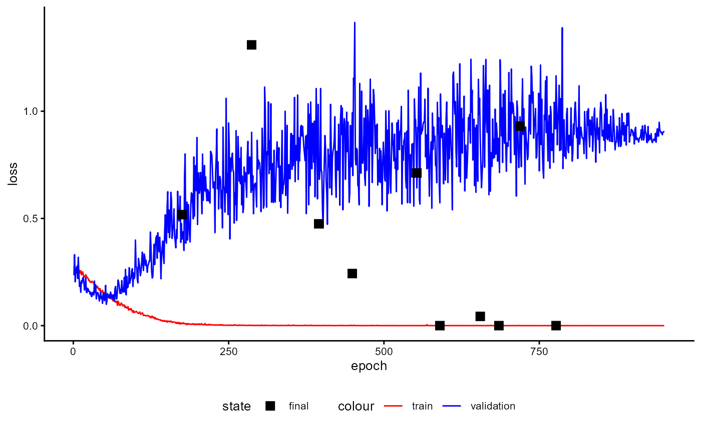
Figure 11: Training History of a Classifier during Performance Estimation Stage (loss)
Figure 11 shows the development of the loss averaged across all folds. In general, the training curve should decrease to zero. The curves for the validation and test samples should also decrease, but then start to increase after a certain point. The rectangles indicate the state of the model selected as the best during a fold.
Since there are some measures that provide a better post-hoc analysis than the loss, you can request further plots. The following plot shows the development of the average iota for all categories/classes.
classifier$plot_training_history(
final_training = FALSE,
pl_step = NULL,
measure = "avg_iota",
ind_best_model = FALSE,
ind_selected_model = TRUE,
x_min = NULL,
x_max = NULL,
y_min = NULL,
y_max = NULL,
add_min_max = FALSE,
text_size = 10
)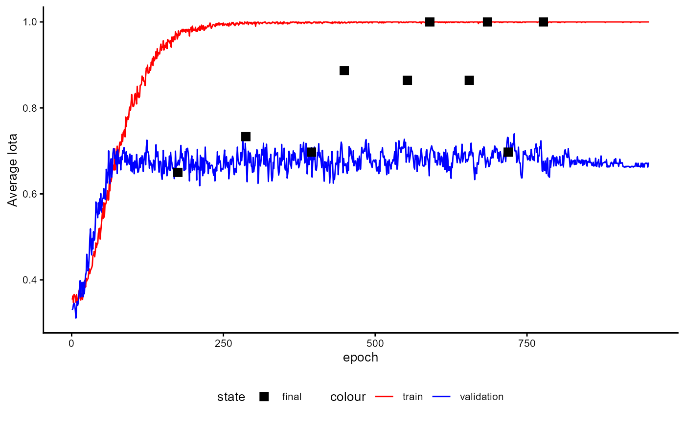
Figure 12: Training History of a Classifier during Performance Estimation Stage (iota)
The average iota ranges between 0 and 1 and indicates how well the predictions represent the true values. Higher values indicate better performance. Since measures such as average iota are based on discrete values that can fluctuate significantly, you can plot a smoothed version of average iota, which is more precise.
classifier$plot_training_history(
final_training = FALSE,
pl_step = NULL,
measure = "s_avg_iota",
ind_best_model = FALSE,
ind_selected_model = TRUE,
x_min = NULL,
x_max = NULL,
y_min = NULL,
y_max = NULL,
add_min_max = FALSE,
text_size = 10
)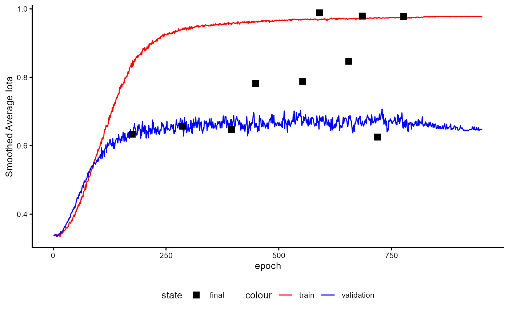
Figure 13: Training History of a Classifier during Performance Estimation Stage (smoothed iota)
To view the final training stage, set final_training to
TRUE, as shown in the following figures.
classifier$plot_training_history(
final_training = TRUE,
pl_step = NULL,
measure = "loss",
ind_best_model = FALSE,
ind_selected_model = TRUE,
x_min = NULL,
x_max = NULL,
y_min = NULL,
y_max = NULL,
add_min_max = FALSE,
text_size = 10
)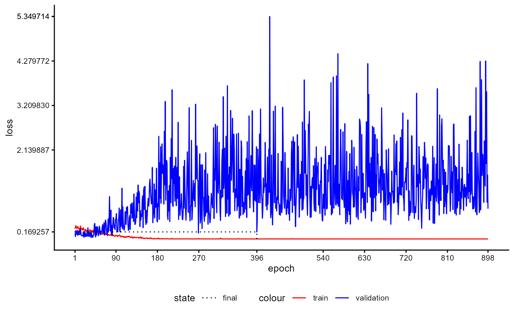
Figure 14: Training History of a Classifier during Final Training Stage (loss)
The dotted line indicates the final model state. Please note that this state is not always the one with the lowest validation loss value, because the best model is selected by applying several criteria in a hierarchical order. The first criterion is the model’s performance in terms of the smoothed average iota The second criterion is the loss.
classifier$plot_training_history(
final_training = TRUE,
pl_step = NULL,
measure = "avg_iota",
ind_best_model = FALSE,
ind_selected_model = TRUE,
x_min = NULL,
x_max = NULL,
y_min = NULL,
y_max = NULL,
add_min_max = FALSE,
text_size = 10
)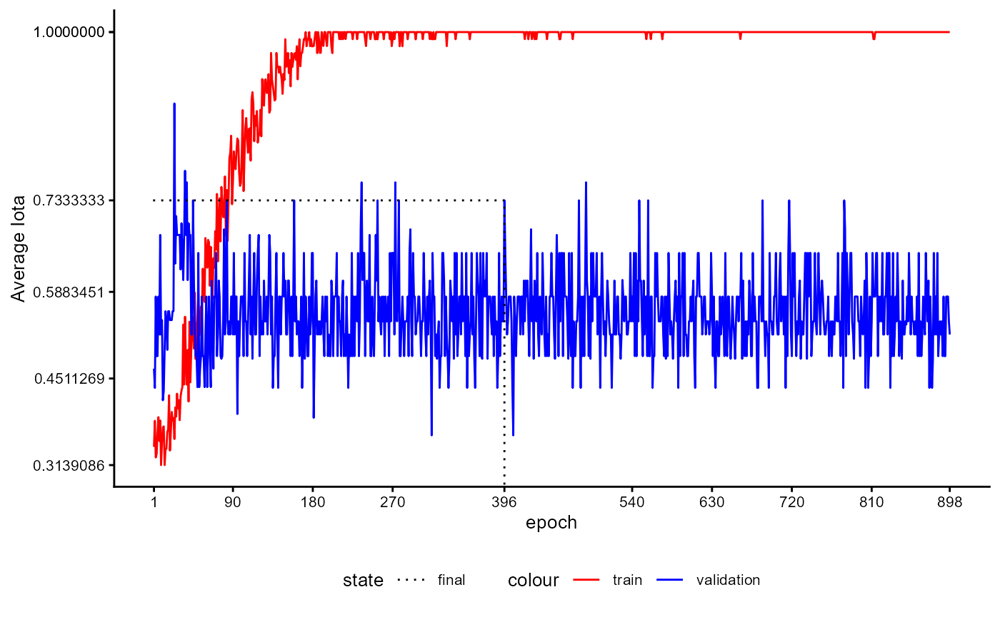
Figure 15: Training History of a Classifier during Final Training Stage (iota)
classifier$plot_training_history(
final_training = TRUE,
pl_step = NULL,
measure = "s_avg_iota",
ind_best_model = FALSE,
ind_selected_model = TRUE,
x_min = NULL,
x_max = NULL,
y_min = NULL,
y_max = NULL,
add_min_max = FALSE,
text_size = 10
)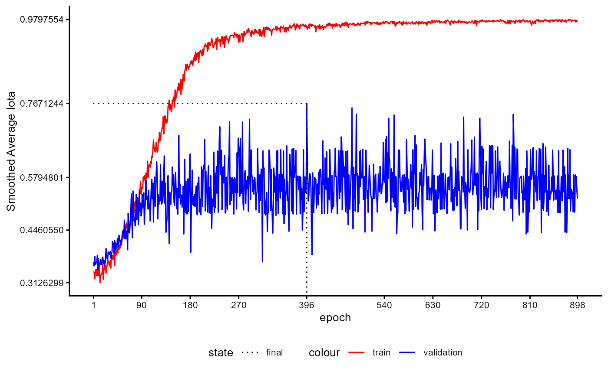
Figure 16: Training History of a Classifier during Final Training Stage (smoothed iota)
To gain a deeper insight into the training process, you can request a
plot visualising the learning rate calculation. Please note that this
plot is only available if you have set either lr_rate or
lr_min to 0.0.
classifier$plot_learning_rate()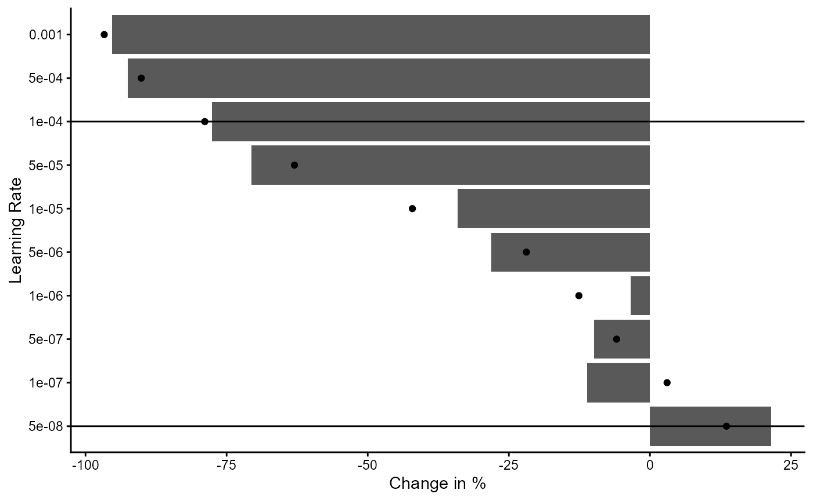
Figure 17: Analysis of Different Learning Rates
The bars in the plot show the percentage increase or decrease in loss compared to the initial loss. The values express the percentage change from the initial loss. A decrease is desirable. The points on the plot show a smoothed distribution of the loss. All calculations for selecting good maximum and minimum learning rates are based on the smoothed data. The automatic calculation selects the learning rate from the range of learning rates that leads to the greatest decrease in loss. The maximum learning rate is set at the point where the decrease in loss turns. The minimum learning rate is set to the rate that results in the smallest reduction in loss. Depending on the learning rate scheduler, other points may be chosen.
7.3 Performance Evaluation
Once training is complete, you can evaluate the performance of the classifier. For each fold, the classifier is applied to the test sample and the results are compared to the true categories/classes. As the test sample is never part of the training set, all performance measures provide a more realistic idea of the classifier’s performance.
To help researchers judge the quality of the predictions, aifeducation uses several measures and concepts from content analysis. These are:
- Iota Concept of the Second Generation (Berding & Pargmann 2022).
- Krippendorff’s Alpha (Krippendorff 2019).
- Percentage Agreement.
- Gwet’s AC1/AC2 (Gwet 2014).
- Kendall’s coefficient of concordance W.
- Cohen’s Kappa unweighted (Cohen 1960).
- Cohen’s Kappa with equal weights (Cohen 1968).
- Cohen’s Kappa with squared weights (Cohen 1968).
- Fleiss’ Kappa for multiple raters without exact estimation (Fleiss 1971).
You can access the mean values across all folds via
reliability$test_metric_mean. In our example, this would
be:
classifier$reliability$test_metric_mean
#> iota_index min_iota2 avg_iota2
#> 0.5636364 0.4584307 0.5906369
#> max_iota2 min_alpha avg_alpha
#> 0.7228431 0.5589286 0.7194643
#> max_alpha static_iota_index dynamic_iota_index
#> 0.8800000 0.2818290 0.4751055
#> kalpha_nominal kalpha_ordinal kendall
#> 0.4688048 0.4688048 0.7365683
#> c_kappa_unweighted c_kappa_linear c_kappa_squared
#> 0.4622487 0.4622487 0.4622487
#> kappa_fleiss percentage_agreement balanced_accuracy
#> 0.4567024 0.7729249 0.7194643
#> gwet_ac1_nominal gwet_ac2_linear gwet_ac2_quadratic
#> 0.6083801 0.6083801 0.6083801
#> avg_precision avg_recall avg_f1
#> 0.7594686 0.7194643 0.7283512An addition, standard measures from machine learning are reported. These are
- Precision
- Recall
- F1-Score
You can access these values as follows:
classifier$reliability$standard_measures_mean
#> precision recall f1
#> neg 0.7172222 0.5589286 0.6195679
#> pos 0.8017151 0.8800000 0.8371345To analyse the quality of the training across all folds, you can request an additional box plot. The figure below shows the performance that the classifier achieved.
classifier$plot_reliability_distribution(measures="all")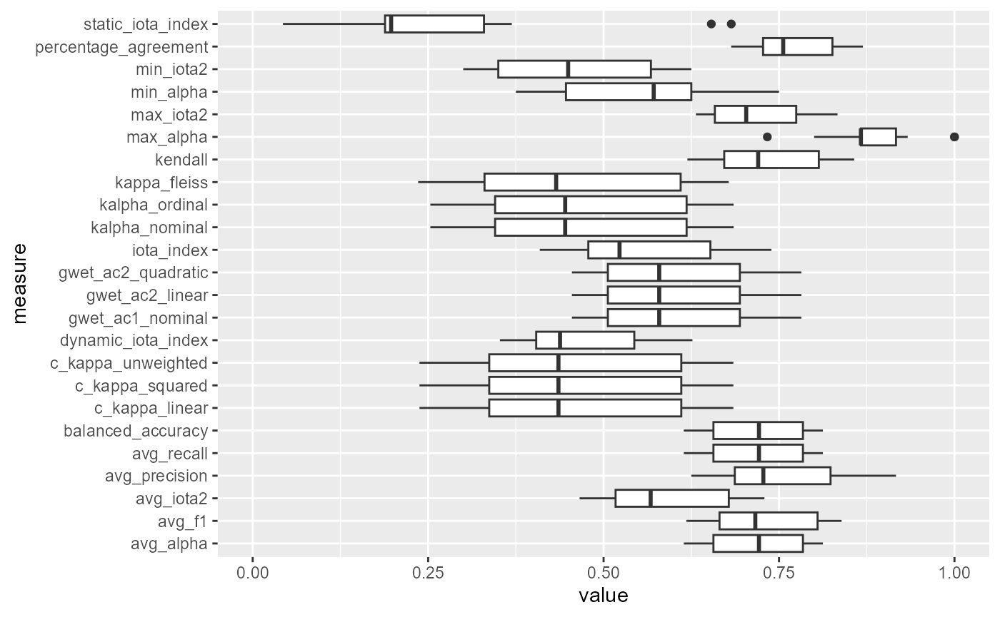
Figure 18: Box Plot of Performance Measures
Finally, you can plot a coding stream scheme to show how cases in different classes are labelled.
classifier$plot_coding_stream()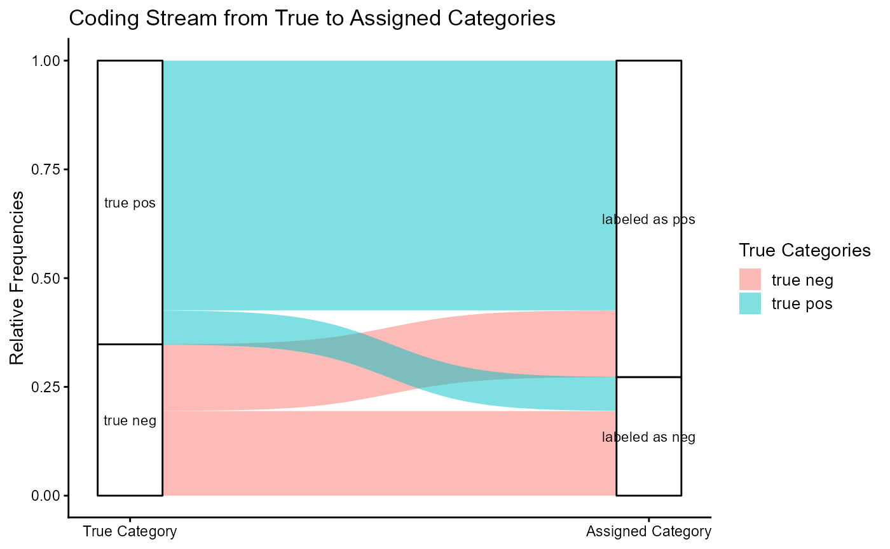
Figure 19: Coding Stream of the Classifier
Evaluating the performance of a classifier is a complex task that goes beyond the scope of this vignette. If you would like to delve deeper into this topic, we recommend consulting the cited literature on content analysis and machine learning.
7.4 Sustainability
If the classifier was trained with an active sustainability tracker,
you can retrieve sustainability information by calling
classifier$get_sustainability_data().
# We use t() to improve the readability of the table
t(classifier$get_sustainability_data())
#> [,1]
#> sustainability_tracked "TRUE"
#> date "2026-10-13 17:20:33"
#> task NA
#> sustainability_data.duration_sec "1524.327"
#> sustainability_data.co2eq_kg "0.01217227"
#> sustainability_data.cpu_energy_kwh "0.0179935"
#> sustainability_data.gpu_energy_kwh "0.00972519"
#> sustainability_data.ram_energy_kwh "0.004233729"
#> sustainability_data.total_energy_kwh "0.03195242"
#> technical.tracker "codecarbon"
#> technical.py_package_version "3.2.2"
#> technical.cpu_count "12"
#> technical.cpu_model "12th Gen Intel(R) Core(TM) i5-12400F"
#> technical.gpu_count "1"
#> technical.gpu_model "1 x NVIDIA GeForce RTX 4070"
#> technical.ram_total_size "15.84258"
#> region.country_name "Germany"
#> region.country_iso_code "DEU"
#> region.region NA7.5 Saving and Loading a Classifier
The saving and loading process follows the same pattern as for the
other objects. aifeducation. You can save the classifier by
calling the save_to_disk function. In our example, this
might look like this:
save_to_disk(
object = classifier,
dir_path = "examples",
folder_name = "cls_imdb_movie_reviews"
)The classifier is saved to
examples/cls_imdb_movie_reviews. To load the model call
load_from_disk.
classifier <- load_from_disk("examples/cls_imdb_movie_reviews")7.6 Predicting New Data
If you would like to apply your classifier to new data, two steps are necessary. First, you must transform the raw text into a numerical representation using exactly the same text embedding model that was used to train your classifier (see Section 4). In the case of our example classifier, we use our BERT model.
# If our model is not loaded
tem <- load_from_disk("examples/eurobert_te_model")
# Create a numerical representation of the text
review_embeddings <- tem$embed_large(
text_dataset = data_set_reviews_text,
trace = TRUE
)
#> Calculating Embeddings 10.00 % (1|10) done ETA: 0000::00::17Calculating Embeddings 20.00 % (2|10) done ETA: 0000::00::12Calculating Embeddings 30.00 % (3|10) done ETA: 0000::00::10Calculating Embeddings 40.00 % (4|10) done ETA: 0000::00::08Calculating Embeddings 50.00 % (5|10) done ETA: 0000::00::07Calculating Embeddings 60.00 % (6|10) done ETA: 0000::00::05Calculating Embeddings 70.00 % (7|10) done ETA: 0000::00::04Calculating Embeddings 80.00 % (8|10) done ETA: 0000::00::03Calculating Embeddings 90.00 % (9|10) done ETA: 0000::00::01Calculating Embeddings 100.00 % (10|10) done ETA: 0000::00::00To transform raw text into a numeric representation, simply pass the
text to the embed_large method of the loaded model. The raw
text should be an object of the class LargeDataSetForText.
To create such a data set, please refer to Section 2.
The resulting object can then be passed to the predict
method of our classifier to obtain predictions together with an estimate
of certainty for each class/category.
# If your classifier is not loaded
classifier <- load_from_disk("examples/cls_imdb_movie_reviews")
# predict the classes of new texts
predicted_categories <- classifier$predict(
newdata = review_embeddings,
batch_size = 32
)
# Show predicted categories
head(predicted_categories)
#> neg pos expected_category
#> 11329 0.9984832 0.001516801 neg
#> 10460 0.9984681 0.001531932 neg
#> 10536 0.9989967 0.001003357 neg
#> 12035 0.9976599 0.002340015 neg
#> 7267 0.9985479 0.001452108 neg
#> 4761 0.9977448 0.002255289 neg
# Count frequencies
table(predicted_categories$expected_category)
#>
#> neg pos
#> 97 203Once the prediction has been made by the classifier, the estimated
categories/classes are stored as ‘predicted_categories’. This object is
a data.frame containing text IDs in the rows and the
probabilities of the different categories/classes in the columns. The
final column, named ‘expected_category’, represents the category
assigned to a text with the highest probability.
These estimates can be used in further analyses employing common methods from the educational and social sciences, such as correlation analysis, regression analysis, structural equation modelling, latent class analysis, and analysis of variance.
Now you are ready to to use aifeducation.
8 Plots for Training History
8.1 BaseModels
You can use BaseModels, TEFeatureExtractors
and classifiers to create plots showing your model’s training process.
The process of requesting these plots is similar for all objects.
However, classifiers offer the greatest degree of customisation of
graphics. This chapter demonstrates how to use the plots. We refer to
models from previous chapters to provide examples.
We start with the base models. The x_min,
x_max, y_min and y_max arguments
allow you to zoom in or out. If you set these arguments to
NULL, the values will be determined automatically.
The ind_best_model argument allows you to emphasise the
epoch with the lowest loss for the validation sample. In general, this
is the state of the model with the best generalisation abilities. Unlike
the classifiers, this is also the final state of the model after
training. The text_size argument allows you to increase or
decrease the size of the text within the graphic.
base_model_bert$plot_training_history(
x_min = NULL,
x_max = NULL,
y_min = NULL,
y_max = NULL,
ind_best_model = TRUE,
text_size = 10L
)
Figure 20: Example of a Training History for a BaseModel emphasizing the Best Model State.
8.2 Classifiers
Classifiers offer a greater variety of options. Using the
x_min, x_max, y_min and
y_max arguments, you can specify the area to be plotted.
Setting these arguments to NULL will generate adequate
values automatically. With the measure argument, you can
select the metric you would like to see. For example, the following plot
shows loss.
classifier$plot_training_history(
final_training = FALSE,
pl_step = NULL,
measure = "loss",
ind_best_model = FALSE,
ind_selected_model = FALSE,
x_min = NULL,
x_max = NULL,
y_min = NULL,
y_max = NULL,
add_min_max = FALSE,
text_size = 10L
)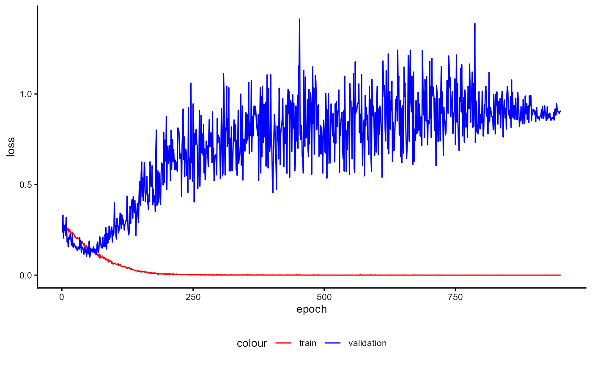
Figure 21: Example of a Training History for a Classifier emphasizing the Loss.
The following plot shows how the average iota values changed over the course of the training process.
classifier$plot_training_history(
final_training = FALSE,
pl_step = NULL,
measure = "avg_iota",
ind_best_model = FALSE,
ind_selected_model = FALSE,
x_min = NULL,
x_max = NULL,
y_min = NULL,
y_max = NULL,
add_min_max = FALSE,
text_size = 10L
)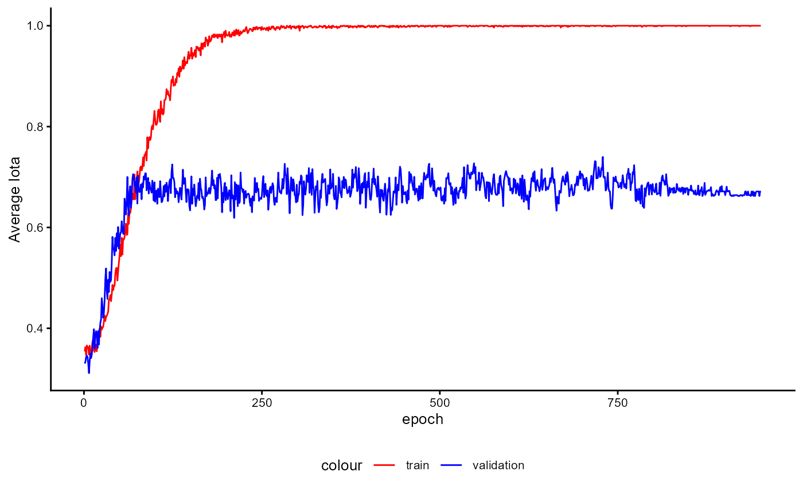
Figure 22: Example of a Training History for a Classifier emphasizing the Average Iota.
Setting ind_best_model to TRUE will display
additional points in the graphic. These points represents the epochs and
their corresponding values according to the chosen metric at which the
model performed best. For metrics such as loss, the values should be
close to 0, while for metrics such as accuracy, balanced accuracy and
average iota, the best values are close to 1. You can see one point for
every fold during training.
classifier$plot_training_history(
final_training = FALSE,
pl_step = NULL,
measure = "loss",
ind_best_model = TRUE,
ind_selected_model = FALSE,
x_min = NULL,
x_max = NULL,
y_min = NULL,
y_max = NULL,
add_min_max = FALSE,
text_size = 10L
)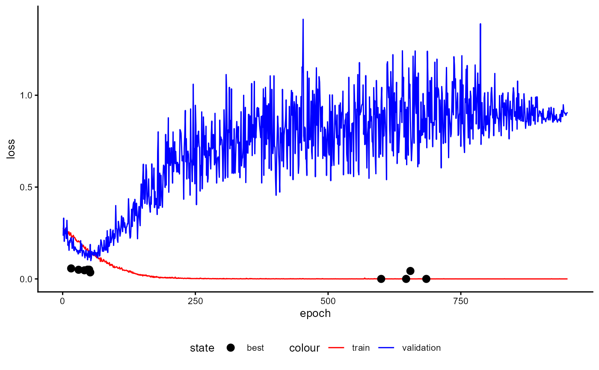
Figure 23: Example of a Training History for a Classifier emphasizing the Loss and the best Model States.
classifier$plot_training_history(
final_training = FALSE,
pl_step = NULL,
measure = "avg_iota",
ind_best_model = TRUE,
ind_selected_model = FALSE,
x_min = NULL,
x_max = NULL,
y_min = NULL,
y_max = NULL,
add_min_max = FALSE,
text_size = 10L
)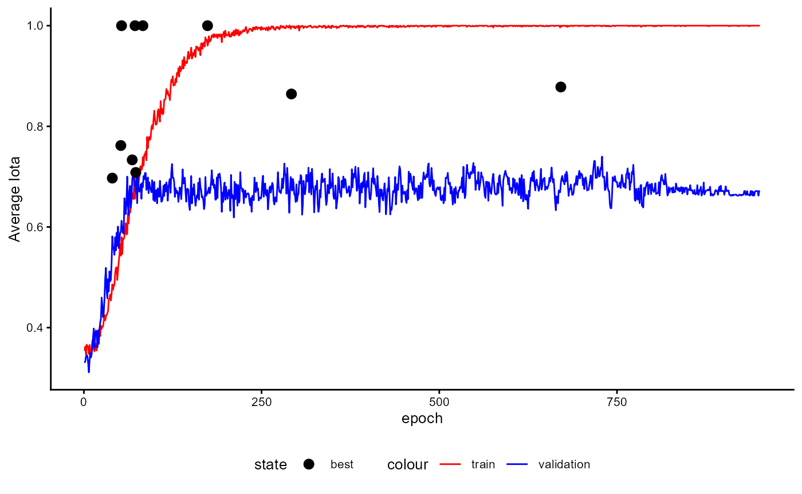
Figure 24: Example of a Training History for a Classifier emphasizing the Average Iota and the best Model States.
Please note that these points indicate the model’s optimal state according to the chosen metric for each fold. However, these values do not necessarily reflect the final state of the model. This is because the best state of a model during each training loop is determined by the best smoothed average iota value. If there are multiple models with the same smoothed average iota value, the model with the best loss is taken into account. Finally, the state with the highest number of epochs is used.
Set ind_selected_model to TRUE to add the
final states of the model for every fold.
classifier$plot_training_history(
final_training = FALSE,
pl_step = NULL,
measure = "loss",
ind_best_model = TRUE,
ind_selected_model = TRUE,
x_min = NULL,
x_max = NULL,
y_min = NULL,
y_max = NULL,
add_min_max = FALSE,
text_size = 10L
)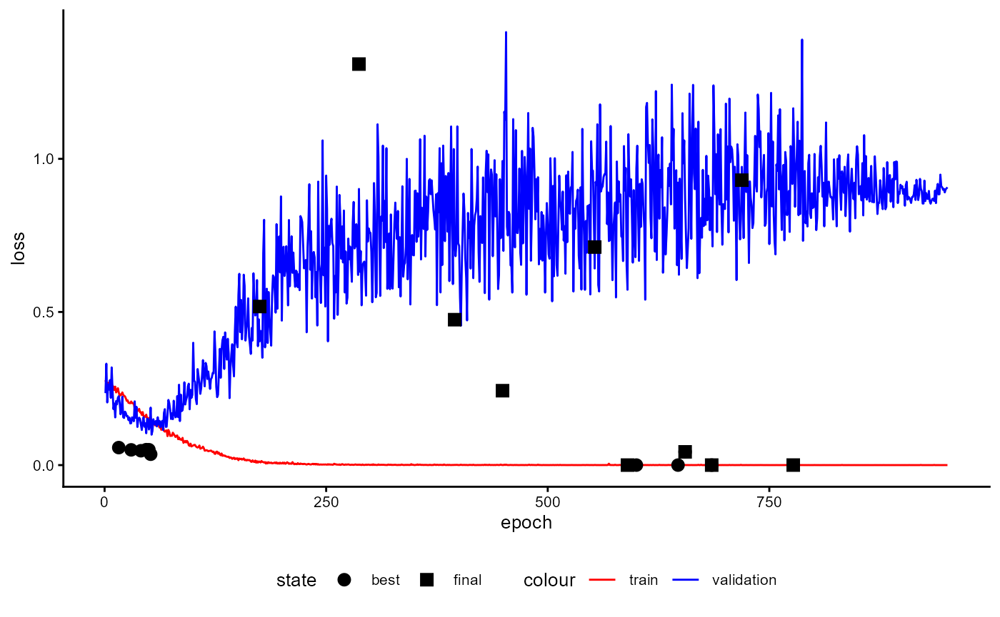
Figure 25: Example of a Training History for a Classifier emphasizing the Loss, the best Model States, and the Final Model States.
Since the performance of a model is determined by several factors,
the minimum and maximum values provide a deeper understanding of the
training process. To include these in the plot, set
add_min_max to TRUE. The plot will now show
the full range of values for each epoch according to the chosen
metric.
classifier$plot_training_history(
final_training = FALSE,
pl_step = NULL,
measure = "loss",
ind_best_model = TRUE,
ind_selected_model = TRUE,
x_min = NULL,
x_max = NULL,
y_min = NULL,
y_max = NULL,
add_min_max = TRUE,
text_size = 10L
)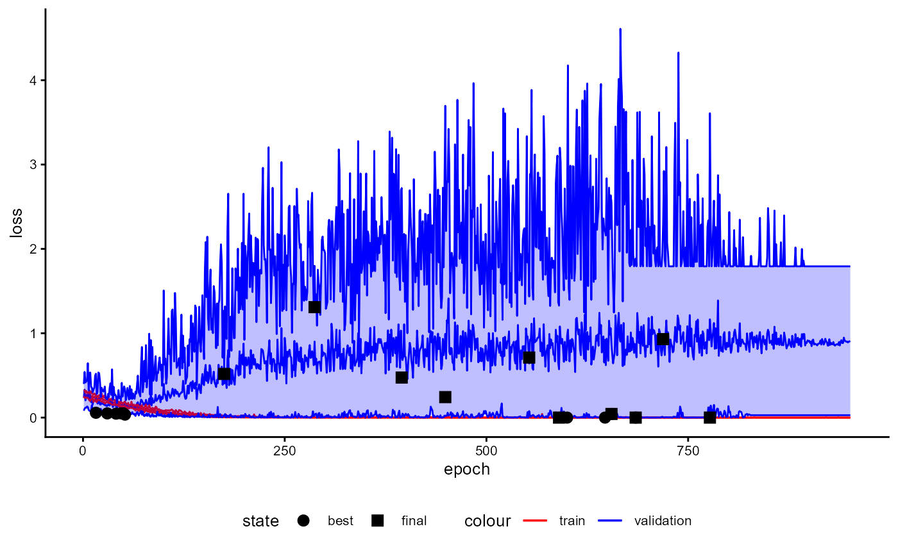
Figure 26: Example of a Training History for a Classifier emphasizing the Loss with Minimal and Maximal Values.
Using the argument final_training, you can switch
between the performance estimation stage and the final training stage of
the model. Since the final training phase only differentiates between
training and validation data sets, there is no line for test data. In
addition, there are no folds. Therefore, the argument
add_min_max has no functionality.
classifier$plot_training_history(
final_training = TRUE,
pl_step = NULL,
measure = "loss",
ind_best_model = TRUE,
ind_selected_model = TRUE,
x_min = NULL,
x_max = NULL,
y_min = NULL,
y_max = NULL,
add_min_max = TRUE,
text_size = 10L
)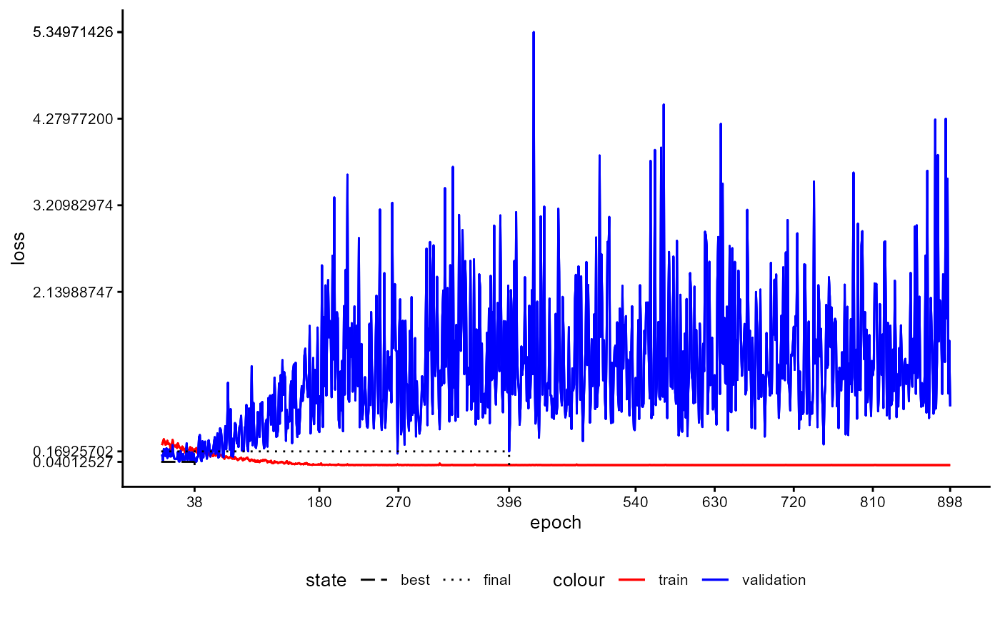
Figure 27: Example of a Training History for a Classifier emphasizing the Loss at the Final Training Phase.
The final important argument is pl_step. This value is
only relevant if the model used pseudo labeling during training. This
parameter allows you to select the step during pseudo labeling that
should be displayed in the plot. This works for performance estimation
as well as the final training stage.
References
Beltagy, I., Peters, M. E., & Cohan, A. (2020). Longformer: The Long-Document Transformer. https://doi.org/10.48550/arXiv.2004.05150
Berding, F., & Pargmann, J. (2022). Iota Reliability Concept of the Second Generation. Berlin: Logos. https://doi.org/10.30819/5581
Berding, F., Riebenbauer, E., Stütz, S., Jahncke, H., Slopinski, A., & Rebmann, K. (2022). Performance and Configuration of Artificial Intelligence in Educational Settings.: Introducing a New Reliability Concept Based on Content Analysis. Frontiers in Education, 1–21. https://doi.org/10.3389/feduc.2022.818365
Boizard, N., Gisserot-Boukhlef, H., Alves, D. M., Martins, A., Hammal, A., Corro, C., Hudelot, C., Malherbe, E., Malaboeuf, E., Jourdan, F., Hautreux, G., Alves, J., El-Haddad, K., Faysse, M., Peyrard, M., Guerreiro, N. M., Fernandes, P., Rei, R. & Colombo, P. (2025). EuroBERT: Scaling Multilingual Encoders for European Languages. https://doi.org/10.48550/arXiv.2503.05500
Campesato, O. (2021). Natural Language Processing Fundamentals for Developers. Mercury Learning & Information. https://ebookcentral.proquest.com/lib/kxp/detail.action?docID=6647713
Cascante-Bonilla, P., Tan, F., Qi, Y. & Ordonez, V. (2020). Curriculum Labeling: Revisiting Pseudo-Labeling for Semi-Supervised Learning. https://doi.org/10.48550/arXiv.2001.06001
Chen, T., Kornblith, S., Norouzi, M. & Hinton, G. (2020). A Simple Framework for Contrastive Learning of Visual RePostsentations. https://doi.org/10.48550/arXiv.2002.05709
Chollet, F., Kalinowski, T., & Allaire, J. J. (2022). Deep learning with R (Second edition). Manning Publications Co. https://learning.oreilly.com/library/view/-/9781633439849/?ar
Conneau, A., Khandelwal, K., Goyal, N., Chaudhary, V., Wenzek, G., Guzmán, F., Grave, E., Ott, M., Zettlemoyer, L., & Stoyanov, V. (2019). Unsupervised Cross-lingual Representation Learning at Scale https://doi.org/10.48550/arXiv.1911.02116
Dai, Z., Lai, G., Yang, Y. & Le, Q. V. (2020). Funnel-Transformer: Filtering out Sequential Redundancy for Efficient Language Processing. https://doi.org/10.48550/arXiv.2006.03236
Devlin, J., Chang, M.‑W., Lee, K., & Toutanova, K. (2019). BERT: Post-training of Deep Bidirectional Transformers for Language Understanding. In J. Burstein, C. Doran, & T. Solorio (Eds.), Proceedings of the 2019 Conference of the North (pp. 4171–4186). Association for Computational Linguistics. https://doi.org/10.18653/v1/N19-1423
Frochte, J. (2019). Maschinelles Lernen: Grundlagen und Algorithmen in Python (2., aktualisierte Auflage). Hanser.
Ganesan, A. V., Matero, M., Ravula, A. R., Vu, H., & Schwartz, H. A. (2021). Empirical Evaluation of Pre-trained Transformers for Human-Level NLP: The Role of Sample Size and Dimensionality. Proceedings of the Conference. Association for Computational Linguistics. North American Chapter. Meeting, 2021, 4515–4532. https://doi.org/10.18653/v1/2021.naacl-main.357
Ganesh, P., Chen, Y., Lou, X., Khan, M. A., Yang, Y., Sajjad, H., Nakov, P., Chen, D., & Winslett, M. (2021). ComPostssing Large-Scale Transformer-Based Models: A Case Study on BERT. Transactions of the Association for Computational Linguistics, 9, 1061–1080. https://doi.org/10.1162/tacl_a_00413
Gwet, K. L. (2014). Handbook of inter-rater reliability: The definitive guide to measuring the extent of agreement among raters (Fourth edition). Gaithersburg: STATAXIS.
He, P., Liu, X., Gao, J. & Chen, W. (2020). DeBERTa: Decoding-enhanced BERT with Disentangled Attention. https://doi.org/10.48550/arXiv.2006.03654
He, F., Liu, T. & Tao, D. (2019). Control Batch Size and Learning Rate to Generalize Well: Theoretical and Empirical Evidence. In Advances in neural information processing systems: Bd. 32. 32nd Conference on Neural Information Processing Systems (NeurIPS 2019): Vancouver, Canada, 8-14 December 2019. Curran Associates Inc.
Islam, A., Belhaouari, S. B., Rehman, A. U. & Bensmail, H. (2022). KNNOR: An oversampling technique for imbalanced datasets. Applied Soft Computing, 115, 108288. https://doi.org/10.1016/j.asoc.2021.108288
Kaplan, J., McCandlish, S., Henighan, T., Brown, T. B., Chess, B., Child, R., Gray, S., Radford, A., Wu, J. & Amodei, D. (2020). Scaling Laws for Neural Language Models. https://doi.org/10.48550/arXiv.2001.08361
Kaya, Y. B., & Tantuğ, A. C. (2024). Effect of tokenization granularity for Turkish large language models. Intelligent Systems with Applications, 21, 200335. https://doi.org/10.1016/j.iswa.2024.200335
Keskar, N. S., Mudigere, D., Nocedal, J., Smelyanskiy, M. & Tang, P. T. P. (2017). On Large-Batch Training for Deep Learning: Generalization Gap and Sharp Minima. http://arxiv.org/pdf/1609.04836v2
Krippendorff, K. (2019). Content Analysis: An Introduction to Its Methodology (4th ed.). Los Angeles: SAGE.
Lane, H., Howard, C., & Hapke, H. M. (2019). Natural language processing in action: Understanding, analyzing, and generating text with Python. Shelter Island: Manning.
Larusson, J. A., & White, B. (Eds.). (2014). Learning Analytics: From Research to Practice. New York: Springer. https://doi.org/10.1007/978-1-4614-3305-7
Lee, D.‑H. (2013). Pseudo-Label: The Simple and Efficient Semi-Supervised Learning Method for Deep Neural Networks. CML 2013 Workshop: Challenges in Representation Learning.
Lee-Thorp, J., Ainslie, J., Eckstein, I. & Ontanon, S. (2021). FNet: Mixing Tokens with Fourier Transforms. https://doi.org/10.48550/arXiv.2105.03824
Li, X., Chang, D., Ma, Z., Tan, Z.‑H., Xue, J.‑H., Cao, J., Yu, J. & Guo, J. (2020). OSLNet: Deep Small-Sample Classification With an Orthogonal Softmax Layer. IEEE Transactions on Image Processing, 29, 6482–6495. https://doi.org/10.1109/TIP.2020.2990277
Liu, N. F., Gardner, M., Belinkov, Y., Peters, M. E., & Smith, N. A. (2019). Linguistic Knowledge and Transferability of Contextual RePostsentations. In J. Burstein, C. Doran, & T. Solorio (Eds.), Proceedings of the 2019 Conference of the North (pp. 1073–1094). Association for Computational Linguistics. https://doi.org/10.18653/v1/N19-1112
Liu, Y., Ott, M., Goyal, N., Du, J., Joshi, M., Chen, D., Levy, O., Lewis, M., Zettlemoyer, L., & Stoyanov, V. (2019). RoBERTa: A Robustly Optimized BERT Posttraining Approach. https://doi.org/10.48550/arXiv.1907.11692
Maas, A. L., Daly, R. E., Pham, P. T., Huang, D., Ng, A. Y., & Potts, C. (2011). Learning Word Vectors for Sentiment Analysis. In D. Lin, Y. Matsumoto, & R. Mihalcea (Eds.), Proceedings of the 49th Annual Meeting of the Association for Computational Linguistics: Human Language Technologies (pp. 142–150). Association for Computational Linguistics. https://aclanthology.org/P11-1015
Masters, D. & Luschi, C. (2018). Revisiting Small Batch Training for Deep Neural Networks. https://doi.org/10.48550/arXiv.1804.07612
Meng, Y., Krishnan, J., Wang, S., Wang, Q., Mao, Y., Fang, H., Ghazvininejad, M., Han, J., & Zettlemoyer, L. (2023). Representation Deficiency in Masked Language Modeling. arXiv. https://doi.org/10.48550/ARXIV.2302.02060
Papilloud, C., & Hinneburg, A. (2018). Qualitative Textanalyse mit Topic-Modellen: Eine Einführung für Sozialwissenschaftler. Wiesbaden: Springer. https://doi.org/10.1007/978-3-658-21980-2
Pappagari, R., Zelasko, P., Villalba, J., Carmiel, Y., & Dehak, N. (2019). Hierarchical Transformers for Long Document Classification. In 2019 IEEE Automatic Speech Recognition and Understanding Workshop (ASRU) (pp. 838–844). IEEE. https://doi.org/10.1109/ASRU46091.2019.9003958
Pennington, J., Socher, R., & Manning, C. D. (2014). GloVe: Global Vectors for Word representation Proceedings of the 2014 Conference on Empirical Methods in Natural Language Processing. https://aclanthology.org/D14-1162.pdf
Ranjan, & Chitta. (2019). Build the right Autoencoder — Tune and Optimize using PCA principles.: Part I. https://towardsdatascience.com/build-the-right-autoencoder-tune-and-optimize-using-pca-principles-part-i-1f01f821999b
Rudman, W., Gillman, N., Rayne, T., & Eickhoff, C. (2022). IsoScore: Measuring the Uniformity of Embedding Space Utilization. In S. Muresan, P. Nakov, & A. Villavicencio (Eds.), Findings of the Association for Computational Linguistics: ACL 2022 (pp. 3325–3339). Association for Computational Linguistics. https://doi.org/10.18653/v1/2022.findings-acl.262
Schreier, M. (2012). Qualitative Content Analysis in Practice. Los Angeles: SAGE.
Snell, J., Swersky, K., & Zemel, R. S. (2017). Prototypical Networks for Few-shot Learning. https://doi.org/10.48550/arXiv.1703.05175
Song, K., Tan, X., Qin, T., Lu, J. & Liu, T.‑Y. (2020). MPNet: Masked and Permuted Post-training for Language Understanding. https://doi.org/10.48550/arXiv.2004.09297
Takeshita, S., Takeshita, Y., Ruffinelli, D. & Ponzetto, S. P. (2025). Randomly Removing 50% of Dimensions in Text Embeddings has Minimal Impact on Retrieval and Classification Tasks. https://doi.org/10.48550/arXiv.2508.17744
Tunstall, L., Werra, L. von, Wolf, T., & Géron, A. (2022). Natural language processing with transformers: Building language applications with hugging face (Revised edition). Heidelberg: O’Reilly.
Vaswani, A., Shazeer, N., Parmar, N., Uszkoreit, J., Jones, L., Gomez, A. N., Kaiser, L., & Polosukhin, I. (2017). Attention Is All You Need. https://doi.org/10.48550/arXiv.1706.03762
Warner, B., Chaffin, A., Clavié, B., Weller, O., Hallström, O., Taghadouini, S., Gallagher, A., Biswas, R., Ladhak, F., Aarsen, T., Cooper, N., Adams, G., Howard, J. & Poli, I. (2024). Smarter, Better, Faster, Longer: A Modern Bidirectional Encoder for Fast, Memory Efficient, and Long Context Finetuning and Inference. https://doi.org/10.48550/arXiv.2412.13663
Wu, Y., Schuster, M., Chen, Z., Le, Q. V., Norouzi, M., Macherey, W., Krikun, M., Cao, Y., Gao, Q., Macherey, K., Klingner, J., Shah, A., Johnson, M., Liu, X., Kaiser, Ł., Gouws, S., Kato, Y., Kudo, T., Kazawa, H., . . . Dean, J. (2016). Google’s Neural Machine Translation System: Bridging the Gap between Human and Machine Translation. https://doi.org/10.48550/arXiv.1609.08144